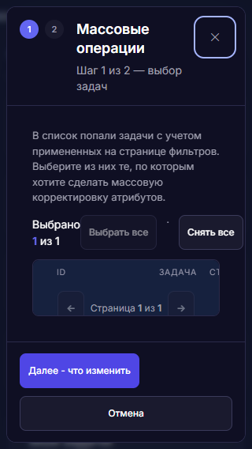

Изолированные сценарии реальных модулей. WebKit на Windows не равен Safari на macOS/iOS. Служебный Arial в стенде требований выделен отдельно. Продукт не изменялся. Числа — сочетания измерений, а не количество дефектов. Одно место может входить в несколько групп.
На ширине 320 px названия задач практически недоступны: колонка сжимается до 16 px. Решение: карточки на узком экране или переработанная таблица с раскрытием полного названия.

Решение: подписи и метаданные от 12 px; 11 px только в согласованных плотных таблицах. Декоративные счётчики — отдельное исключение.
Наличие измерения в группе само по себе не означает дефект.
| Экран / элемент | Текст | Типографика | Проверено |
|---|---|---|---|
КанбанТочное место/e2e/fixtures/uiKitComposites.html?surface=kanbanspan | 0% | 10px / 400 Межстрочный: 15px Межбуквенный: normal Inter, -apple-system, BlinkMacSystemFont, "Segoe UI", sans-serif normal | chrome, edge, firefox, webkit 390, 1280, 1440 px dark, light Сценарииsame components share computed styles: dark/false/390kanban controls, statuses and overflow: light/mobile keyboard status menu serializes save, restores focus and rolls back failure family contract: kanban kanban controls, statuses and overflow: light/compact same components share computed styles: light/false/1440 same components share computed styles: light/true/1440 same components share computed styles: dark/false/1440 |
КанбанТочное место/e2e/fixtures/uiKitComposites.html?surface=kanbanspan | 100% | 10px / 400 Межстрочный: 15px Межбуквенный: normal Inter, -apple-system, BlinkMacSystemFont, "Segoe UI", sans-serif normal | chrome, edge, firefox, webkit 390, 1280, 1440 px dark, light Сценарииsame components share computed styles: dark/false/390kanban controls, statuses and overflow: light/mobile keyboard status menu serializes save, restores focus and rolls back failure family contract: kanban kanban controls, statuses and overflow: light/compact same components share computed styles: light/false/1440 same components share computed styles: light/true/1440 same components share computed styles: dark/false/1440 |
КанбанТочное место/e2e/fixtures/uiKitComposites.html?surface=kanban&readonly=1span | 0% | 10px / 400 Межстрочный: 15px Межбуквенный: normal Inter, -apple-system, BlinkMacSystemFont, "Segoe UI", sans-serif normal | chrome, edge, firefox, webkit 1280 px light Сценарииreadonly kanban cannot move tasks by menu or drag |
КанбанТочное место/e2e/fixtures/uiKitComposites.html?surface=kanban&readonly=1span | 100% | 10px / 400 Межстрочный: 15px Межбуквенный: normal Inter, -apple-system, BlinkMacSystemFont, "Segoe UI", sans-serif normal | chrome, edge, firefox, webkit 1280 px light Сценарииreadonly kanban cannot move tasks by menu or drag |
Карточка и создание задачиТочное место/e2e/fixtures/taskCardIncrement.html#/tasks?task=42small | ч/д | 10.5px / 600 Межстрочный: 15.75px Межбуквенный: -0.15px Inter, -apple-system, BlinkMacSystemFont, "Segoe UI", sans-serif normal | chrome, edge, firefox, webkit 1280 px light СценарииV30 показывает и редактирует четыре возвращённых атрибутавкладки имеют ARIA-семантику и управляются стрелками, Home и End |
Карточка и создание задачиТочное место/e2e/fixtures/taskCardIncrement.html#/tasks?task=42&tab=mainsmall | ч/д | 10.5px / 600 Межстрочный: 15.75px Межбуквенный: -0.15px Inter, -apple-system, BlinkMacSystemFont, "Segoe UI", sans-serif normal | chrome, edge, firefox, webkit 1280, 390 px light, dark Сценариивкладки имеют ARIA-семантику и управляются стрелками, Home и Endна ширине 390px все вкладки остаются внутри viewport в dark theme полная API fixture проходит через все шесть вкладок реального modal.js Markdown-описание безопасно форматируется и раскрывается без смены режима |
Карточка и создание задачиТочное место/e2e/fixtures/taskCardIncrement.html?mode=readonly#/tasks?task=42small | ч/д | 10.5px / 600 Межстрочный: 15.75px Межбуквенный: -0.15px Inter, -apple-system, BlinkMacSystemFont, "Segoe UI", sans-serif normal | chrome, edge, firefox, webkit 1280 px light Сценарииread-only режим сохраняет просмотр, но убирает все изменяющие действия |
Карточка и создание задачиТочное место/e2e/fixtures/taskCardIncrement.html#/tasks?task=42output.progress-value | 35% | 10px / 800 Межстрочный: 16px Межбуквенный: normal Inter, -apple-system, BlinkMacSystemFont, "Segoe UI", sans-serif normal | chrome, edge, firefox, webkit 1280 px light СценарииV30 показывает и редактирует четыре возвращённых атрибута |
Главная и таймлайнТочное место/#/dashboard#notification-count | 0 | 10px / 400 Межстрочный: 15px Межбуквенный: normal Inter, -apple-system, BlinkMacSystemFont, "Segoe UI", sans-serif normal | chrome, edge, firefox 1280 px light Сценарииглавная не создаёт вложенный скролл и сохраняет подписи действийглавная показывает действия и ближайшие даты, сохраняя точный переход |
Главная и таймлайнТочное место/#/dashboard#notification-count | 2 | 10px / 400 Межстрочный: 15px Межбуквенный: normal Inter, -apple-system, BlinkMacSystemFont, "Segoe UI", sans-serif normal | chrome, edge, firefox 1280 px light Сценарииглавная не создаёт вложенный скролл и сохраняет подписи действийглавная показывает действия и ближайшие даты, сохраняя точный переход |
Главная и таймлайнТочное место/#/dashboard#notif-badge | 2 | 10px / 700 Межстрочный: 16px Межбуквенный: normal Inter, -apple-system, BlinkMacSystemFont, "Segoe UI", sans-serif normal | chrome, edge, firefox, webkit 1280, 390 px light Сценарииглавная не создаёт вложенный скролл и сохраняет подписи действийглавная показывает действия и ближайшие даты, сохраняя точный переход |
Главная и таймлайнТочное место/#/dashboardspan | сент | 10px / 600 Межстрочный: 10px Межбуквенный: normal Inter, -apple-system, BlinkMacSystemFont, "Segoe UI", sans-serif normal | chrome, edge, firefox, webkit 1280, 944, 760, 390 px light Сценарииглавная не создаёт вложенный скролл и сохраняет подписи действийкарточки действий вмещают заголовок и перенесённые метаданные главная показывает действия и ближайшие даты, сохраняя точный переход |
Подготовка статусовТочное место/#/reporting-statuses?source=notification&meeting_id=42#notification-count | 2 | 10px / 400 Межстрочный: 15px Межбуквенный: normal Inter, -apple-system, BlinkMacSystemFont, "Segoe UI", sans-serif normal | chrome, edge, firefox 1280 px light Сценарииглавная показывает действия и ближайшие даты, сохраняя точный переход |
Подготовка статусовТочное место/#/reporting-statuses?source=notification&meeting_id=42#notif-badge | 2 | 10px / 700 Межстрочный: 16px Межбуквенный: normal Inter, -apple-system, BlinkMacSystemFont, "Segoe UI", sans-serif normal | chrome, edge, firefox, webkit 1280 px light Сценарииглавная показывает действия и ближайшие даты, сохраняя точный переход |
Подготовка статусовТочное место/#/reporting-statuses?source=notification&meeting_id=42span | сент | 10px / 600 Межстрочный: 10px Межбуквенный: normal Inter, -apple-system, BlinkMacSystemFont, "Segoe UI", sans-serif normal | chrome, edge, firefox 1280 px light Сценарииглавная показывает действия и ближайшие даты, сохраняя точный переход |
Подготовка статусовТочное место/#/reporting-statuses?source=notification&meeting_id=42small | Участник команды | 10px / 400 Межстрочный: 15px Межбуквенный: normal Inter, -apple-system, BlinkMacSystemFont, "Segoe UI", sans-serif normal | chrome, edge, firefox, webkit 1280 px light Сценарииглавная показывает действия и ближайшие даты, сохраняя точный переход |
Подготовка статусовТочное место/#/reporting-statuses?source=notification&meeting_id=42small | 10 сентября 2099 | 10px / 500 Межстрочный: 16px Межбуквенный: normal Inter, -apple-system, BlinkMacSystemFont, "Segoe UI", sans-serif normal | chrome, edge 1280 px light Сценарииглавная показывает действия и ближайшие даты, сохраняя точный переход |
Подготовка статусовТочное место/#/reporting-statuses?source=notification&meeting_id=42span | 0 из 0 готово | 10px / 400 Межстрочный: 15px Межбуквенный: normal Inter, -apple-system, BlinkMacSystemFont, "Segoe UI", sans-serif normal | chrome, edge 1280 px light Сценарииглавная показывает действия и ближайшие даты, сохраняя точный переход |
УведомленияТочное место/#/notifications#notification-count | 0 | 10px / 600 Межстрочный: 15px Межбуквенный: normal Inter, -apple-system, BlinkMacSystemFont, "Segoe UI", sans-serif normal | chrome, edge, firefox 1280, 390, 1440 px dark, light Сценарииglobal search uses shared panel: dark/compactglobal search uses shared panel: light/desktop mobile sidebar restores focus and resets at breakpoint light mobile sidebar restores focus and resets at breakpoint dark shell popovers share focus and viewport rules: light/compact global search uses shared panel: dark/desktop панель фильтров не обрезает подписи и действия в рабочей области shell popovers share focus and viewport rules: light/mobile shell popovers share focus and viewport rules: dark/compact shell popovers share focus and viewport rules: dark/mobile центр и колокольчик используют один согласованный снимок global search uses shared panel: light/touch shell popovers share focus and viewport rules: dark/touch |
УведомленияТочное место/#/notifications#notification-count | 2 | 10px / 600 Межстрочный: 15px Межбуквенный: normal Inter, -apple-system, BlinkMacSystemFont, "Segoe UI", sans-serif normal | chrome, edge, firefox 1280, 390, 1440 px dark, light Сценарииglobal search uses shared panel: dark/compactglobal search uses shared panel: light/desktop shell popovers share focus and viewport rules: light/compact mobile sidebar restores focus and resets at breakpoint dark global search uses shared panel: dark/desktop панель фильтров не обрезает подписи и действия в рабочей области mobile sidebar restores focus and resets at breakpoint light центр и колокольчик используют один согласованный снимок shell popovers share focus and viewport rules: dark/compact global search uses shared panel: light/touch shell popovers share focus and viewport rules: dark/touch |
УведомленияТочное место/#/notifications#notif-badge | 2 | 10px / 700 Межстрочный: 16px Межбуквенный: normal Inter, -apple-system, BlinkMacSystemFont, "Segoe UI", sans-serif normal | chrome, edge, firefox, webkit 1280, 390, 1440, 1024 px dark, light Сценарииglobal search uses shared panel: dark/compactglobal search uses shared panel: light/desktop mobile sidebar restores focus and resets at breakpoint light mobile sidebar restores focus and resets at breakpoint dark shell popovers share focus and viewport rules: light/compact global search uses shared panel: dark/desktop панель фильтров не обрезает подписи и действия в рабочей области shell popovers share focus and viewport rules: light/mobile центр и колокольчик используют один согласованный снимок shell popovers share focus and viewport rules: dark/compact shell popovers share focus and viewport rules: dark/mobile global search uses shared panel: light/touch shell popovers share focus and viewport rules: dark/touch |
Главная и таймлайнТочное место/#/dashboard#notification-count | 0 | 8px / 400 Межстрочный: 8px Межбуквенный: normal Inter, -apple-system, BlinkMacSystemFont, "Segoe UI", sans-serif normal | chrome, edge, firefox 944 px light Сценариикарточки действий вмещают заголовок и перенесённые метаданные |
Главная и таймлайнТочное место/#/dashboard#notification-count | 4 | 8px / 400 Межстрочный: 8px Межбуквенный: normal Inter, -apple-system, BlinkMacSystemFont, "Segoe UI", sans-serif normal | chrome, edge, firefox 944 px light Сценариикарточки действий вмещают заголовок и перенесённые метаданные |
Главная и таймлайнТочное место/#/dashboard#notif-badge | 4 | 10px / 700 Межстрочный: 16px Межбуквенный: normal Inter, -apple-system, BlinkMacSystemFont, "Segoe UI", sans-serif normal | chrome, edge, firefox, webkit 944, 760 px light Сценариикарточки действий вмещают заголовок и перенесённые метаданные |
УведомленияТочное место/#/notifications?view=resolved#notification-count | 2 | 10px / 600 Межстрочный: 15px Межбуквенный: normal Inter, -apple-system, BlinkMacSystemFont, "Segoe UI", sans-serif normal | chrome, edge, firefox, webkit 1440, 1280 px light Сценариипанель фильтров не обрезает подписи и действия в рабочей области |
УведомленияТочное место/#/notifications?view=resolved#notif-badge | 2 | 10px / 700 Межстрочный: 16px Межбуквенный: normal Inter, -apple-system, BlinkMacSystemFont, "Segoe UI", sans-serif normal | chrome, edge, firefox, webkit 1440, 1280, 1024 px light Сценариипанель фильтров не обрезает подписи и действия в рабочей области |
УведомленияТочное место/#/notifications?view=resolved&category=assignment#notification-count | 2 | 10px / 600 Межстрочный: 15px Межбуквенный: normal Inter, -apple-system, BlinkMacSystemFont, "Segoe UI", sans-serif normal | chrome, edge, firefox, webkit 1440, 1280 px light Сценариипанель фильтров не обрезает подписи и действия в рабочей области |
УведомленияТочное место/#/notifications?view=resolved&category=assignment#notif-badge | 2 | 10px / 700 Межстрочный: 16px Межбуквенный: normal Inter, -apple-system, BlinkMacSystemFont, "Segoe UI", sans-serif normal | chrome, edge, firefox, webkit 1440, 1280, 1024 px light Сценариипанель фильтров не обрезает подписи и действия в рабочей области |
УведомленияТочное место/#/notifications#notification-count | 2 | 8px / 600 Межстрочный: 8px Межбуквенный: normal Inter, -apple-system, BlinkMacSystemFont, "Segoe UI", sans-serif normal | chrome, edge, firefox, webkit 1024, 1280 px light, dark Сценариипанель фильтров не обрезает подписи и действия в рабочей областиshell popovers share focus and viewport rules: light/compact shell popovers share focus and viewport rules: dark/touch global search uses shared panel: dark/compact |
УведомленияТочное место/#/notifications?view=resolved#notification-count | 2 | 8px / 600 Межстрочный: 8px Межбуквенный: normal Inter, -apple-system, BlinkMacSystemFont, "Segoe UI", sans-serif normal | chrome, edge, firefox, webkit 1024 px light Сценариипанель фильтров не обрезает подписи и действия в рабочей области |
УведомленияТочное место/#/notifications?view=resolved&category=assignment#notification-count | 2 | 8px / 600 Межстрочный: 8px Межбуквенный: normal Inter, -apple-system, BlinkMacSystemFont, "Segoe UI", sans-serif normal | chrome, edge, firefox, webkit 1024, 1280 px light Сценариипанель фильтров не обрезает подписи и действия в рабочей области |
reportТочное место/e2e/fixtures/uiKitComposites.html?surface=report#/reports/detail?r=quarterly-goalsspan | Не определён | 10px / 600 Межстрочный: 14px Межбуквенный: normal Inter, -apple-system, BlinkMacSystemFont, "Segoe UI", sans-serif normal | chrome, edge, firefox, webkit 390, 1280 px dark, light Сценариифильтр реального отчёта: dark, mobileфильтр реального отчёта: dark, desktop фильтр реального отчёта: light, mobile фильтр реального отчёта: light, desktop фильтр реального отчёта: light, compact фильтр реального отчёта: dark, compact фильтр реального отчёта: light, touch фильтр реального отчёта: dark, touch |
Экспресс-оценкаТочное место/e2e/fixtures/uiKitExpress.html?ready=falsespan | Специалисты и доступный Capacity · 8 компетенций | 10px / 400 Межстрочный: 15px Межбуквенный: normal Inter, -apple-system, BlinkMacSystemFont, "Segoe UI", sans-serif normal | chrome, edge, firefox, webkit 1280, 390, 320 px light, dark Сценарииreal dialog: expressEstimate.showImportModalreal dialog: expressEstimate.showEstimateHandoffModal |
Экспресс-оценкаТочное место/e2e/fixtures/uiKitExpress.html?ready=falsestrong | Des | 10px / 600 Межстрочный: 13px Межбуквенный: normal Inter, -apple-system, BlinkMacSystemFont, "Segoe UI", sans-serif normal | chrome, edge, firefox, webkit 1280 px light, dark Сценарииreal dialog: expressEstimate.showImportModalreal dialog: expressEstimate.showEstimateHandoffModal |
Экспресс-оценкаТочное место/e2e/fixtures/uiKitExpress.html?ready=falsestrong | Аналит. | 10px / 600 Межстрочный: 13px Межбуквенный: normal Inter, -apple-system, BlinkMacSystemFont, "Segoe UI", sans-serif normal | chrome, edge, firefox, webkit 1280 px light, dark Сценарииreal dialog: expressEstimate.showImportModalreal dialog: expressEstimate.showEstimateHandoffModal |
Экспресс-оценкаТочное место/e2e/fixtures/uiKitExpress.html?ready=falsestrong | BE | 10px / 600 Межстрочный: 13px Межбуквенный: normal Inter, -apple-system, BlinkMacSystemFont, "Segoe UI", sans-serif normal | chrome, edge, firefox, webkit 1280 px light, dark Сценарииreal dialog: expressEstimate.showImportModalreal dialog: expressEstimate.showEstimateHandoffModal |
Экспресс-оценкаТочное место/e2e/fixtures/uiKitExpress.html?ready=falsestrong | Py BE | 10px / 600 Межстрочный: 13px Межбуквенный: normal Inter, -apple-system, BlinkMacSystemFont, "Segoe UI", sans-serif normal | chrome, edge, firefox, webkit 1280 px light, dark Сценарииreal dialog: expressEstimate.showImportModalreal dialog: expressEstimate.showEstimateHandoffModal |
Экспресс-оценкаТочное место/e2e/fixtures/uiKitExpress.html?ready=falsestrong | FE | 10px / 600 Межстрочный: 13px Межбуквенный: normal Inter, -apple-system, BlinkMacSystemFont, "Segoe UI", sans-serif normal | chrome, edge, firefox, webkit 1280 px light, dark Сценарииreal dialog: expressEstimate.showImportModalreal dialog: expressEstimate.showEstimateHandoffModal |
Экспресс-оценкаТочное место/e2e/fixtures/uiKitExpress.html?ready=falsestrong | QA | 10px / 600 Межстрочный: 13px Межбуквенный: normal Inter, -apple-system, BlinkMacSystemFont, "Segoe UI", sans-serif normal | chrome, edge, firefox, webkit 1280 px light, dark Сценарииreal dialog: expressEstimate.showImportModalreal dialog: expressEstimate.showEstimateHandoffModal |
Экспресс-оценкаТочное место/e2e/fixtures/uiKitExpress.html?ready=falsestrong | Auto QA | 10px / 600 Межстрочный: 13px Межбуквенный: normal Inter, -apple-system, BlinkMacSystemFont, "Segoe UI", sans-serif normal | chrome, edge, firefox, webkit 1280 px light, dark Сценарииreal dialog: expressEstimate.showImportModalreal dialog: expressEstimate.showEstimateHandoffModal |
Экспресс-оценкаТочное место/e2e/fixtures/uiKitExpress.html?ready=falsestrong | Delivery | 10px / 600 Межстрочный: 13px Межбуквенный: normal Inter, -apple-system, BlinkMacSystemFont, "Segoe UI", sans-serif normal | chrome, edge, firefox, webkit 1280 px light, dark Сценарииreal dialog: expressEstimate.showImportModalreal dialog: expressEstimate.showEstimateHandoffModal |
Экспресс-оценкаТочное место/e2e/fixtures/uiKitExpress.html?ready=falsespan | Demand / Capacity · чел./дн. | 10px / 400 Межстрочный: 15px Межбуквенный: normal Inter, -apple-system, BlinkMacSystemFont, "Segoe UI", sans-serif normal | chrome, edge, firefox, webkit 1280, 390, 320 px light, dark Сценарииreal dialog: expressEstimate.showImportModalreal dialog: expressEstimate.showEstimateHandoffModal |
Экспресс-оценкаТочное место/e2e/fixtures/uiKitExpress.html?ready=falsespan.over | дефицит | 10px / 400 Межстрочный: 15px Межбуквенный: normal Inter, -apple-system, BlinkMacSystemFont, "Segoe UI", sans-serif normal | chrome, edge, firefox, webkit 1280, 390, 320 px light, dark Сценарииreal dialog: expressEstimate.showImportModalreal dialog: expressEstimate.showEstimateHandoffModal |
Экспресс-оценкаТочное место/e2e/fixtures/uiKitExpress.html?ready=falsespan.good | в норме | 10px / 400 Межстрочный: 15px Межбуквенный: normal Inter, -apple-system, BlinkMacSystemFont, "Segoe UI", sans-serif normal | chrome, edge, firefox, webkit 1280, 390, 320 px light, dark Сценарииreal dialog: expressEstimate.showImportModalreal dialog: expressEstimate.showEstimateHandoffModal |
Экспресс-оценкаТочное место/e2e/fixtures/uiKitExpress.html?ready=falsespan.under | резерв | 10px / 400 Межстрочный: 15px Межбуквенный: normal Inter, -apple-system, BlinkMacSystemFont, "Segoe UI", sans-serif normal | chrome, edge, firefox, webkit 1280, 390, 320 px light, dark Сценарииreal dialog: expressEstimate.showImportModalreal dialog: expressEstimate.showEstimateHandoffModal |
Экспресс-оценкаТочное место/e2e/fixtures/uiKitExpress.html?ready=falsespan | 0% | 8px / 400 Межстрочный: 12px Межбуквенный: normal Inter, -apple-system, BlinkMacSystemFont, "Segoe UI", sans-serif normal | chrome, edge, firefox, webkit 1280, 390, 320 px light, dark Сценарииreal dialog: expressEstimate.showImportModalreal dialog: expressEstimate.showEstimateHandoffModal |
Экспресс-оценкаТочное место/e2e/fixtures/uiKitExpress.html?ready=falsespan | 100% Capacity | 8px / 400 Межстрочный: 12px Межбуквенный: normal Inter, -apple-system, BlinkMacSystemFont, "Segoe UI", sans-serif normal | chrome, edge, firefox, webkit 1280, 390, 320 px light, dark Сценарииreal dialog: expressEstimate.showImportModalreal dialog: expressEstimate.showEstimateHandoffModal |
Экспресс-оценкаТочное место/e2e/fixtures/uiKitExpress.html?ready=falsespan | 160% | 8px / 400 Межстрочный: 12px Межбуквенный: normal Inter, -apple-system, BlinkMacSystemFont, "Segoe UI", sans-serif normal | chrome, edge, firefox, webkit 1280, 390, 320 px light, dark Сценарииreal dialog: expressEstimate.showImportModalreal dialog: expressEstimate.showEstimateHandoffModal |
Экспресс-оценкаТочное место/e2e/fixtures/uiKitExpress.html?ready=falsespan.qe-resource-name | Des | 10px / 600 Межстрочный: 13px Межбуквенный: normal Inter, -apple-system, BlinkMacSystemFont, "Segoe UI", sans-serif normal | chrome, edge, firefox, webkit 1280, 390, 320 px light, dark Сценарииreal dialog: expressEstimate.showImportModalreal dialog: expressEstimate.showEstimateHandoffModal |
Экспресс-оценкаТочное место/e2e/fixtures/uiKitExpress.html?ready=falseb | 0.0 | 10px / 700 Межстрочный: 13px Межбуквенный: normal Inter, -apple-system, BlinkMacSystemFont, "Segoe UI", sans-serif normal | chrome, edge, firefox, webkit 1280, 390, 320 px light, dark Сценарииreal dialog: expressEstimate.showImportModalreal dialog: expressEstimate.showEstimateHandoffModal |
Экспресс-оценкаТочное место/e2e/fixtures/uiKitExpress.html?ready=falsespan | / 0.0 | 10px / 400 Межстрочный: 13px Межбуквенный: normal Inter, -apple-system, BlinkMacSystemFont, "Segoe UI", sans-serif normal | chrome, edge, firefox, webkit 1280 px light, dark Сценарииreal dialog: expressEstimate.showImportModalreal dialog: expressEstimate.showEstimateHandoffModal |
Экспресс-оценкаТочное место/e2e/fixtures/uiKitExpress.html?ready=falseem.empty | 0% | 10px / 600 Межстрочный: 13px Межбуквенный: normal Inter, -apple-system, BlinkMacSystemFont, "Segoe UI", sans-serif normal | chrome, edge, firefox, webkit 1280, 390, 320 px light, dark Сценарииreal dialog: expressEstimate.showImportModalreal dialog: expressEstimate.showEstimateHandoffModal |
Экспресс-оценкаТочное место/e2e/fixtures/uiKitExpress.html?ready=falsespan.qe-resource-name | Аналит. | 10px / 600 Межстрочный: 13px Межбуквенный: normal Inter, -apple-system, BlinkMacSystemFont, "Segoe UI", sans-serif normal | chrome, edge, firefox, webkit 1280, 390, 320 px light, dark Сценарииreal dialog: expressEstimate.showImportModalreal dialog: expressEstimate.showEstimateHandoffModal |
Экспресс-оценкаТочное место/e2e/fixtures/uiKitExpress.html?ready=falsespan.qe-resource-name | BE | 10px / 600 Межстрочный: 13px Межбуквенный: normal Inter, -apple-system, BlinkMacSystemFont, "Segoe UI", sans-serif normal | chrome, edge, firefox, webkit 1280, 390, 320 px light, dark Сценарииreal dialog: expressEstimate.showImportModalreal dialog: expressEstimate.showEstimateHandoffModal |
Экспресс-оценкаТочное место/e2e/fixtures/uiKitExpress.html?ready=falseb | 10.0 | 10px / 700 Межстрочный: 13px Межбуквенный: normal Inter, -apple-system, BlinkMacSystemFont, "Segoe UI", sans-serif normal | chrome, edge, firefox, webkit 1280, 390, 320 px light, dark Сценарииreal dialog: expressEstimate.showImportModalreal dialog: expressEstimate.showEstimateHandoffModal |
Экспресс-оценкаТочное место/e2e/fixtures/uiKitExpress.html?ready=falseem.over | ∞ | 10px / 600 Межстрочный: 13px Межбуквенный: normal Inter, -apple-system, BlinkMacSystemFont, "Segoe UI", sans-serif normal | chrome, edge, firefox, webkit 1280, 390, 320 px light, dark Сценарииreal dialog: expressEstimate.showImportModalreal dialog: expressEstimate.showEstimateHandoffModal |
Экспресс-оценкаТочное место/e2e/fixtures/uiKitExpress.html?ready=falsespan.qe-resource-name | Py BE | 10px / 600 Межстрочный: 13px Межбуквенный: normal Inter, -apple-system, BlinkMacSystemFont, "Segoe UI", sans-serif normal | chrome, edge, firefox, webkit 1280, 390, 320 px light, dark Сценарииreal dialog: expressEstimate.showImportModalreal dialog: expressEstimate.showEstimateHandoffModal |
Экспресс-оценкаТочное место/e2e/fixtures/uiKitExpress.html?ready=falsespan.qe-resource-name | FE | 10px / 600 Межстрочный: 13px Межбуквенный: normal Inter, -apple-system, BlinkMacSystemFont, "Segoe UI", sans-serif normal | chrome, edge, firefox, webkit 1280, 390, 320 px light, dark Сценарииreal dialog: expressEstimate.showImportModalreal dialog: expressEstimate.showEstimateHandoffModal |
Экспресс-оценкаТочное место/e2e/fixtures/uiKitExpress.html?ready=falseb | 20.0 | 10px / 700 Межстрочный: 13px Межбуквенный: normal Inter, -apple-system, BlinkMacSystemFont, "Segoe UI", sans-serif normal | chrome, edge, firefox, webkit 1280, 390, 320 px light, dark Сценарииreal dialog: expressEstimate.showImportModalreal dialog: expressEstimate.showEstimateHandoffModal |
Экспресс-оценкаТочное место/e2e/fixtures/uiKitExpress.html?ready=falsespan.qe-resource-name | QA | 10px / 600 Межстрочный: 13px Межбуквенный: normal Inter, -apple-system, BlinkMacSystemFont, "Segoe UI", sans-serif normal | chrome, edge, firefox, webkit 1280, 390, 320 px light, dark Сценарииreal dialog: expressEstimate.showImportModalreal dialog: expressEstimate.showEstimateHandoffModal |
Экспресс-оценкаТочное место/e2e/fixtures/uiKitExpress.html?ready=falsespan.qe-resource-name | Auto QA | 10px / 600 Межстрочный: 13px Межбуквенный: normal Inter, -apple-system, BlinkMacSystemFont, "Segoe UI", sans-serif normal | chrome, edge, firefox, webkit 1280, 390, 320 px light, dark Сценарииreal dialog: expressEstimate.showImportModalreal dialog: expressEstimate.showEstimateHandoffModal |
Экспресс-оценкаТочное место/e2e/fixtures/uiKitExpress.html?ready=falseb | 199.0 | 10px / 700 Межстрочный: 13px Межбуквенный: normal Inter, -apple-system, BlinkMacSystemFont, "Segoe UI", sans-serif normal | chrome, edge, firefox, webkit 1280, 390, 320 px light, dark Сценарииreal dialog: expressEstimate.showImportModalreal dialog: expressEstimate.showEstimateHandoffModal |
Экспресс-оценкаТочное место/e2e/fixtures/uiKitExpress.html?ready=falsespan.qe-resource-name | Delivery | 10px / 600 Межстрочный: 13px Межбуквенный: normal Inter, -apple-system, BlinkMacSystemFont, "Segoe UI", sans-serif normal | chrome, edge, firefox, webkit 1280, 390, 320 px light, dark Сценарииreal dialog: expressEstimate.showImportModalreal dialog: expressEstimate.showEstimateHandoffModal |
Экспресс-оценкаТочное место/e2e/fixtures/uiKitExpress.html?ready=falseb | 1000.0 | 10px / 700 Межстрочный: 13px Межбуквенный: normal Inter, -apple-system, BlinkMacSystemFont, "Segoe UI", sans-serif normal | chrome, edge, firefox, webkit 1280, 390, 320 px light, dark Сценарииreal dialog: expressEstimate.showImportModalreal dialog: expressEstimate.showEstimateHandoffModal |
Экспресс-оценкаТочное место/e2e/fixtures/uiKitExpress.html?ready=falsediv.qe-resource-detail | Разработка BE: дефицит 10.0 чел./дн. — нужно перераспределение или снижение объёма | 9px / 400 Межстрочный: 12.15px Межбуквенный: normal Inter, -apple-system, BlinkMacSystemFont, "Segoe UI", sans-serif normal | chrome, edge, firefox, webkit 1280, 390, 320 px light, dark Сценарииreal dialog: expressEstimate.showImportModalreal dialog: expressEstimate.showEstimateHandoffModal |
Экспресс-оценкаТочное место/e2e/fixtures/uiKitExpress.html?ready=falsespan.qe-unestimated-label.qe-task-readiness-label | Требует внимания | 10px / 600 Межстрочный: 12px Межбуквенный: normal Inter, -apple-system, BlinkMacSystemFont, "Segoe UI", sans-serif normal | chrome, edge, firefox, webkit 1280, 390, 320 px light, dark Сценарииreal dialog: expressEstimate.showImportModalreal dialog: expressEstimate.showEstimateHandoffModal |
Экспресс-оценкаТочное место/e2e/fixtures/uiKitExpress.html?ready=falsespan.qe-competency-label | Des | 8px / 600 Межстрочный: 8px Межбуквенный: normal Inter, -apple-system, BlinkMacSystemFont, "Segoe UI", sans-serif normal | chrome, edge, firefox, webkit 1280, 390, 320 px light, dark Сценарииreal dialog: expressEstimate.showImportModalreal dialog: expressEstimate.showEstimateHandoffModal |
Экспресс-оценкаТочное место/e2e/fixtures/uiKitExpress.html?ready=falsespan.qe-competency-label | Аналит. | 8px / 600 Межстрочный: 8px Межбуквенный: normal Inter, -apple-system, BlinkMacSystemFont, "Segoe UI", sans-serif normal | chrome, edge, firefox, webkit 1280, 390, 320 px light, dark Сценарииreal dialog: expressEstimate.showImportModalreal dialog: expressEstimate.showEstimateHandoffModal |
Экспресс-оценкаТочное место/e2e/fixtures/uiKitExpress.html?ready=falsespan.qe-competency-label | BE | 8px / 600 Межстрочный: 8px Межбуквенный: normal Inter, -apple-system, BlinkMacSystemFont, "Segoe UI", sans-serif normal | chrome, edge, firefox, webkit 1280, 390, 320 px light, dark Сценарииreal dialog: expressEstimate.showImportModalreal dialog: expressEstimate.showEstimateHandoffModal |
Экспресс-оценкаТочное место/e2e/fixtures/uiKitExpress.html?ready=falsespan.qe-competency-label | Py BE | 8px / 600 Межстрочный: 8px Межбуквенный: normal Inter, -apple-system, BlinkMacSystemFont, "Segoe UI", sans-serif normal | chrome, edge, firefox, webkit 1280, 390, 320 px light, dark Сценарииreal dialog: expressEstimate.showImportModalreal dialog: expressEstimate.showEstimateHandoffModal |
Экспресс-оценкаТочное место/e2e/fixtures/uiKitExpress.html?ready=falsespan.qe-competency-label | FE | 8px / 600 Межстрочный: 8px Межбуквенный: normal Inter, -apple-system, BlinkMacSystemFont, "Segoe UI", sans-serif normal | chrome, edge, firefox, webkit 1280, 390, 320 px light, dark Сценарииreal dialog: expressEstimate.showImportModalreal dialog: expressEstimate.showEstimateHandoffModal |
Экспресс-оценкаТочное место/e2e/fixtures/uiKitExpress.html?ready=falsespan.qe-competency-label | QA | 8px / 600 Межстрочный: 8px Межбуквенный: normal Inter, -apple-system, BlinkMacSystemFont, "Segoe UI", sans-serif normal | chrome, edge, firefox, webkit 1280, 390, 320 px light, dark Сценарииreal dialog: expressEstimate.showImportModalreal dialog: expressEstimate.showEstimateHandoffModal |
Экспресс-оценкаТочное место/e2e/fixtures/uiKitExpress.html?ready=falsespan.qe-competency-label | Auto QA | 8px / 600 Межстрочный: 8px Межбуквенный: normal Inter, -apple-system, BlinkMacSystemFont, "Segoe UI", sans-serif normal | chrome, edge, firefox, webkit 1280, 390, 320 px light, dark Сценарииreal dialog: expressEstimate.showImportModalreal dialog: expressEstimate.showEstimateHandoffModal |
Экспресс-оценкаТочное место/e2e/fixtures/uiKitExpress.html?ready=falsespan.qe-competency-label | Delivery | 8px / 600 Межстрочный: 8px Межбуквенный: normal Inter, -apple-system, BlinkMacSystemFont, "Segoe UI", sans-serif normal | chrome, edge, firefox, webkit 1280, 390, 320 px light, dark Сценарииreal dialog: expressEstimate.showImportModalreal dialog: expressEstimate.showEstimateHandoffModal |
Экспресс-оценкаТочное место/e2e/fixtures/uiKitExpress.html?ready=falsespan | 1 | 10px / 700 Межстрочный: 15px Межбуквенный: normal Inter, -apple-system, BlinkMacSystemFont, "Segoe UI", sans-serif normal | chrome, edge, firefox, webkit 1280, 390, 320 px light, dark Сценарииreal dialog: expressEstimate.showIncompleteEstimateModal |
Экспресс-оценкаТочное место/e2e/fixtures/uiKitExpress.html?ready=truespan | Специалисты и доступный Capacity · 8 компетенций | 10px / 400 Межстрочный: 15px Межбуквенный: normal Inter, -apple-system, BlinkMacSystemFont, "Segoe UI", sans-serif normal | chrome, edge, firefox, webkit 1280, 390, 320 px light, dark Сценарииreal dialog: expressEstimate.showCompleteEstimateModal |
Экспресс-оценкаТочное место/e2e/fixtures/uiKitExpress.html?ready=truestrong | Des | 10px / 600 Межстрочный: 13px Межбуквенный: normal Inter, -apple-system, BlinkMacSystemFont, "Segoe UI", sans-serif normal | chrome, edge, firefox, webkit 1280 px light, dark Сценарииreal dialog: expressEstimate.showCompleteEstimateModal |
Экспресс-оценкаТочное место/e2e/fixtures/uiKitExpress.html?ready=truestrong | Аналит. | 10px / 600 Межстрочный: 13px Межбуквенный: normal Inter, -apple-system, BlinkMacSystemFont, "Segoe UI", sans-serif normal | chrome, edge, firefox, webkit 1280 px light, dark Сценарииreal dialog: expressEstimate.showCompleteEstimateModal |
Экспресс-оценкаТочное место/e2e/fixtures/uiKitExpress.html?ready=truestrong | BE | 10px / 600 Межстрочный: 13px Межбуквенный: normal Inter, -apple-system, BlinkMacSystemFont, "Segoe UI", sans-serif normal | chrome, edge, firefox, webkit 1280 px light, dark Сценарииreal dialog: expressEstimate.showCompleteEstimateModal |
Экспресс-оценкаТочное место/e2e/fixtures/uiKitExpress.html?ready=truestrong | Py BE | 10px / 600 Межстрочный: 13px Межбуквенный: normal Inter, -apple-system, BlinkMacSystemFont, "Segoe UI", sans-serif normal | chrome, edge, firefox, webkit 1280 px light, dark Сценарииreal dialog: expressEstimate.showCompleteEstimateModal |
Экспресс-оценкаТочное место/e2e/fixtures/uiKitExpress.html?ready=truestrong | FE | 10px / 600 Межстрочный: 13px Межбуквенный: normal Inter, -apple-system, BlinkMacSystemFont, "Segoe UI", sans-serif normal | chrome, edge, firefox, webkit 1280 px light, dark Сценарииreal dialog: expressEstimate.showCompleteEstimateModal |
Экспресс-оценкаТочное место/e2e/fixtures/uiKitExpress.html?ready=truestrong | QA | 10px / 600 Межстрочный: 13px Межбуквенный: normal Inter, -apple-system, BlinkMacSystemFont, "Segoe UI", sans-serif normal | chrome, edge, firefox, webkit 1280 px light, dark Сценарииreal dialog: expressEstimate.showCompleteEstimateModal |
Экспресс-оценкаТочное место/e2e/fixtures/uiKitExpress.html?ready=truestrong | Auto QA | 10px / 600 Межстрочный: 13px Межбуквенный: normal Inter, -apple-system, BlinkMacSystemFont, "Segoe UI", sans-serif normal | chrome, edge, firefox, webkit 1280 px light, dark Сценарииreal dialog: expressEstimate.showCompleteEstimateModal |
Экспресс-оценкаТочное место/e2e/fixtures/uiKitExpress.html?ready=truestrong | Delivery | 10px / 600 Межстрочный: 13px Межбуквенный: normal Inter, -apple-system, BlinkMacSystemFont, "Segoe UI", sans-serif normal | chrome, edge, firefox, webkit 1280 px light, dark Сценарииreal dialog: expressEstimate.showCompleteEstimateModal |
Экспресс-оценкаТочное место/e2e/fixtures/uiKitExpress.html?ready=truespan | Demand / Capacity · чел./дн. | 10px / 400 Межстрочный: 15px Межбуквенный: normal Inter, -apple-system, BlinkMacSystemFont, "Segoe UI", sans-serif normal | chrome, edge, firefox, webkit 1280, 390, 320 px light, dark Сценарииreal dialog: expressEstimate.showCompleteEstimateModal |
Экспресс-оценкаТочное место/e2e/fixtures/uiKitExpress.html?ready=truespan.over | дефицит | 10px / 400 Межстрочный: 15px Межбуквенный: normal Inter, -apple-system, BlinkMacSystemFont, "Segoe UI", sans-serif normal | chrome, edge, firefox, webkit 1280, 390, 320 px light, dark Сценарииreal dialog: expressEstimate.showCompleteEstimateModal |
Экспресс-оценкаТочное место/e2e/fixtures/uiKitExpress.html?ready=truespan.good | в норме | 10px / 400 Межстрочный: 15px Межбуквенный: normal Inter, -apple-system, BlinkMacSystemFont, "Segoe UI", sans-serif normal | chrome, edge, firefox, webkit 1280, 390, 320 px light, dark Сценарииreal dialog: expressEstimate.showCompleteEstimateModal |
Экспресс-оценкаТочное место/e2e/fixtures/uiKitExpress.html?ready=truespan.under | резерв | 10px / 400 Межстрочный: 15px Межбуквенный: normal Inter, -apple-system, BlinkMacSystemFont, "Segoe UI", sans-serif normal | chrome, edge, firefox, webkit 1280, 390, 320 px light, dark Сценарииreal dialog: expressEstimate.showCompleteEstimateModal |
Экспресс-оценкаТочное место/e2e/fixtures/uiKitExpress.html?ready=truespan | 0% | 8px / 400 Межстрочный: 12px Межбуквенный: normal Inter, -apple-system, BlinkMacSystemFont, "Segoe UI", sans-serif normal | chrome, edge, firefox, webkit 1280, 390, 320 px light, dark Сценарииreal dialog: expressEstimate.showCompleteEstimateModal |
Экспресс-оценкаТочное место/e2e/fixtures/uiKitExpress.html?ready=truespan | 100% Capacity | 8px / 400 Межстрочный: 12px Межбуквенный: normal Inter, -apple-system, BlinkMacSystemFont, "Segoe UI", sans-serif normal | chrome, edge, firefox, webkit 1280, 390, 320 px light, dark Сценарииreal dialog: expressEstimate.showCompleteEstimateModal |
Экспресс-оценкаТочное место/e2e/fixtures/uiKitExpress.html?ready=truespan | 160% | 8px / 400 Межстрочный: 12px Межбуквенный: normal Inter, -apple-system, BlinkMacSystemFont, "Segoe UI", sans-serif normal | chrome, edge, firefox, webkit 1280, 390, 320 px light, dark Сценарииreal dialog: expressEstimate.showCompleteEstimateModal |
Экспресс-оценкаТочное место/e2e/fixtures/uiKitExpress.html?ready=truespan.qe-resource-name | Des | 10px / 600 Межстрочный: 13px Межбуквенный: normal Inter, -apple-system, BlinkMacSystemFont, "Segoe UI", sans-serif normal | chrome, edge, firefox, webkit 1280, 390, 320 px light, dark Сценарииreal dialog: expressEstimate.showCompleteEstimateModal |
Экспресс-оценкаТочное место/e2e/fixtures/uiKitExpress.html?ready=trueb | 0.0 | 10px / 700 Межстрочный: 13px Межбуквенный: normal Inter, -apple-system, BlinkMacSystemFont, "Segoe UI", sans-serif normal | chrome, edge, firefox, webkit 1280, 390, 320 px light, dark Сценарииreal dialog: expressEstimate.showCompleteEstimateModal |
Экспресс-оценкаТочное место/e2e/fixtures/uiKitExpress.html?ready=truespan | / 0.0 | 10px / 400 Межстрочный: 13px Межбуквенный: normal Inter, -apple-system, BlinkMacSystemFont, "Segoe UI", sans-serif normal | chrome, edge, firefox, webkit 1280 px light, dark Сценарииreal dialog: expressEstimate.showCompleteEstimateModal |
Экспресс-оценкаТочное место/e2e/fixtures/uiKitExpress.html?ready=trueem.empty | 0% | 10px / 600 Межстрочный: 13px Межбуквенный: normal Inter, -apple-system, BlinkMacSystemFont, "Segoe UI", sans-serif normal | chrome, edge, firefox, webkit 1280, 390, 320 px light, dark Сценарииreal dialog: expressEstimate.showCompleteEstimateModal |
Экспресс-оценкаТочное место/e2e/fixtures/uiKitExpress.html?ready=truespan.qe-resource-name | Аналит. | 10px / 600 Межстрочный: 13px Межбуквенный: normal Inter, -apple-system, BlinkMacSystemFont, "Segoe UI", sans-serif normal | chrome, edge, firefox, webkit 1280, 390, 320 px light, dark Сценарииreal dialog: expressEstimate.showCompleteEstimateModal |
Экспресс-оценкаТочное место/e2e/fixtures/uiKitExpress.html?ready=truespan.qe-resource-name | BE | 10px / 600 Межстрочный: 13px Межбуквенный: normal Inter, -apple-system, BlinkMacSystemFont, "Segoe UI", sans-serif normal | chrome, edge, firefox, webkit 1280, 390, 320 px light, dark Сценарииreal dialog: expressEstimate.showCompleteEstimateModal |
Экспресс-оценкаТочное место/e2e/fixtures/uiKitExpress.html?ready=trueb | 15.0 | 10px / 700 Межстрочный: 13px Межбуквенный: normal Inter, -apple-system, BlinkMacSystemFont, "Segoe UI", sans-serif normal | chrome, edge, firefox, webkit 1280, 390, 320 px light, dark Сценарииreal dialog: expressEstimate.showCompleteEstimateModal |
Экспресс-оценкаТочное место/e2e/fixtures/uiKitExpress.html?ready=trueem.over | ∞ | 10px / 600 Межстрочный: 13px Межбуквенный: normal Inter, -apple-system, BlinkMacSystemFont, "Segoe UI", sans-serif normal | chrome, edge, firefox, webkit 1280, 390, 320 px light, dark Сценарииreal dialog: expressEstimate.showCompleteEstimateModal |
Экспресс-оценкаТочное место/e2e/fixtures/uiKitExpress.html?ready=truespan.qe-resource-name | Py BE | 10px / 600 Межстрочный: 13px Межбуквенный: normal Inter, -apple-system, BlinkMacSystemFont, "Segoe UI", sans-serif normal | chrome, edge, firefox, webkit 1280, 390, 320 px light, dark Сценарииreal dialog: expressEstimate.showCompleteEstimateModal |
Экспресс-оценкаТочное место/e2e/fixtures/uiKitExpress.html?ready=truespan.qe-resource-name | FE | 10px / 600 Межстрочный: 13px Межбуквенный: normal Inter, -apple-system, BlinkMacSystemFont, "Segoe UI", sans-serif normal | chrome, edge, firefox, webkit 1280, 390, 320 px light, dark Сценарииreal dialog: expressEstimate.showCompleteEstimateModal |
Экспресс-оценкаТочное место/e2e/fixtures/uiKitExpress.html?ready=trueb | 20.0 | 10px / 700 Межстрочный: 13px Межбуквенный: normal Inter, -apple-system, BlinkMacSystemFont, "Segoe UI", sans-serif normal | chrome, edge, firefox, webkit 1280, 390, 320 px light, dark Сценарииreal dialog: expressEstimate.showCompleteEstimateModal |
Экспресс-оценкаТочное место/e2e/fixtures/uiKitExpress.html?ready=truespan.qe-resource-name | QA | 10px / 600 Межстрочный: 13px Межбуквенный: normal Inter, -apple-system, BlinkMacSystemFont, "Segoe UI", sans-serif normal | chrome, edge, firefox, webkit 1280, 390, 320 px light, dark Сценарииreal dialog: expressEstimate.showCompleteEstimateModal |
Экспресс-оценкаТочное место/e2e/fixtures/uiKitExpress.html?ready=truespan.qe-resource-name | Auto QA | 10px / 600 Межстрочный: 13px Межбуквенный: normal Inter, -apple-system, BlinkMacSystemFont, "Segoe UI", sans-serif normal | chrome, edge, firefox, webkit 1280, 390, 320 px light, dark Сценарииreal dialog: expressEstimate.showCompleteEstimateModal |
Экспресс-оценкаТочное место/e2e/fixtures/uiKitExpress.html?ready=trueb | 199.0 | 10px / 700 Межстрочный: 13px Межбуквенный: normal Inter, -apple-system, BlinkMacSystemFont, "Segoe UI", sans-serif normal | chrome, edge, firefox, webkit 1280, 390, 320 px light, dark Сценарииreal dialog: expressEstimate.showCompleteEstimateModal |
Экспресс-оценкаТочное место/e2e/fixtures/uiKitExpress.html?ready=truespan.qe-resource-name | Delivery | 10px / 600 Межстрочный: 13px Межбуквенный: normal Inter, -apple-system, BlinkMacSystemFont, "Segoe UI", sans-serif normal | chrome, edge, firefox, webkit 1280, 390, 320 px light, dark Сценарииreal dialog: expressEstimate.showCompleteEstimateModal |
Экспресс-оценкаТочное место/e2e/fixtures/uiKitExpress.html?ready=trueb | 1000.0 | 10px / 700 Межстрочный: 13px Межбуквенный: normal Inter, -apple-system, BlinkMacSystemFont, "Segoe UI", sans-serif normal | chrome, edge, firefox, webkit 1280, 390, 320 px light, dark Сценарииreal dialog: expressEstimate.showCompleteEstimateModal |
Экспресс-оценкаТочное место/e2e/fixtures/uiKitExpress.html?ready=truediv.qe-resource-detail | Разработка BE: дефицит 15.0 чел./дн. — нужно перераспределение или снижение объёма | 9px / 400 Межстрочный: 12.15px Межбуквенный: normal Inter, -apple-system, BlinkMacSystemFont, "Segoe UI", sans-serif normal | chrome, edge, firefox, webkit 1280, 390, 320 px light, dark Сценарииreal dialog: expressEstimate.showCompleteEstimateModal |
Экспресс-оценкаТочное место/e2e/fixtures/uiKitExpress.html?ready=truespan.qe-competency-label | Des | 8px / 600 Межстрочный: 8px Межбуквенный: normal Inter, -apple-system, BlinkMacSystemFont, "Segoe UI", sans-serif normal | chrome, edge, firefox, webkit 1280, 390, 320 px light, dark Сценарииreal dialog: expressEstimate.showCompleteEstimateModal |
Экспресс-оценкаТочное место/e2e/fixtures/uiKitExpress.html?ready=truespan.qe-competency-label | Аналит. | 8px / 600 Межстрочный: 8px Межбуквенный: normal Inter, -apple-system, BlinkMacSystemFont, "Segoe UI", sans-serif normal | chrome, edge, firefox, webkit 1280, 390, 320 px light, dark Сценарииreal dialog: expressEstimate.showCompleteEstimateModal |
Экспресс-оценкаТочное место/e2e/fixtures/uiKitExpress.html?ready=truespan.qe-competency-label | BE | 8px / 600 Межстрочный: 8px Межбуквенный: normal Inter, -apple-system, BlinkMacSystemFont, "Segoe UI", sans-serif normal | chrome, edge, firefox, webkit 1280, 390, 320 px light, dark Сценарииreal dialog: expressEstimate.showCompleteEstimateModal |
Экспресс-оценкаТочное место/e2e/fixtures/uiKitExpress.html?ready=truespan.qe-competency-label | Py BE | 8px / 600 Межстрочный: 8px Межбуквенный: normal Inter, -apple-system, BlinkMacSystemFont, "Segoe UI", sans-serif normal | chrome, edge, firefox, webkit 1280, 390, 320 px light, dark Сценарииreal dialog: expressEstimate.showCompleteEstimateModal |
Экспресс-оценкаТочное место/e2e/fixtures/uiKitExpress.html?ready=truespan.qe-competency-label | FE | 8px / 600 Межстрочный: 8px Межбуквенный: normal Inter, -apple-system, BlinkMacSystemFont, "Segoe UI", sans-serif normal | chrome, edge, firefox, webkit 1280, 390, 320 px light, dark Сценарииreal dialog: expressEstimate.showCompleteEstimateModal |
Экспресс-оценкаТочное место/e2e/fixtures/uiKitExpress.html?ready=truespan.qe-competency-label | QA | 8px / 600 Межстрочный: 8px Межбуквенный: normal Inter, -apple-system, BlinkMacSystemFont, "Segoe UI", sans-serif normal | chrome, edge, firefox, webkit 1280, 390, 320 px light, dark Сценарииreal dialog: expressEstimate.showCompleteEstimateModal |
Экспресс-оценкаТочное место/e2e/fixtures/uiKitExpress.html?ready=truespan.qe-competency-label | Auto QA | 8px / 600 Межстрочный: 8px Межбуквенный: normal Inter, -apple-system, BlinkMacSystemFont, "Segoe UI", sans-serif normal | chrome, edge, firefox, webkit 1280, 390, 320 px light, dark Сценарииreal dialog: expressEstimate.showCompleteEstimateModal |
Экспресс-оценкаТочное место/e2e/fixtures/uiKitExpress.html?ready=truespan.qe-competency-label | Delivery | 8px / 600 Межстрочный: 8px Межбуквенный: normal Inter, -apple-system, BlinkMacSystemFont, "Segoe UI", sans-serif normal | chrome, edge, firefox, webkit 1280, 390, 320 px light, dark Сценарииreal dialog: expressEstimate.showCompleteEstimateModal |
Экспресс-оценкаТочное место/e2e/fixtures/uiKitExpress.html?ready=truespan | Задач | 10px / 400 Межстрочный: 15px Межбуквенный: normal Inter, -apple-system, BlinkMacSystemFont, "Segoe UI", sans-serif normal | chrome, edge, firefox, webkit 1280, 390, 320 px light, dark Сценарииreal dialog: expressEstimate.showCompleteEstimateModal |
Экспресс-оценкаТочное место/e2e/fixtures/uiKitExpress.html?ready=truespan | Demand | 10px / 400 Межстрочный: 15px Межбуквенный: normal Inter, -apple-system, BlinkMacSystemFont, "Segoe UI", sans-serif normal | chrome, edge, firefox, webkit 1280, 390, 320 px light, dark Сценарииreal dialog: expressEstimate.showCompleteEstimateModal |
Экспресс-оценкаТочное место/e2e/fixtures/uiKitExpress.html?ready=truesmall | чел./дн. | 10px / 500 Межстрочный: 15px Межбуквенный: normal Inter, -apple-system, BlinkMacSystemFont, "Segoe UI", sans-serif normal | chrome, edge, firefox, webkit 1280, 390, 320 px light, dark Сценарииreal dialog: expressEstimate.showCompleteEstimateModal |
Экспресс-оценкаТочное место/e2e/fixtures/uiKitExpress.html?ready=truespan | Capacity | 10px / 400 Межстрочный: 15px Межбуквенный: normal Inter, -apple-system, BlinkMacSystemFont, "Segoe UI", sans-serif normal | chrome, edge, firefox, webkit 1280, 390, 320 px light, dark Сценарииreal dialog: expressEstimate.showCompleteEstimateModal |
Запросы заказчикаТочное место/e2e/fixtures/uiKitAdminReports.html?surface=customer&ready=falsespan.pip-eyebrow | TASK-000-011 | 10px / 750 Межстрочный: 15px Межбуквенный: 0.8px Inter, -apple-system, BlinkMacSystemFont, "Segoe UI", sans-serif normal | chrome, edge, firefox, webkit 1280, 390, 320 px light, dark Сценарииreal dialog: reports.showPipDecisionModal |
Запросы заказчикаТочное место/e2e/fixtures/uiKitAdminReports.html?surface=customer&ready=falsespan | Команда | 9px / 400 Межстрочный: 13.5px Межбуквенный: normal Inter, -apple-system, BlinkMacSystemFont, "Segoe UI", sans-serif normal | chrome, edge, firefox, webkit 1280, 390, 320 px light, dark Сценарииreal dialog: reports.showPipDecisionModal |
Запросы заказчикаТочное место/e2e/fixtures/uiKitAdminReports.html?surface=customer&ready=falsespan | Трудозатраты | 9px / 400 Межстрочный: 13.5px Межбуквенный: normal Inter, -apple-system, BlinkMacSystemFont, "Segoe UI", sans-serif normal | chrome, edge, firefox, webkit 1280, 390, 320 px light, dark Сценарииreal dialog: reports.showPipDecisionModal |
Запросы заказчикаТочное место/e2e/fixtures/uiKitAdminReports.html?surface=customer&ready=falsespan | Фин. эффект | 9px / 400 Межстрочный: 13.5px Межбуквенный: normal Inter, -apple-system, BlinkMacSystemFont, "Segoe UI", sans-serif normal | chrome, edge, firefox, webkit 1280, 390, 320 px light, dark Сценарииreal dialog: reports.showPipDecisionModal |
Запросы заказчикаТочное место/e2e/fixtures/uiKitAdminReports.html?surface=customer&ready=falsespan | Priority Score | 9px / 400 Межстрочный: 13.5px Межбуквенный: normal Inter, -apple-system, BlinkMacSystemFont, "Segoe UI", sans-serif normal | chrome, edge, firefox, webkit 1280, 390, 320 px light, dark Сценарииreal dialog: reports.showPipDecisionModal |
Запросы заказчикаТочное место/e2e/fixtures/uiKitAdminReports.html?surface=customer&ready=falsespan | Нет итоговых трудозатрат · Нет Priority Score · Нет финансового эффекта. Решение доступно, но эти пробелы стоит учесть. | 10px / 400 Межстрочный: 14px Межбуквенный: normal Inter, -apple-system, BlinkMacSystemFont, "Segoe UI", sans-serif normal | chrome, edge, firefox, webkit 1280, 390, 320 px light, dark Сценарииreal dialog: reports.showPipDecisionModal |
Запросы заказчикаТочное место/e2e/fixtures/uiKitAdminReports.html?surface=customer&ready=falsesmall | Задача перейдёт в статус «Принята в работу» и покинет очередь PI. | 9px / 400 Межстрочный: 12.6px Межбуквенный: normal Inter, -apple-system, BlinkMacSystemFont, "Segoe UI", sans-serif normal | chrome, edge, firefox, webkit 1280, 390, 320 px light, dark Сценарииreal dialog: reports.showPipDecisionModal |
Запросы заказчикаТочное место/e2e/fixtures/uiKitAdminReports.html?surface=customer&ready=falsesmall | Задача вернётся в «Экспресс-оценку» своей команды. Причина сохранится в истории. | 9px / 400 Межстрочный: 12.6px Межбуквенный: normal Inter, -apple-system, BlinkMacSystemFont, "Segoe UI", sans-serif normal | chrome, edge, firefox, webkit 1280, 390, 320 px light, dark Сценарииreal dialog: reports.showPipDecisionModal |
Запросы заказчикаТочное место/e2e/fixtures/uiKitAdminReports.html?surface=customer&ready=falsesmall | Задача перейдёт в статус «Отклонена» и покинет рабочую очередь. | 9px / 400 Межстрочный: 12.6px Межбуквенный: normal Inter, -apple-system, BlinkMacSystemFont, "Segoe UI", sans-serif normal | chrome, edge, firefox, webkit 1280, 390, 320 px light, dark Сценарииreal dialog: reports.showPipDecisionModal |
Запросы заказчикаТочное место/e2e/fixtures/uiKitAdminReports.html?surface=customer&ready=false#pip-decision-consequence | Выберите результат, чтобы увидеть последствия перехода. | 10px / 400 Межстрочный: 14.5px Межбуквенный: normal Inter, -apple-system, BlinkMacSystemFont, "Segoe UI", sans-serif normal | chrome, edge, firefox, webkit 1280, 390, 320 px light, dark Сценарииreal dialog: reports.showPipDecisionModal |
Запросы заказчикаТочное место/e2e/fixtures/uiKitAdminReports.html?surface=customer&ready=false#pip-decision-reason-help | Для принятия комментарий необязателен; для возврата и отклонения — обязателен. | 9px / 400 Межстрочный: 13.5px Межбуквенный: normal Inter, -apple-system, BlinkMacSystemFont, "Segoe UI", sans-serif normal | chrome, edge, firefox, webkit 1280, 390, 320 px light, dark Сценарииreal dialog: reports.showPipDecisionModal |
Запросы заказчикаТочное место/e2e/fixtures/uiKitAdminReports.html?surface=customer&ready=falsespan.requirement-state.requirement-state-ready | Готово к отправке | 10px / 600 Межстрочный: 12px Межбуквенный: normal Inter, -apple-system, BlinkMacSystemFont, "Segoe UI", sans-serif normal | chrome, edge, firefox, webkit 1280, 390, 320 px light, dark Сценарииreal dialog: agentChat.showTeamSelectModal |
Экспресс-оценкаТочное место/e2e/fixtures/uiKitExpress.html?ready=falsesmall | Задачи отобраны | 10px / 400 Межстрочный: 15px Межбуквенный: normal Inter, -apple-system, BlinkMacSystemFont, "Segoe UI", sans-serif normal | chrome, edge, firefox, webkit 1280, 390, 320 px light, dark Сценарииreal dialog: expressEstimate.showEstimateHandoffModal |
Экспресс-оценкаТочное место/e2e/fixtures/uiKitExpress.html?ready=falsesmall | Объём подтверждён | 10px / 400 Межстрочный: 15px Межбуквенный: normal Inter, -apple-system, BlinkMacSystemFont, "Segoe UI", sans-serif normal | chrome, edge, firefox, webkit 1280, 390, 320 px light, dark Сценарииreal dialog: expressEstimate.showEstimateHandoffModal |
Экспресс-оценкаТочное место/e2e/fixtures/uiKitExpress.html?ready=falsesmall | Ожидается решение | 10px / 400 Межстрочный: 15px Межбуквенный: normal Inter, -apple-system, BlinkMacSystemFont, "Segoe UI", sans-serif normal | chrome, edge, firefox, webkit 1280, 390, 320 px light, dark Сценарииreal dialog: expressEstimate.showEstimateHandoffModal |
Запросы заказчикаТочное место/e2e/fixtures/uiKitAdminReports.html?surface=customer&ready=falsediv | ID | 10.5px / 400 Межстрочный: 15.75px Межбуквенный: 0.63px Inter, -apple-system, BlinkMacSystemFont, "Segoe UI", sans-serif normal | chrome, edge, firefox, webkit 1280, 390, 320 px light, dark Сценарииreal dialog: modal.showBulkOpsModal |
Запросы заказчикаТочное место/e2e/fixtures/uiKitAdminReports.html?surface=customer&ready=falsediv | ЗАДАЧА | 10.5px / 400 Межстрочный: 15.75px Межбуквенный: 0.63px Inter, -apple-system, BlinkMacSystemFont, "Segoe UI", sans-serif normal | chrome, edge, firefox, webkit 1280, 390, 320 px light, dark Сценарииreal dialog: modal.showBulkOpsModal |
Запросы заказчикаТочное место/e2e/fixtures/uiKitAdminReports.html?surface=customer&ready=falsediv | СТАТУС | 10.5px / 400 Межстрочный: 15.75px Межбуквенный: 0.63px Inter, -apple-system, BlinkMacSystemFont, "Segoe UI", sans-serif normal | chrome, edge, firefox, webkit 1280, 390, 320 px light, dark Сценарииreal dialog: modal.showBulkOpsModal |
Запросы заказчикаТочное место/e2e/fixtures/uiKitAdminReports.html?surface=customer&ready=falsediv | СРОК | 10.5px / 400 Межстрочный: 15.75px Межбуквенный: 0.63px Inter, -apple-system, BlinkMacSystemFont, "Segoe UI", sans-serif normal | chrome, edge, firefox, webkit 1280, 390, 320 px light, dark Сценарииreal dialog: modal.showBulkOpsModal |
Помощник по бэклогуТочное место/e2e/fixtures/uiKitConsistency.html?surface=assistantp.ba-eyebrow | ИИ-ПОМОЩНИК | 10px / 600 Межстрочный: 15px Межбуквенный: 1.4px Inter, -apple-system, BlinkMacSystemFont, "Segoe UI", sans-serif normal | chrome, edge, firefox 1440 px light, dark Сценарииsame components share computed styles: light/false/1440same components share computed styles: light/true/1440 same components share computed styles: dark/false/1440 |
Помощник по бэклогуТочное место/e2e/fixtures/uiKitConsistency.html?surface=assistantp.ba-eyebrow | ВАШ БЭКЛОГ В ДИАЛОГЕ | 10px / 600 Межстрочный: 15px Межбуквенный: 1.4px Inter, -apple-system, BlinkMacSystemFont, "Segoe UI", sans-serif normal | chrome, edge, firefox 1440 px light, dark Сценарииsame components share computed styles: light/false/1440same components share computed styles: light/true/1440 same components share computed styles: dark/false/1440 |
Помощник по бэклогуТочное место/e2e/fixtures/uiKitConsistency.html?surface=assistantspan | отправить новая строка | 10px / 400 Межстрочный: 16px Межбуквенный: normal Inter, -apple-system, BlinkMacSystemFont, "Segoe UI", sans-serif normal | chrome, edge, firefox 1440 px light, dark Сценарииsame components share computed styles: light/false/1440same components share computed styles: light/true/1440 same components share computed styles: dark/false/1440 |
Помощник по бэклогуТочное место/e2e/fixtures/uiKitConsistency.html?surface=assistantkbd | Enter | 10px / 500 Межстрочный: 16px Межбуквенный: normal Inter, -apple-system, BlinkMacSystemFont, "Segoe UI", sans-serif normal | chrome, edge, firefox 1440 px light, dark Сценарииsame components share computed styles: light/false/1440same components share computed styles: light/true/1440 same components share computed styles: dark/false/1440 |
Помощник по бэклогуТочное место/e2e/fixtures/uiKitConsistency.html?surface=assistantkbd | Shift + Enter | 10px / 500 Межстрочный: 16px Межбуквенный: normal Inter, -apple-system, BlinkMacSystemFont, "Segoe UI", sans-serif normal | chrome, edge, firefox 1440 px light, dark Сценарииsame components share computed styles: light/false/1440same components share computed styles: light/true/1440 same components share computed styles: dark/false/1440 |
Помощник по бэклогуТочное место/e2e/fixtures/uiKitConsistency.html?surface=assistantspan | Только чтение данных · рабочие записи не изменяются | 10px / 400 Межстрочный: 15px Межбуквенный: normal Inter, -apple-system, BlinkMacSystemFont, "Segoe UI", sans-serif normal | chrome, edge, firefox 1440 px light, dark Сценарииsame components share computed styles: light/false/1440same components share computed styles: light/true/1440 same components share computed styles: dark/false/1440 |
analyticsТочное место/e2e/fixtures/uiKitAdminReports.html?surface=analytics&type=tribespan.an-nav-index | 01 | 9px / 750 Межстрочный: 16px Межбуквенный: 0.54px Inter, -apple-system, BlinkMacSystemFont, "Segoe UI", sans-serif normal | chrome, edge, firefox, webkit 1440, 390, 1280 px light, dark Сценарииsame components share computed styles: light/false/1440same components share computed styles: dark/false/390 same components share computed styles: light/true/1440 same components share computed styles: dark/false/1440 family contract: analytics-tribe canvas charts follow theme without losing data, filters or tooltip formatters |
analyticsТочное место/e2e/fixtures/uiKitAdminReports.html?surface=analytics&type=tribespan.an-nav-index | 02 | 9px / 750 Межстрочный: 16px Межбуквенный: 0.54px Inter, -apple-system, BlinkMacSystemFont, "Segoe UI", sans-serif normal | chrome, edge, firefox, webkit 1440, 390, 1280 px light, dark Сценарииsame components share computed styles: light/false/1440same components share computed styles: dark/false/390 same components share computed styles: light/true/1440 same components share computed styles: dark/false/1440 family contract: analytics-tribe canvas charts follow theme without losing data, filters or tooltip formatters |
analyticsТочное место/e2e/fixtures/uiKitAdminReports.html?surface=analytics&type=tribespan.an-nav-index | 03 | 9px / 750 Межстрочный: 16px Межбуквенный: 0.54px Inter, -apple-system, BlinkMacSystemFont, "Segoe UI", sans-serif normal | chrome, edge, firefox, webkit 1440, 390, 1280 px light, dark Сценарииsame components share computed styles: light/false/1440same components share computed styles: dark/false/390 same components share computed styles: light/true/1440 same components share computed styles: dark/false/1440 family contract: analytics-tribe canvas charts follow theme without losing data, filters or tooltip formatters |
analyticsТочное место/e2e/fixtures/uiKitAdminReports.html?surface=analytics&type=tribespan.an-nav-index | 04 | 9px / 750 Межстрочный: 16px Межбуквенный: 0.54px Inter, -apple-system, BlinkMacSystemFont, "Segoe UI", sans-serif normal | chrome, edge, firefox, webkit 1440, 390, 1280 px light, dark Сценарииsame components share computed styles: light/false/1440same components share computed styles: dark/false/390 same components share computed styles: light/true/1440 same components share computed styles: dark/false/1440 family contract: analytics-tribe canvas charts follow theme without losing data, filters or tooltip formatters |
analyticsТочное место/e2e/fixtures/uiKitAdminReports.html?surface=analytics&type=tribespan.an-nav-index | 05 | 9px / 750 Межстрочный: 16px Межбуквенный: 0.54px Inter, -apple-system, BlinkMacSystemFont, "Segoe UI", sans-serif normal | chrome, edge, firefox, webkit 1440, 390, 1280 px light, dark Сценарииsame components share computed styles: light/false/1440same components share computed styles: dark/false/390 same components share computed styles: light/true/1440 same components share computed styles: dark/false/1440 family contract: analytics-tribe canvas charts follow theme without losing data, filters or tooltip formatters |
analyticsТочное место/e2e/fixtures/uiKitAdminReports.html?surface=analytics&type=tribespan.an-nav-index | 06 | 9px / 750 Межстрочный: 16px Межбуквенный: 0.54px Inter, -apple-system, BlinkMacSystemFont, "Segoe UI", sans-serif normal | chrome, edge, firefox, webkit 1440, 390, 1280 px light, dark Сценарииsame components share computed styles: light/false/1440same components share computed styles: dark/false/390 same components share computed styles: light/true/1440 same components share computed styles: dark/false/1440 family contract: analytics-tribe canvas charts follow theme without losing data, filters or tooltip formatters |
analyticsТочное место/e2e/fixtures/uiKitAdminReports.html?surface=analytics&type=tribespan.an-nav-index | 07 | 9px / 750 Межстрочный: 16px Межбуквенный: 0.54px Inter, -apple-system, BlinkMacSystemFont, "Segoe UI", sans-serif normal | chrome, edge, firefox, webkit 1440, 390, 1280 px light, dark Сценарииsame components share computed styles: light/false/1440same components share computed styles: dark/false/390 same components share computed styles: light/true/1440 same components share computed styles: dark/false/1440 family contract: analytics-tribe canvas charts follow theme without losing data, filters or tooltip formatters |
analyticsТочное место/e2e/fixtures/uiKitAdminReports.html?surface=analytics&type=tribespan.an-report-index | 01 | 10px / 750 Межстрочный: 15px Межбуквенный: 0.8px Inter, -apple-system, BlinkMacSystemFont, "Segoe UI", sans-serif normal | chrome, edge, firefox, webkit 1440, 390, 1280 px light, dark Сценарииsame components share computed styles: light/false/1440same components share computed styles: dark/false/390 same components share computed styles: light/true/1440 same components share computed styles: dark/false/1440 family contract: analytics-tribe canvas charts follow theme without losing data, filters or tooltip formatters |
analyticsТочное место/e2e/fixtures/uiKitAdminReports.html?surface=analytics&type=tribediv.dc-lab | чел.-дней | 10px / 700 Межстрочный: 15px Межбуквенный: 1px Inter, -apple-system, BlinkMacSystemFont, "Segoe UI", sans-serif normal | chrome, edge, firefox, webkit 1440, 390, 1280 px light, dark Сценарииsame components share computed styles: light/false/1440same components share computed styles: dark/false/390 same components share computed styles: light/true/1440 same components share computed styles: dark/false/1440 family contract: analytics-tribe canvas charts follow theme without losing data, filters or tooltip formatters |
analyticsТочное место/e2e/fixtures/uiKitAdminReports.html?surface=analytics&type=tribespan.an-report-index | 02 | 10px / 750 Межстрочный: 15px Межбуквенный: 0.8px Inter, -apple-system, BlinkMacSystemFont, "Segoe UI", sans-serif normal | chrome, edge, firefox, webkit 1440, 390, 1280 px light, dark Сценарииsame components share computed styles: light/false/1440same components share computed styles: dark/false/390 same components share computed styles: light/true/1440 same components share computed styles: dark/false/1440 family contract: analytics-tribe canvas charts follow theme without losing data, filters or tooltip formatters |
analyticsТочное место/e2e/fixtures/uiKitAdminReports.html?surface=analytics&type=tribespan.an-report-index | 03 | 10px / 750 Межстрочный: 15px Межбуквенный: 0.8px Inter, -apple-system, BlinkMacSystemFont, "Segoe UI", sans-serif normal | chrome, edge, firefox, webkit 1440, 390, 1280 px light, dark Сценарииsame components share computed styles: light/false/1440same components share computed styles: dark/false/390 same components share computed styles: light/true/1440 same components share computed styles: dark/false/1440 family contract: analytics-tribe canvas charts follow theme without losing data, filters or tooltip formatters |
analyticsТочное место/e2e/fixtures/uiKitAdminReports.html?surface=analytics&type=tribespan.an-report-index | 04 | 10px / 750 Межстрочный: 15px Межбуквенный: 0.8px Inter, -apple-system, BlinkMacSystemFont, "Segoe UI", sans-serif normal | chrome, edge, firefox, webkit 1440, 390, 1280 px light, dark Сценарииsame components share computed styles: light/false/1440same components share computed styles: dark/false/390 same components share computed styles: light/true/1440 same components share computed styles: dark/false/1440 family contract: analytics-tribe canvas charts follow theme without losing data, filters or tooltip formatters |
analyticsТочное место/e2e/fixtures/uiKitAdminReports.html?surface=analytics&type=tribespan.an-report-index | 05 | 10px / 750 Межстрочный: 15px Межбуквенный: 0.8px Inter, -apple-system, BlinkMacSystemFont, "Segoe UI", sans-serif normal | chrome, edge, firefox, webkit 1440, 390, 1280 px light, dark Сценарииsame components share computed styles: light/false/1440same components share computed styles: dark/false/390 same components share computed styles: light/true/1440 same components share computed styles: dark/false/1440 family contract: analytics-tribe canvas charts follow theme without losing data, filters or tooltip formatters |
analyticsТочное место/e2e/fixtures/uiKitAdminReports.html?surface=analytics&type=tribespan | Команды | 10px / 650 Межстрочный: 15px Межбуквенный: normal Inter, -apple-system, BlinkMacSystemFont, "Segoe UI", sans-serif normal | chrome, edge, firefox, webkit 1440, 390, 1280 px light, dark Сценарииsame components share computed styles: light/false/1440same components share computed styles: dark/false/390 same components share computed styles: light/true/1440 same components share computed styles: dark/false/1440 family contract: analytics-tribe canvas charts follow theme without losing data, filters or tooltip formatters |
analyticsТочное место/e2e/fixtures/uiKitAdminReports.html?surface=analytics&type=tribespan | Типы задач | 10px / 650 Межстрочный: 15px Межбуквенный: normal Inter, -apple-system, BlinkMacSystemFont, "Segoe UI", sans-serif normal | chrome, edge, firefox, webkit 1440, 390, 1280 px light, dark Сценарииsame components share computed styles: light/false/1440same components share computed styles: dark/false/390 same components share computed styles: light/true/1440 same components share computed styles: dark/false/1440 family contract: analytics-tribe canvas charts follow theme without losing data, filters or tooltip formatters |
analyticsТочное место/e2e/fixtures/uiKitAdminReports.html?surface=analytics&type=tribespan.an-report-index | 06 | 10px / 750 Межстрочный: 15px Межбуквенный: 0.8px Inter, -apple-system, BlinkMacSystemFont, "Segoe UI", sans-serif normal | chrome, edge, firefox, webkit 1440, 390, 1280 px light, dark Сценарииsame components share computed styles: light/false/1440same components share computed styles: dark/false/390 same components share computed styles: light/true/1440 same components share computed styles: dark/false/1440 family contract: analytics-tribe canvas charts follow theme without losing data, filters or tooltip formatters |
analyticsТочное место/e2e/fixtures/uiKitAdminReports.html?surface=analytics&type=tribespan.an-report-index | 07 | 10px / 750 Межстрочный: 15px Межбуквенный: 0.8px Inter, -apple-system, BlinkMacSystemFont, "Segoe UI", sans-serif normal | chrome, edge, firefox, webkit 1440, 390, 1280 px light, dark Сценарииsame components share computed styles: light/false/1440same components share computed styles: dark/false/390 same components share computed styles: light/true/1440 same components share computed styles: dark/false/1440 family contract: analytics-tribe canvas charts follow theme without losing data, filters or tooltip formatters |
analyticsТочное место/e2e/fixtures/uiKitAdminReports.html?surface=analytics&type=tribesmall.an-profile-share | 100% | 10px / 550 Межстрочный: 11px Межбуквенный: normal Inter, -apple-system, BlinkMacSystemFont, "Segoe UI", sans-serif normal | chrome, edge, firefox, webkit 1440, 390, 1280 px light, dark Сценарииsame components share computed styles: light/false/1440same components share computed styles: dark/false/390 same components share computed styles: light/true/1440 same components share computed styles: dark/false/1440 family contract: analytics-tribe canvas charts follow theme without losing data, filters or tooltip formatters |
analyticsТочное место/e2e/fixtures/uiKitAdminReports.html?surface=analytics&type=tribespan | Сроки и состав команд по кварталам | 10px / 400 Межстрочный: 15px Межбуквенный: normal Inter, -apple-system, BlinkMacSystemFont, "Segoe UI", sans-serif normal | chrome, edge, firefox, webkit 1440, 390, 1280 px light, dark Сценарииsame components share computed styles: light/false/1440same components share computed styles: dark/false/390 same components share computed styles: light/true/1440 same components share computed styles: dark/false/1440 family contract: analytics-tribe canvas charts follow theme without losing data, filters or tooltip formatters |
analyticsТочное место/e2e/fixtures/uiKitAdminReports.html?surface=analytics&type=tribesmall | 1 квартал | 10px / 400 Межстрочный: 15px Межбуквенный: normal Inter, -apple-system, BlinkMacSystemFont, "Segoe UI", sans-serif normal | chrome, edge, firefox, webkit 1440, 390, 1280 px light, dark Сценарииsame components share computed styles: light/false/1440same components share computed styles: dark/false/390 same components share computed styles: light/true/1440 same components share computed styles: dark/false/1440 family contract: analytics-tribe canvas charts follow theme without losing data, filters or tooltip formatters |
analyticsТочное место/e2e/fixtures/uiKitAdminReports.html?surface=analytics&type=tribesmall | 1 задача | 9px / 400 Межстрочный: normal Межбуквенный: normal Inter, -apple-system, BlinkMacSystemFont, "Segoe UI", sans-serif normal | chrome, edge, firefox, webkit 1440, 390, 1280 px light, dark Сценарииsame components share computed styles: light/false/1440same components share computed styles: dark/false/390 same components share computed styles: light/true/1440 same components share computed styles: dark/false/1440 family contract: analytics-tribe canvas charts follow theme without losing data, filters or tooltip formatters |
analyticsТочное место/e2e/fixtures/uiKitAdminReports.html?surface=analytics&type=tribespan.p360-quarter-metrics | 10 ч·д · 0/1 завершено | 10px / 400 Межстрочный: 15px Межбуквенный: normal Inter, -apple-system, BlinkMacSystemFont, "Segoe UI", sans-serif normal | chrome, edge, firefox, webkit 1440, 390, 1280 px light, dark Сценарииsame components share computed styles: light/false/1440same components share computed styles: dark/false/390 same components share computed styles: light/true/1440 same components share computed styles: dark/false/1440 family contract: analytics-tribe canvas charts follow theme without losing data, filters or tooltip formatters |
analyticsТочное место/e2e/fixtures/uiKitAdminReports.html?surface=analytics&type=tribespan.p360-band-label | Основная команда | 8px / 400 Межстрочный: normal Межбуквенный: 0.32px Inter, -apple-system, BlinkMacSystemFont, "Segoe UI", sans-serif normal | chrome, edge, firefox, webkit 1440, 390, 1280 px light, dark Сценарииsame components share computed styles: light/false/1440same components share computed styles: dark/false/390 same components share computed styles: light/true/1440 same components share computed styles: dark/false/1440 family contract: analytics-tribe canvas charts follow theme without losing data, filters or tooltip formatters |
analyticsТочное место/e2e/fixtures/uiKitAdminReports.html?surface=analytics&type=tribespan.p360-band-label | Вовлечённые | 8px / 400 Межстрочный: normal Межбуквенный: 0.32px Inter, -apple-system, BlinkMacSystemFont, "Segoe UI", sans-serif normal | chrome, edge, firefox, webkit 1440, 390, 1280 px light, dark Сценарииsame components share computed styles: light/false/1440same components share computed styles: dark/false/390 same components share computed styles: light/true/1440 same components share computed styles: dark/false/1440 family contract: analytics-tribe canvas charts follow theme without losing data, filters or tooltip formatters |
analyticsТочное место/e2e/fixtures/uiKitAdminReports.html?surface=analytics&type=tribesmall.p360-panel-meta | 1 основных · 1 вовлечённых | 10px / 500 Межстрочный: 15px Межбуквенный: normal Inter, -apple-system, BlinkMacSystemFont, "Segoe UI", sans-serif normal | chrome, edge, firefox, webkit 1440, 390, 1280 px light, dark Сценарииsame components share computed styles: light/false/1440same components share computed styles: dark/false/390 same components share computed styles: light/true/1440 same components share computed styles: dark/false/1440 family contract: analytics-tribe canvas charts follow theme without losing data, filters or tooltip formatters |
analyticsТочное место/e2e/fixtures/uiKitAdminReports.html?surface=analytics&type=tribe#p360-flow-filter-state | 1 задача | 9px / 400 Межстрочный: 13.5px Межбуквенный: normal Inter, -apple-system, BlinkMacSystemFont, "Segoe UI", sans-serif normal | chrome, edge, firefox, webkit 1440, 390, 1280 px light, dark Сценарииsame components share computed styles: light/false/1440same components share computed styles: dark/false/390 same components share computed styles: light/true/1440 same components share computed styles: dark/false/1440 family contract: analytics-tribe canvas charts follow theme without losing data, filters or tooltip formatters |
analyticsТочное место/e2e/fixtures/uiKitAdminReports.html?surface=analytics&type=tribesmall.p360-panel-meta | 1 типов задач | 10px / 500 Межстрочный: 15px Межбуквенный: normal Inter, -apple-system, BlinkMacSystemFont, "Segoe UI", sans-serif normal | chrome, edge, firefox, webkit 1440, 390, 1280 px light, dark Сценарииsame components share computed styles: light/false/1440same components share computed styles: dark/false/390 same components share computed styles: light/true/1440 same components share computed styles: dark/false/1440 family contract: analytics-tribe canvas charts follow theme without losing data, filters or tooltip formatters |
analyticsТочное место/e2e/fixtures/uiKitAdminReports.html?surface=analytics&type=tribespan | 100% | 9px / 700 Межстрочный: normal Межбуквенный: normal Inter, -apple-system, BlinkMacSystemFont, "Segoe UI", sans-serif normal | chrome, edge, firefox, webkit 1440, 390, 1280 px light, dark Сценарииsame components share computed styles: light/false/1440same components share computed styles: dark/false/390 same components share computed styles: light/true/1440 same components share computed styles: dark/false/1440 family contract: analytics-tribe canvas charts follow theme without losing data, filters or tooltip formatters |
analyticsТочное место/e2e/fixtures/uiKitAdminReports.html?surface=analytics&type=tribediv.p360-team-mixes-title | По основным командам | 9px / 650 Межстрочный: 13.5px Межбуквенный: 0.36px Inter, -apple-system, BlinkMacSystemFont, "Segoe UI", sans-serif normal | chrome, edge, firefox, webkit 1440, 390, 1280 px light, dark Сценарииsame components share computed styles: light/false/1440same components share computed styles: dark/false/390 same components share computed styles: light/true/1440 same components share computed styles: dark/false/1440 family contract: analytics-tribe canvas charts follow theme without losing data, filters or tooltip formatters |
analyticsТочное место/e2e/fixtures/uiKitAdminReports.html?surface=analytics&type=tribespan | 100% | 8px / 700 Межстрочный: normal Межбуквенный: normal Inter, -apple-system, BlinkMacSystemFont, "Segoe UI", sans-serif normal | chrome, edge, firefox, webkit 1440, 390, 1280 px light, dark Сценарииsame components share computed styles: light/false/1440same components share computed styles: dark/false/390 same components share computed styles: light/true/1440 same components share computed styles: dark/false/1440 family contract: analytics-tribe canvas charts follow theme without losing data, filters or tooltip formatters |
analyticsТочное место/e2e/fixtures/uiKitAdminReports.html?surface=analytics&type=tribesmall.p360-panel-meta | 6 сигналов | 10px / 500 Межстрочный: 15px Межбуквенный: normal Inter, -apple-system, BlinkMacSystemFont, "Segoe UI", sans-serif normal | chrome, edge, firefox, webkit 1440, 390, 1280 px light, dark Сценарииsame components share computed styles: light/false/1440same components share computed styles: dark/false/390 same components share computed styles: light/true/1440 same components share computed styles: dark/false/1440 family contract: analytics-tribe canvas charts follow theme without losing data, filters or tooltip formatters |
analyticsТочное место/e2e/fixtures/uiKitAdminReports.html?surface=analytics&type=tribespan.roi-level-label | Проект | 9px / 650 Межстрочный: 13.5px Межбуквенный: 0.36px Inter, -apple-system, BlinkMacSystemFont, "Segoe UI", sans-serif normal | chrome, edge, firefox, webkit 1440, 1280 px light, dark Сценарииsame components share computed styles: light/false/1440same components share computed styles: light/true/1440 same components share computed styles: dark/false/1440 family contract: analytics-tribe canvas charts follow theme without losing data, filters or tooltip formatters |
Список отчётовТочное место/e2e/fixtures/uiKitAdminReports.html?surface=reportsspan | Командный пульс | 10px / 800 Межстрочный: 15px Межбуквенный: 1.1px Inter, -apple-system, BlinkMacSystemFont, "Segoe UI", sans-serif normal | chrome, edge, firefox, webkit 1440, 390, 1280, 900 px light, dark Сценарииsame components share computed styles: light/false/1440same components share computed styles: dark/false/390 same components share computed styles: light/true/1440 same components share computed styles: dark/false/1440 family contract: reports шапка статусов встреч: компактные действия, dark, 1440 шапка статусов встреч: компактные действия, dark, 900 шапка статусов встреч: компактные действия, light, 900 шапка статусов встреч: компактные действия, dark, 390 шапка статусов встреч: компактные действия, light, 390 шапка статусов встреч: компактные действия, light, 1440 |
Список отчётовТочное место/e2e/fixtures/uiKitAdminReports.html?surface=reportsspan | В разработке | 10px / 600 Межстрочный: 15px Межбуквенный: normal Inter, -apple-system, BlinkMacSystemFont, "Segoe UI", sans-serif normal | chrome, edge, firefox, webkit 1440, 390, 1280, 900 px light, dark Сценарииsame components share computed styles: light/false/1440same components share computed styles: dark/false/390 same components share computed styles: light/true/1440 same components share computed styles: dark/false/1440 family contract: reports шапка статусов встреч: компактные действия, dark, 1440 шапка статусов встреч: компактные действия, dark, 900 шапка статусов встреч: компактные действия, light, 900 шапка статусов встреч: компактные действия, dark, 390 шапка статусов встреч: компактные действия, light, 390 шапка статусов встреч: компактные действия, light, 1440 |
directorateТочное место/e2e/fixtures/uiKitAdminReports.html?surface=directoratespan | с данными | 10px / 400 Межстрочный: 15px Межбуквенный: normal Inter, -apple-system, BlinkMacSystemFont, "Segoe UI", sans-serif normal | chrome, edge, firefox, webkit 1440, 390, 1280 px light, dark Сценарииsame components share computed styles: light/false/1440same components share computed styles: dark/false/390 same components share computed styles: light/true/1440 same components share computed styles: dark/false/1440 мобильный отчёт directorate: страница не выходит за ширину экрана фильтры директорского отчёта применяются и сбрасываются family contract: directorate |
directorateТочное место/e2e/fixtures/uiKitAdminReports.html?surface=directoratespan | всего задач | 10px / 400 Межстрочный: 15px Межбуквенный: normal Inter, -apple-system, BlinkMacSystemFont, "Segoe UI", sans-serif normal | chrome, edge, firefox, webkit 1440, 390, 1280 px light, dark Сценарииsame components share computed styles: light/false/1440same components share computed styles: dark/false/390 same components share computed styles: light/true/1440 same components share computed styles: dark/false/1440 мобильный отчёт directorate: страница не выходит за ширину экрана фильтры директорского отчёта применяются и сбрасываются family contract: directorate |
directorateТочное место/e2e/fixtures/uiKitAdminReports.html?surface=directoratespan | Выберите команду | 10px / 700 Межстрочный: 15px Межбуквенный: 0.55px Inter, -apple-system, BlinkMacSystemFont, "Segoe UI", sans-serif normal | chrome, edge, firefox, webkit 1440, 390, 1280 px light, dark Сценарииsame components share computed styles: light/false/1440same components share computed styles: dark/false/390 same components share computed styles: light/true/1440 same components share computed styles: dark/false/1440 мобильный отчёт directorate: страница не выходит за ширину экрана фильтры директорского отчёта применяются и сбрасываются family contract: directorate |
directorateТочное место/e2e/fixtures/uiKitAdminReports.html?surface=directoratestrong | 2 | 10px / 700 Межстрочный: 15px Межбуквенный: normal Inter, -apple-system, BlinkMacSystemFont, "Segoe UI", sans-serif normal | chrome, edge, firefox, webkit 1440, 390, 1280 px light, dark Сценарииsame components share computed styles: light/false/1440same components share computed styles: dark/false/390 same components share computed styles: light/true/1440 same components share computed styles: dark/false/1440 мобильный отчёт directorate: страница не выходит за ширину экрана фильтры директорского отчёта применяются и сбрасываются family contract: directorate |
directorateТочное место/e2e/fixtures/uiKitAdminReports.html?surface=directoratespan | Отбор задач | 10px / 700 Межстрочный: 15px Межбуквенный: normal Inter, -apple-system, BlinkMacSystemFont, "Segoe UI", sans-serif normal | chrome, edge, firefox, webkit 1440, 390, 1280 px light, dark Сценарииsame components share computed styles: light/false/1440same components share computed styles: dark/false/390 same components share computed styles: light/true/1440 same components share computed styles: dark/false/1440 мобильный отчёт directorate: страница не выходит за ширину экрана фильтры директорского отчёта применяются и сбрасываются family contract: directorate |
directorateТочное место/e2e/fixtures/uiKitAdminReports.html?surface=directoratestrong | 2 задачи | 10px / 700 Межстрочный: 15px Межбуквенный: normal Inter, -apple-system, BlinkMacSystemFont, "Segoe UI", sans-serif normal | chrome, edge, firefox, webkit 1440, 390, 1280 px light, dark Сценарииsame components share computed styles: light/false/1440same components share computed styles: dark/false/390 same components share computed styles: light/true/1440 same components share computed styles: dark/false/1440 мобильный отчёт directorate: страница не выходит за ширину экрана фильтры директорского отчёта применяются и сбрасываются family contract: directorate |
directorateТочное место/e2e/fixtures/uiKitAdminReports.html?surface=directoratespan.directorate-project-kicker | Проект | 9px / 750 Межстрочный: 10.8px Межбуквенный: 0.81px Inter, -apple-system, BlinkMacSystemFont, "Segoe UI", sans-serif normal | chrome, edge, firefox, webkit 1440, 390, 1280 px light, dark Сценарииsame components share computed styles: light/false/1440same components share computed styles: dark/false/390 same components share computed styles: light/true/1440 same components share computed styles: dark/false/1440 мобильный отчёт directorate: страница не выходит за ширину экрана фильтры директорского отчёта применяются и сбрасываются family contract: directorate |
directorateТочное место/e2e/fixtures/uiKitAdminReports.html?surface=directoratespan.directorate-task-info-label | Информация о задаче | 10px / 750 Межстрочный: 12px Межбуквенный: 0.85px Inter, -apple-system, BlinkMacSystemFont, "Segoe UI", sans-serif normal | chrome, edge, firefox, webkit 1440, 390, 1280 px light, dark Сценарииsame components share computed styles: light/false/1440same components share computed styles: dark/false/390 same components share computed styles: light/true/1440 same components share computed styles: dark/false/1440 мобильный отчёт directorate: страница не выходит за ширину экрана фильтры директорского отчёта применяются и сбрасываются family contract: directorate |
directorateТочное место/e2e/fixtures/uiKitAdminReports.html?surface=directoratespan.directorate-type | Разработка | 10px / 750 Межстрочный: 15px Межбуквенный: normal Inter, -apple-system, BlinkMacSystemFont, "Segoe UI", sans-serif normal | chrome, edge, firefox, webkit 1440, 390, 1280 px light, dark Сценарииsame components share computed styles: light/false/1440same components share computed styles: dark/false/390 same components share computed styles: light/true/1440 same components share computed styles: dark/false/1440 мобильный отчёт directorate: страница не выходит за ширину экрана фильтры директорского отчёта применяются и сбрасываются family contract: directorate |
directorateТочное место/e2e/fixtures/uiKitAdminReports.html?surface=directoratespan.directorate-status-caption | Текущий статус · 12 октября | 10px / 750 Межстрочный: 15.8px Межбуквенный: 0.55px Inter, -apple-system, BlinkMacSystemFont, "Segoe UI", sans-serif normal | chrome, edge, firefox, webkit 1440, 390, 1280 px light, dark Сценарииsame components share computed styles: light/false/1440same components share computed styles: dark/false/390 same components share computed styles: light/true/1440 same components share computed styles: dark/false/1440 мобильный отчёт directorate: страница не выходит за ширину экрана фильтры директорского отчёта применяются и сбрасываются family contract: directorate |
directorateТочное место/e2e/fixtures/uiKitAdminReports.html?surface=directoratespan.directorate-type | Проверка | 10px / 750 Межстрочный: 15px Межбуквенный: normal Inter, -apple-system, BlinkMacSystemFont, "Segoe UI", sans-serif normal | chrome, edge, firefox, webkit 1440, 390, 1280 px light, dark Сценарииsame components share computed styles: light/false/1440same components share computed styles: dark/false/390 same components share computed styles: light/true/1440 same components share computed styles: dark/false/1440 мобильный отчёт directorate: страница не выходит за ширину экрана фильтры директорского отчёта применяются и сбрасываются family contract: directorate |
Управление встречамиТочное место/e2e/fixtures/uiKitAdminReports.html?surface=meetingssmall | Команды обновляют и подтверждают статусы | 10px / 400 Межстрочный: 13.5px Межбуквенный: normal Inter, -apple-system, BlinkMacSystemFont, "Segoe UI", sans-serif normal | chrome, edge, firefox, webkit 1440, 390, 1280 px light, dark Сценарииsame components share computed styles: light/false/1440same components share computed styles: dark/false/390 same components share computed styles: light/true/1440 same components share computed styles: dark/false/1440 форма даты встречи доступна по меткам и закрывается без изменения встречи мобильный отчёт meetings: страница не выходит за ширину экрана family contract: meetings |
Управление встречамиТочное место/e2e/fixtures/uiKitAdminReports.html?surface=meetingssmall | Проектный офис фиксирует состоявшуюся встречу | 10px / 400 Межстрочный: 13.5px Межбуквенный: normal Inter, -apple-system, BlinkMacSystemFont, "Segoe UI", sans-serif normal | chrome, edge, firefox, webkit 1440, 390, 1280 px light, dark Сценарииsame components share computed styles: light/false/1440same components share computed styles: dark/false/390 same components share computed styles: light/true/1440 same components share computed styles: dark/false/1440 форма даты встречи доступна по меткам и закрывается без изменения встречи мобильный отчёт meetings: страница не выходит за ширину экрана family contract: meetings |
Управление встречамиТочное место/e2e/fixtures/uiKitAdminReports.html?surface=meetingssmall | Подтверждённые статусы сохраняются как срез | 10px / 400 Межстрочный: 13.5px Межбуквенный: normal Inter, -apple-system, BlinkMacSystemFont, "Segoe UI", sans-serif normal | chrome, edge, firefox, webkit 1440, 390, 1280 px light, dark Сценарииsame components share computed styles: light/false/1440same components share computed styles: dark/false/390 same components share computed styles: light/true/1440 same components share computed styles: dark/false/1440 форма даты встречи доступна по меткам и закрывается без изменения встречи мобильный отчёт meetings: страница не выходит за ширину экрана family contract: meetings |
Управление встречамиТочное место/e2e/fixtures/uiKitAdminReports.html?surface=meetingsdiv.meeting-cadence | Раз в 2 недели · вторник | 10px / 700 Межстрочный: 13.5px Межбуквенный: 0.5px Inter, -apple-system, BlinkMacSystemFont, "Segoe UI", sans-serif normal | chrome, edge, firefox, webkit 1440, 390, 1280 px light, dark Сценарииsame components share computed styles: light/false/1440same components share computed styles: dark/false/390 same components share computed styles: light/true/1440 same components share computed styles: dark/false/1440 форма даты встречи доступна по меткам и закрывается без изменения встречи мобильный отчёт meetings: страница не выходит за ширину экрана family contract: meetings |
Управление встречамиТочное место/e2e/fixtures/uiKitAdminReports.html?surface=meetingsspan.meeting-state.meeting-state--planned | Запланирована | 10px / 700 Межстрочный: 12.5px Межбуквенный: normal Inter, -apple-system, BlinkMacSystemFont, "Segoe UI", sans-serif normal | chrome, edge, firefox, webkit 1440, 390, 1280 px light, dark Сценарииsame components share computed styles: light/false/1440same components share computed styles: dark/false/390 same components share computed styles: light/true/1440 same components share computed styles: dark/false/1440 форма даты встречи доступна по меткам и закрывается без изменения встречи мобильный отчёт meetings: страница не выходит за ширину экрана family contract: meetings |
Управление встречамиТочное место/e2e/fixtures/uiKitAdminReports.html?surface=meetingsspan | Ближайшая встреча | 10px / 700 Межстрочный: 15px Межбуквенный: 0.55px Inter, -apple-system, BlinkMacSystemFont, "Segoe UI", sans-serif normal | chrome, edge, firefox, webkit 1440, 390, 1280 px light, dark Сценарииsame components share computed styles: light/false/1440same components share computed styles: dark/false/390 same components share computed styles: light/true/1440 same components share computed styles: dark/false/1440 форма даты встречи доступна по меткам и закрывается без изменения встречи мобильный отчёт meetings: страница не выходит за ширину экрана family contract: meetings |
Управление встречамиТочное место/e2e/fixtures/uiKitAdminReports.html?surface=meetingsdiv.meeting-section-label | Следующие встречи | 10px / 700 Межстрочный: 15px Межбуквенный: 0.55px Inter, -apple-system, BlinkMacSystemFont, "Segoe UI", sans-serif normal | chrome, edge, firefox, webkit 1440, 390, 1280 px light, dark Сценарииsame components share computed styles: light/false/1440same components share computed styles: dark/false/390 same components share computed styles: light/true/1440 same components share computed styles: dark/false/1440 форма даты встречи доступна по меткам и закрывается без изменения встречи мобильный отчёт meetings: страница не выходит за ширину экрана family contract: meetings |
Управление встречамиТочное место/e2e/fixtures/uiKitAdminReports.html?surface=meetingsspan | 1 из 2 | 10px / 400 Межстрочный: 15px Межбуквенный: normal Inter, -apple-system, BlinkMacSystemFont, "Segoe UI", sans-serif normal | chrome, edge, firefox, webkit 1440, 390, 1280 px light, dark Сценарииsame components share computed styles: light/false/1440same components share computed styles: dark/false/390 same components share computed styles: light/true/1440 same components share computed styles: dark/false/1440 форма даты встречи доступна по меткам и закрывается без изменения встречи мобильный отчёт meetings: страница не выходит за ширину экрана family contract: meetings |
Управление встречамиТочное место/e2e/fixtures/uiKitAdminReports.html?surface=meetingsspan.meeting-missing | 1 без статуса | 10px / 600 Межстрочный: 15px Межбуквенный: normal Inter, -apple-system, BlinkMacSystemFont, "Segoe UI", sans-serif normal | chrome, edge, firefox, webkit 1440, 390, 1280 px light, dark Сценарииsame components share computed styles: light/false/1440same components share computed styles: dark/false/390 same components share computed styles: light/true/1440 same components share computed styles: dark/false/1440 форма даты встречи доступна по меткам и закрывается без изменения встречи мобильный отчёт meetings: страница не выходит за ширину экрана family contract: meetings |
АудитТочное место/e2e/fixtures/uiKitRegistries.html?surface=auditspan | 13:00:00 | 10px / 400 Межстрочный: 14px Межбуквенный: normal Inter, -apple-system, BlinkMacSystemFont, "Segoe UI", sans-serif normal | chrome, edge, firefox, webkit 1440, 390, 1280, 768 px light, dark Сценарииобщая геометрия реестров: light/touchобщая геометрия реестров: dark/mobile общая геометрия реестров: light/compact общая геометрия реестров: dark/desktop общая геометрия реестров: light/laptop family contract: audit общая геометрия реестров: dark/laptop аудит: поля, валидация дат, фильтры, страницы и копирование общая геометрия реестров: light/tablet общая геометрия реестров: dark/compact общая геометрия реестров: dark/tablet общая геометрия реестров: light/mobile общая геометрия реестров: light/zoom общая геометрия реестров: dark/touch |
АудитТочное место/e2e/fixtures/uiKitRegistries.html?surface=auditspan.audit-action-badge.audit-action-update | Изменение | 10px / 700 Межстрочный: 14px Межбуквенный: 0.2px Inter, -apple-system, BlinkMacSystemFont, "Segoe UI", sans-serif normal | chrome, edge, firefox, webkit 1440, 390, 1280, 768 px light, dark Сценарииобщая геометрия реестров: light/touchобщая геометрия реестров: dark/mobile общая геометрия реестров: light/compact общая геометрия реестров: dark/desktop общая геометрия реестров: light/laptop family contract: audit общая геометрия реестров: dark/laptop аудит: поля, валидация дат, фильтры, страницы и копирование общая геометрия реестров: light/tablet общая геометрия реестров: dark/compact общая геометрия реестров: dark/tablet общая геометрия реестров: light/mobile общая геометрия реестров: light/zoom общая геометрия реестров: dark/touch |
АудитТочное место/e2e/fixtures/uiKitRegistries.html?surface=auditspan.audit-entity-badge | Задачи | 10px / 700 Межстрочный: 14px Межбуквенный: 0.2px Inter, -apple-system, BlinkMacSystemFont, "Segoe UI", sans-serif normal | chrome, edge, firefox, webkit 1440, 390, 1280, 768 px light, dark Сценарииобщая геометрия реестров: light/touchобщая геометрия реестров: dark/mobile общая геометрия реестров: light/compact общая геометрия реестров: dark/desktop общая геометрия реестров: light/laptop family contract: audit общая геометрия реестров: dark/laptop аудит: поля, валидация дат, фильтры, страницы и копирование общая геометрия реестров: light/tablet общая геометрия реестров: dark/compact общая геометрия реестров: dark/tablet общая геометрия реестров: light/mobile общая геометрия реестров: light/zoom общая геометрия реестров: dark/touch |
АудитТочное место/e2e/fixtures/uiKitRegistries.html?surface=auditspan.audit-entity-id | #42 | 10px / 400 Межстрочный: 14px Межбуквенный: normal "JetBrains Mono", "Fira Code", monospace normal | chrome, edge, firefox, webkit 1440, 390, 1280, 768 px light, dark Сценарииобщая геометрия реестров: light/touchобщая геометрия реестров: dark/mobile общая геометрия реестров: light/compact общая геометрия реестров: dark/desktop общая геометрия реестров: light/laptop family contract: audit общая геометрия реестров: dark/laptop аудит: поля, валидация дат, фильтры, страницы и копирование общая геометрия реестров: light/tablet общая геометрия реестров: dark/compact общая геометрия реестров: dark/tablet общая геометрия реестров: light/mobile общая геометрия реестров: light/zoom общая геометрия реестров: dark/touch |
АудитТочное место/e2e/fixtures/uiKitRegistries.html?surface=auditsmall | 1 поле | 10px / 400 Межстрочный: 14px Межбуквенный: normal Inter, -apple-system, BlinkMacSystemFont, "Segoe UI", sans-serif normal | chrome, edge, firefox, webkit 1440, 390, 1280, 768 px light, dark Сценарииобщая геометрия реестров: light/touchобщая геометрия реестров: dark/mobile общая геометрия реестров: light/compact общая геометрия реестров: dark/desktop общая геометрия реестров: light/laptop family contract: audit общая геометрия реестров: dark/laptop аудит: поля, валидация дат, фильтры, страницы и копирование общая геометрия реестров: light/tablet общая геометрия реестров: dark/compact общая геометрия реестров: dark/tablet общая геометрия реестров: light/mobile общая геометрия реестров: light/zoom общая геометрия реестров: dark/touch |
АудитТочное место/e2e/fixtures/uiKitRegistries.html?surface=auditcode | request-page-1 | 10px / 400 Межстрочный: 14px Межбуквенный: normal "JetBrains Mono", "Fira Code", monospace normal | chrome, edge, firefox, webkit 1440, 390, 1280, 768 px light, dark Сценарииобщая геометрия реестров: light/touchобщая геометрия реестров: dark/mobile общая геометрия реестров: light/compact общая геометрия реестров: dark/desktop общая геометрия реестров: light/laptop family contract: audit общая геометрия реестров: dark/laptop аудит: поля, валидация дат, фильтры, страницы и копирование общая геометрия реестров: light/tablet общая геометрия реестров: dark/compact общая геометрия реестров: dark/tablet общая геометрия реестров: light/mobile общая геометрия реестров: light/zoom общая геометрия реестров: dark/touch |
АудитТочное место/e2e/fixtures/uiKitRegistries.html?surface=auditcode.audit-ip | 127.0.0.1 | 10px / 400 Межстрочный: 14px Межбуквенный: normal "JetBrains Mono", "Fira Code", monospace normal | chrome, edge, firefox, webkit 1440, 390, 1280, 768 px light, dark Сценарииобщая геометрия реестров: light/touchобщая геометрия реестров: dark/mobile общая геометрия реестров: light/compact общая геометрия реестров: dark/desktop общая геометрия реестров: light/laptop family contract: audit общая геометрия реестров: dark/laptop аудит: поля, валидация дат, фильтры, страницы и копирование общая геометрия реестров: light/tablet общая геометрия реестров: dark/compact общая геометрия реестров: dark/tablet общая геометрия реестров: light/mobile общая геометрия реестров: light/zoom общая геометрия реестров: dark/touch |
Ошибки доставкиТочное место/e2e/fixtures/uiKitRegistries.html?surface=outboxspan | Требуют внимания | 10px / 600 Межстрочный: 15px Межбуквенный: 0.4px Inter, -apple-system, BlinkMacSystemFont, "Segoe UI", sans-serif normal | chrome, edge, firefox, webkit 1440, 390, 1280, 768 px light, dark Сценарииобщая геометрия реестров: light/touchобщая геометрия реестров: dark/mobile общая геометрия реестров: light/compact общая геометрия реестров: dark/desktop общая геометрия реестров: light/laptop family contract: outbox общая геометрия реестров: dark/laptop общая геометрия реестров: light/tablet общая геометрия реестров: dark/compact доставка: поиск Enter, страницы, ошибка и повтор с сохранением запроса общая геометрия реестров: dark/tablet общая геометрия реестров: light/mobile общая геометрия реестров: light/zoom доставка: отмена, busy, ошибка и безопасный повтор одного события общая геометрия реестров: dark/touch |
Ошибки доставкиТочное место/e2e/fixtures/uiKitRegistries.html?surface=outboxspan | Показано на странице | 10px / 600 Межстрочный: 15px Межбуквенный: 0.4px Inter, -apple-system, BlinkMacSystemFont, "Segoe UI", sans-serif normal | chrome, edge, firefox, webkit 1440, 390, 1280, 768 px light, dark Сценарииобщая геометрия реестров: light/touchобщая геометрия реестров: dark/mobile общая геометрия реестров: light/compact общая геометрия реестров: dark/desktop общая геометрия реестров: light/laptop family contract: outbox общая геометрия реестров: dark/laptop общая геометрия реестров: light/tablet общая геометрия реестров: dark/compact доставка: поиск Enter, страницы, ошибка и повтор с сохранением запроса общая геометрия реестров: dark/tablet общая геометрия реестров: light/mobile общая геометрия реестров: light/zoom доставка: отмена, busy, ошибка и безопасный повтор одного события общая геометрия реестров: dark/touch |
Ошибки доставкиТочное место/e2e/fixtures/uiKitRegistries.html?surface=outboxspan.outbox-event-id | #7 | 10px / 700 Межстрочный: 14px Межбуквенный: normal "JetBrains Mono", "Fira Code", monospace normal | chrome, edge, firefox, webkit 1440, 390, 1280, 768 px light, dark Сценарииобщая геометрия реестров: light/touchобщая геометрия реестров: dark/mobile общая геометрия реестров: light/compact общая геометрия реестров: dark/desktop общая геометрия реестров: light/laptop family contract: outbox общая геометрия реестров: dark/laptop общая геометрия реестров: light/tablet общая геометрия реестров: dark/compact доставка: поиск Enter, страницы, ошибка и повтор с сохранением запроса общая геометрия реестров: dark/tablet общая геометрия реестров: light/mobile общая геометрия реестров: light/zoom доставка: отмена, busy, ошибка и безопасный повтор одного события общая геометрия реестров: dark/touch |
Персональные настройкиТочное место/e2e/fixtures/uiKitSettings.html#/settingsstrong | Предпросмотр | 9px / 700 Межстрочный: 13.5px Межбуквенный: normal Inter, -apple-system, BlinkMacSystemFont, "Segoe UI", sans-serif normal | chrome, edge, firefox, webkit 1440, 390, 1280, 768, 900 px light, dark Сценарииsame components share computed styles: light/false/1440same components share computed styles: dark/false/390 same components share computed styles: light/true/1440 same components share computed styles: dark/false/1440 family contract: settings настройки: размеры и содержимое dark/768/compact настройки: размеры и содержимое dark/900/compact настройки: размеры и содержимое dark/390/default настройки: размеры и содержимое light/1440/default настройки: размеры и содержимое light/1440/compact настройки: размеры и содержимое light/768/default настройки: размеры и содержимое dark/1440/compact настройки: размеры и содержимое dark/1440/default настройки: размеры и содержимое light/900/default вкладки: вертикальная/горизонтальная клавиатура, deep link и возврат настройки: размеры и содержимое light/390/default настройки: размеры и содержимое dark/768/default настройки: размеры и содержимое light/768/compact настройки: размеры и содержимое dark/390/compact настройки: размеры и содержимое light/390/compact настройки: размеры и содержимое light/900/compact настройки: размеры и содержимое dark/900/default |
Экспресс-оценкаТочное место/e2e/fixtures/uiKitExpress.htmlspan | Специалисты и доступный Capacity · 8 компетенций | 10px / 400 Межстрочный: 15px Межбуквенный: normal Inter, -apple-system, BlinkMacSystemFont, "Segoe UI", sans-serif normal | chrome, edge, firefox, webkit 1440, 390, 1280, 900 px light, dark Сценарииsame components share computed styles: light/false/1440same components share computed styles: dark/false/390 same components share computed styles: light/true/1440 same components share computed styles: dark/false/1440 family contract: express экспресс-оценка: компактные действия и квадратные иконки, light, 900 экспресс-оценка: компактные действия и квадратные иконки, dark, 390 экспресс-оценка: компактные действия и квадратные иконки, light, 1440 экспресс-оценка: компактные действия и квадратные иконки, dark, 1440 экспресс-оценка: компактные действия и квадратные иконки, dark, 900 экспресс-оценка: компактные действия и квадратные иконки, light, 390 |
Экспресс-оценкаТочное место/e2e/fixtures/uiKitExpress.htmlstrong | Des | 10px / 600 Межстрочный: 13px Межбуквенный: normal Inter, -apple-system, BlinkMacSystemFont, "Segoe UI", sans-serif normal | chrome, edge, firefox, webkit 1440, 1280, 900 px light, dark Сценарииsame components share computed styles: light/false/1440same components share computed styles: light/true/1440 same components share computed styles: dark/false/1440 family contract: express экспресс-оценка: компактные действия и квадратные иконки, light, 900 экспресс-оценка: компактные действия и квадратные иконки, light, 1440 экспресс-оценка: компактные действия и квадратные иконки, dark, 1440 экспресс-оценка: компактные действия и квадратные иконки, dark, 900 |
Экспресс-оценкаТочное место/e2e/fixtures/uiKitExpress.htmlstrong | Аналит. | 10px / 600 Межстрочный: 13px Межбуквенный: normal Inter, -apple-system, BlinkMacSystemFont, "Segoe UI", sans-serif normal | chrome, edge, firefox, webkit 1440, 1280, 900 px light, dark Сценарииsame components share computed styles: light/false/1440same components share computed styles: light/true/1440 same components share computed styles: dark/false/1440 family contract: express экспресс-оценка: компактные действия и квадратные иконки, light, 900 экспресс-оценка: компактные действия и квадратные иконки, light, 1440 экспресс-оценка: компактные действия и квадратные иконки, dark, 1440 экспресс-оценка: компактные действия и квадратные иконки, dark, 900 |
Экспресс-оценкаТочное место/e2e/fixtures/uiKitExpress.htmlstrong | BE | 10px / 600 Межстрочный: 13px Межбуквенный: normal Inter, -apple-system, BlinkMacSystemFont, "Segoe UI", sans-serif normal | chrome, edge, firefox, webkit 1440, 1280, 900 px light, dark Сценарииsame components share computed styles: light/false/1440same components share computed styles: light/true/1440 same components share computed styles: dark/false/1440 family contract: express экспресс-оценка: компактные действия и квадратные иконки, light, 900 экспресс-оценка: компактные действия и квадратные иконки, light, 1440 экспресс-оценка: компактные действия и квадратные иконки, dark, 1440 экспресс-оценка: компактные действия и квадратные иконки, dark, 900 |
Экспресс-оценкаТочное место/e2e/fixtures/uiKitExpress.htmlstrong | Py BE | 10px / 600 Межстрочный: 13px Межбуквенный: normal Inter, -apple-system, BlinkMacSystemFont, "Segoe UI", sans-serif normal | chrome, edge, firefox, webkit 1440, 1280, 900 px light, dark Сценарииsame components share computed styles: light/false/1440same components share computed styles: light/true/1440 same components share computed styles: dark/false/1440 family contract: express экспресс-оценка: компактные действия и квадратные иконки, light, 900 экспресс-оценка: компактные действия и квадратные иконки, light, 1440 экспресс-оценка: компактные действия и квадратные иконки, dark, 1440 экспресс-оценка: компактные действия и квадратные иконки, dark, 900 |
Экспресс-оценкаТочное место/e2e/fixtures/uiKitExpress.htmlstrong | FE | 10px / 600 Межстрочный: 13px Межбуквенный: normal Inter, -apple-system, BlinkMacSystemFont, "Segoe UI", sans-serif normal | chrome, edge, firefox, webkit 1440, 1280, 900 px light, dark Сценарииsame components share computed styles: light/false/1440same components share computed styles: light/true/1440 same components share computed styles: dark/false/1440 family contract: express экспресс-оценка: компактные действия и квадратные иконки, light, 900 экспресс-оценка: компактные действия и квадратные иконки, light, 1440 экспресс-оценка: компактные действия и квадратные иконки, dark, 1440 экспресс-оценка: компактные действия и квадратные иконки, dark, 900 |
Экспресс-оценкаТочное место/e2e/fixtures/uiKitExpress.htmlstrong | QA | 10px / 600 Межстрочный: 13px Межбуквенный: normal Inter, -apple-system, BlinkMacSystemFont, "Segoe UI", sans-serif normal | chrome, edge, firefox, webkit 1440, 1280, 900 px light, dark Сценарииsame components share computed styles: light/false/1440same components share computed styles: light/true/1440 same components share computed styles: dark/false/1440 family contract: express экспресс-оценка: компактные действия и квадратные иконки, light, 900 экспресс-оценка: компактные действия и квадратные иконки, light, 1440 экспресс-оценка: компактные действия и квадратные иконки, dark, 1440 экспресс-оценка: компактные действия и квадратные иконки, dark, 900 |
Экспресс-оценкаТочное место/e2e/fixtures/uiKitExpress.htmlstrong | Auto QA | 10px / 600 Межстрочный: 13px Межбуквенный: normal Inter, -apple-system, BlinkMacSystemFont, "Segoe UI", sans-serif normal | chrome, edge, firefox, webkit 1440, 1280, 900 px light, dark Сценарииsame components share computed styles: light/false/1440same components share computed styles: light/true/1440 same components share computed styles: dark/false/1440 family contract: express экспресс-оценка: компактные действия и квадратные иконки, light, 900 экспресс-оценка: компактные действия и квадратные иконки, light, 1440 экспресс-оценка: компактные действия и квадратные иконки, dark, 1440 экспресс-оценка: компактные действия и квадратные иконки, dark, 900 |
Экспресс-оценкаТочное место/e2e/fixtures/uiKitExpress.htmlstrong | Delivery | 10px / 600 Межстрочный: 13px Межбуквенный: normal Inter, -apple-system, BlinkMacSystemFont, "Segoe UI", sans-serif normal | chrome, edge, firefox, webkit 1440, 1280, 900 px light, dark Сценарииsame components share computed styles: light/false/1440same components share computed styles: light/true/1440 same components share computed styles: dark/false/1440 family contract: express экспресс-оценка: компактные действия и квадратные иконки, light, 900 экспресс-оценка: компактные действия и квадратные иконки, light, 1440 экспресс-оценка: компактные действия и квадратные иконки, dark, 1440 экспресс-оценка: компактные действия и квадратные иконки, dark, 900 |
Экспресс-оценкаТочное место/e2e/fixtures/uiKitExpress.htmlspan | Demand / Capacity · чел./дн. | 10px / 400 Межстрочный: 15px Межбуквенный: normal Inter, -apple-system, BlinkMacSystemFont, "Segoe UI", sans-serif normal | chrome, edge, firefox, webkit 1440, 390, 1280, 900 px light, dark Сценарииsame components share computed styles: light/false/1440same components share computed styles: dark/false/390 same components share computed styles: light/true/1440 same components share computed styles: dark/false/1440 family contract: express экспресс-оценка: компактные действия и квадратные иконки, light, 900 экспресс-оценка: компактные действия и квадратные иконки, dark, 390 экспресс-оценка: компактные действия и квадратные иконки, light, 1440 экспресс-оценка: компактные действия и квадратные иконки, dark, 1440 экспресс-оценка: компактные действия и квадратные иконки, dark, 900 экспресс-оценка: компактные действия и квадратные иконки, light, 390 |
Экспресс-оценкаТочное место/e2e/fixtures/uiKitExpress.htmlspan.over | дефицит | 10px / 400 Межстрочный: 15px Межбуквенный: normal Inter, -apple-system, BlinkMacSystemFont, "Segoe UI", sans-serif normal | chrome, edge, firefox, webkit 1440, 390, 1280, 900 px light, dark Сценарииsame components share computed styles: light/false/1440same components share computed styles: dark/false/390 same components share computed styles: light/true/1440 same components share computed styles: dark/false/1440 family contract: express экспресс-оценка: компактные действия и квадратные иконки, light, 900 экспресс-оценка: компактные действия и квадратные иконки, dark, 390 экспресс-оценка: компактные действия и квадратные иконки, light, 1440 экспресс-оценка: компактные действия и квадратные иконки, dark, 1440 экспресс-оценка: компактные действия и квадратные иконки, dark, 900 экспресс-оценка: компактные действия и квадратные иконки, light, 390 |
Экспресс-оценкаТочное место/e2e/fixtures/uiKitExpress.htmlspan.good | в норме | 10px / 400 Межстрочный: 15px Межбуквенный: normal Inter, -apple-system, BlinkMacSystemFont, "Segoe UI", sans-serif normal | chrome, edge, firefox, webkit 1440, 390, 1280, 900 px light, dark Сценарииsame components share computed styles: light/false/1440same components share computed styles: dark/false/390 same components share computed styles: light/true/1440 same components share computed styles: dark/false/1440 family contract: express экспресс-оценка: компактные действия и квадратные иконки, light, 900 экспресс-оценка: компактные действия и квадратные иконки, dark, 390 экспресс-оценка: компактные действия и квадратные иконки, light, 1440 экспресс-оценка: компактные действия и квадратные иконки, dark, 1440 экспресс-оценка: компактные действия и квадратные иконки, dark, 900 экспресс-оценка: компактные действия и квадратные иконки, light, 390 |
Экспресс-оценкаТочное место/e2e/fixtures/uiKitExpress.htmlspan.under | резерв | 10px / 400 Межстрочный: 15px Межбуквенный: normal Inter, -apple-system, BlinkMacSystemFont, "Segoe UI", sans-serif normal | chrome, edge, firefox, webkit 1440, 390, 1280, 900 px light, dark Сценарииsame components share computed styles: light/false/1440same components share computed styles: dark/false/390 same components share computed styles: light/true/1440 same components share computed styles: dark/false/1440 family contract: express экспресс-оценка: компактные действия и квадратные иконки, light, 900 экспресс-оценка: компактные действия и квадратные иконки, dark, 390 экспресс-оценка: компактные действия и квадратные иконки, light, 1440 экспресс-оценка: компактные действия и квадратные иконки, dark, 1440 экспресс-оценка: компактные действия и квадратные иконки, dark, 900 экспресс-оценка: компактные действия и квадратные иконки, light, 390 |
Экспресс-оценкаТочное место/e2e/fixtures/uiKitExpress.htmlspan | 0% | 8px / 400 Межстрочный: 12px Межбуквенный: normal Inter, -apple-system, BlinkMacSystemFont, "Segoe UI", sans-serif normal | chrome, edge, firefox, webkit 1440, 390, 1280, 900 px light, dark Сценарииsame components share computed styles: light/false/1440same components share computed styles: dark/false/390 same components share computed styles: light/true/1440 same components share computed styles: dark/false/1440 family contract: express экспресс-оценка: компактные действия и квадратные иконки, light, 900 экспресс-оценка: компактные действия и квадратные иконки, dark, 390 экспресс-оценка: компактные действия и квадратные иконки, light, 1440 экспресс-оценка: компактные действия и квадратные иконки, dark, 1440 экспресс-оценка: компактные действия и квадратные иконки, dark, 900 экспресс-оценка: компактные действия и квадратные иконки, light, 390 |
Экспресс-оценкаТочное место/e2e/fixtures/uiKitExpress.htmlspan | 100% Capacity | 8px / 400 Межстрочный: 12px Межбуквенный: normal Inter, -apple-system, BlinkMacSystemFont, "Segoe UI", sans-serif normal | chrome, edge, firefox, webkit 1440, 390, 1280, 900 px light, dark Сценарииsame components share computed styles: light/false/1440same components share computed styles: dark/false/390 same components share computed styles: light/true/1440 same components share computed styles: dark/false/1440 family contract: express экспресс-оценка: компактные действия и квадратные иконки, light, 900 экспресс-оценка: компактные действия и квадратные иконки, dark, 390 экспресс-оценка: компактные действия и квадратные иконки, light, 1440 экспресс-оценка: компактные действия и квадратные иконки, dark, 1440 экспресс-оценка: компактные действия и квадратные иконки, dark, 900 экспресс-оценка: компактные действия и квадратные иконки, light, 390 |
Экспресс-оценкаТочное место/e2e/fixtures/uiKitExpress.htmlspan | 160% | 8px / 400 Межстрочный: 12px Межбуквенный: normal Inter, -apple-system, BlinkMacSystemFont, "Segoe UI", sans-serif normal | chrome, edge, firefox, webkit 1440, 390, 1280, 900 px light, dark Сценарииsame components share computed styles: light/false/1440same components share computed styles: dark/false/390 same components share computed styles: light/true/1440 same components share computed styles: dark/false/1440 family contract: express экспресс-оценка: компактные действия и квадратные иконки, light, 900 экспресс-оценка: компактные действия и квадратные иконки, dark, 390 экспресс-оценка: компактные действия и квадратные иконки, light, 1440 экспресс-оценка: компактные действия и квадратные иконки, dark, 1440 экспресс-оценка: компактные действия и квадратные иконки, dark, 900 экспресс-оценка: компактные действия и квадратные иконки, light, 390 |
Экспресс-оценкаТочное место/e2e/fixtures/uiKitExpress.htmlspan.qe-resource-name | Des | 10px / 600 Межстрочный: 13px Межбуквенный: normal Inter, -apple-system, BlinkMacSystemFont, "Segoe UI", sans-serif normal | chrome, edge, firefox, webkit 1440, 390, 1280, 900 px light, dark Сценарииsame components share computed styles: light/false/1440same components share computed styles: dark/false/390 same components share computed styles: light/true/1440 same components share computed styles: dark/false/1440 family contract: express экспресс-оценка: компактные действия и квадратные иконки, light, 900 экспресс-оценка: компактные действия и квадратные иконки, dark, 390 экспресс-оценка: компактные действия и квадратные иконки, light, 1440 экспресс-оценка: компактные действия и квадратные иконки, dark, 1440 экспресс-оценка: компактные действия и квадратные иконки, dark, 900 экспресс-оценка: компактные действия и квадратные иконки, light, 390 |
Экспресс-оценкаТочное место/e2e/fixtures/uiKitExpress.htmlb | 0.0 | 10px / 700 Межстрочный: 13px Межбуквенный: normal Inter, -apple-system, BlinkMacSystemFont, "Segoe UI", sans-serif normal | chrome, edge, firefox, webkit 1440, 390, 1280, 900 px light, dark Сценарииsame components share computed styles: light/false/1440same components share computed styles: dark/false/390 same components share computed styles: light/true/1440 same components share computed styles: dark/false/1440 family contract: express экспресс-оценка: компактные действия и квадратные иконки, light, 900 экспресс-оценка: компактные действия и квадратные иконки, dark, 390 экспресс-оценка: компактные действия и квадратные иконки, light, 1440 экспресс-оценка: компактные действия и квадратные иконки, dark, 1440 экспресс-оценка: компактные действия и квадратные иконки, dark, 900 экспресс-оценка: компактные действия и квадратные иконки, light, 390 |
Экспресс-оценкаТочное место/e2e/fixtures/uiKitExpress.htmlspan | / 0.0 | 10px / 400 Межстрочный: 13px Межбуквенный: normal Inter, -apple-system, BlinkMacSystemFont, "Segoe UI", sans-serif normal | chrome, edge, firefox, webkit 1440, 1280, 900 px light, dark Сценарииsame components share computed styles: light/false/1440same components share computed styles: light/true/1440 same components share computed styles: dark/false/1440 family contract: express экспресс-оценка: компактные действия и квадратные иконки, light, 900 экспресс-оценка: компактные действия и квадратные иконки, light, 1440 экспресс-оценка: компактные действия и квадратные иконки, dark, 1440 экспресс-оценка: компактные действия и квадратные иконки, dark, 900 |
Экспресс-оценкаТочное место/e2e/fixtures/uiKitExpress.htmlem.empty | 0% | 10px / 600 Межстрочный: 13px Межбуквенный: normal Inter, -apple-system, BlinkMacSystemFont, "Segoe UI", sans-serif normal | chrome, edge, firefox, webkit 1440, 390, 1280, 900 px light, dark Сценарииsame components share computed styles: light/false/1440same components share computed styles: dark/false/390 same components share computed styles: light/true/1440 same components share computed styles: dark/false/1440 family contract: express экспресс-оценка: компактные действия и квадратные иконки, light, 900 экспресс-оценка: компактные действия и квадратные иконки, dark, 390 экспресс-оценка: компактные действия и квадратные иконки, light, 1440 экспресс-оценка: компактные действия и квадратные иконки, dark, 1440 экспресс-оценка: компактные действия и квадратные иконки, dark, 900 экспресс-оценка: компактные действия и квадратные иконки, light, 390 |
Экспресс-оценкаТочное место/e2e/fixtures/uiKitExpress.htmlspan.qe-resource-name | Аналит. | 10px / 600 Межстрочный: 13px Межбуквенный: normal Inter, -apple-system, BlinkMacSystemFont, "Segoe UI", sans-serif normal | chrome, edge, firefox, webkit 1440, 390, 1280, 900 px light, dark Сценарииsame components share computed styles: light/false/1440same components share computed styles: dark/false/390 same components share computed styles: light/true/1440 same components share computed styles: dark/false/1440 family contract: express экспресс-оценка: компактные действия и квадратные иконки, light, 900 экспресс-оценка: компактные действия и квадратные иконки, dark, 390 экспресс-оценка: компактные действия и квадратные иконки, light, 1440 экспресс-оценка: компактные действия и квадратные иконки, dark, 1440 экспресс-оценка: компактные действия и квадратные иконки, dark, 900 экспресс-оценка: компактные действия и квадратные иконки, light, 390 |
Экспресс-оценкаТочное место/e2e/fixtures/uiKitExpress.htmlspan.qe-resource-name | BE | 10px / 600 Межстрочный: 13px Межбуквенный: normal Inter, -apple-system, BlinkMacSystemFont, "Segoe UI", sans-serif normal | chrome, edge, firefox, webkit 1440, 390, 1280, 900 px light, dark Сценарииsame components share computed styles: light/false/1440same components share computed styles: dark/false/390 same components share computed styles: light/true/1440 same components share computed styles: dark/false/1440 family contract: express экспресс-оценка: компактные действия и квадратные иконки, light, 900 экспресс-оценка: компактные действия и квадратные иконки, dark, 390 экспресс-оценка: компактные действия и квадратные иконки, light, 1440 экспресс-оценка: компактные действия и квадратные иконки, dark, 1440 экспресс-оценка: компактные действия и квадратные иконки, dark, 900 экспресс-оценка: компактные действия и квадратные иконки, light, 390 |
Экспресс-оценкаТочное место/e2e/fixtures/uiKitExpress.htmlb | 10.0 | 10px / 700 Межстрочный: 13px Межбуквенный: normal Inter, -apple-system, BlinkMacSystemFont, "Segoe UI", sans-serif normal | chrome, edge, firefox, webkit 1440, 390, 1280, 900 px light, dark Сценарииsame components share computed styles: light/false/1440same components share computed styles: dark/false/390 same components share computed styles: light/true/1440 same components share computed styles: dark/false/1440 family contract: express экспресс-оценка: компактные действия и квадратные иконки, light, 900 экспресс-оценка: компактные действия и квадратные иконки, dark, 390 экспресс-оценка: компактные действия и квадратные иконки, light, 1440 экспресс-оценка: компактные действия и квадратные иконки, dark, 1440 экспресс-оценка: компактные действия и квадратные иконки, dark, 900 экспресс-оценка: компактные действия и квадратные иконки, light, 390 |
Экспресс-оценкаТочное место/e2e/fixtures/uiKitExpress.htmlem.over | ∞ | 10px / 600 Межстрочный: 13px Межбуквенный: normal Inter, -apple-system, BlinkMacSystemFont, "Segoe UI", sans-serif normal | chrome, edge, firefox, webkit 1440, 390, 1280, 900 px light, dark Сценарииsame components share computed styles: light/false/1440same components share computed styles: dark/false/390 same components share computed styles: light/true/1440 same components share computed styles: dark/false/1440 family contract: express экспресс-оценка: компактные действия и квадратные иконки, light, 900 экспресс-оценка: компактные действия и квадратные иконки, dark, 390 экспресс-оценка: компактные действия и квадратные иконки, light, 1440 экспресс-оценка: компактные действия и квадратные иконки, dark, 1440 экспресс-оценка: компактные действия и квадратные иконки, dark, 900 экспресс-оценка: компактные действия и квадратные иконки, light, 390 |
Экспресс-оценкаТочное место/e2e/fixtures/uiKitExpress.htmlspan.qe-resource-name | Py BE | 10px / 600 Межстрочный: 13px Межбуквенный: normal Inter, -apple-system, BlinkMacSystemFont, "Segoe UI", sans-serif normal | chrome, edge, firefox, webkit 1440, 390, 1280, 900 px light, dark Сценарииsame components share computed styles: light/false/1440same components share computed styles: dark/false/390 same components share computed styles: light/true/1440 same components share computed styles: dark/false/1440 family contract: express экспресс-оценка: компактные действия и квадратные иконки, light, 900 экспресс-оценка: компактные действия и квадратные иконки, dark, 390 экспресс-оценка: компактные действия и квадратные иконки, light, 1440 экспресс-оценка: компактные действия и квадратные иконки, dark, 1440 экспресс-оценка: компактные действия и квадратные иконки, dark, 900 экспресс-оценка: компактные действия и квадратные иконки, light, 390 |
Экспресс-оценкаТочное место/e2e/fixtures/uiKitExpress.htmlspan.qe-resource-name | FE | 10px / 600 Межстрочный: 13px Межбуквенный: normal Inter, -apple-system, BlinkMacSystemFont, "Segoe UI", sans-serif normal | chrome, edge, firefox, webkit 1440, 390, 1280, 900 px light, dark Сценарииsame components share computed styles: light/false/1440same components share computed styles: dark/false/390 same components share computed styles: light/true/1440 same components share computed styles: dark/false/1440 family contract: express экспресс-оценка: компактные действия и квадратные иконки, light, 900 экспресс-оценка: компактные действия и квадратные иконки, dark, 390 экспресс-оценка: компактные действия и квадратные иконки, light, 1440 экспресс-оценка: компактные действия и квадратные иконки, dark, 1440 экспресс-оценка: компактные действия и квадратные иконки, dark, 900 экспресс-оценка: компактные действия и квадратные иконки, light, 390 |
Экспресс-оценкаТочное место/e2e/fixtures/uiKitExpress.htmlb | 20.0 | 10px / 700 Межстрочный: 13px Межбуквенный: normal Inter, -apple-system, BlinkMacSystemFont, "Segoe UI", sans-serif normal | chrome, edge, firefox, webkit 1440, 390, 1280, 900 px light, dark Сценарииsame components share computed styles: light/false/1440same components share computed styles: dark/false/390 same components share computed styles: light/true/1440 same components share computed styles: dark/false/1440 family contract: express экспресс-оценка: компактные действия и квадратные иконки, light, 900 экспресс-оценка: компактные действия и квадратные иконки, dark, 390 экспресс-оценка: компактные действия и квадратные иконки, light, 1440 экспресс-оценка: компактные действия и квадратные иконки, dark, 1440 экспресс-оценка: компактные действия и квадратные иконки, dark, 900 экспресс-оценка: компактные действия и квадратные иконки, light, 390 |
Экспресс-оценкаТочное место/e2e/fixtures/uiKitExpress.htmlspan.qe-resource-name | QA | 10px / 600 Межстрочный: 13px Межбуквенный: normal Inter, -apple-system, BlinkMacSystemFont, "Segoe UI", sans-serif normal | chrome, edge, firefox, webkit 1440, 390, 1280, 900 px light, dark Сценарииsame components share computed styles: light/false/1440same components share computed styles: dark/false/390 same components share computed styles: light/true/1440 same components share computed styles: dark/false/1440 family contract: express экспресс-оценка: компактные действия и квадратные иконки, light, 900 экспресс-оценка: компактные действия и квадратные иконки, dark, 390 экспресс-оценка: компактные действия и квадратные иконки, light, 1440 экспресс-оценка: компактные действия и квадратные иконки, dark, 1440 экспресс-оценка: компактные действия и квадратные иконки, dark, 900 экспресс-оценка: компактные действия и квадратные иконки, light, 390 |
Экспресс-оценкаТочное место/e2e/fixtures/uiKitExpress.htmlspan.qe-resource-name | Auto QA | 10px / 600 Межстрочный: 13px Межбуквенный: normal Inter, -apple-system, BlinkMacSystemFont, "Segoe UI", sans-serif normal | chrome, edge, firefox, webkit 1440, 390, 1280, 900 px light, dark Сценарииsame components share computed styles: light/false/1440same components share computed styles: dark/false/390 same components share computed styles: light/true/1440 same components share computed styles: dark/false/1440 family contract: express экспресс-оценка: компактные действия и квадратные иконки, light, 900 экспресс-оценка: компактные действия и квадратные иконки, dark, 390 экспресс-оценка: компактные действия и квадратные иконки, light, 1440 экспресс-оценка: компактные действия и квадратные иконки, dark, 1440 экспресс-оценка: компактные действия и квадратные иконки, dark, 900 экспресс-оценка: компактные действия и квадратные иконки, light, 390 |
Экспресс-оценкаТочное место/e2e/fixtures/uiKitExpress.htmlb | 199.0 | 10px / 700 Межстрочный: 13px Межбуквенный: normal Inter, -apple-system, BlinkMacSystemFont, "Segoe UI", sans-serif normal | chrome, edge, firefox, webkit 1440, 390, 1280, 900 px light, dark Сценарииsame components share computed styles: light/false/1440same components share computed styles: dark/false/390 same components share computed styles: light/true/1440 same components share computed styles: dark/false/1440 family contract: express экспресс-оценка: компактные действия и квадратные иконки, light, 900 экспресс-оценка: компактные действия и квадратные иконки, dark, 390 экспресс-оценка: компактные действия и квадратные иконки, light, 1440 экспресс-оценка: компактные действия и квадратные иконки, dark, 1440 экспресс-оценка: компактные действия и квадратные иконки, dark, 900 экспресс-оценка: компактные действия и квадратные иконки, light, 390 |
Экспресс-оценкаТочное место/e2e/fixtures/uiKitExpress.htmlspan.qe-resource-name | Delivery | 10px / 600 Межстрочный: 13px Межбуквенный: normal Inter, -apple-system, BlinkMacSystemFont, "Segoe UI", sans-serif normal | chrome, edge, firefox, webkit 1440, 390, 1280, 900 px light, dark Сценарииsame components share computed styles: light/false/1440same components share computed styles: dark/false/390 same components share computed styles: light/true/1440 same components share computed styles: dark/false/1440 family contract: express экспресс-оценка: компактные действия и квадратные иконки, light, 900 экспресс-оценка: компактные действия и квадратные иконки, dark, 390 экспресс-оценка: компактные действия и квадратные иконки, light, 1440 экспресс-оценка: компактные действия и квадратные иконки, dark, 1440 экспресс-оценка: компактные действия и квадратные иконки, dark, 900 экспресс-оценка: компактные действия и квадратные иконки, light, 390 |
Экспресс-оценкаТочное место/e2e/fixtures/uiKitExpress.htmlb | 1000.0 | 10px / 700 Межстрочный: 13px Межбуквенный: normal Inter, -apple-system, BlinkMacSystemFont, "Segoe UI", sans-serif normal | chrome, edge, firefox, webkit 1440, 390, 1280, 900 px light, dark Сценарииsame components share computed styles: light/false/1440same components share computed styles: dark/false/390 same components share computed styles: light/true/1440 same components share computed styles: dark/false/1440 family contract: express экспресс-оценка: компактные действия и квадратные иконки, light, 900 экспресс-оценка: компактные действия и квадратные иконки, dark, 390 экспресс-оценка: компактные действия и квадратные иконки, light, 1440 экспресс-оценка: компактные действия и квадратные иконки, dark, 1440 экспресс-оценка: компактные действия и квадратные иконки, dark, 900 экспресс-оценка: компактные действия и квадратные иконки, light, 390 |
Экспресс-оценкаТочное место/e2e/fixtures/uiKitExpress.htmldiv.qe-resource-detail | Разработка BE: дефицит 10.0 чел./дн. — нужно перераспределение или снижение объёма | 9px / 400 Межстрочный: 12.15px Межбуквенный: normal Inter, -apple-system, BlinkMacSystemFont, "Segoe UI", sans-serif normal | chrome, edge, firefox, webkit 1440, 390, 1280, 900 px light, dark Сценарииsame components share computed styles: light/false/1440same components share computed styles: dark/false/390 same components share computed styles: light/true/1440 same components share computed styles: dark/false/1440 family contract: express экспресс-оценка: компактные действия и квадратные иконки, light, 900 экспресс-оценка: компактные действия и квадратные иконки, dark, 390 экспресс-оценка: компактные действия и квадратные иконки, light, 1440 экспресс-оценка: компактные действия и квадратные иконки, dark, 1440 экспресс-оценка: компактные действия и квадратные иконки, dark, 900 экспресс-оценка: компактные действия и квадратные иконки, light, 390 |
Экспресс-оценкаТочное место/e2e/fixtures/uiKitExpress.htmlspan.qe-unestimated-label.qe-task-readiness-label | Требует внимания | 10px / 600 Межстрочный: 12px Межбуквенный: normal Inter, -apple-system, BlinkMacSystemFont, "Segoe UI", sans-serif normal | chrome, edge, firefox, webkit 1440, 390, 1280, 900 px light, dark Сценарииsame components share computed styles: light/false/1440same components share computed styles: dark/false/390 same components share computed styles: light/true/1440 same components share computed styles: dark/false/1440 family contract: express экспресс-оценка: компактные действия и квадратные иконки, light, 900 экспресс-оценка: компактные действия и квадратные иконки, dark, 390 экспресс-оценка: компактные действия и квадратные иконки, light, 1440 экспресс-оценка: компактные действия и квадратные иконки, dark, 1440 экспресс-оценка: компактные действия и квадратные иконки, dark, 900 экспресс-оценка: компактные действия и квадратные иконки, light, 390 |
Экспресс-оценкаТочное место/e2e/fixtures/uiKitExpress.htmlspan.qe-competency-label | Des | 8px / 600 Межстрочный: 8px Межбуквенный: normal Inter, -apple-system, BlinkMacSystemFont, "Segoe UI", sans-serif normal | chrome, edge, firefox, webkit 1440, 390, 1280, 900 px light, dark Сценарииsame components share computed styles: light/false/1440same components share computed styles: dark/false/390 same components share computed styles: light/true/1440 same components share computed styles: dark/false/1440 family contract: express экспресс-оценка: компактные действия и квадратные иконки, light, 900 экспресс-оценка: компактные действия и квадратные иконки, dark, 390 экспресс-оценка: компактные действия и квадратные иконки, light, 1440 экспресс-оценка: компактные действия и квадратные иконки, dark, 1440 экспресс-оценка: компактные действия и квадратные иконки, dark, 900 экспресс-оценка: компактные действия и квадратные иконки, light, 390 |
Экспресс-оценкаТочное место/e2e/fixtures/uiKitExpress.htmlspan.qe-competency-label | Аналит. | 8px / 600 Межстрочный: 8px Межбуквенный: normal Inter, -apple-system, BlinkMacSystemFont, "Segoe UI", sans-serif normal | chrome, edge, firefox, webkit 1440, 390, 1280, 900 px light, dark Сценарииsame components share computed styles: light/false/1440same components share computed styles: dark/false/390 same components share computed styles: light/true/1440 same components share computed styles: dark/false/1440 family contract: express экспресс-оценка: компактные действия и квадратные иконки, light, 900 экспресс-оценка: компактные действия и квадратные иконки, dark, 390 экспресс-оценка: компактные действия и квадратные иконки, light, 1440 экспресс-оценка: компактные действия и квадратные иконки, dark, 1440 экспресс-оценка: компактные действия и квадратные иконки, dark, 900 экспресс-оценка: компактные действия и квадратные иконки, light, 390 |
Экспресс-оценкаТочное место/e2e/fixtures/uiKitExpress.htmlspan.qe-competency-label | BE | 8px / 600 Межстрочный: 8px Межбуквенный: normal Inter, -apple-system, BlinkMacSystemFont, "Segoe UI", sans-serif normal | chrome, edge, firefox, webkit 1440, 390, 1280, 900 px light, dark Сценарииsame components share computed styles: light/false/1440same components share computed styles: dark/false/390 same components share computed styles: light/true/1440 same components share computed styles: dark/false/1440 family contract: express экспресс-оценка: компактные действия и квадратные иконки, light, 900 экспресс-оценка: компактные действия и квадратные иконки, dark, 390 экспресс-оценка: компактные действия и квадратные иконки, light, 1440 экспресс-оценка: компактные действия и квадратные иконки, dark, 1440 экспресс-оценка: компактные действия и квадратные иконки, dark, 900 экспресс-оценка: компактные действия и квадратные иконки, light, 390 |
Экспресс-оценкаТочное место/e2e/fixtures/uiKitExpress.htmlspan.qe-competency-label | Py BE | 8px / 600 Межстрочный: 8px Межбуквенный: normal Inter, -apple-system, BlinkMacSystemFont, "Segoe UI", sans-serif normal | chrome, edge, firefox, webkit 1440, 390, 1280, 900 px light, dark Сценарииsame components share computed styles: light/false/1440same components share computed styles: dark/false/390 same components share computed styles: light/true/1440 same components share computed styles: dark/false/1440 family contract: express экспресс-оценка: компактные действия и квадратные иконки, light, 900 экспресс-оценка: компактные действия и квадратные иконки, dark, 390 экспресс-оценка: компактные действия и квадратные иконки, light, 1440 экспресс-оценка: компактные действия и квадратные иконки, dark, 1440 экспресс-оценка: компактные действия и квадратные иконки, dark, 900 экспресс-оценка: компактные действия и квадратные иконки, light, 390 |
Экспресс-оценкаТочное место/e2e/fixtures/uiKitExpress.htmlspan.qe-competency-label | FE | 8px / 600 Межстрочный: 8px Межбуквенный: normal Inter, -apple-system, BlinkMacSystemFont, "Segoe UI", sans-serif normal | chrome, edge, firefox, webkit 1440, 390, 1280, 900 px light, dark Сценарииsame components share computed styles: light/false/1440same components share computed styles: dark/false/390 same components share computed styles: light/true/1440 same components share computed styles: dark/false/1440 family contract: express экспресс-оценка: компактные действия и квадратные иконки, light, 900 экспресс-оценка: компактные действия и квадратные иконки, dark, 390 экспресс-оценка: компактные действия и квадратные иконки, light, 1440 экспресс-оценка: компактные действия и квадратные иконки, dark, 1440 экспресс-оценка: компактные действия и квадратные иконки, dark, 900 экспресс-оценка: компактные действия и квадратные иконки, light, 390 |
Экспресс-оценкаТочное место/e2e/fixtures/uiKitExpress.htmlspan.qe-competency-label | QA | 8px / 600 Межстрочный: 8px Межбуквенный: normal Inter, -apple-system, BlinkMacSystemFont, "Segoe UI", sans-serif normal | chrome, edge, firefox, webkit 1440, 390, 1280, 900 px light, dark Сценарииsame components share computed styles: light/false/1440same components share computed styles: dark/false/390 same components share computed styles: light/true/1440 same components share computed styles: dark/false/1440 family contract: express экспресс-оценка: компактные действия и квадратные иконки, light, 900 экспресс-оценка: компактные действия и квадратные иконки, dark, 390 экспресс-оценка: компактные действия и квадратные иконки, light, 1440 экспресс-оценка: компактные действия и квадратные иконки, dark, 1440 экспресс-оценка: компактные действия и квадратные иконки, dark, 900 экспресс-оценка: компактные действия и квадратные иконки, light, 390 |
Экспресс-оценкаТочное место/e2e/fixtures/uiKitExpress.htmlspan.qe-competency-label | Auto QA | 8px / 600 Межстрочный: 8px Межбуквенный: normal Inter, -apple-system, BlinkMacSystemFont, "Segoe UI", sans-serif normal | chrome, edge, firefox, webkit 1440, 390, 1280, 900 px light, dark Сценарииsame components share computed styles: light/false/1440same components share computed styles: dark/false/390 same components share computed styles: light/true/1440 same components share computed styles: dark/false/1440 family contract: express экспресс-оценка: компактные действия и квадратные иконки, light, 900 экспресс-оценка: компактные действия и квадратные иконки, dark, 390 экспресс-оценка: компактные действия и квадратные иконки, light, 1440 экспресс-оценка: компактные действия и квадратные иконки, dark, 1440 экспресс-оценка: компактные действия и квадратные иконки, dark, 900 экспресс-оценка: компактные действия и квадратные иконки, light, 390 |
Экспресс-оценкаТочное место/e2e/fixtures/uiKitExpress.htmlspan.qe-competency-label | Delivery | 8px / 600 Межстрочный: 8px Межбуквенный: normal Inter, -apple-system, BlinkMacSystemFont, "Segoe UI", sans-serif normal | chrome, edge, firefox, webkit 1440, 390, 1280, 900 px light, dark Сценарииsame components share computed styles: light/false/1440same components share computed styles: dark/false/390 same components share computed styles: light/true/1440 same components share computed styles: dark/false/1440 family contract: express экспресс-оценка: компактные действия и квадратные иконки, light, 900 экспресс-оценка: компактные действия и квадратные иконки, dark, 390 экспресс-оценка: компактные действия и квадратные иконки, light, 1440 экспресс-оценка: компактные действия и квадратные иконки, dark, 1440 экспресс-оценка: компактные действия и квадратные иконки, dark, 900 экспресс-оценка: компактные действия и квадратные иконки, light, 390 |
Подготовка статусовТочное место/e2e/fixtures/uiKitReportingWorkspaces.html?surface=statusessmall | PO/PL/CL | 10px / 400 Межстрочный: 15px Межбуквенный: normal Inter, -apple-system, BlinkMacSystemFont, "Segoe UI", sans-serif normal | chrome, edge, firefox, webkit 1440, 1280 px light, dark Сценарииsame components share computed styles: light/false/1440same components share computed styles: light/true/1440 same components share computed styles: dark/false/1440 statuses: controls, drafts and retry light/desktop statuses: controls, drafts and retry dark/compact statuses: controls, drafts and retry dark/desktop statuses: dirty navigation traps focus, cancels with Escape and restores selected tab statuses: controls, drafts and retry light/compact statuses: controls, drafts and retry light/touch statuses: failed bulk confirmation retains draft and retries batch statuses: controls, drafts and retry dark/touch |
Подготовка статусовТочное место/e2e/fixtures/uiKitReportingWorkspaces.html?surface=statusessmall | 15 октября 2026 | 10px / 500 Межстрочный: 16px Межбуквенный: normal Inter, -apple-system, BlinkMacSystemFont, "Segoe UI", sans-serif normal | chrome, edge, firefox, webkit 1440, 390, 1280 px light, dark Сценарииsame components share computed styles: light/false/1440statuses: controls, drafts and retry dark/mobile same components share computed styles: light/true/1440 same components share computed styles: dark/false/1440 statuses: controls, drafts and retry light/desktop statuses: controls, drafts and retry dark/compact family contract: statuses statuses: controls, drafts and retry dark/desktop statuses: dirty navigation traps focus, cancels with Escape and restores selected tab statuses: controls, drafts and retry light/mobile statuses: controls, drafts and retry light/compact statuses: controls, drafts and retry light/touch statuses: failed bulk confirmation retains draft and retries batch statuses: controls, drafts and retry dark/touch |
Подготовка статусовТочное место/e2e/fixtures/uiKitReportingWorkspaces.html?surface=statusessmall | 16 октября 2026 | 10px / 500 Межстрочный: 16px Межбуквенный: normal Inter, -apple-system, BlinkMacSystemFont, "Segoe UI", sans-serif normal | chrome, edge, firefox, webkit 1440, 390, 1280 px light, dark Сценарииsame components share computed styles: light/false/1440statuses: controls, drafts and retry dark/mobile same components share computed styles: light/true/1440 same components share computed styles: dark/false/1440 statuses: controls, drafts and retry light/desktop statuses: controls, drafts and retry dark/compact family contract: statuses statuses: controls, drafts and retry dark/desktop statuses: dirty navigation traps focus, cancels with Escape and restores selected tab statuses: controls, drafts and retry light/mobile statuses: controls, drafts and retry light/compact statuses: controls, drafts and retry light/touch statuses: failed bulk confirmation retains draft and retries batch statuses: controls, drafts and retry dark/touch |
Подготовка статусовТочное место/e2e/fixtures/uiKitReportingWorkspaces.html?surface=statusesspan | 0 из 1 готово | 10px / 400 Межстрочный: 15px Межбуквенный: normal Inter, -apple-system, BlinkMacSystemFont, "Segoe UI", sans-serif normal | chrome, edge, firefox, webkit 1440, 390, 1280 px light, dark Сценарииsame components share computed styles: light/false/1440statuses: controls, drafts and retry dark/mobile same components share computed styles: light/true/1440 same components share computed styles: dark/false/1440 statuses: controls, drafts and retry light/desktop statuses: controls, drafts and retry dark/compact family contract: statuses statuses: controls, drafts and retry dark/desktop statuses: dirty navigation traps focus, cancels with Escape and restores selected tab statuses: controls, drafts and retry light/mobile statuses: controls, drafts and retry light/compact statuses: controls, drafts and retry light/touch statuses: failed bulk confirmation retains draft and retries batch statuses: controls, drafts and retry dark/touch |
Подготовка статусовТочное место/e2e/fixtures/uiKitReportingWorkspaces.html?surface=statusesspan | Все изменения сохранены | 10px / 400 Межстрочный: 15px Межбуквенный: normal Inter, -apple-system, BlinkMacSystemFont, "Segoe UI", sans-serif normal | chrome, edge, firefox, webkit 1440, 390, 1280 px light, dark Сценарииsame components share computed styles: light/false/1440statuses: controls, drafts and retry dark/mobile same components share computed styles: light/true/1440 same components share computed styles: dark/false/1440 statuses: controls, drafts and retry light/desktop statuses: controls, drafts and retry dark/compact family contract: statuses statuses: controls, drafts and retry dark/desktop statuses: dirty navigation traps focus, cancels with Escape and restores selected tab statuses: controls, drafts and retry light/mobile statuses: controls, drafts and retry light/compact statuses: controls, drafts and retry light/touch statuses: failed bulk confirmation retains draft and retries batch statuses: controls, drafts and retry dark/touch |
Подготовка статусовТочное место/e2e/fixtures/uiKitReportingWorkspaces.html?surface=statusesspan | TASK-000-001 | 10px / 700 Межстрочный: 10px Межбуквенный: normal "JetBrains Mono", "Fira Code", monospace normal | chrome, edge, firefox, webkit 1440, 390, 1280 px light, dark Сценарииsame components share computed styles: light/false/1440statuses: controls, drafts and retry dark/mobile same components share computed styles: light/true/1440 same components share computed styles: dark/false/1440 statuses: controls, drafts and retry light/desktop statuses: controls, drafts and retry dark/compact family contract: statuses statuses: controls, drafts and retry dark/desktop statuses: dirty navigation traps focus, cancels with Escape and restores selected tab statuses: controls, drafts and retry light/mobile statuses: controls, drafts and retry light/compact statuses: controls, drafts and retry light/touch statuses: failed bulk confirmation retains draft and retries batch statuses: controls, drafts and retry dark/touch |
Подготовка статусовТочное место/e2e/fixtures/uiKitReportingWorkspaces.html?surface=statusesspan.reporting-task-state | Не подтверждено | 9px / 750 Межстрочный: 13.5px Межбуквенный: normal Inter, -apple-system, BlinkMacSystemFont, "Segoe UI", sans-serif normal | chrome, edge, firefox, webkit 1440, 390, 1280 px light, dark Сценарииsame components share computed styles: light/false/1440statuses: controls, drafts and retry dark/mobile same components share computed styles: light/true/1440 same components share computed styles: dark/false/1440 statuses: controls, drafts and retry light/desktop statuses: controls, drafts and retry dark/compact family contract: statuses statuses: controls, drafts and retry dark/desktop statuses: dirty navigation traps focus, cancels with Escape and restores selected tab statuses: controls, drafts and retry light/mobile statuses: controls, drafts and retry light/compact statuses: controls, drafts and retry light/touch statuses: failed bulk confirmation retains draft and retries batch statuses: controls, drafts and retry dark/touch |
Подготовка статусовТочное место/e2e/fixtures/uiKitReportingWorkspaces.html?surface=statusessummary | Предыдущая встреча · 1 октября 2026 | 10px / 700 Межстрочный: 15px Межбуквенный: normal Inter, -apple-system, BlinkMacSystemFont, "Segoe UI", sans-serif normal | chrome, edge, firefox, webkit 1440, 390, 1280 px light, dark Сценарииsame components share computed styles: light/false/1440statuses: controls, drafts and retry dark/mobile same components share computed styles: light/true/1440 same components share computed styles: dark/false/1440 statuses: controls, drafts and retry light/desktop statuses: controls, drafts and retry dark/compact family contract: statuses statuses: controls, drafts and retry dark/desktop statuses: dirty navigation traps focus, cancels with Escape and restores selected tab statuses: controls, drafts and retry light/mobile statuses: controls, drafts and retry light/compact statuses: controls, drafts and retry light/touch statuses: failed bulk confirmation retains draft and retries batch statuses: controls, drafts and retry dark/touch |
Подготовка статусовТочное место/e2e/fixtures/uiKitReportingWorkspaces.html?surface=statusesspan.reporting-status-editor-label | Статус к выбранной встрече | 10px / 700 Межстрочный: 15px Межбуквенный: 0.2px Inter, -apple-system, BlinkMacSystemFont, "Segoe UI", sans-serif normal | chrome, edge, firefox, webkit 1440, 390, 1280 px light, dark Сценарииsame components share computed styles: light/false/1440statuses: controls, drafts and retry dark/mobile same components share computed styles: light/true/1440 same components share computed styles: dark/false/1440 statuses: controls, drafts and retry light/desktop statuses: controls, drafts and retry dark/compact family contract: statuses statuses: controls, drafts and retry dark/desktop statuses: dirty navigation traps focus, cancels with Escape and restores selected tab statuses: controls, drafts and retry light/mobile statuses: controls, drafts and retry light/compact statuses: controls, drafts and retry light/touch statuses: failed bulk confirmation retains draft and retries batch statuses: controls, drafts and retry dark/touch |
Подготовка статусовТочное место/e2e/fixtures/uiKitReportingWorkspaces.html?surface=statusessmall.reporting-status-counter | 15 / 5000 | 10px / 400 Межстрочный: 15px Межбуквенный: normal Inter, -apple-system, BlinkMacSystemFont, "Segoe UI", sans-serif normal | chrome, edge, firefox, webkit 1440, 390, 1280 px light, dark Сценарииsame components share computed styles: light/false/1440statuses: controls, drafts and retry dark/mobile same components share computed styles: light/true/1440 same components share computed styles: dark/false/1440 statuses: controls, drafts and retry light/desktop statuses: controls, drafts and retry dark/compact family contract: statuses statuses: controls, drafts and retry dark/desktop statuses: dirty navigation traps focus, cancels with Escape and restores selected tab statuses: controls, drafts and retry light/mobile statuses: controls, drafts and retry light/compact statuses: controls, drafts and retry light/touch statuses: failed bulk confirmation retains draft and retries batch statuses: controls, drafts and retry dark/touch |
Подготовка статусовТочное место/e2e/fixtures/uiKitReportingWorkspaces.html?surface=statusesspan | Ещё не обновлялся | 10px / 400 Межстрочный: 15px Межбуквенный: normal Inter, -apple-system, BlinkMacSystemFont, "Segoe UI", sans-serif normal | chrome, edge, firefox, webkit 1440, 390, 1280 px light, dark Сценарииsame components share computed styles: light/false/1440statuses: controls, drafts and retry dark/mobile same components share computed styles: light/true/1440 same components share computed styles: dark/false/1440 statuses: controls, drafts and retry light/desktop statuses: controls, drafts and retry dark/compact family contract: statuses statuses: controls, drafts and retry dark/desktop statuses: dirty navigation traps focus, cancels with Escape and restores selected tab statuses: controls, drafts and retry light/mobile statuses: controls, drafts and retry light/compact statuses: controls, drafts and retry light/touch statuses: failed bulk confirmation retains draft and retries batch statuses: controls, drafts and retry dark/touch |
Обновление квартальных целейТочное место/e2e/fixtures/uiKitReportingWorkspaces.html?surface=quarterlyspan | TASK-000-001 | 10px / 800 Межстрочный: 10px Межбуквенный: 0.4px "JetBrains Mono", "Fira Code", monospace normal | chrome, edge, firefox, webkit 1440, 390, 1280 px light, dark Сценарииsame components share computed styles: light/false/1440quarterly: controls, drafts and retry dark/mobile same components share computed styles: light/true/1440 same components share computed styles: dark/false/1440 quarterly: controls, drafts and retry light/touch quarterly: controls, drafts and retry dark/compact family contract: quarterly quarterly: controls, drafts and retry dark/desktop quarterly: controls, drafts and retry light/compact quarterly: controls, drafts and retry light/mobile quarterly: controls, drafts and retry light/desktop |
Обновление квартальных целейТочное место/e2e/fixtures/uiKitReportingWorkspaces.html?surface=quarterlyspan.quarterly-light.quarterly-light-warning | Жёлтый | 10px / 600 Межстрочный: 15px Межбуквенный: normal Inter, -apple-system, BlinkMacSystemFont, "Segoe UI", sans-serif normal | chrome, edge, firefox, webkit 1440, 390, 1280 px light, dark Сценарииsame components share computed styles: light/false/1440quarterly: controls, drafts and retry dark/mobile same components share computed styles: light/true/1440 same components share computed styles: dark/false/1440 quarterly: controls, drafts and retry light/touch quarterly: controls, drafts and retry dark/compact family contract: quarterly quarterly: controls, drafts and retry dark/desktop quarterly: controls, drafts and retry light/compact quarterly: controls, drafts and retry light/mobile quarterly: controls, drafts and retry light/desktop |
Обновление квартальных целейТочное место/e2e/fixtures/uiKitReportingWorkspaces.html?surface=quarterlyspan.quarterly-field-label | Факт выполнения | 10px / 800 Межстрочный: 15px Межбуквенный: 0.8px Inter, -apple-system, BlinkMacSystemFont, "Segoe UI", sans-serif normal | chrome, edge, firefox, webkit 1440, 390, 1280 px light, dark Сценарииsame components share computed styles: light/false/1440quarterly: controls, drafts and retry dark/mobile same components share computed styles: light/true/1440 same components share computed styles: dark/false/1440 quarterly: controls, drafts and retry light/touch quarterly: controls, drafts and retry dark/compact family contract: quarterly quarterly: controls, drafts and retry dark/desktop quarterly: controls, drafts and retry light/compact quarterly: controls, drafts and retry light/mobile quarterly: controls, drafts and retry light/desktop |
Обновление квартальных целейТочное место/e2e/fixtures/uiKitReportingWorkspaces.html?surface=quarterlyspan | выполнено | 10px / 600 Межстрочный: 15px Межбуквенный: normal Inter, -apple-system, BlinkMacSystemFont, "Segoe UI", sans-serif normal | chrome, edge, firefox, webkit 1440, 390, 1280 px light, dark Сценарииsame components share computed styles: light/false/1440quarterly: controls, drafts and retry dark/mobile same components share computed styles: light/true/1440 same components share computed styles: dark/false/1440 quarterly: controls, drafts and retry light/touch quarterly: controls, drafts and retry dark/compact family contract: quarterly quarterly: controls, drafts and retry dark/desktop quarterly: controls, drafts and retry light/compact quarterly: controls, drafts and retry light/mobile quarterly: controls, drafts and retry light/desktop |
Обновление квартальных целейТочное место/e2e/fixtures/uiKitReportingWorkspaces.html?surface=quarterlyspan.quarterly-field-label | Старт в квартале | 10px / 800 Межстрочный: 15px Межбуквенный: 0.8px Inter, -apple-system, BlinkMacSystemFont, "Segoe UI", sans-serif normal | chrome, edge, firefox, webkit 1440, 390, 1280 px light, dark Сценарииsame components share computed styles: light/false/1440quarterly: controls, drafts and retry dark/mobile same components share computed styles: light/true/1440 same components share computed styles: dark/false/1440 quarterly: controls, drafts and retry light/touch quarterly: controls, drafts and retry dark/compact family contract: quarterly quarterly: controls, drafts and retry dark/desktop quarterly: controls, drafts and retry light/compact quarterly: controls, drafts and retry light/mobile quarterly: controls, drafts and retry light/desktop |
Обновление квартальных целейТочное место/e2e/fixtures/uiKitReportingWorkspaces.html?surface=quarterlysmall | месяц | 8px / 400 Межстрочный: 12px Межбуквенный: normal Inter, -apple-system, BlinkMacSystemFont, "Segoe UI", sans-serif normal | chrome, edge, firefox, webkit 1440, 390, 1280 px light, dark Сценарииsame components share computed styles: light/false/1440quarterly: controls, drafts and retry dark/mobile same components share computed styles: light/true/1440 same components share computed styles: dark/false/1440 quarterly: controls, drafts and retry light/touch quarterly: controls, drafts and retry dark/compact family contract: quarterly quarterly: controls, drafts and retry dark/desktop quarterly: controls, drafts and retry light/compact quarterly: controls, drafts and retry light/mobile quarterly: controls, drafts and retry light/desktop |
Обновление квартальных целейТочное место/e2e/fixtures/uiKitReportingWorkspaces.html?surface=quarterlydt | План на сегодня | 9px / 400 Межстрочный: 13.5px Межбуквенный: normal Inter, -apple-system, BlinkMacSystemFont, "Segoe UI", sans-serif normal | chrome, edge, firefox, webkit 1440, 390, 1280 px light, dark Сценарииsame components share computed styles: light/false/1440quarterly: controls, drafts and retry dark/mobile same components share computed styles: light/true/1440 same components share computed styles: dark/false/1440 quarterly: controls, drafts and retry light/touch quarterly: controls, drafts and retry dark/compact family contract: quarterly quarterly: controls, drafts and retry dark/desktop quarterly: controls, drafts and retry light/compact quarterly: controls, drafts and retry light/mobile quarterly: controls, drafts and retry light/desktop |
Обновление квартальных целейТочное место/e2e/fixtures/uiKitReportingWorkspaces.html?surface=quarterlydt | Отклонение | 9px / 400 Межстрочный: 13.5px Межбуквенный: normal Inter, -apple-system, BlinkMacSystemFont, "Segoe UI", sans-serif normal | chrome, edge, firefox, webkit 1440, 390, 1280 px light, dark Сценарииsame components share computed styles: light/false/1440quarterly: controls, drafts and retry dark/mobile same components share computed styles: light/true/1440 same components share computed styles: dark/false/1440 quarterly: controls, drafts and retry light/touch quarterly: controls, drafts and retry dark/compact family contract: quarterly quarterly: controls, drafts and retry dark/desktop quarterly: controls, drafts and retry light/compact quarterly: controls, drafts and retry light/mobile quarterly: controls, drafts and retry light/desktop |
Обновление квартальных целейТочное место/e2e/fixtures/uiKitReportingWorkspaces.html?surface=quarterlyspan.quarterly-autosave-label | Автосохранение | 10px / 400 Межстрочный: 15px Межбуквенный: normal Inter, -apple-system, BlinkMacSystemFont, "Segoe UI", sans-serif normal | chrome, edge, firefox, webkit 1440, 390, 1280 px light, dark Сценарииsame components share computed styles: light/false/1440quarterly: controls, drafts and retry dark/mobile same components share computed styles: light/true/1440 same components share computed styles: dark/false/1440 quarterly: controls, drafts and retry light/touch quarterly: controls, drafts and retry dark/compact family contract: quarterly quarterly: controls, drafts and retry dark/desktop quarterly: controls, drafts and retry light/compact quarterly: controls, drafts and retry light/mobile quarterly: controls, drafts and retry light/desktop |
Обновление квартальных целейТочное место/e2e/fixtures/uiKitReportingWorkspaces.html?surface=quarterlyspan.quarterly-save-state | Требует актуализации | 10px / 400 Межстрочный: 15px Межбуквенный: normal Inter, -apple-system, BlinkMacSystemFont, "Segoe UI", sans-serif normal | chrome, edge, firefox, webkit 1440, 390, 1280 px light, dark Сценарииsame components share computed styles: light/false/1440quarterly: controls, drafts and retry dark/mobile same components share computed styles: light/true/1440 same components share computed styles: dark/false/1440 quarterly: controls, drafts and retry light/touch quarterly: controls, drafts and retry dark/compact family contract: quarterly quarterly: controls, drafts and retry dark/desktop quarterly: controls, drafts and retry light/compact quarterly: controls, drafts and retry light/mobile quarterly: controls, drafts and retry light/desktop |
Карточка и создание задачиТочное место/e2e/fixtures/taskCardIncrement.html?surface=cardsmall | ч/д | 10.5px / 600 Межстрочный: 15.75px Межбуквенный: -0.15px Inter, -apple-system, BlinkMacSystemFont, "Segoe UI", sans-serif normal | chrome, edge, firefox, webkit 1440, 390 px light, dark Сценарииsame components share computed styles: light/false/1440same components share computed styles: dark/false/390 same components share computed styles: light/true/1440 same components share computed styles: dark/false/1440 |
Помощник по бэклогуТочное место/e2e/fixtures/uiKitConsistency.html?surface=assistantp.ba-eyebrow | ИИ-ПОМОЩНИК | 9px / 600 Межстрочный: 13.5px Межбуквенный: 1px Inter, -apple-system, BlinkMacSystemFont, "Segoe UI", sans-serif normal | chrome, edge, firefox 390 px light, dark Сценарииsame components share computed styles: dark/false/390 |
Помощник по бэклогуТочное место/e2e/fixtures/uiKitConsistency.html?surface=assistantp.ba-eyebrow | ВАШ БЭКЛОГ В ДИАЛОГЕ | 9px / 600 Межстрочный: 13.5px Межбуквенный: 1px Inter, -apple-system, BlinkMacSystemFont, "Segoe UI", sans-serif normal | chrome, edge, firefox 390 px light, dark Сценарииsame components share computed styles: dark/false/390 |
Помощник по бэклогуТочное место/e2e/fixtures/uiKitConsistency.html?surface=assistantp | Подключаем помощника… | 10px / 400 Межстрочный: 15px Межбуквенный: normal Inter, -apple-system, BlinkMacSystemFont, "Segoe UI", sans-serif normal | chrome, edge, firefox 390 px light, dark Сценарииsame components share computed styles: dark/false/390 |
Помощник по бэклогуТочное место/e2e/fixtures/uiKitConsistency.html?surface=assistantspan | Область поиска | 10px / 400 Межстрочный: 15px Межбуквенный: normal Inter, -apple-system, BlinkMacSystemFont, "Segoe UI", sans-serif normal | chrome, edge, firefox 390 px light, dark Сценарииsame components share computed styles: dark/false/390 |
Помощник по бэклогуТочное место/e2e/fixtures/uiKitConsistency.html?surface=assistantspan | Только чтение данных · рабочие записи не изменяются | 9px / 400 Межстрочный: 13.5px Межбуквенный: normal Inter, -apple-system, BlinkMacSystemFont, "Segoe UI", sans-serif normal | chrome, edge, firefox 390 px light, dark Сценарииsame components share computed styles: dark/false/390 |
Обновление квартальных целейТочное место/e2e/fixtures/uiKitReportingWorkspaces.html?surface=quarterlysmall | Все задачи | 9px / 500 Межстрочный: 16px Межбуквенный: normal Inter, -apple-system, BlinkMacSystemFont, "Segoe UI", sans-serif normal | chrome, edge, firefox, webkit 390 px dark, light Сценарииquarterly: controls, drafts and retry dark/mobilefamily contract: quarterly quarterly: controls, drafts and retry light/mobile |
Обновление квартальных целейТочное место/e2e/fixtures/uiKitReportingWorkspaces.html?surface=quarterlysmall | Без факта | 9px / 500 Межстрочный: 16px Межбуквенный: normal Inter, -apple-system, BlinkMacSystemFont, "Segoe UI", sans-serif normal | chrome, edge, firefox, webkit 390 px dark, light Сценарииquarterly: controls, drafts and retry dark/mobilefamily contract: quarterly quarterly: controls, drafts and retry light/mobile |
Обновление квартальных целейТочное место/e2e/fixtures/uiKitReportingWorkspaces.html?surface=quarterlysmall | Обновить | 9px / 500 Межстрочный: 16px Межбуквенный: normal Inter, -apple-system, BlinkMacSystemFont, "Segoe UI", sans-serif normal | chrome, edge, firefox, webkit 390 px dark, light Сценарииquarterly: controls, drafts and retry dark/mobilefamily contract: quarterly quarterly: controls, drafts and retry light/mobile |
Оболочка приложенияТочное место/e2e/fixtures/uiKitAdminReports.html?admin_tab=reportsspan.admin-tab-group-label | Структура | 10px / 600 Межстрочный: 12px Межбуквенный: 0.6px Inter, -apple-system, BlinkMacSystemFont, "Segoe UI", sans-serif normal | chrome, edge, firefox, webkit 1280, 1440 px light, dark Сценарииконструктор сохраняет ноль, false, порядок полей и направление сортировкиreport editor action geometry: light, compact report editor action geometry: light, desktop report editor action geometry: dark, touch report editor action geometry: dark, compact отчёт открывается и выполняется из административного списка ошибка сохранения оставляет черновик и восстанавливает кнопку; двойной запрос исключён report editor action geometry: dark, desktop report editor action geometry: light, touch |
Оболочка приложенияТочное место/e2e/fixtures/uiKitAdminReports.html?admin_tab=reportsspan.admin-tab-group-label | Доступы | 10px / 600 Межстрочный: 12px Межбуквенный: 0.6px Inter, -apple-system, BlinkMacSystemFont, "Segoe UI", sans-serif normal | chrome, edge, firefox, webkit 1280, 1440 px light, dark Сценарииконструктор сохраняет ноль, false, порядок полей и направление сортировкиreport editor action geometry: light, compact report editor action geometry: light, desktop report editor action geometry: dark, touch report editor action geometry: dark, compact отчёт открывается и выполняется из административного списка ошибка сохранения оставляет черновик и восстанавливает кнопку; двойной запрос исключён report editor action geometry: dark, desktop report editor action geometry: light, touch |
Оболочка приложенияТочное место/e2e/fixtures/uiKitAdminReports.html?admin_tab=reportsspan.admin-tab-group-label | Настройки | 10px / 600 Межстрочный: 12px Межбуквенный: 0.6px Inter, -apple-system, BlinkMacSystemFont, "Segoe UI", sans-serif normal | chrome, edge, firefox, webkit 1280, 1440 px light, dark Сценарииконструктор сохраняет ноль, false, порядок полей и направление сортировкиreport editor action geometry: light, compact report editor action geometry: light, desktop report editor action geometry: dark, touch report editor action geometry: dark, compact отчёт открывается и выполняется из административного списка ошибка сохранения оставляет черновик и восстанавливает кнопку; двойной запрос исключён report editor action geometry: dark, desktop report editor action geometry: light, touch |
Оболочка приложенияТочное место/e2e/fixtures/uiKitAdminReports.html?admin_tab=reportsspan.admin-tab-group-label | Инструменты | 10px / 600 Межстрочный: 12px Межбуквенный: 0.6px Inter, -apple-system, BlinkMacSystemFont, "Segoe UI", sans-serif normal | chrome, edge, firefox, webkit 1280, 1440 px light, dark Сценарииконструктор сохраняет ноль, false, порядок полей и направление сортировкиreport editor action geometry: light, compact report editor action geometry: light, desktop report editor action geometry: dark, touch report editor action geometry: dark, compact отчёт открывается и выполняется из административного списка ошибка сохранения оставляет черновик и восстанавливает кнопку; двойной запрос исключён report editor action geometry: dark, desktop report editor action geometry: light, touch |
Оболочка приложенияТочное место/e2e/fixtures/uiKitAdminReports.html?admin_tab=reportsspan.admin-tab-group-label | Контроль | 10px / 600 Межстрочный: 12px Межбуквенный: 0.6px Inter, -apple-system, BlinkMacSystemFont, "Segoe UI", sans-serif normal | chrome, edge, firefox, webkit 1280, 1440 px light, dark Сценарииконструктор сохраняет ноль, false, порядок полей и направление сортировкиreport editor action geometry: light, compact report editor action geometry: light, desktop report editor action geometry: dark, touch report editor action geometry: dark, compact отчёт открывается и выполняется из административного списка ошибка сохранения оставляет черновик и восстанавливает кнопку; двойной запрос исключён report editor action geometry: dark, desktop report editor action geometry: light, touch |
Оболочка приложенияТочное место/e2e/fixtures/uiKitAdminReports.html?readError=truespan.admin-tab-group-label | Структура | 10px / 600 Межстрочный: 12px Межбуквенный: 0.6px Inter, -apple-system, BlinkMacSystemFont, "Segoe UI", sans-serif normal | chrome, edge, firefox, webkit 1280 px light Сценарииошибка чтения показывает общее состояние и позволяет загрузить данные повторно |
Оболочка приложенияТочное место/e2e/fixtures/uiKitAdminReports.html?readError=truespan.admin-tab-group-label | Доступы | 10px / 600 Межстрочный: 12px Межбуквенный: 0.6px Inter, -apple-system, BlinkMacSystemFont, "Segoe UI", sans-serif normal | chrome, edge, firefox, webkit 1280 px light Сценарииошибка чтения показывает общее состояние и позволяет загрузить данные повторно |
Оболочка приложенияТочное место/e2e/fixtures/uiKitAdminReports.html?readError=truespan.admin-tab-group-label | Настройки | 10px / 600 Межстрочный: 12px Межбуквенный: 0.6px Inter, -apple-system, BlinkMacSystemFont, "Segoe UI", sans-serif normal | chrome, edge, firefox, webkit 1280 px light Сценарииошибка чтения показывает общее состояние и позволяет загрузить данные повторно |
Оболочка приложенияТочное место/e2e/fixtures/uiKitAdminReports.html?readError=truespan.admin-tab-group-label | Инструменты | 10px / 600 Межстрочный: 12px Межбуквенный: 0.6px Inter, -apple-system, BlinkMacSystemFont, "Segoe UI", sans-serif normal | chrome, edge, firefox, webkit 1280 px light Сценарииошибка чтения показывает общее состояние и позволяет загрузить данные повторно |
Оболочка приложенияТочное место/e2e/fixtures/uiKitAdminReports.html?readError=truespan.admin-tab-group-label | Контроль | 10px / 600 Межстрочный: 12px Межбуквенный: 0.6px Inter, -apple-system, BlinkMacSystemFont, "Segoe UI", sans-serif normal | chrome, edge, firefox, webkit 1280 px light Сценарииошибка чтения показывает общее состояние и позволяет загрузить данные повторно |
Оболочка приложенияТочное место/e2e/fixtures/uiKitAdminReports.html?access=partialspan.admin-tab-group-label | Структура | 10px / 600 Межстрочный: 12px Межбуквенный: 0.6px Inter, -apple-system, BlinkMacSystemFont, "Segoe UI", sans-serif normal | chrome, edge, firefox, webkit 1280 px light Сценариизакрытое администрирование не загружает данные; частичный доступ скрывает аудит |
Оболочка приложенияТочное место/e2e/fixtures/uiKitAdminReports.html?access=partialspan.admin-tab-group-label | Доступы | 10px / 600 Межстрочный: 12px Межбуквенный: 0.6px Inter, -apple-system, BlinkMacSystemFont, "Segoe UI", sans-serif normal | chrome, edge, firefox, webkit 1280 px light Сценариизакрытое администрирование не загружает данные; частичный доступ скрывает аудит |
Оболочка приложенияТочное место/e2e/fixtures/uiKitAdminReports.html?access=partialspan.admin-tab-group-label | Настройки | 10px / 600 Межстрочный: 12px Межбуквенный: 0.6px Inter, -apple-system, BlinkMacSystemFont, "Segoe UI", sans-serif normal | chrome, edge, firefox, webkit 1280 px light Сценариизакрытое администрирование не загружает данные; частичный доступ скрывает аудит |
Оболочка приложенияТочное место/e2e/fixtures/uiKitAdminReports.html?access=partialspan.admin-tab-group-label | Инструменты | 10px / 600 Межстрочный: 12px Межбуквенный: 0.6px Inter, -apple-system, BlinkMacSystemFont, "Segoe UI", sans-serif normal | chrome, edge, firefox, webkit 1280 px light Сценариизакрытое администрирование не загружает данные; частичный доступ скрывает аудит |
Оболочка приложенияТочное место/e2e/fixtures/uiKitAdminReports.htmlspan.admin-tab-group-label | Структура | 10px / 600 Межстрочный: 12px Межбуквенный: 0.6px Inter, -apple-system, BlinkMacSystemFont, "Segoe UI", sans-serif normal | chrome, edge, firefox, webkit 1280 px light Сценарииадминистративные вкладки переключаются стрелками и связываются с панельюформа команды экранирует данные, связывает подсказку и возвращает фокус без записи |
Оболочка приложенияТочное место/e2e/fixtures/uiKitAdminReports.htmlspan.admin-tab-group-label | Доступы | 10px / 600 Межстрочный: 12px Межбуквенный: 0.6px Inter, -apple-system, BlinkMacSystemFont, "Segoe UI", sans-serif normal | chrome, edge, firefox, webkit 1280 px light Сценарииадминистративные вкладки переключаются стрелками и связываются с панельюформа команды экранирует данные, связывает подсказку и возвращает фокус без записи |
Оболочка приложенияТочное место/e2e/fixtures/uiKitAdminReports.htmlspan.admin-tab-group-label | Настройки | 10px / 600 Межстрочный: 12px Межбуквенный: 0.6px Inter, -apple-system, BlinkMacSystemFont, "Segoe UI", sans-serif normal | chrome, edge, firefox, webkit 1280 px light Сценарииадминистративные вкладки переключаются стрелками и связываются с панельюформа команды экранирует данные, связывает подсказку и возвращает фокус без записи |
Оболочка приложенияТочное место/e2e/fixtures/uiKitAdminReports.htmlspan.admin-tab-group-label | Инструменты | 10px / 600 Межстрочный: 12px Межбуквенный: 0.6px Inter, -apple-system, BlinkMacSystemFont, "Segoe UI", sans-serif normal | chrome, edge, firefox, webkit 1280 px light Сценарииадминистративные вкладки переключаются стрелками и связываются с панельюформа команды экранирует данные, связывает подсказку и возвращает фокус без записи |
Оболочка приложенияТочное место/e2e/fixtures/uiKitAdminReports.htmlspan.admin-tab-group-label | Контроль | 10px / 600 Межстрочный: 12px Межбуквенный: 0.6px Inter, -apple-system, BlinkMacSystemFont, "Segoe UI", sans-serif normal | chrome, edge, firefox, webkit 1280 px light Сценарииадминистративные вкладки переключаются стрелками и связываются с панельюформа команды экранирует данные, связывает подсказку и возвращает фокус без записи |
Оболочка приложенияТочное место/e2e/fixtures/uiKitAdminReports.html?admin_tab=teams&admin_page=2span.admin-tab-group-label | Структура | 10px / 600 Межстрочный: 12px Межбуквенный: 0.6px Inter, -apple-system, BlinkMacSystemFont, "Segoe UI", sans-serif normal | chrome, edge, firefox 1280 px light Сценариипоиск, сброс и пагинация сохраняют управление списком |
Оболочка приложенияТочное место/e2e/fixtures/uiKitAdminReports.html?admin_tab=teams&admin_page=2span.admin-tab-group-label | Доступы | 10px / 600 Межстрочный: 12px Межбуквенный: 0.6px Inter, -apple-system, BlinkMacSystemFont, "Segoe UI", sans-serif normal | chrome, edge, firefox 1280 px light Сценариипоиск, сброс и пагинация сохраняют управление списком |
Оболочка приложенияТочное место/e2e/fixtures/uiKitAdminReports.html?admin_tab=teams&admin_page=2span.admin-tab-group-label | Настройки | 10px / 600 Межстрочный: 12px Межбуквенный: 0.6px Inter, -apple-system, BlinkMacSystemFont, "Segoe UI", sans-serif normal | chrome, edge, firefox 1280 px light Сценариипоиск, сброс и пагинация сохраняют управление списком |
Оболочка приложенияТочное место/e2e/fixtures/uiKitAdminReports.html?admin_tab=teams&admin_page=2span.admin-tab-group-label | Инструменты | 10px / 600 Межстрочный: 12px Межбуквенный: 0.6px Inter, -apple-system, BlinkMacSystemFont, "Segoe UI", sans-serif normal | chrome, edge, firefox 1280 px light Сценариипоиск, сброс и пагинация сохраняют управление списком |
Оболочка приложенияТочное место/e2e/fixtures/uiKitAdminReports.html?admin_tab=teams&admin_page=2span.admin-tab-group-label | Контроль | 10px / 600 Межстрочный: 12px Межбуквенный: 0.6px Inter, -apple-system, BlinkMacSystemFont, "Segoe UI", sans-serif normal | chrome, edge, firefox 1280 px light Сценариипоиск, сброс и пагинация сохраняют управление списком |
Оболочка приложенияТочное место/e2e/fixtures/uiKitAdminReports.html?admin_tab=teams&admin_q=%D0%9A%D0%BE%D0%BC%D0%B0%D0%BD%D0%B4%D0%B0+%22%D0%90%22+%3C%D1%82%D0%B5%D1%81%D1%82%3Espan.admin-tab-group-label | Структура | 10px / 600 Межстрочный: 12px Межбуквенный: 0.6px Inter, -apple-system, BlinkMacSystemFont, "Segoe UI", sans-serif normal | chrome, edge, firefox, webkit 1280 px light Сценариипоиск, сброс и пагинация сохраняют управление списком |
Оболочка приложенияТочное место/e2e/fixtures/uiKitAdminReports.html?admin_tab=teams&admin_q=%D0%9A%D0%BE%D0%BC%D0%B0%D0%BD%D0%B4%D0%B0+%22%D0%90%22+%3C%D1%82%D0%B5%D1%81%D1%82%3Espan.admin-tab-group-label | Доступы | 10px / 600 Межстрочный: 12px Межбуквенный: 0.6px Inter, -apple-system, BlinkMacSystemFont, "Segoe UI", sans-serif normal | chrome, edge, firefox, webkit 1280 px light Сценариипоиск, сброс и пагинация сохраняют управление списком |
Оболочка приложенияТочное место/e2e/fixtures/uiKitAdminReports.html?admin_tab=teams&admin_q=%D0%9A%D0%BE%D0%BC%D0%B0%D0%BD%D0%B4%D0%B0+%22%D0%90%22+%3C%D1%82%D0%B5%D1%81%D1%82%3Espan.admin-tab-group-label | Настройки | 10px / 600 Межстрочный: 12px Межбуквенный: 0.6px Inter, -apple-system, BlinkMacSystemFont, "Segoe UI", sans-serif normal | chrome, edge, firefox, webkit 1280 px light Сценариипоиск, сброс и пагинация сохраняют управление списком |
Оболочка приложенияТочное место/e2e/fixtures/uiKitAdminReports.html?admin_tab=teams&admin_q=%D0%9A%D0%BE%D0%BC%D0%B0%D0%BD%D0%B4%D0%B0+%22%D0%90%22+%3C%D1%82%D0%B5%D1%81%D1%82%3Espan.admin-tab-group-label | Инструменты | 10px / 600 Межстрочный: 12px Межбуквенный: 0.6px Inter, -apple-system, BlinkMacSystemFont, "Segoe UI", sans-serif normal | chrome, edge, firefox, webkit 1280 px light Сценариипоиск, сброс и пагинация сохраняют управление списком |
Оболочка приложенияТочное место/e2e/fixtures/uiKitAdminReports.html?admin_tab=teams&admin_q=%D0%9A%D0%BE%D0%BC%D0%B0%D0%BD%D0%B4%D0%B0+%22%D0%90%22+%3C%D1%82%D0%B5%D1%81%D1%82%3Espan.admin-tab-group-label | Контроль | 10px / 600 Межстрочный: 12px Межбуквенный: 0.6px Inter, -apple-system, BlinkMacSystemFont, "Segoe UI", sans-serif normal | chrome, edge, firefox, webkit 1280 px light Сценариипоиск, сброс и пагинация сохраняют управление списком |
Оболочка приложенияТочное место/e2e/fixtures/uiKitAdminReports.html?admin_tab=teamsspan.admin-tab-group-label | Структура | 10px / 600 Межстрочный: 12px Межбуквенный: 0.6px Inter, -apple-system, BlinkMacSystemFont, "Segoe UI", sans-serif normal | chrome, edge, firefox, webkit 1280 px light Сценариипоиск, сброс и пагинация сохраняют управление списком |
Оболочка приложенияТочное место/e2e/fixtures/uiKitAdminReports.html?admin_tab=teamsspan.admin-tab-group-label | Доступы | 10px / 600 Межстрочный: 12px Межбуквенный: 0.6px Inter, -apple-system, BlinkMacSystemFont, "Segoe UI", sans-serif normal | chrome, edge, firefox, webkit 1280 px light Сценариипоиск, сброс и пагинация сохраняют управление списком |
Оболочка приложенияТочное место/e2e/fixtures/uiKitAdminReports.html?admin_tab=teamsspan.admin-tab-group-label | Настройки | 10px / 600 Межстрочный: 12px Межбуквенный: 0.6px Inter, -apple-system, BlinkMacSystemFont, "Segoe UI", sans-serif normal | chrome, edge, firefox, webkit 1280 px light Сценариипоиск, сброс и пагинация сохраняют управление списком |
Оболочка приложенияТочное место/e2e/fixtures/uiKitAdminReports.html?admin_tab=teamsspan.admin-tab-group-label | Инструменты | 10px / 600 Межстрочный: 12px Межбуквенный: 0.6px Inter, -apple-system, BlinkMacSystemFont, "Segoe UI", sans-serif normal | chrome, edge, firefox, webkit 1280 px light Сценариипоиск, сброс и пагинация сохраняют управление списком |
Оболочка приложенияТочное место/e2e/fixtures/uiKitAdminReports.html?admin_tab=teamsspan.admin-tab-group-label | Контроль | 10px / 600 Межстрочный: 12px Межбуквенный: 0.6px Inter, -apple-system, BlinkMacSystemFont, "Segoe UI", sans-serif normal | chrome, edge, firefox, webkit 1280 px light Сценариипоиск, сброс и пагинация сохраняют управление списком |
Оболочка приложенияТочное место/e2e/fixtures/uiKitAdminReports.html?admin_tab=projectsspan.admin-tab-group-label | Структура | 10px / 600 Межстрочный: 12px Межбуквенный: 0.6px Inter, -apple-system, BlinkMacSystemFont, "Segoe UI", sans-serif normal | chrome, edge, firefox, webkit 1280 px light Сценарииадминистративные вкладки переключаются стрелками и связываются с панелью |
Оболочка приложенияТочное место/e2e/fixtures/uiKitAdminReports.html?admin_tab=projectsspan.admin-tab-group-label | Доступы | 10px / 600 Межстрочный: 12px Межбуквенный: 0.6px Inter, -apple-system, BlinkMacSystemFont, "Segoe UI", sans-serif normal | chrome, edge, firefox, webkit 1280 px light Сценарииадминистративные вкладки переключаются стрелками и связываются с панелью |
Оболочка приложенияТочное место/e2e/fixtures/uiKitAdminReports.html?admin_tab=projectsspan.admin-tab-group-label | Настройки | 10px / 600 Межстрочный: 12px Межбуквенный: 0.6px Inter, -apple-system, BlinkMacSystemFont, "Segoe UI", sans-serif normal | chrome, edge, firefox, webkit 1280 px light Сценарииадминистративные вкладки переключаются стрелками и связываются с панелью |
Оболочка приложенияТочное место/e2e/fixtures/uiKitAdminReports.html?admin_tab=projectsspan.admin-tab-group-label | Инструменты | 10px / 600 Межстрочный: 12px Межбуквенный: 0.6px Inter, -apple-system, BlinkMacSystemFont, "Segoe UI", sans-serif normal | chrome, edge, firefox, webkit 1280 px light Сценарииадминистративные вкладки переключаются стрелками и связываются с панелью |
Оболочка приложенияТочное место/e2e/fixtures/uiKitAdminReports.html?admin_tab=projectsspan.admin-tab-group-label | Контроль | 10px / 600 Межстрочный: 12px Межбуквенный: 0.6px Inter, -apple-system, BlinkMacSystemFont, "Segoe UI", sans-serif normal | chrome, edge, firefox, webkit 1280 px light Сценарииадминистративные вкладки переключаются стрелками и связываются с панелью |
directorateТочное место/e2e/fixtures/uiKitAdminReports.html?surface=directoratestrong | 1 из 2 | 10px / 700 Межстрочный: 15px Межбуквенный: normal Inter, -apple-system, BlinkMacSystemFont, "Segoe UI", sans-serif normal | chrome, edge, firefox, webkit 1280 px light Сценариифильтры директорского отчёта применяются и сбрасываются |
Админ: usersТочное место/e2e/fixtures/uiKitAdminReports.html?surface=admin&admin_tab=usersspan.admin-tab-group-label | Структура | 10px / 600 Межстрочный: 12px Межбуквенный: 0.6px Inter, -apple-system, BlinkMacSystemFont, "Segoe UI", sans-serif normal | chrome, edge, firefox, webkit 1280 px light, dark Сценарииfamily contract: admin-users |
Админ: usersТочное место/e2e/fixtures/uiKitAdminReports.html?surface=admin&admin_tab=usersspan.admin-tab-group-label | Доступы | 10px / 600 Межстрочный: 12px Межбуквенный: 0.6px Inter, -apple-system, BlinkMacSystemFont, "Segoe UI", sans-serif normal | chrome, edge, firefox, webkit 1280 px light, dark Сценарииfamily contract: admin-users |
Админ: usersТочное место/e2e/fixtures/uiKitAdminReports.html?surface=admin&admin_tab=usersspan.admin-tab-group-label | Настройки | 10px / 600 Межстрочный: 12px Межбуквенный: 0.6px Inter, -apple-system, BlinkMacSystemFont, "Segoe UI", sans-serif normal | chrome, edge, firefox, webkit 1280 px light, dark Сценарииfamily contract: admin-users |
Админ: usersТочное место/e2e/fixtures/uiKitAdminReports.html?surface=admin&admin_tab=usersspan.admin-tab-group-label | Инструменты | 10px / 600 Межстрочный: 12px Межбуквенный: 0.6px Inter, -apple-system, BlinkMacSystemFont, "Segoe UI", sans-serif normal | chrome, edge, firefox, webkit 1280 px light, dark Сценарииfamily contract: admin-users |
Админ: usersТочное место/e2e/fixtures/uiKitAdminReports.html?surface=admin&admin_tab=usersspan.admin-tab-group-label | Контроль | 10px / 600 Межстрочный: 12px Межбуквенный: 0.6px Inter, -apple-system, BlinkMacSystemFont, "Segoe UI", sans-serif normal | chrome, edge, firefox, webkit 1280 px light, dark Сценарииfamily contract: admin-users |
Админ: businessCustomersТочное место/e2e/fixtures/uiKitAdminReports.html?surface=admin&admin_tab=businessCustomersspan.admin-tab-group-label | Структура | 10px / 600 Межстрочный: 12px Межбуквенный: 0.6px Inter, -apple-system, BlinkMacSystemFont, "Segoe UI", sans-serif normal | chrome, edge, firefox, webkit 1280 px light, dark Сценарииfamily contract: admin-businessCustomers |
Админ: businessCustomersТочное место/e2e/fixtures/uiKitAdminReports.html?surface=admin&admin_tab=businessCustomersspan.admin-tab-group-label | Доступы | 10px / 600 Межстрочный: 12px Межбуквенный: 0.6px Inter, -apple-system, BlinkMacSystemFont, "Segoe UI", sans-serif normal | chrome, edge, firefox, webkit 1280 px light, dark Сценарииfamily contract: admin-businessCustomers |
Админ: businessCustomersТочное место/e2e/fixtures/uiKitAdminReports.html?surface=admin&admin_tab=businessCustomersspan.admin-tab-group-label | Настройки | 10px / 600 Межстрочный: 12px Межбуквенный: 0.6px Inter, -apple-system, BlinkMacSystemFont, "Segoe UI", sans-serif normal | chrome, edge, firefox, webkit 1280 px light, dark Сценарииfamily contract: admin-businessCustomers |
Админ: businessCustomersТочное место/e2e/fixtures/uiKitAdminReports.html?surface=admin&admin_tab=businessCustomersspan.admin-tab-group-label | Инструменты | 10px / 600 Межстрочный: 12px Межбуквенный: 0.6px Inter, -apple-system, BlinkMacSystemFont, "Segoe UI", sans-serif normal | chrome, edge, firefox, webkit 1280 px light, dark Сценарииfamily contract: admin-businessCustomers |
Админ: businessCustomersТочное место/e2e/fixtures/uiKitAdminReports.html?surface=admin&admin_tab=businessCustomersspan.admin-tab-group-label | Контроль | 10px / 600 Межстрочный: 12px Межбуквенный: 0.6px Inter, -apple-system, BlinkMacSystemFont, "Segoe UI", sans-serif normal | chrome, edge, firefox, webkit 1280 px light, dark Сценарииfamily contract: admin-businessCustomers |
Админ: projectsТочное место/e2e/fixtures/uiKitAdminReports.html?surface=admin&admin_tab=projectsspan.admin-tab-group-label | Структура | 10px / 600 Межстрочный: 12px Межбуквенный: 0.6px Inter, -apple-system, BlinkMacSystemFont, "Segoe UI", sans-serif normal | chrome, edge, firefox, webkit 1280 px light, dark Сценарииfamily contract: admin-projects |
Админ: projectsТочное место/e2e/fixtures/uiKitAdminReports.html?surface=admin&admin_tab=projectsspan.admin-tab-group-label | Доступы | 10px / 600 Межстрочный: 12px Межбуквенный: 0.6px Inter, -apple-system, BlinkMacSystemFont, "Segoe UI", sans-serif normal | chrome, edge, firefox, webkit 1280 px light, dark Сценарииfamily contract: admin-projects |
Админ: projectsТочное место/e2e/fixtures/uiKitAdminReports.html?surface=admin&admin_tab=projectsspan.admin-tab-group-label | Настройки | 10px / 600 Межстрочный: 12px Межбуквенный: 0.6px Inter, -apple-system, BlinkMacSystemFont, "Segoe UI", sans-serif normal | chrome, edge, firefox, webkit 1280 px light, dark Сценарииfamily contract: admin-projects |
Админ: projectsТочное место/e2e/fixtures/uiKitAdminReports.html?surface=admin&admin_tab=projectsspan.admin-tab-group-label | Инструменты | 10px / 600 Межстрочный: 12px Межбуквенный: 0.6px Inter, -apple-system, BlinkMacSystemFont, "Segoe UI", sans-serif normal | chrome, edge, firefox, webkit 1280 px light, dark Сценарииfamily contract: admin-projects |
Админ: projectsТочное место/e2e/fixtures/uiKitAdminReports.html?surface=admin&admin_tab=projectsspan.admin-tab-group-label | Контроль | 10px / 600 Межстрочный: 12px Межбуквенный: 0.6px Inter, -apple-system, BlinkMacSystemFont, "Segoe UI", sans-serif normal | chrome, edge, firefox, webkit 1280 px light, dark Сценарииfamily contract: admin-projects |
analyticsТочное место/e2e/fixtures/uiKitAdminReports.html?surface=analytics&type=tribespan | Трудозатраты | 10px / 500 Межстрочный: 15px Межбуквенный: normal Inter, -apple-system, BlinkMacSystemFont, "Segoe UI", sans-serif normal | chrome, edge, firefox 1280, 390 px light, dark Сценарииfamily contract: analytics-tribe |
analyticsТочное место/e2e/fixtures/uiKitAdminReports.html?surface=analytics&type=tribei | › | 10px / 500 Межстрочный: 15px Межбуквенный: normal Inter, -apple-system, BlinkMacSystemFont, "Segoe UI", sans-serif normal | chrome, edge, firefox 1280, 390 px light, dark Сценарииfamily contract: analytics-tribe |
analyticsТочное место/e2e/fixtures/uiKitAdminReports.html?surface=analytics&type=tribespan | Разработка | 10px / 500 Межстрочный: 15px Межбуквенный: normal Inter, -apple-system, BlinkMacSystemFont, "Segoe UI", sans-serif normal | chrome, edge, firefox 1280, 390 px light, dark Сценарииfamily contract: analytics-tribe |
analyticsТочное место/e2e/fixtures/uiKitAdminReports.html?surface=analytics&type=tribesmall | Проект | 9px / 650 Межстрочный: 13.5px Межбуквенный: 0.36px Inter, -apple-system, BlinkMacSystemFont, "Segoe UI", sans-serif normal | chrome, edge, firefox 1280, 390 px light, dark Сценарииfamily contract: analytics-tribe |
analyticsТочное место/e2e/fixtures/uiKitAdminReports.html?surface=analytics&type=po-plsmall | Критично | 10.8333px / 400 Межстрочный: normal Межбуквенный: normal Inter, -apple-system, BlinkMacSystemFont, "Segoe UI", sans-serif normal | chrome, edge, firefox, webkit 1280, 390 px light, dark Сценарииfamily contract: analytics-po-pl |
analyticsТочное место/e2e/fixtures/uiKitAdminReports.html?surface=analytics&type=po-plsmall | Техническое | 10.8333px / 400 Межстрочный: normal Межбуквенный: normal Inter, -apple-system, BlinkMacSystemFont, "Segoe UI", sans-serif normal | chrome, edge, firefox, webkit 1280, 390 px light, dark Сценарииfamily contract: analytics-po-pl |
analyticsТочное место/e2e/fixtures/uiKitAdminReports.html?surface=analytics&type=po-plsmall | 2 задач | 10.8333px / 400 Межстрочный: normal Межбуквенный: normal Inter, -apple-system, BlinkMacSystemFont, "Segoe UI", sans-serif normal | chrome, edge, firefox, webkit 1280, 390 px light, dark Сценарииfamily contract: analytics-po-pl |
analyticsТочное место/e2e/fixtures/uiKitAdminReports.html?surface=analytics&type=po-plsmall | Мало данных (< 10) | 10.8333px / 400 Межстрочный: normal Межбуквенный: normal Inter, -apple-system, BlinkMacSystemFont, "Segoe UI", sans-serif normal | chrome, edge, firefox, webkit 1280, 390 px light, dark Сценарииfamily contract: analytics-po-pl |
Админ: teamsТочное место/e2e/fixtures/uiKitAdminReports.html?surface=admin&admin_tab=teamsspan.admin-tab-group-label | Структура | 10px / 600 Межстрочный: 12px Межбуквенный: 0.6px Inter, -apple-system, BlinkMacSystemFont, "Segoe UI", sans-serif normal | chrome, edge, firefox, webkit 1280 px light, dark Сценарииfamily contract: admin-teams |
Админ: teamsТочное место/e2e/fixtures/uiKitAdminReports.html?surface=admin&admin_tab=teamsspan.admin-tab-group-label | Доступы | 10px / 600 Межстрочный: 12px Межбуквенный: 0.6px Inter, -apple-system, BlinkMacSystemFont, "Segoe UI", sans-serif normal | chrome, edge, firefox, webkit 1280 px light, dark Сценарииfamily contract: admin-teams |
Админ: teamsТочное место/e2e/fixtures/uiKitAdminReports.html?surface=admin&admin_tab=teamsspan.admin-tab-group-label | Настройки | 10px / 600 Межстрочный: 12px Межбуквенный: 0.6px Inter, -apple-system, BlinkMacSystemFont, "Segoe UI", sans-serif normal | chrome, edge, firefox, webkit 1280 px light, dark Сценарииfamily contract: admin-teams |
Админ: teamsТочное место/e2e/fixtures/uiKitAdminReports.html?surface=admin&admin_tab=teamsspan.admin-tab-group-label | Инструменты | 10px / 600 Межстрочный: 12px Межбуквенный: 0.6px Inter, -apple-system, BlinkMacSystemFont, "Segoe UI", sans-serif normal | chrome, edge, firefox, webkit 1280 px light, dark Сценарииfamily contract: admin-teams |
Админ: teamsТочное место/e2e/fixtures/uiKitAdminReports.html?surface=admin&admin_tab=teamsspan.admin-tab-group-label | Контроль | 10px / 600 Межстрочный: 12px Межбуквенный: 0.6px Inter, -apple-system, BlinkMacSystemFont, "Segoe UI", sans-serif normal | chrome, edge, firefox, webkit 1280 px light, dark Сценарииfamily contract: admin-teams |
Админ: auditТочное место/e2e/fixtures/uiKitAdminReports.html?surface=admin&admin_tab=auditspan.admin-tab-group-label | Структура | 10px / 600 Межстрочный: 12px Межбуквенный: 0.6px Inter, -apple-system, BlinkMacSystemFont, "Segoe UI", sans-serif normal | chrome, edge, firefox, webkit 1280 px light, dark Сценарииfamily contract: admin-audit |
Админ: auditТочное место/e2e/fixtures/uiKitAdminReports.html?surface=admin&admin_tab=auditspan.admin-tab-group-label | Доступы | 10px / 600 Межстрочный: 12px Межбуквенный: 0.6px Inter, -apple-system, BlinkMacSystemFont, "Segoe UI", sans-serif normal | chrome, edge, firefox, webkit 1280 px light, dark Сценарииfamily contract: admin-audit |
Админ: auditТочное место/e2e/fixtures/uiKitAdminReports.html?surface=admin&admin_tab=auditspan.admin-tab-group-label | Настройки | 10px / 600 Межстрочный: 12px Межбуквенный: 0.6px Inter, -apple-system, BlinkMacSystemFont, "Segoe UI", sans-serif normal | chrome, edge, firefox, webkit 1280 px light, dark Сценарииfamily contract: admin-audit |
Админ: auditТочное место/e2e/fixtures/uiKitAdminReports.html?surface=admin&admin_tab=auditspan.admin-tab-group-label | Инструменты | 10px / 600 Межстрочный: 12px Межбуквенный: 0.6px Inter, -apple-system, BlinkMacSystemFont, "Segoe UI", sans-serif normal | chrome, edge, firefox, webkit 1280 px light, dark Сценарииfamily contract: admin-audit |
Админ: auditТочное место/e2e/fixtures/uiKitAdminReports.html?surface=admin&admin_tab=auditspan.admin-tab-group-label | Контроль | 10px / 600 Межстрочный: 12px Межбуквенный: 0.6px Inter, -apple-system, BlinkMacSystemFont, "Segoe UI", sans-serif normal | chrome, edge, firefox, webkit 1280 px light, dark Сценарииfamily contract: admin-audit |
Админ: displayТочное место/e2e/fixtures/uiKitAdminReports.html?surface=admin&admin_tab=displayspan.admin-tab-group-label | Структура | 10px / 600 Межстрочный: 12px Межбуквенный: 0.6px Inter, -apple-system, BlinkMacSystemFont, "Segoe UI", sans-serif normal | chrome, edge, firefox, webkit 1280 px light, dark Сценарииfamily contract: admin-display |
Админ: displayТочное место/e2e/fixtures/uiKitAdminReports.html?surface=admin&admin_tab=displayspan.admin-tab-group-label | Доступы | 10px / 600 Межстрочный: 12px Межбуквенный: 0.6px Inter, -apple-system, BlinkMacSystemFont, "Segoe UI", sans-serif normal | chrome, edge, firefox, webkit 1280 px light, dark Сценарииfamily contract: admin-display |
Админ: displayТочное место/e2e/fixtures/uiKitAdminReports.html?surface=admin&admin_tab=displayspan.admin-tab-group-label | Настройки | 10px / 600 Межстрочный: 12px Межбуквенный: 0.6px Inter, -apple-system, BlinkMacSystemFont, "Segoe UI", sans-serif normal | chrome, edge, firefox, webkit 1280 px light, dark Сценарииfamily contract: admin-display |
Админ: displayТочное место/e2e/fixtures/uiKitAdminReports.html?surface=admin&admin_tab=displayspan.admin-tab-group-label | Инструменты | 10px / 600 Межстрочный: 12px Межбуквенный: 0.6px Inter, -apple-system, BlinkMacSystemFont, "Segoe UI", sans-serif normal | chrome, edge, firefox, webkit 1280 px light, dark Сценарииfamily contract: admin-display |
Админ: displayТочное место/e2e/fixtures/uiKitAdminReports.html?surface=admin&admin_tab=displayspan.admin-tab-group-label | Контроль | 10px / 600 Межстрочный: 12px Межбуквенный: 0.6px Inter, -apple-system, BlinkMacSystemFont, "Segoe UI", sans-serif normal | chrome, edge, firefox, webkit 1280 px light, dark Сценарииfamily contract: admin-display |
Админ: rolesТочное место/e2e/fixtures/uiKitAdminReports.html?surface=admin&admin_tab=rolesspan.admin-tab-group-label | Структура | 10px / 600 Межстрочный: 12px Межбуквенный: 0.6px Inter, -apple-system, BlinkMacSystemFont, "Segoe UI", sans-serif normal | chrome, edge, firefox, webkit 1280 px light, dark Сценарииfamily contract: admin-roles |
Админ: rolesТочное место/e2e/fixtures/uiKitAdminReports.html?surface=admin&admin_tab=rolesspan.admin-tab-group-label | Доступы | 10px / 600 Межстрочный: 12px Межбуквенный: 0.6px Inter, -apple-system, BlinkMacSystemFont, "Segoe UI", sans-serif normal | chrome, edge, firefox, webkit 1280 px light, dark Сценарииfamily contract: admin-roles |
Админ: rolesТочное место/e2e/fixtures/uiKitAdminReports.html?surface=admin&admin_tab=rolesspan.admin-tab-group-label | Настройки | 10px / 600 Межстрочный: 12px Межбуквенный: 0.6px Inter, -apple-system, BlinkMacSystemFont, "Segoe UI", sans-serif normal | chrome, edge, firefox, webkit 1280 px light, dark Сценарииfamily contract: admin-roles |
Админ: rolesТочное место/e2e/fixtures/uiKitAdminReports.html?surface=admin&admin_tab=rolesspan.admin-tab-group-label | Инструменты | 10px / 600 Межстрочный: 12px Межбуквенный: 0.6px Inter, -apple-system, BlinkMacSystemFont, "Segoe UI", sans-serif normal | chrome, edge, firefox, webkit 1280 px light, dark Сценарииfamily contract: admin-roles |
Админ: rolesТочное место/e2e/fixtures/uiKitAdminReports.html?surface=admin&admin_tab=rolesspan.admin-tab-group-label | Контроль | 10px / 600 Межстрочный: 12px Межбуквенный: 0.6px Inter, -apple-system, BlinkMacSystemFont, "Segoe UI", sans-serif normal | chrome, edge, firefox, webkit 1280 px light, dark Сценарииfamily contract: admin-roles |
Админ: rolesТочное место/e2e/fixtures/uiKitAdminReports.html?surface=admin&admin_tab=rolesspan.role-access-badge.role-access-none | Нет доступа | 10px / 600 Межстрочный: 12px Межбуквенный: normal Inter, -apple-system, BlinkMacSystemFont, "Segoe UI", sans-serif normal | chrome, edge, firefox, webkit 1280, 390 px light, dark Сценарииfamily contract: admin-roles |
Админ: rolesТочное место/e2e/fixtures/uiKitAdminReports.html?surface=admin&admin_tab=rolesspan.role-access-badge.role-access-read | Только просмотр | 10px / 600 Межстрочный: 12px Межбуквенный: normal Inter, -apple-system, BlinkMacSystemFont, "Segoe UI", sans-serif normal | chrome, edge, firefox, webkit 1280, 390 px light, dark Сценарииfamily contract: admin-roles |
Админ: rolesТочное место/e2e/fixtures/uiKitAdminReports.html?surface=admin&admin_tab=rolesspan.role-access-badge.role-access-write | Просмотр и ред. | 10px / 600 Межстрочный: 12px Межбуквенный: normal Inter, -apple-system, BlinkMacSystemFont, "Segoe UI", sans-serif normal | chrome, edge, firefox, webkit 1280, 390 px light, dark Сценарииfamily contract: admin-roles |
Админ: rolesТочное место/e2e/fixtures/uiKitAdminReports.html?surface=admin&admin_tab=rolesspan.role-access-badge.role-access-full | Полный доступ | 10px / 600 Межстрочный: 12px Межбуквенный: normal Inter, -apple-system, BlinkMacSystemFont, "Segoe UI", sans-serif normal | chrome, edge, firefox, webkit 1280, 390 px light, dark Сценарииfamily contract: admin-roles |
Админ: rolesТочное место/e2e/fixtures/uiKitAdminReports.html?surface=admin&admin_tab=rolesspan.role-header-help | ? | 9px / 600 Межстрочный: 11.25px Межбуквенный: 0.48px Inter, -apple-system, BlinkMacSystemFont, "Segoe UI", sans-serif normal | chrome, edge, firefox, webkit 1280, 390 px light, dark Сценарииfamily contract: admin-roles |
Админ: rolesТочное место/e2e/fixtures/uiKitAdminReports.html?surface=admin&admin_tab=rolesspan.role-risk-warning | Повышенные права | 10px / 600 Межстрочный: 14px Межбуквенный: normal Inter, -apple-system, BlinkMacSystemFont, "Segoe UI", sans-serif normal | chrome, edge, firefox, webkit 1280, 390 px light, dark Сценарииfamily contract: admin-roles |
Админ: rolesТочное место/e2e/fixtures/uiKitAdminReports.html?surface=admin&admin_tab=rolesspan.role-access-badge.role-access-write | Редакт. свою | 10px / 600 Межстрочный: 12px Межбуквенный: normal Inter, -apple-system, BlinkMacSystemFont, "Segoe UI", sans-serif normal | chrome, edge, firefox, webkit 1280, 390 px light, dark Сценарииfamily contract: admin-roles |
Админ: rolesТочное место/e2e/fixtures/uiKitAdminReports.html?surface=admin&admin_tab=rolesspan.role-access-badge.role-access-read | Доступно | 10px / 600 Межстрочный: 12px Межбуквенный: normal Inter, -apple-system, BlinkMacSystemFont, "Segoe UI", sans-serif normal | chrome, edge, firefox, webkit 1280, 390 px light, dark Сценарииfamily contract: admin-roles |
Админ: reportsТочное место/e2e/fixtures/uiKitAdminReports.html?surface=admin&admin_tab=reportsspan.admin-tab-group-label | Структура | 10px / 600 Межстрочный: 12px Межбуквенный: 0.6px Inter, -apple-system, BlinkMacSystemFont, "Segoe UI", sans-serif normal | chrome, edge, firefox, webkit 1280 px light, dark Сценарииfamily contract: admin-reports |
Админ: reportsТочное место/e2e/fixtures/uiKitAdminReports.html?surface=admin&admin_tab=reportsspan.admin-tab-group-label | Доступы | 10px / 600 Межстрочный: 12px Межбуквенный: 0.6px Inter, -apple-system, BlinkMacSystemFont, "Segoe UI", sans-serif normal | chrome, edge, firefox, webkit 1280 px light, dark Сценарииfamily contract: admin-reports |
Админ: reportsТочное место/e2e/fixtures/uiKitAdminReports.html?surface=admin&admin_tab=reportsspan.admin-tab-group-label | Настройки | 10px / 600 Межстрочный: 12px Межбуквенный: 0.6px Inter, -apple-system, BlinkMacSystemFont, "Segoe UI", sans-serif normal | chrome, edge, firefox, webkit 1280 px light, dark Сценарииfamily contract: admin-reports |
Админ: reportsТочное место/e2e/fixtures/uiKitAdminReports.html?surface=admin&admin_tab=reportsspan.admin-tab-group-label | Инструменты | 10px / 600 Межстрочный: 12px Межбуквенный: 0.6px Inter, -apple-system, BlinkMacSystemFont, "Segoe UI", sans-serif normal | chrome, edge, firefox, webkit 1280 px light, dark Сценарииfamily contract: admin-reports |
Админ: reportsТочное место/e2e/fixtures/uiKitAdminReports.html?surface=admin&admin_tab=reportsspan.admin-tab-group-label | Контроль | 10px / 600 Межстрочный: 12px Межбуквенный: 0.6px Inter, -apple-system, BlinkMacSystemFont, "Segoe UI", sans-serif normal | chrome, edge, firefox, webkit 1280 px light, dark Сценарииfamily contract: admin-reports |
Админ: homeТочное место/e2e/fixtures/uiKitAdminReports.html?surface=admin&admin_tab=homespan.admin-tab-group-label | Структура | 10px / 600 Межстрочный: 12px Межбуквенный: 0.6px Inter, -apple-system, BlinkMacSystemFont, "Segoe UI", sans-serif normal | chrome, edge, firefox, webkit 1280 px light, dark Сценарииfamily contract: admin-home |
Админ: homeТочное место/e2e/fixtures/uiKitAdminReports.html?surface=admin&admin_tab=homespan.admin-tab-group-label | Доступы | 10px / 600 Межстрочный: 12px Межбуквенный: 0.6px Inter, -apple-system, BlinkMacSystemFont, "Segoe UI", sans-serif normal | chrome, edge, firefox, webkit 1280 px light, dark Сценарииfamily contract: admin-home |
Админ: homeТочное место/e2e/fixtures/uiKitAdminReports.html?surface=admin&admin_tab=homespan.admin-tab-group-label | Настройки | 10px / 600 Межстрочный: 12px Межбуквенный: 0.6px Inter, -apple-system, BlinkMacSystemFont, "Segoe UI", sans-serif normal | chrome, edge, firefox, webkit 1280 px light, dark Сценарииfamily contract: admin-home |
Админ: homeТочное место/e2e/fixtures/uiKitAdminReports.html?surface=admin&admin_tab=homespan.admin-tab-group-label | Инструменты | 10px / 600 Межстрочный: 12px Межбуквенный: 0.6px Inter, -apple-system, BlinkMacSystemFont, "Segoe UI", sans-serif normal | chrome, edge, firefox, webkit 1280 px light, dark Сценарииfamily contract: admin-home |
Админ: homeТочное место/e2e/fixtures/uiKitAdminReports.html?surface=admin&admin_tab=homespan.admin-tab-group-label | Контроль | 10px / 600 Межстрочный: 12px Межбуквенный: 0.6px Inter, -apple-system, BlinkMacSystemFont, "Segoe UI", sans-serif normal | chrome, edge, firefox, webkit 1280 px light, dark Сценарииfamily contract: admin-home |
Админ: dictionariesТочное место/e2e/fixtures/uiKitAdminReports.html?surface=admin&admin_tab=dictionariesspan.admin-tab-group-label | Структура | 10px / 600 Межстрочный: 12px Межбуквенный: 0.6px Inter, -apple-system, BlinkMacSystemFont, "Segoe UI", sans-serif normal | chrome, edge, firefox, webkit 1280 px light, dark Сценарииfamily contract: admin-dictionaries |
Админ: dictionariesТочное место/e2e/fixtures/uiKitAdminReports.html?surface=admin&admin_tab=dictionariesspan.admin-tab-group-label | Доступы | 10px / 600 Межстрочный: 12px Межбуквенный: 0.6px Inter, -apple-system, BlinkMacSystemFont, "Segoe UI", sans-serif normal | chrome, edge, firefox, webkit 1280 px light, dark Сценарииfamily contract: admin-dictionaries |
Админ: dictionariesТочное место/e2e/fixtures/uiKitAdminReports.html?surface=admin&admin_tab=dictionariesspan.admin-tab-group-label | Настройки | 10px / 600 Межстрочный: 12px Межбуквенный: 0.6px Inter, -apple-system, BlinkMacSystemFont, "Segoe UI", sans-serif normal | chrome, edge, firefox, webkit 1280 px light, dark Сценарииfamily contract: admin-dictionaries |
Админ: dictionariesТочное место/e2e/fixtures/uiKitAdminReports.html?surface=admin&admin_tab=dictionariesspan.admin-tab-group-label | Инструменты | 10px / 600 Межстрочный: 12px Межбуквенный: 0.6px Inter, -apple-system, BlinkMacSystemFont, "Segoe UI", sans-serif normal | chrome, edge, firefox, webkit 1280 px light, dark Сценарииfamily contract: admin-dictionaries |
Админ: dictionariesТочное место/e2e/fixtures/uiKitAdminReports.html?surface=admin&admin_tab=dictionariesspan.admin-tab-group-label | Контроль | 10px / 600 Межстрочный: 12px Межбуквенный: 0.6px Inter, -apple-system, BlinkMacSystemFont, "Segoe UI", sans-serif normal | chrome, edge, firefox, webkit 1280 px light, dark Сценарииfamily contract: admin-dictionaries |
Главная и таймлайнТочное место/e2e/fixtures/uiKitAdminReports.html?surface=dashboardspan | окт | 10px / 600 Межстрочный: 10px Межбуквенный: normal Inter, -apple-system, BlinkMacSystemFont, "Segoe UI", sans-serif normal | chrome, edge, firefox, webkit 1280, 390 px light, dark Сценарииfamily contract: dashboard |
Бэклог командыТочное место/#/team-backlog#notification-count | 0 | 10px / 400 Межстрочный: 15px Межбуквенный: normal Inter, -apple-system, BlinkMacSystemFont, "Segoe UI", sans-serif normal | chrome, edge, firefox, webkit 390, 1440 px light, dark Сценарииteam backlog preserves search, quick filters and view switching at 390pxbacklog and work report share rendered headers light/false backlog and work report share rendered headers dark/true backlog and work report share rendered headers light/true backlog and work report share rendered headers dark/false |
Бэклог командыТочное место/#/team-backlogspan | 0% | 10px / 400 Межстрочный: 15px Межбуквенный: normal Inter, -apple-system, BlinkMacSystemFont, "Segoe UI", sans-serif normal | chrome, edge, firefox, webkit 390, 1440 px light Сценарииteam backlog preserves search, quick filters and view switching at 390pxteam backlog preserves search, quick filters and view switching at 1440px |
work-reportsТочное место/#/work-reports?meeting_id=1#notification-count | 0 | 10px / 400 Межстрочный: 15px Межбуквенный: normal Inter, -apple-system, BlinkMacSystemFont, "Segoe UI", sans-serif normal | chrome, edge, firefox, webkit 1440 px dark, light Сценарииbacklog and work report share rendered headers dark/truebacklog and work report share rendered headers light/true backlog and work report share rendered headers dark/false backlog and work report share rendered headers light/false |
Список отчётовТочное место/e2e/fixtures/uiKitAdminReports.html?surface=reports#/quarterly-goals-update?source=reportspan | Командный пульс | 10px / 800 Межстрочный: 15px Межбуквенный: 1.1px Inter, -apple-system, BlinkMacSystemFont, "Segoe UI", sans-serif normal | chrome, edge 1440, 900, 390 px dark, light Сценариишапка статусов встреч: компактные действия, dark, 1440шапка статусов встреч: компактные действия, light, 900 шапка статусов встреч: компактные действия, light, 390 шапка статусов встреч: компактные действия, dark, 900 шапка статусов встреч: компактные действия, dark, 390 |
Список отчётовТочное место/e2e/fixtures/uiKitAdminReports.html?surface=reports#/quarterly-goals-update?source=reportspan | В разработке | 10px / 600 Межстрочный: 15px Межбуквенный: normal Inter, -apple-system, BlinkMacSystemFont, "Segoe UI", sans-serif normal | chrome, edge 1440, 900, 390 px dark, light Сценариишапка статусов встреч: компактные действия, dark, 1440шапка статусов встреч: компактные действия, light, 900 шапка статусов встреч: компактные действия, light, 390 шапка статусов встреч: компактные действия, dark, 900 шапка статусов встреч: компактные действия, dark, 390 |
Список отчётовТочное место/e2e/fixtures/uiKitAdminReports.html?surface=reports#/reporting-statuses?source=reportspan | Командный пульс | 10px / 800 Межстрочный: 15px Межбуквенный: 1.1px Inter, -apple-system, BlinkMacSystemFont, "Segoe UI", sans-serif normal | chrome, edge, firefox, webkit 1440, 900, 390 px dark, light Сценариишапка статусов встреч: компактные действия, dark, 1440шапка статусов встреч: компактные действия, dark, 900 шапка статусов встреч: компактные действия, light, 900 шапка статусов встреч: компактные действия, dark, 390 шапка статусов встреч: компактные действия, light, 390 шапка статусов встреч: компактные действия, light, 1440 |
Список отчётовТочное место/e2e/fixtures/uiKitAdminReports.html?surface=reports#/reporting-statuses?source=reportspan | В разработке | 10px / 600 Межстрочный: 15px Межбуквенный: normal Inter, -apple-system, BlinkMacSystemFont, "Segoe UI", sans-serif normal | chrome, edge, firefox, webkit 1440, 900, 390 px dark, light Сценариишапка статусов встреч: компактные действия, dark, 1440шапка статусов встреч: компактные действия, dark, 900 шапка статусов встреч: компактные действия, light, 900 шапка статусов встреч: компактные действия, dark, 390 шапка статусов встреч: компактные действия, light, 390 шапка статусов встреч: компактные действия, light, 1440 |
Помощник по бэклогуТочное место/e2e/fixtures/backlogAssistant.htmlp.ba-eyebrow | ИИ-ПОМОЩНИК | 10px / 600 Межстрочный: 15px Межбуквенный: 1.4px Inter, -apple-system, BlinkMacSystemFont, "Segoe UI", sans-serif normal | chrome, edge, firefox, webkit 1280, 840 px light, dark Сценарииnew conversation restores suggestions and focuses the composerdrawer layout and search context: dark 1280x900 drawer layout and search context: light 840x600 closing panel preserves draft, returns focus and does not cancel stop during message dispatch cancels once the run is known |
Помощник по бэклогуТочное место/e2e/fixtures/backlogAssistant.htmlp.ba-eyebrow | ВАШ БЭКЛОГ В ДИАЛОГЕ | 10px / 600 Межстрочный: 15px Межбуквенный: 1.4px Inter, -apple-system, BlinkMacSystemFont, "Segoe UI", sans-serif normal | chrome, edge, firefox, webkit 1280, 840 px light, dark Сценарииnew conversation restores suggestions and focuses the composerdrawer layout and search context: dark 1280x900 drawer layout and search context: light 840x600 closing panel preserves draft, returns focus and does not cancel stop during message dispatch cancels once the run is known |
Помощник по бэклогуТочное место/e2e/fixtures/backlogAssistant.htmlspan | отправить новая строка | 10px / 400 Межстрочный: 16px Межбуквенный: normal Inter, -apple-system, BlinkMacSystemFont, "Segoe UI", sans-serif normal | chrome, edge, firefox, webkit 1280, 840 px light, dark Сценарииnew conversation restores suggestions and focuses the composerdrawer layout and search context: dark 1280x900 drawer layout and search context: light 840x600 closing panel preserves draft, returns focus and does not cancel stop during message dispatch cancels once the run is known |
Помощник по бэклогуТочное место/e2e/fixtures/backlogAssistant.htmlkbd | Enter | 10px / 500 Межстрочный: 16px Межбуквенный: normal Inter, -apple-system, BlinkMacSystemFont, "Segoe UI", sans-serif normal | chrome, edge, firefox, webkit 1280, 840 px light, dark Сценарииnew conversation restores suggestions and focuses the composerdrawer layout and search context: dark 1280x900 drawer layout and search context: light 840x600 closing panel preserves draft, returns focus and does not cancel stop during message dispatch cancels once the run is known |
Помощник по бэклогуТочное место/e2e/fixtures/backlogAssistant.htmlkbd | Shift + Enter | 10px / 500 Межстрочный: 16px Межбуквенный: normal Inter, -apple-system, BlinkMacSystemFont, "Segoe UI", sans-serif normal | chrome, edge, firefox, webkit 1280, 840 px light, dark Сценарииnew conversation restores suggestions and focuses the composerdrawer layout and search context: dark 1280x900 drawer layout and search context: light 840x600 closing panel preserves draft, returns focus and does not cancel stop during message dispatch cancels once the run is known |
Помощник по бэклогуТочное место/e2e/fixtures/backlogAssistant.htmlspan | Только чтение данных · рабочие записи не изменяются | 10px / 400 Межстрочный: 15px Межбуквенный: normal Inter, -apple-system, BlinkMacSystemFont, "Segoe UI", sans-serif normal | chrome, edge, firefox, webkit 1280, 840 px light, dark Сценарииnew conversation restores suggestions and focuses the composerdrawer layout and search context: dark 1280x900 drawer layout and search context: light 840x600 closing panel preserves draft, returns focus and does not cancel stop during message dispatch cancels once the run is known |
Помощник по бэклогуТочное место/e2e/fixtures/backlogAssistant.htmlspan.ba-message-tag | По данным бэклога | 10px / 400 Межстрочный: 17.5px Межбуквенный: normal Inter, -apple-system, BlinkMacSystemFont, "Segoe UI", sans-serif normal | chrome, edge, firefox, webkit 1280, 390 px light Сценарииnew conversation restores suggestions and focuses the composeranswer and controls fit 390 card explanation and event history are visible in the dialogue answer and controls fit 1280 |
Помощник по бэклогуТочное место/e2e/fixtures/backlogAssistant.htmlp.ba-eyebrow | ИИ-ПОМОЩНИК | 9px / 600 Межстрочный: 13.5px Межбуквенный: 1px Inter, -apple-system, BlinkMacSystemFont, "Segoe UI", sans-serif normal | chrome, edge, firefox, webkit 390, 320 px light, dark Сценарииdrawer layout and search context: light 390x844drawer layout and search context: dark 390x844 drawer layout and search context: light 320x568 |
Помощник по бэклогуТочное место/e2e/fixtures/backlogAssistant.htmlp.ba-eyebrow | ВАШ БЭКЛОГ В ДИАЛОГЕ | 9px / 600 Межстрочный: 13.5px Межбуквенный: 1px Inter, -apple-system, BlinkMacSystemFont, "Segoe UI", sans-serif normal | chrome, edge, firefox, webkit 390, 320 px light, dark Сценарииdrawer layout and search context: light 390x844drawer layout and search context: dark 390x844 drawer layout and search context: light 320x568 |
Помощник по бэклогуТочное место/e2e/fixtures/backlogAssistant.htmlp | Подключаем помощника… | 10px / 400 Межстрочный: 15px Межбуквенный: normal Inter, -apple-system, BlinkMacSystemFont, "Segoe UI", sans-serif normal | chrome, edge, firefox, webkit 390, 320 px light, dark Сценарииdrawer layout and search context: light 390x844drawer layout and search context: dark 390x844 drawer layout and search context: light 320x568 answer and controls fit 390 |
Помощник по бэклогуТочное место/e2e/fixtures/backlogAssistant.htmlspan | Область поиска | 10px / 400 Межстрочный: 15px Межбуквенный: normal Inter, -apple-system, BlinkMacSystemFont, "Segoe UI", sans-serif normal | chrome, edge, firefox, webkit 390, 320 px light, dark Сценарииdrawer layout and search context: light 390x844drawer layout and search context: dark 390x844 drawer layout and search context: light 320x568 |
Помощник по бэклогуТочное место/e2e/fixtures/backlogAssistant.htmlspan | Только чтение данных · рабочие записи не изменяются | 9px / 400 Межстрочный: 13.5px Межбуквенный: normal Inter, -apple-system, BlinkMacSystemFont, "Segoe UI", sans-serif normal | chrome, edge, firefox, webkit 390, 320 px light, dark Сценарииdrawer layout and search context: light 390x844drawer layout and search context: dark 390x844 drawer layout and search context: light 320x568 |
Помощник по бэклогуТочное место/e2e/fixtures/backlogAssistant.htmlp | Контекст: доступный бэклог | 10px / 400 Межстрочный: 15px Межбуквенный: normal Inter, -apple-system, BlinkMacSystemFont, "Segoe UI", sans-serif normal | chrome, edge, firefox, webkit 390, 320 px light, dark Сценарииdrawer layout and search context: light 390x844drawer layout and search context: dark 390x844 drawer layout and search context: light 320x568 |
Помощник по бэклогуТочное место/e2e/fixtures/backlogAssistant.htmlp | Отправляем вопрос… | 10px / 400 Межстрочный: 15px Межбуквенный: normal Inter, -apple-system, BlinkMacSystemFont, "Segoe UI", sans-serif normal | chrome, edge, firefox 390 px light Сценарииanswer and controls fit 390 |
Помощник по бэклогуТочное место/e2e/fixtures/backlogAssistant.htmlp | Готово | 10px / 400 Межстрочный: 15px Межбуквенный: normal Inter, -apple-system, BlinkMacSystemFont, "Segoe UI", sans-serif normal | chrome, edge, firefox, webkit 390 px light Сценарииanswer and controls fit 390 |
Рабочие задачиТочное место/e2e/fixtures/workTasks.html#/work-tasks?display=list&view=minesmall | Ожидает принятия командой | 10px / 400 Межстрочный: 14px Межбуквенный: normal Inter, -apple-system, BlinkMacSystemFont, "Segoe UI", sans-serif normal | chrome, edge, firefox, webkit 1280 px light Сценарииaccept assignment uses selected assignee and due datedeclining assignment requires reason and does not change team attributes |
Оболочка приложенияТочное место/e2e/fixtures/uiKitAdminReports.html?dialogA11y=true&admin_tab=homespan.admin-tab-group-label | Структура | 10px / 600 Межстрочный: 12px Межбуквенный: 0.6px Inter, -apple-system, BlinkMacSystemFont, "Segoe UI", sans-serif normal | chrome, edge, firefox, webkit 1280 px light Сценариисобытие: ошибки полей, выбор цвета, единственная отправка, сохранение черновика и повторизменённое событие закрывается только после подтверждения с возвратом фокуса |
Оболочка приложенияТочное место/e2e/fixtures/uiKitAdminReports.html?dialogA11y=true&admin_tab=homespan.admin-tab-group-label | Доступы | 10px / 600 Межстрочный: 12px Межбуквенный: 0.6px Inter, -apple-system, BlinkMacSystemFont, "Segoe UI", sans-serif normal | chrome, edge, firefox, webkit 1280 px light Сценариисобытие: ошибки полей, выбор цвета, единственная отправка, сохранение черновика и повторизменённое событие закрывается только после подтверждения с возвратом фокуса |
Оболочка приложенияТочное место/e2e/fixtures/uiKitAdminReports.html?dialogA11y=true&admin_tab=homespan.admin-tab-group-label | Настройки | 10px / 600 Межстрочный: 12px Межбуквенный: 0.6px Inter, -apple-system, BlinkMacSystemFont, "Segoe UI", sans-serif normal | chrome, edge, firefox, webkit 1280 px light Сценариисобытие: ошибки полей, выбор цвета, единственная отправка, сохранение черновика и повторизменённое событие закрывается только после подтверждения с возвратом фокуса |
Оболочка приложенияТочное место/e2e/fixtures/uiKitAdminReports.html?dialogA11y=true&admin_tab=homespan.admin-tab-group-label | Инструменты | 10px / 600 Межстрочный: 12px Межбуквенный: 0.6px Inter, -apple-system, BlinkMacSystemFont, "Segoe UI", sans-serif normal | chrome, edge, firefox, webkit 1280 px light Сценариисобытие: ошибки полей, выбор цвета, единственная отправка, сохранение черновика и повторизменённое событие закрывается только после подтверждения с возвратом фокуса |
Оболочка приложенияТочное место/e2e/fixtures/uiKitAdminReports.html?dialogA11y=true&admin_tab=homespan.admin-tab-group-label | Контроль | 10px / 600 Межстрочный: 12px Межбуквенный: 0.6px Inter, -apple-system, BlinkMacSystemFont, "Segoe UI", sans-serif normal | chrome, edge, firefox, webkit 1280 px light Сценариисобытие: ошибки полей, выбор цвета, единственная отправка, сохранение черновика и повторизменённое событие закрывается только после подтверждения с возвратом фокуса |
Оболочка приложенияТочное место/e2e/fixtures/uiKitAdminReports.html?dialogA11y=true&admin_tab=displayspan.admin-tab-group-label | Структура | 10px / 600 Межстрочный: 12px Межбуквенный: 0.6px Inter, -apple-system, BlinkMacSystemFont, "Segoe UI", sans-serif normal | chrome, edge, firefox, webkit 1280 px light Сценарииколонки: название с кавычками, native checkbox, порядок, busy и повтор после ошибки |
Оболочка приложенияТочное место/e2e/fixtures/uiKitAdminReports.html?dialogA11y=true&admin_tab=displayspan.admin-tab-group-label | Доступы | 10px / 600 Межстрочный: 12px Межбуквенный: 0.6px Inter, -apple-system, BlinkMacSystemFont, "Segoe UI", sans-serif normal | chrome, edge, firefox, webkit 1280 px light Сценарииколонки: название с кавычками, native checkbox, порядок, busy и повтор после ошибки |
Оболочка приложенияТочное место/e2e/fixtures/uiKitAdminReports.html?dialogA11y=true&admin_tab=displayspan.admin-tab-group-label | Настройки | 10px / 600 Межстрочный: 12px Межбуквенный: 0.6px Inter, -apple-system, BlinkMacSystemFont, "Segoe UI", sans-serif normal | chrome, edge, firefox, webkit 1280 px light Сценарииколонки: название с кавычками, native checkbox, порядок, busy и повтор после ошибки |
Оболочка приложенияТочное место/e2e/fixtures/uiKitAdminReports.html?dialogA11y=true&admin_tab=displayspan.admin-tab-group-label | Инструменты | 10px / 600 Межстрочный: 12px Межбуквенный: 0.6px Inter, -apple-system, BlinkMacSystemFont, "Segoe UI", sans-serif normal | chrome, edge, firefox, webkit 1280 px light Сценарииколонки: название с кавычками, native checkbox, порядок, busy и повтор после ошибки |
Оболочка приложенияТочное место/e2e/fixtures/uiKitAdminReports.html?dialogA11y=true&admin_tab=displayspan.admin-tab-group-label | Контроль | 10px / 600 Межстрочный: 12px Межбуквенный: 0.6px Inter, -apple-system, BlinkMacSystemFont, "Segoe UI", sans-serif normal | chrome, edge, firefox, webkit 1280 px light Сценарииколонки: название с кавычками, native checkbox, порядок, busy и повтор после ошибки |
Оболочка приложенияТочное место/e2e/fixtures/uiKitAdminReports.html?dialogA11y=true&admin_tab=teamsspan.admin-tab-group-label | Структура | 10px / 600 Межстрочный: 12px Межбуквенный: 0.6px Inter, -apple-system, BlinkMacSystemFont, "Segoe UI", sans-serif normal | chrome, edge, firefox, webkit 1280 px light Сценарииколонки: название с кавычками, native checkbox, порядок, busy и повтор после ошибки |
Оболочка приложенияТочное место/e2e/fixtures/uiKitAdminReports.html?dialogA11y=true&admin_tab=teamsspan.admin-tab-group-label | Доступы | 10px / 600 Межстрочный: 12px Межбуквенный: 0.6px Inter, -apple-system, BlinkMacSystemFont, "Segoe UI", sans-serif normal | chrome, edge, firefox, webkit 1280 px light Сценарииколонки: название с кавычками, native checkbox, порядок, busy и повтор после ошибки |
Оболочка приложенияТочное место/e2e/fixtures/uiKitAdminReports.html?dialogA11y=true&admin_tab=teamsspan.admin-tab-group-label | Настройки | 10px / 600 Межстрочный: 12px Межбуквенный: 0.6px Inter, -apple-system, BlinkMacSystemFont, "Segoe UI", sans-serif normal | chrome, edge, firefox, webkit 1280 px light Сценарииколонки: название с кавычками, native checkbox, порядок, busy и повтор после ошибки |
Оболочка приложенияТочное место/e2e/fixtures/uiKitAdminReports.html?dialogA11y=true&admin_tab=teamsspan.admin-tab-group-label | Инструменты | 10px / 600 Межстрочный: 12px Межбуквенный: 0.6px Inter, -apple-system, BlinkMacSystemFont, "Segoe UI", sans-serif normal | chrome, edge, firefox, webkit 1280 px light Сценарииколонки: название с кавычками, native checkbox, порядок, busy и повтор после ошибки |
Оболочка приложенияТочное место/e2e/fixtures/uiKitAdminReports.html?dialogA11y=true&admin_tab=teamsspan.admin-tab-group-label | Контроль | 10px / 600 Межстрочный: 12px Межбуквенный: 0.6px Inter, -apple-system, BlinkMacSystemFont, "Segoe UI", sans-serif normal | chrome, edge, firefox, webkit 1280 px light Сценарииколонки: название с кавычками, native checkbox, порядок, busy и повтор после ошибки |
analyticsТочное место/e2e/fixtures/uiKitAdminReports.html?dialogA11y=true&surface=analytics&readError=truespan.an-nav-index | 01 | 9px / 750 Межстрочный: 16px Межбуквенный: 0.54px Inter, -apple-system, BlinkMacSystemFont, "Segoe UI", sans-serif normal | chrome, edge, firefox, webkit 1280 px light Сценариианалитика: ошибка загрузки и повтор восстанавливают рабочие фильтры |
analyticsТочное место/e2e/fixtures/uiKitAdminReports.html?dialogA11y=true&surface=analytics&readError=truespan.an-nav-index | 02 | 9px / 750 Межстрочный: 16px Межбуквенный: 0.54px Inter, -apple-system, BlinkMacSystemFont, "Segoe UI", sans-serif normal | chrome, edge, firefox, webkit 1280 px light Сценариианалитика: ошибка загрузки и повтор восстанавливают рабочие фильтры |
analyticsТочное место/e2e/fixtures/uiKitAdminReports.html?dialogA11y=true&surface=analytics&readError=truespan.an-nav-index | 03 | 9px / 750 Межстрочный: 16px Межбуквенный: 0.54px Inter, -apple-system, BlinkMacSystemFont, "Segoe UI", sans-serif normal | chrome, edge, firefox, webkit 1280 px light Сценариианалитика: ошибка загрузки и повтор восстанавливают рабочие фильтры |
analyticsТочное место/e2e/fixtures/uiKitAdminReports.html?dialogA11y=true&surface=analytics&readError=truespan.an-nav-index | 04 | 9px / 750 Межстрочный: 16px Межбуквенный: 0.54px Inter, -apple-system, BlinkMacSystemFont, "Segoe UI", sans-serif normal | chrome, edge, firefox, webkit 1280 px light Сценариианалитика: ошибка загрузки и повтор восстанавливают рабочие фильтры |
analyticsТочное место/e2e/fixtures/uiKitAdminReports.html?dialogA11y=true&surface=analytics&readError=truespan.an-nav-index | 05 | 9px / 750 Межстрочный: 16px Межбуквенный: 0.54px Inter, -apple-system, BlinkMacSystemFont, "Segoe UI", sans-serif normal | chrome, edge, firefox, webkit 1280 px light Сценариианалитика: ошибка загрузки и повтор восстанавливают рабочие фильтры |
analyticsТочное место/e2e/fixtures/uiKitAdminReports.html?dialogA11y=true&surface=analytics&readError=truespan.an-nav-index | 06 | 9px / 750 Межстрочный: 16px Межбуквенный: 0.54px Inter, -apple-system, BlinkMacSystemFont, "Segoe UI", sans-serif normal | chrome, edge, firefox, webkit 1280 px light Сценариианалитика: ошибка загрузки и повтор восстанавливают рабочие фильтры |
analyticsТочное место/e2e/fixtures/uiKitAdminReports.html?dialogA11y=true&surface=analytics&readError=truespan.an-nav-index | 07 | 9px / 750 Межстрочный: 16px Межбуквенный: 0.54px Inter, -apple-system, BlinkMacSystemFont, "Segoe UI", sans-serif normal | chrome, edge, firefox, webkit 1280 px light Сценариианалитика: ошибка загрузки и повтор восстанавливают рабочие фильтры |
analyticsТочное место/e2e/fixtures/uiKitAdminReports.html?dialogA11y=true&surface=analytics&readError=truespan.an-report-index | 01 | 10px / 750 Межстрочный: 15px Межбуквенный: 0.8px Inter, -apple-system, BlinkMacSystemFont, "Segoe UI", sans-serif normal | chrome, edge, firefox, webkit 1280 px light Сценариианалитика: ошибка загрузки и повтор восстанавливают рабочие фильтры |
analyticsТочное место/e2e/fixtures/uiKitAdminReports.html?dialogA11y=true&surface=analytics&readError=truediv.dc-lab | чел.-дней | 10px / 700 Межстрочный: 15px Межбуквенный: 1px Inter, -apple-system, BlinkMacSystemFont, "Segoe UI", sans-serif normal | chrome, edge, firefox, webkit 1280 px light Сценариианалитика: ошибка загрузки и повтор восстанавливают рабочие фильтры |
analyticsТочное место/e2e/fixtures/uiKitAdminReports.html?dialogA11y=true&surface=analytics&readError=truespan.an-report-index | 02 | 10px / 750 Межстрочный: 15px Межбуквенный: 0.8px Inter, -apple-system, BlinkMacSystemFont, "Segoe UI", sans-serif normal | chrome, edge, firefox, webkit 1280 px light Сценариианалитика: ошибка загрузки и повтор восстанавливают рабочие фильтры |
analyticsТочное место/e2e/fixtures/uiKitAdminReports.html?dialogA11y=true&surface=analytics&readError=truesmall.an-profile-share | 100% | 10px / 550 Межстрочный: 11px Межбуквенный: normal Inter, -apple-system, BlinkMacSystemFont, "Segoe UI", sans-serif normal | chrome, edge, firefox, webkit 1280 px light Сценариианалитика: ошибка загрузки и повтор восстанавливают рабочие фильтры |
analyticsТочное место/e2e/fixtures/uiKitAdminReports.html?dialogA11y=true&surface=analytics&readError=truespan.an-report-index | 03 | 10px / 750 Межстрочный: 15px Межбуквенный: 0.8px Inter, -apple-system, BlinkMacSystemFont, "Segoe UI", sans-serif normal | chrome, edge, firefox, webkit 1280 px light Сценариианалитика: ошибка загрузки и повтор восстанавливают рабочие фильтры |
analyticsТочное место/e2e/fixtures/uiKitAdminReports.html?dialogA11y=true&surface=analytics&readError=truespan.an-report-index | 04 | 10px / 750 Межстрочный: 15px Межбуквенный: 0.8px Inter, -apple-system, BlinkMacSystemFont, "Segoe UI", sans-serif normal | chrome, edge, firefox, webkit 1280 px light Сценариианалитика: ошибка загрузки и повтор восстанавливают рабочие фильтры |
analyticsТочное место/e2e/fixtures/uiKitAdminReports.html?dialogA11y=true&surface=analytics&readError=truespan.an-report-index | 05 | 10px / 750 Межстрочный: 15px Межбуквенный: 0.8px Inter, -apple-system, BlinkMacSystemFont, "Segoe UI", sans-serif normal | chrome, edge, firefox, webkit 1280 px light Сценариианалитика: ошибка загрузки и повтор восстанавливают рабочие фильтры |
analyticsТочное место/e2e/fixtures/uiKitAdminReports.html?dialogA11y=true&surface=analytics&readError=truespan | Команды | 10px / 650 Межстрочный: 15px Межбуквенный: normal Inter, -apple-system, BlinkMacSystemFont, "Segoe UI", sans-serif normal | chrome, edge, firefox, webkit 1280 px light Сценариианалитика: ошибка загрузки и повтор восстанавливают рабочие фильтры |
analyticsТочное место/e2e/fixtures/uiKitAdminReports.html?dialogA11y=true&surface=analytics&readError=truespan | Типы задач | 10px / 650 Межстрочный: 15px Межбуквенный: normal Inter, -apple-system, BlinkMacSystemFont, "Segoe UI", sans-serif normal | chrome, edge, firefox, webkit 1280 px light Сценариианалитика: ошибка загрузки и повтор восстанавливают рабочие фильтры |
analyticsТочное место/e2e/fixtures/uiKitAdminReports.html?dialogA11y=true&surface=analytics&readError=truespan.an-report-index | 06 | 10px / 750 Межстрочный: 15px Межбуквенный: 0.8px Inter, -apple-system, BlinkMacSystemFont, "Segoe UI", sans-serif normal | chrome, edge, firefox, webkit 1280 px light Сценариианалитика: ошибка загрузки и повтор восстанавливают рабочие фильтры |
analyticsТочное место/e2e/fixtures/uiKitAdminReports.html?dialogA11y=true&surface=analytics&readError=truespan | Сроки и состав команд по кварталам | 10px / 400 Межстрочный: 15px Межбуквенный: normal Inter, -apple-system, BlinkMacSystemFont, "Segoe UI", sans-serif normal | chrome, edge, firefox, webkit 1280 px light Сценариианалитика: ошибка загрузки и повтор восстанавливают рабочие фильтры |
analyticsТочное место/e2e/fixtures/uiKitAdminReports.html?dialogA11y=true&surface=analytics&readError=truesmall | 1 квартал | 10px / 400 Межстрочный: 15px Межбуквенный: normal Inter, -apple-system, BlinkMacSystemFont, "Segoe UI", sans-serif normal | chrome, edge, firefox, webkit 1280 px light Сценариианалитика: ошибка загрузки и повтор восстанавливают рабочие фильтры |
analyticsТочное место/e2e/fixtures/uiKitAdminReports.html?dialogA11y=true&surface=analytics&readError=truesmall | 1 задача | 9px / 400 Межстрочный: normal Межбуквенный: normal Inter, -apple-system, BlinkMacSystemFont, "Segoe UI", sans-serif normal | chrome, edge, firefox, webkit 1280 px light Сценариианалитика: ошибка загрузки и повтор восстанавливают рабочие фильтры |
analyticsТочное место/e2e/fixtures/uiKitAdminReports.html?dialogA11y=true&surface=analytics&readError=truespan.p360-quarter-metrics | 10 ч·д · 0/1 завершено | 10px / 400 Межстрочный: 15px Межбуквенный: normal Inter, -apple-system, BlinkMacSystemFont, "Segoe UI", sans-serif normal | chrome, edge, firefox, webkit 1280 px light Сценариианалитика: ошибка загрузки и повтор восстанавливают рабочие фильтры |
analyticsТочное место/e2e/fixtures/uiKitAdminReports.html?dialogA11y=true&surface=analytics&readError=truespan.p360-band-label | Основная команда | 8px / 400 Межстрочный: normal Межбуквенный: 0.32px Inter, -apple-system, BlinkMacSystemFont, "Segoe UI", sans-serif normal | chrome, edge, firefox, webkit 1280 px light Сценариианалитика: ошибка загрузки и повтор восстанавливают рабочие фильтры |
analyticsТочное место/e2e/fixtures/uiKitAdminReports.html?dialogA11y=true&surface=analytics&readError=truespan.p360-band-label | Вовлечённые | 8px / 400 Межстрочный: normal Межбуквенный: 0.32px Inter, -apple-system, BlinkMacSystemFont, "Segoe UI", sans-serif normal | chrome, edge, firefox, webkit 1280 px light Сценариианалитика: ошибка загрузки и повтор восстанавливают рабочие фильтры |
analyticsТочное место/e2e/fixtures/uiKitAdminReports.html?dialogA11y=true&surface=analytics&readError=truesmall.p360-panel-meta | 1 основных · 1 вовлечённых | 10px / 500 Межстрочный: 15px Межбуквенный: normal Inter, -apple-system, BlinkMacSystemFont, "Segoe UI", sans-serif normal | chrome, edge, firefox, webkit 1280 px light Сценариианалитика: ошибка загрузки и повтор восстанавливают рабочие фильтры |
analyticsТочное место/e2e/fixtures/uiKitAdminReports.html?dialogA11y=true&surface=analytics&readError=true#p360-flow-filter-state | 1 задача | 9px / 400 Межстрочный: 13.5px Межбуквенный: normal Inter, -apple-system, BlinkMacSystemFont, "Segoe UI", sans-serif normal | chrome, edge, firefox, webkit 1280 px light Сценариианалитика: ошибка загрузки и повтор восстанавливают рабочие фильтры |
analyticsТочное место/e2e/fixtures/uiKitAdminReports.html?dialogA11y=true&surface=analytics&readError=truesmall.p360-panel-meta | 1 типов задач | 10px / 500 Межстрочный: 15px Межбуквенный: normal Inter, -apple-system, BlinkMacSystemFont, "Segoe UI", sans-serif normal | chrome, edge, firefox, webkit 1280 px light Сценариианалитика: ошибка загрузки и повтор восстанавливают рабочие фильтры |
analyticsТочное место/e2e/fixtures/uiKitAdminReports.html?dialogA11y=true&surface=analytics&readError=truespan | 100% | 9px / 700 Межстрочный: normal Межбуквенный: normal Inter, -apple-system, BlinkMacSystemFont, "Segoe UI", sans-serif normal | chrome, edge, firefox, webkit 1280 px light Сценариианалитика: ошибка загрузки и повтор восстанавливают рабочие фильтры |
analyticsТочное место/e2e/fixtures/uiKitAdminReports.html?dialogA11y=true&surface=analytics&readError=truediv.p360-team-mixes-title | По основным командам | 9px / 650 Межстрочный: 13.5px Межбуквенный: 0.36px Inter, -apple-system, BlinkMacSystemFont, "Segoe UI", sans-serif normal | chrome, edge, firefox, webkit 1280 px light Сценариианалитика: ошибка загрузки и повтор восстанавливают рабочие фильтры |
analyticsТочное место/e2e/fixtures/uiKitAdminReports.html?dialogA11y=true&surface=analytics&readError=truespan | 100% | 8px / 700 Межстрочный: normal Межбуквенный: normal Inter, -apple-system, BlinkMacSystemFont, "Segoe UI", sans-serif normal | chrome, edge, firefox, webkit 1280 px light Сценариианалитика: ошибка загрузки и повтор восстанавливают рабочие фильтры |
analyticsТочное место/e2e/fixtures/uiKitAdminReports.html?dialogA11y=true&surface=analytics&readError=truesmall.p360-panel-meta | 6 сигналов | 10px / 500 Межстрочный: 15px Межбуквенный: normal Inter, -apple-system, BlinkMacSystemFont, "Segoe UI", sans-serif normal | chrome, edge, firefox, webkit 1280 px light Сценариианалитика: ошибка загрузки и повтор восстанавливают рабочие фильтры |
analyticsТочное место/e2e/fixtures/uiKitAdminReports.html?dialogA11y=true&surface=analytics&readError=truespan.an-report-index | 07 | 10px / 750 Межстрочный: 15px Межбуквенный: 0.8px Inter, -apple-system, BlinkMacSystemFont, "Segoe UI", sans-serif normal | chrome, edge, firefox, webkit 1280 px light Сценариианалитика: ошибка загрузки и повтор восстанавливают рабочие фильтры |
analyticsТочное место/e2e/fixtures/uiKitAdminReports.html?dialogA11y=true&surface=analytics&readError=truespan.roi-level-label | Проект | 9px / 650 Межстрочный: 13.5px Межбуквенный: 0.36px Inter, -apple-system, BlinkMacSystemFont, "Segoe UI", sans-serif normal | chrome, edge, firefox, webkit 1280 px light Сценариианалитика: ошибка загрузки и повтор восстанавливают рабочие фильтры |
analyticsТочное место/e2e/fixtures/uiKitAdminReports.html?dialogA11y=true&surface=analyticsspan.an-nav-index | 01 | 9px / 750 Межстрочный: 16px Межбуквенный: 0.54px Inter, -apple-system, BlinkMacSystemFont, "Segoe UI", sans-serif normal | chrome, edge, firefox, webkit 390, 1280 px dark, light Сценариимобильный analytics, dark: без переполнения, общие контролы доступныаналитика: общие фильтры сохраняют расчёты, выбор проекта и семантику навигации мобильный analytics, light: без переполнения, общие контролы доступны |
analyticsТочное место/e2e/fixtures/uiKitAdminReports.html?dialogA11y=true&surface=analyticsspan.an-nav-index | 02 | 9px / 750 Межстрочный: 16px Межбуквенный: 0.54px Inter, -apple-system, BlinkMacSystemFont, "Segoe UI", sans-serif normal | chrome, edge, firefox, webkit 390, 1280 px dark, light Сценариимобильный analytics, dark: без переполнения, общие контролы доступныаналитика: общие фильтры сохраняют расчёты, выбор проекта и семантику навигации мобильный analytics, light: без переполнения, общие контролы доступны |
analyticsТочное место/e2e/fixtures/uiKitAdminReports.html?dialogA11y=true&surface=analyticsspan.an-nav-index | 03 | 9px / 750 Межстрочный: 16px Межбуквенный: 0.54px Inter, -apple-system, BlinkMacSystemFont, "Segoe UI", sans-serif normal | chrome, edge, firefox, webkit 390, 1280 px dark, light Сценариимобильный analytics, dark: без переполнения, общие контролы доступныаналитика: общие фильтры сохраняют расчёты, выбор проекта и семантику навигации мобильный analytics, light: без переполнения, общие контролы доступны |
analyticsТочное место/e2e/fixtures/uiKitAdminReports.html?dialogA11y=true&surface=analyticsspan.an-nav-index | 04 | 9px / 750 Межстрочный: 16px Межбуквенный: 0.54px Inter, -apple-system, BlinkMacSystemFont, "Segoe UI", sans-serif normal | chrome, edge, firefox, webkit 390, 1280 px dark, light Сценариимобильный analytics, dark: без переполнения, общие контролы доступныаналитика: общие фильтры сохраняют расчёты, выбор проекта и семантику навигации мобильный analytics, light: без переполнения, общие контролы доступны |
analyticsТочное место/e2e/fixtures/uiKitAdminReports.html?dialogA11y=true&surface=analyticsspan.an-nav-index | 05 | 9px / 750 Межстрочный: 16px Межбуквенный: 0.54px Inter, -apple-system, BlinkMacSystemFont, "Segoe UI", sans-serif normal | chrome, edge, firefox, webkit 390, 1280 px dark, light Сценариимобильный analytics, dark: без переполнения, общие контролы доступныаналитика: общие фильтры сохраняют расчёты, выбор проекта и семантику навигации мобильный analytics, light: без переполнения, общие контролы доступны |
analyticsТочное место/e2e/fixtures/uiKitAdminReports.html?dialogA11y=true&surface=analyticsspan.an-nav-index | 06 | 9px / 750 Межстрочный: 16px Межбуквенный: 0.54px Inter, -apple-system, BlinkMacSystemFont, "Segoe UI", sans-serif normal | chrome, edge, firefox, webkit 390, 1280 px dark, light Сценариимобильный analytics, dark: без переполнения, общие контролы доступныаналитика: общие фильтры сохраняют расчёты, выбор проекта и семантику навигации мобильный analytics, light: без переполнения, общие контролы доступны |
analyticsТочное место/e2e/fixtures/uiKitAdminReports.html?dialogA11y=true&surface=analyticsspan.an-nav-index | 07 | 9px / 750 Межстрочный: 16px Межбуквенный: 0.54px Inter, -apple-system, BlinkMacSystemFont, "Segoe UI", sans-serif normal | chrome, edge, firefox, webkit 390, 1280 px dark, light Сценариимобильный analytics, dark: без переполнения, общие контролы доступныаналитика: общие фильтры сохраняют расчёты, выбор проекта и семантику навигации мобильный analytics, light: без переполнения, общие контролы доступны |
analyticsТочное место/e2e/fixtures/uiKitAdminReports.html?dialogA11y=true&surface=analyticsspan.an-report-index | 01 | 10px / 750 Межстрочный: 15px Межбуквенный: 0.8px Inter, -apple-system, BlinkMacSystemFont, "Segoe UI", sans-serif normal | chrome, edge, firefox, webkit 390, 1280 px dark, light Сценариимобильный analytics, dark: без переполнения, общие контролы доступныаналитика: общие фильтры сохраняют расчёты, выбор проекта и семантику навигации мобильный analytics, light: без переполнения, общие контролы доступны |
analyticsТочное место/e2e/fixtures/uiKitAdminReports.html?dialogA11y=true&surface=analyticsdiv.dc-lab | чел.-дней | 10px / 700 Межстрочный: 15px Межбуквенный: 1px Inter, -apple-system, BlinkMacSystemFont, "Segoe UI", sans-serif normal | chrome, edge, firefox, webkit 390, 1280 px dark, light Сценариимобильный analytics, dark: без переполнения, общие контролы доступныаналитика: общие фильтры сохраняют расчёты, выбор проекта и семантику навигации мобильный analytics, light: без переполнения, общие контролы доступны |
analyticsТочное место/e2e/fixtures/uiKitAdminReports.html?dialogA11y=true&surface=analyticsspan.an-report-index | 02 | 10px / 750 Межстрочный: 15px Межбуквенный: 0.8px Inter, -apple-system, BlinkMacSystemFont, "Segoe UI", sans-serif normal | chrome, edge, firefox, webkit 390, 1280 px dark, light Сценариимобильный analytics, dark: без переполнения, общие контролы доступныаналитика: общие фильтры сохраняют расчёты, выбор проекта и семантику навигации мобильный analytics, light: без переполнения, общие контролы доступны |
analyticsТочное место/e2e/fixtures/uiKitAdminReports.html?dialogA11y=true&surface=analyticsspan.an-report-index | 03 | 10px / 750 Межстрочный: 15px Межбуквенный: 0.8px Inter, -apple-system, BlinkMacSystemFont, "Segoe UI", sans-serif normal | chrome, edge, firefox, webkit 390, 1280 px dark, light Сценариимобильный analytics, dark: без переполнения, общие контролы доступныаналитика: общие фильтры сохраняют расчёты, выбор проекта и семантику навигации мобильный analytics, light: без переполнения, общие контролы доступны |
analyticsТочное место/e2e/fixtures/uiKitAdminReports.html?dialogA11y=true&surface=analyticsspan.an-report-index | 04 | 10px / 750 Межстрочный: 15px Межбуквенный: 0.8px Inter, -apple-system, BlinkMacSystemFont, "Segoe UI", sans-serif normal | chrome, edge, firefox, webkit 390, 1280 px dark, light Сценариимобильный analytics, dark: без переполнения, общие контролы доступныаналитика: общие фильтры сохраняют расчёты, выбор проекта и семантику навигации мобильный analytics, light: без переполнения, общие контролы доступны |
analyticsТочное место/e2e/fixtures/uiKitAdminReports.html?dialogA11y=true&surface=analyticsspan.an-report-index | 05 | 10px / 750 Межстрочный: 15px Межбуквенный: 0.8px Inter, -apple-system, BlinkMacSystemFont, "Segoe UI", sans-serif normal | chrome, edge, firefox, webkit 390, 1280 px dark, light Сценариимобильный analytics, dark: без переполнения, общие контролы доступныаналитика: общие фильтры сохраняют расчёты, выбор проекта и семантику навигации мобильный analytics, light: без переполнения, общие контролы доступны |
analyticsТочное место/e2e/fixtures/uiKitAdminReports.html?dialogA11y=true&surface=analyticsspan | Команды | 10px / 650 Межстрочный: 15px Межбуквенный: normal Inter, -apple-system, BlinkMacSystemFont, "Segoe UI", sans-serif normal | chrome, edge, firefox, webkit 390, 1280 px dark, light Сценариимобильный analytics, dark: без переполнения, общие контролы доступныаналитика: общие фильтры сохраняют расчёты, выбор проекта и семантику навигации мобильный analytics, light: без переполнения, общие контролы доступны |
analyticsТочное место/e2e/fixtures/uiKitAdminReports.html?dialogA11y=true&surface=analyticsspan | Типы задач | 10px / 650 Межстрочный: 15px Межбуквенный: normal Inter, -apple-system, BlinkMacSystemFont, "Segoe UI", sans-serif normal | chrome, edge, firefox, webkit 390, 1280 px dark, light Сценариимобильный analytics, dark: без переполнения, общие контролы доступныаналитика: общие фильтры сохраняют расчёты, выбор проекта и семантику навигации мобильный analytics, light: без переполнения, общие контролы доступны |
analyticsТочное место/e2e/fixtures/uiKitAdminReports.html?dialogA11y=true&surface=analyticsspan.an-report-index | 06 | 10px / 750 Межстрочный: 15px Межбуквенный: 0.8px Inter, -apple-system, BlinkMacSystemFont, "Segoe UI", sans-serif normal | chrome, edge, firefox, webkit 390, 1280 px dark, light Сценариимобильный analytics, dark: без переполнения, общие контролы доступныаналитика: общие фильтры сохраняют расчёты, выбор проекта и семантику навигации мобильный analytics, light: без переполнения, общие контролы доступны |
analyticsТочное место/e2e/fixtures/uiKitAdminReports.html?dialogA11y=true&surface=analyticsspan.an-report-index | 07 | 10px / 750 Межстрочный: 15px Межбуквенный: 0.8px Inter, -apple-system, BlinkMacSystemFont, "Segoe UI", sans-serif normal | chrome, edge, firefox, webkit 390, 1280 px dark, light Сценариимобильный analytics, dark: без переполнения, общие контролы доступныаналитика: общие фильтры сохраняют расчёты, выбор проекта и семантику навигации мобильный analytics, light: без переполнения, общие контролы доступны |
analyticsТочное место/e2e/fixtures/uiKitAdminReports.html?dialogA11y=true&surface=analyticssmall.an-profile-share | 100% | 10px / 550 Межстрочный: 11px Межбуквенный: normal Inter, -apple-system, BlinkMacSystemFont, "Segoe UI", sans-serif normal | chrome, edge, firefox, webkit 390, 1280 px dark, light Сценариимобильный analytics, dark: без переполнения, общие контролы доступныаналитика: общие фильтры сохраняют расчёты, выбор проекта и семантику навигации мобильный analytics, light: без переполнения, общие контролы доступны |
analyticsТочное место/e2e/fixtures/uiKitAdminReports.html?dialogA11y=true&surface=analyticsspan | Сроки и состав команд по кварталам | 10px / 400 Межстрочный: 15px Межбуквенный: normal Inter, -apple-system, BlinkMacSystemFont, "Segoe UI", sans-serif normal | chrome, edge, firefox, webkit 390, 1280 px dark, light Сценариимобильный analytics, dark: без переполнения, общие контролы доступныаналитика: общие фильтры сохраняют расчёты, выбор проекта и семантику навигации мобильный analytics, light: без переполнения, общие контролы доступны |
analyticsТочное место/e2e/fixtures/uiKitAdminReports.html?dialogA11y=true&surface=analyticssmall | 1 квартал | 10px / 400 Межстрочный: 15px Межбуквенный: normal Inter, -apple-system, BlinkMacSystemFont, "Segoe UI", sans-serif normal | chrome, edge, firefox, webkit 390, 1280 px dark, light Сценариимобильный analytics, dark: без переполнения, общие контролы доступныаналитика: общие фильтры сохраняют расчёты, выбор проекта и семантику навигации мобильный analytics, light: без переполнения, общие контролы доступны |
analyticsТочное место/e2e/fixtures/uiKitAdminReports.html?dialogA11y=true&surface=analyticssmall | 1 задача | 9px / 400 Межстрочный: normal Межбуквенный: normal Inter, -apple-system, BlinkMacSystemFont, "Segoe UI", sans-serif normal | chrome, edge, firefox, webkit 390, 1280 px dark, light Сценариимобильный analytics, dark: без переполнения, общие контролы доступныаналитика: общие фильтры сохраняют расчёты, выбор проекта и семантику навигации мобильный analytics, light: без переполнения, общие контролы доступны |
analyticsТочное место/e2e/fixtures/uiKitAdminReports.html?dialogA11y=true&surface=analyticsspan.p360-quarter-metrics | 10 ч·д · 0/1 завершено | 10px / 400 Межстрочный: 15px Межбуквенный: normal Inter, -apple-system, BlinkMacSystemFont, "Segoe UI", sans-serif normal | chrome, edge, firefox, webkit 390, 1280 px dark, light Сценариимобильный analytics, dark: без переполнения, общие контролы доступныаналитика: общие фильтры сохраняют расчёты, выбор проекта и семантику навигации мобильный analytics, light: без переполнения, общие контролы доступны |
analyticsТочное место/e2e/fixtures/uiKitAdminReports.html?dialogA11y=true&surface=analyticsspan.p360-band-label | Основная команда | 8px / 400 Межстрочный: normal Межбуквенный: 0.32px Inter, -apple-system, BlinkMacSystemFont, "Segoe UI", sans-serif normal | chrome, edge, firefox, webkit 390, 1280 px dark, light Сценариимобильный analytics, dark: без переполнения, общие контролы доступныаналитика: общие фильтры сохраняют расчёты, выбор проекта и семантику навигации мобильный analytics, light: без переполнения, общие контролы доступны |
analyticsТочное место/e2e/fixtures/uiKitAdminReports.html?dialogA11y=true&surface=analyticsspan.p360-band-label | Вовлечённые | 8px / 400 Межстрочный: normal Межбуквенный: 0.32px Inter, -apple-system, BlinkMacSystemFont, "Segoe UI", sans-serif normal | chrome, edge, firefox, webkit 390, 1280 px dark, light Сценариимобильный analytics, dark: без переполнения, общие контролы доступныаналитика: общие фильтры сохраняют расчёты, выбор проекта и семантику навигации мобильный analytics, light: без переполнения, общие контролы доступны |
analyticsТочное место/e2e/fixtures/uiKitAdminReports.html?dialogA11y=true&surface=analyticssmall.p360-panel-meta | 1 основных · 1 вовлечённых | 10px / 500 Межстрочный: 15px Межбуквенный: normal Inter, -apple-system, BlinkMacSystemFont, "Segoe UI", sans-serif normal | chrome, edge, firefox, webkit 390, 1280 px dark, light Сценариимобильный analytics, dark: без переполнения, общие контролы доступныаналитика: общие фильтры сохраняют расчёты, выбор проекта и семантику навигации мобильный analytics, light: без переполнения, общие контролы доступны |
analyticsТочное место/e2e/fixtures/uiKitAdminReports.html?dialogA11y=true&surface=analytics#p360-flow-filter-state | 1 задача | 9px / 400 Межстрочный: 13.5px Межбуквенный: normal Inter, -apple-system, BlinkMacSystemFont, "Segoe UI", sans-serif normal | chrome, edge, firefox, webkit 390, 1280 px dark, light Сценариимобильный analytics, dark: без переполнения, общие контролы доступныаналитика: общие фильтры сохраняют расчёты, выбор проекта и семантику навигации мобильный analytics, light: без переполнения, общие контролы доступны |
analyticsТочное место/e2e/fixtures/uiKitAdminReports.html?dialogA11y=true&surface=analyticssmall.p360-panel-meta | 1 типов задач | 10px / 500 Межстрочный: 15px Межбуквенный: normal Inter, -apple-system, BlinkMacSystemFont, "Segoe UI", sans-serif normal | chrome, edge, firefox, webkit 390, 1280 px dark, light Сценариимобильный analytics, dark: без переполнения, общие контролы доступныаналитика: общие фильтры сохраняют расчёты, выбор проекта и семантику навигации мобильный analytics, light: без переполнения, общие контролы доступны |
analyticsТочное место/e2e/fixtures/uiKitAdminReports.html?dialogA11y=true&surface=analyticsspan | 100% | 9px / 700 Межстрочный: normal Межбуквенный: normal Inter, -apple-system, BlinkMacSystemFont, "Segoe UI", sans-serif normal | chrome, edge, firefox, webkit 390, 1280 px dark, light Сценариимобильный analytics, dark: без переполнения, общие контролы доступныаналитика: общие фильтры сохраняют расчёты, выбор проекта и семантику навигации мобильный analytics, light: без переполнения, общие контролы доступны |
analyticsТочное место/e2e/fixtures/uiKitAdminReports.html?dialogA11y=true&surface=analyticsdiv.p360-team-mixes-title | По основным командам | 9px / 650 Межстрочный: 13.5px Межбуквенный: 0.36px Inter, -apple-system, BlinkMacSystemFont, "Segoe UI", sans-serif normal | chrome, edge, firefox, webkit 390, 1280 px dark, light Сценариимобильный analytics, dark: без переполнения, общие контролы доступныаналитика: общие фильтры сохраняют расчёты, выбор проекта и семантику навигации мобильный analytics, light: без переполнения, общие контролы доступны |
analyticsТочное место/e2e/fixtures/uiKitAdminReports.html?dialogA11y=true&surface=analyticsspan | 100% | 8px / 700 Межстрочный: normal Межбуквенный: normal Inter, -apple-system, BlinkMacSystemFont, "Segoe UI", sans-serif normal | chrome, edge, firefox, webkit 390, 1280 px dark, light Сценариимобильный analytics, dark: без переполнения, общие контролы доступныаналитика: общие фильтры сохраняют расчёты, выбор проекта и семантику навигации мобильный analytics, light: без переполнения, общие контролы доступны |
analyticsТочное место/e2e/fixtures/uiKitAdminReports.html?dialogA11y=true&surface=analyticssmall.p360-panel-meta | 6 сигналов | 10px / 500 Межстрочный: 15px Межбуквенный: normal Inter, -apple-system, BlinkMacSystemFont, "Segoe UI", sans-serif normal | chrome, edge, firefox, webkit 390, 1280 px dark, light Сценариимобильный analytics, dark: без переполнения, общие контролы доступныаналитика: общие фильтры сохраняют расчёты, выбор проекта и семантику навигации мобильный analytics, light: без переполнения, общие контролы доступны |
analyticsТочное место/e2e/fixtures/uiKitAdminReports.html?dialogA11y=true&surface=analytics&type=po-plsmall | Критично | 10.8333px / 400 Межстрочный: normal Межбуквенный: normal Inter, -apple-system, BlinkMacSystemFont, "Segoe UI", sans-serif normal | chrome, edge, firefox, webkit 1280 px light Сценариианалитика PO/PL: период и поле работают через общие контролы |
analyticsТочное место/e2e/fixtures/uiKitAdminReports.html?dialogA11y=true&surface=analytics&type=po-plsmall | Техническое | 10.8333px / 400 Межстрочный: normal Межбуквенный: normal Inter, -apple-system, BlinkMacSystemFont, "Segoe UI", sans-serif normal | chrome, edge, firefox, webkit 1280 px light Сценариианалитика PO/PL: период и поле работают через общие контролы |
analyticsТочное место/e2e/fixtures/uiKitAdminReports.html?dialogA11y=true&surface=analytics&type=po-plsmall | 2 задач | 10.8333px / 400 Межстрочный: normal Межбуквенный: normal Inter, -apple-system, BlinkMacSystemFont, "Segoe UI", sans-serif normal | chrome, edge, firefox, webkit 1280 px light Сценариианалитика PO/PL: период и поле работают через общие контролы |
analyticsТочное место/e2e/fixtures/uiKitAdminReports.html?dialogA11y=true&surface=analytics&type=po-plsmall | Мало данных (< 10) | 10.8333px / 400 Межстрочный: normal Межбуквенный: normal Inter, -apple-system, BlinkMacSystemFont, "Segoe UI", sans-serif normal | chrome, edge, firefox, webkit 1280 px light Сценариианалитика PO/PL: период и поле работают через общие контролы |
Оболочка приложенияТочное место/e2e/fixtures/uiKitAdminReports.html?dialogA11y=true&admin_tab=home&readError=truespan.admin-tab-group-label | Структура | 10px / 600 Межстрочный: 12px Межбуквенный: 0.6px Inter, -apple-system, BlinkMacSystemFont, "Segoe UI", sans-serif normal | chrome, edge, firefox, webkit 1280 px light Сценариитаймлайн использует общее состояние ошибки и повтор загрузки |
Оболочка приложенияТочное место/e2e/fixtures/uiKitAdminReports.html?dialogA11y=true&admin_tab=home&readError=truespan.admin-tab-group-label | Доступы | 10px / 600 Межстрочный: 12px Межбуквенный: 0.6px Inter, -apple-system, BlinkMacSystemFont, "Segoe UI", sans-serif normal | chrome, edge, firefox, webkit 1280 px light Сценариитаймлайн использует общее состояние ошибки и повтор загрузки |
Оболочка приложенияТочное место/e2e/fixtures/uiKitAdminReports.html?dialogA11y=true&admin_tab=home&readError=truespan.admin-tab-group-label | Настройки | 10px / 600 Межстрочный: 12px Межбуквенный: 0.6px Inter, -apple-system, BlinkMacSystemFont, "Segoe UI", sans-serif normal | chrome, edge, firefox, webkit 1280 px light Сценариитаймлайн использует общее состояние ошибки и повтор загрузки |
Оболочка приложенияТочное место/e2e/fixtures/uiKitAdminReports.html?dialogA11y=true&admin_tab=home&readError=truespan.admin-tab-group-label | Инструменты | 10px / 600 Межстрочный: 12px Межбуквенный: 0.6px Inter, -apple-system, BlinkMacSystemFont, "Segoe UI", sans-serif normal | chrome, edge, firefox, webkit 1280 px light Сценариитаймлайн использует общее состояние ошибки и повтор загрузки |
Оболочка приложенияТочное место/e2e/fixtures/uiKitAdminReports.html?dialogA11y=true&admin_tab=home&readError=truespan.admin-tab-group-label | Контроль | 10px / 600 Межстрочный: 12px Межбуквенный: 0.6px Inter, -apple-system, BlinkMacSystemFont, "Segoe UI", sans-serif normal | chrome, edge, firefox, webkit 1280 px light Сценариитаймлайн использует общее состояние ошибки и повтор загрузки |
analyticsТочное место/e2e/fixtures/uiKitAdminReports.html?dialogA11y=true&surface=analyticsspan.roi-level-label | Проект | 9px / 650 Межстрочный: 13.5px Межбуквенный: 0.36px Inter, -apple-system, BlinkMacSystemFont, "Segoe UI", sans-serif normal | chrome, edge, firefox, webkit 1280 px light Сценариианалитика: общие фильтры сохраняют расчёты, выбор проекта и семантику навигации |
analyticsТочное место/e2e/fixtures/uiKitAdminReports.html?dialogA11y=true&surface=analyticsspan.p360-quarter-metrics | 11 ч·д · 1/1 завершено | 10px / 400 Межстрочный: 15px Межбуквенный: normal Inter, -apple-system, BlinkMacSystemFont, "Segoe UI", sans-serif normal | chrome, edge, firefox, webkit 1280 px light Сценариианалитика: общие фильтры сохраняют расчёты, выбор проекта и семантику навигации |
Оболочка приложенияТочное место/e2e/fixtures/uiKitAdminReports.html?dialogA11y=true&admin_tab=home&access=readspan.admin-tab-group-label | Структура | 10px / 600 Межстрочный: 12px Межбуквенный: 0.6px Inter, -apple-system, BlinkMacSystemFont, "Segoe UI", sans-serif normal | chrome, edge, firefox, webkit 1280 px light Сценариирежим чтения не позволяет менять события и настройки колонок |
Оболочка приложенияТочное место/e2e/fixtures/uiKitAdminReports.html?dialogA11y=true&admin_tab=home&access=readspan.admin-tab-group-label | Доступы | 10px / 600 Межстрочный: 12px Межбуквенный: 0.6px Inter, -apple-system, BlinkMacSystemFont, "Segoe UI", sans-serif normal | chrome, edge, firefox, webkit 1280 px light Сценариирежим чтения не позволяет менять события и настройки колонок |
Оболочка приложенияТочное место/e2e/fixtures/uiKitAdminReports.html?dialogA11y=true&admin_tab=home&access=readspan.admin-tab-group-label | Настройки | 10px / 600 Межстрочный: 12px Межбуквенный: 0.6px Inter, -apple-system, BlinkMacSystemFont, "Segoe UI", sans-serif normal | chrome, edge, firefox, webkit 1280 px light Сценариирежим чтения не позволяет менять события и настройки колонок |
Оболочка приложенияТочное место/e2e/fixtures/uiKitAdminReports.html?dialogA11y=true&admin_tab=home&access=readspan.admin-tab-group-label | Инструменты | 10px / 600 Межстрочный: 12px Межбуквенный: 0.6px Inter, -apple-system, BlinkMacSystemFont, "Segoe UI", sans-serif normal | chrome, edge, firefox, webkit 1280 px light Сценариирежим чтения не позволяет менять события и настройки колонок |
Оболочка приложенияТочное место/e2e/fixtures/uiKitAdminReports.html?dialogA11y=true&admin_tab=display&access=readspan.admin-tab-group-label | Структура | 10px / 600 Межстрочный: 12px Межбуквенный: 0.6px Inter, -apple-system, BlinkMacSystemFont, "Segoe UI", sans-serif normal | chrome, edge, firefox, webkit 1280 px light Сценариирежим чтения не позволяет менять события и настройки колонок |
Оболочка приложенияТочное место/e2e/fixtures/uiKitAdminReports.html?dialogA11y=true&admin_tab=display&access=readspan.admin-tab-group-label | Доступы | 10px / 600 Межстрочный: 12px Межбуквенный: 0.6px Inter, -apple-system, BlinkMacSystemFont, "Segoe UI", sans-serif normal | chrome, edge, firefox, webkit 1280 px light Сценариирежим чтения не позволяет менять события и настройки колонок |
Оболочка приложенияТочное место/e2e/fixtures/uiKitAdminReports.html?dialogA11y=true&admin_tab=display&access=readspan.admin-tab-group-label | Настройки | 10px / 600 Межстрочный: 12px Межбуквенный: 0.6px Inter, -apple-system, BlinkMacSystemFont, "Segoe UI", sans-serif normal | chrome, edge, firefox, webkit 1280 px light Сценариирежим чтения не позволяет менять события и настройки колонок |
Оболочка приложенияТочное место/e2e/fixtures/uiKitAdminReports.html?dialogA11y=true&admin_tab=display&access=readspan.admin-tab-group-label | Инструменты | 10px / 600 Межстрочный: 12px Межбуквенный: 0.6px Inter, -apple-system, BlinkMacSystemFont, "Segoe UI", sans-serif normal | chrome, edge, firefox, webkit 1280 px light Сценариирежим чтения не позволяет менять события и настройки колонок |
Запросы заказчикаТочное место/#/customer/create#notification-count | 0 | 8px / 400 Межстрочный: 8px Межбуквенный: normal Inter, -apple-system, BlinkMacSystemFont, "Segoe UI", sans-serif normal | chrome, edge, firefox, webkit 1280, 1440, 844, 768 px light СценарииV1 session action menu shares keyboard navigation, viewport placement and focus returndesktop скрывает вторичные действия ответа до фокуса или наведения короткий landscape сохраняет рабочую область диалога финальная проверка показывает документ раньше блокеров восстановление сессии не показывает ложное приветствие |
Запросы заказчикаТочное место/#/customer/createspan | Потребность | 10px / 400 Межстрочный: 13.5px Межбуквенный: normal Inter, -apple-system, BlinkMacSystemFont, "Segoe UI", sans-serif normal | chrome, edge, firefox, webkit 1280, 1440, 768 px light СценарииV1 session action menu shares keyboard navigation, viewport placement and focus returndesktop скрывает вторичные действия ответа до фокуса или наведения финальная проверка показывает документ раньше блокеров восстановление сессии не показывает ложное приветствие |
Запросы заказчикаТочное место/#/customer/createspan | Пользователь | 10px / 400 Межстрочный: 13.5px Межбуквенный: normal Inter, -apple-system, BlinkMacSystemFont, "Segoe UI", sans-serif normal | chrome, edge, firefox, webkit 1280, 1440, 768 px light СценарииV1 session action menu shares keyboard navigation, viewport placement and focus returndesktop скрывает вторичные действия ответа до фокуса или наведения финальная проверка показывает документ раньше блокеров восстановление сессии не показывает ложное приветствие |
Запросы заказчикаТочное место/#/customer/createspan | Процесс | 10px / 400 Межстрочный: 13.5px Межбуквенный: normal Inter, -apple-system, BlinkMacSystemFont, "Segoe UI", sans-serif normal | chrome, edge, firefox, webkit 1280, 1440, 768 px light СценарииV1 session action menu shares keyboard navigation, viewport placement and focus returndesktop скрывает вторичные действия ответа до фокуса или наведения финальная проверка показывает документ раньше блокеров восстановление сессии не показывает ложное приветствие |
Запросы заказчикаТочное место/#/customer/createspan | Результат | 10px / 400 Межстрочный: 13.5px Межбуквенный: normal Inter, -apple-system, BlinkMacSystemFont, "Segoe UI", sans-serif normal | chrome, edge, firefox, webkit 1280, 1440, 768 px light СценарииV1 session action menu shares keyboard navigation, viewport placement and focus returndesktop скрывает вторичные действия ответа до фокуса или наведения финальная проверка показывает документ раньше блокеров восстановление сессии не показывает ложное приветствие |
Запросы заказчикаТочное место/#/customer/createspan.requirement-map-group-status | По необходимости | 10px / 500 Межстрочный: 14px Межбуквенный: normal Inter, -apple-system, BlinkMacSystemFont, "Segoe UI", sans-serif normal | chrome, edge, firefox, webkit 1280, 1440, 768 px light СценарииV1 session action menu shares keyboard navigation, viewport placement and focus returndesktop скрывает вторичные действия ответа до фокуса или наведения финальная проверка показывает документ раньше блокеров восстановление сессии не показывает ложное приветствие |
Запросы заказчикаТочное место/#/customer/createp.requirement-map-warning | Уточните предельный таймаут. | 10px / 400 Межстрочный: 14px Межбуквенный: normal Inter, -apple-system, BlinkMacSystemFont, "Segoe UI", sans-serif normal | chrome, edge, firefox, webkit 1280, 1440, 768 px light СценарииV1 session action menu shares keyboard navigation, viewport placement and focus returndesktop скрывает вторичные действия ответа до фокуса или наведения финальная проверка показывает документ раньше блокеров восстановление сессии не показывает ложное приветствие |
Запросы заказчикаТочное место/#/customer/create#chat-context-summary | Диалог: стандартный · без внешних источников | 10px / 400 Межстрочный: 14px Межбуквенный: normal Inter, -apple-system, BlinkMacSystemFont, "Segoe UI", sans-serif normal | chrome, edge, firefox, webkit 844 px light Сценариикороткий landscape сохраняет рабочую область диалога |
Запросы заказчикаТочное место/#/customer/createspan.requirement-tab-count | 4/4 | 9px / 500 Межстрочный: 16px Межбуквенный: normal Inter, -apple-system, BlinkMacSystemFont, "Segoe UI", sans-serif normal | chrome, edge, firefox, webkit 844, 768 px light Сценариикороткий landscape сохраняет рабочую область диалогафинальная проверка показывает документ раньше блокеров |
Запросы заказчикаТочное место/#/customer/createspan.chat-sessions-tab-count | 1 | 9px / 500 Межстрочный: 16px Межбуквенный: normal Inter, -apple-system, BlinkMacSystemFont, "Segoe UI", sans-serif normal | chrome, edge, firefox, webkit 1280 px light СценарииV1 session action menu shares keyboard navigation, viewport placement and focus return |
Запросы заказчикаТочное место/#/customer/createspan | 1 | 9px / 500 Межстрочный: 16px Межбуквенный: normal Inter, -apple-system, BlinkMacSystemFont, "Segoe UI", sans-serif normal | chrome, edge, firefox, webkit 1280 px light СценарииV1 session action menu shares keyboard navigation, viewport placement and focus return |
Очередь ревьюТочное место/#/review/8#notification-count | 0 | 10px / 400 Межстрочный: 15px Межбуквенный: normal Inter, -apple-system, BlinkMacSystemFont, "Segoe UI", sans-serif normal | chrome, edge, firefox 1280, 390 px light, dark Сценарииreview action dialogs use shared controls dark/1280review action dialogs use shared controls light/1280 review action dialogs use shared controls light/390 review action dialogs use shared controls dark/390 |
Очередь ревьюТочное место/#/review/8small | Ответственный | 10px / 600 Межстрочный: 15px Межбуквенный: 0.3px Inter, -apple-system, BlinkMacSystemFont, "Segoe UI", sans-serif normal | chrome, edge, firefox, webkit 1280, 390, 320 px light, dark Сценарииreview action dialogs use shared controls dark/1280review action dialogs use shared controls light/1280 review action dialogs use shared controls light/390 review action dialogs use shared controls dark/390 mobile review keeps content before decisions and preserves a failed comment review blocks transfer when the rendered version is stale |
Очередь ревьюТочное место/#/review/8small | Последнее событие | 10px / 600 Межстрочный: 15px Межбуквенный: 0.3px Inter, -apple-system, BlinkMacSystemFont, "Segoe UI", sans-serif normal | chrome, edge, firefox, webkit 1280, 390, 320 px light, dark Сценарииreview action dialogs use shared controls dark/1280review action dialogs use shared controls light/1280 review action dialogs use shared controls light/390 review action dialogs use shared controls dark/390 mobile review keeps content before decisions and preserves a failed comment review blocks transfer when the rendered version is stale |
Очередь ревьюТочное место/#/review/8time | 8 сент. 2026 г., 12:00 | 10px / 400 Межстрочный: 15px Межбуквенный: normal Inter, -apple-system, BlinkMacSystemFont, "Segoe UI", sans-serif normal | chrome, edge, firefox, webkit 1280, 390, 320 px light, dark Сценарииreview action dialogs use shared controls dark/1280review action dialogs use shared controls light/1280 review action dialogs use shared controls light/390 review action dialogs use shared controls dark/390 mobile review keeps content before decisions and preserves a failed comment review blocks transfer when the rendered version is stale |
Очередь ревьюТочное место/#/review/8small | Тестовый ревьюер | 10px / 400 Межстрочный: 15px Межбуквенный: normal Inter, -apple-system, BlinkMacSystemFont, "Segoe UI", sans-serif normal | chrome, edge, firefox, webkit 1280, 390, 320 px light, dark Сценарииreview action dialogs use shared controls dark/1280review action dialogs use shared controls light/1280 review action dialogs use shared controls light/390 review action dialogs use shared controls dark/390 mobile review keeps content before decisions and preserves a failed comment review blocks transfer when the rendered version is stale |
Очередь ревьюТочное место/#/review/8time | 8 сент. 2026 г., 11:00 | 10px / 400 Межстрочный: 15px Межбуквенный: normal Inter, -apple-system, BlinkMacSystemFont, "Segoe UI", sans-serif normal | chrome, edge, firefox, webkit 1280, 390, 320 px light, dark Сценарииreview action dialogs use shared controls dark/1280review action dialogs use shared controls light/1280 review action dialogs use shared controls light/390 review action dialogs use shared controls dark/390 mobile review keeps content before decisions and preserves a failed comment review blocks transfer when the rendered version is stale |
Очередь ревьюТочное место/#/review/8small | Мария Заказчик | 10px / 400 Межстрочный: 15px Межбуквенный: normal Inter, -apple-system, BlinkMacSystemFont, "Segoe UI", sans-serif normal | chrome, edge, firefox, webkit 1280, 390, 320 px light, dark Сценарииreview action dialogs use shared controls dark/1280review action dialogs use shared controls light/1280 review action dialogs use shared controls light/390 review action dialogs use shared controls dark/390 mobile review keeps content before decisions and preserves a failed comment review blocks transfer when the rendered version is stale |
Очередь ревьюТочное место/#/review/8small | Рассчитано · дата не сохранена | 10px / 400 Межстрочный: 13.5px Межбуквенный: normal Inter, -apple-system, BlinkMacSystemFont, "Segoe UI", sans-serif normal | chrome, edge, firefox, webkit 1280, 390, 320 px light, dark Сценарииreview action dialogs use shared controls dark/1280review action dialogs use shared controls light/1280 review action dialogs use shared controls light/390 review action dialogs use shared controls dark/390 mobile review keeps content before decisions and preserves a failed comment review blocks transfer when the rendered version is stale |
Очередь ревьюТочное место/#/review/8small | Надёжность автоматической интерпретации | 10px / 400 Межстрочный: 13.5px Межбуквенный: normal Inter, -apple-system, BlinkMacSystemFont, "Segoe UI", sans-serif normal | chrome, edge, firefox, webkit 1280, 390, 320 px light, dark Сценарииreview action dialogs use shared controls dark/1280review action dialogs use shared controls light/1280 review action dialogs use shared controls light/390 review action dialogs use shared controls dark/390 mobile review keeps content before decisions and preserves a failed comment review blocks transfer when the rendered version is stale |
Очередь ревьюТочное место/#/review/8small | Определён ассистентом по содержанию | 10px / 400 Межстрочный: 13.5px Межбуквенный: normal Inter, -apple-system, BlinkMacSystemFont, "Segoe UI", sans-serif normal | chrome, edge, firefox, webkit 1280, 390, 320 px light, dark Сценарииreview action dialogs use shared controls dark/1280review action dialogs use shared controls light/1280 review action dialogs use shared controls light/390 review action dialogs use shared controls dark/390 mobile review keeps content before decisions and preserves a failed comment review blocks transfer when the rendered version is stale |
Очередь ревьюТочное место/#/review#notification-count | 0 | 10px / 400 Межстрочный: 15px Межбуквенный: normal Inter, -apple-system, BlinkMacSystemFont, "Segoe UI", sans-serif normal | chrome, edge, firefox, webkit 1600, 390 px light Сценарииdesktop review list fills the available viewport heightmobile review keeps content before decisions and preserves a failed comment |
Очередь ревьюТочное место/#/reviewspan | Следующее действие | 10px / 600 Межстрочный: 15px Межбуквенный: normal Inter, -apple-system, BlinkMacSystemFont, "Segoe UI", sans-serif normal | chrome, edge, firefox, webkit 1600, 390 px light Сценарииdesktop review list fills the available viewport heightmobile review keeps content before decisions and preserves a failed comment |
Очередь ревьюТочное место/#/review?q=%238span | Следующее действие | 10px / 600 Межстрочный: 15px Межбуквенный: normal Inter, -apple-system, BlinkMacSystemFont, "Segoe UI", sans-serif normal | chrome, edge, firefox 390 px light Сценарииmobile review keeps content before decisions and preserves a failed comment |
Очередь ревьюТочное место/#/review/8span | Следующее действие | 10px / 600 Межстрочный: 15px Межбуквенный: normal Inter, -apple-system, BlinkMacSystemFont, "Segoe UI", sans-serif normal | chrome, edge, firefox 390 px light Сценарииmobile review keeps content before decisions and preserves a failed comment |
Запросы заказчикаТочное место/#/customer/request/100#notification-count | 0 | 10px / 400 Межстрочный: 15px Межбуквенный: normal Inter, -apple-system, BlinkMacSystemFont, "Segoe UI", sans-serif normal | chrome, edge, firefox 1280, 390 px light Сценарииcustomer event read state persists after reload and read failure can retrycustomer detail follows review navigation and opens a customer-safe linked task |
Запросы заказчикаТочное место/#/customer/request/100small | Ответственный | 10px / 600 Межстрочный: 15px Межбуквенный: 0.3px Inter, -apple-system, BlinkMacSystemFont, "Segoe UI", sans-serif normal | chrome, edge, firefox, webkit 1280, 390 px light Сценарииcustomer event read state persists after reload and read failure can retrycustomer detail follows review navigation and opens a customer-safe linked task customer result distinguishes execution outcomes and review rejection with history |
Запросы заказчикаТочное место/#/customer/request/100small | Последнее событие | 10px / 600 Межстрочный: 15px Межбуквенный: 0.3px Inter, -apple-system, BlinkMacSystemFont, "Segoe UI", sans-serif normal | chrome, edge, firefox, webkit 1280, 390 px light Сценарииcustomer event read state persists after reload and read failure can retrycustomer detail follows review navigation and opens a customer-safe linked task customer result distinguishes execution outcomes and review rejection with history |
Запросы заказчикаТочное место/#/customer/request/100small | Текущий этап с | 10px / 600 Межстрочный: 15px Межбуквенный: 0.3px Inter, -apple-system, BlinkMacSystemFont, "Segoe UI", sans-serif normal | chrome, edge, firefox, webkit 1280, 390 px light Сценарииcustomer event read state persists after reload and read failure can retrycustomer detail follows review navigation and opens a customer-safe linked task customer result distinguishes execution outcomes and review rejection with history |
Запросы заказчикаТочное место/#/customer/request/100time | 17 окт. 2026 г., 13:00 | 10px / 400 Межстрочный: 15px Межбуквенный: normal Inter, -apple-system, BlinkMacSystemFont, "Segoe UI", sans-serif normal | chrome, edge, firefox, webkit 1280 px light Сценарииcustomer result distinguishes execution outcomes and review rejection with history |
Запросы заказчикаТочное место/#/customer/request/100small | Система | 10px / 400 Межстрочный: 15px Межбуквенный: normal Inter, -apple-system, BlinkMacSystemFont, "Segoe UI", sans-serif normal | chrome, edge, firefox, webkit 1280 px light Сценарииcustomer result distinguishes execution outcomes and review rejection with history |
Запросы заказчикаТочное место/#/customer#notification-count | 0 | 10px / 400 Межстрочный: 15px Межбуквенный: normal Inter, -apple-system, BlinkMacSystemFont, "Segoe UI", sans-serif normal | chrome, edge, firefox 1280, 1440, 390 px light Сценарииnew search suppresses an older delayed server resultdesktop customer cards share one geometry and surface mobile customer queue keeps every card reachable and exposes the active draft customer event read state persists after reload and read failure can retry |
Запросы заказчикаТочное место/#/customerspan | Требуется ваше действие | 10px / 600 Межстрочный: 15px Межбуквенный: normal Inter, -apple-system, BlinkMacSystemFont, "Segoe UI", sans-serif normal | chrome, edge, firefox, webkit 1280, 1440, 390 px light Сценарииcustomer event read state persists after reload and read failure can retrydesktop customer cards share one geometry and surface mobile customer queue keeps every card reachable and exposes the active draft |
Запросы заказчикаТочное место/#/customer/request/100span | Требуется ваше действие | 10px / 600 Межстрочный: 15px Межбуквенный: normal Inter, -apple-system, BlinkMacSystemFont, "Segoe UI", sans-serif normal | chrome, edge, firefox 1280 px light Сценарииcustomer event read state persists after reload and read failure can retry |
Запросы заказчикаТочное место/#/customer/request/100time | 8 сент. 2026 г., 13:00 | 10px / 400 Межстрочный: 15px Межбуквенный: normal Inter, -apple-system, BlinkMacSystemFont, "Segoe UI", sans-serif normal | chrome, edge, firefox, webkit 1280, 390 px light Сценарииcustomer event read state persists after reload and read failure can retrycustomer detail follows review navigation and opens a customer-safe linked task |
Запросы заказчикаТочное место/#/customer/request/100small | Аналитик | 10px / 400 Межстрочный: 15px Межбуквенный: normal Inter, -apple-system, BlinkMacSystemFont, "Segoe UI", sans-serif normal | chrome, edge, firefox, webkit 1280, 390 px light Сценарииcustomer event read state persists after reload and read failure can retrycustomer detail follows review navigation and opens a customer-safe linked task |
Запросы заказчикаТочное место/#/customer/request/100time | 1 авг. 2026 г., 11:00 | 10px / 400 Межстрочный: 15px Межбуквенный: normal Inter, -apple-system, BlinkMacSystemFont, "Segoe UI", sans-serif normal | chrome, edge, firefox, webkit 1280, 390 px light Сценарииcustomer event read state persists after reload and read failure can retrycustomer detail follows review navigation and opens a customer-safe linked task |
Запросы заказчикаТочное место/#/customer/request/100small | Заказчик | 10px / 400 Межстрочный: 15px Межбуквенный: normal Inter, -apple-system, BlinkMacSystemFont, "Segoe UI", sans-serif normal | chrome, edge, firefox, webkit 1280, 390 px light Сценарииcustomer event read state persists after reload and read failure can retrycustomer detail follows review navigation and opens a customer-safe linked task |
Запросы заказчикаТочное место/#/customersmall | Ответственный | 10px / 600 Межстрочный: 15px Межбуквенный: 0.3px Inter, -apple-system, BlinkMacSystemFont, "Segoe UI", sans-serif normal | chrome, edge, firefox 1280 px light Сценарииcustomer event read state persists after reload and read failure can retry |
Запросы заказчикаТочное место/#/customersmall | Последнее событие | 10px / 600 Межстрочный: 15px Межбуквенный: 0.3px Inter, -apple-system, BlinkMacSystemFont, "Segoe UI", sans-serif normal | chrome, edge, firefox 1280 px light Сценарииcustomer event read state persists after reload and read failure can retry |
Запросы заказчикаТочное место/#/customersmall | Текущий этап с | 10px / 600 Межстрочный: 15px Межбуквенный: 0.3px Inter, -apple-system, BlinkMacSystemFont, "Segoe UI", sans-serif normal | chrome, edge, firefox 1280 px light Сценарииcustomer event read state persists after reload and read failure can retry |
Запросы заказчикаТочное место/#/customertime | 8 сент. 2026 г., 13:00 | 10px / 400 Межстрочный: 15px Межбуквенный: normal Inter, -apple-system, BlinkMacSystemFont, "Segoe UI", sans-serif normal | chrome, edge, firefox 1280 px light Сценарииcustomer event read state persists after reload and read failure can retry |
Запросы заказчикаТочное место/#/customersmall | Аналитик | 10px / 400 Межстрочный: 15px Межбуквенный: normal Inter, -apple-system, BlinkMacSystemFont, "Segoe UI", sans-serif normal | chrome, edge, firefox 1280 px light Сценарииcustomer event read state persists after reload and read failure can retry |
Запросы заказчикаТочное место/#/customertime | 1 авг. 2026 г., 11:00 | 10px / 400 Межстрочный: 15px Межбуквенный: normal Inter, -apple-system, BlinkMacSystemFont, "Segoe UI", sans-serif normal | chrome, edge, firefox 1280 px light Сценарииcustomer event read state persists after reload and read failure can retry |
Запросы заказчикаТочное место/#/customersmall | Заказчик | 10px / 400 Межстрочный: 15px Межбуквенный: normal Inter, -apple-system, BlinkMacSystemFont, "Segoe UI", sans-serif normal | chrome, edge, firefox 1280 px light Сценарииcustomer event read state persists after reload and read failure can retry |
Запросы заказчикаТочное место/#/customerspan | Следующее действие | 10px / 600 Межстрочный: 15px Межбуквенный: normal Inter, -apple-system, BlinkMacSystemFont, "Segoe UI", sans-serif normal | chrome, edge, firefox, webkit 1440, 390 px light Сценарииdesktop customer cards share one geometry and surfacemobile customer queue keeps every card reachable and exposes the active draft |
Запросы заказчикаТочное место/#/customerspan | Следующий шаг | 10px / 600 Межстрочный: 15px Межбуквенный: normal Inter, -apple-system, BlinkMacSystemFont, "Segoe UI", sans-serif normal | chrome, edge, firefox, webkit 1440, 1280, 390 px light Сценарииdesktop customer cards share one geometry and surfacenew search suppresses an older delayed server result mobile customer queue keeps every card reachable and exposes the active draft server queue reaches records beyond 200, persists page, searches and recovers |
Запросы заказчикаТочное место/#/customer/task/901small | Ответственный | 10px / 600 Межстрочный: 15px Межбуквенный: 0.3px Inter, -apple-system, BlinkMacSystemFont, "Segoe UI", sans-serif normal | chrome, edge, firefox 390 px light Сценарииcustomer detail follows review navigation and opens a customer-safe linked task |
Запросы заказчикаТочное место/#/customer/task/901small | Последнее событие | 10px / 600 Межстрочный: 15px Межбуквенный: 0.3px Inter, -apple-system, BlinkMacSystemFont, "Segoe UI", sans-serif normal | chrome, edge, firefox 390 px light Сценарииcustomer detail follows review navigation and opens a customer-safe linked task |
Запросы заказчикаТочное место/#/customer/task/901small | Текущий этап с | 10px / 600 Межстрочный: 15px Межбуквенный: 0.3px Inter, -apple-system, BlinkMacSystemFont, "Segoe UI", sans-serif normal | chrome, edge, firefox 390 px light Сценарииcustomer detail follows review navigation and opens a customer-safe linked task |
Запросы заказчикаТочное место/#/customer/task/901time | 8 сент. 2026 г., 13:00 | 10px / 400 Межстрочный: 15px Межбуквенный: normal Inter, -apple-system, BlinkMacSystemFont, "Segoe UI", sans-serif normal | chrome, edge, firefox 390 px light Сценарииcustomer detail follows review navigation and opens a customer-safe linked task |
Запросы заказчикаТочное место/#/customer/task/901small | Аналитик | 10px / 400 Межстрочный: 15px Межбуквенный: normal Inter, -apple-system, BlinkMacSystemFont, "Segoe UI", sans-serif normal | chrome, edge, firefox 390 px light Сценарииcustomer detail follows review navigation and opens a customer-safe linked task |
Запросы заказчикаТочное место/#/customer/task/901time | 1 авг. 2026 г., 11:00 | 10px / 400 Межстрочный: 15px Межбуквенный: normal Inter, -apple-system, BlinkMacSystemFont, "Segoe UI", sans-serif normal | chrome, edge, firefox 390 px light Сценарииcustomer detail follows review navigation and opens a customer-safe linked task |
Запросы заказчикаТочное место/#/customer/task/901small | Заказчик | 10px / 400 Межстрочный: 15px Межбуквенный: normal Inter, -apple-system, BlinkMacSystemFont, "Segoe UI", sans-serif normal | chrome, edge, firefox 390 px light Сценарииcustomer detail follows review navigation and opens a customer-safe linked task |
Запросы заказчикаТочное место/#/customer/task/901small | Команда | 10px / 600 Межстрочный: 15px Межбуквенный: 0.3px Inter, -apple-system, BlinkMacSystemFont, "Segoe UI", sans-serif normal | chrome, edge, firefox, webkit 390 px light Сценарииcustomer queue explains personal and shared scope and uses safe task detailcustomer detail follows review navigation and opens a customer-safe linked task |
Запросы заказчикаТочное место/#/customer/task/901small | Прогресс | 10px / 600 Межстрочный: 15px Межбуквенный: 0.3px Inter, -apple-system, BlinkMacSystemFont, "Segoe UI", sans-serif normal | chrome, edge, firefox, webkit 390 px light Сценарииcustomer queue explains personal and shared scope and uses safe task detailcustomer detail follows review navigation and opens a customer-safe linked task |
Запросы заказчикаТочное место/#/customer?q=%D0%B7%D0%B0%D0%B4%D0%B0%D1%87%D0%B0+2span | Следующий шаг | 10px / 600 Межстрочный: 15px Межбуквенный: normal Inter, -apple-system, BlinkMacSystemFont, "Segoe UI", sans-serif normal | chrome, edge, firefox, webkit 1280 px light Сценарииnew search suppresses an older delayed server result |
Запросы заказчикаТочное место/#/customer?q=%D0%A3%D0%BD%D0%B8%D0%BA%D0%B0%D0%BB%D1%8C%D0%BD%D0%B0%D1%8Fspan | Следующий шаг | 10px / 600 Межстрочный: 15px Межбуквенный: normal Inter, -apple-system, BlinkMacSystemFont, "Segoe UI", sans-serif normal | chrome, edge, firefox, webkit 1280, 390 px light Сценарииnew search suppresses an older delayed server resultserver queue reaches records beyond 200, persists page, searches and recovers |
Запросы заказчикаТочное место/#/customer/task/901span | Следующее действие | 10px / 600 Межстрочный: 15px Межбуквенный: normal Inter, -apple-system, BlinkMacSystemFont, "Segoe UI", sans-serif normal | chrome, edge, firefox 390 px light Сценарииcustomer queue explains personal and shared scope and uses safe task detail |
Запросы заказчикаТочное место/#/customer/task/901span | Следующий шаг | 10px / 600 Межстрочный: 15px Межбуквенный: normal Inter, -apple-system, BlinkMacSystemFont, "Segoe UI", sans-serif normal | chrome, edge, firefox 390 px light Сценарииcustomer queue explains personal and shared scope and uses safe task detail |
Запросы заказчикаТочное место/#/customer/task/901span | Требуется ваше действие | 10px / 600 Межстрочный: 15px Межбуквенный: normal Inter, -apple-system, BlinkMacSystemFont, "Segoe UI", sans-serif normal | chrome, edge, firefox 390 px light Сценарииcustomer queue explains personal and shared scope and uses safe task detail |
Запросы заказчикаТочное место/#/customer?page=10#notification-count | 0 | 10px / 400 Межстрочный: 15px Межбуквенный: normal Inter, -apple-system, BlinkMacSystemFont, "Segoe UI", sans-serif normal | chrome, edge, firefox 390 px light Сценарииserver queue reaches records beyond 200, persists page, searches and recovers |
Запросы заказчикаТочное место/#/customer?page=10span | Следующий шаг | 10px / 600 Межстрочный: 15px Межбуквенный: normal Inter, -apple-system, BlinkMacSystemFont, "Segoe UI", sans-serif normal | chrome, edge, firefox, webkit 390 px light Сценарииserver queue reaches records beyond 200, persists page, searches and recovers |
Запросы заказчикаТочное место/#/customer?page=11span | Следующий шаг | 10px / 600 Межстрочный: 15px Межбуквенный: normal Inter, -apple-system, BlinkMacSystemFont, "Segoe UI", sans-serif normal | chrome, edge, firefox 390 px light Сценарииserver queue reaches records beyond 200, persists page, searches and recovers |
Запросы заказчикаТочное место/#/customer?page=11#notification-count | 0 | 10px / 400 Межстрочный: 15px Межбуквенный: normal Inter, -apple-system, BlinkMacSystemFont, "Segoe UI", sans-serif normal | chrome, edge 390 px light Сценарииserver queue reaches records beyond 200, persists page, searches and recovers |
Запросы заказчикаТочное место/#/customer?q=%D0%9D%D0%B5+%D1%81%D1%83%D1%89%D0%B5%D1%81%D1%82%D0%B2%D1%83%D0%B5%D1%82span | Следующий шаг | 10px / 600 Межстрочный: 15px Межбуквенный: normal Inter, -apple-system, BlinkMacSystemFont, "Segoe UI", sans-serif normal | chrome, edge, firefox, webkit 390 px light Сценарииserver queue reaches records beyond 200, persists page, searches and recovers |
Запросы заказчикаТочное место/#/customer?sort=oldestspan | Следующий шаг | 10px / 600 Межстрочный: 15px Межбуквенный: normal Inter, -apple-system, BlinkMacSystemFont, "Segoe UI", sans-serif normal | chrome, edge, firefox, webkit 390 px light Сценарииserver queue reaches records beyond 200, persists page, searches and recovers |
Запросы заказчикаТочное место/#/customer?status=draftspan | Следующее действие | 10px / 600 Межстрочный: 15px Межбуквенный: normal Inter, -apple-system, BlinkMacSystemFont, "Segoe UI", sans-serif normal | chrome, edge, firefox, webkit 390 px light Сценарииmobile customer queue keeps every card reachable and exposes the active draft |
reportТочное место/e2e/fixtures/uiKitComposites.html?surface=report&kind=pip#/reports/detail?r=pipspan.pip-eyebrow | Сквозной процесс | 10px / 750 Межстрочный: 15px Межбуквенный: 0.8px Inter, -apple-system, BlinkMacSystemFont, "Segoe UI", sans-serif normal | chrome, edge, firefox, webkit 1280, 390 px dark, light Сценарииremaining report controls dark/compactremaining report controls light/compact remaining report controls light/touch remaining report controls dark/mobile remaining report controls dark/desktop remaining report controls light/mobile remaining report controls light/desktop remaining report controls dark/touch |
reportТочное место/e2e/fixtures/uiKitComposites.html?surface=report&kind=pip#/reports/detail?r=pipsmall | Задача подготовлена | 10px / 400 Межстрочный: 15px Межбуквенный: normal Inter, -apple-system, BlinkMacSystemFont, "Segoe UI", sans-serif normal | chrome, edge, firefox, webkit 1280, 390 px dark, light Сценарииremaining report controls dark/compactremaining report controls light/compact remaining report controls light/touch remaining report controls dark/mobile remaining report controls dark/desktop remaining report controls light/mobile remaining report controls light/desktop remaining report controls dark/touch |
reportТочное место/e2e/fixtures/uiKitComposites.html?surface=report&kind=pip#/reports/detail?r=pipsmall | Объём и трудозатраты | 10px / 400 Межстрочный: 15px Межбуквенный: normal Inter, -apple-system, BlinkMacSystemFont, "Segoe UI", sans-serif normal | chrome, edge, firefox, webkit 1280, 390 px dark, light Сценарииremaining report controls dark/compactremaining report controls light/compact remaining report controls light/touch remaining report controls dark/mobile remaining report controls dark/desktop remaining report controls light/mobile remaining report controls light/desktop remaining report controls dark/touch |
reportТочное место/e2e/fixtures/uiKitComposites.html?surface=report&kind=pip#/reports/detail?r=pipsmall | Текущее решение | 10px / 400 Межстрочный: 15px Межбуквенный: normal Inter, -apple-system, BlinkMacSystemFont, "Segoe UI", sans-serif normal | chrome, edge, firefox, webkit 1280, 390 px dark, light Сценарииremaining report controls dark/compactremaining report controls light/compact remaining report controls light/touch remaining report controls dark/mobile remaining report controls dark/desktop remaining report controls light/mobile remaining report controls light/desktop remaining report controls dark/touch |
reportТочное место/e2e/fixtures/uiKitComposites.html?surface=report&kind=pip#/reports/detail?r=pipsmall | В работу, на оценку или отклонить | 10px / 400 Межстрочный: 15px Межбуквенный: normal Inter, -apple-system, BlinkMacSystemFont, "Segoe UI", sans-serif normal | chrome, edge, firefox, webkit 1280, 390 px dark, light Сценарииremaining report controls dark/compactremaining report controls light/compact remaining report controls light/touch remaining report controls dark/mobile remaining report controls dark/desktop remaining report controls light/mobile remaining report controls light/desktop remaining report controls dark/touch |
reportТочное место/e2e/fixtures/uiKitComposites.html?surface=report&kind=pip#/reports/detail?r=pipspan | Ожидают решения | 10px / 650 Межстрочный: 15px Межбуквенный: 0.4px Inter, -apple-system, BlinkMacSystemFont, "Segoe UI", sans-serif normal | chrome, edge, firefox, webkit 1280, 390 px dark, light Сценарииremaining report controls dark/compactremaining report controls light/compact remaining report controls light/touch remaining report controls dark/mobile remaining report controls dark/desktop remaining report controls light/mobile remaining report controls light/desktop remaining report controls dark/touch |
reportТочное место/e2e/fixtures/uiKitComposites.html?surface=report&kind=pip#/reports/detail?r=pipspan | Полный контекст | 10px / 650 Межстрочный: 15px Межбуквенный: 0.4px Inter, -apple-system, BlinkMacSystemFont, "Segoe UI", sans-serif normal | chrome, edge, firefox, webkit 1280, 390 px dark, light Сценарииremaining report controls dark/compactremaining report controls light/compact remaining report controls light/touch remaining report controls dark/mobile remaining report controls dark/desktop remaining report controls light/mobile remaining report controls light/desktop remaining report controls dark/touch |
reportТочное место/e2e/fixtures/uiKitComposites.html?surface=report&kind=pip#/reports/detail?r=pipspan | Трудозатраты | 10px / 650 Межстрочный: 15px Межбуквенный: 0.4px Inter, -apple-system, BlinkMacSystemFont, "Segoe UI", sans-serif normal | chrome, edge, firefox, webkit 1280, 390 px dark, light Сценарииremaining report controls dark/compactremaining report controls light/compact remaining report controls light/touch remaining report controls dark/mobile remaining report controls dark/desktop remaining report controls light/mobile remaining report controls light/desktop remaining report controls dark/touch |
reportТочное место/e2e/fixtures/uiKitComposites.html?surface=report&kind=pip#/reports/detail?r=pipsmall | ч/д | 10px / 600 Межстрочный: 11px Межбуквенный: normal Inter, -apple-system, BlinkMacSystemFont, "Segoe UI", sans-serif normal | chrome, edge, firefox, webkit 1280, 390 px dark, light Сценарииremaining report controls dark/compactremaining report controls light/compact remaining report controls light/touch remaining report controls dark/mobile remaining report controls dark/desktop remaining report controls light/mobile remaining report controls light/desktop remaining report controls dark/touch |
reportТочное место/e2e/fixtures/uiKitComposites.html?surface=report&kind=pip#/reports/detail?r=pipspan | Финансовый эффект | 10px / 650 Межстрочный: 15px Межбуквенный: 0.4px Inter, -apple-system, BlinkMacSystemFont, "Segoe UI", sans-serif normal | chrome, edge, firefox, webkit 1280, 390 px dark, light Сценарииremaining report controls dark/compactremaining report controls light/compact remaining report controls light/touch remaining report controls dark/mobile remaining report controls dark/desktop remaining report controls light/mobile remaining report controls light/desktop remaining report controls dark/touch |
reportТочное место/e2e/fixtures/uiKitComposites.html?surface=report&kind=pip#/reports/detail?r=pipsmall | млн ₽ | 10px / 600 Межстрочный: 11px Межбуквенный: normal Inter, -apple-system, BlinkMacSystemFont, "Segoe UI", sans-serif normal | chrome, edge, firefox, webkit 1280, 390 px dark, light Сценарииremaining report controls dark/compactremaining report controls light/compact remaining report controls light/touch remaining report controls dark/mobile remaining report controls dark/desktop remaining report controls light/mobile remaining report controls light/desktop remaining report controls dark/touch |
reportТочное место/e2e/fixtures/uiKitComposites.html?surface=report&kind=pip#/reports/detail?r=pipspan | Средний Priority Score | 10px / 650 Межстрочный: 15px Межбуквенный: 0.4px Inter, -apple-system, BlinkMacSystemFont, "Segoe UI", sans-serif normal | chrome, edge, firefox, webkit 1280, 390 px dark, light Сценарииremaining report controls dark/compactremaining report controls light/compact remaining report controls light/touch remaining report controls dark/mobile remaining report controls dark/desktop remaining report controls light/mobile remaining report controls light/desktop remaining report controls dark/touch |
reportТочное место/e2e/fixtures/uiKitComposites.html?surface=report&kind=pip#/reports/detail?r=pipa.pip-task-id | TASK-000-001 | 10px / 700 Межстрочный: 15px Межбуквенный: normal "JetBrains Mono", "Fira Code", monospace normal | chrome, edge, firefox, webkit 1280, 390 px dark, light Сценарииremaining report controls dark/compactremaining report controls light/compact remaining report controls light/touch remaining report controls dark/mobile remaining report controls dark/desktop remaining report controls light/mobile remaining report controls light/desktop remaining report controls dark/touch |
reportТочное место/e2e/fixtures/uiKitComposites.html?surface=report&kind=pip#/reports/detail?r=pipspan.pip-context-badge.has-gaps | 3 пробела | 9px / 700 Межстрочный: 13.5px Межбуквенный: normal Inter, -apple-system, BlinkMacSystemFont, "Segoe UI", sans-serif normal | chrome, edge, firefox, webkit 1280, 390 px dark, light Сценарииremaining report controls dark/compactremaining report controls light/compact remaining report controls light/touch remaining report controls dark/mobile remaining report controls dark/desktop remaining report controls light/mobile remaining report controls light/desktop remaining report controls dark/touch |
reportТочное место/e2e/fixtures/uiKitComposites.html?surface=report&kind=pip#/reports/detail?r=pipspan | Команда <img src=x onerror=alert(1)> | 10px / 400 Межстрочный: 15px Межбуквенный: normal Inter, -apple-system, BlinkMacSystemFont, "Segoe UI", sans-serif normal | chrome, edge, firefox, webkit 1280, 390 px dark, light Сценарииremaining report controls dark/compactremaining report controls light/compact remaining report controls light/touch remaining report controls dark/mobile remaining report controls dark/desktop remaining report controls light/mobile remaining report controls light/desktop remaining report controls dark/touch |
reportТочное место/e2e/fixtures/uiKitComposites.html?surface=report&kind=pip#/reports/detail?r=pipspan | Без проекта | 10px / 400 Межстрочный: 15px Межбуквенный: normal Inter, -apple-system, BlinkMacSystemFont, "Segoe UI", sans-serif normal | chrome, edge, firefox, webkit 1280, 390 px dark, light Сценарииremaining report controls dark/compactremaining report controls light/compact remaining report controls light/touch remaining report controls dark/mobile remaining report controls dark/desktop remaining report controls light/mobile remaining report controls light/desktop remaining report controls dark/touch |
reportТочное место/e2e/fixtures/uiKitComposites.html?surface=report&kind=pip#/reports/detail?r=pipspan | Тип не указан | 10px / 400 Межстрочный: 15px Межбуквенный: normal Inter, -apple-system, BlinkMacSystemFont, "Segoe UI", sans-serif normal | chrome, edge, firefox, webkit 1280, 390 px dark, light Сценарииremaining report controls dark/compactremaining report controls light/compact remaining report controls light/touch remaining report controls dark/mobile remaining report controls dark/desktop remaining report controls light/mobile remaining report controls light/desktop remaining report controls dark/touch |
reportТочное место/e2e/fixtures/uiKitComposites.html?surface=report&kind=pip#/reports/detail?r=pipdt | Трудозатраты | 9px / 400 Межстрочный: 13.5px Межбуквенный: normal Inter, -apple-system, BlinkMacSystemFont, "Segoe UI", sans-serif normal | chrome, edge, firefox, webkit 1280, 390 px dark, light Сценарииremaining report controls dark/compactremaining report controls light/compact remaining report controls light/touch remaining report controls dark/mobile remaining report controls dark/desktop remaining report controls light/mobile remaining report controls light/desktop remaining report controls dark/touch |
reportТочное место/e2e/fixtures/uiKitComposites.html?surface=report&kind=pip#/reports/detail?r=pipdt | Фин. эффект | 9px / 400 Межстрочный: 13.5px Межбуквенный: normal Inter, -apple-system, BlinkMacSystemFont, "Segoe UI", sans-serif normal | chrome, edge, firefox, webkit 1280, 390 px dark, light Сценарииremaining report controls dark/compactremaining report controls light/compact remaining report controls light/touch remaining report controls dark/mobile remaining report controls dark/desktop remaining report controls light/mobile remaining report controls light/desktop remaining report controls dark/touch |
reportТочное место/e2e/fixtures/uiKitComposites.html?surface=report&kind=pip#/reports/detail?r=pipdt | Priority Score | 9px / 400 Межстрочный: 13.5px Межбуквенный: normal Inter, -apple-system, BlinkMacSystemFont, "Segoe UI", sans-serif normal | chrome, edge, firefox, webkit 1280, 390 px dark, light Сценарииremaining report controls dark/compactremaining report controls light/compact remaining report controls light/touch remaining report controls dark/mobile remaining report controls dark/desktop remaining report controls light/mobile remaining report controls light/desktop remaining report controls dark/touch |
reportТочное место/e2e/fixtures/uiKitComposites.html?surface=report&kind=pip#/reports/detail?r=pipspan | Нет итоговых трудозатрат | 9px / 650 Межстрочный: 13.5px Межбуквенный: normal Inter, -apple-system, BlinkMacSystemFont, "Segoe UI", sans-serif normal | chrome, edge, firefox, webkit 1280, 390 px dark, light Сценарииremaining report controls dark/compactremaining report controls light/compact remaining report controls light/touch remaining report controls dark/mobile remaining report controls dark/desktop remaining report controls light/mobile remaining report controls light/desktop remaining report controls dark/touch |
reportТочное место/e2e/fixtures/uiKitComposites.html?surface=report&kind=pip#/reports/detail?r=pipspan | Нет Priority Score | 9px / 650 Межстрочный: 13.5px Межбуквенный: normal Inter, -apple-system, BlinkMacSystemFont, "Segoe UI", sans-serif normal | chrome, edge, firefox, webkit 1280, 390 px dark, light Сценарииremaining report controls dark/compactremaining report controls light/compact remaining report controls light/touch remaining report controls dark/mobile remaining report controls dark/desktop remaining report controls light/mobile remaining report controls light/desktop remaining report controls dark/touch |
reportТочное место/e2e/fixtures/uiKitComposites.html?surface=report&kind=pip#/reports/detail?r=pipspan | Нет финансового эффекта | 9px / 650 Межстрочный: 13.5px Межбуквенный: normal Inter, -apple-system, BlinkMacSystemFont, "Segoe UI", sans-serif normal | chrome, edge, firefox, webkit 1280, 390 px dark, light Сценарииremaining report controls dark/compactremaining report controls light/compact remaining report controls light/touch remaining report controls dark/mobile remaining report controls dark/desktop remaining report controls light/mobile remaining report controls light/desktop remaining report controls dark/touch |
reportТочное место/e2e/fixtures/uiKitComposites.html?surface=report&kind=pip#/reports/detail?r=pipp.pip-view-only | Решение фиксирует лидер трайба или проектный офис | 10px / 400 Межстрочный: 13.5px Межбуквенный: normal Inter, -apple-system, BlinkMacSystemFont, "Segoe UI", sans-serif normal | chrome, edge, firefox, webkit 1280, 390 px dark, light Сценарииremaining report controls dark/compactremaining report controls light/compact remaining report controls light/touch remaining report controls dark/mobile remaining report controls dark/desktop remaining report controls light/mobile remaining report controls light/desktop remaining report controls dark/touch |
reportТочное место/e2e/fixtures/uiKitComposites.html?surface=report&kind=pip#/reports/detail?r=pipa.pip-task-id | TASK-000-002 | 10px / 700 Межстрочный: 15px Межбуквенный: normal "JetBrains Mono", "Fira Code", monospace normal | chrome, edge, firefox, webkit 1280, 390 px dark, light Сценарииremaining report controls dark/compactremaining report controls light/compact remaining report controls light/touch remaining report controls dark/mobile remaining report controls dark/desktop remaining report controls light/mobile remaining report controls light/desktop remaining report controls dark/touch |
reportТочное место/e2e/fixtures/uiKitComposites.html?surface=report&kind=pip#/reports/detail?r=pipspan | Команда Б | 10px / 400 Межстрочный: 15px Межбуквенный: normal Inter, -apple-system, BlinkMacSystemFont, "Segoe UI", sans-serif normal | chrome, edge, firefox, webkit 1280, 390 px dark, light Сценарииremaining report controls dark/compactremaining report controls light/compact remaining report controls light/touch remaining report controls dark/mobile remaining report controls dark/desktop remaining report controls light/mobile remaining report controls light/desktop remaining report controls dark/touch |
Персональные настройкиТочное место/e2e/fixtures/uiKitSettings.html#/settings?section=appearancestrong | Предпросмотр | 9px / 700 Межстрочный: 13.5px Межбуквенный: normal Inter, -apple-system, BlinkMacSystemFont, "Segoe UI", sans-serif normal | chrome, edge, firefox, webkit 1280, 768, 900, 390, 1440 px light, dark Сценариитема, цвет и плотность сохраняются; нажатия вне палитры не меняют кореньнастройки: размеры и содержимое dark/768/compact настройки: размеры и содержимое dark/900/compact настройки: размеры и содержимое dark/390/default настройки: размеры и содержимое light/1440/default настройки: размеры и содержимое light/1440/compact настройки: размеры и содержимое light/768/default сенсорный ввод и увеличение: переключатель и обычные кнопки помещаются настройки: размеры и содержимое dark/1440/default настройки: размеры и содержимое light/900/default настройки: размеры и содержимое light/390/default настройки: размеры и содержимое dark/768/default настройки: размеры и содержимое light/768/compact настройки: размеры и содержимое dark/390/compact настройки: размеры и содержимое light/390/compact настройки: размеры и содержимое light/900/compact настройки: размеры и содержимое dark/900/default настройки: размеры и содержимое dark/1440/compact |
Оболочка приложенияТочное место/e2e/fixtures/uiKitAdminReports.html?dialogA11y=true&admin_tab=rolesspan.admin-tab-group-label | Структура | 10px / 600 Межстрочный: 12px Межбуквенный: 0.6px Inter, -apple-system, BlinkMacSystemFont, "Segoe UI", sans-serif normal | chrome, edge, firefox, webkit 1280 px light Сценарииошибки политики роли связаны с полями и не отправляют измененияроль сохраняет выбранные права, экранирует название и защищает собственный доступ |
Оболочка приложенияТочное место/e2e/fixtures/uiKitAdminReports.html?dialogA11y=true&admin_tab=rolesspan.admin-tab-group-label | Доступы | 10px / 600 Межстрочный: 12px Межбуквенный: 0.6px Inter, -apple-system, BlinkMacSystemFont, "Segoe UI", sans-serif normal | chrome, edge, firefox, webkit 1280 px light Сценарииошибки политики роли связаны с полями и не отправляют измененияроль сохраняет выбранные права, экранирует название и защищает собственный доступ |
Оболочка приложенияТочное место/e2e/fixtures/uiKitAdminReports.html?dialogA11y=true&admin_tab=rolesspan.admin-tab-group-label | Настройки | 10px / 600 Межстрочный: 12px Межбуквенный: 0.6px Inter, -apple-system, BlinkMacSystemFont, "Segoe UI", sans-serif normal | chrome, edge, firefox, webkit 1280 px light Сценарииошибки политики роли связаны с полями и не отправляют измененияроль сохраняет выбранные права, экранирует название и защищает собственный доступ |
Оболочка приложенияТочное место/e2e/fixtures/uiKitAdminReports.html?dialogA11y=true&admin_tab=rolesspan.admin-tab-group-label | Инструменты | 10px / 600 Межстрочный: 12px Межбуквенный: 0.6px Inter, -apple-system, BlinkMacSystemFont, "Segoe UI", sans-serif normal | chrome, edge, firefox, webkit 1280 px light Сценарииошибки политики роли связаны с полями и не отправляют измененияроль сохраняет выбранные права, экранирует название и защищает собственный доступ |
Оболочка приложенияТочное место/e2e/fixtures/uiKitAdminReports.html?dialogA11y=true&admin_tab=rolesspan.admin-tab-group-label | Контроль | 10px / 600 Межстрочный: 12px Межбуквенный: 0.6px Inter, -apple-system, BlinkMacSystemFont, "Segoe UI", sans-serif normal | chrome, edge, firefox, webkit 1280 px light Сценарииошибки политики роли связаны с полями и не отправляют измененияроль сохраняет выбранные права, экранирует название и защищает собственный доступ |
Оболочка приложенияТочное место/e2e/fixtures/uiKitAdminReports.html?dialogA11y=true&admin_tab=rolesspan.role-access-badge.role-access-none | Нет доступа | 10px / 600 Межстрочный: 12px Межбуквенный: normal Inter, -apple-system, BlinkMacSystemFont, "Segoe UI", sans-serif normal | chrome, edge, firefox, webkit 1280, 390 px light, dark Сценарииошибки политики роли связаны с полями и не отправляют изменениямобильный редактор roles в light: контролы и действия доступны мобильный редактор roles в dark: контролы и действия доступны роль сохраняет выбранные права, экранирует название и защищает собственный доступ |
Оболочка приложенияТочное место/e2e/fixtures/uiKitAdminReports.html?dialogA11y=true&admin_tab=rolesspan.role-access-badge.role-access-read | Только просмотр | 10px / 600 Межстрочный: 12px Межбуквенный: normal Inter, -apple-system, BlinkMacSystemFont, "Segoe UI", sans-serif normal | chrome, edge, firefox, webkit 1280, 390 px light, dark Сценарииошибки политики роли связаны с полями и не отправляют изменениямобильный редактор roles в light: контролы и действия доступны мобильный редактор roles в dark: контролы и действия доступны роль сохраняет выбранные права, экранирует название и защищает собственный доступ |
Оболочка приложенияТочное место/e2e/fixtures/uiKitAdminReports.html?dialogA11y=true&admin_tab=rolesspan.role-access-badge.role-access-write | Просмотр и ред. | 10px / 600 Межстрочный: 12px Межбуквенный: normal Inter, -apple-system, BlinkMacSystemFont, "Segoe UI", sans-serif normal | chrome, edge, firefox, webkit 1280, 390 px light, dark Сценарииошибки политики роли связаны с полями и не отправляют изменениямобильный редактор roles в light: контролы и действия доступны мобильный редактор roles в dark: контролы и действия доступны роль сохраняет выбранные права, экранирует название и защищает собственный доступ |
Оболочка приложенияТочное место/e2e/fixtures/uiKitAdminReports.html?dialogA11y=true&admin_tab=rolesspan.role-access-badge.role-access-full | Полный доступ | 10px / 600 Межстрочный: 12px Межбуквенный: normal Inter, -apple-system, BlinkMacSystemFont, "Segoe UI", sans-serif normal | chrome, edge, firefox, webkit 1280, 390 px light, dark Сценарииошибки политики роли связаны с полями и не отправляют изменениямобильный редактор roles в light: контролы и действия доступны мобильный редактор roles в dark: контролы и действия доступны роль сохраняет выбранные права, экранирует название и защищает собственный доступ |
Оболочка приложенияТочное место/e2e/fixtures/uiKitAdminReports.html?dialogA11y=true&admin_tab=rolesspan.role-header-help | ? | 9px / 600 Межстрочный: 11.25px Межбуквенный: 0.48px Inter, -apple-system, BlinkMacSystemFont, "Segoe UI", sans-serif normal | chrome, edge, firefox, webkit 1280, 390 px light, dark Сценарииошибки политики роли связаны с полями и не отправляют изменениямобильный редактор roles в light: контролы и действия доступны мобильный редактор roles в dark: контролы и действия доступны роль сохраняет выбранные права, экранирует название и защищает собственный доступ |
Оболочка приложенияТочное место/e2e/fixtures/uiKitAdminReports.html?dialogA11y=true&admin_tab=rolesspan.role-risk-warning | Повышенные права | 10px / 600 Межстрочный: 14px Межбуквенный: normal Inter, -apple-system, BlinkMacSystemFont, "Segoe UI", sans-serif normal | chrome, edge, firefox, webkit 1280, 390 px light, dark Сценарииошибки политики роли связаны с полями и не отправляют изменениямобильный редактор roles в light: контролы и действия доступны мобильный редактор roles в dark: контролы и действия доступны роль сохраняет выбранные права, экранирует название и защищает собственный доступ |
Оболочка приложенияТочное место/e2e/fixtures/uiKitAdminReports.html?dialogA11y=true&admin_tab=rolesspan.role-access-badge.role-access-write | Редакт. свою | 10px / 600 Межстрочный: 12px Межбуквенный: normal Inter, -apple-system, BlinkMacSystemFont, "Segoe UI", sans-serif normal | chrome, edge, firefox, webkit 1280, 390 px light, dark Сценарииошибки политики роли связаны с полями и не отправляют изменениямобильный редактор roles в light: контролы и действия доступны мобильный редактор roles в dark: контролы и действия доступны роль сохраняет выбранные права, экранирует название и защищает собственный доступ |
Оболочка приложенияТочное место/e2e/fixtures/uiKitAdminReports.html?dialogA11y=true&admin_tab=rolesspan.role-access-badge.role-access-read | Доступно | 10px / 600 Межстрочный: 12px Межбуквенный: normal Inter, -apple-system, BlinkMacSystemFont, "Segoe UI", sans-serif normal | chrome, edge, firefox, webkit 1280, 390 px light, dark Сценарииошибки политики роли связаны с полями и не отправляют изменениямобильный редактор roles в light: контролы и действия доступны мобильный редактор roles в dark: контролы и действия доступны роль сохраняет выбранные права, экранирует название и защищает собственный доступ |
Оболочка приложенияТочное место/e2e/fixtures/uiKitAdminReports.html?dialogA11y=true&admin_tab=rolesdt | Доступно разделов | 10px / 400 Межстрочный: 15px Межбуквенный: normal Inter, -apple-system, BlinkMacSystemFont, "Segoe UI", sans-serif normal | chrome, edge, firefox, webkit 1280, 390 px light, dark Сценарииошибки политики роли связаны с полями и не отправляют изменениямобильный редактор roles в light: контролы и действия доступны мобильный редактор roles в dark: контролы и действия доступны роль сохраняет выбранные права, экранирует название и защищает собственный доступ |
Оболочка приложенияТочное место/e2e/fixtures/uiKitAdminReports.html?dialogA11y=true&admin_tab=rolesdt | Редактирование | 10px / 400 Межстрочный: 15px Межбуквенный: normal Inter, -apple-system, BlinkMacSystemFont, "Segoe UI", sans-serif normal | chrome, edge, firefox, webkit 1280, 390 px light, dark Сценарииошибки политики роли связаны с полями и не отправляют изменениямобильный редактор roles в light: контролы и действия доступны мобильный редактор roles в dark: контролы и действия доступны роль сохраняет выбранные права, экранирует название и защищает собственный доступ |
Оболочка приложенияТочное место/e2e/fixtures/uiKitAdminReports.html?dialogA11y=true&admin_tab=rolesdt | Комментарии | 10px / 400 Межстрочный: 15px Межбуквенный: normal Inter, -apple-system, BlinkMacSystemFont, "Segoe UI", sans-serif normal | chrome, edge, firefox, webkit 1280, 390 px light, dark Сценарииошибки политики роли связаны с полями и не отправляют изменениямобильный редактор roles в light: контролы и действия доступны мобильный редактор roles в dark: контролы и действия доступны роль сохраняет выбранные права, экранирует название и защищает собственный доступ |
Оболочка приложенияТочное место/e2e/fixtures/uiKitAdminReports.html?dialogA11y=true&admin_tab=rolesdt | Удаление | 10px / 400 Межстрочный: 15px Межбуквенный: normal Inter, -apple-system, BlinkMacSystemFont, "Segoe UI", sans-serif normal | chrome, edge, firefox, webkit 1280, 390 px light, dark Сценарииошибки политики роли связаны с полями и не отправляют изменениямобильный редактор roles в light: контролы и действия доступны мобильный редактор roles в dark: контролы и действия доступны роль сохраняет выбранные права, экранирует название и защищает собственный доступ |
Оболочка приложенияТочное место/e2e/fixtures/uiKitAdminReports.html?dialogA11y=true&admin_tab=rolesdt | PIP-решения | 10px / 400 Межстрочный: 15px Межбуквенный: normal Inter, -apple-system, BlinkMacSystemFont, "Segoe UI", sans-serif normal | chrome, edge, firefox, webkit 1280, 390 px light, dark Сценарииошибки политики роли связаны с полями и не отправляют изменениямобильный редактор roles в light: контролы и действия доступны мобильный редактор roles в dark: контролы и действия доступны роль сохраняет выбранные права, экранирует название и защищает собственный доступ |
Оболочка приложенияТочное место/e2e/fixtures/uiKitAdminReports.html?dialogA11y=true&admin_tab=dictionariesspan.admin-tab-group-label | Структура | 10px / 600 Межстрочный: 12px Межбуквенный: 0.6px Inter, -apple-system, BlinkMacSystemFont, "Segoe UI", sans-serif normal | chrome, edge, firefox, webkit 1280 px light Сценарииархивирование и восстановление в черновике сохраняют кнопки, блокировку цвета и фокусцвет выбирается клавиатурой, Escape закрывает только палитру |
Оболочка приложенияТочное место/e2e/fixtures/uiKitAdminReports.html?dialogA11y=true&admin_tab=dictionariesspan.admin-tab-group-label | Доступы | 10px / 600 Межстрочный: 12px Межбуквенный: 0.6px Inter, -apple-system, BlinkMacSystemFont, "Segoe UI", sans-serif normal | chrome, edge, firefox, webkit 1280 px light Сценарииархивирование и восстановление в черновике сохраняют кнопки, блокировку цвета и фокусцвет выбирается клавиатурой, Escape закрывает только палитру |
Оболочка приложенияТочное место/e2e/fixtures/uiKitAdminReports.html?dialogA11y=true&admin_tab=dictionariesspan.admin-tab-group-label | Настройки | 10px / 600 Межстрочный: 12px Межбуквенный: 0.6px Inter, -apple-system, BlinkMacSystemFont, "Segoe UI", sans-serif normal | chrome, edge, firefox, webkit 1280 px light Сценарииархивирование и восстановление в черновике сохраняют кнопки, блокировку цвета и фокусцвет выбирается клавиатурой, Escape закрывает только палитру |
Оболочка приложенияТочное место/e2e/fixtures/uiKitAdminReports.html?dialogA11y=true&admin_tab=dictionariesspan.admin-tab-group-label | Инструменты | 10px / 600 Межстрочный: 12px Межбуквенный: 0.6px Inter, -apple-system, BlinkMacSystemFont, "Segoe UI", sans-serif normal | chrome, edge, firefox, webkit 1280 px light Сценарииархивирование и восстановление в черновике сохраняют кнопки, блокировку цвета и фокусцвет выбирается клавиатурой, Escape закрывает только палитру |
Оболочка приложенияТочное место/e2e/fixtures/uiKitAdminReports.html?dialogA11y=true&admin_tab=dictionariesspan.admin-tab-group-label | Контроль | 10px / 600 Межстрочный: 12px Межбуквенный: 0.6px Inter, -apple-system, BlinkMacSystemFont, "Segoe UI", sans-serif normal | chrome, edge, firefox, webkit 1280 px light Сценарииархивирование и восстановление в черновике сохраняют кнопки, блокировку цвета и фокусцвет выбирается клавиатурой, Escape закрывает только палитру |
Оболочка приложенияТочное место/e2e/fixtures/uiKitAdminReports.html?dialogA11y=true&admin_tab=dictionaries&admin_dict=prioritiesspan.admin-tab-group-label | Структура | 10px / 600 Межстрочный: 12px Межбуквенный: 0.6px Inter, -apple-system, BlinkMacSystemFont, "Segoe UI", sans-serif normal | chrome, edge, firefox, webkit 1280 px light Сценарииархивирование и восстановление в черновике сохраняют кнопки, блокировку цвета и фокусцвет выбирается клавиатурой, Escape закрывает только палитру |
Оболочка приложенияТочное место/e2e/fixtures/uiKitAdminReports.html?dialogA11y=true&admin_tab=dictionaries&admin_dict=prioritiesspan.admin-tab-group-label | Доступы | 10px / 600 Межстрочный: 12px Межбуквенный: 0.6px Inter, -apple-system, BlinkMacSystemFont, "Segoe UI", sans-serif normal | chrome, edge, firefox, webkit 1280 px light Сценарииархивирование и восстановление в черновике сохраняют кнопки, блокировку цвета и фокусцвет выбирается клавиатурой, Escape закрывает только палитру |
Оболочка приложенияТочное место/e2e/fixtures/uiKitAdminReports.html?dialogA11y=true&admin_tab=dictionaries&admin_dict=prioritiesspan.admin-tab-group-label | Настройки | 10px / 600 Межстрочный: 12px Межбуквенный: 0.6px Inter, -apple-system, BlinkMacSystemFont, "Segoe UI", sans-serif normal | chrome, edge, firefox, webkit 1280 px light Сценарииархивирование и восстановление в черновике сохраняют кнопки, блокировку цвета и фокусцвет выбирается клавиатурой, Escape закрывает только палитру |
Оболочка приложенияТочное место/e2e/fixtures/uiKitAdminReports.html?dialogA11y=true&admin_tab=dictionaries&admin_dict=prioritiesspan.admin-tab-group-label | Инструменты | 10px / 600 Межстрочный: 12px Межбуквенный: 0.6px Inter, -apple-system, BlinkMacSystemFont, "Segoe UI", sans-serif normal | chrome, edge, firefox, webkit 1280 px light Сценарииархивирование и восстановление в черновике сохраняют кнопки, блокировку цвета и фокусцвет выбирается клавиатурой, Escape закрывает только палитру |
Оболочка приложенияТочное место/e2e/fixtures/uiKitAdminReports.html?dialogA11y=true&admin_tab=dictionaries&admin_dict=prioritiesspan.admin-tab-group-label | Контроль | 10px / 600 Межстрочный: 12px Межбуквенный: 0.6px Inter, -apple-system, BlinkMacSystemFont, "Segoe UI", sans-serif normal | chrome, edge, firefox, webkit 1280 px light Сценарииархивирование и восстановление в черновике сохраняют кнопки, блокировку цвета и фокусцвет выбирается клавиатурой, Escape закрывает только палитру |
Оболочка приложенияТочное место/e2e/fixtures/uiKitAdminReports.html?dialogA11y=true&admin_tab=dictionaries&admin_dict=prioritiesspan.dict-row-state | В архиве | 10px / 400 Межстрочный: 15px Межбуквенный: normal Inter, -apple-system, BlinkMacSystemFont, "Segoe UI", sans-serif normal | chrome, edge, firefox, webkit 1280, 390 px light, dark Сценарииархивирование и восстановление в черновике сохраняют кнопки, блокировку цвета и фокусмобильный редактор priorities в dark: контролы и действия доступны мобильный редактор priorities в light: контролы и действия доступны цвет выбирается клавиатурой, Escape закрывает только палитру |
Оболочка приложенияТочное место/e2e/fixtures/uiKitAdminReports.html?dialogA11y=true&admin_tab=dictionaries&admin_dict=priorities&admin_dict_q=mediumspan.admin-tab-group-label | Структура | 10px / 600 Межстрочный: 12px Межбуквенный: 0.6px Inter, -apple-system, BlinkMacSystemFont, "Segoe UI", sans-serif normal | chrome, edge, firefox 1280 px light Сценарииредактор справочника связывает поля и ошибки, фильтрует строки и сохраняет порядок с клавиатуры |
Оболочка приложенияТочное место/e2e/fixtures/uiKitAdminReports.html?dialogA11y=true&admin_tab=dictionaries&admin_dict=priorities&admin_dict_q=mediumspan.admin-tab-group-label | Доступы | 10px / 600 Межстрочный: 12px Межбуквенный: 0.6px Inter, -apple-system, BlinkMacSystemFont, "Segoe UI", sans-serif normal | chrome, edge, firefox 1280 px light Сценарииредактор справочника связывает поля и ошибки, фильтрует строки и сохраняет порядок с клавиатуры |
Оболочка приложенияТочное место/e2e/fixtures/uiKitAdminReports.html?dialogA11y=true&admin_tab=dictionaries&admin_dict=priorities&admin_dict_q=mediumspan.admin-tab-group-label | Настройки | 10px / 600 Межстрочный: 12px Межбуквенный: 0.6px Inter, -apple-system, BlinkMacSystemFont, "Segoe UI", sans-serif normal | chrome, edge, firefox 1280 px light Сценарииредактор справочника связывает поля и ошибки, фильтрует строки и сохраняет порядок с клавиатуры |
Оболочка приложенияТочное место/e2e/fixtures/uiKitAdminReports.html?dialogA11y=true&admin_tab=dictionaries&admin_dict=priorities&admin_dict_q=mediumspan.admin-tab-group-label | Инструменты | 10px / 600 Межстрочный: 12px Межбуквенный: 0.6px Inter, -apple-system, BlinkMacSystemFont, "Segoe UI", sans-serif normal | chrome, edge, firefox 1280 px light Сценарииредактор справочника связывает поля и ошибки, фильтрует строки и сохраняет порядок с клавиатуры |
Оболочка приложенияТочное место/e2e/fixtures/uiKitAdminReports.html?dialogA11y=true&admin_tab=dictionaries&admin_dict=priorities&admin_dict_q=mediumspan.admin-tab-group-label | Контроль | 10px / 600 Межстрочный: 12px Межбуквенный: 0.6px Inter, -apple-system, BlinkMacSystemFont, "Segoe UI", sans-serif normal | chrome, edge, firefox 1280 px light Сценарииредактор справочника связывает поля и ошибки, фильтрует строки и сохраняет порядок с клавиатуры |
Оболочка приложенияТочное место/e2e/fixtures/uiKitAdminReports.html?dialogA11y=true&admin_tab=dictionaries&admin_dict=prioritiesspan.dict-row-state | Новое | 10px / 400 Межстрочный: 15px Межбуквенный: normal Inter, -apple-system, BlinkMacSystemFont, "Segoe UI", sans-serif normal | chrome, edge, firefox, webkit 1280 px light Сценарииредактор справочника связывает поля и ошибки, фильтрует строки и сохраняет порядок с клавиатуры |
Оболочка приложенияТочное место/e2e/fixtures/uiKitAdminReports.html?dialogA11y=true&admin_tab=dictionaries&locked=truespan.admin-tab-group-label | Структура | 10px / 600 Межстрочный: 12px Межбуквенный: 0.6px Inter, -apple-system, BlinkMacSystemFont, "Segoe UI", sans-serif normal | chrome, edge, firefox, webkit 1280 px light Сценариичужая блокировка не открывает справочник с клавиатуры |
Оболочка приложенияТочное место/e2e/fixtures/uiKitAdminReports.html?dialogA11y=true&admin_tab=dictionaries&locked=truespan.admin-tab-group-label | Доступы | 10px / 600 Межстрочный: 12px Межбуквенный: 0.6px Inter, -apple-system, BlinkMacSystemFont, "Segoe UI", sans-serif normal | chrome, edge, firefox, webkit 1280 px light Сценариичужая блокировка не открывает справочник с клавиатуры |
Оболочка приложенияТочное место/e2e/fixtures/uiKitAdminReports.html?dialogA11y=true&admin_tab=dictionaries&locked=truespan.admin-tab-group-label | Настройки | 10px / 600 Межстрочный: 12px Межбуквенный: 0.6px Inter, -apple-system, BlinkMacSystemFont, "Segoe UI", sans-serif normal | chrome, edge, firefox, webkit 1280 px light Сценариичужая блокировка не открывает справочник с клавиатуры |
Оболочка приложенияТочное место/e2e/fixtures/uiKitAdminReports.html?dialogA11y=true&admin_tab=dictionaries&locked=truespan.admin-tab-group-label | Инструменты | 10px / 600 Межстрочный: 12px Межбуквенный: 0.6px Inter, -apple-system, BlinkMacSystemFont, "Segoe UI", sans-serif normal | chrome, edge, firefox, webkit 1280 px light Сценариичужая блокировка не открывает справочник с клавиатуры |
Оболочка приложенияТочное место/e2e/fixtures/uiKitAdminReports.html?dialogA11y=true&admin_tab=dictionaries&locked=truespan.admin-tab-group-label | Контроль | 10px / 600 Межстрочный: 12px Межбуквенный: 0.6px Inter, -apple-system, BlinkMacSystemFont, "Segoe UI", sans-serif normal | chrome, edge, firefox, webkit 1280 px light Сценариичужая блокировка не открывает справочник с клавиатуры |
Оболочка приложенияТочное место/e2e/fixtures/uiKitAdminReports.html?dialogA11y=true&admin_tab=dictionaries&admin_dict=competencyCostsspan.admin-tab-group-label | Структура | 10px / 600 Межстрочный: 12px Межбуквенный: 0.6px Inter, -apple-system, BlinkMacSystemFont, "Segoe UI", sans-serif normal | chrome, edge, firefox, webkit 1280 px light Сценарииставки сохраняют ноль и кавычки, новые ячейки используют тот же доступный контрол |
Оболочка приложенияТочное место/e2e/fixtures/uiKitAdminReports.html?dialogA11y=true&admin_tab=dictionaries&admin_dict=competencyCostsspan.admin-tab-group-label | Доступы | 10px / 600 Межстрочный: 12px Межбуквенный: 0.6px Inter, -apple-system, BlinkMacSystemFont, "Segoe UI", sans-serif normal | chrome, edge, firefox, webkit 1280 px light Сценарииставки сохраняют ноль и кавычки, новые ячейки используют тот же доступный контрол |
Оболочка приложенияТочное место/e2e/fixtures/uiKitAdminReports.html?dialogA11y=true&admin_tab=dictionaries&admin_dict=competencyCostsspan.admin-tab-group-label | Настройки | 10px / 600 Межстрочный: 12px Межбуквенный: 0.6px Inter, -apple-system, BlinkMacSystemFont, "Segoe UI", sans-serif normal | chrome, edge, firefox, webkit 1280 px light Сценарииставки сохраняют ноль и кавычки, новые ячейки используют тот же доступный контрол |
Оболочка приложенияТочное место/e2e/fixtures/uiKitAdminReports.html?dialogA11y=true&admin_tab=dictionaries&admin_dict=competencyCostsspan.admin-tab-group-label | Инструменты | 10px / 600 Межстрочный: 12px Межбуквенный: 0.6px Inter, -apple-system, BlinkMacSystemFont, "Segoe UI", sans-serif normal | chrome, edge, firefox, webkit 1280 px light Сценарииставки сохраняют ноль и кавычки, новые ячейки используют тот же доступный контрол |
Оболочка приложенияТочное место/e2e/fixtures/uiKitAdminReports.html?dialogA11y=true&admin_tab=dictionaries&admin_dict=competencyCostsspan.admin-tab-group-label | Контроль | 10px / 600 Межстрочный: 12px Межбуквенный: 0.6px Inter, -apple-system, BlinkMacSystemFont, "Segoe UI", sans-serif normal | chrome, edge, firefox, webkit 1280 px light Сценарииставки сохраняют ноль и кавычки, новые ячейки используют тот же доступный контрол |
Оболочка приложенияТочное место/e2e/fixtures/uiKitAdminReports.html?dialogA11y=true&admin_tab=usersspan.admin-tab-group-label | Структура | 10px / 600 Межстрочный: 12px Межбуквенный: 0.6px Inter, -apple-system, BlinkMacSystemFont, "Segoe UI", sans-serif normal | chrome, edge, firefox, webkit 1280 px light Сценарииформа пользователя показывает название роли без повторного HTML-экранирования |
Оболочка приложенияТочное место/e2e/fixtures/uiKitAdminReports.html?dialogA11y=true&admin_tab=usersspan.admin-tab-group-label | Доступы | 10px / 600 Межстрочный: 12px Межбуквенный: 0.6px Inter, -apple-system, BlinkMacSystemFont, "Segoe UI", sans-serif normal | chrome, edge, firefox, webkit 1280 px light Сценарииформа пользователя показывает название роли без повторного HTML-экранирования |
Оболочка приложенияТочное место/e2e/fixtures/uiKitAdminReports.html?dialogA11y=true&admin_tab=usersspan.admin-tab-group-label | Настройки | 10px / 600 Межстрочный: 12px Межбуквенный: 0.6px Inter, -apple-system, BlinkMacSystemFont, "Segoe UI", sans-serif normal | chrome, edge, firefox, webkit 1280 px light Сценарииформа пользователя показывает название роли без повторного HTML-экранирования |
Оболочка приложенияТочное место/e2e/fixtures/uiKitAdminReports.html?dialogA11y=true&admin_tab=usersspan.admin-tab-group-label | Инструменты | 10px / 600 Межстрочный: 12px Межбуквенный: 0.6px Inter, -apple-system, BlinkMacSystemFont, "Segoe UI", sans-serif normal | chrome, edge, firefox, webkit 1280 px light Сценарииформа пользователя показывает название роли без повторного HTML-экранирования |
Оболочка приложенияТочное место/e2e/fixtures/uiKitAdminReports.html?dialogA11y=true&admin_tab=usersspan.admin-tab-group-label | Контроль | 10px / 600 Межстрочный: 12px Межбуквенный: 0.6px Inter, -apple-system, BlinkMacSystemFont, "Segoe UI", sans-serif normal | chrome, edge, firefox, webkit 1280 px light Сценарииформа пользователя показывает название роли без повторного HTML-экранирования |
Оболочка приложенияТочное место/e2e/fixtures/uiKitAdminReports.html?dialogA11y=true&admin_tab=dictionaries&admin_dict=prioritiesspan.dict-row-state | Изменено | 10px / 400 Межстрочный: 15px Межбуквенный: normal Inter, -apple-system, BlinkMacSystemFont, "Segoe UI", sans-serif normal | chrome, edge, firefox, webkit 1280 px light Сценарииархивирование и восстановление в черновике сохраняют кнопки, блокировку цвета и фокусцвет выбирается клавиатурой, Escape закрывает только палитру |
Оболочка приложенияТочное место/e2e/fixtures/uiKitAdminReports.html?dialogA11y=true&admin_tab=dictionaries&admin_dict=prioritiesspan.dict-row-state | Будет архивировано | 10px / 400 Межстрочный: 15px Межбуквенный: normal Inter, -apple-system, BlinkMacSystemFont, "Segoe UI", sans-serif normal | chrome, edge, firefox, webkit 1280 px light Сценарииархивирование и восстановление в черновике сохраняют кнопки, блокировку цвета и фокус |
Оболочка приложенияТочное место/e2e/fixtures/uiKitAdminReports.html?dialogA11y=true&admin_tab=dictionaries&admin_dict=prioritiesspan.dict-row-state | Восстановлено | 10px / 400 Межстрочный: 15px Межбуквенный: normal Inter, -apple-system, BlinkMacSystemFont, "Segoe UI", sans-serif normal | chrome, edge, firefox, webkit 1280 px light Сценарииархивирование и восстановление в черновике сохраняют кнопки, блокировку цвета и фокус |
Недельный отчёт командыТочное место/e2e/fixtures/teamWeeklyReport.htmlspan | Пульс команды | 10px / 800 Межстрочный: 15px Межбуквенный: 0.8px Inter, -apple-system, BlinkMacSystemFont, "Segoe UI", sans-serif normal | chrome, edge, firefox, webkit 1440, 390 px light Сценариинедельный отчёт собирает повестку и управленческий ритм на desktopнедельный отчёт не создаёт горизонтальный overflow на mobile |
Недельный отчёт командыТочное место/e2e/fixtures/teamWeeklyReport.htmlsmall | Готовность | 9px / 750 Межстрочный: normal Межбуквенный: 0.27px Inter, -apple-system, BlinkMacSystemFont, "Segoe UI", sans-serif normal | chrome, edge, firefox, webkit 1440, 390 px light Сценариинедельный отчёт собирает повестку и управленческий ритм на desktopнедельный отчёт не создаёт горизонтальный overflow на mobile |
Недельный отчёт командыТочное место/e2e/fixtures/teamWeeklyReport.htmlem | 4 из 4 | 10px / 400 Межстрочный: normal Межбуквенный: normal Inter, -apple-system, BlinkMacSystemFont, "Segoe UI", sans-serif normal | chrome, edge, firefox, webkit 1440, 390 px light Сценариинедельный отчёт собирает повестку и управленческий ритм на desktopнедельный отчёт не создаёт горизонтальный overflow на mobile |
Недельный отчёт командыТочное место/e2e/fixtures/teamWeeklyReport.htmlsmall | Завершено | 9px / 750 Межстрочный: normal Межбуквенный: 0.27px Inter, -apple-system, BlinkMacSystemFont, "Segoe UI", sans-serif normal | chrome, edge, firefox, webkit 1440, 390 px light Сценариинедельный отчёт собирает повестку и управленческий ритм на desktopнедельный отчёт не создаёт горизонтальный overflow на mobile |
Недельный отчёт командыТочное место/e2e/fixtures/teamWeeklyReport.htmlem | за неделю | 10px / 400 Межстрочный: normal Межбуквенный: normal Inter, -apple-system, BlinkMacSystemFont, "Segoe UI", sans-serif normal | chrome, edge, firefox, webkit 1440, 390 px light Сценариинедельный отчёт собирает повестку и управленческий ритм на desktopнедельный отчёт не создаёт горизонтальный overflow на mobile |
Недельный отчёт командыТочное место/e2e/fixtures/teamWeeklyReport.htmlsmall | В работе | 9px / 750 Межстрочный: normal Межбуквенный: 0.27px Inter, -apple-system, BlinkMacSystemFont, "Segoe UI", sans-serif normal | chrome, edge, firefox, webkit 1440, 390 px light Сценариинедельный отчёт собирает повестку и управленческий ритм на desktopнедельный отчёт не создаёт горизонтальный overflow на mobile |
Недельный отчёт командыТочное место/e2e/fixtures/teamWeeklyReport.htmlem | активных | 10px / 400 Межстрочный: normal Межбуквенный: normal Inter, -apple-system, BlinkMacSystemFont, "Segoe UI", sans-serif normal | chrome, edge, firefox, webkit 1440, 390 px light Сценариинедельный отчёт собирает повестку и управленческий ритм на desktopнедельный отчёт не создаёт горизонтальный overflow на mobile |
Недельный отчёт командыТочное место/e2e/fixtures/teamWeeklyReport.htmlsmall | Внимание | 9px / 750 Межстрочный: normal Межбуквенный: 0.27px Inter, -apple-system, BlinkMacSystemFont, "Segoe UI", sans-serif normal | chrome, edge, firefox, webkit 1440, 390 px light Сценариинедельный отчёт собирает повестку и управленческий ритм на desktopнедельный отчёт не создаёт горизонтальный overflow на mobile |
Недельный отчёт командыТочное место/e2e/fixtures/teamWeeklyReport.htmlem | риск/решение | 10px / 400 Межстрочный: normal Межбуквенный: normal Inter, -apple-system, BlinkMacSystemFont, "Segoe UI", sans-serif normal | chrome, edge, firefox, webkit 1440, 390 px light Сценариинедельный отчёт собирает повестку и управленческий ритм на desktopнедельный отчёт не создаёт горизонтальный overflow на mobile |
Недельный отчёт командыТочное место/e2e/fixtures/teamWeeklyReport.htmlsmall | Без обновления | 9px / 750 Межстрочный: normal Межбуквенный: 0.27px Inter, -apple-system, BlinkMacSystemFont, "Segoe UI", sans-serif normal | chrome, edge, firefox, webkit 1440, 390 px light Сценариинедельный отчёт собирает повестку и управленческий ритм на desktopнедельный отчёт не создаёт горизонтальный overflow на mobile |
Недельный отчёт командыТочное место/e2e/fixtures/teamWeeklyReport.htmlem | нужен статус | 10px / 400 Межстрочный: normal Межбуквенный: normal Inter, -apple-system, BlinkMacSystemFont, "Segoe UI", sans-serif normal | chrome, edge, firefox, webkit 1440, 390 px light Сценариинедельный отчёт собирает повестку и управленческий ритм на desktopнедельный отчёт не создаёт горизонтальный overflow на mobile |
Недельный отчёт командыТочное место/e2e/fixtures/teamWeeklyReport.htmlspan | Повестка | 10px / 800 Межстрочный: 15px Межбуквенный: 0.8px Inter, -apple-system, BlinkMacSystemFont, "Segoe UI", sans-serif normal | chrome, edge, firefox, webkit 1440, 390 px light Сценариинедельный отчёт собирает повестку и управленческий ритм на desktopнедельный отчёт не создаёт горизонтальный overflow на mobile |
Недельный отчёт командыТочное место/e2e/fixtures/teamWeeklyReport.htmlspan | 3 | 9px / 500 Межстрочный: 16px Межбуквенный: normal Inter, -apple-system, BlinkMacSystemFont, "Segoe UI", sans-serif normal | chrome, edge, firefox, webkit 1440, 390 px light Сценариинедельный отчёт собирает повестку и управленческий ритм на desktopнедельный отчёт не создаёт горизонтальный overflow на mobile |
Недельный отчёт командыТочное место/e2e/fixtures/teamWeeklyReport.htmlspan | 1 | 9px / 500 Межстрочный: 16px Межбуквенный: normal Inter, -apple-system, BlinkMacSystemFont, "Segoe UI", sans-serif normal | chrome, edge, firefox, webkit 1440, 390 px light Сценариинедельный отчёт собирает повестку и управленческий ритм на desktopнедельный отчёт не создаёт горизонтальный overflow на mobile |
Недельный отчёт командыТочное место/e2e/fixtures/teamWeeklyReport.htmlspan | 0 | 9px / 500 Межстрочный: 16px Межбуквенный: normal Inter, -apple-system, BlinkMacSystemFont, "Segoe UI", sans-serif normal | chrome, edge, firefox, webkit 1440, 390 px light Сценариинедельный отчёт собирает повестку и управленческий ритм на desktopнедельный отчёт не создаёт горизонтальный overflow на mobile |
Недельный отчёт командыТочное место/e2e/fixtures/teamWeeklyReport.htmlspan | 4 | 9px / 500 Межстрочный: 16px Межбуквенный: normal Inter, -apple-system, BlinkMacSystemFont, "Segoe UI", sans-serif normal | chrome, edge, firefox, webkit 1440, 390 px light Сценариинедельный отчёт собирает повестку и управленческий ритм на desktopнедельный отчёт не создаёт горизонтальный overflow на mobile |
Недельный отчёт командыТочное место/e2e/fixtures/teamWeeklyReport.htmlspan | TASK-011 | 10px / 700 Межстрочный: 10px Межбуквенный: normal "JetBrains Mono", "Fira Code", monospace normal | chrome, edge, firefox, webkit 1440, 390 px light Сценариинедельный отчёт собирает повестку и управленческий ритм на desktopнедельный отчёт не создаёт горизонтальный overflow на mobile |
Недельный отчёт командыТочное место/e2e/fixtures/teamWeeklyReport.htmlspan.team-weekly-signal | Нужно решение | 9px / 800 Межстрочный: 13.5px Межбуквенный: normal Inter, -apple-system, BlinkMacSystemFont, "Segoe UI", sans-serif normal | chrome, edge, firefox, webkit 1440, 390 px light Сценариинедельный отчёт собирает повестку и управленческий ритм на desktopнедельный отчёт не создаёт горизонтальный overflow на mobile |
Недельный отчёт командыТочное место/e2e/fixtures/teamWeeklyReport.htmlspan | Результат недели | 9px / 750 Межстрочный: 13.5px Межбуквенный: 0.36px Inter, -apple-system, BlinkMacSystemFont, "Segoe UI", sans-serif normal | chrome, edge, firefox, webkit 1440, 390 px light Сценариинедельный отчёт собирает повестку и управленческий ритм на desktopнедельный отчёт не создаёт горизонтальный overflow на mobile |
Недельный отчёт командыТочное место/e2e/fixtures/teamWeeklyReport.htmlspan | Следующий шаг | 9px / 750 Межстрочный: 13.5px Межбуквенный: 0.36px Inter, -apple-system, BlinkMacSystemFont, "Segoe UI", sans-serif normal | chrome, edge, firefox, webkit 1440, 390 px light Сценариинедельный отчёт собирает повестку и управленческий ритм на desktopнедельный отчёт не создаёт горизонтальный overflow на mobile |
Недельный отчёт командыТочное место/e2e/fixtures/teamWeeklyReport.htmlsmall | До 18 сентября | 10px / 700 Межстрочный: 15px Межбуквенный: normal Inter, -apple-system, BlinkMacSystemFont, "Segoe UI", sans-serif normal | chrome, edge, firefox, webkit 1440, 390 px light Сценариинедельный отчёт собирает повестку и управленческий ритм на desktopнедельный отчёт не создаёт горизонтальный overflow на mobile |
Недельный отчёт командыТочное место/e2e/fixtures/teamWeeklyReport.htmlspan | Вопрос на встречу | 9px / 750 Межстрочный: 13.5px Межбуквенный: 0.36px Inter, -apple-system, BlinkMacSystemFont, "Segoe UI", sans-serif normal | chrome, edge, firefox, webkit 1440, 390 px light Сценариинедельный отчёт собирает повестку и управленческий ритм на desktopнедельный отчёт не создаёт горизонтальный overflow на mobile |
Недельный отчёт командыТочное место/e2e/fixtures/teamWeeklyReport.htmlspan | Личный кабинет | 10px / 400 Межстрочный: 15px Межбуквенный: normal Inter, -apple-system, BlinkMacSystemFont, "Segoe UI", sans-serif normal | chrome, edge, firefox, webkit 1440, 390 px light Сценариинедельный отчёт собирает повестку и управленческий ритм на desktopнедельный отчёт не создаёт горизонтальный overflow на mobile |
Недельный отчёт командыТочное место/e2e/fixtures/teamWeeklyReport.htmlspan | Анна Смирнова | 10px / 400 Межстрочный: 15px Межбуквенный: normal Inter, -apple-system, BlinkMacSystemFont, "Segoe UI", sans-serif normal | chrome, edge, firefox, webkit 1440, 390 px light Сценариинедельный отчёт собирает повестку и управленческий ритм на desktopнедельный отчёт не создаёт горизонтальный overflow на mobile |
Недельный отчёт командыТочное место/e2e/fixtures/teamWeeklyReport.htmlspan | 70% | 10px / 400 Межстрочный: 15px Межбуквенный: normal Inter, -apple-system, BlinkMacSystemFont, "Segoe UI", sans-serif normal | chrome, edge, firefox, webkit 1440, 390 px light Сценариинедельный отчёт собирает повестку и управленческий ритм на desktopнедельный отчёт не создаёт горизонтальный overflow на mobile |
Недельный отчёт командыТочное место/e2e/fixtures/teamWeeklyReport.htmlspan.team-weekly-delta.is-positive | +20 п.п. | 9px / 750 Межстрочный: 13.5px Межбуквенный: normal Inter, -apple-system, BlinkMacSystemFont, "Segoe UI", sans-serif normal | chrome, edge, firefox, webkit 1440, 390 px light Сценариинедельный отчёт собирает повестку и управленческий ритм на desktopнедельный отчёт не создаёт горизонтальный overflow на mobile |
Недельный отчёт командыТочное место/e2e/fixtures/teamWeeklyReport.htmlspan | В работе | 10px / 400 Межстрочный: 15px Межбуквенный: normal Inter, -apple-system, BlinkMacSystemFont, "Segoe UI", sans-serif normal | chrome, edge, firefox, webkit 1440, 390 px light Сценариинедельный отчёт собирает повестку и управленческий ритм на desktopнедельный отчёт не создаёт горизонтальный overflow на mobile |
Недельный отчёт командыТочное место/e2e/fixtures/teamWeeklyReport.htmlspan | TASK-012 | 10px / 700 Межстрочный: 10px Межбуквенный: normal "JetBrains Mono", "Fira Code", monospace normal | chrome, edge, firefox, webkit 1440, 390 px light Сценариинедельный отчёт собирает повестку и управленческий ритм на desktopнедельный отчёт не создаёт горизонтальный overflow на mobile |
Недельный отчёт командыТочное место/e2e/fixtures/teamWeeklyReport.htmlspan.team-weekly-signal | Блокер | 9px / 800 Межстрочный: 13.5px Межбуквенный: normal Inter, -apple-system, BlinkMacSystemFont, "Segoe UI", sans-serif normal | chrome, edge, firefox, webkit 1440, 390 px light Сценариинедельный отчёт собирает повестку и управленческий ритм на desktopнедельный отчёт не создаёт горизонтальный overflow на mobile |
Недельный отчёт командыТочное место/e2e/fixtures/teamWeeklyReport.htmlsmall | До 19 сентября | 10px / 700 Межстрочный: 15px Межбуквенный: normal Inter, -apple-system, BlinkMacSystemFont, "Segoe UI", sans-serif normal | chrome, edge, firefox, webkit 1440, 390 px light Сценариинедельный отчёт собирает повестку и управленческий ритм на desktopнедельный отчёт не создаёт горизонтальный overflow на mobile |
Недельный отчёт командыТочное место/e2e/fixtures/teamWeeklyReport.htmlspan | Data Platform | 10px / 400 Межстрочный: 15px Межбуквенный: normal Inter, -apple-system, BlinkMacSystemFont, "Segoe UI", sans-serif normal | chrome, edge, firefox, webkit 1440, 390 px light Сценариинедельный отчёт собирает повестку и управленческий ритм на desktopнедельный отчёт не создаёт горизонтальный overflow на mobile |
Недельный отчёт командыТочное место/e2e/fixtures/teamWeeklyReport.htmlspan | Илья Волков | 10px / 400 Межстрочный: 15px Межбуквенный: normal Inter, -apple-system, BlinkMacSystemFont, "Segoe UI", sans-serif normal | chrome, edge, firefox, webkit 1440, 390 px light Сценариинедельный отчёт собирает повестку и управленческий ритм на desktopнедельный отчёт не создаёт горизонтальный overflow на mobile |
Недельный отчёт командыТочное место/e2e/fixtures/teamWeeklyReport.htmlspan | 45% | 10px / 400 Межстрочный: 15px Межбуквенный: normal Inter, -apple-system, BlinkMacSystemFont, "Segoe UI", sans-serif normal | chrome, edge, firefox, webkit 1440, 390 px light Сценариинедельный отчёт собирает повестку и управленческий ритм на desktopнедельный отчёт не создаёт горизонтальный overflow на mobile |
Недельный отчёт командыТочное место/e2e/fixtures/teamWeeklyReport.htmlspan.team-weekly-delta.is-positive | +5 п.п. | 9px / 750 Межстрочный: 13.5px Межбуквенный: normal Inter, -apple-system, BlinkMacSystemFont, "Segoe UI", sans-serif normal | chrome, edge, firefox, webkit 1440, 390 px light Сценариинедельный отчёт собирает повестку и управленческий ритм на desktopнедельный отчёт не создаёт горизонтальный overflow на mobile |
Недельный отчёт командыТочное место/e2e/fixtures/teamWeeklyReport.htmlspan | Холд | 10px / 400 Межстрочный: 15px Межбуквенный: normal Inter, -apple-system, BlinkMacSystemFont, "Segoe UI", sans-serif normal | chrome, edge, firefox, webkit 1440, 390 px light Сценариинедельный отчёт собирает повестку и управленческий ритм на desktopнедельный отчёт не создаёт горизонтальный overflow на mobile |
Недельный отчёт командыТочное место/e2e/fixtures/teamWeeklyReport.htmlspan | TASK-013 | 10px / 700 Межстрочный: 10px Межбуквенный: normal "JetBrains Mono", "Fira Code", monospace normal | chrome, edge, firefox, webkit 1440, 390 px light Сценариинедельный отчёт собирает повестку и управленческий ритм на desktopнедельный отчёт не создаёт горизонтальный overflow на mobile |
Недельный отчёт командыТочное место/e2e/fixtures/teamWeeklyReport.htmlspan.team-weekly-signal | Риск | 9px / 800 Межстрочный: 13.5px Межбуквенный: normal Inter, -apple-system, BlinkMacSystemFont, "Segoe UI", sans-serif normal | chrome, edge, firefox, webkit 1440, 390 px light Сценариинедельный отчёт собирает повестку и управленческий ритм на desktopнедельный отчёт не создаёт горизонтальный overflow на mobile |
Недельный отчёт командыТочное место/e2e/fixtures/teamWeeklyReport.htmlsmall | До 20 сентября | 10px / 700 Межстрочный: 15px Межбуквенный: normal Inter, -apple-system, BlinkMacSystemFont, "Segoe UI", sans-serif normal | chrome, edge, firefox, webkit 1440, 390 px light Сценариинедельный отчёт собирает повестку и управленческий ритм на desktopнедельный отчёт не создаёт горизонтальный overflow на mobile |
Недельный отчёт командыТочное место/e2e/fixtures/teamWeeklyReport.htmlspan | Growth | 10px / 400 Межстрочный: 15px Межбуквенный: normal Inter, -apple-system, BlinkMacSystemFont, "Segoe UI", sans-serif normal | chrome, edge, firefox, webkit 1440, 390 px light Сценариинедельный отчёт собирает повестку и управленческий ритм на desktopнедельный отчёт не создаёт горизонтальный overflow на mobile |
Недельный отчёт командыТочное место/e2e/fixtures/teamWeeklyReport.htmlspan | Мария Ким | 10px / 400 Межстрочный: 15px Межбуквенный: normal Inter, -apple-system, BlinkMacSystemFont, "Segoe UI", sans-serif normal | chrome, edge, firefox, webkit 1440, 390 px light Сценариинедельный отчёт собирает повестку и управленческий ритм на desktopнедельный отчёт не создаёт горизонтальный overflow на mobile |
Недельный отчёт командыТочное место/e2e/fixtures/teamWeeklyReport.htmlspan | 80% | 10px / 400 Межстрочный: 15px Межбуквенный: normal Inter, -apple-system, BlinkMacSystemFont, "Segoe UI", sans-serif normal | chrome, edge, firefox, webkit 1440, 390 px light Сценариинедельный отчёт собирает повестку и управленческий ритм на desktopнедельный отчёт не создаёт горизонтальный overflow на mobile |
Недельный отчёт командыТочное место/e2e/fixtures/teamWeeklyReport.htmlspan.team-weekly-delta.is-positive | +10 п.п. | 9px / 750 Межстрочный: 13.5px Межбуквенный: normal Inter, -apple-system, BlinkMacSystemFont, "Segoe UI", sans-serif normal | chrome, edge, firefox, webkit 1440, 390 px light Сценариинедельный отчёт собирает повестку и управленческий ритм на desktopнедельный отчёт не создаёт горизонтальный overflow на mobile |
Недельный отчёт командыТочное место/e2e/fixtures/teamWeeklyReport.htmlsmall | Динамика | 9px / 750 Межстрочный: 13.5px Межбуквенный: normal Inter, -apple-system, BlinkMacSystemFont, "Segoe UI", sans-serif normal | chrome, edge, firefox, webkit 1440, 390 px light Сценариинедельный отчёт собирает повестку и управленческий ритм на desktopнедельный отчёт не создаёт горизонтальный overflow на mobile |
Недельный отчёт командыТочное место/e2e/fixtures/teamWeeklyReport.htmlspan | статусов готово | 9px / 400 Межстрочный: 11.7px Межбуквенный: normal Inter, -apple-system, BlinkMacSystemFont, "Segoe UI", sans-serif normal | chrome, edge, firefox, webkit 1440, 390 px light Сценариинедельный отчёт собирает повестку и управленческий ритм на desktopнедельный отчёт не создаёт горизонтальный overflow на mobile |
Недельный отчёт командыТочное место/e2e/fixtures/teamWeeklyReport.htmldt | Средний сдвиг прогресса | 10px / 400 Межстрочный: 13.5px Межбуквенный: normal Inter, -apple-system, BlinkMacSystemFont, "Segoe UI", sans-serif normal | chrome, edge, firefox, webkit 1440, 390 px light Сценариинедельный отчёт собирает повестку и управленческий ритм на desktopнедельный отчёт не создаёт горизонтальный overflow на mobile |
Недельный отчёт командыТочное место/e2e/fixtures/teamWeeklyReport.htmldt | Ближайший следующий шаг | 10px / 400 Межстрочный: 13.5px Межбуквенный: normal Inter, -apple-system, BlinkMacSystemFont, "Segoe UI", sans-serif normal | chrome, edge, firefox, webkit 1440, 390 px light Сценариинедельный отчёт собирает повестку и управленческий ритм на desktopнедельный отчёт не создаёт горизонтальный overflow на mobile |
Недельный отчёт командыТочное место/e2e/fixtures/teamWeeklyReport.htmldt | Решений требуется | 10px / 400 Межстрочный: 13.5px Межбуквенный: normal Inter, -apple-system, BlinkMacSystemFont, "Segoe UI", sans-serif normal | chrome, edge, firefox, webkit 1440, 390 px light Сценариинедельный отчёт собирает повестку и управленческий ритм на desktopнедельный отчёт не создаёт горизонтальный overflow на mobile |
Недельный отчёт командыТочное место/e2e/fixtures/teamWeeklyReport.htmldt | Блокеров | 10px / 400 Межстрочный: 13.5px Межбуквенный: normal Inter, -apple-system, BlinkMacSystemFont, "Segoe UI", sans-serif normal | chrome, edge, firefox, webkit 1440, 390 px light Сценариинедельный отчёт собирает повестку и управленческий ритм на desktopнедельный отчёт не создаёт горизонтальный overflow на mobile |
Карточка и создание задачиТочное место/e2e/fixtures/taskCardIncrement.html?surface=card#/tasks?task=42small | ч/д | 10.5px / 600 Межстрочный: 15.75px Межбуквенный: -0.15px Inter, -apple-system, BlinkMacSystemFont, "Segoe UI", sans-serif normal | chrome, edge, firefox, webkit 1280, 390 px light, dark Сценарииредактирование восстанавливает кнопку и черновик после ошибки APIcomment mentions share popover without closing task light comment mentions share popover without closing task dark мобильное редактирование не обрезает действия и защищает черновик при отмене подсказка расчёта использует общую панель и Escape не закрывает карточку |
Карточка и создание задачиТочное место/e2e/fixtures/taskCardIncrement.html?surface=card#/tasks?task=42span.agent-check-state | Заполнено | 10.5px / 700 Межстрочный: 13.65px Межбуквенный: normal Inter, -apple-system, BlinkMacSystemFont, "Segoe UI", sans-serif normal | chrome, edge 1280 px light Сценарииподсказка расчёта использует общую панель и Escape не закрывает карточку |
Карточка и создание задачиТочное место/e2e/fixtures/taskCardIncrement.html?surface=card#/tasks?task=42output.progress-value | 35% | 10px / 800 Межстрочный: 16px Межбуквенный: normal Inter, -apple-system, BlinkMacSystemFont, "Segoe UI", sans-serif normal | chrome, edge, firefox, webkit 390, 1280 px dark, light Сценариимобильное редактирование не обрезает действия и защищает черновик при отменередактирование восстанавливает кнопку и черновик после ошибки API |
Карточка и создание задачиТочное место/e2e/fixtures/taskCardIncrement.html?surface=create#/tasks?task=42small | ч/д | 10.5px / 600 Межстрочный: 15.75px Межбуквенный: -0.15px Inter, -apple-system, BlinkMacSystemFont, "Segoe UI", sans-serif normal | chrome, edge, firefox, webkit 1280 px light Сценариисоздание сохраняет ввод после ошибки, исключает двойной запрос и позволяет повторить |
Оболочка приложенияТочное место/e2e/fixtures/uiKitReportingWorkspaces.html?weekly=1&deferred=1small | 14 октября 2026 | 10px / 500 Межстрочный: 16px Межбуквенный: normal Inter, -apple-system, BlinkMacSystemFont, "Segoe UI", sans-serif normal | chrome, edge, firefox, webkit 390 px dark, light Сценарииweekly required fields and pending save dark/falseweekly required fields and pending save light/false weekly required fields and pending save dark/true weekly required fields and pending save light/true |
Оболочка приложенияТочное место/e2e/fixtures/uiKitReportingWorkspaces.html?weekly=1&deferred=1small | 15 октября 2026 | 10px / 500 Межстрочный: 16px Межбуквенный: normal Inter, -apple-system, BlinkMacSystemFont, "Segoe UI", sans-serif normal | chrome, edge, firefox, webkit 390 px dark, light Сценарииweekly required fields and pending save dark/falseweekly required fields and pending save light/false weekly required fields and pending save dark/true weekly required fields and pending save light/true |
Оболочка приложенияТочное место/e2e/fixtures/uiKitReportingWorkspaces.html?weekly=1&deferred=1small | 16 октября 2026 | 10px / 500 Межстрочный: 16px Межбуквенный: normal Inter, -apple-system, BlinkMacSystemFont, "Segoe UI", sans-serif normal | chrome, edge, firefox, webkit 390 px dark, light Сценарииweekly required fields and pending save dark/falseweekly required fields and pending save light/false weekly required fields and pending save dark/true weekly required fields and pending save light/true |
Оболочка приложенияТочное место/e2e/fixtures/uiKitReportingWorkspaces.html?weekly=1&deferred=1span | 0 из 1 готово | 10px / 400 Межстрочный: 15px Межбуквенный: normal Inter, -apple-system, BlinkMacSystemFont, "Segoe UI", sans-serif normal | chrome, edge, firefox, webkit 390 px dark, light Сценарииweekly required fields and pending save dark/falseweekly required fields and pending save light/false weekly required fields and pending save dark/true weekly required fields and pending save light/true |
Оболочка приложенияТочное место/e2e/fixtures/uiKitReportingWorkspaces.html?weekly=1&deferred=1span | Все изменения сохранены | 10px / 400 Межстрочный: 15px Межбуквенный: normal Inter, -apple-system, BlinkMacSystemFont, "Segoe UI", sans-serif normal | chrome, edge, firefox, webkit 390 px dark, light Сценарииweekly required fields and pending save dark/falseweekly required fields and pending save light/false weekly required fields and pending save dark/true weekly required fields and pending save light/true |
Оболочка приложенияТочное место/e2e/fixtures/uiKitReportingWorkspaces.html?weekly=1&deferred=1span | TASK-000-001 | 10px / 700 Межстрочный: 10px Межбуквенный: normal "JetBrains Mono", "Fira Code", monospace normal | chrome, edge, firefox, webkit 390 px dark, light Сценарииweekly required fields and pending save dark/falseweekly required fields and pending save light/false weekly required fields and pending save dark/true weekly required fields and pending save light/true |
Оболочка приложенияТочное место/e2e/fixtures/uiKitReportingWorkspaces.html?weekly=1&deferred=1span.reporting-task-state | Не подтверждено | 9px / 750 Межстрочный: 13.5px Межбуквенный: normal Inter, -apple-system, BlinkMacSystemFont, "Segoe UI", sans-serif normal | chrome, edge, firefox, webkit 390 px dark, light Сценарииweekly required fields and pending save dark/falseweekly required fields and pending save light/false weekly required fields and pending save dark/true weekly required fields and pending save light/true |
Оболочка приложенияТочное место/e2e/fixtures/uiKitReportingWorkspaces.html?weekly=1&deferred=1summary | Предыдущая встреча · 1 октября 2026 | 10px / 700 Межстрочный: 15px Межбуквенный: normal Inter, -apple-system, BlinkMacSystemFont, "Segoe UI", sans-serif normal | chrome, edge, firefox, webkit 390 px dark, light Сценарииweekly required fields and pending save dark/falseweekly required fields and pending save light/false weekly required fields and pending save dark/true weekly required fields and pending save light/true |
Оболочка приложенияТочное место/e2e/fixtures/uiKitReportingWorkspaces.html?weekly=1&deferred=1span.reporting-status-editor-label | Результат недели | 10px / 700 Межстрочный: 15px Межбуквенный: 0.2px Inter, -apple-system, BlinkMacSystemFont, "Segoe UI", sans-serif normal | chrome, edge, firefox, webkit 390 px dark, light Сценарииweekly required fields and pending save dark/falseweekly required fields and pending save light/false weekly required fields and pending save dark/true weekly required fields and pending save light/true |
Оболочка приложенияТочное место/e2e/fixtures/uiKitReportingWorkspaces.html?weekly=1&deferred=1small.reporting-status-counter | 15 / 5000 | 10px / 400 Межстрочный: 15px Межбуквенный: normal Inter, -apple-system, BlinkMacSystemFont, "Segoe UI", sans-serif normal | chrome, edge, firefox, webkit 390 px dark, light Сценарииweekly required fields and pending save dark/falseweekly required fields and pending save light/false weekly required fields and pending save dark/true weekly required fields and pending save light/true |
Оболочка приложенияТочное место/e2e/fixtures/uiKitReportingWorkspaces.html?weekly=1&deferred=1span | Сигнал встречи | 10px / 750 Межстрочный: 15px Межбуквенный: 0.3px Inter, -apple-system, BlinkMacSystemFont, "Segoe UI", sans-serif normal | chrome, edge, firefox, webkit 390 px dark, light Сценарииweekly required fields and pending save dark/falseweekly required fields and pending save light/false weekly required fields and pending save dark/true weekly required fields and pending save light/true |
Оболочка приложенияТочное место/e2e/fixtures/uiKitReportingWorkspaces.html?weekly=1&deferred=1span | Следующий шаг | 10px / 750 Межстрочный: 15px Межбуквенный: 0.3px Inter, -apple-system, BlinkMacSystemFont, "Segoe UI", sans-serif normal | chrome, edge, firefox, webkit 390 px dark, light Сценарииweekly required fields and pending save dark/falseweekly required fields and pending save light/false weekly required fields and pending save dark/true weekly required fields and pending save light/true |
Оболочка приложенияТочное место/e2e/fixtures/uiKitReportingWorkspaces.html?weekly=1&deferred=1span | Срок шага | 10px / 750 Межстрочный: 15px Межбуквенный: 0.3px Inter, -apple-system, BlinkMacSystemFont, "Segoe UI", sans-serif normal | chrome, edge, firefox, webkit 390 px dark, light Сценарииweekly required fields and pending save dark/falseweekly required fields and pending save light/false weekly required fields and pending save dark/true weekly required fields and pending save light/true |
Оболочка приложенияТочное место/e2e/fixtures/uiKitReportingWorkspaces.html?weekly=1&deferred=1span | Ещё не обновлялся | 10px / 400 Межстрочный: 15px Межбуквенный: normal Inter, -apple-system, BlinkMacSystemFont, "Segoe UI", sans-serif normal | chrome, edge, firefox, webkit 390 px dark, light Сценарииweekly required fields and pending save dark/falseweekly required fields and pending save light/false weekly required fields and pending save dark/true weekly required fields and pending save light/true |
Оболочка приложенияТочное место/e2e/fixtures/uiKitReportingWorkspaces.html?weekly=1&deferred=1span | Изменено: 1 | 10px / 400 Межстрочный: 15px Межбуквенный: normal Inter, -apple-system, BlinkMacSystemFont, "Segoe UI", sans-serif normal | chrome, edge, firefox, webkit 390 px dark, light Сценарииweekly required fields and pending save dark/falseweekly required fields and pending save light/false weekly required fields and pending save dark/true weekly required fields and pending save light/true |
Оболочка приложенияТочное место/e2e/fixtures/uiKitReportingWorkspaces.html?weekly=1&deferred=1span.reporting-task-state | Изменено · требует подтверждения | 9px / 750 Межстрочный: 13.5px Межбуквенный: normal Inter, -apple-system, BlinkMacSystemFont, "Segoe UI", sans-serif normal | chrome, edge, firefox, webkit 390 px dark, light Сценарииweekly required fields and pending save dark/falseweekly required fields and pending save light/false weekly required fields and pending save dark/true weekly required fields and pending save light/true |
Оболочка приложенияТочное место/e2e/fixtures/uiKitReportingWorkspaces.html?weekly=1&deferred=1span | Какое решение требуется | 10px / 750 Межстрочный: 15px Межбуквенный: 0.3px Inter, -apple-system, BlinkMacSystemFont, "Segoe UI", sans-serif normal | chrome, edge, firefox, webkit 390 px dark, light Сценарииweekly required fields and pending save dark/falseweekly required fields and pending save light/false weekly required fields and pending save dark/true weekly required fields and pending save light/true |
Оболочка приложенияТочное место/e2e/fixtures/uiKitReportingWorkspaces.html?weekly=1&deferred=1span | Статус уже изменён. Обновите страницу перед повтором. | 10px / 600 Межстрочный: 15px Межбуквенный: normal Inter, -apple-system, BlinkMacSystemFont, "Segoe UI", sans-serif normal | chrome, edge, firefox, webkit 390 px dark, light Сценарииweekly required fields and pending save dark/falseweekly required fields and pending save light/false weekly required fields and pending save dark/true weekly required fields and pending save light/true |
Подготовка статусовТочное место/e2e/fixtures/uiKitReportingWorkspaces.html?surface=statusesspan | Изменено: 1 | 10px / 400 Межстрочный: 15px Межбуквенный: normal Inter, -apple-system, BlinkMacSystemFont, "Segoe UI", sans-serif normal | chrome, edge, firefox, webkit 1280, 390 px dark, light Сценарииstatuses: controls, drafts and retry dark/compactstatuses: dirty navigation traps focus, cancels with Escape and restores selected tab statuses: controls, drafts and retry light/desktop statuses: controls, drafts and retry light/mobile statuses: controls, drafts and retry light/compact statuses: controls, drafts and retry dark/desktop statuses: controls, drafts and retry dark/mobile statuses: controls, drafts and retry light/touch statuses: failed bulk confirmation retains draft and retries batch statuses: controls, drafts and retry dark/touch |
Подготовка статусовТочное место/e2e/fixtures/uiKitReportingWorkspaces.html?surface=statusesspan.reporting-task-state | Изменено · требует подтверждения | 9px / 750 Межстрочный: 13.5px Межбуквенный: normal Inter, -apple-system, BlinkMacSystemFont, "Segoe UI", sans-serif normal | chrome, edge, firefox, webkit 1280, 390 px dark, light Сценарииstatuses: controls, drafts and retry dark/compactstatuses: dirty navigation traps focus, cancels with Escape and restores selected tab statuses: controls, drafts and retry light/desktop statuses: controls, drafts and retry light/mobile statuses: controls, drafts and retry light/compact statuses: controls, drafts and retry dark/desktop statuses: controls, drafts and retry dark/mobile statuses: controls, drafts and retry light/touch statuses: failed bulk confirmation retains draft and retries batch statuses: controls, drafts and retry dark/touch |
Подготовка статусовТочное место/e2e/fixtures/uiKitReportingWorkspaces.html?surface=statusessmall.reporting-status-counter | 33 / 5000 | 10px / 400 Межстрочный: 15px Межбуквенный: normal Inter, -apple-system, BlinkMacSystemFont, "Segoe UI", sans-serif normal | chrome, edge, firefox, webkit 1280, 390 px dark, light Сценарииstatuses: controls, drafts and retry dark/compactstatuses: controls, drafts and retry light/desktop statuses: controls, drafts and retry light/mobile statuses: controls, drafts and retry light/compact statuses: controls, drafts and retry dark/desktop statuses: controls, drafts and retry dark/mobile statuses: controls, drafts and retry light/touch statuses: controls, drafts and retry dark/touch |
Подготовка статусовТочное место/e2e/fixtures/uiKitReportingWorkspaces.html?surface=statusesspan | Проверочная ошибка сохранения | 10px / 600 Межстрочный: 15px Межбуквенный: normal Inter, -apple-system, BlinkMacSystemFont, "Segoe UI", sans-serif normal | chrome, edge, firefox, webkit 1280, 390 px dark, light Сценарииstatuses: controls, drafts and retry dark/compactstatuses: controls, drafts and retry light/desktop statuses: controls, drafts and retry light/mobile statuses: controls, drafts and retry light/compact statuses: controls, drafts and retry dark/desktop statuses: controls, drafts and retry dark/mobile statuses: controls, drafts and retry light/touch statuses: controls, drafts and retry dark/touch |
Подготовка статусовТочное место/e2e/fixtures/uiKitReportingWorkspaces.html?surface=statusesspan | 1 из 1 готово | 10px / 400 Межстрочный: 15px Межбуквенный: normal Inter, -apple-system, BlinkMacSystemFont, "Segoe UI", sans-serif normal | chrome, edge, firefox, webkit 1280, 390 px dark, light Сценарииstatuses: controls, drafts and retry dark/compactstatuses: failed bulk confirmation retains draft and retries batch statuses: controls, drafts and retry light/desktop statuses: controls, drafts and retry light/mobile statuses: controls, drafts and retry light/compact statuses: controls, drafts and retry dark/desktop statuses: controls, drafts and retry dark/mobile statuses: controls, drafts and retry light/touch statuses: controls, drafts and retry dark/touch |
Подготовка статусовТочное место/e2e/fixtures/uiKitReportingWorkspaces.html?surface=statusesspan.reporting-task-state | Готово | 9px / 750 Межстрочный: 13.5px Межбуквенный: normal Inter, -apple-system, BlinkMacSystemFont, "Segoe UI", sans-serif normal | chrome, edge, firefox, webkit 1280, 390 px dark, light Сценарииstatuses: controls, drafts and retry dark/compactstatuses: failed bulk confirmation retains draft and retries batch statuses: controls, drafts and retry light/desktop statuses: controls, drafts and retry light/mobile statuses: controls, drafts and retry light/compact statuses: controls, drafts and retry dark/desktop statuses: controls, drafts and retry dark/mobile statuses: controls, drafts and retry light/touch statuses: controls, drafts and retry dark/touch |
Подготовка статусовТочное место/e2e/fixtures/uiKitReportingWorkspaces.html?surface=statusesspan | Ещё не обновлялся · Тестовый актор | 10px / 400 Межстрочный: 15px Межбуквенный: normal Inter, -apple-system, BlinkMacSystemFont, "Segoe UI", sans-serif normal | chrome, edge, firefox, webkit 1280, 390 px dark, light Сценарииstatuses: controls, drafts and retry dark/compactstatuses: failed bulk confirmation retains draft and retries batch statuses: controls, drafts and retry light/desktop statuses: controls, drafts and retry light/mobile statuses: controls, drafts and retry light/compact statuses: controls, drafts and retry dark/desktop statuses: controls, drafts and retry dark/mobile statuses: controls, drafts and retry light/touch statuses: controls, drafts and retry dark/touch |
Обновление квартальных целейТочное место/e2e/fixtures/uiKitReportingWorkspaces.html?surface=quarterlyspan.quarterly-save-state | Проверочная ошибка сохранения | 10px / 400 Межстрочный: 15px Межбуквенный: normal Inter, -apple-system, BlinkMacSystemFont, "Segoe UI", sans-serif normal | chrome, edge, firefox, webkit 1280, 390 px dark, light Сценарииquarterly: controls, drafts and retry dark/compactquarterly: controls, drafts and retry light/compact quarterly: controls, drafts and retry light/touch quarterly: controls, drafts and retry light/mobile quarterly: controls, drafts and retry dark/mobile quarterly: controls, drafts and retry dark/desktop quarterly: controls, drafts and retry light/desktop |
Обновление квартальных целейТочное место/e2e/fixtures/uiKitReportingWorkspaces.html?surface=quarterlyspan.quarterly-save-state | Сохранено | 10px / 400 Межстрочный: 15px Межбуквенный: normal Inter, -apple-system, BlinkMacSystemFont, "Segoe UI", sans-serif normal | chrome, edge, firefox, webkit 1280, 390 px dark, light Сценарииquarterly: controls, drafts and retry dark/compactquarterly: controls, drafts and retry light/compact quarterly: controls, drafts and retry light/touch quarterly: controls, drafts and retry light/mobile quarterly: controls, drafts and retry dark/mobile quarterly: controls, drafts and retry dark/desktop quarterly: controls, drafts and retry light/desktop |
Подготовка статусовТочное место/e2e/fixtures/uiKitReportingWorkspaces.html?surface=statusessmall.reporting-status-counter | 16 / 5000 | 10px / 400 Межстрочный: 15px Межбуквенный: normal Inter, -apple-system, BlinkMacSystemFont, "Segoe UI", sans-serif normal | chrome, edge, firefox, webkit 1280 px light Сценарииstatuses: failed bulk confirmation retains draft and retries batch |
Подготовка статусовТочное место/e2e/fixtures/uiKitReportingWorkspaces.html?surface=statusesspan | Не сохранено: 1 | 10px / 400 Межстрочный: 15px Межбуквенный: normal Inter, -apple-system, BlinkMacSystemFont, "Segoe UI", sans-serif normal | chrome, edge, firefox, webkit 1280 px light Сценарииstatuses: failed bulk confirmation retains draft and retries batch |
Обновление квартальных целейТочное место/e2e/fixtures/uiKitReportingWorkspaces.html?surface=quarterly&deferred=1span | TASK-000-001 | 10px / 800 Межстрочный: 10px Межбуквенный: 0.4px "JetBrains Mono", "Fira Code", monospace normal | chrome, edge, firefox, webkit 1280 px light Сценарииquarterly: navigation waits for saving and preserves failed draft on cancelquarterly: queued changes, failed predecessor and undo use latest version |
Обновление квартальных целейТочное место/e2e/fixtures/uiKitReportingWorkspaces.html?surface=quarterly&deferred=1span.quarterly-light.quarterly-light-warning | Жёлтый | 10px / 600 Межстрочный: 15px Межбуквенный: normal Inter, -apple-system, BlinkMacSystemFont, "Segoe UI", sans-serif normal | chrome, edge, firefox, webkit 1280 px light Сценарииquarterly: navigation waits for saving and preserves failed draft on cancelquarterly: queued changes, failed predecessor and undo use latest version |
Обновление квартальных целейТочное место/e2e/fixtures/uiKitReportingWorkspaces.html?surface=quarterly&deferred=1span.quarterly-field-label | Факт выполнения | 10px / 800 Межстрочный: 15px Межбуквенный: 0.8px Inter, -apple-system, BlinkMacSystemFont, "Segoe UI", sans-serif normal | chrome, edge, firefox, webkit 1280 px light Сценарииquarterly: navigation waits for saving and preserves failed draft on cancelquarterly: queued changes, failed predecessor and undo use latest version |
Обновление квартальных целейТочное место/e2e/fixtures/uiKitReportingWorkspaces.html?surface=quarterly&deferred=1span | выполнено | 10px / 600 Межстрочный: 15px Межбуквенный: normal Inter, -apple-system, BlinkMacSystemFont, "Segoe UI", sans-serif normal | chrome, edge, firefox, webkit 1280 px light Сценарииquarterly: navigation waits for saving and preserves failed draft on cancelquarterly: queued changes, failed predecessor and undo use latest version |
Обновление квартальных целейТочное место/e2e/fixtures/uiKitReportingWorkspaces.html?surface=quarterly&deferred=1span.quarterly-field-label | Старт в квартале | 10px / 800 Межстрочный: 15px Межбуквенный: 0.8px Inter, -apple-system, BlinkMacSystemFont, "Segoe UI", sans-serif normal | chrome, edge, firefox, webkit 1280 px light Сценарииquarterly: navigation waits for saving and preserves failed draft on cancelquarterly: queued changes, failed predecessor and undo use latest version |
Обновление квартальных целейТочное место/e2e/fixtures/uiKitReportingWorkspaces.html?surface=quarterly&deferred=1small | месяц | 8px / 400 Межстрочный: 12px Межбуквенный: normal Inter, -apple-system, BlinkMacSystemFont, "Segoe UI", sans-serif normal | chrome, edge, firefox, webkit 1280 px light Сценарииquarterly: navigation waits for saving and preserves failed draft on cancelquarterly: queued changes, failed predecessor and undo use latest version |
Обновление квартальных целейТочное место/e2e/fixtures/uiKitReportingWorkspaces.html?surface=quarterly&deferred=1dt | План на сегодня | 9px / 400 Межстрочный: 13.5px Межбуквенный: normal Inter, -apple-system, BlinkMacSystemFont, "Segoe UI", sans-serif normal | chrome, edge, firefox, webkit 1280 px light Сценарииquarterly: navigation waits for saving and preserves failed draft on cancelquarterly: queued changes, failed predecessor and undo use latest version |
Обновление квартальных целейТочное место/e2e/fixtures/uiKitReportingWorkspaces.html?surface=quarterly&deferred=1dt | Отклонение | 9px / 400 Межстрочный: 13.5px Межбуквенный: normal Inter, -apple-system, BlinkMacSystemFont, "Segoe UI", sans-serif normal | chrome, edge, firefox, webkit 1280 px light Сценарииquarterly: navigation waits for saving and preserves failed draft on cancelquarterly: queued changes, failed predecessor and undo use latest version |
Обновление квартальных целейТочное место/e2e/fixtures/uiKitReportingWorkspaces.html?surface=quarterly&deferred=1span.quarterly-autosave-label | Автосохранение | 10px / 400 Межстрочный: 15px Межбуквенный: normal Inter, -apple-system, BlinkMacSystemFont, "Segoe UI", sans-serif normal | chrome, edge, firefox, webkit 1280 px light Сценарииquarterly: navigation waits for saving and preserves failed draft on cancelquarterly: queued changes, failed predecessor and undo use latest version |
Обновление квартальных целейТочное место/e2e/fixtures/uiKitReportingWorkspaces.html?surface=quarterly&deferred=1span.quarterly-save-state | Требует актуализации | 10px / 400 Межстрочный: 15px Межбуквенный: normal Inter, -apple-system, BlinkMacSystemFont, "Segoe UI", sans-serif normal | chrome, edge, firefox, webkit 1280 px light Сценарииquarterly: navigation waits for saving and preserves failed draft on cancelquarterly: queued changes, failed predecessor and undo use latest version |
Обновление квартальных целейТочное место/e2e/fixtures/uiKitReportingWorkspaces.html?surface=quarterly&deferred=1span.quarterly-save-state | Сохраняем… | 10px / 400 Межстрочный: 15px Межбуквенный: normal Inter, -apple-system, BlinkMacSystemFont, "Segoe UI", sans-serif normal | chrome, edge 1280 px light Сценарииquarterly: navigation waits for saving and preserves failed draft on cancelquarterly: queued changes, failed predecessor and undo use latest version |
Обновление квартальных целейТочное место/e2e/fixtures/uiKitReportingWorkspaces.html?surface=quarterly&deferred=1span.quarterly-save-state | Сохранено | 10px / 400 Межстрочный: 15px Межбуквенный: normal Inter, -apple-system, BlinkMacSystemFont, "Segoe UI", sans-serif normal | chrome, edge, firefox, webkit 1280 px light Сценарииquarterly: queued changes, failed predecessor and undo use latest version |
Подготовка статусовТочное место/e2e/fixtures/uiKitReportingWorkspaces.html?surface=statuses&loading=1&empty=1small | PO/PL/CL | 10px / 400 Межстрочный: 15px Межбуквенный: normal Inter, -apple-system, BlinkMacSystemFont, "Segoe UI", sans-serif normal | chrome, edge, firefox, webkit 1280 px light Сценарииstatuses: loading settles into empty state |
Обновление квартальных целейТочное место/e2e/fixtures/uiKitReportingWorkspaces.html?surface=quarterly&deferred=1span.quarterly-save-state | Данные уже изменились. Обновите страницу или повторите после проверки. | 10px / 400 Межстрочный: 15px Межбуквенный: normal Inter, -apple-system, BlinkMacSystemFont, "Segoe UI", sans-serif normal | chrome, edge, firefox, webkit 1280 px light Сценарииquarterly: navigation waits for saving and preserves failed draft on cancel |
Обновление квартальных целейТочное место/e2e/fixtures/uiKitReportingWorkspaces.html?surface=quarterly&readonly=1span | TASK-000-001 | 10px / 800 Межстрочный: 10px Межбуквенный: 0.4px "JetBrains Mono", "Fira Code", monospace normal | chrome, edge, firefox, webkit 1280 px light Сценарииquarterly: readonly and load error |
Обновление квартальных целейТочное место/e2e/fixtures/uiKitReportingWorkspaces.html?surface=quarterly&readonly=1span.quarterly-light.quarterly-light-warning | Жёлтый | 10px / 600 Межстрочный: 15px Межбуквенный: normal Inter, -apple-system, BlinkMacSystemFont, "Segoe UI", sans-serif normal | chrome, edge, firefox, webkit 1280 px light Сценарииquarterly: readonly and load error |
Обновление квартальных целейТочное место/e2e/fixtures/uiKitReportingWorkspaces.html?surface=quarterly&readonly=1span.quarterly-field-label | Факт выполнения | 10px / 800 Межстрочный: 15px Межбуквенный: 0.8px Inter, -apple-system, BlinkMacSystemFont, "Segoe UI", sans-serif normal | chrome, edge, firefox, webkit 1280 px light Сценарииquarterly: readonly and load error |
Обновление квартальных целейТочное место/e2e/fixtures/uiKitReportingWorkspaces.html?surface=quarterly&readonly=1span | выполнено | 10px / 600 Межстрочный: 15px Межбуквенный: normal Inter, -apple-system, BlinkMacSystemFont, "Segoe UI", sans-serif normal | chrome, edge, firefox, webkit 1280 px light Сценарииquarterly: readonly and load error |
Обновление квартальных целейТочное место/e2e/fixtures/uiKitReportingWorkspaces.html?surface=quarterly&readonly=1span.quarterly-field-label | Старт в квартале | 10px / 800 Межстрочный: 15px Межбуквенный: 0.8px Inter, -apple-system, BlinkMacSystemFont, "Segoe UI", sans-serif normal | chrome, edge, firefox, webkit 1280 px light Сценарииquarterly: readonly and load error |
Обновление квартальных целейТочное место/e2e/fixtures/uiKitReportingWorkspaces.html?surface=quarterly&readonly=1small | месяц | 8px / 400 Межстрочный: 12px Межбуквенный: normal Inter, -apple-system, BlinkMacSystemFont, "Segoe UI", sans-serif normal | chrome, edge, firefox, webkit 1280 px light Сценарииquarterly: readonly and load error |
Обновление квартальных целейТочное место/e2e/fixtures/uiKitReportingWorkspaces.html?surface=quarterly&readonly=1dt | План на сегодня | 9px / 400 Межстрочный: 13.5px Межбуквенный: normal Inter, -apple-system, BlinkMacSystemFont, "Segoe UI", sans-serif normal | chrome, edge, firefox, webkit 1280 px light Сценарииquarterly: readonly and load error |
Обновление квартальных целейТочное место/e2e/fixtures/uiKitReportingWorkspaces.html?surface=quarterly&readonly=1dt | Отклонение | 9px / 400 Межстрочный: 13.5px Межбуквенный: normal Inter, -apple-system, BlinkMacSystemFont, "Segoe UI", sans-serif normal | chrome, edge, firefox, webkit 1280 px light Сценарииquarterly: readonly and load error |
Обновление квартальных целейТочное место/e2e/fixtures/uiKitReportingWorkspaces.html?surface=quarterly&readonly=1span.quarterly-autosave-label | Автосохранение | 10px / 400 Межстрочный: 15px Межбуквенный: normal Inter, -apple-system, BlinkMacSystemFont, "Segoe UI", sans-serif normal | chrome, edge, firefox, webkit 1280 px light Сценарииquarterly: readonly and load error |
Обновление квартальных целейТочное место/e2e/fixtures/uiKitReportingWorkspaces.html?surface=quarterly&readonly=1span.quarterly-save-state | Только просмотр | 10px / 400 Межстрочный: 15px Межбуквенный: normal Inter, -apple-system, BlinkMacSystemFont, "Segoe UI", sans-serif normal | chrome, edge, firefox, webkit 1280 px light Сценарииquarterly: readonly and load error |
Подготовка статусовТочное место/e2e/fixtures/uiKitReportingWorkspaces.html?surface=statuses&readonly=1small | PO/PL/CL | 10px / 400 Межстрочный: 15px Межбуквенный: normal Inter, -apple-system, BlinkMacSystemFont, "Segoe UI", sans-serif normal | chrome, edge, firefox, webkit 1280 px light Сценарииstatuses: readonly and load error |
Подготовка статусовТочное место/e2e/fixtures/uiKitReportingWorkspaces.html?surface=statuses&readonly=1small | 15 октября 2026 | 10px / 500 Межстрочный: 16px Межбуквенный: normal Inter, -apple-system, BlinkMacSystemFont, "Segoe UI", sans-serif normal | chrome, edge, firefox, webkit 1280 px light Сценарииstatuses: readonly and load error |
Подготовка статусовТочное место/e2e/fixtures/uiKitReportingWorkspaces.html?surface=statuses&readonly=1small | 16 октября 2026 | 10px / 500 Межстрочный: 16px Межбуквенный: normal Inter, -apple-system, BlinkMacSystemFont, "Segoe UI", sans-serif normal | chrome, edge, firefox, webkit 1280 px light Сценарииstatuses: readonly and load error |
Подготовка статусовТочное место/e2e/fixtures/uiKitReportingWorkspaces.html?surface=statuses&readonly=1span | 0 из 1 готово | 10px / 400 Межстрочный: 15px Межбуквенный: normal Inter, -apple-system, BlinkMacSystemFont, "Segoe UI", sans-serif normal | chrome, edge, firefox, webkit 1280 px light Сценарииstatuses: readonly and load error |
Подготовка статусовТочное место/e2e/fixtures/uiKitReportingWorkspaces.html?surface=statuses&readonly=1span | TASK-000-001 | 10px / 700 Межстрочный: 10px Межбуквенный: normal "JetBrains Mono", "Fira Code", monospace normal | chrome, edge, firefox, webkit 1280 px light Сценарииstatuses: readonly and load error |
Подготовка статусовТочное место/e2e/fixtures/uiKitReportingWorkspaces.html?surface=statuses&readonly=1span.reporting-task-state | Не подтверждено | 9px / 750 Межстрочный: 13.5px Межбуквенный: normal Inter, -apple-system, BlinkMacSystemFont, "Segoe UI", sans-serif normal | chrome, edge, firefox, webkit 1280 px light Сценарииstatuses: readonly and load error |
Подготовка статусовТочное место/e2e/fixtures/uiKitReportingWorkspaces.html?surface=statuses&readonly=1summary | Предыдущая встреча · 1 октября 2026 | 10px / 700 Межстрочный: 15px Межбуквенный: normal Inter, -apple-system, BlinkMacSystemFont, "Segoe UI", sans-serif normal | chrome, edge, firefox, webkit 1280 px light Сценарииstatuses: readonly and load error |
Подготовка статусовТочное место/e2e/fixtures/uiKitReportingWorkspaces.html?surface=statuses&readonly=1span.reporting-status-editor-label | Статус к выбранной встрече | 10px / 700 Межстрочный: 15px Межбуквенный: 0.2px Inter, -apple-system, BlinkMacSystemFont, "Segoe UI", sans-serif normal | chrome, edge, firefox, webkit 1280 px light Сценарииstatuses: readonly and load error |
Подготовка статусовТочное место/e2e/fixtures/uiKitReportingWorkspaces.html?surface=statuses&readonly=1small.reporting-status-counter | 15 / 5000 | 10px / 400 Межстрочный: 15px Межбуквенный: normal Inter, -apple-system, BlinkMacSystemFont, "Segoe UI", sans-serif normal | chrome, edge, firefox, webkit 1280 px light Сценарииstatuses: readonly and load error |
Подготовка статусовТочное место/e2e/fixtures/uiKitReportingWorkspaces.html?surface=statuses&readonly=1span | Ещё не обновлялся | 10px / 400 Межстрочный: 15px Межбуквенный: normal Inter, -apple-system, BlinkMacSystemFont, "Segoe UI", sans-serif normal | chrome, edge, firefox, webkit 1280 px light Сценарииstatuses: readonly and load error |
Подготовка статусовТочное место/e2e/fixtures/uiKitReportingWorkspaces.html?surface=statuses&error=1small | PO/PL/CL | 10px / 400 Межстрочный: 15px Межбуквенный: normal Inter, -apple-system, BlinkMacSystemFont, "Segoe UI", sans-serif normal | chrome, edge, firefox, webkit 1280 px light Сценарииstatuses: readonly and load error |
Подготовка статусовТочное место/e2e/fixtures/uiKitReportingWorkspaces.html?surface=statusessmall.reporting-status-counter | 28 / 5000 | 10px / 400 Межстрочный: 15px Межбуквенный: normal Inter, -apple-system, BlinkMacSystemFont, "Segoe UI", sans-serif normal | chrome, edge, firefox, webkit 1280 px light Сценарииstatuses: dirty navigation traps focus, cancels with Escape and restores selected tab |
АудитТочное место/e2e/fixtures/uiKitRegistries.html?surface=audit#audit-date-error | Дата начала не может быть позже даты окончания. | 10px / 400 Межстрочный: 15px Межбуквенный: normal Inter, -apple-system, BlinkMacSystemFont, "Segoe UI", sans-serif normal | chrome, edge, firefox, webkit 1280 px light Сценарииаудит: поля, валидация дат, фильтры, страницы и копирование |
АудитТочное место/e2e/fixtures/uiKitRegistries.html?surface=auditcode | request-page-2 | 10px / 400 Межстрочный: 14px Межбуквенный: normal "JetBrains Mono", "Fira Code", monospace normal | chrome, edge, firefox, webkit 1280 px light Сценарииаудит: поля, валидация дат, фильтры, страницы и копирование |
АудитТочное место/e2e/fixtures/uiKitRegistries.html?surface=audit&error=&filtersError=span | 13:00:00 | 10px / 400 Межстрочный: 14px Межбуквенный: normal Inter, -apple-system, BlinkMacSystemFont, "Segoe UI", sans-serif normal | chrome, edge, firefox, webkit 1280 px light Сценарииаудит: недоступные списки, ошибка загрузки, повтор и пустой поиск |
АудитТочное место/e2e/fixtures/uiKitRegistries.html?surface=audit&error=&filtersError=span.audit-action-badge.audit-action-update | Изменение | 10px / 700 Межстрочный: 14px Межбуквенный: 0.2px Inter, -apple-system, BlinkMacSystemFont, "Segoe UI", sans-serif normal | chrome, edge, firefox, webkit 1280 px light Сценарииаудит: недоступные списки, ошибка загрузки, повтор и пустой поиск |
АудитТочное место/e2e/fixtures/uiKitRegistries.html?surface=audit&error=&filtersError=span.audit-entity-badge | Задачи | 10px / 700 Межстрочный: 14px Межбуквенный: 0.2px Inter, -apple-system, BlinkMacSystemFont, "Segoe UI", sans-serif normal | chrome, edge, firefox, webkit 1280 px light Сценарииаудит: недоступные списки, ошибка загрузки, повтор и пустой поиск |
АудитТочное место/e2e/fixtures/uiKitRegistries.html?surface=audit&error=&filtersError=span.audit-entity-id | #42 | 10px / 400 Межстрочный: 14px Межбуквенный: normal "JetBrains Mono", "Fira Code", monospace normal | chrome, edge, firefox, webkit 1280 px light Сценарииаудит: недоступные списки, ошибка загрузки, повтор и пустой поиск |
АудитТочное место/e2e/fixtures/uiKitRegistries.html?surface=audit&error=&filtersError=small | 1 поле | 10px / 400 Межстрочный: 14px Межбуквенный: normal Inter, -apple-system, BlinkMacSystemFont, "Segoe UI", sans-serif normal | chrome, edge, firefox, webkit 1280 px light Сценарииаудит: недоступные списки, ошибка загрузки, повтор и пустой поиск |
АудитТочное место/e2e/fixtures/uiKitRegistries.html?surface=audit&error=&filtersError=code | request-page-1 | 10px / 400 Межстрочный: 14px Межбуквенный: normal "JetBrains Mono", "Fira Code", monospace normal | chrome, edge, firefox, webkit 1280 px light Сценарииаудит: недоступные списки, ошибка загрузки, повтор и пустой поиск |
АудитТочное место/e2e/fixtures/uiKitRegistries.html?surface=audit&error=&filtersError=code.audit-ip | 127.0.0.1 | 10px / 400 Межстрочный: 14px Межбуквенный: normal "JetBrains Mono", "Fira Code", monospace normal | chrome, edge, firefox, webkit 1280 px light Сценарииаудит: недоступные списки, ошибка загрузки, повтор и пустой поиск |
Запросы заказчикаТочное место/#/customer/createspan.requirement-tab-count | 0/4 | 9px / 500 Межстрочный: 16px Межбуквенный: normal Inter, -apple-system, BlinkMacSystemFont, "Segoe UI", sans-serif normal | edge 390 px light Сценарииmobile customer queue keeps every card reachable and exposes the active draft |
Запросы заказчикаТочное место/#/customer?status=draftspan | Следующий шаг | 10px / 600 Межстрочный: 15px Межбуквенный: normal "Inter", -apple-system, BlinkMacSystemFont, "Segoe UI", sans-serif normal | firefox 390 px light Сценарииmobile customer queue keeps every card reachable and exposes the active draft |
Запросы заказчикаТочное место/#/customer?status=draftspan | Требуется ваше действие | 10px / 600 Межстрочный: 15px Межбуквенный: normal "Inter", -apple-system, BlinkMacSystemFont, "Segoe UI", sans-serif normal | firefox 390 px light Сценарииmobile customer queue keeps every card reachable and exposes the active draft |
Главная и таймлайнТочное место/#/dashboard#notification-count | 2 | 8px / 400 Межстрочный: 8px Межбуквенный: normal Inter, -apple-system, BlinkMacSystemFont, Segoe UI, sans-serif normal | webkit 1280 px light Сценарииглавная показывает действия и ближайшие даты, сохраняя точный переход |
Подготовка статусовТочное место/#/reporting-statuses?source=notification&meeting_id=42#notification-count | 2 | 8px / 400 Межстрочный: 8px Межбуквенный: normal Inter, -apple-system, BlinkMacSystemFont, Segoe UI, sans-serif normal | webkit 1280 px light Сценарииглавная показывает действия и ближайшие даты, сохраняя точный переход |
УведомленияТочное место/#/notifications#notification-count | 0 | 8px / 600 Межстрочный: 8px Межбуквенный: normal Inter, -apple-system, BlinkMacSystemFont, Segoe UI, sans-serif normal | webkit 1280 px light Сценариицентр и колокольчик используют один согласованный снимок |
Очередь ревьюТочное место/#/review/8#notification-count | 0 | 8px / 400 Межстрочный: 8px Межбуквенный: normal Inter, -apple-system, BlinkMacSystemFont, Segoe UI, sans-serif normal | webkit 1280 px dark, light Сценарииreview action dialogs use shared controls dark/1280review blocks transfer when the rendered version is stale review action dialogs use shared controls light/1280 |
Запросы заказчикаТочное место/#/customer/request/100#notification-count | 0 | 8px / 400 Межстрочный: 8px Межбуквенный: normal Inter, -apple-system, BlinkMacSystemFont, Segoe UI, sans-serif normal | webkit 1280 px light Сценарииcustomer result distinguishes execution outcomes and review rejection with history |
Решение: основная шкала 400 / 500 / 600 / 700. Дополнительные веса сохранять только как именованные роли.
Наличие измерения в группе само по себе не означает дефект.
| Экран / элемент | Текст | Типографика | Проверено |
|---|---|---|---|
Карточка и создание задачиТочное место/e2e/fixtures/taskCardIncrement.html#/tasks?task=42#task-detail-title | Карточка для проверки | 20px / 800 Межстрочный: 26px Межбуквенный: -0.2px Inter, -apple-system, BlinkMacSystemFont, "Segoe UI", sans-serif normal | chrome, edge, firefox, webkit 1280 px light СценарииV30 показывает и редактирует четыре возвращённых атрибутавкладки имеют ARIA-семантику и управляются стрелками, Home и End |
Карточка и создание задачиТочное место/e2e/fixtures/taskCardIncrement.html#/tasks?task=42div.task-title | Карточка для проверки | 13.5px / 800 Межстрочный: 20.925px Межбуквенный: normal Inter, -apple-system, BlinkMacSystemFont, "Segoe UI", sans-serif normal | chrome, edge, firefox 1280 px light СценарииV30 показывает и редактирует четыре возвращённых атрибута |
Карточка и создание задачиТочное место/e2e/fixtures/taskCardIncrement.html#/tasks?task=42h3.sec | Паспорт задачи | 12px / 800 Межстрочный: 15px Межбуквенный: 0.6px Inter, -apple-system, BlinkMacSystemFont, "Segoe UI", sans-serif normal | chrome, edge, firefox, webkit 1280 px light СценарииV30 показывает и редактирует четыре возвращённых атрибутавкладки имеют ARIA-семантику и управляются стрелками, Home и End |
Карточка и создание задачиТочное место/e2e/fixtures/taskCardIncrement.html#/tasks?task=42span | Исполнение | 12px / 800 Межстрочный: 18px Межбуквенный: 0.6px Inter, -apple-system, BlinkMacSystemFont, "Segoe UI", sans-serif normal | chrome, edge, firefox, webkit 1280 px light СценарииV30 показывает и редактирует четыре возвращённых атрибутавкладки имеют ARIA-семантику и управляются стрелками, Home и End |
Карточка и создание задачиТочное место/e2e/fixtures/taskCardIncrement.html#/tasks?task=42span | Оценка и прогноз | 12px / 800 Межстрочный: 18px Межбуквенный: 0.6px Inter, -apple-system, BlinkMacSystemFont, "Segoe UI", sans-serif normal | chrome, edge, firefox, webkit 1280 px light СценарииV30 показывает и редактирует четыре возвращённых атрибутавкладки имеют ARIA-семантику и управляются стрелками, Home и End |
Карточка и создание задачиТочное место/e2e/fixtures/taskCardIncrement.html#/tasks?task=42span | Команда | 12px / 800 Межстрочный: 18px Межбуквенный: 0.6px Inter, -apple-system, BlinkMacSystemFont, "Segoe UI", sans-serif normal | chrome, edge, firefox, webkit 1280 px light СценарииV30 показывает и редактирует четыре возвращённых атрибутавкладки имеют ARIA-семантику и управляются стрелками, Home и End |
Карточка и создание задачиТочное место/e2e/fixtures/taskCardIncrement.html#/tasks?task=42span | Заказчик | 12px / 800 Межстрочный: 18px Межбуквенный: 0.6px Inter, -apple-system, BlinkMacSystemFont, "Segoe UI", sans-serif normal | chrome, edge, firefox, webkit 1280 px light СценарииV30 показывает и редактирует четыре возвращённых атрибутавкладки имеют ARIA-семантику и управляются стрелками, Home и End |
Карточка и создание задачиТочное место/e2e/fixtures/taskCardIncrement.html#/tasks?task=42span | Классификация | 12px / 800 Межстрочный: 18px Межбуквенный: 0.6px Inter, -apple-system, BlinkMacSystemFont, "Segoe UI", sans-serif normal | chrome, edge, firefox, webkit 1280 px light СценарииV30 показывает и редактирует четыре возвращённых атрибутавкладки имеют ARIA-семантику и управляются стрелками, Home и End |
Карточка и создание задачиТочное место/e2e/fixtures/taskCardIncrement.html#/tasks?task=42h3.sec | Ключевые показатели | 12px / 800 Межстрочный: 15px Межбуквенный: 0.6px Inter, -apple-system, BlinkMacSystemFont, "Segoe UI", sans-serif normal | chrome, edge, firefox, webkit 1280 px light СценарииV30 показывает и редактирует четыре возвращённых атрибутавкладки имеют ARIA-семантику и управляются стрелками, Home и End |
Карточка и создание задачиТочное место/e2e/fixtures/taskCardIncrement.html#/tasks?task=42div.stats-title | План (ЭО) | 12px / 800 Межстрочный: 18px Межбуквенный: 0.6px Inter, -apple-system, BlinkMacSystemFont, "Segoe UI", sans-serif normal | chrome, edge, firefox, webkit 1280 px light СценарииV30 показывает и редактирует четыре возвращённых атрибутавкладки имеют ARIA-семантику и управляются стрелками, Home и End |
Карточка и создание задачиТочное место/e2e/fixtures/taskCardIncrement.html#/tasks?task=42span | 36 | 15px / 800 Межстрочный: 22.5px Межбуквенный: -0.15px Inter, -apple-system, BlinkMacSystemFont, "Segoe UI", sans-serif normal | chrome, edge, firefox, webkit 1280 px light СценарииV30 показывает и редактирует четыре возвращённых атрибутавкладки имеют ARIA-семантику и управляются стрелками, Home и End |
Карточка и создание задачиТочное место/e2e/fixtures/taskCardIncrement.html#/tasks?task=42span | 393 500 ₽ | 15px / 800 Межстрочный: 22.5px Межбуквенный: -0.15px Inter, -apple-system, BlinkMacSystemFont, "Segoe UI", sans-serif normal | chrome, edge, firefox, webkit 1280 px light СценарииV30 показывает и редактирует четыре возвращённых атрибутавкладки имеют ARIA-семантику и управляются стрелками, Home и End |
Карточка и создание задачиТочное место/e2e/fixtures/taskCardIncrement.html#/tasks?task=42span.cv-good | 0,003 | 15px / 800 Межстрочный: 22.5px Межбуквенный: -0.15px Inter, -apple-system, BlinkMacSystemFont, "Segoe UI", sans-serif normal | chrome, edge, firefox, webkit 1280 px light СценарииV30 показывает и редактирует четыре возвращённых атрибутавкладки имеют ARIA-семантику и управляются стрелками, Home и End |
Карточка и создание задачиТочное место/e2e/fixtures/taskCardIncrement.html#/tasks?task=42div.stats-title | Факт (ФТЗ) | 12px / 800 Межстрочный: 18px Межбуквенный: 0.6px Inter, -apple-system, BlinkMacSystemFont, "Segoe UI", sans-serif normal | chrome, edge, firefox, webkit 1280 px light СценарииV30 показывает и редактирует четыре возвращённых атрибутавкладки имеют ARIA-семантику и управляются стрелками, Home и End |
Карточка и создание задачиТочное место/e2e/fixtures/taskCardIncrement.html#/tasks?task=42span | 40 | 15px / 800 Межстрочный: 22.5px Межбуквенный: -0.15px Inter, -apple-system, BlinkMacSystemFont, "Segoe UI", sans-serif normal | chrome, edge, firefox, webkit 1280 px light СценарииV30 показывает и редактирует четыре возвращённых атрибутавкладки имеют ARIA-семантику и управляются стрелками, Home и End |
Карточка и создание задачиТочное место/e2e/fixtures/taskCardIncrement.html#/tasks?task=42span | 438 000 ₽ | 15px / 800 Межстрочный: 22.5px Межбуквенный: -0.15px Inter, -apple-system, BlinkMacSystemFont, "Segoe UI", sans-serif normal | chrome, edge, firefox, webkit 1280 px light СценарииV30 показывает и редактирует четыре возвращённых атрибутавкладки имеют ARIA-семантику и управляются стрелками, Home и End |
Карточка и создание задачиТочное место/e2e/fixtures/taskCardIncrement.html#/tasks?task=42span.cv-good | 0,004 | 15px / 800 Межстрочный: 22.5px Межбуквенный: -0.15px Inter, -apple-system, BlinkMacSystemFont, "Segoe UI", sans-serif normal | chrome, edge, firefox, webkit 1280 px light СценарииV30 показывает и редактирует четыре возвращённых атрибутавкладки имеют ARIA-семантику и управляются стрелками, Home и End |
Карточка и создание задачиТочное место/e2e/fixtures/taskCardIncrement.html#/tasks?task=42span.bc-title | Priority Score | 12px / 800 Межстрочный: 18px Межбуквенный: 0.24px Inter, -apple-system, BlinkMacSystemFont, "Segoe UI", sans-serif normal | chrome, edge, firefox, webkit 1280 px light СценарииV30 показывает и редактирует четыре возвращённых атрибутавкладки имеют ARIA-семантику и управляются стрелками, Home и End |
Карточка и создание задачиТочное место/e2e/fixtures/taskCardIncrement.html#/tasks?task=42span.cv-good | 82 | 22px / 800 Межстрочный: 33px Межбуквенный: -0.44px Inter, -apple-system, BlinkMacSystemFont, "Segoe UI", sans-serif normal | chrome, edge, firefox, webkit 1280 px light СценарииV30 показывает и редактирует четыре возвращённых атрибутавкладки имеют ARIA-семантику и управляются стрелками, Home и End |
Карточка и создание задачиТочное место/e2e/fixtures/taskCardIncrement.html#/tasks?task=42summary | Обоснование агента | 12px / 800 Межстрочный: 18px Межбуквенный: 0.6px Inter, -apple-system, BlinkMacSystemFont, "Segoe UI", sans-serif normal | chrome, edge, firefox, webkit 1280 px light СценарииV30 показывает и редактирует четыре возвращённых атрибутавкладки имеют ARIA-семантику и управляются стрелками, Home и End |
Карточка и создание задачиТочное место/e2e/fixtures/taskCardIncrement.html#/tasks?task=42span.bc-title | Финансовый эффект | 12px / 800 Межстрочный: 18px Межбуквенный: 0.24px Inter, -apple-system, BlinkMacSystemFont, "Segoe UI", sans-serif normal | chrome, edge, firefox, webkit 1280 px light СценарииV30 показывает и редактирует четыре возвращённых атрибутавкладки имеют ARIA-семантику и управляются стрелками, Home и End |
Карточка и создание задачиТочное место/e2e/fixtures/taskCardIncrement.html#/tasks?task=42span | 125,5 | 22px / 800 Межстрочный: 33px Межбуквенный: -0.44px Inter, -apple-system, BlinkMacSystemFont, "Segoe UI", sans-serif normal | chrome, edge, firefox, webkit 1280 px light СценарииV30 показывает и редактирует четыре возвращённых атрибутавкладки имеют ARIA-семантику и управляются стрелками, Home и End |
Карточка и создание задачиТочное место/e2e/fixtures/taskCardIncrement.html#/tasks?task=42summary | Обоснование расчёта | 12px / 800 Межстрочный: 18px Межбуквенный: 0.6px Inter, -apple-system, BlinkMacSystemFont, "Segoe UI", sans-serif normal | chrome, edge, firefox, webkit 1280 px light СценарииV30 показывает и редактирует четыре возвращённых атрибутавкладки имеют ARIA-семантику и управляются стрелками, Home и End |
Карточка и создание задачиТочное место/e2e/fixtures/taskCardIncrement.html#/tasks?task=42span.effort-disclosure-title | Трудозатраты и стоимость: план (ЭО) / факт (ФТЗ) | 12px / 800 Межстрочный: 18px Межбуквенный: 0.6px Inter, -apple-system, BlinkMacSystemFont, "Segoe UI", sans-serif normal | chrome, edge, firefox, webkit 1280 px light СценарииV30 показывает и редактирует четыре возвращённых атрибутавкладки имеют ARIA-семантику и управляются стрелками, Home и End |
Карточка и создание задачиТочное место/e2e/fixtures/taskCardIncrement.html#/tasks?task=42td | Итого | 12px / 800 Межстрочный: 16.8px Межбуквенный: normal Inter, -apple-system, BlinkMacSystemFont, "Segoe UI", sans-serif normal | chrome, edge, firefox, webkit 1280 px light СценарииV30 показывает и редактирует четыре возвращённых атрибутавкладки имеют ARIA-семантику и управляются стрелками, Home и End |
Карточка и создание задачиТочное место/e2e/fixtures/taskCardIncrement.html#/tasks?task=42td.num | — | 12px / 800 Межстрочный: 16.8px Межбуквенный: normal Inter, -apple-system, BlinkMacSystemFont, "Segoe UI", sans-serif normal | chrome, edge, firefox, webkit 1280 px light СценарииV30 показывает и редактирует четыре возвращённых атрибутавкладки имеют ARIA-семантику и управляются стрелками, Home и End |
Карточка и создание задачиТочное место/e2e/fixtures/taskCardIncrement.html#/tasks?task=42td.num | 36 | 12px / 800 Межстрочный: 16.8px Межбуквенный: normal Inter, -apple-system, BlinkMacSystemFont, "Segoe UI", sans-serif normal | chrome, edge, firefox, webkit 1280 px light СценарииV30 показывает и редактирует четыре возвращённых атрибутавкладки имеют ARIA-семантику и управляются стрелками, Home и End |
Карточка и создание задачиТочное место/e2e/fixtures/taskCardIncrement.html#/tasks?task=42td.num | 40 | 12px / 800 Межстрочный: 16.8px Межбуквенный: normal Inter, -apple-system, BlinkMacSystemFont, "Segoe UI", sans-serif normal | chrome, edge, firefox, webkit 1280 px light СценарииV30 показывает и редактирует четыре возвращённых атрибутавкладки имеют ARIA-семантику и управляются стрелками, Home и End |
Карточка и создание задачиТочное место/e2e/fixtures/taskCardIncrement.html#/tasks?task=42span | 393 500 ₽ | 12px / 800 Межстрочный: 16.8px Межбуквенный: normal Inter, -apple-system, BlinkMacSystemFont, "Segoe UI", sans-serif normal | chrome, edge, firefox, webkit 1280 px light СценарииV30 показывает и редактирует четыре возвращённых атрибутавкладки имеют ARIA-семантику и управляются стрелками, Home и End |
Карточка и создание задачиТочное место/e2e/fixtures/taskCardIncrement.html#/tasks?task=42span | 438 000 ₽ | 12px / 800 Межстрочный: 16.8px Межбуквенный: normal Inter, -apple-system, BlinkMacSystemFont, "Segoe UI", sans-serif normal | chrome, edge, firefox, webkit 1280 px light СценарииV30 показывает и редактирует четыре возвращённых атрибутавкладки имеют ARIA-семантику и управляются стрелками, Home и End |
Карточка и создание задачиТочное место/e2e/fixtures/taskCardIncrement.html#/tasks?task=42&tab=com#task-detail-title | Карточка для проверки | 20px / 800 Межстрочный: 26px Межбуквенный: -0.2px Inter, -apple-system, BlinkMacSystemFont, "Segoe UI", sans-serif normal | chrome, edge, firefox, webkit 1280 px light Сценариинеотправленный комментарий сохраняется при переключении com → main → comполная API fixture проходит через все шесть вкладок реального modal.js |
Карточка и создание задачиТочное место/e2e/fixtures/taskCardIncrement.html#/tasks?task=42&tab=comh3.sec | Комментарии · 2 | 12px / 800 Межстрочный: 15px Межбуквенный: 0.6px Inter, -apple-system, BlinkMacSystemFont, "Segoe UI", sans-serif normal | chrome, edge, firefox, webkit 1280, 390 px light, dark Сценариинеотправленный комментарий сохраняется при переключении com → main → comна ширине 390px все вкладки остаются внутри viewport в dark theme полная API fixture проходит через все шесть вкладок реального modal.js |
Карточка и создание задачиТочное место/e2e/fixtures/taskCardIncrement.html#/tasks?task=42&tab=main#task-detail-title | Карточка для проверки | 20px / 800 Межстрочный: 26px Межбуквенный: -0.2px Inter, -apple-system, BlinkMacSystemFont, "Segoe UI", sans-serif normal | chrome, edge, firefox, webkit 1280 px light Сценариивкладки имеют ARIA-семантику и управляются стрелками, Home и Endполная API fixture проходит через все шесть вкладок реального modal.js Markdown-описание безопасно форматируется и раскрывается без смены режима |
Карточка и создание задачиТочное место/e2e/fixtures/taskCardIncrement.html#/tasks?task=42&tab=maindiv.task-title | Карточка для проверки | 13.5px / 800 Межстрочный: 20.925px Межбуквенный: normal Inter, -apple-system, BlinkMacSystemFont, "Segoe UI", sans-serif normal | chrome, edge, firefox 1280, 390 px light, dark Сценариивкладки имеют ARIA-семантику и управляются стрелками, Home и Endна ширине 390px все вкладки остаются внутри viewport в dark theme полная API fixture проходит через все шесть вкладок реального modal.js Markdown-описание безопасно форматируется и раскрывается без смены режима |
Карточка и создание задачиТочное место/e2e/fixtures/taskCardIncrement.html#/tasks?task=42&tab=mainh3.sec | Паспорт задачи | 12px / 800 Межстрочный: 15px Межбуквенный: 0.6px Inter, -apple-system, BlinkMacSystemFont, "Segoe UI", sans-serif normal | chrome, edge, firefox, webkit 1280, 390 px light, dark Сценариивкладки имеют ARIA-семантику и управляются стрелками, Home и Endна ширине 390px все вкладки остаются внутри viewport в dark theme полная API fixture проходит через все шесть вкладок реального modal.js Markdown-описание безопасно форматируется и раскрывается без смены режима |
Карточка и создание задачиТочное место/e2e/fixtures/taskCardIncrement.html#/tasks?task=42&tab=mainspan | Исполнение | 12px / 800 Межстрочный: 18px Межбуквенный: 0.6px Inter, -apple-system, BlinkMacSystemFont, "Segoe UI", sans-serif normal | chrome, edge, firefox, webkit 1280, 390 px light, dark Сценариивкладки имеют ARIA-семантику и управляются стрелками, Home и Endна ширине 390px все вкладки остаются внутри viewport в dark theme полная API fixture проходит через все шесть вкладок реального modal.js Markdown-описание безопасно форматируется и раскрывается без смены режима |
Карточка и создание задачиТочное место/e2e/fixtures/taskCardIncrement.html#/tasks?task=42&tab=mainspan | Оценка и прогноз | 12px / 800 Межстрочный: 18px Межбуквенный: 0.6px Inter, -apple-system, BlinkMacSystemFont, "Segoe UI", sans-serif normal | chrome, edge, firefox, webkit 1280, 390 px light, dark Сценариивкладки имеют ARIA-семантику и управляются стрелками, Home и Endна ширине 390px все вкладки остаются внутри viewport в dark theme полная API fixture проходит через все шесть вкладок реального modal.js Markdown-описание безопасно форматируется и раскрывается без смены режима |
Карточка и создание задачиТочное место/e2e/fixtures/taskCardIncrement.html#/tasks?task=42&tab=mainspan | Команда | 12px / 800 Межстрочный: 18px Межбуквенный: 0.6px Inter, -apple-system, BlinkMacSystemFont, "Segoe UI", sans-serif normal | chrome, edge, firefox, webkit 1280, 390 px light, dark Сценариивкладки имеют ARIA-семантику и управляются стрелками, Home и Endна ширине 390px все вкладки остаются внутри viewport в dark theme полная API fixture проходит через все шесть вкладок реального modal.js Markdown-описание безопасно форматируется и раскрывается без смены режима |
Карточка и создание задачиТочное место/e2e/fixtures/taskCardIncrement.html#/tasks?task=42&tab=mainspan | Заказчик | 12px / 800 Межстрочный: 18px Межбуквенный: 0.6px Inter, -apple-system, BlinkMacSystemFont, "Segoe UI", sans-serif normal | chrome, edge, firefox, webkit 1280, 390 px light, dark Сценариивкладки имеют ARIA-семантику и управляются стрелками, Home и Endна ширине 390px все вкладки остаются внутри viewport в dark theme полная API fixture проходит через все шесть вкладок реального modal.js Markdown-описание безопасно форматируется и раскрывается без смены режима |
Карточка и создание задачиТочное место/e2e/fixtures/taskCardIncrement.html#/tasks?task=42&tab=mainspan | Классификация | 12px / 800 Межстрочный: 18px Межбуквенный: 0.6px Inter, -apple-system, BlinkMacSystemFont, "Segoe UI", sans-serif normal | chrome, edge, firefox, webkit 1280, 390 px light, dark Сценариивкладки имеют ARIA-семантику и управляются стрелками, Home и Endна ширине 390px все вкладки остаются внутри viewport в dark theme полная API fixture проходит через все шесть вкладок реального modal.js Markdown-описание безопасно форматируется и раскрывается без смены режима |
Карточка и создание задачиТочное место/e2e/fixtures/taskCardIncrement.html#/tasks?task=42&tab=mainh3.sec | Ключевые показатели | 12px / 800 Межстрочный: 15px Межбуквенный: 0.6px Inter, -apple-system, BlinkMacSystemFont, "Segoe UI", sans-serif normal | chrome, edge, firefox, webkit 1280, 390 px light, dark Сценариивкладки имеют ARIA-семантику и управляются стрелками, Home и Endна ширине 390px все вкладки остаются внутри viewport в dark theme полная API fixture проходит через все шесть вкладок реального modal.js Markdown-описание безопасно форматируется и раскрывается без смены режима |
Карточка и создание задачиТочное место/e2e/fixtures/taskCardIncrement.html#/tasks?task=42&tab=maindiv.stats-title | План (ЭО) | 12px / 800 Межстрочный: 18px Межбуквенный: 0.6px Inter, -apple-system, BlinkMacSystemFont, "Segoe UI", sans-serif normal | chrome, edge, firefox, webkit 1280, 390 px light, dark Сценариивкладки имеют ARIA-семантику и управляются стрелками, Home и Endна ширине 390px все вкладки остаются внутри viewport в dark theme полная API fixture проходит через все шесть вкладок реального modal.js Markdown-описание безопасно форматируется и раскрывается без смены режима |
Карточка и создание задачиТочное место/e2e/fixtures/taskCardIncrement.html#/tasks?task=42&tab=mainspan | 36 | 15px / 800 Межстрочный: 22.5px Межбуквенный: -0.15px Inter, -apple-system, BlinkMacSystemFont, "Segoe UI", sans-serif normal | chrome, edge, firefox, webkit 1280, 390 px light, dark Сценариивкладки имеют ARIA-семантику и управляются стрелками, Home и Endна ширине 390px все вкладки остаются внутри viewport в dark theme полная API fixture проходит через все шесть вкладок реального modal.js Markdown-описание безопасно форматируется и раскрывается без смены режима |
Карточка и создание задачиТочное место/e2e/fixtures/taskCardIncrement.html#/tasks?task=42&tab=mainspan | 393 500 ₽ | 15px / 800 Межстрочный: 22.5px Межбуквенный: -0.15px Inter, -apple-system, BlinkMacSystemFont, "Segoe UI", sans-serif normal | chrome, edge, firefox, webkit 1280, 390 px light, dark Сценариивкладки имеют ARIA-семантику и управляются стрелками, Home и Endна ширине 390px все вкладки остаются внутри viewport в dark theme полная API fixture проходит через все шесть вкладок реального modal.js Markdown-описание безопасно форматируется и раскрывается без смены режима |
Карточка и создание задачиТочное место/e2e/fixtures/taskCardIncrement.html#/tasks?task=42&tab=mainspan.cv-good | 0,003 | 15px / 800 Межстрочный: 22.5px Межбуквенный: -0.15px Inter, -apple-system, BlinkMacSystemFont, "Segoe UI", sans-serif normal | chrome, edge, firefox, webkit 1280, 390 px light, dark Сценариивкладки имеют ARIA-семантику и управляются стрелками, Home и Endна ширине 390px все вкладки остаются внутри viewport в dark theme полная API fixture проходит через все шесть вкладок реального modal.js Markdown-описание безопасно форматируется и раскрывается без смены режима |
Карточка и создание задачиТочное место/e2e/fixtures/taskCardIncrement.html#/tasks?task=42&tab=maindiv.stats-title | Факт (ФТЗ) | 12px / 800 Межстрочный: 18px Межбуквенный: 0.6px Inter, -apple-system, BlinkMacSystemFont, "Segoe UI", sans-serif normal | chrome, edge, firefox, webkit 1280, 390 px light, dark Сценариивкладки имеют ARIA-семантику и управляются стрелками, Home и Endна ширине 390px все вкладки остаются внутри viewport в dark theme полная API fixture проходит через все шесть вкладок реального modal.js Markdown-описание безопасно форматируется и раскрывается без смены режима |
Карточка и создание задачиТочное место/e2e/fixtures/taskCardIncrement.html#/tasks?task=42&tab=mainspan | 40 | 15px / 800 Межстрочный: 22.5px Межбуквенный: -0.15px Inter, -apple-system, BlinkMacSystemFont, "Segoe UI", sans-serif normal | chrome, edge, firefox, webkit 1280, 390 px light, dark Сценариивкладки имеют ARIA-семантику и управляются стрелками, Home и Endна ширине 390px все вкладки остаются внутри viewport в dark theme полная API fixture проходит через все шесть вкладок реального modal.js Markdown-описание безопасно форматируется и раскрывается без смены режима |
Карточка и создание задачиТочное место/e2e/fixtures/taskCardIncrement.html#/tasks?task=42&tab=mainspan | 438 000 ₽ | 15px / 800 Межстрочный: 22.5px Межбуквенный: -0.15px Inter, -apple-system, BlinkMacSystemFont, "Segoe UI", sans-serif normal | chrome, edge, firefox, webkit 1280, 390 px light, dark Сценариивкладки имеют ARIA-семантику и управляются стрелками, Home и Endна ширине 390px все вкладки остаются внутри viewport в dark theme полная API fixture проходит через все шесть вкладок реального modal.js Markdown-описание безопасно форматируется и раскрывается без смены режима |
Карточка и создание задачиТочное место/e2e/fixtures/taskCardIncrement.html#/tasks?task=42&tab=mainspan.cv-good | 0,004 | 15px / 800 Межстрочный: 22.5px Межбуквенный: -0.15px Inter, -apple-system, BlinkMacSystemFont, "Segoe UI", sans-serif normal | chrome, edge, firefox, webkit 1280, 390 px light, dark Сценариивкладки имеют ARIA-семантику и управляются стрелками, Home и Endна ширине 390px все вкладки остаются внутри viewport в dark theme полная API fixture проходит через все шесть вкладок реального modal.js Markdown-описание безопасно форматируется и раскрывается без смены режима |
Карточка и создание задачиТочное место/e2e/fixtures/taskCardIncrement.html#/tasks?task=42&tab=mainspan.bc-title | Priority Score | 12px / 800 Межстрочный: 18px Межбуквенный: 0.24px Inter, -apple-system, BlinkMacSystemFont, "Segoe UI", sans-serif normal | chrome, edge, firefox, webkit 1280, 390 px light, dark Сценариивкладки имеют ARIA-семантику и управляются стрелками, Home и Endна ширине 390px все вкладки остаются внутри viewport в dark theme полная API fixture проходит через все шесть вкладок реального modal.js Markdown-описание безопасно форматируется и раскрывается без смены режима |
Карточка и создание задачиТочное место/e2e/fixtures/taskCardIncrement.html#/tasks?task=42&tab=mainspan.cv-good | 82 | 22px / 800 Межстрочный: 33px Межбуквенный: -0.44px Inter, -apple-system, BlinkMacSystemFont, "Segoe UI", sans-serif normal | chrome, edge, firefox, webkit 1280, 390 px light, dark Сценариивкладки имеют ARIA-семантику и управляются стрелками, Home и Endна ширине 390px все вкладки остаются внутри viewport в dark theme полная API fixture проходит через все шесть вкладок реального modal.js Markdown-описание безопасно форматируется и раскрывается без смены режима |
Карточка и создание задачиТочное место/e2e/fixtures/taskCardIncrement.html#/tasks?task=42&tab=mainsummary | Обоснование агента | 12px / 800 Межстрочный: 18px Межбуквенный: 0.6px Inter, -apple-system, BlinkMacSystemFont, "Segoe UI", sans-serif normal | chrome, edge, firefox, webkit 1280, 390 px light, dark Сценариивкладки имеют ARIA-семантику и управляются стрелками, Home и Endна ширине 390px все вкладки остаются внутри viewport в dark theme полная API fixture проходит через все шесть вкладок реального modal.js Markdown-описание безопасно форматируется и раскрывается без смены режима |
Карточка и создание задачиТочное место/e2e/fixtures/taskCardIncrement.html#/tasks?task=42&tab=mainspan.bc-title | Финансовый эффект | 12px / 800 Межстрочный: 18px Межбуквенный: 0.24px Inter, -apple-system, BlinkMacSystemFont, "Segoe UI", sans-serif normal | chrome, edge, firefox, webkit 1280, 390 px light, dark Сценариивкладки имеют ARIA-семантику и управляются стрелками, Home и Endна ширине 390px все вкладки остаются внутри viewport в dark theme полная API fixture проходит через все шесть вкладок реального modal.js Markdown-описание безопасно форматируется и раскрывается без смены режима |
Карточка и создание задачиТочное место/e2e/fixtures/taskCardIncrement.html#/tasks?task=42&tab=mainspan | 125,5 | 22px / 800 Межстрочный: 33px Межбуквенный: -0.44px Inter, -apple-system, BlinkMacSystemFont, "Segoe UI", sans-serif normal | chrome, edge, firefox, webkit 1280, 390 px light, dark Сценариивкладки имеют ARIA-семантику и управляются стрелками, Home и Endна ширине 390px все вкладки остаются внутри viewport в dark theme полная API fixture проходит через все шесть вкладок реального modal.js Markdown-описание безопасно форматируется и раскрывается без смены режима |
Карточка и создание задачиТочное место/e2e/fixtures/taskCardIncrement.html#/tasks?task=42&tab=mainsummary | Обоснование расчёта | 12px / 800 Межстрочный: 18px Межбуквенный: 0.6px Inter, -apple-system, BlinkMacSystemFont, "Segoe UI", sans-serif normal | chrome, edge, firefox, webkit 1280, 390 px light, dark Сценариивкладки имеют ARIA-семантику и управляются стрелками, Home и Endна ширине 390px все вкладки остаются внутри viewport в dark theme полная API fixture проходит через все шесть вкладок реального modal.js Markdown-описание безопасно форматируется и раскрывается без смены режима |
Карточка и создание задачиТочное место/e2e/fixtures/taskCardIncrement.html#/tasks?task=42&tab=mainspan.effort-disclosure-title | Трудозатраты и стоимость: план (ЭО) / факт (ФТЗ) | 12px / 800 Межстрочный: 18px Межбуквенный: 0.6px Inter, -apple-system, BlinkMacSystemFont, "Segoe UI", sans-serif normal | chrome, edge, firefox, webkit 1280, 390 px light, dark Сценариивкладки имеют ARIA-семантику и управляются стрелками, Home и Endна ширине 390px все вкладки остаются внутри viewport в dark theme полная API fixture проходит через все шесть вкладок реального modal.js Markdown-описание безопасно форматируется и раскрывается без смены режима |
Карточка и создание задачиТочное место/e2e/fixtures/taskCardIncrement.html#/tasks?task=42&tab=maintd | Итого | 12px / 800 Межстрочный: 16.8px Межбуквенный: normal Inter, -apple-system, BlinkMacSystemFont, "Segoe UI", sans-serif normal | chrome, edge, firefox, webkit 1280, 390 px light, dark Сценариивкладки имеют ARIA-семантику и управляются стрелками, Home и Endна ширине 390px все вкладки остаются внутри viewport в dark theme полная API fixture проходит через все шесть вкладок реального modal.js Markdown-описание безопасно форматируется и раскрывается без смены режима |
Карточка и создание задачиТочное место/e2e/fixtures/taskCardIncrement.html#/tasks?task=42&tab=maintd.num | — | 12px / 800 Межстрочный: 16.8px Межбуквенный: normal Inter, -apple-system, BlinkMacSystemFont, "Segoe UI", sans-serif normal | chrome, edge, firefox, webkit 1280, 390 px light, dark Сценариивкладки имеют ARIA-семантику и управляются стрелками, Home и Endна ширине 390px все вкладки остаются внутри viewport в dark theme полная API fixture проходит через все шесть вкладок реального modal.js Markdown-описание безопасно форматируется и раскрывается без смены режима |
Карточка и создание задачиТочное место/e2e/fixtures/taskCardIncrement.html#/tasks?task=42&tab=maintd.num | 36 | 12px / 800 Межстрочный: 16.8px Межбуквенный: normal Inter, -apple-system, BlinkMacSystemFont, "Segoe UI", sans-serif normal | chrome, edge, firefox, webkit 1280, 390 px light, dark Сценариивкладки имеют ARIA-семантику и управляются стрелками, Home и Endна ширине 390px все вкладки остаются внутри viewport в dark theme полная API fixture проходит через все шесть вкладок реального modal.js Markdown-описание безопасно форматируется и раскрывается без смены режима |
Карточка и создание задачиТочное место/e2e/fixtures/taskCardIncrement.html#/tasks?task=42&tab=maintd.num | 40 | 12px / 800 Межстрочный: 16.8px Межбуквенный: normal Inter, -apple-system, BlinkMacSystemFont, "Segoe UI", sans-serif normal | chrome, edge, firefox, webkit 1280, 390 px light, dark Сценариивкладки имеют ARIA-семантику и управляются стрелками, Home и Endна ширине 390px все вкладки остаются внутри viewport в dark theme полная API fixture проходит через все шесть вкладок реального modal.js Markdown-описание безопасно форматируется и раскрывается без смены режима |
Карточка и создание задачиТочное место/e2e/fixtures/taskCardIncrement.html#/tasks?task=42&tab=mainspan | 393 500 ₽ | 12px / 800 Межстрочный: 16.8px Межбуквенный: normal Inter, -apple-system, BlinkMacSystemFont, "Segoe UI", sans-serif normal | chrome, edge, firefox, webkit 1280, 390 px light, dark Сценариивкладки имеют ARIA-семантику и управляются стрелками, Home и Endна ширине 390px все вкладки остаются внутри viewport в dark theme полная API fixture проходит через все шесть вкладок реального modal.js Markdown-описание безопасно форматируется и раскрывается без смены режима |
Карточка и создание задачиТочное место/e2e/fixtures/taskCardIncrement.html#/tasks?task=42&tab=mainspan | 438 000 ₽ | 12px / 800 Межстрочный: 16.8px Межбуквенный: normal Inter, -apple-system, BlinkMacSystemFont, "Segoe UI", sans-serif normal | chrome, edge, firefox, webkit 1280, 390 px light, dark Сценариивкладки имеют ARIA-семантику и управляются стрелками, Home и Endна ширине 390px все вкладки остаются внутри viewport в dark theme полная API fixture проходит через все шесть вкладок реального modal.js Markdown-описание безопасно форматируется и раскрывается без смены режима |
Бэклог DMBТочное место/e2e/fixtures/taskCardIncrement.html#/backlog?task=42&tab=com&comment=21#task-detail-title | Карточка для проверки | 20px / 800 Межстрочный: 26px Межбуквенный: -0.2px Inter, -apple-system, BlinkMacSystemFont, "Segoe UI", sans-serif normal | chrome, edge, firefox, webkit 1280 px light Сценарииdeep-link открывает, подсвечивает и фокусирует указанный комментарий |
Бэклог DMBТочное место/e2e/fixtures/taskCardIncrement.html#/backlog?task=42&tab=com&comment=21h3.sec | Комментарии | 12px / 800 Межстрочный: 15px Межбуквенный: 0.6px Inter, -apple-system, BlinkMacSystemFont, "Segoe UI", sans-serif normal | chrome, edge, firefox, webkit 1280 px light Сценарииdeep-link открывает, подсвечивает и фокусирует указанный комментарий |
Карточка и создание задачиТочное место/e2e/fixtures/taskCardIncrement.html#/tasks?task=42&tab=rep#task-detail-title | Карточка для проверки | 20px / 800 Межстрочный: 26px Межбуквенный: -0.2px Inter, -apple-system, BlinkMacSystemFont, "Segoe UI", sans-serif normal | chrome, edge, firefox, webkit 1280 px light Сценариивкладки имеют ARIA-семантику и управляются стрелками, Home и Endполная API fixture проходит через все шесть вкладок реального modal.js |
Карточка и создание задачиТочное место/e2e/fixtures/taskCardIncrement.html#/tasks?task=42&tab=reph3.sec | Отчётные статусы для встреч | 12px / 800 Межстрочный: 15px Межбуквенный: 0.6px Inter, -apple-system, BlinkMacSystemFont, "Segoe UI", sans-serif normal | chrome, edge, firefox, webkit 1280, 390 px light, dark Сценариивкладки имеют ARIA-семантику и управляются стрелками, Home и Endна ширине 390px все вкладки остаются внутри viewport в dark theme полная API fixture проходит через все шесть вкладок реального modal.js |
Карточка и создание задачиТочное место/e2e/fixtures/taskCardIncrement.html#/tasks?task=42&tab=reph4 | Директорская оперативка | 13px / 800 Межстрочный: 16.25px Межбуквенный: normal Inter, -apple-system, BlinkMacSystemFont, "Segoe UI", sans-serif normal | chrome, edge, firefox, webkit 1280, 390 px light, dark Сценариивкладки имеют ARIA-семантику и управляются стрелками, Home и Endна ширине 390px все вкладки остаются внутри viewport в dark theme полная API fixture проходит через все шесть вкладок реального modal.js |
Карточка и создание задачиТочное место/e2e/fixtures/taskCardIncrement.html#/tasks?task=42&tab=reph4 | Встреча ДИД | 13px / 800 Межстрочный: 16.25px Межбуквенный: normal Inter, -apple-system, BlinkMacSystemFont, "Segoe UI", sans-serif normal | chrome, edge, firefox, webkit 1280, 390 px light, dark Сценариивкладки имеют ARIA-семантику и управляются стрелками, Home и Endна ширине 390px все вкладки остаются внутри viewport в dark theme полная API fixture проходит через все шесть вкладок реального modal.js |
Карточка и создание задачиТочное место/e2e/fixtures/taskCardIncrement.html#/tasks?task=42&tab=reph4 | Ключевые проекты | 13px / 800 Межстрочный: 16.25px Межбуквенный: normal Inter, -apple-system, BlinkMacSystemFont, "Segoe UI", sans-serif normal | chrome, edge, firefox, webkit 1280, 390 px light, dark Сценариивкладки имеют ARIA-семантику и управляются стрелками, Home и Endна ширине 390px все вкладки остаются внутри viewport в dark theme полная API fixture проходит через все шесть вкладок реального modal.js |
Карточка и создание задачиТочное место/e2e/fixtures/taskCardIncrement.html#/tasks?task=42&tab=work#task-detail-title | Карточка для проверки | 20px / 800 Межстрочный: 26px Межбуквенный: -0.2px Inter, -apple-system, BlinkMacSystemFont, "Segoe UI", sans-serif normal | chrome, edge, firefox, webkit 1280 px light Сценариивкладки имеют ARIA-семантику и управляются стрелками, Home и Endполная API fixture проходит через все шесть вкладок реального modal.js |
Карточка и создание задачиТочное место/e2e/fixtures/taskCardIncrement.html#/tasks?task=42&tab=sys#task-detail-title | Карточка для проверки | 20px / 800 Межстрочный: 26px Межбуквенный: -0.2px Inter, -apple-system, BlinkMacSystemFont, "Segoe UI", sans-serif normal | chrome, edge, firefox, webkit 1280 px light Сценарииsys показывает число и список файлов, а загрузка работает с клавиатурыполная API fixture проходит через все шесть вкладок реального modal.js |
Карточка и создание задачиТочное место/e2e/fixtures/taskCardIncrement.html#/tasks?task=42&tab=sysh3.sec | Ссылки и артефакты | 12px / 800 Межстрочный: 15px Межбуквенный: 0.6px Inter, -apple-system, BlinkMacSystemFont, "Segoe UI", sans-serif normal | chrome, edge, firefox, webkit 1280, 390 px light, dark Сценарииsys показывает число и список файлов, а загрузка работает с клавиатурына ширине 390px все вкладки остаются внутри viewport в dark theme полная API fixture проходит через все шесть вкладок реального modal.js |
Карточка и создание задачиТочное место/e2e/fixtures/taskCardIncrement.html#/tasks?task=42&tab=sys#task-files-heading | Файлы · 2 | 12px / 800 Межстрочный: 15px Межбуквенный: 0.6px Inter, -apple-system, BlinkMacSystemFont, "Segoe UI", sans-serif normal | chrome, edge, firefox, webkit 1280, 390 px light, dark Сценарииsys показывает число и список файлов, а загрузка работает с клавиатурына ширине 390px все вкладки остаются внутри viewport в dark theme полная API fixture проходит через все шесть вкладок реального modal.js |
Карточка и создание задачиТочное место/e2e/fixtures/taskCardIncrement.html#/tasks?task=42&tab=sysh3.sec | Системная информация | 12px / 800 Межстрочный: 15px Межбуквенный: 0.6px Inter, -apple-system, BlinkMacSystemFont, "Segoe UI", sans-serif normal | chrome, edge, firefox, webkit 1280, 390 px light, dark Сценарииsys показывает число и список файлов, а загрузка работает с клавиатурына ширине 390px все вкладки остаются внутри viewport в dark theme полная API fixture проходит через все шесть вкладок реального modal.js |
Карточка и создание задачиТочное место/e2e/fixtures/taskCardIncrement.html?mode=readonly#/tasks?task=42#task-detail-title | Карточка для проверки | 20px / 800 Межстрочный: 26px Межбуквенный: -0.2px Inter, -apple-system, BlinkMacSystemFont, "Segoe UI", sans-serif normal | chrome, edge, firefox, webkit 1280 px light Сценарииread-only режим сохраняет просмотр, но убирает все изменяющие действия |
Карточка и создание задачиТочное место/e2e/fixtures/taskCardIncrement.html?mode=readonly#/tasks?task=42div.task-title | Карточка для проверки | 13.5px / 800 Межстрочный: 20.925px Межбуквенный: normal Inter, -apple-system, BlinkMacSystemFont, "Segoe UI", sans-serif normal | chrome, edge, firefox 1280 px light Сценарииread-only режим сохраняет просмотр, но убирает все изменяющие действия |
Карточка и создание задачиТочное место/e2e/fixtures/taskCardIncrement.html?mode=readonly#/tasks?task=42h3.sec | Паспорт задачи | 12px / 800 Межстрочный: 15px Межбуквенный: 0.6px Inter, -apple-system, BlinkMacSystemFont, "Segoe UI", sans-serif normal | chrome, edge, firefox, webkit 1280 px light Сценарииread-only режим сохраняет просмотр, но убирает все изменяющие действия |
Карточка и создание задачиТочное место/e2e/fixtures/taskCardIncrement.html?mode=readonly#/tasks?task=42span | Исполнение | 12px / 800 Межстрочный: 18px Межбуквенный: 0.6px Inter, -apple-system, BlinkMacSystemFont, "Segoe UI", sans-serif normal | chrome, edge, firefox, webkit 1280 px light Сценарииread-only режим сохраняет просмотр, но убирает все изменяющие действия |
Карточка и создание задачиТочное место/e2e/fixtures/taskCardIncrement.html?mode=readonly#/tasks?task=42span | Оценка и прогноз | 12px / 800 Межстрочный: 18px Межбуквенный: 0.6px Inter, -apple-system, BlinkMacSystemFont, "Segoe UI", sans-serif normal | chrome, edge, firefox, webkit 1280 px light Сценарииread-only режим сохраняет просмотр, но убирает все изменяющие действия |
Карточка и создание задачиТочное место/e2e/fixtures/taskCardIncrement.html?mode=readonly#/tasks?task=42span | Команда | 12px / 800 Межстрочный: 18px Межбуквенный: 0.6px Inter, -apple-system, BlinkMacSystemFont, "Segoe UI", sans-serif normal | chrome, edge, firefox, webkit 1280 px light Сценарииread-only режим сохраняет просмотр, но убирает все изменяющие действия |
Карточка и создание задачиТочное место/e2e/fixtures/taskCardIncrement.html?mode=readonly#/tasks?task=42span | Заказчик | 12px / 800 Межстрочный: 18px Межбуквенный: 0.6px Inter, -apple-system, BlinkMacSystemFont, "Segoe UI", sans-serif normal | chrome, edge, firefox, webkit 1280 px light Сценарииread-only режим сохраняет просмотр, но убирает все изменяющие действия |
Карточка и создание задачиТочное место/e2e/fixtures/taskCardIncrement.html?mode=readonly#/tasks?task=42span | Классификация | 12px / 800 Межстрочный: 18px Межбуквенный: 0.6px Inter, -apple-system, BlinkMacSystemFont, "Segoe UI", sans-serif normal | chrome, edge, firefox, webkit 1280 px light Сценарииread-only режим сохраняет просмотр, но убирает все изменяющие действия |
Карточка и создание задачиТочное место/e2e/fixtures/taskCardIncrement.html?mode=readonly#/tasks?task=42h3.sec | Ключевые показатели | 12px / 800 Межстрочный: 15px Межбуквенный: 0.6px Inter, -apple-system, BlinkMacSystemFont, "Segoe UI", sans-serif normal | chrome, edge, firefox, webkit 1280 px light Сценарииread-only режим сохраняет просмотр, но убирает все изменяющие действия |
Карточка и создание задачиТочное место/e2e/fixtures/taskCardIncrement.html?mode=readonly#/tasks?task=42div.stats-title | План (ЭО) | 12px / 800 Межстрочный: 18px Межбуквенный: 0.6px Inter, -apple-system, BlinkMacSystemFont, "Segoe UI", sans-serif normal | chrome, edge, firefox, webkit 1280 px light Сценарииread-only режим сохраняет просмотр, но убирает все изменяющие действия |
Карточка и создание задачиТочное место/e2e/fixtures/taskCardIncrement.html?mode=readonly#/tasks?task=42span | 36 | 15px / 800 Межстрочный: 22.5px Межбуквенный: -0.15px Inter, -apple-system, BlinkMacSystemFont, "Segoe UI", sans-serif normal | chrome, edge, firefox, webkit 1280 px light Сценарииread-only режим сохраняет просмотр, но убирает все изменяющие действия |
Карточка и создание задачиТочное место/e2e/fixtures/taskCardIncrement.html?mode=readonly#/tasks?task=42span | 393 500 ₽ | 15px / 800 Межстрочный: 22.5px Межбуквенный: -0.15px Inter, -apple-system, BlinkMacSystemFont, "Segoe UI", sans-serif normal | chrome, edge, firefox, webkit 1280 px light Сценарииread-only режим сохраняет просмотр, но убирает все изменяющие действия |
Карточка и создание задачиТочное место/e2e/fixtures/taskCardIncrement.html?mode=readonly#/tasks?task=42span.cv-good | 0,003 | 15px / 800 Межстрочный: 22.5px Межбуквенный: -0.15px Inter, -apple-system, BlinkMacSystemFont, "Segoe UI", sans-serif normal | chrome, edge, firefox, webkit 1280 px light Сценарииread-only режим сохраняет просмотр, но убирает все изменяющие действия |
Карточка и создание задачиТочное место/e2e/fixtures/taskCardIncrement.html?mode=readonly#/tasks?task=42div.stats-title | Факт (ФТЗ) | 12px / 800 Межстрочный: 18px Межбуквенный: 0.6px Inter, -apple-system, BlinkMacSystemFont, "Segoe UI", sans-serif normal | chrome, edge, firefox, webkit 1280 px light Сценарииread-only режим сохраняет просмотр, но убирает все изменяющие действия |
Карточка и создание задачиТочное место/e2e/fixtures/taskCardIncrement.html?mode=readonly#/tasks?task=42span | 40 | 15px / 800 Межстрочный: 22.5px Межбуквенный: -0.15px Inter, -apple-system, BlinkMacSystemFont, "Segoe UI", sans-serif normal | chrome, edge, firefox, webkit 1280 px light Сценарииread-only режим сохраняет просмотр, но убирает все изменяющие действия |
Карточка и создание задачиТочное место/e2e/fixtures/taskCardIncrement.html?mode=readonly#/tasks?task=42span | 438 000 ₽ | 15px / 800 Межстрочный: 22.5px Межбуквенный: -0.15px Inter, -apple-system, BlinkMacSystemFont, "Segoe UI", sans-serif normal | chrome, edge, firefox, webkit 1280 px light Сценарииread-only режим сохраняет просмотр, но убирает все изменяющие действия |
Карточка и создание задачиТочное место/e2e/fixtures/taskCardIncrement.html?mode=readonly#/tasks?task=42span.cv-good | 0,004 | 15px / 800 Межстрочный: 22.5px Межбуквенный: -0.15px Inter, -apple-system, BlinkMacSystemFont, "Segoe UI", sans-serif normal | chrome, edge, firefox, webkit 1280 px light Сценарииread-only режим сохраняет просмотр, но убирает все изменяющие действия |
Карточка и создание задачиТочное место/e2e/fixtures/taskCardIncrement.html?mode=readonly#/tasks?task=42span.bc-title | Priority Score | 12px / 800 Межстрочный: 18px Межбуквенный: 0.24px Inter, -apple-system, BlinkMacSystemFont, "Segoe UI", sans-serif normal | chrome, edge, firefox, webkit 1280 px light Сценарииread-only режим сохраняет просмотр, но убирает все изменяющие действия |
Карточка и создание задачиТочное место/e2e/fixtures/taskCardIncrement.html?mode=readonly#/tasks?task=42span.cv-good | 82 | 22px / 800 Межстрочный: 33px Межбуквенный: -0.44px Inter, -apple-system, BlinkMacSystemFont, "Segoe UI", sans-serif normal | chrome, edge, firefox, webkit 1280 px light Сценарииread-only режим сохраняет просмотр, но убирает все изменяющие действия |
Карточка и создание задачиТочное место/e2e/fixtures/taskCardIncrement.html?mode=readonly#/tasks?task=42summary | Обоснование агента | 12px / 800 Межстрочный: 18px Межбуквенный: 0.6px Inter, -apple-system, BlinkMacSystemFont, "Segoe UI", sans-serif normal | chrome, edge, firefox, webkit 1280 px light Сценарииread-only режим сохраняет просмотр, но убирает все изменяющие действия |
Карточка и создание задачиТочное место/e2e/fixtures/taskCardIncrement.html?mode=readonly#/tasks?task=42span.bc-title | Финансовый эффект | 12px / 800 Межстрочный: 18px Межбуквенный: 0.24px Inter, -apple-system, BlinkMacSystemFont, "Segoe UI", sans-serif normal | chrome, edge, firefox, webkit 1280 px light Сценарииread-only режим сохраняет просмотр, но убирает все изменяющие действия |
Карточка и создание задачиТочное место/e2e/fixtures/taskCardIncrement.html?mode=readonly#/tasks?task=42span | 125,5 | 22px / 800 Межстрочный: 33px Межбуквенный: -0.44px Inter, -apple-system, BlinkMacSystemFont, "Segoe UI", sans-serif normal | chrome, edge, firefox, webkit 1280 px light Сценарииread-only режим сохраняет просмотр, но убирает все изменяющие действия |
Карточка и создание задачиТочное место/e2e/fixtures/taskCardIncrement.html?mode=readonly#/tasks?task=42summary | Обоснование расчёта | 12px / 800 Межстрочный: 18px Межбуквенный: 0.6px Inter, -apple-system, BlinkMacSystemFont, "Segoe UI", sans-serif normal | chrome, edge, firefox, webkit 1280 px light Сценарииread-only режим сохраняет просмотр, но убирает все изменяющие действия |
Карточка и создание задачиТочное место/e2e/fixtures/taskCardIncrement.html?mode=readonly#/tasks?task=42span.effort-disclosure-title | Трудозатраты и стоимость: план (ЭО) / факт (ФТЗ) | 12px / 800 Межстрочный: 18px Межбуквенный: 0.6px Inter, -apple-system, BlinkMacSystemFont, "Segoe UI", sans-serif normal | chrome, edge, firefox, webkit 1280 px light Сценарииread-only режим сохраняет просмотр, но убирает все изменяющие действия |
Карточка и создание задачиТочное место/e2e/fixtures/taskCardIncrement.html?mode=readonly#/tasks?task=42td | Итого | 12px / 800 Межстрочный: 16.8px Межбуквенный: normal Inter, -apple-system, BlinkMacSystemFont, "Segoe UI", sans-serif normal | chrome, edge, firefox, webkit 1280 px light Сценарииread-only режим сохраняет просмотр, но убирает все изменяющие действия |
Карточка и создание задачиТочное место/e2e/fixtures/taskCardIncrement.html?mode=readonly#/tasks?task=42td.num | — | 12px / 800 Межстрочный: 16.8px Межбуквенный: normal Inter, -apple-system, BlinkMacSystemFont, "Segoe UI", sans-serif normal | chrome, edge, firefox, webkit 1280 px light Сценарииread-only режим сохраняет просмотр, но убирает все изменяющие действия |
Карточка и создание задачиТочное место/e2e/fixtures/taskCardIncrement.html?mode=readonly#/tasks?task=42td.num | 36 | 12px / 800 Межстрочный: 16.8px Межбуквенный: normal Inter, -apple-system, BlinkMacSystemFont, "Segoe UI", sans-serif normal | chrome, edge, firefox, webkit 1280 px light Сценарииread-only режим сохраняет просмотр, но убирает все изменяющие действия |
Карточка и создание задачиТочное место/e2e/fixtures/taskCardIncrement.html?mode=readonly#/tasks?task=42td.num | 40 | 12px / 800 Межстрочный: 16.8px Межбуквенный: normal Inter, -apple-system, BlinkMacSystemFont, "Segoe UI", sans-serif normal | chrome, edge, firefox, webkit 1280 px light Сценарииread-only режим сохраняет просмотр, но убирает все изменяющие действия |
Карточка и создание задачиТочное место/e2e/fixtures/taskCardIncrement.html?mode=readonly#/tasks?task=42span | 393 500 ₽ | 12px / 800 Межстрочный: 16.8px Межбуквенный: normal Inter, -apple-system, BlinkMacSystemFont, "Segoe UI", sans-serif normal | chrome, edge, firefox, webkit 1280 px light Сценарииread-only режим сохраняет просмотр, но убирает все изменяющие действия |
Карточка и создание задачиТочное место/e2e/fixtures/taskCardIncrement.html?mode=readonly#/tasks?task=42span | 438 000 ₽ | 12px / 800 Межстрочный: 16.8px Межбуквенный: normal Inter, -apple-system, BlinkMacSystemFont, "Segoe UI", sans-serif normal | chrome, edge, firefox, webkit 1280 px light Сценарииread-only режим сохраняет просмотр, но убирает все изменяющие действия |
Карточка и создание задачиТочное место/e2e/fixtures/taskCardIncrement.html?mode=readonly#/tasks?task=42&tab=com#task-detail-title | Карточка для проверки | 20px / 800 Межстрочный: 26px Межбуквенный: -0.2px Inter, -apple-system, BlinkMacSystemFont, "Segoe UI", sans-serif normal | chrome, edge, firefox, webkit 1280 px light Сценарииread-only режим сохраняет просмотр, но убирает все изменяющие действия |
Карточка и создание задачиТочное место/e2e/fixtures/taskCardIncrement.html?mode=readonly#/tasks?task=42&tab=comh3.sec | Комментарии · 2 | 12px / 800 Межстрочный: 15px Межбуквенный: 0.6px Inter, -apple-system, BlinkMacSystemFont, "Segoe UI", sans-serif normal | chrome, edge, firefox, webkit 1280 px light Сценарииread-only режим сохраняет просмотр, но убирает все изменяющие действия |
Карточка и создание задачиТочное место/e2e/fixtures/taskCardIncrement.html?mode=readonly#/tasks?task=42&tab=sys#task-detail-title | Карточка для проверки | 20px / 800 Межстрочный: 26px Межбуквенный: -0.2px Inter, -apple-system, BlinkMacSystemFont, "Segoe UI", sans-serif normal | chrome, edge, firefox, webkit 1280 px light Сценарииread-only режим сохраняет просмотр, но убирает все изменяющие действия |
Карточка и создание задачиТочное место/e2e/fixtures/taskCardIncrement.html?mode=readonly#/tasks?task=42&tab=sysh3.sec | Ссылки и артефакты | 12px / 800 Межстрочный: 15px Межбуквенный: 0.6px Inter, -apple-system, BlinkMacSystemFont, "Segoe UI", sans-serif normal | chrome, edge, firefox, webkit 1280 px light Сценарииread-only режим сохраняет просмотр, но убирает все изменяющие действия |
Карточка и создание задачиТочное место/e2e/fixtures/taskCardIncrement.html?mode=readonly#/tasks?task=42&tab=sys#task-files-heading | Файлы · 2 | 12px / 800 Межстрочный: 15px Межбуквенный: 0.6px Inter, -apple-system, BlinkMacSystemFont, "Segoe UI", sans-serif normal | chrome, edge, firefox, webkit 1280 px light Сценарииread-only режим сохраняет просмотр, но убирает все изменяющие действия |
Карточка и создание задачиТочное место/e2e/fixtures/taskCardIncrement.html?mode=readonly#/tasks?task=42&tab=sysh3.sec | Системная информация | 12px / 800 Межстрочный: 15px Межбуквенный: 0.6px Inter, -apple-system, BlinkMacSystemFont, "Segoe UI", sans-serif normal | chrome, edge, firefox, webkit 1280 px light Сценарииread-only режим сохраняет просмотр, но убирает все изменяющие действия |
Карточка и создание задачиТочное место/e2e/fixtures/taskCardIncrement.html#/tasks?task=42&tab=files#task-detail-title | Карточка для проверки | 20px / 800 Межстрочный: 26px Межбуквенный: -0.2px Inter, -apple-system, BlinkMacSystemFont, "Segoe UI", sans-serif normal | chrome, edge, firefox, webkit 1280 px light Сценарииlegacy hash tab=files открывает каноническую вкладку sys |
Карточка и создание задачиТочное место/e2e/fixtures/taskCardIncrement.html#/tasks?task=42&tab=filesh3.sec | Ссылки и артефакты | 12px / 800 Межстрочный: 15px Межбуквенный: 0.6px Inter, -apple-system, BlinkMacSystemFont, "Segoe UI", sans-serif normal | chrome, edge, firefox, webkit 1280 px light Сценарииlegacy hash tab=files открывает каноническую вкладку sys |
Карточка и создание задачиТочное место/e2e/fixtures/taskCardIncrement.html#/tasks?task=42&tab=files#task-files-heading | Файлы · 2 | 12px / 800 Межстрочный: 15px Межбуквенный: 0.6px Inter, -apple-system, BlinkMacSystemFont, "Segoe UI", sans-serif normal | chrome, edge, firefox, webkit 1280 px light Сценарииlegacy hash tab=files открывает каноническую вкладку sys |
Карточка и создание задачиТочное место/e2e/fixtures/taskCardIncrement.html#/tasks?task=42&tab=filesh3.sec | Системная информация | 12px / 800 Межстрочный: 15px Межбуквенный: 0.6px Inter, -apple-system, BlinkMacSystemFont, "Segoe UI", sans-serif normal | chrome, edge, firefox, webkit 1280 px light Сценарииlegacy hash tab=files открывает каноническую вкладку sys |
Карточка и создание задачиТочное место/e2e/fixtures/taskCardIncrement.html#/tasks?task=42input.input.ui-control.title-input | Карточка для проверки | 13.5px / 800 Межстрочный: 20.925px Межбуквенный: normal Inter, -apple-system, BlinkMacSystemFont, "Segoe UI", sans-serif normal | chrome, edge, firefox 1280 px light СценарииV30 показывает и редактирует четыре возвращённых атрибута |
Карточка и создание задачиТочное место/e2e/fixtures/taskCardIncrement.html#/tasks?task=42output.progress-value | 35% | 10px / 800 Межстрочный: 16px Межбуквенный: normal Inter, -apple-system, BlinkMacSystemFont, "Segoe UI", sans-serif normal | chrome, edge, firefox, webkit 1280 px light СценарииV30 показывает и редактирует четыре возвращённых атрибута |
Карточка и создание задачиТочное место/e2e/fixtures/taskCardIncrement.html#/tasks?task=42div.jlab | Обоснование расчёта | 12px / 800 Межстрочный: 18px Межбуквенный: 0.6px Inter, -apple-system, BlinkMacSystemFont, "Segoe UI", sans-serif normal | chrome, edge, firefox, webkit 1280 px light СценарииV30 показывает и редактирует четыре возвращённых атрибута |
Экспресс-оценкаТочное место/e2e/fixtures/uiKitExpress.html?ready=falsestrong | 1 задача требует доработки | 12px / 900 Межстрочный: 18px Межбуквенный: normal Inter, -apple-system, BlinkMacSystemFont, "Segoe UI", sans-serif normal | chrome, edge, firefox, webkit 1280, 390, 320 px light, dark Сценарииreal dialog: expressEstimate.showIncompleteEstimateModal |
Запросы заказчикаТочное место/e2e/fixtures/uiKitAdminReports.html?surface=customer&ready=falsespan.pip-eyebrow | TASK-000-011 | 10px / 750 Межстрочный: 15px Межбуквенный: 0.8px Inter, -apple-system, BlinkMacSystemFont, "Segoe UI", sans-serif normal | chrome, edge, firefox, webkit 1280, 390, 320 px light, dark Сценарииreal dialog: reports.showPipDecisionModal |
Рабочее место требований V2Точное место/e2e/fixtures/requirementWorkspace.html#/agent-v2?session=doc-1strong | Бизнес-цель | 13.12px / 900 Межстрочный: 19.68px Межбуквенный: normal Arial, sans-serif normal | chrome, edge, webkit 1280, 1440 px Сценарииcritical unknown remains blocked; answering focuses the section; AI text may be declinedindependent review preserves text, cites evidence and applies only selected changes |
Рабочее место требований V2Точное место/e2e/fixtures/requirementWorkspace.html#/agent-v2?session=doc-1strong | В объёме | 13.12px / 900 Межстрочный: 19.68px Межбуквенный: normal Arial, sans-serif normal | chrome, edge, webkit 1280, 1440 px Сценарииcritical unknown remains blocked; answering focuses the section; AI text may be declinedindependent review preserves text, cites evidence and applies only selected changes |
Помощник по бэклогуТочное место/e2e/fixtures/uiKitConsistency.html?surface=assistanth1 | Помощник по бэклогу | 21px / 650 Межстрочный: 28.35px Межбуквенный: -0.4px Inter, -apple-system, BlinkMacSystemFont, "Segoe UI", sans-serif normal | chrome, edge, firefox 1440 px light, dark Сценарииsame components share computed styles: light/false/1440same components share computed styles: light/true/1440 same components share computed styles: dark/false/1440 |
Помощник по бэклогуТочное место/e2e/fixtures/uiKitConsistency.html?surface=assistanth2 | С чего начнём? | 30px / 650 Межстрочный: 37.5px Межбуквенный: -0.8px Inter, -apple-system, BlinkMacSystemFont, "Segoe UI", sans-serif normal | chrome, edge, firefox 1440 px light, dark Сценарииsame components share computed styles: light/false/1440same components share computed styles: light/true/1440 same components share computed styles: dark/false/1440 |
analyticsТочное место/e2e/fixtures/uiKitAdminReports.html?surface=analytics&type=tribespan.an-nav-index | 01 | 9px / 750 Межстрочный: 16px Межбуквенный: 0.54px Inter, -apple-system, BlinkMacSystemFont, "Segoe UI", sans-serif normal | chrome, edge, firefox, webkit 1440, 390, 1280 px light, dark Сценарииsame components share computed styles: light/false/1440same components share computed styles: dark/false/390 same components share computed styles: light/true/1440 same components share computed styles: dark/false/1440 family contract: analytics-tribe canvas charts follow theme without losing data, filters or tooltip formatters |
analyticsТочное место/e2e/fixtures/uiKitAdminReports.html?surface=analytics&type=tribespan.an-nav-index | 02 | 9px / 750 Межстрочный: 16px Межбуквенный: 0.54px Inter, -apple-system, BlinkMacSystemFont, "Segoe UI", sans-serif normal | chrome, edge, firefox, webkit 1440, 390, 1280 px light, dark Сценарииsame components share computed styles: light/false/1440same components share computed styles: dark/false/390 same components share computed styles: light/true/1440 same components share computed styles: dark/false/1440 family contract: analytics-tribe canvas charts follow theme without losing data, filters or tooltip formatters |
analyticsТочное место/e2e/fixtures/uiKitAdminReports.html?surface=analytics&type=tribespan.an-nav-index | 03 | 9px / 750 Межстрочный: 16px Межбуквенный: 0.54px Inter, -apple-system, BlinkMacSystemFont, "Segoe UI", sans-serif normal | chrome, edge, firefox, webkit 1440, 390, 1280 px light, dark Сценарииsame components share computed styles: light/false/1440same components share computed styles: dark/false/390 same components share computed styles: light/true/1440 same components share computed styles: dark/false/1440 family contract: analytics-tribe canvas charts follow theme without losing data, filters or tooltip formatters |
analyticsТочное место/e2e/fixtures/uiKitAdminReports.html?surface=analytics&type=tribespan.an-nav-index | 04 | 9px / 750 Межстрочный: 16px Межбуквенный: 0.54px Inter, -apple-system, BlinkMacSystemFont, "Segoe UI", sans-serif normal | chrome, edge, firefox, webkit 1440, 390, 1280 px light, dark Сценарииsame components share computed styles: light/false/1440same components share computed styles: dark/false/390 same components share computed styles: light/true/1440 same components share computed styles: dark/false/1440 family contract: analytics-tribe canvas charts follow theme without losing data, filters or tooltip formatters |
analyticsТочное место/e2e/fixtures/uiKitAdminReports.html?surface=analytics&type=tribespan.an-nav-index | 05 | 9px / 750 Межстрочный: 16px Межбуквенный: 0.54px Inter, -apple-system, BlinkMacSystemFont, "Segoe UI", sans-serif normal | chrome, edge, firefox, webkit 1440, 390, 1280 px light, dark Сценарииsame components share computed styles: light/false/1440same components share computed styles: dark/false/390 same components share computed styles: light/true/1440 same components share computed styles: dark/false/1440 family contract: analytics-tribe canvas charts follow theme without losing data, filters or tooltip formatters |
analyticsТочное место/e2e/fixtures/uiKitAdminReports.html?surface=analytics&type=tribespan.an-nav-index | 06 | 9px / 750 Межстрочный: 16px Межбуквенный: 0.54px Inter, -apple-system, BlinkMacSystemFont, "Segoe UI", sans-serif normal | chrome, edge, firefox, webkit 1440, 390, 1280 px light, dark Сценарииsame components share computed styles: light/false/1440same components share computed styles: dark/false/390 same components share computed styles: light/true/1440 same components share computed styles: dark/false/1440 family contract: analytics-tribe canvas charts follow theme without losing data, filters or tooltip formatters |
analyticsТочное место/e2e/fixtures/uiKitAdminReports.html?surface=analytics&type=tribespan.an-nav-index | 07 | 9px / 750 Межстрочный: 16px Межбуквенный: 0.54px Inter, -apple-system, BlinkMacSystemFont, "Segoe UI", sans-serif normal | chrome, edge, firefox, webkit 1440, 390, 1280 px light, dark Сценарииsame components share computed styles: light/false/1440same components share computed styles: dark/false/390 same components share computed styles: light/true/1440 same components share computed styles: dark/false/1440 family contract: analytics-tribe canvas charts follow theme without losing data, filters or tooltip formatters |
analyticsТочное место/e2e/fixtures/uiKitAdminReports.html?surface=analytics&type=tribespan.an-report-index | 01 | 10px / 750 Межстрочный: 15px Межбуквенный: 0.8px Inter, -apple-system, BlinkMacSystemFont, "Segoe UI", sans-serif normal | chrome, edge, firefox, webkit 1440, 390, 1280 px light, dark Сценарииsame components share computed styles: light/false/1440same components share computed styles: dark/false/390 same components share computed styles: light/true/1440 same components share computed styles: dark/false/1440 family contract: analytics-tribe canvas charts follow theme without losing data, filters or tooltip formatters |
analyticsТочное место/e2e/fixtures/uiKitAdminReports.html?surface=analytics&type=tribespan.an-report-index | 02 | 10px / 750 Межстрочный: 15px Межбуквенный: 0.8px Inter, -apple-system, BlinkMacSystemFont, "Segoe UI", sans-serif normal | chrome, edge, firefox, webkit 1440, 390, 1280 px light, dark Сценарииsame components share computed styles: light/false/1440same components share computed styles: dark/false/390 same components share computed styles: light/true/1440 same components share computed styles: dark/false/1440 family contract: analytics-tribe canvas charts follow theme without losing data, filters or tooltip formatters |
analyticsТочное место/e2e/fixtures/uiKitAdminReports.html?surface=analytics&type=tribespan.an-report-index | 03 | 10px / 750 Межстрочный: 15px Межбуквенный: 0.8px Inter, -apple-system, BlinkMacSystemFont, "Segoe UI", sans-serif normal | chrome, edge, firefox, webkit 1440, 390, 1280 px light, dark Сценарииsame components share computed styles: light/false/1440same components share computed styles: dark/false/390 same components share computed styles: light/true/1440 same components share computed styles: dark/false/1440 family contract: analytics-tribe canvas charts follow theme without losing data, filters or tooltip formatters |
analyticsТочное место/e2e/fixtures/uiKitAdminReports.html?surface=analytics&type=tribespan.an-report-index | 04 | 10px / 750 Межстрочный: 15px Межбуквенный: 0.8px Inter, -apple-system, BlinkMacSystemFont, "Segoe UI", sans-serif normal | chrome, edge, firefox, webkit 1440, 390, 1280 px light, dark Сценарииsame components share computed styles: light/false/1440same components share computed styles: dark/false/390 same components share computed styles: light/true/1440 same components share computed styles: dark/false/1440 family contract: analytics-tribe canvas charts follow theme without losing data, filters or tooltip formatters |
analyticsТочное место/e2e/fixtures/uiKitAdminReports.html?surface=analytics&type=tribespan.an-report-index | 05 | 10px / 750 Межстрочный: 15px Межбуквенный: 0.8px Inter, -apple-system, BlinkMacSystemFont, "Segoe UI", sans-serif normal | chrome, edge, firefox, webkit 1440, 390, 1280 px light, dark Сценарииsame components share computed styles: light/false/1440same components share computed styles: dark/false/390 same components share computed styles: light/true/1440 same components share computed styles: dark/false/1440 family contract: analytics-tribe canvas charts follow theme without losing data, filters or tooltip formatters |
analyticsТочное место/e2e/fixtures/uiKitAdminReports.html?surface=analytics&type=tribespan | Команды | 10px / 650 Межстрочный: 15px Межбуквенный: normal Inter, -apple-system, BlinkMacSystemFont, "Segoe UI", sans-serif normal | chrome, edge, firefox, webkit 1440, 390, 1280 px light, dark Сценарииsame components share computed styles: light/false/1440same components share computed styles: dark/false/390 same components share computed styles: light/true/1440 same components share computed styles: dark/false/1440 family contract: analytics-tribe canvas charts follow theme without losing data, filters or tooltip formatters |
analyticsТочное место/e2e/fixtures/uiKitAdminReports.html?surface=analytics&type=tribespan | Типы задач | 10px / 650 Межстрочный: 15px Межбуквенный: normal Inter, -apple-system, BlinkMacSystemFont, "Segoe UI", sans-serif normal | chrome, edge, firefox, webkit 1440, 390, 1280 px light, dark Сценарииsame components share computed styles: light/false/1440same components share computed styles: dark/false/390 same components share computed styles: light/true/1440 same components share computed styles: dark/false/1440 family contract: analytics-tribe canvas charts follow theme without losing data, filters or tooltip formatters |
analyticsТочное место/e2e/fixtures/uiKitAdminReports.html?surface=analytics&type=tribespan.an-report-index | 06 | 10px / 750 Межстрочный: 15px Межбуквенный: 0.8px Inter, -apple-system, BlinkMacSystemFont, "Segoe UI", sans-serif normal | chrome, edge, firefox, webkit 1440, 390, 1280 px light, dark Сценарииsame components share computed styles: light/false/1440same components share computed styles: dark/false/390 same components share computed styles: light/true/1440 same components share computed styles: dark/false/1440 family contract: analytics-tribe canvas charts follow theme without losing data, filters or tooltip formatters |
analyticsТочное место/e2e/fixtures/uiKitAdminReports.html?surface=analytics&type=tribespan.an-report-index | 07 | 10px / 750 Межстрочный: 15px Межбуквенный: 0.8px Inter, -apple-system, BlinkMacSystemFont, "Segoe UI", sans-serif normal | chrome, edge, firefox, webkit 1440, 390, 1280 px light, dark Сценарииsame components share computed styles: light/false/1440same components share computed styles: dark/false/390 same components share computed styles: light/true/1440 same components share computed styles: dark/false/1440 family contract: analytics-tribe canvas charts follow theme without losing data, filters or tooltip formatters |
analyticsТочное место/e2e/fixtures/uiKitAdminReports.html?surface=analytics&type=tribesmall.an-profile-share | 100% | 10px / 550 Межстрочный: 11px Межбуквенный: normal Inter, -apple-system, BlinkMacSystemFont, "Segoe UI", sans-serif normal | chrome, edge, firefox, webkit 1440, 390, 1280 px light, dark Сценарииsame components share computed styles: light/false/1440same components share computed styles: dark/false/390 same components share computed styles: light/true/1440 same components share computed styles: dark/false/1440 family contract: analytics-tribe canvas charts follow theme without losing data, filters or tooltip formatters |
analyticsТочное место/e2e/fixtures/uiKitAdminReports.html?surface=analytics&type=tribetd.an-cell.is-empty | · | 12px / 650 Межстрочный: 16.8px Межбуквенный: normal Inter, -apple-system, BlinkMacSystemFont, "Segoe UI", sans-serif normal | chrome, edge, firefox, webkit 1440, 390, 1280 px light, dark Сценарииsame components share computed styles: light/false/1440same components share computed styles: dark/false/390 same components share computed styles: light/true/1440 same components share computed styles: dark/false/1440 family contract: analytics-tribe canvas charts follow theme without losing data, filters or tooltip formatters |
analyticsТочное место/e2e/fixtures/uiKitAdminReports.html?surface=analytics&type=tribetd.an-cell.is-actionable | 1 | 12px / 650 Межстрочный: 16.8px Межбуквенный: normal Inter, -apple-system, BlinkMacSystemFont, "Segoe UI", sans-serif normal | chrome, edge, firefox, webkit 1440, 390, 1280 px light, dark Сценарииsame components share computed styles: light/false/1440same components share computed styles: dark/false/390 same components share computed styles: light/true/1440 same components share computed styles: dark/false/1440 family contract: analytics-tribe canvas charts follow theme without losing data, filters or tooltip formatters |
analyticsТочное место/e2e/fixtures/uiKitAdminReports.html?surface=analytics&type=tribespan | Контур ответственности | 12px / 650 Межстрочный: 18px Межбуквенный: normal Inter, -apple-system, BlinkMacSystemFont, "Segoe UI", sans-serif normal | chrome, edge, firefox, webkit 1440, 390, 1280 px light, dark Сценарииsame components share computed styles: light/false/1440same components share computed styles: dark/false/390 same components share computed styles: light/true/1440 same components share computed styles: dark/false/1440 family contract: analytics-tribe canvas charts follow theme without losing data, filters or tooltip formatters |
analyticsТочное место/e2e/fixtures/uiKitAdminReports.html?surface=analytics&type=tribespan | Структура работ | 12px / 650 Межстрочный: 18px Межбуквенный: normal Inter, -apple-system, BlinkMacSystemFont, "Segoe UI", sans-serif normal | chrome, edge, firefox, webkit 1440, 390, 1280 px light, dark Сценарииsame components share computed styles: light/false/1440same components share computed styles: dark/false/390 same components share computed styles: light/true/1440 same components share computed styles: dark/false/1440 family contract: analytics-tribe canvas charts follow theme without losing data, filters or tooltip formatters |
analyticsТочное место/e2e/fixtures/uiKitAdminReports.html?surface=analytics&type=tribediv.p360-team-mixes-title | По основным командам | 9px / 650 Межстрочный: 13.5px Межбуквенный: 0.36px Inter, -apple-system, BlinkMacSystemFont, "Segoe UI", sans-serif normal | chrome, edge, firefox, webkit 1440, 390, 1280 px light, dark Сценарииsame components share computed styles: light/false/1440same components share computed styles: dark/false/390 same components share computed styles: light/true/1440 same components share computed styles: dark/false/1440 family contract: analytics-tribe canvas charts follow theme without losing data, filters or tooltip formatters |
analyticsТочное место/e2e/fixtures/uiKitAdminReports.html?surface=analytics&type=tribespan | Управленческие сигналы | 12px / 650 Межстрочный: 18px Межбуквенный: normal Inter, -apple-system, BlinkMacSystemFont, "Segoe UI", sans-serif normal | chrome, edge, firefox, webkit 1440, 390, 1280 px light, dark Сценарииsame components share computed styles: light/false/1440same components share computed styles: dark/false/390 same components share computed styles: light/true/1440 same components share computed styles: dark/false/1440 family contract: analytics-tribe canvas charts follow theme without losing data, filters or tooltip formatters |
analyticsТочное место/e2e/fixtures/uiKitAdminReports.html?surface=analytics&type=tribespan.roi-level-label | Проект | 9px / 650 Межстрочный: 13.5px Межбуквенный: 0.36px Inter, -apple-system, BlinkMacSystemFont, "Segoe UI", sans-serif normal | chrome, edge, firefox, webkit 1440, 1280 px light, dark Сценарииsame components share computed styles: light/false/1440same components share computed styles: light/true/1440 same components share computed styles: dark/false/1440 family contract: analytics-tribe canvas charts follow theme without losing data, filters or tooltip formatters |
Список отчётовТочное место/e2e/fixtures/uiKitAdminReports.html?surface=reportsspan | Командный пульс | 10px / 800 Межстрочный: 15px Межбуквенный: 1.1px Inter, -apple-system, BlinkMacSystemFont, "Segoe UI", sans-serif normal | chrome, edge, firefox, webkit 1440, 390, 1280, 900 px light, dark Сценарииsame components share computed styles: light/false/1440same components share computed styles: dark/false/390 same components share computed styles: light/true/1440 same components share computed styles: dark/false/1440 family contract: reports шапка статусов встреч: компактные действия, dark, 1440 шапка статусов встреч: компактные действия, dark, 900 шапка статусов встреч: компактные действия, light, 900 шапка статусов встреч: компактные действия, dark, 390 шапка статусов встреч: компактные действия, light, 390 шапка статусов встреч: компактные действия, light, 1440 |
Список отчётовТочное место/e2e/fixtures/uiKitAdminReports.html?surface=reportsspan | Открыть встречу | 12px / 750 Межстрочный: 18px Межбуквенный: normal Inter, -apple-system, BlinkMacSystemFont, "Segoe UI", sans-serif normal | chrome, edge, firefox, webkit 1440, 390, 1280, 900 px light, dark Сценарииsame components share computed styles: light/false/1440same components share computed styles: dark/false/390 same components share computed styles: light/true/1440 same components share computed styles: dark/false/1440 family contract: reports шапка статусов встреч: компактные действия, dark, 1440 шапка статусов встреч: компактные действия, dark, 900 шапка статусов встреч: компактные действия, light, 900 шапка статусов встреч: компактные действия, dark, 390 шапка статусов встреч: компактные действия, light, 390 шапка статусов встреч: компактные действия, light, 1440 |
directorateТочное место/e2e/fixtures/uiKitAdminReports.html?surface=directorate#directorate-report-total | 2 задачи | 12px / 750 Межстрочный: 18px Межбуквенный: normal Inter, -apple-system, BlinkMacSystemFont, "Segoe UI", sans-serif normal | chrome, edge, firefox, webkit 1440, 390, 1280 px light, dark Сценарииsame components share computed styles: light/false/1440same components share computed styles: dark/false/390 same components share computed styles: light/true/1440 same components share computed styles: dark/false/1440 мобильный отчёт directorate: страница не выходит за ширину экрана фильтры директорского отчёта применяются и сбрасываются family contract: directorate |
directorateТочное место/e2e/fixtures/uiKitAdminReports.html?surface=directoratespan.directorate-team-name | Команда А | 11px / 650 Межстрочный: 16.5px Межбуквенный: normal Inter, -apple-system, BlinkMacSystemFont, "Segoe UI", sans-serif normal | chrome, edge, firefox, webkit 1440, 390, 1280 px light, dark Сценарииsame components share computed styles: light/false/1440same components share computed styles: dark/false/390 same components share computed styles: light/true/1440 same components share computed styles: dark/false/1440 мобильный отчёт directorate: страница не выходит за ширину экрана фильтры директорского отчёта применяются и сбрасываются family contract: directorate |
directorateТочное место/e2e/fixtures/uiKitAdminReports.html?surface=directoratespan.directorate-project-kicker | Проект | 9px / 750 Межстрочный: 10.8px Межбуквенный: 0.81px Inter, -apple-system, BlinkMacSystemFont, "Segoe UI", sans-serif normal | chrome, edge, firefox, webkit 1440, 390, 1280 px light, dark Сценарииsame components share computed styles: light/false/1440same components share computed styles: dark/false/390 same components share computed styles: light/true/1440 same components share computed styles: dark/false/1440 мобильный отчёт directorate: страница не выходит за ширину экрана фильтры директорского отчёта применяются и сбрасываются family contract: directorate |
directorateТочное место/e2e/fixtures/uiKitAdminReports.html?surface=directoratespan.directorate-task-info-label | Информация о задаче | 10px / 750 Межстрочный: 12px Межбуквенный: 0.85px Inter, -apple-system, BlinkMacSystemFont, "Segoe UI", sans-serif normal | chrome, edge, firefox, webkit 1440, 390, 1280 px light, dark Сценарииsame components share computed styles: light/false/1440same components share computed styles: dark/false/390 same components share computed styles: light/true/1440 same components share computed styles: dark/false/1440 мобильный отчёт directorate: страница не выходит за ширину экрана фильтры директорского отчёта применяются и сбрасываются family contract: directorate |
directorateТочное место/e2e/fixtures/uiKitAdminReports.html?surface=directoratespan.directorate-type | Разработка | 10px / 750 Межстрочный: 15px Межбуквенный: normal Inter, -apple-system, BlinkMacSystemFont, "Segoe UI", sans-serif normal | chrome, edge, firefox, webkit 1440, 390, 1280 px light, dark Сценарииsame components share computed styles: light/false/1440same components share computed styles: dark/false/390 same components share computed styles: light/true/1440 same components share computed styles: dark/false/1440 мобильный отчёт directorate: страница не выходит за ширину экрана фильтры директорского отчёта применяются и сбрасываются family contract: directorate |
directorateТочное место/e2e/fixtures/uiKitAdminReports.html?surface=directoratespan.directorate-status-caption | Текущий статус · 12 октября | 10px / 750 Межстрочный: 15.8px Межбуквенный: 0.55px Inter, -apple-system, BlinkMacSystemFont, "Segoe UI", sans-serif normal | chrome, edge, firefox, webkit 1440, 390, 1280 px light, dark Сценарииsame components share computed styles: light/false/1440same components share computed styles: dark/false/390 same components share computed styles: light/true/1440 same components share computed styles: dark/false/1440 мобильный отчёт directorate: страница не выходит за ширину экрана фильтры директорского отчёта применяются и сбрасываются family contract: directorate |
directorateТочное место/e2e/fixtures/uiKitAdminReports.html?surface=directoratespan.directorate-type | Проверка | 10px / 750 Межстрочный: 15px Межбуквенный: normal Inter, -apple-system, BlinkMacSystemFont, "Segoe UI", sans-serif normal | chrome, edge, firefox, webkit 1440, 390, 1280 px light, dark Сценарииsame components share computed styles: light/false/1440same components share computed styles: dark/false/390 same components share computed styles: light/true/1440 same components share computed styles: dark/false/1440 мобильный отчёт directorate: страница не выходит за ширину экрана фильтры директорского отчёта применяются и сбрасываются family contract: directorate |
Подготовка статусовТочное место/e2e/fixtures/uiKitReportingWorkspaces.html?surface=statusesspan.reporting-task-state | Не подтверждено | 9px / 750 Межстрочный: 13.5px Межбуквенный: normal Inter, -apple-system, BlinkMacSystemFont, "Segoe UI", sans-serif normal | chrome, edge, firefox, webkit 1440, 390, 1280 px light, dark Сценарииsame components share computed styles: light/false/1440statuses: controls, drafts and retry dark/mobile same components share computed styles: light/true/1440 same components share computed styles: dark/false/1440 statuses: controls, drafts and retry light/desktop statuses: controls, drafts and retry dark/compact family contract: statuses statuses: controls, drafts and retry dark/desktop statuses: dirty navigation traps focus, cancels with Escape and restores selected tab statuses: controls, drafts and retry light/mobile statuses: controls, drafts and retry light/compact statuses: controls, drafts and retry light/touch statuses: failed bulk confirmation retains draft and retries batch statuses: controls, drafts and retry dark/touch |
Обновление квартальных целейТочное место/e2e/fixtures/uiKitReportingWorkspaces.html?surface=quarterlyspan.quarterly-update-eyebrow | IV квартал 2026 | 11px / 800 Межстрочный: 16.5px Межбуквенный: 0.88px Inter, -apple-system, BlinkMacSystemFont, "Segoe UI", sans-serif normal | chrome, edge, firefox, webkit 1440, 390, 1280 px light, dark Сценарииsame components share computed styles: light/false/1440quarterly: controls, drafts and retry dark/mobile same components share computed styles: light/true/1440 same components share computed styles: dark/false/1440 quarterly: controls, drafts and retry light/touch quarterly: controls, drafts and retry dark/compact family contract: quarterly quarterly: controls, drafts and retry dark/desktop quarterly: controls, drafts and retry light/compact quarterly: controls, drafts and retry light/mobile quarterly: controls, drafts and retry light/desktop |
Обновление квартальных целейТочное место/e2e/fixtures/uiKitReportingWorkspaces.html?surface=quarterlyspan | 1 | 16px / 800 Межстрочный: 16px Межбуквенный: normal Inter, -apple-system, BlinkMacSystemFont, "Segoe UI", sans-serif normal | chrome, edge, firefox, webkit 1440, 390, 1280 px light, dark Сценарииsame components share computed styles: light/false/1440quarterly: controls, drafts and retry dark/mobile same components share computed styles: light/true/1440 same components share computed styles: dark/false/1440 quarterly: controls, drafts and retry light/touch quarterly: controls, drafts and retry dark/compact family contract: quarterly quarterly: controls, drafts and retry dark/desktop quarterly: controls, drafts and retry light/compact quarterly: controls, drafts and retry light/mobile quarterly: controls, drafts and retry light/desktop |
Обновление квартальных целейТочное место/e2e/fixtures/uiKitReportingWorkspaces.html?surface=quarterlyspan | 0 | 16px / 800 Межстрочный: 16px Межбуквенный: normal Inter, -apple-system, BlinkMacSystemFont, "Segoe UI", sans-serif normal | chrome, edge, firefox, webkit 1440, 390, 1280 px light, dark Сценарииsame components share computed styles: light/false/1440quarterly: controls, drafts and retry dark/mobile same components share computed styles: light/true/1440 same components share computed styles: dark/false/1440 quarterly: controls, drafts and retry light/touch quarterly: controls, drafts and retry dark/compact family contract: quarterly quarterly: controls, drafts and retry dark/desktop quarterly: controls, drafts and retry light/compact quarterly: controls, drafts and retry light/mobile quarterly: controls, drafts and retry light/desktop |
Обновление квартальных целейТочное место/e2e/fixtures/uiKitReportingWorkspaces.html?surface=quarterlyspan | TASK-000-001 | 10px / 800 Межстрочный: 10px Межбуквенный: 0.4px "JetBrains Mono", "Fira Code", monospace normal | chrome, edge, firefox, webkit 1440, 390, 1280 px light, dark Сценарииsame components share computed styles: light/false/1440quarterly: controls, drafts and retry dark/mobile same components share computed styles: light/true/1440 same components share computed styles: dark/false/1440 quarterly: controls, drafts and retry light/touch quarterly: controls, drafts and retry dark/compact family contract: quarterly quarterly: controls, drafts and retry dark/desktop quarterly: controls, drafts and retry light/compact quarterly: controls, drafts and retry light/mobile quarterly: controls, drafts and retry light/desktop |
Обновление квартальных целейТочное место/e2e/fixtures/uiKitReportingWorkspaces.html?surface=quarterlyspan.quarterly-field-label | Факт выполнения | 10px / 800 Межстрочный: 15px Межбуквенный: 0.8px Inter, -apple-system, BlinkMacSystemFont, "Segoe UI", sans-serif normal | chrome, edge, firefox, webkit 1440, 390, 1280 px light, dark Сценарииsame components share computed styles: light/false/1440quarterly: controls, drafts and retry dark/mobile same components share computed styles: light/true/1440 same components share computed styles: dark/false/1440 quarterly: controls, drafts and retry light/touch quarterly: controls, drafts and retry dark/compact family contract: quarterly quarterly: controls, drafts and retry dark/desktop quarterly: controls, drafts and retry light/compact quarterly: controls, drafts and retry light/mobile quarterly: controls, drafts and retry light/desktop |
Обновление квартальных целейТочное место/e2e/fixtures/uiKitReportingWorkspaces.html?surface=quarterlyoutput | 25% | 24px / 750 Межстрочный: 24px Межбуквенный: -0.72px Inter, -apple-system, BlinkMacSystemFont, "Segoe UI", sans-serif normal | chrome, edge, firefox, webkit 1440, 390, 1280 px light, dark Сценарииsame components share computed styles: light/false/1440quarterly: controls, drafts and retry dark/mobile same components share computed styles: light/true/1440 same components share computed styles: dark/false/1440 quarterly: controls, drafts and retry light/touch quarterly: controls, drafts and retry dark/compact family contract: quarterly quarterly: controls, drafts and retry dark/desktop quarterly: controls, drafts and retry light/compact quarterly: controls, drafts and retry light/mobile quarterly: controls, drafts and retry light/desktop |
Обновление квартальных целейТочное место/e2e/fixtures/uiKitReportingWorkspaces.html?surface=quarterlyspan.quarterly-field-label | Старт в квартале | 10px / 800 Межстрочный: 15px Межбуквенный: 0.8px Inter, -apple-system, BlinkMacSystemFont, "Segoe UI", sans-serif normal | chrome, edge, firefox, webkit 1440, 390, 1280 px light, dark Сценарииsame components share computed styles: light/false/1440quarterly: controls, drafts and retry dark/mobile same components share computed styles: light/true/1440 same components share computed styles: dark/false/1440 quarterly: controls, drafts and retry light/touch quarterly: controls, drafts and retry dark/compact family contract: quarterly quarterly: controls, drafts and retry dark/desktop quarterly: controls, drafts and retry light/compact quarterly: controls, drafts and retry light/mobile quarterly: controls, drafts and retry light/desktop |
Обновление квартальных целейТочное место/e2e/fixtures/uiKitReportingWorkspaces.html?surface=quarterlyspan | 1 | 12px / 800 Межстрочный: 18px Межбуквенный: normal Inter, -apple-system, BlinkMacSystemFont, "Segoe UI", sans-serif normal | chrome, edge, firefox, webkit 1440, 390, 1280 px light, dark Сценарииsame components share computed styles: light/false/1440quarterly: controls, drafts and retry dark/mobile same components share computed styles: light/true/1440 same components share computed styles: dark/false/1440 quarterly: controls, drafts and retry light/touch quarterly: controls, drafts and retry dark/compact family contract: quarterly quarterly: controls, drafts and retry dark/desktop quarterly: controls, drafts and retry light/compact quarterly: controls, drafts and retry light/mobile quarterly: controls, drafts and retry light/desktop |
Обновление квартальных целейТочное место/e2e/fixtures/uiKitReportingWorkspaces.html?surface=quarterlyspan | 2 | 12px / 800 Межстрочный: 18px Межбуквенный: normal Inter, -apple-system, BlinkMacSystemFont, "Segoe UI", sans-serif normal | chrome, edge, firefox, webkit 1440, 390, 1280 px light, dark Сценарииsame components share computed styles: light/false/1440quarterly: controls, drafts and retry dark/mobile same components share computed styles: light/true/1440 same components share computed styles: dark/false/1440 quarterly: controls, drafts and retry light/touch quarterly: controls, drafts and retry dark/compact family contract: quarterly quarterly: controls, drafts and retry dark/desktop quarterly: controls, drafts and retry light/compact quarterly: controls, drafts and retry light/mobile quarterly: controls, drafts and retry light/desktop |
Обновление квартальных целейТочное место/e2e/fixtures/uiKitReportingWorkspaces.html?surface=quarterlyspan | 3 | 12px / 800 Межстрочный: 18px Межбуквенный: normal Inter, -apple-system, BlinkMacSystemFont, "Segoe UI", sans-serif normal | chrome, edge, firefox, webkit 1440, 390, 1280 px light, dark Сценарииsame components share computed styles: light/false/1440quarterly: controls, drafts and retry dark/mobile same components share computed styles: light/true/1440 same components share computed styles: dark/false/1440 quarterly: controls, drafts and retry light/touch quarterly: controls, drafts and retry dark/compact family contract: quarterly quarterly: controls, drafts and retry dark/desktop quarterly: controls, drafts and retry light/compact quarterly: controls, drafts and retry light/mobile quarterly: controls, drafts and retry light/desktop |
Обновление квартальных целейТочное место/e2e/fixtures/uiKitReportingWorkspaces.html?surface=quarterlydd | 50% | 13px / 800 Межстрочный: 19.5px Межбуквенный: normal Inter, -apple-system, BlinkMacSystemFont, "Segoe UI", sans-serif normal | chrome, edge, firefox, webkit 1440, 390, 1280 px light, dark Сценарииsame components share computed styles: light/false/1440quarterly: controls, drafts and retry dark/mobile same components share computed styles: light/true/1440 same components share computed styles: dark/false/1440 quarterly: controls, drafts and retry light/touch quarterly: controls, drafts and retry dark/compact family contract: quarterly quarterly: controls, drafts and retry dark/desktop quarterly: controls, drafts and retry light/compact quarterly: controls, drafts and retry light/mobile quarterly: controls, drafts and retry light/desktop |
Обновление квартальных целейТочное место/e2e/fixtures/uiKitReportingWorkspaces.html?surface=quarterlydd | -25 п.п. | 13px / 800 Межстрочный: 19.5px Межбуквенный: normal Inter, -apple-system, BlinkMacSystemFont, "Segoe UI", sans-serif normal | chrome, edge, firefox, webkit 1440, 390, 1280 px light, dark Сценарииsame components share computed styles: light/false/1440quarterly: controls, drafts and retry dark/mobile same components share computed styles: light/true/1440 same components share computed styles: dark/false/1440 quarterly: controls, drafts and retry light/touch quarterly: controls, drafts and retry dark/compact family contract: quarterly quarterly: controls, drafts and retry dark/desktop quarterly: controls, drafts and retry light/compact quarterly: controls, drafts and retry light/mobile quarterly: controls, drafts and retry light/desktop |
Карточка и создание задачиТочное место/e2e/fixtures/taskCardIncrement.html?surface=card#task-detail-title | Карточка для проверки | 20px / 800 Межстрочный: 26px Межбуквенный: -0.2px Inter, -apple-system, BlinkMacSystemFont, "Segoe UI", sans-serif normal | chrome, edge, firefox, webkit 1440 px light, dark Сценарииsame components share computed styles: light/false/1440same components share computed styles: light/true/1440 same components share computed styles: dark/false/1440 |
Карточка и создание задачиТочное место/e2e/fixtures/taskCardIncrement.html?surface=carddiv.task-title | Карточка для проверки | 13.5px / 800 Межстрочный: 20.925px Межбуквенный: normal Inter, -apple-system, BlinkMacSystemFont, "Segoe UI", sans-serif normal | chrome, edge, firefox 1440, 390 px light, dark Сценарииsame components share computed styles: light/false/1440same components share computed styles: dark/false/390 same components share computed styles: light/true/1440 same components share computed styles: dark/false/1440 |
Карточка и создание задачиТочное место/e2e/fixtures/taskCardIncrement.html?surface=cardh3.sec | Паспорт задачи | 12px / 800 Межстрочный: 15px Межбуквенный: 0.6px Inter, -apple-system, BlinkMacSystemFont, "Segoe UI", sans-serif normal | chrome, edge, firefox, webkit 1440, 390 px light, dark Сценарииsame components share computed styles: light/false/1440same components share computed styles: dark/false/390 same components share computed styles: light/true/1440 same components share computed styles: dark/false/1440 |
Карточка и создание задачиТочное место/e2e/fixtures/taskCardIncrement.html?surface=cardspan | Исполнение | 12px / 800 Межстрочный: 18px Межбуквенный: 0.6px Inter, -apple-system, BlinkMacSystemFont, "Segoe UI", sans-serif normal | chrome, edge, firefox, webkit 1440, 390 px light, dark Сценарииsame components share computed styles: light/false/1440same components share computed styles: dark/false/390 same components share computed styles: light/true/1440 same components share computed styles: dark/false/1440 |
Карточка и создание задачиТочное место/e2e/fixtures/taskCardIncrement.html?surface=cardspan | Оценка и прогноз | 12px / 800 Межстрочный: 18px Межбуквенный: 0.6px Inter, -apple-system, BlinkMacSystemFont, "Segoe UI", sans-serif normal | chrome, edge, firefox, webkit 1440, 390 px light, dark Сценарииsame components share computed styles: light/false/1440same components share computed styles: dark/false/390 same components share computed styles: light/true/1440 same components share computed styles: dark/false/1440 |
Карточка и создание задачиТочное место/e2e/fixtures/taskCardIncrement.html?surface=cardspan | Команда | 12px / 800 Межстрочный: 18px Межбуквенный: 0.6px Inter, -apple-system, BlinkMacSystemFont, "Segoe UI", sans-serif normal | chrome, edge, firefox, webkit 1440, 390 px light, dark Сценарииsame components share computed styles: light/false/1440same components share computed styles: dark/false/390 same components share computed styles: light/true/1440 same components share computed styles: dark/false/1440 |
Карточка и создание задачиТочное место/e2e/fixtures/taskCardIncrement.html?surface=cardspan | Заказчик | 12px / 800 Межстрочный: 18px Межбуквенный: 0.6px Inter, -apple-system, BlinkMacSystemFont, "Segoe UI", sans-serif normal | chrome, edge, firefox, webkit 1440, 390 px light, dark Сценарииsame components share computed styles: light/false/1440same components share computed styles: dark/false/390 same components share computed styles: light/true/1440 same components share computed styles: dark/false/1440 |
Карточка и создание задачиТочное место/e2e/fixtures/taskCardIncrement.html?surface=cardspan | Классификация | 12px / 800 Межстрочный: 18px Межбуквенный: 0.6px Inter, -apple-system, BlinkMacSystemFont, "Segoe UI", sans-serif normal | chrome, edge, firefox, webkit 1440, 390 px light, dark Сценарииsame components share computed styles: light/false/1440same components share computed styles: dark/false/390 same components share computed styles: light/true/1440 same components share computed styles: dark/false/1440 |
Карточка и создание задачиТочное место/e2e/fixtures/taskCardIncrement.html?surface=cardh3.sec | Ключевые показатели | 12px / 800 Межстрочный: 15px Межбуквенный: 0.6px Inter, -apple-system, BlinkMacSystemFont, "Segoe UI", sans-serif normal | chrome, edge, firefox, webkit 1440, 390 px light, dark Сценарииsame components share computed styles: light/false/1440same components share computed styles: dark/false/390 same components share computed styles: light/true/1440 same components share computed styles: dark/false/1440 |
Карточка и создание задачиТочное место/e2e/fixtures/taskCardIncrement.html?surface=carddiv.stats-title | План (ЭО) | 12px / 800 Межстрочный: 18px Межбуквенный: 0.6px Inter, -apple-system, BlinkMacSystemFont, "Segoe UI", sans-serif normal | chrome, edge, firefox, webkit 1440, 390 px light, dark Сценарииsame components share computed styles: light/false/1440same components share computed styles: dark/false/390 same components share computed styles: light/true/1440 same components share computed styles: dark/false/1440 |
Карточка и создание задачиТочное место/e2e/fixtures/taskCardIncrement.html?surface=cardspan | 36 | 15px / 800 Межстрочный: 22.5px Межбуквенный: -0.15px Inter, -apple-system, BlinkMacSystemFont, "Segoe UI", sans-serif normal | chrome, edge, firefox, webkit 1440, 390 px light, dark Сценарииsame components share computed styles: light/false/1440same components share computed styles: dark/false/390 same components share computed styles: light/true/1440 same components share computed styles: dark/false/1440 |
Карточка и создание задачиТочное место/e2e/fixtures/taskCardIncrement.html?surface=cardspan | 393 500 ₽ | 15px / 800 Межстрочный: 22.5px Межбуквенный: -0.15px Inter, -apple-system, BlinkMacSystemFont, "Segoe UI", sans-serif normal | chrome, edge, firefox, webkit 1440, 390 px light, dark Сценарииsame components share computed styles: light/false/1440same components share computed styles: dark/false/390 same components share computed styles: light/true/1440 same components share computed styles: dark/false/1440 |
Карточка и создание задачиТочное место/e2e/fixtures/taskCardIncrement.html?surface=cardspan.cv-good | 0,003 | 15px / 800 Межстрочный: 22.5px Межбуквенный: -0.15px Inter, -apple-system, BlinkMacSystemFont, "Segoe UI", sans-serif normal | chrome, edge, firefox, webkit 1440, 390 px light, dark Сценарииsame components share computed styles: light/false/1440same components share computed styles: dark/false/390 same components share computed styles: light/true/1440 same components share computed styles: dark/false/1440 |
Карточка и создание задачиТочное место/e2e/fixtures/taskCardIncrement.html?surface=carddiv.stats-title | Факт (ФТЗ) | 12px / 800 Межстрочный: 18px Межбуквенный: 0.6px Inter, -apple-system, BlinkMacSystemFont, "Segoe UI", sans-serif normal | chrome, edge, firefox, webkit 1440, 390 px light, dark Сценарииsame components share computed styles: light/false/1440same components share computed styles: dark/false/390 same components share computed styles: light/true/1440 same components share computed styles: dark/false/1440 |
Карточка и создание задачиТочное место/e2e/fixtures/taskCardIncrement.html?surface=cardspan | 40 | 15px / 800 Межстрочный: 22.5px Межбуквенный: -0.15px Inter, -apple-system, BlinkMacSystemFont, "Segoe UI", sans-serif normal | chrome, edge, firefox, webkit 1440, 390 px light, dark Сценарииsame components share computed styles: light/false/1440same components share computed styles: dark/false/390 same components share computed styles: light/true/1440 same components share computed styles: dark/false/1440 |
Карточка и создание задачиТочное место/e2e/fixtures/taskCardIncrement.html?surface=cardspan | 438 000 ₽ | 15px / 800 Межстрочный: 22.5px Межбуквенный: -0.15px Inter, -apple-system, BlinkMacSystemFont, "Segoe UI", sans-serif normal | chrome, edge, firefox, webkit 1440, 390 px light, dark Сценарииsame components share computed styles: light/false/1440same components share computed styles: dark/false/390 same components share computed styles: light/true/1440 same components share computed styles: dark/false/1440 |
Карточка и создание задачиТочное место/e2e/fixtures/taskCardIncrement.html?surface=cardspan.cv-good | 0,004 | 15px / 800 Межстрочный: 22.5px Межбуквенный: -0.15px Inter, -apple-system, BlinkMacSystemFont, "Segoe UI", sans-serif normal | chrome, edge, firefox, webkit 1440, 390 px light, dark Сценарииsame components share computed styles: light/false/1440same components share computed styles: dark/false/390 same components share computed styles: light/true/1440 same components share computed styles: dark/false/1440 |
Карточка и создание задачиТочное место/e2e/fixtures/taskCardIncrement.html?surface=cardspan.bc-title | Priority Score | 12px / 800 Межстрочный: 18px Межбуквенный: 0.24px Inter, -apple-system, BlinkMacSystemFont, "Segoe UI", sans-serif normal | chrome, edge, firefox, webkit 1440, 390 px light, dark Сценарииsame components share computed styles: light/false/1440same components share computed styles: dark/false/390 same components share computed styles: light/true/1440 same components share computed styles: dark/false/1440 |
Карточка и создание задачиТочное место/e2e/fixtures/taskCardIncrement.html?surface=cardspan.cv-good | 82 | 22px / 800 Межстрочный: 33px Межбуквенный: -0.44px Inter, -apple-system, BlinkMacSystemFont, "Segoe UI", sans-serif normal | chrome, edge, firefox, webkit 1440, 390 px light, dark Сценарииsame components share computed styles: light/false/1440same components share computed styles: dark/false/390 same components share computed styles: light/true/1440 same components share computed styles: dark/false/1440 |
Карточка и создание задачиТочное место/e2e/fixtures/taskCardIncrement.html?surface=cardsummary | Обоснование агента | 12px / 800 Межстрочный: 18px Межбуквенный: 0.6px Inter, -apple-system, BlinkMacSystemFont, "Segoe UI", sans-serif normal | chrome, edge, firefox, webkit 1440, 390 px light, dark Сценарииsame components share computed styles: light/false/1440same components share computed styles: dark/false/390 same components share computed styles: light/true/1440 same components share computed styles: dark/false/1440 |
Карточка и создание задачиТочное место/e2e/fixtures/taskCardIncrement.html?surface=cardspan.bc-title | Финансовый эффект | 12px / 800 Межстрочный: 18px Межбуквенный: 0.24px Inter, -apple-system, BlinkMacSystemFont, "Segoe UI", sans-serif normal | chrome, edge, firefox, webkit 1440, 390 px light, dark Сценарииsame components share computed styles: light/false/1440same components share computed styles: dark/false/390 same components share computed styles: light/true/1440 same components share computed styles: dark/false/1440 |
Карточка и создание задачиТочное место/e2e/fixtures/taskCardIncrement.html?surface=cardspan | 125,5 | 22px / 800 Межстрочный: 33px Межбуквенный: -0.44px Inter, -apple-system, BlinkMacSystemFont, "Segoe UI", sans-serif normal | chrome, edge, firefox, webkit 1440, 390 px light, dark Сценарииsame components share computed styles: light/false/1440same components share computed styles: dark/false/390 same components share computed styles: light/true/1440 same components share computed styles: dark/false/1440 |
Карточка и создание задачиТочное место/e2e/fixtures/taskCardIncrement.html?surface=cardsummary | Обоснование расчёта | 12px / 800 Межстрочный: 18px Межбуквенный: 0.6px Inter, -apple-system, BlinkMacSystemFont, "Segoe UI", sans-serif normal | chrome, edge, firefox, webkit 1440, 390 px light, dark Сценарииsame components share computed styles: light/false/1440same components share computed styles: dark/false/390 same components share computed styles: light/true/1440 same components share computed styles: dark/false/1440 |
Карточка и создание задачиТочное место/e2e/fixtures/taskCardIncrement.html?surface=cardspan.effort-disclosure-title | Трудозатраты и стоимость: план (ЭО) / факт (ФТЗ) | 12px / 800 Межстрочный: 18px Межбуквенный: 0.6px Inter, -apple-system, BlinkMacSystemFont, "Segoe UI", sans-serif normal | chrome, edge, firefox, webkit 1440, 390 px light, dark Сценарииsame components share computed styles: light/false/1440same components share computed styles: dark/false/390 same components share computed styles: light/true/1440 same components share computed styles: dark/false/1440 |
Карточка и создание задачиТочное место/e2e/fixtures/taskCardIncrement.html?surface=cardtd | Итого | 12px / 800 Межстрочный: 16.8px Межбуквенный: normal Inter, -apple-system, BlinkMacSystemFont, "Segoe UI", sans-serif normal | chrome, edge, firefox, webkit 1440, 390 px light, dark Сценарииsame components share computed styles: light/false/1440same components share computed styles: dark/false/390 same components share computed styles: light/true/1440 same components share computed styles: dark/false/1440 |
Карточка и создание задачиТочное место/e2e/fixtures/taskCardIncrement.html?surface=cardtd.num | — | 12px / 800 Межстрочный: 16.8px Межбуквенный: normal Inter, -apple-system, BlinkMacSystemFont, "Segoe UI", sans-serif normal | chrome, edge, firefox, webkit 1440, 390 px light, dark Сценарииsame components share computed styles: light/false/1440same components share computed styles: dark/false/390 same components share computed styles: light/true/1440 same components share computed styles: dark/false/1440 |
Карточка и создание задачиТочное место/e2e/fixtures/taskCardIncrement.html?surface=cardtd.num | 36 | 12px / 800 Межстрочный: 16.8px Межбуквенный: normal Inter, -apple-system, BlinkMacSystemFont, "Segoe UI", sans-serif normal | chrome, edge, firefox, webkit 1440, 390 px light, dark Сценарииsame components share computed styles: light/false/1440same components share computed styles: dark/false/390 same components share computed styles: light/true/1440 same components share computed styles: dark/false/1440 |
Карточка и создание задачиТочное место/e2e/fixtures/taskCardIncrement.html?surface=cardtd.num | 40 | 12px / 800 Межстрочный: 16.8px Межбуквенный: normal Inter, -apple-system, BlinkMacSystemFont, "Segoe UI", sans-serif normal | chrome, edge, firefox, webkit 1440, 390 px light, dark Сценарииsame components share computed styles: light/false/1440same components share computed styles: dark/false/390 same components share computed styles: light/true/1440 same components share computed styles: dark/false/1440 |
Карточка и создание задачиТочное место/e2e/fixtures/taskCardIncrement.html?surface=cardspan | 393 500 ₽ | 12px / 800 Межстрочный: 16.8px Межбуквенный: normal Inter, -apple-system, BlinkMacSystemFont, "Segoe UI", sans-serif normal | chrome, edge, firefox, webkit 1440, 390 px light, dark Сценарииsame components share computed styles: light/false/1440same components share computed styles: dark/false/390 same components share computed styles: light/true/1440 same components share computed styles: dark/false/1440 |
Карточка и создание задачиТочное место/e2e/fixtures/taskCardIncrement.html?surface=cardspan | 438 000 ₽ | 12px / 800 Межстрочный: 16.8px Межбуквенный: normal Inter, -apple-system, BlinkMacSystemFont, "Segoe UI", sans-serif normal | chrome, edge, firefox, webkit 1440, 390 px light, dark Сценарииsame components share computed styles: light/false/1440same components share computed styles: dark/false/390 same components share computed styles: light/true/1440 same components share computed styles: dark/false/1440 |
Помощник по бэклогуТочное место/e2e/fixtures/uiKitConsistency.html?surface=assistanth1 | Помощник по бэклогу | 16px / 650 Межстрочный: 21.6px Межбуквенный: -0.3px Inter, -apple-system, BlinkMacSystemFont, "Segoe UI", sans-serif normal | chrome, edge, firefox 390 px light, dark Сценарииsame components share computed styles: dark/false/390 |
Помощник по бэклогуТочное место/e2e/fixtures/uiKitConsistency.html?surface=assistanth2 | С чего начнём? | 25px / 650 Межстрочный: 31.25px Межбуквенный: -0.8px Inter, -apple-system, BlinkMacSystemFont, "Segoe UI", sans-serif normal | chrome, edge, firefox 390 px light, dark Сценарииsame components share computed styles: dark/false/390 |
Карточка и создание задачиТочное место/e2e/fixtures/taskCardIncrement.html?surface=card#task-detail-title | Карточка для проверки | 17px / 800 Межстрочный: 22.1px Межбуквенный: -0.17px Inter, -apple-system, BlinkMacSystemFont, "Segoe UI", sans-serif normal | chrome, edge, firefox, webkit 390 px dark Сценарииsame components share computed styles: dark/false/390 |
analyticsТочное место/e2e/fixtures/uiKitAdminReports.html?surface=analytics&type=tribesmall | Проект | 9px / 650 Межстрочный: 13.5px Межбуквенный: 0.36px Inter, -apple-system, BlinkMacSystemFont, "Segoe UI", sans-serif normal | chrome, edge, firefox 1280, 390 px light, dark Сценарииfamily contract: analytics-tribe |
analyticsТочное место/e2e/fixtures/uiKitAdminReports.html?surface=analytics&type=po-plth | Все команды | 12px / 750 Межстрочный: 16.8px Межбуквенный: normal Inter, -apple-system, BlinkMacSystemFont, "Segoe UI", sans-serif normal | chrome, edge, firefox, webkit 1280, 390 px light, dark Сценарииfamily contract: analytics-po-pl |
analyticsТочное место/e2e/fixtures/uiKitAdminReports.html?surface=analytics&type=po-pltd.an-number.an-task-count | 2 | 12px / 750 Межстрочный: 16.8px Межбуквенный: normal Inter, -apple-system, BlinkMacSystemFont, "Segoe UI", sans-serif normal | chrome, edge, firefox, webkit 1280, 390 px light, dark Сценарииfamily contract: analytics-po-pl |
analyticsТочное место/e2e/fixtures/uiKitAdminReports.html?surface=analytics&type=po-pltd.an-cell.an-number | 100% | 12px / 750 Межстрочный: 16.8px Межбуквенный: normal Inter, -apple-system, BlinkMacSystemFont, "Segoe UI", sans-serif normal | chrome, edge, firefox, webkit 1280, 390 px light, dark Сценарииfamily contract: analytics-po-pl |
analyticsТочное место/e2e/fixtures/uiKitAdminReports.html?surface=analytics&type=po-pltd.an-cell.an-number.an-cell-bad | 0% | 12px / 750 Межстрочный: 16.8px Межбуквенный: normal Inter, -apple-system, BlinkMacSystemFont, "Segoe UI", sans-serif normal | chrome, edge, firefox, webkit 1280, 390 px light, dark Сценарииfamily contract: analytics-po-pl |
analyticsТочное место/e2e/fixtures/uiKitAdminReports.html?surface=analytics&type=po-pltd.an-number | 55,6% | 12px / 750 Межстрочный: 16.8px Межбуквенный: normal Inter, -apple-system, BlinkMacSystemFont, "Segoe UI", sans-serif normal | chrome, edge, firefox, webkit 1280, 390 px light, dark Сценарииfamily contract: analytics-po-pl |
analyticsТочное место/e2e/fixtures/uiKitAdminReports.html?surface=analytics&type=po-pltd.an-number.an-task-count | 2 | 12px / 650 Межстрочный: 16.8px Межбуквенный: normal Inter, -apple-system, BlinkMacSystemFont, "Segoe UI", sans-serif normal | chrome, edge, firefox, webkit 1280, 390 px light, dark Сценарииfamily contract: analytics-po-pl |
analyticsТочное место/e2e/fixtures/uiKitAdminReports.html?surface=analytics&type=po-pltd.an-cell.an-number | 100% | 12px / 650 Межстрочный: 16.8px Межбуквенный: normal Inter, -apple-system, BlinkMacSystemFont, "Segoe UI", sans-serif normal | chrome, edge, firefox, webkit 1280, 390 px light, dark Сценарииfamily contract: analytics-po-pl |
analyticsТочное место/e2e/fixtures/uiKitAdminReports.html?surface=analytics&type=po-pltd.an-cell.an-number.an-cell-bad | 0% | 12px / 650 Межстрочный: 16.8px Межбуквенный: normal Inter, -apple-system, BlinkMacSystemFont, "Segoe UI", sans-serif normal | chrome, edge, firefox, webkit 1280, 390 px light, dark Сценарииfamily contract: analytics-po-pl |
Список отчётовТочное место/e2e/fixtures/uiKitAdminReports.html?surface=reports#/quarterly-goals-update?source=reportspan | Командный пульс | 10px / 800 Межстрочный: 15px Межбуквенный: 1.1px Inter, -apple-system, BlinkMacSystemFont, "Segoe UI", sans-serif normal | chrome, edge 1440, 900, 390 px dark, light Сценариишапка статусов встреч: компактные действия, dark, 1440шапка статусов встреч: компактные действия, light, 900 шапка статусов встреч: компактные действия, light, 390 шапка статусов встреч: компактные действия, dark, 900 шапка статусов встреч: компактные действия, dark, 390 |
Список отчётовТочное место/e2e/fixtures/uiKitAdminReports.html?surface=reports#/quarterly-goals-update?source=reportspan | Открыть встречу | 12px / 750 Межстрочный: 18px Межбуквенный: normal Inter, -apple-system, BlinkMacSystemFont, "Segoe UI", sans-serif normal | chrome, edge 1440, 900, 390 px dark, light Сценариишапка статусов встреч: компактные действия, dark, 1440шапка статусов встреч: компактные действия, light, 900 шапка статусов встреч: компактные действия, light, 390 шапка статусов встреч: компактные действия, dark, 900 шапка статусов встреч: компактные действия, dark, 390 |
Список отчётовТочное место/e2e/fixtures/uiKitAdminReports.html?surface=reports#/reporting-statuses?source=reportspan | Командный пульс | 10px / 800 Межстрочный: 15px Межбуквенный: 1.1px Inter, -apple-system, BlinkMacSystemFont, "Segoe UI", sans-serif normal | chrome, edge, firefox, webkit 1440, 900, 390 px dark, light Сценариишапка статусов встреч: компактные действия, dark, 1440шапка статусов встреч: компактные действия, dark, 900 шапка статусов встреч: компактные действия, light, 900 шапка статусов встреч: компактные действия, dark, 390 шапка статусов встреч: компактные действия, light, 390 шапка статусов встреч: компактные действия, light, 1440 |
Список отчётовТочное место/e2e/fixtures/uiKitAdminReports.html?surface=reports#/reporting-statuses?source=reportspan | Открыть встречу | 12px / 750 Межстрочный: 18px Межбуквенный: normal Inter, -apple-system, BlinkMacSystemFont, "Segoe UI", sans-serif normal | chrome, edge, firefox, webkit 1440, 900, 390 px dark, light Сценариишапка статусов встреч: компактные действия, dark, 1440шапка статусов встреч: компактные действия, dark, 900 шапка статусов встреч: компактные действия, light, 900 шапка статусов встреч: компактные действия, dark, 390 шапка статусов встреч: компактные действия, light, 390 шапка статусов встреч: компактные действия, light, 1440 |
Карточка и создание задачиТочное место/e2e/fixtures/taskCardIncrement.html#/tasks?task=42&tab=main#task-detail-title | Карточка для проверки | 17px / 800 Межстрочный: 22.1px Межбуквенный: -0.17px Inter, -apple-system, BlinkMacSystemFont, "Segoe UI", sans-serif normal | chrome, edge, firefox, webkit 390 px dark Сценариина ширине 390px все вкладки остаются внутри viewport в dark theme |
Карточка и создание задачиТочное место/e2e/fixtures/taskCardIncrement.html#/tasks?task=42&tab=rep#task-detail-title | Карточка для проверки | 17px / 800 Межстрочный: 22.1px Межбуквенный: -0.17px Inter, -apple-system, BlinkMacSystemFont, "Segoe UI", sans-serif normal | chrome, edge, firefox, webkit 390 px dark Сценариина ширине 390px все вкладки остаются внутри viewport в dark theme |
Карточка и создание задачиТочное место/e2e/fixtures/taskCardIncrement.html#/tasks?task=42&tab=com#task-detail-title | Карточка для проверки | 17px / 800 Межстрочный: 22.1px Межбуквенный: -0.17px Inter, -apple-system, BlinkMacSystemFont, "Segoe UI", sans-serif normal | chrome, edge, firefox, webkit 390 px dark Сценариина ширине 390px все вкладки остаются внутри viewport в dark theme |
Карточка и создание задачиТочное место/e2e/fixtures/taskCardIncrement.html#/tasks?task=42&tab=sys#task-detail-title | Карточка для проверки | 17px / 800 Межстрочный: 22.1px Межбуквенный: -0.17px Inter, -apple-system, BlinkMacSystemFont, "Segoe UI", sans-serif normal | chrome, edge, firefox, webkit 390 px dark Сценариина ширине 390px все вкладки остаются внутри viewport в dark theme |
Карточка и создание задачиТочное место/e2e/fixtures/taskCardIncrement.html#/tasks?task=42&tab=log#task-detail-title | Карточка для проверки | 17px / 800 Межстрочный: 22.1px Межбуквенный: -0.17px Inter, -apple-system, BlinkMacSystemFont, "Segoe UI", sans-serif normal | chrome, edge, firefox, webkit 390 px dark Сценариина ширине 390px все вкладки остаются внутри viewport в dark theme |
Карточка и создание задачиТочное место/e2e/fixtures/taskCardIncrement.html#/tasks?task=42&tab=logh3.sec | История изменений (лог) · 2 | 12px / 800 Межстрочный: 15px Межбуквенный: 0.6px Inter, -apple-system, BlinkMacSystemFont, "Segoe UI", sans-serif normal | chrome, edge, firefox, webkit 390, 1280 px dark, light Сценариина ширине 390px все вкладки остаются внутри viewport в dark themeполная API fixture проходит через все шесть вкладок реального modal.js |
Карточка и создание задачиТочное место/e2e/fixtures/taskCardIncrement.html#/tasks?task=42&tab=work#task-detail-title | Карточка для проверки | 17px / 800 Межстрочный: 22.1px Межбуквенный: -0.17px Inter, -apple-system, BlinkMacSystemFont, "Segoe UI", sans-serif normal | chrome, edge, firefox, webkit 390 px dark Сценариина ширине 390px все вкладки остаются внутри viewport в dark theme |
Карточка и создание задачиТочное место/e2e/fixtures/taskCardIncrement.html#/tasks?task=42&tab=log#task-detail-title | Карточка для проверки | 20px / 800 Межстрочный: 26px Межбуквенный: -0.2px Inter, -apple-system, BlinkMacSystemFont, "Segoe UI", sans-serif normal | chrome, edge, firefox, webkit 1280 px light Сценарииполная API fixture проходит через все шесть вкладок реального modal.js |
Помощник по бэклогуТочное место/e2e/fixtures/backlogAssistant.htmlh1 | Помощник по бэклогу | 21px / 650 Межстрочный: 28.35px Межбуквенный: -0.4px Inter, -apple-system, BlinkMacSystemFont, "Segoe UI", sans-serif normal | chrome, edge, firefox, webkit 1280 px light, dark Сценарииnew conversation restores suggestions and focuses the composerdrawer layout and search context: dark 1280x900 closing panel preserves draft, returns focus and does not cancel stop during message dispatch cancels once the run is known |
Помощник по бэклогуТочное место/e2e/fixtures/backlogAssistant.htmlh2 | С чего начнём? | 30px / 650 Межстрочный: 37.5px Межбуквенный: -0.8px Inter, -apple-system, BlinkMacSystemFont, "Segoe UI", sans-serif normal | chrome, edge, firefox, webkit 1280, 840 px light, dark Сценарииnew conversation restores suggestions and focuses the composerdrawer layout and search context: dark 1280x900 drawer layout and search context: light 840x600 closing panel preserves draft, returns focus and does not cancel stop during message dispatch cancels once the run is known |
Помощник по бэклогуТочное место/e2e/fixtures/backlogAssistant.htmlh1 | Помощник по бэклогу | 19px / 650 Межстрочный: 25.65px Межбуквенный: -0.4px Inter, -apple-system, BlinkMacSystemFont, "Segoe UI", sans-serif normal | chrome, edge, firefox, webkit 1280, 840 px light, dark Сценарииclosing panel preserves draft, returns focus and does not canceldrawer layout and search context: dark 1280x900 drawer layout and search context: light 840x600 drawer layout and search context: light 1280x900 |
Помощник по бэклогуТочное место/e2e/fixtures/backlogAssistant.htmlh1 | Помощник по бэклогу | 16px / 650 Межстрочный: 21.6px Межбуквенный: -0.3px Inter, -apple-system, BlinkMacSystemFont, "Segoe UI", sans-serif normal | chrome, edge, firefox, webkit 390, 320 px light, dark Сценарииdrawer layout and search context: light 390x844drawer layout and search context: dark 390x844 drawer layout and search context: light 320x568 |
Помощник по бэклогуТочное место/e2e/fixtures/backlogAssistant.htmlh2 | С чего начнём? | 25px / 650 Межстрочный: 31.25px Межбуквенный: -0.8px Inter, -apple-system, BlinkMacSystemFont, "Segoe UI", sans-serif normal | chrome, edge, firefox, webkit 390, 320 px light, dark Сценарииdrawer layout and search context: light 390x844drawer layout and search context: dark 390x844 drawer layout and search context: light 320x568 |
analyticsТочное место/e2e/fixtures/uiKitAdminReports.html?dialogA11y=true&surface=analytics&readError=truespan.an-nav-index | 01 | 9px / 750 Межстрочный: 16px Межбуквенный: 0.54px Inter, -apple-system, BlinkMacSystemFont, "Segoe UI", sans-serif normal | chrome, edge, firefox, webkit 1280 px light Сценариианалитика: ошибка загрузки и повтор восстанавливают рабочие фильтры |
analyticsТочное место/e2e/fixtures/uiKitAdminReports.html?dialogA11y=true&surface=analytics&readError=truespan.an-nav-index | 02 | 9px / 750 Межстрочный: 16px Межбуквенный: 0.54px Inter, -apple-system, BlinkMacSystemFont, "Segoe UI", sans-serif normal | chrome, edge, firefox, webkit 1280 px light Сценариианалитика: ошибка загрузки и повтор восстанавливают рабочие фильтры |
analyticsТочное место/e2e/fixtures/uiKitAdminReports.html?dialogA11y=true&surface=analytics&readError=truespan.an-nav-index | 03 | 9px / 750 Межстрочный: 16px Межбуквенный: 0.54px Inter, -apple-system, BlinkMacSystemFont, "Segoe UI", sans-serif normal | chrome, edge, firefox, webkit 1280 px light Сценариианалитика: ошибка загрузки и повтор восстанавливают рабочие фильтры |
analyticsТочное место/e2e/fixtures/uiKitAdminReports.html?dialogA11y=true&surface=analytics&readError=truespan.an-nav-index | 04 | 9px / 750 Межстрочный: 16px Межбуквенный: 0.54px Inter, -apple-system, BlinkMacSystemFont, "Segoe UI", sans-serif normal | chrome, edge, firefox, webkit 1280 px light Сценариианалитика: ошибка загрузки и повтор восстанавливают рабочие фильтры |
analyticsТочное место/e2e/fixtures/uiKitAdminReports.html?dialogA11y=true&surface=analytics&readError=truespan.an-nav-index | 05 | 9px / 750 Межстрочный: 16px Межбуквенный: 0.54px Inter, -apple-system, BlinkMacSystemFont, "Segoe UI", sans-serif normal | chrome, edge, firefox, webkit 1280 px light Сценариианалитика: ошибка загрузки и повтор восстанавливают рабочие фильтры |
analyticsТочное место/e2e/fixtures/uiKitAdminReports.html?dialogA11y=true&surface=analytics&readError=truespan.an-nav-index | 06 | 9px / 750 Межстрочный: 16px Межбуквенный: 0.54px Inter, -apple-system, BlinkMacSystemFont, "Segoe UI", sans-serif normal | chrome, edge, firefox, webkit 1280 px light Сценариианалитика: ошибка загрузки и повтор восстанавливают рабочие фильтры |
analyticsТочное место/e2e/fixtures/uiKitAdminReports.html?dialogA11y=true&surface=analytics&readError=truespan.an-nav-index | 07 | 9px / 750 Межстрочный: 16px Межбуквенный: 0.54px Inter, -apple-system, BlinkMacSystemFont, "Segoe UI", sans-serif normal | chrome, edge, firefox, webkit 1280 px light Сценариианалитика: ошибка загрузки и повтор восстанавливают рабочие фильтры |
analyticsТочное место/e2e/fixtures/uiKitAdminReports.html?dialogA11y=true&surface=analytics&readError=truespan.an-report-index | 01 | 10px / 750 Межстрочный: 15px Межбуквенный: 0.8px Inter, -apple-system, BlinkMacSystemFont, "Segoe UI", sans-serif normal | chrome, edge, firefox, webkit 1280 px light Сценариианалитика: ошибка загрузки и повтор восстанавливают рабочие фильтры |
analyticsТочное место/e2e/fixtures/uiKitAdminReports.html?dialogA11y=true&surface=analytics&readError=truespan.an-report-index | 02 | 10px / 750 Межстрочный: 15px Межбуквенный: 0.8px Inter, -apple-system, BlinkMacSystemFont, "Segoe UI", sans-serif normal | chrome, edge, firefox, webkit 1280 px light Сценариианалитика: ошибка загрузки и повтор восстанавливают рабочие фильтры |
analyticsТочное место/e2e/fixtures/uiKitAdminReports.html?dialogA11y=true&surface=analytics&readError=truesmall.an-profile-share | 100% | 10px / 550 Межстрочный: 11px Межбуквенный: normal Inter, -apple-system, BlinkMacSystemFont, "Segoe UI", sans-serif normal | chrome, edge, firefox, webkit 1280 px light Сценариианалитика: ошибка загрузки и повтор восстанавливают рабочие фильтры |
analyticsТочное место/e2e/fixtures/uiKitAdminReports.html?dialogA11y=true&surface=analytics&readError=truespan.an-report-index | 03 | 10px / 750 Межстрочный: 15px Межбуквенный: 0.8px Inter, -apple-system, BlinkMacSystemFont, "Segoe UI", sans-serif normal | chrome, edge, firefox, webkit 1280 px light Сценариианалитика: ошибка загрузки и повтор восстанавливают рабочие фильтры |
analyticsТочное место/e2e/fixtures/uiKitAdminReports.html?dialogA11y=true&surface=analytics&readError=truespan.an-report-index | 04 | 10px / 750 Межстрочный: 15px Межбуквенный: 0.8px Inter, -apple-system, BlinkMacSystemFont, "Segoe UI", sans-serif normal | chrome, edge, firefox, webkit 1280 px light Сценариианалитика: ошибка загрузки и повтор восстанавливают рабочие фильтры |
analyticsТочное место/e2e/fixtures/uiKitAdminReports.html?dialogA11y=true&surface=analytics&readError=truespan.an-report-index | 05 | 10px / 750 Межстрочный: 15px Межбуквенный: 0.8px Inter, -apple-system, BlinkMacSystemFont, "Segoe UI", sans-serif normal | chrome, edge, firefox, webkit 1280 px light Сценариианалитика: ошибка загрузки и повтор восстанавливают рабочие фильтры |
analyticsТочное место/e2e/fixtures/uiKitAdminReports.html?dialogA11y=true&surface=analytics&readError=truespan | Команды | 10px / 650 Межстрочный: 15px Межбуквенный: normal Inter, -apple-system, BlinkMacSystemFont, "Segoe UI", sans-serif normal | chrome, edge, firefox, webkit 1280 px light Сценариианалитика: ошибка загрузки и повтор восстанавливают рабочие фильтры |
analyticsТочное место/e2e/fixtures/uiKitAdminReports.html?dialogA11y=true&surface=analytics&readError=truespan | Типы задач | 10px / 650 Межстрочный: 15px Межбуквенный: normal Inter, -apple-system, BlinkMacSystemFont, "Segoe UI", sans-serif normal | chrome, edge, firefox, webkit 1280 px light Сценариианалитика: ошибка загрузки и повтор восстанавливают рабочие фильтры |
analyticsТочное место/e2e/fixtures/uiKitAdminReports.html?dialogA11y=true&surface=analytics&readError=truetd.an-cell.is-empty | · | 12px / 650 Межстрочный: 16.8px Межбуквенный: normal Inter, -apple-system, BlinkMacSystemFont, "Segoe UI", sans-serif normal | chrome, edge, firefox, webkit 1280 px light Сценариианалитика: ошибка загрузки и повтор восстанавливают рабочие фильтры |
analyticsТочное место/e2e/fixtures/uiKitAdminReports.html?dialogA11y=true&surface=analytics&readError=truetd.an-cell.is-actionable | 1 | 12px / 650 Межстрочный: 16.8px Межбуквенный: normal Inter, -apple-system, BlinkMacSystemFont, "Segoe UI", sans-serif normal | chrome, edge, firefox, webkit 1280 px light Сценариианалитика: ошибка загрузки и повтор восстанавливают рабочие фильтры |
analyticsТочное место/e2e/fixtures/uiKitAdminReports.html?dialogA11y=true&surface=analytics&readError=truespan.an-report-index | 06 | 10px / 750 Межстрочный: 15px Межбуквенный: 0.8px Inter, -apple-system, BlinkMacSystemFont, "Segoe UI", sans-serif normal | chrome, edge, firefox, webkit 1280 px light Сценариианалитика: ошибка загрузки и повтор восстанавливают рабочие фильтры |
analyticsТочное место/e2e/fixtures/uiKitAdminReports.html?dialogA11y=true&surface=analytics&readError=truespan | Контур ответственности | 12px / 650 Межстрочный: 18px Межбуквенный: normal Inter, -apple-system, BlinkMacSystemFont, "Segoe UI", sans-serif normal | chrome, edge, firefox, webkit 1280 px light Сценариианалитика: ошибка загрузки и повтор восстанавливают рабочие фильтры |
analyticsТочное место/e2e/fixtures/uiKitAdminReports.html?dialogA11y=true&surface=analytics&readError=truespan | Структура работ | 12px / 650 Межстрочный: 18px Межбуквенный: normal Inter, -apple-system, BlinkMacSystemFont, "Segoe UI", sans-serif normal | chrome, edge, firefox, webkit 1280 px light Сценариианалитика: ошибка загрузки и повтор восстанавливают рабочие фильтры |
analyticsТочное место/e2e/fixtures/uiKitAdminReports.html?dialogA11y=true&surface=analytics&readError=truediv.p360-team-mixes-title | По основным командам | 9px / 650 Межстрочный: 13.5px Межбуквенный: 0.36px Inter, -apple-system, BlinkMacSystemFont, "Segoe UI", sans-serif normal | chrome, edge, firefox, webkit 1280 px light Сценариианалитика: ошибка загрузки и повтор восстанавливают рабочие фильтры |
analyticsТочное место/e2e/fixtures/uiKitAdminReports.html?dialogA11y=true&surface=analytics&readError=truespan | Управленческие сигналы | 12px / 650 Межстрочный: 18px Межбуквенный: normal Inter, -apple-system, BlinkMacSystemFont, "Segoe UI", sans-serif normal | chrome, edge, firefox, webkit 1280 px light Сценариианалитика: ошибка загрузки и повтор восстанавливают рабочие фильтры |
analyticsТочное место/e2e/fixtures/uiKitAdminReports.html?dialogA11y=true&surface=analytics&readError=truespan.an-report-index | 07 | 10px / 750 Межстрочный: 15px Межбуквенный: 0.8px Inter, -apple-system, BlinkMacSystemFont, "Segoe UI", sans-serif normal | chrome, edge, firefox, webkit 1280 px light Сценариианалитика: ошибка загрузки и повтор восстанавливают рабочие фильтры |
analyticsТочное место/e2e/fixtures/uiKitAdminReports.html?dialogA11y=true&surface=analytics&readError=truespan.roi-level-label | Проект | 9px / 650 Межстрочный: 13.5px Межбуквенный: 0.36px Inter, -apple-system, BlinkMacSystemFont, "Segoe UI", sans-serif normal | chrome, edge, firefox, webkit 1280 px light Сценариианалитика: ошибка загрузки и повтор восстанавливают рабочие фильтры |
analyticsТочное место/e2e/fixtures/uiKitAdminReports.html?dialogA11y=true&surface=analyticsspan.an-nav-index | 01 | 9px / 750 Межстрочный: 16px Межбуквенный: 0.54px Inter, -apple-system, BlinkMacSystemFont, "Segoe UI", sans-serif normal | chrome, edge, firefox, webkit 390, 1280 px dark, light Сценариимобильный analytics, dark: без переполнения, общие контролы доступныаналитика: общие фильтры сохраняют расчёты, выбор проекта и семантику навигации мобильный analytics, light: без переполнения, общие контролы доступны |
analyticsТочное место/e2e/fixtures/uiKitAdminReports.html?dialogA11y=true&surface=analyticsspan.an-nav-index | 02 | 9px / 750 Межстрочный: 16px Межбуквенный: 0.54px Inter, -apple-system, BlinkMacSystemFont, "Segoe UI", sans-serif normal | chrome, edge, firefox, webkit 390, 1280 px dark, light Сценариимобильный analytics, dark: без переполнения, общие контролы доступныаналитика: общие фильтры сохраняют расчёты, выбор проекта и семантику навигации мобильный analytics, light: без переполнения, общие контролы доступны |
analyticsТочное место/e2e/fixtures/uiKitAdminReports.html?dialogA11y=true&surface=analyticsspan.an-nav-index | 03 | 9px / 750 Межстрочный: 16px Межбуквенный: 0.54px Inter, -apple-system, BlinkMacSystemFont, "Segoe UI", sans-serif normal | chrome, edge, firefox, webkit 390, 1280 px dark, light Сценариимобильный analytics, dark: без переполнения, общие контролы доступныаналитика: общие фильтры сохраняют расчёты, выбор проекта и семантику навигации мобильный analytics, light: без переполнения, общие контролы доступны |
analyticsТочное место/e2e/fixtures/uiKitAdminReports.html?dialogA11y=true&surface=analyticsspan.an-nav-index | 04 | 9px / 750 Межстрочный: 16px Межбуквенный: 0.54px Inter, -apple-system, BlinkMacSystemFont, "Segoe UI", sans-serif normal | chrome, edge, firefox, webkit 390, 1280 px dark, light Сценариимобильный analytics, dark: без переполнения, общие контролы доступныаналитика: общие фильтры сохраняют расчёты, выбор проекта и семантику навигации мобильный analytics, light: без переполнения, общие контролы доступны |
analyticsТочное место/e2e/fixtures/uiKitAdminReports.html?dialogA11y=true&surface=analyticsspan.an-nav-index | 05 | 9px / 750 Межстрочный: 16px Межбуквенный: 0.54px Inter, -apple-system, BlinkMacSystemFont, "Segoe UI", sans-serif normal | chrome, edge, firefox, webkit 390, 1280 px dark, light Сценариимобильный analytics, dark: без переполнения, общие контролы доступныаналитика: общие фильтры сохраняют расчёты, выбор проекта и семантику навигации мобильный analytics, light: без переполнения, общие контролы доступны |
analyticsТочное место/e2e/fixtures/uiKitAdminReports.html?dialogA11y=true&surface=analyticsspan.an-nav-index | 06 | 9px / 750 Межстрочный: 16px Межбуквенный: 0.54px Inter, -apple-system, BlinkMacSystemFont, "Segoe UI", sans-serif normal | chrome, edge, firefox, webkit 390, 1280 px dark, light Сценариимобильный analytics, dark: без переполнения, общие контролы доступныаналитика: общие фильтры сохраняют расчёты, выбор проекта и семантику навигации мобильный analytics, light: без переполнения, общие контролы доступны |
analyticsТочное место/e2e/fixtures/uiKitAdminReports.html?dialogA11y=true&surface=analyticsspan.an-nav-index | 07 | 9px / 750 Межстрочный: 16px Межбуквенный: 0.54px Inter, -apple-system, BlinkMacSystemFont, "Segoe UI", sans-serif normal | chrome, edge, firefox, webkit 390, 1280 px dark, light Сценариимобильный analytics, dark: без переполнения, общие контролы доступныаналитика: общие фильтры сохраняют расчёты, выбор проекта и семантику навигации мобильный analytics, light: без переполнения, общие контролы доступны |
analyticsТочное место/e2e/fixtures/uiKitAdminReports.html?dialogA11y=true&surface=analyticsspan.an-report-index | 01 | 10px / 750 Межстрочный: 15px Межбуквенный: 0.8px Inter, -apple-system, BlinkMacSystemFont, "Segoe UI", sans-serif normal | chrome, edge, firefox, webkit 390, 1280 px dark, light Сценариимобильный analytics, dark: без переполнения, общие контролы доступныаналитика: общие фильтры сохраняют расчёты, выбор проекта и семантику навигации мобильный analytics, light: без переполнения, общие контролы доступны |
analyticsТочное место/e2e/fixtures/uiKitAdminReports.html?dialogA11y=true&surface=analyticsspan.an-report-index | 02 | 10px / 750 Межстрочный: 15px Межбуквенный: 0.8px Inter, -apple-system, BlinkMacSystemFont, "Segoe UI", sans-serif normal | chrome, edge, firefox, webkit 390, 1280 px dark, light Сценариимобильный analytics, dark: без переполнения, общие контролы доступныаналитика: общие фильтры сохраняют расчёты, выбор проекта и семантику навигации мобильный analytics, light: без переполнения, общие контролы доступны |
analyticsТочное место/e2e/fixtures/uiKitAdminReports.html?dialogA11y=true&surface=analyticsspan.an-report-index | 03 | 10px / 750 Межстрочный: 15px Межбуквенный: 0.8px Inter, -apple-system, BlinkMacSystemFont, "Segoe UI", sans-serif normal | chrome, edge, firefox, webkit 390, 1280 px dark, light Сценариимобильный analytics, dark: без переполнения, общие контролы доступныаналитика: общие фильтры сохраняют расчёты, выбор проекта и семантику навигации мобильный analytics, light: без переполнения, общие контролы доступны |
analyticsТочное место/e2e/fixtures/uiKitAdminReports.html?dialogA11y=true&surface=analyticsspan.an-report-index | 04 | 10px / 750 Межстрочный: 15px Межбуквенный: 0.8px Inter, -apple-system, BlinkMacSystemFont, "Segoe UI", sans-serif normal | chrome, edge, firefox, webkit 390, 1280 px dark, light Сценариимобильный analytics, dark: без переполнения, общие контролы доступныаналитика: общие фильтры сохраняют расчёты, выбор проекта и семантику навигации мобильный analytics, light: без переполнения, общие контролы доступны |
analyticsТочное место/e2e/fixtures/uiKitAdminReports.html?dialogA11y=true&surface=analyticsspan.an-report-index | 05 | 10px / 750 Межстрочный: 15px Межбуквенный: 0.8px Inter, -apple-system, BlinkMacSystemFont, "Segoe UI", sans-serif normal | chrome, edge, firefox, webkit 390, 1280 px dark, light Сценариимобильный analytics, dark: без переполнения, общие контролы доступныаналитика: общие фильтры сохраняют расчёты, выбор проекта и семантику навигации мобильный analytics, light: без переполнения, общие контролы доступны |
analyticsТочное место/e2e/fixtures/uiKitAdminReports.html?dialogA11y=true&surface=analyticsspan | Команды | 10px / 650 Межстрочный: 15px Межбуквенный: normal Inter, -apple-system, BlinkMacSystemFont, "Segoe UI", sans-serif normal | chrome, edge, firefox, webkit 390, 1280 px dark, light Сценариимобильный analytics, dark: без переполнения, общие контролы доступныаналитика: общие фильтры сохраняют расчёты, выбор проекта и семантику навигации мобильный analytics, light: без переполнения, общие контролы доступны |
analyticsТочное место/e2e/fixtures/uiKitAdminReports.html?dialogA11y=true&surface=analyticsspan | Типы задач | 10px / 650 Межстрочный: 15px Межбуквенный: normal Inter, -apple-system, BlinkMacSystemFont, "Segoe UI", sans-serif normal | chrome, edge, firefox, webkit 390, 1280 px dark, light Сценариимобильный analytics, dark: без переполнения, общие контролы доступныаналитика: общие фильтры сохраняют расчёты, выбор проекта и семантику навигации мобильный analytics, light: без переполнения, общие контролы доступны |
analyticsТочное место/e2e/fixtures/uiKitAdminReports.html?dialogA11y=true&surface=analyticsspan.an-report-index | 06 | 10px / 750 Межстрочный: 15px Межбуквенный: 0.8px Inter, -apple-system, BlinkMacSystemFont, "Segoe UI", sans-serif normal | chrome, edge, firefox, webkit 390, 1280 px dark, light Сценариимобильный analytics, dark: без переполнения, общие контролы доступныаналитика: общие фильтры сохраняют расчёты, выбор проекта и семантику навигации мобильный analytics, light: без переполнения, общие контролы доступны |
analyticsТочное место/e2e/fixtures/uiKitAdminReports.html?dialogA11y=true&surface=analyticsspan.an-report-index | 07 | 10px / 750 Межстрочный: 15px Межбуквенный: 0.8px Inter, -apple-system, BlinkMacSystemFont, "Segoe UI", sans-serif normal | chrome, edge, firefox, webkit 390, 1280 px dark, light Сценариимобильный analytics, dark: без переполнения, общие контролы доступныаналитика: общие фильтры сохраняют расчёты, выбор проекта и семантику навигации мобильный analytics, light: без переполнения, общие контролы доступны |
analyticsТочное место/e2e/fixtures/uiKitAdminReports.html?dialogA11y=true&surface=analyticssmall.an-profile-share | 100% | 10px / 550 Межстрочный: 11px Межбуквенный: normal Inter, -apple-system, BlinkMacSystemFont, "Segoe UI", sans-serif normal | chrome, edge, firefox, webkit 390, 1280 px dark, light Сценариимобильный analytics, dark: без переполнения, общие контролы доступныаналитика: общие фильтры сохраняют расчёты, выбор проекта и семантику навигации мобильный analytics, light: без переполнения, общие контролы доступны |
analyticsТочное место/e2e/fixtures/uiKitAdminReports.html?dialogA11y=true&surface=analyticstd.an-cell.is-empty | · | 12px / 650 Межстрочный: 16.8px Межбуквенный: normal Inter, -apple-system, BlinkMacSystemFont, "Segoe UI", sans-serif normal | chrome, edge, firefox, webkit 390, 1280 px dark, light Сценариимобильный analytics, dark: без переполнения, общие контролы доступныаналитика: общие фильтры сохраняют расчёты, выбор проекта и семантику навигации мобильный analytics, light: без переполнения, общие контролы доступны |
analyticsТочное место/e2e/fixtures/uiKitAdminReports.html?dialogA11y=true&surface=analyticstd.an-cell.is-actionable | 1 | 12px / 650 Межстрочный: 16.8px Межбуквенный: normal Inter, -apple-system, BlinkMacSystemFont, "Segoe UI", sans-serif normal | chrome, edge, firefox, webkit 390, 1280 px dark, light Сценариимобильный analytics, dark: без переполнения, общие контролы доступныаналитика: общие фильтры сохраняют расчёты, выбор проекта и семантику навигации мобильный analytics, light: без переполнения, общие контролы доступны |
analyticsТочное место/e2e/fixtures/uiKitAdminReports.html?dialogA11y=true&surface=analyticsspan | Контур ответственности | 12px / 650 Межстрочный: 18px Межбуквенный: normal Inter, -apple-system, BlinkMacSystemFont, "Segoe UI", sans-serif normal | chrome, edge, firefox, webkit 390, 1280 px dark, light Сценариимобильный analytics, dark: без переполнения, общие контролы доступныаналитика: общие фильтры сохраняют расчёты, выбор проекта и семантику навигации мобильный analytics, light: без переполнения, общие контролы доступны |
analyticsТочное место/e2e/fixtures/uiKitAdminReports.html?dialogA11y=true&surface=analyticsspan | Структура работ | 12px / 650 Межстрочный: 18px Межбуквенный: normal Inter, -apple-system, BlinkMacSystemFont, "Segoe UI", sans-serif normal | chrome, edge, firefox, webkit 390, 1280 px dark, light Сценариимобильный analytics, dark: без переполнения, общие контролы доступныаналитика: общие фильтры сохраняют расчёты, выбор проекта и семантику навигации мобильный analytics, light: без переполнения, общие контролы доступны |
analyticsТочное место/e2e/fixtures/uiKitAdminReports.html?dialogA11y=true&surface=analyticsdiv.p360-team-mixes-title | По основным командам | 9px / 650 Межстрочный: 13.5px Межбуквенный: 0.36px Inter, -apple-system, BlinkMacSystemFont, "Segoe UI", sans-serif normal | chrome, edge, firefox, webkit 390, 1280 px dark, light Сценариимобильный analytics, dark: без переполнения, общие контролы доступныаналитика: общие фильтры сохраняют расчёты, выбор проекта и семантику навигации мобильный analytics, light: без переполнения, общие контролы доступны |
analyticsТочное место/e2e/fixtures/uiKitAdminReports.html?dialogA11y=true&surface=analyticsspan | Управленческие сигналы | 12px / 650 Межстрочный: 18px Межбуквенный: normal Inter, -apple-system, BlinkMacSystemFont, "Segoe UI", sans-serif normal | chrome, edge, firefox, webkit 390, 1280 px dark, light Сценариимобильный analytics, dark: без переполнения, общие контролы доступныаналитика: общие фильтры сохраняют расчёты, выбор проекта и семантику навигации мобильный analytics, light: без переполнения, общие контролы доступны |
analyticsТочное место/e2e/fixtures/uiKitAdminReports.html?dialogA11y=true&surface=analytics&type=po-plth | Все команды | 12px / 750 Межстрочный: 16.8px Межбуквенный: normal Inter, -apple-system, BlinkMacSystemFont, "Segoe UI", sans-serif normal | chrome, edge, firefox, webkit 1280 px light Сценариианалитика PO/PL: период и поле работают через общие контролы |
analyticsТочное место/e2e/fixtures/uiKitAdminReports.html?dialogA11y=true&surface=analytics&type=po-pltd.an-number.an-task-count | 2 | 12px / 750 Межстрочный: 16.8px Межбуквенный: normal Inter, -apple-system, BlinkMacSystemFont, "Segoe UI", sans-serif normal | chrome, edge, firefox 1280 px light Сценариианалитика PO/PL: период и поле работают через общие контролы |
analyticsТочное место/e2e/fixtures/uiKitAdminReports.html?dialogA11y=true&surface=analytics&type=po-pltd.an-cell.an-number | 100% | 12px / 750 Межстрочный: 16.8px Межбуквенный: normal Inter, -apple-system, BlinkMacSystemFont, "Segoe UI", sans-serif normal | chrome, edge, firefox, webkit 1280 px light Сценариианалитика PO/PL: период и поле работают через общие контролы |
analyticsТочное место/e2e/fixtures/uiKitAdminReports.html?dialogA11y=true&surface=analytics&type=po-pltd.an-cell.an-number.an-cell-bad | 0% | 12px / 750 Межстрочный: 16.8px Межбуквенный: normal Inter, -apple-system, BlinkMacSystemFont, "Segoe UI", sans-serif normal | chrome, edge, firefox, webkit 1280 px light Сценариианалитика PO/PL: период и поле работают через общие контролы |
analyticsТочное место/e2e/fixtures/uiKitAdminReports.html?dialogA11y=true&surface=analytics&type=po-pltd.an-number | 55,6% | 12px / 750 Межстрочный: 16.8px Межбуквенный: normal Inter, -apple-system, BlinkMacSystemFont, "Segoe UI", sans-serif normal | chrome, edge, firefox, webkit 1280 px light Сценариианалитика PO/PL: период и поле работают через общие контролы |
analyticsТочное место/e2e/fixtures/uiKitAdminReports.html?dialogA11y=true&surface=analytics&type=po-pltd.an-number.an-task-count | 2 | 12px / 650 Межстрочный: 16.8px Межбуквенный: normal Inter, -apple-system, BlinkMacSystemFont, "Segoe UI", sans-serif normal | chrome, edge, firefox 1280 px light Сценариианалитика PO/PL: период и поле работают через общие контролы |
analyticsТочное место/e2e/fixtures/uiKitAdminReports.html?dialogA11y=true&surface=analytics&type=po-pltd.an-cell.an-number | 100% | 12px / 650 Межстрочный: 16.8px Межбуквенный: normal Inter, -apple-system, BlinkMacSystemFont, "Segoe UI", sans-serif normal | chrome, edge, firefox, webkit 1280 px light Сценариианалитика PO/PL: период и поле работают через общие контролы |
analyticsТочное место/e2e/fixtures/uiKitAdminReports.html?dialogA11y=true&surface=analytics&type=po-pltd.an-cell.an-number.an-cell-bad | 0% | 12px / 650 Межстрочный: 16.8px Межбуквенный: normal Inter, -apple-system, BlinkMacSystemFont, "Segoe UI", sans-serif normal | chrome, edge, firefox, webkit 1280 px light Сценариианалитика PO/PL: период и поле работают через общие контролы |
analyticsТочное место/e2e/fixtures/uiKitAdminReports.html?dialogA11y=true&surface=analytics&type=po-pltd.an-number.an-task-count | 1 | 12px / 750 Межстрочный: 16.8px Межбуквенный: normal Inter, -apple-system, BlinkMacSystemFont, "Segoe UI", sans-serif normal | chrome, edge, firefox, webkit 1280 px light Сценариианалитика PO/PL: период и поле работают через общие контролы |
analyticsТочное место/e2e/fixtures/uiKitAdminReports.html?dialogA11y=true&surface=analytics&type=po-pltd.an-number.an-task-count | 1 | 12px / 650 Межстрочный: 16.8px Межбуквенный: normal Inter, -apple-system, BlinkMacSystemFont, "Segoe UI", sans-serif normal | chrome, edge, firefox, webkit 1280 px light Сценариианалитика PO/PL: период и поле работают через общие контролы |
analyticsТочное место/e2e/fixtures/uiKitAdminReports.html?dialogA11y=true&surface=analyticsspan.roi-level-label | Проект | 9px / 650 Межстрочный: 13.5px Межбуквенный: 0.36px Inter, -apple-system, BlinkMacSystemFont, "Segoe UI", sans-serif normal | chrome, edge, firefox, webkit 1280 px light Сценариианалитика: общие фильтры сохраняют расчёты, выбор проекта и семантику навигации |
Очередь ревьюТочное место/#/review/8span | Рабочая заметка ревьюера | 11px / 650 Межстрочный: 16.5px Межбуквенный: normal Inter, -apple-system, BlinkMacSystemFont, "Segoe UI", sans-serif normal | chrome, edge, firefox, webkit 1280, 390, 320 px light, dark Сценарииreview action dialogs use shared controls dark/1280review action dialogs use shared controls light/1280 review action dialogs use shared controls light/390 review action dialogs use shared controls dark/390 mobile review keeps content before decisions and preserves a failed comment review blocks transfer when the rendered version is stale |
Очередь ревьюТочное место/#/reviewspan | Режим работы | 11px / 650 Межстрочный: 16.5px Межбуквенный: normal Inter, -apple-system, BlinkMacSystemFont, "Segoe UI", sans-serif normal | chrome, edge, firefox, webkit 1600, 390 px light Сценарииdesktop review list fills the available viewport heightmobile review keeps content before decisions and preserves a failed comment |
Очередь ревьюТочное место/#/reviewspan | Стадия | 11px / 650 Межстрочный: 16.5px Межбуквенный: normal Inter, -apple-system, BlinkMacSystemFont, "Segoe UI", sans-serif normal | chrome, edge, firefox, webkit 1600, 390 px light Сценарииdesktop review list fills the available viewport heightmobile review keeps content before decisions and preserves a failed comment |
Очередь ревьюТочное место/#/reviewspan | Порядок | 11px / 650 Межстрочный: 16.5px Межбуквенный: normal Inter, -apple-system, BlinkMacSystemFont, "Segoe UI", sans-serif normal | chrome, edge, firefox, webkit 1600, 390 px light Сценарииdesktop review list fills the available viewport heightmobile review keeps content before decisions and preserves a failed comment |
Очередь ревьюТочное место/#/review?q=%238span | Режим работы | 11px / 650 Межстрочный: 16.5px Межбуквенный: normal Inter, -apple-system, BlinkMacSystemFont, "Segoe UI", sans-serif normal | chrome, edge, firefox 390 px light Сценарииmobile review keeps content before decisions and preserves a failed comment |
Очередь ревьюТочное место/#/review?q=%238span | Стадия | 11px / 650 Межстрочный: 16.5px Межбуквенный: normal Inter, -apple-system, BlinkMacSystemFont, "Segoe UI", sans-serif normal | chrome, edge, firefox 390 px light Сценарииmobile review keeps content before decisions and preserves a failed comment |
Очередь ревьюТочное место/#/review?q=%238span | Порядок | 11px / 650 Межстрочный: 16.5px Межбуквенный: normal Inter, -apple-system, BlinkMacSystemFont, "Segoe UI", sans-serif normal | chrome, edge, firefox 390 px light Сценарииmobile review keeps content before decisions and preserves a failed comment |
Очередь ревьюТочное место/#/review?q=%238&mode=historyspan | Режим работы | 11px / 650 Межстрочный: 16.5px Межбуквенный: normal Inter, -apple-system, BlinkMacSystemFont, "Segoe UI", sans-serif normal | chrome, edge, firefox 390 px light Сценарииmobile review keeps content before decisions and preserves a failed comment |
Очередь ревьюТочное место/#/review?q=%238&mode=historyspan | Стадия | 11px / 650 Межстрочный: 16.5px Межбуквенный: normal Inter, -apple-system, BlinkMacSystemFont, "Segoe UI", sans-serif normal | chrome, edge, firefox 390 px light Сценарииmobile review keeps content before decisions and preserves a failed comment |
Очередь ревьюТочное место/#/review?q=%238&mode=historyspan | Порядок | 11px / 650 Межстрочный: 16.5px Межбуквенный: normal Inter, -apple-system, BlinkMacSystemFont, "Segoe UI", sans-serif normal | chrome, edge, firefox 390 px light Сценарииmobile review keeps content before decisions and preserves a failed comment |
Очередь ревьюТочное место/#/review/8span | Режим работы | 11px / 650 Межстрочный: 16.5px Межбуквенный: normal Inter, -apple-system, BlinkMacSystemFont, "Segoe UI", sans-serif normal | chrome, edge, firefox 390 px light Сценарииmobile review keeps content before decisions and preserves a failed comment |
Очередь ревьюТочное место/#/review/8span | Стадия | 11px / 650 Межстрочный: 16.5px Межбуквенный: normal Inter, -apple-system, BlinkMacSystemFont, "Segoe UI", sans-serif normal | chrome, edge, firefox 390 px light Сценарииmobile review keeps content before decisions and preserves a failed comment |
Очередь ревьюТочное место/#/review/8span | Порядок | 11px / 650 Межстрочный: 16.5px Межбуквенный: normal Inter, -apple-system, BlinkMacSystemFont, "Segoe UI", sans-serif normal | chrome, edge, firefox 390 px light Сценарииmobile review keeps content before decisions and preserves a failed comment |
reportТочное место/e2e/fixtures/uiKitComposites.html?surface=report&kind=pip#/reports/detail?r=pipspan.pip-eyebrow | Сквозной процесс | 10px / 750 Межстрочный: 15px Межбуквенный: 0.8px Inter, -apple-system, BlinkMacSystemFont, "Segoe UI", sans-serif normal | chrome, edge, firefox, webkit 1280, 390 px dark, light Сценарииremaining report controls dark/compactremaining report controls light/compact remaining report controls light/touch remaining report controls dark/mobile remaining report controls dark/desktop remaining report controls light/mobile remaining report controls light/desktop remaining report controls dark/touch |
reportТочное место/e2e/fixtures/uiKitComposites.html?surface=report&kind=pip#/reports/detail?r=pipspan | 1 | 11px / 750 Межстрочный: 16.5px Межбуквенный: normal Inter, -apple-system, BlinkMacSystemFont, "Segoe UI", sans-serif normal | chrome, edge, firefox, webkit 1280, 390 px dark, light Сценарииremaining report controls dark/compactremaining report controls light/compact remaining report controls light/touch remaining report controls dark/mobile remaining report controls dark/desktop remaining report controls light/mobile remaining report controls light/desktop remaining report controls dark/touch |
reportТочное место/e2e/fixtures/uiKitComposites.html?surface=report&kind=pip#/reports/detail?r=pipspan | 2 | 11px / 750 Межстрочный: 16.5px Межбуквенный: normal Inter, -apple-system, BlinkMacSystemFont, "Segoe UI", sans-serif normal | chrome, edge, firefox, webkit 1280, 390 px dark, light Сценарииremaining report controls dark/compactremaining report controls light/compact remaining report controls light/touch remaining report controls dark/mobile remaining report controls dark/desktop remaining report controls light/mobile remaining report controls light/desktop remaining report controls dark/touch |
reportТочное место/e2e/fixtures/uiKitComposites.html?surface=report&kind=pip#/reports/detail?r=pipspan | 3 | 11px / 750 Межстрочный: 16.5px Межбуквенный: normal Inter, -apple-system, BlinkMacSystemFont, "Segoe UI", sans-serif normal | chrome, edge, firefox, webkit 1280, 390 px dark, light Сценарииremaining report controls dark/compactremaining report controls light/compact remaining report controls light/touch remaining report controls dark/mobile remaining report controls dark/desktop remaining report controls light/mobile remaining report controls light/desktop remaining report controls dark/touch |
reportТочное место/e2e/fixtures/uiKitComposites.html?surface=report&kind=pip#/reports/detail?r=pipspan | 4 | 11px / 750 Межстрочный: 16.5px Межбуквенный: normal Inter, -apple-system, BlinkMacSystemFont, "Segoe UI", sans-serif normal | chrome, edge, firefox, webkit 1280, 390 px dark, light Сценарииremaining report controls dark/compactremaining report controls light/compact remaining report controls light/touch remaining report controls dark/mobile remaining report controls dark/desktop remaining report controls light/mobile remaining report controls light/desktop remaining report controls dark/touch |
reportТочное место/e2e/fixtures/uiKitComposites.html?surface=report&kind=pip#/reports/detail?r=pipspan | Ожидают решения | 10px / 650 Межстрочный: 15px Межбуквенный: 0.4px Inter, -apple-system, BlinkMacSystemFont, "Segoe UI", sans-serif normal | chrome, edge, firefox, webkit 1280, 390 px dark, light Сценарииremaining report controls dark/compactremaining report controls light/compact remaining report controls light/touch remaining report controls dark/mobile remaining report controls dark/desktop remaining report controls light/mobile remaining report controls light/desktop remaining report controls dark/touch |
reportТочное место/e2e/fixtures/uiKitComposites.html?surface=report&kind=pip#/reports/detail?r=pipspan | Полный контекст | 10px / 650 Межстрочный: 15px Межбуквенный: 0.4px Inter, -apple-system, BlinkMacSystemFont, "Segoe UI", sans-serif normal | chrome, edge, firefox, webkit 1280, 390 px dark, light Сценарииremaining report controls dark/compactremaining report controls light/compact remaining report controls light/touch remaining report controls dark/mobile remaining report controls dark/desktop remaining report controls light/mobile remaining report controls light/desktop remaining report controls dark/touch |
reportТочное место/e2e/fixtures/uiKitComposites.html?surface=report&kind=pip#/reports/detail?r=pipspan | Трудозатраты | 10px / 650 Межстрочный: 15px Межбуквенный: 0.4px Inter, -apple-system, BlinkMacSystemFont, "Segoe UI", sans-serif normal | chrome, edge, firefox, webkit 1280, 390 px dark, light Сценарииremaining report controls dark/compactremaining report controls light/compact remaining report controls light/touch remaining report controls dark/mobile remaining report controls dark/desktop remaining report controls light/mobile remaining report controls light/desktop remaining report controls dark/touch |
reportТочное место/e2e/fixtures/uiKitComposites.html?surface=report&kind=pip#/reports/detail?r=pipspan | Финансовый эффект | 10px / 650 Межстрочный: 15px Межбуквенный: 0.4px Inter, -apple-system, BlinkMacSystemFont, "Segoe UI", sans-serif normal | chrome, edge, firefox, webkit 1280, 390 px dark, light Сценарииremaining report controls dark/compactremaining report controls light/compact remaining report controls light/touch remaining report controls dark/mobile remaining report controls dark/desktop remaining report controls light/mobile remaining report controls light/desktop remaining report controls dark/touch |
reportТочное место/e2e/fixtures/uiKitComposites.html?surface=report&kind=pip#/reports/detail?r=pipspan | Средний Priority Score | 10px / 650 Межстрочный: 15px Межбуквенный: 0.4px Inter, -apple-system, BlinkMacSystemFont, "Segoe UI", sans-serif normal | chrome, edge, firefox, webkit 1280, 390 px dark, light Сценарииremaining report controls dark/compactremaining report controls light/compact remaining report controls light/touch remaining report controls dark/mobile remaining report controls dark/desktop remaining report controls light/mobile remaining report controls light/desktop remaining report controls dark/touch |
reportТочное место/e2e/fixtures/uiKitComposites.html?surface=report&kind=pip#/reports/detail?r=pipspan | Нет итоговых трудозатрат | 9px / 650 Межстрочный: 13.5px Межбуквенный: normal Inter, -apple-system, BlinkMacSystemFont, "Segoe UI", sans-serif normal | chrome, edge, firefox, webkit 1280, 390 px dark, light Сценарииremaining report controls dark/compactremaining report controls light/compact remaining report controls light/touch remaining report controls dark/mobile remaining report controls dark/desktop remaining report controls light/mobile remaining report controls light/desktop remaining report controls dark/touch |
reportТочное место/e2e/fixtures/uiKitComposites.html?surface=report&kind=pip#/reports/detail?r=pipspan | Нет Priority Score | 9px / 650 Межстрочный: 13.5px Межбуквенный: normal Inter, -apple-system, BlinkMacSystemFont, "Segoe UI", sans-serif normal | chrome, edge, firefox, webkit 1280, 390 px dark, light Сценарииremaining report controls dark/compactremaining report controls light/compact remaining report controls light/touch remaining report controls dark/mobile remaining report controls dark/desktop remaining report controls light/mobile remaining report controls light/desktop remaining report controls dark/touch |
reportТочное место/e2e/fixtures/uiKitComposites.html?surface=report&kind=pip#/reports/detail?r=pipspan | Нет финансового эффекта | 9px / 650 Межстрочный: 13.5px Межбуквенный: normal Inter, -apple-system, BlinkMacSystemFont, "Segoe UI", sans-serif normal | chrome, edge, firefox, webkit 1280, 390 px dark, light Сценарииremaining report controls dark/compactremaining report controls light/compact remaining report controls light/touch remaining report controls dark/mobile remaining report controls dark/desktop remaining report controls light/mobile remaining report controls light/desktop remaining report controls dark/touch |
Недельный отчёт командыТочное место/e2e/fixtures/teamWeeklyReport.htmlspan | Пульс команды | 10px / 800 Межстрочный: 15px Межбуквенный: 0.8px Inter, -apple-system, BlinkMacSystemFont, "Segoe UI", sans-serif normal | chrome, edge, firefox, webkit 1440, 390 px light Сценариинедельный отчёт собирает повестку и управленческий ритм на desktopнедельный отчёт не создаёт горизонтальный overflow на mobile |
Недельный отчёт командыТочное место/e2e/fixtures/teamWeeklyReport.htmlsmall | Готовность | 9px / 750 Межстрочный: normal Межбуквенный: 0.27px Inter, -apple-system, BlinkMacSystemFont, "Segoe UI", sans-serif normal | chrome, edge, firefox, webkit 1440, 390 px light Сценариинедельный отчёт собирает повестку и управленческий ритм на desktopнедельный отчёт не создаёт горизонтальный overflow на mobile |
Недельный отчёт командыТочное место/e2e/fixtures/teamWeeklyReport.htmlsmall | Завершено | 9px / 750 Межстрочный: normal Межбуквенный: 0.27px Inter, -apple-system, BlinkMacSystemFont, "Segoe UI", sans-serif normal | chrome, edge, firefox, webkit 1440, 390 px light Сценариинедельный отчёт собирает повестку и управленческий ритм на desktopнедельный отчёт не создаёт горизонтальный overflow на mobile |
Недельный отчёт командыТочное место/e2e/fixtures/teamWeeklyReport.htmlsmall | В работе | 9px / 750 Межстрочный: normal Межбуквенный: 0.27px Inter, -apple-system, BlinkMacSystemFont, "Segoe UI", sans-serif normal | chrome, edge, firefox, webkit 1440, 390 px light Сценариинедельный отчёт собирает повестку и управленческий ритм на desktopнедельный отчёт не создаёт горизонтальный overflow на mobile |
Недельный отчёт командыТочное место/e2e/fixtures/teamWeeklyReport.htmlsmall | Внимание | 9px / 750 Межстрочный: normal Межбуквенный: 0.27px Inter, -apple-system, BlinkMacSystemFont, "Segoe UI", sans-serif normal | chrome, edge, firefox, webkit 1440, 390 px light Сценариинедельный отчёт собирает повестку и управленческий ритм на desktopнедельный отчёт не создаёт горизонтальный overflow на mobile |
Недельный отчёт командыТочное место/e2e/fixtures/teamWeeklyReport.htmlsmall | Без обновления | 9px / 750 Межстрочный: normal Межбуквенный: 0.27px Inter, -apple-system, BlinkMacSystemFont, "Segoe UI", sans-serif normal | chrome, edge, firefox, webkit 1440, 390 px light Сценариинедельный отчёт собирает повестку и управленческий ритм на desktopнедельный отчёт не создаёт горизонтальный overflow на mobile |
Недельный отчёт командыТочное место/e2e/fixtures/teamWeeklyReport.htmlspan | Повестка | 10px / 800 Межстрочный: 15px Межбуквенный: 0.8px Inter, -apple-system, BlinkMacSystemFont, "Segoe UI", sans-serif normal | chrome, edge, firefox, webkit 1440, 390 px light Сценариинедельный отчёт собирает повестку и управленческий ритм на desktopнедельный отчёт не создаёт горизонтальный overflow на mobile |
Недельный отчёт командыТочное место/e2e/fixtures/teamWeeklyReport.htmlspan.team-weekly-signal | Нужно решение | 9px / 800 Межстрочный: 13.5px Межбуквенный: normal Inter, -apple-system, BlinkMacSystemFont, "Segoe UI", sans-serif normal | chrome, edge, firefox, webkit 1440, 390 px light Сценариинедельный отчёт собирает повестку и управленческий ритм на desktopнедельный отчёт не создаёт горизонтальный overflow на mobile |
Недельный отчёт командыТочное место/e2e/fixtures/teamWeeklyReport.htmlspan | Результат недели | 9px / 750 Межстрочный: 13.5px Межбуквенный: 0.36px Inter, -apple-system, BlinkMacSystemFont, "Segoe UI", sans-serif normal | chrome, edge, firefox, webkit 1440, 390 px light Сценариинедельный отчёт собирает повестку и управленческий ритм на desktopнедельный отчёт не создаёт горизонтальный overflow на mobile |
Недельный отчёт командыТочное место/e2e/fixtures/teamWeeklyReport.htmlspan | Следующий шаг | 9px / 750 Межстрочный: 13.5px Межбуквенный: 0.36px Inter, -apple-system, BlinkMacSystemFont, "Segoe UI", sans-serif normal | chrome, edge, firefox, webkit 1440, 390 px light Сценариинедельный отчёт собирает повестку и управленческий ритм на desktopнедельный отчёт не создаёт горизонтальный overflow на mobile |
Недельный отчёт командыТочное место/e2e/fixtures/teamWeeklyReport.htmlspan | Вопрос на встречу | 9px / 750 Межстрочный: 13.5px Межбуквенный: 0.36px Inter, -apple-system, BlinkMacSystemFont, "Segoe UI", sans-serif normal | chrome, edge, firefox, webkit 1440, 390 px light Сценариинедельный отчёт собирает повестку и управленческий ритм на desktopнедельный отчёт не создаёт горизонтальный overflow на mobile |
Недельный отчёт командыТочное место/e2e/fixtures/teamWeeklyReport.htmlspan.team-weekly-delta.is-positive | +20 п.п. | 9px / 750 Межстрочный: 13.5px Межбуквенный: normal Inter, -apple-system, BlinkMacSystemFont, "Segoe UI", sans-serif normal | chrome, edge, firefox, webkit 1440, 390 px light Сценариинедельный отчёт собирает повестку и управленческий ритм на desktopнедельный отчёт не создаёт горизонтальный overflow на mobile |
Недельный отчёт командыТочное место/e2e/fixtures/teamWeeklyReport.htmlspan.team-weekly-signal | Блокер | 9px / 800 Межстрочный: 13.5px Межбуквенный: normal Inter, -apple-system, BlinkMacSystemFont, "Segoe UI", sans-serif normal | chrome, edge, firefox, webkit 1440, 390 px light Сценариинедельный отчёт собирает повестку и управленческий ритм на desktopнедельный отчёт не создаёт горизонтальный overflow на mobile |
Недельный отчёт командыТочное место/e2e/fixtures/teamWeeklyReport.htmlspan.team-weekly-delta.is-positive | +5 п.п. | 9px / 750 Межстрочный: 13.5px Межбуквенный: normal Inter, -apple-system, BlinkMacSystemFont, "Segoe UI", sans-serif normal | chrome, edge, firefox, webkit 1440, 390 px light Сценариинедельный отчёт собирает повестку и управленческий ритм на desktopнедельный отчёт не создаёт горизонтальный overflow на mobile |
Недельный отчёт командыТочное место/e2e/fixtures/teamWeeklyReport.htmlspan.team-weekly-signal | Риск | 9px / 800 Межстрочный: 13.5px Межбуквенный: normal Inter, -apple-system, BlinkMacSystemFont, "Segoe UI", sans-serif normal | chrome, edge, firefox, webkit 1440, 390 px light Сценариинедельный отчёт собирает повестку и управленческий ритм на desktopнедельный отчёт не создаёт горизонтальный overflow на mobile |
Недельный отчёт командыТочное место/e2e/fixtures/teamWeeklyReport.htmlspan.team-weekly-delta.is-positive | +10 п.п. | 9px / 750 Межстрочный: 13.5px Межбуквенный: normal Inter, -apple-system, BlinkMacSystemFont, "Segoe UI", sans-serif normal | chrome, edge, firefox, webkit 1440, 390 px light Сценариинедельный отчёт собирает повестку и управленческий ритм на desktopнедельный отчёт не создаёт горизонтальный overflow на mobile |
Недельный отчёт командыТочное место/e2e/fixtures/teamWeeklyReport.htmlsmall | Динамика | 9px / 750 Межстрочный: 13.5px Межбуквенный: normal Inter, -apple-system, BlinkMacSystemFont, "Segoe UI", sans-serif normal | chrome, edge, firefox, webkit 1440, 390 px light Сценариинедельный отчёт собирает повестку и управленческий ритм на desktopнедельный отчёт не создаёт горизонтальный overflow на mobile |
Недельный отчёт командыТочное место/e2e/fixtures/teamWeeklyReport.htmldd | +15 п.п. | 12px / 750 Межстрочный: 18px Межбуквенный: normal Inter, -apple-system, BlinkMacSystemFont, "Segoe UI", sans-serif normal | chrome, edge, firefox, webkit 1440, 390 px light Сценариинедельный отчёт собирает повестку и управленческий ритм на desktopнедельный отчёт не создаёт горизонтальный overflow на mobile |
Недельный отчёт командыТочное место/e2e/fixtures/teamWeeklyReport.htmldd | 18 сентября | 12px / 750 Межстрочный: 18px Межбуквенный: normal Inter, -apple-system, BlinkMacSystemFont, "Segoe UI", sans-serif normal | chrome, edge, firefox, webkit 1440, 390 px light Сценариинедельный отчёт собирает повестку и управленческий ритм на desktopнедельный отчёт не создаёт горизонтальный overflow на mobile |
Недельный отчёт командыТочное место/e2e/fixtures/teamWeeklyReport.htmldd | 1 | 12px / 750 Межстрочный: 18px Межбуквенный: normal Inter, -apple-system, BlinkMacSystemFont, "Segoe UI", sans-serif normal | chrome, edge, firefox, webkit 1440, 390 px light Сценариинедельный отчёт собирает повестку и управленческий ритм на desktopнедельный отчёт не создаёт горизонтальный overflow на mobile |
Карточка и создание задачиТочное место/e2e/fixtures/taskCardIncrement.html?surface=create#/tasks?task=42#create-task-title | Создание новой задачи | 20px / 800 Межстрочный: 26px Межбуквенный: -0.2px Inter, -apple-system, BlinkMacSystemFont, "Segoe UI", sans-serif normal | chrome, edge, firefox, webkit 1280 px light Сценариисоздание сохраняет ввод после ошибки, исключает двойной запрос и позволяет повторить |
Карточка и создание задачиТочное место/e2e/fixtures/taskCardIncrement.html?surface=create#/tasks?task=42#create-title | Введите название задачи | 13.5px / 800 Межстрочный: 20.925px Межбуквенный: normal Inter, -apple-system, BlinkMacSystemFont, "Segoe UI", sans-serif normal | chrome, edge, firefox 1280, 390 px light, dark Сценариисоздание сохраняет ввод после ошибки, исключает двойной запрос и позволяет повторитьмобильная форма: общие контролы и действия доступны в light мобильная форма: общие контролы и действия доступны в dark |
Карточка и создание задачиТочное место/e2e/fixtures/taskCardIncrement.html?surface=create#/tasks?task=42h3.sec | Паспорт задачи | 12px / 800 Межстрочный: 15px Межбуквенный: 0.6px Inter, -apple-system, BlinkMacSystemFont, "Segoe UI", sans-serif normal | chrome, edge, firefox, webkit 1280, 390 px light, dark Сценариисоздание сохраняет ввод после ошибки, исключает двойной запрос и позволяет повторитьмобильная форма: общие контролы и действия доступны в light мобильная форма: общие контролы и действия доступны в dark |
Карточка и создание задачиТочное место/e2e/fixtures/taskCardIncrement.html?surface=create#/tasks?task=42span | Регистрация | 12px / 800 Межстрочный: 18px Межбуквенный: 0.6px Inter, -apple-system, BlinkMacSystemFont, "Segoe UI", sans-serif normal | chrome, edge, firefox, webkit 1280, 390 px light, dark Сценариисоздание сохраняет ввод после ошибки, исключает двойной запрос и позволяет повторитьмобильная форма: общие контролы и действия доступны в light мобильная форма: общие контролы и действия доступны в dark |
Карточка и создание задачиТочное место/e2e/fixtures/taskCardIncrement.html?surface=create#/tasks?task=42span | Классификация | 12px / 800 Межстрочный: 18px Межбуквенный: 0.6px Inter, -apple-system, BlinkMacSystemFont, "Segoe UI", sans-serif normal | chrome, edge, firefox, webkit 1280, 390 px light, dark Сценариисоздание сохраняет ввод после ошибки, исключает двойной запрос и позволяет повторитьмобильная форма: общие контролы и действия доступны в light мобильная форма: общие контролы и действия доступны в dark |
Карточка и создание задачиТочное место/e2e/fixtures/taskCardIncrement.html?surface=create#/tasks?task=42span | Участники | 12px / 800 Межстрочный: 18px Межбуквенный: 0.6px Inter, -apple-system, BlinkMacSystemFont, "Segoe UI", sans-serif normal | chrome, edge, firefox, webkit 1280, 390 px light, dark Сценариисоздание сохраняет ввод после ошибки, исключает двойной запрос и позволяет повторитьмобильная форма: общие контролы и действия доступны в light мобильная форма: общие контролы и действия доступны в dark |
Карточка и создание задачиТочное место/e2e/fixtures/taskCardIncrement.html?surface=create#/tasks?task=42h3.sec | Ссылки | 12px / 800 Межстрочный: 15px Межбуквенный: 0.6px Inter, -apple-system, BlinkMacSystemFont, "Segoe UI", sans-serif normal | chrome, edge, firefox, webkit 1280, 390 px light, dark Сценариисоздание сохраняет ввод после ошибки, исключает двойной запрос и позволяет повторитьмобильная форма: общие контролы и действия доступны в light мобильная форма: общие контролы и действия доступны в dark |
Карточка и создание задачиТочное место/e2e/fixtures/taskCardIncrement.html?surface=create#/tasks?task=42#create-title | Новая задача из общей формы | 13.5px / 800 Межстрочный: 20.925px Межбуквенный: normal Inter, -apple-system, BlinkMacSystemFont, "Segoe UI", sans-serif normal | chrome, edge, firefox 1280, 390 px light, dark Сценариисоздание сохраняет ввод после ошибки, исключает двойной запрос и позволяет повторитьмобильная форма: общие контролы и действия доступны в light мобильная форма: общие контролы и действия доступны в dark |
Карточка и создание задачиТочное место/e2e/fixtures/taskCardIncrement.html?surface=card#/tasks?task=42#task-detail-title | Карточка для проверки | 20px / 800 Межстрочный: 26px Межбуквенный: -0.2px Inter, -apple-system, BlinkMacSystemFont, "Segoe UI", sans-serif normal | chrome, edge, firefox, webkit 1280 px light Сценарииредактирование восстанавливает кнопку и черновик после ошибки APIподсказка расчёта использует общую панель и Escape не закрывает карточку |
Карточка и создание задачиТочное место/e2e/fixtures/taskCardIncrement.html?surface=card#/tasks?task=42div.task-title | Карточка для проверки | 13.5px / 800 Межстрочный: 20.925px Межбуквенный: normal Inter, -apple-system, BlinkMacSystemFont, "Segoe UI", sans-serif normal | chrome, edge, firefox 1280, 390 px light, dark Сценарииредактирование восстанавливает кнопку и черновик после ошибки APIcomment mentions share popover without closing task light comment mentions share popover without closing task dark мобильное редактирование не обрезает действия и защищает черновик при отмене |
Карточка и создание задачиТочное место/e2e/fixtures/taskCardIncrement.html?surface=card#/tasks?task=42h3.sec | Паспорт задачи | 12px / 800 Межстрочный: 15px Межбуквенный: 0.6px Inter, -apple-system, BlinkMacSystemFont, "Segoe UI", sans-serif normal | chrome, edge, firefox, webkit 1280, 390 px light, dark Сценарииредактирование восстанавливает кнопку и черновик после ошибки APIcomment mentions share popover without closing task light comment mentions share popover without closing task dark мобильное редактирование не обрезает действия и защищает черновик при отмене подсказка расчёта использует общую панель и Escape не закрывает карточку |
Карточка и создание задачиТочное место/e2e/fixtures/taskCardIncrement.html?surface=card#/tasks?task=42span | Исполнение | 12px / 800 Межстрочный: 18px Межбуквенный: 0.6px Inter, -apple-system, BlinkMacSystemFont, "Segoe UI", sans-serif normal | chrome, edge, firefox, webkit 1280, 390 px light, dark Сценарииредактирование восстанавливает кнопку и черновик после ошибки APIcomment mentions share popover without closing task light comment mentions share popover without closing task dark мобильное редактирование не обрезает действия и защищает черновик при отмене подсказка расчёта использует общую панель и Escape не закрывает карточку |
Карточка и создание задачиТочное место/e2e/fixtures/taskCardIncrement.html?surface=card#/tasks?task=42span | Оценка и прогноз | 12px / 800 Межстрочный: 18px Межбуквенный: 0.6px Inter, -apple-system, BlinkMacSystemFont, "Segoe UI", sans-serif normal | chrome, edge, firefox, webkit 1280, 390 px light, dark Сценарииредактирование восстанавливает кнопку и черновик после ошибки APIcomment mentions share popover without closing task light comment mentions share popover without closing task dark мобильное редактирование не обрезает действия и защищает черновик при отмене подсказка расчёта использует общую панель и Escape не закрывает карточку |
Карточка и создание задачиТочное место/e2e/fixtures/taskCardIncrement.html?surface=card#/tasks?task=42span | Команда | 12px / 800 Межстрочный: 18px Межбуквенный: 0.6px Inter, -apple-system, BlinkMacSystemFont, "Segoe UI", sans-serif normal | chrome, edge, firefox, webkit 1280, 390 px light, dark Сценарииредактирование восстанавливает кнопку и черновик после ошибки APIcomment mentions share popover without closing task light comment mentions share popover without closing task dark мобильное редактирование не обрезает действия и защищает черновик при отмене подсказка расчёта использует общую панель и Escape не закрывает карточку |
Карточка и создание задачиТочное место/e2e/fixtures/taskCardIncrement.html?surface=card#/tasks?task=42span | Заказчик | 12px / 800 Межстрочный: 18px Межбуквенный: 0.6px Inter, -apple-system, BlinkMacSystemFont, "Segoe UI", sans-serif normal | chrome, edge, firefox, webkit 1280, 390 px light, dark Сценарииредактирование восстанавливает кнопку и черновик после ошибки APIcomment mentions share popover without closing task light comment mentions share popover without closing task dark мобильное редактирование не обрезает действия и защищает черновик при отмене подсказка расчёта использует общую панель и Escape не закрывает карточку |
Карточка и создание задачиТочное место/e2e/fixtures/taskCardIncrement.html?surface=card#/tasks?task=42span | Классификация | 12px / 800 Межстрочный: 18px Межбуквенный: 0.6px Inter, -apple-system, BlinkMacSystemFont, "Segoe UI", sans-serif normal | chrome, edge, firefox, webkit 1280, 390 px light, dark Сценарииредактирование восстанавливает кнопку и черновик после ошибки APIcomment mentions share popover without closing task light comment mentions share popover without closing task dark мобильное редактирование не обрезает действия и защищает черновик при отмене подсказка расчёта использует общую панель и Escape не закрывает карточку |
Карточка и создание задачиТочное место/e2e/fixtures/taskCardIncrement.html?surface=card#/tasks?task=42h3.sec | Ключевые показатели | 12px / 800 Межстрочный: 15px Межбуквенный: 0.6px Inter, -apple-system, BlinkMacSystemFont, "Segoe UI", sans-serif normal | chrome, edge, firefox, webkit 1280, 390 px light, dark Сценарииредактирование восстанавливает кнопку и черновик после ошибки APIcomment mentions share popover without closing task light comment mentions share popover without closing task dark мобильное редактирование не обрезает действия и защищает черновик при отмене подсказка расчёта использует общую панель и Escape не закрывает карточку |
Карточка и создание задачиТочное место/e2e/fixtures/taskCardIncrement.html?surface=card#/tasks?task=42div.stats-title | План (ЭО) | 12px / 800 Межстрочный: 18px Межбуквенный: 0.6px Inter, -apple-system, BlinkMacSystemFont, "Segoe UI", sans-serif normal | chrome, edge, firefox, webkit 1280, 390 px light, dark Сценарииредактирование восстанавливает кнопку и черновик после ошибки APIcomment mentions share popover without closing task light comment mentions share popover without closing task dark мобильное редактирование не обрезает действия и защищает черновик при отмене подсказка расчёта использует общую панель и Escape не закрывает карточку |
Карточка и создание задачиТочное место/e2e/fixtures/taskCardIncrement.html?surface=card#/tasks?task=42span | 36 | 15px / 800 Межстрочный: 22.5px Межбуквенный: -0.15px Inter, -apple-system, BlinkMacSystemFont, "Segoe UI", sans-serif normal | chrome, edge, firefox, webkit 1280, 390 px light, dark Сценарииредактирование восстанавливает кнопку и черновик после ошибки APIcomment mentions share popover without closing task light comment mentions share popover without closing task dark мобильное редактирование не обрезает действия и защищает черновик при отмене подсказка расчёта использует общую панель и Escape не закрывает карточку |
Карточка и создание задачиТочное место/e2e/fixtures/taskCardIncrement.html?surface=card#/tasks?task=42span | 393 500 ₽ | 15px / 800 Межстрочный: 22.5px Межбуквенный: -0.15px Inter, -apple-system, BlinkMacSystemFont, "Segoe UI", sans-serif normal | chrome, edge, firefox, webkit 1280, 390 px light, dark Сценарииредактирование восстанавливает кнопку и черновик после ошибки APIcomment mentions share popover without closing task light comment mentions share popover without closing task dark мобильное редактирование не обрезает действия и защищает черновик при отмене подсказка расчёта использует общую панель и Escape не закрывает карточку |
Карточка и создание задачиТочное место/e2e/fixtures/taskCardIncrement.html?surface=card#/tasks?task=42span.cv-good | 0,003 | 15px / 800 Межстрочный: 22.5px Межбуквенный: -0.15px Inter, -apple-system, BlinkMacSystemFont, "Segoe UI", sans-serif normal | chrome, edge, firefox, webkit 1280, 390 px light, dark Сценарииредактирование восстанавливает кнопку и черновик после ошибки APIcomment mentions share popover without closing task light comment mentions share popover without closing task dark мобильное редактирование не обрезает действия и защищает черновик при отмене подсказка расчёта использует общую панель и Escape не закрывает карточку |
Карточка и создание задачиТочное место/e2e/fixtures/taskCardIncrement.html?surface=card#/tasks?task=42div.stats-title | Факт (ФТЗ) | 12px / 800 Межстрочный: 18px Межбуквенный: 0.6px Inter, -apple-system, BlinkMacSystemFont, "Segoe UI", sans-serif normal | chrome, edge, firefox, webkit 1280, 390 px light, dark Сценарииредактирование восстанавливает кнопку и черновик после ошибки APIcomment mentions share popover without closing task light comment mentions share popover without closing task dark мобильное редактирование не обрезает действия и защищает черновик при отмене подсказка расчёта использует общую панель и Escape не закрывает карточку |
Карточка и создание задачиТочное место/e2e/fixtures/taskCardIncrement.html?surface=card#/tasks?task=42span | 40 | 15px / 800 Межстрочный: 22.5px Межбуквенный: -0.15px Inter, -apple-system, BlinkMacSystemFont, "Segoe UI", sans-serif normal | chrome, edge, firefox, webkit 1280, 390 px light, dark Сценарииредактирование восстанавливает кнопку и черновик после ошибки APIcomment mentions share popover without closing task light comment mentions share popover without closing task dark мобильное редактирование не обрезает действия и защищает черновик при отмене подсказка расчёта использует общую панель и Escape не закрывает карточку |
Карточка и создание задачиТочное место/e2e/fixtures/taskCardIncrement.html?surface=card#/tasks?task=42span | 438 000 ₽ | 15px / 800 Межстрочный: 22.5px Межбуквенный: -0.15px Inter, -apple-system, BlinkMacSystemFont, "Segoe UI", sans-serif normal | chrome, edge, firefox, webkit 1280, 390 px light, dark Сценарииредактирование восстанавливает кнопку и черновик после ошибки APIcomment mentions share popover without closing task light comment mentions share popover without closing task dark мобильное редактирование не обрезает действия и защищает черновик при отмене подсказка расчёта использует общую панель и Escape не закрывает карточку |
Карточка и создание задачиТочное место/e2e/fixtures/taskCardIncrement.html?surface=card#/tasks?task=42span.cv-good | 0,004 | 15px / 800 Межстрочный: 22.5px Межбуквенный: -0.15px Inter, -apple-system, BlinkMacSystemFont, "Segoe UI", sans-serif normal | chrome, edge, firefox, webkit 1280, 390 px light, dark Сценарииредактирование восстанавливает кнопку и черновик после ошибки APIcomment mentions share popover without closing task light comment mentions share popover without closing task dark мобильное редактирование не обрезает действия и защищает черновик при отмене подсказка расчёта использует общую панель и Escape не закрывает карточку |
Карточка и создание задачиТочное место/e2e/fixtures/taskCardIncrement.html?surface=card#/tasks?task=42span.bc-title | Priority Score | 12px / 800 Межстрочный: 18px Межбуквенный: 0.24px Inter, -apple-system, BlinkMacSystemFont, "Segoe UI", sans-serif normal | chrome, edge, firefox, webkit 1280, 390 px light, dark Сценарииредактирование восстанавливает кнопку и черновик после ошибки APIcomment mentions share popover without closing task light comment mentions share popover without closing task dark мобильное редактирование не обрезает действия и защищает черновик при отмене подсказка расчёта использует общую панель и Escape не закрывает карточку |
Карточка и создание задачиТочное место/e2e/fixtures/taskCardIncrement.html?surface=card#/tasks?task=42span.cv-good | 82 | 22px / 800 Межстрочный: 33px Межбуквенный: -0.44px Inter, -apple-system, BlinkMacSystemFont, "Segoe UI", sans-serif normal | chrome, edge, firefox, webkit 1280, 390 px light, dark Сценарииредактирование восстанавливает кнопку и черновик после ошибки APIcomment mentions share popover without closing task light comment mentions share popover without closing task dark мобильное редактирование не обрезает действия и защищает черновик при отмене подсказка расчёта использует общую панель и Escape не закрывает карточку |
Карточка и создание задачиТочное место/e2e/fixtures/taskCardIncrement.html?surface=card#/tasks?task=42summary | Обоснование агента | 12px / 800 Межстрочный: 18px Межбуквенный: 0.6px Inter, -apple-system, BlinkMacSystemFont, "Segoe UI", sans-serif normal | chrome, edge, firefox, webkit 1280, 390 px light, dark Сценарииредактирование восстанавливает кнопку и черновик после ошибки APIcomment mentions share popover without closing task light comment mentions share popover without closing task dark мобильное редактирование не обрезает действия и защищает черновик при отмене подсказка расчёта использует общую панель и Escape не закрывает карточку |
Карточка и создание задачиТочное место/e2e/fixtures/taskCardIncrement.html?surface=card#/tasks?task=42span.bc-title | Финансовый эффект | 12px / 800 Межстрочный: 18px Межбуквенный: 0.24px Inter, -apple-system, BlinkMacSystemFont, "Segoe UI", sans-serif normal | chrome, edge, firefox, webkit 1280, 390 px light, dark Сценарииредактирование восстанавливает кнопку и черновик после ошибки APIcomment mentions share popover without closing task light comment mentions share popover without closing task dark мобильное редактирование не обрезает действия и защищает черновик при отмене подсказка расчёта использует общую панель и Escape не закрывает карточку |
Карточка и создание задачиТочное место/e2e/fixtures/taskCardIncrement.html?surface=card#/tasks?task=42span | 125,5 | 22px / 800 Межстрочный: 33px Межбуквенный: -0.44px Inter, -apple-system, BlinkMacSystemFont, "Segoe UI", sans-serif normal | chrome, edge, firefox, webkit 1280, 390 px light, dark Сценарииредактирование восстанавливает кнопку и черновик после ошибки APIcomment mentions share popover without closing task light comment mentions share popover without closing task dark мобильное редактирование не обрезает действия и защищает черновик при отмене подсказка расчёта использует общую панель и Escape не закрывает карточку |
Карточка и создание задачиТочное место/e2e/fixtures/taskCardIncrement.html?surface=card#/tasks?task=42summary | Обоснование расчёта | 12px / 800 Межстрочный: 18px Межбуквенный: 0.6px Inter, -apple-system, BlinkMacSystemFont, "Segoe UI", sans-serif normal | chrome, edge, firefox, webkit 1280, 390 px light, dark Сценарииредактирование восстанавливает кнопку и черновик после ошибки APIcomment mentions share popover without closing task light comment mentions share popover without closing task dark мобильное редактирование не обрезает действия и защищает черновик при отмене подсказка расчёта использует общую панель и Escape не закрывает карточку |
Карточка и создание задачиТочное место/e2e/fixtures/taskCardIncrement.html?surface=card#/tasks?task=42span.effort-disclosure-title | Трудозатраты и стоимость: план (ЭО) / факт (ФТЗ) | 12px / 800 Межстрочный: 18px Межбуквенный: 0.6px Inter, -apple-system, BlinkMacSystemFont, "Segoe UI", sans-serif normal | chrome, edge, firefox, webkit 1280, 390 px light, dark Сценарииредактирование восстанавливает кнопку и черновик после ошибки APIcomment mentions share popover without closing task light comment mentions share popover without closing task dark мобильное редактирование не обрезает действия и защищает черновик при отмене подсказка расчёта использует общую панель и Escape не закрывает карточку |
Карточка и создание задачиТочное место/e2e/fixtures/taskCardIncrement.html?surface=card#/tasks?task=42td | Итого | 12px / 800 Межстрочный: 16.8px Межбуквенный: normal Inter, -apple-system, BlinkMacSystemFont, "Segoe UI", sans-serif normal | chrome, edge, firefox, webkit 1280, 390 px light, dark Сценарииредактирование восстанавливает кнопку и черновик после ошибки APIcomment mentions share popover without closing task light comment mentions share popover without closing task dark мобильное редактирование не обрезает действия и защищает черновик при отмене подсказка расчёта использует общую панель и Escape не закрывает карточку |
Карточка и создание задачиТочное место/e2e/fixtures/taskCardIncrement.html?surface=card#/tasks?task=42td.num | — | 12px / 800 Межстрочный: 16.8px Межбуквенный: normal Inter, -apple-system, BlinkMacSystemFont, "Segoe UI", sans-serif normal | chrome, edge, firefox, webkit 1280, 390 px light, dark Сценарииредактирование восстанавливает кнопку и черновик после ошибки APIcomment mentions share popover without closing task light comment mentions share popover without closing task dark мобильное редактирование не обрезает действия и защищает черновик при отмене подсказка расчёта использует общую панель и Escape не закрывает карточку |
Карточка и создание задачиТочное место/e2e/fixtures/taskCardIncrement.html?surface=card#/tasks?task=42td.num | 36 | 12px / 800 Межстрочный: 16.8px Межбуквенный: normal Inter, -apple-system, BlinkMacSystemFont, "Segoe UI", sans-serif normal | chrome, edge, firefox, webkit 1280, 390 px light, dark Сценарииредактирование восстанавливает кнопку и черновик после ошибки APIcomment mentions share popover without closing task light comment mentions share popover without closing task dark мобильное редактирование не обрезает действия и защищает черновик при отмене подсказка расчёта использует общую панель и Escape не закрывает карточку |
Карточка и создание задачиТочное место/e2e/fixtures/taskCardIncrement.html?surface=card#/tasks?task=42td.num | 40 | 12px / 800 Межстрочный: 16.8px Межбуквенный: normal Inter, -apple-system, BlinkMacSystemFont, "Segoe UI", sans-serif normal | chrome, edge, firefox, webkit 1280, 390 px light, dark Сценарииредактирование восстанавливает кнопку и черновик после ошибки APIcomment mentions share popover without closing task light comment mentions share popover without closing task dark мобильное редактирование не обрезает действия и защищает черновик при отмене подсказка расчёта использует общую панель и Escape не закрывает карточку |
Карточка и создание задачиТочное место/e2e/fixtures/taskCardIncrement.html?surface=card#/tasks?task=42span | 393 500 ₽ | 12px / 800 Межстрочный: 16.8px Межбуквенный: normal Inter, -apple-system, BlinkMacSystemFont, "Segoe UI", sans-serif normal | chrome, edge, firefox, webkit 1280, 390 px light, dark Сценарииредактирование восстанавливает кнопку и черновик после ошибки APIcomment mentions share popover without closing task light comment mentions share popover without closing task dark мобильное редактирование не обрезает действия и защищает черновик при отмене подсказка расчёта использует общую панель и Escape не закрывает карточку |
Карточка и создание задачиТочное место/e2e/fixtures/taskCardIncrement.html?surface=card#/tasks?task=42span | 438 000 ₽ | 12px / 800 Межстрочный: 16.8px Межбуквенный: normal Inter, -apple-system, BlinkMacSystemFont, "Segoe UI", sans-serif normal | chrome, edge, firefox, webkit 1280, 390 px light, dark Сценарииредактирование восстанавливает кнопку и черновик после ошибки APIcomment mentions share popover without closing task light comment mentions share popover without closing task dark мобильное редактирование не обрезает действия и защищает черновик при отмене подсказка расчёта использует общую панель и Escape не закрывает карточку |
Карточка и создание задачиТочное место/e2e/fixtures/taskCardIncrement.html?surface=card#/tasks?task=42span.agent-check-title | Для расчёта нужны поля | 12px / 800 Межстрочный: 18px Межбуквенный: normal Inter, -apple-system, BlinkMacSystemFont, "Segoe UI", sans-serif normal | chrome, edge 1280 px light Сценарииподсказка расчёта использует общую панель и Escape не закрывает карточку |
Карточка и создание задачиТочное место/e2e/fixtures/taskCardIncrement.html?surface=card#/tasks?task=42span.agent-check-mark | ✓ | 11px / 900 Межстрочный: 14.3px Межбуквенный: normal Inter, -apple-system, BlinkMacSystemFont, "Segoe UI", sans-serif normal | chrome, edge 1280 px light Сценарииподсказка расчёта использует общую панель и Escape не закрывает карточку |
Карточка и создание задачиТочное место/e2e/fixtures/taskCardIncrement.html?surface=create#/tasks?task=42#create-task-title | Создание новой задачи | 17px / 800 Межстрочный: 22.1px Межбуквенный: -0.17px Inter, -apple-system, BlinkMacSystemFont, "Segoe UI", sans-serif normal | chrome, edge, firefox, webkit 390 px light, dark Сценариимобильная форма: общие контролы и действия доступны в lightмобильная форма: общие контролы и действия доступны в dark |
Карточка и создание задачиТочное место/e2e/fixtures/taskCardIncrement.html?surface=card#/tasks?task=42#task-detail-title | Карточка для проверки | 17px / 800 Межстрочный: 22.1px Межбуквенный: -0.17px Inter, -apple-system, BlinkMacSystemFont, "Segoe UI", sans-serif normal | chrome, edge, firefox, webkit 390 px light, dark Сценарииcomment mentions share popover without closing task lightcomment mentions share popover without closing task dark мобильное редактирование не обрезает действия и защищает черновик при отмене |
Карточка и создание задачиТочное место/e2e/fixtures/taskCardIncrement.html?surface=card#/tasks?task=42&tab=com#task-detail-title | Карточка для проверки | 17px / 800 Межстрочный: 22.1px Межбуквенный: -0.17px Inter, -apple-system, BlinkMacSystemFont, "Segoe UI", sans-serif normal | chrome, edge, firefox, webkit 390 px light, dark Сценарииcomment mentions share popover without closing task lightcomment mentions share popover without closing task dark |
Карточка и создание задачиТочное место/e2e/fixtures/taskCardIncrement.html?surface=card#/tasks?task=42&tab=comh3.sec | Комментарии · 2 | 12px / 800 Межстрочный: 15px Межбуквенный: 0.6px Inter, -apple-system, BlinkMacSystemFont, "Segoe UI", sans-serif normal | chrome, edge, firefox, webkit 390 px light, dark Сценарииcomment mentions share popover without closing task lightcomment mentions share popover without closing task dark |
Карточка и создание задачиТочное место/e2e/fixtures/taskCardIncrement.html?surface=card#/tasks?task=42input.input.ui-control.title-input | Карточка для проверки | 13.5px / 800 Межстрочный: 20.925px Межбуквенный: normal Inter, -apple-system, BlinkMacSystemFont, "Segoe UI", sans-serif normal | chrome, edge 390, 1280 px dark, light Сценариимобильное редактирование не обрезает действия и защищает черновик при отменередактирование восстанавливает кнопку и черновик после ошибки API |
Карточка и создание задачиТочное место/e2e/fixtures/taskCardIncrement.html?surface=card#/tasks?task=42output.progress-value | 35% | 10px / 800 Межстрочный: 16px Межбуквенный: normal Inter, -apple-system, BlinkMacSystemFont, "Segoe UI", sans-serif normal | chrome, edge, firefox, webkit 390, 1280 px dark, light Сценариимобильное редактирование не обрезает действия и защищает черновик при отменередактирование восстанавливает кнопку и черновик после ошибки API |
Карточка и создание задачиТочное место/e2e/fixtures/taskCardIncrement.html?surface=card#/tasks?task=42div.jlab | Обоснование расчёта | 12px / 800 Межстрочный: 18px Межбуквенный: 0.6px Inter, -apple-system, BlinkMacSystemFont, "Segoe UI", sans-serif normal | chrome, edge, firefox, webkit 390, 1280 px dark, light Сценариимобильное редактирование не обрезает действия и защищает черновик при отменередактирование восстанавливает кнопку и черновик после ошибки API |
Карточка и создание задачиТочное место/e2e/fixtures/taskCardIncrement.html?surface=card#/tasks?task=42#task-detail-title | Незавершённое редактирование | 17px / 800 Межстрочный: 22.1px Межбуквенный: -0.17px Inter, -apple-system, BlinkMacSystemFont, "Segoe UI", sans-serif normal | chrome, edge, firefox, webkit 390 px dark Сценариимобильное редактирование не обрезает действия и защищает черновик при отмене |
Карточка и создание задачиТочное место/e2e/fixtures/taskCardIncrement.html?surface=card#/tasks?task=42input.input.ui-control.title-input | Незавершённое редактирование | 13.5px / 800 Межстрочный: 20.925px Межбуквенный: normal Inter, -apple-system, BlinkMacSystemFont, "Segoe UI", sans-serif normal | chrome, edge, firefox 390 px dark Сценариимобильное редактирование не обрезает действия и защищает черновик при отмене |
Карточка и создание задачиТочное место/e2e/fixtures/taskCardIncrement.html?surface=card#/tasks?task=42#task-detail-title | Исправленная задача | 20px / 800 Межстрочный: 26px Межбуквенный: -0.2px Inter, -apple-system, BlinkMacSystemFont, "Segoe UI", sans-serif normal | chrome, edge, firefox, webkit 1280 px light Сценарииредактирование восстанавливает кнопку и черновик после ошибки API |
Карточка и создание задачиТочное место/e2e/fixtures/taskCardIncrement.html?surface=card#/tasks?task=42input.input.ui-control.title-input | Исправленная задача | 13.5px / 800 Межстрочный: 20.925px Межбуквенный: normal Inter, -apple-system, BlinkMacSystemFont, "Segoe UI", sans-serif normal | chrome, edge, firefox 1280 px light Сценарииредактирование восстанавливает кнопку и черновик после ошибки API |
Карточка и создание задачиТочное место/e2e/fixtures/taskCardIncrement.html?surface=card#/tasks?task=42input.input.ui-control.title-input.input-error | Исправленная задача | 13.5px / 800 Межстрочный: 20.925px Межбуквенный: normal Inter, -apple-system, BlinkMacSystemFont, "Segoe UI", sans-serif normal | chrome, edge, firefox 1280 px light Сценарииредактирование восстанавливает кнопку и черновик после ошибки API |
Карточка и создание задачиТочное место/e2e/fixtures/taskCardIncrement.html?surface=card#/tasks?task=42#task-detail-title | Уточнённая задача | 20px / 800 Межстрочный: 26px Межбуквенный: -0.2px Inter, -apple-system, BlinkMacSystemFont, "Segoe UI", sans-serif normal | chrome, edge, firefox, webkit 1280 px light Сценарииредактирование восстанавливает кнопку и черновик после ошибки API |
Карточка и создание задачиТочное место/e2e/fixtures/taskCardIncrement.html?surface=card#/tasks?task=42input.input.ui-control.title-input | Уточнённая задача | 13.5px / 800 Межстрочный: 20.925px Межбуквенный: normal Inter, -apple-system, BlinkMacSystemFont, "Segoe UI", sans-serif normal | chrome, edge, firefox 1280 px light Сценарииредактирование восстанавливает кнопку и черновик после ошибки API |
Карточка и создание задачиТочное место/e2e/fixtures/taskCardIncrement.html?surface=card#/tasks?task=42div.task-title | Уточнённая задача | 13.5px / 800 Межстрочный: 20.925px Межбуквенный: normal Inter, -apple-system, BlinkMacSystemFont, "Segoe UI", sans-serif normal | chrome, edge, firefox 1280 px light Сценарииредактирование восстанавливает кнопку и черновик после ошибки API |
Карточка и создание задачиТочное место/e2e/fixtures/taskCardIncrement.html?surface=create#/tasks?task=42#create-title | Уточнённое название задачи | 13.5px / 800 Межстрочный: 20.925px Межбуквенный: normal Inter, -apple-system, BlinkMacSystemFont, "Segoe UI", sans-serif normal | chrome, edge, firefox 1280 px light Сценариисоздание сохраняет ввод после ошибки, исключает двойной запрос и позволяет повторить |
Карточка и создание задачиТочное место/e2e/fixtures/taskCardIncrement.html?surface=create#/tasks?task=42#task-detail-title | Уточнённое название задачи | 20px / 800 Межстрочный: 26px Межбуквенный: -0.2px Inter, -apple-system, BlinkMacSystemFont, "Segoe UI", sans-serif normal | chrome, edge, firefox, webkit 1280 px light Сценариисоздание сохраняет ввод после ошибки, исключает двойной запрос и позволяет повторить |
Карточка и создание задачиТочное место/e2e/fixtures/taskCardIncrement.html?surface=create#/tasks?task=42div.task-title | Уточнённое название задачи | 13.5px / 800 Межстрочный: 20.925px Межбуквенный: normal Inter, -apple-system, BlinkMacSystemFont, "Segoe UI", sans-serif normal | chrome, edge, firefox 1280 px light Сценариисоздание сохраняет ввод после ошибки, исключает двойной запрос и позволяет повторить |
Карточка и создание задачиТочное место/e2e/fixtures/taskCardIncrement.html?surface=create#/tasks?task=42span | Исполнение | 12px / 800 Межстрочный: 18px Межбуквенный: 0.6px Inter, -apple-system, BlinkMacSystemFont, "Segoe UI", sans-serif normal | chrome, edge, firefox, webkit 1280 px light Сценариисоздание сохраняет ввод после ошибки, исключает двойной запрос и позволяет повторить |
Карточка и создание задачиТочное место/e2e/fixtures/taskCardIncrement.html?surface=create#/tasks?task=42span | Оценка и прогноз | 12px / 800 Межстрочный: 18px Межбуквенный: 0.6px Inter, -apple-system, BlinkMacSystemFont, "Segoe UI", sans-serif normal | chrome, edge, firefox, webkit 1280 px light Сценариисоздание сохраняет ввод после ошибки, исключает двойной запрос и позволяет повторить |
Карточка и создание задачиТочное место/e2e/fixtures/taskCardIncrement.html?surface=create#/tasks?task=42span | Команда | 12px / 800 Межстрочный: 18px Межбуквенный: 0.6px Inter, -apple-system, BlinkMacSystemFont, "Segoe UI", sans-serif normal | chrome, edge, firefox, webkit 1280 px light Сценариисоздание сохраняет ввод после ошибки, исключает двойной запрос и позволяет повторить |
Карточка и создание задачиТочное место/e2e/fixtures/taskCardIncrement.html?surface=create#/tasks?task=42span | Заказчик | 12px / 800 Межстрочный: 18px Межбуквенный: 0.6px Inter, -apple-system, BlinkMacSystemFont, "Segoe UI", sans-serif normal | chrome, edge, firefox, webkit 1280 px light Сценариисоздание сохраняет ввод после ошибки, исключает двойной запрос и позволяет повторить |
Карточка и создание задачиТочное место/e2e/fixtures/taskCardIncrement.html?surface=create#/tasks?task=42h3.sec | Ключевые показатели | 12px / 800 Межстрочный: 15px Межбуквенный: 0.6px Inter, -apple-system, BlinkMacSystemFont, "Segoe UI", sans-serif normal | chrome, edge, firefox, webkit 1280 px light Сценариисоздание сохраняет ввод после ошибки, исключает двойной запрос и позволяет повторить |
Карточка и создание задачиТочное место/e2e/fixtures/taskCardIncrement.html?surface=create#/tasks?task=42div.stats-title | План (ЭО) | 12px / 800 Межстрочный: 18px Межбуквенный: 0.6px Inter, -apple-system, BlinkMacSystemFont, "Segoe UI", sans-serif normal | chrome, edge, firefox, webkit 1280 px light Сценариисоздание сохраняет ввод после ошибки, исключает двойной запрос и позволяет повторить |
Карточка и создание задачиТочное место/e2e/fixtures/taskCardIncrement.html?surface=create#/tasks?task=42span | 36 | 15px / 800 Межстрочный: 22.5px Межбуквенный: -0.15px Inter, -apple-system, BlinkMacSystemFont, "Segoe UI", sans-serif normal | chrome, edge, firefox, webkit 1280 px light Сценариисоздание сохраняет ввод после ошибки, исключает двойной запрос и позволяет повторить |
Карточка и создание задачиТочное место/e2e/fixtures/taskCardIncrement.html?surface=create#/tasks?task=42span | 393 500 ₽ | 15px / 800 Межстрочный: 22.5px Межбуквенный: -0.15px Inter, -apple-system, BlinkMacSystemFont, "Segoe UI", sans-serif normal | chrome, edge, firefox, webkit 1280 px light Сценариисоздание сохраняет ввод после ошибки, исключает двойной запрос и позволяет повторить |
Карточка и создание задачиТочное место/e2e/fixtures/taskCardIncrement.html?surface=create#/tasks?task=42span.cv-good | 0,003 | 15px / 800 Межстрочный: 22.5px Межбуквенный: -0.15px Inter, -apple-system, BlinkMacSystemFont, "Segoe UI", sans-serif normal | chrome, edge, firefox, webkit 1280 px light Сценариисоздание сохраняет ввод после ошибки, исключает двойной запрос и позволяет повторить |
Карточка и создание задачиТочное место/e2e/fixtures/taskCardIncrement.html?surface=create#/tasks?task=42div.stats-title | Факт (ФТЗ) | 12px / 800 Межстрочный: 18px Межбуквенный: 0.6px Inter, -apple-system, BlinkMacSystemFont, "Segoe UI", sans-serif normal | chrome, edge, firefox, webkit 1280 px light Сценариисоздание сохраняет ввод после ошибки, исключает двойной запрос и позволяет повторить |
Карточка и создание задачиТочное место/e2e/fixtures/taskCardIncrement.html?surface=create#/tasks?task=42span | 40 | 15px / 800 Межстрочный: 22.5px Межбуквенный: -0.15px Inter, -apple-system, BlinkMacSystemFont, "Segoe UI", sans-serif normal | chrome, edge, firefox, webkit 1280 px light Сценариисоздание сохраняет ввод после ошибки, исключает двойной запрос и позволяет повторить |
Карточка и создание задачиТочное место/e2e/fixtures/taskCardIncrement.html?surface=create#/tasks?task=42span | 438 000 ₽ | 15px / 800 Межстрочный: 22.5px Межбуквенный: -0.15px Inter, -apple-system, BlinkMacSystemFont, "Segoe UI", sans-serif normal | chrome, edge, firefox, webkit 1280 px light Сценариисоздание сохраняет ввод после ошибки, исключает двойной запрос и позволяет повторить |
Карточка и создание задачиТочное место/e2e/fixtures/taskCardIncrement.html?surface=create#/tasks?task=42span.cv-good | 0,004 | 15px / 800 Межстрочный: 22.5px Межбуквенный: -0.15px Inter, -apple-system, BlinkMacSystemFont, "Segoe UI", sans-serif normal | chrome, edge, firefox, webkit 1280 px light Сценариисоздание сохраняет ввод после ошибки, исключает двойной запрос и позволяет повторить |
Карточка и создание задачиТочное место/e2e/fixtures/taskCardIncrement.html?surface=create#/tasks?task=42span.bc-title | Priority Score | 12px / 800 Межстрочный: 18px Межбуквенный: 0.24px Inter, -apple-system, BlinkMacSystemFont, "Segoe UI", sans-serif normal | chrome, edge, firefox, webkit 1280 px light Сценариисоздание сохраняет ввод после ошибки, исключает двойной запрос и позволяет повторить |
Карточка и создание задачиТочное место/e2e/fixtures/taskCardIncrement.html?surface=create#/tasks?task=42span.cv-good | 82 | 22px / 800 Межстрочный: 33px Межбуквенный: -0.44px Inter, -apple-system, BlinkMacSystemFont, "Segoe UI", sans-serif normal | chrome, edge, firefox, webkit 1280 px light Сценариисоздание сохраняет ввод после ошибки, исключает двойной запрос и позволяет повторить |
Карточка и создание задачиТочное место/e2e/fixtures/taskCardIncrement.html?surface=create#/tasks?task=42summary | Обоснование агента | 12px / 800 Межстрочный: 18px Межбуквенный: 0.6px Inter, -apple-system, BlinkMacSystemFont, "Segoe UI", sans-serif normal | chrome, edge, firefox, webkit 1280 px light Сценариисоздание сохраняет ввод после ошибки, исключает двойной запрос и позволяет повторить |
Карточка и создание задачиТочное место/e2e/fixtures/taskCardIncrement.html?surface=create#/tasks?task=42span.bc-title | Финансовый эффект | 12px / 800 Межстрочный: 18px Межбуквенный: 0.24px Inter, -apple-system, BlinkMacSystemFont, "Segoe UI", sans-serif normal | chrome, edge, firefox, webkit 1280 px light Сценариисоздание сохраняет ввод после ошибки, исключает двойной запрос и позволяет повторить |
Карточка и создание задачиТочное место/e2e/fixtures/taskCardIncrement.html?surface=create#/tasks?task=42span | 125,5 | 22px / 800 Межстрочный: 33px Межбуквенный: -0.44px Inter, -apple-system, BlinkMacSystemFont, "Segoe UI", sans-serif normal | chrome, edge, firefox, webkit 1280 px light Сценариисоздание сохраняет ввод после ошибки, исключает двойной запрос и позволяет повторить |
Карточка и создание задачиТочное место/e2e/fixtures/taskCardIncrement.html?surface=create#/tasks?task=42summary | Обоснование расчёта | 12px / 800 Межстрочный: 18px Межбуквенный: 0.6px Inter, -apple-system, BlinkMacSystemFont, "Segoe UI", sans-serif normal | chrome, edge, firefox, webkit 1280 px light Сценариисоздание сохраняет ввод после ошибки, исключает двойной запрос и позволяет повторить |
Карточка и создание задачиТочное место/e2e/fixtures/taskCardIncrement.html?surface=create#/tasks?task=42span.effort-disclosure-title | Трудозатраты и стоимость: план (ЭО) / факт (ФТЗ) | 12px / 800 Межстрочный: 18px Межбуквенный: 0.6px Inter, -apple-system, BlinkMacSystemFont, "Segoe UI", sans-serif normal | chrome, edge, firefox, webkit 1280 px light Сценариисоздание сохраняет ввод после ошибки, исключает двойной запрос и позволяет повторить |
Карточка и создание задачиТочное место/e2e/fixtures/taskCardIncrement.html?surface=create#/tasks?task=42td | Итого | 12px / 800 Межстрочный: 16.8px Межбуквенный: normal Inter, -apple-system, BlinkMacSystemFont, "Segoe UI", sans-serif normal | chrome, edge, firefox, webkit 1280 px light Сценариисоздание сохраняет ввод после ошибки, исключает двойной запрос и позволяет повторить |
Карточка и создание задачиТочное место/e2e/fixtures/taskCardIncrement.html?surface=create#/tasks?task=42td.num | — | 12px / 800 Межстрочный: 16.8px Межбуквенный: normal Inter, -apple-system, BlinkMacSystemFont, "Segoe UI", sans-serif normal | chrome, edge, firefox, webkit 1280 px light Сценариисоздание сохраняет ввод после ошибки, исключает двойной запрос и позволяет повторить |
Карточка и создание задачиТочное место/e2e/fixtures/taskCardIncrement.html?surface=create#/tasks?task=42td.num | 36 | 12px / 800 Межстрочный: 16.8px Межбуквенный: normal Inter, -apple-system, BlinkMacSystemFont, "Segoe UI", sans-serif normal | chrome, edge, firefox, webkit 1280 px light Сценариисоздание сохраняет ввод после ошибки, исключает двойной запрос и позволяет повторить |
Карточка и создание задачиТочное место/e2e/fixtures/taskCardIncrement.html?surface=create#/tasks?task=42td.num | 40 | 12px / 800 Межстрочный: 16.8px Межбуквенный: normal Inter, -apple-system, BlinkMacSystemFont, "Segoe UI", sans-serif normal | chrome, edge, firefox, webkit 1280 px light Сценариисоздание сохраняет ввод после ошибки, исключает двойной запрос и позволяет повторить |
Карточка и создание задачиТочное место/e2e/fixtures/taskCardIncrement.html?surface=create#/tasks?task=42span | 393 500 ₽ | 12px / 800 Межстрочный: 16.8px Межбуквенный: normal Inter, -apple-system, BlinkMacSystemFont, "Segoe UI", sans-serif normal | chrome, edge, firefox, webkit 1280 px light Сценариисоздание сохраняет ввод после ошибки, исключает двойной запрос и позволяет повторить |
Карточка и создание задачиТочное место/e2e/fixtures/taskCardIncrement.html?surface=create#/tasks?task=42span | 438 000 ₽ | 12px / 800 Межстрочный: 16.8px Межбуквенный: normal Inter, -apple-system, BlinkMacSystemFont, "Segoe UI", sans-serif normal | chrome, edge, firefox, webkit 1280 px light Сценариисоздание сохраняет ввод после ошибки, исключает двойной запрос и позволяет повторить |
Оболочка приложенияТочное место/e2e/fixtures/uiKitReportingWorkspaces.html?weekly=1&deferred=1span.reporting-task-state | Не подтверждено | 9px / 750 Межстрочный: 13.5px Межбуквенный: normal Inter, -apple-system, BlinkMacSystemFont, "Segoe UI", sans-serif normal | chrome, edge, firefox, webkit 390 px dark, light Сценарииweekly required fields and pending save dark/falseweekly required fields and pending save light/false weekly required fields and pending save dark/true weekly required fields and pending save light/true |
Оболочка приложенияТочное место/e2e/fixtures/uiKitReportingWorkspaces.html?weekly=1&deferred=1span | Сигнал встречи | 10px / 750 Межстрочный: 15px Межбуквенный: 0.3px Inter, -apple-system, BlinkMacSystemFont, "Segoe UI", sans-serif normal | chrome, edge, firefox, webkit 390 px dark, light Сценарииweekly required fields and pending save dark/falseweekly required fields and pending save light/false weekly required fields and pending save dark/true weekly required fields and pending save light/true |
Оболочка приложенияТочное место/e2e/fixtures/uiKitReportingWorkspaces.html?weekly=1&deferred=1span | Следующий шаг | 10px / 750 Межстрочный: 15px Межбуквенный: 0.3px Inter, -apple-system, BlinkMacSystemFont, "Segoe UI", sans-serif normal | chrome, edge, firefox, webkit 390 px dark, light Сценарииweekly required fields and pending save dark/falseweekly required fields and pending save light/false weekly required fields and pending save dark/true weekly required fields and pending save light/true |
Оболочка приложенияТочное место/e2e/fixtures/uiKitReportingWorkspaces.html?weekly=1&deferred=1span | Срок шага | 10px / 750 Межстрочный: 15px Межбуквенный: 0.3px Inter, -apple-system, BlinkMacSystemFont, "Segoe UI", sans-serif normal | chrome, edge, firefox, webkit 390 px dark, light Сценарииweekly required fields and pending save dark/falseweekly required fields and pending save light/false weekly required fields and pending save dark/true weekly required fields and pending save light/true |
Оболочка приложенияТочное место/e2e/fixtures/uiKitReportingWorkspaces.html?weekly=1&deferred=1span.reporting-task-state | Изменено · требует подтверждения | 9px / 750 Межстрочный: 13.5px Межбуквенный: normal Inter, -apple-system, BlinkMacSystemFont, "Segoe UI", sans-serif normal | chrome, edge, firefox, webkit 390 px dark, light Сценарииweekly required fields and pending save dark/falseweekly required fields and pending save light/false weekly required fields and pending save dark/true weekly required fields and pending save light/true |
Оболочка приложенияТочное место/e2e/fixtures/uiKitReportingWorkspaces.html?weekly=1&deferred=1span | Какое решение требуется | 10px / 750 Межстрочный: 15px Межбуквенный: 0.3px Inter, -apple-system, BlinkMacSystemFont, "Segoe UI", sans-serif normal | chrome, edge, firefox, webkit 390 px dark, light Сценарииweekly required fields and pending save dark/falseweekly required fields and pending save light/false weekly required fields and pending save dark/true weekly required fields and pending save light/true |
Подготовка статусовТочное место/e2e/fixtures/uiKitReportingWorkspaces.html?surface=statusesspan.reporting-task-state | Изменено · требует подтверждения | 9px / 750 Межстрочный: 13.5px Межбуквенный: normal Inter, -apple-system, BlinkMacSystemFont, "Segoe UI", sans-serif normal | chrome, edge, firefox, webkit 1280, 390 px dark, light Сценарииstatuses: controls, drafts and retry dark/compactstatuses: dirty navigation traps focus, cancels with Escape and restores selected tab statuses: controls, drafts and retry light/desktop statuses: controls, drafts and retry light/mobile statuses: controls, drafts and retry light/compact statuses: controls, drafts and retry dark/desktop statuses: controls, drafts and retry dark/mobile statuses: controls, drafts and retry light/touch statuses: failed bulk confirmation retains draft and retries batch statuses: controls, drafts and retry dark/touch |
Подготовка статусовТочное место/e2e/fixtures/uiKitReportingWorkspaces.html?surface=statusesspan.reporting-task-state | Готово | 9px / 750 Межстрочный: 13.5px Межбуквенный: normal Inter, -apple-system, BlinkMacSystemFont, "Segoe UI", sans-serif normal | chrome, edge, firefox, webkit 1280, 390 px dark, light Сценарииstatuses: controls, drafts and retry dark/compactstatuses: failed bulk confirmation retains draft and retries batch statuses: controls, drafts and retry light/desktop statuses: controls, drafts and retry light/mobile statuses: controls, drafts and retry light/compact statuses: controls, drafts and retry dark/desktop statuses: controls, drafts and retry dark/mobile statuses: controls, drafts and retry light/touch statuses: controls, drafts and retry dark/touch |
Обновление квартальных целейТочное место/e2e/fixtures/uiKitReportingWorkspaces.html?surface=quarterlyoutput | 30% | 24px / 750 Межстрочный: 24px Межбуквенный: -0.72px Inter, -apple-system, BlinkMacSystemFont, "Segoe UI", sans-serif normal | chrome, edge, firefox, webkit 1280, 390 px dark, light Сценарииquarterly: controls, drafts and retry dark/compactquarterly: controls, drafts and retry light/compact quarterly: controls, drafts and retry light/touch quarterly: controls, drafts and retry light/mobile quarterly: controls, drafts and retry dark/mobile quarterly: controls, drafts and retry dark/desktop quarterly: controls, drafts and retry light/desktop |
Обновление квартальных целейТочное место/e2e/fixtures/uiKitReportingWorkspaces.html?surface=quarterly&deferred=1span.quarterly-update-eyebrow | IV квартал 2026 | 11px / 800 Межстрочный: 16.5px Межбуквенный: 0.88px Inter, -apple-system, BlinkMacSystemFont, "Segoe UI", sans-serif normal | chrome, edge, firefox, webkit 1280 px light Сценарииquarterly: navigation waits for saving and preserves failed draft on cancelquarterly: queued changes, failed predecessor and undo use latest version |
Обновление квартальных целейТочное место/e2e/fixtures/uiKitReportingWorkspaces.html?surface=quarterly&deferred=1span | 1 | 16px / 800 Межстрочный: 16px Межбуквенный: normal Inter, -apple-system, BlinkMacSystemFont, "Segoe UI", sans-serif normal | chrome, edge, firefox, webkit 1280 px light Сценарииquarterly: navigation waits for saving and preserves failed draft on cancelquarterly: queued changes, failed predecessor and undo use latest version |
Обновление квартальных целейТочное место/e2e/fixtures/uiKitReportingWorkspaces.html?surface=quarterly&deferred=1span | 0 | 16px / 800 Межстрочный: 16px Межбуквенный: normal Inter, -apple-system, BlinkMacSystemFont, "Segoe UI", sans-serif normal | chrome, edge, firefox, webkit 1280 px light Сценарииquarterly: navigation waits for saving and preserves failed draft on cancelquarterly: queued changes, failed predecessor and undo use latest version |
Обновление квартальных целейТочное место/e2e/fixtures/uiKitReportingWorkspaces.html?surface=quarterly&deferred=1span | TASK-000-001 | 10px / 800 Межстрочный: 10px Межбуквенный: 0.4px "JetBrains Mono", "Fira Code", monospace normal | chrome, edge, firefox, webkit 1280 px light Сценарииquarterly: navigation waits for saving and preserves failed draft on cancelquarterly: queued changes, failed predecessor and undo use latest version |
Обновление квартальных целейТочное место/e2e/fixtures/uiKitReportingWorkspaces.html?surface=quarterly&deferred=1span.quarterly-field-label | Факт выполнения | 10px / 800 Межстрочный: 15px Межбуквенный: 0.8px Inter, -apple-system, BlinkMacSystemFont, "Segoe UI", sans-serif normal | chrome, edge, firefox, webkit 1280 px light Сценарииquarterly: navigation waits for saving and preserves failed draft on cancelquarterly: queued changes, failed predecessor and undo use latest version |
Обновление квартальных целейТочное место/e2e/fixtures/uiKitReportingWorkspaces.html?surface=quarterly&deferred=1output | 25% | 24px / 750 Межстрочный: 24px Межбуквенный: -0.72px Inter, -apple-system, BlinkMacSystemFont, "Segoe UI", sans-serif normal | chrome, edge, firefox, webkit 1280 px light Сценарииquarterly: navigation waits for saving and preserves failed draft on cancelquarterly: queued changes, failed predecessor and undo use latest version |
Обновление квартальных целейТочное место/e2e/fixtures/uiKitReportingWorkspaces.html?surface=quarterly&deferred=1span.quarterly-field-label | Старт в квартале | 10px / 800 Межстрочный: 15px Межбуквенный: 0.8px Inter, -apple-system, BlinkMacSystemFont, "Segoe UI", sans-serif normal | chrome, edge, firefox, webkit 1280 px light Сценарииquarterly: navigation waits for saving and preserves failed draft on cancelquarterly: queued changes, failed predecessor and undo use latest version |
Обновление квартальных целейТочное место/e2e/fixtures/uiKitReportingWorkspaces.html?surface=quarterly&deferred=1span | 1 | 12px / 800 Межстрочный: 18px Межбуквенный: normal Inter, -apple-system, BlinkMacSystemFont, "Segoe UI", sans-serif normal | chrome, edge, firefox, webkit 1280 px light Сценарииquarterly: navigation waits for saving and preserves failed draft on cancelquarterly: queued changes, failed predecessor and undo use latest version |
Обновление квартальных целейТочное место/e2e/fixtures/uiKitReportingWorkspaces.html?surface=quarterly&deferred=1span | 2 | 12px / 800 Межстрочный: 18px Межбуквенный: normal Inter, -apple-system, BlinkMacSystemFont, "Segoe UI", sans-serif normal | chrome, edge, firefox, webkit 1280 px light Сценарииquarterly: navigation waits for saving and preserves failed draft on cancelquarterly: queued changes, failed predecessor and undo use latest version |
Обновление квартальных целейТочное место/e2e/fixtures/uiKitReportingWorkspaces.html?surface=quarterly&deferred=1span | 3 | 12px / 800 Межстрочный: 18px Межбуквенный: normal Inter, -apple-system, BlinkMacSystemFont, "Segoe UI", sans-serif normal | chrome, edge, firefox, webkit 1280 px light Сценарииquarterly: navigation waits for saving and preserves failed draft on cancelquarterly: queued changes, failed predecessor and undo use latest version |
Обновление квартальных целейТочное место/e2e/fixtures/uiKitReportingWorkspaces.html?surface=quarterly&deferred=1dd | 50% | 13px / 800 Межстрочный: 19.5px Межбуквенный: normal Inter, -apple-system, BlinkMacSystemFont, "Segoe UI", sans-serif normal | chrome, edge, firefox, webkit 1280 px light Сценарииquarterly: navigation waits for saving and preserves failed draft on cancelquarterly: queued changes, failed predecessor and undo use latest version |
Обновление квартальных целейТочное место/e2e/fixtures/uiKitReportingWorkspaces.html?surface=quarterly&deferred=1dd | -25 п.п. | 13px / 800 Межстрочный: 19.5px Межбуквенный: normal Inter, -apple-system, BlinkMacSystemFont, "Segoe UI", sans-serif normal | chrome, edge, firefox, webkit 1280 px light Сценарииquarterly: navigation waits for saving and preserves failed draft on cancelquarterly: queued changes, failed predecessor and undo use latest version |
Обновление квартальных целейТочное место/e2e/fixtures/uiKitReportingWorkspaces.html?surface=quarterly&deferred=1output | 30% | 24px / 750 Межстрочный: 24px Межбуквенный: -0.72px Inter, -apple-system, BlinkMacSystemFont, "Segoe UI", sans-serif normal | chrome, edge, firefox, webkit 1280 px light Сценарииquarterly: navigation waits for saving and preserves failed draft on cancelquarterly: queued changes, failed predecessor and undo use latest version |
Обновление квартальных целейТочное место/e2e/fixtures/uiKitReportingWorkspaces.html?surface=quarterly&deferred=1output | 35% | 24px / 750 Межстрочный: 24px Межбуквенный: -0.72px Inter, -apple-system, BlinkMacSystemFont, "Segoe UI", sans-serif normal | chrome, edge 1280 px light Сценарииquarterly: queued changes, failed predecessor and undo use latest version |
Обновление квартальных целейТочное место/e2e/fixtures/uiKitReportingWorkspaces.html?surface=quarterly&deferred=1output | 40% | 24px / 750 Межстрочный: 24px Межбуквенный: -0.72px Inter, -apple-system, BlinkMacSystemFont, "Segoe UI", sans-serif normal | chrome, edge, firefox, webkit 1280 px light Сценарииquarterly: queued changes, failed predecessor and undo use latest version |
Обновление квартальных целейТочное место/e2e/fixtures/uiKitReportingWorkspaces.html?surface=quarterly&loading=1&empty=1span.quarterly-update-eyebrow | IV квартал 2026 | 11px / 800 Межстрочный: 16.5px Межбуквенный: 0.88px Inter, -apple-system, BlinkMacSystemFont, "Segoe UI", sans-serif normal | chrome, edge, firefox, webkit 1280 px light Сценарииquarterly: loading settles into empty state |
Обновление квартальных целейТочное место/e2e/fixtures/uiKitReportingWorkspaces.html?surface=quarterly&loading=1&empty=1span | 0 | 16px / 800 Межстрочный: 16px Межбуквенный: normal Inter, -apple-system, BlinkMacSystemFont, "Segoe UI", sans-serif normal | chrome, edge, firefox, webkit 1280 px light Сценарииquarterly: loading settles into empty state |
Обновление квартальных целейТочное место/e2e/fixtures/uiKitReportingWorkspaces.html?surface=quarterly&readonly=1span.quarterly-update-eyebrow | IV квартал 2026 | 11px / 800 Межстрочный: 16.5px Межбуквенный: 0.88px Inter, -apple-system, BlinkMacSystemFont, "Segoe UI", sans-serif normal | chrome, edge, firefox, webkit 1280 px light Сценарииquarterly: readonly and load error |
Обновление квартальных целейТочное место/e2e/fixtures/uiKitReportingWorkspaces.html?surface=quarterly&readonly=1span | 1 | 16px / 800 Межстрочный: 16px Межбуквенный: normal Inter, -apple-system, BlinkMacSystemFont, "Segoe UI", sans-serif normal | chrome, edge, firefox, webkit 1280 px light Сценарииquarterly: readonly and load error |
Обновление квартальных целейТочное место/e2e/fixtures/uiKitReportingWorkspaces.html?surface=quarterly&readonly=1span | 0 | 16px / 800 Межстрочный: 16px Межбуквенный: normal Inter, -apple-system, BlinkMacSystemFont, "Segoe UI", sans-serif normal | chrome, edge, firefox, webkit 1280 px light Сценарииquarterly: readonly and load error |
Обновление квартальных целейТочное место/e2e/fixtures/uiKitReportingWorkspaces.html?surface=quarterly&readonly=1span | TASK-000-001 | 10px / 800 Межстрочный: 10px Межбуквенный: 0.4px "JetBrains Mono", "Fira Code", monospace normal | chrome, edge, firefox, webkit 1280 px light Сценарииquarterly: readonly and load error |
Обновление квартальных целейТочное место/e2e/fixtures/uiKitReportingWorkspaces.html?surface=quarterly&readonly=1span.quarterly-field-label | Факт выполнения | 10px / 800 Межстрочный: 15px Межбуквенный: 0.8px Inter, -apple-system, BlinkMacSystemFont, "Segoe UI", sans-serif normal | chrome, edge, firefox, webkit 1280 px light Сценарииquarterly: readonly and load error |
Обновление квартальных целейТочное место/e2e/fixtures/uiKitReportingWorkspaces.html?surface=quarterly&readonly=1output | 25% | 24px / 750 Межстрочный: 24px Межбуквенный: -0.72px Inter, -apple-system, BlinkMacSystemFont, "Segoe UI", sans-serif normal | chrome, edge, firefox, webkit 1280 px light Сценарииquarterly: readonly and load error |
Обновление квартальных целейТочное место/e2e/fixtures/uiKitReportingWorkspaces.html?surface=quarterly&readonly=1span.quarterly-field-label | Старт в квартале | 10px / 800 Межстрочный: 15px Межбуквенный: 0.8px Inter, -apple-system, BlinkMacSystemFont, "Segoe UI", sans-serif normal | chrome, edge, firefox, webkit 1280 px light Сценарииquarterly: readonly and load error |
Обновление квартальных целейТочное место/e2e/fixtures/uiKitReportingWorkspaces.html?surface=quarterly&readonly=1span | 1 | 12px / 800 Межстрочный: 18px Межбуквенный: normal Inter, -apple-system, BlinkMacSystemFont, "Segoe UI", sans-serif normal | chrome, edge, firefox, webkit 1280 px light Сценарииquarterly: readonly and load error |
Обновление квартальных целейТочное место/e2e/fixtures/uiKitReportingWorkspaces.html?surface=quarterly&readonly=1span | 2 | 12px / 800 Межстрочный: 18px Межбуквенный: normal Inter, -apple-system, BlinkMacSystemFont, "Segoe UI", sans-serif normal | chrome, edge, firefox, webkit 1280 px light Сценарииquarterly: readonly and load error |
Обновление квартальных целейТочное место/e2e/fixtures/uiKitReportingWorkspaces.html?surface=quarterly&readonly=1span | 3 | 12px / 800 Межстрочный: 18px Межбуквенный: normal Inter, -apple-system, BlinkMacSystemFont, "Segoe UI", sans-serif normal | chrome, edge, firefox, webkit 1280 px light Сценарииquarterly: readonly and load error |
Обновление квартальных целейТочное место/e2e/fixtures/uiKitReportingWorkspaces.html?surface=quarterly&readonly=1dd | 50% | 13px / 800 Межстрочный: 19.5px Межбуквенный: normal Inter, -apple-system, BlinkMacSystemFont, "Segoe UI", sans-serif normal | chrome, edge, firefox, webkit 1280 px light Сценарииquarterly: readonly and load error |
Обновление квартальных целейТочное место/e2e/fixtures/uiKitReportingWorkspaces.html?surface=quarterly&readonly=1dd | -25 п.п. | 13px / 800 Межстрочный: 19.5px Межбуквенный: normal Inter, -apple-system, BlinkMacSystemFont, "Segoe UI", sans-serif normal | chrome, edge, firefox, webkit 1280 px light Сценарииquarterly: readonly and load error |
Подготовка статусовТочное место/e2e/fixtures/uiKitReportingWorkspaces.html?surface=statuses&readonly=1span.reporting-task-state | Не подтверждено | 9px / 750 Межстрочный: 13.5px Межбуквенный: normal Inter, -apple-system, BlinkMacSystemFont, "Segoe UI", sans-serif normal | chrome, edge, firefox, webkit 1280 px light Сценарииstatuses: readonly and load error |
Рабочее место требований V2Точное место/e2e/fixtures/requirementWorkspace.html#/agent-v2?session=doc-1strong | Бизнес-цель | 13.12px / 900 Межстрочный: 19.68px Межбуквенный: normal Inter, -apple-system, BlinkMacSystemFont, "Segoe UI", sans-serif normal | chrome, edge, webkit 1280, 1440 px Сценарииstale proposal fails safely and exposes explicit reloadindependent review preserves text, cites evidence and applies only selected changes |
Рабочее место требований V2Точное место/e2e/fixtures/requirementWorkspace.html#/agent-v2?session=doc-1strong | В объёме | 13.12px / 900 Межстрочный: 19.68px Межбуквенный: normal Inter, -apple-system, BlinkMacSystemFont, "Segoe UI", sans-serif normal | chrome, edge, webkit 1280, 1440 px Сценарииstale proposal fails safely and exposes explicit reloadindependent review preserves text, cites evidence and applies only selected changes |
Рабочее место требований V2Точное место/e2e/fixtures/requirementWorkspace.html#/agent-v2?session=doc-1strong | Бизнес-цель | 13.125px / 900 Межстрочный: 19.6833px Межбуквенный: normal Arial, sans-serif normal | firefox 1280, 1440 px Сценарииcritical unknown remains blocked; answering focuses the section; AI text may be declinedindependent review preserves text, cites evidence and applies only selected changes |
Рабочее место требований V2Точное место/e2e/fixtures/requirementWorkspace.html#/agent-v2?session=doc-1strong | В объёме | 13.125px / 900 Межстрочный: 19.6833px Межбуквенный: normal Arial, sans-serif normal | firefox 1280, 1440 px Сценарииcritical unknown remains blocked; answering focuses the section; AI text may be declinedindependent review preserves text, cites evidence and applies only selected changes |
Рабочее место требований V2Точное место/e2e/fixtures/requirementWorkspace.html#/agent-v2?session=doc-1strong | Бизнес-цель | 13.125px / 900 Межстрочный: 19.6833px Межбуквенный: normal "Inter", -apple-system, BlinkMacSystemFont, "Segoe UI", sans-serif normal | firefox 1280, 1440 px Сценарииcritical unknown remains blocked; answering focuses the section; AI text may be declinedindependent review preserves text, cites evidence and applies only selected changes |
Рабочее место требований V2Точное место/e2e/fixtures/requirementWorkspace.html#/agent-v2?session=doc-1strong | В объёме | 13.125px / 900 Межстрочный: 19.6833px Межбуквенный: normal "Inter", -apple-system, BlinkMacSystemFont, "Segoe UI", sans-serif normal | firefox 1280, 1440 px Сценарииcritical unknown remains blocked; answering focuses the section; AI text may be declinedindependent review preserves text, cites evidence and applies only selected changes |
Карточка и создание задачиТочное место/e2e/fixtures/taskCardIncrement.html?mode=readonly#/tasks?task=42div.task-title | Карточка для проверки | 13.5px / 800 Межстрочный: 20.924999px Межбуквенный: normal Inter, -apple-system, BlinkMacSystemFont, Segoe UI, sans-serif normal | webkit 1280 px light Сценарииread-only режим сохраняет просмотр, но убирает все изменяющие действия |
Карточка и создание задачиТочное место/e2e/fixtures/taskCardIncrement.html#/tasks?task=42div.task-title | Карточка для проверки | 13.5px / 800 Межстрочный: 20.924999px Межбуквенный: normal Inter, -apple-system, BlinkMacSystemFont, Segoe UI, sans-serif normal | webkit 1280 px light Сценариивкладки имеют ARIA-семантику и управляются стрелками, Home и End |
Карточка и создание задачиТочное место/e2e/fixtures/taskCardIncrement.html#/tasks?task=42input.input.ui-control.title-input | Карточка для проверки | 13.5px / 800 Межстрочный: 20.924999px Межбуквенный: normal Inter, -apple-system, BlinkMacSystemFont, Segoe UI, sans-serif normal | webkit 1280 px light СценарииV30 показывает и редактирует четыре возвращённых атрибута |
Карточка и создание задачиТочное место/e2e/fixtures/taskCardIncrement.html#/tasks?task=42&tab=maindiv.task-title | Карточка для проверки | 13.5px / 800 Межстрочный: 20.924999px Межбуквенный: normal Inter, -apple-system, BlinkMacSystemFont, Segoe UI, sans-serif normal | webkit 1280, 390 px light, dark Сценариивкладки имеют ARIA-семантику и управляются стрелками, Home и Endна ширине 390px все вкладки остаются внутри viewport в dark theme Markdown-описание безопасно форматируется и раскрывается без смены режима |
Карточка и создание задачиТочное место/e2e/fixtures/taskCardIncrement.html?surface=carddiv.task-title | Карточка для проверки | 13.5px / 800 Межстрочный: 20.924999px Межбуквенный: normal Inter, -apple-system, BlinkMacSystemFont, Segoe UI, sans-serif normal | webkit 390, 1440 px dark, light Сценарииsame components share computed styles: dark/false/390same components share computed styles: light/true/1440 same components share computed styles: light/false/1440 same components share computed styles: dark/false/1440 |
Карточка и создание задачиТочное место/e2e/fixtures/taskCardIncrement.html?surface=create#/tasks?task=42#create-title | Введите название задачи | 13.5px / 800 Межстрочный: 20.924999px Межбуквенный: normal Inter, -apple-system, BlinkMacSystemFont, Segoe UI, sans-serif normal | webkit 390, 1280 px light, dark Сценариимобильная форма: общие контролы и действия доступны в lightсоздание сохраняет ввод после ошибки, исключает двойной запрос и позволяет повторить мобильная форма: общие контролы и действия доступны в dark |
Карточка и создание задачиТочное место/e2e/fixtures/taskCardIncrement.html?surface=create#/tasks?task=42#create-title | Новая задача из общей формы | 13.5px / 800 Межстрочный: 20.924999px Межбуквенный: normal Inter, -apple-system, BlinkMacSystemFont, Segoe UI, sans-serif normal | webkit 390, 1280 px light, dark Сценариимобильная форма: общие контролы и действия доступны в lightсоздание сохраняет ввод после ошибки, исключает двойной запрос и позволяет повторить мобильная форма: общие контролы и действия доступны в dark |
Карточка и создание задачиТочное место/e2e/fixtures/taskCardIncrement.html?surface=card#/tasks?task=42div.task-title | Карточка для проверки | 13.5px / 800 Межстрочный: 20.924999px Межбуквенный: normal Inter, -apple-system, BlinkMacSystemFont, Segoe UI, sans-serif normal | webkit 1280, 390 px light, dark Сценарииподсказка расчёта использует общую панель и Escape не закрывает карточкумобильное редактирование не обрезает действия и защищает черновик при отмене comment mentions share popover without closing task light |
Карточка и создание задачиТочное место/e2e/fixtures/taskCardIncrement.html?surface=card#/tasks?task=42input.input.ui-control.title-input | Исправленная задача | 13.5px / 800 Межстрочный: 20.924999px Межбуквенный: normal Inter, -apple-system, BlinkMacSystemFont, Segoe UI, sans-serif normal | webkit 1280 px light Сценарииредактирование восстанавливает кнопку и черновик после ошибки API |
Карточка и создание задачиТочное место/e2e/fixtures/taskCardIncrement.html?surface=card#/tasks?task=42input.input.ui-control.title-input.input-error | Исправленная задача | 13.5px / 800 Межстрочный: 20.924999px Межбуквенный: normal Inter, -apple-system, BlinkMacSystemFont, Segoe UI, sans-serif normal | webkit 1280 px light Сценарииредактирование восстанавливает кнопку и черновик после ошибки API |
Карточка и создание задачиТочное место/e2e/fixtures/taskCardIncrement.html?surface=card#/tasks?task=42input.input.ui-control.title-input | Уточнённая задача | 13.5px / 800 Межстрочный: 20.924999px Межбуквенный: normal Inter, -apple-system, BlinkMacSystemFont, Segoe UI, sans-serif normal | webkit 1280 px light Сценарииредактирование восстанавливает кнопку и черновик после ошибки API |
Карточка и создание задачиТочное место/e2e/fixtures/taskCardIncrement.html?surface=card#/tasks?task=42div.task-title | Уточнённая задача | 13.5px / 800 Межстрочный: 20.924999px Межбуквенный: normal Inter, -apple-system, BlinkMacSystemFont, Segoe UI, sans-serif normal | webkit 1280 px light Сценарииредактирование восстанавливает кнопку и черновик после ошибки API |
Карточка и создание задачиТочное место/e2e/fixtures/taskCardIncrement.html?surface=create#/tasks?task=42#create-title | Уточнённое название задачи | 13.5px / 800 Межстрочный: 20.924999px Межбуквенный: normal Inter, -apple-system, BlinkMacSystemFont, Segoe UI, sans-serif normal | webkit 1280 px light Сценариисоздание сохраняет ввод после ошибки, исключает двойной запрос и позволяет повторить |
Карточка и создание задачиТочное место/e2e/fixtures/taskCardIncrement.html?surface=create#/tasks?task=42div.task-title | Уточнённое название задачи | 13.5px / 800 Межстрочный: 20.924999px Межбуквенный: normal Inter, -apple-system, BlinkMacSystemFont, Segoe UI, sans-serif normal | webkit 1280 px light Сценариисоздание сохраняет ввод после ошибки, исключает двойной запрос и позволяет повторить |
Карточка и создание задачиТочное место/e2e/fixtures/taskCardIncrement.html?surface=card#/tasks?task=42input.input.ui-control.title-input | Незавершённое редактирование | 13.5px / 800 Межстрочный: 20.924999px Межбуквенный: normal Inter, -apple-system, BlinkMacSystemFont, Segoe UI, sans-serif normal | webkit 390 px dark Сценариимобильное редактирование не обрезает действия и защищает черновик при отмене |
Решение: короткое подтверждение 16/600/22, обычный диалог 18/600/24, большое рабочее окно 20/600/26. Внутренние разделы имеют отдельную роль.
Наличие измерения в группе само по себе не означает дефект.
| Экран / элемент | Текст | Типографика | Проверено |
|---|---|---|---|
Размещение запроса и результатТочное место/e2e/fixtures/workResolution.html#work-resolution-title | Разместить запрос | 18px / 600 Межстрочный: 27px Межбуквенный: normal Inter, -apple-system, BlinkMacSystemFont, "Segoe UI", sans-serif normal | chrome, edge, firefox, webkit 640, 320, 768, 1440, 1280 px light, dark Сценарииresolution modes remain usable on short screens: light/640x360resolution sends only the selected mode: create_work resolution modes remain usable on short screens: dark/768x600 resolution modes remain usable on short screens: light/1440x900 resolution modes remain usable on short screens: dark/640x360 late search results cannot populate a different resolution mode resolution modes remain usable on short screens: light/768x600 resolution modes remain usable on short screens: dark/1440x900 resolution modes remain usable on short screens: light/320x568 resolution validation, busy lock and failed save preserve the editable draft |
Размещение запроса и результатТочное место/e2e/fixtures/workResolution.html#feedback-confirm-title | Закрыть без сохранения? | 14px / 600 Межстрочный: 18.9px Межбуквенный: normal Inter, -apple-system, BlinkMacSystemFont, "Segoe UI", sans-serif normal | chrome, edge, firefox, webkit 640, 768, 1440, 320 px light, dark Сценарииresolution modes remain usable on short screens: light/640x360resolution modes remain usable on short screens: dark/768x600 resolution modes remain usable on short screens: light/1440x900 resolution modes remain usable on short screens: dark/640x360 resolution modes remain usable on short screens: light/768x600 resolution modes remain usable on short screens: dark/1440x900 resolution modes remain usable on short screens: dark/320x568 resolution modes remain usable on short screens: light/320x568 |
Карточка и создание задачиТочное место/e2e/fixtures/taskCardIncrement.html#/tasks?task=42#task-detail-title | Карточка для проверки | 20px / 800 Межстрочный: 26px Межбуквенный: -0.2px Inter, -apple-system, BlinkMacSystemFont, "Segoe UI", sans-serif normal | chrome, edge, firefox, webkit 1280 px light СценарииV30 показывает и редактирует четыре возвращённых атрибутавкладки имеют ARIA-семантику и управляются стрелками, Home и End |
Карточка и создание задачиТочное место/e2e/fixtures/taskCardIncrement.html#/tasks?task=42h5 | Контекст | 14px / 600 Межстрочный: 19.6px Межбуквенный: normal Inter, -apple-system, BlinkMacSystemFont, "Segoe UI", sans-serif normal | chrome, edge, firefox, webkit 1280 px light СценарииV30 показывает и редактирует четыре возвращённых атрибутавкладки имеют ARIA-семантику и управляются стрелками, Home и End |
Карточка и создание задачиТочное место/e2e/fixtures/taskCardIncrement.html#/tasks?task=42h3.sec | Паспорт задачи | 12px / 800 Межстрочный: 15px Межбуквенный: 0.6px Inter, -apple-system, BlinkMacSystemFont, "Segoe UI", sans-serif normal | chrome, edge, firefox, webkit 1280 px light СценарииV30 показывает и редактирует четыре возвращённых атрибутавкладки имеют ARIA-семантику и управляются стрелками, Home и End |
Карточка и создание задачиТочное место/e2e/fixtures/taskCardIncrement.html#/tasks?task=42h3.sec | Ключевые показатели | 12px / 800 Межстрочный: 15px Межбуквенный: 0.6px Inter, -apple-system, BlinkMacSystemFont, "Segoe UI", sans-serif normal | chrome, edge, firefox, webkit 1280 px light СценарииV30 показывает и редактирует четыре возвращённых атрибутавкладки имеют ARIA-семантику и управляются стрелками, Home и End |
Карточка и создание задачиТочное место/e2e/fixtures/taskCardIncrement.html#/tasks?task=42&tab=com#task-detail-title | Карточка для проверки | 20px / 800 Межстрочный: 26px Межбуквенный: -0.2px Inter, -apple-system, BlinkMacSystemFont, "Segoe UI", sans-serif normal | chrome, edge, firefox, webkit 1280 px light Сценариинеотправленный комментарий сохраняется при переключении com → main → comполная API fixture проходит через все шесть вкладок реального modal.js |
Карточка и создание задачиТочное место/e2e/fixtures/taskCardIncrement.html#/tasks?task=42&tab=comh3.sec | Комментарии · 2 | 12px / 800 Межстрочный: 15px Межбуквенный: 0.6px Inter, -apple-system, BlinkMacSystemFont, "Segoe UI", sans-serif normal | chrome, edge, firefox, webkit 1280, 390 px light, dark Сценариинеотправленный комментарий сохраняется при переключении com → main → comна ширине 390px все вкладки остаются внутри viewport в dark theme полная API fixture проходит через все шесть вкладок реального modal.js |
Карточка и создание задачиТочное место/e2e/fixtures/taskCardIncrement.html#/tasks?task=42&tab=main#task-detail-title | Карточка для проверки | 20px / 800 Межстрочный: 26px Межбуквенный: -0.2px Inter, -apple-system, BlinkMacSystemFont, "Segoe UI", sans-serif normal | chrome, edge, firefox, webkit 1280 px light Сценариивкладки имеют ARIA-семантику и управляются стрелками, Home и Endполная API fixture проходит через все шесть вкладок реального modal.js Markdown-описание безопасно форматируется и раскрывается без смены режима |
Карточка и создание задачиТочное место/e2e/fixtures/taskCardIncrement.html#/tasks?task=42&tab=mainh5 | Контекст | 14px / 600 Межстрочный: 19.6px Межбуквенный: normal Inter, -apple-system, BlinkMacSystemFont, "Segoe UI", sans-serif normal | chrome, edge, firefox, webkit 1280, 390 px light, dark Сценариивкладки имеют ARIA-семантику и управляются стрелками, Home и Endна ширине 390px все вкладки остаются внутри viewport в dark theme полная API fixture проходит через все шесть вкладок реального modal.js Markdown-описание безопасно форматируется и раскрывается без смены режима |
Карточка и создание задачиТочное место/e2e/fixtures/taskCardIncrement.html#/tasks?task=42&tab=mainh3.sec | Паспорт задачи | 12px / 800 Межстрочный: 15px Межбуквенный: 0.6px Inter, -apple-system, BlinkMacSystemFont, "Segoe UI", sans-serif normal | chrome, edge, firefox, webkit 1280, 390 px light, dark Сценариивкладки имеют ARIA-семантику и управляются стрелками, Home и Endна ширине 390px все вкладки остаются внутри viewport в dark theme полная API fixture проходит через все шесть вкладок реального modal.js Markdown-описание безопасно форматируется и раскрывается без смены режима |
Карточка и создание задачиТочное место/e2e/fixtures/taskCardIncrement.html#/tasks?task=42&tab=mainh3.sec | Ключевые показатели | 12px / 800 Межстрочный: 15px Межбуквенный: 0.6px Inter, -apple-system, BlinkMacSystemFont, "Segoe UI", sans-serif normal | chrome, edge, firefox, webkit 1280, 390 px light, dark Сценариивкладки имеют ARIA-семантику и управляются стрелками, Home и Endна ширине 390px все вкладки остаются внутри viewport в dark theme полная API fixture проходит через все шесть вкладок реального modal.js Markdown-описание безопасно форматируется и раскрывается без смены режима |
Бэклог DMBТочное место/e2e/fixtures/taskCardIncrement.html#/backlog?task=42&tab=com&comment=21#task-detail-title | Карточка для проверки | 20px / 800 Межстрочный: 26px Межбуквенный: -0.2px Inter, -apple-system, BlinkMacSystemFont, "Segoe UI", sans-serif normal | chrome, edge, firefox, webkit 1280 px light Сценарииdeep-link открывает, подсвечивает и фокусирует указанный комментарий |
Бэклог DMBТочное место/e2e/fixtures/taskCardIncrement.html#/backlog?task=42&tab=com&comment=21h3.sec | Комментарии | 12px / 800 Межстрочный: 15px Межбуквенный: 0.6px Inter, -apple-system, BlinkMacSystemFont, "Segoe UI", sans-serif normal | chrome, edge, firefox, webkit 1280 px light Сценарииdeep-link открывает, подсвечивает и фокусирует указанный комментарий |
Карточка и создание задачиТочное место/e2e/fixtures/taskCardIncrement.html#/tasks?task=42&tab=rep#task-detail-title | Карточка для проверки | 20px / 800 Межстрочный: 26px Межбуквенный: -0.2px Inter, -apple-system, BlinkMacSystemFont, "Segoe UI", sans-serif normal | chrome, edge, firefox, webkit 1280 px light Сценариивкладки имеют ARIA-семантику и управляются стрелками, Home и Endполная API fixture проходит через все шесть вкладок реального modal.js |
Карточка и создание задачиТочное место/e2e/fixtures/taskCardIncrement.html#/tasks?task=42&tab=reph3.sec | Отчётные статусы для встреч | 12px / 800 Межстрочный: 15px Межбуквенный: 0.6px Inter, -apple-system, BlinkMacSystemFont, "Segoe UI", sans-serif normal | chrome, edge, firefox, webkit 1280, 390 px light, dark Сценариивкладки имеют ARIA-семантику и управляются стрелками, Home и Endна ширине 390px все вкладки остаются внутри viewport в dark theme полная API fixture проходит через все шесть вкладок реального modal.js |
Карточка и создание задачиТочное место/e2e/fixtures/taskCardIncrement.html#/tasks?task=42&tab=reph4 | Директорская оперативка | 13px / 800 Межстрочный: 16.25px Межбуквенный: normal Inter, -apple-system, BlinkMacSystemFont, "Segoe UI", sans-serif normal | chrome, edge, firefox, webkit 1280, 390 px light, dark Сценариивкладки имеют ARIA-семантику и управляются стрелками, Home и Endна ширине 390px все вкладки остаются внутри viewport в dark theme полная API fixture проходит через все шесть вкладок реального modal.js |
Карточка и создание задачиТочное место/e2e/fixtures/taskCardIncrement.html#/tasks?task=42&tab=reph4 | Встреча ДИД | 13px / 800 Межстрочный: 16.25px Межбуквенный: normal Inter, -apple-system, BlinkMacSystemFont, "Segoe UI", sans-serif normal | chrome, edge, firefox, webkit 1280, 390 px light, dark Сценариивкладки имеют ARIA-семантику и управляются стрелками, Home и Endна ширине 390px все вкладки остаются внутри viewport в dark theme полная API fixture проходит через все шесть вкладок реального modal.js |
Карточка и создание задачиТочное место/e2e/fixtures/taskCardIncrement.html#/tasks?task=42&tab=reph4 | Ключевые проекты | 13px / 800 Межстрочный: 16.25px Межбуквенный: normal Inter, -apple-system, BlinkMacSystemFont, "Segoe UI", sans-serif normal | chrome, edge, firefox, webkit 1280, 390 px light, dark Сценариивкладки имеют ARIA-семантику и управляются стрелками, Home и Endна ширине 390px все вкладки остаются внутри viewport в dark theme полная API fixture проходит через все шесть вкладок реального modal.js |
Карточка и создание задачиТочное место/e2e/fixtures/taskCardIncrement.html#/tasks?task=42&tab=work#task-detail-title | Карточка для проверки | 20px / 800 Межстрочный: 26px Межбуквенный: -0.2px Inter, -apple-system, BlinkMacSystemFont, "Segoe UI", sans-serif normal | chrome, edge, firefox, webkit 1280 px light Сценариивкладки имеют ARIA-семантику и управляются стрелками, Home и Endполная API fixture проходит через все шесть вкладок реального modal.js |
Карточка и создание задачиТочное место/e2e/fixtures/taskCardIncrement.html#/tasks?task=42&tab=workh3 | Не удалось загрузить задачи | 18px / 600 Межстрочный: 22.5px Межбуквенный: normal Inter, -apple-system, BlinkMacSystemFont, "Segoe UI", sans-serif normal | chrome, edge, firefox, webkit 1280, 390 px light, dark Сценариивкладки имеют ARIA-семантику и управляются стрелками, Home и Endна ширине 390px все вкладки остаются внутри viewport в dark theme полная API fixture проходит через все шесть вкладок реального modal.js |
Карточка и создание задачиТочное место/e2e/fixtures/taskCardIncrement.html#/tasks?task=42&tab=sys#task-detail-title | Карточка для проверки | 20px / 800 Межстрочный: 26px Межбуквенный: -0.2px Inter, -apple-system, BlinkMacSystemFont, "Segoe UI", sans-serif normal | chrome, edge, firefox, webkit 1280 px light Сценарииsys показывает число и список файлов, а загрузка работает с клавиатурыполная API fixture проходит через все шесть вкладок реального modal.js |
Карточка и создание задачиТочное место/e2e/fixtures/taskCardIncrement.html#/tasks?task=42&tab=sysh3.sec | Ссылки и артефакты | 12px / 800 Межстрочный: 15px Межбуквенный: 0.6px Inter, -apple-system, BlinkMacSystemFont, "Segoe UI", sans-serif normal | chrome, edge, firefox, webkit 1280, 390 px light, dark Сценарииsys показывает число и список файлов, а загрузка работает с клавиатурына ширине 390px все вкладки остаются внутри viewport в dark theme полная API fixture проходит через все шесть вкладок реального modal.js |
Карточка и создание задачиТочное место/e2e/fixtures/taskCardIncrement.html#/tasks?task=42&tab=sys#task-files-heading | Файлы · 2 | 12px / 800 Межстрочный: 15px Межбуквенный: 0.6px Inter, -apple-system, BlinkMacSystemFont, "Segoe UI", sans-serif normal | chrome, edge, firefox, webkit 1280, 390 px light, dark Сценарииsys показывает число и список файлов, а загрузка работает с клавиатурына ширине 390px все вкладки остаются внутри viewport в dark theme полная API fixture проходит через все шесть вкладок реального modal.js |
Карточка и создание задачиТочное место/e2e/fixtures/taskCardIncrement.html#/tasks?task=42&tab=sysh3.sec | Системная информация | 12px / 800 Межстрочный: 15px Межбуквенный: 0.6px Inter, -apple-system, BlinkMacSystemFont, "Segoe UI", sans-serif normal | chrome, edge, firefox, webkit 1280, 390 px light, dark Сценарииsys показывает число и список файлов, а загрузка работает с клавиатурына ширине 390px все вкладки остаются внутри viewport в dark theme полная API fixture проходит через все шесть вкладок реального modal.js |
Карточка и создание задачиТочное место/e2e/fixtures/taskCardIncrement.html?mode=readonly#/tasks?task=42#task-detail-title | Карточка для проверки | 20px / 800 Межстрочный: 26px Межбуквенный: -0.2px Inter, -apple-system, BlinkMacSystemFont, "Segoe UI", sans-serif normal | chrome, edge, firefox, webkit 1280 px light Сценарииread-only режим сохраняет просмотр, но убирает все изменяющие действия |
Карточка и создание задачиТочное место/e2e/fixtures/taskCardIncrement.html?mode=readonly#/tasks?task=42h5 | Контекст | 14px / 600 Межстрочный: 19.6px Межбуквенный: normal Inter, -apple-system, BlinkMacSystemFont, "Segoe UI", sans-serif normal | chrome, edge, firefox, webkit 1280 px light Сценарииread-only режим сохраняет просмотр, но убирает все изменяющие действия |
Карточка и создание задачиТочное место/e2e/fixtures/taskCardIncrement.html?mode=readonly#/tasks?task=42h3.sec | Паспорт задачи | 12px / 800 Межстрочный: 15px Межбуквенный: 0.6px Inter, -apple-system, BlinkMacSystemFont, "Segoe UI", sans-serif normal | chrome, edge, firefox, webkit 1280 px light Сценарииread-only режим сохраняет просмотр, но убирает все изменяющие действия |
Карточка и создание задачиТочное место/e2e/fixtures/taskCardIncrement.html?mode=readonly#/tasks?task=42h3.sec | Ключевые показатели | 12px / 800 Межстрочный: 15px Межбуквенный: 0.6px Inter, -apple-system, BlinkMacSystemFont, "Segoe UI", sans-serif normal | chrome, edge, firefox, webkit 1280 px light Сценарииread-only режим сохраняет просмотр, но убирает все изменяющие действия |
Карточка и создание задачиТочное место/e2e/fixtures/taskCardIncrement.html?mode=readonly#/tasks?task=42&tab=com#task-detail-title | Карточка для проверки | 20px / 800 Межстрочный: 26px Межбуквенный: -0.2px Inter, -apple-system, BlinkMacSystemFont, "Segoe UI", sans-serif normal | chrome, edge, firefox, webkit 1280 px light Сценарииread-only режим сохраняет просмотр, но убирает все изменяющие действия |
Карточка и создание задачиТочное место/e2e/fixtures/taskCardIncrement.html?mode=readonly#/tasks?task=42&tab=comh3.sec | Комментарии · 2 | 12px / 800 Межстрочный: 15px Межбуквенный: 0.6px Inter, -apple-system, BlinkMacSystemFont, "Segoe UI", sans-serif normal | chrome, edge, firefox, webkit 1280 px light Сценарииread-only режим сохраняет просмотр, но убирает все изменяющие действия |
Карточка и создание задачиТочное место/e2e/fixtures/taskCardIncrement.html?mode=readonly#/tasks?task=42&tab=sys#task-detail-title | Карточка для проверки | 20px / 800 Межстрочный: 26px Межбуквенный: -0.2px Inter, -apple-system, BlinkMacSystemFont, "Segoe UI", sans-serif normal | chrome, edge, firefox, webkit 1280 px light Сценарииread-only режим сохраняет просмотр, но убирает все изменяющие действия |
Карточка и создание задачиТочное место/e2e/fixtures/taskCardIncrement.html?mode=readonly#/tasks?task=42&tab=sysh3.sec | Ссылки и артефакты | 12px / 800 Межстрочный: 15px Межбуквенный: 0.6px Inter, -apple-system, BlinkMacSystemFont, "Segoe UI", sans-serif normal | chrome, edge, firefox, webkit 1280 px light Сценарииread-only режим сохраняет просмотр, но убирает все изменяющие действия |
Карточка и создание задачиТочное место/e2e/fixtures/taskCardIncrement.html?mode=readonly#/tasks?task=42&tab=sys#task-files-heading | Файлы · 2 | 12px / 800 Межстрочный: 15px Межбуквенный: 0.6px Inter, -apple-system, BlinkMacSystemFont, "Segoe UI", sans-serif normal | chrome, edge, firefox, webkit 1280 px light Сценарииread-only режим сохраняет просмотр, но убирает все изменяющие действия |
Карточка и создание задачиТочное место/e2e/fixtures/taskCardIncrement.html?mode=readonly#/tasks?task=42&tab=sysh3.sec | Системная информация | 12px / 800 Межстрочный: 15px Межбуквенный: 0.6px Inter, -apple-system, BlinkMacSystemFont, "Segoe UI", sans-serif normal | chrome, edge, firefox, webkit 1280 px light Сценарииread-only режим сохраняет просмотр, но убирает все изменяющие действия |
Карточка и создание задачиТочное место/e2e/fixtures/taskCardIncrement.html#/tasks?task=42&tab=files#task-detail-title | Карточка для проверки | 20px / 800 Межстрочный: 26px Межбуквенный: -0.2px Inter, -apple-system, BlinkMacSystemFont, "Segoe UI", sans-serif normal | chrome, edge, firefox, webkit 1280 px light Сценарииlegacy hash tab=files открывает каноническую вкладку sys |
Карточка и создание задачиТочное место/e2e/fixtures/taskCardIncrement.html#/tasks?task=42&tab=filesh3.sec | Ссылки и артефакты | 12px / 800 Межстрочный: 15px Межбуквенный: 0.6px Inter, -apple-system, BlinkMacSystemFont, "Segoe UI", sans-serif normal | chrome, edge, firefox, webkit 1280 px light Сценарииlegacy hash tab=files открывает каноническую вкладку sys |
Карточка и создание задачиТочное место/e2e/fixtures/taskCardIncrement.html#/tasks?task=42&tab=files#task-files-heading | Файлы · 2 | 12px / 800 Межстрочный: 15px Межбуквенный: 0.6px Inter, -apple-system, BlinkMacSystemFont, "Segoe UI", sans-serif normal | chrome, edge, firefox, webkit 1280 px light Сценарииlegacy hash tab=files открывает каноническую вкладку sys |
Карточка и создание задачиТочное место/e2e/fixtures/taskCardIncrement.html#/tasks?task=42&tab=filesh3.sec | Системная информация | 12px / 800 Межстрочный: 15px Межбуквенный: 0.6px Inter, -apple-system, BlinkMacSystemFont, "Segoe UI", sans-serif normal | chrome, edge, firefox, webkit 1280 px light Сценарииlegacy hash tab=files открывает каноническую вкладку sys |
Подготовка статусовТочное место/#/reporting-statuses?source=notification&meeting_id=42#reporting-status-title | Статусы к отчётным встречам | 26.88px / 600 Межстрочный: 30.912px Межбуквенный: normal Inter, -apple-system, BlinkMacSystemFont, "Segoe UI", sans-serif normal | chrome, edge, webkit 1280 px light Сценарииглавная показывает действия и ближайшие даты, сохраняя точный переход |
Подготовка статусовТочное место/#/reporting-statuses?source=notification&meeting_id=42h3 | Загружаем ближайшие встречи… | 14px / 400 Межстрочный: 21px Межбуквенный: normal Inter, -apple-system, BlinkMacSystemFont, "Segoe UI", sans-serif normal | chrome, edge, firefox, webkit 1280 px light Сценарииглавная показывает действия и ближайшие даты, сохраняя точный переход |
Подготовка статусовТочное место/#/reporting-statuses?source=notification&meeting_id=42h3 | Задачи не найдены | 18px / 600 Межстрочный: 27px Межбуквенный: normal Inter, -apple-system, BlinkMacSystemFont, "Segoe UI", sans-serif normal | chrome, edge 1280 px light Сценарииглавная показывает действия и ближайшие даты, сохраняя точный переход |
Оболочка приложенияТочное место/e2e/fixtures/uiKitComposites.htmlh3 | Основные | 11px / 700 Межстрочный: 13.75px Межбуквенный: 0.44px Inter, -apple-system, BlinkMacSystemFont, "Segoe UI", sans-serif normal | chrome, edge, firefox, webkit 1440, 390 px light Сценариипредупреждение о шестом фильтре видно поверх каталога: 1440предупреждение о шестом фильтре видно поверх каталога: 390 сброс фильтра не перекрывает раскрытие и закрепление: 390 сброс фильтра не перекрывает раскрытие и закрепление: 1440 вложенный каталог фильтров закрывает только верхнюю панель: 390 вложенный каталог фильтров закрывает только верхнюю панель: 1440 |
Оболочка приложенияТочное место/e2e/fixtures/uiKitComposites.htmlh3 | Ответственные | 11px / 700 Межстрочный: 13.75px Межбуквенный: 0.44px Inter, -apple-system, BlinkMacSystemFont, "Segoe UI", sans-serif normal | chrome, edge, firefox, webkit 1440, 390 px light Сценариипредупреждение о шестом фильтре видно поверх каталога: 1440предупреждение о шестом фильтре видно поверх каталога: 390 сброс фильтра не перекрывает раскрытие и закрепление: 390 сброс фильтра не перекрывает раскрытие и закрепление: 1440 вложенный каталог фильтров закрывает только верхнюю панель: 390 |
Оболочка приложенияТочное место/e2e/fixtures/uiKitComposites.htmlh3 | Планирование | 11px / 700 Межстрочный: 13.75px Межбуквенный: 0.44px Inter, -apple-system, BlinkMacSystemFont, "Segoe UI", sans-serif normal | chrome, edge, firefox, webkit 1440, 390 px light Сценариипредупреждение о шестом фильтре видно поверх каталога: 1440предупреждение о шестом фильтре видно поверх каталога: 390 сброс фильтра не перекрывает раскрытие и закрепление: 390 сброс фильтра не перекрывает раскрытие и закрепление: 1440 вложенный каталог фильтров закрывает только верхнюю панель: 390 |
Оболочка приложенияТочное место/e2e/fixtures/uiKitComposites.htmlh3 | Трудозатраты | 11px / 700 Межстрочный: 13.75px Межбуквенный: 0.44px Inter, -apple-system, BlinkMacSystemFont, "Segoe UI", sans-serif normal | chrome, edge, firefox, webkit 1440, 390 px light Сценариипредупреждение о шестом фильтре видно поверх каталога: 1440предупреждение о шестом фильтре видно поверх каталога: 390 сброс фильтра не перекрывает раскрытие и закрепление: 390 сброс фильтра не перекрывает раскрытие и закрепление: 1440 вложенный каталог фильтров закрывает только верхнюю панель: 390 |
Оболочка приложенияТочное место/e2e/fixtures/uiKitComposites.htmlh3 | Ценность | 11px / 700 Межстрочный: 13.75px Межбуквенный: 0.44px Inter, -apple-system, BlinkMacSystemFont, "Segoe UI", sans-serif normal | chrome, edge, firefox, webkit 1440, 390 px light Сценариипредупреждение о шестом фильтре видно поверх каталога: 1440предупреждение о шестом фильтре видно поверх каталога: 390 сброс фильтра не перекрывает раскрытие и закрепление: 390 сброс фильтра не перекрывает раскрытие и закрепление: 1440 вложенный каталог фильтров закрывает только верхнюю панель: 390 |
Оболочка приложенияТочное место/e2e/fixtures/uiKitComposites.htmlh3 | Отчётность | 11px / 700 Межстрочный: 13.75px Межбуквенный: 0.44px Inter, -apple-system, BlinkMacSystemFont, "Segoe UI", sans-serif normal | chrome, edge, firefox, webkit 1440, 390 px light Сценариипредупреждение о шестом фильтре видно поверх каталога: 1440предупреждение о шестом фильтре видно поверх каталога: 390 сброс фильтра не перекрывает раскрытие и закрепление: 390 сброс фильтра не перекрывает раскрытие и закрепление: 1440 вложенный каталог фильтров закрывает только верхнюю панель: 390 вложенный каталог фильтров закрывает только верхнюю панель: 1440 |
Оболочка приложенияТочное место/e2e/fixtures/uiKitComposites.htmlh3 | Прочее | 11px / 700 Межстрочный: 13.75px Межбуквенный: 0.44px Inter, -apple-system, BlinkMacSystemFont, "Segoe UI", sans-serif normal | chrome, edge, firefox, webkit 1440, 390 px light Сценариипредупреждение о шестом фильтре видно поверх каталога: 1440предупреждение о шестом фильтре видно поверх каталога: 390 сброс фильтра не перекрывает раскрытие и закрепление: 390 сброс фильтра не перекрывает раскрытие и закрепление: 1440 вложенный каталог фильтров закрывает только верхнюю панель: 390 |
Запросы заказчикаТочное место/e2e/fixtures/uiKitAdminReports.html?surface=customer&ready=false#prioritiser-requirements-title | Не хватает данных для расчёта финансового эффекта | 18px / 600 Межстрочный: 24.3px Межбуквенный: normal Inter, -apple-system, BlinkMacSystemFont, "Segoe UI", sans-serif normal | chrome, edge, firefox, webkit 1280, 390, 320 px light, dark Сценарииreal dialog: modal.showPrioritiserRequirementsModal |
Экспресс-оценкаТочное место/e2e/fixtures/uiKitExpress.html?ready=false#qe-confirm-title | Подтверждение | 18px / 600 Межстрочный: 24.3px Межбуквенный: normal Inter, -apple-system, BlinkMacSystemFont, "Segoe UI", sans-serif normal | chrome, edge, firefox, webkit 1280, 390, 320 px light, dark Сценарииreal dialog: expressEstimate.showConfirm |
Экспресс-оценкаТочное место/e2e/fixtures/uiKitExpress.html?ready=false#qe-complete-title | Экспресс-оценка пока не готова | 17px / 600 Межстрочный: 21.25px Межбуквенный: normal Inter, -apple-system, BlinkMacSystemFont, "Segoe UI", sans-serif normal | chrome, edge, firefox, webkit 1280, 390, 320 px light, dark Сценарииreal dialog: expressEstimate.showIncompleteEstimateModal |
Запросы заказчикаТочное место/e2e/fixtures/uiKitAdminReports.html?surface=customer&ready=false#meeting-data-title | История встреч | 18px / 600 Межстрочный: 24.3px Межбуквенный: normal Inter, -apple-system, BlinkMacSystemFont, "Segoe UI", sans-serif normal | chrome, edge, firefox, webkit 1280, 390, 320 px light, dark Сценарииreal dialog: reports.showReportingMeetingHistory |
Запросы заказчикаТочное место/e2e/fixtures/uiKitAdminReports.html?surface=customer&ready=false#chat-edit-title | Изменить раздел требования | 20px / 600 Межстрочный: 25px Межбуквенный: normal Inter, -apple-system, BlinkMacSystemFont, "Segoe UI", sans-serif normal | chrome, edge, firefox, webkit 1280, 390, 320 px light, dark Сценарииreal dialog: agentChat.showSectionEditModal |
Запросы заказчикаТочное место/e2e/fixtures/uiKitAdminReports.html?surface=customer&ready=false#error-modal-title | Результат сохранения | 18px / 600 Межстрочный: 24.3px Межбуквенный: normal Inter, -apple-system, BlinkMacSystemFont, "Segoe UI", sans-serif normal | chrome, edge, firefox, webkit 1280, 390, 320 px light, dark Сценарииreal dialog: modal.showErrorModal |
Экспресс-оценкаТочное место/e2e/fixtures/uiKitExpress.html?ready=true#qe-complete-title | Завершить экспресс-оценку? | 17px / 600 Межстрочный: 21.25px Межбуквенный: normal Inter, -apple-system, BlinkMacSystemFont, "Segoe UI", sans-serif normal | chrome, edge, firefox, webkit 1280, 390, 320 px light, dark Сценарииreal dialog: expressEstimate.showCompleteEstimateModal |
Экспресс-оценкаТочное место/e2e/fixtures/uiKitExpress.html?ready=trueh4 | Ключевые отклонения | 18px / 600 Межстрочный: 22.5px Межбуквенный: normal Inter, -apple-system, BlinkMacSystemFont, "Segoe UI", sans-serif normal | chrome, edge, firefox, webkit 1280, 390, 320 px light, dark Сценарииreal dialog: expressEstimate.showCompleteEstimateModal |
Запросы заказчикаТочное место/e2e/fixtures/uiKitAdminReports.html?surface=customer&ready=false#conflict-title | Конфликт версий | 18px / 700 Межстрочный: 22.5px Межбуквенный: normal Inter, -apple-system, BlinkMacSystemFont, "Segoe UI", sans-serif normal | chrome, edge, firefox, webkit 1280, 390, 320 px light, dark Сценарииreal dialog: modal.showConflictModal |
Запросы заказчикаТочное место/e2e/fixtures/uiKitAdminReports.html?surface=customer&ready=false#pip-decision-title | Решение по задаче | 18px / 600 Межстрочный: 22.5px Межбуквенный: normal Inter, -apple-system, BlinkMacSystemFont, "Segoe UI", sans-serif normal | chrome, edge, firefox, webkit 1280, 390, 320 px light, dark Сценарииreal dialog: reports.showPipDecisionModal |
Запросы заказчикаТочное место/e2e/fixtures/uiKitAdminReports.html?surface=customer&ready=false#admin-confirm-title | Подтверждение действия | 18px / 600 Межстрочный: 24.3px Межбуквенный: normal Inter, -apple-system, BlinkMacSystemFont, "Segoe UI", sans-serif normal | chrome, edge, firefox, webkit 1280, 390, 320 px light, dark Сценарииreal dialog: admin.showConfirmModal |
Запросы заказчикаТочное место/e2e/fixtures/uiKitAdminReports.html?surface=customer&ready=false#reporting-meeting-modal-title-1 | Изменить дату встречи | 18px / 600 Межстрочный: 24.3px Межбуквенный: normal Inter, -apple-system, BlinkMacSystemFont, "Segoe UI", sans-serif normal | chrome, edge, firefox, webkit 1280, 390, 320 px light, dark Сценарииreal dialog: reports.showReportingMeetingForm |
Запросы заказчикаТочное место/e2e/fixtures/uiKitAdminReports.html?surface=customer&ready=false#chat-submit-title | Проверка и отправка требования | 20px / 600 Межстрочный: 25px Межбуквенный: normal Inter, -apple-system, BlinkMacSystemFont, "Segoe UI", sans-serif normal | chrome, edge, firefox, webkit 1280, 390, 320 px light, dark Сценарииreal dialog: agentChat.showTeamSelectModal |
Запросы заказчикаТочное место/e2e/fixtures/uiKitAdminReports.html?surface=customer&ready=false#create-duplicate-title | Возможные дубликаты | 20px / 600 Межстрочный: 25px Межбуквенный: normal Inter, -apple-system, BlinkMacSystemFont, "Segoe UI", sans-serif normal | chrome, edge, firefox, webkit 1280, 390, 320 px light, dark Сценарииreal dialog: modal.showCreateDuplicateWarning |
Запросы заказчикаТочное место/e2e/fixtures/uiKitAdminReports.html?surface=customer&ready=false#meeting-data-title | Статусы предстоящей встречи | 18px / 600 Межстрочный: 24.3px Межбуквенный: normal Inter, -apple-system, BlinkMacSystemFont, "Segoe UI", sans-serif normal | chrome, edge, firefox, webkit 1280, 390, 320 px light, dark Сценарииreal dialog: reports.showReportingMeetingPreparation |
Экспресс-оценкаТочное место/e2e/fixtures/uiKitExpress.html?ready=false#qe-handoff-title | Экспресс-оценка завершена | 17px / 600 Межстрочный: 21.25px Межбуквенный: normal Inter, -apple-system, BlinkMacSystemFont, "Segoe UI", sans-serif normal | chrome, edge, firefox, webkit 1280, 390, 320 px light, dark Сценарииreal dialog: expressEstimate.showEstimateHandoffModal |
Запросы заказчикаТочное место/e2e/fixtures/uiKitAdminReports.html?surface=customer&ready=falseh2 | Клиенты ДИД | 24px / 600 Межстрочный: 30px Межбуквенный: normal Inter, -apple-system, BlinkMacSystemFont, "Segoe UI", sans-serif normal | chrome, edge, firefox, webkit 1280, 390, 320 px light, dark Сценарииreal dialog: customerReferences.openCustomerReferences |
Экспресс-оценкаТочное место/e2e/fixtures/uiKitExpress.html?ready=false#qe-import-title | Добавить задачи из бэклога | 18px / 600 Межстрочный: 24.3px Межбуквенный: normal Inter, -apple-system, BlinkMacSystemFont, "Segoe UI", sans-serif normal | chrome, edge, firefox, webkit 1280, 390, 320 px light, dark Сценарииreal dialog: expressEstimate.showImportModal |
Запросы заказчикаТочное место/e2e/fixtures/uiKitAdminReports.html?surface=customer&ready=false#confirm-modal-title | Подтверждение | 18px / 600 Межстрочный: 24.3px Межбуквенный: normal Inter, -apple-system, BlinkMacSystemFont, "Segoe UI", sans-serif normal | chrome, edge, firefox, webkit 1280, 390, 320 px light, dark Сценарииreal dialog: modal.showConfirmModal |
Запросы заказчикаТочное место/e2e/fixtures/uiKitAdminReports.html?surface=customer&ready=false#meeting-data-title | Планирование встреч | 18px / 600 Межстрочный: 24.3px Межбуквенный: normal Inter, -apple-system, BlinkMacSystemFont, "Segoe UI", sans-serif normal | chrome, edge, firefox, webkit 1280, 390, 320 px light, dark Сценарииreal dialog: reports.showReportingMeetingPlanner |
Запросы заказчикаТочное место/e2e/fixtures/uiKitAdminReports.html?surface=customer&ready=false#edit-exit-title | Отменить изменения? | 18px / 600 Межстрочный: 24.3px Межбуквенный: normal Inter, -apple-system, BlinkMacSystemFont, "Segoe UI", sans-serif normal | chrome, edge, firefox, webkit 1280, 390, 320 px light, dark Сценарииreal dialog: modal.showEditExitModal |
Запросы заказчикаТочное место/e2e/fixtures/uiKitAdminReports.html?surface=customer&ready=false#meeting-data-title | Данные встречи | 18px / 600 Межстрочный: 24.3px Межбуквенный: normal Inter, -apple-system, BlinkMacSystemFont, "Segoe UI", sans-serif normal | chrome, edge, firefox, webkit 1280, 390, 320 px light, dark Сценарииreal dialog: reports.showMeetingDataDialog |
Подготовка статусовТочное место/e2e/fixtures/uiKitReportingWorkspaces.html?surface=statuses#reporting-status-title | Статусы к отчётным встречам | 28px / 600 Межстрочный: 32.2px Межбуквенный: normal Inter, -apple-system, BlinkMacSystemFont, "Segoe UI", sans-serif normal | chrome, edge, firefox, webkit 1440 px light, dark Сценарииsame components share computed styles: light/false/1440same components share computed styles: light/true/1440 same components share computed styles: dark/false/1440 |
Карточка и создание задачиТочное место/e2e/fixtures/taskCardIncrement.html?surface=card#task-detail-title | Карточка для проверки | 20px / 800 Межстрочный: 26px Межбуквенный: -0.2px Inter, -apple-system, BlinkMacSystemFont, "Segoe UI", sans-serif normal | chrome, edge, firefox, webkit 1440 px light, dark Сценарииsame components share computed styles: light/false/1440same components share computed styles: light/true/1440 same components share computed styles: dark/false/1440 |
Карточка и создание задачиТочное место/e2e/fixtures/taskCardIncrement.html?surface=cardh5 | Контекст | 14px / 600 Межстрочный: 19.6px Межбуквенный: normal Inter, -apple-system, BlinkMacSystemFont, "Segoe UI", sans-serif normal | chrome, edge, firefox, webkit 1440, 390 px light, dark Сценарииsame components share computed styles: light/false/1440same components share computed styles: dark/false/390 same components share computed styles: light/true/1440 same components share computed styles: dark/false/1440 |
Карточка и создание задачиТочное место/e2e/fixtures/taskCardIncrement.html?surface=cardh3.sec | Паспорт задачи | 12px / 800 Межстрочный: 15px Межбуквенный: 0.6px Inter, -apple-system, BlinkMacSystemFont, "Segoe UI", sans-serif normal | chrome, edge, firefox, webkit 1440, 390 px light, dark Сценарииsame components share computed styles: light/false/1440same components share computed styles: dark/false/390 same components share computed styles: light/true/1440 same components share computed styles: dark/false/1440 |
Карточка и создание задачиТочное место/e2e/fixtures/taskCardIncrement.html?surface=cardh3.sec | Ключевые показатели | 12px / 800 Межстрочный: 15px Межбуквенный: 0.6px Inter, -apple-system, BlinkMacSystemFont, "Segoe UI", sans-serif normal | chrome, edge, firefox, webkit 1440, 390 px light, dark Сценарииsame components share computed styles: light/false/1440same components share computed styles: dark/false/390 same components share computed styles: light/true/1440 same components share computed styles: dark/false/1440 |
Подготовка статусовТочное место/e2e/fixtures/uiKitReportingWorkspaces.html?surface=statuses#reporting-status-title | Статусы к отчётным встречам | 19px / 600 Межстрочный: 21.85px Межбуквенный: normal Inter, -apple-system, BlinkMacSystemFont, "Segoe UI", sans-serif normal | chrome, edge, firefox, webkit 390 px dark, light Сценарииstatuses: controls, drafts and retry dark/mobilefamily contract: statuses statuses: controls, drafts and retry light/mobile |
Карточка и создание задачиТочное место/e2e/fixtures/taskCardIncrement.html?surface=card#task-detail-title | Карточка для проверки | 17px / 800 Межстрочный: 22.1px Межбуквенный: -0.17px Inter, -apple-system, BlinkMacSystemFont, "Segoe UI", sans-serif normal | chrome, edge, firefox, webkit 390 px dark Сценарииsame components share computed styles: dark/false/390 |
Оболочка приложенияТочное место/e2e/fixtures/uiKitAdminReports.html?admin_tab=reports#admin-modal-title | Редактирование отчёта | 16px / 600 Межстрочный: 20px Межбуквенный: normal Inter, -apple-system, BlinkMacSystemFont, "Segoe UI", sans-serif normal | chrome, edge, firefox, webkit 390, 1280, 1440 px light, dark Сценарииreport editor action geometry: light, mobileконструктор сохраняет ноль, false, порядок полей и направление сортировки report editor action geometry: light, compact report editor action geometry: light, desktop report editor action geometry: dark, touch report editor action geometry: dark, compact report editor action geometry: dark, mobile ошибка сохранения оставляет черновик и восстанавливает кнопку; двойной запрос исключён report editor action geometry: dark, desktop мобильный конструктор dark: поля и действия помещаются в диалог report editor action geometry: light, touch мобильный конструктор light: поля и действия помещаются в диалог |
Оболочка приложенияТочное место/e2e/fixtures/uiKitAdminReports.html?admin_tab=reportsh4 | Структура отчёта | 18px / 600 Межстрочный: 22.5px Межбуквенный: normal Inter, -apple-system, BlinkMacSystemFont, "Segoe UI", sans-serif normal | chrome, edge, firefox, webkit 390, 1280, 1440 px light, dark Сценарииreport editor action geometry: light, mobileконструктор сохраняет ноль, false, порядок полей и направление сортировки report editor action geometry: light, compact report editor action geometry: light, desktop report editor action geometry: dark, touch report editor action geometry: dark, compact report editor action geometry: dark, mobile ошибка сохранения оставляет черновик и восстанавливает кнопку; двойной запрос исключён report editor action geometry: dark, desktop мобильный конструктор dark: поля и действия помещаются в диалог report editor action geometry: light, touch мобильный конструктор light: поля и действия помещаются в диалог |
Оболочка приложенияТочное место/e2e/fixtures/uiKitAdminReports.html#admin-modal-title | Редактирование команды | 16px / 600 Межстрочный: 20px Межбуквенный: normal Inter, -apple-system, BlinkMacSystemFont, "Segoe UI", sans-serif normal | chrome, edge, firefox, webkit 1280 px light Сценарииформа команды экранирует данные, связывает подсказку и возвращает фокус без записи |
Управление встречамиТочное место/e2e/fixtures/uiKitAdminReports.html?surface=meetings#reporting-meeting-modal-title-1 | Изменить дату встречи | 18px / 600 Межстрочный: 24.3px Межбуквенный: normal Inter, -apple-system, BlinkMacSystemFont, "Segoe UI", sans-serif normal | chrome, edge, firefox, webkit 1280 px light Сценарииформа даты встречи доступна по меткам и закрывается без изменения встречи |
Оболочка приложенияТочное место/e2e/fixtures/uiKitAdminReports.html?admin_tab=reportsh4 | Выбранные поля и порядок | 18px / 600 Межстрочный: 22.5px Межбуквенный: normal Inter, -apple-system, BlinkMacSystemFont, "Segoe UI", sans-serif normal | chrome, edge, firefox, webkit 1280 px light Сценарииконструктор сохраняет ноль, false, порядок полей и направление сортировки |
Подготовка статусовТочное место/e2e/fixtures/uiKitReportingWorkspaces.html?surface=statuses#reporting-status-title | Статусы к отчётным встречам | 26.88px / 600 Межстрочный: 30.912px Межбуквенный: normal Inter, -apple-system, BlinkMacSystemFont, "Segoe UI", sans-serif normal | chrome, edge, webkit 1280 px light, dark Сценарииstatuses: controls, drafts and retry light/desktopstatuses: controls, drafts and retry dark/compact statuses: controls, drafts and retry dark/desktop statuses: dirty navigation traps focus, cancels with Escape and restores selected tab statuses: controls, drafts and retry light/compact statuses: controls, drafts and retry light/touch statuses: failed bulk confirmation retains draft and retries batch statuses: controls, drafts and retry dark/touch |
Карточка и создание задачиТочное место/e2e/fixtures/taskCardIncrement.html#/tasks?task=42&tab=main#task-detail-title | Карточка для проверки | 17px / 800 Межстрочный: 22.1px Межбуквенный: -0.17px Inter, -apple-system, BlinkMacSystemFont, "Segoe UI", sans-serif normal | chrome, edge, firefox, webkit 390 px dark Сценариина ширине 390px все вкладки остаются внутри viewport в dark theme |
Карточка и создание задачиТочное место/e2e/fixtures/taskCardIncrement.html#/tasks?task=42&tab=rep#task-detail-title | Карточка для проверки | 17px / 800 Межстрочный: 22.1px Межбуквенный: -0.17px Inter, -apple-system, BlinkMacSystemFont, "Segoe UI", sans-serif normal | chrome, edge, firefox, webkit 390 px dark Сценариина ширине 390px все вкладки остаются внутри viewport в dark theme |
Карточка и создание задачиТочное место/e2e/fixtures/taskCardIncrement.html#/tasks?task=42&tab=com#task-detail-title | Карточка для проверки | 17px / 800 Межстрочный: 22.1px Межбуквенный: -0.17px Inter, -apple-system, BlinkMacSystemFont, "Segoe UI", sans-serif normal | chrome, edge, firefox, webkit 390 px dark Сценариина ширине 390px все вкладки остаются внутри viewport в dark theme |
Карточка и создание задачиТочное место/e2e/fixtures/taskCardIncrement.html#/tasks?task=42&tab=sys#task-detail-title | Карточка для проверки | 17px / 800 Межстрочный: 22.1px Межбуквенный: -0.17px Inter, -apple-system, BlinkMacSystemFont, "Segoe UI", sans-serif normal | chrome, edge, firefox, webkit 390 px dark Сценариина ширине 390px все вкладки остаются внутри viewport в dark theme |
Карточка и создание задачиТочное место/e2e/fixtures/taskCardIncrement.html#/tasks?task=42&tab=log#task-detail-title | Карточка для проверки | 17px / 800 Межстрочный: 22.1px Межбуквенный: -0.17px Inter, -apple-system, BlinkMacSystemFont, "Segoe UI", sans-serif normal | chrome, edge, firefox, webkit 390 px dark Сценариина ширине 390px все вкладки остаются внутри viewport в dark theme |
Карточка и создание задачиТочное место/e2e/fixtures/taskCardIncrement.html#/tasks?task=42&tab=logh3.sec | История изменений (лог) · 2 | 12px / 800 Межстрочный: 15px Межбуквенный: 0.6px Inter, -apple-system, BlinkMacSystemFont, "Segoe UI", sans-serif normal | chrome, edge, firefox, webkit 390, 1280 px dark, light Сценариина ширине 390px все вкладки остаются внутри viewport в dark themeполная API fixture проходит через все шесть вкладок реального modal.js |
Карточка и создание задачиТочное место/e2e/fixtures/taskCardIncrement.html#/tasks?task=42&tab=work#task-detail-title | Карточка для проверки | 17px / 800 Межстрочный: 22.1px Межбуквенный: -0.17px Inter, -apple-system, BlinkMacSystemFont, "Segoe UI", sans-serif normal | chrome, edge, firefox, webkit 390 px dark Сценариина ширине 390px все вкладки остаются внутри viewport в dark theme |
Карточка и создание задачиТочное место/e2e/fixtures/taskCardIncrement.html#/tasks?task=42&tab=log#task-detail-title | Карточка для проверки | 20px / 800 Межстрочный: 26px Межбуквенный: -0.2px Inter, -apple-system, BlinkMacSystemFont, "Segoe UI", sans-serif normal | chrome, edge, firefox, webkit 1280 px light Сценарииполная API fixture проходит через все шесть вкладок реального modal.js |
Помощник по бэклогуТочное место/e2e/fixtures/backlogAssistant.htmlh1 | Помощник по бэклогу | 19px / 650 Межстрочный: 25.65px Межбуквенный: -0.4px Inter, -apple-system, BlinkMacSystemFont, "Segoe UI", sans-serif normal | chrome, edge, firefox, webkit 1280, 840 px light, dark Сценарииclosing panel preserves draft, returns focus and does not canceldrawer layout and search context: dark 1280x900 drawer layout and search context: light 840x600 drawer layout and search context: light 1280x900 |
Помощник по бэклогуТочное место/e2e/fixtures/backlogAssistant.htmlh1 | Помощник по бэклогу | 16px / 650 Межстрочный: 21.6px Межбуквенный: -0.3px Inter, -apple-system, BlinkMacSystemFont, "Segoe UI", sans-serif normal | chrome, edge, firefox 390, 320 px light, dark Сценарииdrawer layout and search context: light 390x844drawer layout and search context: dark 390x844 drawer layout and search context: light 320x568 |
Помощник по бэклогуТочное место/e2e/fixtures/backlogAssistant.htmlh2 | С чего начнём? | 25px / 650 Межстрочный: 31.25px Межбуквенный: -0.8px Inter, -apple-system, BlinkMacSystemFont, "Segoe UI", sans-serif normal | chrome, edge, firefox 390, 320 px light, dark Сценарииdrawer layout and search context: light 390x844drawer layout and search context: dark 390x844 drawer layout and search context: light 320x568 |
Помощник по бэклогуТочное место/e2e/fixtures/backlogAssistant.htmlh2 | С чего начнём? | 30px / 650 Межстрочный: 37.5px Межбуквенный: -0.8px Inter, -apple-system, BlinkMacSystemFont, "Segoe UI", sans-serif normal | chrome, edge, firefox 1280, 840 px dark, light Сценарииdrawer layout and search context: dark 1280x900drawer layout and search context: light 840x600 closing panel preserves draft, returns focus and does not cancel |
Рабочие задачиТочное место/e2e/fixtures/workTasks.html#/work-tasks?display=list&view=mine#work-drawer-title | Рабочая задача | 18px / 600 Межстрочный: 27px Межбуквенный: normal Inter, -apple-system, BlinkMacSystemFont, "Segoe UI", sans-serif normal | chrome, edge 1280 px light Сценарииproject selection, view, create context and clearing |
Рабочие задачиТочное место/e2e/fixtures/workTasks.html#/work-tasks?display=list&view=mine#work-drawer-title | WRK-1 | 18px / 600 Межстрочный: 27px Межбуквенный: normal Inter, -apple-system, BlinkMacSystemFont, "Segoe UI", sans-serif normal | chrome, edge, firefox, webkit 1280, 1440, 390 px light, dark Сценарииcreate and preserve conflict draftcompact drawer, keyboard tabs and fixed footer at desktop/mobile in both themes |
Рабочие задачиТочное место/e2e/fixtures/workTasks.html#/work-tasks?display=list&view=mineh3 | Отклонить назначение | 14px / 600 Межстрочный: 17.5px Межбуквенный: normal Inter, -apple-system, BlinkMacSystemFont, "Segoe UI", sans-serif normal | chrome, edge, firefox, webkit 1280 px light Сценарииdeclining assignment requires reason and does not change team attributes |
Рабочие задачиТочное место/e2e/fixtures/workTasks.html#/work-tasks?display=list&view=mineh3 | Передать на приёмку | 14px / 600 Межстрочный: 17.5px Межбуквенный: normal Inter, -apple-system, BlinkMacSystemFont, "Segoe UI", sans-serif normal | chrome, edge 1280 px light Сценарииresult draft survives task save and transition submits result |
Рабочие задачиТочное место/e2e/fixtures/workTasks.html#/work-tasks?display=list&view=mineh3 | Фактический результат | 14px / 600 Межстрочный: 17.5px Межбуквенный: normal Inter, -apple-system, BlinkMacSystemFont, "Segoe UI", sans-serif normal | chrome, edge, firefox, webkit 1280 px light СценарииВернуть на доработку requires reason and preserves existing resultПереоткрыть requires reason and preserves existing result completed readonly card has result without unavailable editing controls and restores focus |
Рабочие задачиТочное место/e2e/fixtures/workTasks.html#/work-tasks?display=list&view=mineh3 | Переоткрыть | 14px / 600 Межстрочный: 17.5px Межбуквенный: normal Inter, -apple-system, BlinkMacSystemFont, "Segoe UI", sans-serif normal | chrome, edge 1280 px light СценарииПереоткрыть requires reason and preserves existing result |
Рабочие задачиТочное место/e2e/fixtures/workTasks.html#/work-tasks?display=list&view=mineh3 | Принять результат | 14px / 600 Межстрочный: 17.5px Межбуквенный: normal Inter, -apple-system, BlinkMacSystemFont, "Segoe UI", sans-serif normal | chrome, edge, webkit 1280 px light Сценарииnext step in_acceptance to done submits allowed action |
Рабочие задачиТочное место/e2e/fixtures/workTasks.html#/work-tasks?display=list&view=mineh3 | Начать работу | 14px / 600 Межстрочный: 17.5px Межбуквенный: normal Inter, -apple-system, BlinkMacSystemFont, "Segoe UI", sans-serif normal | chrome, edge 1280 px light Сценарииnext step ready to in_progress submits allowed action |
Рабочие задачиТочное место/e2e/fixtures/workTasks.html#/work-tasks?display=list&view=mineh3 | Комментарии · 0 | 14px / 600 Межстрочный: 17.5px Межбуквенный: normal Inter, -apple-system, BlinkMacSystemFont, "Segoe UI", sans-serif normal | chrome, edge 1280, 1440, 390 px light, dark Сценарииcompleted readonly card has result without unavailable editing controls and restores focuscompact drawer, keyboard tabs and fixed footer at desktop/mobile in both themes |
Рабочие задачиТочное место/e2e/fixtures/workTasks.html#/work-tasks?display=list&view=mineh3 | Комментарии · 1 | 14px / 600 Межстрочный: 17.5px Межбуквенный: normal Inter, -apple-system, BlinkMacSystemFont, "Segoe UI", sans-serif normal | chrome, edge 1280 px light Сценарииcomment and file stay open, preserve edits and update version for dependencies/save |
Рабочие задачиТочное место/e2e/fixtures/workTasks.html#/work-tasks?display=list&view=mineh3 | Комментарии · 2 | 14px / 600 Межстрочный: 17.5px Межбуквенный: normal Inter, -apple-system, BlinkMacSystemFont, "Segoe UI", sans-serif normal | chrome, edge 1280 px light Сценарииcomment and file stay open, preserve edits and update version for dependencies/save |
Рабочие задачиТочное место/e2e/fixtures/workTasks.html#/work-tasks?display=list&view=mineh3 | Файлы | 14px / 600 Межстрочный: 17.5px Межбуквенный: normal Inter, -apple-system, BlinkMacSystemFont, "Segoe UI", sans-serif normal | chrome, edge, firefox, webkit 1280 px light Сценарииcompleted readonly card has result without unavailable editing controls and restores focusmove and reassign retain placement and reassignment payloads comment and file stay open, preserve edits and update version for dependencies/save |
Рабочие задачиТочное место/e2e/fixtures/workTasks.html#/work-tasks?display=list&view=mineh3 | Принять назначение | 14px / 600 Межстрочный: 17.5px Межбуквенный: normal Inter, -apple-system, BlinkMacSystemFont, "Segoe UI", sans-serif normal | chrome, edge 1280 px light Сценарииaccept assignment uses selected assignee and due date |
Рабочие задачиТочное место/e2e/fixtures/workTasks.html#/work-tasks?display=list&view=mine#work-drawer-title | Новая рабочая задача | 18px / 600 Межстрочный: 27px Межбуквенный: normal Inter, -apple-system, BlinkMacSystemFont, "Segoe UI", sans-serif normal | chrome, edge, firefox, webkit 1280 px light Сценарииproject selection, view, create context and clearing |
Рабочие задачиТочное место/e2e/fixtures/workTasks.html#/work-tasks?display=list&view=mineh3 | Передать исполнителю | 14px / 600 Межстрочный: 17.5px Межбуквенный: normal Inter, -apple-system, BlinkMacSystemFont, "Segoe UI", sans-serif normal | chrome, edge 1280 px light Сценарииnext step new to ready submits allowed action |
Рабочие задачиТочное место/e2e/fixtures/workTasks.html#/work-tasks?display=list&view=mineh3 | Вернуть на доработку | 14px / 600 Межстрочный: 17.5px Межбуквенный: normal Inter, -apple-system, BlinkMacSystemFont, "Segoe UI", sans-serif normal | chrome, edge 1280 px light СценарииВернуть на доработку requires reason and preserves existing result |
Рабочие задачиТочное место/e2e/fixtures/workTasks.html#/work-tasks?display=list&view=mineh3 | Отменить задачу | 14px / 600 Межстрочный: 17.5px Межбуквенный: normal Inter, -apple-system, BlinkMacSystemFont, "Segoe UI", sans-serif normal | chrome, edge, firefox, webkit 1280 px light Сценарииcancel requires reason and Ctrl+Enter confirms chosen action |
Рабочие задачиТочное место/e2e/fixtures/workTasks.html#/work-tasks?display=list&view=mineh3 | Завершить | 14px / 600 Межстрочный: 17.5px Межбуквенный: normal Inter, -apple-system, BlinkMacSystemFont, "Segoe UI", sans-serif normal | chrome, edge 1280 px light Сценарииnext step in_progress to done submits allowed action |
Оболочка приложенияТочное место/e2e/fixtures/uiKitAdminReports.html?dialogA11y=true&admin_tab=home#tl-modal-title | Новое событие | 18px / 600 Межстрочный: 24.3px Межбуквенный: normal Inter, -apple-system, BlinkMacSystemFont, "Segoe UI", sans-serif normal | chrome, edge, firefox, webkit 390, 1280 px light, dark Сценариимобильный home, light: без переполнения, общие контролы доступнысобытие: ошибки полей, выбор цвета, единственная отправка, сохранение черновика и повтор мобильный home, dark: без переполнения, общие контролы доступны изменённое событие закрывается только после подтверждения с возвратом фокуса |
Оболочка приложенияТочное место/e2e/fixtures/uiKitAdminReports.html?dialogA11y=true&admin_tab=home#tl-modal-title | Редактировать событие | 18px / 600 Межстрочный: 24.3px Межбуквенный: normal Inter, -apple-system, BlinkMacSystemFont, "Segoe UI", sans-serif normal | chrome, edge, firefox 1280 px light Сценариисобытие сохраняет значения, подписи и фокус при открытии и отмене |
Оболочка приложенияТочное место/e2e/fixtures/uiKitAdminReports.html?dialogA11y=true&admin_tab=home#admin-confirm-title | Подтверждение действия | 18px / 600 Межстрочный: 24.3px Межбуквенный: normal Inter, -apple-system, BlinkMacSystemFont, "Segoe UI", sans-serif normal | chrome, edge, firefox, webkit 1280 px light Сценарииизменённое событие закрывается только после подтверждения с возвратом фокуса |
Очередь ревьюТочное место/#/review/8#review-modal-title-1792423563830 | Вернуть на уточнение | 20px / 600 Межстрочный: 25px Межбуквенный: normal Inter, -apple-system, BlinkMacSystemFont, "Segoe UI", sans-serif normal | chrome 1280 px light Сценарииreview action dialogs use shared controls light/1280 |
Очередь ревьюТочное место/#/review/8#review-modal-title-1792423565273 | Отклонить запрос | 20px / 600 Межстрочный: 25px Межбуквенный: normal Inter, -apple-system, BlinkMacSystemFont, "Segoe UI", sans-serif normal | chrome 1280 px light Сценарииreview action dialogs use shared controls light/1280 |
Очередь ревьюТочное место/#/review/8#review-modal-title-1792423566564 | Освободить ревью | 20px / 600 Межстрочный: 25px Межбуквенный: normal Inter, -apple-system, BlinkMacSystemFont, "Segoe UI", sans-serif normal | chrome 1280 px light Сценарииreview action dialogs use shared controls light/1280 |
Очередь ревьюТочное место/#/review/8#review-modal-title-1792423568090 | Перенаправить запрос | 20px / 600 Межстрочный: 25px Межбуквенный: normal Inter, -apple-system, BlinkMacSystemFont, "Segoe UI", sans-serif normal | chrome 1280 px light Сценарииreview action dialogs use shared controls light/1280 |
Очередь ревьюТочное место/#/review/8#review-modal-title-1792423578204 | Запрос изменился | 20px / 600 Межстрочный: 25px Межбуквенный: normal Inter, -apple-system, BlinkMacSystemFont, "Segoe UI", sans-serif normal | chrome 1280 px light Сценарииreview blocks transfer when the rendered version is stale |
Очередь ревьюТочное место/#/review/8#review-modal-title-1792423567330 | Вернуть на уточнение | 20px / 600 Межстрочный: 25px Межбуквенный: normal Inter, -apple-system, BlinkMacSystemFont, "Segoe UI", sans-serif normal | chrome 390 px dark Сценарииreview action dialogs use shared controls dark/390 |
Очередь ревьюТочное место/#/review/8#review-modal-title-1792423568861 | Отклонить запрос | 20px / 600 Межстрочный: 25px Межбуквенный: normal Inter, -apple-system, BlinkMacSystemFont, "Segoe UI", sans-serif normal | chrome 390 px dark Сценарииreview action dialogs use shared controls dark/390 |
Очередь ревьюТочное место/#/review/8#review-modal-title-1792423569642 | Освободить ревью | 20px / 600 Межстрочный: 25px Межбуквенный: normal Inter, -apple-system, BlinkMacSystemFont, "Segoe UI", sans-serif normal | chrome 390 px dark Сценарииreview action dialogs use shared controls dark/390 |
Очередь ревьюТочное место/#/review/8#review-modal-title-1792423571809 | Перенаправить запрос | 20px / 600 Межстрочный: 25px Межбуквенный: normal Inter, -apple-system, BlinkMacSystemFont, "Segoe UI", sans-serif normal | chrome 390 px dark Сценарииreview action dialogs use shared controls dark/390 |
Очередь ревьюТочное место/#/review/8#review-modal-title-1792423565943 | Вернуть на уточнение | 20px / 600 Межстрочный: 25px Межбуквенный: normal Inter, -apple-system, BlinkMacSystemFont, "Segoe UI", sans-serif normal | chrome 1280 px dark Сценарииreview action dialogs use shared controls dark/1280 |
Очередь ревьюТочное место/#/review/8#review-modal-title-1792423566616 | Отклонить запрос | 20px / 600 Межстрочный: 25px Межбуквенный: normal Inter, -apple-system, BlinkMacSystemFont, "Segoe UI", sans-serif normal | chrome 1280 px dark Сценарииreview action dialogs use shared controls dark/1280 |
Очередь ревьюТочное место/#/review/8#review-modal-title-1792423567368 | Освободить ревью | 20px / 600 Межстрочный: 25px Межбуквенный: normal Inter, -apple-system, BlinkMacSystemFont, "Segoe UI", sans-serif normal | chrome 1280 px dark Сценарииreview action dialogs use shared controls dark/1280 |
Очередь ревьюТочное место/#/review/8#review-modal-title-1792423567990 | Перенаправить запрос | 20px / 600 Межстрочный: 25px Межбуквенный: normal Inter, -apple-system, BlinkMacSystemFont, "Segoe UI", sans-serif normal | chrome 1280 px dark Сценарииreview action dialogs use shared controls dark/1280 |
Очередь ревьюТочное место/#/review/8#review-modal-title-1792423576001 | Вернуть на уточнение | 20px / 600 Межстрочный: 25px Межбуквенный: normal Inter, -apple-system, BlinkMacSystemFont, "Segoe UI", sans-serif normal | chrome 390 px light Сценарииmobile review keeps content before decisions and preserves a failed comment |
Очередь ревьюТочное место/#/review/8#review-modal-title-1792423577904 | Вернуть на уточнение | 20px / 600 Межстрочный: 25px Межбуквенный: normal Inter, -apple-system, BlinkMacSystemFont, "Segoe UI", sans-serif normal | chrome 390 px light Сценарииmobile review keeps content before decisions and preserves a failed comment |
Очередь ревьюТочное место/#/review/8#review-modal-title-1792423563852 | Вернуть на уточнение | 20px / 600 Межстрочный: 25px Межбуквенный: normal Inter, -apple-system, BlinkMacSystemFont, "Segoe UI", sans-serif normal | chrome 390 px light Сценарииreview action dialogs use shared controls light/390 |
Очередь ревьюТочное место/#/review/8#review-modal-title-1792423567067 | Отклонить запрос | 20px / 600 Межстрочный: 25px Межбуквенный: normal Inter, -apple-system, BlinkMacSystemFont, "Segoe UI", sans-serif normal | chrome 390 px light Сценарииreview action dialogs use shared controls light/390 |
Очередь ревьюТочное место/#/review/8#review-modal-title-1792423568571 | Освободить ревью | 20px / 600 Межстрочный: 25px Межбуквенный: normal Inter, -apple-system, BlinkMacSystemFont, "Segoe UI", sans-serif normal | chrome 390 px light Сценарииreview action dialogs use shared controls light/390 |
Очередь ревьюТочное место/#/review/8#review-modal-title-1792423570424 | Перенаправить запрос | 20px / 600 Межстрочный: 25px Межбуквенный: normal Inter, -apple-system, BlinkMacSystemFont, "Segoe UI", sans-serif normal | chrome 390 px light Сценарииreview action dialogs use shared controls light/390 |
Безопасность учётной записиТочное место/e2e/fixtures/accountSecurity.htmlh2 | Одноразовый код для ivan.petrov | 24px / 600 Межстрочный: 30px Межбуквенный: normal Inter, -apple-system, BlinkMacSystemFont, "Segoe UI", sans-serif normal | chrome, edge, firefox 1280 px Сценарииone-time secret closes and removes the code from DOM |
Оболочка приложенияТочное место/e2e/fixtures/uiKitAdminReports.html?dialogA11y=true&admin_tab=roles#admin-modal-title | Редактирование роли | 16px / 600 Межстрочный: 20px Межбуквенный: normal Inter, -apple-system, BlinkMacSystemFont, "Segoe UI", sans-serif normal | chrome, edge, firefox, webkit 1280, 390 px light, dark Сценарииошибки политики роли связаны с полями и не отправляют изменениямобильный редактор roles в light: контролы и действия доступны мобильный редактор roles в dark: контролы и действия доступны роль сохраняет выбранные права, экранирует название и защищает собственный доступ |
Оболочка приложенияТочное место/e2e/fixtures/uiKitAdminReports.html?dialogA11y=true&admin_tab=rolesh4 | Основное | 14px / 600 Межстрочный: 17.5px Межбуквенный: normal Inter, -apple-system, BlinkMacSystemFont, "Segoe UI", sans-serif normal | chrome, edge, firefox, webkit 1280, 390 px light, dark Сценарииошибки политики роли связаны с полями и не отправляют изменениямобильный редактор roles в light: контролы и действия доступны мобильный редактор roles в dark: контролы и действия доступны роль сохраняет выбранные права, экранирует название и защищает собственный доступ |
Оболочка приложенияТочное место/e2e/fixtures/uiKitAdminReports.html?dialogA11y=true&admin_tab=rolesh4 | Разделы | 14px / 600 Межстрочный: 17.5px Межбуквенный: normal Inter, -apple-system, BlinkMacSystemFont, "Segoe UI", sans-serif normal | chrome, edge, firefox, webkit 1280, 390 px light, dark Сценарииошибки политики роли связаны с полями и не отправляют изменениямобильный редактор roles в light: контролы и действия доступны мобильный редактор roles в dark: контролы и действия доступны роль сохраняет выбранные права, экранирует название и защищает собственный доступ |
Оболочка приложенияТочное место/e2e/fixtures/uiKitAdminReports.html?dialogA11y=true&admin_tab=rolesh4 | Операции с задачами | 14px / 600 Межстрочный: 17.5px Межбуквенный: normal Inter, -apple-system, BlinkMacSystemFont, "Segoe UI", sans-serif normal | chrome, edge, firefox, webkit 1280, 390 px light, dark Сценарииошибки политики роли связаны с полями и не отправляют изменениямобильный редактор roles в light: контролы и действия доступны мобильный редактор roles в dark: контролы и действия доступны роль сохраняет выбранные права, экранирует название и защищает собственный доступ |
Оболочка приложенияТочное место/e2e/fixtures/uiKitAdminReports.html?dialogA11y=true&admin_tab=rolesh4 | Специальные сценарии | 14px / 600 Межстрочный: 17.5px Межбуквенный: normal Inter, -apple-system, BlinkMacSystemFont, "Segoe UI", sans-serif normal | chrome, edge, firefox, webkit 1280, 390 px light, dark Сценарииошибки политики роли связаны с полями и не отправляют изменениямобильный редактор roles в light: контролы и действия доступны мобильный редактор roles в dark: контролы и действия доступны роль сохраняет выбранные права, экранирует название и защищает собственный доступ |
Оболочка приложенияТочное место/e2e/fixtures/uiKitAdminReports.html?dialogA11y=true&admin_tab=dictionaries&admin_dict=priorities#admin-modal-title | Редактирование справочника | 16px / 600 Межстрочный: 20px Межбуквенный: normal Inter, -apple-system, BlinkMacSystemFont, "Segoe UI", sans-serif normal | chrome, edge, firefox, webkit 1280, 390 px light, dark Сценарииархивирование и восстановление в черновике сохраняют кнопки, блокировку цвета и фокусмобильный редактор priorities в dark: контролы и действия доступны мобильный редактор priorities в light: контролы и действия доступны цвет выбирается клавиатурой, Escape закрывает только палитру |
Оболочка приложенияТочное место/e2e/fixtures/uiKitAdminReports.html?dialogA11y=true&admin_tab=dictionaries&admin_dict=prioritiesh4 | Приоритеты | 18px / 600 Межстрочный: 22.5px Межбуквенный: normal Inter, -apple-system, BlinkMacSystemFont, "Segoe UI", sans-serif normal | chrome, edge, firefox, webkit 1280, 390 px light, dark Сценарииархивирование и восстановление в черновике сохраняют кнопки, блокировку цвета и фокусмобильный редактор priorities в dark: контролы и действия доступны мобильный редактор priorities в light: контролы и действия доступны цвет выбирается клавиатурой, Escape закрывает только палитру |
Оболочка приложенияТочное место/e2e/fixtures/uiKitAdminReports.html?dialogA11y=true&admin_tab=dictionaries&admin_dict=priorities&admin_dict_q=medium#admin-modal-title | Редактирование справочника | 16px / 600 Межстрочный: 20px Межбуквенный: normal Inter, -apple-system, BlinkMacSystemFont, "Segoe UI", sans-serif normal | chrome, edge, firefox 1280 px light Сценарииредактор справочника связывает поля и ошибки, фильтрует строки и сохраняет порядок с клавиатуры |
Оболочка приложенияТочное место/e2e/fixtures/uiKitAdminReports.html?dialogA11y=true&admin_tab=dictionaries&admin_dict=priorities&admin_dict_q=mediumh4 | Приоритеты | 18px / 600 Межстрочный: 22.5px Межбуквенный: normal Inter, -apple-system, BlinkMacSystemFont, "Segoe UI", sans-serif normal | chrome, edge, firefox 1280 px light Сценарииредактор справочника связывает поля и ошибки, фильтрует строки и сохраняет порядок с клавиатуры |
Оболочка приложенияТочное место/e2e/fixtures/uiKitAdminReports.html?dialogA11y=true&admin_tab=dictionaries&admin_dict=priorities#admin-confirm-title | Подтверждение действия | 18px / 600 Межстрочный: 24.3px Межбуквенный: normal Inter, -apple-system, BlinkMacSystemFont, "Segoe UI", sans-serif normal | chrome, edge, firefox, webkit 1280 px light Сценарииархивирование и восстановление в черновике сохраняют кнопки, блокировку цвета и фокусцвет выбирается клавиатурой, Escape закрывает только палитру |
Оболочка приложенияТочное место/e2e/fixtures/uiKitAdminReports.html?dialogA11y=true&admin_tab=dictionaries&admin_dict=competencyCosts#admin-modal-title | Редактирование справочника | 16px / 600 Межстрочный: 20px Межбуквенный: normal Inter, -apple-system, BlinkMacSystemFont, "Segoe UI", sans-serif normal | chrome, edge, firefox, webkit 1280 px light Сценарииставки сохраняют ноль и кавычки, новые ячейки используют тот же доступный контрол |
Оболочка приложенияТочное место/e2e/fixtures/uiKitAdminReports.html?dialogA11y=true&admin_tab=dictionaries&admin_dict=competencyCostsh4 | Стоимость компетенций | 14px / 600 Межстрочный: 17.5px Межбуквенный: normal Inter, -apple-system, BlinkMacSystemFont, "Segoe UI", sans-serif normal | chrome, edge, firefox, webkit 1280 px light Сценарииставки сохраняют ноль и кавычки, новые ячейки используют тот же доступный контрол |
Оболочка приложенияТочное место/e2e/fixtures/uiKitAdminReports.html?dialogA11y=true&admin_tab=dictionaries&admin_dict=competencyCosts#admin-confirm-title | Подтверждение действия | 18px / 600 Межстрочный: 24.3px Межбуквенный: normal Inter, -apple-system, BlinkMacSystemFont, "Segoe UI", sans-serif normal | chrome, edge, firefox, webkit 1280 px light Сценарииставки сохраняют ноль и кавычки, новые ячейки используют тот же доступный контрол |
Оболочка приложенияТочное место/e2e/fixtures/uiKitAdminReports.html?dialogA11y=true&admin_tab=users#admin-modal-title | Добавление пользователя | 16px / 600 Межстрочный: 20px Межбуквенный: normal Inter, -apple-system, BlinkMacSystemFont, "Segoe UI", sans-serif normal | chrome, edge, firefox, webkit 1280 px light Сценарииформа пользователя показывает название роли без повторного HTML-экранирования |
Оболочка приложенияТочное место/e2e/fixtures/uiKitAdminReports.html?dialogA11y=true&admin_tab=dictionaries&admin_dict=priorities#dict-color-title | Цвет значения | 18px / 600 Межстрочный: 24.3px Межбуквенный: normal Inter, -apple-system, BlinkMacSystemFont, "Segoe UI", sans-serif normal | chrome, edge, firefox, webkit 1280, 390 px light, dark Сценариицвет выбирается клавиатурой, Escape закрывает только палитрумобильный редактор priorities в dark: контролы и действия доступны мобильный редактор priorities в light: контролы и действия доступны |
Оболочка приложенияТочное место/e2e/fixtures/uiKitAdminReports.html?dialogA11y=true&admin_tab=roles#admin-confirm-title | Подтверждение действия | 18px / 600 Межстрочный: 24.3px Межбуквенный: normal Inter, -apple-system, BlinkMacSystemFont, "Segoe UI", sans-serif normal | chrome, edge, firefox, webkit 1280 px light Сценарииошибки политики роли связаны с полями и не отправляют изменения |
Рабочие задачиТочное место/e2e/fixtures/workTasks.html#/work-tasks?display=list&view=mine#work-resolution-title | Разместить запрос | 18px / 600 Межстрочный: 27px Межбуквенный: normal Inter, -apple-system, BlinkMacSystemFont, "Segoe UI", sans-serif normal | chrome, edge, firefox, webkit 1280 px light Сценарииsplit submits all parts atomically and keeps errors editable |
Карточка и создание задачиТочное место/e2e/fixtures/taskCardIncrement.html?surface=create#/tasks?task=42#create-task-title | Создание новой задачи | 20px / 800 Межстрочный: 26px Межбуквенный: -0.2px Inter, -apple-system, BlinkMacSystemFont, "Segoe UI", sans-serif normal | chrome, edge, firefox, webkit 1280 px light Сценариисоздание сохраняет ввод после ошибки, исключает двойной запрос и позволяет повторить |
Карточка и создание задачиТочное место/e2e/fixtures/taskCardIncrement.html?surface=create#/tasks?task=42h3.sec | Паспорт задачи | 12px / 800 Межстрочный: 15px Межбуквенный: 0.6px Inter, -apple-system, BlinkMacSystemFont, "Segoe UI", sans-serif normal | chrome, edge, firefox, webkit 1280, 390 px light, dark Сценариисоздание сохраняет ввод после ошибки, исключает двойной запрос и позволяет повторитьмобильная форма: общие контролы и действия доступны в light мобильная форма: общие контролы и действия доступны в dark |
Карточка и создание задачиТочное место/e2e/fixtures/taskCardIncrement.html?surface=create#/tasks?task=42h3.sec | Ссылки | 12px / 800 Межстрочный: 15px Межбуквенный: 0.6px Inter, -apple-system, BlinkMacSystemFont, "Segoe UI", sans-serif normal | chrome, edge, firefox, webkit 1280, 390 px light, dark Сценариисоздание сохраняет ввод после ошибки, исключает двойной запрос и позволяет повторитьмобильная форма: общие контролы и действия доступны в light мобильная форма: общие контролы и действия доступны в dark |
Карточка и создание задачиТочное место/e2e/fixtures/taskCardIncrement.html?surface=card#/tasks?task=42#task-detail-title | Карточка для проверки | 20px / 800 Межстрочный: 26px Межбуквенный: -0.2px Inter, -apple-system, BlinkMacSystemFont, "Segoe UI", sans-serif normal | chrome, edge, firefox, webkit 1280 px light Сценарииредактирование восстанавливает кнопку и черновик после ошибки APIподсказка расчёта использует общую панель и Escape не закрывает карточку |
Карточка и создание задачиТочное место/e2e/fixtures/taskCardIncrement.html?surface=card#/tasks?task=42h5 | Контекст | 14px / 600 Межстрочный: 19.6px Межбуквенный: normal Inter, -apple-system, BlinkMacSystemFont, "Segoe UI", sans-serif normal | chrome, edge, firefox, webkit 1280, 390 px light, dark Сценарииредактирование восстанавливает кнопку и черновик после ошибки APIcomment mentions share popover without closing task light comment mentions share popover without closing task dark мобильное редактирование не обрезает действия и защищает черновик при отмене подсказка расчёта использует общую панель и Escape не закрывает карточку |
Карточка и создание задачиТочное место/e2e/fixtures/taskCardIncrement.html?surface=card#/tasks?task=42h3.sec | Паспорт задачи | 12px / 800 Межстрочный: 15px Межбуквенный: 0.6px Inter, -apple-system, BlinkMacSystemFont, "Segoe UI", sans-serif normal | chrome, edge, firefox, webkit 1280, 390 px light, dark Сценарииредактирование восстанавливает кнопку и черновик после ошибки APIcomment mentions share popover without closing task light comment mentions share popover without closing task dark мобильное редактирование не обрезает действия и защищает черновик при отмене подсказка расчёта использует общую панель и Escape не закрывает карточку |
Карточка и создание задачиТочное место/e2e/fixtures/taskCardIncrement.html?surface=card#/tasks?task=42h3.sec | Ключевые показатели | 12px / 800 Межстрочный: 15px Межбуквенный: 0.6px Inter, -apple-system, BlinkMacSystemFont, "Segoe UI", sans-serif normal | chrome, edge, firefox, webkit 1280, 390 px light, dark Сценарииредактирование восстанавливает кнопку и черновик после ошибки APIcomment mentions share popover without closing task light comment mentions share popover without closing task dark мобильное редактирование не обрезает действия и защищает черновик при отмене подсказка расчёта использует общую панель и Escape не закрывает карточку |
Карточка и создание задачиТочное место/e2e/fixtures/taskCardIncrement.html?surface=create#/tasks?task=42#create-task-title | Создание новой задачи | 17px / 800 Межстрочный: 22.1px Межбуквенный: -0.17px Inter, -apple-system, BlinkMacSystemFont, "Segoe UI", sans-serif normal | chrome, edge, firefox, webkit 390 px light, dark Сценариимобильная форма: общие контролы и действия доступны в lightмобильная форма: общие контролы и действия доступны в dark |
Карточка и создание задачиТочное место/e2e/fixtures/taskCardIncrement.html?surface=card#/tasks?task=42#task-detail-title | Карточка для проверки | 17px / 800 Межстрочный: 22.1px Межбуквенный: -0.17px Inter, -apple-system, BlinkMacSystemFont, "Segoe UI", sans-serif normal | chrome, edge, firefox, webkit 390 px light, dark Сценарииcomment mentions share popover without closing task lightcomment mentions share popover without closing task dark мобильное редактирование не обрезает действия и защищает черновик при отмене |
Карточка и создание задачиТочное место/e2e/fixtures/taskCardIncrement.html?surface=card#/tasks?task=42&tab=com#task-detail-title | Карточка для проверки | 17px / 800 Межстрочный: 22.1px Межбуквенный: -0.17px Inter, -apple-system, BlinkMacSystemFont, "Segoe UI", sans-serif normal | chrome, edge, firefox, webkit 390 px light, dark Сценарииcomment mentions share popover without closing task lightcomment mentions share popover without closing task dark |
Карточка и создание задачиТочное место/e2e/fixtures/taskCardIncrement.html?surface=card#/tasks?task=42&tab=comh3.sec | Комментарии · 2 | 12px / 800 Межстрочный: 15px Межбуквенный: 0.6px Inter, -apple-system, BlinkMacSystemFont, "Segoe UI", sans-serif normal | chrome, edge, firefox, webkit 390 px light, dark Сценарииcomment mentions share popover without closing task lightcomment mentions share popover without closing task dark |
Карточка и создание задачиТочное место/e2e/fixtures/taskCardIncrement.html?surface=card#/tasks?task=42#task-detail-title | Незавершённое редактирование | 17px / 800 Межстрочный: 22.1px Межбуквенный: -0.17px Inter, -apple-system, BlinkMacSystemFont, "Segoe UI", sans-serif normal | chrome, edge, firefox, webkit 390 px dark Сценариимобильное редактирование не обрезает действия и защищает черновик при отмене |
Карточка и создание задачиТочное место/e2e/fixtures/taskCardIncrement.html?surface=card#/tasks?task=42#edit-exit-title | Отменить изменения? | 18px / 600 Межстрочный: 24.3px Межбуквенный: normal Inter, -apple-system, BlinkMacSystemFont, "Segoe UI", sans-serif normal | chrome, edge, firefox, webkit 390 px dark Сценариимобильное редактирование не обрезает действия и защищает черновик при отмене |
Карточка и создание задачиТочное место/e2e/fixtures/taskCardIncrement.html?surface=card#/tasks?task=42#task-detail-title | Исправленная задача | 20px / 800 Межстрочный: 26px Межбуквенный: -0.2px Inter, -apple-system, BlinkMacSystemFont, "Segoe UI", sans-serif normal | chrome, edge, firefox, webkit 1280 px light Сценарииредактирование восстанавливает кнопку и черновик после ошибки API |
Карточка и создание задачиТочное место/e2e/fixtures/taskCardIncrement.html?surface=card#/tasks?task=42#task-detail-title | Уточнённая задача | 20px / 800 Межстрочный: 26px Межбуквенный: -0.2px Inter, -apple-system, BlinkMacSystemFont, "Segoe UI", sans-serif normal | chrome, edge, firefox, webkit 1280 px light Сценарииредактирование восстанавливает кнопку и черновик после ошибки API |
Карточка и создание задачиТочное место/e2e/fixtures/taskCardIncrement.html?surface=create#/tasks?task=42#task-detail-title | Уточнённое название задачи | 20px / 800 Межстрочный: 26px Межбуквенный: -0.2px Inter, -apple-system, BlinkMacSystemFont, "Segoe UI", sans-serif normal | chrome, edge, firefox, webkit 1280 px light Сценариисоздание сохраняет ввод после ошибки, исключает двойной запрос и позволяет повторить |
Карточка и создание задачиТочное место/e2e/fixtures/taskCardIncrement.html?surface=create#/tasks?task=42h3.sec | Ключевые показатели | 12px / 800 Межстрочный: 15px Межбуквенный: 0.6px Inter, -apple-system, BlinkMacSystemFont, "Segoe UI", sans-serif normal | chrome, edge, firefox, webkit 1280 px light Сценариисоздание сохраняет ввод после ошибки, исключает двойной запрос и позволяет повторить |
Оболочка приложенияТочное место/e2e/fixtures/uiKitReportingWorkspaces.html?weekly=1&deferred=1#reporting-status-title | Статусы к отчётным встречам | 19px / 600 Межстрочный: 21.85px Межбуквенный: normal Inter, -apple-system, BlinkMacSystemFont, "Segoe UI", sans-serif normal | chrome, edge, firefox, webkit 390 px dark, light Сценарииweekly required fields and pending save dark/falseweekly required fields and pending save light/false weekly required fields and pending save dark/true weekly required fields and pending save light/true |
Подготовка статусовТочное место/e2e/fixtures/uiKitReportingWorkspaces.html?surface=statusesh3 | Задачи не найдены | 18px / 600 Межстрочный: 22.5px Межбуквенный: normal Inter, -apple-system, BlinkMacSystemFont, "Segoe UI", sans-serif normal | chrome, edge 1280, 390 px dark, light Сценарииstatuses: controls, drafts and retry dark/compactstatuses: controls, drafts and retry light/desktop statuses: controls, drafts and retry light/mobile statuses: controls, drafts and retry light/compact statuses: controls, drafts and retry dark/desktop statuses: controls, drafts and retry dark/mobile statuses: controls, drafts and retry light/touch |
Подготовка статусовТочное место/e2e/fixtures/uiKitReportingWorkspaces.html?surface=statuses&loading=1&empty=1#reporting-status-title | Статусы к отчётным встречам | 26.88px / 600 Межстрочный: 30.912px Межбуквенный: normal Inter, -apple-system, BlinkMacSystemFont, "Segoe UI", sans-serif normal | chrome, edge, webkit 1280 px light Сценарииstatuses: loading settles into empty state |
Подготовка статусовТочное место/e2e/fixtures/uiKitReportingWorkspaces.html?surface=statuses&loading=1&empty=1h3 | Загружаем ближайшие встречи… | 14px / 600 Межстрочный: 17.5px Межбуквенный: normal Inter, -apple-system, BlinkMacSystemFont, "Segoe UI", sans-serif normal | chrome, edge, webkit 1280 px light Сценарииstatuses: loading settles into empty state |
Подготовка статусовТочное место/e2e/fixtures/uiKitReportingWorkspaces.html?surface=statuses&loading=1&empty=1h3 | Нет встреч для подготовки | 18px / 600 Межстрочный: 22.5px Межбуквенный: normal Inter, -apple-system, BlinkMacSystemFont, "Segoe UI", sans-serif normal | chrome, edge, firefox, webkit 1280 px light Сценарииstatuses: loading settles into empty state |
Обновление квартальных целейТочное место/e2e/fixtures/uiKitReportingWorkspaces.html?surface=quarterly&deferred=1#feedback-confirm-title | Изменения не сохранены | 18px / 600 Межстрочный: 24.3px Межбуквенный: normal Inter, -apple-system, BlinkMacSystemFont, "Segoe UI", sans-serif normal | chrome, edge, firefox, webkit 1280 px light Сценарииquarterly: navigation waits for saving and preserves failed draft on cancel |
Подготовка статусовТочное место/e2e/fixtures/uiKitReportingWorkspaces.html?surface=statuses&readonly=1#reporting-status-title | Статусы к отчётным встречам | 26.88px / 600 Межстрочный: 30.912px Межбуквенный: normal Inter, -apple-system, BlinkMacSystemFont, "Segoe UI", sans-serif normal | chrome, edge, webkit 1280 px light Сценарииstatuses: readonly and load error |
Подготовка статусовТочное место/e2e/fixtures/uiKitReportingWorkspaces.html?surface=statuses&error=1#reporting-status-title | Статусы к отчётным встречам | 26.88px / 600 Межстрочный: 30.912px Межбуквенный: normal Inter, -apple-system, BlinkMacSystemFont, "Segoe UI", sans-serif normal | chrome, edge, webkit 1280 px light Сценарииstatuses: readonly and load error |
Подготовка статусовТочное место/e2e/fixtures/uiKitReportingWorkspaces.html?surface=statuses&error=1h3 | Не удалось загрузить встречи | 18px / 600 Межстрочный: 22.5px Межбуквенный: normal Inter, -apple-system, BlinkMacSystemFont, "Segoe UI", sans-serif normal | chrome, edge, firefox, webkit 1280 px light Сценарииstatuses: readonly and load error |
Подготовка статусовТочное место/e2e/fixtures/uiKitReportingWorkspaces.html?surface=statuses#feedback-confirm-title | Есть несохранённые статусы | 18px / 600 Межстрочный: 24.3px Межбуквенный: normal Inter, -apple-system, BlinkMacSystemFont, "Segoe UI", sans-serif normal | chrome, edge, firefox, webkit 1280 px light Сценарииstatuses: dirty navigation traps focus, cancels with Escape and restores selected tab |
Ошибки доставкиТочное место/e2e/fixtures/uiKitRegistries.html?surface=outbox#feedback-confirm-title | Отправить событие #7 снова? | 18px / 600 Межстрочный: 24.3px Межбуквенный: normal Inter, -apple-system, BlinkMacSystemFont, "Segoe UI", sans-serif normal | chrome, edge, firefox, webkit 1280 px light Сценариидоставка: отмена, busy, ошибка и безопасный повтор одного события |
Подготовка статусовТочное место/#/reporting-statuses?source=notification&meeting_id=42h3 | Загружаем статусы команды… | 14px / 400 Межстрочный: 21px Межбуквенный: normal Inter, -apple-system, BlinkMacSystemFont, "Segoe UI", sans-serif normal | edge 1280 px light Сценарииглавная показывает действия и ближайшие даты, сохраняя точный переход |
Очередь ревьюТочное место/#/review/8#review-modal-title-1792424477858 | Вернуть на уточнение | 20px / 600 Межстрочный: 25px Межбуквенный: normal Inter, -apple-system, BlinkMacSystemFont, "Segoe UI", sans-serif normal | edge 390 px dark Сценарииreview action dialogs use shared controls dark/390 |
Очередь ревьюТочное место/#/review/8#review-modal-title-1792424479268 | Отклонить запрос | 20px / 600 Межстрочный: 25px Межбуквенный: normal Inter, -apple-system, BlinkMacSystemFont, "Segoe UI", sans-serif normal | edge 390 px dark Сценарииreview action dialogs use shared controls dark/390 |
Очередь ревьюТочное место/#/review/8#review-modal-title-1792424480318 | Освободить ревью | 20px / 600 Межстрочный: 25px Межбуквенный: normal Inter, -apple-system, BlinkMacSystemFont, "Segoe UI", sans-serif normal | edge 390 px dark Сценарииreview action dialogs use shared controls dark/390 |
Очередь ревьюТочное место/#/review/8#review-modal-title-1792424481330 | Перенаправить запрос | 20px / 600 Межстрочный: 25px Межбуквенный: normal Inter, -apple-system, BlinkMacSystemFont, "Segoe UI", sans-serif normal | edge 390 px dark Сценарииreview action dialogs use shared controls dark/390 |
Очередь ревьюТочное место/#/review/8#review-modal-title-1792424489921 | Вернуть на уточнение | 20px / 600 Межстрочный: 25px Межбуквенный: normal Inter, -apple-system, BlinkMacSystemFont, "Segoe UI", sans-serif normal | edge 390 px light Сценарииmobile review keeps content before decisions and preserves a failed comment |
Очередь ревьюТочное место/#/review/8#review-modal-title-1792424492212 | Вернуть на уточнение | 20px / 600 Межстрочный: 25px Межбуквенный: normal Inter, -apple-system, BlinkMacSystemFont, "Segoe UI", sans-serif normal | edge 390 px light Сценарииmobile review keeps content before decisions and preserves a failed comment |
Очередь ревьюТочное место/#/review/8#review-modal-title-1792424477683 | Вернуть на уточнение | 20px / 600 Межстрочный: 25px Межбуквенный: normal Inter, -apple-system, BlinkMacSystemFont, "Segoe UI", sans-serif normal | edge 1280 px light Сценарииreview action dialogs use shared controls light/1280 |
Очередь ревьюТочное место/#/review/8#review-modal-title-1792424478613 | Отклонить запрос | 20px / 600 Межстрочный: 25px Межбуквенный: normal Inter, -apple-system, BlinkMacSystemFont, "Segoe UI", sans-serif normal | edge 1280 px light Сценарииreview action dialogs use shared controls light/1280 |
Очередь ревьюТочное место/#/review/8#review-modal-title-1792424479615 | Освободить ревью | 20px / 600 Межстрочный: 25px Межбуквенный: normal Inter, -apple-system, BlinkMacSystemFont, "Segoe UI", sans-serif normal | edge 1280 px light Сценарииreview action dialogs use shared controls light/1280 |
Очередь ревьюТочное место/#/review/8#review-modal-title-1792424480437 | Перенаправить запрос | 20px / 600 Межстрочный: 25px Межбуквенный: normal Inter, -apple-system, BlinkMacSystemFont, "Segoe UI", sans-serif normal | edge 1280 px light Сценарииreview action dialogs use shared controls light/1280 |
Очередь ревьюТочное место/#/review/8#review-modal-title-1792424487435 | Запрос изменился | 20px / 600 Межстрочный: 25px Межбуквенный: normal Inter, -apple-system, BlinkMacSystemFont, "Segoe UI", sans-serif normal | edge 1280 px light Сценарииreview blocks transfer when the rendered version is stale |
Очередь ревьюТочное место/#/review/8#review-modal-title-1792424484745 | Вернуть на уточнение | 20px / 600 Межстрочный: 25px Межбуквенный: normal Inter, -apple-system, BlinkMacSystemFont, "Segoe UI", sans-serif normal | edge 1280 px dark Сценарииreview action dialogs use shared controls dark/1280 |
Очередь ревьюТочное место/#/review/8#review-modal-title-1792424487449 | Отклонить запрос | 20px / 600 Межстрочный: 25px Межбуквенный: normal Inter, -apple-system, BlinkMacSystemFont, "Segoe UI", sans-serif normal | edge 1280 px dark Сценарииreview action dialogs use shared controls dark/1280 |
Очередь ревьюТочное место/#/review/8#review-modal-title-1792424489617 | Освободить ревью | 20px / 600 Межстрочный: 25px Межбуквенный: normal Inter, -apple-system, BlinkMacSystemFont, "Segoe UI", sans-serif normal | edge 1280 px dark Сценарииreview action dialogs use shared controls dark/1280 |
Очередь ревьюТочное место/#/review/8#review-modal-title-1792424493001 | Перенаправить запрос | 20px / 600 Межстрочный: 25px Межбуквенный: normal Inter, -apple-system, BlinkMacSystemFont, "Segoe UI", sans-serif normal | edge 1280 px dark Сценарииreview action dialogs use shared controls dark/1280 |
Очередь ревьюТочное место/#/review/8#review-modal-title-1792424475449 | Вернуть на уточнение | 20px / 600 Межстрочный: 25px Межбуквенный: normal Inter, -apple-system, BlinkMacSystemFont, "Segoe UI", sans-serif normal | edge 390 px light Сценарииreview action dialogs use shared controls light/390 |
Очередь ревьюТочное место/#/review/8#review-modal-title-1792424476379 | Отклонить запрос | 20px / 600 Межстрочный: 25px Межбуквенный: normal Inter, -apple-system, BlinkMacSystemFont, "Segoe UI", sans-serif normal | edge 390 px light Сценарииreview action dialogs use shared controls light/390 |
Очередь ревьюТочное место/#/review/8#review-modal-title-1792424477191 | Освободить ревью | 20px / 600 Межстрочный: 25px Межбуквенный: normal Inter, -apple-system, BlinkMacSystemFont, "Segoe UI", sans-serif normal | edge 390 px light Сценарииreview action dialogs use shared controls light/390 |
Очередь ревьюТочное место/#/review/8#review-modal-title-1792424478036 | Перенаправить запрос | 20px / 600 Межстрочный: 25px Межбуквенный: normal Inter, -apple-system, BlinkMacSystemFont, "Segoe UI", sans-serif normal | edge 390 px light Сценарииreview action dialogs use shared controls light/390 |
Размещение запроса и результатТочное место/e2e/fixtures/workResolution.html#feedback-confirm-title | Закрыть без сохранения? | 18px / 600 Межстрочный: 24.3px Межбуквенный: normal "Inter", -apple-system, BlinkMacSystemFont, "Segoe UI", sans-serif normal | firefox, webkit 1440, 640 px dark, light Сценарииresolution modes remain usable on short screens: dark/1440x900resolution modes remain usable on short screens: light/640x360 |
Подготовка статусовТочное место/#/reporting-statuses?source=notification&meeting_id=42#reporting-status-title | Статусы к отчётным встречам | 26.875px / 600 Межстрочный: 30.9px Межбуквенный: normal "Inter", -apple-system, BlinkMacSystemFont, "Segoe UI", sans-serif normal | firefox 1280 px light Сценарииглавная показывает действия и ближайшие даты, сохраняя точный переход |
Подготовка статусовТочное место/e2e/fixtures/uiKitReportingWorkspaces.html?surface=statuses#reporting-status-title | Статусы к отчётным встречам | 26.875px / 600 Межстрочный: 30.9px Межбуквенный: normal "Inter", -apple-system, BlinkMacSystemFont, "Segoe UI", sans-serif normal | firefox 1280 px light, dark Сценарииstatuses: controls, drafts and retry light/desktopstatuses: controls, drafts and retry dark/compact statuses: controls, drafts and retry dark/touch statuses: failed bulk confirmation retains draft and retries batch statuses: controls, drafts and retry light/compact |
Очередь ревьюТочное место/#/review/8#review-modal-title-1792425685097 | Вернуть на уточнение | 20px / 600 Межстрочный: 25px Межбуквенный: normal "Inter", -apple-system, BlinkMacSystemFont, "Segoe UI", sans-serif normal | firefox 390 px light Сценарииmobile review keeps content before decisions and preserves a failed comment |
Очередь ревьюТочное место/#/review/8#review-modal-title-1792425686828 | Вернуть на уточнение | 20px / 600 Межстрочный: 25px Межбуквенный: normal "Inter", -apple-system, BlinkMacSystemFont, "Segoe UI", sans-serif normal | firefox 390 px light Сценарииmobile review keeps content before decisions and preserves a failed comment |
Очередь ревьюТочное место/#/review/8#review-modal-title-1792425674236 | Вернуть на уточнение | 20px / 600 Межстрочный: 25px Межбуквенный: normal "Inter", -apple-system, BlinkMacSystemFont, "Segoe UI", sans-serif normal | firefox 390 px light Сценарииreview action dialogs use shared controls light/390 |
Очередь ревьюТочное место/#/review/8#review-modal-title-1792425674665 | Отклонить запрос | 20px / 600 Межстрочный: 25px Межбуквенный: normal "Inter", -apple-system, BlinkMacSystemFont, "Segoe UI", sans-serif normal | firefox 390 px light Сценарииreview action dialogs use shared controls light/390 |
Очередь ревьюТочное место/#/review/8#review-modal-title-1792425675002 | Освободить ревью | 20px / 600 Межстрочный: 25px Межбуквенный: normal "Inter", -apple-system, BlinkMacSystemFont, "Segoe UI", sans-serif normal | firefox 390 px light Сценарииreview action dialogs use shared controls light/390 |
Очередь ревьюТочное место/#/review/8#review-modal-title-1792425675385 | Перенаправить запрос | 20px / 600 Межстрочный: 25px Межбуквенный: normal "Inter", -apple-system, BlinkMacSystemFont, "Segoe UI", sans-serif normal | firefox 390 px light Сценарииreview action dialogs use shared controls light/390 |
Очередь ревьюТочное место/#/review/8#review-modal-title-1792425677138 | Вернуть на уточнение | 20px / 600 Межстрочный: 25px Межбуквенный: normal "Inter", -apple-system, BlinkMacSystemFont, "Segoe UI", sans-serif normal | firefox 390 px dark Сценарииreview action dialogs use shared controls dark/390 |
Очередь ревьюТочное место/#/review/8#review-modal-title-1792425677730 | Отклонить запрос | 20px / 600 Межстрочный: 25px Межбуквенный: normal "Inter", -apple-system, BlinkMacSystemFont, "Segoe UI", sans-serif normal | firefox 390 px dark Сценарииreview action dialogs use shared controls dark/390 |
Очередь ревьюТочное место/#/review/8#review-modal-title-1792425678124 | Освободить ревью | 20px / 600 Межстрочный: 25px Межбуквенный: normal "Inter", -apple-system, BlinkMacSystemFont, "Segoe UI", sans-serif normal | firefox 390 px dark Сценарииreview action dialogs use shared controls dark/390 |
Очередь ревьюТочное место/#/review/8#review-modal-title-1792425678441 | Перенаправить запрос | 20px / 600 Межстрочный: 25px Межбуквенный: normal "Inter", -apple-system, BlinkMacSystemFont, "Segoe UI", sans-serif normal | firefox 390 px dark Сценарииreview action dialogs use shared controls dark/390 |
Очередь ревьюТочное место/#/review/8#review-modal-title-1792425678663 | Вернуть на уточнение | 20px / 600 Межстрочный: 25px Межбуквенный: normal "Inter", -apple-system, BlinkMacSystemFont, "Segoe UI", sans-serif normal | firefox 1280 px dark Сценарииreview action dialogs use shared controls dark/1280 |
Очередь ревьюТочное место/#/review/8#review-modal-title-1792425679146 | Отклонить запрос | 20px / 600 Межстрочный: 25px Межбуквенный: normal "Inter", -apple-system, BlinkMacSystemFont, "Segoe UI", sans-serif normal | firefox 1280 px dark Сценарииreview action dialogs use shared controls dark/1280 |
Очередь ревьюТочное место/#/review/8#review-modal-title-1792425679562 | Освободить ревью | 20px / 600 Межстрочный: 25px Межбуквенный: normal "Inter", -apple-system, BlinkMacSystemFont, "Segoe UI", sans-serif normal | firefox 1280 px dark Сценарииreview action dialogs use shared controls dark/1280 |
Очередь ревьюТочное место/#/review/8#review-modal-title-1792425680196 | Перенаправить запрос | 20px / 600 Межстрочный: 25px Межбуквенный: normal "Inter", -apple-system, BlinkMacSystemFont, "Segoe UI", sans-serif normal | firefox 1280 px dark Сценарииreview action dialogs use shared controls dark/1280 |
Очередь ревьюТочное место/#/review/8#review-modal-title-1792425684263 | Запрос изменился | 20px / 600 Межстрочный: 25px Межбуквенный: normal "Inter", -apple-system, BlinkMacSystemFont, "Segoe UI", sans-serif normal | firefox 1280 px light Сценарииreview blocks transfer when the rendered version is stale |
Очередь ревьюТочное место/#/review/8#review-modal-title-1792425672086 | Вернуть на уточнение | 20px / 600 Межстрочный: 25px Межбуквенный: normal "Inter", -apple-system, BlinkMacSystemFont, "Segoe UI", sans-serif normal | firefox 1280 px light Сценарииreview action dialogs use shared controls light/1280 |
Очередь ревьюТочное место/#/review/8#review-modal-title-1792425672878 | Отклонить запрос | 20px / 600 Межстрочный: 25px Межбуквенный: normal "Inter", -apple-system, BlinkMacSystemFont, "Segoe UI", sans-serif normal | firefox 1280 px light Сценарииreview action dialogs use shared controls light/1280 |
Очередь ревьюТочное место/#/review/8#review-modal-title-1792425673507 | Освободить ревью | 20px / 600 Межстрочный: 25px Межбуквенный: normal "Inter", -apple-system, BlinkMacSystemFont, "Segoe UI", sans-serif normal | firefox 1280 px light Сценарииreview action dialogs use shared controls light/1280 |
Очередь ревьюТочное место/#/review/8#review-modal-title-1792425674179 | Перенаправить запрос | 20px / 600 Межстрочный: 25px Межбуквенный: normal "Inter", -apple-system, BlinkMacSystemFont, "Segoe UI", sans-serif normal | firefox 1280 px light Сценарииreview action dialogs use shared controls light/1280 |
Подготовка статусовТочное место/e2e/fixtures/uiKitReportingWorkspaces.html?surface=statuses&readonly=1#reporting-status-title | Статусы к отчётным встречам | 26.875px / 600 Межстрочный: 30.9px Межбуквенный: normal "Inter", -apple-system, BlinkMacSystemFont, "Segoe UI", sans-serif normal | firefox 1280 px light Сценарииstatuses: readonly and load error |
Подготовка статусовТочное место/e2e/fixtures/uiKitReportingWorkspaces.html?surface=statuses&error=1#reporting-status-title | Статусы к отчётным встречам | 26.875px / 600 Межстрочный: 30.9px Межбуквенный: normal "Inter", -apple-system, BlinkMacSystemFont, "Segoe UI", sans-serif normal | firefox 1280 px light Сценарииstatuses: readonly and load error |
Подготовка статусовТочное место/e2e/fixtures/uiKitReportingWorkspaces.html?surface=statuses&loading=1&empty=1#reporting-status-title | Статусы к отчётным встречам | 26.875px / 600 Межстрочный: 30.9px Межбуквенный: normal "Inter", -apple-system, BlinkMacSystemFont, "Segoe UI", sans-serif normal | firefox 1280 px light Сценарииstatuses: loading settles into empty state |
Очередь ревьюТочное место/#/review/8#review-modal-title-1792437158623 | Запрос изменился | 20px / 600 Межстрочный: 25px Межбуквенный: normal Inter, -apple-system, BlinkMacSystemFont, Segoe UI, sans-serif normal | webkit 1280 px light Сценарииreview blocks transfer when the rendered version is stale |
Очередь ревьюТочное место/#/review/8#review-modal-title-1792437155803 | Вернуть на уточнение | 20px / 600 Межстрочный: 25px Межбуквенный: normal Inter, -apple-system, BlinkMacSystemFont, Segoe UI, sans-serif normal | webkit 390 px light Сценарииmobile review keeps content before decisions and preserves a failed comment |
Очередь ревьюТочное место/#/review/8#review-modal-title-1792437156872 | Вернуть на уточнение | 20px / 600 Межстрочный: 25px Межбуквенный: normal Inter, -apple-system, BlinkMacSystemFont, Segoe UI, sans-serif normal | webkit 390 px light Сценарииmobile review keeps content before decisions and preserves a failed comment |
Решение: сохранить вес кнопок 500 либо согласовать отдельную роль выбранной навигации 600.
Наличие измерения в группе само по себе не означает дефект.
| Экран / элемент | Текст | Типографика | Проверено |
|---|---|---|---|
Рабочее место требований V2Точное место/e2e/fixtures/requirementWorkspace.html#/agent-v2?session=doc-1button.btn.btn-secondary | Черновик | 13px / 600 Межстрочный: 20px Межбуквенный: normal Arial, sans-serif normal | chrome, edge, firefox, webkit 1280, 1440, 390, 768, 1920, 320, 1366 px , dark, light Сценарииcritical unknown remains blocked; answering focuses the section; AI text may be declinedV2 edit control obeys computed kit geometry: dark, touch V2 edit control obeys computed kit geometry: light, touch generation report separates missing input from failed processing and escapes evidence document and tools are reachable on first screen at 768x1024 review cards keep one finding open and provide a return from editing at 1440px document and tools are reachable on first screen at 1920x1080 keyboard start selection, unload warning and light theme remain usable V2 edit control obeys computed kit geometry: light, mobile V2 edit control obeys computed kit geometry: light, compact V2 edit control obeys computed kit geometry: dark, compact document and tools are reachable on first screen at 320x740 V2 edit control obeys computed kit geometry: dark, mobile document and tools are reachable on first screen at 1366x768 autosave conflict retains local text and needs explicit choice after reload document and tools are reachable on first screen at 390x844 V2 edit control obeys computed kit geometry: light, desktop pending review announces progress; degraded result never marks the review step done document and tools are reachable on first screen at 1440x900 V2 edit control obeys computed kit geometry: dark, desktop mobile document and human review do not overflow horizontally |
Рабочее место требований V2Точное место/e2e/fixtures/requirementWorkspace.html#/agent-v2?session=doc-1button.btn.btn-ghost | Материалы и история | 13px / 600 Межстрочный: 20px Межбуквенный: normal Arial, sans-serif normal | chrome, edge, firefox, webkit 1280, 390, 768, 1440, 1920, 320, 1366 px Сценарииfindings require a reason; multiple sources invalidate review; degraded submission is explicitdocument and tools are reachable on first screen at 390x844 document and tools are reachable on first screen at 768x1024 document and tools are reachable on first screen at 1440x900 document and tools are reachable on first screen at 1920x1080 document and tools are reachable on first screen at 320x740 document and tools are reachable on first screen at 1366x768 new working revision never inherits the previous human approval independent review preserves text, cites evidence and applies only selected changes |
Рабочее место требований V2Точное место/e2e/fixtures/requirementWorkspace.html#/agent-v2?session=doc-1button.btn.btn-secondary | Уточнения (1) | 13px / 600 Межстрочный: 20px Межбуквенный: normal Arial, sans-serif normal | chrome, edge, firefox, webkit 1280, 1440 px Сценарииcritical unknown remains blocked; answering focuses the section; AI text may be declinedindependent review preserves text, cites evidence and applies only selected changes pending review announces progress; degraded result never marks the review step done |
Рабочее место требований V2Точное место/e2e/fixtures/requirementWorkspace.html#/agent-v2?session=doc-1button.btn.btn-secondary | Уточнения | 13px / 600 Межстрочный: 20px Межбуквенный: normal Arial, sans-serif normal | chrome, edge, firefox, webkit 1280, 390, 768, 1920, 1440, 320, 1366 px Сценарииstale proposal fails safely and exposes explicit reloaddocument and tools are reachable on first screen at 390x844 document and tools are reachable on first screen at 768x1024 document and tools are reachable on first screen at 1920x1080 document and tools are reachable on first screen at 1440x900 document and tools are reachable on first screen at 320x740 document and tools are reachable on first screen at 1366x768 findings require a reason; multiple sources invalidate review; degraded submission is explicit |
Рабочее место требований V2Точное место/e2e/fixtures/requirementWorkspace.html#/agent-v2?session=doc-1button.btn.btn-secondary | Согласование | 13px / 600 Межстрочный: 20px Межбуквенный: normal Arial, sans-serif normal | chrome, edge, firefox, webkit 1280 px Сценарииpreview is separate from sending and contains exact saved textfindings require a reason; multiple sources invalidate review; degraded submission is explicit |
Рабочее место требований V2Точное место/e2e/fixtures/requirementWorkspace.html#/agent-v2?session=doc-1button.btn.btn-secondary | Уточнения (8) | 13px / 600 Межстрочный: 20px Межбуквенный: normal Arial, sans-serif normal | chrome, edge, firefox, webkit 390, 1440 px Сценарииreview cards keep one finding open and provide a return from editing at 390pxreview cards keep one finding open and provide a return from editing at 1440px |
Рабочее место требований V2Точное место/e2e/fixtures/requirementWorkspace.html#/agent-v2?session=doc-2button.btn.btn-secondary | Черновик | 13px / 600 Межстрочный: 20px Межбуквенный: normal Arial, sans-serif normal | chrome, edge, firefox, webkit 1280 px Сценарииautosave batches neighboring sections and survives session and SPA navigation |
Рабочее место требований V2Точное место/e2e/fixtures/requirementWorkspace.html#/agent-v2?session=doc-1button.btn.btn-secondary | Черновик | 13px / 600 Межстрочный: 20px Межбуквенный: normal Inter, -apple-system, BlinkMacSystemFont, "Segoe UI", sans-serif normal | chrome, edge, firefox, webkit 390, 1440, 1280, 1366, 320, 768, 1920 px light, , dark Сценарииkeyboard start selection, unload warning and light theme remain usableV2 edit control obeys computed kit geometry: dark, compact V2 edit control obeys computed kit geometry: light, touch generation failure retains the source and offers retry and manual editing document and tools are reachable on first screen at 1366x768 mobile document and human review do not overflow horizontally document and tools are reachable on first screen at 320x740 V2 edit control obeys computed kit geometry: light, compact document and tools are reachable on first screen at 768x1024 V2 edit control obeys computed kit geometry: dark, touch V2 edit control obeys computed kit geometry: light, mobile V2 edit control obeys computed kit geometry: dark, mobile document and tools are reachable on first screen at 1920x1080 typing during autosave preserves focus and saves the latest text before review V2 edit control obeys computed kit geometry: dark, desktop V2 edit control obeys computed kit geometry: light, desktop critical unknown remains blocked; answering focuses the section; AI text may be declined document and tools are reachable on first screen at 1440x900 generation report separates missing input from failed processing and escapes evidence stale proposal fails safely and exposes explicit reload review cards keep one finding open and provide a return from editing at 1440px |
Рабочее место требований V2Точное место/e2e/fixtures/requirementWorkspace.html#/agent-v2?session=doc-1button.btn.btn-secondary | Уточнения (1) | 13px / 600 Межстрочный: 20px Межбуквенный: normal Inter, -apple-system, BlinkMacSystemFont, "Segoe UI", sans-serif normal | chrome, edge, firefox, webkit 1280, 1440 px Сценарииtyping during autosave preserves focus and saves the latest text before reviewindependent review preserves text, cites evidence and applies only selected changes critical unknown remains blocked; answering focuses the section; AI text may be declined preview is separate from sending and contains exact saved text |
Рабочее место требований V2Точное место/e2e/fixtures/requirementWorkspace.html#/agent-v2?session=doc-1button.btn.btn-secondary | Уточнения | 13px / 600 Межстрочный: 20px Межбуквенный: normal Inter, -apple-system, BlinkMacSystemFont, "Segoe UI", sans-serif normal | chrome, edge, firefox, webkit 1366, 390, 320, 768, 1280, 1440, 1920 px Сценарииdocument and tools are reachable on first screen at 1366x768document and tools are reachable on first screen at 390x844 document and tools are reachable on first screen at 320x740 document and tools are reachable on first screen at 768x1024 findings require a reason; multiple sources invalidate review; degraded submission is explicit document and tools are reachable on first screen at 1440x900 document and tools are reachable on first screen at 1920x1080 stale proposal fails safely and exposes explicit reload |
Рабочее место требований V2Точное место/e2e/fixtures/requirementWorkspace.html#/agent-v2?session=doc-1button.btn.btn-ghost | Материалы и история | 13px / 600 Межстрочный: 20px Межбуквенный: normal Inter, -apple-system, BlinkMacSystemFont, "Segoe UI", sans-serif normal | chrome, edge, firefox, webkit 1366, 390, 320, 768, 1440, 1280, 1920 px Сценарииdocument and tools are reachable on first screen at 1366x768document and tools are reachable on first screen at 390x844 document and tools are reachable on first screen at 320x740 document and tools are reachable on first screen at 768x1024 document and tools are reachable on first screen at 1440x900 findings require a reason; multiple sources invalidate review; degraded submission is explicit document and tools are reachable on first screen at 1920x1080 independent review preserves text, cites evidence and applies only selected changes new working revision never inherits the previous human approval |
Рабочее место требований V2Точное место/e2e/fixtures/requirementWorkspace.html#/agent-v2?session=doc-1button.btn.btn-secondary | Согласование | 13px / 600 Межстрочный: 20px Межбуквенный: normal Inter, -apple-system, BlinkMacSystemFont, "Segoe UI", sans-serif normal | chrome, edge, firefox, webkit 1280 px Сценарииfindings require a reason; multiple sources invalidate review; degraded submission is explicitpreview is separate from sending and contains exact saved text |
Рабочее место требований V2Точное место/e2e/fixtures/requirementWorkspace.html#/agent-v2?session=doc-1button.btn.btn-secondary | Уточнения (8) | 13px / 600 Межстрочный: 20px Межбуквенный: normal Inter, -apple-system, BlinkMacSystemFont, "Segoe UI", sans-serif normal | chrome, edge, firefox, webkit 390, 1440 px Сценарииreview cards keep one finding open and provide a return from editing at 390pxreview cards keep one finding open and provide a return from editing at 1440px |
Рабочее место требований V2Точное место/e2e/fixtures/requirementWorkspace.html#/agent-v2?session=doc-2button.btn.btn-secondary | Черновик | 13px / 600 Межстрочный: 20px Межбуквенный: normal Inter, -apple-system, BlinkMacSystemFont, "Segoe UI", sans-serif normal | chrome, edge, firefox, webkit 1280 px Сценарииautosave batches neighboring sections and survives session and SPA navigation |
Решение: комплектный моноширинный шрифт либо явно разрешённая системная замена. Сейчас указанных JetBrains Mono/Fira Code в комплекте нет.
Наличие измерения в группе само по себе не означает дефект.
| Экран / элемент | Текст | Типографика | Проверено |
|---|---|---|---|
КанбанТочное место/e2e/fixtures/uiKitComposites.html?surface=kanbanspan.font-mono.text-muted | TASK-000-001 | 11px / 400 Межстрочный: 16.5px Межбуквенный: normal "JetBrains Mono", "Fira Code", monospace normal | chrome, edge, firefox, webkit 390, 1280, 1440 px dark, light Сценарииsame components share computed styles: dark/false/390kanban controls, statuses and overflow: light/mobile keyboard status menu serializes save, restores focus and rolls back failure family contract: kanban kanban controls, statuses and overflow: light/compact same components share computed styles: light/false/1440 same components share computed styles: light/true/1440 same components share computed styles: dark/false/1440 |
КанбанТочное место/e2e/fixtures/uiKitComposites.html?surface=kanbanspan.font-mono.text-muted | TASK-000-002 | 11px / 400 Межстрочный: 16.5px Межбуквенный: normal "JetBrains Mono", "Fira Code", monospace normal | chrome, edge, firefox, webkit 390, 1280, 1440 px dark, light Сценарииsame components share computed styles: dark/false/390kanban controls, statuses and overflow: light/mobile keyboard status menu serializes save, restores focus and rolls back failure family contract: kanban kanban controls, statuses and overflow: light/compact same components share computed styles: light/false/1440 same components share computed styles: light/true/1440 same components share computed styles: dark/false/1440 |
КанбанТочное место/e2e/fixtures/uiKitComposites.html?surface=kanban&readonly=1span.font-mono.text-muted | TASK-000-001 | 11px / 400 Межстрочный: 16.5px Межбуквенный: normal "JetBrains Mono", "Fira Code", monospace normal | chrome, edge, firefox, webkit 1280 px light Сценарииreadonly kanban cannot move tasks by menu or drag |
КанбанТочное место/e2e/fixtures/uiKitComposites.html?surface=kanban&readonly=1span.font-mono.text-muted | TASK-000-002 | 11px / 400 Межстрочный: 16.5px Межбуквенный: normal "JetBrains Mono", "Fira Code", monospace normal | chrome, edge, firefox, webkit 1280 px light Сценарииreadonly kanban cannot move tasks by menu or drag |
reportТочное место/e2e/fixtures/uiKitComposites.html?surface=report#/reports/detail?r=quarterly-goalsspan.font-mono.text-muted | TASK-000-001 | 12px / 400 Межстрочный: 16.8px Межбуквенный: normal "JetBrains Mono", "Fira Code", monospace normal | chrome, edge, firefox, webkit 390, 1280 px dark, light Сценариифильтр реального отчёта: dark, mobileфильтр реального отчёта: dark, desktop фильтр реального отчёта: light, mobile фильтр реального отчёта: light, desktop фильтр реального отчёта: light, compact фильтр реального отчёта: dark, compact фильтр реального отчёта: light, touch фильтр реального отчёта: dark, touch |
reportТочное место/e2e/fixtures/uiKitComposites.html?surface=report#/reports/detail?r=quarterly-goalsspan.font-mono.text-muted | TASK-000-002 | 12px / 400 Межстрочный: 16.8px Межбуквенный: normal "JetBrains Mono", "Fira Code", monospace normal | chrome, edge, firefox, webkit 390, 1280 px dark, light Сценариифильтр реального отчёта: dark, mobileфильтр реального отчёта: dark, desktop фильтр реального отчёта: light, mobile фильтр реального отчёта: light, desktop фильтр реального отчёта: light, compact фильтр реального отчёта: dark, compact фильтр реального отчёта: light, touch фильтр реального отчёта: dark, touch |
reportТочное место/e2e/fixtures/uiKitComposites.html?surface=report&kind=did-operational#/reports/detail?r=did-operationalspan.font-mono.text-muted | TASK-000-001 | 12px / 400 Межстрочный: 16.8px Межбуквенный: normal "JetBrains Mono", "Fira Code", monospace normal | chrome, edge, firefox, webkit 1440, 390 px light Сценарииreport disclosure is square and keyboard accessible: touchreport disclosure is square and keyboard accessible: mobile report disclosure is square and keyboard accessible: compact |
reportТочное место/e2e/fixtures/uiKitComposites.html?surface=report&kind=did-operational#/reports/detail?r=did-operationalspan.font-mono.text-muted | TASK-000-002 | 12px / 400 Межстрочный: 16.8px Межбуквенный: normal "JetBrains Mono", "Fira Code", monospace normal | chrome, edge, firefox, webkit 1440, 390 px light Сценарииreport disclosure is square and keyboard accessible: touchreport disclosure is square and keyboard accessible: mobile report disclosure is square and keyboard accessible: compact |
Запросы заказчикаТочное место/e2e/fixtures/uiKitAdminReports.html?surface=customer&ready=falsespan.font-mono.text-muted | TASK-000-011 | 12px / 400 Межстрочный: 16.8px Межбуквенный: normal "JetBrains Mono", "Fira Code", monospace normal | chrome, edge, firefox, webkit 1280, 390, 320 px light, dark Сценарииreal dialog: reports.showMeetingDataDialogreal dialog: reports.showReportingMeetingForm real dialog: modal.showBulkResultModal real dialog: reports.showReportingMeetingPreparation |
Запросы заказчикаТочное место/e2e/fixtures/uiKitAdminReports.html?surface=customer&ready=falsespan.font-mono.text-muted | TASK-000-012 | 12px / 400 Межстрочный: 16.8px Межбуквенный: normal "JetBrains Mono", "Fira Code", monospace normal | chrome, edge, firefox, webkit 1280, 390, 320 px light, dark Сценарииreal dialog: reports.showMeetingDataDialogreal dialog: reports.showReportingMeetingForm real dialog: modal.showBulkResultModal real dialog: reports.showReportingMeetingPreparation |
Экспресс-оценкаТочное место/e2e/fixtures/uiKitExpress.html?ready=falsecode | (Sr × РД × 1.3 + Md × РД × 1 + Jr × РД × 0.8) × 0.95 − Отп. | 11px / 400 Межстрочный: 15.95px Межбуквенный: normal monospace normal | chrome, edge, firefox, webkit 1280, 390, 320 px light, dark Сценарииreal dialog: expressEstimate.showImportModalreal dialog: expressEstimate.showEstimateHandoffModal |
Запросы заказчикаТочное место/e2e/fixtures/uiKitAdminReports.html?surface=customer&ready=falsespan | TASK-000-011 | 12px / 400 Межстрочный: 18px Межбуквенный: normal monospace normal | chrome, edge, firefox, webkit 1280, 390, 320 px light, dark Сценарииreal dialog: modal.showBulkResultModal |
Запросы заказчикаТочное место/e2e/fixtures/uiKitAdminReports.html?surface=customer&ready=falsespan | TASK-000-012 | 12px / 400 Межстрочный: 18px Межбуквенный: normal monospace normal | chrome, edge, firefox, webkit 1280, 390, 320 px light, dark Сценарииreal dialog: modal.showBulkResultModal |
Запросы заказчикаТочное место/e2e/fixtures/uiKitAdminReports.html?surface=customer&ready=falsestrong | TASK-000-011 | 12px / 700 Межстрочный: 16.8px Межбуквенный: normal monospace normal | chrome, edge, firefox, webkit 1280, 390, 320 px light, dark Сценарииreal dialog: modal.showErrorModal |
Экспресс-оценкаТочное место/e2e/fixtures/uiKitExpress.html?ready=truecode | (Sr × РД × 1.3 + Md × РД × 1 + Jr × РД × 0.8) × 0.95 − Отп. | 11px / 400 Межстрочный: 15.95px Межбуквенный: normal monospace normal | chrome, edge, firefox, webkit 1280, 390, 320 px light, dark Сценарииreal dialog: expressEstimate.showCompleteEstimateModal |
Запросы заказчикаТочное место/e2e/fixtures/uiKitAdminReports.html?surface=customer&ready=falsediv | TASK-000-011 | 12px / 400 Межстрочный: 18px Межбуквенный: normal monospace normal | chrome, edge, firefox, webkit 1280, 390, 320 px light, dark Сценарииreal dialog: modal.showBulkOpsModal |
Запросы заказчикаТочное место/e2e/fixtures/uiKitAdminReports.html?surface=customerspan.font-mono.text-muted | TASK-000-011 | 12px / 400 Межстрочный: 16.8px Межбуквенный: normal "JetBrains Mono", "Fira Code", monospace normal | chrome, edge, firefox, webkit 1440, 390, 1280 px light, dark Сценарииsame components share computed styles: light/false/1440same components share computed styles: dark/false/390 same components share computed styles: light/true/1440 same components share computed styles: dark/false/1440 мобильный отчёт customer: страница не выходит за ширину экрана фильтр заказчика сохраняет действующие статусы family contract: customer |
Запросы заказчикаТочное место/e2e/fixtures/uiKitAdminReports.html?surface=customerspan.font-mono.text-muted | TASK-000-012 | 12px / 400 Межстрочный: 16.8px Межбуквенный: normal "JetBrains Mono", "Fira Code", monospace normal | chrome, edge, firefox, webkit 1440, 390, 1280 px light, dark Сценарииsame components share computed styles: light/false/1440same components share computed styles: dark/false/390 same components share computed styles: light/true/1440 same components share computed styles: dark/false/1440 мобильный отчёт customer: страница не выходит за ширину экрана фильтр заказчика сохраняет действующие статусы family contract: customer |
АудитТочное место/e2e/fixtures/uiKitRegistries.html?surface=auditspan.audit-entity-id | #42 | 10px / 400 Межстрочный: 14px Межбуквенный: normal "JetBrains Mono", "Fira Code", monospace normal | chrome, edge, firefox, webkit 1440, 390, 1280, 768 px light, dark Сценарииобщая геометрия реестров: light/touchобщая геометрия реестров: dark/mobile общая геометрия реестров: light/compact общая геометрия реестров: dark/desktop общая геометрия реестров: light/laptop family contract: audit общая геометрия реестров: dark/laptop аудит: поля, валидация дат, фильтры, страницы и копирование общая геометрия реестров: light/tablet общая геометрия реестров: dark/compact общая геометрия реестров: dark/tablet общая геометрия реестров: light/mobile общая геометрия реестров: light/zoom общая геометрия реестров: dark/touch |
АудитТочное место/e2e/fixtures/uiKitRegistries.html?surface=auditcode | request-page-1 | 10px / 400 Межстрочный: 14px Межбуквенный: normal "JetBrains Mono", "Fira Code", monospace normal | chrome, edge, firefox, webkit 1440, 390, 1280, 768 px light, dark Сценарииобщая геометрия реестров: light/touchобщая геометрия реестров: dark/mobile общая геометрия реестров: light/compact общая геометрия реестров: dark/desktop общая геометрия реестров: light/laptop family contract: audit общая геометрия реестров: dark/laptop аудит: поля, валидация дат, фильтры, страницы и копирование общая геометрия реестров: light/tablet общая геометрия реестров: dark/compact общая геометрия реестров: dark/tablet общая геометрия реестров: light/mobile общая геометрия реестров: light/zoom общая геометрия реестров: dark/touch |
АудитТочное место/e2e/fixtures/uiKitRegistries.html?surface=auditcode.audit-ip | 127.0.0.1 | 10px / 400 Межстрочный: 14px Межбуквенный: normal "JetBrains Mono", "Fira Code", monospace normal | chrome, edge, firefox, webkit 1440, 390, 1280, 768 px light, dark Сценарииобщая геометрия реестров: light/touchобщая геометрия реестров: dark/mobile общая геометрия реестров: light/compact общая геометрия реестров: dark/desktop общая геометрия реестров: light/laptop family contract: audit общая геометрия реестров: dark/laptop аудит: поля, валидация дат, фильтры, страницы и копирование общая геометрия реестров: light/tablet общая геометрия реестров: dark/compact общая геометрия реестров: dark/tablet общая геометрия реестров: light/mobile общая геометрия реестров: light/zoom общая геометрия реестров: dark/touch |
Ошибки доставкиТочное место/e2e/fixtures/uiKitRegistries.html?surface=outboxspan.outbox-event-id | #7 | 10px / 700 Межстрочный: 14px Межбуквенный: normal "JetBrains Mono", "Fira Code", monospace normal | chrome, edge, firefox, webkit 1440, 390, 1280, 768 px light, dark Сценарииобщая геометрия реестров: light/touchобщая геометрия реестров: dark/mobile общая геометрия реестров: light/compact общая геометрия реестров: dark/desktop общая геометрия реестров: light/laptop family contract: outbox общая геометрия реестров: dark/laptop общая геометрия реестров: light/tablet общая геометрия реестров: dark/compact доставка: поиск Enter, страницы, ошибка и повтор с сохранением запроса общая геометрия реестров: dark/tablet общая геометрия реестров: light/mobile общая геометрия реестров: light/zoom доставка: отмена, busy, ошибка и безопасный повтор одного события общая геометрия реестров: dark/touch |
Ошибки доставкиТочное место/e2e/fixtures/uiKitRegistries.html?surface=outboxstrong | task.updated | 12px / 700 Межстрочный: 16.8px Межбуквенный: normal "JetBrains Mono", "Fira Code", monospace normal | chrome, edge, firefox, webkit 1440, 390, 1280, 768 px light, dark Сценарииобщая геометрия реестров: light/touchобщая геометрия реестров: dark/mobile общая геометрия реестров: light/compact общая геометрия реестров: dark/desktop общая геометрия реестров: light/laptop family contract: outbox общая геометрия реестров: dark/laptop общая геометрия реестров: light/tablet общая геометрия реестров: dark/compact доставка: поиск Enter, страницы, ошибка и повтор с сохранением запроса общая геометрия реестров: dark/tablet общая геометрия реестров: light/mobile общая геометрия реестров: light/zoom доставка: отмена, busy, ошибка и безопасный повтор одного события общая геометрия реестров: dark/touch |
Ошибки доставкиТочное место/e2e/fixtures/uiKitRegistries.html?surface=outboxpre.outbox-payload | { "title": "<img src=x onerror=alert(1)>", "task_id": 42 } | 11px / 400 Межстрочный: 16.5px Межбуквенный: normal "JetBrains Mono", "Fira Code", monospace normal | chrome, edge, firefox, webkit 1440, 390, 1280, 768 px light, dark Сценарииобщая геометрия реестров: light/touchобщая геометрия реестров: dark/mobile общая геометрия реестров: light/compact общая геометрия реестров: dark/desktop общая геометрия реестров: light/laptop family contract: outbox общая геометрия реестров: dark/laptop общая геометрия реестров: light/tablet общая геометрия реестров: dark/compact доставка: поиск Enter, страницы, ошибка и повтор с сохранением запроса общая геометрия реестров: dark/tablet общая геометрия реестров: light/mobile общая геометрия реестров: light/zoom доставка: отмена, busy, ошибка и безопасный повтор одного события общая геометрия реестров: dark/touch |
Экспресс-оценкаТочное место/e2e/fixtures/uiKitExpress.htmlcode | (Sr × РД × 1.3 + Md × РД × 1 + Jr × РД × 0.8) × 0.95 − Отп. | 11px / 400 Межстрочный: 15.95px Межбуквенный: normal monospace normal | chrome, edge, firefox, webkit 1440, 390, 1280, 900 px light, dark Сценарииsame components share computed styles: light/false/1440same components share computed styles: dark/false/390 same components share computed styles: light/true/1440 same components share computed styles: dark/false/1440 family contract: express экспресс-оценка: компактные действия и квадратные иконки, light, 900 экспресс-оценка: компактные действия и квадратные иконки, dark, 390 экспресс-оценка: компактные действия и квадратные иконки, light, 1440 экспресс-оценка: компактные действия и квадратные иконки, dark, 1440 экспресс-оценка: компактные действия и квадратные иконки, dark, 900 экспресс-оценка: компактные действия и квадратные иконки, light, 390 |
Подготовка статусовТочное место/e2e/fixtures/uiKitReportingWorkspaces.html?surface=statusesspan | TASK-000-001 | 10px / 700 Межстрочный: 10px Межбуквенный: normal "JetBrains Mono", "Fira Code", monospace normal | chrome, edge, firefox, webkit 1440, 390, 1280 px light, dark Сценарииsame components share computed styles: light/false/1440statuses: controls, drafts and retry dark/mobile same components share computed styles: light/true/1440 same components share computed styles: dark/false/1440 statuses: controls, drafts and retry light/desktop statuses: controls, drafts and retry dark/compact family contract: statuses statuses: controls, drafts and retry dark/desktop statuses: dirty navigation traps focus, cancels with Escape and restores selected tab statuses: controls, drafts and retry light/mobile statuses: controls, drafts and retry light/compact statuses: controls, drafts and retry light/touch statuses: failed bulk confirmation retains draft and retries batch statuses: controls, drafts and retry dark/touch |
Обновление квартальных целейТочное место/e2e/fixtures/uiKitReportingWorkspaces.html?surface=quarterlyspan | TASK-000-001 | 10px / 800 Межстрочный: 10px Межбуквенный: 0.4px "JetBrains Mono", "Fira Code", monospace normal | chrome, edge, firefox, webkit 1440, 390, 1280 px light, dark Сценарииsame components share computed styles: light/false/1440quarterly: controls, drafts and retry dark/mobile same components share computed styles: light/true/1440 same components share computed styles: dark/false/1440 quarterly: controls, drafts and retry light/touch quarterly: controls, drafts and retry dark/compact family contract: quarterly quarterly: controls, drafts and retry dark/desktop quarterly: controls, drafts and retry light/compact quarterly: controls, drafts and retry light/mobile quarterly: controls, drafts and retry light/desktop |
Бэклог командыТочное место/#/team-backlogspan.font-mono | TASK-000-042 | 12px / 400 Межстрочный: 16.8px Межбуквенный: normal "JetBrains Mono", "Fira Code", monospace normal | chrome, edge, firefox, webkit 390, 1440 px light, dark Сценарииteam backlog preserves search, quick filters and view switching at 390pxbacklog and work report share rendered headers light/false backlog and work report share rendered headers dark/true backlog and work report share rendered headers light/true backlog and work report share rendered headers dark/false |
Бэклог командыТочное место/#/team-backlogspan.font-mono | TASK-000-041 | 12px / 400 Межстрочный: 16.8px Межбуквенный: normal "JetBrains Mono", "Fira Code", monospace normal | chrome, edge, firefox, webkit 390, 1440 px light, dark Сценарииteam backlog preserves search, quick filters and view switching at 390pxbacklog and work report share rendered headers light/false backlog and work report share rendered headers dark/true backlog and work report share rendered headers light/true backlog and work report share rendered headers dark/false |
Бэклог командыТочное место/#/team-backlogspan.font-mono.text-muted | TASK-000-042 | 11px / 400 Межстрочный: 16.5px Межбуквенный: normal "JetBrains Mono", "Fira Code", monospace normal | chrome, edge, firefox, webkit 390, 1440 px light Сценарииteam backlog preserves search, quick filters and view switching at 390pxteam backlog preserves search, quick filters and view switching at 1440px |
Бэклог командыТочное место/#/team-backlogspan.font-mono.text-muted | TASK-000-041 | 11px / 400 Межстрочный: 16.5px Межбуквенный: normal "JetBrains Mono", "Fira Code", monospace normal | chrome, edge, firefox, webkit 390, 1440 px light Сценарииteam backlog preserves search, quick filters and view switching at 390pxteam backlog preserves search, quick filters and view switching at 1440px |
work-reportsТочное место/#/work-reports?meeting_id=1span.font-mono | TASK-000-042 | 12px / 400 Межстрочный: 16.8px Межбуквенный: normal "JetBrains Mono", "Fira Code", monospace normal | chrome, edge, firefox 1440 px dark, light Сценарииbacklog and work report share rendered headers dark/truebacklog and work report share rendered headers light/true backlog and work report share rendered headers dark/false backlog and work report share rendered headers light/false |
work-reportsТочное место/#/work-reports?meeting_id=1span.font-mono | TASK-000-041 | 12px / 400 Межстрочный: 16.8px Межбуквенный: normal "JetBrains Mono", "Fira Code", monospace normal | chrome, edge, firefox 1440 px dark, light Сценарииbacklog and work report share rendered headers dark/truebacklog and work report share rendered headers light/true backlog and work report share rendered headers dark/false backlog and work report share rendered headers light/false |
reportТочное место/e2e/fixtures/uiKitComposites.html?surface=report&kind=reg-directors#/reports/detail?r=reg-directorsspan.font-mono.text-muted | TASK-000-001 | 12px / 400 Межстрочный: 16.8px Межбуквенный: normal "JetBrains Mono", "Fira Code", monospace normal | chrome, edge, firefox, webkit 1280, 390 px dark, light Сценарииremaining report controls dark/compactremaining report controls light/compact remaining report controls light/touch remaining report controls dark/mobile remaining report controls dark/desktop remaining report controls light/mobile remaining report controls light/desktop remaining report controls dark/touch |
reportТочное место/e2e/fixtures/uiKitComposites.html?surface=report&kind=reg-directors#/reports/detail?r=reg-directorsspan.font-mono.text-muted | TASK-000-002 | 12px / 400 Межстрочный: 16.8px Межбуквенный: normal "JetBrains Mono", "Fira Code", monospace normal | chrome, edge, firefox, webkit 1280, 390 px dark, light Сценарииremaining report controls dark/compactremaining report controls light/compact remaining report controls light/touch remaining report controls dark/mobile remaining report controls dark/desktop remaining report controls light/mobile remaining report controls light/desktop remaining report controls dark/touch |
reportТочное место/e2e/fixtures/uiKitComposites.html?surface=report&kind=pip#/reports/detail?r=pipa.pip-task-id | TASK-000-001 | 10px / 700 Межстрочный: 15px Межбуквенный: normal "JetBrains Mono", "Fira Code", monospace normal | chrome, edge, firefox, webkit 1280, 390 px dark, light Сценарииremaining report controls dark/compactremaining report controls light/compact remaining report controls light/touch remaining report controls dark/mobile remaining report controls dark/desktop remaining report controls light/mobile remaining report controls light/desktop remaining report controls dark/touch |
reportТочное место/e2e/fixtures/uiKitComposites.html?surface=report&kind=pip#/reports/detail?r=pipa.pip-task-id | TASK-000-002 | 10px / 700 Межстрочный: 15px Межбуквенный: normal "JetBrains Mono", "Fira Code", monospace normal | chrome, edge, firefox, webkit 1280, 390 px dark, light Сценарииremaining report controls dark/compactremaining report controls light/compact remaining report controls light/touch remaining report controls dark/mobile remaining report controls dark/desktop remaining report controls light/mobile remaining report controls light/desktop remaining report controls dark/touch |
reportТочное место/e2e/fixtures/uiKitComposites.html?surface=report&kind=reg-directors&error=1#/reports/detail?r=reg-directorsspan.font-mono.text-muted | TASK-000-001 | 12px / 400 Межстрочный: 16.8px Межбуквенный: normal "JetBrains Mono", "Fira Code", monospace normal | chrome, edge, firefox, webkit 1280 px light, dark Сценарииreport errors use shared state and retry; charts follow live theme |
reportТочное место/e2e/fixtures/uiKitComposites.html?surface=report&kind=reg-directors&error=1#/reports/detail?r=reg-directorsspan.font-mono.text-muted | TASK-000-002 | 12px / 400 Межстрочный: 16.8px Межбуквенный: normal "JetBrains Mono", "Fira Code", monospace normal | chrome, edge, firefox, webkit 1280 px light, dark Сценарииreport errors use shared state and retry; charts follow live theme |
Недельный отчёт командыТочное место/e2e/fixtures/teamWeeklyReport.htmlspan | TASK-011 | 10px / 700 Межстрочный: 10px Межбуквенный: normal "JetBrains Mono", "Fira Code", monospace normal | chrome, edge, firefox, webkit 1440, 390 px light Сценариинедельный отчёт собирает повестку и управленческий ритм на desktopнедельный отчёт не создаёт горизонтальный overflow на mobile |
Недельный отчёт командыТочное место/e2e/fixtures/teamWeeklyReport.htmlspan | TASK-012 | 10px / 700 Межстрочный: 10px Межбуквенный: normal "JetBrains Mono", "Fira Code", monospace normal | chrome, edge, firefox, webkit 1440, 390 px light Сценариинедельный отчёт собирает повестку и управленческий ритм на desktopнедельный отчёт не создаёт горизонтальный overflow на mobile |
Недельный отчёт командыТочное место/e2e/fixtures/teamWeeklyReport.htmlspan | TASK-013 | 10px / 700 Межстрочный: 10px Межбуквенный: normal "JetBrains Mono", "Fira Code", monospace normal | chrome, edge, firefox, webkit 1440, 390 px light Сценариинедельный отчёт собирает повестку и управленческий ритм на desktopнедельный отчёт не создаёт горизонтальный overflow на mobile |
Оболочка приложенияТочное место/e2e/fixtures/uiKitReportingWorkspaces.html?weekly=1&deferred=1span | TASK-000-001 | 10px / 700 Межстрочный: 10px Межбуквенный: normal "JetBrains Mono", "Fira Code", monospace normal | chrome, edge, firefox, webkit 390 px dark, light Сценарииweekly required fields and pending save dark/falseweekly required fields and pending save light/false weekly required fields and pending save dark/true weekly required fields and pending save light/true |
Обновление квартальных целейТочное место/e2e/fixtures/uiKitReportingWorkspaces.html?surface=quarterly&deferred=1span | TASK-000-001 | 10px / 800 Межстрочный: 10px Межбуквенный: 0.4px "JetBrains Mono", "Fira Code", monospace normal | chrome, edge, firefox, webkit 1280 px light Сценарииquarterly: navigation waits for saving and preserves failed draft on cancelquarterly: queued changes, failed predecessor and undo use latest version |
Обновление квартальных целейТочное место/e2e/fixtures/uiKitReportingWorkspaces.html?surface=quarterly&readonly=1span | TASK-000-001 | 10px / 800 Межстрочный: 10px Межбуквенный: 0.4px "JetBrains Mono", "Fira Code", monospace normal | chrome, edge, firefox, webkit 1280 px light Сценарииquarterly: readonly and load error |
Подготовка статусовТочное место/e2e/fixtures/uiKitReportingWorkspaces.html?surface=statuses&readonly=1span | TASK-000-001 | 10px / 700 Межстрочный: 10px Межбуквенный: normal "JetBrains Mono", "Fira Code", monospace normal | chrome, edge, firefox, webkit 1280 px light Сценарииstatuses: readonly and load error |
АудитТочное место/e2e/fixtures/uiKitRegistries.html?surface=auditcode | request-page-2 | 10px / 400 Межстрочный: 14px Межбуквенный: normal "JetBrains Mono", "Fira Code", monospace normal | chrome, edge, firefox, webkit 1280 px light Сценарииаудит: поля, валидация дат, фильтры, страницы и копирование |
АудитТочное место/e2e/fixtures/uiKitRegistries.html?surface=audit&error=&filtersError=span.audit-entity-id | #42 | 10px / 400 Межстрочный: 14px Межбуквенный: normal "JetBrains Mono", "Fira Code", monospace normal | chrome, edge, firefox, webkit 1280 px light Сценарииаудит: недоступные списки, ошибка загрузки, повтор и пустой поиск |
АудитТочное место/e2e/fixtures/uiKitRegistries.html?surface=audit&error=&filtersError=code | request-page-1 | 10px / 400 Межстрочный: 14px Межбуквенный: normal "JetBrains Mono", "Fira Code", monospace normal | chrome, edge, firefox, webkit 1280 px light Сценарииаудит: недоступные списки, ошибка загрузки, повтор и пустой поиск |
АудитТочное место/e2e/fixtures/uiKitRegistries.html?surface=audit&error=&filtersError=code.audit-ip | 127.0.0.1 | 10px / 400 Межстрочный: 14px Межбуквенный: normal "JetBrains Mono", "Fira Code", monospace normal | chrome, edge, firefox, webkit 1280 px light Сценарииаудит: недоступные списки, ошибка загрузки, повтор и пустой поиск |
Решение: прямое начертание для пустых служебных текстов либо настоящий комплектный курсив.
Наличие измерения в группе само по себе не означает дефект.
| Экран / элемент | Текст | Типографика | Проверено |
|---|---|---|---|
Рабочее место требований V2Точное место/e2e/fixtures/requirementWorkspace.html#/agent-v2?session=doc-1div.agent-v2-section-value | Раздел не заполнен. Проверьте исходные материалы. | 14px / 400 Межстрочный: 23.1px Межбуквенный: normal Arial, sans-serif italic | chrome, edge, firefox, webkit 1280, 1440, 390, 768, 1920, 320, 1366 px , dark, light Сценарииcritical unknown remains blocked; answering focuses the section; AI text may be declinedV2 edit control obeys computed kit geometry: dark, touch V2 edit control obeys computed kit geometry: light, touch generation report separates missing input from failed processing and escapes evidence document and tools are reachable on first screen at 768x1024 review cards keep one finding open and provide a return from editing at 1440px document and tools are reachable on first screen at 1920x1080 keyboard start selection, unload warning and light theme remain usable V2 edit control obeys computed kit geometry: light, mobile V2 edit control obeys computed kit geometry: light, compact V2 edit control obeys computed kit geometry: dark, compact document and tools are reachable on first screen at 320x740 V2 edit control obeys computed kit geometry: dark, mobile document and tools are reachable on first screen at 1366x768 autosave conflict retains local text and needs explicit choice after reload document and tools are reachable on first screen at 390x844 V2 edit control obeys computed kit geometry: light, desktop pending review announces progress; degraded result never marks the review step done document and tools are reachable on first screen at 1440x900 V2 edit control obeys computed kit geometry: dark, desktop mobile document and human review do not overflow horizontally |
Рабочее место требований V2Точное место/e2e/fixtures/requirementWorkspace.html#/agent-v2?session=doc-2div.agent-v2-section-value | Раздел не заполнен. Проверьте исходные материалы. | 14px / 400 Межстрочный: 23.1px Межбуквенный: normal Arial, sans-serif italic | chrome, edge, firefox, webkit 1280 px Сценарииautosave batches neighboring sections and survives session and SPA navigation |
Рабочее место требований V2Точное место/e2e/fixtures/requirementWorkspace.html#/agent-v2?session=doc-1div.agent-v2-section-value | Документ заполняется вручную | 14px / 400 Межстрочный: 23.1px Межбуквенный: normal Arial, sans-serif italic | chrome, edge, firefox, webkit 1280 px Сценарииgeneration failure retains the source and offers retry and manual editing |
Рабочее место требований V2Точное место/e2e/fixtures/requirementWorkspace.html#/agent-v2?session=doc-1div.agent-v2-section-value | Раздел не оценён при генерации. Повторите проверку документа. | 14px / 400 Межстрочный: 23.1px Межбуквенный: normal Arial, sans-serif italic | chrome, edge, firefox, webkit 390 px Сценарииgeneration report separates missing input from failed processing and escapes evidence |
Рабочее место требований V2Точное место/e2e/fixtures/requirementWorkspace.html#/agent-v2?session=doc-1div.agent-v2-section-value | Целевой процесс не описан | 14px / 400 Межстрочный: 23.1px Межбуквенный: normal Arial, sans-serif italic | chrome, edge, firefox, webkit 390 px Сценарииgeneration report separates missing input from failed processing and escapes evidence |
Запросы заказчикаТочное место/#/customer/createbutton.ui-link.requirement-map-value | Не добавлено | 13px / 400 Межстрочный: 18.2px Межбуквенный: normal Inter, -apple-system, BlinkMacSystemFont, "Segoe UI", sans-serif italic | chrome, edge, firefox, webkit 1280, 1440, 768 px light СценарииV1 session action menu shares keyboard navigation, viewport placement and focus returndesktop скрывает вторичные действия ответа до фокуса или наведения финальная проверка показывает документ раньше блокеров восстановление сессии не показывает ложное приветствие |
Рабочее место требований V2Точное место/e2e/fixtures/requirementWorkspace.html#/agent-v2?session=doc-1div.agent-v2-section-value | Раздел не заполнен. Проверьте исходные материалы. | 14px / 400 Межстрочный: 23.1px Межбуквенный: normal Inter, -apple-system, BlinkMacSystemFont, "Segoe UI", sans-serif italic | chrome, edge, firefox, webkit 390, 1440, 1280, 1366, 320, 768, 1920 px light, , dark Сценарииkeyboard start selection, unload warning and light theme remain usableV2 edit control obeys computed kit geometry: dark, compact V2 edit control obeys computed kit geometry: light, touch generation failure retains the source and offers retry and manual editing document and tools are reachable on first screen at 1366x768 mobile document and human review do not overflow horizontally document and tools are reachable on first screen at 320x740 V2 edit control obeys computed kit geometry: light, compact document and tools are reachable on first screen at 768x1024 V2 edit control obeys computed kit geometry: dark, touch V2 edit control obeys computed kit geometry: light, mobile V2 edit control obeys computed kit geometry: dark, mobile document and tools are reachable on first screen at 1920x1080 typing during autosave preserves focus and saves the latest text before review V2 edit control obeys computed kit geometry: dark, desktop V2 edit control obeys computed kit geometry: light, desktop critical unknown remains blocked; answering focuses the section; AI text may be declined document and tools are reachable on first screen at 1440x900 generation report separates missing input from failed processing and escapes evidence stale proposal fails safely and exposes explicit reload review cards keep one finding open and provide a return from editing at 1440px |
Рабочее место требований V2Точное место/e2e/fixtures/requirementWorkspace.html#/agent-v2?session=doc-2div.agent-v2-section-value | Раздел не заполнен. Проверьте исходные материалы. | 14px / 400 Межстрочный: 23.1px Межбуквенный: normal Inter, -apple-system, BlinkMacSystemFont, "Segoe UI", sans-serif italic | chrome, edge, firefox, webkit 1280 px Сценарииautosave batches neighboring sections and survives session and SPA navigation |
Рабочее место требований V2Точное место/e2e/fixtures/requirementWorkspace.html#/agent-v2?session=doc-1div.agent-v2-section-value | Раздел не оценён при генерации. Повторите проверку документа. | 14px / 400 Межстрочный: 23.1px Межбуквенный: normal Inter, -apple-system, BlinkMacSystemFont, "Segoe UI", sans-serif italic | chrome, edge, firefox, webkit 390 px Сценарииgeneration report separates missing input from failed processing and escapes evidence |
Рабочее место требований V2Точное место/e2e/fixtures/requirementWorkspace.html#/agent-v2?session=doc-1div.agent-v2-section-value | Целевой процесс не описан | 14px / 400 Межстрочный: 23.1px Межбуквенный: normal Inter, -apple-system, BlinkMacSystemFont, "Segoe UI", sans-serif italic | chrome, edge, firefox, webkit 390 px Сценарииgeneration report separates missing input from failed processing and escapes evidence |
Рабочее место требований V2Точное место/e2e/fixtures/requirementWorkspace.html#/agent-v2?session=doc-1div.agent-v2-section-value | Документ заполняется вручную | 14px / 400 Межстрочный: 23.1px Межбуквенный: normal Inter, -apple-system, BlinkMacSystemFont, "Segoe UI", sans-serif italic | chrome, edge, firefox, webkit 1280 px Сценарииgeneration failure retains the source and offers retry and manual editing |
Решение: общие заголовки страниц 24/600/30; отдельные роли для документов и KPI.
Наличие измерения в группе само по себе не означает дефект.
| Экран / элемент | Текст | Типографика | Проверено |
|---|---|---|---|
КанбанТочное место/e2e/fixtures/uiKitComposites.html?surface=kanbanh1.toolbar-title | Канбан-доска | 24px / 600 Межстрочный: 30px Межбуквенный: normal Inter, -apple-system, BlinkMacSystemFont, "Segoe UI", sans-serif normal | chrome, edge, firefox, webkit 390, 1280, 1440 px dark, light Сценарииsame components share computed styles: dark/false/390kanban controls, statuses and overflow: light/mobile keyboard status menu serializes save, restores focus and rolls back failure family contract: kanban kanban controls, statuses and overflow: light/compact same components share computed styles: light/false/1440 same components share computed styles: light/true/1440 same components share computed styles: dark/false/1440 |
КанбанТочное место/e2e/fixtures/uiKitComposites.html?surface=kanban#heading-0 | НОВАЯ ЗАДАЧА | 12px / 600 Межстрочный: 15px Межбуквенный: normal Inter, -apple-system, BlinkMacSystemFont, "Segoe UI", sans-serif normal | chrome, edge, firefox, webkit 390, 1280, 1440 px dark, light Сценарииsame components share computed styles: dark/false/390kanban controls, statuses and overflow: light/mobile keyboard status menu serializes save, restores focus and rolls back failure family contract: kanban kanban controls, statuses and overflow: light/compact same components share computed styles: light/false/1440 same components share computed styles: light/true/1440 same components share computed styles: dark/false/1440 |
КанбанТочное место/e2e/fixtures/uiKitComposites.html?surface=kanban#heading-1 | НАЗНАЧЕНА КОМАНДА | 12px / 600 Межстрочный: 15px Межбуквенный: normal Inter, -apple-system, BlinkMacSystemFont, "Segoe UI", sans-serif normal | chrome, edge, firefox, webkit 390, 1280, 1440 px dark, light Сценарииsame components share computed styles: dark/false/390kanban controls, statuses and overflow: light/mobile keyboard status menu serializes save, restores focus and rolls back failure family contract: kanban kanban controls, statuses and overflow: light/compact same components share computed styles: light/false/1440 same components share computed styles: light/true/1440 same components share computed styles: dark/false/1440 |
КанбанТочное место/e2e/fixtures/uiKitComposites.html?surface=kanban#heading-2 | СБОР ТРЕБОВАНИЙ | 12px / 600 Межстрочный: 15px Межбуквенный: normal Inter, -apple-system, BlinkMacSystemFont, "Segoe UI", sans-serif normal | chrome, edge, firefox, webkit 390, 1280, 1440 px dark, light Сценарииsame components share computed styles: dark/false/390kanban controls, statuses and overflow: light/mobile keyboard status menu serializes save, restores focus and rolls back failure family contract: kanban kanban controls, statuses and overflow: light/compact same components share computed styles: light/false/1440 same components share computed styles: light/true/1440 same components share computed styles: dark/false/1440 |
КанбанТочное место/e2e/fixtures/uiKitComposites.html?surface=kanban#heading-3 | ПРОВЕРКА ТРЕБОВАНИЙ | 12px / 600 Межстрочный: 15px Межбуквенный: normal Inter, -apple-system, BlinkMacSystemFont, "Segoe UI", sans-serif normal | chrome, edge, firefox, webkit 390, 1280, 1440 px dark, light Сценарииsame components share computed styles: dark/false/390kanban controls, statuses and overflow: light/mobile keyboard status menu serializes save, restores focus and rolls back failure family contract: kanban kanban controls, statuses and overflow: light/compact same components share computed styles: light/false/1440 same components share computed styles: light/true/1440 same components share computed styles: dark/false/1440 |
КанбанТочное место/e2e/fixtures/uiKitComposites.html?surface=kanban#heading-4 | УТОЧНЕНИЕ ТРЕБОВАНИЙ | 12px / 600 Межстрочный: 15px Межбуквенный: normal Inter, -apple-system, BlinkMacSystemFont, "Segoe UI", sans-serif normal | chrome, edge, firefox, webkit 390, 1280, 1440 px dark, light Сценарииsame components share computed styles: dark/false/390kanban controls, statuses and overflow: light/mobile keyboard status menu serializes save, restores focus and rolls back failure family contract: kanban kanban controls, statuses and overflow: light/compact same components share computed styles: light/false/1440 same components share computed styles: light/true/1440 same components share computed styles: dark/false/1440 |
КанбанТочное место/e2e/fixtures/uiKitComposites.html?surface=kanban#heading-5 | ЭКСПРЕСС-ОЦЕНКА | 12px / 600 Межстрочный: 15px Межбуквенный: normal Inter, -apple-system, BlinkMacSystemFont, "Segoe UI", sans-serif normal | chrome, edge, firefox, webkit 390, 1280, 1440 px dark, light Сценарииsame components share computed styles: dark/false/390kanban controls, statuses and overflow: light/mobile keyboard status menu serializes save, restores focus and rolls back failure family contract: kanban kanban controls, statuses and overflow: light/compact same components share computed styles: light/false/1440 same components share computed styles: light/true/1440 same components share computed styles: dark/false/1440 |
КанбанТочное место/e2e/fixtures/uiKitComposites.html?surface=kanban#heading-6 | ПРИНЯТИЕ РЕШЕНИЯ | 12px / 600 Межстрочный: 15px Межбуквенный: normal Inter, -apple-system, BlinkMacSystemFont, "Segoe UI", sans-serif normal | chrome, edge, firefox, webkit 390, 1280, 1440 px dark, light Сценарииsame components share computed styles: dark/false/390kanban controls, statuses and overflow: light/mobile keyboard status menu serializes save, restores focus and rolls back failure family contract: kanban kanban controls, statuses and overflow: light/compact same components share computed styles: light/false/1440 same components share computed styles: light/true/1440 same components share computed styles: dark/false/1440 |
КанбанТочное место/e2e/fixtures/uiKitComposites.html?surface=kanban#heading-7 | ПРИНЯТА В РАБОТУ | 12px / 600 Межстрочный: 15px Межбуквенный: normal Inter, -apple-system, BlinkMacSystemFont, "Segoe UI", sans-serif normal | chrome, edge, firefox, webkit 390, 1280, 1440 px dark, light Сценарииsame components share computed styles: dark/false/390kanban controls, statuses and overflow: light/mobile keyboard status menu serializes save, restores focus and rolls back failure family contract: kanban kanban controls, statuses and overflow: light/compact same components share computed styles: light/false/1440 same components share computed styles: light/true/1440 same components share computed styles: dark/false/1440 |
КанбанТочное место/e2e/fixtures/uiKitComposites.html?surface=kanban#heading-8 | ЭСКАЛАЦИЯ НА ЛТ | 12px / 600 Межстрочный: 15px Межбуквенный: normal Inter, -apple-system, BlinkMacSystemFont, "Segoe UI", sans-serif normal | chrome, edge, firefox, webkit 390, 1280, 1440 px dark, light Сценарииsame components share computed styles: dark/false/390kanban controls, statuses and overflow: light/mobile keyboard status menu serializes save, restores focus and rolls back failure family contract: kanban kanban controls, statuses and overflow: light/compact same components share computed styles: light/false/1440 same components share computed styles: light/true/1440 same components share computed styles: dark/false/1440 |
КанбанТочное место/e2e/fixtures/uiKitComposites.html?surface=kanban#heading-9 | ХОЛД | 12px / 600 Межстрочный: 15px Межбуквенный: normal Inter, -apple-system, BlinkMacSystemFont, "Segoe UI", sans-serif normal | chrome, edge, firefox, webkit 390, 1280, 1440 px dark, light Сценарииsame components share computed styles: dark/false/390kanban controls, statuses and overflow: light/mobile keyboard status menu serializes save, restores focus and rolls back failure family contract: kanban kanban controls, statuses and overflow: light/compact same components share computed styles: light/false/1440 same components share computed styles: light/true/1440 same components share computed styles: dark/false/1440 |
КанбанТочное место/e2e/fixtures/uiKitComposites.html?surface=kanban#heading-10 | ОТКЛОНЕНА | 12px / 600 Межстрочный: 15px Межбуквенный: normal Inter, -apple-system, BlinkMacSystemFont, "Segoe UI", sans-serif normal | chrome, edge, firefox, webkit 390, 1280, 1440 px dark, light Сценарииsame components share computed styles: dark/false/390kanban controls, statuses and overflow: light/mobile keyboard status menu serializes save, restores focus and rolls back failure family contract: kanban kanban controls, statuses and overflow: light/compact same components share computed styles: light/false/1440 same components share computed styles: light/true/1440 same components share computed styles: dark/false/1440 |
КанбанТочное место/e2e/fixtures/uiKitComposites.html?surface=kanban#heading-11 | НЕ АКТУАЛЬНА | 12px / 600 Межстрочный: 15px Межбуквенный: normal Inter, -apple-system, BlinkMacSystemFont, "Segoe UI", sans-serif normal | chrome, edge, firefox, webkit 390, 1280, 1440 px dark, light Сценарииsame components share computed styles: dark/false/390kanban controls, statuses and overflow: light/mobile keyboard status menu serializes save, restores focus and rolls back failure family contract: kanban kanban controls, statuses and overflow: light/compact same components share computed styles: light/false/1440 same components share computed styles: light/true/1440 same components share computed styles: dark/false/1440 |
КанбанТочное место/e2e/fixtures/uiKitComposites.html?surface=kanban#heading-12 | ВЫПОЛНЕНА | 12px / 600 Межстрочный: 15px Межбуквенный: normal Inter, -apple-system, BlinkMacSystemFont, "Segoe UI", sans-serif normal | chrome, edge, firefox, webkit 390, 1280, 1440 px dark, light Сценарииsame components share computed styles: dark/false/390kanban controls, statuses and overflow: light/mobile keyboard status menu serializes save, restores focus and rolls back failure family contract: kanban kanban controls, statuses and overflow: light/compact same components share computed styles: light/false/1440 same components share computed styles: light/true/1440 same components share computed styles: dark/false/1440 |
КанбанТочное место/e2e/fixtures/uiKitComposites.html?surface=kanban&fail=1&empty=1h1.toolbar-title | Канбан-доска | 24px / 600 Межстрочный: 30px Межбуквенный: normal Inter, -apple-system, BlinkMacSystemFont, "Segoe UI", sans-serif normal | chrome, edge, firefox, webkit 1280 px light Сценарииkanban error retries and empty state is explicit |
КанбанТочное место/e2e/fixtures/uiKitComposites.html?surface=kanban&fail=1&empty=1#heading-0 | НОВАЯ ЗАДАЧА | 12px / 600 Межстрочный: 15px Межбуквенный: normal Inter, -apple-system, BlinkMacSystemFont, "Segoe UI", sans-serif normal | chrome, edge, firefox, webkit 1280 px light Сценарииkanban error retries and empty state is explicit |
КанбанТочное место/e2e/fixtures/uiKitComposites.html?surface=kanban&fail=1&empty=1#heading-1 | НАЗНАЧЕНА КОМАНДА | 12px / 600 Межстрочный: 15px Межбуквенный: normal Inter, -apple-system, BlinkMacSystemFont, "Segoe UI", sans-serif normal | chrome, edge, firefox, webkit 1280 px light Сценарииkanban error retries and empty state is explicit |
КанбанТочное место/e2e/fixtures/uiKitComposites.html?surface=kanban&fail=1&empty=1#heading-2 | СБОР ТРЕБОВАНИЙ | 12px / 600 Межстрочный: 15px Межбуквенный: normal Inter, -apple-system, BlinkMacSystemFont, "Segoe UI", sans-serif normal | chrome, edge, firefox, webkit 1280 px light Сценарииkanban error retries and empty state is explicit |
КанбанТочное место/e2e/fixtures/uiKitComposites.html?surface=kanban&fail=1&empty=1#heading-3 | ПРОВЕРКА ТРЕБОВАНИЙ | 12px / 600 Межстрочный: 15px Межбуквенный: normal Inter, -apple-system, BlinkMacSystemFont, "Segoe UI", sans-serif normal | chrome, edge, firefox, webkit 1280 px light Сценарииkanban error retries and empty state is explicit |
КанбанТочное место/e2e/fixtures/uiKitComposites.html?surface=kanban&fail=1&empty=1#heading-4 | УТОЧНЕНИЕ ТРЕБОВАНИЙ | 12px / 600 Межстрочный: 15px Межбуквенный: normal Inter, -apple-system, BlinkMacSystemFont, "Segoe UI", sans-serif normal | chrome, edge, firefox, webkit 1280 px light Сценарииkanban error retries and empty state is explicit |
КанбанТочное место/e2e/fixtures/uiKitComposites.html?surface=kanban&fail=1&empty=1#heading-5 | ЭКСПРЕСС-ОЦЕНКА | 12px / 600 Межстрочный: 15px Межбуквенный: normal Inter, -apple-system, BlinkMacSystemFont, "Segoe UI", sans-serif normal | chrome, edge, firefox, webkit 1280 px light Сценарииkanban error retries and empty state is explicit |
КанбанТочное место/e2e/fixtures/uiKitComposites.html?surface=kanban&fail=1&empty=1#heading-6 | ПРИНЯТИЕ РЕШЕНИЯ | 12px / 600 Межстрочный: 15px Межбуквенный: normal Inter, -apple-system, BlinkMacSystemFont, "Segoe UI", sans-serif normal | chrome, edge, firefox, webkit 1280 px light Сценарииkanban error retries and empty state is explicit |
КанбанТочное место/e2e/fixtures/uiKitComposites.html?surface=kanban&fail=1&empty=1#heading-7 | ПРИНЯТА В РАБОТУ | 12px / 600 Межстрочный: 15px Межбуквенный: normal Inter, -apple-system, BlinkMacSystemFont, "Segoe UI", sans-serif normal | chrome, edge, firefox, webkit 1280 px light Сценарииkanban error retries and empty state is explicit |
КанбанТочное место/e2e/fixtures/uiKitComposites.html?surface=kanban&fail=1&empty=1#heading-8 | ЭСКАЛАЦИЯ НА ЛТ | 12px / 600 Межстрочный: 15px Межбуквенный: normal Inter, -apple-system, BlinkMacSystemFont, "Segoe UI", sans-serif normal | chrome, edge, firefox, webkit 1280 px light Сценарииkanban error retries and empty state is explicit |
КанбанТочное место/e2e/fixtures/uiKitComposites.html?surface=kanban&fail=1&empty=1#heading-9 | ХОЛД | 12px / 600 Межстрочный: 15px Межбуквенный: normal Inter, -apple-system, BlinkMacSystemFont, "Segoe UI", sans-serif normal | chrome, edge, firefox, webkit 1280 px light Сценарииkanban error retries and empty state is explicit |
КанбанТочное место/e2e/fixtures/uiKitComposites.html?surface=kanban&fail=1&empty=1#heading-10 | ОТКЛОНЕНА | 12px / 600 Межстрочный: 15px Межбуквенный: normal Inter, -apple-system, BlinkMacSystemFont, "Segoe UI", sans-serif normal | chrome, edge, firefox, webkit 1280 px light Сценарииkanban error retries and empty state is explicit |
КанбанТочное место/e2e/fixtures/uiKitComposites.html?surface=kanban&fail=1&empty=1#heading-11 | НЕ АКТУАЛЬНА | 12px / 600 Межстрочный: 15px Межбуквенный: normal Inter, -apple-system, BlinkMacSystemFont, "Segoe UI", sans-serif normal | chrome, edge, firefox, webkit 1280 px light Сценарииkanban error retries and empty state is explicit |
КанбанТочное место/e2e/fixtures/uiKitComposites.html?surface=kanban&fail=1&empty=1#heading-12 | ВЫПОЛНЕНА | 12px / 600 Межстрочный: 15px Межбуквенный: normal Inter, -apple-system, BlinkMacSystemFont, "Segoe UI", sans-serif normal | chrome, edge, firefox, webkit 1280 px light Сценарииkanban error retries and empty state is explicit |
КанбанТочное место/e2e/fixtures/uiKitComposites.html?surface=kanban&readonly=1h1.toolbar-title | Канбан-доска | 24px / 600 Межстрочный: 30px Межбуквенный: normal Inter, -apple-system, BlinkMacSystemFont, "Segoe UI", sans-serif normal | chrome, edge, firefox, webkit 1280 px light Сценарииreadonly kanban cannot move tasks by menu or drag |
КанбанТочное место/e2e/fixtures/uiKitComposites.html?surface=kanban&readonly=1#heading-0 | НОВАЯ ЗАДАЧА | 12px / 600 Межстрочный: 15px Межбуквенный: normal Inter, -apple-system, BlinkMacSystemFont, "Segoe UI", sans-serif normal | chrome, edge, firefox, webkit 1280 px light Сценарииreadonly kanban cannot move tasks by menu or drag |
КанбанТочное место/e2e/fixtures/uiKitComposites.html?surface=kanban&readonly=1#heading-1 | НАЗНАЧЕНА КОМАНДА | 12px / 600 Межстрочный: 15px Межбуквенный: normal Inter, -apple-system, BlinkMacSystemFont, "Segoe UI", sans-serif normal | chrome, edge, firefox, webkit 1280 px light Сценарииreadonly kanban cannot move tasks by menu or drag |
КанбанТочное место/e2e/fixtures/uiKitComposites.html?surface=kanban&readonly=1#heading-2 | СБОР ТРЕБОВАНИЙ | 12px / 600 Межстрочный: 15px Межбуквенный: normal Inter, -apple-system, BlinkMacSystemFont, "Segoe UI", sans-serif normal | chrome, edge, firefox, webkit 1280 px light Сценарииreadonly kanban cannot move tasks by menu or drag |
КанбанТочное место/e2e/fixtures/uiKitComposites.html?surface=kanban&readonly=1#heading-3 | ПРОВЕРКА ТРЕБОВАНИЙ | 12px / 600 Межстрочный: 15px Межбуквенный: normal Inter, -apple-system, BlinkMacSystemFont, "Segoe UI", sans-serif normal | chrome, edge, firefox, webkit 1280 px light Сценарииreadonly kanban cannot move tasks by menu or drag |
КанбанТочное место/e2e/fixtures/uiKitComposites.html?surface=kanban&readonly=1#heading-4 | УТОЧНЕНИЕ ТРЕБОВАНИЙ | 12px / 600 Межстрочный: 15px Межбуквенный: normal Inter, -apple-system, BlinkMacSystemFont, "Segoe UI", sans-serif normal | chrome, edge, firefox, webkit 1280 px light Сценарииreadonly kanban cannot move tasks by menu or drag |
КанбанТочное место/e2e/fixtures/uiKitComposites.html?surface=kanban&readonly=1#heading-5 | ЭКСПРЕСС-ОЦЕНКА | 12px / 600 Межстрочный: 15px Межбуквенный: normal Inter, -apple-system, BlinkMacSystemFont, "Segoe UI", sans-serif normal | chrome, edge, firefox, webkit 1280 px light Сценарииreadonly kanban cannot move tasks by menu or drag |
КанбанТочное место/e2e/fixtures/uiKitComposites.html?surface=kanban&readonly=1#heading-6 | ПРИНЯТИЕ РЕШЕНИЯ | 12px / 600 Межстрочный: 15px Межбуквенный: normal Inter, -apple-system, BlinkMacSystemFont, "Segoe UI", sans-serif normal | chrome, edge, firefox, webkit 1280 px light Сценарииreadonly kanban cannot move tasks by menu or drag |
КанбанТочное место/e2e/fixtures/uiKitComposites.html?surface=kanban&readonly=1#heading-7 | ПРИНЯТА В РАБОТУ | 12px / 600 Межстрочный: 15px Межбуквенный: normal Inter, -apple-system, BlinkMacSystemFont, "Segoe UI", sans-serif normal | chrome, edge, firefox, webkit 1280 px light Сценарииreadonly kanban cannot move tasks by menu or drag |
КанбанТочное место/e2e/fixtures/uiKitComposites.html?surface=kanban&readonly=1#heading-8 | ЭСКАЛАЦИЯ НА ЛТ | 12px / 600 Межстрочный: 15px Межбуквенный: normal Inter, -apple-system, BlinkMacSystemFont, "Segoe UI", sans-serif normal | chrome, edge, firefox, webkit 1280 px light Сценарииreadonly kanban cannot move tasks by menu or drag |
КанбанТочное место/e2e/fixtures/uiKitComposites.html?surface=kanban&readonly=1#heading-9 | ХОЛД | 12px / 600 Межстрочный: 15px Межбуквенный: normal Inter, -apple-system, BlinkMacSystemFont, "Segoe UI", sans-serif normal | chrome, edge, firefox, webkit 1280 px light Сценарииreadonly kanban cannot move tasks by menu or drag |
КанбанТочное место/e2e/fixtures/uiKitComposites.html?surface=kanban&readonly=1#heading-10 | ОТКЛОНЕНА | 12px / 600 Межстрочный: 15px Межбуквенный: normal Inter, -apple-system, BlinkMacSystemFont, "Segoe UI", sans-serif normal | chrome, edge, firefox, webkit 1280 px light Сценарииreadonly kanban cannot move tasks by menu or drag |
КанбанТочное место/e2e/fixtures/uiKitComposites.html?surface=kanban&readonly=1#heading-11 | НЕ АКТУАЛЬНА | 12px / 600 Межстрочный: 15px Межбуквенный: normal Inter, -apple-system, BlinkMacSystemFont, "Segoe UI", sans-serif normal | chrome, edge, firefox, webkit 1280 px light Сценарииreadonly kanban cannot move tasks by menu or drag |
КанбанТочное место/e2e/fixtures/uiKitComposites.html?surface=kanban&readonly=1#heading-12 | ВЫПОЛНЕНА | 12px / 600 Межстрочный: 15px Межбуквенный: normal Inter, -apple-system, BlinkMacSystemFont, "Segoe UI", sans-serif normal | chrome, edge, firefox, webkit 1280 px light Сценарииreadonly kanban cannot move tasks by menu or drag |
Главная и таймлайнТочное место/#/dashboardh1 | Добрый вечер, Тестовый | 24px / 600 Межстрочный: 30px Межбуквенный: normal Inter, -apple-system, BlinkMacSystemFont, "Segoe UI", sans-serif normal | chrome, edge, firefox, webkit 1280, 944, 760, 390 px light Сценарииглавная не создаёт вложенный скролл и сохраняет подписи действийкарточки действий вмещают заголовок и перенесённые метаданные главная показывает действия и ближайшие даты, сохраняя точный переход |
Главная и таймлайнТочное место/#/dashboard#dashboard-dates-title | Ближайшие даты | 14px / 600 Межстрочный: 18.9px Межбуквенный: normal Inter, -apple-system, BlinkMacSystemFont, "Segoe UI", sans-serif normal | chrome, edge, firefox, webkit 1280, 944, 760, 390 px light Сценарииглавная не создаёт вложенный скролл и сохраняет подписи действийкарточки действий вмещают заголовок и перенесённые метаданные главная показывает действия и ближайшие даты, сохраняя точный переход |
Главная и таймлайнТочное место/#/dashboard#dashboard-actions-title | Требует вашего действия | 14px / 600 Межстрочный: 18.9px Межбуквенный: normal Inter, -apple-system, BlinkMacSystemFont, "Segoe UI", sans-serif normal | chrome, edge, firefox, webkit 1280, 944, 760, 390 px light Сценарииглавная не создаёт вложенный скролл и сохраняет подписи действийкарточки действий вмещают заголовок и перенесённые метаданные главная показывает действия и ближайшие даты, сохраняя точный переход |
Подготовка статусовТочное место/#/reporting-statuses?source=notification&meeting_id=42h1 | Добрый вечер, Тестовый | 24px / 600 Межстрочный: 30px Межбуквенный: normal Inter, -apple-system, BlinkMacSystemFont, "Segoe UI", sans-serif normal | chrome, edge, firefox 1280 px light Сценарииглавная показывает действия и ближайшие даты, сохраняя точный переход |
Подготовка статусовТочное место/#/reporting-statuses?source=notification&meeting_id=42#dashboard-dates-title | Ближайшие даты | 14px / 600 Межстрочный: 18.9px Межбуквенный: normal Inter, -apple-system, BlinkMacSystemFont, "Segoe UI", sans-serif normal | chrome, edge, firefox 1280 px light Сценарииглавная показывает действия и ближайшие даты, сохраняя точный переход |
Подготовка статусовТочное место/#/reporting-statuses?source=notification&meeting_id=42#dashboard-actions-title | Требует вашего действия | 14px / 600 Межстрочный: 18.9px Межбуквенный: normal Inter, -apple-system, BlinkMacSystemFont, "Segoe UI", sans-serif normal | chrome, edge, firefox 1280 px light Сценарииглавная показывает действия и ближайшие даты, сохраняя точный переход |
УведомленияТочное место/#/notificationsh1.toolbar-title | Мои уведомления | 24px / 600 Межстрочный: 30px Межбуквенный: normal Inter, -apple-system, BlinkMacSystemFont, "Segoe UI", sans-serif normal | chrome, edge, firefox, webkit 1280, 390, 1440, 1024 px dark, light Сценарииglobal search uses shared panel: dark/compactglobal search uses shared panel: light/desktop mobile sidebar restores focus and resets at breakpoint light mobile sidebar restores focus and resets at breakpoint dark shell popovers share focus and viewport rules: light/compact global search uses shared panel: dark/desktop панель фильтров не обрезает подписи и действия в рабочей области shell popovers share focus and viewport rules: light/mobile центр и колокольчик используют один согласованный снимок shell popovers share focus and viewport rules: dark/compact shell popovers share focus and viewport rules: dark/mobile global search uses shared panel: light/touch shell popovers share focus and viewport rules: dark/touch |
УведомленияТочное место/#/notifications#notifications-heading | Уведомления | 16px / 600 Межстрочный: 20px Межбуквенный: normal Inter, -apple-system, BlinkMacSystemFont, "Segoe UI", sans-serif normal | chrome, edge, firefox, webkit 1280, 390, 1440, 1024 px dark, light Сценарииglobal search uses shared panel: dark/compactglobal search uses shared panel: light/desktop mobile sidebar restores focus and resets at breakpoint light mobile sidebar restores focus and resets at breakpoint dark shell popovers share focus and viewport rules: light/compact global search uses shared panel: dark/desktop панель фильтров не обрезает подписи и действия в рабочей области shell popovers share focus and viewport rules: light/mobile центр и колокольчик используют один согласованный снимок shell popovers share focus and viewport rules: dark/compact shell popovers share focus and viewport rules: dark/mobile global search uses shared panel: light/touch shell popovers share focus and viewport rules: dark/touch |
УведомленияТочное место/#/notifications?view=resolvedh1.toolbar-title | Мои уведомления | 24px / 600 Межстрочный: 30px Межбуквенный: normal Inter, -apple-system, BlinkMacSystemFont, "Segoe UI", sans-serif normal | chrome, edge, firefox, webkit 1440, 1280, 1024 px light Сценариипанель фильтров не обрезает подписи и действия в рабочей области |
УведомленияТочное место/#/notifications?view=resolved#notifications-heading | Уведомления | 16px / 600 Межстрочный: 20px Межбуквенный: normal Inter, -apple-system, BlinkMacSystemFont, "Segoe UI", sans-serif normal | chrome, edge, firefox, webkit 1440, 1280, 1024 px light Сценариипанель фильтров не обрезает подписи и действия в рабочей области |
УведомленияТочное место/#/notifications?view=resolved&category=assignmenth1.toolbar-title | Мои уведомления | 24px / 600 Межстрочный: 30px Межбуквенный: normal Inter, -apple-system, BlinkMacSystemFont, "Segoe UI", sans-serif normal | chrome, edge, firefox, webkit 1440, 1280, 1024 px light Сценариипанель фильтров не обрезает подписи и действия в рабочей области |
УведомленияТочное место/#/notifications?view=resolved&category=assignment#notifications-heading | Уведомления | 16px / 600 Межстрочный: 20px Межбуквенный: normal Inter, -apple-system, BlinkMacSystemFont, "Segoe UI", sans-serif normal | chrome, edge, firefox, webkit 1440, 1280, 1024 px light Сценариипанель фильтров не обрезает подписи и действия в рабочей области |
Оболочка приложенияТочное место/e2e/fixtures/uiKitComposites.htmlh1.toolbar-title | Бэклог | 24px / 600 Межстрочный: 30px Межбуквенный: normal Inter, -apple-system, BlinkMacSystemFont, "Segoe UI", sans-serif normal | chrome, edge, firefox, webkit 1440, 1280, 390, 320 px light, dark Сценариипредупреждение о шестом фильтре видно поверх каталога: 1440составные панели: light, touch составные панели: dark, touch составные панели: light, compact панель закрывается при Tab, клике снаружи и удалении триггера; пересчитывает границы после resize составные панели: dark, compact составные панели: dark, mobile предупреждение о шестом фильтре видно поверх каталога: 390 составные панели: light, mobile quick edit exit shares dialog lifecycle dark/1280 quick edit exit shares dialog lifecycle dark/390 quick edit exit shares dialog lifecycle light/1280 quick edit exit shares dialog lifecycle light/390 сброс фильтра не перекрывает раскрытие и закрепление: 390 сброс фильтра не перекрывает раскрытие и закрепление: 1440 типизированный фильтр сохраняет выбор при поиске, применяет его и возвращает фокус после перерисовки составные панели: dark, desktop вложенный каталог фильтров закрывает только верхнюю панель: 390 составные панели: light, desktop action menu stays inside a modal focus boundary and Escape preserves the dialog вложенный каталог фильтров закрывает только верхнюю панель: 1440 |
reportТочное место/e2e/fixtures/uiKitComposites.html?surface=report#/reports/detail?r=quarterly-goalsh1 | Светофоры по квартальным целям | 20px / 700 Межстрочный: 23px Межбуквенный: normal Inter, -apple-system, BlinkMacSystemFont, "Segoe UI", sans-serif normal | chrome, edge, firefox, webkit 390 px dark, light Сценариифильтр реального отчёта: dark, mobileфильтр реального отчёта: light, mobile |
reportТочное место/e2e/fixtures/uiKitComposites.html?surface=report#/reports/detail?r=quarterly-goals#quarterly-team-summary-title | Сводка по командам | 18px / 600 Межстрочный: 22.5px Межбуквенный: normal Inter, -apple-system, BlinkMacSystemFont, "Segoe UI", sans-serif normal | chrome, edge, firefox, webkit 390, 1280 px dark, light Сценариифильтр реального отчёта: dark, mobileфильтр реального отчёта: dark, desktop фильтр реального отчёта: light, mobile фильтр реального отчёта: light, desktop фильтр реального отчёта: light, compact фильтр реального отчёта: dark, compact фильтр реального отчёта: light, touch фильтр реального отчёта: dark, touch |
reportТочное место/e2e/fixtures/uiKitComposites.html?surface=report#/reports/detail?r=quarterly-goals#quarterly-goals-detail-title | Детализация целей и AD-HOC | 16px / 600 Межстрочный: 20px Межбуквенный: normal Inter, -apple-system, BlinkMacSystemFont, "Segoe UI", sans-serif normal | chrome, edge, firefox, webkit 390, 1280 px dark, light Сценариифильтр реального отчёта: dark, mobileфильтр реального отчёта: dark, desktop фильтр реального отчёта: light, mobile фильтр реального отчёта: light, desktop фильтр реального отчёта: light, compact фильтр реального отчёта: dark, compact фильтр реального отчёта: light, touch фильтр реального отчёта: dark, touch |
reportТочное место/e2e/fixtures/uiKitComposites.html?surface=report#/reports/detail?r=quarterly-goalsh1 | Светофоры по квартальным целям | 24px / 700 Межстрочный: 27.6px Межбуквенный: normal Inter, -apple-system, BlinkMacSystemFont, "Segoe UI", sans-serif normal | chrome, edge, firefox, webkit 1280 px dark, light Сценариифильтр реального отчёта: dark, desktopфильтр реального отчёта: light, desktop фильтр реального отчёта: light, compact фильтр реального отчёта: dark, compact фильтр реального отчёта: light, touch фильтр реального отчёта: dark, touch |
reportТочное место/e2e/fixtures/uiKitComposites.html?surface=report&kind=did-operational#/reports/detail?r=did-operationalh1 | Статус для оперативки ДИД | 24px / 700 Межстрочный: 30px Межбуквенный: normal Inter, -apple-system, BlinkMacSystemFont, "Segoe UI", sans-serif normal | chrome, edge, firefox, webkit 1440, 390 px light Сценарииreport disclosure is square and keyboard accessible: touchreport disclosure is square and keyboard accessible: mobile report disclosure is square and keyboard accessible: compact |
Запросы заказчикаТочное место/e2e/fixtures/uiKitAdminReports.html?surface=customer&ready=falseh1.toolbar-title | Отчёт по задачам | 24px / 600 Межстрочный: 30px Межбуквенный: normal Inter, -apple-system, BlinkMacSystemFont, "Segoe UI", sans-serif normal | chrome, edge, firefox, webkit 1280, 390, 320 px light, dark Сценарииreal dialog: reports.showMeetingDataDialogreal dialog: reports.showReportingMeetingForm real dialog: modal.showBulkResultModal real dialog: reports.showReportingMeetingPreparation |
Запросы заказчикаТочное место/e2e/fixtures/uiKitAdminReports.html?surface=customer&ready=falseh2.card-title | Мои задачи | 18px / 600 Межстрочный: 22.5px Межбуквенный: normal Inter, -apple-system, BlinkMacSystemFont, "Segoe UI", sans-serif normal | chrome, edge, firefox, webkit 1280, 390, 320 px light, dark Сценарииreal dialog: reports.showMeetingDataDialogreal dialog: reports.showReportingMeetingForm real dialog: modal.showBulkResultModal real dialog: reports.showReportingMeetingPreparation |
Экспресс-оценкаТочное место/e2e/fixtures/uiKitExpress.html?ready=falseh1 | Экспресс-оценка | 24px / 600 Межстрочный: 30px Межбуквенный: normal Inter, -apple-system, BlinkMacSystemFont, "Segoe UI", sans-serif normal | chrome, edge, firefox, webkit 1280, 390, 320 px light, dark Сценарииreal dialog: expressEstimate.showImportModalreal dialog: expressEstimate.showEstimateHandoffModal |
Экспресс-оценкаТочное место/e2e/fixtures/uiKitExpress.html?ready=trueh1 | Экспресс-оценка | 24px / 600 Межстрочный: 30px Межбуквенный: normal Inter, -apple-system, BlinkMacSystemFont, "Segoe UI", sans-serif normal | chrome, edge, firefox, webkit 1280, 390, 320 px light, dark Сценарииreal dialog: expressEstimate.showCompleteEstimateModal |
Рабочее место требований V2Точное место/e2e/fixtures/requirementWorkspace.html#/agent-v2?session=doc-1h1 | Рабочее место требований | 20px / 600 Межстрочный: 25px Межбуквенный: normal Arial, sans-serif normal | chrome, edge, firefox, webkit 1280, 1440, 390, 768, 1920, 320, 1366 px , dark, light Сценарииcritical unknown remains blocked; answering focuses the section; AI text may be declinedV2 edit control obeys computed kit geometry: light, touch generation report separates missing input from failed processing and escapes evidence document and tools are reachable on first screen at 768x1024 V2 edit control obeys computed kit geometry: dark, touch document and tools are reachable on first screen at 1920x1080 keyboard start selection, unload warning and light theme remain usable V2 edit control obeys computed kit geometry: light, mobile V2 edit control obeys computed kit geometry: dark, compact document and tools are reachable on first screen at 320x740 document and tools are reachable on first screen at 1366x768 autosave conflict retains local text and needs explicit choice after reload review cards keep one finding open and provide a return from editing at 1440px pending review announces progress; degraded result never marks the review step done V2 edit control obeys computed kit geometry: dark, mobile V2 edit control obeys computed kit geometry: dark, desktop V2 edit control obeys computed kit geometry: light, desktop |
Рабочее место требований V2Точное место/e2e/fixtures/requirementWorkspace.html#/agent-v2?session=doc-1h2 | Что нужно подготовить? | 24px / 600 Межстрочный: 30px Межбуквенный: normal Arial, sans-serif normal | chrome, edge, firefox, webkit 1280, 1440, 390, 768, 1920, 320, 1366 px , dark, light Сценарииcritical unknown remains blocked; answering focuses the section; AI text may be declinedV2 edit control obeys computed kit geometry: light, touch generation report separates missing input from failed processing and escapes evidence document and tools are reachable on first screen at 768x1024 V2 edit control obeys computed kit geometry: dark, touch document and tools are reachable on first screen at 1920x1080 keyboard start selection, unload warning and light theme remain usable V2 edit control obeys computed kit geometry: light, mobile V2 edit control obeys computed kit geometry: dark, compact document and tools are reachable on first screen at 320x740 document and tools are reachable on first screen at 1366x768 autosave conflict retains local text and needs explicit choice after reload review cards keep one finding open and provide a return from editing at 1440px pending review announces progress; degraded result never marks the review step done V2 edit control obeys computed kit geometry: dark, mobile V2 edit control obeys computed kit geometry: dark, desktop V2 edit control obeys computed kit geometry: light, desktop |
Рабочее место требований V2Точное место/e2e/fixtures/requirementWorkspace.html#/agent-v2?session=doc-1h2 | Эта редакция согласована | 20px / 600 Межстрочный: 25px Межбуквенный: normal Arial, sans-serif normal | chrome, edge, firefox, webkit 1280 px Сценарииnew working revision never inherits the previous human approval |
Рабочее место требований V2Точное место/e2e/fixtures/requirementWorkspace.html#/agent-v2?session=doc-1h2 | Обработка заявки | 24.8px / 600 Межстрочный: 31px Межбуквенный: -0.62px Arial, sans-serif normal | chrome, edge, webkit 1280, 1440, 390, 768, 1920, 320, 1366 px , dark, light Сценарииcritical unknown remains blocked; answering focuses the section; AI text may be declinedV2 edit control obeys computed kit geometry: dark, touch V2 edit control obeys computed kit geometry: light, touch generation report separates missing input from failed processing and escapes evidence document and tools are reachable on first screen at 768x1024 review cards keep one finding open and provide a return from editing at 1440px document and tools are reachable on first screen at 1920x1080 keyboard start selection, unload warning and light theme remain usable V2 edit control obeys computed kit geometry: light, mobile V2 edit control obeys computed kit geometry: light, compact V2 edit control obeys computed kit geometry: dark, compact document and tools are reachable on first screen at 320x740 V2 edit control obeys computed kit geometry: dark, mobile document and tools are reachable on first screen at 1366x768 autosave conflict retains local text and needs explicit choice after reload document and tools are reachable on first screen at 390x844 V2 edit control obeys computed kit geometry: light, desktop mobile document and human review do not overflow horizontally document and tools are reachable on first screen at 1440x900 |
Рабочее место требований V2Точное место/e2e/fixtures/requirementWorkspace.html#/agent-v2?session=doc-1h2 | Вот как я понял задачу | 20px / 600 Межстрочный: 25px Межбуквенный: normal Arial, sans-serif normal | chrome, edge, firefox, webkit 1280, 1440, 390, 768, 1920, 320, 1366 px , dark, light Сценарииcritical unknown remains blocked; answering focuses the section; AI text may be declinedV2 edit control obeys computed kit geometry: dark, touch V2 edit control obeys computed kit geometry: light, touch generation report separates missing input from failed processing and escapes evidence document and tools are reachable on first screen at 768x1024 review cards keep one finding open and provide a return from editing at 1440px document and tools are reachable on first screen at 1920x1080 keyboard start selection, unload warning and light theme remain usable V2 edit control obeys computed kit geometry: light, mobile V2 edit control obeys computed kit geometry: light, compact V2 edit control obeys computed kit geometry: dark, compact document and tools are reachable on first screen at 320x740 V2 edit control obeys computed kit geometry: dark, mobile document and tools are reachable on first screen at 1366x768 autosave conflict retains local text and needs explicit choice after reload document and tools are reachable on first screen at 390x844 V2 edit control obeys computed kit geometry: light, desktop pending review announces progress; degraded result never marks the review step done document and tools are reachable on first screen at 1440x900 V2 edit control obeys computed kit geometry: dark, desktop mobile document and human review do not overflow horizontally |
Рабочее место требований V2Точное место/e2e/fixtures/requirementWorkspace.html#/agent-v2h1 | Рабочее место требований | 20px / 600 Межстрочный: 25px Межбуквенный: normal Arial, sans-serif normal | chrome, edge, firefox, webkit 1280, 390 px Сценарииgeneration failure retains the source and offers retry and manual editingkeyboard start selection, unload warning and light theme remain usable write flow prepares a readable initial draft from source |
Рабочее место требований V2Точное место/e2e/fixtures/requirementWorkspace.html#/agent-v2h2 | Что нужно подготовить? | 24px / 600 Межстрочный: 30px Межбуквенный: normal Arial, sans-serif normal | chrome, edge, firefox, webkit 1280, 390 px Сценарииgeneration failure retains the source and offers retry and manual editingkeyboard start selection, unload warning and light theme remain usable write flow prepares a readable initial draft from source |
Рабочее место требований V2Точное место/e2e/fixtures/requirementWorkspace.html#/agent-v2?session=doc-1h2 | Материалы сохранены | 20px / 600 Межстрочный: 25px Межбуквенный: normal Arial, sans-serif normal | chrome, edge, firefox, webkit 1280 px Сценарииgeneration failure retains the source and offers retry and manual editingwrite flow prepares a readable initial draft from source |
Рабочее место требований V2Точное место/e2e/fixtures/requirementWorkspace.html#/agent-v2?session=doc-1h2 | Новое бизнес-требование | 24.8px / 600 Межстрочный: 31px Межбуквенный: -0.62px Arial, sans-serif normal | chrome, edge, webkit 1280 px Сценарииgeneration failure retains the source and offers retry and manual editingwrite flow prepares a readable initial draft from source |
Рабочее место требований V2Точное место/e2e/fixtures/requirementWorkspace.html#/agent-v2?session=doc-1h2 | Что нужно уточнить | 20px / 600 Межстрочный: 25px Межбуквенный: normal Arial, sans-serif normal | chrome, edge, firefox, webkit 1280, 390, 768, 1440, 1920, 320, 1366 px Сценарииcritical unknown remains blocked; answering focuses the section; AI text may be declineddocument and tools are reachable on first screen at 390x844 document and tools are reachable on first screen at 768x1024 review cards keep one finding open and provide a return from editing at 1440px document and tools are reachable on first screen at 1920x1080 document and tools are reachable on first screen at 320x740 document and tools are reachable on first screen at 1366x768 pending review announces progress; degraded result never marks the review step done document and tools are reachable on first screen at 1440x900 review cards keep one finding open and provide a return from editing at 390px |
Рабочее место требований V2Точное место/e2e/fixtures/requirementWorkspace.html#/agent-v2?session=doc-1h2 | Проверьте, что отправится на согласование | 20px / 600 Межстрочный: 25px Межбуквенный: normal Arial, sans-serif normal | chrome, edge, firefox, webkit 1280 px Сценарииpreview is separate from sending and contains exact saved textfindings require a reason; multiple sources invalidate review; degraded submission is explicit |
Рабочее место требований V2Точное место/e2e/fixtures/requirementWorkspace.html#/agent-v2?session=doc-1h2 | Обработка заявки | 24px / 600 Межстрочный: 30px Межбуквенный: normal Arial, sans-serif normal | chrome, edge, firefox, webkit 1280 px Сценарииpreview is separate from sending and contains exact saved textfindings require a reason; multiple sources invalidate review; degraded submission is explicit |
Очередь ревьюТочное место/e2e/fixtures/requirementWorkspace.html#/review?tab=requirements&requirement_review=45h1 | Ревью редакций БТ | 20px / 600 Межстрочный: 25px Межбуквенный: normal Arial, sans-serif normal | chrome, edge, firefox, webkit 1280, 390 px Сценарииpreview is separate from sending and contains exact saved textmobile document and human review do not overflow horizontally findings require a reason; multiple sources invalidate review; degraded submission is explicit |
Очередь ревьюТочное место/e2e/fixtures/requirementWorkspace.html#/review?tab=requirements&requirement_review=45h2 | Обработка заявки | 18px / 600 Межстрочный: 22.5px Межбуквенный: normal Arial, sans-serif normal | chrome, edge, firefox, webkit 1280, 390 px Сценарииpreview is separate from sending and contains exact saved textmobile document and human review do not overflow horizontally findings require a reason; multiple sources invalidate review; degraded submission is explicit |
Рабочее место требований V2Точное место/e2e/fixtures/requirementWorkspace.html#/agent-v2?session=doc-1h2 | Новое название | 24.8px / 600 Межстрочный: 31px Межбуквенный: -0.62px Arial, sans-serif normal | chrome, edge, webkit 1280 px Сценарииtitle edits update document and recent list, outline transfers keyboard focus |
Рабочее место требований V2Точное место/e2e/fixtures/requirementWorkspace.html#/agent-v2?session=doc-2h2 | Вот как я понял задачу | 20px / 600 Межстрочный: 25px Межбуквенный: normal Arial, sans-serif normal | chrome, edge, firefox, webkit 1280 px Сценарииautosave batches neighboring sections and survives session and SPA navigation |
Рабочее место требований V2Точное место/e2e/fixtures/requirementWorkspace.html#/agent-v2?session=doc-2h2 | Обработка заявки | 24.8px / 600 Межстрочный: 31px Межбуквенный: -0.62px Arial, sans-serif normal | chrome, edge, webkit 1280 px Сценарииautosave batches neighboring sections and survives session and SPA navigation |
Очередь ревьюТочное место/e2e/fixtures/uiKitConsistency.html?surface=review#review-list-title | Ревью запросов | 24px / 600 Межстрочный: 30px Межбуквенный: normal Inter, -apple-system, BlinkMacSystemFont, "Segoe UI", sans-serif normal | chrome, edge, firefox, webkit 1440, 390 px light, dark Сценарииsame components share computed styles: light/false/1440same components share computed styles: dark/false/390 same components share computed styles: light/true/1440 same components share computed styles: dark/false/1440 |
ЗадачиТочное место/e2e/fixtures/uiKitConsistency.html?surface=workTasks#/work-tasks?display=list&view=mineh1.toolbar-title | Задачи | 24px / 600 Межстрочный: 30px Межбуквенный: normal Inter, -apple-system, BlinkMacSystemFont, "Segoe UI", sans-serif normal | chrome, edge, firefox, webkit 1440, 390 px light, dark Сценарииsame components share computed styles: light/false/1440same components share computed styles: dark/false/390 same components share computed styles: light/true/1440 same components share computed styles: dark/false/1440 |
Снимок задач встречиТочное место/e2e/fixtures/uiKitConsistency.html?surface=workReportsh1.toolbar-title | Снимок задач встречи | 24px / 600 Межстрочный: 30px Межбуквенный: normal Inter, -apple-system, BlinkMacSystemFont, "Segoe UI", sans-serif normal | chrome, edge, firefox 1440, 390 px light, dark Сценарииsame components share computed styles: light/false/1440same components share computed styles: dark/false/390 same components share computed styles: light/true/1440 same components share computed styles: dark/false/1440 |
Снимок задач встречиТочное место/e2e/fixtures/uiKitConsistency.html?surface=workReportsh2 | Рабочие задачи | 14px / 600 Межстрочный: 21px Межбуквенный: normal Inter, -apple-system, BlinkMacSystemFont, "Segoe UI", sans-serif normal | chrome, edge, firefox 1440, 390 px light, dark Сценарииsame components share computed styles: light/false/1440same components share computed styles: dark/false/390 same components share computed styles: light/true/1440 same components share computed styles: dark/false/1440 |
Снимок задач встречиТочное место/e2e/fixtures/uiKitConsistency.html?surface=workReportsh2 | Крупные обязательства | 14px / 600 Межстрочный: 21px Межбуквенный: normal Inter, -apple-system, BlinkMacSystemFont, "Segoe UI", sans-serif normal | chrome, edge, firefox 1440, 390 px light, dark Сценарииsame components share computed styles: light/false/1440same components share computed styles: dark/false/390 same components share computed styles: light/true/1440 same components share computed styles: dark/false/1440 |
Структура работ проектаТочное место/e2e/fixtures/uiKitConsistency.html?surface=workProjectsh1.toolbar-title | Структура работ проекта | 24px / 600 Межстрочный: 30px Межбуквенный: normal Inter, -apple-system, BlinkMacSystemFont, "Segoe UI", sans-serif normal | chrome, edge, firefox 1440, 390 px light, dark Сценарииsame components share computed styles: light/false/1440same components share computed styles: dark/false/390 same components share computed styles: light/true/1440 same components share computed styles: dark/false/1440 |
Структура работ проектаТочное место/e2e/fixtures/uiKitConsistency.html?surface=workProjects#work-major-title | Крупные обязательства | 14px / 600 Межстрочный: 21px Межбуквенный: normal Inter, -apple-system, BlinkMacSystemFont, "Segoe UI", sans-serif normal | chrome, edge, firefox 1440, 390 px light, dark Сценарииsame components share computed styles: light/false/1440same components share computed styles: dark/false/390 same components share computed styles: light/true/1440 same components share computed styles: dark/false/1440 |
Структура работ проектаТочное место/e2e/fixtures/uiKitConsistency.html?surface=workProjects#work-direct-title | Рабочие задачи проекта | 14px / 600 Межстрочный: 21px Межбуквенный: normal Inter, -apple-system, BlinkMacSystemFont, "Segoe UI", sans-serif normal | chrome, edge, firefox 1440, 390 px light, dark Сценарииsame components share computed styles: light/false/1440same components share computed styles: dark/false/390 same components share computed styles: light/true/1440 same components share computed styles: dark/false/1440 |
AI V2Точное место/e2e/fixtures/uiKitConsistency.html?surface=agentV2h1 | Рабочее место требований | 20px / 600 Межстрочный: 25px Межбуквенный: normal Inter, -apple-system, BlinkMacSystemFont, "Segoe UI", sans-serif normal | chrome, edge, firefox 1440, 390 px light, dark Сценарииsame components share computed styles: light/false/1440same components share computed styles: dark/false/390 same components share computed styles: light/true/1440 same components share computed styles: dark/false/1440 |
AI V2Точное место/e2e/fixtures/uiKitConsistency.html?surface=agentV2h2 | Рабочий контур пока недоступен | 24px / 600 Межстрочный: 30px Межбуквенный: normal Inter, -apple-system, BlinkMacSystemFont, "Segoe UI", sans-serif normal | chrome, edge, firefox 1440, 390 px light, dark Сценарииsame components share computed styles: light/false/1440same components share computed styles: dark/false/390 same components share computed styles: light/true/1440 same components share computed styles: dark/false/1440 |
Помощник по бэклогуТочное место/e2e/fixtures/uiKitConsistency.html?surface=assistanth1 | Помощник по бэклогу | 21px / 650 Межстрочный: 28.35px Межбуквенный: -0.4px Inter, -apple-system, BlinkMacSystemFont, "Segoe UI", sans-serif normal | chrome, edge, firefox 1440 px light, dark Сценарииsame components share computed styles: light/false/1440same components share computed styles: light/true/1440 same components share computed styles: dark/false/1440 |
Помощник по бэклогуТочное место/e2e/fixtures/uiKitConsistency.html?surface=assistanth2 | С чего начнём? | 30px / 650 Межстрочный: 37.5px Межбуквенный: -0.8px Inter, -apple-system, BlinkMacSystemFont, "Segoe UI", sans-serif normal | chrome, edge, firefox 1440 px light, dark Сценарииsame components share computed styles: light/false/1440same components share computed styles: light/true/1440 same components share computed styles: dark/false/1440 |
analyticsТочное место/e2e/fixtures/uiKitAdminReports.html?surface=analytics&type=tribeh1.toolbar-title | Аналитика ЛТ | 24px / 600 Межстрочный: 30px Межбуквенный: normal Inter, -apple-system, BlinkMacSystemFont, "Segoe UI", sans-serif normal | chrome, edge, firefox, webkit 1440, 390, 1280 px light, dark Сценарииsame components share computed styles: light/false/1440same components share computed styles: dark/false/390 same components share computed styles: light/true/1440 same components share computed styles: dark/false/1440 family contract: analytics-tribe canvas charts follow theme without losing data, filters or tooltip formatters |
analyticsТочное место/e2e/fixtures/uiKitAdminReports.html?surface=analytics&type=tribeh2 | Трудозатраты по типам задач | 17px / 700 Межстрочный: 22.1px Межбуквенный: normal Inter, -apple-system, BlinkMacSystemFont, "Segoe UI", sans-serif normal | chrome, edge, firefox, webkit 1440, 1280 px light, dark Сценарииsame components share computed styles: light/false/1440same components share computed styles: light/true/1440 same components share computed styles: dark/false/1440 family contract: analytics-tribe canvas charts follow theme without losing data, filters or tooltip formatters |
analyticsТочное место/e2e/fixtures/uiKitAdminReports.html?surface=analytics&type=tribeh2 | Профиль команд | 17px / 700 Межстрочный: 22.1px Межбуквенный: normal Inter, -apple-system, BlinkMacSystemFont, "Segoe UI", sans-serif normal | chrome, edge, firefox, webkit 1440, 1280 px light, dark Сценарииsame components share computed styles: light/false/1440same components share computed styles: light/true/1440 same components share computed styles: dark/false/1440 family contract: analytics-tribe canvas charts follow theme without losing data, filters or tooltip formatters |
analyticsТочное место/e2e/fixtures/uiKitAdminReports.html?surface=analytics&type=tribeh2 | Карта зависимостей | 17px / 700 Межстрочный: 22.1px Межбуквенный: normal Inter, -apple-system, BlinkMacSystemFont, "Segoe UI", sans-serif normal | chrome, edge, firefox, webkit 1440, 1280 px light, dark Сценарииsame components share computed styles: light/false/1440same components share computed styles: light/true/1440 same components share computed styles: dark/false/1440 family contract: analytics-tribe canvas charts follow theme without losing data, filters or tooltip formatters |
analyticsТочное место/e2e/fixtures/uiKitAdminReports.html?surface=analytics&type=tribeh2 | Поток задач | 17px / 700 Межстрочный: 22.1px Межбуквенный: normal Inter, -apple-system, BlinkMacSystemFont, "Segoe UI", sans-serif normal | chrome, edge, firefox, webkit 1440, 1280 px light, dark Сценарииsame components share computed styles: light/false/1440same components share computed styles: light/true/1440 same components share computed styles: dark/false/1440 family contract: analytics-tribe canvas charts follow theme without losing data, filters or tooltip formatters |
analyticsТочное место/e2e/fixtures/uiKitAdminReports.html?surface=analytics&type=tribeh2 | Проекты по кварталам | 17px / 700 Межстрочный: 22.1px Межбуквенный: normal Inter, -apple-system, BlinkMacSystemFont, "Segoe UI", sans-serif normal | chrome, edge, firefox, webkit 1440, 1280 px light, dark Сценарииsame components share computed styles: light/false/1440same components share computed styles: light/true/1440 same components share computed styles: dark/false/1440 family contract: analytics-tribe canvas charts follow theme without losing data, filters or tooltip formatters |
analyticsТочное место/e2e/fixtures/uiKitAdminReports.html?surface=analytics&type=tribeh2 | Проект 360° | 17px / 700 Межстрочный: 22.1px Межбуквенный: normal Inter, -apple-system, BlinkMacSystemFont, "Segoe UI", sans-serif normal | chrome, edge, firefox, webkit 1440, 1280 px light, dark Сценарииsame components share computed styles: light/false/1440same components share computed styles: light/true/1440 same components share computed styles: dark/false/1440 family contract: analytics-tribe canvas charts follow theme without losing data, filters or tooltip formatters |
analyticsТочное место/e2e/fixtures/uiKitAdminReports.html?surface=analytics&type=tribeh2 | Трудозатраты и финансовый эффект | 17px / 700 Межстрочный: 22.1px Межбуквенный: normal Inter, -apple-system, BlinkMacSystemFont, "Segoe UI", sans-serif normal | chrome, edge, firefox, webkit 1440, 1280 px light, dark Сценарииsame components share computed styles: light/false/1440same components share computed styles: light/true/1440 same components share computed styles: dark/false/1440 family contract: analytics-tribe canvas charts follow theme without losing data, filters or tooltip formatters |
Список отчётовТочное место/e2e/fixtures/uiKitAdminReports.html?surface=reportsh1.toolbar-title | Статусы для встреч | 24px / 600 Межстрочный: 30px Межбуквенный: normal Inter, -apple-system, BlinkMacSystemFont, "Segoe UI", sans-serif normal | chrome, edge, firefox, webkit 1440, 390, 1280, 900 px light, dark Сценарииsame components share computed styles: light/false/1440same components share computed styles: dark/false/390 same components share computed styles: light/true/1440 same components share computed styles: dark/false/1440 family contract: reports шапка статусов встреч: компактные действия, dark, 1440 шапка статусов встреч: компактные действия, dark, 900 шапка статусов встреч: компактные действия, light, 900 шапка статусов встреч: компактные действия, dark, 390 шапка статусов встреч: компактные действия, light, 390 шапка статусов встреч: компактные действия, light, 1440 |
Список отчётовТочное место/e2e/fixtures/uiKitAdminReports.html?surface=reportsh2 | Еженедельная встреча команды | 31px / 600 Межстрочный: 35.65px Межбуквенный: -0.775px Inter, -apple-system, BlinkMacSystemFont, "Segoe UI", sans-serif normal | chrome, edge, firefox, webkit 1440 px light, dark Сценарииsame components share computed styles: light/false/1440same components share computed styles: light/true/1440 same components share computed styles: dark/false/1440 шапка статусов встреч: компактные действия, dark, 1440 шапка статусов встреч: компактные действия, light, 1440 |
Запросы заказчикаТочное место/e2e/fixtures/uiKitAdminReports.html?surface=customerh1.toolbar-title | Отчёт по задачам | 24px / 600 Межстрочный: 30px Межбуквенный: normal Inter, -apple-system, BlinkMacSystemFont, "Segoe UI", sans-serif normal | chrome, edge, firefox, webkit 1440, 390, 1280 px light, dark Сценарииsame components share computed styles: light/false/1440same components share computed styles: dark/false/390 same components share computed styles: light/true/1440 same components share computed styles: dark/false/1440 мобильный отчёт customer: страница не выходит за ширину экрана фильтр заказчика сохраняет действующие статусы family contract: customer |
Запросы заказчикаТочное место/e2e/fixtures/uiKitAdminReports.html?surface=customerh2.card-title | Мои задачи | 18px / 600 Межстрочный: 22.5px Межбуквенный: normal Inter, -apple-system, BlinkMacSystemFont, "Segoe UI", sans-serif normal | chrome, edge, firefox, webkit 1440, 390, 1280 px light, dark Сценарииsame components share computed styles: light/false/1440same components share computed styles: dark/false/390 same components share computed styles: light/true/1440 same components share computed styles: dark/false/1440 мобильный отчёт customer: страница не выходит за ширину экрана фильтр заказчика сохраняет действующие статусы family contract: customer |
directorateТочное место/e2e/fixtures/uiKitAdminReports.html?surface=directorateh1 | Статусы к Директорской оперативке | 26px / 600 Межстрочный: 31.2px Межбуквенный: -0.52px Inter, -apple-system, BlinkMacSystemFont, "Segoe UI", sans-serif normal | chrome, edge, firefox 1440 px light, dark Сценарииsame components share computed styles: light/false/1440same components share computed styles: light/true/1440 same components share computed styles: dark/false/1440 |
directorateТочное место/e2e/fixtures/uiKitAdminReports.html?surface=directorate#directorate-control-title | Команды отчёта | 14px / 600 Межстрочный: 17.5px Межбуквенный: -0.14px Inter, -apple-system, BlinkMacSystemFont, "Segoe UI", sans-serif normal | chrome, edge, firefox, webkit 1440, 390, 1280 px light, dark Сценарииsame components share computed styles: light/false/1440same components share computed styles: dark/false/390 same components share computed styles: light/true/1440 same components share computed styles: dark/false/1440 мобильный отчёт directorate: страница не выходит за ширину экрана фильтры директорского отчёта применяются и сбрасываются family contract: directorate |
Управление встречамиТочное место/e2e/fixtures/uiKitAdminReports.html?surface=meetingsh1.toolbar-title | Управление отчётными встречами | 24px / 600 Межстрочный: 30px Межбуквенный: normal Inter, -apple-system, BlinkMacSystemFont, "Segoe UI", sans-serif normal | chrome, edge, firefox, webkit 1440, 390, 1280 px light, dark Сценарииsame components share computed styles: light/false/1440same components share computed styles: dark/false/390 same components share computed styles: light/true/1440 same components share computed styles: dark/false/1440 форма даты встречи доступна по меткам и закрывается без изменения встречи мобильный отчёт meetings: страница не выходит за ширину экрана family contract: meetings |
Управление встречамиТочное место/e2e/fixtures/uiKitAdminReports.html?surface=meetings#meeting-status-help-title | Как работают отчётные статусы | 14px / 600 Межстрочный: 17.5px Межбуквенный: normal Inter, -apple-system, BlinkMacSystemFont, "Segoe UI", sans-serif normal | chrome, edge, firefox, webkit 1440, 390, 1280 px light, dark Сценарииsame components share computed styles: light/false/1440same components share computed styles: dark/false/390 same components share computed styles: light/true/1440 same components share computed styles: dark/false/1440 форма даты встречи доступна по меткам и закрывается без изменения встречи мобильный отчёт meetings: страница не выходит за ширину экрана family contract: meetings |
АудитТочное место/e2e/fixtures/uiKitRegistries.html?surface=audith1.toolbar-title | Аудит действий | 24px / 600 Межстрочный: 30px Межбуквенный: normal Inter, -apple-system, BlinkMacSystemFont, "Segoe UI", sans-serif normal | chrome, edge, firefox, webkit 1440, 390, 1280, 768 px light, dark Сценарииобщая геометрия реестров: light/touchобщая геометрия реестров: dark/mobile общая геометрия реестров: light/compact общая геометрия реестров: dark/desktop общая геометрия реестров: light/laptop family contract: audit общая геометрия реестров: dark/laptop аудит: поля, валидация дат, фильтры, страницы и копирование общая геометрия реестров: light/tablet общая геометрия реестров: dark/compact общая геометрия реестров: dark/tablet общая геометрия реестров: light/mobile общая геометрия реестров: light/zoom общая геометрия реестров: dark/touch |
АудитТочное место/e2e/fixtures/uiKitRegistries.html?surface=audit#audit-filter-title | Фильтры журнала | 14px / 600 Межстрочный: 17.5px Межбуквенный: normal Inter, -apple-system, BlinkMacSystemFont, "Segoe UI", sans-serif normal | chrome, edge, firefox, webkit 1440, 390, 1280, 768 px light, dark Сценарииобщая геометрия реестров: light/touchобщая геометрия реестров: dark/mobile общая геометрия реестров: light/compact общая геометрия реестров: dark/desktop общая геометрия реестров: light/laptop family contract: audit общая геометрия реестров: dark/laptop аудит: поля, валидация дат, фильтры, страницы и копирование общая геометрия реестров: light/tablet общая геометрия реестров: dark/compact общая геометрия реестров: dark/tablet общая геометрия реестров: light/mobile общая геометрия реестров: light/zoom общая геометрия реестров: dark/touch |
АудитТочное место/e2e/fixtures/uiKitRegistries.html?surface=audit#audit-table-title | События | 14px / 600 Межстрочный: 17.5px Межбуквенный: normal Inter, -apple-system, BlinkMacSystemFont, "Segoe UI", sans-serif normal | chrome, edge, firefox, webkit 1440, 390, 1280, 768 px light, dark Сценарииобщая геометрия реестров: light/touchобщая геометрия реестров: dark/mobile общая геометрия реестров: light/compact общая геометрия реестров: dark/desktop общая геометрия реестров: light/laptop family contract: audit общая геометрия реестров: dark/laptop аудит: поля, валидация дат, фильтры, страницы и копирование общая геометрия реестров: light/tablet общая геометрия реестров: dark/compact общая геометрия реестров: dark/tablet общая геометрия реестров: light/mobile общая геометрия реестров: light/zoom общая геометрия реестров: dark/touch |
Ошибки доставкиТочное место/e2e/fixtures/uiKitRegistries.html?surface=outboxh1.toolbar-title | Ошибки доставки событий | 24px / 600 Межстрочный: 30px Межбуквенный: normal Inter, -apple-system, BlinkMacSystemFont, "Segoe UI", sans-serif normal | chrome, edge, firefox, webkit 1440, 390, 1280, 768 px light, dark Сценарииобщая геометрия реестров: light/touchобщая геометрия реестров: dark/mobile общая геометрия реестров: light/compact общая геометрия реестров: dark/desktop общая геометрия реестров: light/laptop family contract: outbox общая геометрия реестров: dark/laptop общая геометрия реестров: light/tablet общая геометрия реестров: dark/compact доставка: поиск Enter, страницы, ошибка и повтор с сохранением запроса общая геометрия реестров: dark/tablet общая геометрия реестров: light/mobile общая геометрия реестров: light/zoom доставка: отмена, busy, ошибка и безопасный повтор одного события общая геометрия реестров: dark/touch |
Ошибки доставкиТочное место/e2e/fixtures/uiKitRegistries.html?surface=outboxh2 | События с ошибкой | 15px / 600 Межстрочный: 18.75px Межбуквенный: normal Inter, -apple-system, BlinkMacSystemFont, "Segoe UI", sans-serif normal | chrome, edge, firefox, webkit 1440, 390, 1280, 768 px light, dark Сценарииобщая геометрия реестров: light/touchобщая геометрия реестров: dark/mobile общая геометрия реестров: light/compact общая геометрия реестров: dark/desktop общая геометрия реестров: light/laptop family contract: outbox общая геометрия реестров: dark/laptop общая геометрия реестров: light/tablet общая геометрия реестров: dark/compact доставка: поиск Enter, страницы, ошибка и повтор с сохранением запроса общая геометрия реестров: dark/tablet общая геометрия реестров: light/mobile общая геометрия реестров: light/zoom доставка: отмена, busy, ошибка и безопасный повтор одного события общая геометрия реестров: dark/touch |
УведомленияТочное место/e2e/fixtures/uiKitRegistries.html?surface=notifications#/notificationsh1.toolbar-title | Мои уведомления | 24px / 600 Межстрочный: 30px Межбуквенный: normal Inter, -apple-system, BlinkMacSystemFont, "Segoe UI", sans-serif normal | chrome, edge, firefox, webkit 1440, 390, 1280, 768 px light, dark Сценарииобщая геометрия реестров: light/touchобщая геометрия реестров: dark/mobile общая геометрия реестров: light/compact общая геометрия реестров: dark/desktop общая геометрия реестров: light/laptop family contract: notifications общая геометрия реестров: dark/laptop уведомления: блокировка встреч, точный переход, rollback прочтения общая геометрия реестров: light/tablet общая геометрия реестров: dark/compact общая геометрия реестров: dark/tablet общая геометрия реестров: light/mobile общая геометрия реестров: light/zoom общая геометрия реестров: dark/touch уведомления: фильтры с клавиатуры, URL, сброс из пустого списка и пагинация |
УведомленияТочное место/e2e/fixtures/uiKitRegistries.html?surface=notifications#/notifications#notifications-heading | Уведомления | 16px / 600 Межстрочный: 20px Межбуквенный: normal Inter, -apple-system, BlinkMacSystemFont, "Segoe UI", sans-serif normal | chrome, edge, firefox, webkit 1440, 390, 1280, 768 px light, dark Сценарииобщая геометрия реестров: light/touchобщая геометрия реестров: dark/mobile общая геометрия реестров: light/compact общая геометрия реестров: dark/desktop общая геометрия реестров: light/laptop family contract: notifications общая геометрия реестров: dark/laptop уведомления: блокировка встреч, точный переход, rollback прочтения общая геометрия реестров: light/tablet общая геометрия реестров: dark/compact общая геометрия реестров: dark/tablet общая геометрия реестров: light/mobile общая геометрия реестров: light/zoom общая геометрия реестров: dark/touch уведомления: фильтры с клавиатуры, URL, сброс из пустого списка и пагинация |
Персональные настройкиТочное место/e2e/fixtures/uiKitSettings.html#/settingsh1.toolbar-title | Персональные настройки | 24px / 600 Межстрочный: 30px Межбуквенный: normal Inter, -apple-system, BlinkMacSystemFont, "Segoe UI", sans-serif normal | chrome, edge, firefox, webkit 1440, 390, 1280, 768, 900 px light, dark Сценарииsame components share computed styles: light/false/1440same components share computed styles: dark/false/390 same components share computed styles: light/true/1440 same components share computed styles: dark/false/1440 family contract: settings настройки: размеры и содержимое dark/768/compact настройки: размеры и содержимое dark/900/compact настройки: размеры и содержимое dark/390/default настройки: размеры и содержимое light/1440/default настройки: размеры и содержимое light/1440/compact настройки: размеры и содержимое light/768/default настройки: размеры и содержимое dark/1440/compact настройки: размеры и содержимое dark/1440/default настройки: размеры и содержимое light/900/default вкладки: вертикальная/горизонтальная клавиатура, deep link и возврат настройки: размеры и содержимое light/390/default настройки: размеры и содержимое dark/768/default настройки: размеры и содержимое light/768/compact настройки: размеры и содержимое dark/390/compact настройки: размеры и содержимое light/390/compact настройки: размеры и содержимое light/900/compact настройки: размеры и содержимое dark/900/default |
Персональные настройкиТочное место/e2e/fixtures/uiKitSettings.html#/settingsh2 | Интерфейс | 20px / 600 Межстрочный: 25px Межбуквенный: normal Inter, -apple-system, BlinkMacSystemFont, "Segoe UI", sans-serif normal | chrome, edge, firefox, webkit 1440, 1280, 768, 900 px light, dark Сценарииsame components share computed styles: light/false/1440same components share computed styles: light/true/1440 same components share computed styles: dark/false/1440 family contract: settings настройки: размеры и содержимое dark/768/compact настройки: размеры и содержимое dark/900/compact настройки: размеры и содержимое light/1440/default настройки: размеры и содержимое light/1440/compact настройки: размеры и содержимое light/768/default настройки: размеры и содержимое dark/1440/compact настройки: размеры и содержимое dark/1440/default настройки: размеры и содержимое light/900/default настройки: размеры и содержимое dark/768/default настройки: размеры и содержимое light/768/compact настройки: размеры и содержимое light/900/compact настройки: размеры и содержимое dark/900/default |
Экспресс-оценкаТочное место/e2e/fixtures/uiKitExpress.htmlh1 | Экспресс-оценка | 24px / 600 Межстрочный: 30px Межбуквенный: normal Inter, -apple-system, BlinkMacSystemFont, "Segoe UI", sans-serif normal | chrome, edge, firefox, webkit 1440, 390, 1280, 900 px light, dark Сценарииsame components share computed styles: light/false/1440same components share computed styles: dark/false/390 same components share computed styles: light/true/1440 same components share computed styles: dark/false/1440 family contract: express экспресс-оценка: компактные действия и квадратные иконки, light, 900 экспресс-оценка: компактные действия и квадратные иконки, dark, 390 экспресс-оценка: компактные действия и квадратные иконки, light, 1440 экспресс-оценка: компактные действия и квадратные иконки, dark, 1440 экспресс-оценка: компактные действия и квадратные иконки, dark, 900 экспресс-оценка: компактные действия и квадратные иконки, light, 390 |
Обновление квартальных целейТочное место/e2e/fixtures/uiKitReportingWorkspaces.html?surface=quarterly#quarterly-goals-update-title | Обновить прогресс и статусы | 28px / 600 Межстрочный: 32.2px Межбуквенный: normal Inter, -apple-system, BlinkMacSystemFont, "Segoe UI", sans-serif normal | chrome, edge, firefox, webkit 1440 px light, dark Сценарииsame components share computed styles: light/false/1440same components share computed styles: light/true/1440 same components share computed styles: dark/false/1440 |
Оболочка приложенияТочное место/e2e/fixtures/uiKitComposites.html?report=quarterly-goalsh1.toolbar-title | Бэклог | 24px / 600 Межстрочный: 30px Межбуквенный: normal Inter, -apple-system, BlinkMacSystemFont, "Segoe UI", sans-serif normal | chrome, edge, firefox, webkit 1440, 390 px light, dark Сценарииsame components share computed styles: light/false/1440same components share computed styles: dark/false/390 same components share computed styles: light/true/1440 same components share computed styles: dark/false/1440 |
Помощник по бэклогуТочное место/e2e/fixtures/uiKitConsistency.html?surface=assistanth1 | Помощник по бэклогу | 16px / 650 Межстрочный: 21.6px Межбуквенный: -0.3px Inter, -apple-system, BlinkMacSystemFont, "Segoe UI", sans-serif normal | chrome, edge, firefox 390 px light, dark Сценарииsame components share computed styles: dark/false/390 |
Помощник по бэклогуТочное место/e2e/fixtures/uiKitConsistency.html?surface=assistanth2 | С чего начнём? | 25px / 650 Межстрочный: 31.25px Межбуквенный: -0.8px Inter, -apple-system, BlinkMacSystemFont, "Segoe UI", sans-serif normal | chrome, edge, firefox 390 px light, dark Сценарииsame components share computed styles: dark/false/390 |
analyticsТочное место/e2e/fixtures/uiKitAdminReports.html?surface=analytics&type=tribeh2 | Трудозатраты по типам задач | 16px / 700 Межстрочный: 20.8px Межбуквенный: normal Inter, -apple-system, BlinkMacSystemFont, "Segoe UI", sans-serif normal | chrome, edge, firefox, webkit 390 px dark, light Сценарииsame components share computed styles: dark/false/390family contract: analytics-tribe |
analyticsТочное место/e2e/fixtures/uiKitAdminReports.html?surface=analytics&type=tribeh2 | Профиль команд | 16px / 700 Межстрочный: 20.8px Межбуквенный: normal Inter, -apple-system, BlinkMacSystemFont, "Segoe UI", sans-serif normal | chrome, edge, firefox, webkit 390 px dark, light Сценарииsame components share computed styles: dark/false/390family contract: analytics-tribe |
analyticsТочное место/e2e/fixtures/uiKitAdminReports.html?surface=analytics&type=tribeh2 | Карта зависимостей | 16px / 700 Межстрочный: 20.8px Межбуквенный: normal Inter, -apple-system, BlinkMacSystemFont, "Segoe UI", sans-serif normal | chrome, edge, firefox, webkit 390 px dark, light Сценарииsame components share computed styles: dark/false/390family contract: analytics-tribe |
analyticsТочное место/e2e/fixtures/uiKitAdminReports.html?surface=analytics&type=tribeh2 | Поток задач | 16px / 700 Межстрочный: 20.8px Межбуквенный: normal Inter, -apple-system, BlinkMacSystemFont, "Segoe UI", sans-serif normal | chrome, edge, firefox, webkit 390 px dark, light Сценарииsame components share computed styles: dark/false/390family contract: analytics-tribe |
analyticsТочное место/e2e/fixtures/uiKitAdminReports.html?surface=analytics&type=tribeh2 | Проекты по кварталам | 16px / 700 Межстрочный: 20.8px Межбуквенный: normal Inter, -apple-system, BlinkMacSystemFont, "Segoe UI", sans-serif normal | chrome, edge, firefox, webkit 390 px dark, light Сценарииsame components share computed styles: dark/false/390family contract: analytics-tribe |
analyticsТочное место/e2e/fixtures/uiKitAdminReports.html?surface=analytics&type=tribeh2 | Проект 360° | 16px / 700 Межстрочный: 20.8px Межбуквенный: normal Inter, -apple-system, BlinkMacSystemFont, "Segoe UI", sans-serif normal | chrome, edge, firefox, webkit 390 px dark, light Сценарииsame components share computed styles: dark/false/390family contract: analytics-tribe |
analyticsТочное место/e2e/fixtures/uiKitAdminReports.html?surface=analytics&type=tribeh2 | Трудозатраты и финансовый эффект | 16px / 700 Межстрочный: 20.8px Межбуквенный: normal Inter, -apple-system, BlinkMacSystemFont, "Segoe UI", sans-serif normal | chrome, edge, firefox, webkit 390 px dark, light Сценарииsame components share computed styles: dark/false/390family contract: analytics-tribe |
Список отчётовТочное место/e2e/fixtures/uiKitAdminReports.html?surface=reportsh2 | Еженедельная встреча команды | 22px / 600 Межстрочный: 25.3px Межбуквенный: -0.55px Inter, -apple-system, BlinkMacSystemFont, "Segoe UI", sans-serif normal | chrome, edge, firefox, webkit 390, 900 px dark, light Сценарииsame components share computed styles: dark/false/390family contract: reports шапка статусов встреч: компактные действия, dark, 900 шапка статусов встреч: компактные действия, light, 900 шапка статусов встреч: компактные действия, dark, 390 шапка статусов встреч: компактные действия, light, 390 |
directorateТочное место/e2e/fixtures/uiKitAdminReports.html?surface=directorateh1 | Статусы к Директорской оперативке | 21px / 600 Межстрочный: 25.2px Межбуквенный: -0.42px Inter, -apple-system, BlinkMacSystemFont, "Segoe UI", sans-serif normal | chrome, edge, firefox, webkit 390 px dark, light Сценарииsame components share computed styles: dark/false/390мобильный отчёт directorate: страница не выходит за ширину экрана family contract: directorate |
Персональные настройкиТочное место/e2e/fixtures/uiKitSettings.html#/settingsh2 | Интерфейс | 18px / 600 Межстрочный: 22.5px Межбуквенный: normal Inter, -apple-system, BlinkMacSystemFont, "Segoe UI", sans-serif normal | chrome, edge, firefox, webkit 390 px dark, light Сценарииsame components share computed styles: dark/false/390family contract: settings настройки: размеры и содержимое dark/390/default вкладки: вертикальная/горизонтальная клавиатура, deep link и возврат настройки: размеры и содержимое light/390/default настройки: размеры и содержимое dark/390/compact настройки: размеры и содержимое light/390/compact |
Обновление квартальных целейТочное место/e2e/fixtures/uiKitReportingWorkspaces.html?surface=quarterly#quarterly-goals-update-title | Обновить прогресс и статусы | 19px / 600 Межстрочный: 21.85px Межбуквенный: normal Inter, -apple-system, BlinkMacSystemFont, "Segoe UI", sans-serif normal | chrome, edge, firefox, webkit 390 px dark, light Сценарииquarterly: controls, drafts and retry dark/mobilefamily contract: quarterly quarterly: controls, drafts and retry light/mobile |
Оболочка приложенияТочное место/e2e/fixtures/uiKitAdminReports.html?admin_tab=reportsh1.toolbar-title | Администрирование | 24px / 600 Межстрочный: 30px Межбуквенный: normal Inter, -apple-system, BlinkMacSystemFont, "Segoe UI", sans-serif normal | chrome, edge, firefox, webkit 390, 1280, 1440 px light, dark Сценарииreport editor action geometry: light, mobileконструктор сохраняет ноль, false, порядок полей и направление сортировки report editor action geometry: light, compact report editor action geometry: light, desktop report editor action geometry: dark, touch report editor action geometry: dark, compact report editor action geometry: dark, mobile отчёт открывается и выполняется из административного списка ошибка сохранения оставляет черновик и восстанавливает кнопку; двойной запрос исключён report editor action geometry: dark, desktop мобильный конструктор dark: поля и действия помещаются в диалог report editor action geometry: light, touch мобильный конструктор light: поля и действия помещаются в диалог |
Оболочка приложенияТочное место/e2e/fixtures/uiKitAdminReports.html?readError=trueh1.toolbar-title | Администрирование | 24px / 600 Межстрочный: 30px Межбуквенный: normal Inter, -apple-system, BlinkMacSystemFont, "Segoe UI", sans-serif normal | chrome, edge, firefox, webkit 1280 px light Сценарииошибка чтения показывает общее состояние и позволяет загрузить данные повторно |
Оболочка приложенияТочное место/e2e/fixtures/uiKitAdminReports.html?access=noneh1 | Недостаточно прав | 24px / 600 Межстрочный: 30px Межбуквенный: normal Inter, -apple-system, BlinkMacSystemFont, "Segoe UI", sans-serif normal | chrome, edge, firefox 1280 px light Сценариизакрытое администрирование не загружает данные; частичный доступ скрывает аудит |
Оболочка приложенияТочное место/e2e/fixtures/uiKitAdminReports.html?access=partialh1.toolbar-title | Администрирование | 24px / 600 Межстрочный: 30px Межбуквенный: normal Inter, -apple-system, BlinkMacSystemFont, "Segoe UI", sans-serif normal | chrome, edge, firefox, webkit 1280 px light Сценариизакрытое администрирование не загружает данные; частичный доступ скрывает аудит |
Оболочка приложенияТочное место/e2e/fixtures/uiKitAdminReports.htmlh1.toolbar-title | Администрирование | 24px / 600 Межстрочный: 30px Межбуквенный: normal Inter, -apple-system, BlinkMacSystemFont, "Segoe UI", sans-serif normal | chrome, edge, firefox, webkit 1280 px light Сценарииадминистративные вкладки переключаются стрелками и связываются с панельюформа команды экранирует данные, связывает подсказку и возвращает фокус без записи |
Оболочка приложенияТочное место/e2e/fixtures/uiKitAdminReports.html?admin_tab=teams&admin_page=2h1.toolbar-title | Администрирование | 24px / 600 Межстрочный: 30px Межбуквенный: normal Inter, -apple-system, BlinkMacSystemFont, "Segoe UI", sans-serif normal | chrome, edge, firefox 1280 px light Сценариипоиск, сброс и пагинация сохраняют управление списком |
Оболочка приложенияТочное место/e2e/fixtures/uiKitAdminReports.html?admin_tab=teams&admin_q=%D0%9A%D0%BE%D0%BC%D0%B0%D0%BD%D0%B4%D0%B0+%22%D0%90%22+%3C%D1%82%D0%B5%D1%81%D1%82%3Eh1.toolbar-title | Администрирование | 24px / 600 Межстрочный: 30px Межбуквенный: normal Inter, -apple-system, BlinkMacSystemFont, "Segoe UI", sans-serif normal | chrome, edge, firefox, webkit 1280 px light Сценариипоиск, сброс и пагинация сохраняют управление списком |
Оболочка приложенияТочное место/e2e/fixtures/uiKitAdminReports.html?admin_tab=teamsh1.toolbar-title | Администрирование | 24px / 600 Межстрочный: 30px Межбуквенный: normal Inter, -apple-system, BlinkMacSystemFont, "Segoe UI", sans-serif normal | chrome, edge, firefox, webkit 1280 px light Сценариипоиск, сброс и пагинация сохраняют управление списком |
Оболочка приложенияТочное место/e2e/fixtures/uiKitAdminReports.html?admin_tab=projectsh1.toolbar-title | Администрирование | 24px / 600 Межстрочный: 30px Межбуквенный: normal Inter, -apple-system, BlinkMacSystemFont, "Segoe UI", sans-serif normal | chrome, edge, firefox, webkit 1280 px light Сценарииадминистративные вкладки переключаются стрелками и связываются с панелью |
directorateТочное место/e2e/fixtures/uiKitAdminReports.html?surface=directorateh1 | Статусы к Директорской оперативке | 25.6px / 600 Межстрочный: 30.72px Межбуквенный: -0.512px Inter, -apple-system, BlinkMacSystemFont, "Segoe UI", sans-serif normal | chrome, edge, webkit 1280 px light, dark Сценариифильтры директорского отчёта применяются и сбрасываютсяfamily contract: directorate |
Админ: usersТочное место/e2e/fixtures/uiKitAdminReports.html?surface=admin&admin_tab=usersh1.toolbar-title | Администрирование | 24px / 600 Межстрочный: 30px Межбуквенный: normal Inter, -apple-system, BlinkMacSystemFont, "Segoe UI", sans-serif normal | chrome, edge, firefox, webkit 1280, 390 px light, dark Сценарииfamily contract: admin-users |
Админ: businessCustomersТочное место/e2e/fixtures/uiKitAdminReports.html?surface=admin&admin_tab=businessCustomersh1.toolbar-title | Администрирование | 24px / 600 Межстрочный: 30px Межбуквенный: normal Inter, -apple-system, BlinkMacSystemFont, "Segoe UI", sans-serif normal | chrome, edge, firefox, webkit 1280, 390 px light, dark Сценарииfamily contract: admin-businessCustomers |
Админ: projectsТочное место/e2e/fixtures/uiKitAdminReports.html?surface=admin&admin_tab=projectsh1.toolbar-title | Администрирование | 24px / 600 Межстрочный: 30px Межбуквенный: normal Inter, -apple-system, BlinkMacSystemFont, "Segoe UI", sans-serif normal | chrome, edge, firefox, webkit 1280, 390 px light, dark Сценарииfamily contract: admin-projects |
Обновление квартальных целейТочное место/e2e/fixtures/uiKitReportingWorkspaces.html?surface=quarterly#quarterly-goals-update-title | Обновить прогресс и статусы | 26.88px / 600 Межстрочный: 30.912px Межбуквенный: normal Inter, -apple-system, BlinkMacSystemFont, "Segoe UI", sans-serif normal | chrome, edge, webkit 1280 px light, dark Сценарииquarterly: controls, drafts and retry light/touchquarterly: controls, drafts and retry dark/compact quarterly: controls, drafts and retry dark/desktop quarterly: controls, drafts and retry light/compact quarterly: controls, drafts and retry light/desktop |
analyticsТочное место/e2e/fixtures/uiKitAdminReports.html?surface=analytics&type=po-plh1.toolbar-title | Аналитика PO/PL | 24px / 600 Межстрочный: 30px Межбуквенный: normal Inter, -apple-system, BlinkMacSystemFont, "Segoe UI", sans-serif normal | chrome, edge, firefox, webkit 1280, 390 px light, dark Сценарииfamily contract: analytics-po-pl |
analyticsТочное место/e2e/fixtures/uiKitAdminReports.html?surface=analytics&type=po-plh2 | Полнота карточек | 17px / 700 Межстрочный: 22.1px Межбуквенный: normal Inter, -apple-system, BlinkMacSystemFont, "Segoe UI", sans-serif normal | chrome, edge, firefox, webkit 1280 px light, dark Сценарииfamily contract: analytics-po-pl |
analyticsТочное место/e2e/fixtures/uiKitAdminReports.html?surface=analytics&type=po-plh2 | Конфликты качества | 17px / 700 Межстрочный: 22.1px Межбуквенный: normal Inter, -apple-system, BlinkMacSystemFont, "Segoe UI", sans-serif normal | chrome, edge, firefox, webkit 1280 px light, dark Сценарииfamily contract: analytics-po-pl |
analyticsТочное место/e2e/fixtures/uiKitAdminReports.html?surface=analytics&type=po-plh2 | Однородность ведения | 17px / 700 Межстрочный: 22.1px Межбуквенный: normal Inter, -apple-system, BlinkMacSystemFont, "Segoe UI", sans-serif normal | chrome, edge, firefox, webkit 1280 px light, dark Сценарииfamily contract: analytics-po-pl |
analyticsТочное место/e2e/fixtures/uiKitAdminReports.html?surface=analytics&type=po-plh2 | Полнота карточек | 16px / 700 Межстрочный: 20.8px Межбуквенный: normal Inter, -apple-system, BlinkMacSystemFont, "Segoe UI", sans-serif normal | chrome, edge, firefox, webkit 390 px light Сценарииfamily contract: analytics-po-pl |
analyticsТочное место/e2e/fixtures/uiKitAdminReports.html?surface=analytics&type=po-plh2 | Конфликты качества | 16px / 700 Межстрочный: 20.8px Межбуквенный: normal Inter, -apple-system, BlinkMacSystemFont, "Segoe UI", sans-serif normal | chrome, edge, firefox, webkit 390 px light Сценарииfamily contract: analytics-po-pl |
analyticsТочное место/e2e/fixtures/uiKitAdminReports.html?surface=analytics&type=po-plh2 | Однородность ведения | 16px / 700 Межстрочный: 20.8px Межбуквенный: normal Inter, -apple-system, BlinkMacSystemFont, "Segoe UI", sans-serif normal | chrome, edge, firefox, webkit 390 px light Сценарииfamily contract: analytics-po-pl |
Админ: teamsТочное место/e2e/fixtures/uiKitAdminReports.html?surface=admin&admin_tab=teamsh1.toolbar-title | Администрирование | 24px / 600 Межстрочный: 30px Межбуквенный: normal Inter, -apple-system, BlinkMacSystemFont, "Segoe UI", sans-serif normal | chrome, edge, firefox, webkit 1280, 390 px light, dark Сценарииfamily contract: admin-teams |
Админ: auditТочное место/e2e/fixtures/uiKitAdminReports.html?surface=admin&admin_tab=audith1.toolbar-title | Администрирование | 24px / 600 Межстрочный: 30px Межбуквенный: normal Inter, -apple-system, BlinkMacSystemFont, "Segoe UI", sans-serif normal | chrome, edge, firefox, webkit 1280, 390 px light, dark Сценарииfamily contract: admin-audit |
Админ: displayТочное место/e2e/fixtures/uiKitAdminReports.html?surface=admin&admin_tab=displayh1.toolbar-title | Администрирование | 24px / 600 Межстрочный: 30px Межбуквенный: normal Inter, -apple-system, BlinkMacSystemFont, "Segoe UI", sans-serif normal | chrome, edge, firefox, webkit 1280, 390 px light, dark Сценарииfamily contract: admin-display |
Админ: displayТочное место/e2e/fixtures/uiKitAdminReports.html?surface=admin&admin_tab=display#display-editor-title | Колонки бэклогов | 16px / 600 Межстрочный: 21.6px Межбуквенный: normal Inter, -apple-system, BlinkMacSystemFont, "Segoe UI", sans-serif normal | chrome, edge, firefox, webkit 1280, 390 px light, dark Сценарииfamily contract: admin-display |
Админ: rolesТочное место/e2e/fixtures/uiKitAdminReports.html?surface=admin&admin_tab=rolesh1.toolbar-title | Администрирование | 24px / 600 Межстрочный: 30px Межбуквенный: normal Inter, -apple-system, BlinkMacSystemFont, "Segoe UI", sans-serif normal | chrome, edge, firefox, webkit 1280, 390 px light, dark Сценарииfamily contract: admin-roles |
Админ: reportsТочное место/e2e/fixtures/uiKitAdminReports.html?surface=admin&admin_tab=reportsh1.toolbar-title | Администрирование | 24px / 600 Межстрочный: 30px Межбуквенный: normal Inter, -apple-system, BlinkMacSystemFont, "Segoe UI", sans-serif normal | chrome, edge, firefox, webkit 1280, 390 px light, dark Сценарииfamily contract: admin-reports |
analyticsТочное место/e2e/fixtures/uiKitAdminReports.html?surface=analytics&type=ith1.toolbar-title | Аналитика для ИТ | 24px / 600 Межстрочный: 30px Межбуквенный: normal Inter, -apple-system, BlinkMacSystemFont, "Segoe UI", sans-serif normal | chrome, edge, firefox, webkit 1280, 390 px light, dark Сценарииfamily contract: analytics-it |
Админ: homeТочное место/e2e/fixtures/uiKitAdminReports.html?surface=admin&admin_tab=homeh1.toolbar-title | Администрирование | 24px / 600 Межстрочный: 30px Межбуквенный: normal Inter, -apple-system, BlinkMacSystemFont, "Segoe UI", sans-serif normal | chrome, edge, firefox, webkit 1280, 390 px light, dark Сценарииfamily contract: admin-home |
Админ: homeТочное место/e2e/fixtures/uiKitAdminReports.html?surface=admin&admin_tab=homeh2 | События таймлайна | 16px / 600 Межстрочный: 21.6px Межбуквенный: normal Inter, -apple-system, BlinkMacSystemFont, "Segoe UI", sans-serif normal | chrome, edge, firefox, webkit 1280, 390 px light, dark Сценарииfamily contract: admin-home |
Админ: dictionariesТочное место/e2e/fixtures/uiKitAdminReports.html?surface=admin&admin_tab=dictionariesh1.toolbar-title | Администрирование | 24px / 600 Межстрочный: 30px Межбуквенный: normal Inter, -apple-system, BlinkMacSystemFont, "Segoe UI", sans-serif normal | chrome, edge, firefox, webkit 1280, 390 px light, dark Сценарииfamily contract: admin-dictionaries |
Список отчётовТочное место/e2e/fixtures/uiKitAdminReports.html?surface=reportsh2 | Еженедельная встреча команды | 28.16px / 600 Межстрочный: 32.384px Межбуквенный: -0.704px Inter, -apple-system, BlinkMacSystemFont, "Segoe UI", sans-serif normal | chrome, edge, webkit 1280 px light, dark Сценарииfamily contract: reports |
Главная и таймлайнТочное место/e2e/fixtures/uiKitAdminReports.html?surface=dashboardh1 | Добрый вечер, Тестовый | 24px / 600 Межстрочный: 30px Межбуквенный: normal Inter, -apple-system, BlinkMacSystemFont, "Segoe UI", sans-serif normal | chrome, edge, firefox, webkit 1280, 390 px light, dark Сценарииfamily contract: dashboard |
Главная и таймлайнТочное место/e2e/fixtures/uiKitAdminReports.html?surface=dashboard#dashboard-dates-title | Ближайшие даты | 14px / 600 Межстрочный: 18.9px Межбуквенный: normal Inter, -apple-system, BlinkMacSystemFont, "Segoe UI", sans-serif normal | chrome, edge, firefox, webkit 1280, 390 px light, dark Сценарииfamily contract: dashboard |
Главная и таймлайнТочное место/e2e/fixtures/uiKitAdminReports.html?surface=dashboard#dashboard-actions-title | Требует вашего действия | 14px / 600 Межстрочный: 18.9px Межбуквенный: normal Inter, -apple-system, BlinkMacSystemFont, "Segoe UI", sans-serif normal | chrome, edge, firefox, webkit 1280, 390 px light, dark Сценарииfamily contract: dashboard |
Бэклог командыТочное место/#/team-backlogh1.toolbar-title | Бэклог команды Продукт | 24px / 600 Межстрочный: 30px Межбуквенный: normal Inter, -apple-system, BlinkMacSystemFont, "Segoe UI", sans-serif normal | chrome, edge, firefox, webkit 390, 1440 px light, dark Сценарииteam backlog preserves search, quick filters and view switching at 390pxbacklog and work report share rendered headers light/false backlog and work report share rendered headers dark/true backlog and work report share rendered headers light/true backlog and work report share rendered headers dark/false |
work-reportsТочное место/#/work-reports?meeting_id=1h1.toolbar-title | Бэклог команды Продукт | 24px / 600 Межстрочный: 30px Межбуквенный: normal Inter, -apple-system, BlinkMacSystemFont, "Segoe UI", sans-serif normal | chrome, edge, firefox 1440 px dark, light Сценарииbacklog and work report share rendered headers dark/truebacklog and work report share rendered headers light/true backlog and work report share rendered headers dark/false backlog and work report share rendered headers light/false |
work-reportsТочное место/#/work-reports?meeting_id=1h1.toolbar-title | Снимок задач встречи | 24px / 600 Межстрочный: 30px Межбуквенный: normal Inter, -apple-system, BlinkMacSystemFont, "Segoe UI", sans-serif normal | chrome, edge, firefox, webkit 1440 px dark, light Сценарииbacklog and work report share rendered headers dark/truebacklog and work report share rendered headers light/true backlog and work report share rendered headers dark/false backlog and work report share rendered headers light/false |
work-reportsТочное место/#/work-reports?meeting_id=1h2 | Рабочие задачи | 14px / 600 Межстрочный: 21px Межбуквенный: normal Inter, -apple-system, BlinkMacSystemFont, "Segoe UI", sans-serif normal | chrome, edge, firefox, webkit 1440 px dark, light Сценарииbacklog and work report share rendered headers dark/truebacklog and work report share rendered headers light/true backlog and work report share rendered headers dark/false backlog and work report share rendered headers light/false |
work-reportsТочное место/#/work-reports?meeting_id=1h2 | Крупные обязательства | 14px / 600 Межстрочный: 21px Межбуквенный: normal Inter, -apple-system, BlinkMacSystemFont, "Segoe UI", sans-serif normal | chrome, edge, firefox, webkit 1440 px dark, light Сценарииbacklog and work report share rendered headers dark/truebacklog and work report share rendered headers light/true backlog and work report share rendered headers dark/false backlog and work report share rendered headers light/false |
Список отчётовТочное место/e2e/fixtures/uiKitAdminReports.html?surface=reports#/quarterly-goals-update?source=reporth1.toolbar-title | Статусы для встреч | 24px / 600 Межстрочный: 30px Межбуквенный: normal Inter, -apple-system, BlinkMacSystemFont, "Segoe UI", sans-serif normal | chrome, edge 1440, 900, 390 px dark, light Сценариишапка статусов встреч: компактные действия, dark, 1440шапка статусов встреч: компактные действия, light, 900 шапка статусов встреч: компактные действия, light, 390 шапка статусов встреч: компактные действия, dark, 900 шапка статусов встреч: компактные действия, dark, 390 |
Список отчётовТочное место/e2e/fixtures/uiKitAdminReports.html?surface=reports#/quarterly-goals-update?source=reporth2 | Еженедельная встреча команды | 31px / 600 Межстрочный: 35.65px Межбуквенный: -0.775px Inter, -apple-system, BlinkMacSystemFont, "Segoe UI", sans-serif normal | chrome 1440 px dark Сценариишапка статусов встреч: компактные действия, dark, 1440 |
Список отчётовТочное место/e2e/fixtures/uiKitAdminReports.html?surface=reports#/reporting-statuses?source=reporth1.toolbar-title | Статусы для встреч | 24px / 600 Межстрочный: 30px Межбуквенный: normal Inter, -apple-system, BlinkMacSystemFont, "Segoe UI", sans-serif normal | chrome, edge, firefox, webkit 1440, 900, 390 px dark, light Сценариишапка статусов встреч: компактные действия, dark, 1440шапка статусов встреч: компактные действия, dark, 900 шапка статусов встреч: компактные действия, light, 900 шапка статусов встреч: компактные действия, dark, 390 шапка статусов встреч: компактные действия, light, 390 шапка статусов встреч: компактные действия, light, 1440 |
Список отчётовТочное место/e2e/fixtures/uiKitAdminReports.html?surface=reports#/reporting-statuses?source=reporth2 | Еженедельная встреча команды | 31px / 600 Межстрочный: 35.65px Межбуквенный: -0.775px Inter, -apple-system, BlinkMacSystemFont, "Segoe UI", sans-serif normal | chrome, edge, firefox, webkit 1440 px dark, light Сценариишапка статусов встреч: компактные действия, dark, 1440шапка статусов встреч: компактные действия, light, 1440 |
Список отчётовТочное место/e2e/fixtures/uiKitAdminReports.html?surface=reports#/reporting-statuses?source=reporth2 | Еженедельная встреча команды | 22px / 600 Межстрочный: 25.3px Межбуквенный: -0.55px Inter, -apple-system, BlinkMacSystemFont, "Segoe UI", sans-serif normal | chrome, edge, firefox, webkit 900, 390 px dark, light Сценариишапка статусов встреч: компактные действия, dark, 900шапка статусов встреч: компактные действия, light, 900 шапка статусов встреч: компактные действия, dark, 390 шапка статусов встреч: компактные действия, light, 390 |
Список отчётовТочное место/e2e/fixtures/uiKitAdminReports.html?surface=reports#/quarterly-goals-update?source=reporth2 | Еженедельная встреча команды | 22px / 600 Межстрочный: 25.3px Межбуквенный: -0.55px Inter, -apple-system, BlinkMacSystemFont, "Segoe UI", sans-serif normal | chrome, edge 900, 390 px light, dark Сценариишапка статусов встреч: компактные действия, light, 900шапка статусов встреч: компактные действия, light, 390 шапка статусов встреч: компактные действия, dark, 900 шапка статусов встреч: компактные действия, dark, 390 |
Помощник по бэклогуТочное место/e2e/fixtures/backlogAssistant.htmlh1 | Помощник по бэклогу | 21px / 650 Межстрочный: 28.35px Межбуквенный: -0.4px Inter, -apple-system, BlinkMacSystemFont, "Segoe UI", sans-serif normal | chrome, edge, firefox, webkit 1280 px light, dark Сценарииnew conversation restores suggestions and focuses the composerdrawer layout and search context: dark 1280x900 closing panel preserves draft, returns focus and does not cancel stop during message dispatch cancels once the run is known |
Помощник по бэклогуТочное место/e2e/fixtures/backlogAssistant.htmlh2 | С чего начнём? | 30px / 650 Межстрочный: 37.5px Межбуквенный: -0.8px Inter, -apple-system, BlinkMacSystemFont, "Segoe UI", sans-serif normal | chrome, webkit 1280, 840 px light, dark Сценарииnew conversation restores suggestions and focuses the composerstop during message dispatch cancels once the run is known drawer layout and search context: light 840x600 drawer layout and search context: dark 1280x900 |
Рабочие задачиТочное место/e2e/fixtures/workTasks.htmlh1.toolbar-title | Задачи | 18px / 600 Межстрочный: 27px Межбуквенный: normal Inter, -apple-system, BlinkMacSystemFont, "Segoe UI", sans-serif normal | chrome, edge, webkit 1280, 1440, 390 px light Сценарииsplit submits all parts atomically and keeps errors editablethree pages fit 1440 light report distinguishes missing historical snapshot from zero and renders saved state on mobile three pages fit 1440 dark |
Рабочие задачиТочное место/e2e/fixtures/workTasks.html#/work-tasks?display=list&view=mineh1.toolbar-title | Задачи | 18px / 600 Межстрочный: 27px Межбуквенный: normal Inter, -apple-system, BlinkMacSystemFont, "Segoe UI", sans-serif normal | chrome, edge, firefox, webkit 1280, 1440, 390 px light, dark Сценарииsplit submits all parts atomically and keeps errors editablethree pages fit 1440 light three pages fit 1440 dark report distinguishes missing historical snapshot from zero and renders saved state on mobile three pages fit 390 dark compact drawer, keyboard tabs and fixed footer at desktop/mobile in both themes mobile empty list fits viewport |
Оболочка приложенияТочное место/e2e/fixtures/uiKitAdminReports.html?dialogA11y=true&admin_tab=homeh1.toolbar-title | Администрирование | 24px / 600 Межстрочный: 30px Межбуквенный: normal Inter, -apple-system, BlinkMacSystemFont, "Segoe UI", sans-serif normal | chrome, edge, firefox, webkit 390, 1280 px light, dark Сценариимобильный home, light: без переполнения, общие контролы доступнысобытие: ошибки полей, выбор цвета, единственная отправка, сохранение черновика и повтор мобильный home, dark: без переполнения, общие контролы доступны изменённое событие закрывается только после подтверждения с возвратом фокуса |
Оболочка приложенияТочное место/e2e/fixtures/uiKitAdminReports.html?dialogA11y=true&admin_tab=homeh2 | События таймлайна | 16px / 600 Межстрочный: 21.6px Межбуквенный: normal Inter, -apple-system, BlinkMacSystemFont, "Segoe UI", sans-serif normal | chrome, edge, firefox, webkit 390, 1280 px light, dark Сценариимобильный home, light: без переполнения, общие контролы доступнысобытие: ошибки полей, выбор цвета, единственная отправка, сохранение черновика и повтор мобильный home, dark: без переполнения, общие контролы доступны изменённое событие закрывается только после подтверждения с возвратом фокуса |
Оболочка приложенияТочное место/e2e/fixtures/uiKitAdminReports.html?dialogA11y=true&admin_tab=displayh1.toolbar-title | Администрирование | 24px / 600 Межстрочный: 30px Межбуквенный: normal Inter, -apple-system, BlinkMacSystemFont, "Segoe UI", sans-serif normal | chrome, edge, firefox, webkit 390, 1280 px dark, light Сценариимобильный display, dark: без переполнения, общие контролы доступныколонки: название с кавычками, native checkbox, порядок, busy и повтор после ошибки мобильный display, light: без переполнения, общие контролы доступны |
Оболочка приложенияТочное место/e2e/fixtures/uiKitAdminReports.html?dialogA11y=true&admin_tab=display#display-editor-title | Колонки бэклогов | 16px / 600 Межстрочный: 21.6px Межбуквенный: normal Inter, -apple-system, BlinkMacSystemFont, "Segoe UI", sans-serif normal | chrome, edge, firefox, webkit 390, 1280 px dark, light Сценариимобильный display, dark: без переполнения, общие контролы доступныколонки: название с кавычками, native checkbox, порядок, busy и повтор после ошибки мобильный display, light: без переполнения, общие контролы доступны |
Оболочка приложенияТочное место/e2e/fixtures/uiKitAdminReports.html?dialogA11y=true&admin_tab=teamsh1.toolbar-title | Администрирование | 24px / 600 Межстрочный: 30px Межбуквенный: normal Inter, -apple-system, BlinkMacSystemFont, "Segoe UI", sans-serif normal | chrome, edge, firefox, webkit 1280 px light Сценарииколонки: название с кавычками, native checkbox, порядок, busy и повтор после ошибки |
analyticsТочное место/e2e/fixtures/uiKitAdminReports.html?dialogA11y=true&surface=analytics&readError=trueh1.toolbar-title | Аналитика ЛТ | 24px / 600 Межстрочный: 30px Межбуквенный: normal Inter, -apple-system, BlinkMacSystemFont, "Segoe UI", sans-serif normal | chrome, edge, firefox, webkit 1280 px light Сценариианалитика: ошибка загрузки и повтор восстанавливают рабочие фильтры |
analyticsТочное место/e2e/fixtures/uiKitAdminReports.html?dialogA11y=true&surface=analytics&readError=trueh2 | Трудозатраты по типам задач | 17px / 700 Межстрочный: 22.1px Межбуквенный: normal Inter, -apple-system, BlinkMacSystemFont, "Segoe UI", sans-serif normal | chrome, edge, firefox, webkit 1280 px light Сценариианалитика: ошибка загрузки и повтор восстанавливают рабочие фильтры |
analyticsТочное место/e2e/fixtures/uiKitAdminReports.html?dialogA11y=true&surface=analytics&readError=trueh2 | Профиль команд | 17px / 700 Межстрочный: 22.1px Межбуквенный: normal Inter, -apple-system, BlinkMacSystemFont, "Segoe UI", sans-serif normal | chrome, edge, firefox, webkit 1280 px light Сценариианалитика: ошибка загрузки и повтор восстанавливают рабочие фильтры |
analyticsТочное место/e2e/fixtures/uiKitAdminReports.html?dialogA11y=true&surface=analytics&readError=trueh2 | Карта зависимостей | 17px / 700 Межстрочный: 22.1px Межбуквенный: normal Inter, -apple-system, BlinkMacSystemFont, "Segoe UI", sans-serif normal | chrome, edge, firefox, webkit 1280 px light Сценариианалитика: ошибка загрузки и повтор восстанавливают рабочие фильтры |
analyticsТочное место/e2e/fixtures/uiKitAdminReports.html?dialogA11y=true&surface=analytics&readError=trueh2 | Поток задач | 17px / 700 Межстрочный: 22.1px Межбуквенный: normal Inter, -apple-system, BlinkMacSystemFont, "Segoe UI", sans-serif normal | chrome, edge, firefox, webkit 1280 px light Сценариианалитика: ошибка загрузки и повтор восстанавливают рабочие фильтры |
analyticsТочное место/e2e/fixtures/uiKitAdminReports.html?dialogA11y=true&surface=analytics&readError=trueh2 | Проекты по кварталам | 17px / 700 Межстрочный: 22.1px Межбуквенный: normal Inter, -apple-system, BlinkMacSystemFont, "Segoe UI", sans-serif normal | chrome, edge, firefox, webkit 1280 px light Сценариианалитика: ошибка загрузки и повтор восстанавливают рабочие фильтры |
analyticsТочное место/e2e/fixtures/uiKitAdminReports.html?dialogA11y=true&surface=analytics&readError=trueh2 | Проект 360° | 17px / 700 Межстрочный: 22.1px Межбуквенный: normal Inter, -apple-system, BlinkMacSystemFont, "Segoe UI", sans-serif normal | chrome, edge, firefox, webkit 1280 px light Сценариианалитика: ошибка загрузки и повтор восстанавливают рабочие фильтры |
analyticsТочное место/e2e/fixtures/uiKitAdminReports.html?dialogA11y=true&surface=analytics&readError=trueh2 | Трудозатраты и финансовый эффект | 17px / 700 Межстрочный: 22.1px Межбуквенный: normal Inter, -apple-system, BlinkMacSystemFont, "Segoe UI", sans-serif normal | chrome, edge, firefox, webkit 1280 px light Сценариианалитика: ошибка загрузки и повтор восстанавливают рабочие фильтры |
analyticsТочное место/e2e/fixtures/uiKitAdminReports.html?dialogA11y=true&surface=analyticsh1.toolbar-title | Аналитика ЛТ | 24px / 600 Межстрочный: 30px Межбуквенный: normal Inter, -apple-system, BlinkMacSystemFont, "Segoe UI", sans-serif normal | chrome, edge, firefox, webkit 390, 1280 px dark, light Сценариимобильный analytics, dark: без переполнения, общие контролы доступныаналитика: общие фильтры сохраняют расчёты, выбор проекта и семантику навигации мобильный analytics, light: без переполнения, общие контролы доступны |
analyticsТочное место/e2e/fixtures/uiKitAdminReports.html?dialogA11y=true&surface=analyticsh2 | Трудозатраты по типам задач | 16px / 700 Межстрочный: 20.8px Межбуквенный: normal Inter, -apple-system, BlinkMacSystemFont, "Segoe UI", sans-serif normal | chrome, edge, firefox, webkit 390 px dark, light Сценариимобильный analytics, dark: без переполнения, общие контролы доступнымобильный analytics, light: без переполнения, общие контролы доступны |
analyticsТочное место/e2e/fixtures/uiKitAdminReports.html?dialogA11y=true&surface=analyticsh2 | Профиль команд | 16px / 700 Межстрочный: 20.8px Межбуквенный: normal Inter, -apple-system, BlinkMacSystemFont, "Segoe UI", sans-serif normal | chrome, edge, firefox, webkit 390 px dark, light Сценариимобильный analytics, dark: без переполнения, общие контролы доступнымобильный analytics, light: без переполнения, общие контролы доступны |
analyticsТочное место/e2e/fixtures/uiKitAdminReports.html?dialogA11y=true&surface=analyticsh2 | Карта зависимостей | 16px / 700 Межстрочный: 20.8px Межбуквенный: normal Inter, -apple-system, BlinkMacSystemFont, "Segoe UI", sans-serif normal | chrome, edge, firefox, webkit 390 px dark, light Сценариимобильный analytics, dark: без переполнения, общие контролы доступнымобильный analytics, light: без переполнения, общие контролы доступны |
analyticsТочное место/e2e/fixtures/uiKitAdminReports.html?dialogA11y=true&surface=analyticsh2 | Поток задач | 16px / 700 Межстрочный: 20.8px Межбуквенный: normal Inter, -apple-system, BlinkMacSystemFont, "Segoe UI", sans-serif normal | chrome, edge, firefox, webkit 390 px dark, light Сценариимобильный analytics, dark: без переполнения, общие контролы доступнымобильный analytics, light: без переполнения, общие контролы доступны |
analyticsТочное место/e2e/fixtures/uiKitAdminReports.html?dialogA11y=true&surface=analyticsh2 | Проекты по кварталам | 16px / 700 Межстрочный: 20.8px Межбуквенный: normal Inter, -apple-system, BlinkMacSystemFont, "Segoe UI", sans-serif normal | chrome, edge, firefox, webkit 390 px dark, light Сценариимобильный analytics, dark: без переполнения, общие контролы доступнымобильный analytics, light: без переполнения, общие контролы доступны |
analyticsТочное место/e2e/fixtures/uiKitAdminReports.html?dialogA11y=true&surface=analyticsh2 | Проект 360° | 16px / 700 Межстрочный: 20.8px Межбуквенный: normal Inter, -apple-system, BlinkMacSystemFont, "Segoe UI", sans-serif normal | chrome, edge, firefox, webkit 390 px dark, light Сценариимобильный analytics, dark: без переполнения, общие контролы доступнымобильный analytics, light: без переполнения, общие контролы доступны |
analyticsТочное место/e2e/fixtures/uiKitAdminReports.html?dialogA11y=true&surface=analyticsh2 | Трудозатраты и финансовый эффект | 16px / 700 Межстрочный: 20.8px Межбуквенный: normal Inter, -apple-system, BlinkMacSystemFont, "Segoe UI", sans-serif normal | chrome, edge, firefox, webkit 390 px dark, light Сценариимобильный analytics, dark: без переполнения, общие контролы доступнымобильный analytics, light: без переполнения, общие контролы доступны |
analyticsТочное место/e2e/fixtures/uiKitAdminReports.html?dialogA11y=true&surface=analytics&type=po-plh1.toolbar-title | Аналитика PO/PL | 24px / 600 Межстрочный: 30px Межбуквенный: normal Inter, -apple-system, BlinkMacSystemFont, "Segoe UI", sans-serif normal | chrome, edge, firefox, webkit 1280 px light Сценариианалитика PO/PL: период и поле работают через общие контролы |
analyticsТочное место/e2e/fixtures/uiKitAdminReports.html?dialogA11y=true&surface=analytics&type=po-plh2 | Полнота карточек | 17px / 700 Межстрочный: 22.1px Межбуквенный: normal Inter, -apple-system, BlinkMacSystemFont, "Segoe UI", sans-serif normal | chrome, edge, firefox, webkit 1280 px light Сценариианалитика PO/PL: период и поле работают через общие контролы |
analyticsТочное место/e2e/fixtures/uiKitAdminReports.html?dialogA11y=true&surface=analytics&type=po-plh2 | Конфликты качества | 17px / 700 Межстрочный: 22.1px Межбуквенный: normal Inter, -apple-system, BlinkMacSystemFont, "Segoe UI", sans-serif normal | chrome, edge, firefox, webkit 1280 px light Сценариианалитика PO/PL: период и поле работают через общие контролы |
analyticsТочное место/e2e/fixtures/uiKitAdminReports.html?dialogA11y=true&surface=analytics&type=po-plh2 | Однородность ведения | 17px / 700 Межстрочный: 22.1px Межбуквенный: normal Inter, -apple-system, BlinkMacSystemFont, "Segoe UI", sans-serif normal | chrome, edge, firefox, webkit 1280 px light Сценариианалитика PO/PL: период и поле работают через общие контролы |
Оболочка приложенияТочное место/e2e/fixtures/uiKitAdminReports.html?dialogA11y=true&admin_tab=home&readError=trueh1.toolbar-title | Администрирование | 24px / 600 Межстрочный: 30px Межбуквенный: normal Inter, -apple-system, BlinkMacSystemFont, "Segoe UI", sans-serif normal | chrome, edge, firefox, webkit 1280 px light Сценариитаймлайн использует общее состояние ошибки и повтор загрузки |
Оболочка приложенияТочное место/e2e/fixtures/uiKitAdminReports.html?dialogA11y=true&admin_tab=home&readError=trueh2 | События таймлайна | 16px / 600 Межстрочный: 21.6px Межбуквенный: normal Inter, -apple-system, BlinkMacSystemFont, "Segoe UI", sans-serif normal | chrome, edge, firefox, webkit 1280 px light Сценариитаймлайн использует общее состояние ошибки и повтор загрузки |
analyticsТочное место/e2e/fixtures/uiKitAdminReports.html?dialogA11y=true&surface=analyticsh2 | Трудозатраты по типам задач | 17px / 700 Межстрочный: 22.1px Межбуквенный: normal Inter, -apple-system, BlinkMacSystemFont, "Segoe UI", sans-serif normal | chrome, edge, firefox, webkit 1280 px light Сценариианалитика: общие фильтры сохраняют расчёты, выбор проекта и семантику навигации |
analyticsТочное место/e2e/fixtures/uiKitAdminReports.html?dialogA11y=true&surface=analyticsh2 | Профиль команд | 17px / 700 Межстрочный: 22.1px Межбуквенный: normal Inter, -apple-system, BlinkMacSystemFont, "Segoe UI", sans-serif normal | chrome, edge, firefox, webkit 1280 px light Сценариианалитика: общие фильтры сохраняют расчёты, выбор проекта и семантику навигации |
analyticsТочное место/e2e/fixtures/uiKitAdminReports.html?dialogA11y=true&surface=analyticsh2 | Карта зависимостей | 17px / 700 Межстрочный: 22.1px Межбуквенный: normal Inter, -apple-system, BlinkMacSystemFont, "Segoe UI", sans-serif normal | chrome, edge, firefox, webkit 1280 px light Сценариианалитика: общие фильтры сохраняют расчёты, выбор проекта и семантику навигации |
analyticsТочное место/e2e/fixtures/uiKitAdminReports.html?dialogA11y=true&surface=analyticsh2 | Поток задач | 17px / 700 Межстрочный: 22.1px Межбуквенный: normal Inter, -apple-system, BlinkMacSystemFont, "Segoe UI", sans-serif normal | chrome, edge, firefox, webkit 1280 px light Сценариианалитика: общие фильтры сохраняют расчёты, выбор проекта и семантику навигации |
analyticsТочное место/e2e/fixtures/uiKitAdminReports.html?dialogA11y=true&surface=analyticsh2 | Проекты по кварталам | 17px / 700 Межстрочный: 22.1px Межбуквенный: normal Inter, -apple-system, BlinkMacSystemFont, "Segoe UI", sans-serif normal | chrome, edge, firefox, webkit 1280 px light Сценариианалитика: общие фильтры сохраняют расчёты, выбор проекта и семантику навигации |
analyticsТочное место/e2e/fixtures/uiKitAdminReports.html?dialogA11y=true&surface=analyticsh2 | Проект 360° | 17px / 700 Межстрочный: 22.1px Межбуквенный: normal Inter, -apple-system, BlinkMacSystemFont, "Segoe UI", sans-serif normal | chrome, edge, firefox, webkit 1280 px light Сценариианалитика: общие фильтры сохраняют расчёты, выбор проекта и семантику навигации |
analyticsТочное место/e2e/fixtures/uiKitAdminReports.html?dialogA11y=true&surface=analyticsh2 | Трудозатраты и финансовый эффект | 17px / 700 Межстрочный: 22.1px Межбуквенный: normal Inter, -apple-system, BlinkMacSystemFont, "Segoe UI", sans-serif normal | chrome, edge, firefox, webkit 1280 px light Сценариианалитика: общие фильтры сохраняют расчёты, выбор проекта и семантику навигации |
Оболочка приложенияТочное место/e2e/fixtures/uiKitAdminReports.html?dialogA11y=true&admin_tab=home&access=readh1.toolbar-title | Администрирование | 24px / 600 Межстрочный: 30px Межбуквенный: normal Inter, -apple-system, BlinkMacSystemFont, "Segoe UI", sans-serif normal | chrome, edge, firefox, webkit 1280 px light Сценариирежим чтения не позволяет менять события и настройки колонок |
Оболочка приложенияТочное место/e2e/fixtures/uiKitAdminReports.html?dialogA11y=true&admin_tab=home&access=readh2 | События таймлайна | 16px / 600 Межстрочный: 21.6px Межбуквенный: normal Inter, -apple-system, BlinkMacSystemFont, "Segoe UI", sans-serif normal | chrome, edge, firefox, webkit 1280 px light Сценариирежим чтения не позволяет менять события и настройки колонок |
Оболочка приложенияТочное место/e2e/fixtures/uiKitAdminReports.html?dialogA11y=true&admin_tab=display&access=readh1.toolbar-title | Администрирование | 24px / 600 Межстрочный: 30px Межбуквенный: normal Inter, -apple-system, BlinkMacSystemFont, "Segoe UI", sans-serif normal | chrome, edge, firefox, webkit 1280 px light Сценариирежим чтения не позволяет менять события и настройки колонок |
Оболочка приложенияТочное место/e2e/fixtures/uiKitAdminReports.html?dialogA11y=true&admin_tab=display&access=read#display-editor-title | Колонки бэклогов | 16px / 600 Межстрочный: 21.6px Межбуквенный: normal Inter, -apple-system, BlinkMacSystemFont, "Segoe UI", sans-serif normal | chrome, edge, firefox, webkit 1280 px light Сценариирежим чтения не позволяет менять события и настройки колонок |
Запросы заказчикаТочное место/#/customer/create#requirement-workspace-title | Повторная отправка расчётной инструкции | 16px / 600 Межстрочный: 23.2px Межбуквенный: normal Inter, -apple-system, BlinkMacSystemFont, "Segoe UI", sans-serif normal | chrome, edge, firefox, webkit 1280, 1440, 768 px light СценарииV1 session action menu shares keyboard navigation, viewport placement and focus returndesktop скрывает вторичные действия ответа до фокуса или наведения финальная проверка показывает документ раньше блокеров восстановление сессии не показывает ложное приветствие |
Запросы заказчикаТочное место/#/customer/create#requirement-workspace-title | Требование | 16px / 600 Межстрочный: 23.2px Межбуквенный: normal Inter, -apple-system, BlinkMacSystemFont, "Segoe UI", sans-serif normal | chrome, edge, firefox, webkit 1280 px light Сценариибраузер получает финальный ответ через SSE-контракт |
Очередь ревьюТочное место/#/review/8h1 | Сверка расчётной инструкции | 24px / 600 Межстрочный: 30px Межбуквенный: normal Inter, -apple-system, BlinkMacSystemFont, "Segoe UI", sans-serif normal | chrome, edge, firefox, webkit 1280, 390, 320 px light, dark Сценарииreview action dialogs use shared controls dark/1280review action dialogs use shared controls light/1280 review action dialogs use shared controls light/390 review action dialogs use shared controls dark/390 mobile review keeps content before decisions and preserves a failed comment review blocks transfer when the rendered version is stale |
Очередь ревьюТочное место/#/review/8h2.card-title | Требует внимания | 18px / 600 Межстрочный: 22.5px Межбуквенный: normal Inter, -apple-system, BlinkMacSystemFont, "Segoe UI", sans-serif normal | chrome, edge, firefox, webkit 1280, 390, 320 px light, dark Сценарииreview action dialogs use shared controls dark/1280review action dialogs use shared controls light/1280 review action dialogs use shared controls light/390 review action dialogs use shared controls dark/390 mobile review keeps content before decisions and preserves a failed comment review blocks transfer when the rendered version is stale |
Очередь ревьюТочное место/#/review/8h2.card-title | Паспорт запроса | 18px / 600 Межстрочный: 22.5px Межбуквенный: normal Inter, -apple-system, BlinkMacSystemFont, "Segoe UI", sans-serif normal | chrome, edge, firefox, webkit 1280, 390, 320 px light, dark Сценарииreview action dialogs use shared controls dark/1280review action dialogs use shared controls light/1280 review action dialogs use shared controls light/390 review action dialogs use shared controls dark/390 mobile review keeps content before decisions and preserves a failed comment review blocks transfer when the rendered version is stale |
Очередь ревьюТочное место/#/review/8h2.card-title | Критерии приёмки | 18px / 600 Межстрочный: 22.5px Межбуквенный: normal Inter, -apple-system, BlinkMacSystemFont, "Segoe UI", sans-serif normal | chrome, edge, firefox, webkit 1280, 390, 320 px light, dark Сценарииreview action dialogs use shared controls dark/1280review action dialogs use shared controls light/1280 review action dialogs use shared controls light/390 review action dialogs use shared controls dark/390 mobile review keeps content before decisions and preserves a failed comment review blocks transfer when the rendered version is stale |
Очередь ревьюТочное место/#/review/8h2.card-title | Дополнительные материалы | 18px / 600 Межстрочный: 22.5px Межбуквенный: normal Inter, -apple-system, BlinkMacSystemFont, "Segoe UI", sans-serif normal | chrome, edge, firefox, webkit 1280, 390, 320 px light, dark Сценарииreview action dialogs use shared controls dark/1280review action dialogs use shared controls light/1280 review action dialogs use shared controls light/390 review action dialogs use shared controls dark/390 mobile review keeps content before decisions and preserves a failed comment review blocks transfer when the rendered version is stale |
Очередь ревьюТочное место/#/review/8h2.card-title | Ключевые события | 18px / 600 Межстрочный: 22.5px Межбуквенный: normal Inter, -apple-system, BlinkMacSystemFont, "Segoe UI", sans-serif normal | chrome, edge, firefox, webkit 1280, 390, 320 px light, dark Сценарииreview action dialogs use shared controls dark/1280review action dialogs use shared controls light/1280 review action dialogs use shared controls light/390 review action dialogs use shared controls dark/390 mobile review keeps content before decisions and preserves a failed comment review blocks transfer when the rendered version is stale |
Очередь ревьюТочное место/#/review/8h2.card-title | Следующий шаг | 18px / 600 Межстрочный: 22.5px Межбуквенный: normal Inter, -apple-system, BlinkMacSystemFont, "Segoe UI", sans-serif normal | chrome, edge, firefox, webkit 1280, 390, 320 px light, dark Сценарииreview action dialogs use shared controls dark/1280review action dialogs use shared controls light/1280 review action dialogs use shared controls light/390 review action dialogs use shared controls dark/390 mobile review keeps content before decisions and preserves a failed comment review blocks transfer when the rendered version is stale |
Очередь ревьюТочное место/#/review#review-list-title | Ревью запросов | 24px / 600 Межстрочный: 30px Межбуквенный: normal Inter, -apple-system, BlinkMacSystemFont, "Segoe UI", sans-serif normal | chrome, edge, firefox, webkit 1600, 390 px light Сценарииdesktop review list fills the available viewport heightmobile review keeps content before decisions and preserves a failed comment |
Очередь ревьюТочное место/#/review?q=%238#review-list-title | Ревью запросов | 24px / 600 Межстрочный: 30px Межбуквенный: normal Inter, -apple-system, BlinkMacSystemFont, "Segoe UI", sans-serif normal | chrome, edge, firefox 390 px light Сценарииmobile review keeps content before decisions and preserves a failed comment |
Очередь ревьюТочное место/#/review?q=%238&mode=history#review-list-title | Ревью запросов | 24px / 600 Межстрочный: 30px Межбуквенный: normal Inter, -apple-system, BlinkMacSystemFont, "Segoe UI", sans-serif normal | chrome, edge, firefox 390 px light Сценарииmobile review keeps content before decisions and preserves a failed comment |
Очередь ревьюТочное место/#/review/8#review-list-title | Ревью запросов | 24px / 600 Межстрочный: 30px Межбуквенный: normal Inter, -apple-system, BlinkMacSystemFont, "Segoe UI", sans-serif normal | chrome, edge, firefox 390 px light Сценарииmobile review keeps content before decisions and preserves a failed comment |
Запросы заказчикаТочное место/#/customer/request/100h1 | Запрос для проверки прокрутки 1 | 24px / 600 Межстрочный: 30px Межбуквенный: normal Inter, -apple-system, BlinkMacSystemFont, "Segoe UI", sans-serif normal | chrome, edge, firefox, webkit 1280, 390 px light Сценарииcustomer event read state persists after reload and read failure can retrycustomer detail follows review navigation and opens a customer-safe linked task customer result distinguishes execution outcomes and review rejection with history |
Запросы заказчикаТочное место/#/customer/request/100h2.card-title | Паспорт запроса | 18px / 600 Межстрочный: 22.5px Межбуквенный: normal Inter, -apple-system, BlinkMacSystemFont, "Segoe UI", sans-serif normal | chrome, edge, firefox, webkit 1280, 390 px light Сценарииcustomer event read state persists after reload and read failure can retrycustomer detail follows review navigation and opens a customer-safe linked task customer result distinguishes execution outcomes and review rejection with history |
Запросы заказчикаТочное место/#/customer/request/100h2.card-title | Критерии приёмки | 18px / 600 Межстрочный: 22.5px Межбуквенный: normal Inter, -apple-system, BlinkMacSystemFont, "Segoe UI", sans-serif normal | chrome, edge, firefox, webkit 1280, 390 px light Сценарииcustomer event read state persists after reload and read failure can retrycustomer detail follows review navigation and opens a customer-safe linked task customer result distinguishes execution outcomes and review rejection with history |
Запросы заказчикаТочное место/#/customer/request/100h2.card-title | Ключевые события | 18px / 600 Межстрочный: 22.5px Межбуквенный: normal Inter, -apple-system, BlinkMacSystemFont, "Segoe UI", sans-serif normal | chrome, edge, firefox, webkit 1280, 390 px light Сценарииcustomer event read state persists after reload and read failure can retrycustomer detail follows review navigation and opens a customer-safe linked task customer result distinguishes execution outcomes and review rejection with history |
Запросы заказчикаТочное место/#/customer/request/100h2.card-title | Следующий шаг | 18px / 600 Межстрочный: 22.5px Межбуквенный: normal Inter, -apple-system, BlinkMacSystemFont, "Segoe UI", sans-serif normal | chrome, edge, firefox, webkit 1280, 390 px light Сценарииcustomer event read state persists after reload and read failure can retrycustomer detail follows review navigation and opens a customer-safe linked task customer result distinguishes execution outcomes and review rejection with history |
Запросы заказчикаТочное место/#/customer/request/100h2.card-title | Реализация | 18px / 600 Межстрочный: 22.5px Межбуквенный: normal Inter, -apple-system, BlinkMacSystemFont, "Segoe UI", sans-serif normal | chrome, edge, firefox, webkit 1280, 390 px light Сценарииcustomer event read state persists after reload and read failure can retrycustomer detail follows review navigation and opens a customer-safe linked task customer result distinguishes execution outcomes and review rejection with history |
Запросы заказчикаТочное место/#/customer#customer-requests-title | Мои запросы | 24px / 600 Межстрочный: 30px Межбуквенный: normal Inter, -apple-system, BlinkMacSystemFont, "Segoe UI", sans-serif normal | chrome, edge, firefox, webkit 1280, 1440, 390 px light Сценарииnew search suppresses an older delayed server resultdesktop customer cards share one geometry and surface mobile customer queue keeps every card reachable and exposes the active draft customer event read state persists after reload and read failure can retry server queue reaches records beyond 200, persists page, searches and recovers |
Запросы заказчикаТочное место/#/customer/request/100#customer-requests-title | Мои запросы | 24px / 600 Межстрочный: 30px Межбуквенный: normal Inter, -apple-system, BlinkMacSystemFont, "Segoe UI", sans-serif normal | chrome, edge, firefox 1280 px light Сценарииcustomer event read state persists after reload and read failure can retry |
Запросы заказчикаТочное место/#/customer/request/100h2 | Новые события · 1 | 24px / 600 Межстрочный: 30px Межбуквенный: normal Inter, -apple-system, BlinkMacSystemFont, "Segoe UI", sans-serif normal | chrome, edge, firefox, webkit 1280 px light Сценарииcustomer event read state persists after reload and read failure can retry |
Запросы заказчикаТочное место/#/customerh1 | Запрос для проверки прокрутки 1 | 24px / 600 Межстрочный: 30px Межбуквенный: normal Inter, -apple-system, BlinkMacSystemFont, "Segoe UI", sans-serif normal | chrome, edge, firefox 1280 px light Сценарииcustomer event read state persists after reload and read failure can retry |
Запросы заказчикаТочное место/#/customerh2.card-title | Паспорт запроса | 18px / 600 Межстрочный: 22.5px Межбуквенный: normal Inter, -apple-system, BlinkMacSystemFont, "Segoe UI", sans-serif normal | chrome, edge, firefox 1280 px light Сценарииcustomer event read state persists after reload and read failure can retry |
Запросы заказчикаТочное место/#/customerh2.card-title | Критерии приёмки | 18px / 600 Межстрочный: 22.5px Межбуквенный: normal Inter, -apple-system, BlinkMacSystemFont, "Segoe UI", sans-serif normal | chrome, edge, firefox 1280 px light Сценарииcustomer event read state persists after reload and read failure can retry |
Запросы заказчикаТочное место/#/customerh2.card-title | Ключевые события | 18px / 600 Межстрочный: 22.5px Межбуквенный: normal Inter, -apple-system, BlinkMacSystemFont, "Segoe UI", sans-serif normal | chrome, edge, firefox 1280 px light Сценарииcustomer event read state persists after reload and read failure can retry |
Запросы заказчикаТочное место/#/customerh2.card-title | Следующий шаг | 18px / 600 Межстрочный: 22.5px Межбуквенный: normal Inter, -apple-system, BlinkMacSystemFont, "Segoe UI", sans-serif normal | chrome, edge, firefox 1280 px light Сценарииcustomer event read state persists after reload and read failure can retry |
Запросы заказчикаТочное место/#/customerh2.card-title | Реализация | 18px / 600 Межстрочный: 22.5px Межбуквенный: normal Inter, -apple-system, BlinkMacSystemFont, "Segoe UI", sans-serif normal | chrome, edge, firefox 1280 px light Сценарииcustomer event read state persists after reload and read failure can retry |
Запросы заказчикаТочное место/#/customer/task/901h1 | Запрос для проверки прокрутки 1 | 24px / 600 Межстрочный: 30px Межбуквенный: normal Inter, -apple-system, BlinkMacSystemFont, "Segoe UI", sans-serif normal | chrome, edge, firefox 390 px light Сценарииcustomer detail follows review navigation and opens a customer-safe linked task |
Запросы заказчикаТочное место/#/customer/task/901h2.card-title | Паспорт запроса | 18px / 600 Межстрочный: 22.5px Межбуквенный: normal Inter, -apple-system, BlinkMacSystemFont, "Segoe UI", sans-serif normal | chrome, edge, firefox 390 px light Сценарииcustomer detail follows review navigation and opens a customer-safe linked task |
Запросы заказчикаТочное место/#/customer/task/901h2.card-title | Критерии приёмки | 18px / 600 Межстрочный: 22.5px Межбуквенный: normal Inter, -apple-system, BlinkMacSystemFont, "Segoe UI", sans-serif normal | chrome, edge, firefox 390 px light Сценарииcustomer detail follows review navigation and opens a customer-safe linked task |
Запросы заказчикаТочное место/#/customer/task/901h2.card-title | Ключевые события | 18px / 600 Межстрочный: 22.5px Межбуквенный: normal Inter, -apple-system, BlinkMacSystemFont, "Segoe UI", sans-serif normal | chrome, edge, firefox 390 px light Сценарииcustomer detail follows review navigation and opens a customer-safe linked task |
Запросы заказчикаТочное место/#/customer/task/901h2.card-title | Следующий шаг | 18px / 600 Межстрочный: 22.5px Межбуквенный: normal Inter, -apple-system, BlinkMacSystemFont, "Segoe UI", sans-serif normal | chrome, edge, firefox 390 px light Сценарииcustomer detail follows review navigation and opens a customer-safe linked task |
Запросы заказчикаТочное место/#/customer/task/901h2.card-title | Реализация | 18px / 600 Межстрочный: 22.5px Межбуквенный: normal Inter, -apple-system, BlinkMacSystemFont, "Segoe UI", sans-serif normal | chrome, edge, firefox 390 px light Сценарииcustomer detail follows review navigation and opens a customer-safe linked task |
Запросы заказчикаТочное место/#/customer/task/901h1 | Legacy-задача заказчика | 24px / 600 Межстрочный: 30px Межбуквенный: normal Inter, -apple-system, BlinkMacSystemFont, "Segoe UI", sans-serif normal | chrome, edge, firefox, webkit 390 px light Сценарииcustomer queue explains personal and shared scope and uses safe task detailcustomer detail follows review navigation and opens a customer-safe linked task |
Запросы заказчикаТочное место/#/customer/task/901h2.card-title | Содержание задачи | 18px / 600 Межстрочный: 22.5px Межбуквенный: normal Inter, -apple-system, BlinkMacSystemFont, "Segoe UI", sans-serif normal | chrome, edge, firefox, webkit 390 px light Сценарииcustomer queue explains personal and shared scope and uses safe task detailcustomer detail follows review navigation and opens a customer-safe linked task |
Запросы заказчикаТочное место/#/customer/task/901h2.card-title | Текущее состояние | 18px / 600 Межстрочный: 22.5px Межбуквенный: normal Inter, -apple-system, BlinkMacSystemFont, "Segoe UI", sans-serif normal | chrome, edge, firefox, webkit 390 px light Сценарииcustomer queue explains personal and shared scope and uses safe task detailcustomer detail follows review navigation and opens a customer-safe linked task |
Запросы заказчикаТочное место/#/customer?q=%D0%B7%D0%B0%D0%B4%D0%B0%D1%87%D0%B0+2#customer-requests-title | Мои запросы | 24px / 600 Межстрочный: 30px Межбуквенный: normal Inter, -apple-system, BlinkMacSystemFont, "Segoe UI", sans-serif normal | chrome, edge, firefox, webkit 1280 px light Сценарииnew search suppresses an older delayed server result |
Запросы заказчикаТочное место/#/customer?q=%D0%A3%D0%BD%D0%B8%D0%BA%D0%B0%D0%BB%D1%8C%D0%BD%D0%B0%D1%8F#customer-requests-title | Мои запросы | 24px / 600 Межстрочный: 30px Межбуквенный: normal Inter, -apple-system, BlinkMacSystemFont, "Segoe UI", sans-serif normal | chrome, edge, firefox, webkit 1280, 390 px light Сценарииnew search suppresses an older delayed server resultserver queue reaches records beyond 200, persists page, searches and recovers |
Запросы заказчикаТочное место/#/customer/task/901#customer-requests-title | Мои запросы | 24px / 600 Межстрочный: 30px Межбуквенный: normal Inter, -apple-system, BlinkMacSystemFont, "Segoe UI", sans-serif normal | chrome, edge, firefox 390 px light Сценарииcustomer queue explains personal and shared scope and uses safe task detail |
Запросы заказчикаТочное место/#/customer?page=10#customer-requests-title | Мои запросы | 24px / 600 Межстрочный: 30px Межбуквенный: normal Inter, -apple-system, BlinkMacSystemFont, "Segoe UI", sans-serif normal | chrome, edge, firefox, webkit 390 px light Сценарииserver queue reaches records beyond 200, persists page, searches and recovers |
Запросы заказчикаТочное место/#/customer?page=11#customer-requests-title | Мои запросы | 24px / 600 Межстрочный: 30px Межбуквенный: normal Inter, -apple-system, BlinkMacSystemFont, "Segoe UI", sans-serif normal | chrome, edge, firefox 390 px light Сценарииserver queue reaches records beyond 200, persists page, searches and recovers |
Запросы заказчикаТочное место/#/customer?q=%D0%9D%D0%B5+%D1%81%D1%83%D1%89%D0%B5%D1%81%D1%82%D0%B2%D1%83%D0%B5%D1%82#customer-requests-title | Мои запросы | 24px / 600 Межстрочный: 30px Межбуквенный: normal Inter, -apple-system, BlinkMacSystemFont, "Segoe UI", sans-serif normal | chrome, edge, firefox, webkit 390 px light Сценарииserver queue reaches records beyond 200, persists page, searches and recovers |
Запросы заказчикаТочное место/#/customer?sort=oldest#customer-requests-title | Мои запросы | 24px / 600 Межстрочный: 30px Межбуквенный: normal Inter, -apple-system, BlinkMacSystemFont, "Segoe UI", sans-serif normal | chrome, edge, firefox, webkit 390 px light Сценарииserver queue reaches records beyond 200, persists page, searches and recovers |
Запросы заказчикаТочное место/#/customer?status=draft#customer-requests-title | Мои запросы | 24px / 600 Межстрочный: 30px Межбуквенный: normal Inter, -apple-system, BlinkMacSystemFont, "Segoe UI", sans-serif normal | chrome, edge, firefox, webkit 390 px light Сценарииmobile customer queue keeps every card reachable and exposes the active draft |
Запросы заказчикаТочное место/#/customer/create#customer-requests-title | Мои запросы | 24px / 600 Межстрочный: 30px Межбуквенный: normal Inter, -apple-system, BlinkMacSystemFont, "Segoe UI", sans-serif normal | chrome, edge, firefox, webkit 390 px light Сценарииmobile customer queue keeps every card reachable and exposes the active draft |
Оболочка приложенияТочное место/e2e/fixtures/uiKitLogin.html#login-title | Добро пожаловать | 20px / 600 Межстрочный: 25px Межбуквенный: normal Inter, -apple-system, BlinkMacSystemFont, "Segoe UI", sans-serif normal | chrome, edge, firefox, webkit 390, 844, 1440 px light, dark Сценариивход: геометрия, клавиатура, busy и ошибка light/390вход на низком экране прокручивается от заголовка до действия вход: геометрия, клавиатура, busy и ошибка dark/1440 вход: геометрия, клавиатура, busy и ошибка light/1440 вход: геометрия, клавиатура, busy и ошибка dark/390 |
Безопасность учётной записиТочное место/e2e/fixtures/accountSecurity.htmlh1 | Безопасность | 24px / 600 Межстрочный: 30px Межбуквенный: normal Inter, -apple-system, BlinkMacSystemFont, "Segoe UI", sans-serif normal | chrome, edge, firefox, webkit 1280, 390 px Сценарииone-time secret closes and removes the code from DOMsecurity fits viewport 390 customer security form validates confirmation and keeps password on rejected change |
Безопасность учётной записиТочное место/e2e/fixtures/accountSecurity.htmlh2 | Активные сессии | 24px / 600 Межстрочный: 30px Межбуквенный: normal Inter, -apple-system, BlinkMacSystemFont, "Segoe UI", sans-serif normal | chrome, edge, firefox, webkit 1280, 390 px Сценарииone-time secret closes and removes the code from DOMsecurity fits viewport 390 customer security form validates confirmation and keeps password on rejected change |
Безопасность учётной записиТочное место/e2e/fixtures/accountSecurity.htmlh2 | События безопасности | 24px / 600 Межстрочный: 30px Межбуквенный: normal Inter, -apple-system, BlinkMacSystemFont, "Segoe UI", sans-serif normal | chrome, edge, firefox, webkit 1280, 390 px Сценарииone-time secret closes and removes the code from DOMsecurity fits viewport 390 customer security form validates confirmation and keeps password on rejected change |
Безопасность учётной записиТочное место/e2e/fixtures/accountSecurity.html#/activateh1 | Задать пароль | 20px / 600 Межстрочный: 25px Межбуквенный: normal Inter, -apple-system, BlinkMacSystemFont, "Segoe UI", sans-serif normal | chrome, edge, firefox, webkit 1280 px Сценарииactivation fragment is removed and submission contains only credentials |
ВходТочное место/e2e/fixtures/accountSecurity.html#/loginh1 | Вход | 24px / 600 Межстрочный: 30px Межбуквенный: normal Inter, -apple-system, BlinkMacSystemFont, "Segoe UI", sans-serif normal | chrome, edge, firefox, webkit 1280 px Сценарииactivation fragment is removed and submission contains only credentials |
Рабочие задачиТочное место/e2e/fixtures/workTasks.html#/work-tasks?display=list&view=mineh1.toolbar-title | Снимок задач встречи | 18px / 600 Межстрочный: 27px Межбуквенный: normal Inter, -apple-system, BlinkMacSystemFont, "Segoe UI", sans-serif normal | chrome, edge, firefox, webkit 1440, 1280, 390 px light, dark Сценарииthree pages fit 1440 lightreport pages and search preserve aggregates three pages fit 390 dark three pages fit 1440 dark report distinguishes missing historical snapshot from zero and renders saved state on mobile |
Рабочие задачиТочное место/e2e/fixtures/workTasks.html#/work-tasks?display=list&view=mineh2 | Рабочие задачи | 14px / 600 Межстрочный: 21px Межбуквенный: normal Inter, -apple-system, BlinkMacSystemFont, "Segoe UI", sans-serif normal | chrome, edge, firefox, webkit 1440, 1280, 390 px light, dark Сценарииthree pages fit 1440 lightreport pages and search preserve aggregates three pages fit 390 dark three pages fit 1440 dark report distinguishes missing historical snapshot from zero and renders saved state on mobile three pages fit 390 light |
Рабочие задачиТочное место/e2e/fixtures/workTasks.html#/work-tasks?display=list&view=mineh2 | Крупные обязательства | 14px / 600 Межстрочный: 21px Межбуквенный: normal Inter, -apple-system, BlinkMacSystemFont, "Segoe UI", sans-serif normal | chrome, edge, firefox, webkit 1440, 1280, 390 px light, dark Сценарииthree pages fit 1440 lightreport pages and search preserve aggregates three pages fit 390 dark three pages fit 1440 dark three pages fit 390 light |
Рабочие задачиТочное место/e2e/fixtures/workTasks.html#/work-tasks?display=list&view=mineh1.toolbar-title | Структура работ проекта | 18px / 600 Межстрочный: 27px Межбуквенный: normal Inter, -apple-system, BlinkMacSystemFont, "Segoe UI", sans-serif normal | chrome, edge, firefox, webkit 1440, 1280, 390 px light, dark Сценарииthree pages fit 1440 lightold project responses cannot replace the current project three pages fit 390 dark three pages fit 1440 dark three pages fit 390 light project selection, view, create context and clearing |
Рабочие задачиТочное место/e2e/fixtures/workTasks.html#/work-tasks?display=list&view=mine#work-major-title | Крупные обязательства | 14px / 600 Межстрочный: 21px Межбуквенный: normal Inter, -apple-system, BlinkMacSystemFont, "Segoe UI", sans-serif normal | chrome, edge, firefox, webkit 1440, 1280, 390 px light, dark Сценарииthree pages fit 1440 lightold project responses cannot replace the current project three pages fit 390 dark three pages fit 1440 dark three pages fit 390 light project selection, view, create context and clearing |
Рабочие задачиТочное место/e2e/fixtures/workTasks.html#/work-tasks?display=list&view=mine#work-direct-title | Рабочие задачи проекта | 14px / 600 Межстрочный: 21px Межбуквенный: normal Inter, -apple-system, BlinkMacSystemFont, "Segoe UI", sans-serif normal | chrome, edge, firefox, webkit 1440, 1280, 390 px light, dark Сценарииthree pages fit 1440 lightold project responses cannot replace the current project three pages fit 390 dark three pages fit 1440 dark three pages fit 390 light project selection, view, create context and clearing |
reportТочное место/e2e/fixtures/uiKitComposites.html?surface=report&kind=reg-directors#/reports/detail?r=reg-directorsh1 | Отчет для Рег. директоров | 24px / 700 Межстрочный: 30px Межбуквенный: normal Inter, -apple-system, BlinkMacSystemFont, "Segoe UI", sans-serif normal | chrome, edge, firefox, webkit 1280, 390 px dark, light Сценарииremaining report controls dark/compactremaining report controls light/compact remaining report controls light/touch remaining report controls dark/mobile remaining report controls dark/desktop remaining report controls light/mobile remaining report controls light/desktop remaining report controls dark/touch |
reportТочное место/e2e/fixtures/uiKitComposites.html?surface=report&kind=pip#/reports/detail?r=piph1 | PI-планирование трайба | 24px / 700 Межстрочный: 30px Межбуквенный: normal Inter, -apple-system, BlinkMacSystemFont, "Segoe UI", sans-serif normal | chrome, edge, firefox, webkit 1280, 390 px dark, light Сценарииremaining report controls dark/compactremaining report controls light/compact remaining report controls light/touch remaining report controls dark/mobile remaining report controls dark/desktop remaining report controls light/mobile remaining report controls light/desktop remaining report controls dark/touch |
reportТочное место/e2e/fixtures/uiKitComposites.html?surface=report&kind=pip#/reports/detail?r=pip#pip-flow-title | От бэклога до решения | 16px / 600 Межстрочный: 20px Межбуквенный: normal Inter, -apple-system, BlinkMacSystemFont, "Segoe UI", sans-serif normal | chrome, edge, firefox, webkit 1280, 390 px dark, light Сценарииremaining report controls dark/compactremaining report controls light/compact remaining report controls light/touch remaining report controls dark/mobile remaining report controls dark/desktop remaining report controls light/mobile remaining report controls light/desktop remaining report controls dark/touch |
reportТочное место/e2e/fixtures/uiKitComposites.html?surface=report&kind=pip#/reports/detail?r=pip#pip-queue-title | Очередь решений | 16px / 600 Межстрочный: 20px Межбуквенный: normal Inter, -apple-system, BlinkMacSystemFont, "Segoe UI", sans-serif normal | chrome, edge, firefox, webkit 1280, 390 px dark, light Сценарииremaining report controls dark/compactremaining report controls light/compact remaining report controls light/touch remaining report controls dark/mobile remaining report controls dark/desktop remaining report controls light/mobile remaining report controls light/desktop remaining report controls dark/touch |
reportТочное место/e2e/fixtures/uiKitComposites.html?surface=report&kind=pd-estimates#/reports/detail?r=pd-estimatesh1 | Сбор оценок для PD | 24px / 700 Межстрочный: 30px Межбуквенный: normal Inter, -apple-system, BlinkMacSystemFont, "Segoe UI", sans-serif normal | chrome, edge, firefox, webkit 1280, 390 px dark, light Сценарииremaining report controls dark/compactremaining report controls light/compact remaining report controls light/touch remaining report controls dark/mobile remaining report controls dark/desktop remaining report controls light/mobile remaining report controls light/desktop remaining report controls dark/touch |
reportТочное место/e2e/fixtures/uiKitComposites.html?surface=report&kind=reg-directors&error=1#/reports/detail?r=reg-directorsh1 | Отчет для Рег. директоров | 24px / 700 Межстрочный: 30px Межбуквенный: normal Inter, -apple-system, BlinkMacSystemFont, "Segoe UI", sans-serif normal | chrome, edge, firefox, webkit 1280 px light, dark Сценарииreport errors use shared state and retry; charts follow live theme |
Персональные настройкиТочное место/e2e/fixtures/uiKitSettings.html#/settings?section=appearanceh1.toolbar-title | Персональные настройки | 24px / 600 Межстрочный: 30px Межбуквенный: normal Inter, -apple-system, BlinkMacSystemFont, "Segoe UI", sans-serif normal | chrome, edge, firefox, webkit 1280, 768, 900, 390, 1440 px light, dark Сценариитема, цвет и плотность сохраняются; нажатия вне палитры не меняют кореньнастройки: размеры и содержимое dark/768/compact настройки: размеры и содержимое dark/900/compact настройки: размеры и содержимое dark/390/default настройки: размеры и содержимое light/1440/default настройки: размеры и содержимое light/1440/compact настройки: размеры и содержимое light/768/default сенсорный ввод и увеличение: переключатель и обычные кнопки помещаются настройки: размеры и содержимое dark/1440/default настройки: размеры и содержимое light/900/default настройки: размеры и содержимое light/390/default настройки: размеры и содержимое dark/768/default настройки: размеры и содержимое light/768/compact настройки: размеры и содержимое dark/390/compact настройки: размеры и содержимое light/390/compact настройки: размеры и содержимое light/900/compact настройки: размеры и содержимое dark/900/default настройки: размеры и содержимое dark/1440/compact |
Персональные настройкиТочное место/e2e/fixtures/uiKitSettings.html#/settings?section=appearanceh2 | Интерфейс | 20px / 600 Межстрочный: 25px Межбуквенный: normal Inter, -apple-system, BlinkMacSystemFont, "Segoe UI", sans-serif normal | chrome, edge, firefox, webkit 1280, 768, 900, 1440 px light, dark Сценариитема, цвет и плотность сохраняются; нажатия вне палитры не меняют кореньнастройки: размеры и содержимое dark/768/compact настройки: размеры и содержимое dark/900/compact настройки: размеры и содержимое light/1440/default настройки: размеры и содержимое light/1440/compact настройки: размеры и содержимое light/768/default сенсорный ввод и увеличение: переключатель и обычные кнопки помещаются настройки: размеры и содержимое dark/1440/default настройки: размеры и содержимое light/900/default настройки: размеры и содержимое dark/768/default настройки: размеры и содержимое light/768/compact настройки: размеры и содержимое light/900/compact настройки: размеры и содержимое dark/900/default настройки: размеры и содержимое dark/1440/compact |
Персональные настройкиТочное место/e2e/fixtures/uiKitSettings.html#/settings?section=notificationsh1.toolbar-title | Персональные настройки | 24px / 600 Межстрочный: 30px Межбуквенный: normal Inter, -apple-system, BlinkMacSystemFont, "Segoe UI", sans-serif normal | chrome, edge, firefox, webkit 768, 900, 1280, 390, 1440 px dark, light Сценариинастройки: размеры и содержимое dark/768/compactнастройки: размеры и содержимое dark/900/compact ошибка сохранения откатывает переключатель; повтор применяет исходное намерение настройки: размеры и содержимое dark/390/default настройки: размеры и содержимое light/1440/default настройки: размеры и содержимое light/1440/compact настройки: размеры и содержимое light/768/default сенсорный ввод и увеличение: переключатель и обычные кнопки помещаются настройки: размеры и содержимое dark/1440/default настройки: размеры и содержимое light/900/default вкладки: вертикальная/горизонтальная клавиатура, deep link и возврат настройки: размеры и содержимое light/390/default настройки: размеры и содержимое dark/768/default настройки: размеры и содержимое light/768/compact настройки: размеры и содержимое dark/390/compact настройки: размеры и содержимое light/390/compact настройки: размеры и содержимое light/900/compact настройки: размеры и содержимое dark/900/default настройки: размеры и содержимое dark/1440/compact |
Персональные настройкиТочное место/e2e/fixtures/uiKitSettings.html#/settings?section=notificationsh2 | Уведомления | 20px / 600 Межстрочный: 25px Межбуквенный: normal Inter, -apple-system, BlinkMacSystemFont, "Segoe UI", sans-serif normal | chrome, edge, firefox, webkit 768, 900, 1280, 1440 px dark, light Сценариинастройки: размеры и содержимое dark/768/compactнастройки: размеры и содержимое dark/900/compact ошибка сохранения откатывает переключатель; повтор применяет исходное намерение настройки: размеры и содержимое light/1440/default настройки: размеры и содержимое light/1440/compact настройки: размеры и содержимое light/768/default сенсорный ввод и увеличение: переключатель и обычные кнопки помещаются настройки: размеры и содержимое dark/1440/default настройки: размеры и содержимое light/900/default вкладки: вертикальная/горизонтальная клавиатура, deep link и возврат настройки: размеры и содержимое dark/768/default настройки: размеры и содержимое light/768/compact настройки: размеры и содержимое light/900/compact настройки: размеры и содержимое dark/900/default настройки: размеры и содержимое dark/1440/compact |
Персональные настройкиТочное место/e2e/fixtures/uiKitSettings.html#/settings?section=accounth1.toolbar-title | Персональные настройки | 24px / 600 Межстрочный: 30px Межбуквенный: normal Inter, -apple-system, BlinkMacSystemFont, "Segoe UI", sans-serif normal | chrome, edge, firefox, webkit 768, 900, 390, 1440 px dark, light Сценариинастройки: размеры и содержимое dark/768/compactнастройки: размеры и содержимое dark/900/compact настройки: размеры и содержимое dark/390/default настройки: размеры и содержимое light/1440/default настройки: размеры и содержимое light/1440/compact настройки: размеры и содержимое light/768/default настройки: размеры и содержимое dark/1440/compact настройки: размеры и содержимое dark/1440/default настройки: размеры и содержимое light/900/default вкладки: вертикальная/горизонтальная клавиатура, deep link и возврат настройки: размеры и содержимое light/390/default настройки: размеры и содержимое dark/768/default настройки: размеры и содержимое light/768/compact настройки: размеры и содержимое dark/390/compact настройки: размеры и содержимое light/390/compact настройки: размеры и содержимое light/900/compact настройки: размеры и содержимое dark/900/default |
Персональные настройкиТочное место/e2e/fixtures/uiKitSettings.html#/settings?section=accounth2 | Учётная запись | 20px / 600 Межстрочный: 25px Межбуквенный: normal Inter, -apple-system, BlinkMacSystemFont, "Segoe UI", sans-serif normal | chrome, edge, firefox, webkit 768, 900, 1440 px dark, light Сценариинастройки: размеры и содержимое dark/768/compactнастройки: размеры и содержимое dark/900/compact настройки: размеры и содержимое light/1440/default настройки: размеры и содержимое light/1440/compact настройки: размеры и содержимое light/768/default настройки: размеры и содержимое dark/1440/compact настройки: размеры и содержимое dark/1440/default настройки: размеры и содержимое light/900/default вкладки: вертикальная/горизонтальная клавиатура, deep link и возврат настройки: размеры и содержимое dark/768/default настройки: размеры и содержимое light/768/compact настройки: размеры и содержимое light/900/compact настройки: размеры и содержимое dark/900/default |
Персональные настройкиТочное место/e2e/fixtures/uiKitSettings.html#/settings?section=appearanceh2 | Интерфейс | 18px / 600 Межстрочный: 22.5px Межбуквенный: normal Inter, -apple-system, BlinkMacSystemFont, "Segoe UI", sans-serif normal | chrome, edge, firefox, webkit 390 px dark, light Сценариинастройки: размеры и содержимое dark/390/defaultнастройки: размеры и содержимое light/390/default настройки: размеры и содержимое dark/390/compact настройки: размеры и содержимое light/390/compact |
Персональные настройкиТочное место/e2e/fixtures/uiKitSettings.html#/settings?section=notificationsh2 | Уведомления | 18px / 600 Межстрочный: 22.5px Межбуквенный: normal Inter, -apple-system, BlinkMacSystemFont, "Segoe UI", sans-serif normal | chrome, edge, webkit 390 px dark, light Сценариинастройки: размеры и содержимое dark/390/defaultнастройки: размеры и содержимое light/390/default настройки: размеры и содержимое dark/390/compact настройки: размеры и содержимое light/390/compact |
Персональные настройкиТочное место/e2e/fixtures/uiKitSettings.html#/settings?section=accounth2 | Учётная запись | 18px / 600 Межстрочный: 22.5px Межбуквенный: normal Inter, -apple-system, BlinkMacSystemFont, "Segoe UI", sans-serif normal | chrome, edge, firefox, webkit 390 px dark, light Сценариинастройки: размеры и содержимое dark/390/defaultвкладки: вертикальная/горизонтальная клавиатура, deep link и возврат настройки: размеры и содержимое light/390/default настройки: размеры и содержимое dark/390/compact настройки: размеры и содержимое light/390/compact |
Персональные настройкиТочное место/e2e/fixtures/uiKitSettings.html?readError=#/settings?section=notificationsh1.toolbar-title | Персональные настройки | 24px / 600 Межстрочный: 30px Межбуквенный: normal Inter, -apple-system, BlinkMacSystemFont, "Segoe UI", sans-serif normal | chrome, edge, firefox, webkit 1280 px light Сценарииуведомления: ошибка чтения, повтор, доступная подпись и сохранение без дублей |
Персональные настройкиТочное место/e2e/fixtures/uiKitSettings.html?readError=#/settings?section=notificationsh2 | Уведомления | 20px / 600 Межстрочный: 25px Межбуквенный: normal Inter, -apple-system, BlinkMacSystemFont, "Segoe UI", sans-serif normal | chrome, edge, firefox, webkit 1280 px light Сценарииуведомления: ошибка чтения, повтор, доступная подпись и сохранение без дублей |
Оболочка приложенияТочное место/e2e/fixtures/uiKitAdminReports.html?dialogA11y=true&admin_tab=rolesh1.toolbar-title | Администрирование | 24px / 600 Межстрочный: 30px Межбуквенный: normal Inter, -apple-system, BlinkMacSystemFont, "Segoe UI", sans-serif normal | chrome, edge, firefox, webkit 1280, 390 px light, dark Сценарииошибки политики роли связаны с полями и не отправляют изменениямобильный редактор roles в light: контролы и действия доступны мобильный редактор roles в dark: контролы и действия доступны роль сохраняет выбранные права, экранирует название и защищает собственный доступ |
Оболочка приложенияТочное место/e2e/fixtures/uiKitAdminReports.html?dialogA11y=true&admin_tab=dictionariesh1.toolbar-title | Администрирование | 24px / 600 Межстрочный: 30px Межбуквенный: normal Inter, -apple-system, BlinkMacSystemFont, "Segoe UI", sans-serif normal | chrome, edge, firefox, webkit 1280, 390 px light, dark Сценарииархивирование и восстановление в черновике сохраняют кнопки, блокировку цвета и фокусмобильный редактор priorities в dark: контролы и действия доступны мобильный редактор priorities в light: контролы и действия доступны цвет выбирается клавиатурой, Escape закрывает только палитру |
Оболочка приложенияТочное место/e2e/fixtures/uiKitAdminReports.html?dialogA11y=true&admin_tab=dictionaries&admin_dict=prioritiesh1.toolbar-title | Администрирование | 24px / 600 Межстрочный: 30px Межбуквенный: normal Inter, -apple-system, BlinkMacSystemFont, "Segoe UI", sans-serif normal | chrome, edge, firefox, webkit 1280, 390 px light, dark Сценарииархивирование и восстановление в черновике сохраняют кнопки, блокировку цвета и фокусмобильный редактор priorities в dark: контролы и действия доступны мобильный редактор priorities в light: контролы и действия доступны цвет выбирается клавиатурой, Escape закрывает только палитру |
Оболочка приложенияТочное место/e2e/fixtures/uiKitAdminReports.html?dialogA11y=true&admin_tab=dictionaries&admin_dict=priorities&admin_dict_q=mediumh1.toolbar-title | Администрирование | 24px / 600 Межстрочный: 30px Межбуквенный: normal Inter, -apple-system, BlinkMacSystemFont, "Segoe UI", sans-serif normal | chrome, edge, firefox 1280 px light Сценарииредактор справочника связывает поля и ошибки, фильтрует строки и сохраняет порядок с клавиатуры |
Оболочка приложенияТочное место/e2e/fixtures/uiKitAdminReports.html?dialogA11y=true&admin_tab=dictionaries&locked=trueh1.toolbar-title | Администрирование | 24px / 600 Межстрочный: 30px Межбуквенный: normal Inter, -apple-system, BlinkMacSystemFont, "Segoe UI", sans-serif normal | chrome, edge, firefox, webkit 1280 px light Сценариичужая блокировка не открывает справочник с клавиатуры |
Оболочка приложенияТочное место/e2e/fixtures/uiKitAdminReports.html?dialogA11y=true&admin_tab=dictionaries&admin_dict=competencyCostsh1.toolbar-title | Администрирование | 24px / 600 Межстрочный: 30px Межбуквенный: normal Inter, -apple-system, BlinkMacSystemFont, "Segoe UI", sans-serif normal | chrome, edge, firefox, webkit 1280 px light Сценарииставки сохраняют ноль и кавычки, новые ячейки используют тот же доступный контрол |
Оболочка приложенияТочное место/e2e/fixtures/uiKitAdminReports.html?dialogA11y=true&admin_tab=usersh1.toolbar-title | Администрирование | 24px / 600 Межстрочный: 30px Межбуквенный: normal Inter, -apple-system, BlinkMacSystemFont, "Segoe UI", sans-serif normal | chrome, edge, firefox, webkit 1280 px light Сценарииформа пользователя показывает название роли без повторного HTML-экранирования |
Рабочие задачиТочное место/e2e/fixtures/workTasks.html#/work-tasks?display=list&view=mine&status=doneh1.toolbar-title | Задачи | 18px / 600 Межстрочный: 27px Межбуквенный: normal Inter, -apple-system, BlinkMacSystemFont, "Segoe UI", sans-serif normal | chrome, edge, webkit 1280 px light Сценарииempty state, retry and readonly permission |
Рабочие задачиТочное место/e2e/fixtures/workTasks.html#/work-tasks?display=list&view=allh1.toolbar-title | Задачи | 18px / 600 Межстрочный: 27px Межбуквенный: normal Inter, -apple-system, BlinkMacSystemFont, "Segoe UI", sans-serif normal | chrome, edge, firefox, webkit 1280 px light Сценарииempty state, retry and readonly permission |
Рабочие задачиТочное место/e2e/fixtures/workTasks.html#/work-tasks?display=list&view=mine&direction=producth1.toolbar-title | Задачи | 18px / 600 Межстрочный: 27px Межбуквенный: normal Inter, -apple-system, BlinkMacSystemFont, "Segoe UI", sans-serif normal | chrome, edge 1280 px light Сценарииfilters apply immediately, Enter searches and reset clears conditions |
Рабочие задачиТочное место/e2e/fixtures/workTasks.html#/work-tasks?display=list&view=mine&team=10&direction=producth1.toolbar-title | Задачи | 18px / 600 Межстрочный: 27px Межбуквенный: normal Inter, -apple-system, BlinkMacSystemFont, "Segoe UI", sans-serif normal | chrome, edge 1280 px light Сценарииfilters apply immediately, Enter searches and reset clears conditions |
Рабочие задачиТочное место/e2e/fixtures/workTasks.html#/work-tasks?display=list&view=mine&q=%D0%98%D0%BD%D1%82%D0%B5%D0%B3%D1%80%D0%B0%D1%86%D0%B8%D1%8F&team=10&direction=producth1.toolbar-title | Задачи | 18px / 600 Межстрочный: 27px Межбуквенный: normal Inter, -apple-system, BlinkMacSystemFont, "Segoe UI", sans-serif normal | chrome, edge, firefox 1280 px light Сценарииfilters apply immediately, Enter searches and reset clears conditions |
Недельный отчёт командыТочное место/e2e/fixtures/teamWeeklyReport.htmlh1 | Еженедельная встреча команды | 24px / 600 Межстрочный: 30px Межбуквенный: normal Inter, -apple-system, BlinkMacSystemFont, "Segoe UI", sans-serif normal | chrome, edge, firefox, webkit 1440, 390 px light Сценариинедельный отчёт собирает повестку и управленческий ритм на desktopнедельный отчёт не создаёт горизонтальный overflow на mobile |
Недельный отчёт командыТочное место/e2e/fixtures/teamWeeklyReport.html#team-weekly-focus-title | Фокус встречи | 20px / 600 Межстрочный: 25px Межбуквенный: normal Inter, -apple-system, BlinkMacSystemFont, "Segoe UI", sans-serif normal | chrome, edge, firefox, webkit 1440, 390 px light Сценариинедельный отчёт собирает повестку и управленческий ритм на desktopнедельный отчёт не создаёт горизонтальный overflow на mobile |
Недельный отчёт командыТочное место/e2e/fixtures/teamWeeklyReport.htmlh2 | Ритм команды | 15px / 600 Межстрочный: 18.75px Межбуквенный: normal Inter, -apple-system, BlinkMacSystemFont, "Segoe UI", sans-serif normal | chrome, edge, firefox, webkit 1440, 390 px light Сценариинедельный отчёт собирает повестку и управленческий ритм на desktopнедельный отчёт не создаёт горизонтальный overflow на mobile |
Обновление квартальных целейТочное место/e2e/fixtures/uiKitReportingWorkspaces.html?surface=quarterly&deferred=1#quarterly-goals-update-title | Обновить прогресс и статусы | 26.88px / 600 Межстрочный: 30.912px Межбуквенный: normal Inter, -apple-system, BlinkMacSystemFont, "Segoe UI", sans-serif normal | chrome, edge, webkit 1280 px light Сценарииquarterly: navigation waits for saving and preserves failed draft on cancelquarterly: queued changes, failed predecessor and undo use latest version |
Обновление квартальных целейТочное место/e2e/fixtures/uiKitReportingWorkspaces.html?surface=quarterly&loading=1&empty=1#quarterly-goals-update-title | Обновить прогресс и статусы | 26.88px / 600 Межстрочный: 30.912px Межбуквенный: normal Inter, -apple-system, BlinkMacSystemFont, "Segoe UI", sans-serif normal | chrome, edge, webkit 1280 px light Сценарииquarterly: loading settles into empty state |
Обновление квартальных целейТочное место/e2e/fixtures/uiKitReportingWorkspaces.html?surface=quarterly&readonly=1#quarterly-goals-update-title | Обновить прогресс и статусы | 26.88px / 600 Межстрочный: 30.912px Межбуквенный: normal Inter, -apple-system, BlinkMacSystemFont, "Segoe UI", sans-serif normal | chrome, edge, webkit 1280 px light Сценарииquarterly: readonly and load error |
Обновление квартальных целейТочное место/e2e/fixtures/uiKitReportingWorkspaces.html?surface=quarterly&error=1#quarterly-goals-update-title | Обновить прогресс и статусы | 26.88px / 600 Межстрочный: 30.912px Межбуквенный: normal Inter, -apple-system, BlinkMacSystemFont, "Segoe UI", sans-serif normal | chrome, edge, webkit 1280 px light Сценарииquarterly: readonly and load error |
Рабочее место требований V2Точное место/e2e/fixtures/requirementWorkspace.html#/agent-v2h1 | Рабочее место требований | 20px / 600 Межстрочный: 25px Межбуквенный: normal Inter, -apple-system, BlinkMacSystemFont, "Segoe UI", sans-serif normal | chrome, edge, firefox, webkit 390, 1280 px Сценарииkeyboard start selection, unload warning and light theme remain usablegeneration failure retains the source and offers retry and manual editing write flow prepares a readable initial draft from source |
Рабочее место требований V2Точное место/e2e/fixtures/requirementWorkspace.html#/agent-v2h2 | Что нужно подготовить? | 24px / 600 Межстрочный: 30px Межбуквенный: normal Inter, -apple-system, BlinkMacSystemFont, "Segoe UI", sans-serif normal | chrome, edge, firefox, webkit 390, 1280 px Сценарииkeyboard start selection, unload warning and light theme remain usablegeneration failure retains the source and offers retry and manual editing write flow prepares a readable initial draft from source |
Рабочее место требований V2Точное место/e2e/fixtures/requirementWorkspace.html#/agent-v2?session=doc-1h2 | Вот как я понял задачу | 20px / 600 Межстрочный: 25px Межбуквенный: normal Inter, -apple-system, BlinkMacSystemFont, "Segoe UI", sans-serif normal | chrome, edge, firefox, webkit 390, 1440, 1280, 1366, 320, 768, 1920 px light, , dark Сценарииkeyboard start selection, unload warning and light theme remain usableV2 edit control obeys computed kit geometry: dark, compact V2 edit control obeys computed kit geometry: light, touch generation failure retains the source and offers retry and manual editing document and tools are reachable on first screen at 1366x768 mobile document and human review do not overflow horizontally document and tools are reachable on first screen at 320x740 V2 edit control obeys computed kit geometry: light, compact document and tools are reachable on first screen at 768x1024 V2 edit control obeys computed kit geometry: dark, touch V2 edit control obeys computed kit geometry: light, mobile V2 edit control obeys computed kit geometry: dark, mobile document and tools are reachable on first screen at 1920x1080 typing during autosave preserves focus and saves the latest text before review V2 edit control obeys computed kit geometry: dark, desktop V2 edit control obeys computed kit geometry: light, desktop critical unknown remains blocked; answering focuses the section; AI text may be declined document and tools are reachable on first screen at 1440x900 generation report separates missing input from failed processing and escapes evidence stale proposal fails safely and exposes explicit reload review cards keep one finding open and provide a return from editing at 1440px |
Рабочее место требований V2Точное место/e2e/fixtures/requirementWorkspace.html#/agent-v2?session=doc-1h2 | Обработка заявки | 24.8px / 600 Межстрочный: 31px Межбуквенный: -0.62px Inter, -apple-system, BlinkMacSystemFont, "Segoe UI", sans-serif normal | chrome, edge, webkit 390, 1440, 1280, 1366, 320, 768, 1920 px light, , dark Сценарииkeyboard start selection, unload warning and light theme remain usableV2 edit control obeys computed kit geometry: dark, compact V2 edit control obeys computed kit geometry: light, touch generation failure retains the source and offers retry and manual editing document and tools are reachable on first screen at 1366x768 mobile document and human review do not overflow horizontally document and tools are reachable on first screen at 320x740 V2 edit control obeys computed kit geometry: light, compact document and tools are reachable on first screen at 768x1024 V2 edit control obeys computed kit geometry: dark, touch V2 edit control obeys computed kit geometry: light, mobile V2 edit control obeys computed kit geometry: dark, mobile document and tools are reachable on first screen at 1920x1080 typing during autosave preserves focus and saves the latest text before review V2 edit control obeys computed kit geometry: dark, desktop V2 edit control obeys computed kit geometry: light, desktop generation report separates missing input from failed processing and escapes evidence stale proposal fails safely and exposes explicit reload review cards keep one finding open and provide a return from editing at 1440px |
Рабочее место требований V2Точное место/e2e/fixtures/requirementWorkspace.html#/agent-v2?session=doc-1h2 | Что нужно уточнить | 20px / 600 Межстрочный: 25px Межбуквенный: normal Inter, -apple-system, BlinkMacSystemFont, "Segoe UI", sans-serif normal | chrome, edge, firefox, webkit 1280, 1366, 390, 320, 768, 1440, 1920 px Сценарииfindings require a reason; multiple sources invalidate review; degraded submission is explicitdocument and tools are reachable on first screen at 1366x768 review cards keep one finding open and provide a return from editing at 390px document and tools are reachable on first screen at 320x740 document and tools are reachable on first screen at 768x1024 document and tools are reachable on first screen at 1440x900 document and tools are reachable on first screen at 1920x1080 typing during autosave preserves focus and saves the latest text before review independent review preserves text, cites evidence and applies only selected changes document and tools are reachable on first screen at 390x844 critical unknown remains blocked; answering focuses the section; AI text may be declined stale proposal fails safely and exposes explicit reload review cards keep one finding open and provide a return from editing at 1440px |
Рабочее место требований V2Точное место/e2e/fixtures/requirementWorkspace.html#/agent-v2?session=doc-1h1 | Рабочее место требований | 20px / 600 Межстрочный: 25px Межбуквенный: normal Inter, -apple-system, BlinkMacSystemFont, "Segoe UI", sans-serif normal | chrome, edge, firefox, webkit 1366, 1440, 1280, 768, 390, 1920, 320 px , dark, light Сценарииdocument and tools are reachable on first screen at 1366x768document and tools are reachable on first screen at 1440x900 source parsing remains separate from full transfer and requirement opens exact evidence document and tools are reachable on first screen at 768x1024 mobile document and human review do not overflow horizontally document and tools are reachable on first screen at 1920x1080 review cards keep one finding open and provide a return from editing at 1440px stale proposal fails safely and exposes explicit reload document and tools are reachable on first screen at 320x740 generation failure retains the source and offers retry and manual editing V2 edit control obeys computed kit geometry: dark, desktop V2 edit control obeys computed kit geometry: light, mobile V2 edit control obeys computed kit geometry: light, touch V2 edit control obeys computed kit geometry: dark, compact V2 edit control obeys computed kit geometry: dark, mobile |
Рабочее место требований V2Точное место/e2e/fixtures/requirementWorkspace.html#/agent-v2?session=doc-1h2 | Что нужно подготовить? | 24px / 600 Межстрочный: 30px Межбуквенный: normal Inter, -apple-system, BlinkMacSystemFont, "Segoe UI", sans-serif normal | chrome, edge, firefox, webkit 1366, 1440, 1280, 768, 390, 1920, 320 px , dark, light Сценарииdocument and tools are reachable on first screen at 1366x768document and tools are reachable on first screen at 1440x900 source parsing remains separate from full transfer and requirement opens exact evidence document and tools are reachable on first screen at 768x1024 mobile document and human review do not overflow horizontally document and tools are reachable on first screen at 1920x1080 review cards keep one finding open and provide a return from editing at 1440px stale proposal fails safely and exposes explicit reload document and tools are reachable on first screen at 320x740 generation failure retains the source and offers retry and manual editing V2 edit control obeys computed kit geometry: dark, desktop V2 edit control obeys computed kit geometry: light, mobile V2 edit control obeys computed kit geometry: light, touch V2 edit control obeys computed kit geometry: dark, compact V2 edit control obeys computed kit geometry: dark, mobile |
Рабочее место требований V2Точное место/e2e/fixtures/requirementWorkspace.html#/agent-v2?session=doc-1h2 | Проверьте, что отправится на согласование | 20px / 600 Межстрочный: 25px Межбуквенный: normal Inter, -apple-system, BlinkMacSystemFont, "Segoe UI", sans-serif normal | chrome, edge, firefox, webkit 1280 px Сценарииfindings require a reason; multiple sources invalidate review; degraded submission is explicitpreview is separate from sending and contains exact saved text |
Рабочее место требований V2Точное место/e2e/fixtures/requirementWorkspace.html#/agent-v2?session=doc-1h2 | Обработка заявки | 24px / 600 Межстрочный: 30px Межбуквенный: normal Inter, -apple-system, BlinkMacSystemFont, "Segoe UI", sans-serif normal | chrome, edge, firefox, webkit 1280 px Сценарииfindings require a reason; multiple sources invalidate review; degraded submission is explicitpreview is separate from sending and contains exact saved text |
Очередь ревьюТочное место/e2e/fixtures/requirementWorkspace.html#/review?tab=requirements&requirement_review=45h1 | Ревью редакций БТ | 20px / 600 Межстрочный: 25px Межбуквенный: normal Inter, -apple-system, BlinkMacSystemFont, "Segoe UI", sans-serif normal | chrome, edge, firefox, webkit 1280, 390 px Сценарииhuman review sends its own version and return comment without creating workmobile document and human review do not overflow horizontally preview is separate from sending and contains exact saved text |
Очередь ревьюТочное место/e2e/fixtures/requirementWorkspace.html#/review?tab=requirements&requirement_review=45h2 | Обработка заявки | 18px / 600 Межстрочный: 22.5px Межбуквенный: normal Inter, -apple-system, BlinkMacSystemFont, "Segoe UI", sans-serif normal | chrome, edge, firefox, webkit 1280, 390 px Сценарииhuman review sends its own version and return comment without creating workmobile document and human review do not overflow horizontally preview is separate from sending and contains exact saved text |
Рабочее место требований V2Точное место/e2e/fixtures/requirementWorkspace.html#/agent-v2?session=doc-1h2 | Эта редакция согласована | 20px / 600 Межстрочный: 25px Межбуквенный: normal Inter, -apple-system, BlinkMacSystemFont, "Segoe UI", sans-serif normal | chrome, edge, firefox, webkit 1280 px Сценарииnew working revision never inherits the previous human approval |
Рабочее место требований V2Точное место/e2e/fixtures/requirementWorkspace.html#/agent-v2?session=doc-2h2 | Вот как я понял задачу | 20px / 600 Межстрочный: 25px Межбуквенный: normal Inter, -apple-system, BlinkMacSystemFont, "Segoe UI", sans-serif normal | chrome, edge, firefox, webkit 1280 px Сценарииautosave batches neighboring sections and survives session and SPA navigation |
Рабочее место требований V2Точное место/e2e/fixtures/requirementWorkspace.html#/agent-v2?session=doc-2h2 | Обработка заявки | 24.8px / 600 Межстрочный: 31px Межбуквенный: -0.62px Inter, -apple-system, BlinkMacSystemFont, "Segoe UI", sans-serif normal | chrome, edge, webkit 1280 px Сценарииautosave batches neighboring sections and survives session and SPA navigation |
Рабочее место требований V2Точное место/e2e/fixtures/requirementWorkspace.html#/agent-v2?session=doc-1h2 | Материалы сохранены | 20px / 600 Межстрочный: 25px Межбуквенный: normal Inter, -apple-system, BlinkMacSystemFont, "Segoe UI", sans-serif normal | chrome, edge, firefox, webkit 1280 px Сценарииgeneration failure retains the source and offers retry and manual editingwrite flow prepares a readable initial draft from source |
Рабочее место требований V2Точное место/e2e/fixtures/requirementWorkspace.html#/agent-v2?session=doc-1h2 | Новое бизнес-требование | 24.8px / 600 Межстрочный: 31px Межбуквенный: -0.62px Inter, -apple-system, BlinkMacSystemFont, "Segoe UI", sans-serif normal | chrome, edge, webkit 1280 px Сценарииgeneration failure retains the source and offers retry and manual editingwrite flow prepares a readable initial draft from source |
Рабочее место требований V2Точное место/e2e/fixtures/requirementWorkspace.html#/agent-v2?session=doc-1h2 | Новое название | 24.8px / 600 Межстрочный: 31px Межбуквенный: -0.62px Inter, -apple-system, BlinkMacSystemFont, "Segoe UI", sans-serif normal | chrome, edge, webkit 1280 px Сценарииtitle edits update document and recent list, outline transfers keyboard focus |
Оболочка приложенияТочное место/e2e/fixtures/meetingCapture.htmlh1.toolbar-title | Поручения из встреч | 24px / 600 Межстрочный: 30px Межбуквенный: normal Inter, -apple-system, BlinkMacSystemFont, "Segoe UI", sans-serif normal | chrome, edge, firefox, webkit 1280, 1440, 390 px light Сценарииprovider authorization failure explains required configuration and preserves manual workreview, manual correction, explicit task choice and confirmation compact review navigates unchecked items and edits invalidate review with live counters empty result is a completed state and manual work remains available lost response recovers stored result without repeating AI or overwriting items delayed analysis shows saved source, elapsed time, active step and blocks duplicate requests |
Оболочка приложенияТочное место/e2e/fixtures/meetingCapture.htmlh2 | Расшифровка | 18px / 600 Межстрочный: 22.5px Межбуквенный: normal Inter, -apple-system, BlinkMacSystemFont, "Segoe UI", sans-serif normal | chrome, edge, firefox, webkit 1280, 1440, 390 px light Сценарииprovider authorization failure explains required configuration and preserves manual workreview, manual correction, explicit task choice and confirmation compact review navigates unchecked items and edits invalidate review with live counters empty result is a completed state and manual work remains available lost response recovers stored result without repeating AI or overwriting items delayed analysis shows saved source, elapsed time, active step and blocks duplicate requests |
Оболочка приложенияТочное место/e2e/fixtures/meetingCapture.htmlh2 | Поручения и договорённости | 18px / 600 Межстрочный: 22.5px Межбуквенный: normal Inter, -apple-system, BlinkMacSystemFont, "Segoe UI", sans-serif normal | chrome, edge, firefox, webkit 1280, 1440, 390 px light Сценарииprovider authorization failure explains required configuration and preserves manual workreview, manual correction, explicit task choice and confirmation compact review navigates unchecked items and edits invalidate review with live counters empty result is a completed state and manual work remains available lost response recovers stored result without repeating AI or overwriting items delayed analysis shows saved source, elapsed time, active step and blocks duplicate requests |
Оболочка приложенияТочное место/e2e/fixtures/meetingCapture.html#mc-result-title | Проверьте перед сохранением | 18px / 600 Межстрочный: 22.5px Межбуквенный: normal Inter, -apple-system, BlinkMacSystemFont, "Segoe UI", sans-serif normal | chrome, edge, firefox, webkit 390, 1280 px light Сценарииreview, manual correction, explicit task choice and confirmationfile upload and unavailable AI preserve text and allow manual work |
Оболочка приложенияТочное место/e2e/fixtures/meetingCapture.html#mc-result-title | Результат сохранён | 18px / 600 Межстрочный: 22.5px Межбуквенный: normal Inter, -apple-system, BlinkMacSystemFont, "Segoe UI", sans-serif normal | chrome, edge, firefox, webkit 390 px light Сценарииreview, manual correction, explicit task choice and confirmation |
УведомленияТочное место/e2e/fixtures/uiKitRegistries.html?surface=notifications#/notifications?category=mentionh1.toolbar-title | Мои уведомления | 24px / 600 Межстрочный: 30px Межбуквенный: normal Inter, -apple-system, BlinkMacSystemFont, "Segoe UI", sans-serif normal | chrome, edge, firefox, webkit 1280 px light Сценарииуведомления: фильтры с клавиатуры, URL, сброс из пустого списка и пагинация |
УведомленияТочное место/e2e/fixtures/uiKitRegistries.html?surface=notifications#/notifications?category=mention#notifications-heading | Уведомления | 16px / 600 Межстрочный: 20px Межбуквенный: normal Inter, -apple-system, BlinkMacSystemFont, "Segoe UI", sans-serif normal | chrome, edge, firefox, webkit 1280 px light Сценарииуведомления: фильтры с клавиатуры, URL, сброс из пустого списка и пагинация |
УведомленияТочное место/e2e/fixtures/uiKitRegistries.html?surface=notifications#/notifications?view=unreadh1.toolbar-title | Мои уведомления | 24px / 600 Межстрочный: 30px Межбуквенный: normal Inter, -apple-system, BlinkMacSystemFont, "Segoe UI", sans-serif normal | chrome, edge, webkit 1280 px light Сценарииуведомления: фильтры с клавиатуры, URL, сброс из пустого списка и пагинация |
УведомленияТочное место/e2e/fixtures/uiKitRegistries.html?surface=notifications#/notifications?view=unread#notifications-heading | Уведомления | 16px / 600 Межстрочный: 20px Межбуквенный: normal Inter, -apple-system, BlinkMacSystemFont, "Segoe UI", sans-serif normal | chrome, edge, webkit 1280 px light Сценарииуведомления: фильтры с клавиатуры, URL, сброс из пустого списка и пагинация |
УведомленияТочное место/e2e/fixtures/uiKitRegistries.html?surface=notifications#/notifications?view=unread&category=commenth1.toolbar-title | Мои уведомления | 24px / 600 Межстрочный: 30px Межбуквенный: normal Inter, -apple-system, BlinkMacSystemFont, "Segoe UI", sans-serif normal | chrome, edge, webkit 1280 px light Сценарииуведомления: фильтры с клавиатуры, URL, сброс из пустого списка и пагинация |
УведомленияТочное место/e2e/fixtures/uiKitRegistries.html?surface=notifications#/notifications?view=unread&category=comment#notifications-heading | Уведомления | 16px / 600 Межстрочный: 20px Межбуквенный: normal Inter, -apple-system, BlinkMacSystemFont, "Segoe UI", sans-serif normal | chrome, edge, webkit 1280 px light Сценарииуведомления: фильтры с клавиатуры, URL, сброс из пустого списка и пагинация |
УведомленияТочное место/e2e/fixtures/uiKitRegistries.html?surface=notifications#/notifications?view=unread&category=comment&importance=mediumh1.toolbar-title | Мои уведомления | 24px / 600 Межстрочный: 30px Межбуквенный: normal Inter, -apple-system, BlinkMacSystemFont, "Segoe UI", sans-serif normal | chrome, edge, firefox, webkit 1280 px light Сценарииуведомления: фильтры с клавиатуры, URL, сброс из пустого списка и пагинация |
УведомленияТочное место/e2e/fixtures/uiKitRegistries.html?surface=notifications#/notifications?view=unread&category=comment&importance=medium#notifications-heading | Уведомления | 16px / 600 Межстрочный: 20px Межбуквенный: normal Inter, -apple-system, BlinkMacSystemFont, "Segoe UI", sans-serif normal | chrome, edge, firefox, webkit 1280 px light Сценарииуведомления: фильтры с клавиатуры, URL, сброс из пустого списка и пагинация |
УведомленияТочное место/e2e/fixtures/uiKitRegistries.html?surface=notifications#/notifications?view=unread&importance=mediumh1.toolbar-title | Мои уведомления | 24px / 600 Межстрочный: 30px Межбуквенный: normal Inter, -apple-system, BlinkMacSystemFont, "Segoe UI", sans-serif normal | chrome, edge, firefox, webkit 1280 px light Сценарииуведомления: фильтры с клавиатуры, URL, сброс из пустого списка и пагинация |
УведомленияТочное место/e2e/fixtures/uiKitRegistries.html?surface=notifications#/notifications?view=unread&importance=medium#notifications-heading | Уведомления | 16px / 600 Межстрочный: 20px Межбуквенный: normal Inter, -apple-system, BlinkMacSystemFont, "Segoe UI", sans-serif normal | chrome, edge, firefox, webkit 1280 px light Сценарииуведомления: фильтры с клавиатуры, URL, сброс из пустого списка и пагинация |
УведомленияТочное место/e2e/fixtures/uiKitRegistries.html?surface=notifications&error=#/notificationsh1.toolbar-title | Мои уведомления | 24px / 600 Межстрочный: 30px Межбуквенный: normal Inter, -apple-system, BlinkMacSystemFont, "Segoe UI", sans-serif normal | chrome, edge, firefox, webkit 1280 px light Сценарииуведомления: ошибка загрузки и busy массового прочтения |
УведомленияТочное место/e2e/fixtures/uiKitRegistries.html?surface=notifications&error=#/notifications#notifications-heading | Уведомления | 16px / 600 Межстрочный: 20px Межбуквенный: normal Inter, -apple-system, BlinkMacSystemFont, "Segoe UI", sans-serif normal | chrome, edge, firefox, webkit 1280 px light Сценарииуведомления: ошибка загрузки и busy массового прочтения |
АудитТочное место/e2e/fixtures/uiKitRegistries.html?surface=audit&error=&filtersError=h1.toolbar-title | Аудит действий | 24px / 600 Межстрочный: 30px Межбуквенный: normal Inter, -apple-system, BlinkMacSystemFont, "Segoe UI", sans-serif normal | chrome, edge, firefox, webkit 1280 px light Сценарииаудит: недоступные списки, ошибка загрузки, повтор и пустой поиск |
АудитТочное место/e2e/fixtures/uiKitRegistries.html?surface=audit&error=&filtersError=#audit-filter-title | Фильтры журнала | 14px / 600 Межстрочный: 17.5px Межбуквенный: normal Inter, -apple-system, BlinkMacSystemFont, "Segoe UI", sans-serif normal | chrome, edge, firefox, webkit 1280 px light Сценарииаудит: недоступные списки, ошибка загрузки, повтор и пустой поиск |
АудитТочное место/e2e/fixtures/uiKitRegistries.html?surface=audit&error=&filtersError=#audit-table-title | События | 14px / 600 Межстрочный: 17.5px Межбуквенный: normal Inter, -apple-system, BlinkMacSystemFont, "Segoe UI", sans-serif normal | chrome, edge, firefox, webkit 1280 px light Сценарииаудит: недоступные списки, ошибка загрузки, повтор и пустой поиск |
Рабочее место требований V2Точное место/e2e/fixtures/requirementWorkspace.html#/agent-v2?session=doc-1h2 | Новое бизнес-требование | 24.8125px / 600 Межстрочный: 31.0167px Межбуквенный: -0.620313px Arial, sans-serif normal | firefox 1280 px Сценарииwrite flow prepares a readable initial draft from source |
Рабочее место требований V2Точное место/e2e/fixtures/requirementWorkspace.html#/agent-v2?session=doc-1h2 | Обработка заявки | 24.8125px / 600 Межстрочный: 31.0167px Межбуквенный: -0.620313px Arial, sans-serif normal | firefox 1280, 1920, 390, 768, 1440, 320, 1366 px , light, dark Сценарииpending review announces progress; degraded result never marks the review step donedocument and tools are reachable on first screen at 1920x1080 document and tools are reachable on first screen at 390x844 document and tools are reachable on first screen at 768x1024 document and tools are reachable on first screen at 1440x900 document and tools are reachable on first screen at 320x740 V2 edit control obeys computed kit geometry: light, desktop document and tools are reachable on first screen at 1366x768 keyboard start selection, unload warning and light theme remain usable V2 edit control obeys computed kit geometry: dark, compact V2 edit control obeys computed kit geometry: light, compact V2 edit control obeys computed kit geometry: dark, desktop V2 edit control obeys computed kit geometry: light, mobile V2 edit control obeys computed kit geometry: dark, mobile |
Рабочее место требований V2Точное место/e2e/fixtures/requirementWorkspace.html#/agent-v2?session=doc-2h2 | Обработка заявки | 24.8125px / 600 Межстрочный: 31.0167px Межбуквенный: -0.620313px Arial, sans-serif normal | firefox 1280 px Сценарииautosave batches neighboring sections and survives session and SPA navigation |
Рабочее место требований V2Точное место/e2e/fixtures/requirementWorkspace.html#/agent-v2?session=doc-1h2 | Новое название | 24.8125px / 600 Межстрочный: 31.0167px Межбуквенный: -0.620313px Arial, sans-serif normal | firefox 1280 px Сценарииtitle edits update document and recent list, outline transfers keyboard focus |
directorateТочное место/e2e/fixtures/uiKitAdminReports.html?surface=directorateh1 | Статусы к Директорской оперативке | 25.5938px / 600 Межстрочный: 30.7167px Межбуквенный: -0.511875px "Inter", -apple-system, BlinkMacSystemFont, "Segoe UI", sans-serif normal | firefox 1280 px light, dark Сценариифильтры директорского отчёта применяются и сбрасываютсяfamily contract: directorate |
Список отчётовТочное место/e2e/fixtures/uiKitAdminReports.html?surface=reportsh2 | Еженедельная встреча команды | 28.1563px / 600 Межстрочный: 32.3833px Межбуквенный: -0.703906px "Inter", -apple-system, BlinkMacSystemFont, "Segoe UI", sans-serif normal | firefox 1280 px light, dark Сценарииfamily contract: reports |
Обновление квартальных целейТочное место/e2e/fixtures/uiKitReportingWorkspaces.html?surface=quarterly#quarterly-goals-update-title | Обновить прогресс и статусы | 26.875px / 600 Межстрочный: 30.9px Межбуквенный: normal "Inter", -apple-system, BlinkMacSystemFont, "Segoe UI", sans-serif normal | firefox 1280 px light, dark Сценарииquarterly: controls, drafts and retry light/desktopquarterly: controls, drafts and retry dark/compact quarterly: controls, drafts and retry dark/desktop quarterly: controls, drafts and retry light/compact |
Помощник по бэклогуТочное место/e2e/fixtures/backlogAssistant.htmlh1 | Помощник по бэклогу | 16px / 650 Межстрочный: 21.6px Межбуквенный: -0.3px "Inter", -apple-system, BlinkMacSystemFont, "Segoe UI", sans-serif normal | firefox, webkit 390, 320 px light, dark Сценарииdrawer layout and search context: dark 390x844drawer layout and search context: light 320x568 |
Помощник по бэклогуТочное место/e2e/fixtures/backlogAssistant.htmlh2 | С чего начнём? | 25px / 650 Межстрочный: 31.25px Межбуквенный: -0.8px "Inter", -apple-system, BlinkMacSystemFont, "Segoe UI", sans-serif normal | firefox, webkit 390, 320 px light, dark Сценарииdrawer layout and search context: dark 390x844drawer layout and search context: light 320x568 |
Запросы заказчикаТочное место/#/customer/request/100#login-title | Добро пожаловать | 20px / 600 Межстрочный: 25px Межбуквенный: normal "Inter", -apple-system, BlinkMacSystemFont, "Segoe UI", sans-serif normal | firefox 1280 px light Сценарииcustomer result distinguishes execution outcomes and review rejection with history |
Недельный отчёт командыТочное место/e2e/fixtures/teamWeeklyReport.htmlh1 | Еженедельная встреча команды | 32px / 700 Межстрочный: normal Межбуквенный: normal serif normal | firefox 390, 1440 px light Сценариинедельный отчёт не создаёт горизонтальный overflow на mobileнедельный отчёт собирает повестку и управленческий ритм на desktop |
Обновление квартальных целейТочное место/e2e/fixtures/uiKitReportingWorkspaces.html?surface=quarterly&readonly=1#quarterly-goals-update-title | Обновить прогресс и статусы | 26.875px / 600 Межстрочный: 30.9px Межбуквенный: normal "Inter", -apple-system, BlinkMacSystemFont, "Segoe UI", sans-serif normal | firefox 1280 px light Сценарииquarterly: readonly and load error |
Обновление квартальных целейТочное место/e2e/fixtures/uiKitReportingWorkspaces.html?surface=quarterly&error=1#quarterly-goals-update-title | Обновить прогресс и статусы | 26.875px / 600 Межстрочный: 30.9px Межбуквенный: normal "Inter", -apple-system, BlinkMacSystemFont, "Segoe UI", sans-serif normal | firefox 1280 px light Сценарииquarterly: readonly and load error |
Обновление квартальных целейТочное место/e2e/fixtures/uiKitReportingWorkspaces.html?surface=quarterly&loading=1&empty=1#quarterly-goals-update-title | Обновить прогресс и статусы | 26.875px / 600 Межстрочный: 30.9px Межбуквенный: normal "Inter", -apple-system, BlinkMacSystemFont, "Segoe UI", sans-serif normal | firefox 1280 px light Сценарииquarterly: loading settles into empty state |
Обновление квартальных целейТочное место/e2e/fixtures/uiKitReportingWorkspaces.html?surface=quarterly&deferred=1#quarterly-goals-update-title | Обновить прогресс и статусы | 26.875px / 600 Межстрочный: 30.9px Межбуквенный: normal "Inter", -apple-system, BlinkMacSystemFont, "Segoe UI", sans-serif normal | firefox 1280 px light Сценарииquarterly: queued changes, failed predecessor and undo use latest version |
Рабочее место требований V2Точное место/e2e/fixtures/requirementWorkspace.html#/agent-v2?session=doc-1h2 | Обработка заявки | 24.8125px / 600 Межстрочный: 31.0167px Межбуквенный: -0.620313px "Inter", -apple-system, BlinkMacSystemFont, "Segoe UI", sans-serif normal | firefox 1280, 1440, 390, 320, 1366, 1920, 768 px , dark, light Сценарииcritical unknown remains blocked; answering focuses the section; AI text may be declinedV2 edit control obeys computed kit geometry: dark, touch V2 edit control obeys computed kit geometry: light, mobile document and tools are reachable on first screen at 1440x900 V2 edit control obeys computed kit geometry: light, desktop document and tools are reachable on first screen at 320x740 V2 edit control obeys computed kit geometry: light, compact generation report separates missing input from failed processing and escapes evidence V2 edit control obeys computed kit geometry: dark, mobile document and tools are reachable on first screen at 1366x768 document and tools are reachable on first screen at 1920x1080 V2 edit control obeys computed kit geometry: dark, compact keyboard start selection, unload warning and light theme remain usable document and tools are reachable on first screen at 768x1024 |
Рабочее место требований V2Точное место/e2e/fixtures/requirementWorkspace.html#/agent-v2?session=doc-1h2 | Новое бизнес-требование | 24.8125px / 600 Межстрочный: 31.0167px Межбуквенный: -0.620313px "Inter", -apple-system, BlinkMacSystemFont, "Segoe UI", sans-serif normal | firefox 1280 px Сценарииgeneration failure retains the source and offers retry and manual editing |
Рабочее место требований V2Точное место/e2e/fixtures/requirementWorkspace.html#/agent-v2?session=doc-2h2 | Обработка заявки | 24.8125px / 600 Межстрочный: 31.0167px Межбуквенный: -0.620313px "Inter", -apple-system, BlinkMacSystemFont, "Segoe UI", sans-serif normal | firefox 1280 px Сценарииautosave batches neighboring sections and survives session and SPA navigation |
Рабочее место требований V2Точное место/e2e/fixtures/requirementWorkspace.html#/agent-v2?session=doc-1h2 | Новое название | 24.8125px / 600 Межстрочный: 31.0167px Межбуквенный: -0.620313px "Inter", -apple-system, BlinkMacSystemFont, "Segoe UI", sans-serif normal | firefox 1280 px Сценарииtitle edits update document and recent list, outline transfers keyboard focus |
Ошибки доставкиТочное место/e2e/fixtures/uiKitRegistries.html?surface=outboxh2 | События с ошибкой | 15px / 600 Межстрочный: 18.7556px Межбуквенный: normal "Inter", -apple-system, BlinkMacSystemFont, "Segoe UI", sans-serif normal | firefox 1440 px light Сценарииобщая геометрия реестров: light/zoom |
Помощник по бэклогуТочное место/e2e/fixtures/backlogAssistant.htmlh1 | Помощник по бэклогу | 19px / 650 Межстрочный: 25.65px Межбуквенный: -0.4px Inter, -apple-system, BlinkMacSystemFont, Segoe UI, sans-serif normal | webkit 840 px light Сценарииdrawer layout and search context: light 840x600 |
Недельный отчёт командыТочное место/e2e/fixtures/teamWeeklyReport.htmlh1 | Еженедельная встреча команды | 32px / 700 Межстрочный: normal Межбуквенный: normal -webkit-standard normal | webkit 1440 px light Сценариинедельный отчёт собирает повестку и управленческий ритм на desktop |
Рабочее место требований V2Точное место/e2e/fixtures/requirementWorkspace.html#/agent-v2?session=doc-1h1 | Ревью редакций БТ | 20px / 600 Межстрочный: 25px Межбуквенный: normal Inter, -apple-system, BlinkMacSystemFont, Segoe UI, sans-serif normal | webkit 1280 px Сценарииautosave batches neighboring sections and survives session and SPA navigation |
Рабочее место требований V2Точное место/e2e/fixtures/requirementWorkspace.html#/agent-v2?session=doc-1h2 | Обработка заявки | 18px / 600 Межстрочный: 22.5px Межбуквенный: normal Inter, -apple-system, BlinkMacSystemFont, Segoe UI, sans-serif normal | webkit 1280 px Сценарииautosave batches neighboring sections and survives session and SPA navigation |
Решение: числовой межстрочный интервал для читаемого текста; normal сохранять только в согласованных декоративных ролях.
Наличие измерения в группе само по себе не означает дефект.
| Экран / элемент | Текст | Типографика | Проверено |
|---|---|---|---|
Размещение запроса и результатТочное место/e2e/fixtures/workResolution.html#open-resolution | Разместить запрос | 14px / 500 Межстрочный: normal Межбуквенный: normal Inter, -apple-system, BlinkMacSystemFont, "Segoe UI", sans-serif normal | chrome, edge, firefox 640, 320, 1440, 1280, 768, 390 px Сценарииresolution modes remain usable on short screens: light/640x360resolution sends only the selected mode: create_work resolution modes remain usable on short screens: light/1440x900 resolution modes remain usable on short screens: dark/640x360 late search results cannot populate a different resolution mode resolution modes remain usable on short screens: light/768x600 fulfillment read retry and readonly state; save failure retains text and prevents duplicates resolution modes remain usable on short screens: dark/1440x900 resolution modes remain usable on short screens: light/320x568 resolution validation, busy lock and failed save preserve the editable draft resolution modes remain usable on short screens: dark/768x600 |
Карточка и создание задачиТочное место/e2e/fixtures/taskCardIncrement.html#/tasks?task=42input | 35 | 14px / 400 Межстрочный: normal Межбуквенный: normal Inter, -apple-system, BlinkMacSystemFont, "Segoe UI", sans-serif normal | chrome, edge, firefox 1280 px light СценарииV30 показывает и редактирует четыре возвращённых атрибута |
Главная и таймлайнТочное место/#/dashboardspan.ui-avatar | ТП | 10.5px / 600 Межстрочный: normal Межбуквенный: normal Inter, -apple-system, BlinkMacSystemFont, "Segoe UI", sans-serif normal | chrome, edge, firefox, webkit 1280, 944, 760, 390 px light Сценарииглавная не создаёт вложенный скролл и сохраняет подписи действийкарточки действий вмещают заголовок и перенесённые метаданные главная показывает действия и ближайшие даты, сохраняя точный переход |
Главная и таймлайнТочное место/#/dashboardspan.user-menu-name | Т.пользователь | 14px / 500 Межстрочный: normal Межбуквенный: normal Inter, -apple-system, BlinkMacSystemFont, "Segoe UI", sans-serif normal | chrome, edge, firefox, webkit 1280, 944 px light Сценарииглавная не создаёт вложенный скролл и сохраняет подписи действийкарточки действий вмещают заголовок и перенесённые метаданные главная показывает действия и ближайшие даты, сохраняя точный переход |
Подготовка статусовТочное место/#/reporting-statuses?source=notification&meeting_id=42span.ui-avatar | ТП | 10.5px / 600 Межстрочный: normal Межбуквенный: normal Inter, -apple-system, BlinkMacSystemFont, "Segoe UI", sans-serif normal | chrome, edge, firefox, webkit 1280 px light Сценарииглавная показывает действия и ближайшие даты, сохраняя точный переход |
Подготовка статусовТочное место/#/reporting-statuses?source=notification&meeting_id=42span.user-menu-name | Т.пользователь | 14px / 500 Межстрочный: normal Межбуквенный: normal Inter, -apple-system, BlinkMacSystemFont, "Segoe UI", sans-serif normal | chrome, edge, firefox, webkit 1280 px light Сценарииглавная показывает действия и ближайшие даты, сохраняя точный переход |
УведомленияТочное место/#/notificationsspan.ui-avatar | ТП | 10.5px / 600 Межстрочный: normal Межбуквенный: normal Inter, -apple-system, BlinkMacSystemFont, "Segoe UI", sans-serif normal | chrome, edge, firefox, webkit 1280, 390, 1440, 1024 px dark, light Сценарииglobal search uses shared panel: dark/compactglobal search uses shared panel: light/desktop mobile sidebar restores focus and resets at breakpoint light mobile sidebar restores focus and resets at breakpoint dark shell popovers share focus and viewport rules: light/compact global search uses shared panel: dark/desktop панель фильтров не обрезает подписи и действия в рабочей области shell popovers share focus and viewport rules: light/mobile центр и колокольчик используют один согласованный снимок shell popovers share focus and viewport rules: dark/compact shell popovers share focus and viewport rules: dark/mobile global search uses shared panel: light/touch shell popovers share focus and viewport rules: dark/touch |
УведомленияТочное место/#/notificationsspan.user-menu-name | Т.пользователь | 14px / 500 Межстрочный: normal Межбуквенный: normal Inter, -apple-system, BlinkMacSystemFont, "Segoe UI", sans-serif normal | chrome, edge, firefox, webkit 1280, 1440, 1024 px dark, light Сценарииglobal search uses shared panel: dark/compactglobal search uses shared panel: light/desktop shell popovers share focus and viewport rules: light/compact global search uses shared panel: dark/desktop панель фильтров не обрезает подписи и действия в рабочей области центр и колокольчик используют один согласованный снимок shell popovers share focus and viewport rules: dark/compact global search uses shared panel: light/touch shell popovers share focus and viewport rules: dark/touch |
УведомленияТочное место/#/notificationsbutton.ui-surface-action.dropdown-item | Безопасность | 13px / 400 Межстрочный: normal Межбуквенный: normal Inter, -apple-system, BlinkMacSystemFont, "Segoe UI", sans-serif normal | chrome, edge, firefox 1280, 390 px dark, light Сценарииshell popovers share focus and viewport rules: dark/compactshell popovers share focus and viewport rules: light/desktop shell popovers share focus and viewport rules: light/mobile shell popovers share focus and viewport rules: dark/mobile shell popovers share focus and viewport rules: light/compact shell popovers share focus and viewport rules: dark/touch shell popovers share focus and viewport rules: light/touch |
УведомленияТочное место/#/notificationsbutton.ui-surface-action.dropdown-item | Настройки | 13px / 400 Межстрочный: normal Межбуквенный: normal Inter, -apple-system, BlinkMacSystemFont, "Segoe UI", sans-serif normal | chrome, edge, firefox 1280, 390 px dark, light Сценарииshell popovers share focus and viewport rules: dark/compactshell popovers share focus and viewport rules: light/desktop shell popovers share focus and viewport rules: light/mobile shell popovers share focus and viewport rules: dark/mobile shell popovers share focus and viewport rules: light/compact shell popovers share focus and viewport rules: dark/touch shell popovers share focus and viewport rules: light/touch |
УведомленияТочное место/#/notifications#logout-btn | Выйти | 13px / 400 Межстрочный: normal Межбуквенный: normal Inter, -apple-system, BlinkMacSystemFont, "Segoe UI", sans-serif normal | chrome, edge, firefox 1280, 390 px dark, light Сценарииshell popovers share focus and viewport rules: dark/compactshell popovers share focus and viewport rules: light/desktop shell popovers share focus and viewport rules: light/mobile shell popovers share focus and viewport rules: dark/mobile shell popovers share focus and viewport rules: light/compact shell popovers share focus and viewport rules: dark/touch shell popovers share focus and viewport rules: light/touch |
УведомленияТочное место/#/notificationsspan.search-result-id | TASK-000-007 | 11px / 600 Межстрочный: normal Межбуквенный: normal Inter, -apple-system, BlinkMacSystemFont, "Segoe UI", sans-serif normal | chrome, edge, firefox, webkit 1280, 390 px light, dark Сценарииglobal search uses shared panel: light/compactglobal search uses shared panel: light/desktop global search uses shared panel: dark/compact global search uses shared panel: dark/mobile global search uses shared panel: dark/desktop global search uses shared panel: light/mobile global search uses shared panel: light/touch |
УведомленияТочное место/#/notificationsspan.search-result-title | поиска с длинным названием задачи | 13px / 500 Межстрочный: normal Межбуквенный: normal Inter, -apple-system, BlinkMacSystemFont, "Segoe UI", sans-serif normal | chrome, edge, firefox, webkit 1280, 390 px light, dark Сценарииglobal search uses shared panel: light/compactglobal search uses shared panel: light/desktop global search uses shared panel: dark/compact global search uses shared panel: dark/mobile global search uses shared panel: dark/desktop global search uses shared panel: light/mobile global search uses shared panel: light/touch |
УведомленияТочное место/#/notificationsmark | Проверка | 13px / 500 Межстрочный: normal Межбуквенный: normal Inter, -apple-system, BlinkMacSystemFont, "Segoe UI", sans-serif normal | chrome, edge, firefox, webkit 1280, 390 px light, dark Сценарииglobal search uses shared panel: light/compactglobal search uses shared panel: light/desktop global search uses shared panel: dark/compact global search uses shared panel: dark/mobile global search uses shared panel: dark/desktop global search uses shared panel: light/mobile global search uses shared panel: light/touch |
УведомленияТочное место/#/notificationsspan.search-result-status | В работе | 11px / 500 Межстрочный: normal Межбуквенный: normal Inter, -apple-system, BlinkMacSystemFont, "Segoe UI", sans-serif normal | chrome, edge, firefox, webkit 1280, 390 px light, dark Сценарииglobal search uses shared panel: light/compactglobal search uses shared panel: light/desktop global search uses shared panel: dark/compact global search uses shared panel: dark/mobile global search uses shared panel: dark/desktop global search uses shared panel: light/mobile global search uses shared panel: light/touch |
УведомленияТочное место/#/notificationsspan.search-result-id | TASK-000-008 | 11px / 600 Межстрочный: normal Межбуквенный: normal Inter, -apple-system, BlinkMacSystemFont, "Segoe UI", sans-serif normal | chrome, edge, firefox, webkit 1280, 390 px light, dark Сценарииglobal search uses shared panel: light/compactglobal search uses shared panel: light/desktop global search uses shared panel: dark/compact global search uses shared panel: dark/mobile global search uses shared panel: dark/desktop global search uses shared panel: light/mobile global search uses shared panel: light/touch |
УведомленияТочное место/#/notificationsspan.search-result-title | второго результата | 13px / 500 Межстрочный: normal Межбуквенный: normal Inter, -apple-system, BlinkMacSystemFont, "Segoe UI", sans-serif normal | chrome, edge, firefox, webkit 1280, 390 px light, dark Сценарииglobal search uses shared panel: light/compactglobal search uses shared panel: light/desktop global search uses shared panel: dark/compact global search uses shared panel: dark/mobile global search uses shared panel: dark/desktop global search uses shared panel: light/mobile global search uses shared panel: light/touch |
УведомленияТочное место/#/notificationsspan.search-result-status | Новая | 11px / 500 Межстрочный: normal Межбуквенный: normal Inter, -apple-system, BlinkMacSystemFont, "Segoe UI", sans-serif normal | chrome, edge, firefox, webkit 1280, 390 px light, dark Сценарииglobal search uses shared panel: light/compactglobal search uses shared panel: light/desktop global search uses shared panel: dark/compact global search uses shared panel: dark/mobile global search uses shared panel: dark/desktop global search uses shared panel: light/mobile global search uses shared panel: light/touch |
УведомленияТочное место/#/notifications?view=resolvedspan.ui-avatar | ТП | 10.5px / 600 Межстрочный: normal Межбуквенный: normal Inter, -apple-system, BlinkMacSystemFont, "Segoe UI", sans-serif normal | chrome, edge, firefox, webkit 1440, 1280, 1024 px light Сценариипанель фильтров не обрезает подписи и действия в рабочей области |
УведомленияТочное место/#/notifications?view=resolvedspan.user-menu-name | Т.пользователь | 14px / 500 Межстрочный: normal Межбуквенный: normal Inter, -apple-system, BlinkMacSystemFont, "Segoe UI", sans-serif normal | chrome, edge, firefox, webkit 1440, 1280, 1024 px light Сценариипанель фильтров не обрезает подписи и действия в рабочей области |
УведомленияТочное место/#/notifications?view=resolved&category=assignmentspan.ui-avatar | ТП | 10.5px / 600 Межстрочный: normal Межбуквенный: normal Inter, -apple-system, BlinkMacSystemFont, "Segoe UI", sans-serif normal | chrome, edge, firefox, webkit 1440, 1280, 1024 px light Сценариипанель фильтров не обрезает подписи и действия в рабочей области |
УведомленияТочное место/#/notifications?view=resolved&category=assignmentspan.user-menu-name | Т.пользователь | 14px / 500 Межстрочный: normal Межбуквенный: normal Inter, -apple-system, BlinkMacSystemFont, "Segoe UI", sans-serif normal | chrome, edge, firefox, webkit 1440, 1280, 1024 px light Сценариипанель фильтров не обрезает подписи и действия в рабочей области |
reportТочное место/e2e/fixtures/uiKitComposites.html?surface=report#/reports/detail?r=quarterly-goalsinput | Команда <img src=x onerror=alert(1)> | 14px / 400 Межстрочный: normal Межбуквенный: normal Inter, -apple-system, BlinkMacSystemFont, "Segoe UI", sans-serif normal | chrome, edge, firefox 390, 1280 px dark, light Сценариифильтр реального отчёта: dark, mobileфильтр реального отчёта: dark, desktop фильтр реального отчёта: light, mobile фильтр реального отчёта: light, desktop фильтр реального отчёта: light, compact фильтр реального отчёта: dark, compact фильтр реального отчёта: light, touch |
reportТочное место/e2e/fixtures/uiKitComposites.html?surface=report#/reports/detail?r=quarterly-goalsinput | Команда Б | 14px / 400 Межстрочный: normal Межбуквенный: normal Inter, -apple-system, BlinkMacSystemFont, "Segoe UI", sans-serif normal | chrome, edge, firefox 390, 1280 px dark, light Сценариифильтр реального отчёта: dark, mobileфильтр реального отчёта: dark, desktop фильтр реального отчёта: light, mobile фильтр реального отчёта: light, desktop фильтр реального отчёта: light, compact фильтр реального отчёта: dark, compact фильтр реального отчёта: light, touch |
Оболочка приложенияТочное место/e2e/fixtures/uiKitComposites.htmlspan | Длинное название представления Длинное название представления | 13px / 400 Межстрочный: normal Межбуквенный: normal Inter, -apple-system, BlinkMacSystemFont, "Segoe UI", sans-serif normal | chrome, edge, firefox, webkit 1280, 390 px light, dark Сценариисоставные панели: light, touchсоставные панели: dark, touch составные панели: light, compact составные панели: dark, compact составные панели: dark, mobile составные панели: light, mobile составные панели: dark, desktop составные панели: light, desktop |
Запросы заказчикаТочное место/e2e/fixtures/uiKitAdminReports.html?surface=customer&ready=false#draft-edit-value | Проблема | 14px / 400 Межстрочный: normal Межбуквенный: normal Inter, -apple-system, BlinkMacSystemFont, "Segoe UI", sans-serif normal | chrome, edge, firefox, webkit 1280, 390, 320 px light, dark Сценарииreal dialog: agentChat.showSectionEditModal |
Запросы заказчикаТочное место/e2e/fixtures/uiKitAdminReports.html?surface=customer&ready=falseinput.diff-radio | server | 12px / 400 Межстрочный: normal Межбуквенный: normal Inter, -apple-system, BlinkMacSystemFont, "Segoe UI", sans-serif normal | chrome, edge, firefox 1280, 390, 320 px light, dark Сценарииreal dialog: modal.showConflictModal |
Запросы заказчикаТочное место/e2e/fixtures/uiKitAdminReports.html?surface=customer&ready=falseinput.diff-radio | local | 12px / 400 Межстрочный: normal Межбуквенный: normal Inter, -apple-system, BlinkMacSystemFont, "Segoe UI", sans-serif normal | chrome, edge, firefox 1280, 390, 320 px light, dark Сценарииreal dialog: modal.showConflictModal |
Запросы заказчикаТочное место/e2e/fixtures/uiKitAdminReports.html?surface=customer&ready=falseinput | accept | 14px / 400 Межстрочный: normal Межбуквенный: normal Inter, -apple-system, BlinkMacSystemFont, "Segoe UI", sans-serif normal | chrome, edge, firefox 1280, 390, 320 px light, dark Сценарииreal dialog: reports.showPipDecisionModal |
Запросы заказчикаТочное место/e2e/fixtures/uiKitAdminReports.html?surface=customer&ready=falseinput | rework | 14px / 400 Межстрочный: normal Межбуквенный: normal Inter, -apple-system, BlinkMacSystemFont, "Segoe UI", sans-serif normal | chrome, edge, firefox 1280, 390, 320 px light, dark Сценарииreal dialog: reports.showPipDecisionModal |
Запросы заказчикаТочное место/e2e/fixtures/uiKitAdminReports.html?surface=customer&ready=falseinput | reject | 14px / 400 Межстрочный: normal Межбуквенный: normal Inter, -apple-system, BlinkMacSystemFont, "Segoe UI", sans-serif normal | chrome, edge, firefox 1280, 390, 320 px light, dark Сценарииreal dialog: reports.showPipDecisionModal |
Запросы заказчикаТочное место/e2e/fixtures/uiKitAdminReports.html?surface=customer&ready=false#pip-decision-reason | Сначала выберите результат | 14px / 400 Межстрочный: normal Межбуквенный: normal Inter, -apple-system, BlinkMacSystemFont, "Segoe UI", sans-serif normal | chrome, edge, firefox, webkit 1280, 390, 320 px light, dark Сценарииreal dialog: reports.showPipDecisionModal |
Запросы заказчикаТочное место/e2e/fixtures/uiKitAdminReports.html?surface=customer&ready=falseinput.bc-cb | 11 | 14px / 400 Межстрочный: normal Межбуквенный: normal Inter, -apple-system, BlinkMacSystemFont, "Segoe UI", sans-serif normal | chrome, edge, firefox 1280, 390, 320 px light, dark Сценарииreal dialog: modal.showBulkOpsModal |
Помощник по бэклогуТочное место/e2e/fixtures/uiKitConsistency.html?surface=assistantstrong | Найти задачи | 12px / 600 Межстрочный: normal Межбуквенный: normal Inter, -apple-system, BlinkMacSystemFont, "Segoe UI", sans-serif normal | chrome, edge, firefox 1440, 390 px light, dark Сценарииsame components share computed styles: light/false/1440same components share computed styles: dark/false/390 same components share computed styles: light/true/1440 same components share computed styles: dark/false/1440 |
Помощник по бэклогуТочное место/e2e/fixtures/uiKitConsistency.html?surface=assistantstrong | Оценить бэклог | 12px / 600 Межстрочный: normal Межбуквенный: normal Inter, -apple-system, BlinkMacSystemFont, "Segoe UI", sans-serif normal | chrome, edge, firefox 1440, 390 px light, dark Сценарииsame components share computed styles: light/false/1440same components share computed styles: dark/false/390 same components share computed styles: light/true/1440 same components share computed styles: dark/false/1440 |
Помощник по бэклогуТочное место/e2e/fixtures/uiKitConsistency.html?surface=assistantstrong | Без ответственного | 12px / 600 Межстрочный: normal Межбуквенный: normal Inter, -apple-system, BlinkMacSystemFont, "Segoe UI", sans-serif normal | chrome, edge, firefox 1440, 390 px light, dark Сценарииsame components share computed styles: light/false/1440same components share computed styles: dark/false/390 same components share computed styles: light/true/1440 same components share computed styles: dark/false/1440 |
analyticsТочное место/e2e/fixtures/uiKitAdminReports.html?surface=analytics&type=tribeb | IV квартал 2026 | 11px / 700 Межстрочный: normal Межбуквенный: normal Inter, -apple-system, BlinkMacSystemFont, "Segoe UI", sans-serif normal | chrome, edge, firefox, webkit 1440, 390, 1280 px light, dark Сценарииsame components share computed styles: light/false/1440same components share computed styles: dark/false/390 same components share computed styles: light/true/1440 same components share computed styles: dark/false/1440 family contract: analytics-tribe canvas charts follow theme without losing data, filters or tooltip formatters |
analyticsТочное место/e2e/fixtures/uiKitAdminReports.html?surface=analytics&type=tribesmall | 1 задача | 9px / 400 Межстрочный: normal Межбуквенный: normal Inter, -apple-system, BlinkMacSystemFont, "Segoe UI", sans-serif normal | chrome, edge, firefox, webkit 1440, 390, 1280 px light, dark Сценарииsame components share computed styles: light/false/1440same components share computed styles: dark/false/390 same components share computed styles: light/true/1440 same components share computed styles: dark/false/1440 family contract: analytics-tribe canvas charts follow theme without losing data, filters or tooltip formatters |
analyticsТочное место/e2e/fixtures/uiKitAdminReports.html?surface=analytics&type=tribespan.p360-band-label | Основная команда | 8px / 400 Межстрочный: normal Межбуквенный: 0.32px Inter, -apple-system, BlinkMacSystemFont, "Segoe UI", sans-serif normal | chrome, edge, firefox, webkit 1440, 390, 1280 px light, dark Сценарииsame components share computed styles: light/false/1440same components share computed styles: dark/false/390 same components share computed styles: light/true/1440 same components share computed styles: dark/false/1440 family contract: analytics-tribe canvas charts follow theme without losing data, filters or tooltip formatters |
analyticsТочное место/e2e/fixtures/uiKitAdminReports.html?surface=analytics&type=tribespan.p360-band-label | Вовлечённые | 8px / 400 Межстрочный: normal Межбуквенный: 0.32px Inter, -apple-system, BlinkMacSystemFont, "Segoe UI", sans-serif normal | chrome, edge, firefox, webkit 1440, 390, 1280 px light, dark Сценарииsame components share computed styles: light/false/1440same components share computed styles: dark/false/390 same components share computed styles: light/true/1440 same components share computed styles: dark/false/1440 family contract: analytics-tribe canvas charts follow theme without losing data, filters or tooltip formatters |
analyticsТочное место/e2e/fixtures/uiKitAdminReports.html?surface=analytics&type=tribespan | 100% | 9px / 700 Межстрочный: normal Межбуквенный: normal Inter, -apple-system, BlinkMacSystemFont, "Segoe UI", sans-serif normal | chrome, edge, firefox, webkit 1440, 390, 1280 px light, dark Сценарииsame components share computed styles: light/false/1440same components share computed styles: dark/false/390 same components share computed styles: light/true/1440 same components share computed styles: dark/false/1440 family contract: analytics-tribe canvas charts follow theme without losing data, filters or tooltip formatters |
analyticsТочное место/e2e/fixtures/uiKitAdminReports.html?surface=analytics&type=tribebutton.ui-surface-action.p360-team-mix-name | Команда А | 13px / 400 Межстрочный: normal Межбуквенный: normal Inter, -apple-system, BlinkMacSystemFont, "Segoe UI", sans-serif normal | chrome, edge, firefox, webkit 1440, 390, 1280 px light, dark Сценарииsame components share computed styles: light/false/1440same components share computed styles: dark/false/390 same components share computed styles: light/true/1440 same components share computed styles: dark/false/1440 family contract: analytics-tribe canvas charts follow theme without losing data, filters or tooltip formatters |
analyticsТочное место/e2e/fixtures/uiKitAdminReports.html?surface=analytics&type=tribespan | 100% | 8px / 700 Межстрочный: normal Межбуквенный: normal Inter, -apple-system, BlinkMacSystemFont, "Segoe UI", sans-serif normal | chrome, edge, firefox, webkit 1440, 390, 1280 px light, dark Сценарииsame components share computed styles: light/false/1440same components share computed styles: dark/false/390 same components share computed styles: light/true/1440 same components share computed styles: dark/false/1440 family contract: analytics-tribe canvas charts follow theme without losing data, filters or tooltip formatters |
analyticsТочное место/e2e/fixtures/uiKitAdminReports.html?surface=analytics&type=tribespan | 100% трудозатрат — с вовлечением других команд | 13px / 400 Межстрочный: normal Межбуквенный: normal Inter, -apple-system, BlinkMacSystemFont, "Segoe UI", sans-serif normal | chrome, edge, firefox, webkit 1440, 390, 1280 px light, dark Сценарииsame components share computed styles: light/false/1440same components share computed styles: dark/false/390 same components share computed styles: light/true/1440 same components share computed styles: dark/false/1440 family contract: analytics-tribe canvas charts follow theme without losing data, filters or tooltip formatters |
analyticsТочное место/e2e/fixtures/uiKitAdminReports.html?surface=analytics&type=tribespan | Пиковый квартал — IV квартал 2026: 1 задача | 13px / 400 Межстрочный: normal Межбуквенный: normal Inter, -apple-system, BlinkMacSystemFont, "Segoe UI", sans-serif normal | chrome, edge, firefox, webkit 1440, 390, 1280 px light, dark Сценарииsame components share computed styles: light/false/1440same components share computed styles: dark/false/390 same components share computed styles: light/true/1440 same components share computed styles: dark/false/1440 family contract: analytics-tribe canvas charts follow theme without losing data, filters or tooltip formatters |
analyticsТочное место/e2e/fixtures/uiKitAdminReports.html?surface=analytics&type=tribespan | Ключевая зависимость — Команда Б: 1 задача | 13px / 400 Межстрочный: normal Межбуквенный: normal Inter, -apple-system, BlinkMacSystemFont, "Segoe UI", sans-serif normal | chrome, edge, firefox, webkit 1440, 390, 1280 px light, dark Сценарииsame components share computed styles: light/false/1440same components share computed styles: dark/false/390 same components share computed styles: light/true/1440 same components share computed styles: dark/false/1440 family contract: analytics-tribe canvas charts follow theme without losing data, filters or tooltip formatters |
Обновление квартальных целейТочное место/e2e/fixtures/uiKitReportingWorkspaces.html?surface=quarterlyinput | 25 | 14px / 400 Межстрочный: normal Межбуквенный: normal Inter, -apple-system, BlinkMacSystemFont, "Segoe UI", sans-serif normal | chrome, edge, firefox 1440, 390, 1280 px light, dark Сценарииsame components share computed styles: light/false/1440quarterly: controls, drafts and retry dark/mobile same components share computed styles: light/true/1440 same components share computed styles: dark/false/1440 quarterly: controls, drafts and retry light/touch quarterly: controls, drafts and retry dark/compact family contract: quarterly quarterly: controls, drafts and retry dark/desktop quarterly: controls, drafts and retry light/compact quarterly: controls, drafts and retry light/mobile quarterly: controls, drafts and retry light/desktop same components share computed styles: dark/false/390 |
Оболочка приложенияТочное место/e2e/fixtures/uiKitAdminReports.html?admin_tab=reportsinput.report-field-cb | id | 12px / 400 Межстрочный: normal Межбуквенный: normal Inter, -apple-system, BlinkMacSystemFont, "Segoe UI", sans-serif normal | chrome, edge, firefox 1280 px light Сценарииконструктор сохраняет ноль, false, порядок полей и направление сортировки |
Оболочка приложенияТочное место/e2e/fixtures/uiKitAdminReports.html?admin_tab=reportsinput.report-field-cb | title | 12px / 400 Межстрочный: normal Межбуквенный: normal Inter, -apple-system, BlinkMacSystemFont, "Segoe UI", sans-serif normal | chrome, edge, firefox 1280 px light Сценарииконструктор сохраняет ноль, false, порядок полей и направление сортировки |
Оболочка приложенияТочное место/e2e/fixtures/uiKitAdminReports.html?admin_tab=reportsinput.report-field-cb | description | 12px / 400 Межстрочный: normal Межбуквенный: normal Inter, -apple-system, BlinkMacSystemFont, "Segoe UI", sans-serif normal | chrome, edge, firefox 1280 px light Сценарииконструктор сохраняет ноль, false, порядок полей и направление сортировки |
Оболочка приложенияТочное место/e2e/fixtures/uiKitAdminReports.html?admin_tab=reportsinput.report-field-cb | team_name | 12px / 400 Межстрочный: normal Межбуквенный: normal Inter, -apple-system, BlinkMacSystemFont, "Segoe UI", sans-serif normal | chrome, edge, firefox 1280 px light Сценарииконструктор сохраняет ноль, false, порядок полей и направление сортировки |
Оболочка приложенияТочное место/e2e/fixtures/uiKitAdminReports.html?admin_tab=reportsinput.report-field-cb | priority_name | 12px / 400 Межстрочный: normal Межбуквенный: normal Inter, -apple-system, BlinkMacSystemFont, "Segoe UI", sans-serif normal | chrome, edge, firefox 1280 px light Сценарииконструктор сохраняет ноль, false, порядок полей и направление сортировки |
Оболочка приложенияТочное место/e2e/fixtures/uiKitAdminReports.html?admin_tab=reportsinput.report-field-cb | status_name | 12px / 400 Межстрочный: normal Межбуквенный: normal Inter, -apple-system, BlinkMacSystemFont, "Segoe UI", sans-serif normal | chrome, edge, firefox 1280 px light Сценарииконструктор сохраняет ноль, false, порядок полей и направление сортировки |
Оболочка приложенияТочное место/e2e/fixtures/uiKitAdminReports.html?admin_tab=reportsinput.report-field-cb | project_name | 12px / 400 Межстрочный: normal Межбуквенный: normal Inter, -apple-system, BlinkMacSystemFont, "Segoe UI", sans-serif normal | chrome, edge, firefox 1280 px light Сценарииконструктор сохраняет ноль, false, порядок полей и направление сортировки |
Оболочка приложенияТочное место/e2e/fixtures/uiKitAdminReports.html?admin_tab=reportsinput.report-field-cb | business_customer_name | 12px / 400 Межстрочный: normal Межбуквенный: normal Inter, -apple-system, BlinkMacSystemFont, "Segoe UI", sans-serif normal | chrome, edge, firefox 1280 px light Сценарииконструктор сохраняет ноль, false, порядок полей и направление сортировки |
Оболочка приложенияТочное место/e2e/fixtures/uiKitAdminReports.html?admin_tab=reportsinput.report-field-cb | department_name | 12px / 400 Межстрочный: normal Межбуквенный: normal Inter, -apple-system, BlinkMacSystemFont, "Segoe UI", sans-serif normal | chrome, edge, firefox 1280 px light Сценарииконструктор сохраняет ноль, false, порядок полей и направление сортировки |
Оболочка приложенияТочное место/e2e/fixtures/uiKitAdminReports.html?admin_tab=reportsinput.report-field-cb | channel_name | 12px / 400 Межстрочный: normal Межбуквенный: normal Inter, -apple-system, BlinkMacSystemFont, "Segoe UI", sans-serif normal | chrome, edge, firefox 1280 px light Сценарииконструктор сохраняет ноль, false, порядок полей и направление сортировки |
Оболочка приложенияТочное место/e2e/fixtures/uiKitAdminReports.html?admin_tab=reportsinput.report-field-cb | task_type_name | 12px / 400 Межстрочный: normal Межбуквенный: normal Inter, -apple-system, BlinkMacSystemFont, "Segoe UI", sans-serif normal | chrome, edge, firefox 1280 px light Сценарииконструктор сохраняет ноль, false, порядок полей и направление сортировки |
Оболочка приложенияТочное место/e2e/fixtures/uiKitAdminReports.html?admin_tab=reportsinput.report-field-cb | deadline_name | 12px / 400 Межстрочный: normal Межбуквенный: normal Inter, -apple-system, BlinkMacSystemFont, "Segoe UI", sans-serif normal | chrome, edge, firefox 1280 px light Сценарииконструктор сохраняет ноль, false, порядок полей и направление сортировки |
Оболочка приложенияТочное место/e2e/fixtures/uiKitAdminReports.html?admin_tab=reportsinput.report-field-cb | owner_name | 12px / 400 Межстрочный: normal Межбуквенный: normal Inter, -apple-system, BlinkMacSystemFont, "Segoe UI", sans-serif normal | chrome, edge, firefox 1280 px light Сценарииконструктор сохраняет ноль, false, порядок полей и направление сортировки |
Оболочка приложенияТочное место/e2e/fixtures/uiKitAdminReports.html?admin_tab=reportsinput.report-field-cb | progress | 12px / 400 Межстрочный: normal Межбуквенный: normal Inter, -apple-system, BlinkMacSystemFont, "Segoe UI", sans-serif normal | chrome, edge, firefox 1280 px light Сценарииконструктор сохраняет ноль, false, порядок полей и направление сортировки |
Оболочка приложенияТочное место/e2e/fixtures/uiKitAdminReports.html?admin_tab=reportsinput.report-field-cb | effort_days | 12px / 400 Межстрочный: normal Межбуквенный: normal Inter, -apple-system, BlinkMacSystemFont, "Segoe UI", sans-serif normal | chrome, edge, firefox 1280 px light Сценарииконструктор сохраняет ноль, false, порядок полей и направление сортировки |
Оболочка приложенияТочное место/e2e/fixtures/uiKitAdminReports.html?admin_tab=reportsinput.report-field-cb | effort_rub | 12px / 400 Межстрочный: normal Межбуквенный: normal Inter, -apple-system, BlinkMacSystemFont, "Segoe UI", sans-serif normal | chrome, edge, firefox 1280 px light Сценарииконструктор сохраняет ноль, false, порядок полей и направление сортировки |
Оболочка приложенияТочное место/e2e/fixtures/uiKitAdminReports.html?admin_tab=reportsinput.report-field-cb | financial_effect | 12px / 400 Межстрочный: normal Межбуквенный: normal Inter, -apple-system, BlinkMacSystemFont, "Segoe UI", sans-serif normal | chrome, edge, firefox 1280 px light Сценарииконструктор сохраняет ноль, false, порядок полей и направление сортировки |
Оболочка приложенияТочное место/e2e/fixtures/uiKitAdminReports.html?admin_tab=reportsinput.report-field-cb | cv | 12px / 400 Межстрочный: normal Межбуквенный: normal Inter, -apple-system, BlinkMacSystemFont, "Segoe UI", sans-serif normal | chrome, edge, firefox 1280 px light Сценарииконструктор сохраняет ноль, false, порядок полей и направление сортировки |
Оболочка приложенияТочное место/e2e/fixtures/uiKitAdminReports.html?admin_tab=reportsinput.report-field-cb | priority_score | 12px / 400 Межстрочный: normal Межбуквенный: normal Inter, -apple-system, BlinkMacSystemFont, "Segoe UI", sans-serif normal | chrome, edge, firefox 1280 px light Сценарииконструктор сохраняет ноль, false, порядок полей и направление сортировки |
Оболочка приложенияТочное место/e2e/fixtures/uiKitAdminReports.html?admin_tab=reportsinput.report-field-cb | key_project_status | 12px / 400 Межстрочный: normal Межбуквенный: normal Inter, -apple-system, BlinkMacSystemFont, "Segoe UI", sans-serif normal | chrome, edge, firefox 1280 px light Сценарииконструктор сохраняет ноль, false, порядок полей и направление сортировки |
Оболочка приложенияТочное место/e2e/fixtures/uiKitAdminReports.html?admin_tab=reportsinput.report-field-cb | directorate_status | 12px / 400 Межстрочный: normal Межбуквенный: normal Inter, -apple-system, BlinkMacSystemFont, "Segoe UI", sans-serif normal | chrome, edge, firefox 1280 px light Сценарииконструктор сохраняет ноль, false, порядок полей и направление сортировки |
Оболочка приложенияТочное место/e2e/fixtures/uiKitAdminReports.html?admin_tab=reportsinput.report-field-cb | did_status | 12px / 400 Межстрочный: normal Межбуквенный: normal Inter, -apple-system, BlinkMacSystemFont, "Segoe UI", sans-serif normal | chrome, edge, firefox 1280 px light Сценарииконструктор сохраняет ноль, false, порядок полей и направление сортировки |
Оболочка приложенияТочное место/e2e/fixtures/uiKitAdminReports.html?admin_tab=reportsinput.report-field-cb | involved_teams | 12px / 400 Межстрочный: normal Межбуквенный: normal Inter, -apple-system, BlinkMacSystemFont, "Segoe UI", sans-serif normal | chrome, edge, firefox 1280 px light Сценарииконструктор сохраняет ноль, false, порядок полей и направление сортировки |
Оболочка приложенияТочное место/e2e/fixtures/uiKitAdminReports.html?admin_tab=reportsinput.report-field-cb | did_demo | 12px / 400 Межстрочный: normal Межбуквенный: normal Inter, -apple-system, BlinkMacSystemFont, "Segoe UI", sans-serif normal | chrome, edge, firefox 1280 px light Сценарииконструктор сохраняет ноль, false, порядок полей и направление сортировки |
Оболочка приложенияТочное место/e2e/fixtures/uiKitAdminReports.html?admin_tab=reportsinput.report-field-cb | date_received | 12px / 400 Межстрочный: normal Межбуквенный: normal Inter, -apple-system, BlinkMacSystemFont, "Segoe UI", sans-serif normal | chrome, edge, firefox 1280 px light Сценарииконструктор сохраняет ноль, false, порядок полей и направление сортировки |
Оболочка приложенияТочное место/e2e/fixtures/uiKitAdminReports.html?admin_tab=reportsinput.report-field-cb | created_at | 12px / 400 Межстрочный: normal Межбуквенный: normal Inter, -apple-system, BlinkMacSystemFont, "Segoe UI", sans-serif normal | chrome, edge, firefox 1280 px light Сценарииконструктор сохраняет ноль, false, порядок полей и направление сортировки |
Оболочка приложенияТочное место/e2e/fixtures/uiKitAdminReports.html?admin_tab=reportsinput.report-field-cb | updated_at | 12px / 400 Межстрочный: normal Межбуквенный: normal Inter, -apple-system, BlinkMacSystemFont, "Segoe UI", sans-serif normal | chrome, edge, firefox 1280 px light Сценарииконструктор сохраняет ноль, false, порядок полей и направление сортировки |
analyticsТочное место/e2e/fixtures/uiKitAdminReports.html?surface=analytics&type=tribespan.an-task-id | TASK-000-011 | 13px / 700 Межстрочный: normal Межбуквенный: normal Inter, -apple-system, BlinkMacSystemFont, "Segoe UI", sans-serif normal | chrome, edge, firefox 1280, 390 px light, dark Сценарииfamily contract: analytics-tribe |
analyticsТочное место/e2e/fixtures/uiKitAdminReports.html?surface=analytics&type=tribespan.an-task-title | Подготовить витрину | 12px / 400 Межстрочный: normal Межбуквенный: normal Inter, -apple-system, BlinkMacSystemFont, "Segoe UI", sans-serif normal | chrome, edge, firefox 1280, 390 px light, dark Сценарииfamily contract: analytics-tribe |
analyticsТочное место/e2e/fixtures/uiKitAdminReports.html?surface=analytics&type=tribespan | Команда А | 13px / 400 Межстрочный: normal Межбуквенный: normal Inter, -apple-system, BlinkMacSystemFont, "Segoe UI", sans-serif normal | chrome, edge, firefox 1280 px light, dark Сценарииfamily contract: analytics-tribe |
analyticsТочное место/e2e/fixtures/uiKitAdminReports.html?surface=analytics&type=tribespan | ПРИНЯТА В РАБОТУ | 13px / 400 Межстрочный: normal Межбуквенный: normal Inter, -apple-system, BlinkMacSystemFont, "Segoe UI", sans-serif normal | chrome, edge, firefox 1280 px light, dark Сценарииfamily contract: analytics-tribe |
analyticsТочное место/e2e/fixtures/uiKitAdminReports.html?surface=analytics&type=tribespan | Без срока | 13px / 400 Межстрочный: normal Межбуквенный: normal Inter, -apple-system, BlinkMacSystemFont, "Segoe UI", sans-serif normal | chrome, edge, firefox 1280 px light, dark Сценарииfamily contract: analytics-tribe |
analyticsТочное место/e2e/fixtures/uiKitAdminReports.html?surface=analytics&type=tribespan | 10 дн. | 13px / 400 Межстрочный: normal Межбуквенный: normal Inter, -apple-system, BlinkMacSystemFont, "Segoe UI", sans-serif normal | chrome, edge, firefox 1280 px light, dark Сценарииfamily contract: analytics-tribe |
analyticsТочное место/e2e/fixtures/uiKitAdminReports.html?surface=analytics&type=po-plspan | Завершена, но прогресс < 100% | 13px / 400 Межстрочный: normal Межбуквенный: normal Inter, -apple-system, BlinkMacSystemFont, "Segoe UI", sans-serif normal | chrome, edge, firefox, webkit 1280, 390 px light, dark Сценарииfamily contract: analytics-po-pl |
analyticsТочное место/e2e/fixtures/uiKitAdminReports.html?surface=analytics&type=po-plstrong | 0 | 20px / 700 Межстрочный: normal Межбуквенный: normal Inter, -apple-system, BlinkMacSystemFont, "Segoe UI", sans-serif normal | chrome, edge, firefox, webkit 1280, 390 px light, dark Сценарииfamily contract: analytics-po-pl |
analyticsТочное место/e2e/fixtures/uiKitAdminReports.html?surface=analytics&type=po-plsmall | Критично | 10.8333px / 400 Межстрочный: normal Межбуквенный: normal Inter, -apple-system, BlinkMacSystemFont, "Segoe UI", sans-serif normal | chrome, edge, firefox, webkit 1280, 390 px light, dark Сценарииfamily contract: analytics-po-pl |
analyticsТочное место/e2e/fixtures/uiKitAdminReports.html?surface=analytics&type=po-plspan | Прогресс 100%, но статус не финальный | 13px / 400 Межстрочный: normal Межбуквенный: normal Inter, -apple-system, BlinkMacSystemFont, "Segoe UI", sans-serif normal | chrome, edge, firefox, webkit 1280, 390 px light, dark Сценарииfamily contract: analytics-po-pl |
analyticsТочное место/e2e/fixtures/uiKitAdminReports.html?surface=analytics&type=po-plspan | Нет срока | 13px / 400 Межстрочный: normal Межбуквенный: normal Inter, -apple-system, BlinkMacSystemFont, "Segoe UI", sans-serif normal | chrome, edge, firefox, webkit 1280, 390 px light, dark Сценарииfamily contract: analytics-po-pl |
analyticsТочное место/e2e/fixtures/uiKitAdminReports.html?surface=analytics&type=po-plstrong | 2 | 20px / 700 Межстрочный: normal Межбуквенный: normal Inter, -apple-system, BlinkMacSystemFont, "Segoe UI", sans-serif normal | chrome, edge, firefox, webkit 1280, 390 px light, dark Сценарииfamily contract: analytics-po-pl |
analyticsТочное место/e2e/fixtures/uiKitAdminReports.html?surface=analytics&type=po-plspan | Срок прошёл, задача не завершена | 13px / 400 Межстрочный: normal Межбуквенный: normal Inter, -apple-system, BlinkMacSystemFont, "Segoe UI", sans-serif normal | chrome, edge, firefox, webkit 1280, 390 px light, dark Сценарииfamily contract: analytics-po-pl |
analyticsТочное место/e2e/fixtures/uiKitAdminReports.html?surface=analytics&type=po-plspan | Нет причины отклонения / холда / эскалации | 13px / 400 Межстрочный: normal Межбуквенный: normal Inter, -apple-system, BlinkMacSystemFont, "Segoe UI", sans-serif normal | chrome, edge, firefox, webkit 1280, 390 px light, dark Сценарииfamily contract: analytics-po-pl |
analyticsТочное место/e2e/fixtures/uiKitAdminReports.html?surface=analytics&type=po-plspan | Завершена без фактических трудозатрат | 13px / 400 Межстрочный: normal Межбуквенный: normal Inter, -apple-system, BlinkMacSystemFont, "Segoe UI", sans-serif normal | chrome, edge, firefox, webkit 1280, 390 px light, dark Сценарииfamily contract: analytics-po-pl |
analyticsТочное место/e2e/fixtures/uiKitAdminReports.html?surface=analytics&type=po-plstrong | 1 | 20px / 700 Межстрочный: normal Межбуквенный: normal Inter, -apple-system, BlinkMacSystemFont, "Segoe UI", sans-serif normal | chrome, edge, firefox, webkit 1280, 390 px light, dark Сценарииfamily contract: analytics-po-pl |
analyticsТочное место/e2e/fixtures/uiKitAdminReports.html?surface=analytics&type=po-plspan | Есть прогресс, но нет статуса | 13px / 400 Межстрочный: normal Межбуквенный: normal Inter, -apple-system, BlinkMacSystemFont, "Segoe UI", sans-serif normal | chrome, edge, firefox, webkit 1280, 390 px light, dark Сценарииfamily contract: analytics-po-pl |
analyticsТочное место/e2e/fixtures/uiKitAdminReports.html?surface=analytics&type=po-plsmall | Техническое | 10.8333px / 400 Межстрочный: normal Межбуквенный: normal Inter, -apple-system, BlinkMacSystemFont, "Segoe UI", sans-serif normal | chrome, edge, firefox, webkit 1280, 390 px light, dark Сценарииfamily contract: analytics-po-pl |
analyticsТочное место/e2e/fixtures/uiKitAdminReports.html?surface=analytics&type=po-plspan | Не указан тип задачи | 13px / 400 Межстрочный: normal Межбуквенный: normal Inter, -apple-system, BlinkMacSystemFont, "Segoe UI", sans-serif normal | chrome, edge, firefox, webkit 1280, 390 px light, dark Сценарииfamily contract: analytics-po-pl |
analyticsТочное место/e2e/fixtures/uiKitAdminReports.html?surface=analytics&type=po-plspan | Не указан канал поступления | 13px / 400 Межстрочный: normal Межбуквенный: normal Inter, -apple-system, BlinkMacSystemFont, "Segoe UI", sans-serif normal | chrome, edge, firefox, webkit 1280, 390 px light, dark Сценарииfamily contract: analytics-po-pl |
analyticsТочное место/e2e/fixtures/uiKitAdminReports.html?surface=analytics&type=po-plstrong | Команда А | 13px / 700 Межстрочный: normal Межбуквенный: normal Inter, -apple-system, BlinkMacSystemFont, "Segoe UI", sans-serif normal | chrome, edge, firefox, webkit 1280, 390 px light, dark Сценарииfamily contract: analytics-po-pl |
analyticsТочное место/e2e/fixtures/uiKitAdminReports.html?surface=analytics&type=po-plsmall | 2 задач | 10.8333px / 400 Межстрочный: normal Межбуквенный: normal Inter, -apple-system, BlinkMacSystemFont, "Segoe UI", sans-serif normal | chrome, edge, firefox, webkit 1280, 390 px light, dark Сценарииfamily contract: analytics-po-pl |
analyticsТочное место/e2e/fixtures/uiKitAdminReports.html?surface=analytics&type=po-plspan | ПРИНЯТА В РАБОТУ | 13px / 400 Межстрочный: normal Межбуквенный: normal Inter, -apple-system, BlinkMacSystemFont, "Segoe UI", sans-serif normal | chrome, edge, firefox, webkit 1280, 390 px light, dark Сценарииfamily contract: analytics-po-pl |
analyticsТочное место/e2e/fixtures/uiKitAdminReports.html?surface=analytics&type=po-plstrong | 50% | 13px / 700 Межстрочный: normal Межбуквенный: normal Inter, -apple-system, BlinkMacSystemFont, "Segoe UI", sans-serif normal | chrome, edge, firefox, webkit 1280, 390 px light, dark Сценарииfamily contract: analytics-po-pl |
analyticsТочное место/e2e/fixtures/uiKitAdminReports.html?surface=analytics&type=po-plsmall | Мало данных (< 10) | 10.8333px / 400 Межстрочный: normal Межбуквенный: normal Inter, -apple-system, BlinkMacSystemFont, "Segoe UI", sans-serif normal | chrome, edge, firefox, webkit 1280, 390 px light, dark Сценарииfamily contract: analytics-po-pl |
Бэклог командыТочное место/#/team-backlogspan.ui-avatar | А | 10.5px / 600 Межстрочный: normal Межбуквенный: normal Inter, -apple-system, BlinkMacSystemFont, "Segoe UI", sans-serif normal | chrome, edge, firefox, webkit 390, 1440 px light, dark Сценарииteam backlog preserves search, quick filters and view switching at 390pxbacklog and work report share rendered headers light/false backlog and work report share rendered headers dark/true backlog and work report share rendered headers light/true backlog and work report share rendered headers dark/false |
Бэклог командыТочное место/#/team-backlogspan.user-menu-name | Аналитик | 14px / 500 Межстрочный: normal Межбуквенный: normal Inter, -apple-system, BlinkMacSystemFont, "Segoe UI", sans-serif normal | chrome, edge, firefox, webkit 1440 px light, dark Сценарииbacklog and work report share rendered headers light/falsebacklog and work report share rendered headers dark/true backlog and work report share rendered headers light/true backlog and work report share rendered headers dark/false |
work-reportsТочное место/#/work-reports?meeting_id=1span.ui-avatar | А | 10.5px / 600 Межстрочный: normal Межбуквенный: normal Inter, -apple-system, BlinkMacSystemFont, "Segoe UI", sans-serif normal | chrome, edge, firefox, webkit 1440 px dark, light Сценарииbacklog and work report share rendered headers dark/truebacklog and work report share rendered headers light/true backlog and work report share rendered headers dark/false backlog and work report share rendered headers light/false |
work-reportsТочное место/#/work-reports?meeting_id=1span.user-menu-name | Аналитик | 14px / 500 Межстрочный: normal Межбуквенный: normal Inter, -apple-system, BlinkMacSystemFont, "Segoe UI", sans-serif normal | chrome, edge, firefox, webkit 1440 px dark, light Сценарииbacklog and work report share rendered headers dark/truebacklog and work report share rendered headers light/true backlog and work report share rendered headers dark/false backlog and work report share rendered headers light/false |
Помощник по бэклогуТочное место/e2e/fixtures/backlogAssistant.html#open | Открыть панель | 13.3333px / 400 Межстрочный: normal Межбуквенный: normal Arial normal | chrome, edge 1280, 390, 840, 320 px light Сценарииnew conversation restores suggestions and focuses the composerdrawer layout and search context: light 390x844 drawer layout and search context: light 840x600 closing panel preserves draft, returns focus and does not cancel drawer layout and search context: light 320x568 |
Помощник по бэклогуТочное место/e2e/fixtures/backlogAssistant.htmlstrong | Найти задачи | 12px / 600 Межстрочный: normal Межбуквенный: normal Inter, -apple-system, BlinkMacSystemFont, "Segoe UI", sans-serif normal | chrome, edge, firefox, webkit 1280, 390, 320, 840 px light, dark Сценарииnew conversation restores suggestions and focuses the composerdrawer layout and search context: light 390x844 drawer layout and search context: dark 390x844 drawer layout and search context: dark 1280x900 drawer layout and search context: light 320x568 drawer layout and search context: light 840x600 closing panel preserves draft, returns focus and does not cancel stop during message dispatch cancels once the run is known |
Помощник по бэклогуТочное место/e2e/fixtures/backlogAssistant.htmlstrong | Оценить бэклог | 12px / 600 Межстрочный: normal Межбуквенный: normal Inter, -apple-system, BlinkMacSystemFont, "Segoe UI", sans-serif normal | chrome, edge, firefox, webkit 1280, 390, 320, 840 px light, dark Сценарииnew conversation restores suggestions and focuses the composerdrawer layout and search context: light 390x844 drawer layout and search context: dark 390x844 drawer layout and search context: dark 1280x900 drawer layout and search context: light 320x568 drawer layout and search context: light 840x600 closing panel preserves draft, returns focus and does not cancel stop during message dispatch cancels once the run is known |
Помощник по бэклогуТочное место/e2e/fixtures/backlogAssistant.htmlstrong | Без ответственного | 12px / 600 Межстрочный: normal Межбуквенный: normal Inter, -apple-system, BlinkMacSystemFont, "Segoe UI", sans-serif normal | chrome, edge, firefox, webkit 1280, 390, 320, 840 px light, dark Сценарииnew conversation restores suggestions and focuses the composerdrawer layout and search context: light 390x844 drawer layout and search context: dark 390x844 drawer layout and search context: dark 1280x900 drawer layout and search context: light 320x568 drawer layout and search context: light 840x600 closing panel preserves draft, returns focus and does not cancel stop during message dispatch cancels once the run is known |
Помощник по бэклогуТочное место/e2e/fixtures/backlogAssistant.html#open | Открыть панель | 14px / 500 Межстрочный: normal Межбуквенный: normal Inter, -apple-system, BlinkMacSystemFont, "Segoe UI", sans-serif normal | chrome, edge 1280, 320, 390 px light Сценарииambiguous send preserves text and idempotency keydrawer layout and search context: light 320x568 busy state switches send to stop and restores controls after cancellation answer and controls fit 390 |
analyticsТочное место/e2e/fixtures/uiKitAdminReports.html?dialogA11y=true&surface=analytics&readError=trueb | IV квартал 2026 | 11px / 700 Межстрочный: normal Межбуквенный: normal Inter, -apple-system, BlinkMacSystemFont, "Segoe UI", sans-serif normal | chrome, edge, firefox, webkit 1280 px light Сценариианалитика: ошибка загрузки и повтор восстанавливают рабочие фильтры |
analyticsТочное место/e2e/fixtures/uiKitAdminReports.html?dialogA11y=true&surface=analytics&readError=truesmall | 1 задача | 9px / 400 Межстрочный: normal Межбуквенный: normal Inter, -apple-system, BlinkMacSystemFont, "Segoe UI", sans-serif normal | chrome, edge, firefox, webkit 1280 px light Сценариианалитика: ошибка загрузки и повтор восстанавливают рабочие фильтры |
analyticsТочное место/e2e/fixtures/uiKitAdminReports.html?dialogA11y=true&surface=analytics&readError=truespan.p360-band-label | Основная команда | 8px / 400 Межстрочный: normal Межбуквенный: 0.32px Inter, -apple-system, BlinkMacSystemFont, "Segoe UI", sans-serif normal | chrome, edge, firefox, webkit 1280 px light Сценариианалитика: ошибка загрузки и повтор восстанавливают рабочие фильтры |
analyticsТочное место/e2e/fixtures/uiKitAdminReports.html?dialogA11y=true&surface=analytics&readError=truespan.p360-band-label | Вовлечённые | 8px / 400 Межстрочный: normal Межбуквенный: 0.32px Inter, -apple-system, BlinkMacSystemFont, "Segoe UI", sans-serif normal | chrome, edge, firefox, webkit 1280 px light Сценариианалитика: ошибка загрузки и повтор восстанавливают рабочие фильтры |
analyticsТочное место/e2e/fixtures/uiKitAdminReports.html?dialogA11y=true&surface=analytics&readError=truespan | 100% | 9px / 700 Межстрочный: normal Межбуквенный: normal Inter, -apple-system, BlinkMacSystemFont, "Segoe UI", sans-serif normal | chrome, edge, firefox, webkit 1280 px light Сценариианалитика: ошибка загрузки и повтор восстанавливают рабочие фильтры |
analyticsТочное место/e2e/fixtures/uiKitAdminReports.html?dialogA11y=true&surface=analytics&readError=truebutton.ui-surface-action.p360-team-mix-name | Команда А | 13px / 400 Межстрочный: normal Межбуквенный: normal Inter, -apple-system, BlinkMacSystemFont, "Segoe UI", sans-serif normal | chrome, edge, firefox, webkit 1280 px light Сценариианалитика: ошибка загрузки и повтор восстанавливают рабочие фильтры |
analyticsТочное место/e2e/fixtures/uiKitAdminReports.html?dialogA11y=true&surface=analytics&readError=truespan | 100% | 8px / 700 Межстрочный: normal Межбуквенный: normal Inter, -apple-system, BlinkMacSystemFont, "Segoe UI", sans-serif normal | chrome, edge, firefox, webkit 1280 px light Сценариианалитика: ошибка загрузки и повтор восстанавливают рабочие фильтры |
analyticsТочное место/e2e/fixtures/uiKitAdminReports.html?dialogA11y=true&surface=analytics&readError=truespan | 100% трудозатрат — с вовлечением других команд | 13px / 400 Межстрочный: normal Межбуквенный: normal Inter, -apple-system, BlinkMacSystemFont, "Segoe UI", sans-serif normal | chrome, edge, firefox, webkit 1280 px light Сценариианалитика: ошибка загрузки и повтор восстанавливают рабочие фильтры |
analyticsТочное место/e2e/fixtures/uiKitAdminReports.html?dialogA11y=true&surface=analytics&readError=truespan | Пиковый квартал — IV квартал 2026: 1 задача | 13px / 400 Межстрочный: normal Межбуквенный: normal Inter, -apple-system, BlinkMacSystemFont, "Segoe UI", sans-serif normal | chrome, edge, firefox, webkit 1280 px light Сценариианалитика: ошибка загрузки и повтор восстанавливают рабочие фильтры |
analyticsТочное место/e2e/fixtures/uiKitAdminReports.html?dialogA11y=true&surface=analytics&readError=truespan | Ключевая зависимость — Команда Б: 1 задача | 13px / 400 Межстрочный: normal Межбуквенный: normal Inter, -apple-system, BlinkMacSystemFont, "Segoe UI", sans-serif normal | chrome, edge, firefox, webkit 1280 px light Сценариианалитика: ошибка загрузки и повтор восстанавливают рабочие фильтры |
analyticsТочное место/e2e/fixtures/uiKitAdminReports.html?dialogA11y=true&surface=analyticsb | IV квартал 2026 | 11px / 700 Межстрочный: normal Межбуквенный: normal Inter, -apple-system, BlinkMacSystemFont, "Segoe UI", sans-serif normal | chrome, edge, firefox, webkit 390, 1280 px dark, light Сценариимобильный analytics, dark: без переполнения, общие контролы доступныаналитика: общие фильтры сохраняют расчёты, выбор проекта и семантику навигации мобильный analytics, light: без переполнения, общие контролы доступны |
analyticsТочное место/e2e/fixtures/uiKitAdminReports.html?dialogA11y=true&surface=analyticssmall | 1 задача | 9px / 400 Межстрочный: normal Межбуквенный: normal Inter, -apple-system, BlinkMacSystemFont, "Segoe UI", sans-serif normal | chrome, edge, firefox, webkit 390, 1280 px dark, light Сценариимобильный analytics, dark: без переполнения, общие контролы доступныаналитика: общие фильтры сохраняют расчёты, выбор проекта и семантику навигации мобильный analytics, light: без переполнения, общие контролы доступны |
analyticsТочное место/e2e/fixtures/uiKitAdminReports.html?dialogA11y=true&surface=analyticsspan.p360-band-label | Основная команда | 8px / 400 Межстрочный: normal Межбуквенный: 0.32px Inter, -apple-system, BlinkMacSystemFont, "Segoe UI", sans-serif normal | chrome, edge, firefox, webkit 390, 1280 px dark, light Сценариимобильный analytics, dark: без переполнения, общие контролы доступныаналитика: общие фильтры сохраняют расчёты, выбор проекта и семантику навигации мобильный analytics, light: без переполнения, общие контролы доступны |
analyticsТочное место/e2e/fixtures/uiKitAdminReports.html?dialogA11y=true&surface=analyticsspan.p360-band-label | Вовлечённые | 8px / 400 Межстрочный: normal Межбуквенный: 0.32px Inter, -apple-system, BlinkMacSystemFont, "Segoe UI", sans-serif normal | chrome, edge, firefox, webkit 390, 1280 px dark, light Сценариимобильный analytics, dark: без переполнения, общие контролы доступныаналитика: общие фильтры сохраняют расчёты, выбор проекта и семантику навигации мобильный analytics, light: без переполнения, общие контролы доступны |
analyticsТочное место/e2e/fixtures/uiKitAdminReports.html?dialogA11y=true&surface=analyticsspan | 100% | 9px / 700 Межстрочный: normal Межбуквенный: normal Inter, -apple-system, BlinkMacSystemFont, "Segoe UI", sans-serif normal | chrome, edge, firefox, webkit 390, 1280 px dark, light Сценариимобильный analytics, dark: без переполнения, общие контролы доступныаналитика: общие фильтры сохраняют расчёты, выбор проекта и семантику навигации мобильный analytics, light: без переполнения, общие контролы доступны |
analyticsТочное место/e2e/fixtures/uiKitAdminReports.html?dialogA11y=true&surface=analyticsbutton.ui-surface-action.p360-team-mix-name | Команда А | 13px / 400 Межстрочный: normal Межбуквенный: normal Inter, -apple-system, BlinkMacSystemFont, "Segoe UI", sans-serif normal | chrome, edge, firefox, webkit 390, 1280 px dark, light Сценариимобильный analytics, dark: без переполнения, общие контролы доступныаналитика: общие фильтры сохраняют расчёты, выбор проекта и семантику навигации мобильный analytics, light: без переполнения, общие контролы доступны |
analyticsТочное место/e2e/fixtures/uiKitAdminReports.html?dialogA11y=true&surface=analyticsspan | 100% | 8px / 700 Межстрочный: normal Межбуквенный: normal Inter, -apple-system, BlinkMacSystemFont, "Segoe UI", sans-serif normal | chrome, edge, firefox, webkit 390, 1280 px dark, light Сценариимобильный analytics, dark: без переполнения, общие контролы доступныаналитика: общие фильтры сохраняют расчёты, выбор проекта и семантику навигации мобильный analytics, light: без переполнения, общие контролы доступны |
analyticsТочное место/e2e/fixtures/uiKitAdminReports.html?dialogA11y=true&surface=analyticsspan | 100% трудозатрат — с вовлечением других команд | 13px / 400 Межстрочный: normal Межбуквенный: normal Inter, -apple-system, BlinkMacSystemFont, "Segoe UI", sans-serif normal | chrome, edge, firefox, webkit 390, 1280 px dark, light Сценариимобильный analytics, dark: без переполнения, общие контролы доступныаналитика: общие фильтры сохраняют расчёты, выбор проекта и семантику навигации мобильный analytics, light: без переполнения, общие контролы доступны |
analyticsТочное место/e2e/fixtures/uiKitAdminReports.html?dialogA11y=true&surface=analyticsspan | Пиковый квартал — IV квартал 2026: 1 задача | 13px / 400 Межстрочный: normal Межбуквенный: normal Inter, -apple-system, BlinkMacSystemFont, "Segoe UI", sans-serif normal | chrome, edge, firefox, webkit 390, 1280 px dark, light Сценариимобильный analytics, dark: без переполнения, общие контролы доступныаналитика: общие фильтры сохраняют расчёты, выбор проекта и семантику навигации мобильный analytics, light: без переполнения, общие контролы доступны |
analyticsТочное место/e2e/fixtures/uiKitAdminReports.html?dialogA11y=true&surface=analyticsspan | Ключевая зависимость — Команда Б: 1 задача | 13px / 400 Межстрочный: normal Межбуквенный: normal Inter, -apple-system, BlinkMacSystemFont, "Segoe UI", sans-serif normal | chrome, edge, firefox, webkit 390, 1280 px dark, light Сценариимобильный analytics, dark: без переполнения, общие контролы доступныаналитика: общие фильтры сохраняют расчёты, выбор проекта и семантику навигации мобильный analytics, light: без переполнения, общие контролы доступны |
analyticsТочное место/e2e/fixtures/uiKitAdminReports.html?dialogA11y=true&surface=analytics&type=po-plspan | Завершена, но прогресс < 100% | 13px / 400 Межстрочный: normal Межбуквенный: normal Inter, -apple-system, BlinkMacSystemFont, "Segoe UI", sans-serif normal | chrome, edge, firefox, webkit 1280 px light Сценариианалитика PO/PL: период и поле работают через общие контролы |
analyticsТочное место/e2e/fixtures/uiKitAdminReports.html?dialogA11y=true&surface=analytics&type=po-plstrong | 0 | 20px / 700 Межстрочный: normal Межбуквенный: normal Inter, -apple-system, BlinkMacSystemFont, "Segoe UI", sans-serif normal | chrome, edge, firefox, webkit 1280 px light Сценариианалитика PO/PL: период и поле работают через общие контролы |
analyticsТочное место/e2e/fixtures/uiKitAdminReports.html?dialogA11y=true&surface=analytics&type=po-plsmall | Критично | 10.8333px / 400 Межстрочный: normal Межбуквенный: normal Inter, -apple-system, BlinkMacSystemFont, "Segoe UI", sans-serif normal | chrome, edge, firefox, webkit 1280 px light Сценариианалитика PO/PL: период и поле работают через общие контролы |
analyticsТочное место/e2e/fixtures/uiKitAdminReports.html?dialogA11y=true&surface=analytics&type=po-plspan | Прогресс 100%, но статус не финальный | 13px / 400 Межстрочный: normal Межбуквенный: normal Inter, -apple-system, BlinkMacSystemFont, "Segoe UI", sans-serif normal | chrome, edge, firefox, webkit 1280 px light Сценариианалитика PO/PL: период и поле работают через общие контролы |
analyticsТочное место/e2e/fixtures/uiKitAdminReports.html?dialogA11y=true&surface=analytics&type=po-plspan | Нет срока | 13px / 400 Межстрочный: normal Межбуквенный: normal Inter, -apple-system, BlinkMacSystemFont, "Segoe UI", sans-serif normal | chrome, edge, firefox, webkit 1280 px light Сценариианалитика PO/PL: период и поле работают через общие контролы |
analyticsТочное место/e2e/fixtures/uiKitAdminReports.html?dialogA11y=true&surface=analytics&type=po-plstrong | 2 | 20px / 700 Межстрочный: normal Межбуквенный: normal Inter, -apple-system, BlinkMacSystemFont, "Segoe UI", sans-serif normal | chrome, edge, firefox, webkit 1280 px light Сценариианалитика PO/PL: период и поле работают через общие контролы |
analyticsТочное место/e2e/fixtures/uiKitAdminReports.html?dialogA11y=true&surface=analytics&type=po-plspan | Срок прошёл, задача не завершена | 13px / 400 Межстрочный: normal Межбуквенный: normal Inter, -apple-system, BlinkMacSystemFont, "Segoe UI", sans-serif normal | chrome, edge, firefox, webkit 1280 px light Сценариианалитика PO/PL: период и поле работают через общие контролы |
analyticsТочное место/e2e/fixtures/uiKitAdminReports.html?dialogA11y=true&surface=analytics&type=po-plspan | Нет причины отклонения / холда / эскалации | 13px / 400 Межстрочный: normal Межбуквенный: normal Inter, -apple-system, BlinkMacSystemFont, "Segoe UI", sans-serif normal | chrome, edge, firefox, webkit 1280 px light Сценариианалитика PO/PL: период и поле работают через общие контролы |
analyticsТочное место/e2e/fixtures/uiKitAdminReports.html?dialogA11y=true&surface=analytics&type=po-plspan | Завершена без фактических трудозатрат | 13px / 400 Межстрочный: normal Межбуквенный: normal Inter, -apple-system, BlinkMacSystemFont, "Segoe UI", sans-serif normal | chrome, edge, firefox, webkit 1280 px light Сценариианалитика PO/PL: период и поле работают через общие контролы |
analyticsТочное место/e2e/fixtures/uiKitAdminReports.html?dialogA11y=true&surface=analytics&type=po-plstrong | 1 | 20px / 700 Межстрочный: normal Межбуквенный: normal Inter, -apple-system, BlinkMacSystemFont, "Segoe UI", sans-serif normal | chrome, edge, firefox, webkit 1280 px light Сценариианалитика PO/PL: период и поле работают через общие контролы |
analyticsТочное место/e2e/fixtures/uiKitAdminReports.html?dialogA11y=true&surface=analytics&type=po-plspan | Есть прогресс, но нет статуса | 13px / 400 Межстрочный: normal Межбуквенный: normal Inter, -apple-system, BlinkMacSystemFont, "Segoe UI", sans-serif normal | chrome, edge, firefox, webkit 1280 px light Сценариианалитика PO/PL: период и поле работают через общие контролы |
analyticsТочное место/e2e/fixtures/uiKitAdminReports.html?dialogA11y=true&surface=analytics&type=po-plsmall | Техническое | 10.8333px / 400 Межстрочный: normal Межбуквенный: normal Inter, -apple-system, BlinkMacSystemFont, "Segoe UI", sans-serif normal | chrome, edge, firefox, webkit 1280 px light Сценариианалитика PO/PL: период и поле работают через общие контролы |
analyticsТочное место/e2e/fixtures/uiKitAdminReports.html?dialogA11y=true&surface=analytics&type=po-plspan | Не указан тип задачи | 13px / 400 Межстрочный: normal Межбуквенный: normal Inter, -apple-system, BlinkMacSystemFont, "Segoe UI", sans-serif normal | chrome, edge, firefox, webkit 1280 px light Сценариианалитика PO/PL: период и поле работают через общие контролы |
analyticsТочное место/e2e/fixtures/uiKitAdminReports.html?dialogA11y=true&surface=analytics&type=po-plspan | Не указан канал поступления | 13px / 400 Межстрочный: normal Межбуквенный: normal Inter, -apple-system, BlinkMacSystemFont, "Segoe UI", sans-serif normal | chrome, edge, firefox, webkit 1280 px light Сценариианалитика PO/PL: период и поле работают через общие контролы |
analyticsТочное место/e2e/fixtures/uiKitAdminReports.html?dialogA11y=true&surface=analytics&type=po-plstrong | Команда А | 13px / 700 Межстрочный: normal Межбуквенный: normal Inter, -apple-system, BlinkMacSystemFont, "Segoe UI", sans-serif normal | chrome, edge, firefox, webkit 1280 px light Сценариианалитика PO/PL: период и поле работают через общие контролы |
analyticsТочное место/e2e/fixtures/uiKitAdminReports.html?dialogA11y=true&surface=analytics&type=po-plsmall | 2 задач | 10.8333px / 400 Межстрочный: normal Межбуквенный: normal Inter, -apple-system, BlinkMacSystemFont, "Segoe UI", sans-serif normal | chrome, edge, firefox, webkit 1280 px light Сценариианалитика PO/PL: период и поле работают через общие контролы |
analyticsТочное место/e2e/fixtures/uiKitAdminReports.html?dialogA11y=true&surface=analytics&type=po-plspan | ПРИНЯТА В РАБОТУ | 13px / 400 Межстрочный: normal Межбуквенный: normal Inter, -apple-system, BlinkMacSystemFont, "Segoe UI", sans-serif normal | chrome, edge, firefox 1280 px light Сценариианалитика PO/PL: период и поле работают через общие контролы |
analyticsТочное место/e2e/fixtures/uiKitAdminReports.html?dialogA11y=true&surface=analytics&type=po-plstrong | 50% | 13px / 700 Межстрочный: normal Межбуквенный: normal Inter, -apple-system, BlinkMacSystemFont, "Segoe UI", sans-serif normal | chrome, edge, firefox 1280 px light Сценариианалитика PO/PL: период и поле работают через общие контролы |
analyticsТочное место/e2e/fixtures/uiKitAdminReports.html?dialogA11y=true&surface=analytics&type=po-plsmall | Мало данных (< 10) | 10.8333px / 400 Межстрочный: normal Межбуквенный: normal Inter, -apple-system, BlinkMacSystemFont, "Segoe UI", sans-serif normal | chrome, edge, firefox, webkit 1280 px light Сценариианалитика PO/PL: период и поле работают через общие контролы |
analyticsТочное место/e2e/fixtures/uiKitAdminReports.html?dialogA11y=true&surface=analytics&type=po-plspan | Не заполнено | 13px / 400 Межстрочный: normal Межбуквенный: normal Inter, -apple-system, BlinkMacSystemFont, "Segoe UI", sans-serif normal | chrome, edge, firefox, webkit 1280 px light Сценариианалитика PO/PL: период и поле работают через общие контролы |
analyticsТочное место/e2e/fixtures/uiKitAdminReports.html?dialogA11y=true&surface=analytics&type=po-plstrong | 100% | 13px / 700 Межстрочный: normal Межбуквенный: normal Inter, -apple-system, BlinkMacSystemFont, "Segoe UI", sans-serif normal | chrome, edge, firefox, webkit 1280 px light Сценариианалитика PO/PL: период и поле работают через общие контролы |
analyticsТочное место/e2e/fixtures/uiKitAdminReports.html?dialogA11y=true&surface=analyticsb | III квартал 2026 | 11px / 700 Межстрочный: normal Межбуквенный: normal Inter, -apple-system, BlinkMacSystemFont, "Segoe UI", sans-serif normal | chrome, edge, firefox, webkit 1280 px light Сценариианалитика: общие фильтры сохраняют расчёты, выбор проекта и семантику навигации |
analyticsТочное место/e2e/fixtures/uiKitAdminReports.html?dialogA11y=true&surface=analyticsspan | Пиковый квартал — III квартал 2026: 1 задача | 13px / 400 Межстрочный: normal Межбуквенный: normal Inter, -apple-system, BlinkMacSystemFont, "Segoe UI", sans-serif normal | chrome, edge, firefox, webkit 1280 px light Сценариианалитика: общие фильтры сохраняют расчёты, выбор проекта и семантику навигации |
Запросы заказчикаТочное место/#/customer/createspan.ui-avatar | ТП | 10.5px / 600 Межстрочный: normal Межбуквенный: normal Inter, -apple-system, BlinkMacSystemFont, "Segoe UI", sans-serif normal | chrome, edge, firefox, webkit 1280, 1440, 844, 768 px light СценарииV1 session action menu shares keyboard navigation, viewport placement and focus returndesktop скрывает вторичные действия ответа до фокуса или наведения короткий landscape сохраняет рабочую область диалога финальная проверка показывает документ раньше блокеров восстановление сессии не показывает ложное приветствие |
Запросы заказчикаТочное место/#/customer/createspan.user-menu-name | Т.пользователь | 14px / 500 Межстрочный: normal Межбуквенный: normal Inter, -apple-system, BlinkMacSystemFont, "Segoe UI", sans-serif normal | chrome, edge, firefox, webkit 1280, 1440 px light СценарииV1 session action menu shares keyboard navigation, viewport placement and focus returndesktop скрывает вторичные действия ответа до фокуса или наведения восстановление сессии не показывает ложное приветствие |
Очередь ревьюТочное место/#/review/8span.ui-avatar | ТР | 10.5px / 600 Межстрочный: normal Межбуквенный: normal Inter, -apple-system, BlinkMacSystemFont, "Segoe UI", sans-serif normal | chrome, edge, firefox, webkit 1280, 390, 320 px light, dark Сценарииreview action dialogs use shared controls dark/1280review action dialogs use shared controls light/1280 review action dialogs use shared controls light/390 review action dialogs use shared controls dark/390 mobile review keeps content before decisions and preserves a failed comment review blocks transfer when the rendered version is stale |
Очередь ревьюТочное место/#/review/8span.user-menu-name | Т.ревьюер | 14px / 500 Межстрочный: normal Межбуквенный: normal Inter, -apple-system, BlinkMacSystemFont, "Segoe UI", sans-serif normal | chrome, edge, firefox, webkit 1280 px light, dark Сценарииreview action dialogs use shared controls dark/1280review action dialogs use shared controls light/1280 review blocks transfer when the rendered version is stale |
Очередь ревьюТочное место/#/review/8#review-working-note | Наблюдения и вопросы — сохраняются в этом браузере | 14px / 400 Межстрочный: normal Межбуквенный: normal Inter, -apple-system, BlinkMacSystemFont, "Segoe UI", sans-serif normal | chrome, edge, firefox, webkit 1280, 390, 320 px light, dark Сценарииreview action dialogs use shared controls dark/1280review action dialogs use shared controls light/1280 review action dialogs use shared controls light/390 review action dialogs use shared controls dark/390 mobile review keeps content before decisions and preserves a failed comment review blocks transfer when the rendered version is stale |
Очередь ревьюТочное место/#/review/8#review-reason-returned | Укажите раздел, вопрос и ожидаемый ответ | 14px / 400 Межстрочный: normal Межбуквенный: normal Inter, -apple-system, BlinkMacSystemFont, "Segoe UI", sans-serif normal | chrome, edge, firefox 1280, 390 px light, dark Сценарииreview action dialogs use shared controls light/1280review action dialogs use shared controls dark/390 review action dialogs use shared controls dark/1280 mobile review keeps content before decisions and preserves a failed comment review action dialogs use shared controls light/390 |
Очередь ревьюТочное место/#/review/8#review-reason-rejected | Укажите основание и, если возможно, альтернативный путь | 14px / 400 Межстрочный: normal Межбуквенный: normal Inter, -apple-system, BlinkMacSystemFont, "Segoe UI", sans-serif normal | chrome, edge, firefox 1280, 390 px light, dark Сценарииreview action dialogs use shared controls light/1280review action dialogs use shared controls dark/390 review action dialogs use shared controls dark/1280 review action dialogs use shared controls light/390 |
Очередь ревьюТочное место/#/review/8#review-release-reason | Почему ревью нужно передать другому специалисту | 14px / 400 Межстрочный: normal Межбуквенный: normal Inter, -apple-system, BlinkMacSystemFont, "Segoe UI", sans-serif normal | chrome, edge, firefox 1280, 390 px light, dark Сценарииreview action dialogs use shared controls light/1280review action dialogs use shared controls dark/390 review action dialogs use shared controls dark/1280 review action dialogs use shared controls light/390 |
Очередь ревьюТочное место/#/review/8#review-reroute-reason | Почему запрос относится к другой команде | 14px / 400 Межстрочный: normal Межбуквенный: normal Inter, -apple-system, BlinkMacSystemFont, "Segoe UI", sans-serif normal | chrome, edge, firefox 1280, 390 px light, dark Сценарииreview action dialogs use shared controls light/1280review action dialogs use shared controls dark/390 review action dialogs use shared controls dark/1280 review action dialogs use shared controls light/390 |
Очередь ревьюТочное место/#/reviewspan.ui-avatar | ТР | 10.5px / 600 Межстрочный: normal Межбуквенный: normal Inter, -apple-system, BlinkMacSystemFont, "Segoe UI", sans-serif normal | chrome, edge, firefox, webkit 1600, 390 px light Сценарииdesktop review list fills the available viewport heightmobile review keeps content before decisions and preserves a failed comment |
Очередь ревьюТочное место/#/reviewspan.user-menu-name | Т.ревьюер | 14px / 500 Межстрочный: normal Межбуквенный: normal Inter, -apple-system, BlinkMacSystemFont, "Segoe UI", sans-serif normal | chrome, edge, firefox, webkit 1600 px light Сценарииdesktop review list fills the available viewport height |
Очередь ревьюТочное место/#/review?q=%238span.ui-avatar | ТР | 10.5px / 600 Межстрочный: normal Межбуквенный: normal Inter, -apple-system, BlinkMacSystemFont, "Segoe UI", sans-serif normal | chrome, edge, firefox 390 px light Сценарииmobile review keeps content before decisions and preserves a failed comment |
Очередь ревьюТочное место/#/review?q=%238&mode=historyspan.ui-avatar | ТР | 10.5px / 600 Межстрочный: normal Межбуквенный: normal Inter, -apple-system, BlinkMacSystemFont, "Segoe UI", sans-serif normal | chrome, edge, firefox 390 px light Сценарииmobile review keeps content before decisions and preserves a failed comment |
Очередь ревьюТочное место/#/review/8#review-reason-returned | В критерии 1 укажите допустимое время сверки и источник норматива. | 14px / 400 Межстрочный: normal Межбуквенный: normal Inter, -apple-system, BlinkMacSystemFont, "Segoe UI", sans-serif normal | chrome, edge, firefox, webkit 390 px light Сценарииmobile review keeps content before decisions and preserves a failed comment |
Запросы заказчикаТочное место/#/customer/request/100span.ui-avatar | З | 10.5px / 600 Межстрочный: normal Межбуквенный: normal Inter, -apple-system, BlinkMacSystemFont, "Segoe UI", sans-serif normal | chrome, edge, firefox, webkit 1280, 390 px light Сценарииcustomer event read state persists after reload and read failure can retrycustomer detail follows review navigation and opens a customer-safe linked task customer result distinguishes execution outcomes and review rejection with history |
Запросы заказчикаТочное место/#/customer/request/100span.user-menu-name | Заказчик | 14px / 500 Межстрочный: normal Межбуквенный: normal Inter, -apple-system, BlinkMacSystemFont, "Segoe UI", sans-serif normal | chrome, edge, firefox, webkit 1280 px light Сценарииcustomer event read state persists after reload and read failure can retrycustomer result distinguishes execution outcomes and review rejection with history |
Запросы заказчикаТочное место/#/customerspan.ui-avatar | З | 10.5px / 600 Межстрочный: normal Межбуквенный: normal Inter, -apple-system, BlinkMacSystemFont, "Segoe UI", sans-serif normal | chrome, edge, firefox, webkit 1280, 1440, 390 px light Сценарииnew search suppresses an older delayed server resultdesktop customer cards share one geometry and surface mobile customer queue keeps every card reachable and exposes the active draft customer event read state persists after reload and read failure can retry server queue reaches records beyond 200, persists page, searches and recovers |
Запросы заказчикаТочное место/#/customerspan.user-menu-name | Заказчик | 14px / 500 Межстрочный: normal Межбуквенный: normal Inter, -apple-system, BlinkMacSystemFont, "Segoe UI", sans-serif normal | chrome, edge, firefox, webkit 1280, 1440 px light Сценарииnew search suppresses an older delayed server resultdesktop customer cards share one geometry and surface customer event read state persists after reload and read failure can retry |
Запросы заказчикаТочное место/#/customer/task/901span.ui-avatar | З | 10.5px / 600 Межстрочный: normal Межбуквенный: normal Inter, -apple-system, BlinkMacSystemFont, "Segoe UI", sans-serif normal | chrome, edge, firefox, webkit 390 px light Сценарииcustomer queue explains personal and shared scope and uses safe task detailcustomer detail follows review navigation and opens a customer-safe linked task |
Запросы заказчикаТочное место/#/customer?q=%D0%B7%D0%B0%D0%B4%D0%B0%D1%87%D0%B0+2span.ui-avatar | З | 10.5px / 600 Межстрочный: normal Межбуквенный: normal Inter, -apple-system, BlinkMacSystemFont, "Segoe UI", sans-serif normal | chrome, edge, firefox, webkit 1280 px light Сценарииnew search suppresses an older delayed server result |
Запросы заказчикаТочное место/#/customer?q=%D0%B7%D0%B0%D0%B4%D0%B0%D1%87%D0%B0+2span.user-menu-name | Заказчик | 14px / 500 Межстрочный: normal Межбуквенный: normal Inter, -apple-system, BlinkMacSystemFont, "Segoe UI", sans-serif normal | chrome, edge, firefox, webkit 1280 px light Сценарииnew search suppresses an older delayed server result |
Запросы заказчикаТочное место/#/customer?q=%D0%A3%D0%BD%D0%B8%D0%BA%D0%B0%D0%BB%D1%8C%D0%BD%D0%B0%D1%8Fspan.ui-avatar | З | 10.5px / 600 Межстрочный: normal Межбуквенный: normal Inter, -apple-system, BlinkMacSystemFont, "Segoe UI", sans-serif normal | chrome, edge, firefox, webkit 1280, 390 px light Сценарииnew search suppresses an older delayed server resultserver queue reaches records beyond 200, persists page, searches and recovers |
Запросы заказчикаТочное место/#/customer?q=%D0%A3%D0%BD%D0%B8%D0%BA%D0%B0%D0%BB%D1%8C%D0%BD%D0%B0%D1%8Fspan.user-menu-name | Заказчик | 14px / 500 Межстрочный: normal Межбуквенный: normal Inter, -apple-system, BlinkMacSystemFont, "Segoe UI", sans-serif normal | chrome, edge, firefox, webkit 1280 px light Сценарииnew search suppresses an older delayed server result |
Запросы заказчикаТочное место/#/customer?page=10span.ui-avatar | З | 10.5px / 600 Межстрочный: normal Межбуквенный: normal Inter, -apple-system, BlinkMacSystemFont, "Segoe UI", sans-serif normal | chrome, edge, firefox, webkit 390 px light Сценарииserver queue reaches records beyond 200, persists page, searches and recovers |
Запросы заказчикаТочное место/#/customer?page=11span.ui-avatar | З | 10.5px / 600 Межстрочный: normal Межбуквенный: normal Inter, -apple-system, BlinkMacSystemFont, "Segoe UI", sans-serif normal | chrome, edge, firefox 390 px light Сценарииserver queue reaches records beyond 200, persists page, searches and recovers |
Запросы заказчикаТочное место/#/customer?q=%D0%9D%D0%B5+%D1%81%D1%83%D1%89%D0%B5%D1%81%D1%82%D0%B2%D1%83%D0%B5%D1%82span.ui-avatar | З | 10.5px / 600 Межстрочный: normal Межбуквенный: normal Inter, -apple-system, BlinkMacSystemFont, "Segoe UI", sans-serif normal | chrome, edge, firefox, webkit 390 px light Сценарииserver queue reaches records beyond 200, persists page, searches and recovers |
Запросы заказчикаТочное место/#/customer?sort=oldestspan.ui-avatar | З | 10.5px / 600 Межстрочный: normal Межбуквенный: normal Inter, -apple-system, BlinkMacSystemFont, "Segoe UI", sans-serif normal | chrome, edge, firefox, webkit 390 px light Сценарииserver queue reaches records beyond 200, persists page, searches and recovers |
Запросы заказчикаТочное место/#/customer?status=draftspan.ui-avatar | З | 10.5px / 600 Межстрочный: normal Межбуквенный: normal Inter, -apple-system, BlinkMacSystemFont, "Segoe UI", sans-serif normal | chrome, edge, firefox, webkit 390 px light Сценарииmobile customer queue keeps every card reachable and exposes the active draft |
Запросы заказчикаТочное место/#/customer/createspan.ui-avatar | З | 10.5px / 600 Межстрочный: normal Межбуквенный: normal Inter, -apple-system, BlinkMacSystemFont, "Segoe UI", sans-serif normal | chrome, edge, firefox, webkit 390 px light Сценарииmobile customer queue keeps every card reachable and exposes the active draft |
Недельный отчёт командыТочное место/e2e/fixtures/teamWeeklyReport.htmlsmall | Готовность | 9px / 750 Межстрочный: normal Межбуквенный: 0.27px Inter, -apple-system, BlinkMacSystemFont, "Segoe UI", sans-serif normal | chrome, edge, firefox, webkit 1440, 390 px light Сценариинедельный отчёт собирает повестку и управленческий ритм на desktopнедельный отчёт не создаёт горизонтальный overflow на mobile |
Недельный отчёт командыТочное место/e2e/fixtures/teamWeeklyReport.htmlem | 4 из 4 | 10px / 400 Межстрочный: normal Межбуквенный: normal Inter, -apple-system, BlinkMacSystemFont, "Segoe UI", sans-serif normal | chrome, edge, firefox, webkit 1440, 390 px light Сценариинедельный отчёт собирает повестку и управленческий ритм на desktopнедельный отчёт не создаёт горизонтальный overflow на mobile |
Недельный отчёт командыТочное место/e2e/fixtures/teamWeeklyReport.htmlsmall | Завершено | 9px / 750 Межстрочный: normal Межбуквенный: 0.27px Inter, -apple-system, BlinkMacSystemFont, "Segoe UI", sans-serif normal | chrome, edge, firefox, webkit 1440, 390 px light Сценариинедельный отчёт собирает повестку и управленческий ритм на desktopнедельный отчёт не создаёт горизонтальный overflow на mobile |
Недельный отчёт командыТочное место/e2e/fixtures/teamWeeklyReport.htmlem | за неделю | 10px / 400 Межстрочный: normal Межбуквенный: normal Inter, -apple-system, BlinkMacSystemFont, "Segoe UI", sans-serif normal | chrome, edge, firefox, webkit 1440, 390 px light Сценариинедельный отчёт собирает повестку и управленческий ритм на desktopнедельный отчёт не создаёт горизонтальный overflow на mobile |
Недельный отчёт командыТочное место/e2e/fixtures/teamWeeklyReport.htmlsmall | В работе | 9px / 750 Межстрочный: normal Межбуквенный: 0.27px Inter, -apple-system, BlinkMacSystemFont, "Segoe UI", sans-serif normal | chrome, edge, firefox, webkit 1440, 390 px light Сценариинедельный отчёт собирает повестку и управленческий ритм на desktopнедельный отчёт не создаёт горизонтальный overflow на mobile |
Недельный отчёт командыТочное место/e2e/fixtures/teamWeeklyReport.htmlem | активных | 10px / 400 Межстрочный: normal Межбуквенный: normal Inter, -apple-system, BlinkMacSystemFont, "Segoe UI", sans-serif normal | chrome, edge, firefox, webkit 1440, 390 px light Сценариинедельный отчёт собирает повестку и управленческий ритм на desktopнедельный отчёт не создаёт горизонтальный overflow на mobile |
Недельный отчёт командыТочное место/e2e/fixtures/teamWeeklyReport.htmlsmall | Внимание | 9px / 750 Межстрочный: normal Межбуквенный: 0.27px Inter, -apple-system, BlinkMacSystemFont, "Segoe UI", sans-serif normal | chrome, edge, firefox, webkit 1440, 390 px light Сценариинедельный отчёт собирает повестку и управленческий ритм на desktopнедельный отчёт не создаёт горизонтальный overflow на mobile |
Недельный отчёт командыТочное место/e2e/fixtures/teamWeeklyReport.htmlem | риск/решение | 10px / 400 Межстрочный: normal Межбуквенный: normal Inter, -apple-system, BlinkMacSystemFont, "Segoe UI", sans-serif normal | chrome, edge, firefox, webkit 1440, 390 px light Сценариинедельный отчёт собирает повестку и управленческий ритм на desktopнедельный отчёт не создаёт горизонтальный overflow на mobile |
Недельный отчёт командыТочное место/e2e/fixtures/teamWeeklyReport.htmlsmall | Без обновления | 9px / 750 Межстрочный: normal Межбуквенный: 0.27px Inter, -apple-system, BlinkMacSystemFont, "Segoe UI", sans-serif normal | chrome, edge, firefox, webkit 1440, 390 px light Сценариинедельный отчёт собирает повестку и управленческий ритм на desktopнедельный отчёт не создаёт горизонтальный overflow на mobile |
Недельный отчёт командыТочное место/e2e/fixtures/teamWeeklyReport.htmlem | нужен статус | 10px / 400 Межстрочный: normal Межбуквенный: normal Inter, -apple-system, BlinkMacSystemFont, "Segoe UI", sans-serif normal | chrome, edge, firefox, webkit 1440, 390 px light Сценариинедельный отчёт собирает повестку и управленческий ритм на desktopнедельный отчёт не создаёт горизонтальный overflow на mobile |
Карточка и создание задачиТочное место/e2e/fixtures/taskCardIncrement.html?surface=card#/tasks?task=42input | 35 | 14px / 400 Межстрочный: normal Межбуквенный: normal Inter, -apple-system, BlinkMacSystemFont, "Segoe UI", sans-serif normal | chrome, edge 390, 1280 px dark, light Сценариимобильное редактирование не обрезает действия и защищает черновик при отменередактирование восстанавливает кнопку и черновик после ошибки API |
Обновление квартальных целейТочное место/e2e/fixtures/uiKitReportingWorkspaces.html?surface=quarterlyinput | 30 | 14px / 400 Межстрочный: normal Межбуквенный: normal Inter, -apple-system, BlinkMacSystemFont, "Segoe UI", sans-serif normal | chrome, edge 1280, 390 px dark, light Сценарииquarterly: controls, drafts and retry dark/compactquarterly: controls, drafts and retry light/compact quarterly: controls, drafts and retry light/touch quarterly: controls, drafts and retry light/mobile quarterly: controls, drafts and retry dark/mobile quarterly: controls, drafts and retry dark/desktop quarterly: controls, drafts and retry light/desktop |
Обновление квартальных целейТочное место/e2e/fixtures/uiKitReportingWorkspaces.html?surface=quarterly&deferred=1input | 25 | 14px / 400 Межстрочный: normal Межбуквенный: normal Inter, -apple-system, BlinkMacSystemFont, "Segoe UI", sans-serif normal | chrome, edge 1280 px light Сценарииquarterly: navigation waits for saving and preserves failed draft on cancelquarterly: queued changes, failed predecessor and undo use latest version |
Обновление квартальных целейТочное место/e2e/fixtures/uiKitReportingWorkspaces.html?surface=quarterly&deferred=1input | 30 | 14px / 400 Межстрочный: normal Межбуквенный: normal Inter, -apple-system, BlinkMacSystemFont, "Segoe UI", sans-serif normal | chrome, edge 1280 px light Сценарииquarterly: navigation waits for saving and preserves failed draft on cancelquarterly: queued changes, failed predecessor and undo use latest version |
Обновление квартальных целейТочное место/e2e/fixtures/uiKitReportingWorkspaces.html?surface=quarterly&deferred=1input | 35 | 14px / 400 Межстрочный: normal Межбуквенный: normal Inter, -apple-system, BlinkMacSystemFont, "Segoe UI", sans-serif normal | chrome, edge 1280 px light Сценарииquarterly: queued changes, failed predecessor and undo use latest version |
Обновление квартальных целейТочное место/e2e/fixtures/uiKitReportingWorkspaces.html?surface=quarterly&deferred=1input | 40 | 14px / 400 Межстрочный: normal Межбуквенный: normal Inter, -apple-system, BlinkMacSystemFont, "Segoe UI", sans-serif normal | chrome, edge 1280 px light Сценарииquarterly: queued changes, failed predecessor and undo use latest version |
Обновление квартальных целейТочное место/e2e/fixtures/uiKitReportingWorkspaces.html?surface=quarterly&readonly=1input | 25 | 14px / 400 Межстрочный: normal Межбуквенный: normal Inter, -apple-system, BlinkMacSystemFont, "Segoe UI", sans-serif normal | chrome, edge 1280 px light Сценарииquarterly: readonly and load error |
Помощник по бэклогуТочное место/e2e/fixtures/backlogAssistant.html#open | Открыть панель | 13.3281px / 400 Межстрочный: normal Межбуквенный: normal MS Shell Dlg \32 normal | firefox 1280, 390, 840, 320 px light Сценарииclosing panel preserves draft, returns focus and does not canceldrawer layout and search context: dark 390x844 drawer layout and search context: light 840x600 drawer layout and search context: light 320x568 |
Недельный отчёт командыТочное место/e2e/fixtures/teamWeeklyReport.htmlh1 | Еженедельная встреча команды | 32px / 700 Межстрочный: normal Межбуквенный: normal serif normal | firefox 390, 1440 px light Сценариинедельный отчёт не создаёт горизонтальный overflow на mobileнедельный отчёт собирает повестку и управленческий ритм на desktop |
Недельный отчёт командыТочное место/e2e/fixtures/teamWeeklyReport.htmlp | Результаты, риски, решения и следующий шаг — в одном рабочем срезе. | 16px / 400 Межстрочный: normal Межбуквенный: normal serif normal | firefox 390, 1440 px light Сценариинедельный отчёт не создаёт горизонтальный overflow на mobileнедельный отчёт собирает повестку и управленческий ритм на desktop |
Помощник по бэклогуТочное место/e2e/fixtures/backlogAssistant.html#open | Открыть панель | 13px / 400 Межстрочный: normal Межбуквенный: normal MS Shell Dlg normal | webkit 1280 px light Сценарииcard explanation and event history are visible in the dialogue |
Недельный отчёт командыТочное место/e2e/fixtures/teamWeeklyReport.htmlh1 | Еженедельная встреча команды | 32px / 700 Межстрочный: normal Межбуквенный: normal -webkit-standard normal | webkit 1440 px light Сценариинедельный отчёт собирает повестку и управленческий ритм на desktop |
Недельный отчёт командыТочное место/e2e/fixtures/teamWeeklyReport.htmlp | Результаты, риски, решения и следующий шаг — в одном рабочем срезе. | 16px / 400 Межстрочный: normal Межбуквенный: normal -webkit-standard normal | webkit 1440 px light Сценариинедельный отчёт собирает повестку и управленческий ритм на desktop |
Решение: основной стенд требований должен использовать Inter и явно заданную тему. Arial и автоматическую тему проверять отдельными сценариями.
Наличие измерения в группе само по себе не означает дефект.
| Экран / элемент | Текст | Типографика | Проверено |
|---|---|---|---|
Рабочее место требований V2Точное место/e2e/fixtures/requirementWorkspace.html#/agent-v2?session=doc-1h1 | Рабочее место требований | 20px / 600 Межстрочный: 25px Межбуквенный: normal Arial, sans-serif normal | chrome, edge, firefox, webkit 1280, 1440, 390, 768, 1920, 320, 1366 px , dark, light Сценарииcritical unknown remains blocked; answering focuses the section; AI text may be declinedV2 edit control obeys computed kit geometry: light, touch generation report separates missing input from failed processing and escapes evidence document and tools are reachable on first screen at 768x1024 V2 edit control obeys computed kit geometry: dark, touch document and tools are reachable on first screen at 1920x1080 keyboard start selection, unload warning and light theme remain usable V2 edit control obeys computed kit geometry: light, mobile V2 edit control obeys computed kit geometry: dark, compact document and tools are reachable on first screen at 320x740 document and tools are reachable on first screen at 1366x768 autosave conflict retains local text and needs explicit choice after reload review cards keep one finding open and provide a return from editing at 1440px pending review announces progress; degraded result never marks the review step done V2 edit control obeys computed kit geometry: dark, mobile V2 edit control obeys computed kit geometry: dark, desktop V2 edit control obeys computed kit geometry: light, desktop |
Рабочее место требований V2Точное место/e2e/fixtures/requirementWorkspace.html#/agent-v2?session=doc-1p | Опишите задачу, уточните черновик и отправьте его на согласование. | 14px / 400 Межстрочный: 21.7px Межбуквенный: normal Arial, sans-serif normal | chrome, edge, firefox, webkit 1280, 1440, 390, 768, 1920, 320, 1366 px , dark, light Сценарииcritical unknown remains blocked; answering focuses the section; AI text may be declinedV2 edit control obeys computed kit geometry: light, touch generation report separates missing input from failed processing and escapes evidence document and tools are reachable on first screen at 768x1024 V2 edit control obeys computed kit geometry: dark, touch document and tools are reachable on first screen at 1920x1080 keyboard start selection, unload warning and light theme remain usable V2 edit control obeys computed kit geometry: light, mobile V2 edit control obeys computed kit geometry: dark, compact document and tools are reachable on first screen at 320x740 document and tools are reachable on first screen at 1366x768 autosave conflict retains local text and needs explicit choice after reload review cards keep one finding open and provide a return from editing at 1440px pending review announces progress; degraded result never marks the review step done V2 edit control obeys computed kit geometry: dark, mobile V2 edit control obeys computed kit geometry: dark, desktop V2 edit control obeys computed kit geometry: light, desktop |
Рабочее место требований V2Точное место/e2e/fixtures/requirementWorkspace.html#/agent-v2?session=doc-1span.agent-v2-eyebrow | Новая работа | 12px / 600 Межстрочный: 18px Межбуквенный: 1.2px Arial, sans-serif normal | chrome, edge, firefox, webkit 1280, 1440, 390, 768, 1920, 320, 1366 px , dark, light Сценарииcritical unknown remains blocked; answering focuses the section; AI text may be declinedV2 edit control obeys computed kit geometry: light, touch generation report separates missing input from failed processing and escapes evidence document and tools are reachable on first screen at 768x1024 V2 edit control obeys computed kit geometry: dark, touch document and tools are reachable on first screen at 1920x1080 keyboard start selection, unload warning and light theme remain usable V2 edit control obeys computed kit geometry: light, mobile V2 edit control obeys computed kit geometry: dark, compact document and tools are reachable on first screen at 320x740 document and tools are reachable on first screen at 1366x768 autosave conflict retains local text and needs explicit choice after reload review cards keep one finding open and provide a return from editing at 1440px pending review announces progress; degraded result never marks the review step done V2 edit control obeys computed kit geometry: dark, mobile V2 edit control obeys computed kit geometry: dark, desktop V2 edit control obeys computed kit geometry: light, desktop |
Рабочее место требований V2Точное место/e2e/fixtures/requirementWorkspace.html#/agent-v2?session=doc-1h2 | Что нужно подготовить? | 24px / 600 Межстрочный: 30px Межбуквенный: normal Arial, sans-serif normal | chrome, edge, firefox, webkit 1280, 1440, 390, 768, 1920, 320, 1366 px , dark, light Сценарииcritical unknown remains blocked; answering focuses the section; AI text may be declinedV2 edit control obeys computed kit geometry: light, touch generation report separates missing input from failed processing and escapes evidence document and tools are reachable on first screen at 768x1024 V2 edit control obeys computed kit geometry: dark, touch document and tools are reachable on first screen at 1920x1080 keyboard start selection, unload warning and light theme remain usable V2 edit control obeys computed kit geometry: light, mobile V2 edit control obeys computed kit geometry: dark, compact document and tools are reachable on first screen at 320x740 document and tools are reachable on first screen at 1366x768 autosave conflict retains local text and needs explicit choice after reload review cards keep one finding open and provide a return from editing at 1440px pending review announces progress; degraded result never marks the review step done V2 edit control obeys computed kit geometry: dark, mobile V2 edit control obeys computed kit geometry: dark, desktop V2 edit control obeys computed kit geometry: light, desktop |
Рабочее место требований V2Точное место/e2e/fixtures/requirementWorkspace.html#/agent-v2?session=doc-1p | Начните с того, что у вас уже есть. Дальше пройдём четыре шага вместе. | 14px / 400 Межстрочный: 21px Межбуквенный: normal Arial, sans-serif normal | chrome, edge, firefox, webkit 1280, 1440, 390, 768, 1920, 320, 1366 px , dark, light Сценарииcritical unknown remains blocked; answering focuses the section; AI text may be declinedV2 edit control obeys computed kit geometry: light, touch generation report separates missing input from failed processing and escapes evidence document and tools are reachable on first screen at 768x1024 V2 edit control obeys computed kit geometry: dark, touch document and tools are reachable on first screen at 1920x1080 keyboard start selection, unload warning and light theme remain usable V2 edit control obeys computed kit geometry: light, mobile V2 edit control obeys computed kit geometry: dark, compact document and tools are reachable on first screen at 320x740 document and tools are reachable on first screen at 1366x768 autosave conflict retains local text and needs explicit choice after reload review cards keep one finding open and provide a return from editing at 1440px pending review announces progress; degraded result never marks the review step done V2 edit control obeys computed kit geometry: dark, mobile V2 edit control obeys computed kit geometry: dark, desktop V2 edit control obeys computed kit geometry: light, desktop |
Рабочее место требований V2Точное место/e2e/fixtures/requirementWorkspace.html#/agent-v2?session=doc-1strong | Описать задачу | 13px / 700 Межстрочный: 19.5px Межбуквенный: normal Arial, sans-serif normal | chrome, edge, firefox, webkit 1280, 1440, 390, 768, 1920, 320, 1366 px , dark, light Сценарииcritical unknown remains blocked; answering focuses the section; AI text may be declinedV2 edit control obeys computed kit geometry: light, touch generation report separates missing input from failed processing and escapes evidence document and tools are reachable on first screen at 768x1024 V2 edit control obeys computed kit geometry: dark, touch document and tools are reachable on first screen at 1920x1080 keyboard start selection, unload warning and light theme remain usable V2 edit control obeys computed kit geometry: light, mobile V2 edit control obeys computed kit geometry: dark, compact document and tools are reachable on first screen at 320x740 document and tools are reachable on first screen at 1366x768 autosave conflict retains local text and needs explicit choice after reload review cards keep one finding open and provide a return from editing at 1440px pending review announces progress; degraded result never marks the review step done V2 edit control obeys computed kit geometry: dark, mobile V2 edit control obeys computed kit geometry: dark, desktop V2 edit control obeys computed kit geometry: light, desktop |
Рабочее место требований V2Точное место/e2e/fixtures/requirementWorkspace.html#/agent-v2?session=doc-1span | Идея, поручение, письмо или заметки встречи | 12.16px / 400 Межстрочный: 17.024px Межбуквенный: normal Arial, sans-serif normal | chrome, edge, firefox, webkit 1280, 1440, 390, 768, 1920, 320, 1366 px , dark, light Сценарииcritical unknown remains blocked; answering focuses the section; AI text may be declinedV2 edit control obeys computed kit geometry: light, touch generation report separates missing input from failed processing and escapes evidence document and tools are reachable on first screen at 768x1024 V2 edit control obeys computed kit geometry: dark, touch document and tools are reachable on first screen at 1920x1080 keyboard start selection, unload warning and light theme remain usable V2 edit control obeys computed kit geometry: light, mobile V2 edit control obeys computed kit geometry: dark, compact document and tools are reachable on first screen at 320x740 document and tools are reachable on first screen at 1366x768 autosave conflict retains local text and needs explicit choice after reload review cards keep one finding open and provide a return from editing at 1440px pending review announces progress; degraded result never marks the review step done V2 edit control obeys computed kit geometry: dark, mobile V2 edit control obeys computed kit geometry: dark, desktop V2 edit control obeys computed kit geometry: light, desktop |
Рабочее место требований V2Точное место/e2e/fixtures/requirementWorkspace.html#/agent-v2?session=doc-1strong | Проверить готовый документ | 13px / 700 Межстрочный: 19.5px Межбуквенный: normal Arial, sans-serif normal | chrome, edge, firefox, webkit 1280, 1440, 390, 768, 1920, 320, 1366 px , dark, light Сценарииcritical unknown remains blocked; answering focuses the section; AI text may be declinedV2 edit control obeys computed kit geometry: light, touch generation report separates missing input from failed processing and escapes evidence document and tools are reachable on first screen at 768x1024 V2 edit control obeys computed kit geometry: dark, touch document and tools are reachable on first screen at 1920x1080 keyboard start selection, unload warning and light theme remain usable V2 edit control obeys computed kit geometry: light, mobile V2 edit control obeys computed kit geometry: dark, compact document and tools are reachable on first screen at 320x740 document and tools are reachable on first screen at 1366x768 autosave conflict retains local text and needs explicit choice after reload review cards keep one finding open and provide a return from editing at 1440px pending review announces progress; degraded result never marks the review step done V2 edit control obeys computed kit geometry: dark, mobile V2 edit control obeys computed kit geometry: dark, desktop V2 edit control obeys computed kit geometry: light, desktop |
Рабочее место требований V2Точное место/e2e/fixtures/requirementWorkspace.html#/agent-v2?session=doc-1span | Вставить черновик, найти пробелы и противоречия | 12.16px / 400 Межстрочный: 17.024px Межбуквенный: normal Arial, sans-serif normal | chrome, edge, firefox, webkit 1280, 1440, 390, 768, 1920, 320, 1366 px , dark, light Сценарииcritical unknown remains blocked; answering focuses the section; AI text may be declinedV2 edit control obeys computed kit geometry: light, touch generation report separates missing input from failed processing and escapes evidence document and tools are reachable on first screen at 768x1024 V2 edit control obeys computed kit geometry: dark, touch document and tools are reachable on first screen at 1920x1080 keyboard start selection, unload warning and light theme remain usable V2 edit control obeys computed kit geometry: light, mobile V2 edit control obeys computed kit geometry: dark, compact document and tools are reachable on first screen at 320x740 document and tools are reachable on first screen at 1366x768 autosave conflict retains local text and needs explicit choice after reload review cards keep one finding open and provide a return from editing at 1440px pending review announces progress; degraded result never marks the review step done V2 edit control obeys computed kit geometry: dark, mobile V2 edit control obeys computed kit geometry: dark, desktop V2 edit control obeys computed kit geometry: light, desktop |
Рабочее место требований V2Точное место/e2e/fixtures/requirementWorkspace.html#/agent-v2?session=doc-1h3 | Расскажите о задаче своими словами | 20px / 600 Межстрочный: 25px Межбуквенный: normal Arial, sans-serif normal | chrome, edge, firefox, webkit 1280, 1440, 390, 768, 1920, 320, 1366 px , dark, light Сценарииcritical unknown remains blocked; answering focuses the section; AI text may be declinedV2 edit control obeys computed kit geometry: light, touch generation report separates missing input from failed processing and escapes evidence document and tools are reachable on first screen at 768x1024 V2 edit control obeys computed kit geometry: dark, touch document and tools are reachable on first screen at 1920x1080 keyboard start selection, unload warning and light theme remain usable V2 edit control obeys computed kit geometry: light, mobile V2 edit control obeys computed kit geometry: dark, compact document and tools are reachable on first screen at 320x740 document and tools are reachable on first screen at 1366x768 autosave conflict retains local text and needs explicit choice after reload review cards keep one finding open and provide a return from editing at 1440px pending review announces progress; degraded result never marks the review step done V2 edit control obeys computed kit geometry: dark, mobile V2 edit control obeys computed kit geometry: dark, desktop V2 edit control obeys computed kit geometry: light, desktop |
Рабочее место требований V2Точное место/e2e/fixtures/requirementWorkspace.html#/agent-v2?session=doc-1label | Исходная потребность или задача | 13.12px / 600 Межстрочный: 19.68px Межбуквенный: normal Arial, sans-serif normal | chrome, edge, webkit 1280, 1440, 390, 768, 1920, 320, 1366 px , dark, light Сценарииcritical unknown remains blocked; answering focuses the section; AI text may be declinedV2 edit control obeys computed kit geometry: light, touch generation report separates missing input from failed processing and escapes evidence document and tools are reachable on first screen at 768x1024 V2 edit control obeys computed kit geometry: dark, touch document and tools are reachable on first screen at 1920x1080 keyboard start selection, unload warning and light theme remain usable V2 edit control obeys computed kit geometry: light, mobile V2 edit control obeys computed kit geometry: dark, compact document and tools are reachable on first screen at 320x740 document and tools are reachable on first screen at 1366x768 autosave conflict retains local text and needs explicit choice after reload review cards keep one finding open and provide a return from editing at 1440px |
Рабочее место требований V2Точное место/e2e/fixtures/requirementWorkspace.html#/agent-v2?session=doc-1textarea.input.ui-control | Что происходит сейчас? Что нужно изменить? Какой результат ожидаете? Можно просто вставить письмо или заметки встречи. | 13px / 400 Межстрочный: 19.5px Межбуквенный: normal Arial, sans-serif normal | chrome, edge, firefox, webkit 1280, 1440, 768, 1920, 1366 px , dark, light Сценарииcritical unknown remains blocked; answering focuses the section; AI text may be declinedreview cards keep one finding open and provide a return from editing at 1440px document and tools are reachable on first screen at 768x1024 document and tools are reachable on first screen at 1920x1080 V2 edit control obeys computed kit geometry: dark, compact document and tools are reachable on first screen at 1366x768 autosave conflict retains local text and needs explicit choice after reload pending review announces progress; degraded result never marks the review step done V2 edit control obeys computed kit geometry: dark, desktop V2 edit control obeys computed kit geometry: light, desktop document and tools are reachable on first screen at 1440x900 |
Рабочее место требований V2Точное место/e2e/fixtures/requirementWorkspace.html#/agent-v2?session=doc-1p | Достаточно того, что уже знаете. Пробелы уточним после подготовки черновика. | 14px / 400 Межстрочный: 21px Межбуквенный: normal Arial, sans-serif normal | chrome, edge, firefox, webkit 1280, 1440, 390, 768, 1920, 320, 1366 px , dark, light Сценарииcritical unknown remains blocked; answering focuses the section; AI text may be declinedV2 edit control obeys computed kit geometry: light, touch generation report separates missing input from failed processing and escapes evidence document and tools are reachable on first screen at 768x1024 V2 edit control obeys computed kit geometry: dark, touch document and tools are reachable on first screen at 1920x1080 keyboard start selection, unload warning and light theme remain usable V2 edit control obeys computed kit geometry: light, mobile V2 edit control obeys computed kit geometry: dark, compact document and tools are reachable on first screen at 320x740 document and tools are reachable on first screen at 1366x768 autosave conflict retains local text and needs explicit choice after reload review cards keep one finding open and provide a return from editing at 1440px pending review announces progress; degraded result never marks the review step done V2 edit control obeys computed kit geometry: dark, mobile V2 edit control obeys computed kit geometry: dark, desktop V2 edit control obeys computed kit geometry: light, desktop |
Рабочее место требований V2Точное место/e2e/fixtures/requirementWorkspace.html#/agent-v2?session=doc-1button.btn.btn-primary | Подготовить черновик | 13px / 500 Межстрочный: 20px Межбуквенный: normal Arial, sans-serif normal | chrome, edge, firefox, webkit 1280, 1440, 390, 768, 1920, 320, 1366 px , dark, light Сценарииcritical unknown remains blocked; answering focuses the section; AI text may be declinedV2 edit control obeys computed kit geometry: light, touch generation report separates missing input from failed processing and escapes evidence document and tools are reachable on first screen at 768x1024 V2 edit control obeys computed kit geometry: dark, touch document and tools are reachable on first screen at 1920x1080 keyboard start selection, unload warning and light theme remain usable V2 edit control obeys computed kit geometry: light, mobile V2 edit control obeys computed kit geometry: dark, compact document and tools are reachable on first screen at 320x740 document and tools are reachable on first screen at 1366x768 autosave conflict retains local text and needs explicit choice after reload review cards keep one finding open and provide a return from editing at 1440px pending review announces progress; degraded result never marks the review step done V2 edit control obeys computed kit geometry: dark, mobile V2 edit control obeys computed kit geometry: dark, desktop V2 edit control obeys computed kit geometry: light, desktop |
Рабочее место требований V2Точное место/e2e/fixtures/requirementWorkspace.html#/agent-v2?session=doc-1summary | Недавние документы | 14px / 600 Межстрочный: 21px Межбуквенный: normal Arial, sans-serif normal | chrome, edge, firefox, webkit 1280, 1440, 390, 768, 1920, 320, 1366 px , dark, light Сценарииcritical unknown remains blocked; answering focuses the section; AI text may be declinedV2 edit control obeys computed kit geometry: light, touch V2 edit control obeys computed kit geometry: dark, touch generation report separates missing input from failed processing and escapes evidence document and tools are reachable on first screen at 768x1024 document and tools are reachable on first screen at 1920x1080 keyboard start selection, unload warning and light theme remain usable V2 edit control obeys computed kit geometry: light, mobile V2 edit control obeys computed kit geometry: light, compact V2 edit control obeys computed kit geometry: dark, compact document and tools are reachable on first screen at 320x740 V2 edit control obeys computed kit geometry: dark, mobile document and tools are reachable on first screen at 1366x768 autosave conflict retains local text and needs explicit choice after reload review cards keep one finding open and provide a return from editing at 1440px V2 edit control obeys computed kit geometry: light, desktop pending review announces progress; degraded result never marks the review step done V2 edit control obeys computed kit geometry: dark, desktop |
Рабочее место требований V2Точное место/e2e/fixtures/requirementWorkspace.html#/agent-v2?session=doc-1label | Поиск документов | 13.12px / 600 Межстрочный: 19.68px Межбуквенный: normal Arial, sans-serif normal | chrome, edge, webkit 1280, 1440, 390, 768, 1920, 320, 1366 px , dark, light Сценарииcritical unknown remains blocked; answering focuses the section; AI text may be declinedV2 edit control obeys computed kit geometry: light, touch V2 edit control obeys computed kit geometry: dark, touch generation report separates missing input from failed processing and escapes evidence document and tools are reachable on first screen at 768x1024 document and tools are reachable on first screen at 1920x1080 keyboard start selection, unload warning and light theme remain usable V2 edit control obeys computed kit geometry: light, mobile V2 edit control obeys computed kit geometry: light, compact V2 edit control obeys computed kit geometry: dark, compact document and tools are reachable on first screen at 320x740 V2 edit control obeys computed kit geometry: dark, mobile document and tools are reachable on first screen at 1366x768 autosave conflict retains local text and needs explicit choice after reload review cards keep one finding open and provide a return from editing at 1440px V2 edit control obeys computed kit geometry: light, desktop |
Рабочее место требований V2Точное место/e2e/fixtures/requirementWorkspace.html#/agent-v2?session=doc-1div.agent-v2-empty | Загрузка… | 14px / 400 Межстрочный: 21px Межбуквенный: normal Arial, sans-serif normal | chrome, edge, firefox, webkit 1280, 1440, 390, 768, 1920, 320, 1366 px , light Сценарииcritical unknown remains blocked; answering focuses the section; AI text may be declinedV2 edit control obeys computed kit geometry: light, touch generation report separates missing input from failed processing and escapes evidence document and tools are reachable on first screen at 768x1024 document and tools are reachable on first screen at 1920x1080 keyboard start selection, unload warning and light theme remain usable document and tools are reachable on first screen at 320x740 document and tools are reachable on first screen at 1366x768 autosave conflict retains local text and needs explicit choice after reload review cards keep one finding open and provide a return from editing at 1440px V2 edit control obeys computed kit geometry: light, mobile pending review announces progress; degraded result never marks the review step done V2 edit control obeys computed kit geometry: dark, mobile V2 edit control obeys computed kit geometry: dark, desktop |
Рабочее место требований V2Точное место/e2e/fixtures/requirementWorkspace.html#/agent-v2?session=doc-1#agent-v2-operation-status | Открываем документ… | 14px / 400 Межстрочный: 21px Межбуквенный: normal Arial, sans-serif normal | chrome, edge, firefox 1280, 1440, 390, 768, 1920, 320, 1366 px , dark, light Сценарииcritical unknown remains blocked; answering focuses the section; AI text may be declinedV2 edit control obeys computed kit geometry: light, touch generation report separates missing input from failed processing and escapes evidence document and tools are reachable on first screen at 768x1024 V2 edit control obeys computed kit geometry: dark, touch document and tools are reachable on first screen at 1920x1080 keyboard start selection, unload warning and light theme remain usable V2 edit control obeys computed kit geometry: light, mobile V2 edit control obeys computed kit geometry: dark, compact document and tools are reachable on first screen at 320x740 document and tools are reachable on first screen at 1366x768 autosave conflict retains local text and needs explicit choice after reload review cards keep one finding open and provide a return from editing at 1440px pending review announces progress; degraded result never marks the review step done V2 edit control obeys computed kit geometry: dark, mobile document and tools are reachable on first screen at 1440x900 V2 edit control obeys computed kit geometry: light, desktop V2 edit control obeys computed kit geometry: dark, desktop |
Рабочее место требований V2Точное место/e2e/fixtures/requirementWorkspace.html#/agent-v2?session=doc-1strong | Обработка заявки | 13px / 700 Межстрочный: 19.5px Межбуквенный: normal Arial, sans-serif normal | chrome, edge, firefox, webkit 1280, 1440, 390, 768, 1920, 320, 1366 px , dark, light Сценарииcritical unknown remains blocked; answering focuses the section; AI text may be declinedV2 edit control obeys computed kit geometry: light, touch V2 edit control obeys computed kit geometry: dark, touch generation report separates missing input from failed processing and escapes evidence document and tools are reachable on first screen at 768x1024 document and tools are reachable on first screen at 1920x1080 keyboard start selection, unload warning and light theme remain usable V2 edit control obeys computed kit geometry: light, mobile V2 edit control obeys computed kit geometry: light, compact V2 edit control obeys computed kit geometry: dark, compact document and tools are reachable on first screen at 320x740 V2 edit control obeys computed kit geometry: dark, mobile document and tools are reachable on first screen at 1366x768 autosave conflict retains local text and needs explicit choice after reload review cards keep one finding open and provide a return from editing at 1440px V2 edit control obeys computed kit geometry: light, desktop pending review announces progress; degraded result never marks the review step done document and tools are reachable on first screen at 1440x900 V2 edit control obeys computed kit geometry: dark, desktop mobile document and human review do not overflow horizontally |
Рабочее место требований V2Точное место/e2e/fixtures/requirementWorkspace.html#/agent-v2?session=doc-1time | 09.10.2026, 17:43 | 12px / 400 Межстрочный: 18px Межбуквенный: normal Arial, sans-serif normal | chrome, edge, firefox, webkit 1280, 1440, 390, 768, 1920, 320, 1366 px , dark, light Сценарииcritical unknown remains blocked; answering focuses the section; AI text may be declinedV2 edit control obeys computed kit geometry: light, touch V2 edit control obeys computed kit geometry: dark, touch generation report separates missing input from failed processing and escapes evidence document and tools are reachable on first screen at 768x1024 document and tools are reachable on first screen at 1920x1080 keyboard start selection, unload warning and light theme remain usable V2 edit control obeys computed kit geometry: light, mobile V2 edit control obeys computed kit geometry: light, compact V2 edit control obeys computed kit geometry: dark, compact document and tools are reachable on first screen at 320x740 V2 edit control obeys computed kit geometry: dark, mobile document and tools are reachable on first screen at 1366x768 autosave conflict retains local text and needs explicit choice after reload review cards keep one finding open and provide a return from editing at 1440px V2 edit control obeys computed kit geometry: light, desktop pending review announces progress; degraded result never marks the review step done document and tools are reachable on first screen at 1440x900 V2 edit control obeys computed kit geometry: dark, desktop mobile document and human review do not overflow horizontally |
Рабочее место требований V2Точное место/e2e/fixtures/requirementWorkspace.html#/agent-v2?session=doc-1span | Рабочее место аналитика · есть редакция | 12px / 400 Межстрочный: 18px Межбуквенный: normal Arial, sans-serif normal | chrome, edge, firefox, webkit 1280, 1440, 390, 768, 1920, 320, 1366 px , dark, light Сценарииcritical unknown remains blocked; answering focuses the section; AI text may be declinedV2 edit control obeys computed kit geometry: light, touch V2 edit control obeys computed kit geometry: dark, touch generation report separates missing input from failed processing and escapes evidence document and tools are reachable on first screen at 768x1024 document and tools are reachable on first screen at 1920x1080 keyboard start selection, unload warning and light theme remain usable V2 edit control obeys computed kit geometry: light, mobile V2 edit control obeys computed kit geometry: light, compact V2 edit control obeys computed kit geometry: dark, compact document and tools are reachable on first screen at 320x740 V2 edit control obeys computed kit geometry: dark, mobile document and tools are reachable on first screen at 1366x768 autosave conflict retains local text and needs explicit choice after reload review cards keep one finding open and provide a return from editing at 1440px V2 edit control obeys computed kit geometry: light, desktop pending review announces progress; degraded result never marks the review step done document and tools are reachable on first screen at 1440x900 V2 edit control obeys computed kit geometry: dark, desktop mobile document and human review do not overflow horizontally |
Рабочее место требований V2Точное место/e2e/fixtures/requirementWorkspace.html#/agent-v2?session=doc-1strong | Второе требование | 13px / 700 Межстрочный: 19.5px Межбуквенный: normal Arial, sans-serif normal | chrome, edge, firefox, webkit 1280, 1440, 390, 768, 1920, 320, 1366 px , dark, light Сценарииcritical unknown remains blocked; answering focuses the section; AI text may be declinedV2 edit control obeys computed kit geometry: light, touch V2 edit control obeys computed kit geometry: dark, touch generation report separates missing input from failed processing and escapes evidence document and tools are reachable on first screen at 768x1024 document and tools are reachable on first screen at 1920x1080 keyboard start selection, unload warning and light theme remain usable V2 edit control obeys computed kit geometry: light, mobile V2 edit control obeys computed kit geometry: light, compact V2 edit control obeys computed kit geometry: dark, compact document and tools are reachable on first screen at 320x740 V2 edit control obeys computed kit geometry: dark, mobile document and tools are reachable on first screen at 1366x768 autosave conflict retains local text and needs explicit choice after reload review cards keep one finding open and provide a return from editing at 1440px V2 edit control obeys computed kit geometry: light, desktop pending review announces progress; degraded result never marks the review step done document and tools are reachable on first screen at 1440x900 V2 edit control obeys computed kit geometry: dark, desktop mobile document and human review do not overflow horizontally |
Рабочее место требований V2Точное место/e2e/fixtures/requirementWorkspace.html#/agent-v2?session=doc-1time | 09.10.2026, 17:00 | 12px / 400 Межстрочный: 18px Межбуквенный: normal Arial, sans-serif normal | chrome, edge, firefox, webkit 1280, 1440, 390, 768, 1920, 320, 1366 px , dark, light Сценарииcritical unknown remains blocked; answering focuses the section; AI text may be declinedV2 edit control obeys computed kit geometry: light, touch V2 edit control obeys computed kit geometry: dark, touch generation report separates missing input from failed processing and escapes evidence document and tools are reachable on first screen at 768x1024 document and tools are reachable on first screen at 1920x1080 keyboard start selection, unload warning and light theme remain usable V2 edit control obeys computed kit geometry: light, mobile V2 edit control obeys computed kit geometry: light, compact V2 edit control obeys computed kit geometry: dark, compact document and tools are reachable on first screen at 320x740 V2 edit control obeys computed kit geometry: dark, mobile document and tools are reachable on first screen at 1366x768 autosave conflict retains local text and needs explicit choice after reload review cards keep one finding open and provide a return from editing at 1440px V2 edit control obeys computed kit geometry: light, desktop pending review announces progress; degraded result never marks the review step done document and tools are reachable on first screen at 1440x900 V2 edit control obeys computed kit geometry: dark, desktop mobile document and human review do not overflow horizontally |
Рабочее место требований V2Точное место/e2e/fixtures/requirementWorkspace.html#/agent-v2?session=doc-1span | Рабочее место аналитика · черновик | 12px / 400 Межстрочный: 18px Межбуквенный: normal Arial, sans-serif normal | chrome, edge, firefox, webkit 1280, 1440, 390, 768, 1920, 320, 1366 px , dark, light Сценарииcritical unknown remains blocked; answering focuses the section; AI text may be declinedV2 edit control obeys computed kit geometry: light, touch V2 edit control obeys computed kit geometry: dark, touch generation report separates missing input from failed processing and escapes evidence document and tools are reachable on first screen at 768x1024 document and tools are reachable on first screen at 1920x1080 keyboard start selection, unload warning and light theme remain usable V2 edit control obeys computed kit geometry: light, mobile V2 edit control obeys computed kit geometry: light, compact V2 edit control obeys computed kit geometry: dark, compact document and tools are reachable on first screen at 320x740 V2 edit control obeys computed kit geometry: dark, mobile document and tools are reachable on first screen at 1366x768 autosave conflict retains local text and needs explicit choice after reload review cards keep one finding open and provide a return from editing at 1440px V2 edit control obeys computed kit geometry: light, desktop pending review announces progress; degraded result never marks the review step done document and tools are reachable on first screen at 1440x900 V2 edit control obeys computed kit geometry: dark, desktop mobile document and human review do not overflow horizontally |
Рабочее место требований V2Точное место/e2e/fixtures/requirementWorkspace.html#/agent-v2?session=doc-1li.is-done | Исходные данные | 12px / 600 Межстрочный: 18px Межбуквенный: normal Arial, sans-serif normal | chrome, edge, firefox, webkit 1280, 1440, 390, 768, 1920, 320, 1366 px , dark, light Сценарииcritical unknown remains blocked; answering focuses the section; AI text may be declinedV2 edit control obeys computed kit geometry: dark, touch V2 edit control obeys computed kit geometry: light, touch generation report separates missing input from failed processing and escapes evidence document and tools are reachable on first screen at 768x1024 review cards keep one finding open and provide a return from editing at 1440px document and tools are reachable on first screen at 1920x1080 keyboard start selection, unload warning and light theme remain usable V2 edit control obeys computed kit geometry: light, mobile V2 edit control obeys computed kit geometry: light, compact V2 edit control obeys computed kit geometry: dark, compact document and tools are reachable on first screen at 320x740 V2 edit control obeys computed kit geometry: dark, mobile document and tools are reachable on first screen at 1366x768 autosave conflict retains local text and needs explicit choice after reload document and tools are reachable on first screen at 390x844 V2 edit control obeys computed kit geometry: light, desktop pending review announces progress; degraded result never marks the review step done document and tools are reachable on first screen at 1440x900 V2 edit control obeys computed kit geometry: dark, desktop mobile document and human review do not overflow horizontally |
Рабочее место требований V2Точное место/e2e/fixtures/requirementWorkspace.html#/agent-v2?session=doc-1span | ✓ | 12px / 600 Межстрочный: 18px Межбуквенный: normal Arial, sans-serif normal | chrome, edge, firefox, webkit 1280, 1440, 390, 768, 1920, 320, 1366 px , dark, light Сценарииcritical unknown remains blocked; answering focuses the section; AI text may be declinedV2 edit control obeys computed kit geometry: dark, touch V2 edit control obeys computed kit geometry: light, touch generation report separates missing input from failed processing and escapes evidence document and tools are reachable on first screen at 768x1024 review cards keep one finding open and provide a return from editing at 1440px document and tools are reachable on first screen at 1920x1080 keyboard start selection, unload warning and light theme remain usable V2 edit control obeys computed kit geometry: light, mobile V2 edit control obeys computed kit geometry: light, compact V2 edit control obeys computed kit geometry: dark, compact document and tools are reachable on first screen at 320x740 V2 edit control obeys computed kit geometry: dark, mobile document and tools are reachable on first screen at 1366x768 autosave conflict retains local text and needs explicit choice after reload document and tools are reachable on first screen at 390x844 V2 edit control obeys computed kit geometry: light, desktop pending review announces progress; degraded result never marks the review step done document and tools are reachable on first screen at 1440x900 V2 edit control obeys computed kit geometry: dark, desktop mobile document and human review do not overflow horizontally |
Рабочее место требований V2Точное место/e2e/fixtures/requirementWorkspace.html#/agent-v2?session=doc-1li.is-done | Черновик | 12px / 600 Межстрочный: 18px Межбуквенный: normal Arial, sans-serif normal | chrome, edge, firefox, webkit 1280, 1440, 390, 768, 1920, 320, 1366 px , dark, light Сценарииcritical unknown remains blocked; answering focuses the section; AI text may be declinedV2 edit control obeys computed kit geometry: dark, touch V2 edit control obeys computed kit geometry: light, touch generation report separates missing input from failed processing and escapes evidence document and tools are reachable on first screen at 768x1024 review cards keep one finding open and provide a return from editing at 1440px document and tools are reachable on first screen at 1920x1080 keyboard start selection, unload warning and light theme remain usable V2 edit control obeys computed kit geometry: light, mobile V2 edit control obeys computed kit geometry: light, compact V2 edit control obeys computed kit geometry: dark, compact document and tools are reachable on first screen at 320x740 V2 edit control obeys computed kit geometry: dark, mobile document and tools are reachable on first screen at 1366x768 autosave conflict retains local text and needs explicit choice after reload document and tools are reachable on first screen at 390x844 V2 edit control obeys computed kit geometry: light, desktop pending review announces progress; degraded result never marks the review step done document and tools are reachable on first screen at 1440x900 V2 edit control obeys computed kit geometry: dark, desktop mobile document and human review do not overflow horizontally |
Рабочее место требований V2Точное место/e2e/fixtures/requirementWorkspace.html#/agent-v2?session=doc-1li.is-active | Уточнения | 12px / 600 Межстрочный: 18px Межбуквенный: normal Arial, sans-serif normal | chrome, edge, firefox, webkit 1280, 1440, 390, 768, 1920, 320, 1366 px , dark, light Сценарииcritical unknown remains blocked; answering focuses the section; AI text may be declinedV2 edit control obeys computed kit geometry: dark, touch V2 edit control obeys computed kit geometry: light, touch generation report separates missing input from failed processing and escapes evidence document and tools are reachable on first screen at 768x1024 document and tools are reachable on first screen at 1440x900 document and tools are reachable on first screen at 1920x1080 keyboard start selection, unload warning and light theme remain usable V2 edit control obeys computed kit geometry: light, mobile V2 edit control obeys computed kit geometry: light, compact V2 edit control obeys computed kit geometry: dark, compact document and tools are reachable on first screen at 320x740 V2 edit control obeys computed kit geometry: dark, mobile document and tools are reachable on first screen at 1366x768 autosave conflict retains local text and needs explicit choice after reload document and tools are reachable on first screen at 390x844 V2 edit control obeys computed kit geometry: light, desktop independent review preserves text, cites evidence and applies only selected changes pending review announces progress; degraded result never marks the review step done V2 edit control obeys computed kit geometry: dark, desktop mobile document and human review do not overflow horizontally |
Рабочее место требований V2Точное место/e2e/fixtures/requirementWorkspace.html#/agent-v2?session=doc-1span | 3 | 12px / 600 Межстрочный: 18px Межбуквенный: normal Arial, sans-serif normal | chrome, edge, firefox, webkit 1280, 1440, 390, 768, 1920, 320, 1366 px , dark, light Сценарииcritical unknown remains blocked; answering focuses the section; AI text may be declinedV2 edit control obeys computed kit geometry: dark, touch V2 edit control obeys computed kit geometry: light, touch generation report separates missing input from failed processing and escapes evidence document and tools are reachable on first screen at 768x1024 document and tools are reachable on first screen at 1440x900 document and tools are reachable on first screen at 1920x1080 keyboard start selection, unload warning and light theme remain usable V2 edit control obeys computed kit geometry: light, mobile V2 edit control obeys computed kit geometry: light, compact V2 edit control obeys computed kit geometry: dark, compact document and tools are reachable on first screen at 320x740 V2 edit control obeys computed kit geometry: dark, mobile document and tools are reachable on first screen at 1366x768 autosave conflict retains local text and needs explicit choice after reload document and tools are reachable on first screen at 390x844 V2 edit control obeys computed kit geometry: light, desktop independent review preserves text, cites evidence and applies only selected changes pending review announces progress; degraded result never marks the review step done V2 edit control obeys computed kit geometry: dark, desktop mobile document and human review do not overflow horizontally |
Рабочее место требований V2Точное место/e2e/fixtures/requirementWorkspace.html#/agent-v2?session=doc-1li.is-done | Согласование | 12px / 600 Межстрочный: 18px Межбуквенный: normal Arial, sans-serif normal | chrome, edge, firefox, webkit 1280 px Сценарииnew working revision never inherits the previous human approval |
Рабочее место требований V2Точное место/e2e/fixtures/requirementWorkspace.html#/agent-v2?session=doc-1#agent-v2-new-work | Новый документ | 13px / 500 Межстрочный: 20px Межбуквенный: normal Arial, sans-serif normal | chrome, edge, firefox, webkit 1280, 1440, 390, 768, 1920, 320, 1366 px , dark, light Сценарииcritical unknown remains blocked; answering focuses the section; AI text may be declinedV2 edit control obeys computed kit geometry: dark, touch V2 edit control obeys computed kit geometry: light, touch generation report separates missing input from failed processing and escapes evidence document and tools are reachable on first screen at 768x1024 review cards keep one finding open and provide a return from editing at 1440px document and tools are reachable on first screen at 1920x1080 keyboard start selection, unload warning and light theme remain usable V2 edit control obeys computed kit geometry: light, mobile V2 edit control obeys computed kit geometry: light, compact V2 edit control obeys computed kit geometry: dark, compact document and tools are reachable on first screen at 320x740 V2 edit control obeys computed kit geometry: dark, mobile document and tools are reachable on first screen at 1366x768 autosave conflict retains local text and needs explicit choice after reload document and tools are reachable on first screen at 390x844 V2 edit control obeys computed kit geometry: light, desktop pending review announces progress; degraded result never marks the review step done document and tools are reachable on first screen at 1440x900 V2 edit control obeys computed kit geometry: dark, desktop mobile document and human review do not overflow horizontally |
Рабочее место требований V2Точное место/e2e/fixtures/requirementWorkspace.html#/agent-v2?session=doc-1#agent-v2-save-status | Все правки сохранены | 12px / 400 Межстрочный: 18px Межбуквенный: normal Arial, sans-serif normal | chrome, edge, firefox, webkit 1280, 1440, 390, 768, 1920, 320, 1366 px , dark, light Сценарииcritical unknown remains blocked; answering focuses the section; AI text may be declinedV2 edit control obeys computed kit geometry: dark, touch V2 edit control obeys computed kit geometry: light, touch generation report separates missing input from failed processing and escapes evidence document and tools are reachable on first screen at 768x1024 review cards keep one finding open and provide a return from editing at 1440px document and tools are reachable on first screen at 1920x1080 keyboard start selection, unload warning and light theme remain usable V2 edit control obeys computed kit geometry: light, mobile V2 edit control obeys computed kit geometry: light, compact V2 edit control obeys computed kit geometry: dark, compact document and tools are reachable on first screen at 320x740 V2 edit control obeys computed kit geometry: dark, mobile document and tools are reachable on first screen at 1366x768 autosave conflict retains local text and needs explicit choice after reload document and tools are reachable on first screen at 390x844 V2 edit control obeys computed kit geometry: light, desktop pending review announces progress; degraded result never marks the review step done document and tools are reachable on first screen at 1440x900 V2 edit control obeys computed kit geometry: dark, desktop mobile document and human review do not overflow horizontally |
Рабочее место требований V2Точное место/e2e/fixtures/requirementWorkspace.html#/agent-v2?session=doc-1h2 | Эта редакция согласована | 20px / 600 Межстрочный: 25px Межбуквенный: normal Arial, sans-serif normal | chrome, edge, firefox, webkit 1280 px Сценарииnew working revision never inherits the previous human approval |
Рабочее место требований V2Точное место/e2e/fixtures/requirementWorkspace.html#/agent-v2?session=doc-1p | Решение относится к отправленной редакции. Новые правки потребуют повторного согласования. | 14px / 400 Межстрочный: 21px Межбуквенный: normal Arial, sans-serif normal | chrome, edge, firefox, webkit 1280 px Сценарииnew working revision never inherits the previous human approval |
Рабочее место требований V2Точное место/e2e/fixtures/requirementWorkspace.html#/agent-v2?session=doc-1button.btn.btn-primary | Открыть согласование | 13px / 500 Межстрочный: 20px Межбуквенный: normal Arial, sans-serif normal | chrome, edge, firefox, webkit 1280 px Сценарииnew working revision never inherits the previous human approval |
Рабочее место требований V2Точное место/e2e/fixtures/requirementWorkspace.html#/agent-v2?session=doc-1button.btn.btn-secondary | Черновик | 13px / 600 Межстрочный: 20px Межбуквенный: normal Arial, sans-serif normal | chrome, edge, firefox, webkit 1280, 1440, 390, 768, 1920, 320, 1366 px , dark, light Сценарииcritical unknown remains blocked; answering focuses the section; AI text may be declinedV2 edit control obeys computed kit geometry: dark, touch V2 edit control obeys computed kit geometry: light, touch generation report separates missing input from failed processing and escapes evidence document and tools are reachable on first screen at 768x1024 review cards keep one finding open and provide a return from editing at 1440px document and tools are reachable on first screen at 1920x1080 keyboard start selection, unload warning and light theme remain usable V2 edit control obeys computed kit geometry: light, mobile V2 edit control obeys computed kit geometry: light, compact V2 edit control obeys computed kit geometry: dark, compact document and tools are reachable on first screen at 320x740 V2 edit control obeys computed kit geometry: dark, mobile document and tools are reachable on first screen at 1366x768 autosave conflict retains local text and needs explicit choice after reload document and tools are reachable on first screen at 390x844 V2 edit control obeys computed kit geometry: light, desktop pending review announces progress; degraded result never marks the review step done document and tools are reachable on first screen at 1440x900 V2 edit control obeys computed kit geometry: dark, desktop mobile document and human review do not overflow horizontally |
Рабочее место требований V2Точное место/e2e/fixtures/requirementWorkspace.html#/agent-v2?session=doc-1button.btn.btn-secondary | Уточнения | 13px / 500 Межстрочный: 20px Межбуквенный: normal Arial, sans-serif normal | chrome, edge, firefox, webkit 1280, 1440, 390, 768, 1920, 320, 1366 px , dark, light Сценарииcritical unknown remains blocked; answering focuses the section; AI text may be declinedV2 edit control obeys computed kit geometry: dark, touch V2 edit control obeys computed kit geometry: light, touch generation report separates missing input from failed processing and escapes evidence document and tools are reachable on first screen at 768x1024 document and tools are reachable on first screen at 1440x900 document and tools are reachable on first screen at 1920x1080 keyboard start selection, unload warning and light theme remain usable V2 edit control obeys computed kit geometry: light, mobile V2 edit control obeys computed kit geometry: light, compact V2 edit control obeys computed kit geometry: dark, compact document and tools are reachable on first screen at 320x740 V2 edit control obeys computed kit geometry: dark, mobile document and tools are reachable on first screen at 1366x768 autosave conflict retains local text and needs explicit choice after reload document and tools are reachable on first screen at 390x844 V2 edit control obeys computed kit geometry: light, desktop independent review preserves text, cites evidence and applies only selected changes pending review announces progress; degraded result never marks the review step done V2 edit control obeys computed kit geometry: dark, desktop mobile document and human review do not overflow horizontally |
Рабочее место требований V2Точное место/e2e/fixtures/requirementWorkspace.html#/agent-v2?session=doc-1button.btn.btn-secondary | Согласование | 13px / 500 Межстрочный: 20px Межбуквенный: normal Arial, sans-serif normal | chrome, edge, firefox, webkit 1280, 1440, 390, 768, 1920, 320, 1366 px , dark, light Сценарииcritical unknown remains blocked; answering focuses the section; AI text may be declinedV2 edit control obeys computed kit geometry: dark, touch V2 edit control obeys computed kit geometry: light, touch generation report separates missing input from failed processing and escapes evidence document and tools are reachable on first screen at 768x1024 review cards keep one finding open and provide a return from editing at 1440px document and tools are reachable on first screen at 1920x1080 keyboard start selection, unload warning and light theme remain usable V2 edit control obeys computed kit geometry: light, mobile V2 edit control obeys computed kit geometry: light, compact V2 edit control obeys computed kit geometry: dark, compact document and tools are reachable on first screen at 320x740 V2 edit control obeys computed kit geometry: dark, mobile document and tools are reachable on first screen at 1366x768 autosave conflict retains local text and needs explicit choice after reload document and tools are reachable on first screen at 390x844 V2 edit control obeys computed kit geometry: light, desktop pending review announces progress; degraded result never marks the review step done document and tools are reachable on first screen at 1440x900 V2 edit control obeys computed kit geometry: dark, desktop mobile document and human review do not overflow horizontally |
Рабочее место требований V2Точное место/e2e/fixtures/requirementWorkspace.html#/agent-v2?session=doc-1button.btn.btn-ghost | Материалы и история | 13px / 500 Межстрочный: 20px Межбуквенный: normal Arial, sans-serif normal | chrome, edge, firefox, webkit 1280, 1440, 390, 768, 1920, 320, 1366 px , dark, light Сценарииcritical unknown remains blocked; answering focuses the section; AI text may be declinedV2 edit control obeys computed kit geometry: dark, touch V2 edit control obeys computed kit geometry: light, touch generation report separates missing input from failed processing and escapes evidence document and tools are reachable on first screen at 768x1024 review cards keep one finding open and provide a return from editing at 1440px document and tools are reachable on first screen at 1920x1080 keyboard start selection, unload warning and light theme remain usable V2 edit control obeys computed kit geometry: light, mobile V2 edit control obeys computed kit geometry: light, compact V2 edit control obeys computed kit geometry: dark, compact document and tools are reachable on first screen at 320x740 V2 edit control obeys computed kit geometry: dark, mobile document and tools are reachable on first screen at 1366x768 autosave conflict retains local text and needs explicit choice after reload document and tools are reachable on first screen at 390x844 V2 edit control obeys computed kit geometry: light, desktop pending review announces progress; degraded result never marks the review step done document and tools are reachable on first screen at 1440x900 V2 edit control obeys computed kit geometry: dark, desktop mobile document and human review do not overflow horizontally |
Рабочее место требований V2Точное место/e2e/fixtures/requirementWorkspace.html#/agent-v2?session=doc-1span.agent-v2-eyebrow | Рабочий документ | 12px / 600 Межстрочный: 18px Межбуквенный: 1.2px Arial, sans-serif normal | chrome, edge, firefox, webkit 1280, 1440, 390, 768, 1920, 320, 1366 px , dark, light Сценарииcritical unknown remains blocked; answering focuses the section; AI text may be declinedV2 edit control obeys computed kit geometry: dark, touch V2 edit control obeys computed kit geometry: light, touch generation report separates missing input from failed processing and escapes evidence document and tools are reachable on first screen at 768x1024 review cards keep one finding open and provide a return from editing at 1440px document and tools are reachable on first screen at 1920x1080 keyboard start selection, unload warning and light theme remain usable V2 edit control obeys computed kit geometry: light, mobile V2 edit control obeys computed kit geometry: light, compact V2 edit control obeys computed kit geometry: dark, compact document and tools are reachable on first screen at 320x740 V2 edit control obeys computed kit geometry: dark, mobile document and tools are reachable on first screen at 1366x768 autosave conflict retains local text and needs explicit choice after reload document and tools are reachable on first screen at 390x844 V2 edit control obeys computed kit geometry: light, desktop pending review announces progress; degraded result never marks the review step done document and tools are reachable on first screen at 1440x900 V2 edit control obeys computed kit geometry: dark, desktop mobile document and human review do not overflow horizontally |
Рабочее место требований V2Точное место/e2e/fixtures/requirementWorkspace.html#/agent-v2?session=doc-1h2 | Обработка заявки | 24.8px / 600 Межстрочный: 31px Межбуквенный: -0.62px Arial, sans-serif normal | chrome, edge, webkit 1280, 1440, 390, 768, 1920, 320, 1366 px , dark, light Сценарииcritical unknown remains blocked; answering focuses the section; AI text may be declinedV2 edit control obeys computed kit geometry: dark, touch V2 edit control obeys computed kit geometry: light, touch generation report separates missing input from failed processing and escapes evidence document and tools are reachable on first screen at 768x1024 review cards keep one finding open and provide a return from editing at 1440px document and tools are reachable on first screen at 1920x1080 keyboard start selection, unload warning and light theme remain usable V2 edit control obeys computed kit geometry: light, mobile V2 edit control obeys computed kit geometry: light, compact V2 edit control obeys computed kit geometry: dark, compact document and tools are reachable on first screen at 320x740 V2 edit control obeys computed kit geometry: dark, mobile document and tools are reachable on first screen at 1366x768 autosave conflict retains local text and needs explicit choice after reload document and tools are reachable on first screen at 390x844 V2 edit control obeys computed kit geometry: light, desktop mobile document and human review do not overflow horizontally document and tools are reachable on first screen at 1440x900 |
Рабочее место требований V2Точное место/e2e/fixtures/requirementWorkspace.html#/agent-v2?session=doc-1button.btn.btn-ghost.agent-v2-edit-toggle | Изменить название | 13px / 500 Межстрочный: 20px Межбуквенный: normal Arial, sans-serif normal | chrome, edge, firefox, webkit 1280, 1440, 390, 768, 1920, 320, 1366 px , dark, light Сценарииcritical unknown remains blocked; answering focuses the section; AI text may be declinedV2 edit control obeys computed kit geometry: dark, touch V2 edit control obeys computed kit geometry: light, touch generation report separates missing input from failed processing and escapes evidence document and tools are reachable on first screen at 768x1024 review cards keep one finding open and provide a return from editing at 1440px document and tools are reachable on first screen at 1920x1080 keyboard start selection, unload warning and light theme remain usable V2 edit control obeys computed kit geometry: light, mobile V2 edit control obeys computed kit geometry: light, compact V2 edit control obeys computed kit geometry: dark, compact document and tools are reachable on first screen at 320x740 V2 edit control obeys computed kit geometry: dark, mobile document and tools are reachable on first screen at 1366x768 autosave conflict retains local text and needs explicit choice after reload document and tools are reachable on first screen at 390x844 V2 edit control obeys computed kit geometry: light, desktop pending review announces progress; degraded result never marks the review step done document and tools are reachable on first screen at 1440x900 V2 edit control obeys computed kit geometry: dark, desktop mobile document and human review do not overflow horizontally |
Рабочее место требований V2Точное место/e2e/fixtures/requirementWorkspace.html#/agent-v2?session=doc-1span.agent-v2-revision | Редакция 1 | 12px / 600 Межстрочный: 18px Межбуквенный: normal Arial, sans-serif normal | chrome, edge, firefox, webkit 1280, 1440, 390, 768, 1920, 320, 1366 px , dark, light Сценарииcritical unknown remains blocked; answering focuses the section; AI text may be declinedV2 edit control obeys computed kit geometry: dark, touch V2 edit control obeys computed kit geometry: light, touch generation report separates missing input from failed processing and escapes evidence document and tools are reachable on first screen at 768x1024 review cards keep one finding open and provide a return from editing at 1440px document and tools are reachable on first screen at 1920x1080 keyboard start selection, unload warning and light theme remain usable V2 edit control obeys computed kit geometry: light, mobile V2 edit control obeys computed kit geometry: light, compact V2 edit control obeys computed kit geometry: dark, compact document and tools are reachable on first screen at 320x740 V2 edit control obeys computed kit geometry: dark, mobile document and tools are reachable on first screen at 1366x768 autosave conflict retains local text and needs explicit choice after reload document and tools are reachable on first screen at 390x844 V2 edit control obeys computed kit geometry: light, desktop pending review announces progress; degraded result never marks the review step done document and tools are reachable on first screen at 1440x900 V2 edit control obeys computed kit geometry: dark, desktop mobile document and human review do not overflow horizontally |
Рабочее место требований V2Точное место/e2e/fixtures/requirementWorkspace.html#/agent-v2?session=doc-1summary | Разделы документа | 14px / 600 Межстрочный: 21px Межбуквенный: normal Arial, sans-serif normal | chrome, edge, firefox, webkit 1280, 1440, 390, 768, 1920, 320, 1366 px , dark, light Сценарииcritical unknown remains blocked; answering focuses the section; AI text may be declinedV2 edit control obeys computed kit geometry: dark, touch V2 edit control obeys computed kit geometry: light, touch generation report separates missing input from failed processing and escapes evidence document and tools are reachable on first screen at 768x1024 review cards keep one finding open and provide a return from editing at 1440px document and tools are reachable on first screen at 1920x1080 keyboard start selection, unload warning and light theme remain usable V2 edit control obeys computed kit geometry: light, mobile V2 edit control obeys computed kit geometry: light, compact V2 edit control obeys computed kit geometry: dark, compact document and tools are reachable on first screen at 320x740 V2 edit control obeys computed kit geometry: dark, mobile document and tools are reachable on first screen at 1366x768 autosave conflict retains local text and needs explicit choice after reload document and tools are reachable on first screen at 390x844 V2 edit control obeys computed kit geometry: light, desktop pending review announces progress; degraded result never marks the review step done document and tools are reachable on first screen at 1440x900 V2 edit control obeys computed kit geometry: dark, desktop mobile document and human review do not overflow horizontally |
Рабочее место требований V2Точное место/e2e/fixtures/requirementWorkspace.html#/agent-v2?session=doc-1span.agent-v2-eyebrow | Структура | 12px / 600 Межстрочный: 18px Межбуквенный: 1.2px Arial, sans-serif normal | chrome, edge, firefox, webkit 1280, 1440, 390, 768, 1920, 320, 1366 px , dark, light Сценарииcritical unknown remains blocked; answering focuses the section; AI text may be declinedV2 edit control obeys computed kit geometry: dark, touch V2 edit control obeys computed kit geometry: light, touch generation report separates missing input from failed processing and escapes evidence document and tools are reachable on first screen at 768x1024 review cards keep one finding open and provide a return from editing at 1440px document and tools are reachable on first screen at 1920x1080 keyboard start selection, unload warning and light theme remain usable V2 edit control obeys computed kit geometry: light, mobile V2 edit control obeys computed kit geometry: light, compact V2 edit control obeys computed kit geometry: dark, compact document and tools are reachable on first screen at 320x740 V2 edit control obeys computed kit geometry: dark, mobile document and tools are reachable on first screen at 1366x768 autosave conflict retains local text and needs explicit choice after reload document and tools are reachable on first screen at 390x844 V2 edit control obeys computed kit geometry: light, desktop pending review announces progress; degraded result never marks the review step done document and tools are reachable on first screen at 1440x900 V2 edit control obeys computed kit geometry: dark, desktop mobile document and human review do not overflow horizontally |
Рабочее место требований V2Точное место/e2e/fixtures/requirementWorkspace.html#/agent-v2?session=doc-1span | Проблема | 12.64px / 400 Межстрочный: 18.96px Межбуквенный: normal Arial, sans-serif normal | chrome, edge, webkit 1280, 1440, 390, 768, 1920, 320, 1366 px , dark, light Сценарииcritical unknown remains blocked; answering focuses the section; AI text may be declinedV2 edit control obeys computed kit geometry: dark, touch V2 edit control obeys computed kit geometry: light, touch generation report separates missing input from failed processing and escapes evidence document and tools are reachable on first screen at 768x1024 review cards keep one finding open and provide a return from editing at 1440px document and tools are reachable on first screen at 1920x1080 keyboard start selection, unload warning and light theme remain usable V2 edit control obeys computed kit geometry: light, mobile V2 edit control obeys computed kit geometry: light, compact V2 edit control obeys computed kit geometry: dark, compact document and tools are reachable on first screen at 320x740 V2 edit control obeys computed kit geometry: dark, mobile document and tools are reachable on first screen at 1366x768 autosave conflict retains local text and needs explicit choice after reload document and tools are reachable on first screen at 390x844 V2 edit control obeys computed kit geometry: light, desktop mobile document and human review do not overflow horizontally document and tools are reachable on first screen at 1440x900 |
Рабочее место требований V2Точное место/e2e/fixtures/requirementWorkspace.html#/agent-v2?session=doc-1span | Бизнес-цель | 12.64px / 400 Межстрочный: 18.96px Межбуквенный: normal Arial, sans-serif normal | chrome, edge, webkit 1280, 1440, 390, 768, 1920, 320, 1366 px , dark, light Сценарииcritical unknown remains blocked; answering focuses the section; AI text may be declinedV2 edit control obeys computed kit geometry: dark, touch V2 edit control obeys computed kit geometry: light, touch generation report separates missing input from failed processing and escapes evidence document and tools are reachable on first screen at 768x1024 review cards keep one finding open and provide a return from editing at 1440px document and tools are reachable on first screen at 1920x1080 keyboard start selection, unload warning and light theme remain usable V2 edit control obeys computed kit geometry: light, mobile V2 edit control obeys computed kit geometry: light, compact V2 edit control obeys computed kit geometry: dark, compact document and tools are reachable on first screen at 320x740 V2 edit control obeys computed kit geometry: dark, mobile document and tools are reachable on first screen at 1366x768 autosave conflict retains local text and needs explicit choice after reload document and tools are reachable on first screen at 390x844 V2 edit control obeys computed kit geometry: light, desktop mobile document and human review do not overflow horizontally document and tools are reachable on first screen at 1440x900 |
Рабочее место требований V2Точное место/e2e/fixtures/requirementWorkspace.html#/agent-v2?session=doc-1span | Текущий процесс | 12.64px / 400 Межстрочный: 18.96px Межбуквенный: normal Arial, sans-serif normal | chrome, edge, webkit 1280, 1440, 390, 768, 1920, 320, 1366 px , dark, light Сценарииcritical unknown remains blocked; answering focuses the section; AI text may be declinedV2 edit control obeys computed kit geometry: dark, touch V2 edit control obeys computed kit geometry: light, touch generation report separates missing input from failed processing and escapes evidence document and tools are reachable on first screen at 768x1024 review cards keep one finding open and provide a return from editing at 1440px document and tools are reachable on first screen at 1920x1080 keyboard start selection, unload warning and light theme remain usable V2 edit control obeys computed kit geometry: light, mobile V2 edit control obeys computed kit geometry: light, compact V2 edit control obeys computed kit geometry: dark, compact document and tools are reachable on first screen at 320x740 V2 edit control obeys computed kit geometry: dark, mobile document and tools are reachable on first screen at 1366x768 autosave conflict retains local text and needs explicit choice after reload document and tools are reachable on first screen at 390x844 V2 edit control obeys computed kit geometry: light, desktop mobile document and human review do not overflow horizontally document and tools are reachable on first screen at 1440x900 |
Рабочее место требований V2Точное место/e2e/fixtures/requirementWorkspace.html#/agent-v2?session=doc-1span | Целевой процесс | 12.64px / 400 Межстрочный: 18.96px Межбуквенный: normal Arial, sans-serif normal | chrome, edge, webkit 1280, 1440, 390, 768, 1920, 320, 1366 px , dark, light Сценарииcritical unknown remains blocked; answering focuses the section; AI text may be declinedV2 edit control obeys computed kit geometry: dark, touch V2 edit control obeys computed kit geometry: light, touch generation report separates missing input from failed processing and escapes evidence document and tools are reachable on first screen at 768x1024 review cards keep one finding open and provide a return from editing at 1440px document and tools are reachable on first screen at 1920x1080 keyboard start selection, unload warning and light theme remain usable V2 edit control obeys computed kit geometry: light, mobile V2 edit control obeys computed kit geometry: light, compact V2 edit control obeys computed kit geometry: dark, compact document and tools are reachable on first screen at 320x740 V2 edit control obeys computed kit geometry: dark, mobile document and tools are reachable on first screen at 1366x768 autosave conflict retains local text and needs explicit choice after reload document and tools are reachable on first screen at 390x844 V2 edit control obeys computed kit geometry: light, desktop mobile document and human review do not overflow horizontally document and tools are reachable on first screen at 1440x900 |
Рабочее место требований V2Точное место/e2e/fixtures/requirementWorkspace.html#/agent-v2?session=doc-1span | В объёме | 12.64px / 400 Межстрочный: 18.96px Межбуквенный: normal Arial, sans-serif normal | chrome, edge, webkit 1280, 1440, 390, 768, 1920, 320, 1366 px , dark, light Сценарииcritical unknown remains blocked; answering focuses the section; AI text may be declinedV2 edit control obeys computed kit geometry: dark, touch V2 edit control obeys computed kit geometry: light, touch generation report separates missing input from failed processing and escapes evidence document and tools are reachable on first screen at 768x1024 review cards keep one finding open and provide a return from editing at 1440px document and tools are reachable on first screen at 1920x1080 keyboard start selection, unload warning and light theme remain usable V2 edit control obeys computed kit geometry: light, mobile V2 edit control obeys computed kit geometry: light, compact V2 edit control obeys computed kit geometry: dark, compact document and tools are reachable on first screen at 320x740 V2 edit control obeys computed kit geometry: dark, mobile document and tools are reachable on first screen at 1366x768 autosave conflict retains local text and needs explicit choice after reload document and tools are reachable on first screen at 390x844 V2 edit control obeys computed kit geometry: light, desktop mobile document and human review do not overflow horizontally document and tools are reachable on first screen at 1440x900 |
Рабочее место требований V2Точное место/e2e/fixtures/requirementWorkspace.html#/agent-v2?session=doc-1span | Критерии приёмки | 12.64px / 400 Межстрочный: 18.96px Межбуквенный: normal Arial, sans-serif normal | chrome, edge, webkit 1280, 1440, 390, 768, 1920, 320, 1366 px , dark, light Сценарииcritical unknown remains blocked; answering focuses the section; AI text may be declinedV2 edit control obeys computed kit geometry: dark, touch V2 edit control obeys computed kit geometry: light, touch generation report separates missing input from failed processing and escapes evidence document and tools are reachable on first screen at 768x1024 review cards keep one finding open and provide a return from editing at 1440px document and tools are reachable on first screen at 1920x1080 keyboard start selection, unload warning and light theme remain usable V2 edit control obeys computed kit geometry: light, mobile V2 edit control obeys computed kit geometry: light, compact V2 edit control obeys computed kit geometry: dark, compact document and tools are reachable on first screen at 320x740 V2 edit control obeys computed kit geometry: dark, mobile document and tools are reachable on first screen at 1366x768 autosave conflict retains local text and needs explicit choice after reload document and tools are reachable on first screen at 390x844 V2 edit control obeys computed kit geometry: light, desktop mobile document and human review do not overflow horizontally document and tools are reachable on first screen at 1440x900 |
Рабочее место требований V2Точное место/e2e/fixtures/requirementWorkspace.html#/agent-v2?session=doc-1summary | Ещё 16 разделов | 12.16px / 600 Межстрочный: 18.24px Межбуквенный: normal Arial, sans-serif normal | chrome, edge, webkit 1280, 1440, 390, 768, 1920, 320, 1366 px , dark, light Сценарииcritical unknown remains blocked; answering focuses the section; AI text may be declinedV2 edit control obeys computed kit geometry: dark, touch V2 edit control obeys computed kit geometry: light, touch generation report separates missing input from failed processing and escapes evidence document and tools are reachable on first screen at 768x1024 review cards keep one finding open and provide a return from editing at 1440px document and tools are reachable on first screen at 1920x1080 keyboard start selection, unload warning and light theme remain usable V2 edit control obeys computed kit geometry: light, mobile V2 edit control obeys computed kit geometry: light, compact V2 edit control obeys computed kit geometry: dark, compact document and tools are reachable on first screen at 320x740 V2 edit control obeys computed kit geometry: dark, mobile document and tools are reachable on first screen at 1366x768 autosave conflict retains local text and needs explicit choice after reload document and tools are reachable on first screen at 390x844 V2 edit control obeys computed kit geometry: light, desktop mobile document and human review do not overflow horizontally document and tools are reachable on first screen at 1440x900 |
Рабочее место требований V2Точное место/e2e/fixtures/requirementWorkspace.html#/agent-v2?session=doc-1span | За границами | 12.64px / 400 Межстрочный: 18.96px Межбуквенный: normal Arial, sans-serif normal | chrome, edge, webkit 1280, 1440, 390, 768, 1920, 320, 1366 px , dark, light Сценарииcritical unknown remains blocked; answering focuses the section; AI text may be declinedV2 edit control obeys computed kit geometry: dark, touch V2 edit control obeys computed kit geometry: light, touch generation report separates missing input from failed processing and escapes evidence document and tools are reachable on first screen at 768x1024 review cards keep one finding open and provide a return from editing at 1440px document and tools are reachable on first screen at 1920x1080 keyboard start selection, unload warning and light theme remain usable V2 edit control obeys computed kit geometry: light, mobile V2 edit control obeys computed kit geometry: light, compact V2 edit control obeys computed kit geometry: dark, compact document and tools are reachable on first screen at 320x740 V2 edit control obeys computed kit geometry: dark, mobile document and tools are reachable on first screen at 1366x768 autosave conflict retains local text and needs explicit choice after reload document and tools are reachable on first screen at 390x844 V2 edit control obeys computed kit geometry: light, desktop mobile document and human review do not overflow horizontally document and tools are reachable on first screen at 1440x900 |
Рабочее место требований V2Точное место/e2e/fixtures/requirementWorkspace.html#/agent-v2?session=doc-1span | Участники | 12.64px / 400 Межстрочный: 18.96px Межбуквенный: normal Arial, sans-serif normal | chrome, edge, webkit 1280, 1440, 390, 768, 1920, 320, 1366 px , dark, light Сценарииcritical unknown remains blocked; answering focuses the section; AI text may be declinedV2 edit control obeys computed kit geometry: dark, touch V2 edit control obeys computed kit geometry: light, touch generation report separates missing input from failed processing and escapes evidence document and tools are reachable on first screen at 768x1024 review cards keep one finding open and provide a return from editing at 1440px document and tools are reachable on first screen at 1920x1080 keyboard start selection, unload warning and light theme remain usable V2 edit control obeys computed kit geometry: light, mobile V2 edit control obeys computed kit geometry: light, compact V2 edit control obeys computed kit geometry: dark, compact document and tools are reachable on first screen at 320x740 V2 edit control obeys computed kit geometry: dark, mobile document and tools are reachable on first screen at 1366x768 autosave conflict retains local text and needs explicit choice after reload document and tools are reachable on first screen at 390x844 V2 edit control obeys computed kit geometry: light, desktop mobile document and human review do not overflow horizontally document and tools are reachable on first screen at 1440x900 |
Рабочее место требований V2Точное место/e2e/fixtures/requirementWorkspace.html#/agent-v2?session=doc-1span | Основная роль | 12.64px / 400 Межстрочный: 18.96px Межбуквенный: normal Arial, sans-serif normal | chrome, edge, webkit 1280, 1440, 390, 768, 1920, 320, 1366 px , dark, light Сценарииcritical unknown remains blocked; answering focuses the section; AI text may be declinedV2 edit control obeys computed kit geometry: dark, touch V2 edit control obeys computed kit geometry: light, touch generation report separates missing input from failed processing and escapes evidence document and tools are reachable on first screen at 768x1024 review cards keep one finding open and provide a return from editing at 1440px document and tools are reachable on first screen at 1920x1080 keyboard start selection, unload warning and light theme remain usable V2 edit control obeys computed kit geometry: light, mobile V2 edit control obeys computed kit geometry: light, compact V2 edit control obeys computed kit geometry: dark, compact document and tools are reachable on first screen at 320x740 V2 edit control obeys computed kit geometry: dark, mobile document and tools are reachable on first screen at 1366x768 autosave conflict retains local text and needs explicit choice after reload document and tools are reachable on first screen at 390x844 V2 edit control obeys computed kit geometry: light, desktop mobile document and human review do not overflow horizontally document and tools are reachable on first screen at 1440x900 |
Рабочее место требований V2Точное место/e2e/fixtures/requirementWorkspace.html#/agent-v2?session=doc-1span | Процесс | 12.64px / 400 Межстрочный: 18.96px Межбуквенный: normal Arial, sans-serif normal | chrome, edge, webkit 1280, 1440, 390, 768, 1920, 320, 1366 px , dark, light Сценарииcritical unknown remains blocked; answering focuses the section; AI text may be declinedV2 edit control obeys computed kit geometry: dark, touch V2 edit control obeys computed kit geometry: light, touch generation report separates missing input from failed processing and escapes evidence document and tools are reachable on first screen at 768x1024 review cards keep one finding open and provide a return from editing at 1440px document and tools are reachable on first screen at 1920x1080 keyboard start selection, unload warning and light theme remain usable V2 edit control obeys computed kit geometry: light, mobile V2 edit control obeys computed kit geometry: light, compact V2 edit control obeys computed kit geometry: dark, compact document and tools are reachable on first screen at 320x740 V2 edit control obeys computed kit geometry: dark, mobile document and tools are reachable on first screen at 1366x768 autosave conflict retains local text and needs explicit choice after reload document and tools are reachable on first screen at 390x844 V2 edit control obeys computed kit geometry: light, desktop mobile document and human review do not overflow horizontally document and tools are reachable on first screen at 1440x900 |
Рабочее место требований V2Точное место/e2e/fixtures/requirementWorkspace.html#/agent-v2?session=doc-1span | Основной сценарий | 12.64px / 400 Межстрочный: 18.96px Межбуквенный: normal Arial, sans-serif normal | chrome, edge, webkit 1280, 1440, 390, 768, 1920, 320, 1366 px , dark, light Сценарииcritical unknown remains blocked; answering focuses the section; AI text may be declinedV2 edit control obeys computed kit geometry: dark, touch V2 edit control obeys computed kit geometry: light, touch generation report separates missing input from failed processing and escapes evidence document and tools are reachable on first screen at 768x1024 review cards keep one finding open and provide a return from editing at 1440px document and tools are reachable on first screen at 1920x1080 keyboard start selection, unload warning and light theme remain usable V2 edit control obeys computed kit geometry: light, mobile V2 edit control obeys computed kit geometry: light, compact V2 edit control obeys computed kit geometry: dark, compact document and tools are reachable on first screen at 320x740 V2 edit control obeys computed kit geometry: dark, mobile document and tools are reachable on first screen at 1366x768 autosave conflict retains local text and needs explicit choice after reload document and tools are reachable on first screen at 390x844 V2 edit control obeys computed kit geometry: light, desktop mobile document and human review do not overflow horizontally document and tools are reachable on first screen at 1440x900 |
Рабочее место требований V2Точное место/e2e/fixtures/requirementWorkspace.html#/agent-v2?session=doc-1span | Альтернативные сценарии | 12.64px / 400 Межстрочный: 18.96px Межбуквенный: normal Arial, sans-serif normal | chrome, edge, webkit 1280, 1440, 390, 768, 1920, 320, 1366 px , dark, light Сценарииcritical unknown remains blocked; answering focuses the section; AI text may be declinedV2 edit control obeys computed kit geometry: dark, touch V2 edit control obeys computed kit geometry: light, touch generation report separates missing input from failed processing and escapes evidence document and tools are reachable on first screen at 768x1024 review cards keep one finding open and provide a return from editing at 1440px document and tools are reachable on first screen at 1920x1080 keyboard start selection, unload warning and light theme remain usable V2 edit control obeys computed kit geometry: light, mobile V2 edit control obeys computed kit geometry: light, compact V2 edit control obeys computed kit geometry: dark, compact document and tools are reachable on first screen at 320x740 V2 edit control obeys computed kit geometry: dark, mobile document and tools are reachable on first screen at 1366x768 autosave conflict retains local text and needs explicit choice after reload document and tools are reachable on first screen at 390x844 V2 edit control obeys computed kit geometry: light, desktop mobile document and human review do not overflow horizontally document and tools are reachable on first screen at 1440x900 |
Рабочее место требований V2Точное место/e2e/fixtures/requirementWorkspace.html#/agent-v2?session=doc-1span | Исключения | 12.64px / 400 Межстрочный: 18.96px Межбуквенный: normal Arial, sans-serif normal | chrome, edge, webkit 1280, 1440, 390, 768, 1920, 320, 1366 px , dark, light Сценарииcritical unknown remains blocked; answering focuses the section; AI text may be declinedV2 edit control obeys computed kit geometry: dark, touch V2 edit control obeys computed kit geometry: light, touch generation report separates missing input from failed processing and escapes evidence document and tools are reachable on first screen at 768x1024 review cards keep one finding open and provide a return from editing at 1440px document and tools are reachable on first screen at 1920x1080 keyboard start selection, unload warning and light theme remain usable V2 edit control obeys computed kit geometry: light, mobile V2 edit control obeys computed kit geometry: light, compact V2 edit control obeys computed kit geometry: dark, compact document and tools are reachable on first screen at 320x740 V2 edit control obeys computed kit geometry: dark, mobile document and tools are reachable on first screen at 1366x768 autosave conflict retains local text and needs explicit choice after reload document and tools are reachable on first screen at 390x844 V2 edit control obeys computed kit geometry: light, desktop mobile document and human review do not overflow horizontally document and tools are reachable on first screen at 1440x900 |
Рабочее место требований V2Точное место/e2e/fixtures/requirementWorkspace.html#/agent-v2?session=doc-1span | Бизнес-правила | 12.64px / 400 Межстрочный: 18.96px Межбуквенный: normal Arial, sans-serif normal | chrome, edge, webkit 1280, 1440, 390, 768, 1920, 320, 1366 px , dark, light Сценарииcritical unknown remains blocked; answering focuses the section; AI text may be declinedV2 edit control obeys computed kit geometry: dark, touch V2 edit control obeys computed kit geometry: light, touch generation report separates missing input from failed processing and escapes evidence document and tools are reachable on first screen at 768x1024 review cards keep one finding open and provide a return from editing at 1440px document and tools are reachable on first screen at 1920x1080 keyboard start selection, unload warning and light theme remain usable V2 edit control obeys computed kit geometry: light, mobile V2 edit control obeys computed kit geometry: light, compact V2 edit control obeys computed kit geometry: dark, compact document and tools are reachable on first screen at 320x740 V2 edit control obeys computed kit geometry: dark, mobile document and tools are reachable on first screen at 1366x768 autosave conflict retains local text and needs explicit choice after reload document and tools are reachable on first screen at 390x844 V2 edit control obeys computed kit geometry: light, desktop mobile document and human review do not overflow horizontally document and tools are reachable on first screen at 1440x900 |
Рабочее место требований V2Точное место/e2e/fixtures/requirementWorkspace.html#/agent-v2?session=doc-1span | Данные и интеграции | 12.64px / 400 Межстрочный: 18.96px Межбуквенный: normal Arial, sans-serif normal | chrome, edge, webkit 1280, 1440, 390, 768, 1920, 320, 1366 px , dark, light Сценарииcritical unknown remains blocked; answering focuses the section; AI text may be declinedV2 edit control obeys computed kit geometry: dark, touch V2 edit control obeys computed kit geometry: light, touch generation report separates missing input from failed processing and escapes evidence document and tools are reachable on first screen at 768x1024 review cards keep one finding open and provide a return from editing at 1440px document and tools are reachable on first screen at 1920x1080 keyboard start selection, unload warning and light theme remain usable V2 edit control obeys computed kit geometry: light, mobile V2 edit control obeys computed kit geometry: light, compact V2 edit control obeys computed kit geometry: dark, compact document and tools are reachable on first screen at 320x740 V2 edit control obeys computed kit geometry: dark, mobile document and tools are reachable on first screen at 1366x768 autosave conflict retains local text and needs explicit choice after reload document and tools are reachable on first screen at 390x844 V2 edit control obeys computed kit geometry: light, desktop mobile document and human review do not overflow horizontally document and tools are reachable on first screen at 1440x900 |
Рабочее место требований V2Точное место/e2e/fixtures/requirementWorkspace.html#/agent-v2?session=doc-1span | Функциональные требования | 12.64px / 400 Межстрочный: 18.96px Межбуквенный: normal Arial, sans-serif normal | chrome, edge, webkit 1280, 1440, 390, 768, 1920, 320, 1366 px , dark, light Сценарииcritical unknown remains blocked; answering focuses the section; AI text may be declinedV2 edit control obeys computed kit geometry: dark, touch V2 edit control obeys computed kit geometry: light, touch generation report separates missing input from failed processing and escapes evidence document and tools are reachable on first screen at 768x1024 review cards keep one finding open and provide a return from editing at 1440px document and tools are reachable on first screen at 1920x1080 keyboard start selection, unload warning and light theme remain usable V2 edit control obeys computed kit geometry: light, mobile V2 edit control obeys computed kit geometry: light, compact V2 edit control obeys computed kit geometry: dark, compact document and tools are reachable on first screen at 320x740 V2 edit control obeys computed kit geometry: dark, mobile document and tools are reachable on first screen at 1366x768 autosave conflict retains local text and needs explicit choice after reload document and tools are reachable on first screen at 390x844 V2 edit control obeys computed kit geometry: light, desktop mobile document and human review do not overflow horizontally document and tools are reachable on first screen at 1440x900 |
Рабочее место требований V2Точное место/e2e/fixtures/requirementWorkspace.html#/agent-v2?session=doc-1span | Нефункциональные требования | 12.64px / 400 Межстрочный: 18.96px Межбуквенный: normal Arial, sans-serif normal | chrome, edge, webkit 1280, 1440, 390, 768, 1920, 320, 1366 px , dark, light Сценарииcritical unknown remains blocked; answering focuses the section; AI text may be declinedV2 edit control obeys computed kit geometry: dark, touch V2 edit control obeys computed kit geometry: light, touch generation report separates missing input from failed processing and escapes evidence document and tools are reachable on first screen at 768x1024 review cards keep one finding open and provide a return from editing at 1440px document and tools are reachable on first screen at 1920x1080 keyboard start selection, unload warning and light theme remain usable V2 edit control obeys computed kit geometry: light, mobile V2 edit control obeys computed kit geometry: light, compact V2 edit control obeys computed kit geometry: dark, compact document and tools are reachable on first screen at 320x740 V2 edit control obeys computed kit geometry: dark, mobile document and tools are reachable on first screen at 1366x768 autosave conflict retains local text and needs explicit choice after reload document and tools are reachable on first screen at 390x844 V2 edit control obeys computed kit geometry: light, desktop mobile document and human review do not overflow horizontally document and tools are reachable on first screen at 1440x900 |
Рабочее место требований V2Точное место/e2e/fixtures/requirementWorkspace.html#/agent-v2?session=doc-1span | Метрики успеха | 12.64px / 400 Межстрочный: 18.96px Межбуквенный: normal Arial, sans-serif normal | chrome, edge, webkit 1280, 1440, 390, 768, 1920, 320, 1366 px , dark, light Сценарииcritical unknown remains blocked; answering focuses the section; AI text may be declinedV2 edit control obeys computed kit geometry: dark, touch V2 edit control obeys computed kit geometry: light, touch generation report separates missing input from failed processing and escapes evidence document and tools are reachable on first screen at 768x1024 review cards keep one finding open and provide a return from editing at 1440px document and tools are reachable on first screen at 1920x1080 keyboard start selection, unload warning and light theme remain usable V2 edit control obeys computed kit geometry: light, mobile V2 edit control obeys computed kit geometry: light, compact V2 edit control obeys computed kit geometry: dark, compact document and tools are reachable on first screen at 320x740 V2 edit control obeys computed kit geometry: dark, mobile document and tools are reachable on first screen at 1366x768 autosave conflict retains local text and needs explicit choice after reload document and tools are reachable on first screen at 390x844 V2 edit control obeys computed kit geometry: light, desktop mobile document and human review do not overflow horizontally document and tools are reachable on first screen at 1440x900 |
Рабочее место требований V2Точное место/e2e/fixtures/requirementWorkspace.html#/agent-v2?session=doc-1span | Ограничения | 12.64px / 400 Межстрочный: 18.96px Межбуквенный: normal Arial, sans-serif normal | chrome, edge, webkit 1280, 1440, 390, 768, 1920, 320, 1366 px , dark, light Сценарииcritical unknown remains blocked; answering focuses the section; AI text may be declinedV2 edit control obeys computed kit geometry: dark, touch V2 edit control obeys computed kit geometry: light, touch generation report separates missing input from failed processing and escapes evidence document and tools are reachable on first screen at 768x1024 review cards keep one finding open and provide a return from editing at 1440px document and tools are reachable on first screen at 1920x1080 keyboard start selection, unload warning and light theme remain usable V2 edit control obeys computed kit geometry: light, mobile V2 edit control obeys computed kit geometry: light, compact V2 edit control obeys computed kit geometry: dark, compact document and tools are reachable on first screen at 320x740 V2 edit control obeys computed kit geometry: dark, mobile document and tools are reachable on first screen at 1366x768 autosave conflict retains local text and needs explicit choice after reload document and tools are reachable on first screen at 390x844 V2 edit control obeys computed kit geometry: light, desktop mobile document and human review do not overflow horizontally document and tools are reachable on first screen at 1440x900 |
Рабочее место требований V2Точное место/e2e/fixtures/requirementWorkspace.html#/agent-v2?session=doc-1span | Зависимости | 12.64px / 400 Межстрочный: 18.96px Межбуквенный: normal Arial, sans-serif normal | chrome, edge, webkit 1280, 1440, 390, 768, 1920, 320, 1366 px , dark, light Сценарииcritical unknown remains blocked; answering focuses the section; AI text may be declinedV2 edit control obeys computed kit geometry: dark, touch V2 edit control obeys computed kit geometry: light, touch generation report separates missing input from failed processing and escapes evidence document and tools are reachable on first screen at 768x1024 review cards keep one finding open and provide a return from editing at 1440px document and tools are reachable on first screen at 1920x1080 keyboard start selection, unload warning and light theme remain usable V2 edit control obeys computed kit geometry: light, mobile V2 edit control obeys computed kit geometry: light, compact V2 edit control obeys computed kit geometry: dark, compact document and tools are reachable on first screen at 320x740 V2 edit control obeys computed kit geometry: dark, mobile document and tools are reachable on first screen at 1366x768 autosave conflict retains local text and needs explicit choice after reload document and tools are reachable on first screen at 390x844 V2 edit control obeys computed kit geometry: light, desktop mobile document and human review do not overflow horizontally document and tools are reachable on first screen at 1440x900 |
Рабочее место требований V2Точное место/e2e/fixtures/requirementWorkspace.html#/agent-v2?session=doc-1span | Риски | 12.64px / 400 Межстрочный: 18.96px Межбуквенный: normal Arial, sans-serif normal | chrome, edge, webkit 1280, 1440, 390, 768, 1920, 320, 1366 px , dark, light Сценарииcritical unknown remains blocked; answering focuses the section; AI text may be declinedV2 edit control obeys computed kit geometry: dark, touch V2 edit control obeys computed kit geometry: light, touch generation report separates missing input from failed processing and escapes evidence document and tools are reachable on first screen at 768x1024 review cards keep one finding open and provide a return from editing at 1440px document and tools are reachable on first screen at 1920x1080 keyboard start selection, unload warning and light theme remain usable V2 edit control obeys computed kit geometry: light, mobile V2 edit control obeys computed kit geometry: light, compact V2 edit control obeys computed kit geometry: dark, compact document and tools are reachable on first screen at 320x740 V2 edit control obeys computed kit geometry: dark, mobile document and tools are reachable on first screen at 1366x768 autosave conflict retains local text and needs explicit choice after reload document and tools are reachable on first screen at 390x844 V2 edit control obeys computed kit geometry: light, desktop mobile document and human review do not overflow horizontally document and tools are reachable on first screen at 1440x900 |
Рабочее место требований V2Точное место/e2e/fixtures/requirementWorkspace.html#/agent-v2?session=doc-1span | Открытые вопросы | 12.64px / 400 Межстрочный: 18.96px Межбуквенный: normal Arial, sans-serif normal | chrome, edge, webkit 1280, 1440, 390, 768, 1920, 320, 1366 px , dark, light Сценарииcritical unknown remains blocked; answering focuses the section; AI text may be declinedV2 edit control obeys computed kit geometry: dark, touch V2 edit control obeys computed kit geometry: light, touch generation report separates missing input from failed processing and escapes evidence document and tools are reachable on first screen at 768x1024 review cards keep one finding open and provide a return from editing at 1440px document and tools are reachable on first screen at 1920x1080 keyboard start selection, unload warning and light theme remain usable V2 edit control obeys computed kit geometry: light, mobile V2 edit control obeys computed kit geometry: light, compact V2 edit control obeys computed kit geometry: dark, compact document and tools are reachable on first screen at 320x740 V2 edit control obeys computed kit geometry: dark, mobile document and tools are reachable on first screen at 1366x768 autosave conflict retains local text and needs explicit choice after reload document and tools are reachable on first screen at 390x844 V2 edit control obeys computed kit geometry: light, desktop mobile document and human review do not overflow horizontally document and tools are reachable on first screen at 1440x900 |
Рабочее место требований V2Точное место/e2e/fixtures/requirementWorkspace.html#/agent-v2?session=doc-1h3 | Бизнес-требования | 16px / 600 Межстрочный: 20px Межбуквенный: normal Arial, sans-serif normal | chrome, edge, firefox, webkit 1280, 1440, 390, 768, 1920, 320, 1366 px , dark, light Сценарииcritical unknown remains blocked; answering focuses the section; AI text may be declinedV2 edit control obeys computed kit geometry: dark, touch V2 edit control obeys computed kit geometry: light, touch generation report separates missing input from failed processing and escapes evidence document and tools are reachable on first screen at 768x1024 review cards keep one finding open and provide a return from editing at 1440px document and tools are reachable on first screen at 1920x1080 keyboard start selection, unload warning and light theme remain usable V2 edit control obeys computed kit geometry: light, mobile V2 edit control obeys computed kit geometry: light, compact V2 edit control obeys computed kit geometry: dark, compact document and tools are reachable on first screen at 320x740 V2 edit control obeys computed kit geometry: dark, mobile document and tools are reachable on first screen at 1366x768 autosave conflict retains local text and needs explicit choice after reload document and tools are reachable on first screen at 390x844 V2 edit control obeys computed kit geometry: light, desktop pending review announces progress; degraded result never marks the review step done document and tools are reachable on first screen at 1440x900 V2 edit control obeys computed kit geometry: dark, desktop mobile document and human review do not overflow horizontally |
Рабочее место требований V2Точное место/e2e/fixtures/requirementWorkspace.html#/agent-v2?session=doc-1strong | BR-001 | 14px / 700 Межстрочный: 21px Межбуквенный: normal Arial, sans-serif normal | chrome, edge, firefox, webkit 1280, 1440, 390, 768, 1920, 320, 1366 px , dark, light Сценарииcritical unknown remains blocked; answering focuses the section; AI text may be declinedV2 edit control obeys computed kit geometry: dark, touch V2 edit control obeys computed kit geometry: light, touch generation report separates missing input from failed processing and escapes evidence document and tools are reachable on first screen at 768x1024 review cards keep one finding open and provide a return from editing at 1440px document and tools are reachable on first screen at 1920x1080 keyboard start selection, unload warning and light theme remain usable V2 edit control obeys computed kit geometry: light, mobile V2 edit control obeys computed kit geometry: light, compact V2 edit control obeys computed kit geometry: dark, compact document and tools are reachable on first screen at 320x740 V2 edit control obeys computed kit geometry: dark, mobile document and tools are reachable on first screen at 1366x768 autosave conflict retains local text and needs explicit choice after reload document and tools are reachable on first screen at 390x844 V2 edit control obeys computed kit geometry: light, desktop pending review announces progress; degraded result never marks the review step done document and tools are reachable on first screen at 1440x900 V2 edit control obeys computed kit geometry: dark, desktop mobile document and human review do not overflow horizontally |
Рабочее место требований V2Точное место/e2e/fixtures/requirementWorkspace.html#/agent-v2?session=doc-1p | Сократить ожидание клиента | 14px / 400 Межстрочный: 21px Межбуквенный: normal Arial, sans-serif normal | chrome, edge, firefox, webkit 1280, 1440, 390, 768, 1920, 320, 1366 px , dark, light Сценарииcritical unknown remains blocked; answering focuses the section; AI text may be declinedV2 edit control obeys computed kit geometry: dark, touch V2 edit control obeys computed kit geometry: light, touch generation report separates missing input from failed processing and escapes evidence document and tools are reachable on first screen at 768x1024 review cards keep one finding open and provide a return from editing at 1440px document and tools are reachable on first screen at 1920x1080 keyboard start selection, unload warning and light theme remain usable V2 edit control obeys computed kit geometry: light, mobile V2 edit control obeys computed kit geometry: light, compact V2 edit control obeys computed kit geometry: dark, compact document and tools are reachable on first screen at 320x740 V2 edit control obeys computed kit geometry: dark, mobile document and tools are reachable on first screen at 1366x768 autosave conflict retains local text and needs explicit choice after reload document and tools are reachable on first screen at 390x844 V2 edit control obeys computed kit geometry: light, desktop pending review announces progress; degraded result never marks the review step done document and tools are reachable on first screen at 1440x900 V2 edit control obeys computed kit geometry: dark, desktop mobile document and human review do not overflow horizontally |
Рабочее место требований V2Точное место/e2e/fixtures/requirementWorkspace.html#/agent-v2?session=doc-1summary | Основание: Интервью (версия 1) | 14px / 600 Межстрочный: 21px Межбуквенный: normal Arial, sans-serif normal | chrome, edge, firefox, webkit 1280, 1440, 390, 768, 1920, 320, 1366 px , dark, light Сценарииcritical unknown remains blocked; answering focuses the section; AI text may be declinedV2 edit control obeys computed kit geometry: dark, touch V2 edit control obeys computed kit geometry: light, touch generation report separates missing input from failed processing and escapes evidence document and tools are reachable on first screen at 768x1024 review cards keep one finding open and provide a return from editing at 1440px document and tools are reachable on first screen at 1920x1080 keyboard start selection, unload warning and light theme remain usable V2 edit control obeys computed kit geometry: light, mobile V2 edit control obeys computed kit geometry: light, compact V2 edit control obeys computed kit geometry: dark, compact document and tools are reachable on first screen at 320x740 V2 edit control obeys computed kit geometry: dark, mobile document and tools are reachable on first screen at 1366x768 autosave conflict retains local text and needs explicit choice after reload document and tools are reachable on first screen at 390x844 V2 edit control obeys computed kit geometry: light, desktop pending review announces progress; degraded result never marks the review step done document and tools are reachable on first screen at 1440x900 V2 edit control obeys computed kit geometry: dark, desktop mobile document and human review do not overflow horizontally |
Рабочее место требований V2Точное место/e2e/fixtures/requirementWorkspace.html#/agent-v2?session=doc-1blockquote | Клиент ждёт обработки | 14px / 400 Межстрочный: 21px Межбуквенный: normal Arial, sans-serif normal | chrome, edge, firefox, webkit 1280, 1440, 390, 768, 1920, 320, 1366 px , dark, light Сценарииcritical unknown remains blocked; answering focuses the section; AI text may be declinedV2 edit control obeys computed kit geometry: dark, touch V2 edit control obeys computed kit geometry: light, touch generation report separates missing input from failed processing and escapes evidence document and tools are reachable on first screen at 768x1024 review cards keep one finding open and provide a return from editing at 1440px document and tools are reachable on first screen at 1920x1080 keyboard start selection, unload warning and light theme remain usable V2 edit control obeys computed kit geometry: light, mobile V2 edit control obeys computed kit geometry: light, compact V2 edit control obeys computed kit geometry: dark, compact document and tools are reachable on first screen at 320x740 V2 edit control obeys computed kit geometry: dark, mobile document and tools are reachable on first screen at 1366x768 autosave conflict retains local text and needs explicit choice after reload document and tools are reachable on first screen at 390x844 V2 edit control obeys computed kit geometry: light, desktop pending review announces progress; degraded result never marks the review step done document and tools are reachable on first screen at 1440x900 V2 edit control obeys computed kit geometry: dark, desktop mobile document and human review do not overflow horizontally |
Рабочее место требований V2Точное место/e2e/fixtures/requirementWorkspace.html#/agent-v2?session=doc-1span | Требуется подтверждение | 12px / 600 Межстрочный: 18px Межбуквенный: 0.84px Arial, sans-serif normal | chrome, edge, firefox, webkit 1280, 1440, 390, 768, 1920, 320, 1366 px , dark, light Сценарииcritical unknown remains blocked; answering focuses the section; AI text may be declinedV2 edit control obeys computed kit geometry: dark, touch V2 edit control obeys computed kit geometry: light, touch generation report separates missing input from failed processing and escapes evidence document and tools are reachable on first screen at 768x1024 review cards keep one finding open and provide a return from editing at 1440px document and tools are reachable on first screen at 1920x1080 keyboard start selection, unload warning and light theme remain usable V2 edit control obeys computed kit geometry: light, mobile V2 edit control obeys computed kit geometry: light, compact V2 edit control obeys computed kit geometry: dark, compact document and tools are reachable on first screen at 320x740 V2 edit control obeys computed kit geometry: dark, mobile document and tools are reachable on first screen at 1366x768 autosave conflict retains local text and needs explicit choice after reload document and tools are reachable on first screen at 390x844 V2 edit control obeys computed kit geometry: light, desktop pending review announces progress; degraded result never marks the review step done document and tools are reachable on first screen at 1440x900 V2 edit control obeys computed kit geometry: dark, desktop mobile document and human review do not overflow horizontally |
Рабочее место требований V2Точное место/e2e/fixtures/requirementWorkspace.html#/agent-v2?session=doc-1#agent-v2-label-problem_statement | Проблема | 16px / 600 Межстрочный: 20px Межбуквенный: normal Arial, sans-serif normal | chrome, edge, firefox, webkit 1280, 1440, 390, 768, 1920, 320, 1366 px , dark, light Сценарииcritical unknown remains blocked; answering focuses the section; AI text may be declinedV2 edit control obeys computed kit geometry: dark, touch V2 edit control obeys computed kit geometry: light, touch generation report separates missing input from failed processing and escapes evidence document and tools are reachable on first screen at 768x1024 review cards keep one finding open and provide a return from editing at 1440px document and tools are reachable on first screen at 1920x1080 keyboard start selection, unload warning and light theme remain usable V2 edit control obeys computed kit geometry: light, mobile V2 edit control obeys computed kit geometry: light, compact V2 edit control obeys computed kit geometry: dark, compact document and tools are reachable on first screen at 320x740 V2 edit control obeys computed kit geometry: dark, mobile document and tools are reachable on first screen at 1366x768 autosave conflict retains local text and needs explicit choice after reload document and tools are reachable on first screen at 390x844 V2 edit control obeys computed kit geometry: light, desktop pending review announces progress; degraded result never marks the review step done document and tools are reachable on first screen at 1440x900 V2 edit control obeys computed kit geometry: dark, desktop mobile document and human review do not overflow horizontally |
Рабочее место требований V2Точное место/e2e/fixtures/requirementWorkspace.html#/agent-v2?session=doc-1button.btn.btn-ghost.agent-v2-edit-toggle | Изменить | 13px / 500 Межстрочный: 20px Межбуквенный: normal Arial, sans-serif normal | chrome, edge, firefox, webkit 1280, 1440, 390, 768, 1920, 320, 1366 px , dark, light Сценарииcritical unknown remains blocked; answering focuses the section; AI text may be declinedV2 edit control obeys computed kit geometry: dark, touch V2 edit control obeys computed kit geometry: light, touch generation report separates missing input from failed processing and escapes evidence document and tools are reachable on first screen at 768x1024 review cards keep one finding open and provide a return from editing at 1440px document and tools are reachable on first screen at 1920x1080 keyboard start selection, unload warning and light theme remain usable V2 edit control obeys computed kit geometry: light, mobile V2 edit control obeys computed kit geometry: light, compact V2 edit control obeys computed kit geometry: dark, compact document and tools are reachable on first screen at 320x740 V2 edit control obeys computed kit geometry: dark, mobile document and tools are reachable on first screen at 1366x768 autosave conflict retains local text and needs explicit choice after reload document and tools are reachable on first screen at 390x844 V2 edit control obeys computed kit geometry: light, desktop pending review announces progress; degraded result never marks the review step done document and tools are reachable on first screen at 1440x900 V2 edit control obeys computed kit geometry: dark, desktop mobile document and human review do not overflow horizontally |
Рабочее место требований V2Точное место/e2e/fixtures/requirementWorkspace.html#/agent-v2?session=doc-1div.agent-v2-section-value | Клиент ждёт обработки | 14px / 400 Межстрочный: 23.1px Межбуквенный: normal Arial, sans-serif normal | chrome, edge, firefox, webkit 1280, 1440, 390, 768, 1920, 320, 1366 px , dark, light Сценарииcritical unknown remains blocked; answering focuses the section; AI text may be declinedV2 edit control obeys computed kit geometry: dark, touch V2 edit control obeys computed kit geometry: light, touch generation report separates missing input from failed processing and escapes evidence document and tools are reachable on first screen at 768x1024 review cards keep one finding open and provide a return from editing at 1440px document and tools are reachable on first screen at 1920x1080 keyboard start selection, unload warning and light theme remain usable V2 edit control obeys computed kit geometry: light, mobile V2 edit control obeys computed kit geometry: light, compact V2 edit control obeys computed kit geometry: dark, compact document and tools are reachable on first screen at 320x740 V2 edit control obeys computed kit geometry: dark, mobile document and tools are reachable on first screen at 1366x768 autosave conflict retains local text and needs explicit choice after reload document and tools are reachable on first screen at 390x844 V2 edit control obeys computed kit geometry: light, desktop pending review announces progress; degraded result never marks the review step done document and tools are reachable on first screen at 1440x900 V2 edit control obeys computed kit geometry: dark, desktop mobile document and human review do not overflow horizontally |
Рабочее место требований V2Точное место/e2e/fixtures/requirementWorkspace.html#/agent-v2?session=doc-1#agent-v2-label-business_goal | Бизнес-цель | 16px / 600 Межстрочный: 20px Межбуквенный: normal Arial, sans-serif normal | chrome, edge, firefox, webkit 1280, 1440, 390, 768, 1920, 320, 1366 px , dark, light Сценарииcritical unknown remains blocked; answering focuses the section; AI text may be declinedV2 edit control obeys computed kit geometry: dark, touch V2 edit control obeys computed kit geometry: light, touch generation report separates missing input from failed processing and escapes evidence document and tools are reachable on first screen at 768x1024 review cards keep one finding open and provide a return from editing at 1440px document and tools are reachable on first screen at 1920x1080 keyboard start selection, unload warning and light theme remain usable V2 edit control obeys computed kit geometry: light, mobile V2 edit control obeys computed kit geometry: light, compact V2 edit control obeys computed kit geometry: dark, compact document and tools are reachable on first screen at 320x740 V2 edit control obeys computed kit geometry: dark, mobile document and tools are reachable on first screen at 1366x768 autosave conflict retains local text and needs explicit choice after reload document and tools are reachable on first screen at 390x844 V2 edit control obeys computed kit geometry: light, desktop pending review announces progress; degraded result never marks the review step done document and tools are reachable on first screen at 1440x900 V2 edit control obeys computed kit geometry: dark, desktop mobile document and human review do not overflow horizontally |
Рабочее место требований V2Точное место/e2e/fixtures/requirementWorkspace.html#/agent-v2?session=doc-1div.agent-v2-section-value | Сократить время обработки | 14px / 400 Межстрочный: 23.1px Межбуквенный: normal Arial, sans-serif normal | chrome, edge, firefox, webkit 1280, 1440, 390, 768, 1920, 320, 1366 px , dark, light Сценарииcritical unknown remains blocked; answering focuses the section; AI text may be declinedV2 edit control obeys computed kit geometry: dark, touch V2 edit control obeys computed kit geometry: light, touch generation report separates missing input from failed processing and escapes evidence document and tools are reachable on first screen at 768x1024 review cards keep one finding open and provide a return from editing at 1440px document and tools are reachable on first screen at 1920x1080 keyboard start selection, unload warning and light theme remain usable V2 edit control obeys computed kit geometry: light, mobile V2 edit control obeys computed kit geometry: light, compact V2 edit control obeys computed kit geometry: dark, compact document and tools are reachable on first screen at 320x740 V2 edit control obeys computed kit geometry: dark, mobile document and tools are reachable on first screen at 1366x768 autosave conflict retains local text and needs explicit choice after reload document and tools are reachable on first screen at 390x844 V2 edit control obeys computed kit geometry: light, desktop pending review announces progress; degraded result never marks the review step done document and tools are reachable on first screen at 1440x900 V2 edit control obeys computed kit geometry: dark, desktop mobile document and human review do not overflow horizontally |
Рабочее место требований V2Точное место/e2e/fixtures/requirementWorkspace.html#/agent-v2?session=doc-1span | Не заполнено | 12px / 600 Межстрочный: 18px Межбуквенный: 0.84px Arial, sans-serif normal | chrome, edge, firefox, webkit 1280, 1440, 390, 768, 1920, 320, 1366 px , dark, light Сценарииcritical unknown remains blocked; answering focuses the section; AI text may be declinedV2 edit control obeys computed kit geometry: dark, touch V2 edit control obeys computed kit geometry: light, touch generation report separates missing input from failed processing and escapes evidence document and tools are reachable on first screen at 768x1024 review cards keep one finding open and provide a return from editing at 1440px document and tools are reachable on first screen at 1920x1080 keyboard start selection, unload warning and light theme remain usable V2 edit control obeys computed kit geometry: light, mobile V2 edit control obeys computed kit geometry: light, compact V2 edit control obeys computed kit geometry: dark, compact document and tools are reachable on first screen at 320x740 V2 edit control obeys computed kit geometry: dark, mobile document and tools are reachable on first screen at 1366x768 autosave conflict retains local text and needs explicit choice after reload document and tools are reachable on first screen at 390x844 V2 edit control obeys computed kit geometry: light, desktop pending review announces progress; degraded result never marks the review step done document and tools are reachable on first screen at 1440x900 V2 edit control obeys computed kit geometry: dark, desktop mobile document and human review do not overflow horizontally |
Рабочее место требований V2Точное место/e2e/fixtures/requirementWorkspace.html#/agent-v2?session=doc-1#agent-v2-label-current_process | Текущий процесс | 16px / 600 Межстрочный: 20px Межбуквенный: normal Arial, sans-serif normal | chrome, edge, firefox, webkit 1280, 1440, 390, 768, 1920, 320, 1366 px , dark, light Сценарииcritical unknown remains blocked; answering focuses the section; AI text may be declinedV2 edit control obeys computed kit geometry: dark, touch V2 edit control obeys computed kit geometry: light, touch generation report separates missing input from failed processing and escapes evidence document and tools are reachable on first screen at 768x1024 review cards keep one finding open and provide a return from editing at 1440px document and tools are reachable on first screen at 1920x1080 keyboard start selection, unload warning and light theme remain usable V2 edit control obeys computed kit geometry: light, mobile V2 edit control obeys computed kit geometry: light, compact V2 edit control obeys computed kit geometry: dark, compact document and tools are reachable on first screen at 320x740 V2 edit control obeys computed kit geometry: dark, mobile document and tools are reachable on first screen at 1366x768 autosave conflict retains local text and needs explicit choice after reload document and tools are reachable on first screen at 390x844 V2 edit control obeys computed kit geometry: light, desktop pending review announces progress; degraded result never marks the review step done document and tools are reachable on first screen at 1440x900 V2 edit control obeys computed kit geometry: dark, desktop mobile document and human review do not overflow horizontally |
Рабочее место требований V2Точное место/e2e/fixtures/requirementWorkspace.html#/agent-v2?session=doc-1div.agent-v2-section-value | Раздел не заполнен. Проверьте исходные материалы. | 14px / 400 Межстрочный: 23.1px Межбуквенный: normal Arial, sans-serif italic | chrome, edge, firefox, webkit 1280, 1440, 390, 768, 1920, 320, 1366 px , dark, light Сценарииcritical unknown remains blocked; answering focuses the section; AI text may be declinedV2 edit control obeys computed kit geometry: dark, touch V2 edit control obeys computed kit geometry: light, touch generation report separates missing input from failed processing and escapes evidence document and tools are reachable on first screen at 768x1024 review cards keep one finding open and provide a return from editing at 1440px document and tools are reachable on first screen at 1920x1080 keyboard start selection, unload warning and light theme remain usable V2 edit control obeys computed kit geometry: light, mobile V2 edit control obeys computed kit geometry: light, compact V2 edit control obeys computed kit geometry: dark, compact document and tools are reachable on first screen at 320x740 V2 edit control obeys computed kit geometry: dark, mobile document and tools are reachable on first screen at 1366x768 autosave conflict retains local text and needs explicit choice after reload document and tools are reachable on first screen at 390x844 V2 edit control obeys computed kit geometry: light, desktop pending review announces progress; degraded result never marks the review step done document and tools are reachable on first screen at 1440x900 V2 edit control obeys computed kit geometry: dark, desktop mobile document and human review do not overflow horizontally |
Рабочее место требований V2Точное место/e2e/fixtures/requirementWorkspace.html#/agent-v2?session=doc-1#agent-v2-label-target_process | Целевой процесс | 16px / 600 Межстрочный: 20px Межбуквенный: normal Arial, sans-serif normal | chrome, edge, firefox, webkit 1280, 1440, 390, 768, 1920, 320, 1366 px , dark, light Сценарииcritical unknown remains blocked; answering focuses the section; AI text may be declinedV2 edit control obeys computed kit geometry: dark, touch V2 edit control obeys computed kit geometry: light, touch generation report separates missing input from failed processing and escapes evidence document and tools are reachable on first screen at 768x1024 review cards keep one finding open and provide a return from editing at 1440px document and tools are reachable on first screen at 1920x1080 keyboard start selection, unload warning and light theme remain usable V2 edit control obeys computed kit geometry: light, mobile V2 edit control obeys computed kit geometry: light, compact V2 edit control obeys computed kit geometry: dark, compact document and tools are reachable on first screen at 320x740 V2 edit control obeys computed kit geometry: dark, mobile document and tools are reachable on first screen at 1366x768 autosave conflict retains local text and needs explicit choice after reload document and tools are reachable on first screen at 390x844 V2 edit control obeys computed kit geometry: light, desktop pending review announces progress; degraded result never marks the review step done document and tools are reachable on first screen at 1440x900 V2 edit control obeys computed kit geometry: dark, desktop mobile document and human review do not overflow horizontally |
Рабочее место требований V2Точное место/e2e/fixtures/requirementWorkspace.html#/agent-v2?session=doc-1#agent-v2-label-scope_in | В объёме | 16px / 600 Межстрочный: 20px Межбуквенный: normal Arial, sans-serif normal | chrome, edge, firefox, webkit 1280, 1440, 390, 768, 1920, 320, 1366 px , dark, light Сценарииcritical unknown remains blocked; answering focuses the section; AI text may be declinedV2 edit control obeys computed kit geometry: dark, touch V2 edit control obeys computed kit geometry: light, touch generation report separates missing input from failed processing and escapes evidence document and tools are reachable on first screen at 768x1024 review cards keep one finding open and provide a return from editing at 1440px document and tools are reachable on first screen at 1920x1080 keyboard start selection, unload warning and light theme remain usable V2 edit control obeys computed kit geometry: light, mobile V2 edit control obeys computed kit geometry: light, compact V2 edit control obeys computed kit geometry: dark, compact document and tools are reachable on first screen at 320x740 V2 edit control obeys computed kit geometry: dark, mobile document and tools are reachable on first screen at 1366x768 autosave conflict retains local text and needs explicit choice after reload document and tools are reachable on first screen at 390x844 V2 edit control obeys computed kit geometry: light, desktop pending review announces progress; degraded result never marks the review step done document and tools are reachable on first screen at 1440x900 V2 edit control obeys computed kit geometry: dark, desktop mobile document and human review do not overflow horizontally |
Рабочее место требований V2Точное место/e2e/fixtures/requirementWorkspace.html#/agent-v2?session=doc-1div.agent-v2-section-value | Заявки клиентов | 14px / 400 Межстрочный: 23.1px Межбуквенный: normal Arial, sans-serif normal | chrome, edge, firefox, webkit 1280, 1440, 390, 768, 1920, 320, 1366 px , dark, light Сценарииcritical unknown remains blocked; answering focuses the section; AI text may be declinedV2 edit control obeys computed kit geometry: dark, touch V2 edit control obeys computed kit geometry: light, touch generation report separates missing input from failed processing and escapes evidence document and tools are reachable on first screen at 768x1024 review cards keep one finding open and provide a return from editing at 1440px document and tools are reachable on first screen at 1920x1080 keyboard start selection, unload warning and light theme remain usable V2 edit control obeys computed kit geometry: light, mobile V2 edit control obeys computed kit geometry: light, compact V2 edit control obeys computed kit geometry: dark, compact document and tools are reachable on first screen at 320x740 V2 edit control obeys computed kit geometry: dark, mobile document and tools are reachable on first screen at 1366x768 autosave conflict retains local text and needs explicit choice after reload document and tools are reachable on first screen at 390x844 V2 edit control obeys computed kit geometry: light, desktop pending review announces progress; degraded result never marks the review step done document and tools are reachable on first screen at 1440x900 V2 edit control obeys computed kit geometry: dark, desktop mobile document and human review do not overflow horizontally |
Рабочее место требований V2Точное место/e2e/fixtures/requirementWorkspace.html#/agent-v2?session=doc-1#agent-v2-label-acceptance_criteria | Критерии приёмки | 16px / 600 Межстрочный: 20px Межбуквенный: normal Arial, sans-serif normal | chrome, edge, firefox, webkit 1280, 1440, 390, 768, 1920, 320, 1366 px , dark, light Сценарииcritical unknown remains blocked; answering focuses the section; AI text may be declinedV2 edit control obeys computed kit geometry: dark, touch V2 edit control obeys computed kit geometry: light, touch generation report separates missing input from failed processing and escapes evidence document and tools are reachable on first screen at 768x1024 review cards keep one finding open and provide a return from editing at 1440px document and tools are reachable on first screen at 1920x1080 keyboard start selection, unload warning and light theme remain usable V2 edit control obeys computed kit geometry: light, mobile V2 edit control obeys computed kit geometry: light, compact V2 edit control obeys computed kit geometry: dark, compact document and tools are reachable on first screen at 320x740 V2 edit control obeys computed kit geometry: dark, mobile document and tools are reachable on first screen at 1366x768 autosave conflict retains local text and needs explicit choice after reload document and tools are reachable on first screen at 390x844 V2 edit control obeys computed kit geometry: light, desktop pending review announces progress; degraded result never marks the review step done document and tools are reachable on first screen at 1440x900 V2 edit control obeys computed kit geometry: dark, desktop mobile document and human review do not overflow horizontally |
Рабочее место требований V2Точное место/e2e/fixtures/requirementWorkspace.html#/agent-v2?session=doc-1div.agent-v2-section-value | Оператор получает подтверждение отправки заявки | 14px / 400 Межстрочный: 23.1px Межбуквенный: normal Arial, sans-serif normal | chrome, edge, firefox, webkit 1280, 1440, 390, 768, 1920, 320, 1366 px , dark, light Сценарииcritical unknown remains blocked; answering focuses the section; AI text may be declinedV2 edit control obeys computed kit geometry: dark, touch V2 edit control obeys computed kit geometry: light, touch generation report separates missing input from failed processing and escapes evidence document and tools are reachable on first screen at 768x1024 review cards keep one finding open and provide a return from editing at 1440px document and tools are reachable on first screen at 1920x1080 keyboard start selection, unload warning and light theme remain usable V2 edit control obeys computed kit geometry: light, mobile V2 edit control obeys computed kit geometry: light, compact V2 edit control obeys computed kit geometry: dark, compact document and tools are reachable on first screen at 320x740 V2 edit control obeys computed kit geometry: dark, mobile document and tools are reachable on first screen at 1366x768 autosave conflict retains local text and needs explicit choice after reload document and tools are reachable on first screen at 390x844 V2 edit control obeys computed kit geometry: light, desktop pending review announces progress; degraded result never marks the review step done document and tools are reachable on first screen at 1440x900 V2 edit control obeys computed kit geometry: dark, desktop mobile document and human review do not overflow horizontally |
Рабочее место требований V2Точное место/e2e/fixtures/requirementWorkspace.html#/agent-v2?session=doc-1span | Добавить раздел | 14px / 600 Межстрочный: 21px Межбуквенный: normal Arial, sans-serif normal | chrome, edge, firefox, webkit 1280, 1440, 390, 768, 1920, 320, 1366 px , dark, light Сценарииcritical unknown remains blocked; answering focuses the section; AI text may be declinedV2 edit control obeys computed kit geometry: dark, touch V2 edit control obeys computed kit geometry: light, touch generation report separates missing input from failed processing and escapes evidence document and tools are reachable on first screen at 768x1024 review cards keep one finding open and provide a return from editing at 1440px document and tools are reachable on first screen at 1920x1080 keyboard start selection, unload warning and light theme remain usable V2 edit control obeys computed kit geometry: light, mobile V2 edit control obeys computed kit geometry: light, compact V2 edit control obeys computed kit geometry: dark, compact document and tools are reachable on first screen at 320x740 V2 edit control obeys computed kit geometry: dark, mobile document and tools are reachable on first screen at 1366x768 autosave conflict retains local text and needs explicit choice after reload document and tools are reachable on first screen at 390x844 V2 edit control obeys computed kit geometry: light, desktop pending review announces progress; degraded result never marks the review step done document and tools are reachable on first screen at 1440x900 V2 edit control obeys computed kit geometry: dark, desktop mobile document and human review do not overflow horizontally |
Рабочее место требований V2Точное место/e2e/fixtures/requirementWorkspace.html#/agent-v2?session=doc-1small | 0 из 16 заполнено | 11.6667px / 600 Межстрочный: 17.5px Межбуквенный: normal Arial, sans-serif normal | chrome, edge, firefox, webkit 1280, 1440, 390, 768, 1920, 320, 1366 px , dark, light Сценарииcritical unknown remains blocked; answering focuses the section; AI text may be declinedV2 edit control obeys computed kit geometry: dark, touch V2 edit control obeys computed kit geometry: light, touch generation report separates missing input from failed processing and escapes evidence document and tools are reachable on first screen at 768x1024 review cards keep one finding open and provide a return from editing at 1440px document and tools are reachable on first screen at 1920x1080 keyboard start selection, unload warning and light theme remain usable V2 edit control obeys computed kit geometry: light, mobile V2 edit control obeys computed kit geometry: light, compact V2 edit control obeys computed kit geometry: dark, compact document and tools are reachable on first screen at 320x740 V2 edit control obeys computed kit geometry: dark, mobile document and tools are reachable on first screen at 1366x768 autosave conflict retains local text and needs explicit choice after reload document and tools are reachable on first screen at 390x844 V2 edit control obeys computed kit geometry: light, desktop pending review announces progress; degraded result never marks the review step done document and tools are reachable on first screen at 1440x900 V2 edit control obeys computed kit geometry: dark, desktop mobile document and human review do not overflow horizontally |
Рабочее место требований V2Точное место/e2e/fixtures/requirementWorkspace.html#/agent-v2?session=doc-1#agent-v2-label-scope_out | За границами | 16px / 600 Межстрочный: 20px Межбуквенный: normal Arial, sans-serif normal | chrome, edge, firefox, webkit 1280, 1440, 390, 768, 1920, 320, 1366 px , dark, light Сценарииcritical unknown remains blocked; answering focuses the section; AI text may be declinedV2 edit control obeys computed kit geometry: dark, touch V2 edit control obeys computed kit geometry: light, touch generation report separates missing input from failed processing and escapes evidence document and tools are reachable on first screen at 768x1024 review cards keep one finding open and provide a return from editing at 1440px document and tools are reachable on first screen at 1920x1080 keyboard start selection, unload warning and light theme remain usable V2 edit control obeys computed kit geometry: light, mobile V2 edit control obeys computed kit geometry: light, compact V2 edit control obeys computed kit geometry: dark, compact document and tools are reachable on first screen at 320x740 V2 edit control obeys computed kit geometry: dark, mobile document and tools are reachable on first screen at 1366x768 autosave conflict retains local text and needs explicit choice after reload document and tools are reachable on first screen at 390x844 V2 edit control obeys computed kit geometry: light, desktop pending review announces progress; degraded result never marks the review step done document and tools are reachable on first screen at 1440x900 V2 edit control obeys computed kit geometry: dark, desktop mobile document and human review do not overflow horizontally |
Рабочее место требований V2Точное место/e2e/fixtures/requirementWorkspace.html#/agent-v2?session=doc-1#agent-v2-label-actors | Участники | 16px / 600 Межстрочный: 20px Межбуквенный: normal Arial, sans-serif normal | chrome, edge, firefox, webkit 1280, 1440, 390, 768, 1920, 320, 1366 px , dark, light Сценарииcritical unknown remains blocked; answering focuses the section; AI text may be declinedV2 edit control obeys computed kit geometry: dark, touch V2 edit control obeys computed kit geometry: light, touch generation report separates missing input from failed processing and escapes evidence document and tools are reachable on first screen at 768x1024 review cards keep one finding open and provide a return from editing at 1440px document and tools are reachable on first screen at 1920x1080 keyboard start selection, unload warning and light theme remain usable V2 edit control obeys computed kit geometry: light, mobile V2 edit control obeys computed kit geometry: light, compact V2 edit control obeys computed kit geometry: dark, compact document and tools are reachable on first screen at 320x740 V2 edit control obeys computed kit geometry: dark, mobile document and tools are reachable on first screen at 1366x768 autosave conflict retains local text and needs explicit choice after reload document and tools are reachable on first screen at 390x844 V2 edit control obeys computed kit geometry: light, desktop pending review announces progress; degraded result never marks the review step done document and tools are reachable on first screen at 1440x900 V2 edit control obeys computed kit geometry: dark, desktop mobile document and human review do not overflow horizontally |
Рабочее место требований V2Точное место/e2e/fixtures/requirementWorkspace.html#/agent-v2?session=doc-1#agent-v2-label-primary_role | Основная роль | 16px / 600 Межстрочный: 20px Межбуквенный: normal Arial, sans-serif normal | chrome, edge, firefox, webkit 1280, 1440, 390, 768, 1920, 320, 1366 px , dark, light Сценарииcritical unknown remains blocked; answering focuses the section; AI text may be declinedV2 edit control obeys computed kit geometry: dark, touch V2 edit control obeys computed kit geometry: light, touch generation report separates missing input from failed processing and escapes evidence document and tools are reachable on first screen at 768x1024 review cards keep one finding open and provide a return from editing at 1440px document and tools are reachable on first screen at 1920x1080 keyboard start selection, unload warning and light theme remain usable V2 edit control obeys computed kit geometry: light, mobile V2 edit control obeys computed kit geometry: light, compact V2 edit control obeys computed kit geometry: dark, compact document and tools are reachable on first screen at 320x740 V2 edit control obeys computed kit geometry: dark, mobile document and tools are reachable on first screen at 1366x768 autosave conflict retains local text and needs explicit choice after reload document and tools are reachable on first screen at 390x844 V2 edit control obeys computed kit geometry: light, desktop pending review announces progress; degraded result never marks the review step done document and tools are reachable on first screen at 1440x900 V2 edit control obeys computed kit geometry: dark, desktop mobile document and human review do not overflow horizontally |
Рабочее место требований V2Точное место/e2e/fixtures/requirementWorkspace.html#/agent-v2?session=doc-1#agent-v2-label-process | Процесс | 16px / 600 Межстрочный: 20px Межбуквенный: normal Arial, sans-serif normal | chrome, edge, firefox, webkit 1280, 1440, 390, 768, 1920, 320, 1366 px , dark, light Сценарииcritical unknown remains blocked; answering focuses the section; AI text may be declinedV2 edit control obeys computed kit geometry: dark, touch V2 edit control obeys computed kit geometry: light, touch generation report separates missing input from failed processing and escapes evidence document and tools are reachable on first screen at 768x1024 review cards keep one finding open and provide a return from editing at 1440px document and tools are reachable on first screen at 1920x1080 keyboard start selection, unload warning and light theme remain usable V2 edit control obeys computed kit geometry: light, mobile V2 edit control obeys computed kit geometry: light, compact V2 edit control obeys computed kit geometry: dark, compact document and tools are reachable on first screen at 320x740 V2 edit control obeys computed kit geometry: dark, mobile document and tools are reachable on first screen at 1366x768 autosave conflict retains local text and needs explicit choice after reload document and tools are reachable on first screen at 390x844 V2 edit control obeys computed kit geometry: light, desktop pending review announces progress; degraded result never marks the review step done document and tools are reachable on first screen at 1440x900 V2 edit control obeys computed kit geometry: dark, desktop mobile document and human review do not overflow horizontally |
Рабочее место требований V2Точное место/e2e/fixtures/requirementWorkspace.html#/agent-v2?session=doc-1#agent-v2-label-scenarios | Основной сценарий | 16px / 600 Межстрочный: 20px Межбуквенный: normal Arial, sans-serif normal | chrome, edge, firefox, webkit 1280, 1440, 390, 768, 1920, 320, 1366 px , dark, light Сценарииcritical unknown remains blocked; answering focuses the section; AI text may be declinedV2 edit control obeys computed kit geometry: dark, touch V2 edit control obeys computed kit geometry: light, touch generation report separates missing input from failed processing and escapes evidence document and tools are reachable on first screen at 768x1024 review cards keep one finding open and provide a return from editing at 1440px document and tools are reachable on first screen at 1920x1080 keyboard start selection, unload warning and light theme remain usable V2 edit control obeys computed kit geometry: light, mobile V2 edit control obeys computed kit geometry: light, compact V2 edit control obeys computed kit geometry: dark, compact document and tools are reachable on first screen at 320x740 V2 edit control obeys computed kit geometry: dark, mobile document and tools are reachable on first screen at 1366x768 autosave conflict retains local text and needs explicit choice after reload document and tools are reachable on first screen at 390x844 V2 edit control obeys computed kit geometry: light, desktop pending review announces progress; degraded result never marks the review step done document and tools are reachable on first screen at 1440x900 V2 edit control obeys computed kit geometry: dark, desktop mobile document and human review do not overflow horizontally |
Рабочее место требований V2Точное место/e2e/fixtures/requirementWorkspace.html#/agent-v2?session=doc-1#agent-v2-label-alternative_scenarios | Альтернативные сценарии | 16px / 600 Межстрочный: 20px Межбуквенный: normal Arial, sans-serif normal | chrome, edge, firefox, webkit 1280, 1440, 390, 768, 1920, 320, 1366 px , dark, light Сценарииcritical unknown remains blocked; answering focuses the section; AI text may be declinedV2 edit control obeys computed kit geometry: dark, touch V2 edit control obeys computed kit geometry: light, touch generation report separates missing input from failed processing and escapes evidence document and tools are reachable on first screen at 768x1024 review cards keep one finding open and provide a return from editing at 1440px document and tools are reachable on first screen at 1920x1080 keyboard start selection, unload warning and light theme remain usable V2 edit control obeys computed kit geometry: light, mobile V2 edit control obeys computed kit geometry: light, compact V2 edit control obeys computed kit geometry: dark, compact document and tools are reachable on first screen at 320x740 V2 edit control obeys computed kit geometry: dark, mobile document and tools are reachable on first screen at 1366x768 autosave conflict retains local text and needs explicit choice after reload document and tools are reachable on first screen at 390x844 V2 edit control obeys computed kit geometry: light, desktop pending review announces progress; degraded result never marks the review step done document and tools are reachable on first screen at 1440x900 V2 edit control obeys computed kit geometry: dark, desktop mobile document and human review do not overflow horizontally |
Рабочее место требований V2Точное место/e2e/fixtures/requirementWorkspace.html#/agent-v2?session=doc-1#agent-v2-label-exception_scenarios | Исключения | 16px / 600 Межстрочный: 20px Межбуквенный: normal Arial, sans-serif normal | chrome, edge, firefox, webkit 1280, 1440, 390, 768, 1920, 320, 1366 px , dark, light Сценарииcritical unknown remains blocked; answering focuses the section; AI text may be declinedV2 edit control obeys computed kit geometry: dark, touch V2 edit control obeys computed kit geometry: light, touch generation report separates missing input from failed processing and escapes evidence document and tools are reachable on first screen at 768x1024 review cards keep one finding open and provide a return from editing at 1440px document and tools are reachable on first screen at 1920x1080 keyboard start selection, unload warning and light theme remain usable V2 edit control obeys computed kit geometry: light, mobile V2 edit control obeys computed kit geometry: light, compact V2 edit control obeys computed kit geometry: dark, compact document and tools are reachable on first screen at 320x740 V2 edit control obeys computed kit geometry: dark, mobile document and tools are reachable on first screen at 1366x768 autosave conflict retains local text and needs explicit choice after reload document and tools are reachable on first screen at 390x844 V2 edit control obeys computed kit geometry: light, desktop pending review announces progress; degraded result never marks the review step done document and tools are reachable on first screen at 1440x900 V2 edit control obeys computed kit geometry: dark, desktop mobile document and human review do not overflow horizontally |
Рабочее место требований V2Точное место/e2e/fixtures/requirementWorkspace.html#/agent-v2?session=doc-1#agent-v2-label-business_rules | Бизнес-правила | 16px / 600 Межстрочный: 20px Межбуквенный: normal Arial, sans-serif normal | chrome, edge, firefox, webkit 1280, 1440, 390, 768, 1920, 320, 1366 px , dark, light Сценарииcritical unknown remains blocked; answering focuses the section; AI text may be declinedV2 edit control obeys computed kit geometry: dark, touch V2 edit control obeys computed kit geometry: light, touch generation report separates missing input from failed processing and escapes evidence document and tools are reachable on first screen at 768x1024 review cards keep one finding open and provide a return from editing at 1440px document and tools are reachable on first screen at 1920x1080 keyboard start selection, unload warning and light theme remain usable V2 edit control obeys computed kit geometry: light, mobile V2 edit control obeys computed kit geometry: light, compact V2 edit control obeys computed kit geometry: dark, compact document and tools are reachable on first screen at 320x740 V2 edit control obeys computed kit geometry: dark, mobile document and tools are reachable on first screen at 1366x768 autosave conflict retains local text and needs explicit choice after reload document and tools are reachable on first screen at 390x844 V2 edit control obeys computed kit geometry: light, desktop pending review announces progress; degraded result never marks the review step done document and tools are reachable on first screen at 1440x900 V2 edit control obeys computed kit geometry: dark, desktop mobile document and human review do not overflow horizontally |
Рабочее место требований V2Точное место/e2e/fixtures/requirementWorkspace.html#/agent-v2?session=doc-1#agent-v2-label-data_integrations | Данные и интеграции | 16px / 600 Межстрочный: 20px Межбуквенный: normal Arial, sans-serif normal | chrome, edge, firefox, webkit 1280, 1440, 390, 768, 1920, 320, 1366 px , dark, light Сценарииcritical unknown remains blocked; answering focuses the section; AI text may be declinedV2 edit control obeys computed kit geometry: dark, touch V2 edit control obeys computed kit geometry: light, touch generation report separates missing input from failed processing and escapes evidence document and tools are reachable on first screen at 768x1024 review cards keep one finding open and provide a return from editing at 1440px document and tools are reachable on first screen at 1920x1080 keyboard start selection, unload warning and light theme remain usable V2 edit control obeys computed kit geometry: light, mobile V2 edit control obeys computed kit geometry: light, compact V2 edit control obeys computed kit geometry: dark, compact document and tools are reachable on first screen at 320x740 V2 edit control obeys computed kit geometry: dark, mobile document and tools are reachable on first screen at 1366x768 autosave conflict retains local text and needs explicit choice after reload document and tools are reachable on first screen at 390x844 V2 edit control obeys computed kit geometry: light, desktop pending review announces progress; degraded result never marks the review step done document and tools are reachable on first screen at 1440x900 V2 edit control obeys computed kit geometry: dark, desktop mobile document and human review do not overflow horizontally |
Рабочее место требований V2Точное место/e2e/fixtures/requirementWorkspace.html#/agent-v2?session=doc-1#agent-v2-label-functional_requirements | Функциональные требования | 16px / 600 Межстрочный: 20px Межбуквенный: normal Arial, sans-serif normal | chrome, edge, firefox, webkit 1280, 1440, 390, 768, 1920, 320, 1366 px , dark, light Сценарииcritical unknown remains blocked; answering focuses the section; AI text may be declinedV2 edit control obeys computed kit geometry: dark, touch V2 edit control obeys computed kit geometry: light, touch generation report separates missing input from failed processing and escapes evidence document and tools are reachable on first screen at 768x1024 review cards keep one finding open and provide a return from editing at 1440px document and tools are reachable on first screen at 1920x1080 keyboard start selection, unload warning and light theme remain usable V2 edit control obeys computed kit geometry: light, mobile V2 edit control obeys computed kit geometry: light, compact V2 edit control obeys computed kit geometry: dark, compact document and tools are reachable on first screen at 320x740 V2 edit control obeys computed kit geometry: dark, mobile document and tools are reachable on first screen at 1366x768 autosave conflict retains local text and needs explicit choice after reload document and tools are reachable on first screen at 390x844 V2 edit control obeys computed kit geometry: light, desktop pending review announces progress; degraded result never marks the review step done document and tools are reachable on first screen at 1440x900 V2 edit control obeys computed kit geometry: dark, desktop mobile document and human review do not overflow horizontally |
Рабочее место требований V2Точное место/e2e/fixtures/requirementWorkspace.html#/agent-v2?session=doc-1#agent-v2-label-non_functional_requirements | Нефункциональные требования | 16px / 600 Межстрочный: 20px Межбуквенный: normal Arial, sans-serif normal | chrome, edge, firefox, webkit 1280, 1440, 390, 768, 1920, 320, 1366 px , dark, light Сценарииcritical unknown remains blocked; answering focuses the section; AI text may be declinedV2 edit control obeys computed kit geometry: dark, touch V2 edit control obeys computed kit geometry: light, touch generation report separates missing input from failed processing and escapes evidence document and tools are reachable on first screen at 768x1024 review cards keep one finding open and provide a return from editing at 1440px document and tools are reachable on first screen at 1920x1080 keyboard start selection, unload warning and light theme remain usable V2 edit control obeys computed kit geometry: light, mobile V2 edit control obeys computed kit geometry: light, compact V2 edit control obeys computed kit geometry: dark, compact document and tools are reachable on first screen at 320x740 V2 edit control obeys computed kit geometry: dark, mobile document and tools are reachable on first screen at 1366x768 autosave conflict retains local text and needs explicit choice after reload document and tools are reachable on first screen at 390x844 V2 edit control obeys computed kit geometry: light, desktop pending review announces progress; degraded result never marks the review step done document and tools are reachable on first screen at 1440x900 V2 edit control obeys computed kit geometry: dark, desktop mobile document and human review do not overflow horizontally |
Рабочее место требований V2Точное место/e2e/fixtures/requirementWorkspace.html#/agent-v2?session=doc-1#agent-v2-label-success_metrics | Метрики успеха | 16px / 600 Межстрочный: 20px Межбуквенный: normal Arial, sans-serif normal | chrome, edge, firefox, webkit 1280, 1440, 390, 768, 1920, 320, 1366 px , dark, light Сценарииcritical unknown remains blocked; answering focuses the section; AI text may be declinedV2 edit control obeys computed kit geometry: dark, touch V2 edit control obeys computed kit geometry: light, touch generation report separates missing input from failed processing and escapes evidence document and tools are reachable on first screen at 768x1024 review cards keep one finding open and provide a return from editing at 1440px document and tools are reachable on first screen at 1920x1080 keyboard start selection, unload warning and light theme remain usable V2 edit control obeys computed kit geometry: light, mobile V2 edit control obeys computed kit geometry: light, compact V2 edit control obeys computed kit geometry: dark, compact document and tools are reachable on first screen at 320x740 V2 edit control obeys computed kit geometry: dark, mobile document and tools are reachable on first screen at 1366x768 autosave conflict retains local text and needs explicit choice after reload document and tools are reachable on first screen at 390x844 V2 edit control obeys computed kit geometry: light, desktop pending review announces progress; degraded result never marks the review step done document and tools are reachable on first screen at 1440x900 V2 edit control obeys computed kit geometry: dark, desktop mobile document and human review do not overflow horizontally |
Рабочее место требований V2Точное место/e2e/fixtures/requirementWorkspace.html#/agent-v2?session=doc-1#agent-v2-label-constraints | Ограничения | 16px / 600 Межстрочный: 20px Межбуквенный: normal Arial, sans-serif normal | chrome, edge, firefox, webkit 1280, 1440, 390, 768, 1920, 320, 1366 px , dark, light Сценарииcritical unknown remains blocked; answering focuses the section; AI text may be declinedV2 edit control obeys computed kit geometry: dark, touch V2 edit control obeys computed kit geometry: light, touch generation report separates missing input from failed processing and escapes evidence document and tools are reachable on first screen at 768x1024 review cards keep one finding open and provide a return from editing at 1440px document and tools are reachable on first screen at 1920x1080 keyboard start selection, unload warning and light theme remain usable V2 edit control obeys computed kit geometry: light, mobile V2 edit control obeys computed kit geometry: light, compact V2 edit control obeys computed kit geometry: dark, compact document and tools are reachable on first screen at 320x740 V2 edit control obeys computed kit geometry: dark, mobile document and tools are reachable on first screen at 1366x768 autosave conflict retains local text and needs explicit choice after reload document and tools are reachable on first screen at 390x844 V2 edit control obeys computed kit geometry: light, desktop pending review announces progress; degraded result never marks the review step done document and tools are reachable on first screen at 1440x900 V2 edit control obeys computed kit geometry: dark, desktop mobile document and human review do not overflow horizontally |
Рабочее место требований V2Точное место/e2e/fixtures/requirementWorkspace.html#/agent-v2?session=doc-1#agent-v2-label-dependencies | Зависимости | 16px / 600 Межстрочный: 20px Межбуквенный: normal Arial, sans-serif normal | chrome, edge, firefox, webkit 1280, 1440, 390, 768, 1920, 320, 1366 px , dark, light Сценарииcritical unknown remains blocked; answering focuses the section; AI text may be declinedV2 edit control obeys computed kit geometry: dark, touch V2 edit control obeys computed kit geometry: light, touch generation report separates missing input from failed processing and escapes evidence document and tools are reachable on first screen at 768x1024 review cards keep one finding open and provide a return from editing at 1440px document and tools are reachable on first screen at 1920x1080 keyboard start selection, unload warning and light theme remain usable V2 edit control obeys computed kit geometry: light, mobile V2 edit control obeys computed kit geometry: light, compact V2 edit control obeys computed kit geometry: dark, compact document and tools are reachable on first screen at 320x740 V2 edit control obeys computed kit geometry: dark, mobile document and tools are reachable on first screen at 1366x768 autosave conflict retains local text and needs explicit choice after reload document and tools are reachable on first screen at 390x844 V2 edit control obeys computed kit geometry: light, desktop pending review announces progress; degraded result never marks the review step done document and tools are reachable on first screen at 1440x900 V2 edit control obeys computed kit geometry: dark, desktop mobile document and human review do not overflow horizontally |
Рабочее место требований V2Точное место/e2e/fixtures/requirementWorkspace.html#/agent-v2?session=doc-1#agent-v2-label-risks | Риски | 16px / 600 Межстрочный: 20px Межбуквенный: normal Arial, sans-serif normal | chrome, edge, firefox, webkit 1280, 1440, 390, 768, 1920, 320, 1366 px , dark, light Сценарииcritical unknown remains blocked; answering focuses the section; AI text may be declinedV2 edit control obeys computed kit geometry: dark, touch V2 edit control obeys computed kit geometry: light, touch generation report separates missing input from failed processing and escapes evidence document and tools are reachable on first screen at 768x1024 review cards keep one finding open and provide a return from editing at 1440px document and tools are reachable on first screen at 1920x1080 keyboard start selection, unload warning and light theme remain usable V2 edit control obeys computed kit geometry: light, mobile V2 edit control obeys computed kit geometry: light, compact V2 edit control obeys computed kit geometry: dark, compact document and tools are reachable on first screen at 320x740 V2 edit control obeys computed kit geometry: dark, mobile document and tools are reachable on first screen at 1366x768 autosave conflict retains local text and needs explicit choice after reload document and tools are reachable on first screen at 390x844 V2 edit control obeys computed kit geometry: light, desktop pending review announces progress; degraded result never marks the review step done document and tools are reachable on first screen at 1440x900 V2 edit control obeys computed kit geometry: dark, desktop mobile document and human review do not overflow horizontally |
Рабочее место требований V2Точное место/e2e/fixtures/requirementWorkspace.html#/agent-v2?session=doc-1#agent-v2-label-open_questions | Открытые вопросы | 16px / 600 Межстрочный: 20px Межбуквенный: normal Arial, sans-serif normal | chrome, edge, firefox, webkit 1280, 1440, 390, 768, 1920, 320, 1366 px , dark, light Сценарииcritical unknown remains blocked; answering focuses the section; AI text may be declinedV2 edit control obeys computed kit geometry: dark, touch V2 edit control obeys computed kit geometry: light, touch generation report separates missing input from failed processing and escapes evidence document and tools are reachable on first screen at 768x1024 review cards keep one finding open and provide a return from editing at 1440px document and tools are reachable on first screen at 1920x1080 keyboard start selection, unload warning and light theme remain usable V2 edit control obeys computed kit geometry: light, mobile V2 edit control obeys computed kit geometry: light, compact V2 edit control obeys computed kit geometry: dark, compact document and tools are reachable on first screen at 320x740 V2 edit control obeys computed kit geometry: dark, mobile document and tools are reachable on first screen at 1366x768 autosave conflict retains local text and needs explicit choice after reload document and tools are reachable on first screen at 390x844 V2 edit control obeys computed kit geometry: light, desktop pending review announces progress; degraded result never marks the review step done document and tools are reachable on first screen at 1440x900 V2 edit control obeys computed kit geometry: dark, desktop mobile document and human review do not overflow horizontally |
Рабочее место требований V2Точное место/e2e/fixtures/requirementWorkspace.html#/agent-v2?session=doc-1button.btn.btn-secondary | Черновик | 13px / 500 Межстрочный: 20px Межбуквенный: normal Arial, sans-serif normal | chrome, edge, firefox, webkit 1280, 390, 768, 1440, 1920, 320, 1366 px Сценарииcritical unknown remains blocked; answering focuses the section; AI text may be declineddocument and tools are reachable on first screen at 390x844 document and tools are reachable on first screen at 768x1024 review cards keep one finding open and provide a return from editing at 1440px document and tools are reachable on first screen at 1920x1080 document and tools are reachable on first screen at 320x740 document and tools are reachable on first screen at 1366x768 pending review announces progress; degraded result never marks the review step done document and tools are reachable on first screen at 1440x900 review cards keep one finding open and provide a return from editing at 390px |
Рабочее место требований V2Точное место/e2e/fixtures/requirementWorkspace.html#/agent-v2?session=doc-1button.btn.btn-ghost | Материалы и история | 13px / 600 Межстрочный: 20px Межбуквенный: normal Arial, sans-serif normal | chrome, edge, firefox, webkit 1280, 390, 768, 1440, 1920, 320, 1366 px Сценарииfindings require a reason; multiple sources invalidate review; degraded submission is explicitdocument and tools are reachable on first screen at 390x844 document and tools are reachable on first screen at 768x1024 document and tools are reachable on first screen at 1440x900 document and tools are reachable on first screen at 1920x1080 document and tools are reachable on first screen at 320x740 document and tools are reachable on first screen at 1366x768 new working revision never inherits the previous human approval independent review preserves text, cites evidence and applies only selected changes |
Рабочее место требований V2Точное место/e2e/fixtures/requirementWorkspace.html#/agent-v2?session=doc-1span.agent-v2-eyebrow | Рабочее место аналитика | 12px / 600 Межстрочный: 18px Межбуквенный: 1.2px Arial, sans-serif normal | chrome, edge, firefox, webkit 1280, 390, 768, 1440, 1920, 320, 1366 px Сценарииfindings require a reason; multiple sources invalidate review; degraded submission is explicitdocument and tools are reachable on first screen at 390x844 document and tools are reachable on first screen at 768x1024 document and tools are reachable on first screen at 1440x900 document and tools are reachable on first screen at 1920x1080 document and tools are reachable on first screen at 320x740 document and tools are reachable on first screen at 1366x768 new working revision never inherits the previous human approval independent review preserves text, cites evidence and applies only selected changes |
Рабочее место требований V2Точное место/e2e/fixtures/requirementWorkspace.html#/agent-v2?session=doc-1strong | Бизнес-требование | 12px / 700 Межстрочный: 18px Межбуквенный: normal Arial, sans-serif normal | chrome, edge, firefox, webkit 1280, 390, 768, 1440, 1920, 320, 1366 px Сценарииfindings require a reason; multiple sources invalidate review; degraded submission is explicitdocument and tools are reachable on first screen at 390x844 document and tools are reachable on first screen at 768x1024 document and tools are reachable on first screen at 1440x900 document and tools are reachable on first screen at 1920x1080 document and tools are reachable on first screen at 320x740 document and tools are reachable on first screen at 1366x768 new working revision never inherits the previous human approval independent review preserves text, cites evidence and applies only selected changes |
Рабочее место требований V2Точное место/e2e/fixtures/requirementWorkspace.html#/agent-v2?session=doc-1span.agent-v2-eyebrow | Источники | 12px / 600 Межстрочный: 18px Межбуквенный: 1.2px Arial, sans-serif normal | chrome, edge, firefox, webkit 1280, 390, 768, 1440, 1920, 320, 1366 px Сценарииfindings require a reason; multiple sources invalidate review; degraded submission is explicitdocument and tools are reachable on first screen at 390x844 document and tools are reachable on first screen at 768x1024 document and tools are reachable on first screen at 1440x900 document and tools are reachable on first screen at 1920x1080 document and tools are reachable on first screen at 320x740 document and tools are reachable on first screen at 1366x768 new working revision never inherits the previous human approval independent review preserves text, cites evidence and applies only selected changes |
Рабочее место требований V2Точное место/e2e/fixtures/requirementWorkspace.html#/agent-v2?session=doc-1p.agent-v2-muted | Источник будет показан здесь. | 12.8px / 400 Межстрочный: 18.56px Межбуквенный: normal Arial, sans-serif normal | chrome, edge, webkit 1280, 390, 768, 1440, 1920, 320, 1366 px Сценарииfindings require a reason; multiple sources invalidate review; degraded submission is explicitdocument and tools are reachable on first screen at 390x844 document and tools are reachable on first screen at 768x1024 document and tools are reachable on first screen at 1440x900 document and tools are reachable on first screen at 1920x1080 document and tools are reachable on first screen at 320x740 document and tools are reachable on first screen at 1366x768 new working revision never inherits the previous human approval independent review preserves text, cites evidence and applies only selected changes |
Рабочее место требований V2Точное место/e2e/fixtures/requirementWorkspace.html#/agent-v2?session=doc-1input.input.ui-control | ID или название | 13px / 400 Межстрочный: 20px Межбуквенный: normal Arial, sans-serif normal | chrome, edge, firefox, webkit 1280, 390, 768, 1440, 1920, 320, 1366 px Сценарииfindings require a reason; multiple sources invalidate review; degraded submission is explicitdocument and tools are reachable on first screen at 390x844 document and tools are reachable on first screen at 768x1024 document and tools are reachable on first screen at 1440x900 document and tools are reachable on first screen at 1920x1080 document and tools are reachable on first screen at 320x740 document and tools are reachable on first screen at 1366x768 new working revision never inherits the previous human approval independent review preserves text, cites evidence and applies only selected changes |
Рабочее место требований V2Точное место/e2e/fixtures/requirementWorkspace.html#/agent-v2?session=doc-1button.btn.btn-secondary | Найти | 13px / 500 Межстрочный: 20px Межбуквенный: normal Arial, sans-serif normal | chrome, edge, firefox, webkit 1280, 390, 768, 1440, 1920, 320, 1366 px Сценарииfindings require a reason; multiple sources invalidate review; degraded submission is explicitdocument and tools are reachable on first screen at 390x844 document and tools are reachable on first screen at 768x1024 document and tools are reachable on first screen at 1440x900 document and tools are reachable on first screen at 1920x1080 document and tools are reachable on first screen at 320x740 document and tools are reachable on first screen at 1366x768 new working revision never inherits the previous human approval independent review preserves text, cites evidence and applies only selected changes |
Рабочее место требований V2Точное место/e2e/fixtures/requirementWorkspace.html#/agent-v2?session=doc-1h3 | Материалы (1) | 14px / 600 Межстрочный: 17.5px Межбуквенный: normal Arial, sans-serif normal | chrome, edge, firefox, webkit 1280, 390, 768, 1440, 1920, 320, 1366 px Сценарииfindings require a reason; multiple sources invalidate review; degraded submission is explicitdocument and tools are reachable on first screen at 390x844 document and tools are reachable on first screen at 768x1024 document and tools are reachable on first screen at 1440x900 document and tools are reachable on first screen at 1920x1080 document and tools are reachable on first screen at 320x740 document and tools are reachable on first screen at 1366x768 new working revision never inherits the previous human approval independent review preserves text, cites evidence and applies only selected changes |
Рабочее место требований V2Точное место/e2e/fixtures/requirementWorkspace.html#/agent-v2?session=doc-1summary | Интервью · версия 1 | 14px / 600 Межстрочный: 21px Межбуквенный: normal Arial, sans-serif normal | chrome, edge, firefox, webkit 1280, 390, 768, 1440, 1920, 320, 1366 px Сценарииfindings require a reason; multiple sources invalidate review; degraded submission is explicitdocument and tools are reachable on first screen at 390x844 document and tools are reachable on first screen at 768x1024 document and tools are reachable on first screen at 1440x900 document and tools are reachable on first screen at 1920x1080 document and tools are reachable on first screen at 320x740 document and tools are reachable on first screen at 1366x768 new working revision never inherits the previous human approval independent review preserves text, cites evidence and applies only selected changes |
Рабочее место требований V2Точное место/e2e/fixtures/requirementWorkspace.html#/agent-v2?session=doc-1p | Клиент ждёт обработки | 12px / 400 Межстрочный: 18px Межбуквенный: normal Arial, sans-serif normal | chrome, edge, firefox, webkit 1280, 390, 768, 1440, 1920, 320, 1366 px Сценарииfindings require a reason; multiple sources invalidate review; degraded submission is explicitdocument and tools are reachable on first screen at 390x844 document and tools are reachable on first screen at 768x1024 document and tools are reachable on first screen at 1440x900 document and tools are reachable on first screen at 1920x1080 document and tools are reachable on first screen at 320x740 document and tools are reachable on first screen at 1366x768 new working revision never inherits the previous human approval independent review preserves text, cites evidence and applies only selected changes |
Рабочее место требований V2Точное место/e2e/fixtures/requirementWorkspace.html#/agent-v2?session=doc-1summary | Добавить текстовый источник | 14px / 600 Межстрочный: 21px Межбуквенный: normal Arial, sans-serif normal | chrome, edge, firefox, webkit 1280, 390, 768, 1440, 1920, 320, 1366 px Сценарииfindings require a reason; multiple sources invalidate review; degraded submission is explicitdocument and tools are reachable on first screen at 390x844 document and tools are reachable on first screen at 768x1024 document and tools are reachable on first screen at 1440x900 document and tools are reachable on first screen at 1920x1080 document and tools are reachable on first screen at 320x740 document and tools are reachable on first screen at 1366x768 new working revision never inherits the previous human approval independent review preserves text, cites evidence and applies only selected changes |
Рабочее место требований V2Точное место/e2e/fixtures/requirementWorkspace.html#/agent-v2?session=doc-1label | Название источника | 13.12px / 600 Межстрочный: 19.68px Межбуквенный: normal Arial, sans-serif normal | chrome, edge, webkit 1280, 390, 768, 1440, 1920, 320, 1366 px Сценарииfindings require a reason; multiple sources invalidate review; degraded submission is explicitdocument and tools are reachable on first screen at 390x844 document and tools are reachable on first screen at 768x1024 document and tools are reachable on first screen at 1440x900 document and tools are reachable on first screen at 1920x1080 document and tools are reachable on first screen at 320x740 document and tools are reachable on first screen at 1366x768 new working revision never inherits the previous human approval independent review preserves text, cites evidence and applies only selected changes |
Рабочее место требований V2Точное место/e2e/fixtures/requirementWorkspace.html#/agent-v2?session=doc-1input.input.ui-control | Например, интервью с владельцем процесса | 13px / 400 Межстрочный: 20px Межбуквенный: normal Arial, sans-serif normal | chrome, edge, firefox, webkit 1280, 390, 768, 1440, 1920, 320, 1366 px Сценарииfindings require a reason; multiple sources invalidate review; degraded submission is explicitdocument and tools are reachable on first screen at 390x844 document and tools are reachable on first screen at 768x1024 document and tools are reachable on first screen at 1440x900 document and tools are reachable on first screen at 1920x1080 document and tools are reachable on first screen at 320x740 document and tools are reachable on first screen at 1366x768 new working revision never inherits the previous human approval independent review preserves text, cites evidence and applies only selected changes |
Рабочее место требований V2Точное место/e2e/fixtures/requirementWorkspace.html#/agent-v2?session=doc-1label | Текст источника | 13.12px / 600 Межстрочный: 19.68px Межбуквенный: normal Arial, sans-serif normal | chrome, edge, webkit 1280, 390, 768, 1440, 1920, 320, 1366 px Сценарииfindings require a reason; multiple sources invalidate review; degraded submission is explicitdocument and tools are reachable on first screen at 390x844 document and tools are reachable on first screen at 768x1024 document and tools are reachable on first screen at 1440x900 document and tools are reachable on first screen at 1920x1080 document and tools are reachable on first screen at 320x740 document and tools are reachable on first screen at 1366x768 new working revision never inherits the previous human approval independent review preserves text, cites evidence and applies only selected changes |
Рабочее место требований V2Точное место/e2e/fixtures/requirementWorkspace.html#/agent-v2?session=doc-1button.btn.btn-secondary | Добавить материал | 13px / 500 Межстрочный: 20px Межбуквенный: normal Arial, sans-serif normal | chrome, edge, firefox, webkit 1280, 390, 768, 1440, 1920, 320, 1366 px Сценарииfindings require a reason; multiple sources invalidate review; degraded submission is explicitdocument and tools are reachable on first screen at 390x844 document and tools are reachable on first screen at 768x1024 document and tools are reachable on first screen at 1440x900 document and tools are reachable on first screen at 1920x1080 document and tools are reachable on first screen at 320x740 document and tools are reachable on first screen at 1366x768 new working revision never inherits the previous human approval independent review preserves text, cites evidence and applies only selected changes |
Рабочее место требований V2Точное место/e2e/fixtures/requirementWorkspace.html#/agent-v2?session=doc-1summary | Изменения относительно отправленной редакции 1 (0) | 14px / 600 Межстрочный: 21px Межбуквенный: normal Arial, sans-serif normal | chrome, edge, firefox, webkit 1280, 390, 768, 1920, 1440, 320, 1366 px Сценарииfindings require a reason; multiple sources invalidate review; degraded submission is explicitdocument and tools are reachable on first screen at 390x844 document and tools are reachable on first screen at 768x1024 document and tools are reachable on first screen at 1920x1080 document and tools are reachable on first screen at 1440x900 document and tools are reachable on first screen at 320x740 document and tools are reachable on first screen at 1366x768 new working revision never inherits the previous human approval |
Рабочее место требований V2Точное место/e2e/fixtures/requirementWorkspace.html#/agent-v2?session=doc-1p | Содержание документа не изменилось. | 14px / 400 Межстрочный: 21px Межбуквенный: normal Arial, sans-serif normal | chrome, edge, firefox, webkit 1280, 390, 768, 1920, 1440, 320, 1366 px Сценарииfindings require a reason; multiple sources invalidate review; degraded submission is explicitdocument and tools are reachable on first screen at 390x844 document and tools are reachable on first screen at 768x1024 document and tools are reachable on first screen at 1920x1080 document and tools are reachable on first screen at 1440x900 document and tools are reachable on first screen at 320x740 document and tools are reachable on first screen at 1366x768 new working revision never inherits the previous human approval |
Рабочее место требований V2Точное место/e2e/fixtures/requirementWorkspace.html#/agent-v2?session=doc-1span.agent-v2-eyebrow | Версии | 12px / 600 Межстрочный: 18px Межбуквенный: 1.2px Arial, sans-serif normal | chrome, edge, firefox, webkit 1280, 390, 768, 1440, 1920, 320, 1366 px Сценарииfindings require a reason; multiple sources invalidate review; degraded submission is explicitdocument and tools are reachable on first screen at 390x844 document and tools are reachable on first screen at 768x1024 document and tools are reachable on first screen at 1440x900 document and tools are reachable on first screen at 1920x1080 document and tools are reachable on first screen at 320x740 document and tools are reachable on first screen at 1366x768 new working revision never inherits the previous human approval independent review preserves text, cites evidence and applies only selected changes |
Рабочее место требований V2Точное место/e2e/fixtures/requirementWorkspace.html#/agent-v2?session=doc-1p.agent-v2-muted | Первая версия появится после импорта или правки. | 12.8px / 400 Межстрочный: 18.56px Межбуквенный: normal Arial, sans-serif normal | chrome, edge, webkit 1280, 390, 768, 1440, 1920, 320, 1366 px Сценарииfindings require a reason; multiple sources invalidate review; degraded submission is explicitdocument and tools are reachable on first screen at 390x844 document and tools are reachable on first screen at 768x1024 document and tools are reachable on first screen at 1440x900 document and tools are reachable on first screen at 1920x1080 document and tools are reachable on first screen at 320x740 document and tools are reachable on first screen at 1366x768 new working revision never inherits the previous human approval independent review preserves text, cites evidence and applies only selected changes |
Рабочее место требований V2Точное место/e2e/fixtures/requirementWorkspace.html#/agent-v2?session=doc-1summary | История работы с помощником | 14px / 400 Межстрочный: 21px Межбуквенный: normal Arial, sans-serif normal | chrome, edge, firefox, webkit 1280, 390, 768, 1440, 1920, 320, 1366 px Сценарииfindings require a reason; multiple sources invalidate review; degraded submission is explicitdocument and tools are reachable on first screen at 390x844 document and tools are reachable on first screen at 768x1024 document and tools are reachable on first screen at 1440x900 document and tools are reachable on first screen at 1920x1080 document and tools are reachable on first screen at 320x740 document and tools are reachable on first screen at 1366x768 new working revision never inherits the previous human approval independent review preserves text, cites evidence and applies only selected changes |
Рабочее место требований V2Точное место/e2e/fixtures/requirementWorkspace.html#/agent-v2?session=doc-1div.agent-v2-empty | Помощник готов помочь с формулировками и пробелами. | 14px / 400 Межстрочный: 21px Межбуквенный: normal Arial, sans-serif normal | chrome, edge, firefox, webkit 1280, 390, 768, 1440, 1920, 320, 1366 px Сценарииfindings require a reason; multiple sources invalidate review; degraded submission is explicitdocument and tools are reachable on first screen at 390x844 document and tools are reachable on first screen at 768x1024 document and tools are reachable on first screen at 1440x900 document and tools are reachable on first screen at 1920x1080 document and tools are reachable on first screen at 320x740 document and tools are reachable on first screen at 1366x768 new working revision never inherits the previous human approval independent review preserves text, cites evidence and applies only selected changes |
Рабочее место требований V2Точное место/e2e/fixtures/requirementWorkspace.html#/agent-v2?session=doc-1button.btn.btn-secondary | Начать следующую редакцию | 13px / 500 Межстрочный: 20px Межбуквенный: normal Arial, sans-serif normal | chrome, edge, firefox, webkit 1280, 390, 768, 1440, 1920, 320, 1366 px Сценарииfindings require a reason; multiple sources invalidate review; degraded submission is explicitdocument and tools are reachable on first screen at 390x844 document and tools are reachable on first screen at 768x1024 document and tools are reachable on first screen at 1440x900 document and tools are reachable on first screen at 1920x1080 document and tools are reachable on first screen at 320x740 document and tools are reachable on first screen at 1366x768 new working revision never inherits the previous human approval independent review preserves text, cites evidence and applies only selected changes |
Рабочее место требований V2Точное место/e2e/fixtures/requirementWorkspace.html#/agent-v2?session=doc-1li | Согласование | 12px / 600 Межстрочный: 18px Межбуквенный: normal Arial, sans-serif normal | chrome, edge, firefox, webkit 1280, 1440, 390, 768, 1920, 320, 1366 px , dark, light Сценарииcritical unknown remains blocked; answering focuses the section; AI text may be declinedV2 edit control obeys computed kit geometry: dark, touch V2 edit control obeys computed kit geometry: light, touch generation report separates missing input from failed processing and escapes evidence document and tools are reachable on first screen at 768x1024 document and tools are reachable on first screen at 1440x900 document and tools are reachable on first screen at 1920x1080 keyboard start selection, unload warning and light theme remain usable V2 edit control obeys computed kit geometry: light, mobile V2 edit control obeys computed kit geometry: light, compact V2 edit control obeys computed kit geometry: dark, compact document and tools are reachable on first screen at 320x740 V2 edit control obeys computed kit geometry: dark, mobile document and tools are reachable on first screen at 1366x768 autosave conflict retains local text and needs explicit choice after reload document and tools are reachable on first screen at 390x844 V2 edit control obeys computed kit geometry: light, desktop independent review preserves text, cites evidence and applies only selected changes pending review announces progress; degraded result never marks the review step done V2 edit control obeys computed kit geometry: dark, desktop mobile document and human review do not overflow horizontally |
Рабочее место требований V2Точное место/e2e/fixtures/requirementWorkspace.html#/agent-v2?session=doc-1span | 4 | 12px / 600 Межстрочный: 18px Межбуквенный: normal Arial, sans-serif normal | chrome, edge, firefox, webkit 1280, 1440, 390, 768, 1920, 320, 1366 px , dark, light Сценарииcritical unknown remains blocked; answering focuses the section; AI text may be declinedV2 edit control obeys computed kit geometry: dark, touch V2 edit control obeys computed kit geometry: light, touch generation report separates missing input from failed processing and escapes evidence document and tools are reachable on first screen at 768x1024 review cards keep one finding open and provide a return from editing at 1440px document and tools are reachable on first screen at 1920x1080 keyboard start selection, unload warning and light theme remain usable V2 edit control obeys computed kit geometry: light, mobile V2 edit control obeys computed kit geometry: light, compact V2 edit control obeys computed kit geometry: dark, compact document and tools are reachable on first screen at 320x740 V2 edit control obeys computed kit geometry: dark, mobile document and tools are reachable on first screen at 1366x768 autosave conflict retains local text and needs explicit choice after reload document and tools are reachable on first screen at 390x844 V2 edit control obeys computed kit geometry: light, desktop pending review announces progress; degraded result never marks the review step done document and tools are reachable on first screen at 1440x900 V2 edit control obeys computed kit geometry: dark, desktop mobile document and human review do not overflow horizontally |
Рабочее место требований V2Точное место/e2e/fixtures/requirementWorkspace.html#/agent-v2?session=doc-1h2 | Вот как я понял задачу | 20px / 600 Межстрочный: 25px Межбуквенный: normal Arial, sans-serif normal | chrome, edge, firefox, webkit 1280, 1440, 390, 768, 1920, 320, 1366 px , dark, light Сценарииcritical unknown remains blocked; answering focuses the section; AI text may be declinedV2 edit control obeys computed kit geometry: dark, touch V2 edit control obeys computed kit geometry: light, touch generation report separates missing input from failed processing and escapes evidence document and tools are reachable on first screen at 768x1024 review cards keep one finding open and provide a return from editing at 1440px document and tools are reachable on first screen at 1920x1080 keyboard start selection, unload warning and light theme remain usable V2 edit control obeys computed kit geometry: light, mobile V2 edit control obeys computed kit geometry: light, compact V2 edit control obeys computed kit geometry: dark, compact document and tools are reachable on first screen at 320x740 V2 edit control obeys computed kit geometry: dark, mobile document and tools are reachable on first screen at 1366x768 autosave conflict retains local text and needs explicit choice after reload document and tools are reachable on first screen at 390x844 V2 edit control obeys computed kit geometry: light, desktop pending review announces progress; degraded result never marks the review step done document and tools are reachable on first screen at 1440x900 V2 edit control obeys computed kit geometry: dark, desktop mobile document and human review do not overflow horizontally |
Рабочее место требований V2Точное место/e2e/fixtures/requirementWorkspace.html#/agent-v2?session=doc-1p | Прочитайте черновик и поправьте формулировки. ИИ мог ошибиться; неизвестное можно уточнить позже. | 14px / 400 Межстрочный: 21px Межбуквенный: normal Arial, sans-serif normal | chrome, edge, firefox, webkit 1280, 1440, 390, 768, 1920, 320, 1366 px , dark, light Сценарииcritical unknown remains blocked; answering focuses the section; AI text may be declinedV2 edit control obeys computed kit geometry: dark, touch V2 edit control obeys computed kit geometry: light, touch generation report separates missing input from failed processing and escapes evidence document and tools are reachable on first screen at 768x1024 review cards keep one finding open and provide a return from editing at 1440px document and tools are reachable on first screen at 1920x1080 keyboard start selection, unload warning and light theme remain usable V2 edit control obeys computed kit geometry: light, mobile V2 edit control obeys computed kit geometry: light, compact V2 edit control obeys computed kit geometry: dark, compact document and tools are reachable on first screen at 320x740 V2 edit control obeys computed kit geometry: dark, mobile document and tools are reachable on first screen at 1366x768 autosave conflict retains local text and needs explicit choice after reload document and tools are reachable on first screen at 390x844 V2 edit control obeys computed kit geometry: light, desktop pending review announces progress; degraded result never marks the review step done document and tools are reachable on first screen at 1440x900 V2 edit control obeys computed kit geometry: dark, desktop mobile document and human review do not overflow horizontally |
Рабочее место требований V2Точное место/e2e/fixtures/requirementWorkspace.html#/agent-v2?session=doc-1button.btn.btn-primary | Проверить черновик | 13px / 500 Межстрочный: 20px Межбуквенный: normal Arial, sans-serif normal | chrome, edge, firefox, webkit 1280, 1440, 390, 768, 1920, 320, 1366 px , dark, light Сценарииcritical unknown remains blocked; answering focuses the section; AI text may be declinedV2 edit control obeys computed kit geometry: dark, touch V2 edit control obeys computed kit geometry: light, touch generation report separates missing input from failed processing and escapes evidence document and tools are reachable on first screen at 768x1024 review cards keep one finding open and provide a return from editing at 1440px document and tools are reachable on first screen at 1920x1080 keyboard start selection, unload warning and light theme remain usable V2 edit control obeys computed kit geometry: light, mobile V2 edit control obeys computed kit geometry: light, compact V2 edit control obeys computed kit geometry: dark, compact document and tools are reachable on first screen at 320x740 V2 edit control obeys computed kit geometry: dark, mobile document and tools are reachable on first screen at 1366x768 autosave conflict retains local text and needs explicit choice after reload document and tools are reachable on first screen at 390x844 V2 edit control obeys computed kit geometry: light, desktop pending review announces progress; degraded result never marks the review step done document and tools are reachable on first screen at 1440x900 V2 edit control obeys computed kit geometry: dark, desktop mobile document and human review do not overflow horizontally |
Рабочее место требований V2Точное место/e2e/fixtures/requirementWorkspace.html#/agent-v2?session=doc-1span.agent-v2-revision | Редакция 2 | 12px / 600 Межстрочный: 18px Межбуквенный: normal Arial, sans-serif normal | chrome, edge, firefox, webkit 1280, 1440, 390 px , light Сценарииgeneration failure retains the source and offers retry and manual editingindependent review preserves text, cites evidence and applies only selected changes keyboard start selection, unload warning and light theme remain usable autosave conflict retains local text and needs explicit choice after reload new working revision never inherits the previous human approval |
Рабочее место требований V2Точное место/e2e/fixtures/requirementWorkspace.html#/agent-v2h1 | Рабочее место требований | 20px / 600 Межстрочный: 25px Межбуквенный: normal Arial, sans-serif normal | chrome, edge, firefox, webkit 1280, 390 px Сценарииgeneration failure retains the source and offers retry and manual editingkeyboard start selection, unload warning and light theme remain usable write flow prepares a readable initial draft from source |
Рабочее место требований V2Точное место/e2e/fixtures/requirementWorkspace.html#/agent-v2p | Опишите задачу, уточните черновик и отправьте его на согласование. | 14px / 400 Межстрочный: 21.7px Межбуквенный: normal Arial, sans-serif normal | chrome, edge, firefox, webkit 1280, 390 px Сценарииgeneration failure retains the source and offers retry and manual editingkeyboard start selection, unload warning and light theme remain usable write flow prepares a readable initial draft from source |
Рабочее место требований V2Точное место/e2e/fixtures/requirementWorkspace.html#/agent-v2span.agent-v2-eyebrow | Новая работа | 12px / 600 Межстрочный: 18px Межбуквенный: 1.2px Arial, sans-serif normal | chrome, edge, firefox, webkit 1280, 390 px Сценарииgeneration failure retains the source and offers retry and manual editingkeyboard start selection, unload warning and light theme remain usable write flow prepares a readable initial draft from source |
Рабочее место требований V2Точное место/e2e/fixtures/requirementWorkspace.html#/agent-v2h2 | Что нужно подготовить? | 24px / 600 Межстрочный: 30px Межбуквенный: normal Arial, sans-serif normal | chrome, edge, firefox, webkit 1280, 390 px Сценарииgeneration failure retains the source and offers retry and manual editingkeyboard start selection, unload warning and light theme remain usable write flow prepares a readable initial draft from source |
Рабочее место требований V2Точное место/e2e/fixtures/requirementWorkspace.html#/agent-v2p | Начните с того, что у вас уже есть. Дальше пройдём четыре шага вместе. | 14px / 400 Межстрочный: 21px Межбуквенный: normal Arial, sans-serif normal | chrome, edge, firefox, webkit 1280, 390 px Сценарииgeneration failure retains the source and offers retry and manual editingkeyboard start selection, unload warning and light theme remain usable write flow prepares a readable initial draft from source |
Рабочее место требований V2Точное место/e2e/fixtures/requirementWorkspace.html#/agent-v2strong | Описать задачу | 13px / 700 Межстрочный: 19.5px Межбуквенный: normal Arial, sans-serif normal | chrome, edge, firefox, webkit 1280, 390 px Сценарииgeneration failure retains the source and offers retry and manual editingkeyboard start selection, unload warning and light theme remain usable write flow prepares a readable initial draft from source |
Рабочее место требований V2Точное место/e2e/fixtures/requirementWorkspace.html#/agent-v2span | Идея, поручение, письмо или заметки встречи | 12.16px / 400 Межстрочный: 17.024px Межбуквенный: normal Arial, sans-serif normal | chrome, edge, firefox, webkit 1280, 390 px Сценарииgeneration failure retains the source and offers retry and manual editingkeyboard start selection, unload warning and light theme remain usable write flow prepares a readable initial draft from source |
Рабочее место требований V2Точное место/e2e/fixtures/requirementWorkspace.html#/agent-v2strong | Проверить готовый документ | 13px / 700 Межстрочный: 19.5px Межбуквенный: normal Arial, sans-serif normal | chrome, edge, firefox, webkit 1280, 390 px Сценарииgeneration failure retains the source and offers retry and manual editingkeyboard start selection, unload warning and light theme remain usable write flow prepares a readable initial draft from source |
Рабочее место требований V2Точное место/e2e/fixtures/requirementWorkspace.html#/agent-v2span | Вставить черновик, найти пробелы и противоречия | 12.16px / 400 Межстрочный: 17.024px Межбуквенный: normal Arial, sans-serif normal | chrome, edge, firefox, webkit 1280, 390 px Сценарииgeneration failure retains the source and offers retry and manual editingkeyboard start selection, unload warning and light theme remain usable write flow prepares a readable initial draft from source |
Рабочее место требований V2Точное место/e2e/fixtures/requirementWorkspace.html#/agent-v2h3 | Расскажите о задаче своими словами | 20px / 600 Межстрочный: 25px Межбуквенный: normal Arial, sans-serif normal | chrome, edge, firefox, webkit 1280, 390 px Сценарииgeneration failure retains the source and offers retry and manual editingkeyboard start selection, unload warning and light theme remain usable write flow prepares a readable initial draft from source |
Рабочее место требований V2Точное место/e2e/fixtures/requirementWorkspace.html#/agent-v2label | Исходная потребность или задача | 13.12px / 600 Межстрочный: 19.68px Межбуквенный: normal Arial, sans-serif normal | chrome, edge, webkit 1280, 390 px Сценарииgeneration failure retains the source and offers retry and manual editingkeyboard start selection, unload warning and light theme remain usable write flow prepares a readable initial draft from source |
Рабочее место требований V2Точное место/e2e/fixtures/requirementWorkspace.html#/agent-v2textarea.input.ui-control | Что происходит сейчас? Что нужно изменить? Какой результат ожидаете? Можно просто вставить письмо или заметки встречи. | 13px / 400 Межстрочный: 19.5px Межбуквенный: normal Arial, sans-serif normal | chrome, edge, firefox, webkit 1280 px Сценарииgeneration failure retains the source and offers retry and manual editingwrite flow prepares a readable initial draft from source |
Рабочее место требований V2Точное место/e2e/fixtures/requirementWorkspace.html#/agent-v2p | Достаточно того, что уже знаете. Пробелы уточним после подготовки черновика. | 14px / 400 Межстрочный: 21px Межбуквенный: normal Arial, sans-serif normal | chrome, edge, firefox, webkit 1280, 390 px Сценарииgeneration failure retains the source and offers retry and manual editingkeyboard start selection, unload warning and light theme remain usable write flow prepares a readable initial draft from source |
Рабочее место требований V2Точное место/e2e/fixtures/requirementWorkspace.html#/agent-v2button.btn.btn-primary | Подготовить черновик | 13px / 500 Межстрочный: 20px Межбуквенный: normal Arial, sans-serif normal | chrome, edge, firefox, webkit 1280, 390 px Сценарииgeneration failure retains the source and offers retry and manual editingkeyboard start selection, unload warning and light theme remain usable write flow prepares a readable initial draft from source |
Рабочее место требований V2Точное место/e2e/fixtures/requirementWorkspace.html#/agent-v2summary | Недавние документы | 14px / 600 Межстрочный: 21px Межбуквенный: normal Arial, sans-serif normal | chrome, edge, firefox, webkit 1280, 390 px Сценарииgeneration failure retains the source and offers retry and manual editingkeyboard start selection, unload warning and light theme remain usable write flow prepares a readable initial draft from source |
Рабочее место требований V2Точное место/e2e/fixtures/requirementWorkspace.html#/agent-v2label | Поиск документов | 13.12px / 600 Межстрочный: 19.68px Межбуквенный: normal Arial, sans-serif normal | chrome, edge, webkit 1280, 390 px Сценарииgeneration failure retains the source and offers retry and manual editingkeyboard start selection, unload warning and light theme remain usable write flow prepares a readable initial draft from source |
Рабочее место требований V2Точное место/e2e/fixtures/requirementWorkspace.html#/agent-v2div.agent-v2-empty | Загрузка… | 14px / 400 Межстрочный: 21px Межбуквенный: normal Arial, sans-serif normal | chrome, edge, firefox, webkit 1280, 390 px Сценарииgeneration failure retains the source and offers retry and manual editingkeyboard start selection, unload warning and light theme remain usable write flow prepares a readable initial draft from source |
Рабочее место требований V2Точное место/e2e/fixtures/requirementWorkspace.html#/agent-v2strong | Обработка заявки | 13px / 700 Межстрочный: 19.5px Межбуквенный: normal Arial, sans-serif normal | chrome, edge, firefox, webkit 1280, 390 px Сценарииgeneration failure retains the source and offers retry and manual editingkeyboard start selection, unload warning and light theme remain usable write flow prepares a readable initial draft from source |
Рабочее место требований V2Точное место/e2e/fixtures/requirementWorkspace.html#/agent-v2time | 09.10.2026, 17:43 | 12px / 400 Межстрочный: 18px Межбуквенный: normal Arial, sans-serif normal | chrome, edge, firefox, webkit 1280, 390 px Сценарииgeneration failure retains the source and offers retry and manual editingkeyboard start selection, unload warning and light theme remain usable write flow prepares a readable initial draft from source |
Рабочее место требований V2Точное место/e2e/fixtures/requirementWorkspace.html#/agent-v2span | Рабочее место аналитика · есть редакция | 12px / 400 Межстрочный: 18px Межбуквенный: normal Arial, sans-serif normal | chrome, edge, firefox, webkit 1280, 390 px Сценарииgeneration failure retains the source and offers retry and manual editingkeyboard start selection, unload warning and light theme remain usable write flow prepares a readable initial draft from source |
Рабочее место требований V2Точное место/e2e/fixtures/requirementWorkspace.html#/agent-v2strong | Второе требование | 13px / 700 Межстрочный: 19.5px Межбуквенный: normal Arial, sans-serif normal | chrome, edge, firefox, webkit 1280, 390 px Сценарииgeneration failure retains the source and offers retry and manual editingkeyboard start selection, unload warning and light theme remain usable write flow prepares a readable initial draft from source |
Рабочее место требований V2Точное место/e2e/fixtures/requirementWorkspace.html#/agent-v2time | 09.10.2026, 17:00 | 12px / 400 Межстрочный: 18px Межбуквенный: normal Arial, sans-serif normal | chrome, edge, firefox, webkit 1280, 390 px Сценарииgeneration failure retains the source and offers retry and manual editingkeyboard start selection, unload warning and light theme remain usable write flow prepares a readable initial draft from source |
Рабочее место требований V2Точное место/e2e/fixtures/requirementWorkspace.html#/agent-v2span | Рабочее место аналитика · черновик | 12px / 400 Межстрочный: 18px Межбуквенный: normal Arial, sans-serif normal | chrome, edge, firefox, webkit 1280, 390 px Сценарииgeneration failure retains the source and offers retry and manual editingkeyboard start selection, unload warning and light theme remain usable write flow prepares a readable initial draft from source |
Рабочее место требований V2Точное место/e2e/fixtures/requirementWorkspace.html#/agent-v2?session=doc-1#agent-v2-operation-status | Сохраняем изменения… | 14px / 400 Межстрочный: 21px Межбуквенный: normal Arial, sans-serif normal | chrome, edge, firefox 1280, 1440, 390 px , light Сценарииgeneration failure retains the source and offers retry and manual editingindependent review preserves text, cites evidence and applies only selected changes keyboard start selection, unload warning and light theme remain usable title edits update document and recent list, outline transfers keyboard focus write flow prepares a readable initial draft from source |
Рабочее место требований V2Точное место/e2e/fixtures/requirementWorkspace.html#/agent-v2?session=doc-1textarea.input.ui-control | Сократить ожидание клиентов при обработке онлайн-заявок | 13px / 400 Межстрочный: 19.5px Межбуквенный: normal Arial, sans-serif normal | chrome, edge, firefox 1280 px Сценарииwrite flow prepares a readable initial draft from source |
Рабочее место требований V2Точное место/e2e/fixtures/requirementWorkspace.html#/agent-v2?session=doc-1li.is-active | Исходные данные | 12px / 600 Межстрочный: 18px Межбуквенный: normal Arial, sans-serif normal | chrome, edge, firefox 1280 px Сценарииgeneration failure retains the source and offers retry and manual editingwrite flow prepares a readable initial draft from source |
Рабочее место требований V2Точное место/e2e/fixtures/requirementWorkspace.html#/agent-v2?session=doc-1span | 1 | 12px / 600 Межстрочный: 18px Межбуквенный: normal Arial, sans-serif normal | chrome, edge, firefox 1280 px Сценарииgeneration failure retains the source and offers retry and manual editingwrite flow prepares a readable initial draft from source |
Рабочее место требований V2Точное место/e2e/fixtures/requirementWorkspace.html#/agent-v2?session=doc-1li | Черновик | 12px / 600 Межстрочный: 18px Межбуквенный: normal Arial, sans-serif normal | chrome, edge, firefox 1280 px Сценарииgeneration failure retains the source and offers retry and manual editingwrite flow prepares a readable initial draft from source |
Рабочее место требований V2Точное место/e2e/fixtures/requirementWorkspace.html#/agent-v2?session=doc-1span | 2 | 12px / 600 Межстрочный: 18px Межбуквенный: normal Arial, sans-serif normal | chrome, edge, firefox, webkit 1280 px Сценарииgeneration failure retains the source and offers retry and manual editingwrite flow prepares a readable initial draft from source |
Рабочее место требований V2Точное место/e2e/fixtures/requirementWorkspace.html#/agent-v2?session=doc-1li | Уточнения | 12px / 600 Межстрочный: 18px Межбуквенный: normal Arial, sans-serif normal | chrome, edge, firefox, webkit 1280 px Сценарииgeneration failure retains the source and offers retry and manual editingwrite flow prepares a readable initial draft from source |
Рабочее место требований V2Точное место/e2e/fixtures/requirementWorkspace.html#/agent-v2?session=doc-1h2 | Материалы сохранены | 20px / 600 Межстрочный: 25px Межбуквенный: normal Arial, sans-serif normal | chrome, edge, firefox, webkit 1280 px Сценарииgeneration failure retains the source and offers retry and manual editingwrite flow prepares a readable initial draft from source |
Рабочее место требований V2Точное место/e2e/fixtures/requirementWorkspace.html#/agent-v2?session=doc-1p | Подготовьте черновик по материалам или заполните разделы вручную. | 14px / 400 Межстрочный: 21px Межбуквенный: normal Arial, sans-serif normal | chrome, edge, firefox, webkit 1280 px Сценарииgeneration failure retains the source and offers retry and manual editingwrite flow prepares a readable initial draft from source |
Рабочее место требований V2Точное место/e2e/fixtures/requirementWorkspace.html#/agent-v2?session=doc-1p | Нужно уточнить: Проблема, Бизнес-цель, В объёме, Критерии приёмки. | 14px / 400 Межстрочный: 21px Межбуквенный: normal Arial, sans-serif normal | chrome, edge, firefox, webkit 1280 px Сценарииgeneration failure retains the source and offers retry and manual editingwrite flow prepares a readable initial draft from source |
Рабочее место требований V2Точное место/e2e/fixtures/requirementWorkspace.html#/agent-v2?session=doc-1h2 | Новое бизнес-требование | 24.8px / 600 Межстрочный: 31px Межбуквенный: -0.62px Arial, sans-serif normal | chrome, edge, webkit 1280 px Сценарииgeneration failure retains the source and offers retry and manual editingwrite flow prepares a readable initial draft from source |
Рабочее место требований V2Точное место/e2e/fixtures/requirementWorkspace.html#/agent-v2?session=doc-1span.agent-v2-revision | Черновик | 12px / 600 Межстрочный: 18px Межбуквенный: normal Arial, sans-serif normal | chrome, edge, firefox, webkit 1280 px Сценарииgeneration failure retains the source and offers retry and manual editingwrite flow prepares a readable initial draft from source |
Рабочее место требований V2Точное место/e2e/fixtures/requirementWorkspace.html#/agent-v2?session=doc-1#agent-v2-operation-status | Подготавливаем черновик… | 14px / 400 Межстрочный: 21px Межбуквенный: normal Arial, sans-serif normal | chrome, edge, firefox 1280 px Сценарииgeneration failure retains the source and offers retry and manual editingwrite flow prepares a readable initial draft from source |
Рабочее место требований V2Точное место/e2e/fixtures/requirementWorkspace.html#/agent-v2?session=doc-1li.is-active | Черновик | 12px / 600 Межстрочный: 18px Межбуквенный: normal Arial, sans-serif normal | chrome, edge, firefox, webkit 1280 px Сценарииgeneration failure retains the source and offers retry and manual editingwrite flow prepares a readable initial draft from source |
Рабочее место требований V2Точное место/e2e/fixtures/requirementWorkspace.html#/agent-v2?session=doc-1summary | Основание: Исходные материалы аналитика (версия 1) | 14px / 600 Межстрочный: 21px Межбуквенный: normal Arial, sans-serif normal | chrome, edge, firefox, webkit 1280 px Сценарииwrite flow prepares a readable initial draft from source |
Рабочее место требований V2Точное место/e2e/fixtures/requirementWorkspace.html#/agent-v2?session=doc-1blockquote | Сократить ожидание клиентов при обработке онлайн-заявок | 14px / 400 Межстрочный: 21px Межбуквенный: normal Arial, sans-serif normal | chrome, edge, firefox, webkit 1280 px Сценарииwrite flow prepares a readable initial draft from source |
Рабочее место требований V2Точное место/e2e/fixtures/requirementWorkspace.html#/agent-v2?session=doc-1strong | Есть замечания к переносу источников | 13px / 700 Межстрочный: 19.5px Межбуквенный: normal Arial, sans-serif normal | chrome, edge, firefox, webkit 1280, 390 px Сценарииsource parsing remains separate from full transfer and requirement opens exact evidencegeneration report separates missing input from failed processing and escapes evidence |
Рабочее место требований V2Точное место/e2e/fixtures/requirementWorkspace.html#/agent-v2?session=doc-1p | требует проверки · 4 из 4 непустых строк; неразобранных: 1. | 13px / 400 Межстрочный: 19.5px Межбуквенный: normal Arial, sans-serif normal | chrome, edge, firefox, webkit 1280 px Сценарииsource parsing remains separate from full transfer and requirement opens exact evidence |
Рабочее место требований V2Точное место/e2e/fixtures/requirementWorkspace.html#/agent-v2?session=doc-1strong | Разбор источника: | 13px / 700 Межстрочный: 19.5px Межбуквенный: normal Arial, sans-serif normal | chrome, edge, firefox, webkit 1280, 390 px Сценарииsource parsing remains separate from full transfer and requirement opens exact evidencegeneration report separates missing input from failed processing and escapes evidence |
Рабочее место требований V2Точное место/e2e/fixtures/requirementWorkspace.html#/agent-v2?session=doc-1p | подтверждён перенос 1 из 1 выделенных фрагментов. Это не подтверждает полноту исходных материалов и не означает согласование документа. | 13px / 400 Межстрочный: 19.5px Межбуквенный: normal Arial, sans-serif normal | chrome, edge, firefox, webkit 1280 px Сценарииsource parsing remains separate from full transfer and requirement opens exact evidence |
Рабочее место требований V2Точное место/e2e/fixtures/requirementWorkspace.html#/agent-v2?session=doc-1strong | Перенос в документ: | 13px / 700 Межстрочный: 19.5px Межбуквенный: normal Arial, sans-serif normal | chrome, edge, firefox, webkit 1280, 390 px Сценарииsource parsing remains separate from full transfer and requirement opens exact evidencegeneration report separates missing input from failed processing and escapes evidence |
Рабочее место требований V2Точное место/e2e/fixtures/requirementWorkspace.html#/agent-v2?session=doc-1p | Уведомить исполнителя | 14px / 400 Межстрочный: 21px Межбуквенный: normal Arial, sans-serif normal | chrome, edge, firefox, webkit 1280 px Сценарииsource parsing remains separate from full transfer and requirement opens exact evidence |
Рабочее место требований V2Точное место/e2e/fixtures/requirementWorkspace.html#/agent-v2?session=doc-1summary | Основание: Материалы (версия 1) · строка 4 | 14px / 600 Межстрочный: 21px Межбуквенный: normal Arial, sans-serif normal | chrome, edge, firefox, webkit 1280 px Сценарииsource parsing remains separate from full transfer and requirement opens exact evidence |
Рабочее место требований V2Точное место/e2e/fixtures/requirementWorkspace.html#/agent-v2?session=doc-1blockquote | Уведомить исполнителя | 14px / 400 Межстрочный: 21px Межбуквенный: normal Arial, sans-serif normal | chrome, edge, firefox, webkit 1280 px Сценарииsource parsing remains separate from full transfer and requirement opens exact evidence |
Рабочее место требований V2Точное место/e2e/fixtures/requirementWorkspace.html#/agent-v2?session=doc-1label | Название | 13.12px / 600 Межстрочный: 19.68px Межбуквенный: normal Arial, sans-serif normal | chrome, edge, webkit 1440, 1280, 390 px dark, light, СценарииV2 edit control obeys computed kit geometry: dark, touchV2 edit control obeys computed kit geometry: light, touch title edits update document and recent list, outline transfers keyboard focus V2 edit control obeys computed kit geometry: light, mobile V2 edit control obeys computed kit geometry: light, compact V2 edit control obeys computed kit geometry: dark, compact V2 edit control obeys computed kit geometry: dark, mobile V2 edit control obeys computed kit geometry: light, desktop |
Рабочее место требований V2Точное место/e2e/fixtures/requirementWorkspace.html#/agent-v2?session=doc-1textarea.input.ui-control | Обработка заявки | 13px / 400 Межстрочный: 19.5px Межбуквенный: normal Arial, sans-serif normal | chrome, edge, firefox, webkit 1440, 1280 px dark, light, СценарииV2 edit control obeys computed kit geometry: dark, desktopV2 edit control obeys computed kit geometry: light, desktop title edits update document and recent list, outline transfers keyboard focus V2 edit control obeys computed kit geometry: light, compact V2 edit control obeys computed kit geometry: dark, compact |
Рабочее место требований V2Точное место/e2e/fixtures/requirementWorkspace.html#/agent-v2?session=doc-1button.btn.btn-secondary | Готово | 13px / 500 Межстрочный: 20px Межбуквенный: normal Arial, sans-serif normal | chrome, edge, firefox, webkit 1440, 390, 1280 px dark, light, СценарииV2 edit control obeys computed kit geometry: dark, touchV2 edit control obeys computed kit geometry: light, touch review cards keep one finding open and provide a return from editing at 390px critical unknown remains blocked; answering focuses the section; AI text may be declined keyboard start selection, unload warning and light theme remain usable V2 edit control obeys computed kit geometry: light, mobile V2 edit control obeys computed kit geometry: light, compact V2 edit control obeys computed kit geometry: dark, compact review cards keep one finding open and provide a return from editing at 1440px V2 edit control obeys computed kit geometry: dark, mobile V2 edit control obeys computed kit geometry: light, desktop autosave conflict retains local text and needs explicit choice after reload unknown import headings are visible and can be mapped without overwriting an existing section V2 edit control obeys computed kit geometry: dark, desktop |
Рабочее место требований V2Точное место/e2e/fixtures/requirementWorkspace.html#/agent-v2?session=doc-1button.btn.btn-ghost.agent-v2-edit-cancel | Закрыть | 13px / 500 Межстрочный: 20px Межбуквенный: normal Arial, sans-serif normal | chrome, edge, firefox, webkit 1440, 390, 1280 px dark, light, СценарииV2 edit control obeys computed kit geometry: dark, touchV2 edit control obeys computed kit geometry: light, touch review cards keep one finding open and provide a return from editing at 390px critical unknown remains blocked; answering focuses the section; AI text may be declined keyboard start selection, unload warning and light theme remain usable V2 edit control obeys computed kit geometry: light, mobile V2 edit control obeys computed kit geometry: light, compact V2 edit control obeys computed kit geometry: dark, compact review cards keep one finding open and provide a return from editing at 1440px V2 edit control obeys computed kit geometry: dark, mobile V2 edit control obeys computed kit geometry: light, desktop autosave conflict retains local text and needs explicit choice after reload unknown import headings are visible and can be mapped without overwriting an existing section V2 edit control obeys computed kit geometry: dark, desktop |
Рабочее место требований V2Точное место/e2e/fixtures/requirementWorkspace.html#/agent-v2?session=doc-1h2 | Что нужно уточнить | 20px / 600 Межстрочный: 25px Межбуквенный: normal Arial, sans-serif normal | chrome, edge, firefox, webkit 1280, 390, 768, 1440, 1920, 320, 1366 px Сценарииcritical unknown remains blocked; answering focuses the section; AI text may be declineddocument and tools are reachable on first screen at 390x844 document and tools are reachable on first screen at 768x1024 review cards keep one finding open and provide a return from editing at 1440px document and tools are reachable on first screen at 1920x1080 document and tools are reachable on first screen at 320x740 document and tools are reachable on first screen at 1366x768 pending review announces progress; degraded result never marks the review step done document and tools are reachable on first screen at 1440x900 review cards keep one finding open and provide a return from editing at 390px |
Рабочее место требований V2Точное место/e2e/fixtures/requirementWorkspace.html#/agent-v2?session=doc-1p | Осталось вопросов: 1. Их можно уточнить сейчас или передать вместе с документом. | 14px / 400 Межстрочный: 21px Межбуквенный: normal Arial, sans-serif normal | chrome, edge, firefox, webkit 1280, 1440 px Сценарииcritical unknown remains blocked; answering focuses the section; AI text may be declinedindependent review preserves text, cites evidence and applies only selected changes pending review announces progress; degraded result never marks the review step done |
Рабочее место требований V2Точное место/e2e/fixtures/requirementWorkspace.html#/agent-v2?session=doc-1button.btn.btn-primary | Подготовить к согласованию | 13px / 500 Межстрочный: 20px Межбуквенный: normal Arial, sans-serif normal | chrome, edge, firefox, webkit 1280, 390, 1440 px Сценарииcritical unknown remains blocked; answering focuses the section; AI text may be declinedreview cards keep one finding open and provide a return from editing at 390px review cards keep one finding open and provide a return from editing at 1440px pending review announces progress; degraded result never marks the review step done |
Рабочее место требований V2Точное место/e2e/fixtures/requirementWorkspace.html#/agent-v2?session=doc-1button.btn.btn-secondary | Уточнения (1) | 13px / 600 Межстрочный: 20px Межбуквенный: normal Arial, sans-serif normal | chrome, edge, firefox, webkit 1280, 1440 px Сценарииcritical unknown remains blocked; answering focuses the section; AI text may be declinedindependent review preserves text, cites evidence and applies only selected changes pending review announces progress; degraded result never marks the review step done |
Рабочее место требований V2Точное место/e2e/fixtures/requirementWorkspace.html#/agent-v2?session=doc-1span.agent-v2-eyebrow | ИИ-проверка | 12px / 600 Межстрочный: 18px Межбуквенный: 1.2px Arial, sans-serif normal | chrome, edge, firefox, webkit 1280, 390, 768, 1440, 1920, 320, 1366 px Сценарииcritical unknown remains blocked; answering focuses the section; AI text may be declineddocument and tools are reachable on first screen at 390x844 document and tools are reachable on first screen at 768x1024 review cards keep one finding open and provide a return from editing at 1440px document and tools are reachable on first screen at 1920x1080 document and tools are reachable on first screen at 320x740 document and tools are reachable on first screen at 1366x768 pending review announces progress; degraded result never marks the review step done document and tools are reachable on first screen at 1440x900 review cards keep one finding open and provide a return from editing at 390px |
Рабочее место требований V2Точное место/e2e/fixtures/requirementWorkspace.html#/agent-v2?session=doc-1h3 | Выполнены только доступные проверки | 16px / 600 Межстрочный: 20px Межбуквенный: normal Arial, sans-serif normal | chrome, edge, firefox, webkit 1280 px Сценарииpending review announces progress; degraded result never marks the review step done |
Рабочее место требований V2Точное место/e2e/fixtures/requirementWorkspace.html#/agent-v2?session=doc-1p | Проверка не изменяет текст и не означает согласование БТ. | 14px / 400 Межстрочный: 21px Межбуквенный: normal Arial, sans-serif normal | chrome, edge, firefox, webkit 1280, 390, 768, 1440, 1920, 320, 1366 px Сценарииcritical unknown remains blocked; answering focuses the section; AI text may be declineddocument and tools are reachable on first screen at 390x844 document and tools are reachable on first screen at 768x1024 review cards keep one finding open and provide a return from editing at 1440px document and tools are reachable on first screen at 1920x1080 document and tools are reachable on first screen at 320x740 document and tools are reachable on first screen at 1366x768 pending review announces progress; degraded result never marks the review step done document and tools are reachable on first screen at 1440x900 review cards keep one finding open and provide a return from editing at 390px |
Рабочее место требований V2Точное место/e2e/fixtures/requirementWorkspace.html#/agent-v2?session=doc-1p.agent-v2-muted | Редакция 1 · Дата не указана | 14px / 400 Межстрочный: 21px Межбуквенный: normal Arial, sans-serif normal | chrome, edge, firefox, webkit 1280, 390, 1440 px Сценарииcritical unknown remains blocked; answering focuses the section; AI text may be declinedreview cards keep one finding open and provide a return from editing at 390px review cards keep one finding open and provide a return from editing at 1440px pending review announces progress; degraded result never marks the review step done |
Рабочее место требований V2Точное место/e2e/fixtures/requirementWorkspace.html#/agent-v2?session=doc-1p.agent-v2-review-warning | Содержательная LLM-проверка не завершена. Результаты правил доступны; повторите проверку позже. | 14px / 400 Межстрочный: 21px Межбуквенный: normal Arial, sans-serif normal | chrome, edge, firefox, webkit 1280 px Сценарииpending review announces progress; degraded result never marks the review step done |
Рабочее место требований V2Точное место/e2e/fixtures/requirementWorkspace.html#/agent-v2?session=doc-1strong | Замечаний: 1 | 14px / 700 Межстрочный: 21px Межбуквенный: normal Arial, sans-serif normal | chrome, edge, firefox, webkit 1280, 1440 px Сценарииcritical unknown remains blocked; answering focuses the section; AI text may be declinedindependent review preserves text, cites evidence and applies only selected changes pending review announces progress; degraded result never marks the review step done |
Рабочее место требований V2Точное место/e2e/fixtures/requirementWorkspace.html#/agent-v2?session=doc-1p | Выберите замечание, затем измените раздел или запросите вариант текста. Основания можно раскрыть внутри карточки. | 13px / 400 Межстрочный: 19.5px Межбуквенный: normal Arial, sans-serif normal | chrome, edge, firefox, webkit 1280, 390, 1440 px Сценарииcritical unknown remains blocked; answering focuses the section; AI text may be declinedreview cards keep one finding open and provide a return from editing at 390px review cards keep one finding open and provide a return from editing at 1440px pending review announces progress; degraded result never marks the review step done |
Рабочее место требований V2Точное место/e2e/fixtures/requirementWorkspace.html#/agent-v2?session=doc-1span.agent-v2-finding-number | 1 | 14px / 600 Межстрочный: 21px Межбуквенный: normal Arial, sans-serif normal | chrome, edge, firefox, webkit 1280, 390, 1440 px Сценарииcritical unknown remains blocked; answering focuses the section; AI text may be declinedreview cards keep one finding open and provide a return from editing at 390px review cards keep one finding open and provide a return from editing at 1440px pending review announces progress; degraded result never marks the review step done |
Рабочее место требований V2Точное место/e2e/fixtures/requirementWorkspace.html#/agent-v2?session=doc-1strong | Бизнес-цель | 14px / 700 Межстрочный: 21px Межбуквенный: normal Arial, sans-serif normal | chrome, edge, firefox, webkit 1280, 390, 1440 px Сценарииcritical unknown remains blocked; answering focuses the section; AI text may be declinedreview cards keep one finding open and provide a return from editing at 390px review cards keep one finding open and provide a return from editing at 1440px pending review announces progress; degraded result never marks the review step done |
Рабочее место требований V2Точное место/e2e/fixtures/requirementWorkspace.html#/agent-v2?session=doc-1span.agent-v2-finding-preview | Не определено целевое время | 13px / 400 Межстрочный: 19.5px Межбуквенный: normal Arial, sans-serif normal | chrome, edge, firefox, webkit 1280, 1440 px Сценарииcritical unknown remains blocked; answering focuses the section; AI text may be declinedindependent review preserves text, cites evidence and applies only selected changes pending review announces progress; degraded result never marks the review step done |
Рабочее место требований V2Точное место/e2e/fixtures/requirementWorkspace.html#/agent-v2?session=doc-1span.agent-v2-finding-state | Важно · Открыто | 12px / 400 Межстрочный: 18px Межбуквенный: normal Arial, sans-serif normal | chrome, edge, firefox, webkit 1280, 390, 1440 px Сценарииcritical unknown remains blocked; answering focuses the section; AI text may be declinedreview cards keep one finding open and provide a return from editing at 390px review cards keep one finding open and provide a return from editing at 1440px pending review announces progress; degraded result never marks the review step done |
Рабочее место требований V2Точное место/e2e/fixtures/requirementWorkspace.html#/agent-v2?session=doc-1summary | Почему появилось замечание · текст и основания | 13px / 600 Межстрочный: 19.5px Межбуквенный: normal Arial, sans-serif normal | chrome, edge, firefox, webkit 1280, 390, 1440 px Сценарииcritical unknown remains blocked; answering focuses the section; AI text may be declinedreview cards keep one finding open and provide a return from editing at 390px review cards keep one finding open and provide a return from editing at 1440px pending review announces progress; degraded result never marks the review step done |
Рабочее место требований V2Точное место/e2e/fixtures/requirementWorkspace.html#/agent-v2?session=doc-1blockquote | Сократить время | 13px / 400 Межстрочный: 19.5px Межбуквенный: normal Arial, sans-serif normal | chrome, edge, firefox, webkit 1280, 1440 px Сценарииcritical unknown remains blocked; answering focuses the section; AI text may be declinedindependent review preserves text, cites evidence and applies only selected changes pending review announces progress; degraded result never marks the review step done |
Рабочее место требований V2Точное место/e2e/fixtures/requirementWorkspace.html#/agent-v2?session=doc-1p | Нельзя измерить достижение цели | 13px / 400 Межстрочный: 19.5px Межбуквенный: normal Arial, sans-serif normal | chrome, edge, firefox, webkit 1280, 1440 px Сценарииcritical unknown remains blocked; answering focuses the section; AI text may be declinedindependent review preserves text, cites evidence and applies only selected changes pending review announces progress; degraded result never marks the review step done |
Рабочее место требований V2Точное место/e2e/fixtures/requirementWorkspace.html#/agent-v2?session=doc-1strong | Последствие: | 13px / 700 Межстрочный: 19.5px Межбуквенный: normal Arial, sans-serif normal | chrome, edge, firefox, webkit 1280, 1440 px Сценарииcritical unknown remains blocked; answering focuses the section; AI text may be declinedindependent review preserves text, cites evidence and applies only selected changes pending review announces progress; degraded result never marks the review step done |
Рабочее место требований V2Точное место/e2e/fixtures/requirementWorkspace.html#/agent-v2?session=doc-1blockquote | Клиент ждёт обработки | 13px / 400 Межстрочный: 19.5px Межбуквенный: normal Arial, sans-serif normal | chrome, edge, firefox, webkit 1280, 1440 px Сценарииcritical unknown remains blocked; answering focuses the section; AI text may be declinedindependent review preserves text, cites evidence and applies only selected changes pending review announces progress; degraded result never marks the review step done |
Рабочее место требований V2Точное место/e2e/fixtures/requirementWorkspace.html#/agent-v2?session=doc-1small | ИИ-анализ | 11.6667px / 400 Межстрочный: 17.5px Межбуквенный: normal Arial, sans-serif normal | chrome, edge, firefox, webkit 1280, 390, 1440 px Сценарииcritical unknown remains blocked; answering focuses the section; AI text may be declinedreview cards keep one finding open and provide a return from editing at 390px review cards keep one finding open and provide a return from editing at 1440px pending review announces progress; degraded result never marks the review step done |
Рабочее место требований V2Точное место/e2e/fixtures/requirementWorkspace.html#/agent-v2?session=doc-1button.btn.btn-primary | Изменить раздел | 13px / 500 Межстрочный: 20px Межбуквенный: normal Arial, sans-serif normal | chrome, edge, firefox, webkit 1280, 390, 1440 px Сценарииcritical unknown remains blocked; answering focuses the section; AI text may be declinedreview cards keep one finding open and provide a return from editing at 390px review cards keep one finding open and provide a return from editing at 1440px pending review announces progress; degraded result never marks the review step done |
Рабочее место требований V2Точное место/e2e/fixtures/requirementWorkspace.html#/agent-v2?session=doc-1button.btn.btn-secondary | Предложить текст с ИИ | 13px / 500 Межстрочный: 20px Межбуквенный: normal Arial, sans-serif normal | chrome, edge, firefox, webkit 1280, 390, 1440 px Сценарииcritical unknown remains blocked; answering focuses the section; AI text may be declinedreview cards keep one finding open and provide a return from editing at 390px review cards keep one finding open and provide a return from editing at 1440px pending review announces progress; degraded result never marks the review step done |
Рабочее место требований V2Точное место/e2e/fixtures/requirementWorkspace.html#/agent-v2?session=doc-1button.btn.btn-secondary | Отложить вопрос | 13px / 500 Межстрочный: 20px Межбуквенный: normal Arial, sans-serif normal | chrome, edge, firefox, webkit 1280, 390, 1440 px Сценарииcritical unknown remains blocked; answering focuses the section; AI text may be declinedreview cards keep one finding open and provide a return from editing at 390px review cards keep one finding open and provide a return from editing at 1440px pending review announces progress; degraded result never marks the review step done |
Рабочее место требований V2Точное место/e2e/fixtures/requirementWorkspace.html#/agent-v2?session=doc-1p.agent-v2-action-help | «Изменить раздел» откроет редактор. ИИ предложит текст для вашего принятия. Отложенный вопрос останется открытым. | 13px / 400 Межстрочный: 19.5px Межбуквенный: normal Arial, sans-serif normal | chrome, edge, firefox, webkit 1280, 390, 1440 px Сценарииcritical unknown remains blocked; answering focuses the section; AI text may be declinedreview cards keep one finding open and provide a return from editing at 390px review cards keep one finding open and provide a return from editing at 1440px pending review announces progress; degraded result never marks the review step done |
Рабочее место требований V2Точное место/e2e/fixtures/requirementWorkspace.html#/agent-v2?session=doc-1summary | Уже решено или не согласны с замечанием? | 14px / 400 Межстрочный: 21px Межбуквенный: normal Arial, sans-serif normal | chrome, edge, firefox, webkit 1280, 390, 1440 px Сценарииcritical unknown remains blocked; answering focuses the section; AI text may be declinedreview cards keep one finding open and provide a return from editing at 390px review cards keep one finding open and provide a return from editing at 1440px pending review announces progress; degraded result never marks the review step done |
Рабочее место требований V2Точное место/e2e/fixtures/requirementWorkspace.html#/agent-v2?session=doc-1label | Обоснование решения | 13.12px / 600 Межстрочный: 19.68px Межбуквенный: normal Arial, sans-serif normal | chrome, edge, webkit 1280, 390, 1440 px Сценарииcritical unknown remains blocked; answering focuses the section; AI text may be declinedreview cards keep one finding open and provide a return from editing at 390px review cards keep one finding open and provide a return from editing at 1440px pending review announces progress; degraded result never marks the review step done |
Рабочее место требований V2Точное место/e2e/fixtures/requirementWorkspace.html#/agent-v2?session=doc-1button.btn.btn-secondary | Исправлено | 13px / 500 Межстрочный: 20px Межбуквенный: normal Arial, sans-serif normal | chrome, edge, firefox, webkit 1280, 390, 1440 px Сценарииcritical unknown remains blocked; answering focuses the section; AI text may be declinedreview cards keep one finding open and provide a return from editing at 390px review cards keep one finding open and provide a return from editing at 1440px pending review announces progress; degraded result never marks the review step done |
Рабочее место требований V2Точное место/e2e/fixtures/requirementWorkspace.html#/agent-v2?session=doc-1button.btn.btn-ghost | Отклонить | 13px / 500 Межстрочный: 20px Межбуквенный: normal Arial, sans-serif normal | chrome, edge, firefox, webkit 1280, 390, 1440 px Сценарииcritical unknown remains blocked; answering focuses the section; AI text may be declinedreview cards keep one finding open and provide a return from editing at 390px review cards keep one finding open and provide a return from editing at 1440px pending review announces progress; degraded result never marks the review step done |
Рабочее место требований V2Точное место/e2e/fixtures/requirementWorkspace.html#/agent-v2?session=doc-1button.btn.btn-ghost | Отложить | 13px / 500 Межстрочный: 20px Межбуквенный: normal Arial, sans-serif normal | chrome, edge, firefox, webkit 1280, 390, 1440 px Сценарииcritical unknown remains blocked; answering focuses the section; AI text may be declinedreview cards keep one finding open and provide a return from editing at 390px review cards keep one finding open and provide a return from editing at 1440px pending review announces progress; degraded result never marks the review step done |
Рабочее место требований V2Точное место/e2e/fixtures/requirementWorkspace.html#/agent-v2?session=doc-1summary | Попросить помощника о другой правке | 14px / 600 Межстрочный: 21px Межбуквенный: normal Arial, sans-serif normal | chrome, edge, firefox, webkit 1280, 390, 768, 1440, 1920, 320, 1366 px Сценарииcritical unknown remains blocked; answering focuses the section; AI text may be declineddocument and tools are reachable on first screen at 390x844 document and tools are reachable on first screen at 768x1024 review cards keep one finding open and provide a return from editing at 1440px document and tools are reachable on first screen at 1920x1080 document and tools are reachable on first screen at 320x740 document and tools are reachable on first screen at 1366x768 pending review announces progress; degraded result never marks the review step done document and tools are reachable on first screen at 1440x900 review cards keep one finding open and provide a return from editing at 390px |
Рабочее место требований V2Точное место/e2e/fixtures/requirementWorkspace.html#/agent-v2?session=doc-1h3 | Написать и уточнить БТ | 16px / 600 Межстрочный: 20px Межбуквенный: normal Arial, sans-serif normal | chrome, edge, firefox, webkit 1280, 390, 768, 1440, 1920, 320, 1366 px Сценарииcritical unknown remains blocked; answering focuses the section; AI text may be declineddocument and tools are reachable on first screen at 390x844 document and tools are reachable on first screen at 768x1024 review cards keep one finding open and provide a return from editing at 1440px document and tools are reachable on first screen at 1920x1080 document and tools are reachable on first screen at 320x740 document and tools are reachable on first screen at 1366x768 pending review announces progress; degraded result never marks the review step done document and tools are reachable on first screen at 1440x900 review cards keep one finding open and provide a return from editing at 390px |
Рабочее место требований V2Точное место/e2e/fixtures/requirementWorkspace.html#/agent-v2?session=doc-1label | Задача для помощника | 13.12px / 600 Межстрочный: 19.68px Межбуквенный: normal Arial, sans-serif normal | chrome, edge, webkit 1280, 390, 768, 1440, 1920, 320, 1366 px Сценарииcritical unknown remains blocked; answering focuses the section; AI text may be declineddocument and tools are reachable on first screen at 390x844 document and tools are reachable on first screen at 768x1024 review cards keep one finding open and provide a return from editing at 1440px document and tools are reachable on first screen at 1920x1080 document and tools are reachable on first screen at 320x740 document and tools are reachable on first screen at 1366x768 pending review announces progress; degraded result never marks the review step done review cards keep one finding open and provide a return from editing at 390px document and tools are reachable on first screen at 1440x900 |
Рабочее место требований V2Точное место/e2e/fixtures/requirementWorkspace.html#/agent-v2?session=doc-1textarea.input.ui-control | Опишите ожидаемое изменение или задайте вопрос по конкретному разделу | 13px / 400 Межстрочный: 19.5px Межбуквенный: normal Arial, sans-serif normal | chrome, edge, firefox, webkit 1280, 768, 1440, 1920, 1366 px Сценарииcritical unknown remains blocked; answering focuses the section; AI text may be declineddocument and tools are reachable on first screen at 768x1024 review cards keep one finding open and provide a return from editing at 1440px document and tools are reachable on first screen at 1920x1080 document and tools are reachable on first screen at 1366x768 pending review announces progress; degraded result never marks the review step done document and tools are reachable on first screen at 1440x900 |
Рабочее место требований V2Точное место/e2e/fixtures/requirementWorkspace.html#/agent-v2?session=doc-1button.btn.btn-secondary | Сформировать черновик | 13px / 500 Межстрочный: 20px Межбуквенный: normal Arial, sans-serif normal | chrome, edge, firefox, webkit 1280, 390, 768, 1440, 1920, 320, 1366 px Сценарииcritical unknown remains blocked; answering focuses the section; AI text may be declineddocument and tools are reachable on first screen at 390x844 document and tools are reachable on first screen at 768x1024 review cards keep one finding open and provide a return from editing at 1440px document and tools are reachable on first screen at 1920x1080 document and tools are reachable on first screen at 320x740 document and tools are reachable on first screen at 1366x768 pending review announces progress; degraded result never marks the review step done document and tools are reachable on first screen at 1440x900 review cards keep one finding open and provide a return from editing at 390px |
Рабочее место требований V2Точное место/e2e/fixtures/requirementWorkspace.html#/agent-v2?session=doc-1button.btn.btn-secondary | Предложить правку | 13px / 500 Межстрочный: 20px Межбуквенный: normal Arial, sans-serif normal | chrome, edge, firefox, webkit 1280, 390, 768, 1440, 1920, 320, 1366 px Сценарииcritical unknown remains blocked; answering focuses the section; AI text may be declineddocument and tools are reachable on first screen at 390x844 document and tools are reachable on first screen at 768x1024 review cards keep one finding open and provide a return from editing at 1440px document and tools are reachable on first screen at 1920x1080 document and tools are reachable on first screen at 320x740 document and tools are reachable on first screen at 1366x768 pending review announces progress; degraded result never marks the review step done document and tools are reachable on first screen at 1440x900 review cards keep one finding open and provide a return from editing at 390px |
Рабочее место требований V2Точное место/e2e/fixtures/requirementWorkspace.html#/agent-v2?session=doc-1p.agent-v2-muted | Предложенный текст попадёт в документ после вашего принятия. | 14px / 400 Межстрочный: 21px Межбуквенный: normal Arial, sans-serif normal | chrome, edge, firefox, webkit 1280, 390, 768, 1440, 1920, 320, 1366 px Сценарииcritical unknown remains blocked; answering focuses the section; AI text may be declineddocument and tools are reachable on first screen at 390x844 document and tools are reachable on first screen at 768x1024 review cards keep one finding open and provide a return from editing at 1440px document and tools are reachable on first screen at 1920x1080 document and tools are reachable on first screen at 320x740 document and tools are reachable on first screen at 1366x768 pending review announces progress; degraded result never marks the review step done document and tools are reachable on first screen at 1440x900 review cards keep one finding open and provide a return from editing at 390px |
Рабочее место требований V2Точное место/e2e/fixtures/requirementWorkspace.html#/agent-v2?session=doc-1summary | Дополнительная проверка структуры | 14px / 600 Межстрочный: 21px Межбуквенный: normal Arial, sans-serif normal | chrome, edge, firefox, webkit 1280, 390, 768, 1440, 1920, 320, 1366 px Сценарииcritical unknown remains blocked; answering focuses the section; AI text may be declineddocument and tools are reachable on first screen at 390x844 document and tools are reachable on first screen at 768x1024 review cards keep one finding open and provide a return from editing at 1440px document and tools are reachable on first screen at 1920x1080 document and tools are reachable on first screen at 320x740 document and tools are reachable on first screen at 1366x768 pending review announces progress; degraded result never marks the review step done document and tools are reachable on first screen at 1440x900 review cards keep one finding open and provide a return from editing at 390px |
Рабочее место требований V2Точное место/e2e/fixtures/requirementWorkspace.html#/agent-v2?session=doc-1span.agent-v2-eyebrow | Контроль качества | 12px / 600 Межстрочный: 18px Межбуквенный: 1.2px Arial, sans-serif normal | chrome, edge, firefox, webkit 1280, 390, 768, 1440, 1920, 320, 1366 px Сценарииcritical unknown remains blocked; answering focuses the section; AI text may be declineddocument and tools are reachable on first screen at 390x844 document and tools are reachable on first screen at 768x1024 review cards keep one finding open and provide a return from editing at 1440px document and tools are reachable on first screen at 1920x1080 document and tools are reachable on first screen at 320x740 document and tools are reachable on first screen at 1366x768 pending review announces progress; degraded result never marks the review step done document and tools are reachable on first screen at 1440x900 review cards keep one finding open and provide a return from editing at 390px |
Рабочее место требований V2Точное место/e2e/fixtures/requirementWorkspace.html#/agent-v2?session=doc-1h3 | Структура и исходные данные | 16px / 600 Межстрочный: 20px Межбуквенный: normal Arial, sans-serif normal | chrome, edge, firefox, webkit 1280, 390, 768, 1440, 1920, 320, 1366 px Сценарииcritical unknown remains blocked; answering focuses the section; AI text may be declineddocument and tools are reachable on first screen at 390x844 document and tools are reachable on first screen at 768x1024 review cards keep one finding open and provide a return from editing at 1440px document and tools are reachable on first screen at 1920x1080 document and tools are reachable on first screen at 320x740 document and tools are reachable on first screen at 1366x768 pending review announces progress; degraded result never marks the review step done document and tools are reachable on first screen at 1440x900 review cards keep one finding open and provide a return from editing at 390px |
Рабочее место требований V2Точное место/e2e/fixtures/requirementWorkspace.html#/agent-v2?session=doc-1span | 0 / 0 | 12px / 600 Межстрочный: 18px Межбуквенный: normal Arial, sans-serif normal | chrome, edge, firefox, webkit 1280, 390, 768, 1440, 1920, 320, 1366 px Сценарииcritical unknown remains blocked; answering focuses the section; AI text may be declineddocument and tools are reachable on first screen at 390x844 document and tools are reachable on first screen at 768x1024 review cards keep one finding open and provide a return from editing at 1440px document and tools are reachable on first screen at 1920x1080 document and tools are reachable on first screen at 320x740 document and tools are reachable on first screen at 1366x768 pending review announces progress; degraded result never marks the review step done document and tools are reachable on first screen at 1440x900 review cards keep one finding open and provide a return from editing at 390px |
Рабочее место требований V2Точное место/e2e/fixtures/requirementWorkspace.html#/agent-v2?session=doc-1span.is-error | 0 пробелов | 12px / 600 Межстрочный: 18px Межбуквенный: normal Arial, sans-serif normal | chrome, edge, firefox, webkit 1280, 390, 768, 1440, 1920, 320, 1366 px Сценарииcritical unknown remains blocked; answering focuses the section; AI text may be declineddocument and tools are reachable on first screen at 390x844 document and tools are reachable on first screen at 768x1024 review cards keep one finding open and provide a return from editing at 1440px document and tools are reachable on first screen at 1920x1080 document and tools are reachable on first screen at 320x740 document and tools are reachable on first screen at 1366x768 pending review announces progress; degraded result never marks the review step done document and tools are reachable on first screen at 1440x900 review cards keep one finding open and provide a return from editing at 390px |
Рабочее место требований V2Точное место/e2e/fixtures/requirementWorkspace.html#/agent-v2?session=doc-1span.is-warning | 0 рекомендаций | 12px / 600 Межстрочный: 18px Межбуквенный: normal Arial, sans-serif normal | chrome, edge, firefox, webkit 1280, 390, 768, 1440, 1920, 320, 1366 px Сценарииcritical unknown remains blocked; answering focuses the section; AI text may be declineddocument and tools are reachable on first screen at 390x844 document and tools are reachable on first screen at 768x1024 review cards keep one finding open and provide a return from editing at 1440px document and tools are reachable on first screen at 1920x1080 document and tools are reachable on first screen at 320x740 document and tools are reachable on first screen at 1366x768 pending review announces progress; degraded result never marks the review step done document and tools are reachable on first screen at 1440x900 review cards keep one finding open and provide a return from editing at 390px |
Рабочее место требований V2Точное место/e2e/fixtures/requirementWorkspace.html#/agent-v2?session=doc-1p | Проверки не нашли открытых замечаний. | 14px / 400 Межстрочный: 21px Межбуквенный: normal Arial, sans-serif normal | chrome, edge, firefox, webkit 1280, 390, 768, 1440, 1920, 320, 1366 px Сценарииcritical unknown remains blocked; answering focuses the section; AI text may be declineddocument and tools are reachable on first screen at 390x844 document and tools are reachable on first screen at 768x1024 review cards keep one finding open and provide a return from editing at 1440px document and tools are reachable on first screen at 1920x1080 document and tools are reachable on first screen at 320x740 document and tools are reachable on first screen at 1366x768 pending review announces progress; degraded result never marks the review step done document and tools are reachable on first screen at 1440x900 review cards keep one finding open and provide a return from editing at 390px |
Рабочее место требований V2Точное место/e2e/fixtures/requirementWorkspace.html#/agent-v2?session=doc-1p | В выполненных проверках открытых замечаний нет. Можно подготовить документ к согласованию. | 14px / 400 Межстрочный: 21px Межбуквенный: normal Arial, sans-serif normal | chrome, edge, firefox, webkit 1280 px Сценарииfindings require a reason; multiple sources invalidate review; degraded submission is explicit |
Рабочее место требований V2Точное место/e2e/fixtures/requirementWorkspace.html#/agent-v2?session=doc-1button.btn.btn-secondary | Уточнения | 13px / 600 Межстрочный: 20px Межбуквенный: normal Arial, sans-serif normal | chrome, edge, firefox, webkit 1280, 390, 768, 1920, 1440, 320, 1366 px Сценарииstale proposal fails safely and exposes explicit reloaddocument and tools are reachable on first screen at 390x844 document and tools are reachable on first screen at 768x1024 document and tools are reachable on first screen at 1920x1080 document and tools are reachable on first screen at 1440x900 document and tools are reachable on first screen at 320x740 document and tools are reachable on first screen at 1366x768 findings require a reason; multiple sources invalidate review; degraded submission is explicit |
Рабочее место требований V2Точное место/e2e/fixtures/requirementWorkspace.html#/agent-v2?session=doc-1span.agent-v2-finding-state | Важно · Отклонено аналитиком | 12px / 400 Межстрочный: 18px Межбуквенный: normal Arial, sans-serif normal | chrome, edge, firefox, webkit 1280 px Сценарииfindings require a reason; multiple sources invalidate review; degraded submission is explicit |
Рабочее место требований V2Точное место/e2e/fixtures/requirementWorkspace.html#/agent-v2?session=doc-1p | Метрика согласована в отдельном эксперименте | 13px / 400 Межстрочный: 19.5px Межбуквенный: normal Arial, sans-serif normal | chrome, edge, firefox, webkit 1280 px Сценарииfindings require a reason; multiple sources invalidate review; degraded submission is explicit |
Рабочее место требований V2Точное место/e2e/fixtures/requirementWorkspace.html#/agent-v2?session=doc-1strong | Решение аналитика: | 13px / 700 Межстрочный: 19.5px Межбуквенный: normal Arial, sans-serif normal | chrome, edge, firefox, webkit 1280 px Сценарииcritical unknown remains blocked; answering focuses the section; AI text may be declinedfindings require a reason; multiple sources invalidate review; degraded submission is explicit |
Рабочее место требований V2Точное место/e2e/fixtures/requirementWorkspace.html#/agent-v2?session=doc-1input.input.ui-control | Регламент | 13px / 400 Межстрочный: 20px Межбуквенный: normal Arial, sans-serif normal | chrome, edge, firefox, webkit 1280 px Сценарииfindings require a reason; multiple sources invalidate review; degraded submission is explicit |
Рабочее место требований V2Точное место/e2e/fixtures/requirementWorkspace.html#/agent-v2?session=doc-1textarea.input.ui-control | Допустимое время обработки 15 минут | 13px / 400 Межстрочный: 19.5px Межбуквенный: normal Arial, sans-serif normal | chrome, firefox, webkit 1280 px Сценарииfindings require a reason; multiple sources invalidate review; degraded submission is explicit |
Рабочее место требований V2Точное место/e2e/fixtures/requirementWorkspace.html#/agent-v2?session=doc-1h3 | Материалы (2) | 14px / 600 Межстрочный: 17.5px Межбуквенный: normal Arial, sans-serif normal | chrome, edge, firefox, webkit 1280 px Сценарииfindings require a reason; multiple sources invalidate review; degraded submission is explicit |
Рабочее место требований V2Точное место/e2e/fixtures/requirementWorkspace.html#/agent-v2?session=doc-1summary | Регламент · версия 1 | 14px / 600 Межстрочный: 21px Межбуквенный: normal Arial, sans-serif normal | chrome, edge, firefox, webkit 1280 px Сценарииfindings require a reason; multiple sources invalidate review; degraded submission is explicit |
Рабочее место требований V2Точное место/e2e/fixtures/requirementWorkspace.html#/agent-v2?session=doc-1p | Допустимое время обработки 15 минут | 12px / 400 Межстрочный: 18px Межбуквенный: normal Arial, sans-serif normal | chrome, edge, firefox, webkit 1280 px Сценарииfindings require a reason; multiple sources invalidate review; degraded submission is explicit |
Рабочее место требований V2Точное место/e2e/fixtures/requirementWorkspace.html#/agent-v2?session=doc-1p | Текст или материалы изменились. Проверьте исправления, чтобы получить актуальные замечания. | 14px / 400 Межстрочный: 21px Межбуквенный: normal Arial, sans-serif normal | chrome, edge, firefox, webkit 1280, 390, 768, 1440, 1920, 320, 1366 px Сценарииstale proposal fails safely and exposes explicit reloaddocument and tools are reachable on first screen at 390x844 document and tools are reachable on first screen at 768x1024 document and tools are reachable on first screen at 1440x900 document and tools are reachable on first screen at 1920x1080 document and tools are reachable on first screen at 320x740 document and tools are reachable on first screen at 1366x768 findings require a reason; multiple sources invalidate review; degraded submission is explicit independent review preserves text, cites evidence and applies only selected changes |
Рабочее место требований V2Точное место/e2e/fixtures/requirementWorkspace.html#/agent-v2?session=doc-1button.btn.btn-primary | Проверить исправления | 13px / 500 Межстрочный: 20px Межбуквенный: normal Arial, sans-serif normal | chrome, edge, firefox, webkit 1280, 390, 768, 1440, 1920, 320, 1366 px Сценарииcritical unknown remains blocked; answering focuses the section; AI text may be declineddocument and tools are reachable on first screen at 390x844 document and tools are reachable on first screen at 768x1024 document and tools are reachable on first screen at 1440x900 document and tools are reachable on first screen at 1920x1080 document and tools are reachable on first screen at 320x740 document and tools are reachable on first screen at 1366x768 independent review preserves text, cites evidence and applies only selected changes findings require a reason; multiple sources invalidate review; degraded submission is explicit |
Рабочее место требований V2Точное место/e2e/fixtures/requirementWorkspace.html#/agent-v2?session=doc-1h3 | Проверена предыдущая редакция | 16px / 600 Межстрочный: 20px Межбуквенный: normal Arial, sans-serif normal | chrome, edge, firefox, webkit 1280, 1440 px Сценарииfindings require a reason; multiple sources invalidate review; degraded submission is explicitindependent review preserves text, cites evidence and applies only selected changes |
Рабочее место требований V2Точное место/e2e/fixtures/requirementWorkspace.html#/agent-v2?session=doc-1p.agent-v2-review-warning | Документ изменился. Замечания сохранены для истории; проверьте текущую редакцию. | 14px / 400 Межстрочный: 21px Межбуквенный: normal Arial, sans-serif normal | chrome, edge, firefox, webkit 1280, 1440 px Сценарииfindings require a reason; multiple sources invalidate review; degraded submission is explicitindependent review preserves text, cites evidence and applies only selected changes |
Рабочее место требований V2Точное место/e2e/fixtures/requirementWorkspace.html#/agent-v2?session=doc-1#agent-v2-operation-status | Проверяем документ… | 14px / 400 Межстрочный: 21px Межбуквенный: normal Arial, sans-serif normal | chrome, edge, firefox 1280, 1440 px Сценарииcritical unknown remains blocked; answering focuses the section; AI text may be declinedpending review announces progress; degraded result never marks the review step done independent review preserves text, cites evidence and applies only selected changes |
Рабочее место требований V2Точное место/e2e/fixtures/requirementWorkspace.html#/agent-v2?session=doc-1h2 | Проверьте, что отправится на согласование | 20px / 600 Межстрочный: 25px Межбуквенный: normal Arial, sans-serif normal | chrome, edge, firefox, webkit 1280 px Сценарииpreview is separate from sending and contains exact saved textfindings require a reason; multiple sources invalidate review; degraded submission is explicit |
Рабочее место требований V2Точное место/e2e/fixtures/requirementWorkspace.html#/agent-v2?session=doc-1p | Согласующий получит эту редакцию, материалы и результаты проверки. Отправка произойдёт только после нажатия кнопки. | 14px / 400 Межстрочный: 21px Межбуквенный: normal Arial, sans-serif normal | chrome, edge, firefox, webkit 1280 px Сценарииpreview is separate from sending and contains exact saved textfindings require a reason; multiple sources invalidate review; degraded submission is explicit |
Рабочее место требований V2Точное место/e2e/fixtures/requirementWorkspace.html#/agent-v2?session=doc-1button.btn.btn-primary | Отправить на согласование | 13px / 500 Межстрочный: 20px Межбуквенный: normal Arial, sans-serif normal | chrome, edge, firefox, webkit 1280 px Сценарииpreview is separate from sending and contains exact saved textfindings require a reason; multiple sources invalidate review; degraded submission is explicit |
Рабочее место требований V2Точное место/e2e/fixtures/requirementWorkspace.html#/agent-v2?session=doc-1button.btn.btn-secondary | Уточнения (1) | 13px / 500 Межстрочный: 20px Межбуквенный: normal Arial, sans-serif normal | chrome, edge, firefox, webkit 1280, 1440 px Сценарииcritical unknown remains blocked; answering focuses the section; AI text may be declinedindependent review preserves text, cites evidence and applies only selected changes preview is separate from sending and contains exact saved text findings require a reason; multiple sources invalidate review; degraded submission is explicit |
Рабочее место требований V2Точное место/e2e/fixtures/requirementWorkspace.html#/agent-v2?session=doc-1button.btn.btn-secondary | Согласование | 13px / 600 Межстрочный: 20px Межбуквенный: normal Arial, sans-serif normal | chrome, edge, firefox, webkit 1280 px Сценарииpreview is separate from sending and contains exact saved textfindings require a reason; multiple sources invalidate review; degraded submission is explicit |
Рабочее место требований V2Точное место/e2e/fixtures/requirementWorkspace.html#/agent-v2?session=doc-1h2 | Обработка заявки | 24px / 600 Межстрочный: 30px Межбуквенный: normal Arial, sans-serif normal | chrome, edge, firefox, webkit 1280 px Сценарииpreview is separate from sending and contains exact saved textfindings require a reason; multiple sources invalidate review; degraded submission is explicit |
Рабочее место требований V2Точное место/e2e/fixtures/requirementWorkspace.html#/agent-v2?session=doc-1p | · Получатель: очередь согласования бизнес-требований | 14px / 400 Межстрочный: 21px Межбуквенный: normal Arial, sans-serif normal | chrome, edge, firefox, webkit 1280 px Сценарииpreview is separate from sending and contains exact saved textfindings require a reason; multiple sources invalidate review; degraded submission is explicit |
Рабочее место требований V2Точное место/e2e/fixtures/requirementWorkspace.html#/agent-v2?session=doc-1strong | Редакция 1 | 14px / 700 Межстрочный: 21px Межбуквенный: normal Arial, sans-serif normal | chrome, edge, firefox, webkit 1280 px Сценарииpreview is separate from sending and contains exact saved textfindings require a reason; multiple sources invalidate review; degraded submission is explicit |
Рабочее место требований V2Точное место/e2e/fixtures/requirementWorkspace.html#/agent-v2?session=doc-1p | Проверка: выполнена частично — ИИ недоступен. | 14px / 400 Межстрочный: 21px Межбуквенный: normal Arial, sans-serif normal | chrome, edge, firefox, webkit 1280 px Сценарииfindings require a reason; multiple sources invalidate review; degraded submission is explicit |
Рабочее место требований V2Точное место/e2e/fixtures/requirementWorkspace.html#/agent-v2?session=doc-1h3 | Оставшиеся вопросы (1) | 20px / 600 Межстрочный: 25px Межбуквенный: normal Arial, sans-serif normal | chrome, edge, firefox, webkit 1280 px Сценарииpreview is separate from sending and contains exact saved textfindings require a reason; multiple sources invalidate review; degraded submission is explicit |
Рабочее место требований V2Точное место/e2e/fixtures/requirementWorkspace.html#/agent-v2?session=doc-1li | Не определено целевое время | 14px / 400 Межстрочный: 21px Межбуквенный: normal Arial, sans-serif normal | chrome, edge, firefox, webkit 1280 px Сценарииpreview is separate from sending and contains exact saved textfindings require a reason; multiple sources invalidate review; degraded submission is explicit |
Рабочее место требований V2Точное место/e2e/fixtures/requirementWorkspace.html#/agent-v2?session=doc-1label.agent-v2-degraded-ack | Передать с пометкой: ИИ-проверка недоступна | 13.12px / 600 Межстрочный: 18.368px Межбуквенный: normal Arial, sans-serif normal | chrome, edge, webkit 1280 px Сценарииfindings require a reason; multiple sources invalidate review; degraded submission is explicit |
Рабочее место требований V2Точное место/e2e/fixtures/requirementWorkspace.html#/agent-v2?session=doc-1h3 | Документ, который получит согласующий | 20px / 600 Межстрочный: 25px Межбуквенный: normal Arial, sans-serif normal | chrome, edge, firefox, webkit 1280 px Сценарииpreview is separate from sending and contains exact saved textfindings require a reason; multiple sources invalidate review; degraded submission is explicit |
Рабочее место требований V2Точное место/e2e/fixtures/requirementWorkspace.html#/agent-v2?session=doc-1h4 | Проблема | 18px / 600 Межстрочный: 22.5px Межбуквенный: normal Arial, sans-serif normal | chrome, edge, firefox, webkit 1280 px Сценарииpreview is separate from sending and contains exact saved textfindings require a reason; multiple sources invalidate review; degraded submission is explicit |
Рабочее место требований V2Точное место/e2e/fixtures/requirementWorkspace.html#/agent-v2?session=doc-1h4 | Бизнес-цель | 18px / 600 Межстрочный: 22.5px Межбуквенный: normal Arial, sans-serif normal | chrome, edge, firefox, webkit 1280, 1440 px Сценарииpreview is separate from sending and contains exact saved textindependent review preserves text, cites evidence and applies only selected changes findings require a reason; multiple sources invalidate review; degraded submission is explicit |
Рабочее место требований V2Точное место/e2e/fixtures/requirementWorkspace.html#/agent-v2?session=doc-1h4 | Бизнес-требования | 18px / 600 Межстрочный: 22.5px Межбуквенный: normal Arial, sans-serif normal | chrome, edge, firefox, webkit 1280 px Сценарииpreview is separate from sending and contains exact saved textfindings require a reason; multiple sources invalidate review; degraded submission is explicit |
Рабочее место требований V2Точное место/e2e/fixtures/requirementWorkspace.html#/agent-v2?session=doc-1div.agent-v2-section-value | BR-001: Сократить ожидание клиента Основания: src-1 | 14px / 400 Межстрочный: 23.1px Межбуквенный: normal Arial, sans-serif normal | chrome, edge, firefox, webkit 1280 px Сценарииpreview is separate from sending and contains exact saved textfindings require a reason; multiple sources invalidate review; degraded submission is explicit |
Рабочее место требований V2Точное место/e2e/fixtures/requirementWorkspace.html#/agent-v2?session=doc-1h4 | В объёме | 18px / 600 Межстрочный: 22.5px Межбуквенный: normal Arial, sans-serif normal | chrome, edge, firefox, webkit 1280 px Сценарииpreview is separate from sending and contains exact saved textfindings require a reason; multiple sources invalidate review; degraded submission is explicit |
Рабочее место требований V2Точное место/e2e/fixtures/requirementWorkspace.html#/agent-v2?session=doc-1h4 | Критерии приёмки | 18px / 600 Межстрочный: 22.5px Межбуквенный: normal Arial, sans-serif normal | chrome, edge, firefox, webkit 1280 px Сценарииpreview is separate from sending and contains exact saved textfindings require a reason; multiple sources invalidate review; degraded submission is explicit |
Рабочее место требований V2Точное место/e2e/fixtures/requirementWorkspace.html#/agent-v2?session=doc-1h4 | Отпечаток редакции | 18px / 600 Межстрочный: 22.5px Межбуквенный: normal Arial, sans-serif normal | chrome, edge, firefox, webkit 1280 px Сценарииpreview is separate from sending and contains exact saved textfindings require a reason; multiple sources invalidate review; degraded submission is explicit |
Рабочее место требований V2Точное место/e2e/fixtures/requirementWorkspace.html#/agent-v2?session=doc-1div.agent-v2-section-value | h1 | 14px / 400 Межстрочный: 23.1px Межбуквенный: normal Arial, sans-serif normal | chrome, edge, firefox, webkit 1280 px Сценарииpreview is separate from sending and contains exact saved textfindings require a reason; multiple sources invalidate review; degraded submission is explicit |
Рабочее место требований V2Точное место/e2e/fixtures/requirementWorkspace.html#/agent-v2?session=doc-1summary | Все данные отправляемой редакции | 14px / 400 Межстрочный: 21px Межбуквенный: normal Arial, sans-serif normal | chrome, edge, firefox, webkit 1280 px Сценарииpreview is separate from sending and contains exact saved textfindings require a reason; multiple sources invalidate review; degraded submission is explicit |
Рабочее место требований V2Точное место/e2e/fixtures/requirementWorkspace.html#/agent-v2?session=doc-1h3 | Название | 16px / 600 Межстрочный: 20px Межбуквенный: normal Arial, sans-serif normal | chrome, edge, firefox, webkit 1280 px Сценарииpreview is separate from sending and contains exact saved textfindings require a reason; multiple sources invalidate review; degraded submission is explicit |
Рабочее место требований V2Точное место/e2e/fixtures/requirementWorkspace.html#/agent-v2?session=doc-1div.agent-v2-section-value | Обработка заявки | 14px / 400 Межстрочный: 23.1px Межбуквенный: normal Arial, sans-serif normal | chrome, edge, firefox, webkit 1280 px Сценарииpreview is separate from sending and contains exact saved textfindings require a reason; multiple sources invalidate review; degraded submission is explicit |
Рабочее место требований V2Точное место/e2e/fixtures/requirementWorkspace.html#/agent-v2?session=doc-1h3 | Проблема | 16px / 600 Межстрочный: 20px Межбуквенный: normal Arial, sans-serif normal | chrome, edge, firefox, webkit 1280 px Сценарииpreview is separate from sending and contains exact saved textfindings require a reason; multiple sources invalidate review; degraded submission is explicit |
Рабочее место требований V2Точное место/e2e/fixtures/requirementWorkspace.html#/agent-v2?session=doc-1h3 | Бизнес-цель | 16px / 600 Межстрочный: 20px Межбуквенный: normal Arial, sans-serif normal | chrome, edge, firefox, webkit 1280 px Сценарииpreview is separate from sending and contains exact saved textfindings require a reason; multiple sources invalidate review; degraded submission is explicit |
Рабочее место требований V2Точное место/e2e/fixtures/requirementWorkspace.html#/agent-v2?session=doc-1h3 | В объёме | 16px / 600 Межстрочный: 20px Межбуквенный: normal Arial, sans-serif normal | chrome, edge, firefox, webkit 1280 px Сценарииpreview is separate from sending and contains exact saved textfindings require a reason; multiple sources invalidate review; degraded submission is explicit |
Рабочее место требований V2Точное место/e2e/fixtures/requirementWorkspace.html#/agent-v2?session=doc-1h3 | Критерии приёмки | 16px / 600 Межстрочный: 20px Межбуквенный: normal Arial, sans-serif normal | chrome, edge, firefox, webkit 1280 px Сценарииpreview is separate from sending and contains exact saved textfindings require a reason; multiple sources invalidate review; degraded submission is explicit |
Рабочее место требований V2Точное место/e2e/fixtures/requirementWorkspace.html#/agent-v2?session=doc-1summary | Сведения о редакции | 14px / 400 Межстрочный: 21px Межбуквенный: normal Arial, sans-serif normal | chrome, edge, firefox, webkit 1280 px Сценарииpreview is separate from sending and contains exact saved textfindings require a reason; multiple sources invalidate review; degraded submission is explicit |
Рабочее место требований V2Точное место/e2e/fixtures/requirementWorkspace.html#/agent-v2?session=doc-1h3 | Редакция | 16px / 600 Межстрочный: 20px Межбуквенный: normal Arial, sans-serif normal | chrome, edge, firefox, webkit 1280 px Сценарииpreview is separate from sending and contains exact saved textfindings require a reason; multiple sources invalidate review; degraded submission is explicit |
Рабочее место требований V2Точное место/e2e/fixtures/requirementWorkspace.html#/agent-v2?session=doc-1div.agent-v2-section-value | 1 | 14px / 400 Межстрочный: 23.1px Межбуквенный: normal Arial, sans-serif normal | chrome, edge, firefox, webkit 1280 px Сценарииpreview is separate from sending and contains exact saved textfindings require a reason; multiple sources invalidate review; degraded submission is explicit |
Рабочее место требований V2Точное место/e2e/fixtures/requirementWorkspace.html#/agent-v2?session=doc-1h3 | Отпечаток редакции | 16px / 600 Межстрочный: 20px Межбуквенный: normal Arial, sans-serif normal | chrome, edge, firefox, webkit 1280 px Сценарииpreview is separate from sending and contains exact saved textfindings require a reason; multiple sources invalidate review; degraded submission is explicit |
Рабочее место требований V2Точное место/e2e/fixtures/requirementWorkspace.html#/agent-v2?session=doc-1#agent-v2-operation-status | Подтвердите передачу с частичной проверкой или повторите проверку. | 14px / 400 Межстрочный: 21px Межбуквенный: normal Arial, sans-serif normal | chrome, edge, firefox, webkit 1280 px Сценарииfindings require a reason; multiple sources invalidate review; degraded submission is explicit |
Очередь ревьюТочное место/e2e/fixtures/requirementWorkspace.html#/review?tab=requirements&requirement_review=45a.btn.btn-secondary | Запросы пользователей | 13px / 500 Межстрочный: 20px Межбуквенный: normal Arial, sans-serif normal | chrome, edge, firefox, webkit 1280, 390 px Сценарииpreview is separate from sending and contains exact saved textmobile document and human review do not overflow horizontally findings require a reason; multiple sources invalidate review; degraded submission is explicit |
Очередь ревьюТочное место/e2e/fixtures/requirementWorkspace.html#/review?tab=requirements&requirement_review=45a.btn.btn-primary | Редакции БТ | 13px / 500 Межстрочный: 20px Межбуквенный: normal Arial, sans-serif normal | chrome, edge, firefox, webkit 1280, 390 px Сценарииpreview is separate from sending and contains exact saved textmobile document and human review do not overflow horizontally findings require a reason; multiple sources invalidate review; degraded submission is explicit |
Очередь ревьюТочное место/e2e/fixtures/requirementWorkspace.html#/review?tab=requirements&requirement_review=45h1 | Ревью редакций БТ | 20px / 600 Межстрочный: 25px Межбуквенный: normal Arial, sans-serif normal | chrome, edge, firefox, webkit 1280, 390 px Сценарииpreview is separate from sending and contains exact saved textmobile document and human review do not overflow horizontally findings require a reason; multiple sources invalidate review; degraded submission is explicit |
Очередь ревьюТочное место/e2e/fixtures/requirementWorkspace.html#/review?tab=requirements&requirement_review=45p | Человеческое решение по зафиксированному документу | 14px / 400 Межстрочный: 21px Межбуквенный: normal Arial, sans-serif normal | chrome, edge, firefox, webkit 1280, 390 px Сценарииpreview is separate from sending and contains exact saved textmobile document and human review do not overflow horizontally findings require a reason; multiple sources invalidate review; degraded submission is explicit |
Очередь ревьюТочное место/e2e/fixtures/requirementWorkspace.html#/review?tab=requirements&requirement_review=45#refresh-requirement-reviews | Обновить | 13px / 500 Межстрочный: 20px Межбуквенный: normal Arial, sans-serif normal | chrome, edge, firefox, webkit 1280, 390 px Сценарииpreview is separate from sending and contains exact saved textmobile document and human review do not overflow horizontally findings require a reason; multiple sources invalidate review; degraded submission is explicit |
Очередь ревьюТочное место/e2e/fixtures/requirementWorkspace.html#/review?tab=requirements&requirement_review=45p | Загружаем редакции… | 14px / 400 Межстрочный: 21px Межбуквенный: normal Arial, sans-serif normal | chrome, edge, firefox, webkit 1280, 390 px Сценарииpreview is separate from sending and contains exact saved textmobile document and human review do not overflow horizontally findings require a reason; multiple sources invalidate review; degraded submission is explicit human review sends its own version and return comment without creating work |
Очередь ревьюТочное место/e2e/fixtures/requirementWorkspace.html#/review?tab=requirements&requirement_review=45a.btn.btn-ghost | Все редакции БТ | 13px / 500 Межстрочный: 20px Межбуквенный: normal Arial, sans-serif normal | chrome, edge, firefox, webkit 1280, 390 px Сценарииpreview is separate from sending and contains exact saved textmobile document and human review do not overflow horizontally findings require a reason; multiple sources invalidate review; degraded submission is explicit |
Очередь ревьюТочное место/e2e/fixtures/requirementWorkspace.html#/review?tab=requirements&requirement_review=45span.agent-v2-eyebrow | Редакция БТ · На ревью | 12px / 600 Межстрочный: 18px Межбуквенный: 1.2px Arial, sans-serif normal | chrome, edge, firefox, webkit 1280, 390 px Сценарииpreview is separate from sending and contains exact saved textmobile document and human review do not overflow horizontally findings require a reason; multiple sources invalidate review; degraded submission is explicit |
Очередь ревьюТочное место/e2e/fixtures/requirementWorkspace.html#/review?tab=requirements&requirement_review=45h2 | Обработка заявки | 18px / 600 Межстрочный: 22.5px Межбуквенный: normal Arial, sans-serif normal | chrome, edge, firefox, webkit 1280, 390 px Сценарииpreview is separate from sending and contains exact saved textmobile document and human review do not overflow horizontally findings require a reason; multiple sources invalidate review; degraded submission is explicit |
Очередь ревьюТочное место/e2e/fixtures/requirementWorkspace.html#/review?tab=requirements&requirement_review=45p | Редакция 1 · отправил Автор запроса · ревьюер Ревьюер | 14px / 400 Межстрочный: 21px Межбуквенный: normal Arial, sans-serif normal | chrome, edge, firefox, webkit 1280, 390 px Сценарииpreview is separate from sending and contains exact saved textmobile document and human review do not overflow horizontally findings require a reason; multiple sources invalidate review; degraded submission is explicit |
Очередь ревьюТочное место/e2e/fixtures/requirementWorkspace.html#/review?tab=requirements&requirement_review=45p.requirement-review-explainer | Решение относится только к показанной редакции БТ. Оно не создаёт задачу и не меняет статус исполнения. | 14px / 400 Межстрочный: 21px Межбуквенный: normal Arial, sans-serif normal | chrome, edge, firefox, webkit 1280, 390 px Сценарииpreview is separate from sending and contains exact saved textmobile document and human review do not overflow horizontally findings require a reason; multiple sources invalidate review; degraded submission is explicit |
Очередь ревьюТочное место/e2e/fixtures/requirementWorkspace.html#/review?tab=requirements&requirement_review=45p.agent-v2-review-warning | Автор передал документ с пометкой: содержательная AI-проверка недоступна. | 14px / 400 Межстрочный: 21px Межбуквенный: normal Arial, sans-serif normal | chrome, edge, firefox, webkit 1280 px Сценарииfindings require a reason; multiple sources invalidate review; degraded submission is explicit |
Очередь ревьюТочное место/e2e/fixtures/requirementWorkspace.html#/review?tab=requirements&requirement_review=45h3 | Зафиксированный документ | 16px / 600 Межстрочный: 20px Межбуквенный: normal Arial, sans-serif normal | chrome, edge, firefox, webkit 1280, 390 px Сценарииpreview is separate from sending and contains exact saved textmobile document and human review do not overflow horizontally findings require a reason; multiple sources invalidate review; degraded submission is explicit |
Очередь ревьюТочное место/e2e/fixtures/requirementWorkspace.html#/review?tab=requirements&requirement_review=45h3 | Название | 16px / 600 Межстрочный: 20px Межбуквенный: normal Arial, sans-serif normal | chrome, edge, firefox, webkit 1280, 390 px Сценарииpreview is separate from sending and contains exact saved textmobile document and human review do not overflow horizontally findings require a reason; multiple sources invalidate review; degraded submission is explicit |
Очередь ревьюТочное место/e2e/fixtures/requirementWorkspace.html#/review?tab=requirements&requirement_review=45div.agent-v2-section-value | Обработка заявки | 14px / 400 Межстрочный: 23.1px Межбуквенный: normal Arial, sans-serif normal | chrome, edge, firefox, webkit 1280, 390 px Сценарииpreview is separate from sending and contains exact saved textmobile document and human review do not overflow horizontally findings require a reason; multiple sources invalidate review; degraded submission is explicit |
Очередь ревьюТочное место/e2e/fixtures/requirementWorkspace.html#/review?tab=requirements&requirement_review=45h3 | Проблема | 16px / 600 Межстрочный: 20px Межбуквенный: normal Arial, sans-serif normal | chrome, edge, firefox, webkit 1280, 390 px Сценарииpreview is separate from sending and contains exact saved textmobile document and human review do not overflow horizontally findings require a reason; multiple sources invalidate review; degraded submission is explicit |
Очередь ревьюТочное место/e2e/fixtures/requirementWorkspace.html#/review?tab=requirements&requirement_review=45div.agent-v2-section-value | Клиент ждёт обработки | 14px / 400 Межстрочный: 23.1px Межбуквенный: normal Arial, sans-serif normal | chrome, edge, firefox, webkit 1280, 390 px Сценарииpreview is separate from sending and contains exact saved textmobile document and human review do not overflow horizontally findings require a reason; multiple sources invalidate review; degraded submission is explicit |
Очередь ревьюТочное место/e2e/fixtures/requirementWorkspace.html#/review?tab=requirements&requirement_review=45h3 | Бизнес-цель | 16px / 600 Межстрочный: 20px Межбуквенный: normal Arial, sans-serif normal | chrome, edge, firefox, webkit 1280, 390 px Сценарииpreview is separate from sending and contains exact saved textmobile document and human review do not overflow horizontally findings require a reason; multiple sources invalidate review; degraded submission is explicit |
Очередь ревьюТочное место/e2e/fixtures/requirementWorkspace.html#/review?tab=requirements&requirement_review=45div.agent-v2-section-value | Сократить время обработки | 14px / 400 Межстрочный: 23.1px Межбуквенный: normal Arial, sans-serif normal | chrome, edge, firefox, webkit 1280, 390 px Сценарииpreview is separate from sending and contains exact saved textmobile document and human review do not overflow horizontally findings require a reason; multiple sources invalidate review; degraded submission is explicit |
Очередь ревьюТочное место/e2e/fixtures/requirementWorkspace.html#/review?tab=requirements&requirement_review=45h3 | В объёме | 16px / 600 Межстрочный: 20px Межбуквенный: normal Arial, sans-serif normal | chrome, edge, firefox, webkit 1280, 390 px Сценарииpreview is separate from sending and contains exact saved textmobile document and human review do not overflow horizontally findings require a reason; multiple sources invalidate review; degraded submission is explicit |
Очередь ревьюТочное место/e2e/fixtures/requirementWorkspace.html#/review?tab=requirements&requirement_review=45div.agent-v2-section-value | Заявки клиентов | 14px / 400 Межстрочный: 23.1px Межбуквенный: normal Arial, sans-serif normal | chrome, edge, firefox, webkit 1280, 390 px Сценарииpreview is separate from sending and contains exact saved textmobile document and human review do not overflow horizontally findings require a reason; multiple sources invalidate review; degraded submission is explicit |
Очередь ревьюТочное место/e2e/fixtures/requirementWorkspace.html#/review?tab=requirements&requirement_review=45h3 | Критерии приёмки | 16px / 600 Межстрочный: 20px Межбуквенный: normal Arial, sans-serif normal | chrome, edge, firefox, webkit 1280, 390 px Сценарииpreview is separate from sending and contains exact saved textmobile document and human review do not overflow horizontally findings require a reason; multiple sources invalidate review; degraded submission is explicit |
Очередь ревьюТочное место/e2e/fixtures/requirementWorkspace.html#/review?tab=requirements&requirement_review=45div.agent-v2-section-value | Оператор получает подтверждение отправки заявки | 14px / 400 Межстрочный: 23.1px Межбуквенный: normal Arial, sans-serif normal | chrome, edge, firefox, webkit 1280, 390 px Сценарииpreview is separate from sending and contains exact saved textmobile document and human review do not overflow horizontally findings require a reason; multiple sources invalidate review; degraded submission is explicit |
Очередь ревьюТочное место/e2e/fixtures/requirementWorkspace.html#/review?tab=requirements&requirement_review=45h3 | Бизнес-требования | 16px / 600 Межстрочный: 20px Межбуквенный: normal Arial, sans-serif normal | chrome, edge, firefox, webkit 1280, 390 px Сценарииpreview is separate from sending and contains exact saved textmobile document and human review do not overflow horizontally findings require a reason; multiple sources invalidate review; degraded submission is explicit |
Очередь ревьюТочное место/e2e/fixtures/requirementWorkspace.html#/review?tab=requirements&requirement_review=45div.agent-v2-section-value | BR-001: Сократить ожидание клиента Основания: src-1 | 14px / 400 Межстрочный: 23.1px Межбуквенный: normal Arial, sans-serif normal | chrome, edge, firefox, webkit 1280, 390 px Сценарииpreview is separate from sending and contains exact saved textmobile document and human review do not overflow horizontally findings require a reason; multiple sources invalidate review; degraded submission is explicit |
Очередь ревьюТочное место/e2e/fixtures/requirementWorkspace.html#/review?tab=requirements&requirement_review=45summary | Сведения о редакции | 14px / 400 Межстрочный: 21px Межбуквенный: normal Arial, sans-serif normal | chrome, edge, firefox, webkit 1280, 390 px Сценарииpreview is separate from sending and contains exact saved textmobile document and human review do not overflow horizontally findings require a reason; multiple sources invalidate review; degraded submission is explicit |
Очередь ревьюТочное место/e2e/fixtures/requirementWorkspace.html#/review?tab=requirements&requirement_review=45h3 | Редакция | 16px / 600 Межстрочный: 20px Межбуквенный: normal Arial, sans-serif normal | chrome, edge, firefox, webkit 1280, 390 px Сценарииpreview is separate from sending and contains exact saved textmobile document and human review do not overflow horizontally findings require a reason; multiple sources invalidate review; degraded submission is explicit |
Очередь ревьюТочное место/e2e/fixtures/requirementWorkspace.html#/review?tab=requirements&requirement_review=45div.agent-v2-section-value | 1 | 14px / 400 Межстрочный: 23.1px Межбуквенный: normal Arial, sans-serif normal | chrome, edge, firefox, webkit 1280, 390 px Сценарииpreview is separate from sending and contains exact saved textmobile document and human review do not overflow horizontally findings require a reason; multiple sources invalidate review; degraded submission is explicit |
Очередь ревьюТочное место/e2e/fixtures/requirementWorkspace.html#/review?tab=requirements&requirement_review=45h3 | Отпечаток редакции | 16px / 600 Межстрочный: 20px Межбуквенный: normal Arial, sans-serif normal | chrome, edge, firefox, webkit 1280, 390 px Сценарииpreview is separate from sending and contains exact saved textmobile document and human review do not overflow horizontally findings require a reason; multiple sources invalidate review; degraded submission is explicit |
Очередь ревьюТочное место/e2e/fixtures/requirementWorkspace.html#/review?tab=requirements&requirement_review=45div.agent-v2-section-value | h1 | 14px / 400 Межстрочный: 23.1px Межбуквенный: normal Arial, sans-serif normal | chrome, edge, firefox, webkit 1280, 390 px Сценарииpreview is separate from sending and contains exact saved textmobile document and human review do not overflow horizontally findings require a reason; multiple sources invalidate review; degraded submission is explicit |
Очередь ревьюТочное место/e2e/fixtures/requirementWorkspace.html#/review?tab=requirements&requirement_review=45span.agent-v2-eyebrow | ИИ-проверка | 12px / 600 Межстрочный: 18px Межбуквенный: 1.2px Arial, sans-serif normal | chrome, edge, firefox, webkit 1280 px Сценарииpreview is separate from sending and contains exact saved textfindings require a reason; multiple sources invalidate review; degraded submission is explicit |
Очередь ревьюТочное место/e2e/fixtures/requirementWorkspace.html#/review?tab=requirements&requirement_review=45h3 | Выполнены только доступные проверки | 16px / 600 Межстрочный: 20px Межбуквенный: normal Arial, sans-serif normal | chrome, edge, firefox, webkit 1280 px Сценарииfindings require a reason; multiple sources invalidate review; degraded submission is explicit |
Очередь ревьюТочное место/e2e/fixtures/requirementWorkspace.html#/review?tab=requirements&requirement_review=45p | Проверка не изменяет текст и не означает согласование БТ. | 14px / 400 Межстрочный: 21px Межбуквенный: normal Arial, sans-serif normal | chrome, edge, firefox, webkit 1280 px Сценарииpreview is separate from sending and contains exact saved textfindings require a reason; multiple sources invalidate review; degraded submission is explicit |
Очередь ревьюТочное место/e2e/fixtures/requirementWorkspace.html#/review?tab=requirements&requirement_review=45p.agent-v2-muted | Редакция 1 · Дата не указана | 14px / 400 Межстрочный: 21px Межбуквенный: normal Arial, sans-serif normal | chrome, edge, firefox, webkit 1280 px Сценарииpreview is separate from sending and contains exact saved textfindings require a reason; multiple sources invalidate review; degraded submission is explicit |
Очередь ревьюТочное место/e2e/fixtures/requirementWorkspace.html#/review?tab=requirements&requirement_review=45p.agent-v2-review-warning | Содержательная LLM-проверка не завершена. Результаты правил доступны; повторите проверку позже. | 14px / 400 Межстрочный: 21px Межбуквенный: normal Arial, sans-serif normal | chrome, edge, firefox, webkit 1280 px Сценарииfindings require a reason; multiple sources invalidate review; degraded submission is explicit |
Очередь ревьюТочное место/e2e/fixtures/requirementWorkspace.html#/review?tab=requirements&requirement_review=45strong | Важно | 12px / 700 Межстрочный: 18px Межбуквенный: normal Arial, sans-serif normal | chrome, edge, firefox, webkit 1280 px Сценарииpreview is separate from sending and contains exact saved textfindings require a reason; multiple sources invalidate review; degraded submission is explicit |
Очередь ревьюТочное место/e2e/fixtures/requirementWorkspace.html#/review?tab=requirements&requirement_review=45span | Открыто | 12px / 400 Межстрочный: 18px Межбуквенный: normal Arial, sans-serif normal | chrome, edge, firefox, webkit 1280 px Сценарииpreview is separate from sending and contains exact saved textfindings require a reason; multiple sources invalidate review; degraded submission is explicit |
Очередь ревьюТочное место/e2e/fixtures/requirementWorkspace.html#/review?tab=requirements&requirement_review=45h4 | Бизнес-цель | 14px / 600 Межстрочный: 17.5px Межбуквенный: normal Arial, sans-serif normal | chrome, edge, firefox, webkit 1280 px Сценарииpreview is separate from sending and contains exact saved textfindings require a reason; multiple sources invalidate review; degraded submission is explicit |
Очередь ревьюТочное место/e2e/fixtures/requirementWorkspace.html#/review?tab=requirements&requirement_review=45p | Не определено целевое время | 13px / 400 Межстрочный: 19.5px Межбуквенный: normal Arial, sans-serif normal | chrome, edge, firefox, webkit 1280 px Сценарииpreview is separate from sending and contains exact saved textfindings require a reason; multiple sources invalidate review; degraded submission is explicit |
Очередь ревьюТочное место/e2e/fixtures/requirementWorkspace.html#/review?tab=requirements&requirement_review=45blockquote | Сократить время | 13px / 400 Межстрочный: 19.5px Межбуквенный: normal Arial, sans-serif normal | chrome, edge, firefox, webkit 1280 px Сценарииpreview is separate from sending and contains exact saved textfindings require a reason; multiple sources invalidate review; degraded submission is explicit |
Очередь ревьюТочное место/e2e/fixtures/requirementWorkspace.html#/review?tab=requirements&requirement_review=45p | Нельзя измерить достижение цели | 13px / 400 Межстрочный: 19.5px Межбуквенный: normal Arial, sans-serif normal | chrome, edge, firefox, webkit 1280 px Сценарииpreview is separate from sending and contains exact saved textfindings require a reason; multiple sources invalidate review; degraded submission is explicit |
Очередь ревьюТочное место/e2e/fixtures/requirementWorkspace.html#/review?tab=requirements&requirement_review=45strong | Последствие: | 13px / 700 Межстрочный: 19.5px Межбуквенный: normal Arial, sans-serif normal | chrome, edge, firefox, webkit 1280 px Сценарииpreview is separate from sending and contains exact saved textfindings require a reason; multiple sources invalidate review; degraded submission is explicit |
Очередь ревьюТочное место/e2e/fixtures/requirementWorkspace.html#/review?tab=requirements&requirement_review=45summary | Основание: Интервью (версия 1) | 14px / 600 Межстрочный: 21px Межбуквенный: normal Arial, sans-serif normal | chrome, edge, firefox, webkit 1280 px Сценарииpreview is separate from sending and contains exact saved textfindings require a reason; multiple sources invalidate review; degraded submission is explicit |
Очередь ревьюТочное место/e2e/fixtures/requirementWorkspace.html#/review?tab=requirements&requirement_review=45small | ИИ-анализ | 11.6667px / 400 Межстрочный: 17.5px Межбуквенный: normal Arial, sans-serif normal | chrome, edge, firefox, webkit 1280 px Сценарииpreview is separate from sending and contains exact saved textfindings require a reason; multiple sources invalidate review; degraded submission is explicit |
Очередь ревьюТочное место/e2e/fixtures/requirementWorkspace.html#/review?tab=requirements&requirement_review=45h3 | Материалы (2) | 16px / 600 Межстрочный: 20px Межбуквенный: normal Arial, sans-serif normal | chrome, edge, firefox, webkit 1280 px Сценарииfindings require a reason; multiple sources invalidate review; degraded submission is explicit |
Очередь ревьюТочное место/e2e/fixtures/requirementWorkspace.html#/review?tab=requirements&requirement_review=45summary | Интервью · версия 1 | 14px / 600 Межстрочный: 21px Межбуквенный: normal Arial, sans-serif normal | chrome, edge, firefox, webkit 1280 px Сценарииpreview is separate from sending and contains exact saved textfindings require a reason; multiple sources invalidate review; degraded submission is explicit |
Очередь ревьюТочное место/e2e/fixtures/requirementWorkspace.html#/review?tab=requirements&requirement_review=45summary | Регламент · версия 1 | 14px / 600 Межстрочный: 21px Межбуквенный: normal Arial, sans-serif normal | chrome, edge, firefox, webkit 1280 px Сценарииfindings require a reason; multiple sources invalidate review; degraded submission is explicit |
Очередь ревьюТочное место/e2e/fixtures/requirementWorkspace.html#/review?tab=requirements&requirement_review=45h3 | Решение по редакции 1 | 16px / 600 Межстрочный: 20px Межбуквенный: normal Arial, sans-serif normal | chrome, edge, firefox, webkit 1280, 390 px Сценарииpreview is separate from sending and contains exact saved textmobile document and human review do not overflow horizontally findings require a reason; multiple sources invalidate review; degraded submission is explicit |
Очередь ревьюТочное место/e2e/fixtures/requirementWorkspace.html#/review?tab=requirements&requirement_review=45label | Комментарий | 13px / 600 Межстрочный: 19.5px Межбуквенный: normal Arial, sans-serif normal | chrome, edge, firefox, webkit 1280, 390 px Сценарииpreview is separate from sending and contains exact saved textmobile document and human review do not overflow horizontally findings require a reason; multiple sources invalidate review; degraded submission is explicit |
Очередь ревьюТочное место/e2e/fixtures/requirementWorkspace.html#/review?tab=requirements&requirement_review=45textarea.input.ui-control | Для возврата укажите, что требуется доработать | 13px / 600 Межстрочный: 19.5px Межбуквенный: normal Arial, sans-serif normal | chrome, edge, firefox, webkit 1280, 390 px Сценарииpreview is separate from sending and contains exact saved textmobile document and human review do not overflow horizontally findings require a reason; multiple sources invalidate review; degraded submission is explicit |
Очередь ревьюТочное место/e2e/fixtures/requirementWorkspace.html#/review?tab=requirements&requirement_review=45button.btn.btn-primary | Согласовать редакцию | 13px / 500 Межстрочный: 20px Межбуквенный: normal Arial, sans-serif normal | chrome, edge, firefox, webkit 1280, 390 px Сценарииpreview is separate from sending and contains exact saved textmobile document and human review do not overflow horizontally findings require a reason; multiple sources invalidate review; degraded submission is explicit |
Очередь ревьюТочное место/e2e/fixtures/requirementWorkspace.html#/review?tab=requirements&requirement_review=45button.btn.btn-secondary | Вернуть на доработку | 13px / 500 Межстрочный: 20px Межбуквенный: normal Arial, sans-serif normal | chrome, edge, firefox, webkit 1280, 390 px Сценарииpreview is separate from sending and contains exact saved textmobile document and human review do not overflow horizontally findings require a reason; multiple sources invalidate review; degraded submission is explicit |
Очередь ревьюТочное место/e2e/fixtures/requirementWorkspace.html#/review?tab=requirements&requirement_review=45summary | История человеческих решений | 14px / 400 Межстрочный: 21px Межбуквенный: normal Arial, sans-serif normal | chrome, edge, firefox, webkit 1280, 390 px Сценарииpreview is separate from sending and contains exact saved textmobile document and human review do not overflow horizontally findings require a reason; multiple sources invalidate review; degraded submission is explicit |
Очередь ревьюТочное место/e2e/fixtures/requirementWorkspace.html#/review?tab=requirements&requirement_review=45blockquote | Клиент ждёт обработки | 13px / 400 Межстрочный: 19.5px Межбуквенный: normal Arial, sans-serif normal | chrome, edge, firefox, webkit 1280 px Сценарииpreview is separate from sending and contains exact saved textfindings require a reason; multiple sources invalidate review; degraded submission is explicit |
Очередь ревьюТочное место/e2e/fixtures/requirementWorkspace.html#/review?tab=requirements&requirement_review=45p | Клиент ждёт обработки | 12px / 400 Межстрочный: 18px Межбуквенный: normal Arial, sans-serif normal | chrome, edge, firefox, webkit 1280 px Сценарииpreview is separate from sending and contains exact saved textfindings require a reason; multiple sources invalidate review; degraded submission is explicit |
Очередь ревьюТочное место/e2e/fixtures/requirementWorkspace.html#/review?tab=requirements&requirement_review=45p | Допустимое время обработки 15 минут | 12px / 400 Межстрочный: 18px Межбуквенный: normal Arial, sans-serif normal | chrome, edge, firefox, webkit 1280 px Сценарииfindings require a reason; multiple sources invalidate review; degraded submission is explicit |
Очередь ревьюТочное место/e2e/fixtures/requirementWorkspace.html#/review?tab=requirements&requirement_review=45p | Решений пока нет. | 14px / 400 Межстрочный: 21px Межбуквенный: normal Arial, sans-serif normal | chrome, edge, firefox, webkit 1280, 390 px Сценарииpreview is separate from sending and contains exact saved textmobile document and human review do not overflow horizontally findings require a reason; multiple sources invalidate review; degraded submission is explicit |
Рабочее место требований V2Точное место/e2e/fixtures/requirementWorkspace.html#/agent-v2?session=doc-1h3 | Содержательная проверка ещё не выполнена | 16px / 600 Межстрочный: 20px Межбуквенный: normal Arial, sans-serif normal | chrome, edge, firefox, webkit 1280, 390, 768, 1920, 1440, 320, 1366 px Сценарииstale proposal fails safely and exposes explicit reloaddocument and tools are reachable on first screen at 390x844 document and tools are reachable on first screen at 768x1024 document and tools are reachable on first screen at 1920x1080 document and tools are reachable on first screen at 1440x900 document and tools are reachable on first screen at 320x740 document and tools are reachable on first screen at 1366x768 |
Рабочее место требований V2Точное место/e2e/fixtures/requirementWorkspace.html#/agent-v2?session=doc-1span.agent-v2-eyebrow | Правки документа | 12px / 600 Межстрочный: 18px Межбуквенный: 1.2px Arial, sans-serif normal | chrome, edge, firefox, webkit 1280, 1440 px Сценарииcritical unknown remains blocked; answering focuses the section; AI text may be declinedindependent review preserves text, cites evidence and applies only selected changes |
Рабочее место требований V2Точное место/e2e/fixtures/requirementWorkspace.html#/agent-v2?session=doc-1h3 | Предложения для вашей проверки | 16px / 600 Межстрочный: 20px Межбуквенный: normal Arial, sans-serif normal | chrome, edge, firefox, webkit 1280, 1440 px Сценарииcritical unknown remains blocked; answering focuses the section; AI text may be declinedindependent review preserves text, cites evidence and applies only selected changes |
Рабочее место требований V2Точное место/e2e/fixtures/requirementWorkspace.html#/agent-v2?session=doc-1input | op-1 | 13.12px / 600 Межстрочный: 19.68px Межбуквенный: normal Arial, sans-serif normal | chrome, edge 1280, 1440 px Сценарииcritical unknown remains blocked; answering focuses the section; AI text may be declinedindependent review preserves text, cites evidence and applies only selected changes |
Рабочее место требований V2Точное место/e2e/fixtures/requirementWorkspace.html#/agent-v2?session=doc-1strong | Бизнес-цель | 13.12px / 900 Межстрочный: 19.68px Межбуквенный: normal Arial, sans-serif normal | chrome, edge, webkit 1280, 1440 px Сценарииcritical unknown remains blocked; answering focuses the section; AI text may be declinedindependent review preserves text, cites evidence and applies only selected changes |
Рабочее место требований V2Точное место/e2e/fixtures/requirementWorkspace.html#/agent-v2?session=doc-1span | Предложение | 11px / 600 Межстрочный: 16.5px Межбуквенный: normal Arial, sans-serif normal | chrome, edge, firefox, webkit 1280, 1440 px Сценарииcritical unknown remains blocked; answering focuses the section; AI text may be declinedindependent review preserves text, cites evidence and applies only selected changes |
Рабочее место требований V2Точное место/e2e/fixtures/requirementWorkspace.html#/agent-v2?session=doc-1strong | Было | 14px / 700 Межстрочный: 21px Межбуквенный: normal Arial, sans-serif normal | chrome, edge, firefox, webkit 1280, 1440 px Сценарииcritical unknown remains blocked; answering focuses the section; AI text may be declinedindependent review preserves text, cites evidence and applies only selected changes |
Рабочее место требований V2Точное место/e2e/fixtures/requirementWorkspace.html#/agent-v2?session=doc-1p | Сократить время обработки | 12px / 400 Межстрочный: 18px Межбуквенный: normal Arial, sans-serif normal | chrome, edge, firefox, webkit 1280, 1440 px Сценарииcritical unknown remains blocked; answering focuses the section; AI text may be declinedindependent review preserves text, cites evidence and applies only selected changes |
Рабочее место требований V2Точное место/e2e/fixtures/requirementWorkspace.html#/agent-v2?session=doc-1strong | Предлагается | 14px / 700 Межстрочный: 21px Межбуквенный: normal Arial, sans-serif normal | chrome, edge, firefox, webkit 1280, 1440 px Сценарииcritical unknown remains blocked; answering focuses the section; AI text may be declinedindependent review preserves text, cites evidence and applies only selected changes |
Рабочее место требований V2Точное место/e2e/fixtures/requirementWorkspace.html#/agent-v2?session=doc-1p | Сократить обработку до 15 минут | 12px / 400 Межстрочный: 18px Межбуквенный: normal Arial, sans-serif normal | chrome, edge, firefox, webkit 1280, 1440 px Сценарииcritical unknown remains blocked; answering focuses the section; AI text may be declinedindependent review preserves text, cites evidence and applies only selected changes |
Рабочее место требований V2Точное место/e2e/fixtures/requirementWorkspace.html#/agent-v2?session=doc-1p | Предложение для подтверждения | 14px / 400 Межстрочный: 21px Межбуквенный: normal Arial, sans-serif normal | chrome, edge, firefox, webkit 1280, 1440 px Сценарииcritical unknown remains blocked; answering focuses the section; AI text may be declinedindependent review preserves text, cites evidence and applies only selected changes |
Рабочее место требований V2Точное место/e2e/fixtures/requirementWorkspace.html#/agent-v2?session=doc-1small | Основания: Интервью (версия 1) | 11.6667px / 400 Межстрочный: 17.5px Межбуквенный: normal Arial, sans-serif normal | chrome, edge, firefox, webkit 1280, 1440 px Сценарииcritical unknown remains blocked; answering focuses the section; AI text may be declinedindependent review preserves text, cites evidence and applies only selected changes |
Рабочее место требований V2Точное место/e2e/fixtures/requirementWorkspace.html#/agent-v2?session=doc-1input | op-2 | 13.12px / 600 Межстрочный: 19.68px Межбуквенный: normal Arial, sans-serif normal | chrome, edge 1280, 1440 px Сценарииcritical unknown remains blocked; answering focuses the section; AI text may be declinedindependent review preserves text, cites evidence and applies only selected changes |
Рабочее место требований V2Точное место/e2e/fixtures/requirementWorkspace.html#/agent-v2?session=doc-1strong | В объёме | 13.12px / 900 Межстрочный: 19.68px Межбуквенный: normal Arial, sans-serif normal | chrome, edge, webkit 1280, 1440 px Сценарииcritical unknown remains blocked; answering focuses the section; AI text may be declinedindependent review preserves text, cites evidence and applies only selected changes |
Рабочее место требований V2Точное место/e2e/fixtures/requirementWorkspace.html#/agent-v2?session=doc-1p | Заявки клиентов | 12px / 400 Межстрочный: 18px Межбуквенный: normal Arial, sans-serif normal | chrome, edge, firefox, webkit 1280, 1440 px Сценарииcritical unknown remains blocked; answering focuses the section; AI text may be declinedindependent review preserves text, cites evidence and applies only selected changes |
Рабочее место требований V2Точное место/e2e/fixtures/requirementWorkspace.html#/agent-v2?session=doc-1p | Только онлайн-заявки | 12px / 400 Межстрочный: 18px Межбуквенный: normal Arial, sans-serif normal | chrome, edge, firefox, webkit 1280, 1440 px Сценарииcritical unknown remains blocked; answering focuses the section; AI text may be declinedindependent review preserves text, cites evidence and applies only selected changes |
Рабочее место требований V2Точное место/e2e/fixtures/requirementWorkspace.html#/agent-v2?session=doc-1p | Уточнить границы | 14px / 400 Межстрочный: 21px Межбуквенный: normal Arial, sans-serif normal | chrome, edge, firefox, webkit 1280, 1440 px Сценарииcritical unknown remains blocked; answering focuses the section; AI text may be declinedindependent review preserves text, cites evidence and applies only selected changes |
Рабочее место требований V2Точное место/e2e/fixtures/requirementWorkspace.html#/agent-v2?session=doc-1button.btn.btn-secondary | Принять выбранные правки | 13px / 500 Межстрочный: 20px Межбуквенный: normal Arial, sans-serif normal | chrome, edge, firefox, webkit 1280, 1440 px Сценарииcritical unknown remains blocked; answering focuses the section; AI text may be declinedindependent review preserves text, cites evidence and applies only selected changes |
Рабочее место требований V2Точное место/e2e/fixtures/requirementWorkspace.html#/agent-v2?session=doc-1button.btn.btn-ghost | Оставить мой текст | 13px / 500 Межстрочный: 20px Межбуквенный: normal Arial, sans-serif normal | chrome, edge, firefox, webkit 1280, 1440 px Сценарииcritical unknown remains blocked; answering focuses the section; AI text may be declinedindependent review preserves text, cites evidence and applies only selected changes |
Рабочее место требований V2Точное место/e2e/fixtures/requirementWorkspace.html#/agent-v2?session=doc-1span | Документ, источник или решение изменились. Обновите данные и проверьте актуальную редакцию перед повторным действием. | 14px / 400 Межстрочный: 21px Межбуквенный: normal Arial, sans-serif normal | chrome, edge, firefox, webkit 1280 px Сценарииstale proposal fails safely and exposes explicit reload |
Рабочее место требований V2Точное место/e2e/fixtures/requirementWorkspace.html#/agent-v2?session=doc-1button.btn.btn-secondary | Обновить документ | 13px / 500 Межстрочный: 20px Межбуквенный: normal Arial, sans-serif normal | chrome, edge, firefox, webkit 1280 px Сценарииstale proposal fails safely and exposes explicit reload |
Рабочее место требований V2Точное место/e2e/fixtures/requirementWorkspace.html#/agent-v2?session=doc-1#agent-v2-operation-status | Операция не завершена. Правки сохранены в форме; можно повторить действие. | 14px / 400 Межстрочный: 21px Межбуквенный: normal Arial, sans-serif normal | chrome, edge, firefox, webkit 1280 px Сценарииgeneration failure retains the source and offers retry and manual editingstale proposal fails safely and exposes explicit reload |
Рабочее место требований V2Точное место/e2e/fixtures/requirementWorkspace.html#/agent-v2?session=doc-1p.agent-v2-review-warning | Документ изменился. Создайте новое предложение для текущей редакции. | 14px / 400 Межстрочный: 21px Межбуквенный: normal Arial, sans-serif normal | chrome, edge, firefox, webkit 1280 px Сценарииstale proposal fails safely and exposes explicit reload |
Рабочее место требований V2Точное место/e2e/fixtures/requirementWorkspace.html#/agent-v2?session=doc-1textarea.input.ui-control | Что происходит сейчас? Что нужно изменить? Какой результат ожидаете? Можно просто вставить письмо или заметки встречи. | 16px / 400 Межстрочный: 24px Межбуквенный: normal Arial, sans-serif normal | chrome, edge, firefox, webkit 390, 1440, 320 px , dark, light Сценарииgeneration report separates missing input from failed processing and escapes evidenceV2 edit control obeys computed kit geometry: light, touch V2 edit control obeys computed kit geometry: dark, touch keyboard start selection, unload warning and light theme remain usable V2 edit control obeys computed kit geometry: light, mobile document and tools are reachable on first screen at 320x740 V2 edit control obeys computed kit geometry: dark, mobile |
Рабочее место требований V2Точное место/e2e/fixtures/requirementWorkspace.html#/agent-v2?session=doc-1li.is-done | Уточнения | 12px / 600 Межстрочный: 18px Межбуквенный: normal Arial, sans-serif normal | chrome, edge, firefox, webkit 390, 1440, 1280 px Сценарииreview cards keep one finding open and provide a return from editing at 390pxreview cards keep one finding open and provide a return from editing at 1440px critical unknown remains blocked; answering focuses the section; AI text may be declined preview is separate from sending and contains exact saved text |
Рабочее место требований V2Точное место/e2e/fixtures/requirementWorkspace.html#/agent-v2?session=doc-1li.is-active | Согласование | 12px / 600 Межстрочный: 18px Межбуквенный: normal Arial, sans-serif normal | chrome, edge, firefox, webkit 390, 1440, 1280 px Сценарииreview cards keep one finding open and provide a return from editing at 390pxreview cards keep one finding open and provide a return from editing at 1440px critical unknown remains blocked; answering focuses the section; AI text may be declined preview is separate from sending and contains exact saved text |
Рабочее место требований V2Точное место/e2e/fixtures/requirementWorkspace.html#/agent-v2?session=doc-1p | Осталось вопросов: 8. Их можно уточнить сейчас или передать вместе с документом. | 14px / 400 Межстрочный: 21px Межбуквенный: normal Arial, sans-serif normal | chrome, edge, firefox, webkit 390, 1440 px Сценарииreview cards keep one finding open and provide a return from editing at 390pxreview cards keep one finding open and provide a return from editing at 1440px |
Рабочее место требований V2Точное место/e2e/fixtures/requirementWorkspace.html#/agent-v2?session=doc-1button.btn.btn-secondary | Уточнения (8) | 13px / 600 Межстрочный: 20px Межбуквенный: normal Arial, sans-serif normal | chrome, edge, firefox, webkit 390, 1440 px Сценарииreview cards keep one finding open and provide a return from editing at 390pxreview cards keep one finding open and provide a return from editing at 1440px |
Рабочее место требований V2Точное место/e2e/fixtures/requirementWorkspace.html#/agent-v2?session=doc-1h3 | Проверка завершена | 16px / 600 Межстрочный: 20px Межбуквенный: normal Arial, sans-serif normal | chrome, edge, firefox, webkit 390, 1440, 1280 px Сценарииreview cards keep one finding open and provide a return from editing at 390pxreview cards keep one finding open and provide a return from editing at 1440px critical unknown remains blocked; answering focuses the section; AI text may be declined preview is separate from sending and contains exact saved text |
Рабочее место требований V2Точное место/e2e/fixtures/requirementWorkspace.html#/agent-v2?session=doc-1strong | Замечаний: 8 | 14px / 700 Межстрочный: 21px Межбуквенный: normal Arial, sans-serif normal | chrome, edge, firefox, webkit 390, 1440 px Сценарииreview cards keep one finding open and provide a return from editing at 390pxreview cards keep one finding open and provide a return from editing at 1440px |
Рабочее место требований V2Точное место/e2e/fixtures/requirementWorkspace.html#/agent-v2?session=doc-1span.agent-v2-finding-preview | Уточните метрику 1 и срок достижения результата | 13px / 400 Межстрочный: 19.5px Межбуквенный: normal Arial, sans-serif normal | chrome, edge, firefox, webkit 390, 1440 px Сценарииreview cards keep one finding open and provide a return from editing at 390pxreview cards keep one finding open and provide a return from editing at 1440px |
Рабочее место требований V2Точное место/e2e/fixtures/requirementWorkspace.html#/agent-v2?session=doc-1blockquote | Сократить время обработки | 13px / 400 Межстрочный: 19.5px Межбуквенный: normal Arial, sans-serif normal | chrome, edge, firefox, webkit 390, 1440 px Сценарииreview cards keep one finding open and provide a return from editing at 390pxreview cards keep one finding open and provide a return from editing at 1440px |
Рабочее место требований V2Точное место/e2e/fixtures/requirementWorkspace.html#/agent-v2?session=doc-1span.agent-v2-finding-number | 2 | 14px / 600 Межстрочный: 21px Межбуквенный: normal Arial, sans-serif normal | chrome, edge, firefox, webkit 390, 1440 px Сценарииreview cards keep one finding open and provide a return from editing at 390pxreview cards keep one finding open and provide a return from editing at 1440px |
Рабочее место требований V2Точное место/e2e/fixtures/requirementWorkspace.html#/agent-v2?session=doc-1span.agent-v2-finding-preview | Уточните метрику 2 и срок достижения результата | 13px / 400 Межстрочный: 19.5px Межбуквенный: normal Arial, sans-serif normal | chrome, edge, firefox, webkit 390, 1440 px Сценарииreview cards keep one finding open and provide a return from editing at 390pxreview cards keep one finding open and provide a return from editing at 1440px |
Рабочее место требований V2Точное место/e2e/fixtures/requirementWorkspace.html#/agent-v2?session=doc-1span.agent-v2-finding-number | 3 | 14px / 600 Межстрочный: 21px Межбуквенный: normal Arial, sans-serif normal | chrome, edge, firefox, webkit 390, 1440 px Сценарииreview cards keep one finding open and provide a return from editing at 390pxreview cards keep one finding open and provide a return from editing at 1440px |
Рабочее место требований V2Точное место/e2e/fixtures/requirementWorkspace.html#/agent-v2?session=doc-1span.agent-v2-finding-preview | Уточните метрику 3 и срок достижения результата | 13px / 400 Межстрочный: 19.5px Межбуквенный: normal Arial, sans-serif normal | chrome, edge, firefox, webkit 390, 1440 px Сценарииreview cards keep one finding open and provide a return from editing at 390pxreview cards keep one finding open and provide a return from editing at 1440px |
Рабочее место требований V2Точное место/e2e/fixtures/requirementWorkspace.html#/agent-v2?session=doc-1span.agent-v2-finding-number | 4 | 14px / 600 Межстрочный: 21px Межбуквенный: normal Arial, sans-serif normal | chrome, edge, firefox, webkit 390, 1440 px Сценарииreview cards keep one finding open and provide a return from editing at 390pxreview cards keep one finding open and provide a return from editing at 1440px |
Рабочее место требований V2Точное место/e2e/fixtures/requirementWorkspace.html#/agent-v2?session=doc-1span.agent-v2-finding-preview | Уточните метрику 4 и срок достижения результата | 13px / 400 Межстрочный: 19.5px Межбуквенный: normal Arial, sans-serif normal | chrome, edge, firefox, webkit 390, 1440 px Сценарииreview cards keep one finding open and provide a return from editing at 390pxreview cards keep one finding open and provide a return from editing at 1440px |
Рабочее место требований V2Точное место/e2e/fixtures/requirementWorkspace.html#/agent-v2?session=doc-1span.agent-v2-finding-number | 5 | 14px / 600 Межстрочный: 21px Межбуквенный: normal Arial, sans-serif normal | chrome, edge, firefox, webkit 390, 1440 px Сценарииreview cards keep one finding open and provide a return from editing at 390pxreview cards keep one finding open and provide a return from editing at 1440px |
Рабочее место требований V2Точное место/e2e/fixtures/requirementWorkspace.html#/agent-v2?session=doc-1span.agent-v2-finding-preview | Уточните метрику 5 и срок достижения результата | 13px / 400 Межстрочный: 19.5px Межбуквенный: normal Arial, sans-serif normal | chrome, edge, firefox, webkit 390, 1440 px Сценарииreview cards keep one finding open and provide a return from editing at 390pxreview cards keep one finding open and provide a return from editing at 1440px |
Рабочее место требований V2Точное место/e2e/fixtures/requirementWorkspace.html#/agent-v2?session=doc-1span.agent-v2-finding-number | 6 | 14px / 600 Межстрочный: 21px Межбуквенный: normal Arial, sans-serif normal | chrome, edge, firefox, webkit 390, 1440 px Сценарииreview cards keep one finding open and provide a return from editing at 390pxreview cards keep one finding open and provide a return from editing at 1440px |
Рабочее место требований V2Точное место/e2e/fixtures/requirementWorkspace.html#/agent-v2?session=doc-1span.agent-v2-finding-preview | Уточните метрику 6 и срок достижения результата | 13px / 400 Межстрочный: 19.5px Межбуквенный: normal Arial, sans-serif normal | chrome, edge, firefox, webkit 390, 1440 px Сценарииreview cards keep one finding open and provide a return from editing at 390pxreview cards keep one finding open and provide a return from editing at 1440px |
Рабочее место требований V2Точное место/e2e/fixtures/requirementWorkspace.html#/agent-v2?session=doc-1span.agent-v2-finding-number | 7 | 14px / 600 Межстрочный: 21px Межбуквенный: normal Arial, sans-serif normal | chrome, edge, firefox, webkit 390, 1440 px Сценарииreview cards keep one finding open and provide a return from editing at 390pxreview cards keep one finding open and provide a return from editing at 1440px |
Рабочее место требований V2Точное место/e2e/fixtures/requirementWorkspace.html#/agent-v2?session=doc-1span.agent-v2-finding-preview | Уточните метрику 7 и срок достижения результата | 13px / 400 Межстрочный: 19.5px Межбуквенный: normal Arial, sans-serif normal | chrome, edge, firefox, webkit 390, 1440 px Сценарииreview cards keep one finding open and provide a return from editing at 390pxreview cards keep one finding open and provide a return from editing at 1440px |
Рабочее место требований V2Точное место/e2e/fixtures/requirementWorkspace.html#/agent-v2?session=doc-1span.agent-v2-finding-number | 8 | 14px / 600 Межстрочный: 21px Межбуквенный: normal Arial, sans-serif normal | chrome, edge, firefox, webkit 390, 1440 px Сценарииreview cards keep one finding open and provide a return from editing at 390pxreview cards keep one finding open and provide a return from editing at 1440px |
Рабочее место требований V2Точное место/e2e/fixtures/requirementWorkspace.html#/agent-v2?session=doc-1span.agent-v2-finding-preview | Уточните метрику 8 и срок достижения результата | 13px / 400 Межстрочный: 19.5px Межбуквенный: normal Arial, sans-serif normal | chrome, edge, firefox, webkit 390, 1440 px Сценарииreview cards keep one finding open and provide a return from editing at 390pxreview cards keep one finding open and provide a return from editing at 1440px |
Рабочее место требований V2Точное место/e2e/fixtures/requirementWorkspace.html#/agent-v2?session=doc-1textarea.input.ui-control | Опишите ожидаемое изменение или задайте вопрос по конкретному разделу | 16px / 400 Межстрочный: 24px Межбуквенный: normal Arial, sans-serif normal | chrome, edge, firefox, webkit 390, 320 px Сценарииdocument and tools are reachable on first screen at 390x844document and tools are reachable on first screen at 320x740 review cards keep one finding open and provide a return from editing at 390px |
Рабочее место требований V2Точное место/e2e/fixtures/requirementWorkspace.html#/agent-v2?session=doc-1button.btn.btn-secondary | Уточнения (8) | 13px / 500 Межстрочный: 20px Межбуквенный: normal Arial, sans-serif normal | chrome, edge, firefox, webkit 390, 1440 px Сценарииreview cards keep one finding open and provide a return from editing at 390pxreview cards keep one finding open and provide a return from editing at 1440px |
Рабочее место требований V2Точное место/e2e/fixtures/requirementWorkspace.html#/agent-v2?session=doc-1span | Вы редактируете раздел по замечанию. Правки сохраняются автоматически. | 13px / 400 Межстрочный: 19.5px Межбуквенный: normal Arial, sans-serif normal | chrome, edge, firefox, webkit 390, 1440, 1280 px Сценарииreview cards keep one finding open and provide a return from editing at 390pxreview cards keep one finding open and provide a return from editing at 1440px critical unknown remains blocked; answering focuses the section; AI text may be declined |
Рабочее место требований V2Точное место/e2e/fixtures/requirementWorkspace.html#/agent-v2?session=doc-1button.btn.btn-secondary | Вернуться к замечаниям | 13px / 500 Межстрочный: 20px Межбуквенный: normal Arial, sans-serif normal | chrome, edge, firefox, webkit 390, 1440, 1280 px Сценарииreview cards keep one finding open and provide a return from editing at 390pxreview cards keep one finding open and provide a return from editing at 1440px critical unknown remains blocked; answering focuses the section; AI text may be declined |
Рабочее место требований V2Точное место/e2e/fixtures/requirementWorkspace.html#/agent-v2?session=doc-1textarea.input.ui-control | Сократить время обработки | 16px / 400 Межстрочный: 24px Межбуквенный: normal Arial, sans-serif normal | chrome, edge, firefox, webkit 390 px Сценарииreview cards keep one finding open and provide a return from editing at 390px |
Очередь ревьюТочное место/e2e/fixtures/requirementWorkspace.html#/review?tab=requirements&requirement_review=45h3 | AI-проверка | 16px / 600 Межстрочный: 20px Межбуквенный: normal Arial, sans-serif normal | chrome, edge, firefox, webkit 1280, 390 px Сценарииautosave batches neighboring sections and survives session and SPA navigationmobile document and human review do not overflow horizontally human review sends its own version and return comment without creating work |
Очередь ревьюТочное место/e2e/fixtures/requirementWorkspace.html#/review?tab=requirements&requirement_review=45p | Протокол не приложен к этой редакции. | 14px / 400 Межстрочный: 21px Межбуквенный: normal Arial, sans-serif normal | chrome, edge, firefox, webkit 1280, 390 px Сценарииautosave batches neighboring sections and survives session and SPA navigationmobile document and human review do not overflow horizontally human review sends its own version and return comment without creating work |
Очередь ревьюТочное место/e2e/fixtures/requirementWorkspace.html#/review?tab=requirements&requirement_review=45h3 | Материалы (0) | 16px / 600 Межстрочный: 20px Межбуквенный: normal Arial, sans-serif normal | chrome, edge, firefox, webkit 1280, 390 px Сценарииautosave batches neighboring sections and survives session and SPA navigationmobile document and human review do not overflow horizontally human review sends its own version and return comment without creating work |
Очередь ревьюТочное место/e2e/fixtures/requirementWorkspace.html#/review?tab=requirements&requirement_review=45span.agent-v2-eyebrow | Редакция БТ · Возвращено на доработку | 12px / 600 Межстрочный: 18px Межбуквенный: 1.2px Arial, sans-serif normal | chrome, edge, firefox, webkit 1280 px Сценарииhuman review sends its own version and return comment without creating work |
Очередь ревьюТочное место/e2e/fixtures/requirementWorkspace.html#/review?tab=requirements&requirement_review=45h3 | Комментарий к решению | 16px / 600 Межстрочный: 20px Межбуквенный: normal Arial, sans-serif normal | chrome, edge, firefox, webkit 1280 px Сценарииhuman review sends its own version and return comment without creating work |
Очередь ревьюТочное место/e2e/fixtures/requirementWorkspace.html#/review?tab=requirements&requirement_review=45p | Уточнить исключения при повторной заявке | 14px / 400 Межстрочный: 21px Межбуквенный: normal Arial, sans-serif normal | chrome, edge, firefox, webkit 1280 px Сценарииhuman review sends its own version and return comment without creating work |
Очередь ревьюТочное место/e2e/fixtures/requirementWorkspace.html#/review?tab=requirements&requirement_review=45p | Действия по этой редакции сейчас недоступны. | 14px / 400 Межстрочный: 21px Межбуквенный: normal Arial, sans-serif normal | chrome, edge, firefox, webkit 1280 px Сценарииhuman review sends its own version and return comment without creating work |
Рабочее место требований V2Точное место/e2e/fixtures/requirementWorkspace.html#/agent-v2?session=doc-1textarea.input.ui-control | Обработка заявки | 16px / 400 Межстрочный: 24px Межбуквенный: normal Arial, sans-serif normal | chrome, edge, firefox, webkit 1440, 390 px dark, light СценарииV2 edit control obeys computed kit geometry: dark, touchV2 edit control obeys computed kit geometry: light, mobile V2 edit control obeys computed kit geometry: light, touch V2 edit control obeys computed kit geometry: dark, mobile |
Рабочее место требований V2Точное место/e2e/fixtures/requirementWorkspace.html#/agent-v2?session=doc-1textarea.input.ui-control | Клиент ждёт обработки | 13px / 400 Межстрочный: 19.5px Межбуквенный: normal Arial, sans-serif normal | chrome, edge, firefox, webkit 1280 px Сценарииtyping during autosave preserves focus and saves the latest text before reviewautosave conflict retains local text and needs explicit choice after reload |
Рабочее место требований V2Точное место/e2e/fixtures/requirementWorkspace.html#/agent-v2?session=doc-1#agent-v2-save-status | Есть правки · автосохранение… | 12px / 400 Межстрочный: 18px Межбуквенный: normal Arial, sans-serif normal | chrome, edge, firefox, webkit 1280, 390 px , light Сценарииtyping during autosave preserves focus and saves the latest text before reviewkeyboard start selection, unload warning and light theme remain usable autosave conflict retains local text and needs explicit choice after reload unknown import headings are visible and can be mapped without overwriting an existing section |
Рабочее место требований V2Точное место/e2e/fixtures/requirementWorkspace.html#/agent-v2?session=doc-1#agent-v2-save-status | Сохраняем… | 12px / 400 Межстрочный: 18px Межбуквенный: normal Arial, sans-serif normal | chrome, edge, firefox 1280, 390 px , light Сценарииtyping during autosave preserves focus and saves the latest text before reviewkeyboard start selection, unload warning and light theme remain usable title edits update document and recent list, outline transfers keyboard focus |
Рабочее место требований V2Точное место/e2e/fixtures/requirementWorkspace.html#/agent-v2?session=doc-1#agent-v2-save-status | Не удалось сохранить: Документ, источник или решение изменились. Обновите данные и проверьте актуальную редакцию перед повторным действием. | 12px / 400 Межстрочный: 18px Межбуквенный: normal Arial, sans-serif normal | chrome, edge, firefox, webkit 1280 px Сценарииautosave conflict retains local text and needs explicit choice after reload |
Рабочее место требований V2Точное место/e2e/fixtures/requirementWorkspace.html#/agent-v2?session=doc-1button.btn.btn-secondary | Загрузить актуальную редакцию | 13px / 500 Межстрочный: 20px Межбуквенный: normal Arial, sans-serif normal | chrome, edge, firefox, webkit 1280 px Сценарииautosave conflict retains local text and needs explicit choice after reload |
Рабочее место требований V2Точное место/e2e/fixtures/requirementWorkspace.html#/agent-v2?session=doc-1#agent-v2-operation-status | Загружаем актуальную редакцию… | 14px / 400 Межстрочный: 21px Межбуквенный: normal Arial, sans-serif normal | chrome, edge 1280 px Сценарииautosave conflict retains local text and needs explicit choice after reload |
Рабочее место требований V2Точное место/e2e/fixtures/requirementWorkspace.html#/agent-v2?session=doc-1#agent-v2-save-status | Актуальная редакция загружена. Сравните текст документа с вашей формой и выберите, сохранять ли ваши правки. | 12px / 400 Межстрочный: 18px Межбуквенный: normal Arial, sans-serif normal | chrome, edge, firefox, webkit 1280 px Сценарииautosave conflict retains local text and needs explicit choice after reload |
Рабочее место требований V2Точное место/e2e/fixtures/requirementWorkspace.html#/agent-v2?session=doc-1button.btn.btn-secondary | Сохранить мои правки | 13px / 500 Межстрочный: 20px Межбуквенный: normal Arial, sans-serif normal | chrome, edge, firefox, webkit 1280 px Сценарииautosave conflict retains local text and needs explicit choice after reload |
Рабочее место требований V2Точное место/e2e/fixtures/requirementWorkspace.html#/agent-v2?session=doc-1div.agent-v2-section-value | Правка другого окна | 14px / 400 Межстрочный: 23.1px Межбуквенный: normal Arial, sans-serif normal | chrome, edge, firefox, webkit 1280 px Сценарииautosave conflict retains local text and needs explicit choice after reload |
Рабочее место требований V2Точное место/e2e/fixtures/requirementWorkspace.html#/agent-v2?session=doc-1textarea.input.ui-control | Правка другого окна | 13px / 400 Межстрочный: 19.5px Межбуквенный: normal Arial, sans-serif normal | chrome, edge, firefox, webkit 1280 px Сценарииautosave conflict retains local text and needs explicit choice after reload |
Рабочее место требований V2Точное место/e2e/fixtures/requirementWorkspace.html#/agent-v2?session=doc-1span.agent-v2-revision | Редакция 3 | 12px / 600 Межстрочный: 18px Межбуквенный: normal Arial, sans-serif normal | chrome, edge, firefox, webkit 1280 px Сценарииtyping during autosave preserves focus and saves the latest text before reviewautosave conflict retains local text and needs explicit choice after reload |
Рабочее место требований V2Точное место/e2e/fixtures/requirementWorkspace.html#/agent-v2?session=doc-1div.agent-v2-section-value | Мой локальный текст | 14px / 400 Межстрочный: 23.1px Межбуквенный: normal Arial, sans-serif normal | chrome, edge, firefox, webkit 1280 px Сценарииautosave conflict retains local text and needs explicit choice after reload |
Рабочее место требований V2Точное место/e2e/fixtures/requirementWorkspace.html#/agent-v2?session=doc-1textarea.input.ui-control | Мой локальный текст | 13px / 400 Межстрочный: 19.5px Межбуквенный: normal Arial, sans-serif normal | chrome, edge, firefox, webkit 1280 px Сценарииautosave conflict retains local text and needs explicit choice after reload |
Рабочее место требований V2Точное место/e2e/fixtures/requirementWorkspace.html#/agent-v2?session=doc-1strong | Новое название | 13px / 700 Межстрочный: 19.5px Межбуквенный: normal Arial, sans-serif normal | chrome, edge, firefox, webkit 1280 px Сценарииtitle edits update document and recent list, outline transfers keyboard focus |
Рабочее место требований V2Точное место/e2e/fixtures/requirementWorkspace.html#/agent-v2?session=doc-1h2 | Новое название | 24.8px / 600 Межстрочный: 31px Межбуквенный: -0.62px Arial, sans-serif normal | chrome, edge, webkit 1280 px Сценарииtitle edits update document and recent list, outline transfers keyboard focus |
Рабочее место требований V2Точное место/e2e/fixtures/requirementWorkspace.html#/agent-v2?session=doc-1#agent-v2-operation-status | Готовим предложения… | 14px / 400 Межстрочный: 21px Межбуквенный: normal Arial, sans-serif normal | chrome, edge, firefox 1440, 1280 px Сценарииindependent review preserves text, cites evidence and applies only selected changescritical unknown remains blocked; answering focuses the section; AI text may be declined stale proposal fails safely and exposes explicit reload |
Рабочее место требований V2Точное место/e2e/fixtures/requirementWorkspace.html#/agent-v2?session=doc-1span.agent-v2-finding-state | Важно · Открыто · предыдущая редакция | 12px / 400 Межстрочный: 18px Межбуквенный: normal Arial, sans-serif normal | chrome, edge, firefox, webkit 1440 px Сценарииindependent review preserves text, cites evidence and applies only selected changes |
Рабочее место требований V2Точное место/e2e/fixtures/requirementWorkspace.html#/agent-v2?session=doc-1span | Применено | 11px / 600 Межстрочный: 16.5px Межбуквенный: normal Arial, sans-serif normal | chrome, edge, firefox, webkit 1440 px Сценарииindependent review preserves text, cites evidence and applies only selected changes |
Рабочее место требований V2Точное место/e2e/fixtures/requirementWorkspace.html#/agent-v2?session=doc-1div.agent-v2-section-value | Сократить обработку до 15 минут | 14px / 400 Межстрочный: 23.1px Межбуквенный: normal Arial, sans-serif normal | chrome, edge, firefox, webkit 1440 px Сценарииindependent review preserves text, cites evidence and applies only selected changes |
Рабочее место требований V2Точное место/e2e/fixtures/requirementWorkspace.html#/agent-v2?session=doc-1summary | Изменения относительно отправленной редакции 1 (1) | 14px / 600 Межстрочный: 21px Межбуквенный: normal Arial, sans-serif normal | chrome, edge, firefox, webkit 1440 px Сценарииindependent review preserves text, cites evidence and applies only selected changes |
Рабочее место требований V2Точное место/e2e/fixtures/requirementWorkspace.html#/agent-v2?session=doc-1strong | Отправлено | 14px / 700 Межстрочный: 21px Межбуквенный: normal Arial, sans-serif normal | chrome, edge, firefox, webkit 1440 px Сценарииindependent review preserves text, cites evidence and applies only selected changes |
Рабочее место требований V2Точное место/e2e/fixtures/requirementWorkspace.html#/agent-v2?session=doc-1strong | Текущая редакция | 14px / 700 Межстрочный: 21px Межбуквенный: normal Arial, sans-serif normal | chrome, edge, firefox, webkit 1440 px Сценарииindependent review preserves text, cites evidence and applies only selected changes |
Рабочее место требований V2Точное место/e2e/fixtures/requirementWorkspace.html#/agent-v2textarea.input.ui-control | Что происходит сейчас? Что нужно изменить? Какой результат ожидаете? Можно просто вставить письмо или заметки встречи. | 16px / 400 Межстрочный: 24px Межбуквенный: normal Arial, sans-serif normal | chrome, edge, firefox, webkit 390 px Сценарииkeyboard start selection, unload warning and light theme remain usable |
Рабочее место требований V2Точное место/e2e/fixtures/requirementWorkspace.html#/agent-v2?session=doc-1textarea.input.ui-control | Клиент ждёт обработки | 16px / 400 Межстрочный: 24px Межбуквенный: normal Arial, sans-serif normal | chrome, edge, firefox 390 px light Сценарииkeyboard start selection, unload warning and light theme remain usable |
Рабочее место требований V2Точное место/e2e/fixtures/requirementWorkspace.html#/agent-v2?session=doc-1div.agent-v2-section-value | Несохранённый текст | 14px / 400 Межстрочный: 23.1px Межбуквенный: normal Arial, sans-serif normal | chrome, edge, firefox, webkit 390 px light Сценарииkeyboard start selection, unload warning and light theme remain usable |
Рабочее место требований V2Точное место/e2e/fixtures/requirementWorkspace.html#/agent-v2?session=doc-1summary | Результат импорта: распознано 1, не распознано 1 | 14px / 400 Межстрочный: 21px Межбуквенный: normal Arial, sans-serif normal | chrome, edge, firefox, webkit 1280 px Сценарииunknown import headings are visible and can be mapped without overwriting an existing section |
Рабочее место требований V2Точное место/e2e/fixtures/requirementWorkspace.html#/agent-v2?session=doc-1p | Не распознан раздел «Особые условия». Исходный текст сохранён в материалах. | 14px / 400 Межстрочный: 21px Межбуквенный: normal Arial, sans-serif normal | chrome, edge, firefox, webkit 1280 px Сценарииunknown import headings are visible and can be mapped without overwriting an existing section |
Рабочее место требований V2Точное место/e2e/fixtures/requirementWorkspace.html#/agent-v2?session=doc-1label | Назначить раздел | 13.12px / 600 Межстрочный: 19.68px Межбуквенный: normal Arial, sans-serif normal | chrome, edge, webkit 1280 px Сценарииunknown import headings are visible and can be mapped without overwriting an existing section |
Рабочее место требований V2Точное место/e2e/fixtures/requirementWorkspace.html#/agent-v2?session=doc-1button.btn.btn-secondary | Перенести в редактор | 13px / 500 Межстрочный: 20px Межбуквенный: normal Arial, sans-serif normal | chrome, edge, firefox, webkit 1280 px Сценарииunknown import headings are visible and can be mapped without overwriting an existing section |
Рабочее место требований V2Точное место/e2e/fixtures/requirementWorkspace.html#/agent-v2?session=doc-1summary | Основание: Документ (версия 1) | 14px / 600 Межстрочный: 21px Межбуквенный: normal Arial, sans-serif normal | chrome, edge, firefox, webkit 1280 px Сценарииunknown import headings are visible and can be mapped without overwriting an existing section |
Рабочее место требований V2Точное место/e2e/fixtures/requirementWorkspace.html#/agent-v2?session=doc-1blockquote | # Документ ## Особые условия Только онлайн | 14px / 400 Межстрочный: 21px Межбуквенный: normal Arial, sans-serif normal | chrome, edge, firefox, webkit 1280 px Сценарииunknown import headings are visible and can be mapped without overwriting an existing section |
Рабочее место требований V2Точное место/e2e/fixtures/requirementWorkspace.html#/agent-v2?session=doc-1textarea.input.ui-control | Заявки клиентов | 13px / 400 Межстрочный: 19.5px Межбуквенный: normal Arial, sans-serif normal | chrome, edge, firefox, webkit 1280 px Сценарииunknown import headings are visible and can be mapped without overwriting an existing section |
Рабочее место требований V2Точное место/e2e/fixtures/requirementWorkspace.html#/agent-v2?session=doc-1textarea.input.ui-control | Сократить время обработки | 13px / 400 Межстрочный: 19.5px Межбуквенный: normal Arial, sans-serif normal | chrome, edge, firefox, webkit 1280, 1440 px Сценарииcritical unknown remains blocked; answering focuses the section; AI text may be declinedreview cards keep one finding open and provide a return from editing at 1440px autosave batches neighboring sections and survives session and SPA navigation |
Рабочее место требований V2Точное место/e2e/fixtures/requirementWorkspace.html#/agent-v2?session=doc-1div.agent-v2-section-value | Новое описание проблемы | 14px / 400 Межстрочный: 23.1px Межбуквенный: normal Arial, sans-serif normal | chrome, edge, firefox, webkit 1280 px Сценарииautosave batches neighboring sections and survives session and SPA navigation |
Рабочее место требований V2Точное место/e2e/fixtures/requirementWorkspace.html#/agent-v2?session=doc-1textarea.input.ui-control | Новое описание проблемы | 13px / 400 Межстрочный: 19.5px Межбуквенный: normal Arial, sans-serif normal | chrome, edge, firefox, webkit 1280 px Сценарииautosave batches neighboring sections and survives session and SPA navigation |
Рабочее место требований V2Точное место/e2e/fixtures/requirementWorkspace.html#/agent-v2?session=doc-1div.agent-v2-section-value | Новая цель | 14px / 400 Межстрочный: 23.1px Межбуквенный: normal Arial, sans-serif normal | chrome, edge, firefox, webkit 1280 px Сценарииautosave batches neighboring sections and survives session and SPA navigation |
Рабочее место требований V2Точное место/e2e/fixtures/requirementWorkspace.html#/agent-v2?session=doc-1textarea.input.ui-control | Новая цель | 13px / 400 Межстрочный: 19.5px Межбуквенный: normal Arial, sans-serif normal | chrome, edge, firefox, webkit 1280 px Сценарииautosave batches neighboring sections and survives session and SPA navigation |
Рабочее место требований V2Точное место/e2e/fixtures/requirementWorkspace.html#/agent-v2?session=doc-2summary | Недавние документы | 14px / 600 Межстрочный: 21px Межбуквенный: normal Arial, sans-serif normal | chrome, edge, firefox, webkit 1280 px Сценарииautosave batches neighboring sections and survives session and SPA navigation |
Рабочее место требований V2Точное место/e2e/fixtures/requirementWorkspace.html#/agent-v2?session=doc-2label | Поиск документов | 13.12px / 600 Межстрочный: 19.68px Межбуквенный: normal Arial, sans-serif normal | chrome, edge, webkit 1280 px Сценарииautosave batches neighboring sections and survives session and SPA navigation |
Рабочее место требований V2Точное место/e2e/fixtures/requirementWorkspace.html#/agent-v2?session=doc-2strong | Обработка заявки | 13px / 700 Межстрочный: 19.5px Межбуквенный: normal Arial, sans-serif normal | chrome, edge, firefox, webkit 1280 px Сценарииautosave batches neighboring sections and survives session and SPA navigation |
Рабочее место требований V2Точное место/e2e/fixtures/requirementWorkspace.html#/agent-v2?session=doc-2time | 09.10.2026, 17:43 | 12px / 400 Межстрочный: 18px Межбуквенный: normal Arial, sans-serif normal | chrome, edge, firefox, webkit 1280 px Сценарииautosave batches neighboring sections and survives session and SPA navigation |
Рабочее место требований V2Точное место/e2e/fixtures/requirementWorkspace.html#/agent-v2?session=doc-2span | Рабочее место аналитика · есть редакция | 12px / 400 Межстрочный: 18px Межбуквенный: normal Arial, sans-serif normal | chrome, edge, firefox, webkit 1280 px Сценарииautosave batches neighboring sections and survives session and SPA navigation |
Рабочее место требований V2Точное место/e2e/fixtures/requirementWorkspace.html#/agent-v2?session=doc-2strong | Второе требование | 13px / 700 Межстрочный: 19.5px Межбуквенный: normal Arial, sans-serif normal | chrome, edge, firefox, webkit 1280 px Сценарииautosave batches neighboring sections and survives session and SPA navigation |
Рабочее место требований V2Точное место/e2e/fixtures/requirementWorkspace.html#/agent-v2?session=doc-2time | 09.10.2026, 17:00 | 12px / 400 Межстрочный: 18px Межбуквенный: normal Arial, sans-serif normal | chrome, edge, firefox, webkit 1280 px Сценарииautosave batches neighboring sections and survives session and SPA navigation |
Рабочее место требований V2Точное место/e2e/fixtures/requirementWorkspace.html#/agent-v2?session=doc-2span | Рабочее место аналитика · черновик | 12px / 400 Межстрочный: 18px Межбуквенный: normal Arial, sans-serif normal | chrome, edge, firefox, webkit 1280 px Сценарииautosave batches neighboring sections and survives session and SPA navigation |
Рабочее место требований V2Точное место/e2e/fixtures/requirementWorkspace.html#/agent-v2?session=doc-2li.is-done | Исходные данные | 12px / 600 Межстрочный: 18px Межбуквенный: normal Arial, sans-serif normal | chrome, edge, firefox, webkit 1280 px Сценарииautosave batches neighboring sections and survives session and SPA navigation |
Рабочее место требований V2Точное место/e2e/fixtures/requirementWorkspace.html#/agent-v2?session=doc-2span | ✓ | 12px / 600 Межстрочный: 18px Межбуквенный: normal Arial, sans-serif normal | chrome, edge, firefox, webkit 1280 px Сценарииautosave batches neighboring sections and survives session and SPA navigation |
Рабочее место требований V2Точное место/e2e/fixtures/requirementWorkspace.html#/agent-v2?session=doc-2li.is-done | Черновик | 12px / 600 Межстрочный: 18px Межбуквенный: normal Arial, sans-serif normal | chrome, edge, firefox, webkit 1280 px Сценарииautosave batches neighboring sections and survives session and SPA navigation |
Рабочее место требований V2Точное место/e2e/fixtures/requirementWorkspace.html#/agent-v2?session=doc-2li.is-active | Уточнения | 12px / 600 Межстрочный: 18px Межбуквенный: normal Arial, sans-serif normal | chrome, edge, firefox, webkit 1280 px Сценарииautosave batches neighboring sections and survives session and SPA navigation |
Рабочее место требований V2Точное место/e2e/fixtures/requirementWorkspace.html#/agent-v2?session=doc-2span | 3 | 12px / 600 Межстрочный: 18px Межбуквенный: normal Arial, sans-serif normal | chrome, edge, firefox, webkit 1280 px Сценарииautosave batches neighboring sections and survives session and SPA navigation |
Рабочее место требований V2Точное место/e2e/fixtures/requirementWorkspace.html#/agent-v2?session=doc-2li | Согласование | 12px / 600 Межстрочный: 18px Межбуквенный: normal Arial, sans-serif normal | chrome, edge, firefox, webkit 1280 px Сценарииautosave batches neighboring sections and survives session and SPA navigation |
Рабочее место требований V2Точное место/e2e/fixtures/requirementWorkspace.html#/agent-v2?session=doc-2span | 4 | 12px / 600 Межстрочный: 18px Межбуквенный: normal Arial, sans-serif normal | chrome, edge, firefox, webkit 1280 px Сценарииautosave batches neighboring sections and survives session and SPA navigation |
Рабочее место требований V2Точное место/e2e/fixtures/requirementWorkspace.html#/agent-v2?session=doc-2#agent-v2-new-work | Новый документ | 13px / 500 Межстрочный: 20px Межбуквенный: normal Arial, sans-serif normal | chrome, edge, firefox, webkit 1280 px Сценарииautosave batches neighboring sections and survives session and SPA navigation |
Рабочее место требований V2Точное место/e2e/fixtures/requirementWorkspace.html#/agent-v2?session=doc-2#agent-v2-save-status | Все правки сохранены | 12px / 400 Межстрочный: 18px Межбуквенный: normal Arial, sans-serif normal | chrome, edge, firefox, webkit 1280 px Сценарииautosave batches neighboring sections and survives session and SPA navigation |
Рабочее место требований V2Точное место/e2e/fixtures/requirementWorkspace.html#/agent-v2?session=doc-2h2 | Вот как я понял задачу | 20px / 600 Межстрочный: 25px Межбуквенный: normal Arial, sans-serif normal | chrome, edge, firefox, webkit 1280 px Сценарииautosave batches neighboring sections and survives session and SPA navigation |
Рабочее место требований V2Точное место/e2e/fixtures/requirementWorkspace.html#/agent-v2?session=doc-2p | Прочитайте черновик и поправьте формулировки. ИИ мог ошибиться; неизвестное можно уточнить позже. | 14px / 400 Межстрочный: 21px Межбуквенный: normal Arial, sans-serif normal | chrome, edge, firefox, webkit 1280 px Сценарииautosave batches neighboring sections and survives session and SPA navigation |
Рабочее место требований V2Точное место/e2e/fixtures/requirementWorkspace.html#/agent-v2?session=doc-2button.btn.btn-primary | Проверить черновик | 13px / 500 Межстрочный: 20px Межбуквенный: normal Arial, sans-serif normal | chrome, edge, firefox, webkit 1280 px Сценарииautosave batches neighboring sections and survives session and SPA navigation |
Рабочее место требований V2Точное место/e2e/fixtures/requirementWorkspace.html#/agent-v2?session=doc-2button.btn.btn-secondary | Черновик | 13px / 600 Межстрочный: 20px Межбуквенный: normal Arial, sans-serif normal | chrome, edge, firefox, webkit 1280 px Сценарииautosave batches neighboring sections and survives session and SPA navigation |
Рабочее место требований V2Точное место/e2e/fixtures/requirementWorkspace.html#/agent-v2?session=doc-2button.btn.btn-secondary | Уточнения | 13px / 500 Межстрочный: 20px Межбуквенный: normal Arial, sans-serif normal | chrome, edge, firefox, webkit 1280 px Сценарииautosave batches neighboring sections and survives session and SPA navigation |
Рабочее место требований V2Точное место/e2e/fixtures/requirementWorkspace.html#/agent-v2?session=doc-2button.btn.btn-secondary | Согласование | 13px / 500 Межстрочный: 20px Межбуквенный: normal Arial, sans-serif normal | chrome, edge, firefox, webkit 1280 px Сценарииautosave batches neighboring sections and survives session and SPA navigation |
Рабочее место требований V2Точное место/e2e/fixtures/requirementWorkspace.html#/agent-v2?session=doc-2button.btn.btn-ghost | Материалы и история | 13px / 500 Межстрочный: 20px Межбуквенный: normal Arial, sans-serif normal | chrome, edge, firefox, webkit 1280 px Сценарииautosave batches neighboring sections and survives session and SPA navigation |
Рабочее место требований V2Точное место/e2e/fixtures/requirementWorkspace.html#/agent-v2?session=doc-2span.agent-v2-eyebrow | Рабочий документ | 12px / 600 Межстрочный: 18px Межбуквенный: 1.2px Arial, sans-serif normal | chrome, edge, firefox, webkit 1280 px Сценарииautosave batches neighboring sections and survives session and SPA navigation |
Рабочее место требований V2Точное место/e2e/fixtures/requirementWorkspace.html#/agent-v2?session=doc-2h2 | Обработка заявки | 24.8px / 600 Межстрочный: 31px Межбуквенный: -0.62px Arial, sans-serif normal | chrome, edge, webkit 1280 px Сценарииautosave batches neighboring sections and survives session and SPA navigation |
Рабочее место требований V2Точное место/e2e/fixtures/requirementWorkspace.html#/agent-v2?session=doc-2button.btn.btn-ghost.agent-v2-edit-toggle | Изменить название | 13px / 500 Межстрочный: 20px Межбуквенный: normal Arial, sans-serif normal | chrome, edge, firefox, webkit 1280 px Сценарииautosave batches neighboring sections and survives session and SPA navigation |
Рабочее место требований V2Точное место/e2e/fixtures/requirementWorkspace.html#/agent-v2?session=doc-2span.agent-v2-revision | Редакция 2 | 12px / 600 Межстрочный: 18px Межбуквенный: normal Arial, sans-serif normal | chrome, edge, firefox, webkit 1280 px Сценарииautosave batches neighboring sections and survives session and SPA navigation |
Рабочее место требований V2Точное место/e2e/fixtures/requirementWorkspace.html#/agent-v2?session=doc-2summary | Разделы документа | 14px / 600 Межстрочный: 21px Межбуквенный: normal Arial, sans-serif normal | chrome, edge, firefox, webkit 1280 px Сценарииautosave batches neighboring sections and survives session and SPA navigation |
Рабочее место требований V2Точное место/e2e/fixtures/requirementWorkspace.html#/agent-v2?session=doc-2span.agent-v2-eyebrow | Структура | 12px / 600 Межстрочный: 18px Межбуквенный: 1.2px Arial, sans-serif normal | chrome, edge, firefox, webkit 1280 px Сценарииautosave batches neighboring sections and survives session and SPA navigation |
Рабочее место требований V2Точное место/e2e/fixtures/requirementWorkspace.html#/agent-v2?session=doc-2span | Проблема | 12.64px / 400 Межстрочный: 18.96px Межбуквенный: normal Arial, sans-serif normal | chrome, edge, webkit 1280 px Сценарииautosave batches neighboring sections and survives session and SPA navigation |
Рабочее место требований V2Точное место/e2e/fixtures/requirementWorkspace.html#/agent-v2?session=doc-2span | Бизнес-цель | 12.64px / 400 Межстрочный: 18.96px Межбуквенный: normal Arial, sans-serif normal | chrome, edge, webkit 1280 px Сценарииautosave batches neighboring sections and survives session and SPA navigation |
Рабочее место требований V2Точное место/e2e/fixtures/requirementWorkspace.html#/agent-v2?session=doc-2span | Текущий процесс | 12.64px / 400 Межстрочный: 18.96px Межбуквенный: normal Arial, sans-serif normal | chrome, edge, webkit 1280 px Сценарииautosave batches neighboring sections and survives session and SPA navigation |
Рабочее место требований V2Точное место/e2e/fixtures/requirementWorkspace.html#/agent-v2?session=doc-2span | Целевой процесс | 12.64px / 400 Межстрочный: 18.96px Межбуквенный: normal Arial, sans-serif normal | chrome, edge, webkit 1280 px Сценарииautosave batches neighboring sections and survives session and SPA navigation |
Рабочее место требований V2Точное место/e2e/fixtures/requirementWorkspace.html#/agent-v2?session=doc-2span | В объёме | 12.64px / 400 Межстрочный: 18.96px Межбуквенный: normal Arial, sans-serif normal | chrome, edge, webkit 1280 px Сценарииautosave batches neighboring sections and survives session and SPA navigation |
Рабочее место требований V2Точное место/e2e/fixtures/requirementWorkspace.html#/agent-v2?session=doc-2span | Критерии приёмки | 12.64px / 400 Межстрочный: 18.96px Межбуквенный: normal Arial, sans-serif normal | chrome, edge, webkit 1280 px Сценарииautosave batches neighboring sections and survives session and SPA navigation |
Рабочее место требований V2Точное место/e2e/fixtures/requirementWorkspace.html#/agent-v2?session=doc-2summary | Ещё 16 разделов | 12.16px / 600 Межстрочный: 18.24px Межбуквенный: normal Arial, sans-serif normal | chrome, edge, webkit 1280 px Сценарииautosave batches neighboring sections and survives session and SPA navigation |
Рабочее место требований V2Точное место/e2e/fixtures/requirementWorkspace.html#/agent-v2?session=doc-2span | За границами | 12.64px / 400 Межстрочный: 18.96px Межбуквенный: normal Arial, sans-serif normal | chrome, edge, webkit 1280 px Сценарииautosave batches neighboring sections and survives session and SPA navigation |
Рабочее место требований V2Точное место/e2e/fixtures/requirementWorkspace.html#/agent-v2?session=doc-2span | Участники | 12.64px / 400 Межстрочный: 18.96px Межбуквенный: normal Arial, sans-serif normal | chrome, edge, webkit 1280 px Сценарииautosave batches neighboring sections and survives session and SPA navigation |
Рабочее место требований V2Точное место/e2e/fixtures/requirementWorkspace.html#/agent-v2?session=doc-2span | Основная роль | 12.64px / 400 Межстрочный: 18.96px Межбуквенный: normal Arial, sans-serif normal | chrome, edge, webkit 1280 px Сценарииautosave batches neighboring sections and survives session and SPA navigation |
Рабочее место требований V2Точное место/e2e/fixtures/requirementWorkspace.html#/agent-v2?session=doc-2span | Процесс | 12.64px / 400 Межстрочный: 18.96px Межбуквенный: normal Arial, sans-serif normal | chrome, edge, webkit 1280 px Сценарииautosave batches neighboring sections and survives session and SPA navigation |
Рабочее место требований V2Точное место/e2e/fixtures/requirementWorkspace.html#/agent-v2?session=doc-2span | Основной сценарий | 12.64px / 400 Межстрочный: 18.96px Межбуквенный: normal Arial, sans-serif normal | chrome, edge, webkit 1280 px Сценарииautosave batches neighboring sections and survives session and SPA navigation |
Рабочее место требований V2Точное место/e2e/fixtures/requirementWorkspace.html#/agent-v2?session=doc-2span | Альтернативные сценарии | 12.64px / 400 Межстрочный: 18.96px Межбуквенный: normal Arial, sans-serif normal | chrome, edge, webkit 1280 px Сценарииautosave batches neighboring sections and survives session and SPA navigation |
Рабочее место требований V2Точное место/e2e/fixtures/requirementWorkspace.html#/agent-v2?session=doc-2span | Исключения | 12.64px / 400 Межстрочный: 18.96px Межбуквенный: normal Arial, sans-serif normal | chrome, edge, webkit 1280 px Сценарииautosave batches neighboring sections and survives session and SPA navigation |
Рабочее место требований V2Точное место/e2e/fixtures/requirementWorkspace.html#/agent-v2?session=doc-2span | Бизнес-правила | 12.64px / 400 Межстрочный: 18.96px Межбуквенный: normal Arial, sans-serif normal | chrome, edge, webkit 1280 px Сценарииautosave batches neighboring sections and survives session and SPA navigation |
Рабочее место требований V2Точное место/e2e/fixtures/requirementWorkspace.html#/agent-v2?session=doc-2span | Данные и интеграции | 12.64px / 400 Межстрочный: 18.96px Межбуквенный: normal Arial, sans-serif normal | chrome, edge, webkit 1280 px Сценарииautosave batches neighboring sections and survives session and SPA navigation |
Рабочее место требований V2Точное место/e2e/fixtures/requirementWorkspace.html#/agent-v2?session=doc-2span | Функциональные требования | 12.64px / 400 Межстрочный: 18.96px Межбуквенный: normal Arial, sans-serif normal | chrome, edge, webkit 1280 px Сценарииautosave batches neighboring sections and survives session and SPA navigation |
Рабочее место требований V2Точное место/e2e/fixtures/requirementWorkspace.html#/agent-v2?session=doc-2span | Нефункциональные требования | 12.64px / 400 Межстрочный: 18.96px Межбуквенный: normal Arial, sans-serif normal | chrome, edge, webkit 1280 px Сценарииautosave batches neighboring sections and survives session and SPA navigation |
Рабочее место требований V2Точное место/e2e/fixtures/requirementWorkspace.html#/agent-v2?session=doc-2span | Метрики успеха | 12.64px / 400 Межстрочный: 18.96px Межбуквенный: normal Arial, sans-serif normal | chrome, edge, webkit 1280 px Сценарииautosave batches neighboring sections and survives session and SPA navigation |
Рабочее место требований V2Точное место/e2e/fixtures/requirementWorkspace.html#/agent-v2?session=doc-2span | Ограничения | 12.64px / 400 Межстрочный: 18.96px Межбуквенный: normal Arial, sans-serif normal | chrome, edge, webkit 1280 px Сценарииautosave batches neighboring sections and survives session and SPA navigation |
Рабочее место требований V2Точное место/e2e/fixtures/requirementWorkspace.html#/agent-v2?session=doc-2span | Зависимости | 12.64px / 400 Межстрочный: 18.96px Межбуквенный: normal Arial, sans-serif normal | chrome, edge, webkit 1280 px Сценарииautosave batches neighboring sections and survives session and SPA navigation |
Рабочее место требований V2Точное место/e2e/fixtures/requirementWorkspace.html#/agent-v2?session=doc-2span | Риски | 12.64px / 400 Межстрочный: 18.96px Межбуквенный: normal Arial, sans-serif normal | chrome, edge, webkit 1280 px Сценарииautosave batches neighboring sections and survives session and SPA navigation |
Рабочее место требований V2Точное место/e2e/fixtures/requirementWorkspace.html#/agent-v2?session=doc-2span | Открытые вопросы | 12.64px / 400 Межстрочный: 18.96px Межбуквенный: normal Arial, sans-serif normal | chrome, edge, webkit 1280 px Сценарииautosave batches neighboring sections and survives session and SPA navigation |
Рабочее место требований V2Точное место/e2e/fixtures/requirementWorkspace.html#/agent-v2?session=doc-2h3 | Бизнес-требования | 16px / 600 Межстрочный: 20px Межбуквенный: normal Arial, sans-serif normal | chrome, edge, firefox, webkit 1280 px Сценарииautosave batches neighboring sections and survives session and SPA navigation |
Рабочее место требований V2Точное место/e2e/fixtures/requirementWorkspace.html#/agent-v2?session=doc-2strong | BR-001 | 14px / 700 Межстрочный: 21px Межбуквенный: normal Arial, sans-serif normal | chrome, edge, firefox, webkit 1280 px Сценарииautosave batches neighboring sections and survives session and SPA navigation |
Рабочее место требований V2Точное место/e2e/fixtures/requirementWorkspace.html#/agent-v2?session=doc-2p | Сократить ожидание клиента | 14px / 400 Межстрочный: 21px Межбуквенный: normal Arial, sans-serif normal | chrome, edge, firefox, webkit 1280 px Сценарииautosave batches neighboring sections and survives session and SPA navigation |
Рабочее место требований V2Точное место/e2e/fixtures/requirementWorkspace.html#/agent-v2?session=doc-2summary | Основание: Интервью (версия 1) | 14px / 600 Межстрочный: 21px Межбуквенный: normal Arial, sans-serif normal | chrome, edge, firefox, webkit 1280 px Сценарииautosave batches neighboring sections and survives session and SPA navigation |
Рабочее место требований V2Точное место/e2e/fixtures/requirementWorkspace.html#/agent-v2?session=doc-2blockquote | Клиент ждёт обработки | 14px / 400 Межстрочный: 21px Межбуквенный: normal Arial, sans-serif normal | chrome, edge, firefox, webkit 1280 px Сценарииautosave batches neighboring sections and survives session and SPA navigation |
Рабочее место требований V2Точное место/e2e/fixtures/requirementWorkspace.html#/agent-v2?session=doc-2span | Требуется подтверждение | 12px / 600 Межстрочный: 18px Межбуквенный: 0.84px Arial, sans-serif normal | chrome, edge, firefox, webkit 1280 px Сценарииautosave batches neighboring sections and survives session and SPA navigation |
Рабочее место требований V2Точное место/e2e/fixtures/requirementWorkspace.html#/agent-v2?session=doc-2#agent-v2-label-problem_statement | Проблема | 16px / 600 Межстрочный: 20px Межбуквенный: normal Arial, sans-serif normal | chrome, edge, firefox, webkit 1280 px Сценарииautosave batches neighboring sections and survives session and SPA navigation |
Рабочее место требований V2Точное место/e2e/fixtures/requirementWorkspace.html#/agent-v2?session=doc-2button.btn.btn-ghost.agent-v2-edit-toggle | Изменить | 13px / 500 Межстрочный: 20px Межбуквенный: normal Arial, sans-serif normal | chrome, edge, firefox, webkit 1280 px Сценарииautosave batches neighboring sections and survives session and SPA navigation |
Рабочее место требований V2Точное место/e2e/fixtures/requirementWorkspace.html#/agent-v2?session=doc-2div.agent-v2-section-value | Новое описание проблемы | 14px / 400 Межстрочный: 23.1px Межбуквенный: normal Arial, sans-serif normal | chrome, edge, firefox, webkit 1280 px Сценарииautosave batches neighboring sections and survives session and SPA navigation |
Рабочее место требований V2Точное место/e2e/fixtures/requirementWorkspace.html#/agent-v2?session=doc-2#agent-v2-label-business_goal | Бизнес-цель | 16px / 600 Межстрочный: 20px Межбуквенный: normal Arial, sans-serif normal | chrome, edge, firefox, webkit 1280 px Сценарииautosave batches neighboring sections and survives session and SPA navigation |
Рабочее место требований V2Точное место/e2e/fixtures/requirementWorkspace.html#/agent-v2?session=doc-2div.agent-v2-section-value | Новая цель | 14px / 400 Межстрочный: 23.1px Межбуквенный: normal Arial, sans-serif normal | chrome, edge, firefox, webkit 1280 px Сценарииautosave batches neighboring sections and survives session and SPA navigation |
Рабочее место требований V2Точное место/e2e/fixtures/requirementWorkspace.html#/agent-v2?session=doc-2span | Не заполнено | 12px / 600 Межстрочный: 18px Межбуквенный: 0.84px Arial, sans-serif normal | chrome, edge, firefox, webkit 1280 px Сценарииautosave batches neighboring sections and survives session and SPA navigation |
Рабочее место требований V2Точное место/e2e/fixtures/requirementWorkspace.html#/agent-v2?session=doc-2#agent-v2-label-current_process | Текущий процесс | 16px / 600 Межстрочный: 20px Межбуквенный: normal Arial, sans-serif normal | chrome, edge, firefox, webkit 1280 px Сценарииautosave batches neighboring sections and survives session and SPA navigation |
Рабочее место требований V2Точное место/e2e/fixtures/requirementWorkspace.html#/agent-v2?session=doc-2div.agent-v2-section-value | Раздел не заполнен. Проверьте исходные материалы. | 14px / 400 Межстрочный: 23.1px Межбуквенный: normal Arial, sans-serif italic | chrome, edge, firefox, webkit 1280 px Сценарииautosave batches neighboring sections and survives session and SPA navigation |
Рабочее место требований V2Точное место/e2e/fixtures/requirementWorkspace.html#/agent-v2?session=doc-2#agent-v2-label-target_process | Целевой процесс | 16px / 600 Межстрочный: 20px Межбуквенный: normal Arial, sans-serif normal | chrome, edge, firefox, webkit 1280 px Сценарииautosave batches neighboring sections and survives session and SPA navigation |
Рабочее место требований V2Точное место/e2e/fixtures/requirementWorkspace.html#/agent-v2?session=doc-2#agent-v2-label-scope_in | В объёме | 16px / 600 Межстрочный: 20px Межбуквенный: normal Arial, sans-serif normal | chrome, edge, firefox, webkit 1280 px Сценарииautosave batches neighboring sections and survives session and SPA navigation |
Рабочее место требований V2Точное место/e2e/fixtures/requirementWorkspace.html#/agent-v2?session=doc-2div.agent-v2-section-value | Заявки клиентов | 14px / 400 Межстрочный: 23.1px Межбуквенный: normal Arial, sans-serif normal | chrome, edge, firefox, webkit 1280 px Сценарииautosave batches neighboring sections and survives session and SPA navigation |
Рабочее место требований V2Точное место/e2e/fixtures/requirementWorkspace.html#/agent-v2?session=doc-2#agent-v2-label-acceptance_criteria | Критерии приёмки | 16px / 600 Межстрочный: 20px Межбуквенный: normal Arial, sans-serif normal | chrome, edge, firefox, webkit 1280 px Сценарииautosave batches neighboring sections and survives session and SPA navigation |
Рабочее место требований V2Точное место/e2e/fixtures/requirementWorkspace.html#/agent-v2?session=doc-2div.agent-v2-section-value | Оператор получает подтверждение отправки заявки | 14px / 400 Межстрочный: 23.1px Межбуквенный: normal Arial, sans-serif normal | chrome, edge, firefox, webkit 1280 px Сценарииautosave batches neighboring sections and survives session and SPA navigation |
Рабочее место требований V2Точное место/e2e/fixtures/requirementWorkspace.html#/agent-v2?session=doc-2span | Добавить раздел | 14px / 600 Межстрочный: 21px Межбуквенный: normal Arial, sans-serif normal | chrome, edge, firefox, webkit 1280 px Сценарииautosave batches neighboring sections and survives session and SPA navigation |
Рабочее место требований V2Точное место/e2e/fixtures/requirementWorkspace.html#/agent-v2?session=doc-2small | 0 из 16 заполнено | 11.6667px / 600 Межстрочный: 17.5px Межбуквенный: normal Arial, sans-serif normal | chrome, edge, firefox, webkit 1280 px Сценарииautosave batches neighboring sections and survives session and SPA navigation |
Рабочее место требований V2Точное место/e2e/fixtures/requirementWorkspace.html#/agent-v2?session=doc-2#agent-v2-label-scope_out | За границами | 16px / 600 Межстрочный: 20px Межбуквенный: normal Arial, sans-serif normal | chrome, edge, firefox, webkit 1280 px Сценарииautosave batches neighboring sections and survives session and SPA navigation |
Рабочее место требований V2Точное место/e2e/fixtures/requirementWorkspace.html#/agent-v2?session=doc-2#agent-v2-label-actors | Участники | 16px / 600 Межстрочный: 20px Межбуквенный: normal Arial, sans-serif normal | chrome, edge, firefox, webkit 1280 px Сценарииautosave batches neighboring sections and survives session and SPA navigation |
Рабочее место требований V2Точное место/e2e/fixtures/requirementWorkspace.html#/agent-v2?session=doc-2#agent-v2-label-primary_role | Основная роль | 16px / 600 Межстрочный: 20px Межбуквенный: normal Arial, sans-serif normal | chrome, edge, firefox, webkit 1280 px Сценарииautosave batches neighboring sections and survives session and SPA navigation |
Рабочее место требований V2Точное место/e2e/fixtures/requirementWorkspace.html#/agent-v2?session=doc-2#agent-v2-label-process | Процесс | 16px / 600 Межстрочный: 20px Межбуквенный: normal Arial, sans-serif normal | chrome, edge, firefox, webkit 1280 px Сценарииautosave batches neighboring sections and survives session and SPA navigation |
Рабочее место требований V2Точное место/e2e/fixtures/requirementWorkspace.html#/agent-v2?session=doc-2#agent-v2-label-scenarios | Основной сценарий | 16px / 600 Межстрочный: 20px Межбуквенный: normal Arial, sans-serif normal | chrome, edge, firefox, webkit 1280 px Сценарииautosave batches neighboring sections and survives session and SPA navigation |
Рабочее место требований V2Точное место/e2e/fixtures/requirementWorkspace.html#/agent-v2?session=doc-2#agent-v2-label-alternative_scenarios | Альтернативные сценарии | 16px / 600 Межстрочный: 20px Межбуквенный: normal Arial, sans-serif normal | chrome, edge, firefox, webkit 1280 px Сценарииautosave batches neighboring sections and survives session and SPA navigation |
Рабочее место требований V2Точное место/e2e/fixtures/requirementWorkspace.html#/agent-v2?session=doc-2#agent-v2-label-exception_scenarios | Исключения | 16px / 600 Межстрочный: 20px Межбуквенный: normal Arial, sans-serif normal | chrome, edge, firefox, webkit 1280 px Сценарииautosave batches neighboring sections and survives session and SPA navigation |
Рабочее место требований V2Точное место/e2e/fixtures/requirementWorkspace.html#/agent-v2?session=doc-2#agent-v2-label-business_rules | Бизнес-правила | 16px / 600 Межстрочный: 20px Межбуквенный: normal Arial, sans-serif normal | chrome, edge, firefox, webkit 1280 px Сценарииautosave batches neighboring sections and survives session and SPA navigation |
Рабочее место требований V2Точное место/e2e/fixtures/requirementWorkspace.html#/agent-v2?session=doc-2#agent-v2-label-data_integrations | Данные и интеграции | 16px / 600 Межстрочный: 20px Межбуквенный: normal Arial, sans-serif normal | chrome, edge, firefox, webkit 1280 px Сценарииautosave batches neighboring sections and survives session and SPA navigation |
Рабочее место требований V2Точное место/e2e/fixtures/requirementWorkspace.html#/agent-v2?session=doc-2#agent-v2-label-functional_requirements | Функциональные требования | 16px / 600 Межстрочный: 20px Межбуквенный: normal Arial, sans-serif normal | chrome, edge, firefox, webkit 1280 px Сценарииautosave batches neighboring sections and survives session and SPA navigation |
Рабочее место требований V2Точное место/e2e/fixtures/requirementWorkspace.html#/agent-v2?session=doc-2#agent-v2-label-non_functional_requirements | Нефункциональные требования | 16px / 600 Межстрочный: 20px Межбуквенный: normal Arial, sans-serif normal | chrome, edge, firefox, webkit 1280 px Сценарииautosave batches neighboring sections and survives session and SPA navigation |
Рабочее место требований V2Точное место/e2e/fixtures/requirementWorkspace.html#/agent-v2?session=doc-2#agent-v2-label-success_metrics | Метрики успеха | 16px / 600 Межстрочный: 20px Межбуквенный: normal Arial, sans-serif normal | chrome, edge, firefox, webkit 1280 px Сценарииautosave batches neighboring sections and survives session and SPA navigation |
Рабочее место требований V2Точное место/e2e/fixtures/requirementWorkspace.html#/agent-v2?session=doc-2#agent-v2-label-constraints | Ограничения | 16px / 600 Межстрочный: 20px Межбуквенный: normal Arial, sans-serif normal | chrome, edge, firefox, webkit 1280 px Сценарииautosave batches neighboring sections and survives session and SPA navigation |
Рабочее место требований V2Точное место/e2e/fixtures/requirementWorkspace.html#/agent-v2?session=doc-2#agent-v2-label-dependencies | Зависимости | 16px / 600 Межстрочный: 20px Межбуквенный: normal Arial, sans-serif normal | chrome, edge, firefox, webkit 1280 px Сценарииautosave batches neighboring sections and survives session and SPA navigation |
Рабочее место требований V2Точное место/e2e/fixtures/requirementWorkspace.html#/agent-v2?session=doc-2#agent-v2-label-risks | Риски | 16px / 600 Межстрочный: 20px Межбуквенный: normal Arial, sans-serif normal | chrome, edge, firefox, webkit 1280 px Сценарииautosave batches neighboring sections and survives session and SPA navigation |
Рабочее место требований V2Точное место/e2e/fixtures/requirementWorkspace.html#/agent-v2?session=doc-2#agent-v2-label-open_questions | Открытые вопросы | 16px / 600 Межстрочный: 20px Межбуквенный: normal Arial, sans-serif normal | chrome, edge, firefox, webkit 1280 px Сценарииautosave batches neighboring sections and survives session and SPA navigation |
Рабочее место требований V2Точное место/e2e/fixtures/requirementWorkspace.html#/agent-v2?session=doc-2#agent-v2-operation-status | Открываем документ… | 14px / 400 Межстрочный: 21px Межбуквенный: normal Arial, sans-serif normal | chrome, edge 1280 px Сценарииautosave batches neighboring sections and survives session and SPA navigation |
Рабочее место требований V2Точное место/e2e/fixtures/requirementWorkspace.html#/agent-v2textarea.input.ui-control | Материал для повторной попытки | 13px / 400 Межстрочный: 19.5px Межбуквенный: normal Arial, sans-serif normal | chrome, edge, webkit 1280 px Сценарииgeneration failure retains the source and offers retry and manual editing |
Рабочее место требований V2Точное место/e2e/fixtures/requirementWorkspace.html#/agent-v2?session=doc-1textarea.input.ui-control | Материал для повторной попытки | 13px / 400 Межстрочный: 19.5px Межбуквенный: normal Arial, sans-serif normal | chrome, edge, firefox 1280 px Сценарииgeneration failure retains the source and offers retry and manual editing |
Рабочее место требований V2Точное место/e2e/fixtures/requirementWorkspace.html#/agent-v2?session=doc-1span | Не удалось подготовить черновик. Материалы сохранены. | 14px / 400 Межстрочный: 21px Межбуквенный: normal Arial, sans-serif normal | chrome, edge, firefox, webkit 1280 px Сценарииgeneration failure retains the source and offers retry and manual editing |
Рабочее место требований V2Точное место/e2e/fixtures/requirementWorkspace.html#/agent-v2?session=doc-1textarea.input.ui-control | Введите формулировку или отметьте, что пока неизвестно | 13px / 400 Межстрочный: 19.5px Межбуквенный: normal Arial, sans-serif normal | chrome, edge 1280 px Сценарииgeneration failure retains the source and offers retry and manual editing |
Рабочее место требований V2Точное место/e2e/fixtures/requirementWorkspace.html#/agent-v2?session=doc-1textarea.input.ui-control | Документ заполняется вручную | 13px / 400 Межстрочный: 19.5px Межбуквенный: normal Arial, sans-serif normal | chrome, edge, firefox, webkit 1280 px Сценарииgeneration failure retains the source and offers retry and manual editing |
Рабочее место требований V2Точное место/e2e/fixtures/requirementWorkspace.html#/agent-v2?session=doc-1div.agent-v2-section-value | Документ заполняется вручную | 14px / 400 Межстрочный: 23.1px Межбуквенный: normal Arial, sans-serif italic | chrome, edge, firefox, webkit 1280 px Сценарииgeneration failure retains the source and offers retry and manual editing |
Рабочее место требований V2Точное место/e2e/fixtures/requirementWorkspace.html#/agent-v2?session=doc-1p | Проверка: выполнена для этой редакции. | 14px / 400 Межстрочный: 21px Межбуквенный: normal Arial, sans-serif normal | chrome, edge, firefox, webkit 1280 px Сценарииpreview is separate from sending and contains exact saved text |
Очередь ревьюТочное место/e2e/fixtures/requirementWorkspace.html#/review?tab=requirements&requirement_review=45h3 | Проверка завершена | 16px / 600 Межстрочный: 20px Межбуквенный: normal Arial, sans-serif normal | chrome, edge, firefox, webkit 1280 px Сценарииpreview is separate from sending and contains exact saved text |
Очередь ревьюТочное место/e2e/fixtures/requirementWorkspace.html#/review?tab=requirements&requirement_review=45h3 | Материалы (1) | 16px / 600 Межстрочный: 20px Межбуквенный: normal Arial, sans-serif normal | chrome, edge, firefox, webkit 1280 px Сценарииpreview is separate from sending and contains exact saved text |
Рабочее место требований V2Точное место/e2e/fixtures/requirementWorkspace.html#/agent-v2?session=doc-1div.agent-v2-section-value | Окончательная формулировка | 14px / 400 Межстрочный: 23.1px Межбуквенный: normal Arial, sans-serif normal | chrome, edge, firefox, webkit 1280 px Сценарииtyping during autosave preserves focus and saves the latest text before review |
Рабочее место требований V2Точное место/e2e/fixtures/requirementWorkspace.html#/agent-v2?session=doc-1textarea.input.ui-control | Окончательная формулировка | 13px / 400 Межстрочный: 19.5px Межбуквенный: normal Arial, sans-serif normal | chrome, edge, firefox, webkit 1280 px Сценарииtyping during autosave preserves focus and saves the latest text before review |
Рабочее место требований V2Точное место/e2e/fixtures/requirementWorkspace.html#/agent-v2?session=doc-1p.agent-v2-muted | Редакция 3 · Дата не указана | 14px / 400 Межстрочный: 21px Межбуквенный: normal Arial, sans-serif normal | chrome, edge, firefox, webkit 1280 px Сценарииtyping during autosave preserves focus and saves the latest text before review |
Рабочее место требований V2Точное место/e2e/fixtures/requirementWorkspace.html#/agent-v2?session=doc-1p | Существенных замечаний: 1. Они требуют решения перед согласованием. | 14px / 400 Межстрочный: 21px Межбуквенный: normal Arial, sans-serif normal | chrome, edge, firefox, webkit 1280 px Сценарииcritical unknown remains blocked; answering focuses the section; AI text may be declined |
Рабочее место требований V2Точное место/e2e/fixtures/requirementWorkspace.html#/agent-v2?session=doc-1span.agent-v2-finding-state | Критично · Отложено | 12px / 400 Межстрочный: 18px Межбуквенный: normal Arial, sans-serif normal | chrome, edge, firefox, webkit 1280 px Сценарииcritical unknown remains blocked; answering focuses the section; AI text may be declined |
Рабочее место требований V2Точное место/e2e/fixtures/requirementWorkspace.html#/agent-v2?session=doc-1p | Пока неизвестно. Требуется уточнение у владельца информации. | 13px / 400 Межстрочный: 19.5px Межбуквенный: normal Arial, sans-serif normal | chrome, edge, firefox, webkit 1280 px Сценарииcritical unknown remains blocked; answering focuses the section; AI text may be declined |
Рабочее место требований V2Точное место/e2e/fixtures/requirementWorkspace.html#/agent-v2?session=doc-1p.agent-v2-review-warning | Этот вопрос блокирует согласование. «Отложить вопрос» сохранит вопрос, но не снимет блокировку. | 13px / 400 Межстрочный: 19.5px Межбуквенный: normal Arial, sans-serif normal | chrome, edge, firefox, webkit 1280 px Сценарииcritical unknown remains blocked; answering focuses the section; AI text may be declined |
Рабочее место требований V2Точное место/e2e/fixtures/requirementWorkspace.html#/agent-v2?session=doc-1p | отдельная проверка не выполнялась. | 13px / 400 Межстрочный: 19.5px Межбуквенный: normal Arial, sans-serif normal | chrome, edge, firefox, webkit 390 px Сценарииgeneration report separates missing input from failed processing and escapes evidence |
Рабочее место требований V2Точное место/e2e/fixtures/requirementWorkspace.html#/agent-v2?session=doc-1p | подтверждён перенос 9 из 10 выделенных фрагментов. Это не подтверждает полноту исходных материалов и не означает согласование документа. | 13px / 400 Межстрочный: 19.5px Межбуквенный: normal Arial, sans-serif normal | chrome, edge, firefox, webkit 390 px Сценарииgeneration report separates missing input from failed processing and escapes evidence |
Рабочее место требований V2Точное место/e2e/fixtures/requirementWorkspace.html#/agent-v2?session=doc-1summary | Замечания к разбору и переносу: 1 | 13px / 600 Межстрочный: 19.5px Межбуквенный: normal Arial, sans-serif normal | chrome, edge, firefox, webkit 390 px Сценарииgeneration report separates missing input from failed processing and escapes evidence |
Рабочее место требований V2Точное место/e2e/fixtures/requirementWorkspace.html#/agent-v2?session=doc-1li | Текущий процесс: Потерян фрагмент | 13px / 400 Межстрочный: 19.5px Межбуквенный: normal Arial, sans-serif normal | chrome, edge, firefox, webkit 390 px Сценарииgeneration report separates missing input from failed processing and escapes evidence |
Рабочее место требований V2Точное место/e2e/fixtures/requirementWorkspace.html#/agent-v2?session=doc-1blockquote | <script>unsafe</script> | 13px / 400 Межстрочный: 19.5px Межбуквенный: normal Arial, sans-serif normal | chrome, edge, firefox, webkit 390 px Сценарииgeneration report separates missing input from failed processing and escapes evidence |
Рабочее место требований V2Точное место/e2e/fixtures/requirementWorkspace.html#/agent-v2?session=doc-1summary | Проверка вопросов | 13px / 600 Межстрочный: 19.5px Межбуквенный: normal Arial, sans-serif normal | chrome, edge, firefox, webkit 390 px Сценарииgeneration report separates missing input from failed processing and escapes evidence |
Рабочее место требований V2Точное место/e2e/fixtures/requirementWorkspace.html#/agent-v2?session=doc-1li | · Дополнительное уточнение | 13px / 400 Межстрочный: 19.5px Межбуквенный: normal Arial, sans-serif normal | chrome, edge, firefox, webkit 390 px Сценарииgeneration report separates missing input from failed processing and escapes evidence |
Рабочее место требований V2Точное место/e2e/fixtures/requirementWorkspace.html#/agent-v2?session=doc-1strong | Вопрос помощника | 13px / 700 Межстрочный: 19.5px Межбуквенный: normal Arial, sans-serif normal | chrome, edge, firefox, webkit 390 px Сценарииgeneration report separates missing input from failed processing and escapes evidence |
Рабочее место требований V2Точное место/e2e/fixtures/requirementWorkspace.html#/agent-v2?session=doc-1p | Нужен email? | 13px / 400 Межстрочный: 19.5px Межбуквенный: normal Arial, sans-serif normal | chrome, edge, firefox, webkit 390 px Сценарииgeneration report separates missing input from failed processing and escapes evidence |
Рабочее место требований V2Точное место/e2e/fixtures/requirementWorkspace.html#/agent-v2?session=doc-1p | Email исключён · Исключён из списка при генерации | 13px / 400 Межстрочный: 19.5px Межбуквенный: normal Arial, sans-serif normal | chrome, edge, firefox, webkit 390 px Сценарииgeneration report separates missing input from failed processing and escapes evidence |
Рабочее место требований V2Точное место/e2e/fixtures/requirementWorkspace.html#/agent-v2?session=doc-1span | Не удалось обработать | 12px / 600 Межстрочный: 18px Межбуквенный: 0.84px Arial, sans-serif normal | chrome, edge, firefox, webkit 390 px Сценарииgeneration report separates missing input from failed processing and escapes evidence |
Рабочее место требований V2Точное место/e2e/fixtures/requirementWorkspace.html#/agent-v2?session=doc-1div.agent-v2-section-value | Раздел не оценён при генерации. Повторите проверку документа. | 14px / 400 Межстрочный: 23.1px Межбуквенный: normal Arial, sans-serif italic | chrome, edge, firefox, webkit 390 px Сценарииgeneration report separates missing input from failed processing and escapes evidence |
Рабочее место требований V2Точное место/e2e/fixtures/requirementWorkspace.html#/agent-v2?session=doc-1span | Нет данных в источнике | 12px / 600 Межстрочный: 18px Межбуквенный: 0.84px Arial, sans-serif normal | chrome, edge, firefox, webkit 390 px Сценарииgeneration report separates missing input from failed processing and escapes evidence |
Рабочее место требований V2Точное место/e2e/fixtures/requirementWorkspace.html#/agent-v2?session=doc-1div.agent-v2-section-value | Целевой процесс не описан | 14px / 400 Межстрочный: 23.1px Межбуквенный: normal Arial, sans-serif italic | chrome, edge, firefox, webkit 390 px Сценарииgeneration report separates missing input from failed processing and escapes evidence |
Рабочее место требований V2Точное место/e2e/fixtures/requirementWorkspace.html#/agent-v2?session=doc-1textarea.input.ui-control | Уточни целевое время | 13px / 400 Межстрочный: 19.5px Межбуквенный: normal Arial, sans-serif normal | edge, firefox, webkit 1280 px Сценарииstale proposal fails safely and exposes explicit reload |
Рабочее место требований V2Точное место/e2e/fixtures/requirementWorkspace.html#/agent-v2?session=doc-1textarea.input.ui-control | Метрика согласована в отдельном эксперименте | 13px / 400 Межстрочный: 19.5px Межбуквенный: normal Arial, sans-serif normal | edge, webkit 1280 px Сценарииfindings require a reason; multiple sources invalidate review; degraded submission is explicit |
Рабочее место требований V2Точное место/e2e/fixtures/requirementWorkspace.html#/agent-v2#agent-v2-operation-status | Сохраняем изменения… | 14px / 400 Межстрочный: 21px Межбуквенный: normal Arial, sans-serif normal | edge 1280 px Сценарииwrite flow prepares a readable initial draft from source |
Рабочее место требований V2Точное место/e2e/fixtures/requirementWorkspace.html#/agent-v2textarea.input.ui-control | Сократить ожидание клиентов при обработке онлайн-заявок | 13px / 400 Межстрочный: 19.5px Межбуквенный: normal Arial, sans-serif normal | edge, firefox, webkit 1280 px Сценарииwrite flow prepares a readable initial draft from source |
Рабочее место требований V2Точное место/e2e/fixtures/requirementWorkspace.html#/agent-v2?session=doc-1textarea.input.ui-control | Новое название | 13px / 400 Межстрочный: 19.5px Межбуквенный: normal Arial, sans-serif normal | edge 1280 px Сценарииtitle edits update document and recent list, outline transfers keyboard focus |
Рабочее место требований V2Точное место/e2e/fixtures/requirementWorkspace.html#/agent-v2label | Исходная потребность или задача | 13.125px / 600 Межстрочный: 19.6833px Межбуквенный: normal Arial, sans-serif normal | firefox 1280, 390 px Сценарииwrite flow prepares a readable initial draft from sourcekeyboard start selection, unload warning and light theme remain usable |
Рабочее место требований V2Точное место/e2e/fixtures/requirementWorkspace.html#/agent-v2label | Поиск документов | 13.125px / 600 Межстрочный: 19.6833px Межбуквенный: normal Arial, sans-serif normal | firefox 1280, 390 px Сценарииwrite flow prepares a readable initial draft from sourcekeyboard start selection, unload warning and light theme remain usable |
Рабочее место требований V2Точное место/e2e/fixtures/requirementWorkspace.html#/agent-v2?session=doc-1label | Исходная потребность или задача | 13.125px / 600 Межстрочный: 19.6833px Межбуквенный: normal Arial, sans-serif normal | firefox 1280, 1920, 390, 768, 1440, 320, 1366 px , light, dark Сценарииpending review announces progress; degraded result never marks the review step donedocument and tools are reachable on first screen at 1920x1080 V2 edit control obeys computed kit geometry: dark, mobile document and tools are reachable on first screen at 768x1024 V2 edit control obeys computed kit geometry: dark, desktop document and tools are reachable on first screen at 320x740 V2 edit control obeys computed kit geometry: light, desktop document and tools are reachable on first screen at 1366x768 V2 edit control obeys computed kit geometry: dark, compact V2 edit control obeys computed kit geometry: light, mobile |
Рабочее место требований V2Точное место/e2e/fixtures/requirementWorkspace.html#/agent-v2?session=doc-1label | Поиск документов | 13.125px / 600 Межстрочный: 19.6833px Межбуквенный: normal Arial, sans-serif normal | firefox 1280, 1920, 390, 768, 1440, 320, 1366 px , light, dark Сценарииpending review announces progress; degraded result never marks the review step donedocument and tools are reachable on first screen at 1920x1080 V2 edit control obeys computed kit geometry: dark, mobile document and tools are reachable on first screen at 768x1024 V2 edit control obeys computed kit geometry: dark, desktop document and tools are reachable on first screen at 320x740 V2 edit control obeys computed kit geometry: light, desktop document and tools are reachable on first screen at 1366x768 keyboard start selection, unload warning and light theme remain usable V2 edit control obeys computed kit geometry: dark, compact V2 edit control obeys computed kit geometry: light, compact V2 edit control obeys computed kit geometry: light, mobile |
Рабочее место требований V2Точное место/e2e/fixtures/requirementWorkspace.html#/agent-v2?session=doc-1h2 | Новое бизнес-требование | 24.8125px / 600 Межстрочный: 31.0167px Межбуквенный: -0.620313px Arial, sans-serif normal | firefox 1280 px Сценарииwrite flow prepares a readable initial draft from source |
Рабочее место требований V2Точное место/e2e/fixtures/requirementWorkspace.html#/agent-v2?session=doc-1span | Проблема | 12.6406px / 400 Межстрочный: 18.9667px Межбуквенный: normal Arial, sans-serif normal | firefox 1280, 1920, 390, 768, 1440, 320, 1366 px , light, dark Сценарииpending review announces progress; degraded result never marks the review step donedocument and tools are reachable on first screen at 1920x1080 document and tools are reachable on first screen at 390x844 document and tools are reachable on first screen at 768x1024 document and tools are reachable on first screen at 1440x900 document and tools are reachable on first screen at 320x740 V2 edit control obeys computed kit geometry: light, desktop document and tools are reachable on first screen at 1366x768 keyboard start selection, unload warning and light theme remain usable V2 edit control obeys computed kit geometry: dark, compact V2 edit control obeys computed kit geometry: light, compact V2 edit control obeys computed kit geometry: dark, desktop V2 edit control obeys computed kit geometry: light, mobile V2 edit control obeys computed kit geometry: dark, mobile |
Рабочее место требований V2Точное место/e2e/fixtures/requirementWorkspace.html#/agent-v2?session=doc-1span | Бизнес-цель | 12.6406px / 400 Межстрочный: 18.9667px Межбуквенный: normal Arial, sans-serif normal | firefox 1280, 1920, 390, 768, 1440, 320, 1366 px , light, dark Сценарииpending review announces progress; degraded result never marks the review step donedocument and tools are reachable on first screen at 1920x1080 document and tools are reachable on first screen at 390x844 document and tools are reachable on first screen at 768x1024 document and tools are reachable on first screen at 1440x900 document and tools are reachable on first screen at 320x740 V2 edit control obeys computed kit geometry: light, desktop document and tools are reachable on first screen at 1366x768 keyboard start selection, unload warning and light theme remain usable V2 edit control obeys computed kit geometry: dark, compact V2 edit control obeys computed kit geometry: light, compact V2 edit control obeys computed kit geometry: dark, desktop V2 edit control obeys computed kit geometry: light, mobile V2 edit control obeys computed kit geometry: dark, mobile |
Рабочее место требований V2Точное место/e2e/fixtures/requirementWorkspace.html#/agent-v2?session=doc-1span | Текущий процесс | 12.6406px / 400 Межстрочный: 18.9667px Межбуквенный: normal Arial, sans-serif normal | firefox 1280, 1920, 390, 768, 1440, 320, 1366 px , light, dark Сценарииpending review announces progress; degraded result never marks the review step donedocument and tools are reachable on first screen at 1920x1080 document and tools are reachable on first screen at 390x844 document and tools are reachable on first screen at 768x1024 document and tools are reachable on first screen at 1440x900 document and tools are reachable on first screen at 320x740 V2 edit control obeys computed kit geometry: light, desktop document and tools are reachable on first screen at 1366x768 keyboard start selection, unload warning and light theme remain usable V2 edit control obeys computed kit geometry: dark, compact V2 edit control obeys computed kit geometry: light, compact V2 edit control obeys computed kit geometry: dark, desktop V2 edit control obeys computed kit geometry: light, mobile V2 edit control obeys computed kit geometry: dark, mobile |
Рабочее место требований V2Точное место/e2e/fixtures/requirementWorkspace.html#/agent-v2?session=doc-1span | Целевой процесс | 12.6406px / 400 Межстрочный: 18.9667px Межбуквенный: normal Arial, sans-serif normal | firefox 1280, 1920, 390, 768, 1440, 320, 1366 px , light, dark Сценарииpending review announces progress; degraded result never marks the review step donedocument and tools are reachable on first screen at 1920x1080 document and tools are reachable on first screen at 390x844 document and tools are reachable on first screen at 768x1024 document and tools are reachable on first screen at 1440x900 document and tools are reachable on first screen at 320x740 V2 edit control obeys computed kit geometry: light, desktop document and tools are reachable on first screen at 1366x768 keyboard start selection, unload warning and light theme remain usable V2 edit control obeys computed kit geometry: dark, compact V2 edit control obeys computed kit geometry: light, compact V2 edit control obeys computed kit geometry: dark, desktop V2 edit control obeys computed kit geometry: light, mobile V2 edit control obeys computed kit geometry: dark, mobile |
Рабочее место требований V2Точное место/e2e/fixtures/requirementWorkspace.html#/agent-v2?session=doc-1span | В объёме | 12.6406px / 400 Межстрочный: 18.9667px Межбуквенный: normal Arial, sans-serif normal | firefox 1280, 1920, 390, 768, 1440, 320, 1366 px , light, dark Сценарииpending review announces progress; degraded result never marks the review step donedocument and tools are reachable on first screen at 1920x1080 document and tools are reachable on first screen at 390x844 document and tools are reachable on first screen at 768x1024 document and tools are reachable on first screen at 1440x900 document and tools are reachable on first screen at 320x740 V2 edit control obeys computed kit geometry: light, desktop document and tools are reachable on first screen at 1366x768 keyboard start selection, unload warning and light theme remain usable V2 edit control obeys computed kit geometry: dark, compact V2 edit control obeys computed kit geometry: light, compact V2 edit control obeys computed kit geometry: dark, desktop V2 edit control obeys computed kit geometry: light, mobile V2 edit control obeys computed kit geometry: dark, mobile |
Рабочее место требований V2Точное место/e2e/fixtures/requirementWorkspace.html#/agent-v2?session=doc-1span | Критерии приёмки | 12.6406px / 400 Межстрочный: 18.9667px Межбуквенный: normal Arial, sans-serif normal | firefox 1280, 1920, 390, 768, 1440, 320, 1366 px , light, dark Сценарииpending review announces progress; degraded result never marks the review step donedocument and tools are reachable on first screen at 1920x1080 document and tools are reachable on first screen at 390x844 document and tools are reachable on first screen at 768x1024 document and tools are reachable on first screen at 1440x900 document and tools are reachable on first screen at 320x740 V2 edit control obeys computed kit geometry: light, desktop document and tools are reachable on first screen at 1366x768 keyboard start selection, unload warning and light theme remain usable V2 edit control obeys computed kit geometry: dark, compact V2 edit control obeys computed kit geometry: light, compact V2 edit control obeys computed kit geometry: dark, desktop V2 edit control obeys computed kit geometry: light, mobile V2 edit control obeys computed kit geometry: dark, mobile |
Рабочее место требований V2Точное место/e2e/fixtures/requirementWorkspace.html#/agent-v2?session=doc-1summary | Ещё 16 разделов | 12.1563px / 600 Межстрочный: 18.2333px Межбуквенный: normal Arial, sans-serif normal | firefox 1280, 1920, 390, 768, 1440, 320, 1366 px , light, dark Сценарииpending review announces progress; degraded result never marks the review step donedocument and tools are reachable on first screen at 1920x1080 document and tools are reachable on first screen at 390x844 document and tools are reachable on first screen at 768x1024 document and tools are reachable on first screen at 1440x900 document and tools are reachable on first screen at 320x740 V2 edit control obeys computed kit geometry: light, desktop document and tools are reachable on first screen at 1366x768 keyboard start selection, unload warning and light theme remain usable V2 edit control obeys computed kit geometry: dark, compact V2 edit control obeys computed kit geometry: light, compact V2 edit control obeys computed kit geometry: dark, desktop V2 edit control obeys computed kit geometry: light, mobile V2 edit control obeys computed kit geometry: dark, mobile |
Рабочее место требований V2Точное место/e2e/fixtures/requirementWorkspace.html#/agent-v2?session=doc-1span | За границами | 12.6406px / 400 Межстрочный: 18.9667px Межбуквенный: normal Arial, sans-serif normal | firefox 1280, 1920, 390, 768, 1440, 320, 1366 px , light, dark Сценарииpending review announces progress; degraded result never marks the review step donedocument and tools are reachable on first screen at 1920x1080 document and tools are reachable on first screen at 390x844 document and tools are reachable on first screen at 768x1024 document and tools are reachable on first screen at 1440x900 document and tools are reachable on first screen at 320x740 V2 edit control obeys computed kit geometry: light, desktop document and tools are reachable on first screen at 1366x768 keyboard start selection, unload warning and light theme remain usable V2 edit control obeys computed kit geometry: dark, compact V2 edit control obeys computed kit geometry: light, compact V2 edit control obeys computed kit geometry: dark, desktop V2 edit control obeys computed kit geometry: light, mobile V2 edit control obeys computed kit geometry: dark, mobile |
Рабочее место требований V2Точное место/e2e/fixtures/requirementWorkspace.html#/agent-v2?session=doc-1span | Участники | 12.6406px / 400 Межстрочный: 18.9667px Межбуквенный: normal Arial, sans-serif normal | firefox 1280, 1920, 390, 768, 1440, 320, 1366 px , light, dark Сценарииpending review announces progress; degraded result never marks the review step donedocument and tools are reachable on first screen at 1920x1080 document and tools are reachable on first screen at 390x844 document and tools are reachable on first screen at 768x1024 document and tools are reachable on first screen at 1440x900 document and tools are reachable on first screen at 320x740 V2 edit control obeys computed kit geometry: light, desktop document and tools are reachable on first screen at 1366x768 keyboard start selection, unload warning and light theme remain usable V2 edit control obeys computed kit geometry: dark, compact V2 edit control obeys computed kit geometry: light, compact V2 edit control obeys computed kit geometry: dark, desktop V2 edit control obeys computed kit geometry: light, mobile V2 edit control obeys computed kit geometry: dark, mobile |
Рабочее место требований V2Точное место/e2e/fixtures/requirementWorkspace.html#/agent-v2?session=doc-1span | Основная роль | 12.6406px / 400 Межстрочный: 18.9667px Межбуквенный: normal Arial, sans-serif normal | firefox 1280, 1920, 390, 768, 1440, 320, 1366 px , light, dark Сценарииpending review announces progress; degraded result never marks the review step donedocument and tools are reachable on first screen at 1920x1080 document and tools are reachable on first screen at 390x844 document and tools are reachable on first screen at 768x1024 document and tools are reachable on first screen at 1440x900 document and tools are reachable on first screen at 320x740 V2 edit control obeys computed kit geometry: light, desktop document and tools are reachable on first screen at 1366x768 keyboard start selection, unload warning and light theme remain usable V2 edit control obeys computed kit geometry: dark, compact V2 edit control obeys computed kit geometry: light, compact V2 edit control obeys computed kit geometry: dark, desktop V2 edit control obeys computed kit geometry: light, mobile V2 edit control obeys computed kit geometry: dark, mobile |
Рабочее место требований V2Точное место/e2e/fixtures/requirementWorkspace.html#/agent-v2?session=doc-1span | Процесс | 12.6406px / 400 Межстрочный: 18.9667px Межбуквенный: normal Arial, sans-serif normal | firefox 1280, 1920, 390, 768, 1440, 320, 1366 px , light, dark Сценарииpending review announces progress; degraded result never marks the review step donedocument and tools are reachable on first screen at 1920x1080 document and tools are reachable on first screen at 390x844 document and tools are reachable on first screen at 768x1024 document and tools are reachable on first screen at 1440x900 document and tools are reachable on first screen at 320x740 V2 edit control obeys computed kit geometry: light, desktop document and tools are reachable on first screen at 1366x768 keyboard start selection, unload warning and light theme remain usable V2 edit control obeys computed kit geometry: dark, compact V2 edit control obeys computed kit geometry: light, compact V2 edit control obeys computed kit geometry: dark, desktop V2 edit control obeys computed kit geometry: light, mobile V2 edit control obeys computed kit geometry: dark, mobile |
Рабочее место требований V2Точное место/e2e/fixtures/requirementWorkspace.html#/agent-v2?session=doc-1span | Основной сценарий | 12.6406px / 400 Межстрочный: 18.9667px Межбуквенный: normal Arial, sans-serif normal | firefox 1280, 1920, 390, 768, 1440, 320, 1366 px , light, dark Сценарииpending review announces progress; degraded result never marks the review step donedocument and tools are reachable on first screen at 1920x1080 document and tools are reachable on first screen at 390x844 document and tools are reachable on first screen at 768x1024 document and tools are reachable on first screen at 1440x900 document and tools are reachable on first screen at 320x740 V2 edit control obeys computed kit geometry: light, desktop document and tools are reachable on first screen at 1366x768 keyboard start selection, unload warning and light theme remain usable V2 edit control obeys computed kit geometry: dark, compact V2 edit control obeys computed kit geometry: light, compact V2 edit control obeys computed kit geometry: dark, desktop V2 edit control obeys computed kit geometry: light, mobile V2 edit control obeys computed kit geometry: dark, mobile |
Рабочее место требований V2Точное место/e2e/fixtures/requirementWorkspace.html#/agent-v2?session=doc-1span | Альтернативные сценарии | 12.6406px / 400 Межстрочный: 18.9667px Межбуквенный: normal Arial, sans-serif normal | firefox 1280, 1920, 390, 768, 1440, 320, 1366 px , light, dark Сценарииpending review announces progress; degraded result never marks the review step donedocument and tools are reachable on first screen at 1920x1080 document and tools are reachable on first screen at 390x844 document and tools are reachable on first screen at 768x1024 document and tools are reachable on first screen at 1440x900 document and tools are reachable on first screen at 320x740 V2 edit control obeys computed kit geometry: light, desktop document and tools are reachable on first screen at 1366x768 keyboard start selection, unload warning and light theme remain usable V2 edit control obeys computed kit geometry: dark, compact V2 edit control obeys computed kit geometry: light, compact V2 edit control obeys computed kit geometry: dark, desktop V2 edit control obeys computed kit geometry: light, mobile V2 edit control obeys computed kit geometry: dark, mobile |
Рабочее место требований V2Точное место/e2e/fixtures/requirementWorkspace.html#/agent-v2?session=doc-1span | Исключения | 12.6406px / 400 Межстрочный: 18.9667px Межбуквенный: normal Arial, sans-serif normal | firefox 1280, 1920, 390, 768, 1440, 320, 1366 px , light, dark Сценарииpending review announces progress; degraded result never marks the review step donedocument and tools are reachable on first screen at 1920x1080 document and tools are reachable on first screen at 390x844 document and tools are reachable on first screen at 768x1024 document and tools are reachable on first screen at 1440x900 document and tools are reachable on first screen at 320x740 V2 edit control obeys computed kit geometry: light, desktop document and tools are reachable on first screen at 1366x768 keyboard start selection, unload warning and light theme remain usable V2 edit control obeys computed kit geometry: dark, compact V2 edit control obeys computed kit geometry: light, compact V2 edit control obeys computed kit geometry: dark, desktop V2 edit control obeys computed kit geometry: light, mobile V2 edit control obeys computed kit geometry: dark, mobile |
Рабочее место требований V2Точное место/e2e/fixtures/requirementWorkspace.html#/agent-v2?session=doc-1span | Бизнес-правила | 12.6406px / 400 Межстрочный: 18.9667px Межбуквенный: normal Arial, sans-serif normal | firefox 1280, 1920, 390, 768, 1440, 320, 1366 px , light, dark Сценарииpending review announces progress; degraded result never marks the review step donedocument and tools are reachable on first screen at 1920x1080 document and tools are reachable on first screen at 390x844 document and tools are reachable on first screen at 768x1024 document and tools are reachable on first screen at 1440x900 document and tools are reachable on first screen at 320x740 V2 edit control obeys computed kit geometry: light, desktop document and tools are reachable on first screen at 1366x768 keyboard start selection, unload warning and light theme remain usable V2 edit control obeys computed kit geometry: dark, compact V2 edit control obeys computed kit geometry: light, compact V2 edit control obeys computed kit geometry: dark, desktop V2 edit control obeys computed kit geometry: light, mobile V2 edit control obeys computed kit geometry: dark, mobile |
Рабочее место требований V2Точное место/e2e/fixtures/requirementWorkspace.html#/agent-v2?session=doc-1span | Данные и интеграции | 12.6406px / 400 Межстрочный: 18.9667px Межбуквенный: normal Arial, sans-serif normal | firefox 1280, 1920, 390, 768, 1440, 320, 1366 px , light, dark Сценарииpending review announces progress; degraded result never marks the review step donedocument and tools are reachable on first screen at 1920x1080 document and tools are reachable on first screen at 390x844 document and tools are reachable on first screen at 768x1024 document and tools are reachable on first screen at 1440x900 document and tools are reachable on first screen at 320x740 V2 edit control obeys computed kit geometry: light, desktop document and tools are reachable on first screen at 1366x768 keyboard start selection, unload warning and light theme remain usable V2 edit control obeys computed kit geometry: dark, compact V2 edit control obeys computed kit geometry: light, compact V2 edit control obeys computed kit geometry: dark, desktop V2 edit control obeys computed kit geometry: light, mobile V2 edit control obeys computed kit geometry: dark, mobile |
Рабочее место требований V2Точное место/e2e/fixtures/requirementWorkspace.html#/agent-v2?session=doc-1span | Функциональные требования | 12.6406px / 400 Межстрочный: 18.9667px Межбуквенный: normal Arial, sans-serif normal | firefox 1280, 1920, 390, 768, 1440, 320, 1366 px , light, dark Сценарииpending review announces progress; degraded result never marks the review step donedocument and tools are reachable on first screen at 1920x1080 document and tools are reachable on first screen at 390x844 document and tools are reachable on first screen at 768x1024 document and tools are reachable on first screen at 1440x900 document and tools are reachable on first screen at 320x740 V2 edit control obeys computed kit geometry: light, desktop document and tools are reachable on first screen at 1366x768 keyboard start selection, unload warning and light theme remain usable V2 edit control obeys computed kit geometry: dark, compact V2 edit control obeys computed kit geometry: light, compact V2 edit control obeys computed kit geometry: dark, desktop V2 edit control obeys computed kit geometry: light, mobile V2 edit control obeys computed kit geometry: dark, mobile |
Рабочее место требований V2Точное место/e2e/fixtures/requirementWorkspace.html#/agent-v2?session=doc-1span | Нефункциональные требования | 12.6406px / 400 Межстрочный: 18.9667px Межбуквенный: normal Arial, sans-serif normal | firefox 1280, 1920, 390, 768, 1440, 320, 1366 px , light, dark Сценарииpending review announces progress; degraded result never marks the review step donedocument and tools are reachable on first screen at 1920x1080 document and tools are reachable on first screen at 390x844 document and tools are reachable on first screen at 768x1024 document and tools are reachable on first screen at 1440x900 document and tools are reachable on first screen at 320x740 V2 edit control obeys computed kit geometry: light, desktop document and tools are reachable on first screen at 1366x768 keyboard start selection, unload warning and light theme remain usable V2 edit control obeys computed kit geometry: dark, compact V2 edit control obeys computed kit geometry: light, compact V2 edit control obeys computed kit geometry: dark, desktop V2 edit control obeys computed kit geometry: light, mobile V2 edit control obeys computed kit geometry: dark, mobile |
Рабочее место требований V2Точное место/e2e/fixtures/requirementWorkspace.html#/agent-v2?session=doc-1span | Метрики успеха | 12.6406px / 400 Межстрочный: 18.9667px Межбуквенный: normal Arial, sans-serif normal | firefox 1280, 1920, 390, 768, 1440, 320, 1366 px , light, dark Сценарииpending review announces progress; degraded result never marks the review step donedocument and tools are reachable on first screen at 1920x1080 document and tools are reachable on first screen at 390x844 document and tools are reachable on first screen at 768x1024 document and tools are reachable on first screen at 1440x900 document and tools are reachable on first screen at 320x740 V2 edit control obeys computed kit geometry: light, desktop document and tools are reachable on first screen at 1366x768 keyboard start selection, unload warning and light theme remain usable V2 edit control obeys computed kit geometry: dark, compact V2 edit control obeys computed kit geometry: light, compact V2 edit control obeys computed kit geometry: dark, desktop V2 edit control obeys computed kit geometry: light, mobile V2 edit control obeys computed kit geometry: dark, mobile |
Рабочее место требований V2Точное место/e2e/fixtures/requirementWorkspace.html#/agent-v2?session=doc-1span | Ограничения | 12.6406px / 400 Межстрочный: 18.9667px Межбуквенный: normal Arial, sans-serif normal | firefox 1280, 1920, 390, 768, 1440, 320, 1366 px , light, dark Сценарииpending review announces progress; degraded result never marks the review step donedocument and tools are reachable on first screen at 1920x1080 document and tools are reachable on first screen at 390x844 document and tools are reachable on first screen at 768x1024 document and tools are reachable on first screen at 1440x900 document and tools are reachable on first screen at 320x740 V2 edit control obeys computed kit geometry: light, desktop document and tools are reachable on first screen at 1366x768 keyboard start selection, unload warning and light theme remain usable V2 edit control obeys computed kit geometry: dark, compact V2 edit control obeys computed kit geometry: light, compact V2 edit control obeys computed kit geometry: dark, desktop V2 edit control obeys computed kit geometry: light, mobile V2 edit control obeys computed kit geometry: dark, mobile |
Рабочее место требований V2Точное место/e2e/fixtures/requirementWorkspace.html#/agent-v2?session=doc-1span | Зависимости | 12.6406px / 400 Межстрочный: 18.9667px Межбуквенный: normal Arial, sans-serif normal | firefox 1280, 1920, 390, 768, 1440, 320, 1366 px , light, dark Сценарииpending review announces progress; degraded result never marks the review step donedocument and tools are reachable on first screen at 1920x1080 document and tools are reachable on first screen at 390x844 document and tools are reachable on first screen at 768x1024 document and tools are reachable on first screen at 1440x900 document and tools are reachable on first screen at 320x740 V2 edit control obeys computed kit geometry: light, desktop document and tools are reachable on first screen at 1366x768 keyboard start selection, unload warning and light theme remain usable V2 edit control obeys computed kit geometry: dark, compact V2 edit control obeys computed kit geometry: light, compact V2 edit control obeys computed kit geometry: dark, desktop V2 edit control obeys computed kit geometry: light, mobile V2 edit control obeys computed kit geometry: dark, mobile |
Рабочее место требований V2Точное место/e2e/fixtures/requirementWorkspace.html#/agent-v2?session=doc-1span | Риски | 12.6406px / 400 Межстрочный: 18.9667px Межбуквенный: normal Arial, sans-serif normal | firefox 1280, 1920, 390, 768, 1440, 320, 1366 px , light, dark Сценарииpending review announces progress; degraded result never marks the review step donedocument and tools are reachable on first screen at 1920x1080 document and tools are reachable on first screen at 390x844 document and tools are reachable on first screen at 768x1024 document and tools are reachable on first screen at 1440x900 document and tools are reachable on first screen at 320x740 V2 edit control obeys computed kit geometry: light, desktop document and tools are reachable on first screen at 1366x768 keyboard start selection, unload warning and light theme remain usable V2 edit control obeys computed kit geometry: dark, compact V2 edit control obeys computed kit geometry: light, compact V2 edit control obeys computed kit geometry: dark, desktop V2 edit control obeys computed kit geometry: light, mobile V2 edit control obeys computed kit geometry: dark, mobile |
Рабочее место требований V2Точное место/e2e/fixtures/requirementWorkspace.html#/agent-v2?session=doc-1span | Открытые вопросы | 12.6406px / 400 Межстрочный: 18.9667px Межбуквенный: normal Arial, sans-serif normal | firefox 1280, 1920, 390, 768, 1440, 320, 1366 px , light, dark Сценарииpending review announces progress; degraded result never marks the review step donedocument and tools are reachable on first screen at 1920x1080 document and tools are reachable on first screen at 390x844 document and tools are reachable on first screen at 768x1024 document and tools are reachable on first screen at 1440x900 document and tools are reachable on first screen at 320x740 V2 edit control obeys computed kit geometry: light, desktop document and tools are reachable on first screen at 1366x768 keyboard start selection, unload warning and light theme remain usable V2 edit control obeys computed kit geometry: dark, compact V2 edit control obeys computed kit geometry: light, compact V2 edit control obeys computed kit geometry: dark, desktop V2 edit control obeys computed kit geometry: light, mobile V2 edit control obeys computed kit geometry: dark, mobile |
Рабочее место требований V2Точное место/e2e/fixtures/requirementWorkspace.html#/agent-v2?session=doc-1h2 | Обработка заявки | 24.8125px / 600 Межстрочный: 31.0167px Межбуквенный: -0.620313px Arial, sans-serif normal | firefox 1280, 1920, 390, 768, 1440, 320, 1366 px , light, dark Сценарииpending review announces progress; degraded result never marks the review step donedocument and tools are reachable on first screen at 1920x1080 document and tools are reachable on first screen at 390x844 document and tools are reachable on first screen at 768x1024 document and tools are reachable on first screen at 1440x900 document and tools are reachable on first screen at 320x740 V2 edit control obeys computed kit geometry: light, desktop document and tools are reachable on first screen at 1366x768 keyboard start selection, unload warning and light theme remain usable V2 edit control obeys computed kit geometry: dark, compact V2 edit control obeys computed kit geometry: light, compact V2 edit control obeys computed kit geometry: dark, desktop V2 edit control obeys computed kit geometry: light, mobile V2 edit control obeys computed kit geometry: dark, mobile |
Рабочее место требований V2Точное место/e2e/fixtures/requirementWorkspace.html#/agent-v2?session=doc-1label | Задача для помощника | 13.125px / 600 Межстрочный: 19.6833px Межбуквенный: normal Arial, sans-serif normal | firefox 1920, 1280, 768, 390, 1440, 320, 1366 px Сценарииdocument and tools are reachable on first screen at 1920x1080pending review announces progress; degraded result never marks the review step done document and tools are reachable on first screen at 768x1024 document and tools are reachable on first screen at 390x844 document and tools are reachable on first screen at 1440x900 document and tools are reachable on first screen at 320x740 document and tools are reachable on first screen at 1366x768 |
Рабочее место требований V2Точное место/e2e/fixtures/requirementWorkspace.html#/agent-v2?session=doc-1p.agent-v2-muted | Источник будет показан здесь. | 12.7969px / 400 Межстрочный: 18.55px Межбуквенный: normal Arial, sans-serif normal | firefox 1920, 768, 1440, 320, 1280, 1366, 390 px Сценарииdocument and tools are reachable on first screen at 1920x1080document and tools are reachable on first screen at 768x1024 document and tools are reachable on first screen at 1440x900 document and tools are reachable on first screen at 320x740 findings require a reason; multiple sources invalidate review; degraded submission is explicit document and tools are reachable on first screen at 1366x768 document and tools are reachable on first screen at 390x844 |
Рабочее место требований V2Точное место/e2e/fixtures/requirementWorkspace.html#/agent-v2?session=doc-1label | Название источника | 13.125px / 600 Межстрочный: 19.6833px Межбуквенный: normal Arial, sans-serif normal | firefox 1920, 768, 1440, 320, 1280, 1366, 390 px Сценарииdocument and tools are reachable on first screen at 1920x1080document and tools are reachable on first screen at 768x1024 document and tools are reachable on first screen at 1440x900 document and tools are reachable on first screen at 320x740 findings require a reason; multiple sources invalidate review; degraded submission is explicit document and tools are reachable on first screen at 1366x768 document and tools are reachable on first screen at 390x844 |
Рабочее место требований V2Точное место/e2e/fixtures/requirementWorkspace.html#/agent-v2?session=doc-1label | Текст источника | 13.125px / 600 Межстрочный: 19.6833px Межбуквенный: normal Arial, sans-serif normal | firefox 1920, 768, 1440, 320, 1280, 1366, 390 px Сценарииdocument and tools are reachable on first screen at 1920x1080document and tools are reachable on first screen at 768x1024 document and tools are reachable on first screen at 1440x900 document and tools are reachable on first screen at 320x740 findings require a reason; multiple sources invalidate review; degraded submission is explicit document and tools are reachable on first screen at 1366x768 document and tools are reachable on first screen at 390x844 |
Рабочее место требований V2Точное место/e2e/fixtures/requirementWorkspace.html#/agent-v2?session=doc-1p.agent-v2-muted | Первая версия появится после импорта или правки. | 12.7969px / 400 Межстрочный: 18.55px Межбуквенный: normal Arial, sans-serif normal | firefox 1920, 768, 1440, 320, 1280, 1366, 390 px Сценарииdocument and tools are reachable on first screen at 1920x1080document and tools are reachable on first screen at 768x1024 document and tools are reachable on first screen at 1440x900 document and tools are reachable on first screen at 320x740 findings require a reason; multiple sources invalidate review; degraded submission is explicit document and tools are reachable on first screen at 1366x768 document and tools are reachable on first screen at 390x844 |
Рабочее место требований V2Точное место/e2e/fixtures/requirementWorkspace.html#/agent-v2?session=doc-2label | Поиск документов | 13.125px / 600 Межстрочный: 19.6833px Межбуквенный: normal Arial, sans-serif normal | firefox 1280 px Сценарииautosave batches neighboring sections and survives session and SPA navigation |
Рабочее место требований V2Точное место/e2e/fixtures/requirementWorkspace.html#/agent-v2?session=doc-2h2 | Обработка заявки | 24.8125px / 600 Межстрочный: 31.0167px Межбуквенный: -0.620313px Arial, sans-serif normal | firefox 1280 px Сценарииautosave batches neighboring sections and survives session and SPA navigation |
Рабочее место требований V2Точное место/e2e/fixtures/requirementWorkspace.html#/agent-v2?session=doc-2span | Проблема | 12.6406px / 400 Межстрочный: 18.9667px Межбуквенный: normal Arial, sans-serif normal | firefox 1280 px Сценарииautosave batches neighboring sections and survives session and SPA navigation |
Рабочее место требований V2Точное место/e2e/fixtures/requirementWorkspace.html#/agent-v2?session=doc-2span | Бизнес-цель | 12.6406px / 400 Межстрочный: 18.9667px Межбуквенный: normal Arial, sans-serif normal | firefox 1280 px Сценарииautosave batches neighboring sections and survives session and SPA navigation |
Рабочее место требований V2Точное место/e2e/fixtures/requirementWorkspace.html#/agent-v2?session=doc-2span | Текущий процесс | 12.6406px / 400 Межстрочный: 18.9667px Межбуквенный: normal Arial, sans-serif normal | firefox 1280 px Сценарииautosave batches neighboring sections and survives session and SPA navigation |
Рабочее место требований V2Точное место/e2e/fixtures/requirementWorkspace.html#/agent-v2?session=doc-2span | Целевой процесс | 12.6406px / 400 Межстрочный: 18.9667px Межбуквенный: normal Arial, sans-serif normal | firefox 1280 px Сценарииautosave batches neighboring sections and survives session and SPA navigation |
Рабочее место требований V2Точное место/e2e/fixtures/requirementWorkspace.html#/agent-v2?session=doc-2span | В объёме | 12.6406px / 400 Межстрочный: 18.9667px Межбуквенный: normal Arial, sans-serif normal | firefox 1280 px Сценарииautosave batches neighboring sections and survives session and SPA navigation |
Рабочее место требований V2Точное место/e2e/fixtures/requirementWorkspace.html#/agent-v2?session=doc-2span | Критерии приёмки | 12.6406px / 400 Межстрочный: 18.9667px Межбуквенный: normal Arial, sans-serif normal | firefox 1280 px Сценарииautosave batches neighboring sections and survives session and SPA navigation |
Рабочее место требований V2Точное место/e2e/fixtures/requirementWorkspace.html#/agent-v2?session=doc-2summary | Ещё 16 разделов | 12.1563px / 600 Межстрочный: 18.2333px Межбуквенный: normal Arial, sans-serif normal | firefox 1280 px Сценарииautosave batches neighboring sections and survives session and SPA navigation |
Рабочее место требований V2Точное место/e2e/fixtures/requirementWorkspace.html#/agent-v2?session=doc-2span | За границами | 12.6406px / 400 Межстрочный: 18.9667px Межбуквенный: normal Arial, sans-serif normal | firefox 1280 px Сценарииautosave batches neighboring sections and survives session and SPA navigation |
Рабочее место требований V2Точное место/e2e/fixtures/requirementWorkspace.html#/agent-v2?session=doc-2span | Участники | 12.6406px / 400 Межстрочный: 18.9667px Межбуквенный: normal Arial, sans-serif normal | firefox 1280 px Сценарииautosave batches neighboring sections and survives session and SPA navigation |
Рабочее место требований V2Точное место/e2e/fixtures/requirementWorkspace.html#/agent-v2?session=doc-2span | Основная роль | 12.6406px / 400 Межстрочный: 18.9667px Межбуквенный: normal Arial, sans-serif normal | firefox 1280 px Сценарииautosave batches neighboring sections and survives session and SPA navigation |
Рабочее место требований V2Точное место/e2e/fixtures/requirementWorkspace.html#/agent-v2?session=doc-2span | Процесс | 12.6406px / 400 Межстрочный: 18.9667px Межбуквенный: normal Arial, sans-serif normal | firefox 1280 px Сценарииautosave batches neighboring sections and survives session and SPA navigation |
Рабочее место требований V2Точное место/e2e/fixtures/requirementWorkspace.html#/agent-v2?session=doc-2span | Основной сценарий | 12.6406px / 400 Межстрочный: 18.9667px Межбуквенный: normal Arial, sans-serif normal | firefox 1280 px Сценарииautosave batches neighboring sections and survives session and SPA navigation |
Рабочее место требований V2Точное место/e2e/fixtures/requirementWorkspace.html#/agent-v2?session=doc-2span | Альтернативные сценарии | 12.6406px / 400 Межстрочный: 18.9667px Межбуквенный: normal Arial, sans-serif normal | firefox 1280 px Сценарииautosave batches neighboring sections and survives session and SPA navigation |
Рабочее место требований V2Точное место/e2e/fixtures/requirementWorkspace.html#/agent-v2?session=doc-2span | Исключения | 12.6406px / 400 Межстрочный: 18.9667px Межбуквенный: normal Arial, sans-serif normal | firefox 1280 px Сценарииautosave batches neighboring sections and survives session and SPA navigation |
Рабочее место требований V2Точное место/e2e/fixtures/requirementWorkspace.html#/agent-v2?session=doc-2span | Бизнес-правила | 12.6406px / 400 Межстрочный: 18.9667px Межбуквенный: normal Arial, sans-serif normal | firefox 1280 px Сценарииautosave batches neighboring sections and survives session and SPA navigation |
Рабочее место требований V2Точное место/e2e/fixtures/requirementWorkspace.html#/agent-v2?session=doc-2span | Данные и интеграции | 12.6406px / 400 Межстрочный: 18.9667px Межбуквенный: normal Arial, sans-serif normal | firefox 1280 px Сценарииautosave batches neighboring sections and survives session and SPA navigation |
Рабочее место требований V2Точное место/e2e/fixtures/requirementWorkspace.html#/agent-v2?session=doc-2span | Функциональные требования | 12.6406px / 400 Межстрочный: 18.9667px Межбуквенный: normal Arial, sans-serif normal | firefox 1280 px Сценарииautosave batches neighboring sections and survives session and SPA navigation |
Рабочее место требований V2Точное место/e2e/fixtures/requirementWorkspace.html#/agent-v2?session=doc-2span | Нефункциональные требования | 12.6406px / 400 Межстрочный: 18.9667px Межбуквенный: normal Arial, sans-serif normal | firefox 1280 px Сценарииautosave batches neighboring sections and survives session and SPA navigation |
Рабочее место требований V2Точное место/e2e/fixtures/requirementWorkspace.html#/agent-v2?session=doc-2span | Метрики успеха | 12.6406px / 400 Межстрочный: 18.9667px Межбуквенный: normal Arial, sans-serif normal | firefox 1280 px Сценарииautosave batches neighboring sections and survives session and SPA navigation |
Рабочее место требований V2Точное место/e2e/fixtures/requirementWorkspace.html#/agent-v2?session=doc-2span | Ограничения | 12.6406px / 400 Межстрочный: 18.9667px Межбуквенный: normal Arial, sans-serif normal | firefox 1280 px Сценарииautosave batches neighboring sections and survives session and SPA navigation |
Рабочее место требований V2Точное место/e2e/fixtures/requirementWorkspace.html#/agent-v2?session=doc-2span | Зависимости | 12.6406px / 400 Межстрочный: 18.9667px Межбуквенный: normal Arial, sans-serif normal | firefox 1280 px Сценарииautosave batches neighboring sections and survives session and SPA navigation |
Рабочее место требований V2Точное место/e2e/fixtures/requirementWorkspace.html#/agent-v2?session=doc-2span | Риски | 12.6406px / 400 Межстрочный: 18.9667px Межбуквенный: normal Arial, sans-serif normal | firefox 1280 px Сценарииautosave batches neighboring sections and survives session and SPA navigation |
Рабочее место требований V2Точное место/e2e/fixtures/requirementWorkspace.html#/agent-v2?session=doc-2span | Открытые вопросы | 12.6406px / 400 Межстрочный: 18.9667px Межбуквенный: normal Arial, sans-serif normal | firefox 1280 px Сценарииautosave batches neighboring sections and survives session and SPA navigation |
Рабочее место требований V2Точное место/e2e/fixtures/requirementWorkspace.html#/agent-v2?session=doc-1input | op-1 | 13.125px / 600 Межстрочный: 19.6833px Межбуквенный: normal Arial, sans-serif normal | firefox 1280, 1440 px Сценарииcritical unknown remains blocked; answering focuses the section; AI text may be declinedindependent review preserves text, cites evidence and applies only selected changes |
Рабочее место требований V2Точное место/e2e/fixtures/requirementWorkspace.html#/agent-v2?session=doc-1strong | Бизнес-цель | 13.125px / 900 Межстрочный: 19.6833px Межбуквенный: normal Arial, sans-serif normal | firefox 1280, 1440 px Сценарииcritical unknown remains blocked; answering focuses the section; AI text may be declinedindependent review preserves text, cites evidence and applies only selected changes |
Рабочее место требований V2Точное место/e2e/fixtures/requirementWorkspace.html#/agent-v2?session=doc-1input | op-2 | 13.125px / 600 Межстрочный: 19.6833px Межбуквенный: normal Arial, sans-serif normal | firefox 1280, 1440 px Сценарииcritical unknown remains blocked; answering focuses the section; AI text may be declinedindependent review preserves text, cites evidence and applies only selected changes |
Рабочее место требований V2Точное место/e2e/fixtures/requirementWorkspace.html#/agent-v2?session=doc-1strong | В объёме | 13.125px / 900 Межстрочный: 19.6833px Межбуквенный: normal Arial, sans-serif normal | firefox 1280, 1440 px Сценарииcritical unknown remains blocked; answering focuses the section; AI text may be declinedindependent review preserves text, cites evidence and applies only selected changes |
Рабочее место требований V2Точное место/e2e/fixtures/requirementWorkspace.html#/agent-v2?session=doc-1label | Название | 13.125px / 600 Межстрочный: 19.6833px Межбуквенный: normal Arial, sans-serif normal | firefox 1280, 1440, 390 px , light, dark Сценарииtitle edits update document and recent list, outline transfers keyboard focusV2 edit control obeys computed kit geometry: light, desktop V2 edit control obeys computed kit geometry: dark, compact V2 edit control obeys computed kit geometry: light, compact V2 edit control obeys computed kit geometry: dark, desktop V2 edit control obeys computed kit geometry: light, mobile V2 edit control obeys computed kit geometry: dark, mobile |
Рабочее место требований V2Точное место/e2e/fixtures/requirementWorkspace.html#/agent-v2?session=doc-1h2 | Новое название | 24.8125px / 600 Межстрочный: 31.0167px Межбуквенный: -0.620313px Arial, sans-serif normal | firefox 1280 px Сценарииtitle edits update document and recent list, outline transfers keyboard focus |
Рабочее место требований V2Точное место/e2e/fixtures/requirementWorkspace.html#/agent-v2?session=doc-1label | Обоснование решения | 13.125px / 600 Межстрочный: 19.6833px Межбуквенный: normal Arial, sans-serif normal | firefox 1280, 390, 1440 px Сценарииpending review announces progress; degraded result never marks the review step donereview cards keep one finding open and provide a return from editing at 390px review cards keep one finding open and provide a return from editing at 1440px |
Рабочее место требований V2Точное место/e2e/fixtures/requirementWorkspace.html#/agent-v2?session=doc-1label.agent-v2-degraded-ack | Передать с пометкой: ИИ-проверка недоступна | 13.125px / 600 Межстрочный: 18.3833px Межбуквенный: normal Arial, sans-serif normal | firefox 1280 px Сценарииfindings require a reason; multiple sources invalidate review; degraded submission is explicit |
Рабочее место требований V2Точное место/e2e/fixtures/requirementWorkspace.html#/agent-v2?session=doc-1label | Назначить раздел | 13.125px / 600 Межстрочный: 19.6833px Межбуквенный: normal Arial, sans-serif normal | firefox 1280 px Сценарииunknown import headings are visible and can be mapped without overwriting an existing section |
Подтверждённые случаи: нечитаемый список массовых операций и надпись «Материалы и история» за границами кнопки. Остальное в таблице — кандидаты, включая допустимые многоточия и прокрутку полей.
Наличие измерения в группе само по себе не означает дефект.
| Экран / элемент | Текст | Типографика | Проверено |
|---|---|---|---|
Карточка и создание задачиТочное место/e2e/fixtures/taskCardIncrement.html#/tasks?task=42textarea.input.ui-control | ### Контекст **Проблема:** клиентский путь содержит несколько ручных шагов и плохо масштабируется. Нужно проверить гипотезу и подготовить безопасный план внедрения: - описать те | 12.5px / 500 Межстрочный: 18.125px Межбуквенный: normal Inter, -apple-system, BlinkMacSystemFont, "Segoe UI", sans-serif normal | chrome, edge, firefox, webkit 1280 px light СценарииV30 показывает и редактирует четыре возвращённых атрибута |
Главная и таймлайнТочное место/#/dashboardspan | Отчётная встреча | 12px / 400 Межстрочный: 18px Межбуквенный: normal Inter, -apple-system, BlinkMacSystemFont, "Segoe UI", sans-serif normal | chrome, edge, firefox, webkit 1280, 390 px light Сценарииглавная не создаёт вложенный скролл и сохраняет подписи действийглавная показывает действия и ближайшие даты, сохраняя точный переход |
Главная и таймлайнТочное место/#/dashboardspan | Проект Альфа | 12px / 400 Межстрочный: 18px Межбуквенный: normal Inter, -apple-system, BlinkMacSystemFont, "Segoe UI", sans-serif normal | chrome, edge, firefox, webkit 1280, 390 px light Сценарииглавная не создаёт вложенный скролл и сохраняет подписи действийглавная показывает действия и ближайшие даты, сохраняя точный переход |
Подготовка статусовТочное место/#/reporting-statuses?source=notification&meeting_id=42span | Отчётная встреча | 12px / 400 Межстрочный: 18px Межбуквенный: normal Inter, -apple-system, BlinkMacSystemFont, "Segoe UI", sans-serif normal | chrome, edge, firefox 1280 px light Сценарииглавная показывает действия и ближайшие даты, сохраняя точный переход |
Подготовка статусовТочное место/#/reporting-statuses?source=notification&meeting_id=42span | Проект Альфа | 12px / 400 Межстрочный: 18px Межбуквенный: normal Inter, -apple-system, BlinkMacSystemFont, "Segoe UI", sans-serif normal | chrome, edge, firefox 1280 px light Сценарииглавная показывает действия и ближайшие даты, сохраняя точный переход |
УведомленияТочное место/#/notificationsspan.breadcrumb-current | Мои уведомления | 16px / 600 Межстрочный: 20px Межбуквенный: normal Inter, -apple-system, BlinkMacSystemFont, "Segoe UI", sans-serif normal | chrome, edge, firefox, webkit 390 px light, dark Сценарииmobile sidebar restores focus and resets at breakpoint lightmobile sidebar restores focus and resets at breakpoint dark shell popovers share focus and viewport rules: light/mobile shell popovers share focus and viewport rules: dark/mobile |
УведомленияТочное место/#/notificationsspan.search-result-title | поиска с длинным названием задачи | 13px / 500 Межстрочный: normal Межбуквенный: normal Inter, -apple-system, BlinkMacSystemFont, "Segoe UI", sans-serif normal | chrome, edge, firefox, webkit 1280, 390 px light, dark Сценарииglobal search uses shared panel: light/compactglobal search uses shared panel: light/desktop global search uses shared panel: dark/compact global search uses shared panel: dark/mobile global search uses shared panel: dark/desktop global search uses shared panel: light/mobile global search uses shared panel: light/touch |
УведомленияТочное место/#/notificationsspan.search-result-title | второго результата | 13px / 500 Межстрочный: normal Межбуквенный: normal Inter, -apple-system, BlinkMacSystemFont, "Segoe UI", sans-serif normal | chrome, edge, firefox 390 px dark, light Сценарииglobal search uses shared panel: dark/mobileglobal search uses shared panel: light/mobile |
reportТочное место/e2e/fixtures/uiKitComposites.html?surface=report#/reports/detail?r=quarterly-goalsspan | План | 12px / 600 Межстрочный: 15px Межбуквенный: 0.48px Inter, -apple-system, BlinkMacSystemFont, "Segoe UI", sans-serif normal | chrome, edge, firefox, webkit 390, 1280 px dark, light Сценариифильтр реального отчёта: dark, mobileфильтр реального отчёта: dark, desktop фильтр реального отчёта: light, mobile фильтр реального отчёта: light, desktop фильтр реального отчёта: light, compact фильтр реального отчёта: dark, compact фильтр реального отчёта: light, touch фильтр реального отчёта: dark, touch |
reportТочное место/e2e/fixtures/uiKitComposites.html?surface=report#/reports/detail?r=quarterly-goalsspan | Отставание | 12px / 600 Межстрочный: 15px Межбуквенный: 0.48px Inter, -apple-system, BlinkMacSystemFont, "Segoe UI", sans-serif normal | chrome, edge, firefox, webkit 390, 1280 px dark, light Сценариифильтр реального отчёта: dark, mobileфильтр реального отчёта: dark, desktop фильтр реального отчёта: light, mobile фильтр реального отчёта: light, desktop фильтр реального отчёта: light, compact фильтр реального отчёта: dark, compact фильтр реального отчёта: light, touch фильтр реального отчёта: dark, touch |
reportТочное место/e2e/fixtures/uiKitComposites.html?surface=report#/reports/detail?r=quarterly-goalsspan | Актуальность факта | 12px / 600 Межстрочный: 15px Межбуквенный: 0.48px Inter, -apple-system, BlinkMacSystemFont, "Segoe UI", sans-serif normal | chrome, edge, firefox, webkit 390, 1280 px dark, light Сценариифильтр реального отчёта: dark, mobileфильтр реального отчёта: dark, desktop фильтр реального отчёта: light, mobile фильтр реального отчёта: light, desktop фильтр реального отчёта: light, compact фильтр реального отчёта: dark, compact фильтр реального отчёта: light, touch фильтр реального отчёта: dark, touch |
Оболочка приложенияТочное место/e2e/fixtures/uiKitComposites.html#backlog-saved-view-name | Длинное название представления Длинное название представления | 13px / 400 Межстрочный: 20px Межбуквенный: normal Inter, -apple-system, BlinkMacSystemFont, "Segoe UI", sans-serif normal | chrome, edge, firefox, webkit 1280, 390 px light, dark Сценариисоставные панели: light, touchсоставные панели: dark, touch составные панели: light, compact составные панели: dark, compact составные панели: dark, mobile составные панели: light, mobile составные панели: dark, desktop составные панели: light, desktop |
Оболочка приложенияТочное место/e2e/fixtures/uiKitComposites.html#backlog-saved-view-label | Длинное название представления Длинное название представления | 12px / 500 Межстрочный: 16px Межбуквенный: normal Inter, -apple-system, BlinkMacSystemFont, "Segoe UI", sans-serif normal | chrome, edge, firefox, webkit 1280 px light, dark Сценариисоставные панели: light, touchсоставные панели: dark, touch составные панели: light, compact составные панели: dark, compact составные панели: dark, desktop составные панели: light, desktop |
Оболочка приложенияТочное место/e2e/fixtures/uiKitComposites.htmlinput.input.ui-control | Длинное название представления Длинное название представления | 13px / 400 Межстрочный: 20px Межбуквенный: normal Inter, -apple-system, BlinkMacSystemFont, "Segoe UI", sans-serif normal | chrome, edge, firefox 1280, 390 px light, dark Сценариисоставные панели: light, touchсоставные панели: dark, touch составные панели: light, compact составные панели: dark, compact составные панели: dark, mobile составные панели: light, mobile составные панели: dark, desktop |
Оболочка приложенияТочное место/e2e/fixtures/uiKitComposites.htmlspan.filter-value | В работе | 12px / 500 Межстрочный: 16px Межбуквенный: normal Inter, -apple-system, BlinkMacSystemFont, "Segoe UI", sans-serif normal | chrome, edge, firefox, webkit 1280 px light Сценариитипизированный фильтр сохраняет выбор при поиске, применяет его и возвращает фокус после перерисовки |
reportТочное место/e2e/fixtures/uiKitComposites.html?surface=report&kind=did-operational#/reports/detail?r=did-operationalspan | Вовлечённые команды | 12px / 600 Межстрочный: 15px Межбуквенный: 0.48px Inter, -apple-system, BlinkMacSystemFont, "Segoe UI", sans-serif normal | chrome, edge, firefox, webkit 1440, 390 px light Сценарииreport disclosure is square and keyboard accessible: touchreport disclosure is square and keyboard accessible: mobile report disclosure is square and keyboard accessible: compact |
reportТочное место/e2e/fixtures/uiKitComposites.html?surface=report&kind=did-operational#/reports/detail?r=did-operationalspan | Бизнес-заказчик | 12px / 600 Межстрочный: 15px Межбуквенный: 0.48px Inter, -apple-system, BlinkMacSystemFont, "Segoe UI", sans-serif normal | chrome, edge, firefox, webkit 1440, 390 px light Сценарииreport disclosure is square and keyboard accessible: touchreport disclosure is square and keyboard accessible: mobile report disclosure is square and keyboard accessible: compact |
Экспресс-оценкаТочное место/e2e/fixtures/uiKitExpress.html?ready=falseth | Capacity | 12px / 600 Межстрочный: 15px Межбуквенный: 0.48px Inter, -apple-system, BlinkMacSystemFont, "Segoe UI", sans-serif normal | chrome, edge, firefox, webkit 1280, 390, 320 px light, dark Сценарииreal dialog: expressEstimate.showImportModalreal dialog: expressEstimate.showEstimateHandoffModal |
Экспресс-оценкаТочное место/e2e/fixtures/uiKitExpress.html?ready=falsespan.qe-effort-total | 1229.0 ч/д | 13px / 700 Межстрочный: 19.5px Межбуквенный: normal Inter, -apple-system, BlinkMacSystemFont, "Segoe UI", sans-serif normal | chrome, edge, firefox, webkit 1280, 390, 320 px light, dark Сценарииreal dialog: expressEstimate.showImportModalreal dialog: expressEstimate.showEstimateHandoffModal |
Экспресс-оценкаТочное место/e2e/fixtures/uiKitExpress.html?ready=falseh1 | Экспресс-оценка | 24px / 600 Межстрочный: 30px Межбуквенный: normal Inter, -apple-system, BlinkMacSystemFont, "Segoe UI", sans-serif normal | chrome, edge, firefox, webkit 390 px light, dark Сценарииreal dialog: expressEstimate.showImportModalreal dialog: expressEstimate.showEstimateHandoffModal |
Экспресс-оценкаТочное место/e2e/fixtures/uiKitExpress.html?ready=falsep | Команда: | 12px / 400 Межстрочный: 18px Межбуквенный: normal Inter, -apple-system, BlinkMacSystemFont, "Segoe UI", sans-serif normal | chrome, edge, firefox, webkit 390 px light, dark Сценарииreal dialog: expressEstimate.showImportModalreal dialog: expressEstimate.showEstimateHandoffModal |
Экспресс-оценкаТочное место/e2e/fixtures/uiKitExpress.html?ready=falsespan | Специалисты и доступный Capacity · 8 компетенций | 10px / 400 Межстрочный: 15px Межбуквенный: normal Inter, -apple-system, BlinkMacSystemFont, "Segoe UI", sans-serif normal | chrome, edge, firefox, webkit 390, 320 px light, dark Сценарииreal dialog: expressEstimate.showImportModalreal dialog: expressEstimate.showEstimateHandoffModal |
Экспресс-оценкаТочное место/e2e/fixtures/uiKitExpress.html?ready=falsestrong | Отчёт по заявкам | 14px / 700 Межстрочный: 21px Межбуквенный: normal Inter, -apple-system, BlinkMacSystemFont, "Segoe UI", sans-serif normal | chrome, edge, firefox, webkit 390, 320 px light, dark Сценарииreal dialog: expressEstimate.showImportModalreal dialog: expressEstimate.showEstimateHandoffModal |
Экспресс-оценкаТочное место/e2e/fixtures/uiKitExpress.html?ready=falseinput.input.ui-control.qe-inline-field-input | Сводный отчёт | 13px / 400 Межстрочный: 20px Межбуквенный: normal Inter, -apple-system, BlinkMacSystemFont, "Segoe UI", sans-serif normal | chrome, edge, firefox, webkit 390, 320 px light, dark Сценарииreal dialog: expressEstimate.showImportModalreal dialog: expressEstimate.showEstimateHandoffModal |
Экспресс-оценкаТочное место/e2e/fixtures/uiKitExpress.html?ready=falseinput.input.ui-control.qe-inline-field-input | Добавить фильтры | 13px / 400 Межстрочный: 20px Межбуквенный: normal Inter, -apple-system, BlinkMacSystemFont, "Segoe UI", sans-serif normal | chrome, edge, firefox, webkit 390, 320 px light, dark Сценарииreal dialog: expressEstimate.showImportModalreal dialog: expressEstimate.showEstimateHandoffModal |
Экспресс-оценкаТочное место/e2e/fixtures/uiKitExpress.html?ready=falseinput.input.ui-control.qe-inline-field-input | Настроить выгрузку | 13px / 400 Межстрочный: 20px Межбуквенный: normal Inter, -apple-system, BlinkMacSystemFont, "Segoe UI", sans-serif normal | chrome, edge, firefox, webkit 390, 320 px light, dark Сценарииreal dialog: expressEstimate.showImportModalreal dialog: expressEstimate.showEstimateHandoffModal |
Экспресс-оценкаТочное место/e2e/fixtures/uiKitExpress.html?ready=trueth | Capacity | 12px / 600 Межстрочный: 15px Межбуквенный: 0.48px Inter, -apple-system, BlinkMacSystemFont, "Segoe UI", sans-serif normal | chrome, edge, firefox, webkit 1280, 390, 320 px light, dark Сценарииreal dialog: expressEstimate.showCompleteEstimateModal |
Экспресс-оценкаТочное место/e2e/fixtures/uiKitExpress.html?ready=truespan.qe-effort-total | 1229.0 ч/д | 13px / 700 Межстрочный: 19.5px Межбуквенный: normal Inter, -apple-system, BlinkMacSystemFont, "Segoe UI", sans-serif normal | chrome, edge, firefox, webkit 1280, 390, 320 px light, dark Сценарииreal dialog: expressEstimate.showCompleteEstimateModal |
Экспресс-оценкаТочное место/e2e/fixtures/uiKitExpress.html?ready=trueh1 | Экспресс-оценка | 24px / 600 Межстрочный: 30px Межбуквенный: normal Inter, -apple-system, BlinkMacSystemFont, "Segoe UI", sans-serif normal | chrome, edge, firefox, webkit 390 px light, dark Сценарииreal dialog: expressEstimate.showCompleteEstimateModal |
Экспресс-оценкаТочное место/e2e/fixtures/uiKitExpress.html?ready=truespan | Специалисты и доступный Capacity · 8 компетенций | 10px / 400 Межстрочный: 15px Межбуквенный: normal Inter, -apple-system, BlinkMacSystemFont, "Segoe UI", sans-serif normal | chrome, edge, firefox, webkit 390, 320 px light, dark Сценарииreal dialog: expressEstimate.showCompleteEstimateModal |
Экспресс-оценкаТочное место/e2e/fixtures/uiKitExpress.html?ready=trueinput.input.ui-control.qe-inline-field-input | Оценённый эпик | 13px / 400 Межстрочный: 20px Межбуквенный: normal Inter, -apple-system, BlinkMacSystemFont, "Segoe UI", sans-serif normal | chrome, edge, firefox, webkit 390, 320 px light, dark Сценарииreal dialog: expressEstimate.showCompleteEstimateModal |
Экспресс-оценкаТочное место/e2e/fixtures/uiKitExpress.html?ready=trueinput.input.ui-control.qe-inline-field-input | Сводный отчёт | 13px / 400 Межстрочный: 20px Межбуквенный: normal Inter, -apple-system, BlinkMacSystemFont, "Segoe UI", sans-serif normal | chrome, edge, firefox, webkit 390, 320 px light, dark Сценарииreal dialog: expressEstimate.showCompleteEstimateModal |
Экспресс-оценкаТочное место/e2e/fixtures/uiKitExpress.html?ready=trueinput.input.ui-control.qe-inline-field-input | Добавить фильтры | 13px / 400 Межстрочный: 20px Межбуквенный: normal Inter, -apple-system, BlinkMacSystemFont, "Segoe UI", sans-serif normal | chrome, edge, firefox, webkit 390, 320 px light, dark Сценарииreal dialog: expressEstimate.showCompleteEstimateModal |
Экспресс-оценкаТочное место/e2e/fixtures/uiKitExpress.html?ready=trueinput.input.ui-control.qe-inline-field-input | Настроить выгрузку | 13px / 400 Межстрочный: 20px Межбуквенный: normal Inter, -apple-system, BlinkMacSystemFont, "Segoe UI", sans-serif normal | chrome, edge, firefox, webkit 390, 320 px light, dark Сценарииreal dialog: expressEstimate.showCompleteEstimateModal |
Запросы заказчикаТочное место/e2e/fixtures/uiKitAdminReports.html?surface=customer&ready=falsestrong | Длинное название задачи для проверки переноса текста и действий в диалоге | 14px / 700 Межстрочный: 21px Межбуквенный: normal Inter, -apple-system, BlinkMacSystemFont, "Segoe UI", sans-serif normal | chrome, edge, firefox, webkit 1280, 390, 320 px light, dark Сценарииreal dialog: reports.showReportingMeetingPreparation |
Запросы заказчикаТочное место/e2e/fixtures/uiKitAdminReports.html?surface=customer&ready=falsediv | Длинное название задачи для проверки переноса текста и действий в диалоге | 13px / 400 Межстрочный: 19.5px Межбуквенный: normal Inter, -apple-system, BlinkMacSystemFont, "Segoe UI", sans-serif normal | chrome, edge, firefox, webkit 1280, 390, 320 px light, dark Сценарииreal dialog: modal.showBulkOpsModal |
Рабочее место требований V2Точное место/e2e/fixtures/requirementWorkspace.html#/agent-v2?session=doc-1textarea.input.ui-control | Что происходит сейчас? Что нужно изменить? Какой результат ожидаете? Можно просто вставить письмо или заметки встречи. | 16px / 400 Межстрочный: 24px Межбуквенный: normal Arial, sans-serif normal | chrome, edge, firefox, webkit 320 px Сценарииdocument and tools are reachable on first screen at 320x740 |
Рабочее место требований V2Точное место/e2e/fixtures/requirementWorkspace.html#/agent-v2?session=doc-1button.btn.btn-ghost | Материалы и история | 13px / 500 Межстрочный: 20px Межбуквенный: normal Arial, sans-serif normal | chrome, edge, firefox, webkit 320 px Сценарииdocument and tools are reachable on first screen at 320x740 |
Рабочее место требований V2Точное место/e2e/fixtures/requirementWorkspace.html#/agent-v2?session=doc-1textarea.input.ui-control | Опишите ожидаемое изменение или задайте вопрос по конкретному разделу | 16px / 400 Межстрочный: 24px Межбуквенный: normal Arial, sans-serif normal | chrome, edge, firefox, webkit 320 px Сценарииdocument and tools are reachable on first screen at 320x740 |
Рабочее место требований V2Точное место/e2e/fixtures/requirementWorkspace.html#/agent-v2?session=doc-1button.btn.btn-ghost | Материалы и история | 13px / 600 Межстрочный: 20px Межбуквенный: normal Arial, sans-serif normal | chrome, edge, firefox, webkit 320, 390 px Сценарииdocument and tools are reachable on first screen at 320x740document and tools are reachable on first screen at 390x844 |
analyticsТочное место/e2e/fixtures/uiKitAdminReports.html?surface=analytics&type=tribe#dcNum | 0 | 27px / 700 Межстрочный: 27px Межбуквенный: -0.54px Inter, -apple-system, BlinkMacSystemFont, "Segoe UI", sans-serif normal | chrome, edge, firefox 1440, 390, 1280 px light, dark Сценарииsame components share computed styles: light/false/1440same components share computed styles: dark/false/390 same components share computed styles: light/true/1440 same components share computed styles: dark/false/1440 family contract: analytics-tribe canvas charts follow theme without losing data, filters or tooltip formatters |
analyticsТочное место/e2e/fixtures/uiKitAdminReports.html?surface=analytics&type=tribe#dcNum | 10 | 27px / 700 Межстрочный: 27px Межбуквенный: -0.54px Inter, -apple-system, BlinkMacSystemFont, "Segoe UI", sans-serif normal | chrome, edge, firefox 1440, 390, 1280 px light, dark Сценарииsame components share computed styles: light/false/1440same components share computed styles: dark/false/390 same components share computed styles: light/true/1440 same components share computed styles: dark/false/1440 family contract: analytics-tribe canvas charts follow theme without losing data, filters or tooltip formatters |
Список отчётовТочное место/e2e/fixtures/uiKitAdminReports.html?surface=reports#count-team-weekly | 246 | 38px / 700 Межстрочный: 38px Межбуквенный: normal Inter, -apple-system, BlinkMacSystemFont, "Segoe UI", sans-serif normal | chrome, edge, firefox 1440, 390, 1280 px light, dark Сценарииsame components share computed styles: light/false/1440same components share computed styles: dark/false/390 same components share computed styles: light/true/1440 family contract: reports |
Экспресс-оценкаТочное место/e2e/fixtures/uiKitExpress.htmlth | Capacity | 12px / 600 Межстрочный: 15px Межбуквенный: 0.48px Inter, -apple-system, BlinkMacSystemFont, "Segoe UI", sans-serif normal | chrome, edge, firefox, webkit 1440, 390, 1280, 900 px light, dark Сценарииsame components share computed styles: light/false/1440same components share computed styles: dark/false/390 same components share computed styles: light/true/1440 same components share computed styles: dark/false/1440 family contract: express экспресс-оценка: компактные действия и квадратные иконки, light, 900 экспресс-оценка: компактные действия и квадратные иконки, dark, 390 экспресс-оценка: компактные действия и квадратные иконки, light, 1440 экспресс-оценка: компактные действия и квадратные иконки, dark, 1440 экспресс-оценка: компактные действия и квадратные иконки, dark, 900 экспресс-оценка: компактные действия и квадратные иконки, light, 390 |
Экспресс-оценкаТочное место/e2e/fixtures/uiKitExpress.htmlspan.qe-effort-total | 1229.0 ч/д | 13px / 700 Межстрочный: 19.5px Межбуквенный: normal Inter, -apple-system, BlinkMacSystemFont, "Segoe UI", sans-serif normal | chrome, edge, firefox, webkit 1440, 390, 1280, 900 px light, dark Сценарииsame components share computed styles: light/false/1440same components share computed styles: dark/false/390 same components share computed styles: light/true/1440 same components share computed styles: dark/false/1440 family contract: express экспресс-оценка: компактные действия и квадратные иконки, light, 900 экспресс-оценка: компактные действия и квадратные иконки, dark, 390 экспресс-оценка: компактные действия и квадратные иконки, light, 1440 экспресс-оценка: компактные действия и квадратные иконки, dark, 1440 экспресс-оценка: компактные действия и квадратные иконки, dark, 900 экспресс-оценка: компактные действия и квадратные иконки, light, 390 |
Подготовка статусовТочное место/e2e/fixtures/uiKitReportingWorkspaces.html?surface=statusesspan | Все изменения сохранены | 10px / 400 Межстрочный: 15px Межбуквенный: normal Inter, -apple-system, BlinkMacSystemFont, "Segoe UI", sans-serif normal | chrome, edge, firefox, webkit 1440, 1280 px light, dark Сценарииsame components share computed styles: light/false/1440same components share computed styles: light/true/1440 same components share computed styles: dark/false/1440 statuses: controls, drafts and retry light/desktop statuses: controls, drafts and retry dark/compact statuses: controls, drafts and retry dark/desktop statuses: dirty navigation traps focus, cancels with Escape and restores selected tab statuses: controls, drafts and retry light/compact statuses: controls, drafts and retry light/touch statuses: failed bulk confirmation retains draft and retries batch statuses: controls, drafts and retry dark/touch |
Очередь ревьюТочное место/e2e/fixtures/uiKitConsistency.html?surface=reviewp.toolbar-subtitle | Найдите запросы, требующие решения, и безопасно передайте их в проработку | 14px / 400 Межстрочный: 21px Межбуквенный: normal Inter, -apple-system, BlinkMacSystemFont, "Segoe UI", sans-serif normal | chrome, edge, firefox 390 px light, dark Сценарииsame components share computed styles: dark/false/390 |
Экспресс-оценкаТочное место/e2e/fixtures/uiKitExpress.htmlh1 | Экспресс-оценка | 24px / 600 Межстрочный: 30px Межбуквенный: normal Inter, -apple-system, BlinkMacSystemFont, "Segoe UI", sans-serif normal | chrome, edge, firefox, webkit 390 px dark, light Сценарииsame components share computed styles: dark/false/390family contract: express экспресс-оценка: компактные действия и квадратные иконки, dark, 390 экспресс-оценка: компактные действия и квадратные иконки, light, 390 |
Экспресс-оценкаТочное место/e2e/fixtures/uiKitExpress.htmlp | Команда: | 12px / 400 Межстрочный: 18px Межбуквенный: normal Inter, -apple-system, BlinkMacSystemFont, "Segoe UI", sans-serif normal | chrome, edge, firefox, webkit 390 px dark, light Сценарииsame components share computed styles: dark/false/390family contract: express экспресс-оценка: компактные действия и квадратные иконки, dark, 390 экспресс-оценка: компактные действия и квадратные иконки, light, 390 |
Экспресс-оценкаТочное место/e2e/fixtures/uiKitExpress.htmlspan | Специалисты и доступный Capacity · 8 компетенций | 10px / 400 Межстрочный: 15px Межбуквенный: normal Inter, -apple-system, BlinkMacSystemFont, "Segoe UI", sans-serif normal | chrome, edge, firefox, webkit 390 px dark, light Сценарииsame components share computed styles: dark/false/390family contract: express экспресс-оценка: компактные действия и квадратные иконки, dark, 390 экспресс-оценка: компактные действия и квадратные иконки, light, 390 |
Экспресс-оценкаТочное место/e2e/fixtures/uiKitExpress.htmlstrong | Отчёт по заявкам | 14px / 700 Межстрочный: 21px Межбуквенный: normal Inter, -apple-system, BlinkMacSystemFont, "Segoe UI", sans-serif normal | chrome, edge, firefox, webkit 390, 900 px dark, light Сценарииsame components share computed styles: dark/false/390family contract: express экспресс-оценка: компактные действия и квадратные иконки, light, 900 экспресс-оценка: компактные действия и квадратные иконки, dark, 390 экспресс-оценка: компактные действия и квадратные иконки, dark, 900 экспресс-оценка: компактные действия и квадратные иконки, light, 390 |
Экспресс-оценкаТочное место/e2e/fixtures/uiKitExpress.htmlinput.input.ui-control.qe-inline-field-input | Сводный отчёт | 13px / 400 Межстрочный: 20px Межбуквенный: normal Inter, -apple-system, BlinkMacSystemFont, "Segoe UI", sans-serif normal | chrome, edge, firefox, webkit 390, 900 px dark, light Сценарииsame components share computed styles: dark/false/390family contract: express экспресс-оценка: компактные действия и квадратные иконки, light, 900 экспресс-оценка: компактные действия и квадратные иконки, dark, 390 экспресс-оценка: компактные действия и квадратные иконки, dark, 900 экспресс-оценка: компактные действия и квадратные иконки, light, 390 |
Экспресс-оценкаТочное место/e2e/fixtures/uiKitExpress.htmlinput.input.ui-control.qe-inline-field-input | Добавить фильтры | 13px / 400 Межстрочный: 20px Межбуквенный: normal Inter, -apple-system, BlinkMacSystemFont, "Segoe UI", sans-serif normal | chrome, edge, firefox, webkit 390, 900 px dark, light Сценарииsame components share computed styles: dark/false/390family contract: express экспресс-оценка: компактные действия и квадратные иконки, light, 900 экспресс-оценка: компактные действия и квадратные иконки, dark, 390 экспресс-оценка: компактные действия и квадратные иконки, dark, 900 экспресс-оценка: компактные действия и квадратные иконки, light, 390 |
Экспресс-оценкаТочное место/e2e/fixtures/uiKitExpress.htmlinput.input.ui-control.qe-inline-field-input | Настроить выгрузку | 13px / 400 Межстрочный: 20px Межбуквенный: normal Inter, -apple-system, BlinkMacSystemFont, "Segoe UI", sans-serif normal | chrome, edge, firefox, webkit 390, 900 px dark, light Сценарииsame components share computed styles: dark/false/390family contract: express экспресс-оценка: компактные действия и квадратные иконки, light, 900 экспресс-оценка: компактные действия и квадратные иконки, dark, 390 экспресс-оценка: компактные действия и квадратные иконки, dark, 900 экспресс-оценка: компактные действия и квадратные иконки, light, 390 |
Подготовка статусовТочное место/e2e/fixtures/uiKitReportingWorkspaces.html?surface=statusesstrong | Длинное название задачи: проверяем сохранение отчётного статуса и прогресса квартала | 13px / 700 Межстрочный: 19.5px Межбуквенный: normal Inter, -apple-system, BlinkMacSystemFont, "Segoe UI", sans-serif normal | chrome, edge, firefox, webkit 390 px dark, light Сценарииstatuses: controls, drafts and retry dark/mobilefamily contract: statuses statuses: controls, drafts and retry light/mobile |
Карточка и создание задачиТочное место/e2e/fixtures/taskCardIncrement.html?surface=cardth | Компетенция | 12px / 600 Межстрочный: 15px Межбуквенный: 0.48px Inter, -apple-system, BlinkMacSystemFont, "Segoe UI", sans-serif normal | chrome, edge, firefox, webkit 390 px dark Сценарииsame components share computed styles: dark/false/390 |
Карточка и создание задачиТочное место/e2e/fixtures/taskCardIncrement.html?surface=cardth.num | Ставка, ₽/ч-д | 12px / 600 Межстрочный: 15px Межбуквенный: 0.48px Inter, -apple-system, BlinkMacSystemFont, "Segoe UI", sans-serif normal | chrome, edge, firefox, webkit 390 px dark Сценарииsame components share computed styles: dark/false/390 |
Карточка и создание задачиТочное место/e2e/fixtures/taskCardIncrement.html?surface=cardth.num | ЭО, ч/д | 12px / 600 Межстрочный: 15px Межбуквенный: 0.48px Inter, -apple-system, BlinkMacSystemFont, "Segoe UI", sans-serif normal | chrome, edge, firefox, webkit 390 px dark Сценарииsame components share computed styles: dark/false/390 |
Карточка и создание задачиТочное место/e2e/fixtures/taskCardIncrement.html?surface=cardth.num | ФТЗ, ч/д | 12px / 600 Межстрочный: 15px Межбуквенный: 0.48px Inter, -apple-system, BlinkMacSystemFont, "Segoe UI", sans-serif normal | chrome, edge, firefox, webkit 390 px dark Сценарииsame components share computed styles: dark/false/390 |
Карточка и создание задачиТочное место/e2e/fixtures/taskCardIncrement.html?surface=cardth.num | ЭО, ₽ | 12px / 600 Межстрочный: 15px Межбуквенный: 0.48px Inter, -apple-system, BlinkMacSystemFont, "Segoe UI", sans-serif normal | chrome, edge, webkit 390 px dark Сценарииsame components share computed styles: dark/false/390 |
Карточка и создание задачиТочное место/e2e/fixtures/taskCardIncrement.html?surface=cardth.num | ФТЗ, ₽ | 12px / 600 Межстрочный: 15px Межбуквенный: 0.48px Inter, -apple-system, BlinkMacSystemFont, "Segoe UI", sans-serif normal | chrome, edge, firefox, webkit 390 px dark Сценарииsame components share computed styles: dark/false/390 |
Карточка и создание задачиТочное место/e2e/fixtures/taskCardIncrement.html?surface=cardth.num | Разница | 12px / 600 Межстрочный: 15px Межбуквенный: 0.48px Inter, -apple-system, BlinkMacSystemFont, "Segoe UI", sans-serif normal | chrome, edge, firefox, webkit 390 px dark Сценарииsame components share computed styles: dark/false/390 |
Карточка и создание задачиТочное место/e2e/fixtures/taskCardIncrement.html?surface=cardtd.num | 10 000 | 12px / 400 Межстрочный: 16.8px Межбуквенный: normal Inter, -apple-system, BlinkMacSystemFont, "Segoe UI", sans-serif normal | chrome, edge, firefox, webkit 390 px dark Сценарииsame components share computed styles: dark/false/390 |
Карточка и создание задачиТочное место/e2e/fixtures/taskCardIncrement.html?surface=cardtd.num | 1 | 12px / 400 Межстрочный: 16.8px Межбуквенный: normal Inter, -apple-system, BlinkMacSystemFont, "Segoe UI", sans-serif normal | chrome, edge 390 px dark Сценарииsame components share computed styles: dark/false/390 |
Карточка и создание задачиТочное место/e2e/fixtures/taskCardIncrement.html?surface=cardtd.num | 1,5 | 12px / 400 Межстрочный: 16.8px Межбуквенный: normal Inter, -apple-system, BlinkMacSystemFont, "Segoe UI", sans-serif normal | chrome, edge, webkit 390 px dark Сценарииsame components share computed styles: dark/false/390 |
Карточка и создание задачиТочное место/e2e/fixtures/taskCardIncrement.html?surface=cardtd.num | 10 000 ₽ | 12px / 400 Межстрочный: 16.8px Межбуквенный: normal Inter, -apple-system, BlinkMacSystemFont, "Segoe UI", sans-serif normal | chrome, edge, firefox, webkit 390 px dark Сценарииsame components share computed styles: dark/false/390 |
Карточка и создание задачиТочное место/e2e/fixtures/taskCardIncrement.html?surface=cardtd.num | 15 000 ₽ | 12px / 400 Межстрочный: 16.8px Межбуквенный: normal Inter, -apple-system, BlinkMacSystemFont, "Segoe UI", sans-serif normal | chrome, edge, firefox, webkit 390 px dark Сценарииsame components share computed styles: dark/false/390 |
Карточка и создание задачиТочное место/e2e/fixtures/taskCardIncrement.html?surface=cardtd.num | 11 000 | 12px / 400 Межстрочный: 16.8px Межбуквенный: normal Inter, -apple-system, BlinkMacSystemFont, "Segoe UI", sans-serif normal | chrome, edge, firefox, webkit 390 px dark Сценарииsame components share computed styles: dark/false/390 |
Карточка и создание задачиТочное место/e2e/fixtures/taskCardIncrement.html?surface=cardtd.num | 2 | 12px / 400 Межстрочный: 16.8px Межбуквенный: normal Inter, -apple-system, BlinkMacSystemFont, "Segoe UI", sans-serif normal | chrome, edge 390 px dark Сценарииsame components share computed styles: dark/false/390 |
Карточка и создание задачиТочное место/e2e/fixtures/taskCardIncrement.html?surface=cardtd.num | 2,5 | 12px / 400 Межстрочный: 16.8px Межбуквенный: normal Inter, -apple-system, BlinkMacSystemFont, "Segoe UI", sans-serif normal | chrome, edge, webkit 390 px dark Сценарииsame components share computed styles: dark/false/390 |
Карточка и создание задачиТочное место/e2e/fixtures/taskCardIncrement.html?surface=cardtd.num | 22 000 ₽ | 12px / 400 Межстрочный: 16.8px Межбуквенный: normal Inter, -apple-system, BlinkMacSystemFont, "Segoe UI", sans-serif normal | chrome, edge, firefox, webkit 390 px dark Сценарииsame components share computed styles: dark/false/390 |
Карточка и создание задачиТочное место/e2e/fixtures/taskCardIncrement.html?surface=cardtd.num | 27 500 ₽ | 12px / 400 Межстрочный: 16.8px Межбуквенный: normal Inter, -apple-system, BlinkMacSystemFont, "Segoe UI", sans-serif normal | chrome, edge, firefox, webkit 390 px dark Сценарииsame components share computed styles: dark/false/390 |
Карточка и создание задачиТочное место/e2e/fixtures/taskCardIncrement.html?surface=cardtd.num | 12 000 | 12px / 400 Межстрочный: 16.8px Межбуквенный: normal Inter, -apple-system, BlinkMacSystemFont, "Segoe UI", sans-serif normal | chrome, edge, firefox, webkit 390 px dark Сценарииsame components share computed styles: dark/false/390 |
Карточка и создание задачиТочное место/e2e/fixtures/taskCardIncrement.html?surface=cardtd.num | 3 | 12px / 400 Межстрочный: 16.8px Межбуквенный: normal Inter, -apple-system, BlinkMacSystemFont, "Segoe UI", sans-serif normal | chrome, edge 390 px dark Сценарииsame components share computed styles: dark/false/390 |
Карточка и создание задачиТочное место/e2e/fixtures/taskCardIncrement.html?surface=cardtd.num | 3,5 | 12px / 400 Межстрочный: 16.8px Межбуквенный: normal Inter, -apple-system, BlinkMacSystemFont, "Segoe UI", sans-serif normal | chrome, edge, webkit 390 px dark Сценарииsame components share computed styles: dark/false/390 |
Карточка и создание задачиТочное место/e2e/fixtures/taskCardIncrement.html?surface=cardtd.num | 36 000 ₽ | 12px / 400 Межстрочный: 16.8px Межбуквенный: normal Inter, -apple-system, BlinkMacSystemFont, "Segoe UI", sans-serif normal | chrome, edge, firefox, webkit 390 px dark Сценарииsame components share computed styles: dark/false/390 |
Карточка и создание задачиТочное место/e2e/fixtures/taskCardIncrement.html?surface=cardtd.num | 42 000 ₽ | 12px / 400 Межстрочный: 16.8px Межбуквенный: normal Inter, -apple-system, BlinkMacSystemFont, "Segoe UI", sans-serif normal | chrome, edge, firefox, webkit 390 px dark Сценарииsame components share computed styles: dark/false/390 |
Карточка и создание задачиТочное место/e2e/fixtures/taskCardIncrement.html?surface=cardtd.num | 13 000 | 12px / 400 Межстрочный: 16.8px Межбуквенный: normal Inter, -apple-system, BlinkMacSystemFont, "Segoe UI", sans-serif normal | chrome, edge, firefox, webkit 390 px dark Сценарииsame components share computed styles: dark/false/390 |
Карточка и создание задачиТочное место/e2e/fixtures/taskCardIncrement.html?surface=cardtd.num | 4 | 12px / 400 Межстрочный: 16.8px Межбуквенный: normal Inter, -apple-system, BlinkMacSystemFont, "Segoe UI", sans-serif normal | chrome, edge 390 px dark Сценарииsame components share computed styles: dark/false/390 |
Карточка и создание задачиТочное место/e2e/fixtures/taskCardIncrement.html?surface=cardtd.num | 4,5 | 12px / 400 Межстрочный: 16.8px Межбуквенный: normal Inter, -apple-system, BlinkMacSystemFont, "Segoe UI", sans-serif normal | chrome, edge, webkit 390 px dark Сценарииsame components share computed styles: dark/false/390 |
Карточка и создание задачиТочное место/e2e/fixtures/taskCardIncrement.html?surface=cardtd.num | 52 000 ₽ | 12px / 400 Межстрочный: 16.8px Межбуквенный: normal Inter, -apple-system, BlinkMacSystemFont, "Segoe UI", sans-serif normal | chrome, edge, firefox, webkit 390 px dark Сценарииsame components share computed styles: dark/false/390 |
Карточка и создание задачиТочное место/e2e/fixtures/taskCardIncrement.html?surface=cardtd.num | 58 500 ₽ | 12px / 400 Межстрочный: 16.8px Межбуквенный: normal Inter, -apple-system, BlinkMacSystemFont, "Segoe UI", sans-serif normal | chrome, edge, firefox, webkit 390 px dark Сценарииsame components share computed styles: dark/false/390 |
Карточка и создание задачиТочное место/e2e/fixtures/taskCardIncrement.html?surface=cardtd.num | 14 000 | 12px / 400 Межстрочный: 16.8px Межбуквенный: normal Inter, -apple-system, BlinkMacSystemFont, "Segoe UI", sans-serif normal | chrome, edge, firefox, webkit 390 px dark Сценарииsame components share computed styles: dark/false/390 |
Карточка и создание задачиТочное место/e2e/fixtures/taskCardIncrement.html?surface=cardtd.num | 5 | 12px / 400 Межстрочный: 16.8px Межбуквенный: normal Inter, -apple-system, BlinkMacSystemFont, "Segoe UI", sans-serif normal | chrome, edge 390 px dark Сценарииsame components share computed styles: dark/false/390 |
Карточка и создание задачиТочное место/e2e/fixtures/taskCardIncrement.html?surface=cardtd.num | 5,5 | 12px / 400 Межстрочный: 16.8px Межбуквенный: normal Inter, -apple-system, BlinkMacSystemFont, "Segoe UI", sans-serif normal | chrome, edge, webkit 390 px dark Сценарииsame components share computed styles: dark/false/390 |
Карточка и создание задачиТочное место/e2e/fixtures/taskCardIncrement.html?surface=cardtd.num | 70 000 ₽ | 12px / 400 Межстрочный: 16.8px Межбуквенный: normal Inter, -apple-system, BlinkMacSystemFont, "Segoe UI", sans-serif normal | chrome, edge, firefox, webkit 390 px dark Сценарииsame components share computed styles: dark/false/390 |
Карточка и создание задачиТочное место/e2e/fixtures/taskCardIncrement.html?surface=cardtd.num | 77 000 ₽ | 12px / 400 Межстрочный: 16.8px Межбуквенный: normal Inter, -apple-system, BlinkMacSystemFont, "Segoe UI", sans-serif normal | chrome, edge, firefox, webkit 390 px dark Сценарииsame components share computed styles: dark/false/390 |
Карточка и создание задачиТочное место/e2e/fixtures/taskCardIncrement.html?surface=cardtd.num | 9 000 | 12px / 400 Межстрочный: 16.8px Межбуквенный: normal Inter, -apple-system, BlinkMacSystemFont, "Segoe UI", sans-serif normal | chrome, edge, firefox, webkit 390 px dark Сценарииsame components share computed styles: dark/false/390 |
Карточка и создание задачиТочное место/e2e/fixtures/taskCardIncrement.html?surface=cardtd.num | 6 | 12px / 400 Межстрочный: 16.8px Межбуквенный: normal Inter, -apple-system, BlinkMacSystemFont, "Segoe UI", sans-serif normal | chrome, edge 390 px dark Сценарииsame components share computed styles: dark/false/390 |
Карточка и создание задачиТочное место/e2e/fixtures/taskCardIncrement.html?surface=cardtd.num | 6,5 | 12px / 400 Межстрочный: 16.8px Межбуквенный: normal Inter, -apple-system, BlinkMacSystemFont, "Segoe UI", sans-serif normal | chrome, edge, webkit 390 px dark Сценарииsame components share computed styles: dark/false/390 |
Карточка и создание задачиТочное место/e2e/fixtures/taskCardIncrement.html?surface=cardtd.num | 54 000 ₽ | 12px / 400 Межстрочный: 16.8px Межбуквенный: normal Inter, -apple-system, BlinkMacSystemFont, "Segoe UI", sans-serif normal | chrome, edge, firefox, webkit 390 px dark Сценарииsame components share computed styles: dark/false/390 |
Карточка и создание задачиТочное место/e2e/fixtures/taskCardIncrement.html?surface=cardtd.num | 10 500 | 12px / 400 Межстрочный: 16.8px Межбуквенный: normal Inter, -apple-system, BlinkMacSystemFont, "Segoe UI", sans-serif normal | chrome, edge, firefox, webkit 390 px dark Сценарииsame components share computed styles: dark/false/390 |
Карточка и создание задачиТочное место/e2e/fixtures/taskCardIncrement.html?surface=cardtd.num | 7 | 12px / 400 Межстрочный: 16.8px Межбуквенный: normal Inter, -apple-system, BlinkMacSystemFont, "Segoe UI", sans-serif normal | chrome, edge 390 px dark Сценарииsame components share computed styles: dark/false/390 |
Карточка и создание задачиТочное место/e2e/fixtures/taskCardIncrement.html?surface=cardtd.num | 7,5 | 12px / 400 Межстрочный: 16.8px Межбуквенный: normal Inter, -apple-system, BlinkMacSystemFont, "Segoe UI", sans-serif normal | chrome, edge, webkit 390 px dark Сценарииsame components share computed styles: dark/false/390 |
Карточка и создание задачиТочное место/e2e/fixtures/taskCardIncrement.html?surface=cardtd.num | 73 500 ₽ | 12px / 400 Межстрочный: 16.8px Межбуквенный: normal Inter, -apple-system, BlinkMacSystemFont, "Segoe UI", sans-serif normal | chrome, edge, firefox, webkit 390 px dark Сценарииsame components share computed styles: dark/false/390 |
Карточка и создание задачиТочное место/e2e/fixtures/taskCardIncrement.html?surface=cardtd.num | 78 750 ₽ | 12px / 400 Межстрочный: 16.8px Межбуквенный: normal Inter, -apple-system, BlinkMacSystemFont, "Segoe UI", sans-serif normal | chrome, edge, firefox, webkit 390 px dark Сценарииsame components share computed styles: dark/false/390 |
Карточка и создание задачиТочное место/e2e/fixtures/taskCardIncrement.html?surface=cardtd.num | 9 500 | 12px / 400 Межстрочный: 16.8px Межбуквенный: normal Inter, -apple-system, BlinkMacSystemFont, "Segoe UI", sans-serif normal | chrome, edge, firefox, webkit 390 px dark Сценарииsame components share computed styles: dark/false/390 |
Карточка и создание задачиТочное место/e2e/fixtures/taskCardIncrement.html?surface=cardtd.num | 8 | 12px / 400 Межстрочный: 16.8px Межбуквенный: normal Inter, -apple-system, BlinkMacSystemFont, "Segoe UI", sans-serif normal | chrome, edge 390 px dark Сценарииsame components share computed styles: dark/false/390 |
Карточка и создание задачиТочное место/e2e/fixtures/taskCardIncrement.html?surface=cardtd.num | 8,5 | 12px / 400 Межстрочный: 16.8px Межбуквенный: normal Inter, -apple-system, BlinkMacSystemFont, "Segoe UI", sans-serif normal | chrome, edge, webkit 390 px dark Сценарииsame components share computed styles: dark/false/390 |
Карточка и создание задачиТочное место/e2e/fixtures/taskCardIncrement.html?surface=cardtd.num | 76 000 ₽ | 12px / 400 Межстрочный: 16.8px Межбуквенный: normal Inter, -apple-system, BlinkMacSystemFont, "Segoe UI", sans-serif normal | chrome, edge, firefox, webkit 390 px dark Сценарииsame components share computed styles: dark/false/390 |
Карточка и создание задачиТочное место/e2e/fixtures/taskCardIncrement.html?surface=cardtd.num | 80 750 ₽ | 12px / 400 Межстрочный: 16.8px Межбуквенный: normal Inter, -apple-system, BlinkMacSystemFont, "Segoe UI", sans-serif normal | chrome, edge, firefox, webkit 390 px dark Сценарииsame components share computed styles: dark/false/390 |
Карточка и создание задачиТочное место/e2e/fixtures/taskCardIncrement.html?surface=cardtd.num | 36 | 12px / 800 Межстрочный: 16.8px Межбуквенный: normal Inter, -apple-system, BlinkMacSystemFont, "Segoe UI", sans-serif normal | chrome, edge, webkit 390 px dark Сценарииsame components share computed styles: dark/false/390 |
Карточка и создание задачиТочное место/e2e/fixtures/taskCardIncrement.html?surface=cardtd.num | 40 | 12px / 800 Межстрочный: 16.8px Межбуквенный: normal Inter, -apple-system, BlinkMacSystemFont, "Segoe UI", sans-serif normal | chrome, edge, webkit 390 px dark Сценарииsame components share computed styles: dark/false/390 |
Карточка и создание задачиТочное место/e2e/fixtures/taskCardIncrement.html?surface=carddiv.fmeta | Т. пользователь · 01 сент. 2026 г., 13:00 · 09 сент. 2026 г., 15:00 | 12px / 400 Межстрочный: 18px Межбуквенный: normal Inter, -apple-system, BlinkMacSystemFont, "Segoe UI", sans-serif normal | chrome, edge, firefox, webkit 390 px dark Сценарииsame components share computed styles: dark/false/390 |
Оболочка приложенияТочное место/e2e/fixtures/uiKitAdminReports.html?admin_tab=reportsspan | Бизнес-заказчики | 13px / 500 Межстрочный: 20px Межбуквенный: normal Inter, -apple-system, BlinkMacSystemFont, "Segoe UI", sans-serif normal | chrome, edge, firefox, webkit 1280, 1440 px light, dark Сценарииконструктор сохраняет ноль, false, порядок полей и направление сортировкиreport editor action geometry: light, compact report editor action geometry: light, desktop report editor action geometry: dark, touch report editor action geometry: dark, compact отчёт открывается и выполняется из административного списка ошибка сохранения оставляет черновик и восстанавливает кнопку; двойной запрос исключён report editor action geometry: dark, desktop report editor action geometry: light, touch |
Оболочка приложенияТочное место/e2e/fixtures/uiKitAdminReports.html?admin_tab=reportsspan | Пользователи | 13px / 500 Межстрочный: 20px Межбуквенный: normal Inter, -apple-system, BlinkMacSystemFont, "Segoe UI", sans-serif normal | chrome, edge, firefox, webkit 1280, 1440 px light, dark Сценарииконструктор сохраняет ноль, false, порядок полей и направление сортировкиreport editor action geometry: dark, touch отчёт открывается и выполняется из административного списка ошибка сохранения оставляет черновик и восстанавливает кнопку; двойной запрос исключён report editor action geometry: light, touch |
Оболочка приложенияТочное место/e2e/fixtures/uiKitAdminReports.html?admin_tab=reportsspan | Справочники | 13px / 500 Межстрочный: 20px Межбуквенный: normal Inter, -apple-system, BlinkMacSystemFont, "Segoe UI", sans-serif normal | chrome, edge, firefox, webkit 1280, 1440 px light, dark Сценарииконструктор сохраняет ноль, false, порядок полей и направление сортировкиreport editor action geometry: dark, touch отчёт открывается и выполняется из административного списка ошибка сохранения оставляет черновик и восстанавливает кнопку; двойной запрос исключён report editor action geometry: light, touch |
Оболочка приложенияТочное место/e2e/fixtures/uiKitAdminReports.html?admin_tab=reportsspan | Отображение | 13px / 500 Межстрочный: 20px Межбуквенный: normal Inter, -apple-system, BlinkMacSystemFont, "Segoe UI", sans-serif normal | chrome, edge, firefox, webkit 1280, 1440 px light, dark Сценарииконструктор сохраняет ноль, false, порядок полей и направление сортировкиreport editor action geometry: dark, touch отчёт открывается и выполняется из административного списка ошибка сохранения оставляет черновик и восстанавливает кнопку; двойной запрос исключён report editor action geometry: light, touch |
Оболочка приложенияТочное место/e2e/fixtures/uiKitAdminReports.html?admin_tab=reportsspan | Журнал действий | 13px / 500 Межстрочный: 20px Межбуквенный: normal Inter, -apple-system, BlinkMacSystemFont, "Segoe UI", sans-serif normal | chrome, edge, firefox, webkit 1280, 1440 px light, dark Сценарииконструктор сохраняет ноль, false, порядок полей и направление сортировкиreport editor action geometry: light, compact report editor action geometry: light, desktop report editor action geometry: dark, touch report editor action geometry: dark, compact отчёт открывается и выполняется из административного списка ошибка сохранения оставляет черновик и восстанавливает кнопку; двойной запрос исключён report editor action geometry: dark, desktop report editor action geometry: light, touch |
Оболочка приложенияТочное место/e2e/fixtures/uiKitAdminReports.html?admin_tab=reportsspan | Команды | 13px / 500 Межстрочный: 20px Межбуквенный: normal Inter, -apple-system, BlinkMacSystemFont, "Segoe UI", sans-serif normal | chrome, edge, webkit 1440 px dark, light Сценарииreport editor action geometry: dark, touchreport editor action geometry: light, touch |
Оболочка приложенияТочное место/e2e/fixtures/uiKitAdminReports.html?admin_tab=reportsspan | Проекты | 13px / 500 Межстрочный: 20px Межбуквенный: normal Inter, -apple-system, BlinkMacSystemFont, "Segoe UI", sans-serif normal | chrome, edge, webkit 1440 px dark, light Сценарииreport editor action geometry: dark, touchreport editor action geometry: light, touch |
Оболочка приложенияТочное место/e2e/fixtures/uiKitAdminReports.html?admin_tab=reportsspan | Роли | 13px / 500 Межстрочный: 20px Межбуквенный: normal Inter, -apple-system, BlinkMacSystemFont, "Segoe UI", sans-serif normal | chrome, edge, webkit 1440 px dark, light Сценарииreport editor action geometry: dark, touchreport editor action geometry: light, touch |
Оболочка приложенияТочное место/e2e/fixtures/uiKitAdminReports.html?admin_tab=reportsspan | Таймлайн | 13px / 500 Межстрочный: 20px Межбуквенный: normal Inter, -apple-system, BlinkMacSystemFont, "Segoe UI", sans-serif normal | chrome, edge, webkit 1440 px dark, light Сценарииreport editor action geometry: dark, touchreport editor action geometry: light, touch |
Оболочка приложенияТочное место/e2e/fixtures/uiKitAdminReports.html?admin_tab=reportsspan | Отчёты | 13px / 600 Межстрочный: 20px Межбуквенный: normal Inter, -apple-system, BlinkMacSystemFont, "Segoe UI", sans-serif normal | chrome, edge, webkit 1440 px dark, light Сценарииreport editor action geometry: dark, touchreport editor action geometry: light, touch |
Оболочка приложенияТочное место/e2e/fixtures/uiKitAdminReports.html?readError=truespan | Бизнес-заказчики | 13px / 500 Межстрочный: 20px Межбуквенный: normal Inter, -apple-system, BlinkMacSystemFont, "Segoe UI", sans-serif normal | chrome, edge, firefox, webkit 1280 px light Сценарииошибка чтения показывает общее состояние и позволяет загрузить данные повторно |
Оболочка приложенияТочное место/e2e/fixtures/uiKitAdminReports.html?readError=truespan | Пользователи | 13px / 500 Межстрочный: 20px Межбуквенный: normal Inter, -apple-system, BlinkMacSystemFont, "Segoe UI", sans-serif normal | chrome, edge, firefox, webkit 1280 px light Сценарииошибка чтения показывает общее состояние и позволяет загрузить данные повторно |
Оболочка приложенияТочное место/e2e/fixtures/uiKitAdminReports.html?readError=truespan | Справочники | 13px / 500 Межстрочный: 20px Межбуквенный: normal Inter, -apple-system, BlinkMacSystemFont, "Segoe UI", sans-serif normal | chrome, edge, firefox, webkit 1280 px light Сценарииошибка чтения показывает общее состояние и позволяет загрузить данные повторно |
Оболочка приложенияТочное место/e2e/fixtures/uiKitAdminReports.html?readError=truespan | Отображение | 13px / 500 Межстрочный: 20px Межбуквенный: normal Inter, -apple-system, BlinkMacSystemFont, "Segoe UI", sans-serif normal | chrome, edge, firefox, webkit 1280 px light Сценарииошибка чтения показывает общее состояние и позволяет загрузить данные повторно |
Оболочка приложенияТочное место/e2e/fixtures/uiKitAdminReports.html?readError=truespan | Журнал действий | 13px / 500 Межстрочный: 20px Межбуквенный: normal Inter, -apple-system, BlinkMacSystemFont, "Segoe UI", sans-serif normal | chrome, edge, firefox, webkit 1280 px light Сценарииошибка чтения показывает общее состояние и позволяет загрузить данные повторно |
Оболочка приложенияТочное место/e2e/fixtures/uiKitAdminReports.html?access=partialspan | Бизнес-заказчики | 13px / 500 Межстрочный: 20px Межбуквенный: normal Inter, -apple-system, BlinkMacSystemFont, "Segoe UI", sans-serif normal | chrome, edge, firefox, webkit 1280 px light Сценариизакрытое администрирование не загружает данные; частичный доступ скрывает аудит |
Оболочка приложенияТочное место/e2e/fixtures/uiKitAdminReports.html?access=partialspan | Пользователи | 13px / 500 Межстрочный: 20px Межбуквенный: normal Inter, -apple-system, BlinkMacSystemFont, "Segoe UI", sans-serif normal | chrome, edge, firefox, webkit 1280 px light Сценариизакрытое администрирование не загружает данные; частичный доступ скрывает аудит |
Оболочка приложенияТочное место/e2e/fixtures/uiKitAdminReports.html?access=partialspan | Справочники | 13px / 500 Межстрочный: 20px Межбуквенный: normal Inter, -apple-system, BlinkMacSystemFont, "Segoe UI", sans-serif normal | chrome, edge, firefox, webkit 1280 px light Сценариизакрытое администрирование не загружает данные; частичный доступ скрывает аудит |
Оболочка приложенияТочное место/e2e/fixtures/uiKitAdminReports.html?access=partialspan | Отображение | 13px / 500 Межстрочный: 20px Межбуквенный: normal Inter, -apple-system, BlinkMacSystemFont, "Segoe UI", sans-serif normal | chrome, edge, firefox, webkit 1280 px light Сценариизакрытое администрирование не загружает данные; частичный доступ скрывает аудит |
Оболочка приложенияТочное место/e2e/fixtures/uiKitAdminReports.htmlspan | Бизнес-заказчики | 13px / 500 Межстрочный: 20px Межбуквенный: normal Inter, -apple-system, BlinkMacSystemFont, "Segoe UI", sans-serif normal | chrome, edge, firefox, webkit 1280 px light Сценарииадминистративные вкладки переключаются стрелками и связываются с панельюформа команды экранирует данные, связывает подсказку и возвращает фокус без записи |
Оболочка приложенияТочное место/e2e/fixtures/uiKitAdminReports.htmlspan | Пользователи | 13px / 500 Межстрочный: 20px Межбуквенный: normal Inter, -apple-system, BlinkMacSystemFont, "Segoe UI", sans-serif normal | chrome, edge, firefox, webkit 1280 px light Сценарииадминистративные вкладки переключаются стрелками и связываются с панельюформа команды экранирует данные, связывает подсказку и возвращает фокус без записи |
Оболочка приложенияТочное место/e2e/fixtures/uiKitAdminReports.htmlspan | Справочники | 13px / 500 Межстрочный: 20px Межбуквенный: normal Inter, -apple-system, BlinkMacSystemFont, "Segoe UI", sans-serif normal | chrome, edge, firefox, webkit 1280 px light Сценарииадминистративные вкладки переключаются стрелками и связываются с панельюформа команды экранирует данные, связывает подсказку и возвращает фокус без записи |
Оболочка приложенияТочное место/e2e/fixtures/uiKitAdminReports.htmlspan | Отображение | 13px / 500 Межстрочный: 20px Межбуквенный: normal Inter, -apple-system, BlinkMacSystemFont, "Segoe UI", sans-serif normal | chrome, edge, firefox, webkit 1280 px light Сценарииадминистративные вкладки переключаются стрелками и связываются с панельюформа команды экранирует данные, связывает подсказку и возвращает фокус без записи |
Оболочка приложенияТочное место/e2e/fixtures/uiKitAdminReports.htmlspan | Журнал действий | 13px / 500 Межстрочный: 20px Межбуквенный: normal Inter, -apple-system, BlinkMacSystemFont, "Segoe UI", sans-serif normal | chrome, edge, firefox, webkit 1280 px light Сценарииадминистративные вкладки переключаются стрелками и связываются с панельюформа команды экранирует данные, связывает подсказку и возвращает фокус без записи |
Оболочка приложенияТочное место/e2e/fixtures/uiKitAdminReports.html?admin_tab=teams&admin_page=2span | Бизнес-заказчики | 13px / 500 Межстрочный: 20px Межбуквенный: normal Inter, -apple-system, BlinkMacSystemFont, "Segoe UI", sans-serif normal | chrome, edge, firefox 1280 px light Сценариипоиск, сброс и пагинация сохраняют управление списком |
Оболочка приложенияТочное место/e2e/fixtures/uiKitAdminReports.html?admin_tab=teams&admin_page=2span | Пользователи | 13px / 500 Межстрочный: 20px Межбуквенный: normal Inter, -apple-system, BlinkMacSystemFont, "Segoe UI", sans-serif normal | chrome, edge, firefox 1280 px light Сценариипоиск, сброс и пагинация сохраняют управление списком |
Оболочка приложенияТочное место/e2e/fixtures/uiKitAdminReports.html?admin_tab=teams&admin_page=2span | Справочники | 13px / 500 Межстрочный: 20px Межбуквенный: normal Inter, -apple-system, BlinkMacSystemFont, "Segoe UI", sans-serif normal | chrome, edge, firefox 1280 px light Сценариипоиск, сброс и пагинация сохраняют управление списком |
Оболочка приложенияТочное место/e2e/fixtures/uiKitAdminReports.html?admin_tab=teams&admin_page=2span | Отображение | 13px / 500 Межстрочный: 20px Межбуквенный: normal Inter, -apple-system, BlinkMacSystemFont, "Segoe UI", sans-serif normal | chrome, edge, firefox 1280 px light Сценариипоиск, сброс и пагинация сохраняют управление списком |
Оболочка приложенияТочное место/e2e/fixtures/uiKitAdminReports.html?admin_tab=teams&admin_page=2span | Журнал действий | 13px / 500 Межстрочный: 20px Межбуквенный: normal Inter, -apple-system, BlinkMacSystemFont, "Segoe UI", sans-serif normal | chrome, edge, firefox 1280 px light Сценариипоиск, сброс и пагинация сохраняют управление списком |
Оболочка приложенияТочное место/e2e/fixtures/uiKitAdminReports.html?admin_tab=teams&admin_q=%D0%9A%D0%BE%D0%BC%D0%B0%D0%BD%D0%B4%D0%B0+%22%D0%90%22+%3C%D1%82%D0%B5%D1%81%D1%82%3Espan | Бизнес-заказчики | 13px / 500 Межстрочный: 20px Межбуквенный: normal Inter, -apple-system, BlinkMacSystemFont, "Segoe UI", sans-serif normal | chrome, edge, firefox, webkit 1280 px light Сценариипоиск, сброс и пагинация сохраняют управление списком |
Оболочка приложенияТочное место/e2e/fixtures/uiKitAdminReports.html?admin_tab=teams&admin_q=%D0%9A%D0%BE%D0%BC%D0%B0%D0%BD%D0%B4%D0%B0+%22%D0%90%22+%3C%D1%82%D0%B5%D1%81%D1%82%3Espan | Пользователи | 13px / 500 Межстрочный: 20px Межбуквенный: normal Inter, -apple-system, BlinkMacSystemFont, "Segoe UI", sans-serif normal | chrome, edge, firefox, webkit 1280 px light Сценариипоиск, сброс и пагинация сохраняют управление списком |
Оболочка приложенияТочное место/e2e/fixtures/uiKitAdminReports.html?admin_tab=teams&admin_q=%D0%9A%D0%BE%D0%BC%D0%B0%D0%BD%D0%B4%D0%B0+%22%D0%90%22+%3C%D1%82%D0%B5%D1%81%D1%82%3Espan | Справочники | 13px / 500 Межстрочный: 20px Межбуквенный: normal Inter, -apple-system, BlinkMacSystemFont, "Segoe UI", sans-serif normal | chrome, edge, firefox, webkit 1280 px light Сценариипоиск, сброс и пагинация сохраняют управление списком |
Оболочка приложенияТочное место/e2e/fixtures/uiKitAdminReports.html?admin_tab=teams&admin_q=%D0%9A%D0%BE%D0%BC%D0%B0%D0%BD%D0%B4%D0%B0+%22%D0%90%22+%3C%D1%82%D0%B5%D1%81%D1%82%3Espan | Отображение | 13px / 500 Межстрочный: 20px Межбуквенный: normal Inter, -apple-system, BlinkMacSystemFont, "Segoe UI", sans-serif normal | chrome, edge, firefox, webkit 1280 px light Сценариипоиск, сброс и пагинация сохраняют управление списком |
Оболочка приложенияТочное место/e2e/fixtures/uiKitAdminReports.html?admin_tab=teams&admin_q=%D0%9A%D0%BE%D0%BC%D0%B0%D0%BD%D0%B4%D0%B0+%22%D0%90%22+%3C%D1%82%D0%B5%D1%81%D1%82%3Espan | Журнал действий | 13px / 500 Межстрочный: 20px Межбуквенный: normal Inter, -apple-system, BlinkMacSystemFont, "Segoe UI", sans-serif normal | chrome, edge, firefox, webkit 1280 px light Сценариипоиск, сброс и пагинация сохраняют управление списком |
Оболочка приложенияТочное место/e2e/fixtures/uiKitAdminReports.html?admin_tab=teamsspan | Бизнес-заказчики | 13px / 500 Межстрочный: 20px Межбуквенный: normal Inter, -apple-system, BlinkMacSystemFont, "Segoe UI", sans-serif normal | chrome, edge, firefox, webkit 1280 px light Сценариипоиск, сброс и пагинация сохраняют управление списком |
Оболочка приложенияТочное место/e2e/fixtures/uiKitAdminReports.html?admin_tab=teamsspan | Пользователи | 13px / 500 Межстрочный: 20px Межбуквенный: normal Inter, -apple-system, BlinkMacSystemFont, "Segoe UI", sans-serif normal | chrome, edge, firefox, webkit 1280 px light Сценариипоиск, сброс и пагинация сохраняют управление списком |
Оболочка приложенияТочное место/e2e/fixtures/uiKitAdminReports.html?admin_tab=teamsspan | Справочники | 13px / 500 Межстрочный: 20px Межбуквенный: normal Inter, -apple-system, BlinkMacSystemFont, "Segoe UI", sans-serif normal | chrome, edge, firefox, webkit 1280 px light Сценариипоиск, сброс и пагинация сохраняют управление списком |
Оболочка приложенияТочное место/e2e/fixtures/uiKitAdminReports.html?admin_tab=teamsspan | Отображение | 13px / 500 Межстрочный: 20px Межбуквенный: normal Inter, -apple-system, BlinkMacSystemFont, "Segoe UI", sans-serif normal | chrome, edge, firefox, webkit 1280 px light Сценариипоиск, сброс и пагинация сохраняют управление списком |
Оболочка приложенияТочное место/e2e/fixtures/uiKitAdminReports.html?admin_tab=teamsspan | Журнал действий | 13px / 500 Межстрочный: 20px Межбуквенный: normal Inter, -apple-system, BlinkMacSystemFont, "Segoe UI", sans-serif normal | chrome, edge, firefox, webkit 1280 px light Сценариипоиск, сброс и пагинация сохраняют управление списком |
Оболочка приложенияТочное место/e2e/fixtures/uiKitAdminReports.html?admin_tab=projectsspan | Бизнес-заказчики | 13px / 500 Межстрочный: 20px Межбуквенный: normal Inter, -apple-system, BlinkMacSystemFont, "Segoe UI", sans-serif normal | chrome, edge, firefox, webkit 1280 px light Сценарииадминистративные вкладки переключаются стрелками и связываются с панелью |
Оболочка приложенияТочное место/e2e/fixtures/uiKitAdminReports.html?admin_tab=projectsspan | Пользователи | 13px / 500 Межстрочный: 20px Межбуквенный: normal Inter, -apple-system, BlinkMacSystemFont, "Segoe UI", sans-serif normal | chrome, edge, firefox, webkit 1280 px light Сценарииадминистративные вкладки переключаются стрелками и связываются с панелью |
Оболочка приложенияТочное место/e2e/fixtures/uiKitAdminReports.html?admin_tab=projectsspan | Справочники | 13px / 500 Межстрочный: 20px Межбуквенный: normal Inter, -apple-system, BlinkMacSystemFont, "Segoe UI", sans-serif normal | chrome, edge, firefox, webkit 1280 px light Сценарииадминистративные вкладки переключаются стрелками и связываются с панелью |
Оболочка приложенияТочное место/e2e/fixtures/uiKitAdminReports.html?admin_tab=projectsspan | Отображение | 13px / 500 Межстрочный: 20px Межбуквенный: normal Inter, -apple-system, BlinkMacSystemFont, "Segoe UI", sans-serif normal | chrome, edge, firefox, webkit 1280 px light Сценарииадминистративные вкладки переключаются стрелками и связываются с панелью |
Оболочка приложенияТочное место/e2e/fixtures/uiKitAdminReports.html?admin_tab=projectsspan | Журнал действий | 13px / 500 Межстрочный: 20px Межбуквенный: normal Inter, -apple-system, BlinkMacSystemFont, "Segoe UI", sans-serif normal | chrome, edge, firefox, webkit 1280 px light Сценарииадминистративные вкладки переключаются стрелками и связываются с панелью |
Админ: usersТочное место/e2e/fixtures/uiKitAdminReports.html?surface=admin&admin_tab=usersspan | Бизнес-заказчики | 13px / 500 Межстрочный: 20px Межбуквенный: normal Inter, -apple-system, BlinkMacSystemFont, "Segoe UI", sans-serif normal | chrome, edge, firefox, webkit 1280 px light, dark Сценарииfamily contract: admin-users |
Админ: usersТочное место/e2e/fixtures/uiKitAdminReports.html?surface=admin&admin_tab=usersspan | Пользователи | 13px / 600 Межстрочный: 20px Межбуквенный: normal Inter, -apple-system, BlinkMacSystemFont, "Segoe UI", sans-serif normal | chrome, edge, firefox, webkit 1280 px light, dark Сценарииfamily contract: admin-users |
Админ: usersТочное место/e2e/fixtures/uiKitAdminReports.html?surface=admin&admin_tab=usersspan | Справочники | 13px / 500 Межстрочный: 20px Межбуквенный: normal Inter, -apple-system, BlinkMacSystemFont, "Segoe UI", sans-serif normal | chrome, edge, firefox, webkit 1280 px light, dark Сценарииfamily contract: admin-users |
Админ: usersТочное место/e2e/fixtures/uiKitAdminReports.html?surface=admin&admin_tab=usersspan | Отображение | 13px / 500 Межстрочный: 20px Межбуквенный: normal Inter, -apple-system, BlinkMacSystemFont, "Segoe UI", sans-serif normal | chrome, edge, firefox, webkit 1280 px light, dark Сценарииfamily contract: admin-users |
Админ: usersТочное место/e2e/fixtures/uiKitAdminReports.html?surface=admin&admin_tab=usersspan | Журнал действий | 13px / 500 Межстрочный: 20px Межбуквенный: normal Inter, -apple-system, BlinkMacSystemFont, "Segoe UI", sans-serif normal | chrome, edge, firefox, webkit 1280 px light, dark Сценарииfamily contract: admin-users |
Админ: usersТочное место/e2e/fixtures/uiKitAdminReports.html?surface=admin&admin_tab=usersspan | Команды | 13px / 500 Межстрочный: 20px Межбуквенный: normal Inter, -apple-system, BlinkMacSystemFont, "Segoe UI", sans-serif normal | chrome, edge, webkit 1280 px dark Сценарииfamily contract: admin-users |
Админ: usersТочное место/e2e/fixtures/uiKitAdminReports.html?surface=admin&admin_tab=usersspan | Проекты | 13px / 500 Межстрочный: 20px Межбуквенный: normal Inter, -apple-system, BlinkMacSystemFont, "Segoe UI", sans-serif normal | chrome, edge, webkit 1280 px dark Сценарииfamily contract: admin-users |
Админ: usersТочное место/e2e/fixtures/uiKitAdminReports.html?surface=admin&admin_tab=usersspan | Роли | 13px / 500 Межстрочный: 20px Межбуквенный: normal Inter, -apple-system, BlinkMacSystemFont, "Segoe UI", sans-serif normal | chrome, edge, webkit 1280 px dark Сценарииfamily contract: admin-users |
Админ: usersТочное место/e2e/fixtures/uiKitAdminReports.html?surface=admin&admin_tab=usersspan | Таймлайн | 13px / 500 Межстрочный: 20px Межбуквенный: normal Inter, -apple-system, BlinkMacSystemFont, "Segoe UI", sans-serif normal | chrome, edge, webkit 1280 px dark Сценарииfamily contract: admin-users |
Админ: usersТочное место/e2e/fixtures/uiKitAdminReports.html?surface=admin&admin_tab=usersspan | Отчёты | 13px / 500 Межстрочный: 20px Межбуквенный: normal Inter, -apple-system, BlinkMacSystemFont, "Segoe UI", sans-serif normal | chrome, edge, webkit 1280 px dark Сценарииfamily contract: admin-users |
Админ: businessCustomersТочное место/e2e/fixtures/uiKitAdminReports.html?surface=admin&admin_tab=businessCustomersspan | Бизнес-заказчики | 13px / 600 Межстрочный: 20px Межбуквенный: normal Inter, -apple-system, BlinkMacSystemFont, "Segoe UI", sans-serif normal | chrome, edge, firefox, webkit 1280 px light, dark Сценарииfamily contract: admin-businessCustomers |
Админ: businessCustomersТочное место/e2e/fixtures/uiKitAdminReports.html?surface=admin&admin_tab=businessCustomersspan | Пользователи | 13px / 500 Межстрочный: 20px Межбуквенный: normal Inter, -apple-system, BlinkMacSystemFont, "Segoe UI", sans-serif normal | chrome, edge, firefox, webkit 1280 px light, dark Сценарииfamily contract: admin-businessCustomers |
Админ: businessCustomersТочное место/e2e/fixtures/uiKitAdminReports.html?surface=admin&admin_tab=businessCustomersspan | Справочники | 13px / 500 Межстрочный: 20px Межбуквенный: normal Inter, -apple-system, BlinkMacSystemFont, "Segoe UI", sans-serif normal | chrome, edge, firefox, webkit 1280 px light, dark Сценарииfamily contract: admin-businessCustomers |
Админ: businessCustomersТочное место/e2e/fixtures/uiKitAdminReports.html?surface=admin&admin_tab=businessCustomersspan | Отображение | 13px / 500 Межстрочный: 20px Межбуквенный: normal Inter, -apple-system, BlinkMacSystemFont, "Segoe UI", sans-serif normal | chrome, edge, firefox, webkit 1280 px light, dark Сценарииfamily contract: admin-businessCustomers |
Админ: businessCustomersТочное место/e2e/fixtures/uiKitAdminReports.html?surface=admin&admin_tab=businessCustomersspan | Журнал действий | 13px / 500 Межстрочный: 20px Межбуквенный: normal Inter, -apple-system, BlinkMacSystemFont, "Segoe UI", sans-serif normal | chrome, edge, firefox, webkit 1280 px light, dark Сценарииfamily contract: admin-businessCustomers |
Админ: businessCustomersТочное место/e2e/fixtures/uiKitAdminReports.html?surface=admin&admin_tab=businessCustomersspan | Команды | 13px / 500 Межстрочный: 20px Межбуквенный: normal Inter, -apple-system, BlinkMacSystemFont, "Segoe UI", sans-serif normal | chrome, edge, webkit 1280 px dark Сценарииfamily contract: admin-businessCustomers |
Админ: businessCustomersТочное место/e2e/fixtures/uiKitAdminReports.html?surface=admin&admin_tab=businessCustomersspan | Проекты | 13px / 500 Межстрочный: 20px Межбуквенный: normal Inter, -apple-system, BlinkMacSystemFont, "Segoe UI", sans-serif normal | chrome, edge, webkit 1280 px dark Сценарииfamily contract: admin-businessCustomers |
Админ: businessCustomersТочное место/e2e/fixtures/uiKitAdminReports.html?surface=admin&admin_tab=businessCustomersspan | Роли | 13px / 500 Межстрочный: 20px Межбуквенный: normal Inter, -apple-system, BlinkMacSystemFont, "Segoe UI", sans-serif normal | chrome, edge, webkit 1280 px dark Сценарииfamily contract: admin-businessCustomers |
Админ: businessCustomersТочное место/e2e/fixtures/uiKitAdminReports.html?surface=admin&admin_tab=businessCustomersspan | Таймлайн | 13px / 500 Межстрочный: 20px Межбуквенный: normal Inter, -apple-system, BlinkMacSystemFont, "Segoe UI", sans-serif normal | chrome, edge, webkit 1280 px dark Сценарииfamily contract: admin-businessCustomers |
Админ: businessCustomersТочное место/e2e/fixtures/uiKitAdminReports.html?surface=admin&admin_tab=businessCustomersspan | Отчёты | 13px / 500 Межстрочный: 20px Межбуквенный: normal Inter, -apple-system, BlinkMacSystemFont, "Segoe UI", sans-serif normal | chrome, edge, webkit 1280 px dark Сценарииfamily contract: admin-businessCustomers |
Админ: projectsТочное место/e2e/fixtures/uiKitAdminReports.html?surface=admin&admin_tab=projectsspan | Бизнес-заказчики | 13px / 500 Межстрочный: 20px Межбуквенный: normal Inter, -apple-system, BlinkMacSystemFont, "Segoe UI", sans-serif normal | chrome, edge, firefox, webkit 1280 px light, dark Сценарииfamily contract: admin-projects |
Админ: projectsТочное место/e2e/fixtures/uiKitAdminReports.html?surface=admin&admin_tab=projectsspan | Пользователи | 13px / 500 Межстрочный: 20px Межбуквенный: normal Inter, -apple-system, BlinkMacSystemFont, "Segoe UI", sans-serif normal | chrome, edge, firefox, webkit 1280 px light, dark Сценарииfamily contract: admin-projects |
Админ: projectsТочное место/e2e/fixtures/uiKitAdminReports.html?surface=admin&admin_tab=projectsspan | Справочники | 13px / 500 Межстрочный: 20px Межбуквенный: normal Inter, -apple-system, BlinkMacSystemFont, "Segoe UI", sans-serif normal | chrome, edge, firefox, webkit 1280 px light, dark Сценарииfamily contract: admin-projects |
Админ: projectsТочное место/e2e/fixtures/uiKitAdminReports.html?surface=admin&admin_tab=projectsspan | Отображение | 13px / 500 Межстрочный: 20px Межбуквенный: normal Inter, -apple-system, BlinkMacSystemFont, "Segoe UI", sans-serif normal | chrome, edge, firefox, webkit 1280 px light, dark Сценарииfamily contract: admin-projects |
Админ: projectsТочное место/e2e/fixtures/uiKitAdminReports.html?surface=admin&admin_tab=projectsspan | Журнал действий | 13px / 500 Межстрочный: 20px Межбуквенный: normal Inter, -apple-system, BlinkMacSystemFont, "Segoe UI", sans-serif normal | chrome, edge, firefox, webkit 1280 px light, dark Сценарииfamily contract: admin-projects |
Админ: projectsТочное место/e2e/fixtures/uiKitAdminReports.html?surface=admin&admin_tab=projectsspan | Команды | 13px / 500 Межстрочный: 20px Межбуквенный: normal Inter, -apple-system, BlinkMacSystemFont, "Segoe UI", sans-serif normal | chrome, edge, webkit 1280 px dark Сценарииfamily contract: admin-projects |
Админ: projectsТочное место/e2e/fixtures/uiKitAdminReports.html?surface=admin&admin_tab=projectsspan | Проекты | 13px / 600 Межстрочный: 20px Межбуквенный: normal Inter, -apple-system, BlinkMacSystemFont, "Segoe UI", sans-serif normal | chrome, edge, webkit 1280 px dark Сценарииfamily contract: admin-projects |
Админ: projectsТочное место/e2e/fixtures/uiKitAdminReports.html?surface=admin&admin_tab=projectsspan | Роли | 13px / 500 Межстрочный: 20px Межбуквенный: normal Inter, -apple-system, BlinkMacSystemFont, "Segoe UI", sans-serif normal | chrome, edge, webkit 1280 px dark Сценарииfamily contract: admin-projects |
Админ: projectsТочное место/e2e/fixtures/uiKitAdminReports.html?surface=admin&admin_tab=projectsspan | Таймлайн | 13px / 500 Межстрочный: 20px Межбуквенный: normal Inter, -apple-system, BlinkMacSystemFont, "Segoe UI", sans-serif normal | chrome, edge, webkit 1280 px dark Сценарииfamily contract: admin-projects |
Админ: projectsТочное место/e2e/fixtures/uiKitAdminReports.html?surface=admin&admin_tab=projectsspan | Отчёты | 13px / 500 Межстрочный: 20px Межбуквенный: normal Inter, -apple-system, BlinkMacSystemFont, "Segoe UI", sans-serif normal | chrome, edge, webkit 1280 px dark Сценарииfamily contract: admin-projects |
analyticsТочное место/e2e/fixtures/uiKitAdminReports.html?surface=analytics&type=tribespan | Трудозатраты | 12px / 600 Межстрочный: 15px Межбуквенный: 0.48px Inter, -apple-system, BlinkMacSystemFont, "Segoe UI", sans-serif normal | chrome, edge, firefox 1280 px light, dark Сценарииfamily contract: analytics-tribe |
analyticsТочное место/e2e/fixtures/uiKitAdminReports.html?surface=analytics&type=po-plh2 | Полнота карточек | 16px / 700 Межстрочный: 20.8px Межбуквенный: normal Inter, -apple-system, BlinkMacSystemFont, "Segoe UI", sans-serif normal | chrome, edge, firefox, webkit 390 px light Сценарииfamily contract: analytics-po-pl |
analyticsТочное место/e2e/fixtures/uiKitAdminReports.html?surface=analytics&type=po-plp | Девять обязательных полей. Нажмите на ячейку, чтобы увидеть задачи с пропусками. | 12.5px / 400 Межстрочный: 18.125px Межбуквенный: normal Inter, -apple-system, BlinkMacSystemFont, "Segoe UI", sans-serif normal | chrome, edge, firefox, webkit 390 px light Сценарииfamily contract: analytics-po-pl |
analyticsТочное место/e2e/fixtures/uiKitAdminReports.html?surface=analytics&type=po-plh2 | Конфликты качества | 16px / 700 Межстрочный: 20.8px Межбуквенный: normal Inter, -apple-system, BlinkMacSystemFont, "Segoe UI", sans-serif normal | chrome, edge, firefox, webkit 390 px light Сценарииfamily contract: analytics-po-pl |
analyticsТочное место/e2e/fixtures/uiKitAdminReports.html?surface=analytics&type=po-plp | Проверки согласованности статуса, прогресса, сроков, факта и классификации. | 12.5px / 400 Межстрочный: 18.125px Межбуквенный: normal Inter, -apple-system, BlinkMacSystemFont, "Segoe UI", sans-serif normal | chrome, edge, firefox, webkit 390 px light Сценарииfamily contract: analytics-po-pl |
analyticsТочное место/e2e/fixtures/uiKitAdminReports.html?surface=analytics&type=po-plh2 | Однородность ведения | 16px / 700 Межстрочный: 20.8px Межбуквенный: normal Inter, -apple-system, BlinkMacSystemFont, "Segoe UI", sans-serif normal | chrome, edge, firefox, webkit 390 px light Сценарииfamily contract: analytics-po-pl |
analyticsТочное место/e2e/fixtures/uiKitAdminReports.html?surface=analytics&type=po-plp | Информационный сигнал: доминирующее значение статуса или приоритета при доле от 80% (минимум 10 задач). | 12.5px / 400 Межстрочный: 18.125px Межбуквенный: normal Inter, -apple-system, BlinkMacSystemFont, "Segoe UI", sans-serif normal | chrome, edge, firefox, webkit 390 px light Сценарииfamily contract: analytics-po-pl |
Админ: teamsТочное место/e2e/fixtures/uiKitAdminReports.html?surface=admin&admin_tab=teamsspan | Бизнес-заказчики | 13px / 500 Межстрочный: 20px Межбуквенный: normal Inter, -apple-system, BlinkMacSystemFont, "Segoe UI", sans-serif normal | chrome, edge, firefox, webkit 1280 px light, dark Сценарииfamily contract: admin-teams |
Админ: teamsТочное место/e2e/fixtures/uiKitAdminReports.html?surface=admin&admin_tab=teamsspan | Пользователи | 13px / 500 Межстрочный: 20px Межбуквенный: normal Inter, -apple-system, BlinkMacSystemFont, "Segoe UI", sans-serif normal | chrome, edge, firefox, webkit 1280 px light, dark Сценарииfamily contract: admin-teams |
Админ: teamsТочное место/e2e/fixtures/uiKitAdminReports.html?surface=admin&admin_tab=teamsspan | Справочники | 13px / 500 Межстрочный: 20px Межбуквенный: normal Inter, -apple-system, BlinkMacSystemFont, "Segoe UI", sans-serif normal | chrome, edge, firefox, webkit 1280 px light, dark Сценарииfamily contract: admin-teams |
Админ: teamsТочное место/e2e/fixtures/uiKitAdminReports.html?surface=admin&admin_tab=teamsspan | Отображение | 13px / 500 Межстрочный: 20px Межбуквенный: normal Inter, -apple-system, BlinkMacSystemFont, "Segoe UI", sans-serif normal | chrome, edge, firefox, webkit 1280 px light, dark Сценарииfamily contract: admin-teams |
Админ: teamsТочное место/e2e/fixtures/uiKitAdminReports.html?surface=admin&admin_tab=teamsspan | Журнал действий | 13px / 500 Межстрочный: 20px Межбуквенный: normal Inter, -apple-system, BlinkMacSystemFont, "Segoe UI", sans-serif normal | chrome, edge, firefox, webkit 1280 px light, dark Сценарииfamily contract: admin-teams |
Админ: teamsТочное место/e2e/fixtures/uiKitAdminReports.html?surface=admin&admin_tab=teamsspan | Команды | 13px / 600 Межстрочный: 20px Межбуквенный: normal Inter, -apple-system, BlinkMacSystemFont, "Segoe UI", sans-serif normal | chrome, edge, webkit 1280 px dark Сценарииfamily contract: admin-teams |
Админ: teamsТочное место/e2e/fixtures/uiKitAdminReports.html?surface=admin&admin_tab=teamsspan | Проекты | 13px / 500 Межстрочный: 20px Межбуквенный: normal Inter, -apple-system, BlinkMacSystemFont, "Segoe UI", sans-serif normal | chrome, edge, webkit 1280 px dark Сценарииfamily contract: admin-teams |
Админ: teamsТочное место/e2e/fixtures/uiKitAdminReports.html?surface=admin&admin_tab=teamsspan | Роли | 13px / 500 Межстрочный: 20px Межбуквенный: normal Inter, -apple-system, BlinkMacSystemFont, "Segoe UI", sans-serif normal | chrome, edge, webkit 1280 px dark Сценарииfamily contract: admin-teams |
Админ: teamsТочное место/e2e/fixtures/uiKitAdminReports.html?surface=admin&admin_tab=teamsspan | Таймлайн | 13px / 500 Межстрочный: 20px Межбуквенный: normal Inter, -apple-system, BlinkMacSystemFont, "Segoe UI", sans-serif normal | chrome, edge, webkit 1280 px dark Сценарииfamily contract: admin-teams |
Админ: teamsТочное место/e2e/fixtures/uiKitAdminReports.html?surface=admin&admin_tab=teamsspan | Отчёты | 13px / 500 Межстрочный: 20px Межбуквенный: normal Inter, -apple-system, BlinkMacSystemFont, "Segoe UI", sans-serif normal | chrome, edge, webkit 1280 px dark Сценарииfamily contract: admin-teams |
Админ: auditТочное место/e2e/fixtures/uiKitAdminReports.html?surface=admin&admin_tab=auditspan | Бизнес-заказчики | 13px / 500 Межстрочный: 20px Межбуквенный: normal Inter, -apple-system, BlinkMacSystemFont, "Segoe UI", sans-serif normal | chrome, edge, firefox, webkit 1280 px light, dark Сценарииfamily contract: admin-audit |
Админ: auditТочное место/e2e/fixtures/uiKitAdminReports.html?surface=admin&admin_tab=auditspan | Пользователи | 13px / 500 Межстрочный: 20px Межбуквенный: normal Inter, -apple-system, BlinkMacSystemFont, "Segoe UI", sans-serif normal | chrome, edge, firefox, webkit 1280 px light, dark Сценарииfamily contract: admin-audit |
Админ: auditТочное место/e2e/fixtures/uiKitAdminReports.html?surface=admin&admin_tab=auditspan | Справочники | 13px / 500 Межстрочный: 20px Межбуквенный: normal Inter, -apple-system, BlinkMacSystemFont, "Segoe UI", sans-serif normal | chrome, edge, firefox, webkit 1280 px light, dark Сценарииfamily contract: admin-audit |
Админ: auditТочное место/e2e/fixtures/uiKitAdminReports.html?surface=admin&admin_tab=auditspan | Отображение | 13px / 500 Межстрочный: 20px Межбуквенный: normal Inter, -apple-system, BlinkMacSystemFont, "Segoe UI", sans-serif normal | chrome, edge, firefox, webkit 1280 px light, dark Сценарииfamily contract: admin-audit |
Админ: auditТочное место/e2e/fixtures/uiKitAdminReports.html?surface=admin&admin_tab=auditspan | Журнал действий | 13px / 600 Межстрочный: 20px Межбуквенный: normal Inter, -apple-system, BlinkMacSystemFont, "Segoe UI", sans-serif normal | chrome, edge, firefox, webkit 1280 px light, dark Сценарииfamily contract: admin-audit |
Админ: auditТочное место/e2e/fixtures/uiKitAdminReports.html?surface=admin&admin_tab=auditspan | Команды | 13px / 500 Межстрочный: 20px Межбуквенный: normal Inter, -apple-system, BlinkMacSystemFont, "Segoe UI", sans-serif normal | chrome, edge, webkit 1280 px dark Сценарииfamily contract: admin-audit |
Админ: auditТочное место/e2e/fixtures/uiKitAdminReports.html?surface=admin&admin_tab=auditspan | Проекты | 13px / 500 Межстрочный: 20px Межбуквенный: normal Inter, -apple-system, BlinkMacSystemFont, "Segoe UI", sans-serif normal | chrome, edge, webkit 1280 px dark Сценарииfamily contract: admin-audit |
Админ: auditТочное место/e2e/fixtures/uiKitAdminReports.html?surface=admin&admin_tab=auditspan | Роли | 13px / 500 Межстрочный: 20px Межбуквенный: normal Inter, -apple-system, BlinkMacSystemFont, "Segoe UI", sans-serif normal | chrome, edge, webkit 1280 px dark Сценарииfamily contract: admin-audit |
Админ: auditТочное место/e2e/fixtures/uiKitAdminReports.html?surface=admin&admin_tab=auditspan | Таймлайн | 13px / 500 Межстрочный: 20px Межбуквенный: normal Inter, -apple-system, BlinkMacSystemFont, "Segoe UI", sans-serif normal | chrome, edge, webkit 1280 px dark Сценарииfamily contract: admin-audit |
Админ: auditТочное место/e2e/fixtures/uiKitAdminReports.html?surface=admin&admin_tab=auditspan | Отчёты | 13px / 500 Межстрочный: 20px Межбуквенный: normal Inter, -apple-system, BlinkMacSystemFont, "Segoe UI", sans-serif normal | chrome, edge, webkit 1280 px dark Сценарииfamily contract: admin-audit |
Админ: displayТочное место/e2e/fixtures/uiKitAdminReports.html?surface=admin&admin_tab=displayspan | Бизнес-заказчики | 13px / 500 Межстрочный: 20px Межбуквенный: normal Inter, -apple-system, BlinkMacSystemFont, "Segoe UI", sans-serif normal | chrome, edge, firefox, webkit 1280 px light, dark Сценарииfamily contract: admin-display |
Админ: displayТочное место/e2e/fixtures/uiKitAdminReports.html?surface=admin&admin_tab=displayspan | Пользователи | 13px / 500 Межстрочный: 20px Межбуквенный: normal Inter, -apple-system, BlinkMacSystemFont, "Segoe UI", sans-serif normal | chrome, edge, firefox, webkit 1280 px light, dark Сценарииfamily contract: admin-display |
Админ: displayТочное место/e2e/fixtures/uiKitAdminReports.html?surface=admin&admin_tab=displayspan | Справочники | 13px / 500 Межстрочный: 20px Межбуквенный: normal Inter, -apple-system, BlinkMacSystemFont, "Segoe UI", sans-serif normal | chrome, edge, firefox, webkit 1280 px light, dark Сценарииfamily contract: admin-display |
Админ: displayТочное место/e2e/fixtures/uiKitAdminReports.html?surface=admin&admin_tab=displayspan | Отображение | 13px / 600 Межстрочный: 20px Межбуквенный: normal Inter, -apple-system, BlinkMacSystemFont, "Segoe UI", sans-serif normal | chrome, edge, firefox, webkit 1280 px light, dark Сценарииfamily contract: admin-display |
Админ: displayТочное место/e2e/fixtures/uiKitAdminReports.html?surface=admin&admin_tab=displayspan | Журнал действий | 13px / 500 Межстрочный: 20px Межбуквенный: normal Inter, -apple-system, BlinkMacSystemFont, "Segoe UI", sans-serif normal | chrome, edge, firefox, webkit 1280 px light, dark Сценарииfamily contract: admin-display |
Админ: displayТочное место/e2e/fixtures/uiKitAdminReports.html?surface=admin&admin_tab=displayspan | Команды | 13px / 500 Межстрочный: 20px Межбуквенный: normal Inter, -apple-system, BlinkMacSystemFont, "Segoe UI", sans-serif normal | chrome, edge, webkit 1280 px dark Сценарииfamily contract: admin-display |
Админ: displayТочное место/e2e/fixtures/uiKitAdminReports.html?surface=admin&admin_tab=displayspan | Проекты | 13px / 500 Межстрочный: 20px Межбуквенный: normal Inter, -apple-system, BlinkMacSystemFont, "Segoe UI", sans-serif normal | chrome, edge, webkit 1280 px dark Сценарииfamily contract: admin-display |
Админ: displayТочное место/e2e/fixtures/uiKitAdminReports.html?surface=admin&admin_tab=displayspan | Роли | 13px / 500 Межстрочный: 20px Межбуквенный: normal Inter, -apple-system, BlinkMacSystemFont, "Segoe UI", sans-serif normal | chrome, edge, webkit 1280 px dark Сценарииfamily contract: admin-display |
Админ: displayТочное место/e2e/fixtures/uiKitAdminReports.html?surface=admin&admin_tab=displayspan | Таймлайн | 13px / 500 Межстрочный: 20px Межбуквенный: normal Inter, -apple-system, BlinkMacSystemFont, "Segoe UI", sans-serif normal | chrome, edge, webkit 1280 px dark Сценарииfamily contract: admin-display |
Админ: displayТочное место/e2e/fixtures/uiKitAdminReports.html?surface=admin&admin_tab=displayspan | Отчёты | 13px / 500 Межстрочный: 20px Межбуквенный: normal Inter, -apple-system, BlinkMacSystemFont, "Segoe UI", sans-serif normal | chrome, edge, webkit 1280 px dark Сценарииfamily contract: admin-display |
Админ: rolesТочное место/e2e/fixtures/uiKitAdminReports.html?surface=admin&admin_tab=rolesspan | Бизнес-заказчики | 13px / 500 Межстрочный: 20px Межбуквенный: normal Inter, -apple-system, BlinkMacSystemFont, "Segoe UI", sans-serif normal | chrome, edge, firefox, webkit 1280 px light, dark Сценарииfamily contract: admin-roles |
Админ: rolesТочное место/e2e/fixtures/uiKitAdminReports.html?surface=admin&admin_tab=rolesspan | Пользователи | 13px / 500 Межстрочный: 20px Межбуквенный: normal Inter, -apple-system, BlinkMacSystemFont, "Segoe UI", sans-serif normal | chrome, edge, firefox, webkit 1280 px light, dark Сценарииfamily contract: admin-roles |
Админ: rolesТочное место/e2e/fixtures/uiKitAdminReports.html?surface=admin&admin_tab=rolesspan | Справочники | 13px / 500 Межстрочный: 20px Межбуквенный: normal Inter, -apple-system, BlinkMacSystemFont, "Segoe UI", sans-serif normal | chrome, edge, firefox, webkit 1280 px light, dark Сценарииfamily contract: admin-roles |
Админ: rolesТочное место/e2e/fixtures/uiKitAdminReports.html?surface=admin&admin_tab=rolesspan | Отображение | 13px / 500 Межстрочный: 20px Межбуквенный: normal Inter, -apple-system, BlinkMacSystemFont, "Segoe UI", sans-serif normal | chrome, edge, firefox, webkit 1280 px light, dark Сценарииfamily contract: admin-roles |
Админ: rolesТочное место/e2e/fixtures/uiKitAdminReports.html?surface=admin&admin_tab=rolesspan | Журнал действий | 13px / 500 Межстрочный: 20px Межбуквенный: normal Inter, -apple-system, BlinkMacSystemFont, "Segoe UI", sans-serif normal | chrome, edge, firefox, webkit 1280 px light, dark Сценарииfamily contract: admin-roles |
Админ: rolesТочное место/e2e/fixtures/uiKitAdminReports.html?surface=admin&admin_tab=rolesspan | Команды | 13px / 500 Межстрочный: 20px Межбуквенный: normal Inter, -apple-system, BlinkMacSystemFont, "Segoe UI", sans-serif normal | chrome, edge, webkit 1280 px dark Сценарииfamily contract: admin-roles |
Админ: rolesТочное место/e2e/fixtures/uiKitAdminReports.html?surface=admin&admin_tab=rolesspan | Проекты | 13px / 500 Межстрочный: 20px Межбуквенный: normal Inter, -apple-system, BlinkMacSystemFont, "Segoe UI", sans-serif normal | chrome, edge, webkit 1280 px dark Сценарииfamily contract: admin-roles |
Админ: rolesТочное место/e2e/fixtures/uiKitAdminReports.html?surface=admin&admin_tab=rolesspan | Роли | 13px / 600 Межстрочный: 20px Межбуквенный: normal Inter, -apple-system, BlinkMacSystemFont, "Segoe UI", sans-serif normal | chrome, edge, webkit 1280 px dark Сценарииfamily contract: admin-roles |
Админ: rolesТочное место/e2e/fixtures/uiKitAdminReports.html?surface=admin&admin_tab=rolesspan | Таймлайн | 13px / 500 Межстрочный: 20px Межбуквенный: normal Inter, -apple-system, BlinkMacSystemFont, "Segoe UI", sans-serif normal | chrome, edge, webkit 1280 px dark Сценарииfamily contract: admin-roles |
Админ: rolesТочное место/e2e/fixtures/uiKitAdminReports.html?surface=admin&admin_tab=rolesspan | Отчёты | 13px / 500 Межстрочный: 20px Межбуквенный: normal Inter, -apple-system, BlinkMacSystemFont, "Segoe UI", sans-serif normal | chrome, edge, webkit 1280 px dark Сценарииfamily contract: admin-roles |
Админ: reportsТочное место/e2e/fixtures/uiKitAdminReports.html?surface=admin&admin_tab=reportsspan | Бизнес-заказчики | 13px / 500 Межстрочный: 20px Межбуквенный: normal Inter, -apple-system, BlinkMacSystemFont, "Segoe UI", sans-serif normal | chrome, edge, firefox, webkit 1280 px light, dark Сценарииfamily contract: admin-reports |
Админ: reportsТочное место/e2e/fixtures/uiKitAdminReports.html?surface=admin&admin_tab=reportsspan | Пользователи | 13px / 500 Межстрочный: 20px Межбуквенный: normal Inter, -apple-system, BlinkMacSystemFont, "Segoe UI", sans-serif normal | chrome, edge, firefox, webkit 1280 px light, dark Сценарииfamily contract: admin-reports |
Админ: reportsТочное место/e2e/fixtures/uiKitAdminReports.html?surface=admin&admin_tab=reportsspan | Справочники | 13px / 500 Межстрочный: 20px Межбуквенный: normal Inter, -apple-system, BlinkMacSystemFont, "Segoe UI", sans-serif normal | chrome, edge, firefox, webkit 1280 px light, dark Сценарииfamily contract: admin-reports |
Админ: reportsТочное место/e2e/fixtures/uiKitAdminReports.html?surface=admin&admin_tab=reportsspan | Отображение | 13px / 500 Межстрочный: 20px Межбуквенный: normal Inter, -apple-system, BlinkMacSystemFont, "Segoe UI", sans-serif normal | chrome, edge, firefox, webkit 1280 px light, dark Сценарииfamily contract: admin-reports |
Админ: reportsТочное место/e2e/fixtures/uiKitAdminReports.html?surface=admin&admin_tab=reportsspan | Журнал действий | 13px / 500 Межстрочный: 20px Межбуквенный: normal Inter, -apple-system, BlinkMacSystemFont, "Segoe UI", sans-serif normal | chrome, edge, firefox, webkit 1280 px light, dark Сценарииfamily contract: admin-reports |
Админ: reportsТочное место/e2e/fixtures/uiKitAdminReports.html?surface=admin&admin_tab=reportsspan | Команды | 13px / 500 Межстрочный: 20px Межбуквенный: normal Inter, -apple-system, BlinkMacSystemFont, "Segoe UI", sans-serif normal | chrome, edge, webkit 1280 px dark Сценарииfamily contract: admin-reports |
Админ: reportsТочное место/e2e/fixtures/uiKitAdminReports.html?surface=admin&admin_tab=reportsspan | Проекты | 13px / 500 Межстрочный: 20px Межбуквенный: normal Inter, -apple-system, BlinkMacSystemFont, "Segoe UI", sans-serif normal | chrome, edge, webkit 1280 px dark Сценарииfamily contract: admin-reports |
Админ: reportsТочное место/e2e/fixtures/uiKitAdminReports.html?surface=admin&admin_tab=reportsspan | Роли | 13px / 500 Межстрочный: 20px Межбуквенный: normal Inter, -apple-system, BlinkMacSystemFont, "Segoe UI", sans-serif normal | chrome, edge, webkit 1280 px dark Сценарииfamily contract: admin-reports |
Админ: reportsТочное место/e2e/fixtures/uiKitAdminReports.html?surface=admin&admin_tab=reportsspan | Таймлайн | 13px / 500 Межстрочный: 20px Межбуквенный: normal Inter, -apple-system, BlinkMacSystemFont, "Segoe UI", sans-serif normal | chrome, edge, webkit 1280 px dark Сценарииfamily contract: admin-reports |
Админ: reportsТочное место/e2e/fixtures/uiKitAdminReports.html?surface=admin&admin_tab=reportsspan | Отчёты | 13px / 600 Межстрочный: 20px Межбуквенный: normal Inter, -apple-system, BlinkMacSystemFont, "Segoe UI", sans-serif normal | chrome, edge, webkit 1280 px dark Сценарииfamily contract: admin-reports |
Админ: homeТочное место/e2e/fixtures/uiKitAdminReports.html?surface=admin&admin_tab=homespan | Бизнес-заказчики | 13px / 500 Межстрочный: 20px Межбуквенный: normal Inter, -apple-system, BlinkMacSystemFont, "Segoe UI", sans-serif normal | chrome, edge, firefox, webkit 1280 px light, dark Сценарииfamily contract: admin-home |
Админ: homeТочное место/e2e/fixtures/uiKitAdminReports.html?surface=admin&admin_tab=homespan | Пользователи | 13px / 500 Межстрочный: 20px Межбуквенный: normal Inter, -apple-system, BlinkMacSystemFont, "Segoe UI", sans-serif normal | chrome, edge, firefox, webkit 1280 px light, dark Сценарииfamily contract: admin-home |
Админ: homeТочное место/e2e/fixtures/uiKitAdminReports.html?surface=admin&admin_tab=homespan | Справочники | 13px / 500 Межстрочный: 20px Межбуквенный: normal Inter, -apple-system, BlinkMacSystemFont, "Segoe UI", sans-serif normal | chrome, edge, firefox, webkit 1280 px light, dark Сценарииfamily contract: admin-home |
Админ: homeТочное место/e2e/fixtures/uiKitAdminReports.html?surface=admin&admin_tab=homespan | Отображение | 13px / 500 Межстрочный: 20px Межбуквенный: normal Inter, -apple-system, BlinkMacSystemFont, "Segoe UI", sans-serif normal | chrome, edge, firefox, webkit 1280 px light, dark Сценарииfamily contract: admin-home |
Админ: homeТочное место/e2e/fixtures/uiKitAdminReports.html?surface=admin&admin_tab=homespan | Журнал действий | 13px / 500 Межстрочный: 20px Межбуквенный: normal Inter, -apple-system, BlinkMacSystemFont, "Segoe UI", sans-serif normal | chrome, edge, firefox, webkit 1280 px light, dark Сценарииfamily contract: admin-home |
Админ: homeТочное место/e2e/fixtures/uiKitAdminReports.html?surface=admin&admin_tab=homespan | Команды | 13px / 500 Межстрочный: 20px Межбуквенный: normal Inter, -apple-system, BlinkMacSystemFont, "Segoe UI", sans-serif normal | chrome, edge, webkit 1280 px dark Сценарииfamily contract: admin-home |
Админ: homeТочное место/e2e/fixtures/uiKitAdminReports.html?surface=admin&admin_tab=homespan | Проекты | 13px / 500 Межстрочный: 20px Межбуквенный: normal Inter, -apple-system, BlinkMacSystemFont, "Segoe UI", sans-serif normal | chrome, edge, webkit 1280 px dark Сценарииfamily contract: admin-home |
Админ: homeТочное место/e2e/fixtures/uiKitAdminReports.html?surface=admin&admin_tab=homespan | Роли | 13px / 500 Межстрочный: 20px Межбуквенный: normal Inter, -apple-system, BlinkMacSystemFont, "Segoe UI", sans-serif normal | chrome, edge, webkit 1280 px dark Сценарииfamily contract: admin-home |
Админ: homeТочное место/e2e/fixtures/uiKitAdminReports.html?surface=admin&admin_tab=homespan | Таймлайн | 13px / 600 Межстрочный: 20px Межбуквенный: normal Inter, -apple-system, BlinkMacSystemFont, "Segoe UI", sans-serif normal | chrome, edge, webkit 1280 px dark Сценарииfamily contract: admin-home |
Админ: homeТочное место/e2e/fixtures/uiKitAdminReports.html?surface=admin&admin_tab=homespan | Отчёты | 13px / 500 Межстрочный: 20px Межбуквенный: normal Inter, -apple-system, BlinkMacSystemFont, "Segoe UI", sans-serif normal | chrome, edge, webkit 1280 px dark Сценарииfamily contract: admin-home |
Админ: dictionariesТочное место/e2e/fixtures/uiKitAdminReports.html?surface=admin&admin_tab=dictionariesspan | Бизнес-заказчики | 13px / 500 Межстрочный: 20px Межбуквенный: normal Inter, -apple-system, BlinkMacSystemFont, "Segoe UI", sans-serif normal | chrome, edge, firefox, webkit 1280 px light, dark Сценарииfamily contract: admin-dictionaries |
Админ: dictionariesТочное место/e2e/fixtures/uiKitAdminReports.html?surface=admin&admin_tab=dictionariesspan | Пользователи | 13px / 500 Межстрочный: 20px Межбуквенный: normal Inter, -apple-system, BlinkMacSystemFont, "Segoe UI", sans-serif normal | chrome, edge, firefox, webkit 1280 px light, dark Сценарииfamily contract: admin-dictionaries |
Админ: dictionariesТочное место/e2e/fixtures/uiKitAdminReports.html?surface=admin&admin_tab=dictionariesspan | Справочники | 13px / 600 Межстрочный: 20px Межбуквенный: normal Inter, -apple-system, BlinkMacSystemFont, "Segoe UI", sans-serif normal | chrome, edge, firefox, webkit 1280 px light, dark Сценарииfamily contract: admin-dictionaries |
Админ: dictionariesТочное место/e2e/fixtures/uiKitAdminReports.html?surface=admin&admin_tab=dictionariesspan | Отображение | 13px / 500 Межстрочный: 20px Межбуквенный: normal Inter, -apple-system, BlinkMacSystemFont, "Segoe UI", sans-serif normal | chrome, edge, firefox, webkit 1280 px light, dark Сценарииfamily contract: admin-dictionaries |
Админ: dictionariesТочное место/e2e/fixtures/uiKitAdminReports.html?surface=admin&admin_tab=dictionariesspan | Журнал действий | 13px / 500 Межстрочный: 20px Межбуквенный: normal Inter, -apple-system, BlinkMacSystemFont, "Segoe UI", sans-serif normal | chrome, edge, firefox, webkit 1280 px light, dark Сценарииfamily contract: admin-dictionaries |
Админ: dictionariesТочное место/e2e/fixtures/uiKitAdminReports.html?surface=admin&admin_tab=dictionariesspan | Команды | 13px / 500 Межстрочный: 20px Межбуквенный: normal Inter, -apple-system, BlinkMacSystemFont, "Segoe UI", sans-serif normal | chrome, edge, webkit 1280 px dark Сценарииfamily contract: admin-dictionaries |
Админ: dictionariesТочное место/e2e/fixtures/uiKitAdminReports.html?surface=admin&admin_tab=dictionariesspan | Проекты | 13px / 500 Межстрочный: 20px Межбуквенный: normal Inter, -apple-system, BlinkMacSystemFont, "Segoe UI", sans-serif normal | chrome, edge, webkit 1280 px dark Сценарииfamily contract: admin-dictionaries |
Админ: dictionariesТочное место/e2e/fixtures/uiKitAdminReports.html?surface=admin&admin_tab=dictionariesspan | Роли | 13px / 500 Межстрочный: 20px Межбуквенный: normal Inter, -apple-system, BlinkMacSystemFont, "Segoe UI", sans-serif normal | chrome, edge, webkit 1280 px dark Сценарииfamily contract: admin-dictionaries |
Админ: dictionariesТочное место/e2e/fixtures/uiKitAdminReports.html?surface=admin&admin_tab=dictionariesspan | Таймлайн | 13px / 500 Межстрочный: 20px Межбуквенный: normal Inter, -apple-system, BlinkMacSystemFont, "Segoe UI", sans-serif normal | chrome, edge, webkit 1280 px dark Сценарииfamily contract: admin-dictionaries |
Админ: dictionariesТочное место/e2e/fixtures/uiKitAdminReports.html?surface=admin&admin_tab=dictionariesspan | Отчёты | 13px / 500 Межстрочный: 20px Межбуквенный: normal Inter, -apple-system, BlinkMacSystemFont, "Segoe UI", sans-serif normal | chrome, edge, webkit 1280 px dark Сценарииfamily contract: admin-dictionaries |
Ошибки доставкиТочное место/e2e/fixtures/uiKitRegistries.html?surface=outboxspan | Сервис временно недоступен. Повторите после восстановления соединения. | 11px / 400 Межстрочный: 15.95px Межбуквенный: normal Inter, -apple-system, BlinkMacSystemFont, "Segoe UI", sans-serif normal | chrome, edge, firefox, webkit 1280, 768, 1440 px light, dark Сценарииобщая геометрия реестров: light/laptopfamily contract: outbox общая геометрия реестров: dark/laptop общая геометрия реестров: light/tablet доставка: поиск Enter, страницы, ошибка и повтор с сохранением запроса общая геометрия реестров: dark/tablet общая геометрия реестров: light/zoom |
Главная и таймлайнТочное место/e2e/fixtures/uiKitAdminReports.html?surface=dashboardstrong | 20 | 18px / 700 Межстрочный: 18px Межбуквенный: normal Inter, -apple-system, BlinkMacSystemFont, "Segoe UI", sans-serif normal | chrome, edge, firefox 390, 1280 px light, dark Сценарииfamily contract: dashboard |
Бэклог командыТочное место/#/team-backlogspan.th-label | Приоритет | 12px / 600 Межстрочный: 15px Межбуквенный: 0.48px Inter, -apple-system, BlinkMacSystemFont, "Segoe UI", sans-serif normal | chrome, edge, firefox, webkit 390, 1440 px light, dark Сценарииteam backlog preserves search, quick filters and view switching at 390pxbacklog and work report share rendered headers light/false backlog and work report share rendered headers dark/true backlog and work report share rendered headers light/true backlog and work report share rendered headers dark/false |
Бэклог командыТочное место/#/team-backlog#f-team-search | Согласовать | 13px / 400 Межстрочный: 20px Межбуквенный: normal Inter, -apple-system, BlinkMacSystemFont, "Segoe UI", sans-serif normal | chrome, edge, firefox, webkit 390 px light Сценарииteam backlog preserves search, quick filters and view switching at 390px |
Бэклог командыТочное место/#/team-backlogspan.quick-filter-label | Важные задачи | 14px / 500 Межстрочный: 14px Межбуквенный: normal Inter, -apple-system, BlinkMacSystemFont, "Segoe UI", sans-serif normal | chrome, edge, firefox, webkit 390 px light Сценарииteam backlog preserves search, quick filters and view switching at 390px |
Бэклог командыТочное место/#/team-backlogspan.quick-filter-label | Текущие задачи | 14px / 500 Межстрочный: 14px Межбуквенный: normal Inter, -apple-system, BlinkMacSystemFont, "Segoe UI", sans-serif normal | chrome, edge, firefox, webkit 390 px light Сценарииteam backlog preserves search, quick filters and view switching at 390px |
Бэклог командыТочное место/#/team-backlogspan.quick-filter-label | Прошлый квартал | 14px / 500 Межстрочный: 14px Межбуквенный: normal Inter, -apple-system, BlinkMacSystemFont, "Segoe UI", sans-serif normal | chrome, edge, firefox, webkit 390 px light Сценарииteam backlog preserves search, quick filters and view switching at 390px |
Бэклог командыТочное место/#/team-backlogspan.quick-filter-label | Проблемный C/V | 14px / 500 Межстрочный: 14px Межбуквенный: normal Inter, -apple-system, BlinkMacSystemFont, "Segoe UI", sans-serif normal | chrome, edge, firefox, webkit 390 px light Сценарииteam backlog preserves search, quick filters and view switching at 390px |
work-reportsТочное место/#/work-reports?meeting_id=1span.th-label | Приоритет | 12px / 600 Межстрочный: 15px Межбуквенный: 0.48px Inter, -apple-system, BlinkMacSystemFont, "Segoe UI", sans-serif normal | chrome, edge, firefox 1440 px dark, light Сценарииbacklog and work report share rendered headers dark/truebacklog and work report share rendered headers light/true backlog and work report share rendered headers dark/false backlog and work report share rendered headers light/false |
Список отчётовТочное место/e2e/fixtures/uiKitAdminReports.html?surface=reportsdiv.rc-desc | Очередь задач после экспресс-оценки: контекст, решение и следующий статус | 12px / 400 Межстрочный: 18px Межбуквенный: normal Inter, -apple-system, BlinkMacSystemFont, "Segoe UI", sans-serif normal | chrome, edge, firefox, webkit 900 px dark, light Сценариишапка статусов встреч: компактные действия, dark, 900шапка статусов встреч: компактные действия, light, 900 |
Список отчётовТочное место/e2e/fixtures/uiKitAdminReports.html?surface=reportsdiv.rc-desc | Квартальный портфель задач и финансовый эффект для бизнес-заказчиков | 12px / 400 Межстрочный: 18px Межбуквенный: normal Inter, -apple-system, BlinkMacSystemFont, "Segoe UI", sans-serif normal | chrome, edge, firefox, webkit 900 px dark, light Сценариишапка статусов встреч: компактные действия, dark, 900шапка статусов встреч: компактные действия, light, 900 |
Список отчётовТочное место/e2e/fixtures/uiKitAdminReports.html?surface=reportsdiv.rc-desc | Сбор оценок от бизнес-заказчиков по итогам выполнения квартальных задач | 12px / 400 Межстрочный: 18px Межбуквенный: normal Inter, -apple-system, BlinkMacSystemFont, "Segoe UI", sans-serif normal | chrome, edge, firefox, webkit 900 px dark, light Сценариишапка статусов встреч: компактные действия, dark, 900шапка статусов встреч: компактные действия, light, 900 |
Список отчётовТочное место/e2e/fixtures/uiKitAdminReports.html?surface=reports#/reporting-statuses?source=reportdiv.rc-desc | Очередь задач после экспресс-оценки: контекст, решение и следующий статус | 12px / 400 Межстрочный: 18px Межбуквенный: normal Inter, -apple-system, BlinkMacSystemFont, "Segoe UI", sans-serif normal | chrome, edge, firefox, webkit 900 px dark, light Сценариишапка статусов встреч: компактные действия, dark, 900шапка статусов встреч: компактные действия, light, 900 |
Список отчётовТочное место/e2e/fixtures/uiKitAdminReports.html?surface=reports#/reporting-statuses?source=reportdiv.rc-desc | Квартальный портфель задач и финансовый эффект для бизнес-заказчиков | 12px / 400 Межстрочный: 18px Межбуквенный: normal Inter, -apple-system, BlinkMacSystemFont, "Segoe UI", sans-serif normal | chrome, edge, firefox, webkit 900 px dark, light Сценариишапка статусов встреч: компактные действия, dark, 900шапка статусов встреч: компактные действия, light, 900 |
Список отчётовТочное место/e2e/fixtures/uiKitAdminReports.html?surface=reports#/reporting-statuses?source=reportdiv.rc-desc | Сбор оценок от бизнес-заказчиков по итогам выполнения квартальных задач | 12px / 400 Межстрочный: 18px Межбуквенный: normal Inter, -apple-system, BlinkMacSystemFont, "Segoe UI", sans-serif normal | chrome, edge, firefox, webkit 900 px dark, light Сценариишапка статусов встреч: компактные действия, dark, 900шапка статусов встреч: компактные действия, light, 900 |
Список отчётовТочное место/e2e/fixtures/uiKitAdminReports.html?surface=reports#/quarterly-goals-update?source=reportdiv.rc-desc | Очередь задач после экспресс-оценки: контекст, решение и следующий статус | 12px / 400 Межстрочный: 18px Межбуквенный: normal Inter, -apple-system, BlinkMacSystemFont, "Segoe UI", sans-serif normal | chrome, edge 900 px light, dark Сценариишапка статусов встреч: компактные действия, light, 900шапка статусов встреч: компактные действия, dark, 900 |
Список отчётовТочное место/e2e/fixtures/uiKitAdminReports.html?surface=reports#/quarterly-goals-update?source=reportdiv.rc-desc | Квартальный портфель задач и финансовый эффект для бизнес-заказчиков | 12px / 400 Межстрочный: 18px Межбуквенный: normal Inter, -apple-system, BlinkMacSystemFont, "Segoe UI", sans-serif normal | chrome, edge 900 px light, dark Сценариишапка статусов встреч: компактные действия, light, 900шапка статусов встреч: компактные действия, dark, 900 |
Список отчётовТочное место/e2e/fixtures/uiKitAdminReports.html?surface=reports#/quarterly-goals-update?source=reportdiv.rc-desc | Сбор оценок от бизнес-заказчиков по итогам выполнения квартальных задач | 12px / 400 Межстрочный: 18px Межбуквенный: normal Inter, -apple-system, BlinkMacSystemFont, "Segoe UI", sans-serif normal | chrome, edge 900 px light, dark Сценариишапка статусов встреч: компактные действия, light, 900шапка статусов встреч: компактные действия, dark, 900 |
Карточка и создание задачиТочное место/e2e/fixtures/taskCardIncrement.html#/tasks?task=42&tab=mainth | Компетенция | 12px / 600 Межстрочный: 15px Межбуквенный: 0.48px Inter, -apple-system, BlinkMacSystemFont, "Segoe UI", sans-serif normal | chrome, edge, firefox, webkit 390 px dark Сценариина ширине 390px все вкладки остаются внутри viewport в dark theme |
Карточка и создание задачиТочное место/e2e/fixtures/taskCardIncrement.html#/tasks?task=42&tab=mainth.num | Ставка, ₽/ч-д | 12px / 600 Межстрочный: 15px Межбуквенный: 0.48px Inter, -apple-system, BlinkMacSystemFont, "Segoe UI", sans-serif normal | chrome, edge, firefox, webkit 390 px dark Сценариина ширине 390px все вкладки остаются внутри viewport в dark theme |
Карточка и создание задачиТочное место/e2e/fixtures/taskCardIncrement.html#/tasks?task=42&tab=mainth.num | ЭО, ч/д | 12px / 600 Межстрочный: 15px Межбуквенный: 0.48px Inter, -apple-system, BlinkMacSystemFont, "Segoe UI", sans-serif normal | chrome, edge, firefox, webkit 390 px dark Сценариина ширине 390px все вкладки остаются внутри viewport в dark theme |
Карточка и создание задачиТочное место/e2e/fixtures/taskCardIncrement.html#/tasks?task=42&tab=mainth.num | ФТЗ, ч/д | 12px / 600 Межстрочный: 15px Межбуквенный: 0.48px Inter, -apple-system, BlinkMacSystemFont, "Segoe UI", sans-serif normal | chrome, edge, firefox, webkit 390 px dark Сценариина ширине 390px все вкладки остаются внутри viewport в dark theme |
Карточка и создание задачиТочное место/e2e/fixtures/taskCardIncrement.html#/tasks?task=42&tab=mainth.num | ЭО, ₽ | 12px / 600 Межстрочный: 15px Межбуквенный: 0.48px Inter, -apple-system, BlinkMacSystemFont, "Segoe UI", sans-serif normal | chrome, edge, webkit 390 px dark Сценариина ширине 390px все вкладки остаются внутри viewport в dark theme |
Карточка и создание задачиТочное место/e2e/fixtures/taskCardIncrement.html#/tasks?task=42&tab=mainth.num | ФТЗ, ₽ | 12px / 600 Межстрочный: 15px Межбуквенный: 0.48px Inter, -apple-system, BlinkMacSystemFont, "Segoe UI", sans-serif normal | chrome, edge, firefox, webkit 390 px dark Сценариина ширине 390px все вкладки остаются внутри viewport в dark theme |
Карточка и создание задачиТочное место/e2e/fixtures/taskCardIncrement.html#/tasks?task=42&tab=mainth.num | Разница | 12px / 600 Межстрочный: 15px Межбуквенный: 0.48px Inter, -apple-system, BlinkMacSystemFont, "Segoe UI", sans-serif normal | chrome, edge, firefox, webkit 390 px dark Сценариина ширине 390px все вкладки остаются внутри viewport в dark theme |
Карточка и создание задачиТочное место/e2e/fixtures/taskCardIncrement.html#/tasks?task=42&tab=maintd.num | 10 000 | 12px / 400 Межстрочный: 16.8px Межбуквенный: normal Inter, -apple-system, BlinkMacSystemFont, "Segoe UI", sans-serif normal | chrome, edge, firefox, webkit 390 px dark Сценариина ширине 390px все вкладки остаются внутри viewport в dark theme |
Карточка и создание задачиТочное место/e2e/fixtures/taskCardIncrement.html#/tasks?task=42&tab=maintd.num | 1 | 12px / 400 Межстрочный: 16.8px Межбуквенный: normal Inter, -apple-system, BlinkMacSystemFont, "Segoe UI", sans-serif normal | chrome, edge 390 px dark Сценариина ширине 390px все вкладки остаются внутри viewport в dark theme |
Карточка и создание задачиТочное место/e2e/fixtures/taskCardIncrement.html#/tasks?task=42&tab=maintd.num | 1,5 | 12px / 400 Межстрочный: 16.8px Межбуквенный: normal Inter, -apple-system, BlinkMacSystemFont, "Segoe UI", sans-serif normal | chrome, edge, webkit 390 px dark Сценариина ширине 390px все вкладки остаются внутри viewport в dark theme |
Карточка и создание задачиТочное место/e2e/fixtures/taskCardIncrement.html#/tasks?task=42&tab=maintd.num | 10 000 ₽ | 12px / 400 Межстрочный: 16.8px Межбуквенный: normal Inter, -apple-system, BlinkMacSystemFont, "Segoe UI", sans-serif normal | chrome, edge, firefox, webkit 390 px dark Сценариина ширине 390px все вкладки остаются внутри viewport в dark theme |
Карточка и создание задачиТочное место/e2e/fixtures/taskCardIncrement.html#/tasks?task=42&tab=maintd.num | 15 000 ₽ | 12px / 400 Межстрочный: 16.8px Межбуквенный: normal Inter, -apple-system, BlinkMacSystemFont, "Segoe UI", sans-serif normal | chrome, edge, firefox, webkit 390 px dark Сценариина ширине 390px все вкладки остаются внутри viewport в dark theme |
Карточка и создание задачиТочное место/e2e/fixtures/taskCardIncrement.html#/tasks?task=42&tab=maintd.num | 11 000 | 12px / 400 Межстрочный: 16.8px Межбуквенный: normal Inter, -apple-system, BlinkMacSystemFont, "Segoe UI", sans-serif normal | chrome, edge, firefox, webkit 390 px dark Сценариина ширине 390px все вкладки остаются внутри viewport в dark theme |
Карточка и создание задачиТочное место/e2e/fixtures/taskCardIncrement.html#/tasks?task=42&tab=maintd.num | 2 | 12px / 400 Межстрочный: 16.8px Межбуквенный: normal Inter, -apple-system, BlinkMacSystemFont, "Segoe UI", sans-serif normal | chrome, edge 390 px dark Сценариина ширине 390px все вкладки остаются внутри viewport в dark theme |
Карточка и создание задачиТочное место/e2e/fixtures/taskCardIncrement.html#/tasks?task=42&tab=maintd.num | 2,5 | 12px / 400 Межстрочный: 16.8px Межбуквенный: normal Inter, -apple-system, BlinkMacSystemFont, "Segoe UI", sans-serif normal | chrome, edge, webkit 390 px dark Сценариина ширине 390px все вкладки остаются внутри viewport в dark theme |
Карточка и создание задачиТочное место/e2e/fixtures/taskCardIncrement.html#/tasks?task=42&tab=maintd.num | 22 000 ₽ | 12px / 400 Межстрочный: 16.8px Межбуквенный: normal Inter, -apple-system, BlinkMacSystemFont, "Segoe UI", sans-serif normal | chrome, edge, firefox, webkit 390 px dark Сценариина ширине 390px все вкладки остаются внутри viewport в dark theme |
Карточка и создание задачиТочное место/e2e/fixtures/taskCardIncrement.html#/tasks?task=42&tab=maintd.num | 27 500 ₽ | 12px / 400 Межстрочный: 16.8px Межбуквенный: normal Inter, -apple-system, BlinkMacSystemFont, "Segoe UI", sans-serif normal | chrome, edge, firefox, webkit 390 px dark Сценариина ширине 390px все вкладки остаются внутри viewport в dark theme |
Карточка и создание задачиТочное место/e2e/fixtures/taskCardIncrement.html#/tasks?task=42&tab=maintd.num | 12 000 | 12px / 400 Межстрочный: 16.8px Межбуквенный: normal Inter, -apple-system, BlinkMacSystemFont, "Segoe UI", sans-serif normal | chrome, edge, firefox, webkit 390 px dark Сценариина ширине 390px все вкладки остаются внутри viewport в dark theme |
Карточка и создание задачиТочное место/e2e/fixtures/taskCardIncrement.html#/tasks?task=42&tab=maintd.num | 3 | 12px / 400 Межстрочный: 16.8px Межбуквенный: normal Inter, -apple-system, BlinkMacSystemFont, "Segoe UI", sans-serif normal | chrome, edge 390 px dark Сценариина ширине 390px все вкладки остаются внутри viewport в dark theme |
Карточка и создание задачиТочное место/e2e/fixtures/taskCardIncrement.html#/tasks?task=42&tab=maintd.num | 3,5 | 12px / 400 Межстрочный: 16.8px Межбуквенный: normal Inter, -apple-system, BlinkMacSystemFont, "Segoe UI", sans-serif normal | chrome, edge, webkit 390 px dark Сценариина ширине 390px все вкладки остаются внутри viewport в dark theme |
Карточка и создание задачиТочное место/e2e/fixtures/taskCardIncrement.html#/tasks?task=42&tab=maintd.num | 36 000 ₽ | 12px / 400 Межстрочный: 16.8px Межбуквенный: normal Inter, -apple-system, BlinkMacSystemFont, "Segoe UI", sans-serif normal | chrome, edge, firefox, webkit 390 px dark Сценариина ширине 390px все вкладки остаются внутри viewport в dark theme |
Карточка и создание задачиТочное место/e2e/fixtures/taskCardIncrement.html#/tasks?task=42&tab=maintd.num | 42 000 ₽ | 12px / 400 Межстрочный: 16.8px Межбуквенный: normal Inter, -apple-system, BlinkMacSystemFont, "Segoe UI", sans-serif normal | chrome, edge, firefox, webkit 390 px dark Сценариина ширине 390px все вкладки остаются внутри viewport в dark theme |
Карточка и создание задачиТочное место/e2e/fixtures/taskCardIncrement.html#/tasks?task=42&tab=maintd.num | 13 000 | 12px / 400 Межстрочный: 16.8px Межбуквенный: normal Inter, -apple-system, BlinkMacSystemFont, "Segoe UI", sans-serif normal | chrome, edge, firefox, webkit 390 px dark Сценариина ширине 390px все вкладки остаются внутри viewport в dark theme |
Карточка и создание задачиТочное место/e2e/fixtures/taskCardIncrement.html#/tasks?task=42&tab=maintd.num | 4 | 12px / 400 Межстрочный: 16.8px Межбуквенный: normal Inter, -apple-system, BlinkMacSystemFont, "Segoe UI", sans-serif normal | chrome, edge 390 px dark Сценариина ширине 390px все вкладки остаются внутри viewport в dark theme |
Карточка и создание задачиТочное место/e2e/fixtures/taskCardIncrement.html#/tasks?task=42&tab=maintd.num | 4,5 | 12px / 400 Межстрочный: 16.8px Межбуквенный: normal Inter, -apple-system, BlinkMacSystemFont, "Segoe UI", sans-serif normal | chrome, edge, webkit 390 px dark Сценариина ширине 390px все вкладки остаются внутри viewport в dark theme |
Карточка и создание задачиТочное место/e2e/fixtures/taskCardIncrement.html#/tasks?task=42&tab=maintd.num | 52 000 ₽ | 12px / 400 Межстрочный: 16.8px Межбуквенный: normal Inter, -apple-system, BlinkMacSystemFont, "Segoe UI", sans-serif normal | chrome, edge, firefox, webkit 390 px dark Сценариина ширине 390px все вкладки остаются внутри viewport в dark theme |
Карточка и создание задачиТочное место/e2e/fixtures/taskCardIncrement.html#/tasks?task=42&tab=maintd.num | 58 500 ₽ | 12px / 400 Межстрочный: 16.8px Межбуквенный: normal Inter, -apple-system, BlinkMacSystemFont, "Segoe UI", sans-serif normal | chrome, edge, firefox, webkit 390 px dark Сценариина ширине 390px все вкладки остаются внутри viewport в dark theme |
Карточка и создание задачиТочное место/e2e/fixtures/taskCardIncrement.html#/tasks?task=42&tab=maintd.num | 14 000 | 12px / 400 Межстрочный: 16.8px Межбуквенный: normal Inter, -apple-system, BlinkMacSystemFont, "Segoe UI", sans-serif normal | chrome, edge, firefox, webkit 390 px dark Сценариина ширине 390px все вкладки остаются внутри viewport в dark theme |
Карточка и создание задачиТочное место/e2e/fixtures/taskCardIncrement.html#/tasks?task=42&tab=maintd.num | 5 | 12px / 400 Межстрочный: 16.8px Межбуквенный: normal Inter, -apple-system, BlinkMacSystemFont, "Segoe UI", sans-serif normal | chrome, edge 390 px dark Сценариина ширине 390px все вкладки остаются внутри viewport в dark theme |
Карточка и создание задачиТочное место/e2e/fixtures/taskCardIncrement.html#/tasks?task=42&tab=maintd.num | 5,5 | 12px / 400 Межстрочный: 16.8px Межбуквенный: normal Inter, -apple-system, BlinkMacSystemFont, "Segoe UI", sans-serif normal | chrome, edge, webkit 390 px dark Сценариина ширине 390px все вкладки остаются внутри viewport в dark theme |
Карточка и создание задачиТочное место/e2e/fixtures/taskCardIncrement.html#/tasks?task=42&tab=maintd.num | 70 000 ₽ | 12px / 400 Межстрочный: 16.8px Межбуквенный: normal Inter, -apple-system, BlinkMacSystemFont, "Segoe UI", sans-serif normal | chrome, edge, firefox, webkit 390 px dark Сценариина ширине 390px все вкладки остаются внутри viewport в dark theme |
Карточка и создание задачиТочное место/e2e/fixtures/taskCardIncrement.html#/tasks?task=42&tab=maintd.num | 77 000 ₽ | 12px / 400 Межстрочный: 16.8px Межбуквенный: normal Inter, -apple-system, BlinkMacSystemFont, "Segoe UI", sans-serif normal | chrome, edge, firefox, webkit 390 px dark Сценариина ширине 390px все вкладки остаются внутри viewport в dark theme |
Карточка и создание задачиТочное место/e2e/fixtures/taskCardIncrement.html#/tasks?task=42&tab=maintd.num | 9 000 | 12px / 400 Межстрочный: 16.8px Межбуквенный: normal Inter, -apple-system, BlinkMacSystemFont, "Segoe UI", sans-serif normal | chrome, edge, firefox, webkit 390 px dark Сценариина ширине 390px все вкладки остаются внутри viewport в dark theme |
Карточка и создание задачиТочное место/e2e/fixtures/taskCardIncrement.html#/tasks?task=42&tab=maintd.num | 6 | 12px / 400 Межстрочный: 16.8px Межбуквенный: normal Inter, -apple-system, BlinkMacSystemFont, "Segoe UI", sans-serif normal | chrome, edge 390 px dark Сценариина ширине 390px все вкладки остаются внутри viewport в dark theme |
Карточка и создание задачиТочное место/e2e/fixtures/taskCardIncrement.html#/tasks?task=42&tab=maintd.num | 6,5 | 12px / 400 Межстрочный: 16.8px Межбуквенный: normal Inter, -apple-system, BlinkMacSystemFont, "Segoe UI", sans-serif normal | chrome, edge, webkit 390 px dark Сценариина ширине 390px все вкладки остаются внутри viewport в dark theme |
Карточка и создание задачиТочное место/e2e/fixtures/taskCardIncrement.html#/tasks?task=42&tab=maintd.num | 54 000 ₽ | 12px / 400 Межстрочный: 16.8px Межбуквенный: normal Inter, -apple-system, BlinkMacSystemFont, "Segoe UI", sans-serif normal | chrome, edge, firefox, webkit 390 px dark Сценариина ширине 390px все вкладки остаются внутри viewport в dark theme |
Карточка и создание задачиТочное место/e2e/fixtures/taskCardIncrement.html#/tasks?task=42&tab=maintd.num | 10 500 | 12px / 400 Межстрочный: 16.8px Межбуквенный: normal Inter, -apple-system, BlinkMacSystemFont, "Segoe UI", sans-serif normal | chrome, edge, firefox, webkit 390 px dark Сценариина ширине 390px все вкладки остаются внутри viewport в dark theme |
Карточка и создание задачиТочное место/e2e/fixtures/taskCardIncrement.html#/tasks?task=42&tab=maintd.num | 7 | 12px / 400 Межстрочный: 16.8px Межбуквенный: normal Inter, -apple-system, BlinkMacSystemFont, "Segoe UI", sans-serif normal | chrome, edge 390 px dark Сценариина ширине 390px все вкладки остаются внутри viewport в dark theme |
Карточка и создание задачиТочное место/e2e/fixtures/taskCardIncrement.html#/tasks?task=42&tab=maintd.num | 7,5 | 12px / 400 Межстрочный: 16.8px Межбуквенный: normal Inter, -apple-system, BlinkMacSystemFont, "Segoe UI", sans-serif normal | chrome, edge, webkit 390 px dark Сценариина ширине 390px все вкладки остаются внутри viewport в dark theme |
Карточка и создание задачиТочное место/e2e/fixtures/taskCardIncrement.html#/tasks?task=42&tab=maintd.num | 73 500 ₽ | 12px / 400 Межстрочный: 16.8px Межбуквенный: normal Inter, -apple-system, BlinkMacSystemFont, "Segoe UI", sans-serif normal | chrome, edge, firefox, webkit 390 px dark Сценариина ширине 390px все вкладки остаются внутри viewport в dark theme |
Карточка и создание задачиТочное место/e2e/fixtures/taskCardIncrement.html#/tasks?task=42&tab=maintd.num | 78 750 ₽ | 12px / 400 Межстрочный: 16.8px Межбуквенный: normal Inter, -apple-system, BlinkMacSystemFont, "Segoe UI", sans-serif normal | chrome, edge, firefox, webkit 390 px dark Сценариина ширине 390px все вкладки остаются внутри viewport в dark theme |
Карточка и создание задачиТочное место/e2e/fixtures/taskCardIncrement.html#/tasks?task=42&tab=maintd.num | 9 500 | 12px / 400 Межстрочный: 16.8px Межбуквенный: normal Inter, -apple-system, BlinkMacSystemFont, "Segoe UI", sans-serif normal | chrome, edge, firefox, webkit 390 px dark Сценариина ширине 390px все вкладки остаются внутри viewport в dark theme |
Карточка и создание задачиТочное место/e2e/fixtures/taskCardIncrement.html#/tasks?task=42&tab=maintd.num | 8 | 12px / 400 Межстрочный: 16.8px Межбуквенный: normal Inter, -apple-system, BlinkMacSystemFont, "Segoe UI", sans-serif normal | chrome, edge 390 px dark Сценариина ширине 390px все вкладки остаются внутри viewport в dark theme |
Карточка и создание задачиТочное место/e2e/fixtures/taskCardIncrement.html#/tasks?task=42&tab=maintd.num | 8,5 | 12px / 400 Межстрочный: 16.8px Межбуквенный: normal Inter, -apple-system, BlinkMacSystemFont, "Segoe UI", sans-serif normal | chrome, edge, webkit 390 px dark Сценариина ширине 390px все вкладки остаются внутри viewport в dark theme |
Карточка и создание задачиТочное место/e2e/fixtures/taskCardIncrement.html#/tasks?task=42&tab=maintd.num | 76 000 ₽ | 12px / 400 Межстрочный: 16.8px Межбуквенный: normal Inter, -apple-system, BlinkMacSystemFont, "Segoe UI", sans-serif normal | chrome, edge, firefox, webkit 390 px dark Сценариина ширине 390px все вкладки остаются внутри viewport в dark theme |
Карточка и создание задачиТочное место/e2e/fixtures/taskCardIncrement.html#/tasks?task=42&tab=maintd.num | 80 750 ₽ | 12px / 400 Межстрочный: 16.8px Межбуквенный: normal Inter, -apple-system, BlinkMacSystemFont, "Segoe UI", sans-serif normal | chrome, edge, firefox, webkit 390 px dark Сценариина ширине 390px все вкладки остаются внутри viewport в dark theme |
Карточка и создание задачиТочное место/e2e/fixtures/taskCardIncrement.html#/tasks?task=42&tab=maintd.num | 36 | 12px / 800 Межстрочный: 16.8px Межбуквенный: normal Inter, -apple-system, BlinkMacSystemFont, "Segoe UI", sans-serif normal | chrome, edge, webkit 390 px dark Сценариина ширине 390px все вкладки остаются внутри viewport в dark theme |
Карточка и создание задачиТочное место/e2e/fixtures/taskCardIncrement.html#/tasks?task=42&tab=maintd.num | 40 | 12px / 800 Межстрочный: 16.8px Межбуквенный: normal Inter, -apple-system, BlinkMacSystemFont, "Segoe UI", sans-serif normal | chrome, edge, webkit 390 px dark Сценариина ширине 390px все вкладки остаются внутри viewport в dark theme |
Карточка и создание задачиТочное место/e2e/fixtures/taskCardIncrement.html#/tasks?task=42&tab=maindiv.fmeta | Т. пользователь · 01 сент. 2026 г., 13:00 · 09 сент. 2026 г., 15:00 | 12px / 400 Межстрочный: 18px Межбуквенный: normal Inter, -apple-system, BlinkMacSystemFont, "Segoe UI", sans-serif normal | chrome, edge, firefox, webkit 390 px dark Сценариина ширине 390px все вкладки остаются внутри viewport в dark theme |
Карточка и создание задачиТочное место/e2e/fixtures/taskCardIncrement.html#/tasks?task=42&tab=repdiv.fmeta | Отчётные статусы имеют собственную кнопку сохранения для каждой встречи. | 12px / 400 Межстрочный: 18px Межбуквенный: normal Inter, -apple-system, BlinkMacSystemFont, "Segoe UI", sans-serif normal | chrome, edge, firefox, webkit 390 px dark Сценариина ширине 390px все вкладки остаются внутри viewport в dark theme |
Карточка и создание задачиТочное место/e2e/fixtures/taskCardIncrement.html#/tasks?task=42&tab=comdiv.fmeta | Т. пользователь · 01 сент. 2026 г., 13:00 · 09 сент. 2026 г., 15:00 | 12px / 400 Межстрочный: 18px Межбуквенный: normal Inter, -apple-system, BlinkMacSystemFont, "Segoe UI", sans-serif normal | chrome, edge, firefox, webkit 390 px dark Сценариина ширине 390px все вкладки остаются внутри viewport в dark theme |
Карточка и создание задачиТочное место/e2e/fixtures/taskCardIncrement.html#/tasks?task=42&tab=sysdiv.fmeta | Т. пользователь · 01 сент. 2026 г., 13:00 · 09 сент. 2026 г., 15:00 | 12px / 400 Межстрочный: 18px Межбуквенный: normal Inter, -apple-system, BlinkMacSystemFont, "Segoe UI", sans-serif normal | chrome, edge, firefox, webkit 390 px dark Сценариина ширине 390px все вкладки остаются внутри viewport в dark theme |
Карточка и создание задачиТочное место/e2e/fixtures/taskCardIncrement.html#/tasks?task=42&tab=logth | Дата | 12px / 600 Межстрочный: 15px Межбуквенный: 0.48px Inter, -apple-system, BlinkMacSystemFont, "Segoe UI", sans-serif normal | chrome, edge, webkit 390 px dark Сценариина ширине 390px все вкладки остаются внутри viewport в dark theme |
Карточка и создание задачиТочное место/e2e/fixtures/taskCardIncrement.html#/tasks?task=42&tab=logth | Пользователь | 12px / 600 Межстрочный: 15px Межбуквенный: 0.48px Inter, -apple-system, BlinkMacSystemFont, "Segoe UI", sans-serif normal | chrome, edge, firefox, webkit 390 px dark Сценариина ширине 390px все вкладки остаются внутри viewport в dark theme |
Карточка и создание задачиТочное место/e2e/fixtures/taskCardIncrement.html#/tasks?task=42&tab=logth | Старое значение | 12px / 600 Межстрочный: 15px Межбуквенный: 0.48px Inter, -apple-system, BlinkMacSystemFont, "Segoe UI", sans-serif normal | chrome, edge, firefox, webkit 390 px dark Сценариина ширине 390px все вкладки остаются внутри viewport в dark theme |
Карточка и создание задачиТочное место/e2e/fixtures/taskCardIncrement.html#/tasks?task=42&tab=logth | Новое значение | 12px / 600 Межстрочный: 15px Межбуквенный: 0.48px Inter, -apple-system, BlinkMacSystemFont, "Segoe UI", sans-serif normal | chrome, edge, firefox, webkit 390 px dark Сценариина ширине 390px все вкладки остаются внутри viewport в dark theme |
Карточка и создание задачиТочное место/e2e/fixtures/taskCardIncrement.html#/tasks?task=42&tab=logtd | Приоритет | 12px / 400 Межстрочный: 16.8px Межбуквенный: normal Inter, -apple-system, BlinkMacSystemFont, "Segoe UI", sans-serif normal | chrome, edge, webkit 390 px dark Сценариина ширине 390px все вкладки остаются внутри viewport в dark theme |
Карточка и создание задачиТочное место/e2e/fixtures/taskCardIncrement.html#/tasks?task=42&tab=logtd | Высокий | 12px / 400 Межстрочный: 16.8px Межбуквенный: normal Inter, -apple-system, BlinkMacSystemFont, "Segoe UI", sans-serif normal | chrome, edge, webkit 390 px dark Сценариина ширине 390px все вкладки остаются внутри viewport в dark theme |
Карточка и создание задачиТочное место/e2e/fixtures/taskCardIncrement.html#/tasks?task=42&tab=logdiv.fmeta | Т. пользователь · 01 сент. 2026 г., 13:00 · 09 сент. 2026 г., 15:00 | 12px / 400 Межстрочный: 18px Межбуквенный: normal Inter, -apple-system, BlinkMacSystemFont, "Segoe UI", sans-serif normal | chrome, edge, firefox, webkit 390 px dark Сценариина ширине 390px все вкладки остаются внутри viewport в dark theme |
Карточка и создание задачиТочное место/e2e/fixtures/taskCardIncrement.html#/tasks?task=42&tab=workdiv.fmeta | Т. пользователь · 01 сент. 2026 г., 13:00 · 09 сент. 2026 г., 15:00 | 12px / 400 Межстрочный: 18px Межбуквенный: normal Inter, -apple-system, BlinkMacSystemFont, "Segoe UI", sans-serif normal | chrome, edge, firefox, webkit 390 px dark Сценариина ширине 390px все вкладки остаются внутри viewport в dark theme |
Оболочка приложенияТочное место/e2e/fixtures/uiKitAdminReports.html?dialogA11y=true&admin_tab=homespan | Бизнес-заказчики | 13px / 500 Межстрочный: 20px Межбуквенный: normal Inter, -apple-system, BlinkMacSystemFont, "Segoe UI", sans-serif normal | chrome, edge, firefox, webkit 1280 px light Сценариисобытие: ошибки полей, выбор цвета, единственная отправка, сохранение черновика и повторизменённое событие закрывается только после подтверждения с возвратом фокуса |
Оболочка приложенияТочное место/e2e/fixtures/uiKitAdminReports.html?dialogA11y=true&admin_tab=homespan | Пользователи | 13px / 500 Межстрочный: 20px Межбуквенный: normal Inter, -apple-system, BlinkMacSystemFont, "Segoe UI", sans-serif normal | chrome, edge, firefox, webkit 1280 px light Сценариисобытие: ошибки полей, выбор цвета, единственная отправка, сохранение черновика и повторизменённое событие закрывается только после подтверждения с возвратом фокуса |
Оболочка приложенияТочное место/e2e/fixtures/uiKitAdminReports.html?dialogA11y=true&admin_tab=homespan | Справочники | 13px / 500 Межстрочный: 20px Межбуквенный: normal Inter, -apple-system, BlinkMacSystemFont, "Segoe UI", sans-serif normal | chrome, edge, firefox, webkit 1280 px light Сценариисобытие: ошибки полей, выбор цвета, единственная отправка, сохранение черновика и повторизменённое событие закрывается только после подтверждения с возвратом фокуса |
Оболочка приложенияТочное место/e2e/fixtures/uiKitAdminReports.html?dialogA11y=true&admin_tab=homespan | Отображение | 13px / 500 Межстрочный: 20px Межбуквенный: normal Inter, -apple-system, BlinkMacSystemFont, "Segoe UI", sans-serif normal | chrome, edge, firefox, webkit 1280 px light Сценариисобытие: ошибки полей, выбор цвета, единственная отправка, сохранение черновика и повторизменённое событие закрывается только после подтверждения с возвратом фокуса |
Оболочка приложенияТочное место/e2e/fixtures/uiKitAdminReports.html?dialogA11y=true&admin_tab=homespan | Журнал действий | 13px / 500 Межстрочный: 20px Межбуквенный: normal Inter, -apple-system, BlinkMacSystemFont, "Segoe UI", sans-serif normal | chrome, edge, firefox, webkit 1280 px light Сценариисобытие: ошибки полей, выбор цвета, единственная отправка, сохранение черновика и повторизменённое событие закрывается только после подтверждения с возвратом фокуса |
Оболочка приложенияТочное место/e2e/fixtures/uiKitAdminReports.html?dialogA11y=true&admin_tab=displayspan | Бизнес-заказчики | 13px / 500 Межстрочный: 20px Межбуквенный: normal Inter, -apple-system, BlinkMacSystemFont, "Segoe UI", sans-serif normal | chrome, edge, firefox, webkit 1280 px light Сценарииколонки: название с кавычками, native checkbox, порядок, busy и повтор после ошибки |
Оболочка приложенияТочное место/e2e/fixtures/uiKitAdminReports.html?dialogA11y=true&admin_tab=displayspan | Пользователи | 13px / 500 Межстрочный: 20px Межбуквенный: normal Inter, -apple-system, BlinkMacSystemFont, "Segoe UI", sans-serif normal | chrome, edge, firefox, webkit 1280 px light Сценарииколонки: название с кавычками, native checkbox, порядок, busy и повтор после ошибки |
Оболочка приложенияТочное место/e2e/fixtures/uiKitAdminReports.html?dialogA11y=true&admin_tab=displayspan | Справочники | 13px / 500 Межстрочный: 20px Межбуквенный: normal Inter, -apple-system, BlinkMacSystemFont, "Segoe UI", sans-serif normal | chrome, edge, firefox, webkit 1280 px light Сценарииколонки: название с кавычками, native checkbox, порядок, busy и повтор после ошибки |
Оболочка приложенияТочное место/e2e/fixtures/uiKitAdminReports.html?dialogA11y=true&admin_tab=displayspan | Отображение | 13px / 600 Межстрочный: 20px Межбуквенный: normal Inter, -apple-system, BlinkMacSystemFont, "Segoe UI", sans-serif normal | chrome, edge, firefox, webkit 1280 px light Сценарииколонки: название с кавычками, native checkbox, порядок, busy и повтор после ошибки |
Оболочка приложенияТочное место/e2e/fixtures/uiKitAdminReports.html?dialogA11y=true&admin_tab=displayspan | Журнал действий | 13px / 500 Межстрочный: 20px Межбуквенный: normal Inter, -apple-system, BlinkMacSystemFont, "Segoe UI", sans-serif normal | chrome, edge, firefox, webkit 1280 px light Сценарииколонки: название с кавычками, native checkbox, порядок, busy и повтор после ошибки |
Оболочка приложенияТочное место/e2e/fixtures/uiKitAdminReports.html?dialogA11y=true&admin_tab=teamsspan | Бизнес-заказчики | 13px / 500 Межстрочный: 20px Межбуквенный: normal Inter, -apple-system, BlinkMacSystemFont, "Segoe UI", sans-serif normal | chrome, edge, firefox, webkit 1280 px light Сценарииколонки: название с кавычками, native checkbox, порядок, busy и повтор после ошибки |
Оболочка приложенияТочное место/e2e/fixtures/uiKitAdminReports.html?dialogA11y=true&admin_tab=teamsspan | Пользователи | 13px / 500 Межстрочный: 20px Межбуквенный: normal Inter, -apple-system, BlinkMacSystemFont, "Segoe UI", sans-serif normal | chrome, edge, firefox, webkit 1280 px light Сценарииколонки: название с кавычками, native checkbox, порядок, busy и повтор после ошибки |
Оболочка приложенияТочное место/e2e/fixtures/uiKitAdminReports.html?dialogA11y=true&admin_tab=teamsspan | Справочники | 13px / 500 Межстрочный: 20px Межбуквенный: normal Inter, -apple-system, BlinkMacSystemFont, "Segoe UI", sans-serif normal | chrome, edge, firefox, webkit 1280 px light Сценарииколонки: название с кавычками, native checkbox, порядок, busy и повтор после ошибки |
Оболочка приложенияТочное место/e2e/fixtures/uiKitAdminReports.html?dialogA11y=true&admin_tab=teamsspan | Отображение | 13px / 600 Межстрочный: 20px Межбуквенный: normal Inter, -apple-system, BlinkMacSystemFont, "Segoe UI", sans-serif normal | chrome, edge, firefox 1280 px light Сценарииколонки: название с кавычками, native checkbox, порядок, busy и повтор после ошибки |
Оболочка приложенияТочное место/e2e/fixtures/uiKitAdminReports.html?dialogA11y=true&admin_tab=teamsspan | Журнал действий | 13px / 500 Межстрочный: 20px Межбуквенный: normal Inter, -apple-system, BlinkMacSystemFont, "Segoe UI", sans-serif normal | chrome, edge, firefox, webkit 1280 px light Сценарииколонки: название с кавычками, native checkbox, порядок, busy и повтор после ошибки |
Оболочка приложенияТочное место/e2e/fixtures/uiKitAdminReports.html?dialogA11y=true&admin_tab=displayspan | Отображение | 13px / 500 Межстрочный: 20px Межбуквенный: normal Inter, -apple-system, BlinkMacSystemFont, "Segoe UI", sans-serif normal | chrome, edge, firefox 1280 px light Сценарииколонки: название с кавычками, native checkbox, порядок, busy и повтор после ошибки |
analyticsТочное место/e2e/fixtures/uiKitAdminReports.html?dialogA11y=true&surface=analytics&readError=true#dcNum | 10 | 27px / 700 Межстрочный: 27px Межбуквенный: -0.54px Inter, -apple-system, BlinkMacSystemFont, "Segoe UI", sans-serif normal | chrome, edge, firefox 1280 px light Сценариианалитика: ошибка загрузки и повтор восстанавливают рабочие фильтры |
analyticsТочное место/e2e/fixtures/uiKitAdminReports.html?dialogA11y=true&surface=analytics#dcNum | 0 | 27px / 700 Межстрочный: 27px Межбуквенный: -0.54px Inter, -apple-system, BlinkMacSystemFont, "Segoe UI", sans-serif normal | chrome, edge, firefox 390, 1280 px dark, light Сценариимобильный analytics, dark: без переполнения, общие контролы доступныаналитика: общие фильтры сохраняют расчёты, выбор проекта и семантику навигации мобильный analytics, light: без переполнения, общие контролы доступны |
analyticsТочное место/e2e/fixtures/uiKitAdminReports.html?dialogA11y=true&surface=analytics#dcNum | 10 | 27px / 700 Межстрочный: 27px Межбуквенный: -0.54px Inter, -apple-system, BlinkMacSystemFont, "Segoe UI", sans-serif normal | chrome, edge, firefox 390, 1280 px dark, light Сценариимобильный analytics, dark: без переполнения, общие контролы доступныаналитика: общие фильтры сохраняют расчёты, выбор проекта и семантику навигации мобильный analytics, light: без переполнения, общие контролы доступны |
Оболочка приложенияТочное место/e2e/fixtures/uiKitAdminReports.html?dialogA11y=true&admin_tab=home&readError=truespan | Бизнес-заказчики | 13px / 500 Межстрочный: 20px Межбуквенный: normal Inter, -apple-system, BlinkMacSystemFont, "Segoe UI", sans-serif normal | chrome, edge, firefox, webkit 1280 px light Сценариитаймлайн использует общее состояние ошибки и повтор загрузки |
Оболочка приложенияТочное место/e2e/fixtures/uiKitAdminReports.html?dialogA11y=true&admin_tab=home&readError=truespan | Пользователи | 13px / 500 Межстрочный: 20px Межбуквенный: normal Inter, -apple-system, BlinkMacSystemFont, "Segoe UI", sans-serif normal | chrome, edge, firefox, webkit 1280 px light Сценариитаймлайн использует общее состояние ошибки и повтор загрузки |
Оболочка приложенияТочное место/e2e/fixtures/uiKitAdminReports.html?dialogA11y=true&admin_tab=home&readError=truespan | Справочники | 13px / 500 Межстрочный: 20px Межбуквенный: normal Inter, -apple-system, BlinkMacSystemFont, "Segoe UI", sans-serif normal | chrome, edge, firefox, webkit 1280 px light Сценариитаймлайн использует общее состояние ошибки и повтор загрузки |
Оболочка приложенияТочное место/e2e/fixtures/uiKitAdminReports.html?dialogA11y=true&admin_tab=home&readError=truespan | Отображение | 13px / 500 Межстрочный: 20px Межбуквенный: normal Inter, -apple-system, BlinkMacSystemFont, "Segoe UI", sans-serif normal | chrome, edge, firefox, webkit 1280 px light Сценариитаймлайн использует общее состояние ошибки и повтор загрузки |
Оболочка приложенияТочное место/e2e/fixtures/uiKitAdminReports.html?dialogA11y=true&admin_tab=home&readError=truespan | Журнал действий | 13px / 500 Межстрочный: 20px Межбуквенный: normal Inter, -apple-system, BlinkMacSystemFont, "Segoe UI", sans-serif normal | chrome, edge, firefox, webkit 1280 px light Сценариитаймлайн использует общее состояние ошибки и повтор загрузки |
analyticsТочное место/e2e/fixtures/uiKitAdminReports.html?dialogA11y=true&surface=analytics#dcNum | 11 | 27px / 700 Межстрочный: 27px Межбуквенный: -0.54px Inter, -apple-system, BlinkMacSystemFont, "Segoe UI", sans-serif normal | chrome, edge, firefox 1280 px light Сценариианалитика: общие фильтры сохраняют расчёты, выбор проекта и семантику навигации |
Оболочка приложенияТочное место/e2e/fixtures/uiKitAdminReports.html?dialogA11y=true&admin_tab=home&access=readspan | Бизнес-заказчики | 13px / 500 Межстрочный: 20px Межбуквенный: normal Inter, -apple-system, BlinkMacSystemFont, "Segoe UI", sans-serif normal | chrome, edge, firefox, webkit 1280 px light Сценариирежим чтения не позволяет менять события и настройки колонок |
Оболочка приложенияТочное место/e2e/fixtures/uiKitAdminReports.html?dialogA11y=true&admin_tab=home&access=readspan | Пользователи | 13px / 500 Межстрочный: 20px Межбуквенный: normal Inter, -apple-system, BlinkMacSystemFont, "Segoe UI", sans-serif normal | chrome, edge, firefox, webkit 1280 px light Сценариирежим чтения не позволяет менять события и настройки колонок |
Оболочка приложенияТочное место/e2e/fixtures/uiKitAdminReports.html?dialogA11y=true&admin_tab=home&access=readspan | Справочники | 13px / 500 Межстрочный: 20px Межбуквенный: normal Inter, -apple-system, BlinkMacSystemFont, "Segoe UI", sans-serif normal | chrome, edge, firefox, webkit 1280 px light Сценариирежим чтения не позволяет менять события и настройки колонок |
Оболочка приложенияТочное место/e2e/fixtures/uiKitAdminReports.html?dialogA11y=true&admin_tab=home&access=readspan | Отображение | 13px / 500 Межстрочный: 20px Межбуквенный: normal Inter, -apple-system, BlinkMacSystemFont, "Segoe UI", sans-serif normal | chrome, edge, firefox, webkit 1280 px light Сценариирежим чтения не позволяет менять события и настройки колонок |
Оболочка приложенияТочное место/e2e/fixtures/uiKitAdminReports.html?dialogA11y=true&admin_tab=display&access=readspan | Бизнес-заказчики | 13px / 500 Межстрочный: 20px Межбуквенный: normal Inter, -apple-system, BlinkMacSystemFont, "Segoe UI", sans-serif normal | chrome, edge, firefox, webkit 1280 px light Сценариирежим чтения не позволяет менять события и настройки колонок |
Оболочка приложенияТочное место/e2e/fixtures/uiKitAdminReports.html?dialogA11y=true&admin_tab=display&access=readspan | Пользователи | 13px / 500 Межстрочный: 20px Межбуквенный: normal Inter, -apple-system, BlinkMacSystemFont, "Segoe UI", sans-serif normal | chrome, edge, firefox, webkit 1280 px light Сценариирежим чтения не позволяет менять события и настройки колонок |
Оболочка приложенияТочное место/e2e/fixtures/uiKitAdminReports.html?dialogA11y=true&admin_tab=display&access=readspan | Справочники | 13px / 500 Межстрочный: 20px Межбуквенный: normal Inter, -apple-system, BlinkMacSystemFont, "Segoe UI", sans-serif normal | chrome, edge, firefox, webkit 1280 px light Сценариирежим чтения не позволяет менять события и настройки колонок |
Оболочка приложенияТочное место/e2e/fixtures/uiKitAdminReports.html?dialogA11y=true&admin_tab=display&access=readspan | Отображение | 13px / 500 Межстрочный: 20px Межбуквенный: normal Inter, -apple-system, BlinkMacSystemFont, "Segoe UI", sans-serif normal | chrome, edge 1280 px light Сценариирежим чтения не позволяет менять события и настройки колонок |
Оболочка приложенияТочное место/e2e/fixtures/uiKitAdminReports.html?dialogA11y=true&admin_tab=display&access=readspan | Отображение | 13px / 600 Межстрочный: 20px Межбуквенный: normal Inter, -apple-system, BlinkMacSystemFont, "Segoe UI", sans-serif normal | chrome, edge, firefox 1280 px light Сценариирежим чтения не позволяет менять события и настройки колонок |
Очередь ревьюТочное место/#/reviewp.toolbar-subtitle | Найдите запросы, требующие решения, и безопасно передайте их в проработку | 14px / 400 Межстрочный: 21px Межбуквенный: normal Inter, -apple-system, BlinkMacSystemFont, "Segoe UI", sans-serif normal | chrome, edge, firefox 390 px light Сценарииmobile review keeps content before decisions and preserves a failed comment |
Очередь ревьюТочное место/#/review?q=%238p.toolbar-subtitle | Найдите запросы, требующие решения, и безопасно передайте их в проработку | 14px / 400 Межстрочный: 21px Межбуквенный: normal Inter, -apple-system, BlinkMacSystemFont, "Segoe UI", sans-serif normal | chrome, edge, firefox 390 px light Сценарииmobile review keeps content before decisions and preserves a failed comment |
Очередь ревьюТочное место/#/review?q=%238&mode=historyp.toolbar-subtitle | Найдите запросы, требующие решения, и безопасно передайте их в проработку | 14px / 400 Межстрочный: 21px Межбуквенный: normal Inter, -apple-system, BlinkMacSystemFont, "Segoe UI", sans-serif normal | chrome, edge, firefox 390 px light Сценарииmobile review keeps content before decisions and preserves a failed comment |
Очередь ревьюТочное место/#/review/8p.toolbar-subtitle | Найдите запросы, требующие решения, и безопасно передайте их в проработку | 14px / 400 Межстрочный: 21px Межбуквенный: normal Inter, -apple-system, BlinkMacSystemFont, "Segoe UI", sans-serif normal | chrome, edge, firefox 390 px light Сценарииmobile review keeps content before decisions and preserves a failed comment |
Запросы заказчикаТочное место/#/customer/task/901span.breadcrumb-current | Задача по запросу | 16px / 600 Межстрочный: 20px Межбуквенный: normal Inter, -apple-system, BlinkMacSystemFont, "Segoe UI", sans-serif normal | chrome, edge, firefox, webkit 390 px light Сценарииcustomer queue explains personal and shared scope and uses safe task detailcustomer detail follows review navigation and opens a customer-safe linked task |
Оболочка приложенияТочное место/e2e/fixtures/uiKitAdminReports.html?dialogA11y=true&admin_tab=rolesspan | Бизнес-заказчики | 13px / 500 Межстрочный: 20px Межбуквенный: normal Inter, -apple-system, BlinkMacSystemFont, "Segoe UI", sans-serif normal | chrome, edge, firefox, webkit 1280 px light Сценарииошибки политики роли связаны с полями и не отправляют измененияроль сохраняет выбранные права, экранирует название и защищает собственный доступ |
Оболочка приложенияТочное место/e2e/fixtures/uiKitAdminReports.html?dialogA11y=true&admin_tab=rolesspan | Пользователи | 13px / 500 Межстрочный: 20px Межбуквенный: normal Inter, -apple-system, BlinkMacSystemFont, "Segoe UI", sans-serif normal | chrome, edge, firefox, webkit 1280 px light Сценарииошибки политики роли связаны с полями и не отправляют измененияроль сохраняет выбранные права, экранирует название и защищает собственный доступ |
Оболочка приложенияТочное место/e2e/fixtures/uiKitAdminReports.html?dialogA11y=true&admin_tab=rolesspan | Справочники | 13px / 500 Межстрочный: 20px Межбуквенный: normal Inter, -apple-system, BlinkMacSystemFont, "Segoe UI", sans-serif normal | chrome, edge, firefox, webkit 1280 px light Сценарииошибки политики роли связаны с полями и не отправляют измененияроль сохраняет выбранные права, экранирует название и защищает собственный доступ |
Оболочка приложенияТочное место/e2e/fixtures/uiKitAdminReports.html?dialogA11y=true&admin_tab=rolesspan | Отображение | 13px / 500 Межстрочный: 20px Межбуквенный: normal Inter, -apple-system, BlinkMacSystemFont, "Segoe UI", sans-serif normal | chrome, edge, firefox, webkit 1280 px light Сценарииошибки политики роли связаны с полями и не отправляют измененияроль сохраняет выбранные права, экранирует название и защищает собственный доступ |
Оболочка приложенияТочное место/e2e/fixtures/uiKitAdminReports.html?dialogA11y=true&admin_tab=rolesspan | Журнал действий | 13px / 500 Межстрочный: 20px Межбуквенный: normal Inter, -apple-system, BlinkMacSystemFont, "Segoe UI", sans-serif normal | chrome, edge, firefox, webkit 1280 px light Сценарииошибки политики роли связаны с полями и не отправляют измененияроль сохраняет выбранные права, экранирует название и защищает собственный доступ |
Оболочка приложенияТочное место/e2e/fixtures/uiKitAdminReports.html?dialogA11y=true&admin_tab=dictionariesspan | Бизнес-заказчики | 13px / 500 Межстрочный: 20px Межбуквенный: normal Inter, -apple-system, BlinkMacSystemFont, "Segoe UI", sans-serif normal | chrome, edge, firefox, webkit 1280 px light Сценарииархивирование и восстановление в черновике сохраняют кнопки, блокировку цвета и фокусцвет выбирается клавиатурой, Escape закрывает только палитру |
Оболочка приложенияТочное место/e2e/fixtures/uiKitAdminReports.html?dialogA11y=true&admin_tab=dictionariesspan | Пользователи | 13px / 500 Межстрочный: 20px Межбуквенный: normal Inter, -apple-system, BlinkMacSystemFont, "Segoe UI", sans-serif normal | chrome, edge, firefox, webkit 1280 px light Сценарииархивирование и восстановление в черновике сохраняют кнопки, блокировку цвета и фокусцвет выбирается клавиатурой, Escape закрывает только палитру |
Оболочка приложенияТочное место/e2e/fixtures/uiKitAdminReports.html?dialogA11y=true&admin_tab=dictionariesspan | Справочники | 13px / 600 Межстрочный: 20px Межбуквенный: normal Inter, -apple-system, BlinkMacSystemFont, "Segoe UI", sans-serif normal | chrome, edge, firefox, webkit 1280 px light Сценарииархивирование и восстановление в черновике сохраняют кнопки, блокировку цвета и фокусцвет выбирается клавиатурой, Escape закрывает только палитру |
Оболочка приложенияТочное место/e2e/fixtures/uiKitAdminReports.html?dialogA11y=true&admin_tab=dictionariesspan | Отображение | 13px / 500 Межстрочный: 20px Межбуквенный: normal Inter, -apple-system, BlinkMacSystemFont, "Segoe UI", sans-serif normal | chrome, edge, firefox, webkit 1280 px light Сценарииархивирование и восстановление в черновике сохраняют кнопки, блокировку цвета и фокусцвет выбирается клавиатурой, Escape закрывает только палитру |
Оболочка приложенияТочное место/e2e/fixtures/uiKitAdminReports.html?dialogA11y=true&admin_tab=dictionariesspan | Журнал действий | 13px / 500 Межстрочный: 20px Межбуквенный: normal Inter, -apple-system, BlinkMacSystemFont, "Segoe UI", sans-serif normal | chrome, edge, firefox, webkit 1280 px light Сценарииархивирование и восстановление в черновике сохраняют кнопки, блокировку цвета и фокусцвет выбирается клавиатурой, Escape закрывает только палитру |
Оболочка приложенияТочное место/e2e/fixtures/uiKitAdminReports.html?dialogA11y=true&admin_tab=dictionaries&admin_dict=prioritiesspan | Бизнес-заказчики | 13px / 500 Межстрочный: 20px Межбуквенный: normal Inter, -apple-system, BlinkMacSystemFont, "Segoe UI", sans-serif normal | chrome, edge, firefox, webkit 1280 px light Сценарииархивирование и восстановление в черновике сохраняют кнопки, блокировку цвета и фокусцвет выбирается клавиатурой, Escape закрывает только палитру |
Оболочка приложенияТочное место/e2e/fixtures/uiKitAdminReports.html?dialogA11y=true&admin_tab=dictionaries&admin_dict=prioritiesspan | Пользователи | 13px / 500 Межстрочный: 20px Межбуквенный: normal Inter, -apple-system, BlinkMacSystemFont, "Segoe UI", sans-serif normal | chrome, edge, firefox, webkit 1280 px light Сценарииархивирование и восстановление в черновике сохраняют кнопки, блокировку цвета и фокусцвет выбирается клавиатурой, Escape закрывает только палитру |
Оболочка приложенияТочное место/e2e/fixtures/uiKitAdminReports.html?dialogA11y=true&admin_tab=dictionaries&admin_dict=prioritiesspan | Справочники | 13px / 600 Межстрочный: 20px Межбуквенный: normal Inter, -apple-system, BlinkMacSystemFont, "Segoe UI", sans-serif normal | chrome, edge, firefox, webkit 1280 px light Сценарииархивирование и восстановление в черновике сохраняют кнопки, блокировку цвета и фокусцвет выбирается клавиатурой, Escape закрывает только палитру |
Оболочка приложенияТочное место/e2e/fixtures/uiKitAdminReports.html?dialogA11y=true&admin_tab=dictionaries&admin_dict=prioritiesspan | Отображение | 13px / 500 Межстрочный: 20px Межбуквенный: normal Inter, -apple-system, BlinkMacSystemFont, "Segoe UI", sans-serif normal | chrome, edge, firefox, webkit 1280 px light Сценарииархивирование и восстановление в черновике сохраняют кнопки, блокировку цвета и фокусцвет выбирается клавиатурой, Escape закрывает только палитру |
Оболочка приложенияТочное место/e2e/fixtures/uiKitAdminReports.html?dialogA11y=true&admin_tab=dictionaries&admin_dict=prioritiesspan | Журнал действий | 13px / 500 Межстрочный: 20px Межбуквенный: normal Inter, -apple-system, BlinkMacSystemFont, "Segoe UI", sans-serif normal | chrome, edge, firefox, webkit 1280 px light Сценарииархивирование и восстановление в черновике сохраняют кнопки, блокировку цвета и фокусцвет выбирается клавиатурой, Escape закрывает только палитру |
Оболочка приложенияТочное место/e2e/fixtures/uiKitAdminReports.html?dialogA11y=true&admin_tab=dictionaries&admin_dict=priorities&admin_dict_q=mediumspan | Бизнес-заказчики | 13px / 500 Межстрочный: 20px Межбуквенный: normal Inter, -apple-system, BlinkMacSystemFont, "Segoe UI", sans-serif normal | chrome, edge, firefox 1280 px light Сценарииредактор справочника связывает поля и ошибки, фильтрует строки и сохраняет порядок с клавиатуры |
Оболочка приложенияТочное место/e2e/fixtures/uiKitAdminReports.html?dialogA11y=true&admin_tab=dictionaries&admin_dict=priorities&admin_dict_q=mediumspan | Пользователи | 13px / 500 Межстрочный: 20px Межбуквенный: normal Inter, -apple-system, BlinkMacSystemFont, "Segoe UI", sans-serif normal | chrome, edge, firefox 1280 px light Сценарииредактор справочника связывает поля и ошибки, фильтрует строки и сохраняет порядок с клавиатуры |
Оболочка приложенияТочное место/e2e/fixtures/uiKitAdminReports.html?dialogA11y=true&admin_tab=dictionaries&admin_dict=priorities&admin_dict_q=mediumspan | Справочники | 13px / 600 Межстрочный: 20px Межбуквенный: normal Inter, -apple-system, BlinkMacSystemFont, "Segoe UI", sans-serif normal | chrome, edge, firefox 1280 px light Сценарииредактор справочника связывает поля и ошибки, фильтрует строки и сохраняет порядок с клавиатуры |
Оболочка приложенияТочное место/e2e/fixtures/uiKitAdminReports.html?dialogA11y=true&admin_tab=dictionaries&admin_dict=priorities&admin_dict_q=mediumspan | Отображение | 13px / 500 Межстрочный: 20px Межбуквенный: normal Inter, -apple-system, BlinkMacSystemFont, "Segoe UI", sans-serif normal | chrome, edge, firefox 1280 px light Сценарииредактор справочника связывает поля и ошибки, фильтрует строки и сохраняет порядок с клавиатуры |
Оболочка приложенияТочное место/e2e/fixtures/uiKitAdminReports.html?dialogA11y=true&admin_tab=dictionaries&admin_dict=priorities&admin_dict_q=mediumspan | Журнал действий | 13px / 500 Межстрочный: 20px Межбуквенный: normal Inter, -apple-system, BlinkMacSystemFont, "Segoe UI", sans-serif normal | chrome, edge, firefox 1280 px light Сценарииредактор справочника связывает поля и ошибки, фильтрует строки и сохраняет порядок с клавиатуры |
Оболочка приложенияТочное место/e2e/fixtures/uiKitAdminReports.html?dialogA11y=true&admin_tab=dictionaries&locked=truespan | Бизнес-заказчики | 13px / 500 Межстрочный: 20px Межбуквенный: normal Inter, -apple-system, BlinkMacSystemFont, "Segoe UI", sans-serif normal | chrome, edge, firefox, webkit 1280 px light Сценариичужая блокировка не открывает справочник с клавиатуры |
Оболочка приложенияТочное место/e2e/fixtures/uiKitAdminReports.html?dialogA11y=true&admin_tab=dictionaries&locked=truespan | Пользователи | 13px / 500 Межстрочный: 20px Межбуквенный: normal Inter, -apple-system, BlinkMacSystemFont, "Segoe UI", sans-serif normal | chrome, edge, firefox, webkit 1280 px light Сценариичужая блокировка не открывает справочник с клавиатуры |
Оболочка приложенияТочное место/e2e/fixtures/uiKitAdminReports.html?dialogA11y=true&admin_tab=dictionaries&locked=truespan | Справочники | 13px / 600 Межстрочный: 20px Межбуквенный: normal Inter, -apple-system, BlinkMacSystemFont, "Segoe UI", sans-serif normal | chrome, edge, firefox, webkit 1280 px light Сценариичужая блокировка не открывает справочник с клавиатуры |
Оболочка приложенияТочное место/e2e/fixtures/uiKitAdminReports.html?dialogA11y=true&admin_tab=dictionaries&locked=truespan | Отображение | 13px / 500 Межстрочный: 20px Межбуквенный: normal Inter, -apple-system, BlinkMacSystemFont, "Segoe UI", sans-serif normal | chrome, edge, firefox, webkit 1280 px light Сценариичужая блокировка не открывает справочник с клавиатуры |
Оболочка приложенияТочное место/e2e/fixtures/uiKitAdminReports.html?dialogA11y=true&admin_tab=dictionaries&locked=truespan | Журнал действий | 13px / 500 Межстрочный: 20px Межбуквенный: normal Inter, -apple-system, BlinkMacSystemFont, "Segoe UI", sans-serif normal | chrome, edge, firefox, webkit 1280 px light Сценариичужая блокировка не открывает справочник с клавиатуры |
Оболочка приложенияТочное место/e2e/fixtures/uiKitAdminReports.html?dialogA11y=true&admin_tab=dictionaries&admin_dict=competencyCostsspan | Бизнес-заказчики | 13px / 500 Межстрочный: 20px Межбуквенный: normal Inter, -apple-system, BlinkMacSystemFont, "Segoe UI", sans-serif normal | chrome, edge, firefox, webkit 1280 px light Сценарииставки сохраняют ноль и кавычки, новые ячейки используют тот же доступный контрол |
Оболочка приложенияТочное место/e2e/fixtures/uiKitAdminReports.html?dialogA11y=true&admin_tab=dictionaries&admin_dict=competencyCostsspan | Пользователи | 13px / 500 Межстрочный: 20px Межбуквенный: normal Inter, -apple-system, BlinkMacSystemFont, "Segoe UI", sans-serif normal | chrome, edge, firefox, webkit 1280 px light Сценарииставки сохраняют ноль и кавычки, новые ячейки используют тот же доступный контрол |
Оболочка приложенияТочное место/e2e/fixtures/uiKitAdminReports.html?dialogA11y=true&admin_tab=dictionaries&admin_dict=competencyCostsspan | Справочники | 13px / 600 Межстрочный: 20px Межбуквенный: normal Inter, -apple-system, BlinkMacSystemFont, "Segoe UI", sans-serif normal | chrome, edge, firefox, webkit 1280 px light Сценарииставки сохраняют ноль и кавычки, новые ячейки используют тот же доступный контрол |
Оболочка приложенияТочное место/e2e/fixtures/uiKitAdminReports.html?dialogA11y=true&admin_tab=dictionaries&admin_dict=competencyCostsspan | Отображение | 13px / 500 Межстрочный: 20px Межбуквенный: normal Inter, -apple-system, BlinkMacSystemFont, "Segoe UI", sans-serif normal | chrome, edge, firefox, webkit 1280 px light Сценарииставки сохраняют ноль и кавычки, новые ячейки используют тот же доступный контрол |
Оболочка приложенияТочное место/e2e/fixtures/uiKitAdminReports.html?dialogA11y=true&admin_tab=dictionaries&admin_dict=competencyCostsspan | Журнал действий | 13px / 500 Межстрочный: 20px Межбуквенный: normal Inter, -apple-system, BlinkMacSystemFont, "Segoe UI", sans-serif normal | chrome, edge, firefox, webkit 1280 px light Сценарииставки сохраняют ноль и кавычки, новые ячейки используют тот же доступный контрол |
Оболочка приложенияТочное место/e2e/fixtures/uiKitAdminReports.html?dialogA11y=true&admin_tab=usersspan | Бизнес-заказчики | 13px / 500 Межстрочный: 20px Межбуквенный: normal Inter, -apple-system, BlinkMacSystemFont, "Segoe UI", sans-serif normal | chrome, edge, firefox, webkit 1280 px light Сценарииформа пользователя показывает название роли без повторного HTML-экранирования |
Оболочка приложенияТочное место/e2e/fixtures/uiKitAdminReports.html?dialogA11y=true&admin_tab=usersspan | Пользователи | 13px / 600 Межстрочный: 20px Межбуквенный: normal Inter, -apple-system, BlinkMacSystemFont, "Segoe UI", sans-serif normal | chrome, edge, firefox, webkit 1280 px light Сценарииформа пользователя показывает название роли без повторного HTML-экранирования |
Оболочка приложенияТочное место/e2e/fixtures/uiKitAdminReports.html?dialogA11y=true&admin_tab=usersspan | Справочники | 13px / 500 Межстрочный: 20px Межбуквенный: normal Inter, -apple-system, BlinkMacSystemFont, "Segoe UI", sans-serif normal | chrome, edge, firefox, webkit 1280 px light Сценарииформа пользователя показывает название роли без повторного HTML-экранирования |
Оболочка приложенияТочное место/e2e/fixtures/uiKitAdminReports.html?dialogA11y=true&admin_tab=usersspan | Отображение | 13px / 500 Межстрочный: 20px Межбуквенный: normal Inter, -apple-system, BlinkMacSystemFont, "Segoe UI", sans-serif normal | chrome, edge, firefox, webkit 1280 px light Сценарииформа пользователя показывает название роли без повторного HTML-экранирования |
Оболочка приложенияТочное место/e2e/fixtures/uiKitAdminReports.html?dialogA11y=true&admin_tab=usersspan | Журнал действий | 13px / 500 Межстрочный: 20px Межбуквенный: normal Inter, -apple-system, BlinkMacSystemFont, "Segoe UI", sans-serif normal | chrome, edge, firefox, webkit 1280 px light Сценарииформа пользователя показывает название роли без повторного HTML-экранирования |
Недельный отчёт командыТочное место/e2e/fixtures/teamWeeklyReport.htmlstrong | 100% | 29px / 700 Межстрочный: 29px Межбуквенный: normal Inter, -apple-system, BlinkMacSystemFont, "Segoe UI", sans-serif normal | chrome, edge, firefox 1440, 390 px light Сценариинедельный отчёт собирает повестку и управленческий ритм на desktopнедельный отчёт не создаёт горизонтальный overflow на mobile |
Карточка и создание задачиТочное место/e2e/fixtures/taskCardIncrement.html?surface=card#/tasks?task=42th | Компетенция | 12px / 600 Межстрочный: 15px Межбуквенный: 0.48px Inter, -apple-system, BlinkMacSystemFont, "Segoe UI", sans-serif normal | chrome, edge, firefox, webkit 390 px light, dark Сценарииcomment mentions share popover without closing task lightcomment mentions share popover without closing task dark мобильное редактирование не обрезает действия и защищает черновик при отмене |
Карточка и создание задачиТочное место/e2e/fixtures/taskCardIncrement.html?surface=card#/tasks?task=42th.num | Ставка, ₽/ч-д | 12px / 600 Межстрочный: 15px Межбуквенный: 0.48px Inter, -apple-system, BlinkMacSystemFont, "Segoe UI", sans-serif normal | chrome, edge, firefox, webkit 390 px light, dark Сценарииcomment mentions share popover without closing task lightcomment mentions share popover without closing task dark мобильное редактирование не обрезает действия и защищает черновик при отмене |
Карточка и создание задачиТочное место/e2e/fixtures/taskCardIncrement.html?surface=card#/tasks?task=42th.num | ЭО, ч/д | 12px / 600 Межстрочный: 15px Межбуквенный: 0.48px Inter, -apple-system, BlinkMacSystemFont, "Segoe UI", sans-serif normal | chrome, edge, firefox, webkit 390 px light, dark Сценарииcomment mentions share popover without closing task lightcomment mentions share popover without closing task dark мобильное редактирование не обрезает действия и защищает черновик при отмене |
Карточка и создание задачиТочное место/e2e/fixtures/taskCardIncrement.html?surface=card#/tasks?task=42th.num | ФТЗ, ч/д | 12px / 600 Межстрочный: 15px Межбуквенный: 0.48px Inter, -apple-system, BlinkMacSystemFont, "Segoe UI", sans-serif normal | chrome, edge, firefox, webkit 390 px light, dark Сценарииcomment mentions share popover without closing task lightcomment mentions share popover without closing task dark мобильное редактирование не обрезает действия и защищает черновик при отмене |
Карточка и создание задачиТочное место/e2e/fixtures/taskCardIncrement.html?surface=card#/tasks?task=42th.num | ЭО, ₽ | 12px / 600 Межстрочный: 15px Межбуквенный: 0.48px Inter, -apple-system, BlinkMacSystemFont, "Segoe UI", sans-serif normal | chrome, edge, webkit 390 px light, dark Сценарииcomment mentions share popover without closing task lightcomment mentions share popover without closing task dark мобильное редактирование не обрезает действия и защищает черновик при отмене |
Карточка и создание задачиТочное место/e2e/fixtures/taskCardIncrement.html?surface=card#/tasks?task=42th.num | ФТЗ, ₽ | 12px / 600 Межстрочный: 15px Межбуквенный: 0.48px Inter, -apple-system, BlinkMacSystemFont, "Segoe UI", sans-serif normal | chrome, edge, firefox, webkit 390 px light, dark Сценарииcomment mentions share popover without closing task lightcomment mentions share popover without closing task dark мобильное редактирование не обрезает действия и защищает черновик при отмене |
Карточка и создание задачиТочное место/e2e/fixtures/taskCardIncrement.html?surface=card#/tasks?task=42th.num | Разница | 12px / 600 Межстрочный: 15px Межбуквенный: 0.48px Inter, -apple-system, BlinkMacSystemFont, "Segoe UI", sans-serif normal | chrome, edge, firefox, webkit 390 px light, dark Сценарииcomment mentions share popover without closing task lightcomment mentions share popover without closing task dark мобильное редактирование не обрезает действия и защищает черновик при отмене |
Карточка и создание задачиТочное место/e2e/fixtures/taskCardIncrement.html?surface=card#/tasks?task=42td.num | 10 000 | 12px / 400 Межстрочный: 16.8px Межбуквенный: normal Inter, -apple-system, BlinkMacSystemFont, "Segoe UI", sans-serif normal | chrome, edge, firefox, webkit 390 px light, dark Сценарииcomment mentions share popover without closing task lightcomment mentions share popover without closing task dark мобильное редактирование не обрезает действия и защищает черновик при отмене |
Карточка и создание задачиТочное место/e2e/fixtures/taskCardIncrement.html?surface=card#/tasks?task=42td.num | 1,5 | 12px / 400 Межстрочный: 16.8px Межбуквенный: normal Inter, -apple-system, BlinkMacSystemFont, "Segoe UI", sans-serif normal | chrome, edge, webkit 390 px light, dark Сценарииcomment mentions share popover without closing task lightcomment mentions share popover without closing task dark мобильное редактирование не обрезает действия и защищает черновик при отмене |
Карточка и создание задачиТочное место/e2e/fixtures/taskCardIncrement.html?surface=card#/tasks?task=42td.num | 10 000 ₽ | 12px / 400 Межстрочный: 16.8px Межбуквенный: normal Inter, -apple-system, BlinkMacSystemFont, "Segoe UI", sans-serif normal | chrome, edge, firefox, webkit 390 px light, dark Сценарииcomment mentions share popover without closing task lightcomment mentions share popover without closing task dark мобильное редактирование не обрезает действия и защищает черновик при отмене |
Карточка и создание задачиТочное место/e2e/fixtures/taskCardIncrement.html?surface=card#/tasks?task=42td.num | 15 000 ₽ | 12px / 400 Межстрочный: 16.8px Межбуквенный: normal Inter, -apple-system, BlinkMacSystemFont, "Segoe UI", sans-serif normal | chrome, edge, firefox, webkit 390 px light, dark Сценарииcomment mentions share popover without closing task lightcomment mentions share popover without closing task dark мобильное редактирование не обрезает действия и защищает черновик при отмене |
Карточка и создание задачиТочное место/e2e/fixtures/taskCardIncrement.html?surface=card#/tasks?task=42td.num | 11 000 | 12px / 400 Межстрочный: 16.8px Межбуквенный: normal Inter, -apple-system, BlinkMacSystemFont, "Segoe UI", sans-serif normal | chrome, edge, firefox, webkit 390 px light, dark Сценарииcomment mentions share popover without closing task lightcomment mentions share popover without closing task dark мобильное редактирование не обрезает действия и защищает черновик при отмене |
Карточка и создание задачиТочное место/e2e/fixtures/taskCardIncrement.html?surface=card#/tasks?task=42td.num | 2,5 | 12px / 400 Межстрочный: 16.8px Межбуквенный: normal Inter, -apple-system, BlinkMacSystemFont, "Segoe UI", sans-serif normal | chrome, edge, webkit 390 px light, dark Сценарииcomment mentions share popover without closing task lightcomment mentions share popover without closing task dark мобильное редактирование не обрезает действия и защищает черновик при отмене |
Карточка и создание задачиТочное место/e2e/fixtures/taskCardIncrement.html?surface=card#/tasks?task=42td.num | 22 000 ₽ | 12px / 400 Межстрочный: 16.8px Межбуквенный: normal Inter, -apple-system, BlinkMacSystemFont, "Segoe UI", sans-serif normal | chrome, edge, firefox, webkit 390 px light, dark Сценарииcomment mentions share popover without closing task lightcomment mentions share popover without closing task dark мобильное редактирование не обрезает действия и защищает черновик при отмене |
Карточка и создание задачиТочное место/e2e/fixtures/taskCardIncrement.html?surface=card#/tasks?task=42td.num | 27 500 ₽ | 12px / 400 Межстрочный: 16.8px Межбуквенный: normal Inter, -apple-system, BlinkMacSystemFont, "Segoe UI", sans-serif normal | chrome, edge, firefox, webkit 390 px light, dark Сценарииcomment mentions share popover without closing task lightcomment mentions share popover without closing task dark мобильное редактирование не обрезает действия и защищает черновик при отмене |
Карточка и создание задачиТочное место/e2e/fixtures/taskCardIncrement.html?surface=card#/tasks?task=42td.num | 12 000 | 12px / 400 Межстрочный: 16.8px Межбуквенный: normal Inter, -apple-system, BlinkMacSystemFont, "Segoe UI", sans-serif normal | chrome, edge, firefox, webkit 390 px light, dark Сценарииcomment mentions share popover without closing task lightcomment mentions share popover without closing task dark мобильное редактирование не обрезает действия и защищает черновик при отмене |
Карточка и создание задачиТочное место/e2e/fixtures/taskCardIncrement.html?surface=card#/tasks?task=42td.num | 3,5 | 12px / 400 Межстрочный: 16.8px Межбуквенный: normal Inter, -apple-system, BlinkMacSystemFont, "Segoe UI", sans-serif normal | chrome, edge, webkit 390 px light, dark Сценарииcomment mentions share popover without closing task lightcomment mentions share popover without closing task dark мобильное редактирование не обрезает действия и защищает черновик при отмене |
Карточка и создание задачиТочное место/e2e/fixtures/taskCardIncrement.html?surface=card#/tasks?task=42td.num | 36 000 ₽ | 12px / 400 Межстрочный: 16.8px Межбуквенный: normal Inter, -apple-system, BlinkMacSystemFont, "Segoe UI", sans-serif normal | chrome, edge, firefox, webkit 390 px light, dark Сценарииcomment mentions share popover without closing task lightcomment mentions share popover without closing task dark мобильное редактирование не обрезает действия и защищает черновик при отмене |
Карточка и создание задачиТочное место/e2e/fixtures/taskCardIncrement.html?surface=card#/tasks?task=42td.num | 42 000 ₽ | 12px / 400 Межстрочный: 16.8px Межбуквенный: normal Inter, -apple-system, BlinkMacSystemFont, "Segoe UI", sans-serif normal | chrome, edge, firefox, webkit 390 px light, dark Сценарииcomment mentions share popover without closing task lightcomment mentions share popover without closing task dark мобильное редактирование не обрезает действия и защищает черновик при отмене |
Карточка и создание задачиТочное место/e2e/fixtures/taskCardIncrement.html?surface=card#/tasks?task=42td.num | 13 000 | 12px / 400 Межстрочный: 16.8px Межбуквенный: normal Inter, -apple-system, BlinkMacSystemFont, "Segoe UI", sans-serif normal | chrome, edge, firefox, webkit 390 px light, dark Сценарииcomment mentions share popover without closing task lightcomment mentions share popover without closing task dark мобильное редактирование не обрезает действия и защищает черновик при отмене |
Карточка и создание задачиТочное место/e2e/fixtures/taskCardIncrement.html?surface=card#/tasks?task=42td.num | 4,5 | 12px / 400 Межстрочный: 16.8px Межбуквенный: normal Inter, -apple-system, BlinkMacSystemFont, "Segoe UI", sans-serif normal | chrome, edge, webkit 390 px light, dark Сценарииcomment mentions share popover without closing task lightcomment mentions share popover without closing task dark мобильное редактирование не обрезает действия и защищает черновик при отмене |
Карточка и создание задачиТочное место/e2e/fixtures/taskCardIncrement.html?surface=card#/tasks?task=42td.num | 52 000 ₽ | 12px / 400 Межстрочный: 16.8px Межбуквенный: normal Inter, -apple-system, BlinkMacSystemFont, "Segoe UI", sans-serif normal | chrome, edge, firefox, webkit 390 px light, dark Сценарииcomment mentions share popover without closing task lightcomment mentions share popover without closing task dark мобильное редактирование не обрезает действия и защищает черновик при отмене |
Карточка и создание задачиТочное место/e2e/fixtures/taskCardIncrement.html?surface=card#/tasks?task=42td.num | 58 500 ₽ | 12px / 400 Межстрочный: 16.8px Межбуквенный: normal Inter, -apple-system, BlinkMacSystemFont, "Segoe UI", sans-serif normal | chrome, edge, firefox, webkit 390 px light, dark Сценарииcomment mentions share popover without closing task lightcomment mentions share popover without closing task dark мобильное редактирование не обрезает действия и защищает черновик при отмене |
Карточка и создание задачиТочное место/e2e/fixtures/taskCardIncrement.html?surface=card#/tasks?task=42td.num | 14 000 | 12px / 400 Межстрочный: 16.8px Межбуквенный: normal Inter, -apple-system, BlinkMacSystemFont, "Segoe UI", sans-serif normal | chrome, edge, firefox, webkit 390 px light, dark Сценарииcomment mentions share popover without closing task lightcomment mentions share popover without closing task dark мобильное редактирование не обрезает действия и защищает черновик при отмене |
Карточка и создание задачиТочное место/e2e/fixtures/taskCardIncrement.html?surface=card#/tasks?task=42td.num | 5,5 | 12px / 400 Межстрочный: 16.8px Межбуквенный: normal Inter, -apple-system, BlinkMacSystemFont, "Segoe UI", sans-serif normal | chrome, edge, webkit 390 px light, dark Сценарииcomment mentions share popover without closing task lightcomment mentions share popover without closing task dark мобильное редактирование не обрезает действия и защищает черновик при отмене |
Карточка и создание задачиТочное место/e2e/fixtures/taskCardIncrement.html?surface=card#/tasks?task=42td.num | 70 000 ₽ | 12px / 400 Межстрочный: 16.8px Межбуквенный: normal Inter, -apple-system, BlinkMacSystemFont, "Segoe UI", sans-serif normal | chrome, edge, firefox, webkit 390 px light, dark Сценарииcomment mentions share popover without closing task lightcomment mentions share popover without closing task dark мобильное редактирование не обрезает действия и защищает черновик при отмене |
Карточка и создание задачиТочное место/e2e/fixtures/taskCardIncrement.html?surface=card#/tasks?task=42td.num | 77 000 ₽ | 12px / 400 Межстрочный: 16.8px Межбуквенный: normal Inter, -apple-system, BlinkMacSystemFont, "Segoe UI", sans-serif normal | chrome, edge, firefox, webkit 390 px light, dark Сценарииcomment mentions share popover without closing task lightcomment mentions share popover without closing task dark мобильное редактирование не обрезает действия и защищает черновик при отмене |
Карточка и создание задачиТочное место/e2e/fixtures/taskCardIncrement.html?surface=card#/tasks?task=42td.num | 9 000 | 12px / 400 Межстрочный: 16.8px Межбуквенный: normal Inter, -apple-system, BlinkMacSystemFont, "Segoe UI", sans-serif normal | chrome, edge, firefox, webkit 390 px light, dark Сценарииcomment mentions share popover without closing task lightcomment mentions share popover without closing task dark мобильное редактирование не обрезает действия и защищает черновик при отмене |
Карточка и создание задачиТочное место/e2e/fixtures/taskCardIncrement.html?surface=card#/tasks?task=42td.num | 6,5 | 12px / 400 Межстрочный: 16.8px Межбуквенный: normal Inter, -apple-system, BlinkMacSystemFont, "Segoe UI", sans-serif normal | chrome, edge, webkit 390 px light, dark Сценарииcomment mentions share popover without closing task lightcomment mentions share popover without closing task dark мобильное редактирование не обрезает действия и защищает черновик при отмене |
Карточка и создание задачиТочное место/e2e/fixtures/taskCardIncrement.html?surface=card#/tasks?task=42td.num | 54 000 ₽ | 12px / 400 Межстрочный: 16.8px Межбуквенный: normal Inter, -apple-system, BlinkMacSystemFont, "Segoe UI", sans-serif normal | chrome, edge, firefox, webkit 390 px light, dark Сценарииcomment mentions share popover without closing task lightcomment mentions share popover without closing task dark мобильное редактирование не обрезает действия и защищает черновик при отмене |
Карточка и создание задачиТочное место/e2e/fixtures/taskCardIncrement.html?surface=card#/tasks?task=42td.num | 10 500 | 12px / 400 Межстрочный: 16.8px Межбуквенный: normal Inter, -apple-system, BlinkMacSystemFont, "Segoe UI", sans-serif normal | chrome, edge, firefox, webkit 390 px light, dark Сценарииcomment mentions share popover without closing task lightcomment mentions share popover without closing task dark мобильное редактирование не обрезает действия и защищает черновик при отмене |
Карточка и создание задачиТочное место/e2e/fixtures/taskCardIncrement.html?surface=card#/tasks?task=42td.num | 7,5 | 12px / 400 Межстрочный: 16.8px Межбуквенный: normal Inter, -apple-system, BlinkMacSystemFont, "Segoe UI", sans-serif normal | chrome, edge, webkit 390 px light, dark Сценарииcomment mentions share popover without closing task lightcomment mentions share popover without closing task dark мобильное редактирование не обрезает действия и защищает черновик при отмене |
Карточка и создание задачиТочное место/e2e/fixtures/taskCardIncrement.html?surface=card#/tasks?task=42td.num | 73 500 ₽ | 12px / 400 Межстрочный: 16.8px Межбуквенный: normal Inter, -apple-system, BlinkMacSystemFont, "Segoe UI", sans-serif normal | chrome, edge, firefox, webkit 390 px light, dark Сценарииcomment mentions share popover without closing task lightcomment mentions share popover without closing task dark мобильное редактирование не обрезает действия и защищает черновик при отмене |
Карточка и создание задачиТочное место/e2e/fixtures/taskCardIncrement.html?surface=card#/tasks?task=42td.num | 78 750 ₽ | 12px / 400 Межстрочный: 16.8px Межбуквенный: normal Inter, -apple-system, BlinkMacSystemFont, "Segoe UI", sans-serif normal | chrome, edge, firefox, webkit 390 px light, dark Сценарииcomment mentions share popover without closing task lightcomment mentions share popover without closing task dark мобильное редактирование не обрезает действия и защищает черновик при отмене |
Карточка и создание задачиТочное место/e2e/fixtures/taskCardIncrement.html?surface=card#/tasks?task=42td.num | 9 500 | 12px / 400 Межстрочный: 16.8px Межбуквенный: normal Inter, -apple-system, BlinkMacSystemFont, "Segoe UI", sans-serif normal | chrome, edge, firefox, webkit 390 px light, dark Сценарииcomment mentions share popover without closing task lightcomment mentions share popover without closing task dark мобильное редактирование не обрезает действия и защищает черновик при отмене |
Карточка и создание задачиТочное место/e2e/fixtures/taskCardIncrement.html?surface=card#/tasks?task=42td.num | 8,5 | 12px / 400 Межстрочный: 16.8px Межбуквенный: normal Inter, -apple-system, BlinkMacSystemFont, "Segoe UI", sans-serif normal | chrome, edge, webkit 390 px light, dark Сценарииcomment mentions share popover without closing task lightcomment mentions share popover without closing task dark мобильное редактирование не обрезает действия и защищает черновик при отмене |
Карточка и создание задачиТочное место/e2e/fixtures/taskCardIncrement.html?surface=card#/tasks?task=42td.num | 76 000 ₽ | 12px / 400 Межстрочный: 16.8px Межбуквенный: normal Inter, -apple-system, BlinkMacSystemFont, "Segoe UI", sans-serif normal | chrome, edge, firefox, webkit 390 px light, dark Сценарииcomment mentions share popover without closing task lightcomment mentions share popover without closing task dark мобильное редактирование не обрезает действия и защищает черновик при отмене |
Карточка и создание задачиТочное место/e2e/fixtures/taskCardIncrement.html?surface=card#/tasks?task=42td.num | 80 750 ₽ | 12px / 400 Межстрочный: 16.8px Межбуквенный: normal Inter, -apple-system, BlinkMacSystemFont, "Segoe UI", sans-serif normal | chrome, edge, firefox, webkit 390 px light, dark Сценарииcomment mentions share popover without closing task lightcomment mentions share popover without closing task dark мобильное редактирование не обрезает действия и защищает черновик при отмене |
Карточка и создание задачиТочное место/e2e/fixtures/taskCardIncrement.html?surface=card#/tasks?task=42td.num | 36 | 12px / 800 Межстрочный: 16.8px Межбуквенный: normal Inter, -apple-system, BlinkMacSystemFont, "Segoe UI", sans-serif normal | chrome, edge, webkit 390 px light, dark Сценарииcomment mentions share popover without closing task lightcomment mentions share popover without closing task dark мобильное редактирование не обрезает действия и защищает черновик при отмене |
Карточка и создание задачиТочное место/e2e/fixtures/taskCardIncrement.html?surface=card#/tasks?task=42td.num | 40 | 12px / 800 Межстрочный: 16.8px Межбуквенный: normal Inter, -apple-system, BlinkMacSystemFont, "Segoe UI", sans-serif normal | chrome, edge, webkit 390 px light, dark Сценарииcomment mentions share popover without closing task lightcomment mentions share popover without closing task dark мобильное редактирование не обрезает действия и защищает черновик при отмене |
Карточка и создание задачиТочное место/e2e/fixtures/taskCardIncrement.html?surface=card#/tasks?task=42div.fmeta | Т. пользователь · 01 сент. 2026 г., 13:00 · 09 сент. 2026 г., 15:00 | 12px / 400 Межстрочный: 18px Межбуквенный: normal Inter, -apple-system, BlinkMacSystemFont, "Segoe UI", sans-serif normal | chrome, edge, firefox, webkit 390 px light, dark Сценарииcomment mentions share popover without closing task lightcomment mentions share popover without closing task dark мобильное редактирование не обрезает действия и защищает черновик при отмене |
Карточка и создание задачиТочное место/e2e/fixtures/taskCardIncrement.html?surface=card#/tasks?task=42&tab=comdiv.fmeta | Т. пользователь · 01 сент. 2026 г., 13:00 · 09 сент. 2026 г., 15:00 | 12px / 400 Межстрочный: 18px Межбуквенный: normal Inter, -apple-system, BlinkMacSystemFont, "Segoe UI", sans-serif normal | chrome, edge, firefox, webkit 390 px light, dark Сценарииcomment mentions share popover without closing task lightcomment mentions share popover without closing task dark |
Карточка и создание задачиТочное место/e2e/fixtures/taskCardIncrement.html?surface=card#/tasks?task=42td.num | 1 | 12px / 400 Межстрочный: 16.8px Межбуквенный: normal Inter, -apple-system, BlinkMacSystemFont, "Segoe UI", sans-serif normal | chrome, edge 390 px dark Сценарииcomment mentions share popover without closing task darkмобильное редактирование не обрезает действия и защищает черновик при отмене |
Карточка и создание задачиТочное место/e2e/fixtures/taskCardIncrement.html?surface=card#/tasks?task=42td.num | 2 | 12px / 400 Межстрочный: 16.8px Межбуквенный: normal Inter, -apple-system, BlinkMacSystemFont, "Segoe UI", sans-serif normal | chrome, edge 390 px dark Сценарииcomment mentions share popover without closing task darkмобильное редактирование не обрезает действия и защищает черновик при отмене |
Карточка и создание задачиТочное место/e2e/fixtures/taskCardIncrement.html?surface=card#/tasks?task=42td.num | 3 | 12px / 400 Межстрочный: 16.8px Межбуквенный: normal Inter, -apple-system, BlinkMacSystemFont, "Segoe UI", sans-serif normal | chrome, edge 390 px dark Сценарииcomment mentions share popover without closing task darkмобильное редактирование не обрезает действия и защищает черновик при отмене |
Карточка и создание задачиТочное место/e2e/fixtures/taskCardIncrement.html?surface=card#/tasks?task=42td.num | 4 | 12px / 400 Межстрочный: 16.8px Межбуквенный: normal Inter, -apple-system, BlinkMacSystemFont, "Segoe UI", sans-serif normal | chrome, edge 390 px dark Сценарииcomment mentions share popover without closing task darkмобильное редактирование не обрезает действия и защищает черновик при отмене |
Карточка и создание задачиТочное место/e2e/fixtures/taskCardIncrement.html?surface=card#/tasks?task=42td.num | 5 | 12px / 400 Межстрочный: 16.8px Межбуквенный: normal Inter, -apple-system, BlinkMacSystemFont, "Segoe UI", sans-serif normal | chrome, edge 390 px dark Сценарииcomment mentions share popover without closing task darkмобильное редактирование не обрезает действия и защищает черновик при отмене |
Карточка и создание задачиТочное место/e2e/fixtures/taskCardIncrement.html?surface=card#/tasks?task=42td.num | 6 | 12px / 400 Межстрочный: 16.8px Межбуквенный: normal Inter, -apple-system, BlinkMacSystemFont, "Segoe UI", sans-serif normal | chrome, edge 390 px dark Сценарииcomment mentions share popover without closing task darkмобильное редактирование не обрезает действия и защищает черновик при отмене |
Карточка и создание задачиТочное место/e2e/fixtures/taskCardIncrement.html?surface=card#/tasks?task=42td.num | 7 | 12px / 400 Межстрочный: 16.8px Межбуквенный: normal Inter, -apple-system, BlinkMacSystemFont, "Segoe UI", sans-serif normal | chrome, edge 390 px dark Сценарииcomment mentions share popover without closing task darkмобильное редактирование не обрезает действия и защищает черновик при отмене |
Карточка и создание задачиТочное место/e2e/fixtures/taskCardIncrement.html?surface=card#/tasks?task=42td.num | 8 | 12px / 400 Межстрочный: 16.8px Межбуквенный: normal Inter, -apple-system, BlinkMacSystemFont, "Segoe UI", sans-serif normal | chrome, edge 390 px dark Сценарииcomment mentions share popover without closing task darkмобильное редактирование не обрезает действия и защищает черновик при отмене |
Карточка и создание задачиТочное место/e2e/fixtures/taskCardIncrement.html?surface=card#/tasks?task=42textarea.input.ui-control | ### Контекст **Проблема:** клиентский путь содержит несколько ручных шагов и плохо масштабируется. Нужно проверить гипотезу и подготовить безопасный план внедрения: - описать те | 12.5px / 500 Межстрочный: 18.125px Межбуквенный: normal Inter, -apple-system, BlinkMacSystemFont, "Segoe UI", sans-serif normal | chrome, edge, firefox, webkit 390, 1280 px dark, light Сценариимобильное редактирование не обрезает действия и защищает черновик при отменередактирование восстанавливает кнопку и черновик после ошибки API |
Карточка и создание задачиТочное место/e2e/fixtures/taskCardIncrement.html?surface=card#/tasks?task=42input.input.ui-control | 1 | 12.5px / 500 Межстрочный: 20px Межбуквенный: normal Inter, -apple-system, BlinkMacSystemFont, "Segoe UI", sans-serif normal | chrome, edge, firefox, webkit 390 px dark Сценариимобильное редактирование не обрезает действия и защищает черновик при отмене |
Карточка и создание задачиТочное место/e2e/fixtures/taskCardIncrement.html?surface=card#/tasks?task=42input.input.ui-control | 2 | 12.5px / 500 Межстрочный: 20px Межбуквенный: normal Inter, -apple-system, BlinkMacSystemFont, "Segoe UI", sans-serif normal | chrome, edge, firefox, webkit 390 px dark Сценариимобильное редактирование не обрезает действия и защищает черновик при отмене |
Карточка и создание задачиТочное место/e2e/fixtures/taskCardIncrement.html?surface=card#/tasks?task=42input.input.ui-control | 3 | 12.5px / 500 Межстрочный: 20px Межбуквенный: normal Inter, -apple-system, BlinkMacSystemFont, "Segoe UI", sans-serif normal | chrome, edge, firefox, webkit 390 px dark Сценариимобильное редактирование не обрезает действия и защищает черновик при отмене |
Карточка и создание задачиТочное место/e2e/fixtures/taskCardIncrement.html?surface=card#/tasks?task=42input.input.ui-control | 4 | 12.5px / 500 Межстрочный: 20px Межбуквенный: normal Inter, -apple-system, BlinkMacSystemFont, "Segoe UI", sans-serif normal | chrome, edge, firefox, webkit 390 px dark Сценариимобильное редактирование не обрезает действия и защищает черновик при отмене |
Карточка и создание задачиТочное место/e2e/fixtures/taskCardIncrement.html?surface=card#/tasks?task=42input.input.ui-control | 5 | 12.5px / 500 Межстрочный: 20px Межбуквенный: normal Inter, -apple-system, BlinkMacSystemFont, "Segoe UI", sans-serif normal | chrome, edge, firefox, webkit 390 px dark Сценариимобильное редактирование не обрезает действия и защищает черновик при отмене |
Карточка и создание задачиТочное место/e2e/fixtures/taskCardIncrement.html?surface=card#/tasks?task=42input.input.ui-control | 6 | 12.5px / 500 Межстрочный: 20px Межбуквенный: normal Inter, -apple-system, BlinkMacSystemFont, "Segoe UI", sans-serif normal | chrome, edge, firefox, webkit 390 px dark Сценариимобильное редактирование не обрезает действия и защищает черновик при отмене |
Карточка и создание задачиТочное место/e2e/fixtures/taskCardIncrement.html?surface=card#/tasks?task=42input.input.ui-control | 7 | 12.5px / 500 Межстрочный: 20px Межбуквенный: normal Inter, -apple-system, BlinkMacSystemFont, "Segoe UI", sans-serif normal | chrome, edge, firefox, webkit 390 px dark Сценариимобильное редактирование не обрезает действия и защищает черновик при отмене |
Карточка и создание задачиТочное место/e2e/fixtures/taskCardIncrement.html?surface=card#/tasks?task=42input.input.ui-control | 8 | 12.5px / 500 Межстрочный: 20px Межбуквенный: normal Inter, -apple-system, BlinkMacSystemFont, "Segoe UI", sans-serif normal | chrome, edge, firefox, webkit 390 px dark Сценариимобильное редактирование не обрезает действия и защищает черновик при отмене |
Оболочка приложенияТочное место/e2e/fixtures/uiKitReportingWorkspaces.html?weekly=1&deferred=1strong | Длинное название задачи: проверяем сохранение отчётного статуса и прогресса квартала | 13px / 700 Межстрочный: 19.5px Межбуквенный: normal Inter, -apple-system, BlinkMacSystemFont, "Segoe UI", sans-serif normal | chrome, edge, firefox, webkit 390 px dark, light Сценарииweekly required fields and pending save dark/falseweekly required fields and pending save light/false weekly required fields and pending save dark/true weekly required fields and pending save light/true |
Обновление квартальных целейТочное место/e2e/fixtures/uiKitReportingWorkspaces.html?surface=quarterlyoutput | 25% | 24px / 750 Межстрочный: 24px Межбуквенный: -0.72px Inter, -apple-system, BlinkMacSystemFont, "Segoe UI", sans-serif normal | chrome, edge, firefox 390, 1440, 1280 px light, dark Сценарииquarterly: controls, drafts and retry light/mobilequarterly: controls, drafts and retry dark/mobile same components share computed styles: light/true/1440 same components share computed styles: light/false/1440 same components share computed styles: dark/false/1440 quarterly: controls, drafts and retry light/desktop quarterly: controls, drafts and retry dark/compact family contract: quarterly quarterly: controls, drafts and retry dark/desktop quarterly: controls, drafts and retry light/compact |
Обновление квартальных целейТочное место/e2e/fixtures/uiKitReportingWorkspaces.html?surface=quarterly&readonly=1output | 25% | 24px / 750 Межстрочный: 24px Межбуквенный: -0.72px Inter, -apple-system, BlinkMacSystemFont, "Segoe UI", sans-serif normal | chrome, firefox 1280 px light Сценарииquarterly: readonly and load error |
Рабочее место требований V2Точное место/e2e/fixtures/requirementWorkspace.html#/agent-v2?session=doc-1button.btn.btn-ghost | Материалы и история | 13px / 500 Межстрочный: 20px Межбуквенный: normal Inter, -apple-system, BlinkMacSystemFont, "Segoe UI", sans-serif normal | chrome, edge, firefox, webkit 320, 390 px , light, dark Сценарииdocument and tools are reachable on first screen at 320x740V2 edit control obeys computed kit geometry: light, mobile generation report separates missing input from failed processing and escapes evidence V2 edit control obeys computed kit geometry: dark, mobile keyboard start selection, unload warning and light theme remain usable |
Рабочее место требований V2Точное место/e2e/fixtures/requirementWorkspace.html#/agent-v2?session=doc-1textarea.input.ui-control | Опишите ожидаемое изменение или задайте вопрос по конкретному разделу | 16px / 400 Межстрочный: 24px Межбуквенный: normal Inter, -apple-system, BlinkMacSystemFont, "Segoe UI", sans-serif normal | chrome, edge, firefox, webkit 320 px Сценарииdocument and tools are reachable on first screen at 320x740 |
Рабочее место требований V2Точное место/e2e/fixtures/requirementWorkspace.html#/agent-v2?session=doc-1button.btn.btn-ghost | Материалы и история | 13px / 600 Межстрочный: 20px Межбуквенный: normal Inter, -apple-system, BlinkMacSystemFont, "Segoe UI", sans-serif normal | chrome, edge, firefox, webkit 320, 390 px Сценарииdocument and tools are reachable on first screen at 320x740document and tools are reachable on first screen at 390x844 |
Оболочка приложенияТочное место/e2e/fixtures/uiKitAdminReports.html?dialogA11y=true&admin_tab=teamsspan | Отображение | 13px / 500 Межстрочный: 20px Межбуквенный: normal Inter, -apple-system, BlinkMacSystemFont, "Segoe UI", sans-serif normal | edge 1280 px light Сценарииколонки: название с кавычками, native checkbox, порядок, busy и повтор после ошибки |
Очередь ревьюТочное место/#/review/8span.breadcrumb-current | Ревью запроса | 16px / 600 Межстрочный: 20px Межбуквенный: normal Inter, -apple-system, BlinkMacSystemFont, "Segoe UI", sans-serif normal | edge, firefox 320 px light Сценарииmobile review keeps content before decisions and preserves a failed comment |
Персональные настройкиТочное место/e2e/fixtures/uiKitSettings.html?readError=#/settings?section=notifications#notif-prefs-save-status | Сохраняем… | 12px / 400 Межстрочный: 18px Межбуквенный: normal Inter, -apple-system, BlinkMacSystemFont, "Segoe UI", sans-serif normal | edge 1280 px light Сценарииуведомления: ошибка чтения, повтор, доступная подпись и сохранение без дублей |
Размещение запроса и результатТочное место/e2e/fixtures/workResolution.htmlspan.required | * | 14px / 500 Межстрочный: 21px Межбуквенный: normal "Inter", -apple-system, BlinkMacSystemFont, "Segoe UI", sans-serif normal | firefox 320, 390, 640, 768, 1440, 1280 px dark, light Сценарииresolution sends only the selected mode: create_workfulfillment read retry and readonly state; save failure retains text and prevents duplicates resolution modes remain usable on short screens: light/640x360 resolution modes remain usable on short screens: dark/768x600 resolution modes remain usable on short screens: light/1440x900 resolution modes remain usable on short screens: light/320x568 resolution modes remain usable on short screens: dark/1440x900 late search results cannot populate a different resolution mode resolution modes remain usable on short screens: light/768x600 resolution modes remain usable on short screens: dark/640x360 |
Размещение запроса и результатТочное место/e2e/fixtures/workResolution.htmlstrong | WRK-11 · Работа | 14px / 700 Межстрочный: 21px Межбуквенный: normal "Inter", -apple-system, BlinkMacSystemFont, "Segoe UI", sans-serif normal | firefox 390 px dark Сценарииfulfillment read retry and readonly state; save failure retains text and prevents duplicates |
Карточка и создание задачиТочное место/e2e/fixtures/taskCardIncrement.html#/tasks?task=42strong | Проблема: | 14px / 700 Межстрочный: 21.7px Межбуквенный: normal "Inter", -apple-system, BlinkMacSystemFont, "Segoe UI", sans-serif normal | firefox 1280 px light СценарииV30 показывает и редактирует четыре возвращённых атрибута |
Карточка и создание задачиТочное место/e2e/fixtures/taskCardIncrement.html#/tasks?task=42a | документации | 14px / 400 Межстрочный: 21.7px Межбуквенный: normal "Inter", -apple-system, BlinkMacSystemFont, "Segoe UI", sans-serif normal | firefox 1280 px light СценарииV30 показывает и редактирует четыре возвращённых атрибута |
Карточка и создание задачиТочное место/e2e/fixtures/taskCardIncrement.html#/tasks?task=42span.txt | Только для рабочей группы | 14px / 400 Межстрочный: 21.7px Межбуквенный: normal "Inter", -apple-system, BlinkMacSystemFont, "Segoe UI", sans-serif normal | firefox 1280 px light СценарииV30 показывает и редактирует четыре возвращённых атрибута |
Карточка и создание задачиТочное место/e2e/fixtures/taskCardIncrement.html#/tasks?task=42span.person-name | А. Смирнова | 14px / 600 Межстрочный: 21px Межбуквенный: normal "Inter", -apple-system, BlinkMacSystemFont, "Segoe UI", sans-serif normal | firefox 1280 px light СценарииV30 показывает и редактирует четыре возвращённых атрибута |
Карточка и создание задачиТочное место/e2e/fixtures/taskCardIncrement.html#/tasks?task=42span.vs | · | 14px / 600 Межстрочный: 21px Межбуквенный: normal "Inter", -apple-system, BlinkMacSystemFont, "Segoe UI", sans-serif normal | firefox 1280 px light СценарииV30 показывает и редактирует четыре возвращённых атрибута |
Карточка и создание задачиТочное место/e2e/fixtures/taskCardIncrement.html#/tasks?task=42span | 36 | 15px / 800 Межстрочный: 22.5px Межбуквенный: -0.15px "Inter", -apple-system, BlinkMacSystemFont, "Segoe UI", sans-serif normal | firefox 1280 px light СценарииV30 показывает и редактирует четыре возвращённых атрибута |
Карточка и создание задачиТочное место/e2e/fixtures/taskCardIncrement.html#/tasks?task=42small | ч/д | 10.5px / 600 Межстрочный: 15.75px Межбуквенный: -0.15px "Inter", -apple-system, BlinkMacSystemFont, "Segoe UI", sans-serif normal | firefox 1280 px light СценарииV30 показывает и редактирует четыре возвращённых атрибута |
Карточка и создание задачиТочное место/e2e/fixtures/taskCardIncrement.html#/tasks?task=42span | 393 500 ₽ | 15px / 800 Межстрочный: 22.5px Межбуквенный: -0.15px "Inter", -apple-system, BlinkMacSystemFont, "Segoe UI", sans-serif normal | firefox 1280 px light СценарииV30 показывает и редактирует четыре возвращённых атрибута |
Карточка и создание задачиТочное место/e2e/fixtures/taskCardIncrement.html#/tasks?task=42span.cv-good | 0,003 | 15px / 800 Межстрочный: 22.5px Межбуквенный: -0.15px "Inter", -apple-system, BlinkMacSystemFont, "Segoe UI", sans-serif normal | firefox 1280 px light СценарииV30 показывает и редактирует четыре возвращённых атрибута |
Карточка и создание задачиТочное место/e2e/fixtures/taskCardIncrement.html#/tasks?task=42span | 40 | 15px / 800 Межстрочный: 22.5px Межбуквенный: -0.15px "Inter", -apple-system, BlinkMacSystemFont, "Segoe UI", sans-serif normal | firefox 1280 px light СценарииV30 показывает и редактирует четыре возвращённых атрибута |
Карточка и создание задачиТочное место/e2e/fixtures/taskCardIncrement.html#/tasks?task=42span | 438 000 ₽ | 15px / 800 Межстрочный: 22.5px Межбуквенный: -0.15px "Inter", -apple-system, BlinkMacSystemFont, "Segoe UI", sans-serif normal | firefox 1280 px light СценарииV30 показывает и редактирует четыре возвращённых атрибута |
Карточка и создание задачиТочное место/e2e/fixtures/taskCardIncrement.html#/tasks?task=42span.cv-good | 0,004 | 15px / 800 Межстрочный: 22.5px Межбуквенный: -0.15px "Inter", -apple-system, BlinkMacSystemFont, "Segoe UI", sans-serif normal | firefox 1280 px light СценарииV30 показывает и редактирует четыре возвращённых атрибута |
Карточка и создание задачиТочное место/e2e/fixtures/taskCardIncrement.html#/tasks?task=42b | Designee | 12px / 700 Межстрочный: 16.8px Межбуквенный: normal "Inter", -apple-system, BlinkMacSystemFont, "Segoe UI", sans-serif normal | firefox 1280 px light СценарииV30 показывает и редактирует четыре возвращённых атрибута |
Карточка и создание задачиТочное место/e2e/fixtures/taskCardIncrement.html#/tasks?task=42span.diff.d-bad | +50% | 11px / 500 Межстрочный: 16px Межбуквенный: normal "Inter", -apple-system, BlinkMacSystemFont, "Segoe UI", sans-serif normal | firefox 1280 px light СценарииV30 показывает и редактирует четыре возвращённых атрибута |
Карточка и создание задачиТочное место/e2e/fixtures/taskCardIncrement.html#/tasks?task=42b | Аналитика | 12px / 700 Межстрочный: 16.8px Межбуквенный: normal "Inter", -apple-system, BlinkMacSystemFont, "Segoe UI", sans-serif normal | firefox 1280 px light СценарииV30 показывает и редактирует четыре возвращённых атрибута |
Карточка и создание задачиТочное место/e2e/fixtures/taskCardIncrement.html#/tasks?task=42span.diff.d-bad | +25% | 11px / 500 Межстрочный: 16px Межбуквенный: normal "Inter", -apple-system, BlinkMacSystemFont, "Segoe UI", sans-serif normal | firefox 1280 px light СценарииV30 показывает и редактирует четыре возвращённых атрибута |
Карточка и создание задачиТочное место/e2e/fixtures/taskCardIncrement.html#/tasks?task=42b | Разработка BE | 12px / 700 Межстрочный: 16.8px Межбуквенный: normal "Inter", -apple-system, BlinkMacSystemFont, "Segoe UI", sans-serif normal | firefox 1280 px light СценарииV30 показывает и редактирует четыре возвращённых атрибута |
Карточка и создание задачиТочное место/e2e/fixtures/taskCardIncrement.html#/tasks?task=42span.diff.d-bad | +17% | 11px / 500 Межстрочный: 16px Межбуквенный: normal "Inter", -apple-system, BlinkMacSystemFont, "Segoe UI", sans-serif normal | firefox 1280 px light СценарииV30 показывает и редактирует четыре возвращённых атрибута |
Карточка и создание задачиТочное место/e2e/fixtures/taskCardIncrement.html#/tasks?task=42b | Разработка python BE | 12px / 700 Межстрочный: 16.8px Межбуквенный: normal "Inter", -apple-system, BlinkMacSystemFont, "Segoe UI", sans-serif normal | firefox 1280 px light СценарииV30 показывает и редактирует четыре возвращённых атрибута |
Карточка и создание задачиТочное место/e2e/fixtures/taskCardIncrement.html#/tasks?task=42span.diff.d-bad | +13% | 11px / 500 Межстрочный: 16px Межбуквенный: normal "Inter", -apple-system, BlinkMacSystemFont, "Segoe UI", sans-serif normal | firefox 1280 px light СценарииV30 показывает и редактирует четыре возвращённых атрибута |
Карточка и создание задачиТочное место/e2e/fixtures/taskCardIncrement.html#/tasks?task=42b | Разработка FE | 12px / 700 Межстрочный: 16.8px Межбуквенный: normal "Inter", -apple-system, BlinkMacSystemFont, "Segoe UI", sans-serif normal | firefox 1280 px light СценарииV30 показывает и редактирует четыре возвращённых атрибута |
Карточка и создание задачиТочное место/e2e/fixtures/taskCardIncrement.html#/tasks?task=42span.diff.d-bad | +10% | 11px / 500 Межстрочный: 16px Межбуквенный: normal "Inter", -apple-system, BlinkMacSystemFont, "Segoe UI", sans-serif normal | firefox 1280 px light СценарииV30 показывает и редактирует четыре возвращённых атрибута |
Карточка и создание задачиТочное место/e2e/fixtures/taskCardIncrement.html#/tasks?task=42b | Test | 12px / 700 Межстрочный: 16.8px Межбуквенный: normal "Inter", -apple-system, BlinkMacSystemFont, "Segoe UI", sans-serif normal | firefox 1280 px light СценарииV30 показывает и редактирует четыре возвращённых атрибута |
Карточка и создание задачиТочное место/e2e/fixtures/taskCardIncrement.html#/tasks?task=42span.diff.d-bad | +8% | 11px / 500 Межстрочный: 16px Межбуквенный: normal "Inter", -apple-system, BlinkMacSystemFont, "Segoe UI", sans-serif normal | firefox 1280 px light СценарииV30 показывает и редактирует четыре возвращённых атрибута |
Карточка и создание задачиТочное место/e2e/fixtures/taskCardIncrement.html#/tasks?task=42b | Test Auto | 12px / 700 Межстрочный: 16.8px Межбуквенный: normal "Inter", -apple-system, BlinkMacSystemFont, "Segoe UI", sans-serif normal | firefox 1280 px light СценарииV30 показывает и редактирует четыре возвращённых атрибута |
Карточка и создание задачиТочное место/e2e/fixtures/taskCardIncrement.html#/tasks?task=42span.diff.d-bad | +7% | 11px / 500 Межстрочный: 16px Межбуквенный: normal "Inter", -apple-system, BlinkMacSystemFont, "Segoe UI", sans-serif normal | firefox 1280 px light СценарииV30 показывает и редактирует четыре возвращённых атрибута |
Карточка и создание задачиТочное место/e2e/fixtures/taskCardIncrement.html#/tasks?task=42b | Delivery | 12px / 700 Межстрочный: 16.8px Межбуквенный: normal "Inter", -apple-system, BlinkMacSystemFont, "Segoe UI", sans-serif normal | firefox 1280 px light СценарииV30 показывает и редактирует четыре возвращённых атрибута |
Карточка и создание задачиТочное место/e2e/fixtures/taskCardIncrement.html#/tasks?task=42span.diff.d-bad | +6% | 11px / 500 Межстрочный: 16px Межбуквенный: normal "Inter", -apple-system, BlinkMacSystemFont, "Segoe UI", sans-serif normal | firefox 1280 px light СценарииV30 показывает и редактирует четыре возвращённых атрибута |
Карточка и создание задачиТочное место/e2e/fixtures/taskCardIncrement.html#/tasks?task=42span | 393 500 ₽ | 12px / 800 Межстрочный: 16.8px Межбуквенный: normal "Inter", -apple-system, BlinkMacSystemFont, "Segoe UI", sans-serif normal | firefox 1280 px light СценарииV30 показывает и редактирует четыре возвращённых атрибута |
Карточка и создание задачиТочное место/e2e/fixtures/taskCardIncrement.html#/tasks?task=42span | 438 000 ₽ | 12px / 800 Межстрочный: 16.8px Межбуквенный: normal "Inter", -apple-system, BlinkMacSystemFont, "Segoe UI", sans-serif normal | firefox 1280 px light СценарииV30 показывает и редактирует четыре возвращённых атрибута |
Карточка и создание задачиТочное место/e2e/fixtures/taskCardIncrement.html#/tasks?task=42span.diff.d-bad | +11% | 11px / 500 Межстрочный: 16px Межбуквенный: normal "Inter", -apple-system, BlinkMacSystemFont, "Segoe UI", sans-serif normal | firefox 1280 px light СценарииV30 показывает и редактирует четыре возвращённых атрибута |
Карточка и создание задачиТочное место/e2e/fixtures/taskCardIncrement.html#/tasks?task=42span.txt | Фактические трудозатраты поступают из внешней БД, связанной с Jira. Разница < 0 — факт ниже оценки, > 0 — перерасход. | 14px / 500 Межстрочный: 21px Межбуквенный: normal "Inter", -apple-system, BlinkMacSystemFont, "Segoe UI", sans-serif normal | firefox 1280 px light СценарииV30 показывает и редактирует четыре возвращённых атрибута |
Карточка и создание задачиТочное место/e2e/fixtures/taskCardIncrement.html#/tasks?task=42b | Автор: | 12px / 700 Межстрочный: 18px Межбуквенный: normal "Inter", -apple-system, BlinkMacSystemFont, "Segoe UI", sans-serif normal | firefox 1280 px light СценарииV30 показывает и редактирует четыре возвращённых атрибута |
Карточка и создание задачиТочное место/e2e/fixtures/taskCardIncrement.html#/tasks?task=42b | Создана: | 12px / 700 Межстрочный: 18px Межбуквенный: normal "Inter", -apple-system, BlinkMacSystemFont, "Segoe UI", sans-serif normal | firefox 1280 px light СценарииV30 показывает и редактирует четыре возвращённых атрибута |
Карточка и создание задачиТочное место/e2e/fixtures/taskCardIncrement.html#/tasks?task=42b | Изменена: | 12px / 700 Межстрочный: 18px Межбуквенный: normal "Inter", -apple-system, BlinkMacSystemFont, "Segoe UI", sans-serif normal | firefox 1280 px light СценарииV30 показывает и редактирует четыре возвращённых атрибута |
Карточка и создание задачиТочное место/e2e/fixtures/taskCardIncrement.html#/tasks?task=42&tab=sysspan.attachment-drop-browse | выберите | 13px / 600 Межстрочный: 19.5px Межбуквенный: normal "Inter", -apple-system, BlinkMacSystemFont, "Segoe UI", sans-serif normal | firefox 1280, 390 px light, dark Сценарииsys показывает число и список файлов, а загрузка работает с клавиатурыполная API fixture проходит через все шесть вкладок реального modal.js на ширине 390px все вкладки остаются внутри viewport в dark theme |
Карточка и создание задачиТочное место/e2e/fixtures/taskCardIncrement.html#/tasks?task=42&tab=sysb | Автор: | 12px / 700 Межстрочный: 18px Межбуквенный: normal "Inter", -apple-system, BlinkMacSystemFont, "Segoe UI", sans-serif normal | firefox 1280, 390 px light, dark Сценарииsys показывает число и список файлов, а загрузка работает с клавиатурыполная API fixture проходит через все шесть вкладок реального modal.js на ширине 390px все вкладки остаются внутри viewport в dark theme |
Карточка и создание задачиТочное место/e2e/fixtures/taskCardIncrement.html#/tasks?task=42&tab=sysb | Создана: | 12px / 700 Межстрочный: 18px Межбуквенный: normal "Inter", -apple-system, BlinkMacSystemFont, "Segoe UI", sans-serif normal | firefox 1280, 390 px light, dark Сценарииsys показывает число и список файлов, а загрузка работает с клавиатурыполная API fixture проходит через все шесть вкладок реального modal.js на ширине 390px все вкладки остаются внутри viewport в dark theme |
Карточка и создание задачиТочное место/e2e/fixtures/taskCardIncrement.html#/tasks?task=42&tab=sysb | Изменена: | 12px / 700 Межстрочный: 18px Межбуквенный: normal "Inter", -apple-system, BlinkMacSystemFont, "Segoe UI", sans-serif normal | firefox 1280, 390 px light, dark Сценарииsys показывает число и список файлов, а загрузка работает с клавиатурыполная API fixture проходит через все шесть вкладок реального modal.js на ширине 390px все вкладки остаются внутри viewport в dark theme |
Карточка и создание задачиТочное место/e2e/fixtures/taskCardIncrement.html#/tasks?task=42&tab=comspan.comment-mention | @Павел Орлов | 13px / 600 Межстрочный: 19.5px Межбуквенный: normal "Inter", -apple-system, BlinkMacSystemFont, "Segoe UI", sans-serif normal | firefox 1280, 390 px light, dark Сценариинеотправленный комментарий сохраняется при переключении com → main → comполная API fixture проходит через все шесть вкладок реального modal.js на ширине 390px все вкладки остаются внутри viewport в dark theme |
Карточка и создание задачиТочное место/e2e/fixtures/taskCardIncrement.html#/tasks?task=42&tab=comb | Автор: | 12px / 700 Межстрочный: 18px Межбуквенный: normal "Inter", -apple-system, BlinkMacSystemFont, "Segoe UI", sans-serif normal | firefox 1280, 390 px light, dark Сценариинеотправленный комментарий сохраняется при переключении com → main → comполная API fixture проходит через все шесть вкладок реального modal.js на ширине 390px все вкладки остаются внутри viewport в dark theme |
Карточка и создание задачиТочное место/e2e/fixtures/taskCardIncrement.html#/tasks?task=42&tab=comb | Создана: | 12px / 700 Межстрочный: 18px Межбуквенный: normal "Inter", -apple-system, BlinkMacSystemFont, "Segoe UI", sans-serif normal | firefox 1280, 390 px light, dark Сценариинеотправленный комментарий сохраняется при переключении com → main → comполная API fixture проходит через все шесть вкладок реального modal.js на ширине 390px все вкладки остаются внутри viewport в dark theme |
Карточка и создание задачиТочное место/e2e/fixtures/taskCardIncrement.html#/tasks?task=42&tab=comb | Изменена: | 12px / 700 Межстрочный: 18px Межбуквенный: normal "Inter", -apple-system, BlinkMacSystemFont, "Segoe UI", sans-serif normal | firefox 1280, 390 px light, dark Сценариинеотправленный комментарий сохраняется при переключении com → main → comполная API fixture проходит через все шесть вкладок реального modal.js на ширине 390px все вкладки остаются внутри viewport в dark theme |
Карточка и создание задачиТочное место/e2e/fixtures/taskCardIncrement.html#/tasks?task=42&tab=mainstrong | Проблема: | 14px / 700 Межстрочный: 21.7px Межбуквенный: normal "Inter", -apple-system, BlinkMacSystemFont, "Segoe UI", sans-serif normal | firefox 1280, 390 px light, dark Сценариивкладки имеют ARIA-семантику и управляются стрелками, Home и EndMarkdown-описание безопасно форматируется и раскрывается без смены режима на ширине 390px все вкладки остаются внутри viewport в dark theme |
Карточка и создание задачиТочное место/e2e/fixtures/taskCardIncrement.html#/tasks?task=42&tab=maina | документации | 14px / 400 Межстрочный: 21.7px Межбуквенный: normal "Inter", -apple-system, BlinkMacSystemFont, "Segoe UI", sans-serif normal | firefox 1280, 390 px light, dark Сценариивкладки имеют ARIA-семантику и управляются стрелками, Home и EndMarkdown-описание безопасно форматируется и раскрывается без смены режима на ширине 390px все вкладки остаются внутри viewport в dark theme |
Карточка и создание задачиТочное место/e2e/fixtures/taskCardIncrement.html#/tasks?task=42&tab=mainspan.txt | Только для рабочей группы | 14px / 400 Межстрочный: 21.7px Межбуквенный: normal "Inter", -apple-system, BlinkMacSystemFont, "Segoe UI", sans-serif normal | firefox 1280, 390 px light, dark Сценариивкладки имеют ARIA-семантику и управляются стрелками, Home и EndMarkdown-описание безопасно форматируется и раскрывается без смены режима на ширине 390px все вкладки остаются внутри viewport в dark theme |
Карточка и создание задачиТочное место/e2e/fixtures/taskCardIncrement.html#/tasks?task=42&tab=mainspan.person-name | А. Смирнова | 14px / 600 Межстрочный: 21px Межбуквенный: normal "Inter", -apple-system, BlinkMacSystemFont, "Segoe UI", sans-serif normal | firefox 1280, 390 px light, dark Сценариивкладки имеют ARIA-семантику и управляются стрелками, Home и EndMarkdown-описание безопасно форматируется и раскрывается без смены режима на ширине 390px все вкладки остаются внутри viewport в dark theme |
Карточка и создание задачиТочное место/e2e/fixtures/taskCardIncrement.html#/tasks?task=42&tab=mainspan.vs | · | 14px / 600 Межстрочный: 21px Межбуквенный: normal "Inter", -apple-system, BlinkMacSystemFont, "Segoe UI", sans-serif normal | firefox 1280, 390 px light, dark Сценариивкладки имеют ARIA-семантику и управляются стрелками, Home и EndMarkdown-описание безопасно форматируется и раскрывается без смены режима на ширине 390px все вкладки остаются внутри viewport в dark theme |
Карточка и создание задачиТочное место/e2e/fixtures/taskCardIncrement.html#/tasks?task=42&tab=mainspan | 36 | 15px / 800 Межстрочный: 22.5px Межбуквенный: -0.15px "Inter", -apple-system, BlinkMacSystemFont, "Segoe UI", sans-serif normal | firefox 1280, 390 px light, dark Сценариивкладки имеют ARIA-семантику и управляются стрелками, Home и EndMarkdown-описание безопасно форматируется и раскрывается без смены режима на ширине 390px все вкладки остаются внутри viewport в dark theme |
Карточка и создание задачиТочное место/e2e/fixtures/taskCardIncrement.html#/tasks?task=42&tab=mainsmall | ч/д | 10.5px / 600 Межстрочный: 15.75px Межбуквенный: -0.15px "Inter", -apple-system, BlinkMacSystemFont, "Segoe UI", sans-serif normal | firefox 1280, 390 px light, dark Сценариивкладки имеют ARIA-семантику и управляются стрелками, Home и EndMarkdown-описание безопасно форматируется и раскрывается без смены режима на ширине 390px все вкладки остаются внутри viewport в dark theme |
Карточка и создание задачиТочное место/e2e/fixtures/taskCardIncrement.html#/tasks?task=42&tab=mainspan | 393 500 ₽ | 15px / 800 Межстрочный: 22.5px Межбуквенный: -0.15px "Inter", -apple-system, BlinkMacSystemFont, "Segoe UI", sans-serif normal | firefox 1280, 390 px light, dark Сценариивкладки имеют ARIA-семантику и управляются стрелками, Home и EndMarkdown-описание безопасно форматируется и раскрывается без смены режима на ширине 390px все вкладки остаются внутри viewport в dark theme |
Карточка и создание задачиТочное место/e2e/fixtures/taskCardIncrement.html#/tasks?task=42&tab=mainspan.cv-good | 0,003 | 15px / 800 Межстрочный: 22.5px Межбуквенный: -0.15px "Inter", -apple-system, BlinkMacSystemFont, "Segoe UI", sans-serif normal | firefox 1280, 390 px light, dark Сценариивкладки имеют ARIA-семантику и управляются стрелками, Home и EndMarkdown-описание безопасно форматируется и раскрывается без смены режима на ширине 390px все вкладки остаются внутри viewport в dark theme |
Карточка и создание задачиТочное место/e2e/fixtures/taskCardIncrement.html#/tasks?task=42&tab=mainspan | 40 | 15px / 800 Межстрочный: 22.5px Межбуквенный: -0.15px "Inter", -apple-system, BlinkMacSystemFont, "Segoe UI", sans-serif normal | firefox 1280, 390 px light, dark Сценариивкладки имеют ARIA-семантику и управляются стрелками, Home и EndMarkdown-описание безопасно форматируется и раскрывается без смены режима на ширине 390px все вкладки остаются внутри viewport в dark theme |
Карточка и создание задачиТочное место/e2e/fixtures/taskCardIncrement.html#/tasks?task=42&tab=mainspan | 438 000 ₽ | 15px / 800 Межстрочный: 22.5px Межбуквенный: -0.15px "Inter", -apple-system, BlinkMacSystemFont, "Segoe UI", sans-serif normal | firefox 1280, 390 px light, dark Сценариивкладки имеют ARIA-семантику и управляются стрелками, Home и EndMarkdown-описание безопасно форматируется и раскрывается без смены режима на ширине 390px все вкладки остаются внутри viewport в dark theme |
Карточка и создание задачиТочное место/e2e/fixtures/taskCardIncrement.html#/tasks?task=42&tab=mainspan.cv-good | 0,004 | 15px / 800 Межстрочный: 22.5px Межбуквенный: -0.15px "Inter", -apple-system, BlinkMacSystemFont, "Segoe UI", sans-serif normal | firefox 1280, 390 px light, dark Сценариивкладки имеют ARIA-семантику и управляются стрелками, Home и EndMarkdown-описание безопасно форматируется и раскрывается без смены режима на ширине 390px все вкладки остаются внутри viewport в dark theme |
Карточка и создание задачиТочное место/e2e/fixtures/taskCardIncrement.html#/tasks?task=42&tab=mainb | Designee | 12px / 700 Межстрочный: 16.8px Межбуквенный: normal "Inter", -apple-system, BlinkMacSystemFont, "Segoe UI", sans-serif normal | firefox 1280, 390 px light, dark Сценариивкладки имеют ARIA-семантику и управляются стрелками, Home и EndMarkdown-описание безопасно форматируется и раскрывается без смены режима на ширине 390px все вкладки остаются внутри viewport в dark theme |
Карточка и создание задачиТочное место/e2e/fixtures/taskCardIncrement.html#/tasks?task=42&tab=mainspan.diff.d-bad | +50% | 11px / 500 Межстрочный: 16px Межбуквенный: normal "Inter", -apple-system, BlinkMacSystemFont, "Segoe UI", sans-serif normal | firefox 1280, 390 px light, dark Сценариивкладки имеют ARIA-семантику и управляются стрелками, Home и EndMarkdown-описание безопасно форматируется и раскрывается без смены режима на ширине 390px все вкладки остаются внутри viewport в dark theme |
Карточка и создание задачиТочное место/e2e/fixtures/taskCardIncrement.html#/tasks?task=42&tab=mainb | Аналитика | 12px / 700 Межстрочный: 16.8px Межбуквенный: normal "Inter", -apple-system, BlinkMacSystemFont, "Segoe UI", sans-serif normal | firefox 1280, 390 px light, dark Сценариивкладки имеют ARIA-семантику и управляются стрелками, Home и EndMarkdown-описание безопасно форматируется и раскрывается без смены режима на ширине 390px все вкладки остаются внутри viewport в dark theme |
Карточка и создание задачиТочное место/e2e/fixtures/taskCardIncrement.html#/tasks?task=42&tab=mainspan.diff.d-bad | +25% | 11px / 500 Межстрочный: 16px Межбуквенный: normal "Inter", -apple-system, BlinkMacSystemFont, "Segoe UI", sans-serif normal | firefox 1280, 390 px light, dark Сценариивкладки имеют ARIA-семантику и управляются стрелками, Home и EndMarkdown-описание безопасно форматируется и раскрывается без смены режима на ширине 390px все вкладки остаются внутри viewport в dark theme |
Карточка и создание задачиТочное место/e2e/fixtures/taskCardIncrement.html#/tasks?task=42&tab=mainb | Разработка BE | 12px / 700 Межстрочный: 16.8px Межбуквенный: normal "Inter", -apple-system, BlinkMacSystemFont, "Segoe UI", sans-serif normal | firefox 1280, 390 px light, dark Сценариивкладки имеют ARIA-семантику и управляются стрелками, Home и EndMarkdown-описание безопасно форматируется и раскрывается без смены режима на ширине 390px все вкладки остаются внутри viewport в dark theme |
Карточка и создание задачиТочное место/e2e/fixtures/taskCardIncrement.html#/tasks?task=42&tab=mainspan.diff.d-bad | +17% | 11px / 500 Межстрочный: 16px Межбуквенный: normal "Inter", -apple-system, BlinkMacSystemFont, "Segoe UI", sans-serif normal | firefox 1280, 390 px light, dark Сценариивкладки имеют ARIA-семантику и управляются стрелками, Home и EndMarkdown-описание безопасно форматируется и раскрывается без смены режима на ширине 390px все вкладки остаются внутри viewport в dark theme |
Карточка и создание задачиТочное место/e2e/fixtures/taskCardIncrement.html#/tasks?task=42&tab=mainb | Разработка python BE | 12px / 700 Межстрочный: 16.8px Межбуквенный: normal "Inter", -apple-system, BlinkMacSystemFont, "Segoe UI", sans-serif normal | firefox 1280, 390 px light, dark Сценариивкладки имеют ARIA-семантику и управляются стрелками, Home и EndMarkdown-описание безопасно форматируется и раскрывается без смены режима на ширине 390px все вкладки остаются внутри viewport в dark theme |
Карточка и создание задачиТочное место/e2e/fixtures/taskCardIncrement.html#/tasks?task=42&tab=mainspan.diff.d-bad | +13% | 11px / 500 Межстрочный: 16px Межбуквенный: normal "Inter", -apple-system, BlinkMacSystemFont, "Segoe UI", sans-serif normal | firefox 1280, 390 px light, dark Сценариивкладки имеют ARIA-семантику и управляются стрелками, Home и EndMarkdown-описание безопасно форматируется и раскрывается без смены режима на ширине 390px все вкладки остаются внутри viewport в dark theme |
Карточка и создание задачиТочное место/e2e/fixtures/taskCardIncrement.html#/tasks?task=42&tab=mainb | Разработка FE | 12px / 700 Межстрочный: 16.8px Межбуквенный: normal "Inter", -apple-system, BlinkMacSystemFont, "Segoe UI", sans-serif normal | firefox 1280, 390 px light, dark Сценариивкладки имеют ARIA-семантику и управляются стрелками, Home и EndMarkdown-описание безопасно форматируется и раскрывается без смены режима на ширине 390px все вкладки остаются внутри viewport в dark theme |
Карточка и создание задачиТочное место/e2e/fixtures/taskCardIncrement.html#/tasks?task=42&tab=mainspan.diff.d-bad | +10% | 11px / 500 Межстрочный: 16px Межбуквенный: normal "Inter", -apple-system, BlinkMacSystemFont, "Segoe UI", sans-serif normal | firefox 1280, 390 px light, dark Сценариивкладки имеют ARIA-семантику и управляются стрелками, Home и EndMarkdown-описание безопасно форматируется и раскрывается без смены режима на ширине 390px все вкладки остаются внутри viewport в dark theme |
Карточка и создание задачиТочное место/e2e/fixtures/taskCardIncrement.html#/tasks?task=42&tab=mainb | Test | 12px / 700 Межстрочный: 16.8px Межбуквенный: normal "Inter", -apple-system, BlinkMacSystemFont, "Segoe UI", sans-serif normal | firefox 1280, 390 px light, dark Сценариивкладки имеют ARIA-семантику и управляются стрелками, Home и EndMarkdown-описание безопасно форматируется и раскрывается без смены режима на ширине 390px все вкладки остаются внутри viewport в dark theme |
Карточка и создание задачиТочное место/e2e/fixtures/taskCardIncrement.html#/tasks?task=42&tab=mainspan.diff.d-bad | +8% | 11px / 500 Межстрочный: 16px Межбуквенный: normal "Inter", -apple-system, BlinkMacSystemFont, "Segoe UI", sans-serif normal | firefox 1280, 390 px light, dark Сценариивкладки имеют ARIA-семантику и управляются стрелками, Home и EndMarkdown-описание безопасно форматируется и раскрывается без смены режима на ширине 390px все вкладки остаются внутри viewport в dark theme |
Карточка и создание задачиТочное место/e2e/fixtures/taskCardIncrement.html#/tasks?task=42&tab=mainb | Test Auto | 12px / 700 Межстрочный: 16.8px Межбуквенный: normal "Inter", -apple-system, BlinkMacSystemFont, "Segoe UI", sans-serif normal | firefox 1280, 390 px light, dark Сценариивкладки имеют ARIA-семантику и управляются стрелками, Home и EndMarkdown-описание безопасно форматируется и раскрывается без смены режима на ширине 390px все вкладки остаются внутри viewport в dark theme |
Карточка и создание задачиТочное место/e2e/fixtures/taskCardIncrement.html#/tasks?task=42&tab=mainspan.diff.d-bad | +7% | 11px / 500 Межстрочный: 16px Межбуквенный: normal "Inter", -apple-system, BlinkMacSystemFont, "Segoe UI", sans-serif normal | firefox 1280, 390 px light, dark Сценариивкладки имеют ARIA-семантику и управляются стрелками, Home и EndMarkdown-описание безопасно форматируется и раскрывается без смены режима на ширине 390px все вкладки остаются внутри viewport в dark theme |
Карточка и создание задачиТочное место/e2e/fixtures/taskCardIncrement.html#/tasks?task=42&tab=mainb | Delivery | 12px / 700 Межстрочный: 16.8px Межбуквенный: normal "Inter", -apple-system, BlinkMacSystemFont, "Segoe UI", sans-serif normal | firefox 1280, 390 px light, dark Сценариивкладки имеют ARIA-семантику и управляются стрелками, Home и EndMarkdown-описание безопасно форматируется и раскрывается без смены режима на ширине 390px все вкладки остаются внутри viewport в dark theme |
Карточка и создание задачиТочное место/e2e/fixtures/taskCardIncrement.html#/tasks?task=42&tab=mainspan.diff.d-bad | +6% | 11px / 500 Межстрочный: 16px Межбуквенный: normal "Inter", -apple-system, BlinkMacSystemFont, "Segoe UI", sans-serif normal | firefox 1280, 390 px light, dark Сценариивкладки имеют ARIA-семантику и управляются стрелками, Home и EndMarkdown-описание безопасно форматируется и раскрывается без смены режима на ширине 390px все вкладки остаются внутри viewport в dark theme |
Карточка и создание задачиТочное место/e2e/fixtures/taskCardIncrement.html#/tasks?task=42&tab=mainspan | 393 500 ₽ | 12px / 800 Межстрочный: 16.8px Межбуквенный: normal "Inter", -apple-system, BlinkMacSystemFont, "Segoe UI", sans-serif normal | firefox 1280, 390 px light, dark Сценариивкладки имеют ARIA-семантику и управляются стрелками, Home и EndMarkdown-описание безопасно форматируется и раскрывается без смены режима на ширине 390px все вкладки остаются внутри viewport в dark theme |
Карточка и создание задачиТочное место/e2e/fixtures/taskCardIncrement.html#/tasks?task=42&tab=mainspan | 438 000 ₽ | 12px / 800 Межстрочный: 16.8px Межбуквенный: normal "Inter", -apple-system, BlinkMacSystemFont, "Segoe UI", sans-serif normal | firefox 1280, 390 px light, dark Сценариивкладки имеют ARIA-семантику и управляются стрелками, Home и EndMarkdown-описание безопасно форматируется и раскрывается без смены режима на ширине 390px все вкладки остаются внутри viewport в dark theme |
Карточка и создание задачиТочное место/e2e/fixtures/taskCardIncrement.html#/tasks?task=42&tab=mainspan.diff.d-bad | +11% | 11px / 500 Межстрочный: 16px Межбуквенный: normal "Inter", -apple-system, BlinkMacSystemFont, "Segoe UI", sans-serif normal | firefox 1280, 390 px light, dark Сценариивкладки имеют ARIA-семантику и управляются стрелками, Home и EndMarkdown-описание безопасно форматируется и раскрывается без смены режима на ширине 390px все вкладки остаются внутри viewport в dark theme |
Карточка и создание задачиТочное место/e2e/fixtures/taskCardIncrement.html#/tasks?task=42&tab=mainspan.txt | Фактические трудозатраты поступают из внешней БД, связанной с Jira. Разница < 0 — факт ниже оценки, > 0 — перерасход. | 14px / 500 Межстрочный: 21px Межбуквенный: normal "Inter", -apple-system, BlinkMacSystemFont, "Segoe UI", sans-serif normal | firefox 1280, 390 px light, dark Сценариивкладки имеют ARIA-семантику и управляются стрелками, Home и EndMarkdown-описание безопасно форматируется и раскрывается без смены режима на ширине 390px все вкладки остаются внутри viewport в dark theme |
Карточка и создание задачиТочное место/e2e/fixtures/taskCardIncrement.html#/tasks?task=42&tab=mainb | Автор: | 12px / 700 Межстрочный: 18px Межбуквенный: normal "Inter", -apple-system, BlinkMacSystemFont, "Segoe UI", sans-serif normal | firefox 1280, 390 px light, dark Сценариивкладки имеют ARIA-семантику и управляются стрелками, Home и EndMarkdown-описание безопасно форматируется и раскрывается без смены режима на ширине 390px все вкладки остаются внутри viewport в dark theme |
Карточка и создание задачиТочное место/e2e/fixtures/taskCardIncrement.html#/tasks?task=42&tab=mainb | Создана: | 12px / 700 Межстрочный: 18px Межбуквенный: normal "Inter", -apple-system, BlinkMacSystemFont, "Segoe UI", sans-serif normal | firefox 1280, 390 px light, dark Сценариивкладки имеют ARIA-семантику и управляются стрелками, Home и EndMarkdown-описание безопасно форматируется и раскрывается без смены режима на ширине 390px все вкладки остаются внутри viewport в dark theme |
Карточка и создание задачиТочное место/e2e/fixtures/taskCardIncrement.html#/tasks?task=42&tab=mainb | Изменена: | 12px / 700 Межстрочный: 18px Межбуквенный: normal "Inter", -apple-system, BlinkMacSystemFont, "Segoe UI", sans-serif normal | firefox 1280, 390 px light, dark Сценариивкладки имеют ARIA-семантику и управляются стрелками, Home и EndMarkdown-описание безопасно форматируется и раскрывается без смены режима на ширине 390px все вкладки остаются внутри viewport в dark theme |
Карточка и создание задачиТочное место/e2e/fixtures/taskCardIncrement.html#/tasks?task=42&tab=workspan.required | * | 14px / 500 Межстрочный: 19.6px Межбуквенный: normal "Inter", -apple-system, BlinkMacSystemFont, "Segoe UI", sans-serif normal | firefox 1280, 390 px light, dark Сценариивкладки имеют ARIA-семантику и управляются стрелками, Home и Endполная API fixture проходит через все шесть вкладок реального modal.js на ширине 390px все вкладки остаются внутри viewport в dark theme |
Карточка и создание задачиТочное место/e2e/fixtures/taskCardIncrement.html#/tasks?task=42&tab=workb | Автор: | 12px / 700 Межстрочный: 18px Межбуквенный: normal "Inter", -apple-system, BlinkMacSystemFont, "Segoe UI", sans-serif normal | firefox 1280, 390 px light, dark Сценариивкладки имеют ARIA-семантику и управляются стрелками, Home и Endполная API fixture проходит через все шесть вкладок реального modal.js на ширине 390px все вкладки остаются внутри viewport в dark theme |
Карточка и создание задачиТочное место/e2e/fixtures/taskCardIncrement.html#/tasks?task=42&tab=workb | Создана: | 12px / 700 Межстрочный: 18px Межбуквенный: normal "Inter", -apple-system, BlinkMacSystemFont, "Segoe UI", sans-serif normal | firefox 1280, 390 px light, dark Сценариивкладки имеют ARIA-семантику и управляются стрелками, Home и Endполная API fixture проходит через все шесть вкладок реального modal.js на ширине 390px все вкладки остаются внутри viewport в dark theme |
Карточка и создание задачиТочное место/e2e/fixtures/taskCardIncrement.html#/tasks?task=42&tab=workb | Изменена: | 12px / 700 Межстрочный: 18px Межбуквенный: normal "Inter", -apple-system, BlinkMacSystemFont, "Segoe UI", sans-serif normal | firefox 1280, 390 px light, dark Сценариивкладки имеют ARIA-семантику и управляются стрелками, Home и Endполная API fixture проходит через все шесть вкладок реального modal.js на ширине 390px все вкладки остаются внутри viewport в dark theme |
Карточка и создание задачиТочное место/e2e/fixtures/taskCardIncrement.html#/tasks?task=42&tab=filesspan.attachment-drop-browse | выберите | 13px / 600 Межстрочный: 19.5px Межбуквенный: normal "Inter", -apple-system, BlinkMacSystemFont, "Segoe UI", sans-serif normal | firefox 1280 px light Сценарииlegacy hash tab=files открывает каноническую вкладку sys |
Карточка и создание задачиТочное место/e2e/fixtures/taskCardIncrement.html#/tasks?task=42&tab=filesb | Автор: | 12px / 700 Межстрочный: 18px Межбуквенный: normal "Inter", -apple-system, BlinkMacSystemFont, "Segoe UI", sans-serif normal | firefox 1280 px light Сценарииlegacy hash tab=files открывает каноническую вкладку sys |
Карточка и создание задачиТочное место/e2e/fixtures/taskCardIncrement.html#/tasks?task=42&tab=filesb | Создана: | 12px / 700 Межстрочный: 18px Межбуквенный: normal "Inter", -apple-system, BlinkMacSystemFont, "Segoe UI", sans-serif normal | firefox 1280 px light Сценарииlegacy hash tab=files открывает каноническую вкладку sys |
Карточка и создание задачиТочное место/e2e/fixtures/taskCardIncrement.html#/tasks?task=42&tab=filesb | Изменена: | 12px / 700 Межстрочный: 18px Межбуквенный: normal "Inter", -apple-system, BlinkMacSystemFont, "Segoe UI", sans-serif normal | firefox 1280 px light Сценарииlegacy hash tab=files открывает каноническую вкладку sys |
Карточка и создание задачиТочное место/e2e/fixtures/taskCardIncrement.html?mode=readonly#/tasks?task=42strong | Проблема: | 14px / 700 Межстрочный: 21.7px Межбуквенный: normal "Inter", -apple-system, BlinkMacSystemFont, "Segoe UI", sans-serif normal | firefox 1280 px light Сценарииread-only режим сохраняет просмотр, но убирает все изменяющие действия |
Карточка и создание задачиТочное место/e2e/fixtures/taskCardIncrement.html?mode=readonly#/tasks?task=42a | документации | 14px / 400 Межстрочный: 21.7px Межбуквенный: normal "Inter", -apple-system, BlinkMacSystemFont, "Segoe UI", sans-serif normal | firefox 1280 px light Сценарииread-only режим сохраняет просмотр, но убирает все изменяющие действия |
Карточка и создание задачиТочное место/e2e/fixtures/taskCardIncrement.html?mode=readonly#/tasks?task=42span.txt | Только для рабочей группы | 14px / 400 Межстрочный: 21.7px Межбуквенный: normal "Inter", -apple-system, BlinkMacSystemFont, "Segoe UI", sans-serif normal | firefox 1280 px light Сценарииread-only режим сохраняет просмотр, но убирает все изменяющие действия |
Карточка и создание задачиТочное место/e2e/fixtures/taskCardIncrement.html?mode=readonly#/tasks?task=42span.person-name | А. Смирнова | 14px / 600 Межстрочный: 21px Межбуквенный: normal "Inter", -apple-system, BlinkMacSystemFont, "Segoe UI", sans-serif normal | firefox 1280 px light Сценарииread-only режим сохраняет просмотр, но убирает все изменяющие действия |
Карточка и создание задачиТочное место/e2e/fixtures/taskCardIncrement.html?mode=readonly#/tasks?task=42span.vs | · | 14px / 600 Межстрочный: 21px Межбуквенный: normal "Inter", -apple-system, BlinkMacSystemFont, "Segoe UI", sans-serif normal | firefox 1280 px light Сценарииread-only режим сохраняет просмотр, но убирает все изменяющие действия |
Карточка и создание задачиТочное место/e2e/fixtures/taskCardIncrement.html?mode=readonly#/tasks?task=42span | 36 | 15px / 800 Межстрочный: 22.5px Межбуквенный: -0.15px "Inter", -apple-system, BlinkMacSystemFont, "Segoe UI", sans-serif normal | firefox 1280 px light Сценарииread-only режим сохраняет просмотр, но убирает все изменяющие действия |
Карточка и создание задачиТочное место/e2e/fixtures/taskCardIncrement.html?mode=readonly#/tasks?task=42small | ч/д | 10.5px / 600 Межстрочный: 15.75px Межбуквенный: -0.15px "Inter", -apple-system, BlinkMacSystemFont, "Segoe UI", sans-serif normal | firefox 1280 px light Сценарииread-only режим сохраняет просмотр, но убирает все изменяющие действия |
Карточка и создание задачиТочное место/e2e/fixtures/taskCardIncrement.html?mode=readonly#/tasks?task=42span | 393 500 ₽ | 15px / 800 Межстрочный: 22.5px Межбуквенный: -0.15px "Inter", -apple-system, BlinkMacSystemFont, "Segoe UI", sans-serif normal | firefox 1280 px light Сценарииread-only режим сохраняет просмотр, но убирает все изменяющие действия |
Карточка и создание задачиТочное место/e2e/fixtures/taskCardIncrement.html?mode=readonly#/tasks?task=42span.cv-good | 0,003 | 15px / 800 Межстрочный: 22.5px Межбуквенный: -0.15px "Inter", -apple-system, BlinkMacSystemFont, "Segoe UI", sans-serif normal | firefox 1280 px light Сценарииread-only режим сохраняет просмотр, но убирает все изменяющие действия |
Карточка и создание задачиТочное место/e2e/fixtures/taskCardIncrement.html?mode=readonly#/tasks?task=42span | 40 | 15px / 800 Межстрочный: 22.5px Межбуквенный: -0.15px "Inter", -apple-system, BlinkMacSystemFont, "Segoe UI", sans-serif normal | firefox 1280 px light Сценарииread-only режим сохраняет просмотр, но убирает все изменяющие действия |
Карточка и создание задачиТочное место/e2e/fixtures/taskCardIncrement.html?mode=readonly#/tasks?task=42span | 438 000 ₽ | 15px / 800 Межстрочный: 22.5px Межбуквенный: -0.15px "Inter", -apple-system, BlinkMacSystemFont, "Segoe UI", sans-serif normal | firefox 1280 px light Сценарииread-only режим сохраняет просмотр, но убирает все изменяющие действия |
Карточка и создание задачиТочное место/e2e/fixtures/taskCardIncrement.html?mode=readonly#/tasks?task=42span.cv-good | 0,004 | 15px / 800 Межстрочный: 22.5px Межбуквенный: -0.15px "Inter", -apple-system, BlinkMacSystemFont, "Segoe UI", sans-serif normal | firefox 1280 px light Сценарииread-only режим сохраняет просмотр, но убирает все изменяющие действия |
Карточка и создание задачиТочное место/e2e/fixtures/taskCardIncrement.html?mode=readonly#/tasks?task=42b | Designee | 12px / 700 Межстрочный: 16.8px Межбуквенный: normal "Inter", -apple-system, BlinkMacSystemFont, "Segoe UI", sans-serif normal | firefox 1280 px light Сценарииread-only режим сохраняет просмотр, но убирает все изменяющие действия |
Карточка и создание задачиТочное место/e2e/fixtures/taskCardIncrement.html?mode=readonly#/tasks?task=42span.diff.d-bad | +50% | 11px / 500 Межстрочный: 16px Межбуквенный: normal "Inter", -apple-system, BlinkMacSystemFont, "Segoe UI", sans-serif normal | firefox 1280 px light Сценарииread-only режим сохраняет просмотр, но убирает все изменяющие действия |
Карточка и создание задачиТочное место/e2e/fixtures/taskCardIncrement.html?mode=readonly#/tasks?task=42b | Аналитика | 12px / 700 Межстрочный: 16.8px Межбуквенный: normal "Inter", -apple-system, BlinkMacSystemFont, "Segoe UI", sans-serif normal | firefox 1280 px light Сценарииread-only режим сохраняет просмотр, но убирает все изменяющие действия |
Карточка и создание задачиТочное место/e2e/fixtures/taskCardIncrement.html?mode=readonly#/tasks?task=42span.diff.d-bad | +25% | 11px / 500 Межстрочный: 16px Межбуквенный: normal "Inter", -apple-system, BlinkMacSystemFont, "Segoe UI", sans-serif normal | firefox 1280 px light Сценарииread-only режим сохраняет просмотр, но убирает все изменяющие действия |
Карточка и создание задачиТочное место/e2e/fixtures/taskCardIncrement.html?mode=readonly#/tasks?task=42b | Разработка BE | 12px / 700 Межстрочный: 16.8px Межбуквенный: normal "Inter", -apple-system, BlinkMacSystemFont, "Segoe UI", sans-serif normal | firefox 1280 px light Сценарииread-only режим сохраняет просмотр, но убирает все изменяющие действия |
Карточка и создание задачиТочное место/e2e/fixtures/taskCardIncrement.html?mode=readonly#/tasks?task=42span.diff.d-bad | +17% | 11px / 500 Межстрочный: 16px Межбуквенный: normal "Inter", -apple-system, BlinkMacSystemFont, "Segoe UI", sans-serif normal | firefox 1280 px light Сценарииread-only режим сохраняет просмотр, но убирает все изменяющие действия |
Карточка и создание задачиТочное место/e2e/fixtures/taskCardIncrement.html?mode=readonly#/tasks?task=42b | Разработка python BE | 12px / 700 Межстрочный: 16.8px Межбуквенный: normal "Inter", -apple-system, BlinkMacSystemFont, "Segoe UI", sans-serif normal | firefox 1280 px light Сценарииread-only режим сохраняет просмотр, но убирает все изменяющие действия |
Карточка и создание задачиТочное место/e2e/fixtures/taskCardIncrement.html?mode=readonly#/tasks?task=42span.diff.d-bad | +13% | 11px / 500 Межстрочный: 16px Межбуквенный: normal "Inter", -apple-system, BlinkMacSystemFont, "Segoe UI", sans-serif normal | firefox 1280 px light Сценарииread-only режим сохраняет просмотр, но убирает все изменяющие действия |
Карточка и создание задачиТочное место/e2e/fixtures/taskCardIncrement.html?mode=readonly#/tasks?task=42b | Разработка FE | 12px / 700 Межстрочный: 16.8px Межбуквенный: normal "Inter", -apple-system, BlinkMacSystemFont, "Segoe UI", sans-serif normal | firefox 1280 px light Сценарииread-only режим сохраняет просмотр, но убирает все изменяющие действия |
Карточка и создание задачиТочное место/e2e/fixtures/taskCardIncrement.html?mode=readonly#/tasks?task=42span.diff.d-bad | +10% | 11px / 500 Межстрочный: 16px Межбуквенный: normal "Inter", -apple-system, BlinkMacSystemFont, "Segoe UI", sans-serif normal | firefox 1280 px light Сценарииread-only режим сохраняет просмотр, но убирает все изменяющие действия |
Карточка и создание задачиТочное место/e2e/fixtures/taskCardIncrement.html?mode=readonly#/tasks?task=42b | Test | 12px / 700 Межстрочный: 16.8px Межбуквенный: normal "Inter", -apple-system, BlinkMacSystemFont, "Segoe UI", sans-serif normal | firefox 1280 px light Сценарииread-only режим сохраняет просмотр, но убирает все изменяющие действия |
Карточка и создание задачиТочное место/e2e/fixtures/taskCardIncrement.html?mode=readonly#/tasks?task=42span.diff.d-bad | +8% | 11px / 500 Межстрочный: 16px Межбуквенный: normal "Inter", -apple-system, BlinkMacSystemFont, "Segoe UI", sans-serif normal | firefox 1280 px light Сценарииread-only режим сохраняет просмотр, но убирает все изменяющие действия |
Карточка и создание задачиТочное место/e2e/fixtures/taskCardIncrement.html?mode=readonly#/tasks?task=42b | Test Auto | 12px / 700 Межстрочный: 16.8px Межбуквенный: normal "Inter", -apple-system, BlinkMacSystemFont, "Segoe UI", sans-serif normal | firefox 1280 px light Сценарииread-only режим сохраняет просмотр, но убирает все изменяющие действия |
Карточка и создание задачиТочное место/e2e/fixtures/taskCardIncrement.html?mode=readonly#/tasks?task=42span.diff.d-bad | +7% | 11px / 500 Межстрочный: 16px Межбуквенный: normal "Inter", -apple-system, BlinkMacSystemFont, "Segoe UI", sans-serif normal | firefox 1280 px light Сценарииread-only режим сохраняет просмотр, но убирает все изменяющие действия |
Карточка и создание задачиТочное место/e2e/fixtures/taskCardIncrement.html?mode=readonly#/tasks?task=42b | Delivery | 12px / 700 Межстрочный: 16.8px Межбуквенный: normal "Inter", -apple-system, BlinkMacSystemFont, "Segoe UI", sans-serif normal | firefox 1280 px light Сценарииread-only режим сохраняет просмотр, но убирает все изменяющие действия |
Карточка и создание задачиТочное место/e2e/fixtures/taskCardIncrement.html?mode=readonly#/tasks?task=42span.diff.d-bad | +6% | 11px / 500 Межстрочный: 16px Межбуквенный: normal "Inter", -apple-system, BlinkMacSystemFont, "Segoe UI", sans-serif normal | firefox 1280 px light Сценарииread-only режим сохраняет просмотр, но убирает все изменяющие действия |
Карточка и создание задачиТочное место/e2e/fixtures/taskCardIncrement.html?mode=readonly#/tasks?task=42span | 393 500 ₽ | 12px / 800 Межстрочный: 16.8px Межбуквенный: normal "Inter", -apple-system, BlinkMacSystemFont, "Segoe UI", sans-serif normal | firefox 1280 px light Сценарииread-only режим сохраняет просмотр, но убирает все изменяющие действия |
Карточка и создание задачиТочное место/e2e/fixtures/taskCardIncrement.html?mode=readonly#/tasks?task=42span | 438 000 ₽ | 12px / 800 Межстрочный: 16.8px Межбуквенный: normal "Inter", -apple-system, BlinkMacSystemFont, "Segoe UI", sans-serif normal | firefox 1280 px light Сценарииread-only режим сохраняет просмотр, но убирает все изменяющие действия |
Карточка и создание задачиТочное место/e2e/fixtures/taskCardIncrement.html?mode=readonly#/tasks?task=42span.diff.d-bad | +11% | 11px / 500 Межстрочный: 16px Межбуквенный: normal "Inter", -apple-system, BlinkMacSystemFont, "Segoe UI", sans-serif normal | firefox 1280 px light Сценарииread-only режим сохраняет просмотр, но убирает все изменяющие действия |
Карточка и создание задачиТочное место/e2e/fixtures/taskCardIncrement.html?mode=readonly#/tasks?task=42span.txt | Фактические трудозатраты поступают из внешней БД, связанной с Jira. Разница < 0 — факт ниже оценки, > 0 — перерасход. | 14px / 500 Межстрочный: 21px Межбуквенный: normal "Inter", -apple-system, BlinkMacSystemFont, "Segoe UI", sans-serif normal | firefox 1280 px light Сценарииread-only режим сохраняет просмотр, но убирает все изменяющие действия |
Карточка и создание задачиТочное место/e2e/fixtures/taskCardIncrement.html?mode=readonly#/tasks?task=42b | Автор: | 12px / 700 Межстрочный: 18px Межбуквенный: normal "Inter", -apple-system, BlinkMacSystemFont, "Segoe UI", sans-serif normal | firefox 1280 px light Сценарииread-only режим сохраняет просмотр, но убирает все изменяющие действия |
Карточка и создание задачиТочное место/e2e/fixtures/taskCardIncrement.html?mode=readonly#/tasks?task=42b | Создана: | 12px / 700 Межстрочный: 18px Межбуквенный: normal "Inter", -apple-system, BlinkMacSystemFont, "Segoe UI", sans-serif normal | firefox 1280 px light Сценарииread-only режим сохраняет просмотр, но убирает все изменяющие действия |
Карточка и создание задачиТочное место/e2e/fixtures/taskCardIncrement.html?mode=readonly#/tasks?task=42b | Изменена: | 12px / 700 Межстрочный: 18px Межбуквенный: normal "Inter", -apple-system, BlinkMacSystemFont, "Segoe UI", sans-serif normal | firefox 1280 px light Сценарииread-only режим сохраняет просмотр, но убирает все изменяющие действия |
Карточка и создание задачиТочное место/e2e/fixtures/taskCardIncrement.html?mode=readonly#/tasks?task=42&tab=comspan.comment-mention | @Павел Орлов | 13px / 600 Межстрочный: 19.5px Межбуквенный: normal "Inter", -apple-system, BlinkMacSystemFont, "Segoe UI", sans-serif normal | firefox 1280 px light Сценарииread-only режим сохраняет просмотр, но убирает все изменяющие действия |
Карточка и создание задачиТочное место/e2e/fixtures/taskCardIncrement.html?mode=readonly#/tasks?task=42&tab=comb | Автор: | 12px / 700 Межстрочный: 18px Межбуквенный: normal "Inter", -apple-system, BlinkMacSystemFont, "Segoe UI", sans-serif normal | firefox 1280 px light Сценарииread-only режим сохраняет просмотр, но убирает все изменяющие действия |
Карточка и создание задачиТочное место/e2e/fixtures/taskCardIncrement.html?mode=readonly#/tasks?task=42&tab=comb | Создана: | 12px / 700 Межстрочный: 18px Межбуквенный: normal "Inter", -apple-system, BlinkMacSystemFont, "Segoe UI", sans-serif normal | firefox 1280 px light Сценарииread-only режим сохраняет просмотр, но убирает все изменяющие действия |
Карточка и создание задачиТочное место/e2e/fixtures/taskCardIncrement.html?mode=readonly#/tasks?task=42&tab=comb | Изменена: | 12px / 700 Межстрочный: 18px Межбуквенный: normal "Inter", -apple-system, BlinkMacSystemFont, "Segoe UI", sans-serif normal | firefox 1280 px light Сценарииread-only режим сохраняет просмотр, но убирает все изменяющие действия |
Карточка и создание задачиТочное место/e2e/fixtures/taskCardIncrement.html?mode=readonly#/tasks?task=42&tab=sysb | Автор: | 12px / 700 Межстрочный: 18px Межбуквенный: normal "Inter", -apple-system, BlinkMacSystemFont, "Segoe UI", sans-serif normal | firefox 1280 px light Сценарииread-only режим сохраняет просмотр, но убирает все изменяющие действия |
Карточка и создание задачиТочное место/e2e/fixtures/taskCardIncrement.html?mode=readonly#/tasks?task=42&tab=sysb | Создана: | 12px / 700 Межстрочный: 18px Межбуквенный: normal "Inter", -apple-system, BlinkMacSystemFont, "Segoe UI", sans-serif normal | firefox 1280 px light Сценарииread-only режим сохраняет просмотр, но убирает все изменяющие действия |
Карточка и создание задачиТочное место/e2e/fixtures/taskCardIncrement.html?mode=readonly#/tasks?task=42&tab=sysb | Изменена: | 12px / 700 Межстрочный: 18px Межбуквенный: normal "Inter", -apple-system, BlinkMacSystemFont, "Segoe UI", sans-serif normal | firefox 1280 px light Сценарииread-only режим сохраняет просмотр, но убирает все изменяющие действия |
Бэклог DMBТочное место/e2e/fixtures/taskCardIncrement.html#/backlog?task=42&tab=com&comment=21span.comment-mention | @Павел Орлов | 13px / 600 Межстрочный: 19.5px Межбуквенный: normal "Inter", -apple-system, BlinkMacSystemFont, "Segoe UI", sans-serif normal | firefox 1280 px light Сценарииdeep-link открывает, подсвечивает и фокусирует указанный комментарий |
Бэклог DMBТочное место/e2e/fixtures/taskCardIncrement.html#/backlog?task=42&tab=com&comment=21b | Автор: | 12px / 700 Межстрочный: 18px Межбуквенный: normal "Inter", -apple-system, BlinkMacSystemFont, "Segoe UI", sans-serif normal | firefox 1280 px light Сценарииdeep-link открывает, подсвечивает и фокусирует указанный комментарий |
Бэклог DMBТочное место/e2e/fixtures/taskCardIncrement.html#/backlog?task=42&tab=com&comment=21b | Создана: | 12px / 700 Межстрочный: 18px Межбуквенный: normal "Inter", -apple-system, BlinkMacSystemFont, "Segoe UI", sans-serif normal | firefox 1280 px light Сценарииdeep-link открывает, подсвечивает и фокусирует указанный комментарий |
Бэклог DMBТочное место/e2e/fixtures/taskCardIncrement.html#/backlog?task=42&tab=com&comment=21b | Изменена: | 12px / 700 Межстрочный: 18px Межбуквенный: normal "Inter", -apple-system, BlinkMacSystemFont, "Segoe UI", sans-serif normal | firefox 1280 px light Сценарииdeep-link открывает, подсвечивает и фокусирует указанный комментарий |
Главная и таймлайнТочное место/#/dashboardspan.dashboard-link-full | Все уведомления | 12px / 600 Межстрочный: 18px Межбуквенный: normal "Inter", -apple-system, BlinkMacSystemFont, "Segoe UI", sans-serif normal | firefox 1280, 944, 760 px light Сценарииглавная не создаёт вложенный скролл и сохраняет подписи действийкарточки действий вмещают заголовок и перенесённые метаданные |
Подготовка статусовТочное место/#/reporting-statuses?source=notification&meeting_id=42span.dashboard-link-full | Все уведомления | 12px / 600 Межстрочный: 18px Межбуквенный: normal "Inter", -apple-system, BlinkMacSystemFont, "Segoe UI", sans-serif normal | firefox 1280 px light Сценарииглавная показывает действия и ближайшие даты, сохраняя точный переход |
УведомленияТочное место/#/notificationsmark | Проверка | 13px / 500 Межстрочный: normal Межбуквенный: normal "Inter", -apple-system, BlinkMacSystemFont, "Segoe UI", sans-serif normal | firefox 1280, 390 px light, dark Сценарииglobal search uses shared panel: light/touchglobal search uses shared panel: light/compact global search uses shared panel: dark/mobile global search uses shared panel: light/mobile global search uses shared panel: dark/desktop global search uses shared panel: dark/compact |
УведомленияТочное место/#/notificationsdiv.sidebar-section-title | Управление бэклогом | 12px / 600 Межстрочный: 18px Межбуквенный: 0.6px "Inter", -apple-system, BlinkMacSystemFont, "Segoe UI", sans-serif normal | firefox 390 px dark, light Сценарииshell popovers share focus and viewport rules: dark/mobileshell popovers share focus and viewport rules: light/mobile |
УведомленияТочное место/#/notificationsdiv.sidebar-section-title | Аналитика | 12px / 600 Межстрочный: 18px Межбуквенный: 0.6px "Inter", -apple-system, BlinkMacSystemFont, "Segoe UI", sans-serif normal | firefox 390 px dark, light Сценарииshell popovers share focus and viewport rules: dark/mobileshell popovers share focus and viewport rules: light/mobile |
УведомленияТочное место/#/notificationsdiv.sidebar-section-title | Бизнес-заказчику | 12px / 600 Межстрочный: 18px Межбуквенный: 0.6px "Inter", -apple-system, BlinkMacSystemFont, "Segoe UI", sans-serif normal | firefox 390 px dark, light Сценарииshell popovers share focus and viewport rules: dark/mobileshell popovers share focus and viewport rules: light/mobile |
УведомленияТочное место/#/notificationsdiv.sidebar-section-title | Настройки и администрирование | 12px / 600 Межстрочный: 18px Межбуквенный: 0.6px "Inter", -apple-system, BlinkMacSystemFont, "Segoe UI", sans-serif normal | firefox 390 px dark, light Сценарииshell popovers share focus and viewport rules: dark/mobileshell popovers share focus and viewport rules: light/mobile |
Главная и таймлайнТочное место/#/dashboardspan.breadcrumb-current | Главная | 16px / 600 Межстрочный: 20px Межбуквенный: normal "Inter", -apple-system, BlinkMacSystemFont, "Segoe UI", sans-serif normal | firefox 390 px light Сценарииглавная не создаёт вложенный скролл и сохраняет подписи действий |
Главная и таймлайнТочное место/#/dashboarddiv.dashboard-date-title | Директорская оперативка | 14px / 600 Межстрочный: 21px Межбуквенный: normal "Inter", -apple-system, BlinkMacSystemFont, "Segoe UI", sans-serif normal | firefox 390 px light Сценарииглавная не создаёт вложенный скролл и сохраняет подписи действий |
Главная и таймлайнТочное место/#/dashboarddiv.dashboard-date-title | Контрольная точка проекта | 14px / 600 Межстрочный: 21px Межбуквенный: normal "Inter", -apple-system, BlinkMacSystemFont, "Segoe UI", sans-serif normal | firefox 390 px light Сценарииглавная не создаёт вложенный скролл и сохраняет подписи действий |
Главная и таймлайнТочное место/#/dashboardspan.dashboard-link-short | Все | 12px / 600 Межстрочный: 18px Межбуквенный: normal "Inter", -apple-system, BlinkMacSystemFont, "Segoe UI", sans-serif normal | firefox 390 px light Сценарииглавная не создаёт вложенный скролл и сохраняет подписи действий |
reportТочное место/e2e/fixtures/uiKitComposites.html?surface=report&kind=did-operational#/reports/detail?r=did-operationalspan.font-mono.text-muted | TASK-000-001 | 12px / 400 Межстрочный: 16.8px Межбуквенный: normal "JetBrains Mono", "Fira Code", monospace normal | firefox 1440, 390 px light Сценарииreport disclosure is square and keyboard accessible: touchreport disclosure is square and keyboard accessible: mobile report disclosure is square and keyboard accessible: compact |
reportТочное место/e2e/fixtures/uiKitComposites.html?surface=report&kind=did-operational#/reports/detail?r=did-operationalstrong | Один | 12px / 700 Межстрочный: 16.8px Межбуквенный: normal "Inter", -apple-system, BlinkMacSystemFont, "Segoe UI", sans-serif normal | firefox 1440, 390 px light Сценарииreport disclosure is square and keyboard accessible: touchreport disclosure is square and keyboard accessible: mobile report disclosure is square and keyboard accessible: compact |
reportТочное место/e2e/fixtures/uiKitComposites.html?surface=report&kind=did-operational#/reports/detail?r=did-operationalspan.font-mono.text-muted | TASK-000-002 | 12px / 400 Межстрочный: 16.8px Межбуквенный: normal "JetBrains Mono", "Fira Code", monospace normal | firefox 1440, 390 px light Сценарииreport disclosure is square and keyboard accessible: touchreport disclosure is square and keyboard accessible: mobile report disclosure is square and keyboard accessible: compact |
reportТочное место/e2e/fixtures/uiKitComposites.html?surface=report&kind=did-operational#/reports/detail?r=did-operationalstrong | Два | 12px / 700 Межстрочный: 16.8px Межбуквенный: normal "Inter", -apple-system, BlinkMacSystemFont, "Segoe UI", sans-serif normal | firefox 1440, 390 px light Сценарииreport disclosure is square and keyboard accessible: touchreport disclosure is square and keyboard accessible: mobile report disclosure is square and keyboard accessible: compact |
reportТочное место/e2e/fixtures/uiKitComposites.html?surface=report&kind=did-operational#/reports/detail?r=did-operationalspan | 2 из 2 задач | 11px / 400 Межстрочный: 16.5px Межбуквенный: normal "Inter", -apple-system, BlinkMacSystemFont, "Segoe UI", sans-serif normal | firefox 1440, 390 px light Сценарииreport disclosure is square and keyboard accessible: touchreport disclosure is square and keyboard accessible: mobile report disclosure is square and keyboard accessible: compact |
Оболочка приложенияТочное место/e2e/fixtures/uiKitComposites.htmlspan | Длинное название представления Длинное название представления | 13px / 400 Межстрочный: normal Межбуквенный: normal "Inter", -apple-system, BlinkMacSystemFont, "Segoe UI", sans-serif normal | firefox 1280, 390 px dark, light Сценариисоставные панели: dark, compactсоставные панели: dark, desktop составные панели: light, compact составные панели: light, mobile составные панели: light, desktop составные панели: dark, mobile |
Оболочка приложенияТочное место/e2e/fixtures/uiKitComposites.htmlspan.filter-label | Статус: | 11px / 500 Межстрочный: 16px Межбуквенный: normal "Inter", -apple-system, BlinkMacSystemFont, "Segoe UI", sans-serif normal | firefox 1280 px light Сценариитипизированный фильтр сохраняет выбор при поиске, применяет его и возвращает фокус после перерисовки |
reportТочное место/e2e/fixtures/uiKitComposites.html?surface=report#/reports/detail?r=quarterly-goalsstrong | 1 | 12px / 700 Межстрочный: 16.8px Межбуквенный: normal "Inter", -apple-system, BlinkMacSystemFont, "Segoe UI", sans-serif normal | firefox 390, 1280 px light, dark Сценариифильтр реального отчёта: light, mobileфильтр реального отчёта: light, touch фильтр реального отчёта: dark, desktop фильтр реального отчёта: light, compact фильтр реального отчёта: dark, compact фильтр реального отчёта: dark, mobile |
reportТочное место/e2e/fixtures/uiKitComposites.html?surface=report#/reports/detail?r=quarterly-goalsstrong.text-success | 0 | 12px / 700 Межстрочный: 16.8px Межбуквенный: normal "Inter", -apple-system, BlinkMacSystemFont, "Segoe UI", sans-serif normal | firefox 390, 1280 px light, dark Сценариифильтр реального отчёта: light, mobileфильтр реального отчёта: light, touch фильтр реального отчёта: dark, desktop фильтр реального отчёта: light, compact фильтр реального отчёта: dark, compact фильтр реального отчёта: dark, mobile |
reportТочное место/e2e/fixtures/uiKitComposites.html?surface=report#/reports/detail?r=quarterly-goalsstrong.text-warning | 1 | 12px / 700 Межстрочный: 16.8px Межбуквенный: normal "Inter", -apple-system, BlinkMacSystemFont, "Segoe UI", sans-serif normal | firefox 390, 1280 px light, dark Сценариифильтр реального отчёта: light, mobileфильтр реального отчёта: light, touch фильтр реального отчёта: dark, desktop фильтр реального отчёта: light, compact фильтр реального отчёта: dark, compact фильтр реального отчёта: dark, mobile |
reportТочное место/e2e/fixtures/uiKitComposites.html?surface=report#/reports/detail?r=quarterly-goalsspan.font-mono.text-muted | TASK-000-001 | 12px / 400 Межстрочный: 16.8px Межбуквенный: normal "JetBrains Mono", "Fira Code", monospace normal | firefox 390, 1280 px light, dark Сценариифильтр реального отчёта: light, mobileфильтр реального отчёта: light, touch фильтр реального отчёта: dark, desktop фильтр реального отчёта: light, compact фильтр реального отчёта: dark, compact фильтр реального отчёта: dark, mobile |
reportТочное место/e2e/fixtures/uiKitComposites.html?surface=report#/reports/detail?r=quarterly-goalsstrong | Один | 12px / 700 Межстрочный: 16.8px Межбуквенный: normal "Inter", -apple-system, BlinkMacSystemFont, "Segoe UI", sans-serif normal | firefox 390, 1280 px light, dark Сценариифильтр реального отчёта: light, mobileфильтр реального отчёта: light, touch фильтр реального отчёта: dark, desktop фильтр реального отчёта: light, compact фильтр реального отчёта: dark, compact фильтр реального отчёта: dark, mobile |
reportТочное место/e2e/fixtures/uiKitComposites.html?surface=report#/reports/detail?r=quarterly-goalsspan.text-muted | До старта | 12px / 400 Межстрочный: 16.8px Межбуквенный: normal "Inter", -apple-system, BlinkMacSystemFont, "Segoe UI", sans-serif normal | firefox 390, 1280 px light, dark Сценариифильтр реального отчёта: light, mobileфильтр реального отчёта: light, touch фильтр реального отчёта: dark, desktop фильтр реального отчёта: light, compact фильтр реального отчёта: dark, compact фильтр реального отчёта: dark, mobile |
reportТочное место/e2e/fixtures/uiKitComposites.html?surface=report#/reports/detail?r=quarterly-goalsspan.quarterly-no-fact | Нет факта | 12px / 600 Межстрочный: 16.8px Межбуквенный: normal "Inter", -apple-system, BlinkMacSystemFont, "Segoe UI", sans-serif normal | firefox 390, 1280 px light, dark Сценариифильтр реального отчёта: light, mobileфильтр реального отчёта: light, touch фильтр реального отчёта: dark, desktop фильтр реального отчёта: light, compact фильтр реального отчёта: dark, compact фильтр реального отчёта: dark, mobile |
reportТочное место/e2e/fixtures/uiKitComposites.html?surface=report#/reports/detail?r=quarterly-goalsspan.font-mono.text-muted | TASK-000-002 | 12px / 400 Межстрочный: 16.8px Межбуквенный: normal "JetBrains Mono", "Fira Code", monospace normal | firefox 390, 1280 px light, dark Сценариифильтр реального отчёта: light, mobileфильтр реального отчёта: light, touch фильтр реального отчёта: dark, desktop фильтр реального отчёта: light, compact фильтр реального отчёта: dark, compact фильтр реального отчёта: dark, mobile |
reportТочное место/e2e/fixtures/uiKitComposites.html?surface=report#/reports/detail?r=quarterly-goalsstrong | Два | 12px / 700 Межстрочный: 16.8px Межбуквенный: normal "Inter", -apple-system, BlinkMacSystemFont, "Segoe UI", sans-serif normal | firefox 390, 1280 px light, dark Сценариифильтр реального отчёта: light, mobileфильтр реального отчёта: light, touch фильтр реального отчёта: dark, desktop фильтр реального отчёта: light, compact фильтр реального отчёта: dark, compact фильтр реального отчёта: dark, mobile |
reportТочное место/e2e/fixtures/uiKitComposites.html?surface=report#/reports/detail?r=quarterly-goalsspan | 2 из 2 задач | 11px / 400 Межстрочный: 16.5px Межбуквенный: normal "Inter", -apple-system, BlinkMacSystemFont, "Segoe UI", sans-serif normal | firefox 390, 1280 px light, dark Сценариифильтр реального отчёта: light, mobileфильтр реального отчёта: light, touch фильтр реального отчёта: dark, desktop фильтр реального отчёта: light, compact фильтр реального отчёта: dark, compact фильтр реального отчёта: dark, mobile |
reportТочное место/e2e/fixtures/uiKitComposites.html?surface=report#/reports/detail?r=quarterly-goalsspan | 1 из 2 задач | 11px / 400 Межстрочный: 16.5px Межбуквенный: normal "Inter", -apple-system, BlinkMacSystemFont, "Segoe UI", sans-serif normal | firefox 390, 1280 px light, dark Сценариифильтр реального отчёта: light, mobileфильтр реального отчёта: light, touch фильтр реального отчёта: dark, desktop фильтр реального отчёта: light, compact фильтр реального отчёта: dark, compact фильтр реального отчёта: dark, mobile |
reportТочное место/e2e/fixtures/uiKitComposites.html?surface=report#/reports/detail?r=quarterly-goals#report-clear-filters | Сбросить все фильтры | 11px / 400 Межстрочный: 16.5px Межбуквенный: normal "Inter", -apple-system, BlinkMacSystemFont, "Segoe UI", sans-serif normal | firefox 390, 1280 px light, dark Сценариифильтр реального отчёта: light, mobileфильтр реального отчёта: light, touch фильтр реального отчёта: dark, desktop фильтр реального отчёта: light, compact фильтр реального отчёта: dark, compact фильтр реального отчёта: dark, mobile |
Запросы заказчикаТочное место/e2e/fixtures/uiKitAdminReports.html?surface=customer&ready=falsespan.font-mono.text-muted | TASK-000-011 | 12px / 400 Межстрочный: 16.8px Межбуквенный: normal "JetBrains Mono", "Fira Code", monospace normal | firefox 1280, 390, 320 px light, dark Сценарииreal dialog: modal.showBulkResultModal |
Запросы заказчикаТочное место/e2e/fixtures/uiKitAdminReports.html?surface=customer&ready=falsestrong | Подготовить витрину | 12px / 700 Межстрочный: 16.8px Межбуквенный: normal "Inter", -apple-system, BlinkMacSystemFont, "Segoe UI", sans-serif normal | firefox 1280, 390, 320 px light, dark Сценарииreal dialog: modal.showBulkResultModal |
Запросы заказчикаТочное место/e2e/fixtures/uiKitAdminReports.html?surface=customer&ready=falsespan.font-mono.text-muted | TASK-000-012 | 12px / 400 Межстрочный: 16.8px Межбуквенный: normal "JetBrains Mono", "Fira Code", monospace normal | firefox 1280, 390, 320 px light, dark Сценарииreal dialog: modal.showBulkResultModal |
Запросы заказчикаТочное место/e2e/fixtures/uiKitAdminReports.html?surface=customer&ready=falsestrong | Проверить API | 12px / 700 Межстрочный: 16.8px Межбуквенный: normal "Inter", -apple-system, BlinkMacSystemFont, "Segoe UI", sans-serif normal | firefox 1280, 390, 320 px light, dark Сценарииreal dialog: modal.showBulkResultModal |
Экспресс-оценкаТочное место/e2e/fixtures/uiKitExpress.html?ready=falsestrong | Команда витрины | 14px / 700 Межстрочный: 21px Межбуквенный: normal "Inter", -apple-system, BlinkMacSystemFont, "Segoe UI", sans-serif normal | firefox 1280 px light, dark Сценарииreal dialog: expressEstimate.showEstimateHandoffModal |
Экспресс-оценкаТочное место/e2e/fixtures/uiKitExpress.html?ready=false#express-tasks-count | Найдено: 2 задачи | 14px / 400 Межстрочный: 21px Межбуквенный: normal "Inter", -apple-system, BlinkMacSystemFont, "Segoe UI", sans-serif normal | firefox 1280, 390, 320 px light, dark Сценарииreal dialog: expressEstimate.showEstimateHandoffModal |
Экспресс-оценкаТочное место/e2e/fixtures/uiKitExpress.html?ready=falsespan | Ошибка: Unexpected read: /quick-estimate/backlog-tasks?q=&offset=0 | 13px / 400 Межстрочный: 19.5px Межбуквенный: normal "Inter", -apple-system, BlinkMacSystemFont, "Segoe UI", sans-serif normal | firefox 1280, 390, 320 px light, dark Сценарииreal dialog: expressEstimate.showImportModal |
Экспресс-оценкаТочное место/e2e/fixtures/uiKitExpress.html?ready=falsestrong | Команда витрины | 12px / 700 Межстрочный: 18px Межбуквенный: normal "Inter", -apple-system, BlinkMacSystemFont, "Segoe UI", sans-serif normal | firefox 390, 320 px light, dark Сценарииreal dialog: expressEstimate.showEstimateHandoffModal |
Экспресс-оценкаТочное место/e2e/fixtures/uiKitExpress.html?ready=false#express-import-btn | Добавить задачу из бэклога | 12px / 500 Межстрочный: 16px Межбуквенный: normal "Inter", -apple-system, BlinkMacSystemFont, "Segoe UI", sans-serif normal | firefox 390, 320 px light, dark Сценарииreal dialog: expressEstimate.showEstimateHandoffModal |
Экспресс-оценкаТочное место/e2e/fixtures/uiKitExpress.html?ready=false#express-complete-btn | Проверить готовность | 12px / 500 Межстрочный: 16px Межбуквенный: normal "Inter", -apple-system, BlinkMacSystemFont, "Segoe UI", sans-serif normal | firefox 320 px dark Сценарииreal dialog: expressEstimate.showEstimateHandoffModal |
Запросы заказчикаТочное место/e2e/fixtures/uiKitAdminReports.html?surface=customer&ready=falsespan.pip-eyebrow | TASK-000-011 | 10px / 750 Межстрочный: 15px Межбуквенный: 0.8px "Inter", -apple-system, BlinkMacSystemFont, "Segoe UI", sans-serif normal | firefox 1280, 390, 320 px light, dark Сценарииreal dialog: reports.showPipDecisionModal |
Экспресс-оценкаТочное место/e2e/fixtures/uiKitExpress.html?ready=truestrong | Команда витрины | 14px / 700 Межстрочный: 21px Межбуквенный: normal "Inter", -apple-system, BlinkMacSystemFont, "Segoe UI", sans-serif normal | firefox 1280 px light, dark Сценарииreal dialog: expressEstimate.showCompleteEstimateModal |
Экспресс-оценкаТочное место/e2e/fixtures/uiKitExpress.html?ready=true#express-tasks-count | Найдено: 2 задачи | 14px / 400 Межстрочный: 21px Межбуквенный: normal "Inter", -apple-system, BlinkMacSystemFont, "Segoe UI", sans-serif normal | firefox 1280, 390, 320 px light, dark Сценарииreal dialog: expressEstimate.showCompleteEstimateModal |
Экспресс-оценкаТочное место/e2e/fixtures/uiKitExpress.html?ready=truesmall | чел./дн. | 10px / 500 Межстрочный: 15px Межбуквенный: normal "Inter", -apple-system, BlinkMacSystemFont, "Segoe UI", sans-serif normal | firefox 1280, 390, 320 px light, dark Сценарииreal dialog: expressEstimate.showCompleteEstimateModal |
Экспресс-оценкаТочное место/e2e/fixtures/uiKitExpress.html?ready=truestrong | Разработка BE | 11px / 700 Межстрочный: 16.5px Межбуквенный: normal "Inter", -apple-system, BlinkMacSystemFont, "Segoe UI", sans-serif normal | firefox 1280, 390, 320 px light, dark Сценарииreal dialog: expressEstimate.showCompleteEstimateModal |
Экспресс-оценкаТочное место/e2e/fixtures/uiKitExpress.html?ready=truestrong | Разработка FE | 11px / 700 Межстрочный: 16.5px Межбуквенный: normal "Inter", -apple-system, BlinkMacSystemFont, "Segoe UI", sans-serif normal | firefox 1280, 390, 320 px light, dark Сценарииreal dialog: expressEstimate.showCompleteEstimateModal |
Экспресс-оценкаТочное место/e2e/fixtures/uiKitExpress.html?ready=truestrong | Tester Auto | 11px / 700 Межстрочный: 16.5px Межбуквенный: normal "Inter", -apple-system, BlinkMacSystemFont, "Segoe UI", sans-serif normal | firefox 1280, 390, 320 px light, dark Сценарииreal dialog: expressEstimate.showCompleteEstimateModal |
Экспресс-оценкаТочное место/e2e/fixtures/uiKitExpress.html?ready=truestrong | Delivery | 11px / 700 Межстрочный: 16.5px Межбуквенный: normal "Inter", -apple-system, BlinkMacSystemFont, "Segoe UI", sans-serif normal | firefox 1280, 390, 320 px light, dark Сценарииreal dialog: expressEstimate.showCompleteEstimateModal |
Экспресс-оценкаТочное место/e2e/fixtures/uiKitExpress.html?ready=truestrong | Команда витрины | 12px / 700 Межстрочный: 18px Межбуквенный: normal "Inter", -apple-system, BlinkMacSystemFont, "Segoe UI", sans-serif normal | firefox 390, 320 px light, dark Сценарииreal dialog: expressEstimate.showCompleteEstimateModal |
Экспресс-оценкаТочное место/e2e/fixtures/uiKitExpress.html?ready=true#express-import-btn | Добавить задачу из бэклога | 12px / 500 Межстрочный: 16px Межбуквенный: normal "Inter", -apple-system, BlinkMacSystemFont, "Segoe UI", sans-serif normal | firefox 390, 320 px light, dark Сценарииreal dialog: expressEstimate.showCompleteEstimateModal |
Запросы заказчикаТочное место/e2e/fixtures/uiKitAdminReports.html?surface=customer&ready=falsespan.required | * | 14px / 500 Межстрочный: 21px Межбуквенный: normal "Inter", -apple-system, BlinkMacSystemFont, "Segoe UI", sans-serif normal | firefox 1280, 390, 320 px light, dark Сценарииreal dialog: reports.showReportingMeetingForm |
Запросы заказчикаТочное место/e2e/fixtures/uiKitAdminReports.html?surface=customer&ready=falsespan.agent-check-mark | ! | 14px / 400 Межстрочный: 21px Межбуквенный: normal "Inter", -apple-system, BlinkMacSystemFont, "Segoe UI", sans-serif normal | firefox 1280, 390, 320 px light, dark Сценарииreal dialog: modal.showPrioritiserRequirementsModal |
Запросы заказчикаТочное место/e2e/fixtures/uiKitAdminReports.html?surface=customer&ready=falsespan | Описание | 14px / 400 Межстрочный: 21px Межбуквенный: normal "Inter", -apple-system, BlinkMacSystemFont, "Segoe UI", sans-serif normal | firefox 1280, 390, 320 px light, dark Сценарииreal dialog: modal.showPrioritiserRequirementsModal |
Запросы заказчикаТочное место/e2e/fixtures/uiKitAdminReports.html?surface=customer&ready=falsespan.agent-check-state | Не заполнено | 14px / 400 Межстрочный: 21px Межбуквенный: normal "Inter", -apple-system, BlinkMacSystemFont, "Segoe UI", sans-serif normal | firefox 1280, 390, 320 px light, dark Сценарииreal dialog: modal.showPrioritiserRequirementsModal |
Запросы заказчикаТочное место/e2e/fixtures/uiKitAdminReports.html?surface=customer&ready=falseb | TASK-000-011 | 14px / 700 Межстрочный: 21px Межбуквенный: normal "Inter", -apple-system, BlinkMacSystemFont, "Segoe UI", sans-serif normal | firefox 1280, 390, 320 px light, dark Сценарииreal dialog: modal.showCreateDuplicateWarning |
Запросы заказчикаТочное место/e2e/fixtures/uiKitAdminReports.html?surface=customer&ready=falsespan | Длинное название задачи для проверки переноса текста и действий в диалоге | 14px / 400 Межстрочный: 21px Межбуквенный: normal "Inter", -apple-system, BlinkMacSystemFont, "Segoe UI", sans-serif normal | firefox 1280, 390, 320 px light, dark Сценарииreal dialog: modal.showCreateDuplicateWarning |
Запросы заказчикаТочное место/e2e/fixtures/uiKitAdminReports.html?surface=customer&ready=false#bc-count | 1 | 14px / 700 Межстрочный: 21px Межбуквенный: normal "Inter", -apple-system, BlinkMacSystemFont, "Segoe UI", sans-serif normal | firefox 1280, 390, 320 px light, dark Сценарииreal dialog: modal.showBulkOpsModal |
Запросы заказчикаТочное место/e2e/fixtures/uiKitAdminReports.html?surface=customer&ready=falsestrong | 1 | 12px / 700 Межстрочный: 18px Межбуквенный: normal "Inter", -apple-system, BlinkMacSystemFont, "Segoe UI", sans-serif normal | firefox 1280, 390, 320 px light, dark Сценарииreal dialog: modal.showBulkOpsModal |
Запросы заказчикаТочное место/e2e/fixtures/uiKitAdminReports.html?surface=customer&ready=falsestrong | TASK-000-011 | 12px / 700 Межстрочный: 16.8px Межбуквенный: normal monospace normal | firefox 1280, 390, 320 px light, dark Сценарииreal dialog: modal.showErrorModal |
Запросы заказчикаТочное место/e2e/fixtures/uiKitAdminReports.html?surface=customer&ready=falsespan | — | 13px / 400 Межстрочный: 18.2px Межбуквенный: normal "Inter", -apple-system, BlinkMacSystemFont, "Segoe UI", sans-serif normal | firefox 1280, 390, 320 px light, dark Сценарииreal dialog: modal.showErrorModal |
Запросы заказчикаТочное место/e2e/fixtures/uiKitAdminReports.html?surface=customer&ready=falsespan | Задача была изменена другим пользователем — обновите страницу | 13px / 400 Межстрочный: 18.2px Межбуквенный: normal "Inter", -apple-system, BlinkMacSystemFont, "Segoe UI", sans-serif normal | firefox 1280, 390, 320 px light, dark Сценарииreal dialog: modal.showErrorModal |
Запросы заказчикаТочное место/e2e/fixtures/uiKitAdminReports.html?surface=customer&ready=falsespan | Клиент | 14px / 400 Межстрочный: 21px Межбуквенный: normal "Inter", -apple-system, BlinkMacSystemFont, "Segoe UI", sans-serif normal | firefox 1280, 390, 320 px light, dark Сценарииreal dialog: customerReferences.openCustomerReferences |
Экспресс-оценкаТочное место/e2e/fixtures/uiKitExpress.html?ready=falsestrong | 1 задача требует доработки | 12px / 900 Межстрочный: 18px Межбуквенный: normal "Inter", -apple-system, BlinkMacSystemFont, "Segoe UI", sans-serif normal | firefox 1280, 390, 320 px light, dark Сценарииreal dialog: expressEstimate.showIncompleteEstimateModal |
Запросы заказчикаТочное место/e2e/fixtures/uiKitAdminReports.html?surface=customer&ready=falsestrong | 1 | 13px / 700 Межстрочный: 19.5px Межбуквенный: normal "Inter", -apple-system, BlinkMacSystemFont, "Segoe UI", sans-serif normal | firefox 1280, 390, 320 px light, dark Сценарииreal dialog: modal.showConflictModal |
Запросы заказчикаТочное место/e2e/fixtures/uiKitAdminReports.html?surface=customer&ready=falsestrong | 2 | 13px / 700 Межстрочный: 19.5px Межбуквенный: normal "Inter", -apple-system, BlinkMacSystemFont, "Segoe UI", sans-serif normal | firefox 1280, 390, 320 px light, dark Сценарииreal dialog: modal.showConflictModal |
Рабочее место требований V2Точное место/e2e/fixtures/requirementWorkspace.html#/agent-v2?session=doc-1span | Не заполнено | 12px / 600 Межстрочный: 18px Межбуквенный: 0.84px Arial, sans-serif normal | firefox 1280, 1920, 390, 768, 1440, 320, 1366 px , light, dark Сценарииpending review announces progress; degraded result never marks the review step donedocument and tools are reachable on first screen at 1920x1080 document and tools are reachable on first screen at 390x844 document and tools are reachable on first screen at 768x1024 document and tools are reachable on first screen at 1440x900 document and tools are reachable on first screen at 320x740 V2 edit control obeys computed kit geometry: light, desktop document and tools are reachable on first screen at 1366x768 keyboard start selection, unload warning and light theme remain usable V2 edit control obeys computed kit geometry: dark, compact V2 edit control obeys computed kit geometry: light, compact V2 edit control obeys computed kit geometry: dark, desktop V2 edit control obeys computed kit geometry: light, mobile V2 edit control obeys computed kit geometry: dark, mobile |
Рабочее место требований V2Точное место/e2e/fixtures/requirementWorkspace.html#/agent-v2?session=doc-1span | Не удалось подготовить черновик. Материалы сохранены. | 14px / 400 Межстрочный: 21px Межбуквенный: normal Arial, sans-serif normal | firefox 1280 px Сценарииgeneration failure retains the source and offers retry and manual editing |
Рабочее место требований V2Точное место/e2e/fixtures/requirementWorkspace.html#/agent-v2?session=doc-1span | Требуется подтверждение | 12px / 600 Межстрочный: 18px Межбуквенный: 0.84px Arial, sans-serif normal | firefox 1280, 1920, 390, 768, 1440, 320, 1366 px , light, dark Сценарииpending review announces progress; degraded result never marks the review step donedocument and tools are reachable on first screen at 1920x1080 document and tools are reachable on first screen at 390x844 document and tools are reachable on first screen at 768x1024 document and tools are reachable on first screen at 1440x900 document and tools are reachable on first screen at 320x740 V2 edit control obeys computed kit geometry: light, desktop document and tools are reachable on first screen at 1366x768 keyboard start selection, unload warning and light theme remain usable V2 edit control obeys computed kit geometry: dark, compact V2 edit control obeys computed kit geometry: light, compact V2 edit control obeys computed kit geometry: dark, desktop V2 edit control obeys computed kit geometry: light, mobile V2 edit control obeys computed kit geometry: dark, mobile |
Рабочее место требований V2Точное место/e2e/fixtures/requirementWorkspace.html#/agent-v2?session=doc-1strong | BR-001 | 14px / 700 Межстрочный: 21px Межбуквенный: normal Arial, sans-serif normal | firefox 1280, 1920, 390, 768, 1440, 320, 1366 px , light, dark Сценарииpending review announces progress; degraded result never marks the review step donedocument and tools are reachable on first screen at 1920x1080 document and tools are reachable on first screen at 390x844 document and tools are reachable on first screen at 768x1024 document and tools are reachable on first screen at 1440x900 document and tools are reachable on first screen at 320x740 V2 edit control obeys computed kit geometry: light, desktop document and tools are reachable on first screen at 1366x768 keyboard start selection, unload warning and light theme remain usable V2 edit control obeys computed kit geometry: dark, compact V2 edit control obeys computed kit geometry: light, compact V2 edit control obeys computed kit geometry: dark, desktop V2 edit control obeys computed kit geometry: light, mobile V2 edit control obeys computed kit geometry: dark, mobile |
Рабочее место требований V2Точное место/e2e/fixtures/requirementWorkspace.html#/agent-v2?session=doc-2strong | BR-001 | 14px / 700 Межстрочный: 21px Межбуквенный: normal Arial, sans-serif normal | firefox 1280 px Сценарииautosave batches neighboring sections and survives session and SPA navigation |
Рабочее место требований V2Точное место/e2e/fixtures/requirementWorkspace.html#/agent-v2?session=doc-2span | Требуется подтверждение | 12px / 600 Межстрочный: 18px Межбуквенный: 0.84px Arial, sans-serif normal | firefox 1280 px Сценарииautosave batches neighboring sections and survives session and SPA navigation |
Рабочее место требований V2Точное место/e2e/fixtures/requirementWorkspace.html#/agent-v2?session=doc-2span | Не заполнено | 12px / 600 Межстрочный: 18px Межбуквенный: 0.84px Arial, sans-serif normal | firefox 1280 px Сценарииautosave batches neighboring sections and survives session and SPA navigation |
Рабочее место требований V2Точное место/e2e/fixtures/requirementWorkspace.html#/agent-v2?session=doc-1strong | Было | 14px / 700 Межстрочный: 21px Межбуквенный: normal Arial, sans-serif normal | firefox 1280, 1440 px Сценарииcritical unknown remains blocked; answering focuses the section; AI text may be declinedindependent review preserves text, cites evidence and applies only selected changes |
Рабочее место требований V2Точное место/e2e/fixtures/requirementWorkspace.html#/agent-v2?session=doc-1strong | Предлагается | 14px / 700 Межстрочный: 21px Межбуквенный: normal Arial, sans-serif normal | firefox 1280, 1440 px Сценарииcritical unknown remains blocked; answering focuses the section; AI text may be declinedindependent review preserves text, cites evidence and applies only selected changes |
Рабочее место требований V2Точное место/e2e/fixtures/requirementWorkspace.html#/agent-v2?session=doc-1span | Документ, источник или решение изменились. Обновите данные и проверьте актуальную редакцию перед повторным действием. | 14px / 400 Межстрочный: 21px Межбуквенный: normal Arial, sans-serif normal | firefox 1280 px Сценарииstale proposal fails safely and exposes explicit reload |
Рабочее место требований V2Точное место/e2e/fixtures/requirementWorkspace.html#/agent-v2?session=doc-1strong | Замечаний: 1 | 14px / 700 Межстрочный: 21px Межбуквенный: normal Arial, sans-serif normal | firefox 1280, 1440 px Сценарииpending review announces progress; degraded result never marks the review step doneindependent review preserves text, cites evidence and applies only selected changes |
Рабочее место требований V2Точное место/e2e/fixtures/requirementWorkspace.html#/agent-v2?session=doc-1strong | Последствие: | 13px / 700 Межстрочный: 19.5px Межбуквенный: normal Arial, sans-serif normal | firefox 1280, 1440 px Сценарииpending review announces progress; degraded result never marks the review step doneindependent review preserves text, cites evidence and applies only selected changes |
Рабочее место требований V2Точное место/e2e/fixtures/requirementWorkspace.html#/agent-v2?session=doc-1small | ИИ-анализ | 11.6719px / 400 Межстрочный: 17.5px Межбуквенный: normal Arial, sans-serif normal | firefox 1280, 390, 1440 px Сценарииpending review announces progress; degraded result never marks the review step donereview cards keep one finding open and provide a return from editing at 390px review cards keep one finding open and provide a return from editing at 1440px |
Рабочее место требований V2Точное место/e2e/fixtures/requirementWorkspace.html#/agent-v2?session=doc-1strong | Есть замечания к переносу источников | 13px / 700 Межстрочный: 19.5px Межбуквенный: normal Arial, sans-serif normal | firefox 390, 1280 px Сценарииgeneration report separates missing input from failed processing and escapes evidencesource parsing remains separate from full transfer and requirement opens exact evidence |
Рабочее место требований V2Точное место/e2e/fixtures/requirementWorkspace.html#/agent-v2?session=doc-1strong | Разбор источника: | 13px / 700 Межстрочный: 19.5px Межбуквенный: normal Arial, sans-serif normal | firefox 390, 1280 px Сценарииgeneration report separates missing input from failed processing and escapes evidencesource parsing remains separate from full transfer and requirement opens exact evidence |
Рабочее место требований V2Точное место/e2e/fixtures/requirementWorkspace.html#/agent-v2?session=doc-1strong | Перенос в документ: | 13px / 700 Межстрочный: 19.5px Межбуквенный: normal Arial, sans-serif normal | firefox 390, 1280 px Сценарииgeneration report separates missing input from failed processing and escapes evidencesource parsing remains separate from full transfer and requirement opens exact evidence |
Рабочее место требований V2Точное место/e2e/fixtures/requirementWorkspace.html#/agent-v2?session=doc-1strong | Вопрос помощника | 13px / 700 Межстрочный: 19.5px Межбуквенный: normal Arial, sans-serif normal | firefox 390 px Сценарииgeneration report separates missing input from failed processing and escapes evidence |
Рабочее место требований V2Точное место/e2e/fixtures/requirementWorkspace.html#/agent-v2?session=doc-1span | Не удалось обработать | 12px / 600 Межстрочный: 18px Межбуквенный: 0.84px Arial, sans-serif normal | firefox 390 px Сценарииgeneration report separates missing input from failed processing and escapes evidence |
Рабочее место требований V2Точное место/e2e/fixtures/requirementWorkspace.html#/agent-v2?session=doc-1span | Нет данных в источнике | 12px / 600 Межстрочный: 18px Межбуквенный: 0.84px Arial, sans-serif normal | firefox 390 px Сценарииgeneration report separates missing input from failed processing and escapes evidence |
Рабочее место требований V2Точное место/e2e/fixtures/requirementWorkspace.html#/agent-v2?session=doc-1strong | Редакция 1 | 14px / 700 Межстрочный: 21px Межбуквенный: normal Arial, sans-serif normal | firefox 1280 px Сценарииfindings require a reason; multiple sources invalidate review; degraded submission is explicit |
Очередь ревьюТочное место/e2e/fixtures/requirementWorkspace.html#/review?tab=requirements&requirement_review=45strong | Последствие: | 13px / 700 Межстрочный: 19.5px Межбуквенный: normal Arial, sans-serif normal | firefox 1280 px Сценарииfindings require a reason; multiple sources invalidate review; degraded submission is explicit |
Очередь ревьюТочное место/e2e/fixtures/requirementWorkspace.html#/review?tab=requirements&requirement_review=45small | ИИ-анализ | 11.6719px / 400 Межстрочный: 17.5px Межбуквенный: normal Arial, sans-serif normal | firefox 1280 px Сценарииfindings require a reason; multiple sources invalidate review; degraded submission is explicit |
Рабочее место требований V2Точное место/e2e/fixtures/requirementWorkspace.html#/agent-v2?session=doc-1strong | Замечаний: 8 | 14px / 700 Межстрочный: 21px Межбуквенный: normal Arial, sans-serif normal | firefox 390, 1440 px Сценарииreview cards keep one finding open and provide a return from editing at 390pxreview cards keep one finding open and provide a return from editing at 1440px |
Рабочее место требований V2Точное место/e2e/fixtures/requirementWorkspace.html#/agent-v2?session=doc-1strong | Отправлено | 14px / 700 Межстрочный: 21px Межбуквенный: normal Arial, sans-serif normal | firefox 1440 px Сценарииindependent review preserves text, cites evidence and applies only selected changes |
Рабочее место требований V2Точное место/e2e/fixtures/requirementWorkspace.html#/agent-v2?session=doc-1strong | Текущая редакция | 14px / 700 Межстрочный: 21px Межбуквенный: normal Arial, sans-serif normal | firefox 1440 px Сценарииindependent review preserves text, cites evidence and applies only selected changes |
Рабочее место требований V2Точное место/e2e/fixtures/requirementWorkspace.html#/agent-v2?session=doc-1strong | Решение аналитика: | 13px / 700 Межстрочный: 19.5px Межбуквенный: normal Arial, sans-serif normal | firefox 1280 px Сценарииfindings require a reason; multiple sources invalidate review; degraded submission is explicit |
Снимок задач встречиТочное место/e2e/fixtures/uiKitConsistency.html?surface=workReportsspan.work-muted | Не указан | 12px / 400 Межстрочный: 16.8px Межбуквенный: normal "Inter", -apple-system, BlinkMacSystemFont, "Segoe UI", sans-serif normal | firefox 390, 1440 px light, dark Сценарииsame components share computed styles: dark/false/390same components share computed styles: light/true/1440 same components share computed styles: light/false/1440 same components share computed styles: dark/false/1440 |
AI V1Точное место/e2e/fixtures/uiKitConsistency.html?surface=agentV1strong | Как ассистент ведёт диалог | 12px / 700 Межстрочный: 17.4px Межбуквенный: normal "Inter", -apple-system, BlinkMacSystemFont, "Segoe UI", sans-serif normal | firefox 390, 1440 px light, dark Сценарииsame components share computed styles: dark/false/390same components share computed styles: light/true/1440 same components share computed styles: light/false/1440 same components share computed styles: dark/false/1440 |
AI V1Точное место/e2e/fixtures/uiKitConsistency.html?surface=agentV1strong | Источники ответа | 12px / 700 Межстрочный: 17.4px Межбуквенный: normal "Inter", -apple-system, BlinkMacSystemFont, "Segoe UI", sans-serif normal | firefox 390, 1440 px light, dark Сценарииsame components share computed styles: dark/false/390same components share computed styles: light/true/1440 same components share computed styles: light/false/1440 same components share computed styles: dark/false/1440 |
analyticsТочное место/e2e/fixtures/uiKitAdminReports.html?surface=analytics&type=tribe#repSub | Весь трайб · IV квартал 2026 | 12.5px / 400 Межстрочный: 18.75px Межбуквенный: normal "Inter", -apple-system, BlinkMacSystemFont, "Segoe UI", sans-serif normal | firefox 390, 1440, 1280 px dark, light Сценарииsame components share computed styles: dark/false/390same components share computed styles: light/true/1440 same components share computed styles: light/false/1440 same components share computed styles: dark/false/1440 family contract: analytics-tribe canvas charts follow theme without losing data, filters or tooltip formatters |
analyticsТочное место/e2e/fixtures/uiKitAdminReports.html?surface=analytics&type=tribe#roi-count | групп · 1 задач из 1 с обеими метриками | 12px / 400 Межстрочный: 18px Межбуквенный: normal "Inter", -apple-system, BlinkMacSystemFont, "Segoe UI", sans-serif normal | firefox 390, 1440, 1280 px dark, light Сценарииsame components share computed styles: dark/false/390same components share computed styles: light/true/1440 same components share computed styles: light/false/1440 same components share computed styles: dark/false/1440 family contract: analytics-tribe canvas charts follow theme without losing data, filters or tooltip formatters |
analyticsТочное место/e2e/fixtures/uiKitAdminReports.html?surface=analytics&type=tribeb | 1 | 12px / 700 Межстрочный: 18px Межбуквенный: normal "Inter", -apple-system, BlinkMacSystemFont, "Segoe UI", sans-serif normal | firefox 390, 1440, 1280 px dark, light Сценарииsame components share computed styles: dark/false/390same components share computed styles: light/true/1440 same components share computed styles: light/false/1440 same components share computed styles: dark/false/1440 family contract: analytics-tribe canvas charts follow theme without losing data, filters or tooltip formatters |
Запросы заказчикаТочное место/e2e/fixtures/uiKitAdminReports.html?surface=customerspan.font-mono.text-muted | TASK-000-011 | 12px / 400 Межстрочный: 16.8px Межбуквенный: normal "JetBrains Mono", "Fira Code", monospace normal | firefox 390, 1440, 1280 px dark, light Сценарииsame components share computed styles: dark/false/390same components share computed styles: light/true/1440 same components share computed styles: light/false/1440 same components share computed styles: dark/false/1440 фильтр заказчика сохраняет действующие статусы мобильный отчёт customer: страница не выходит за ширину экрана family contract: customer |
Запросы заказчикаТочное место/e2e/fixtures/uiKitAdminReports.html?surface=customerstrong | Подготовить витрину | 12px / 700 Межстрочный: 16.8px Межбуквенный: normal "Inter", -apple-system, BlinkMacSystemFont, "Segoe UI", sans-serif normal | firefox 390, 1440, 1280 px dark, light Сценарииsame components share computed styles: dark/false/390same components share computed styles: light/true/1440 same components share computed styles: light/false/1440 same components share computed styles: dark/false/1440 фильтр заказчика сохраняет действующие статусы мобильный отчёт customer: страница не выходит за ширину экрана family contract: customer |
Запросы заказчикаТочное место/e2e/fixtures/uiKitAdminReports.html?surface=customerspan.font-mono.text-muted | TASK-000-012 | 12px / 400 Межстрочный: 16.8px Межбуквенный: normal "JetBrains Mono", "Fira Code", monospace normal | firefox 390, 1440, 1280 px dark, light Сценарииsame components share computed styles: dark/false/390same components share computed styles: light/true/1440 same components share computed styles: light/false/1440 same components share computed styles: dark/false/1440 фильтр заказчика сохраняет действующие статусы мобильный отчёт customer: страница не выходит за ширину экрана family contract: customer |
Запросы заказчикаТочное место/e2e/fixtures/uiKitAdminReports.html?surface=customerstrong | Проверить API | 12px / 700 Межстрочный: 16.8px Межбуквенный: normal "Inter", -apple-system, BlinkMacSystemFont, "Segoe UI", sans-serif normal | firefox 390, 1440, 1280 px dark, light Сценарииsame components share computed styles: dark/false/390same components share computed styles: light/true/1440 same components share computed styles: light/false/1440 same components share computed styles: dark/false/1440 фильтр заказчика сохраняет действующие статусы мобильный отчёт customer: страница не выходит за ширину экрана family contract: customer |
directorateТочное место/e2e/fixtures/uiKitAdminReports.html?surface=directorate#directorate-report-total | 2 задачи | 12px / 750 Межстрочный: 18px Межбуквенный: normal "Inter", -apple-system, BlinkMacSystemFont, "Segoe UI", sans-serif normal | firefox 390, 1440, 1280 px dark, light Сценарииsame components share computed styles: dark/false/390same components share computed styles: light/true/1440 same components share computed styles: light/false/1440 same components share computed styles: dark/false/1440 мобильный отчёт directorate: страница не выходит за ширину экрана фильтры директорского отчёта применяются и сбрасываются family contract: directorate |
directorateТочное место/e2e/fixtures/uiKitAdminReports.html?surface=directoratestrong | 1 | 11px / 700 Межстрочный: 16.5px Межбуквенный: normal "Inter", -apple-system, BlinkMacSystemFont, "Segoe UI", sans-serif normal | firefox 390, 1440, 1280 px dark, light Сценарииsame components share computed styles: dark/false/390same components share computed styles: light/true/1440 same components share computed styles: light/false/1440 same components share computed styles: dark/false/1440 мобильный отчёт directorate: страница не выходит за ширину экрана фильтры директорского отчёта применяются и сбрасываются family contract: directorate |
directorateТочное место/e2e/fixtures/uiKitAdminReports.html?surface=directoratestrong | 2 | 11px / 700 Межстрочный: 16.5px Межбуквенный: normal "Inter", -apple-system, BlinkMacSystemFont, "Segoe UI", sans-serif normal | firefox 390, 1440, 1280 px dark, light Сценарииsame components share computed styles: dark/false/390same components share computed styles: light/true/1440 same components share computed styles: light/false/1440 same components share computed styles: dark/false/1440 мобильный отчёт directorate: страница не выходит за ширину экрана фильтры директорского отчёта применяются и сбрасываются family contract: directorate |
Управление встречамиТочное место/e2e/fixtures/uiKitAdminReports.html?surface=meetingsspan | Ближайшая встреча | 10px / 700 Межстрочный: 15px Межбуквенный: 0.55px "Inter", -apple-system, BlinkMacSystemFont, "Segoe UI", sans-serif normal | firefox 390, 1440, 1280 px dark, light Сценарииsame components share computed styles: dark/false/390same components share computed styles: light/true/1440 same components share computed styles: light/false/1440 same components share computed styles: dark/false/1440 форма даты встречи доступна по меткам и закрывается без изменения встречи мобильный отчёт meetings: страница не выходит за ширину экрана family contract: meetings |
АудитТочное место/e2e/fixtures/uiKitRegistries.html?surface=auditcode.audit-ip | 127.0.0.1 | 10px / 400 Межстрочный: 14px Межбуквенный: normal "JetBrains Mono", "Fira Code", monospace normal | firefox 390, 1440, 1280, 768 px dark, light Сценарииобщая геометрия реестров: dark/mobileобщая геометрия реестров: light/compact общая геометрия реестров: light/zoom общая геометрия реестров: dark/touch общая геометрия реестров: light/laptop family contract: audit общая геометрия реестров: dark/laptop аудит: поля, валидация дат, фильтры, страницы и копирование общая геометрия реестров: light/tablet общая геометрия реестров: dark/compact общая геометрия реестров: dark/tablet общая геометрия реестров: light/mobile |
Ошибки доставкиТочное место/e2e/fixtures/uiKitRegistries.html?surface=outboxstrong | Контроль ошибок доставки | 14px / 700 Межстрочный: 21px Межбуквенный: normal "Inter", -apple-system, BlinkMacSystemFont, "Segoe UI", sans-serif normal | firefox 390, 1440, 1280, 768 px dark, light Сценарииобщая геометрия реестров: dark/mobileобщая геометрия реестров: light/compact общая геометрия реестров: light/zoom общая геометрия реестров: dark/touch общая геометрия реестров: light/laptop family contract: outbox общая геометрия реестров: dark/laptop общая геометрия реестров: light/tablet общая геометрия реестров: dark/compact доставка: отмена, busy, ошибка и безопасный повтор одного события общая геометрия реестров: dark/tablet общая геометрия реестров: light/mobile |
Экспресс-оценкаТочное место/e2e/fixtures/uiKitExpress.htmlstrong | Команда витрины | 12px / 700 Межстрочный: 18px Межбуквенный: normal "Inter", -apple-system, BlinkMacSystemFont, "Segoe UI", sans-serif normal | firefox 390 px dark, light Сценарииsame components share computed styles: dark/false/390family contract: express экспресс-оценка: компактные действия и квадратные иконки, light, 390 экспресс-оценка: компактные действия и квадратные иконки, dark, 390 |
Экспресс-оценкаТочное место/e2e/fixtures/uiKitExpress.html#express-import-btn | Добавить задачу из бэклога | 12px / 500 Межстрочный: 16px Межбуквенный: normal "Inter", -apple-system, BlinkMacSystemFont, "Segoe UI", sans-serif normal | firefox 390 px dark, light Сценарииsame components share computed styles: dark/false/390family contract: express экспресс-оценка: компактные действия и квадратные иконки, light, 390 экспресс-оценка: компактные действия и квадратные иконки, dark, 390 |
Экспресс-оценкаТочное место/e2e/fixtures/uiKitExpress.html#express-tasks-count | Найдено: 2 задачи | 14px / 400 Межстрочный: 21px Межбуквенный: normal "Inter", -apple-system, BlinkMacSystemFont, "Segoe UI", sans-serif normal | firefox 390, 1440, 1280, 900 px dark, light Сценарииsame components share computed styles: dark/false/390same components share computed styles: light/true/1440 same components share computed styles: light/false/1440 same components share computed styles: dark/false/1440 family contract: express экспресс-оценка: компактные действия и квадратные иконки, light, 900 экспресс-оценка: компактные действия и квадратные иконки, dark, 900 экспресс-оценка: компактные действия и квадратные иконки, light, 390 экспресс-оценка: компактные действия и квадратные иконки, dark, 1440 экспресс-оценка: компактные действия и квадратные иконки, light, 1440 экспресс-оценка: компактные действия и квадратные иконки, dark, 390 |
Подготовка статусовТочное место/e2e/fixtures/uiKitReportingWorkspaces.html?surface=statusesspan | Показать лидеру трайба | 14px / 400 Межстрочный: 21px Межбуквенный: normal "Inter", -apple-system, BlinkMacSystemFont, "Segoe UI", sans-serif normal | firefox 390, 1440, 1280 px dark, light Сценарииstatuses: controls, drafts and retry dark/mobilesame components share computed styles: light/true/1440 same components share computed styles: light/false/1440 same components share computed styles: dark/false/1440 statuses: controls, drafts and retry light/desktop statuses: controls, drafts and retry dark/compact family contract: statuses statuses: controls, drafts and retry dark/touch statuses: failed bulk confirmation retains draft and retries batch statuses: controls, drafts and retry light/compact statuses: controls, drafts and retry light/mobile |
Обновление квартальных целейТочное место/e2e/fixtures/uiKitReportingWorkspaces.html?surface=quarterlyspan.quarterly-save-state | Требует актуализации | 10px / 400 Межстрочный: 15px Межбуквенный: normal "Inter", -apple-system, BlinkMacSystemFont, "Segoe UI", sans-serif normal | firefox 390, 1440, 1280 px dark, light Сценарииquarterly: controls, drafts and retry dark/mobilesame components share computed styles: light/true/1440 same components share computed styles: light/false/1440 same components share computed styles: dark/false/1440 quarterly: controls, drafts and retry light/desktop quarterly: controls, drafts and retry dark/compact family contract: quarterly quarterly: controls, drafts and retry dark/desktop quarterly: controls, drafts and retry light/mobile quarterly: controls, drafts and retry light/compact |
Карточка и создание задачиТочное место/e2e/fixtures/taskCardIncrement.html?surface=cardstrong | Проблема: | 14px / 700 Межстрочный: 21.7px Межбуквенный: normal "Inter", -apple-system, BlinkMacSystemFont, "Segoe UI", sans-serif normal | firefox 390, 1440 px dark, light Сценарииsame components share computed styles: dark/false/390same components share computed styles: light/true/1440 same components share computed styles: light/false/1440 same components share computed styles: dark/false/1440 |
Карточка и создание задачиТочное место/e2e/fixtures/taskCardIncrement.html?surface=carda | документации | 14px / 400 Межстрочный: 21.7px Межбуквенный: normal "Inter", -apple-system, BlinkMacSystemFont, "Segoe UI", sans-serif normal | firefox 390, 1440 px dark, light Сценарииsame components share computed styles: dark/false/390same components share computed styles: light/true/1440 same components share computed styles: light/false/1440 same components share computed styles: dark/false/1440 |
Карточка и создание задачиТочное место/e2e/fixtures/taskCardIncrement.html?surface=cardspan.txt | Только для рабочей группы | 14px / 400 Межстрочный: 21.7px Межбуквенный: normal "Inter", -apple-system, BlinkMacSystemFont, "Segoe UI", sans-serif normal | firefox 390, 1440 px dark, light Сценарииsame components share computed styles: dark/false/390same components share computed styles: light/true/1440 same components share computed styles: light/false/1440 same components share computed styles: dark/false/1440 |
Карточка и создание задачиТочное место/e2e/fixtures/taskCardIncrement.html?surface=cardspan.person-name | А. Смирнова | 14px / 600 Межстрочный: 21px Межбуквенный: normal "Inter", -apple-system, BlinkMacSystemFont, "Segoe UI", sans-serif normal | firefox 390, 1440 px dark, light Сценарииsame components share computed styles: dark/false/390same components share computed styles: light/true/1440 same components share computed styles: light/false/1440 same components share computed styles: dark/false/1440 |
Карточка и создание задачиТочное место/e2e/fixtures/taskCardIncrement.html?surface=cardspan.vs | · | 14px / 600 Межстрочный: 21px Межбуквенный: normal "Inter", -apple-system, BlinkMacSystemFont, "Segoe UI", sans-serif normal | firefox 390, 1440 px dark, light Сценарииsame components share computed styles: dark/false/390same components share computed styles: light/true/1440 same components share computed styles: light/false/1440 same components share computed styles: dark/false/1440 |
Карточка и создание задачиТочное место/e2e/fixtures/taskCardIncrement.html?surface=cardspan | 36 | 15px / 800 Межстрочный: 22.5px Межбуквенный: -0.15px "Inter", -apple-system, BlinkMacSystemFont, "Segoe UI", sans-serif normal | firefox 390, 1440 px dark, light Сценарииsame components share computed styles: dark/false/390same components share computed styles: light/true/1440 same components share computed styles: light/false/1440 same components share computed styles: dark/false/1440 |
Карточка и создание задачиТочное место/e2e/fixtures/taskCardIncrement.html?surface=cardsmall | ч/д | 10.5px / 600 Межстрочный: 15.75px Межбуквенный: -0.15px "Inter", -apple-system, BlinkMacSystemFont, "Segoe UI", sans-serif normal | firefox 390, 1440 px dark, light Сценарииsame components share computed styles: dark/false/390same components share computed styles: light/true/1440 same components share computed styles: light/false/1440 same components share computed styles: dark/false/1440 |
Карточка и создание задачиТочное место/e2e/fixtures/taskCardIncrement.html?surface=cardspan | 393 500 ₽ | 15px / 800 Межстрочный: 22.5px Межбуквенный: -0.15px "Inter", -apple-system, BlinkMacSystemFont, "Segoe UI", sans-serif normal | firefox 390, 1440 px dark, light Сценарииsame components share computed styles: dark/false/390same components share computed styles: light/true/1440 same components share computed styles: light/false/1440 same components share computed styles: dark/false/1440 |
Карточка и создание задачиТочное место/e2e/fixtures/taskCardIncrement.html?surface=cardspan.cv-good | 0,003 | 15px / 800 Межстрочный: 22.5px Межбуквенный: -0.15px "Inter", -apple-system, BlinkMacSystemFont, "Segoe UI", sans-serif normal | firefox 390, 1440 px dark, light Сценарииsame components share computed styles: dark/false/390same components share computed styles: light/true/1440 same components share computed styles: light/false/1440 same components share computed styles: dark/false/1440 |
Карточка и создание задачиТочное место/e2e/fixtures/taskCardIncrement.html?surface=cardspan | 40 | 15px / 800 Межстрочный: 22.5px Межбуквенный: -0.15px "Inter", -apple-system, BlinkMacSystemFont, "Segoe UI", sans-serif normal | firefox 390, 1440 px dark, light Сценарииsame components share computed styles: dark/false/390same components share computed styles: light/true/1440 same components share computed styles: light/false/1440 same components share computed styles: dark/false/1440 |
Карточка и создание задачиТочное место/e2e/fixtures/taskCardIncrement.html?surface=cardspan | 438 000 ₽ | 15px / 800 Межстрочный: 22.5px Межбуквенный: -0.15px "Inter", -apple-system, BlinkMacSystemFont, "Segoe UI", sans-serif normal | firefox 390, 1440 px dark, light Сценарииsame components share computed styles: dark/false/390same components share computed styles: light/true/1440 same components share computed styles: light/false/1440 same components share computed styles: dark/false/1440 |
Карточка и создание задачиТочное место/e2e/fixtures/taskCardIncrement.html?surface=cardspan.cv-good | 0,004 | 15px / 800 Межстрочный: 22.5px Межбуквенный: -0.15px "Inter", -apple-system, BlinkMacSystemFont, "Segoe UI", sans-serif normal | firefox 390, 1440 px dark, light Сценарииsame components share computed styles: dark/false/390same components share computed styles: light/true/1440 same components share computed styles: light/false/1440 same components share computed styles: dark/false/1440 |
Карточка и создание задачиТочное место/e2e/fixtures/taskCardIncrement.html?surface=cardb | Designee | 12px / 700 Межстрочный: 16.8px Межбуквенный: normal "Inter", -apple-system, BlinkMacSystemFont, "Segoe UI", sans-serif normal | firefox 390, 1440 px dark, light Сценарииsame components share computed styles: dark/false/390same components share computed styles: light/true/1440 same components share computed styles: light/false/1440 same components share computed styles: dark/false/1440 |
Карточка и создание задачиТочное место/e2e/fixtures/taskCardIncrement.html?surface=cardspan.diff.d-bad | +50% | 11px / 500 Межстрочный: 16px Межбуквенный: normal "Inter", -apple-system, BlinkMacSystemFont, "Segoe UI", sans-serif normal | firefox 390, 1440 px dark, light Сценарииsame components share computed styles: dark/false/390same components share computed styles: light/true/1440 same components share computed styles: light/false/1440 same components share computed styles: dark/false/1440 |
Карточка и создание задачиТочное место/e2e/fixtures/taskCardIncrement.html?surface=cardb | Аналитика | 12px / 700 Межстрочный: 16.8px Межбуквенный: normal "Inter", -apple-system, BlinkMacSystemFont, "Segoe UI", sans-serif normal | firefox 390, 1440 px dark, light Сценарииsame components share computed styles: dark/false/390same components share computed styles: light/true/1440 same components share computed styles: light/false/1440 same components share computed styles: dark/false/1440 |
Карточка и создание задачиТочное место/e2e/fixtures/taskCardIncrement.html?surface=cardspan.diff.d-bad | +25% | 11px / 500 Межстрочный: 16px Межбуквенный: normal "Inter", -apple-system, BlinkMacSystemFont, "Segoe UI", sans-serif normal | firefox 390, 1440 px dark, light Сценарииsame components share computed styles: dark/false/390same components share computed styles: light/true/1440 same components share computed styles: light/false/1440 same components share computed styles: dark/false/1440 |
Карточка и создание задачиТочное место/e2e/fixtures/taskCardIncrement.html?surface=cardb | Разработка BE | 12px / 700 Межстрочный: 16.8px Межбуквенный: normal "Inter", -apple-system, BlinkMacSystemFont, "Segoe UI", sans-serif normal | firefox 390, 1440 px dark, light Сценарииsame components share computed styles: dark/false/390same components share computed styles: light/true/1440 same components share computed styles: light/false/1440 same components share computed styles: dark/false/1440 |
Карточка и создание задачиТочное место/e2e/fixtures/taskCardIncrement.html?surface=cardspan.diff.d-bad | +17% | 11px / 500 Межстрочный: 16px Межбуквенный: normal "Inter", -apple-system, BlinkMacSystemFont, "Segoe UI", sans-serif normal | firefox 390, 1440 px dark, light Сценарииsame components share computed styles: dark/false/390same components share computed styles: light/true/1440 same components share computed styles: light/false/1440 same components share computed styles: dark/false/1440 |
Карточка и создание задачиТочное место/e2e/fixtures/taskCardIncrement.html?surface=cardb | Разработка python BE | 12px / 700 Межстрочный: 16.8px Межбуквенный: normal "Inter", -apple-system, BlinkMacSystemFont, "Segoe UI", sans-serif normal | firefox 390, 1440 px dark, light Сценарииsame components share computed styles: dark/false/390same components share computed styles: light/true/1440 same components share computed styles: light/false/1440 same components share computed styles: dark/false/1440 |
Карточка и создание задачиТочное место/e2e/fixtures/taskCardIncrement.html?surface=cardspan.diff.d-bad | +13% | 11px / 500 Межстрочный: 16px Межбуквенный: normal "Inter", -apple-system, BlinkMacSystemFont, "Segoe UI", sans-serif normal | firefox 390, 1440 px dark, light Сценарииsame components share computed styles: dark/false/390same components share computed styles: light/true/1440 same components share computed styles: light/false/1440 same components share computed styles: dark/false/1440 |
Карточка и создание задачиТочное место/e2e/fixtures/taskCardIncrement.html?surface=cardb | Разработка FE | 12px / 700 Межстрочный: 16.8px Межбуквенный: normal "Inter", -apple-system, BlinkMacSystemFont, "Segoe UI", sans-serif normal | firefox 390, 1440 px dark, light Сценарииsame components share computed styles: dark/false/390same components share computed styles: light/true/1440 same components share computed styles: light/false/1440 same components share computed styles: dark/false/1440 |
Карточка и создание задачиТочное место/e2e/fixtures/taskCardIncrement.html?surface=cardspan.diff.d-bad | +10% | 11px / 500 Межстрочный: 16px Межбуквенный: normal "Inter", -apple-system, BlinkMacSystemFont, "Segoe UI", sans-serif normal | firefox 390, 1440 px dark, light Сценарииsame components share computed styles: dark/false/390same components share computed styles: light/true/1440 same components share computed styles: light/false/1440 same components share computed styles: dark/false/1440 |
Карточка и создание задачиТочное место/e2e/fixtures/taskCardIncrement.html?surface=cardb | Test | 12px / 700 Межстрочный: 16.8px Межбуквенный: normal "Inter", -apple-system, BlinkMacSystemFont, "Segoe UI", sans-serif normal | firefox 390, 1440 px dark, light Сценарииsame components share computed styles: dark/false/390same components share computed styles: light/true/1440 same components share computed styles: light/false/1440 same components share computed styles: dark/false/1440 |
Карточка и создание задачиТочное место/e2e/fixtures/taskCardIncrement.html?surface=cardspan.diff.d-bad | +8% | 11px / 500 Межстрочный: 16px Межбуквенный: normal "Inter", -apple-system, BlinkMacSystemFont, "Segoe UI", sans-serif normal | firefox 390, 1440 px dark, light Сценарииsame components share computed styles: dark/false/390same components share computed styles: light/true/1440 same components share computed styles: light/false/1440 same components share computed styles: dark/false/1440 |
Карточка и создание задачиТочное место/e2e/fixtures/taskCardIncrement.html?surface=cardb | Test Auto | 12px / 700 Межстрочный: 16.8px Межбуквенный: normal "Inter", -apple-system, BlinkMacSystemFont, "Segoe UI", sans-serif normal | firefox 390, 1440 px dark, light Сценарииsame components share computed styles: dark/false/390same components share computed styles: light/true/1440 same components share computed styles: light/false/1440 same components share computed styles: dark/false/1440 |
Карточка и создание задачиТочное место/e2e/fixtures/taskCardIncrement.html?surface=cardspan.diff.d-bad | +7% | 11px / 500 Межстрочный: 16px Межбуквенный: normal "Inter", -apple-system, BlinkMacSystemFont, "Segoe UI", sans-serif normal | firefox 390, 1440 px dark, light Сценарииsame components share computed styles: dark/false/390same components share computed styles: light/true/1440 same components share computed styles: light/false/1440 same components share computed styles: dark/false/1440 |
Карточка и создание задачиТочное место/e2e/fixtures/taskCardIncrement.html?surface=cardb | Delivery | 12px / 700 Межстрочный: 16.8px Межбуквенный: normal "Inter", -apple-system, BlinkMacSystemFont, "Segoe UI", sans-serif normal | firefox 390, 1440 px dark, light Сценарииsame components share computed styles: dark/false/390same components share computed styles: light/true/1440 same components share computed styles: light/false/1440 same components share computed styles: dark/false/1440 |
Карточка и создание задачиТочное место/e2e/fixtures/taskCardIncrement.html?surface=cardspan.diff.d-bad | +6% | 11px / 500 Межстрочный: 16px Межбуквенный: normal "Inter", -apple-system, BlinkMacSystemFont, "Segoe UI", sans-serif normal | firefox 390, 1440 px dark, light Сценарииsame components share computed styles: dark/false/390same components share computed styles: light/true/1440 same components share computed styles: light/false/1440 same components share computed styles: dark/false/1440 |
Карточка и создание задачиТочное место/e2e/fixtures/taskCardIncrement.html?surface=cardspan | 393 500 ₽ | 12px / 800 Межстрочный: 16.8px Межбуквенный: normal "Inter", -apple-system, BlinkMacSystemFont, "Segoe UI", sans-serif normal | firefox 390, 1440 px dark, light Сценарииsame components share computed styles: dark/false/390same components share computed styles: light/true/1440 same components share computed styles: light/false/1440 same components share computed styles: dark/false/1440 |
Карточка и создание задачиТочное место/e2e/fixtures/taskCardIncrement.html?surface=cardspan | 438 000 ₽ | 12px / 800 Межстрочный: 16.8px Межбуквенный: normal "Inter", -apple-system, BlinkMacSystemFont, "Segoe UI", sans-serif normal | firefox 390, 1440 px dark, light Сценарииsame components share computed styles: dark/false/390same components share computed styles: light/true/1440 same components share computed styles: light/false/1440 same components share computed styles: dark/false/1440 |
Карточка и создание задачиТочное место/e2e/fixtures/taskCardIncrement.html?surface=cardspan.diff.d-bad | +11% | 11px / 500 Межстрочный: 16px Межбуквенный: normal "Inter", -apple-system, BlinkMacSystemFont, "Segoe UI", sans-serif normal | firefox 390, 1440 px dark, light Сценарииsame components share computed styles: dark/false/390same components share computed styles: light/true/1440 same components share computed styles: light/false/1440 same components share computed styles: dark/false/1440 |
Карточка и создание задачиТочное место/e2e/fixtures/taskCardIncrement.html?surface=cardspan.txt | Фактические трудозатраты поступают из внешней БД, связанной с Jira. Разница < 0 — факт ниже оценки, > 0 — перерасход. | 14px / 500 Межстрочный: 21px Межбуквенный: normal "Inter", -apple-system, BlinkMacSystemFont, "Segoe UI", sans-serif normal | firefox 390, 1440 px dark, light Сценарииsame components share computed styles: dark/false/390same components share computed styles: light/true/1440 same components share computed styles: light/false/1440 same components share computed styles: dark/false/1440 |
Карточка и создание задачиТочное место/e2e/fixtures/taskCardIncrement.html?surface=cardb | Автор: | 12px / 700 Межстрочный: 18px Межбуквенный: normal "Inter", -apple-system, BlinkMacSystemFont, "Segoe UI", sans-serif normal | firefox 390, 1440 px dark, light Сценарииsame components share computed styles: dark/false/390same components share computed styles: light/true/1440 same components share computed styles: light/false/1440 same components share computed styles: dark/false/1440 |
Карточка и создание задачиТочное место/e2e/fixtures/taskCardIncrement.html?surface=cardb | Создана: | 12px / 700 Межстрочный: 18px Межбуквенный: normal "Inter", -apple-system, BlinkMacSystemFont, "Segoe UI", sans-serif normal | firefox 390, 1440 px dark, light Сценарииsame components share computed styles: dark/false/390same components share computed styles: light/true/1440 same components share computed styles: light/false/1440 same components share computed styles: dark/false/1440 |
Карточка и создание задачиТочное место/e2e/fixtures/taskCardIncrement.html?surface=cardb | Изменена: | 12px / 700 Межстрочный: 18px Межбуквенный: normal "Inter", -apple-system, BlinkMacSystemFont, "Segoe UI", sans-serif normal | firefox 390, 1440 px dark, light Сценарииsame components share computed styles: dark/false/390same components share computed styles: light/true/1440 same components share computed styles: light/false/1440 same components share computed styles: dark/false/1440 |
Помощник по бэклогуТочное место/e2e/fixtures/uiKitConsistency.html?surface=assistantkbd | Enter | 10px / 500 Межстрочный: 16px Межбуквенный: normal "Inter", -apple-system, BlinkMacSystemFont, "Segoe UI", sans-serif normal | firefox 1440 px light Сценарииsame components share computed styles: light/true/1440same components share computed styles: light/false/1440 same components share computed styles: dark/false/1440 |
Помощник по бэклогуТочное место/e2e/fixtures/uiKitConsistency.html?surface=assistantspan.ba-shortcut-separator | · | 10px / 400 Межстрочный: 16px Межбуквенный: normal "Inter", -apple-system, BlinkMacSystemFont, "Segoe UI", sans-serif normal | firefox 1440 px light Сценарииsame components share computed styles: light/true/1440same components share computed styles: light/false/1440 same components share computed styles: dark/false/1440 |
Помощник по бэклогуТочное место/e2e/fixtures/uiKitConsistency.html?surface=assistantkbd | Shift + Enter | 10px / 500 Межстрочный: 16px Межбуквенный: normal "Inter", -apple-system, BlinkMacSystemFont, "Segoe UI", sans-serif normal | firefox 1440 px light Сценарииsame components share computed styles: light/true/1440same components share computed styles: light/false/1440 same components share computed styles: dark/false/1440 |
АудитТочное место/e2e/fixtures/uiKitRegistries.html?surface=auditstrong | 1 | 11px / 700 Межстрочный: 16.5px Межбуквенный: normal "Inter", -apple-system, BlinkMacSystemFont, "Segoe UI", sans-serif normal | firefox 1440, 1280, 768 px light, dark Сценарииобщая геометрия реестров: light/compactобщая геометрия реестров: light/zoom общая геометрия реестров: dark/touch общая геометрия реестров: light/laptop family contract: audit общая геометрия реестров: dark/laptop аудит: поля, валидация дат, фильтры, страницы и копирование общая геометрия реестров: light/tablet общая геометрия реестров: dark/compact общая геометрия реестров: dark/tablet |
Ошибки доставкиТочное место/e2e/fixtures/uiKitRegistries.html?surface=outboxtime.outbox-date | 09.10.2026, 13:00:00 | 11px / 400 Межстрочный: 15.4px Межбуквенный: normal "Inter", -apple-system, BlinkMacSystemFont, "Segoe UI", sans-serif normal | firefox 1440, 1280, 768 px light, dark Сценарииобщая геометрия реестров: light/compactобщая геометрия реестров: light/zoom общая геометрия реестров: dark/touch общая геометрия реестров: light/laptop family contract: outbox общая геометрия реестров: dark/laptop общая геометрия реестров: light/tablet общая геометрия реестров: dark/compact доставка: отмена, busy, ошибка и безопасный повтор одного события общая геометрия реестров: dark/tablet |
Экспресс-оценкаТочное место/e2e/fixtures/uiKitExpress.htmlstrong | Команда витрины | 14px / 700 Межстрочный: 21px Межбуквенный: normal "Inter", -apple-system, BlinkMacSystemFont, "Segoe UI", sans-serif normal | firefox 1440, 1280, 900 px light, dark Сценарииsame components share computed styles: light/true/1440same components share computed styles: light/false/1440 same components share computed styles: dark/false/1440 family contract: express экспресс-оценка: компактные действия и квадратные иконки, light, 900 экспресс-оценка: компактные действия и квадратные иконки, dark, 900 экспресс-оценка: компактные действия и квадратные иконки, dark, 1440 экспресс-оценка: компактные действия и квадратные иконки, light, 1440 |
Оболочка приложенияТочное место/e2e/fixtures/uiKitAdminReports.html?admin_tab=reportsspan | 1. Основное | 13px / 600 Межстрочный: 20px Межбуквенный: normal "Inter", -apple-system, BlinkMacSystemFont, "Segoe UI", sans-serif normal | firefox 1440, 390, 1280 px light, dark Сценарииreport editor action geometry: light, touchreport editor action geometry: light, compact мобильный конструктор dark: поля и действия помещаются в диалог report editor action geometry: dark, mobile мобильный конструктор light: поля и действия помещаются в диалог report editor action geometry: light, mobile report editor action geometry: dark, compact report editor action geometry: dark, desktop ошибка сохранения оставляет черновик и восстанавливает кнопку; двойной запрос исключён |
Оболочка приложенияТочное место/e2e/fixtures/uiKitAdminReports.html?admin_tab=reportsspan | 2. Поля | 13px / 400 Межстрочный: 20px Межбуквенный: normal "Inter", -apple-system, BlinkMacSystemFont, "Segoe UI", sans-serif normal | firefox 1440, 390, 1280 px light, dark Сценарииreport editor action geometry: light, touchreport editor action geometry: light, compact мобильный конструктор dark: поля и действия помещаются в диалог report editor action geometry: dark, mobile мобильный конструктор light: поля и действия помещаются в диалог report editor action geometry: light, mobile report editor action geometry: dark, compact report editor action geometry: dark, desktop ошибка сохранения оставляет черновик и восстанавливает кнопку; двойной запрос исключён |
Оболочка приложенияТочное место/e2e/fixtures/uiKitAdminReports.html?admin_tab=reportsspan | 3. Фильтры | 13px / 400 Межстрочный: 20px Межбуквенный: normal "Inter", -apple-system, BlinkMacSystemFont, "Segoe UI", sans-serif normal | firefox 1440, 390, 1280 px light, dark Сценарииreport editor action geometry: light, touchreport editor action geometry: light, compact мобильный конструктор dark: поля и действия помещаются в диалог report editor action geometry: dark, mobile мобильный конструктор light: поля и действия помещаются в диалог report editor action geometry: light, mobile report editor action geometry: dark, compact report editor action geometry: dark, desktop ошибка сохранения оставляет черновик и восстанавливает кнопку; двойной запрос исключён |
Оболочка приложенияТочное место/e2e/fixtures/uiKitAdminReports.html?admin_tab=reportsspan | 4. Сортировка | 13px / 400 Межстрочный: 20px Межбуквенный: normal "Inter", -apple-system, BlinkMacSystemFont, "Segoe UI", sans-serif normal | firefox 1440, 390, 1280 px light, dark Сценарииreport editor action geometry: light, touchreport editor action geometry: light, compact мобильный конструктор dark: поля и действия помещаются в диалог report editor action geometry: dark, mobile мобильный конструктор light: поля и действия помещаются в диалог report editor action geometry: light, mobile report editor action geometry: dark, compact report editor action geometry: dark, desktop ошибка сохранения оставляет черновик и восстанавливает кнопку; двойной запрос исключён |
Оболочка приложенияТочное место/e2e/fixtures/uiKitAdminReports.html?admin_tab=reportsspan.required | * | 14px / 500 Межстрочный: 21px Межбуквенный: normal "Inter", -apple-system, BlinkMacSystemFont, "Segoe UI", sans-serif normal | firefox 1440, 390, 1280 px light, dark Сценарииreport editor action geometry: light, touchreport editor action geometry: light, compact мобильный конструктор dark: поля и действия помещаются в диалог report editor action geometry: dark, mobile мобильный конструктор light: поля и действия помещаются в диалог report editor action geometry: light, mobile report editor action geometry: dark, compact report editor action geometry: dark, desktop ошибка сохранения оставляет черновик и восстанавливает кнопку; двойной запрос исключён |
Оболочка приложенияТочное место/e2e/fixtures/uiKitAdminReports.html?admin_tab=reportsspan | 1. Основное | 13px / 400 Межстрочный: 20px Межбуквенный: normal "Inter", -apple-system, BlinkMacSystemFont, "Segoe UI", sans-serif normal | firefox 1440, 390, 1280 px light, dark Сценарииreport editor action geometry: light, compactreport editor action geometry: dark, mobile report editor action geometry: light, mobile мобильный конструктор dark: поля и действия помещаются в диалог report editor action geometry: dark, desktop мобильный конструктор light: поля и действия помещаются в диалог конструктор сохраняет ноль, false, порядок полей и направление сортировки report editor action geometry: light, touch report editor action geometry: dark, compact |
Оболочка приложенияТочное место/e2e/fixtures/uiKitAdminReports.html?admin_tab=reportsspan | 3. Фильтры | 13px / 600 Межстрочный: 20px Межбуквенный: normal "Inter", -apple-system, BlinkMacSystemFont, "Segoe UI", sans-serif normal | firefox 1440, 390, 1280 px light, dark Сценарииreport editor action geometry: light, compactreport editor action geometry: dark, mobile report editor action geometry: light, mobile мобильный конструктор dark: поля и действия помещаются в диалог report editor action geometry: dark, desktop мобильный конструктор light: поля и действия помещаются в диалог конструктор сохраняет ноль, false, порядок полей и направление сортировки report editor action geometry: light, touch report editor action geometry: dark, compact |
Оболочка приложенияТочное место/e2e/fixtures/uiKitAdminReports.htmlspan.required | * | 14px / 500 Межстрочный: 21px Межбуквенный: normal "Inter", -apple-system, BlinkMacSystemFont, "Segoe UI", sans-serif normal | firefox 1280 px light Сценарииформа команды экранирует данные, связывает подсказку и возвращает фокус без записи |
Оболочка приложенияТочное место/e2e/fixtures/uiKitAdminReports.html?admin_tab=reportsspan | 2. Поля | 13px / 600 Межстрочный: 20px Межбуквенный: normal "Inter", -apple-system, BlinkMacSystemFont, "Segoe UI", sans-serif normal | firefox 1280 px light Сценарииконструктор сохраняет ноль, false, порядок полей и направление сортировки |
Оболочка приложенияТочное место/e2e/fixtures/uiKitAdminReports.html?admin_tab=reportsspan | 4. Сортировка | 13px / 600 Межстрочный: 20px Межбуквенный: normal "Inter", -apple-system, BlinkMacSystemFont, "Segoe UI", sans-serif normal | firefox 1280 px light Сценарииконструктор сохраняет ноль, false, порядок полей и направление сортировки |
Управление встречамиТочное место/e2e/fixtures/uiKitAdminReports.html?surface=meetingsspan.required | * | 14px / 500 Межстрочный: 21px Межбуквенный: normal "Inter", -apple-system, BlinkMacSystemFont, "Segoe UI", sans-serif normal | firefox 1280 px light Сценарииформа даты встречи доступна по меткам и закрывается без изменения встречи |
Список отчётовТочное место/e2e/fixtures/uiKitAdminReports.html?surface=reportsh2 | Еженедельная встреча команды | 28.1563px / 600 Межстрочный: 32.3833px Межбуквенный: -0.703906px "Inter", -apple-system, BlinkMacSystemFont, "Segoe UI", sans-serif normal | firefox 1280 px light, dark Сценарииfamily contract: reports |
Список отчётовТочное место/e2e/fixtures/uiKitAdminReports.html?surface=reportsh2 | Еженедельная встреча команды | 22px / 600 Межстрочный: 25.3px Межбуквенный: -0.55px "Inter", -apple-system, BlinkMacSystemFont, "Segoe UI", sans-serif normal | firefox 390 px light Сценарииfamily contract: reports |
Главная и таймлайнТочное место/e2e/fixtures/uiKitAdminReports.html?surface=dashboardspan.dashboard-link-full | Все уведомления | 12px / 600 Межстрочный: 18px Межбуквенный: normal "Inter", -apple-system, BlinkMacSystemFont, "Segoe UI", sans-serif normal | firefox 1280 px light, dark Сценарииfamily contract: dashboard |
Главная и таймлайнТочное место/e2e/fixtures/uiKitAdminReports.html?surface=dashboardspan.dashboard-link-short | Все | 12px / 600 Межстрочный: 18px Межбуквенный: normal "Inter", -apple-system, BlinkMacSystemFont, "Segoe UI", sans-serif normal | firefox 390 px light Сценарииfamily contract: dashboard |
analyticsТочное место/e2e/fixtures/uiKitAdminReports.html?surface=analytics&type=tribe#repSub | — | 12.5px / 400 Межстрочный: 18.75px Межбуквенный: normal "Inter", -apple-system, BlinkMacSystemFont, "Segoe UI", sans-serif normal | firefox 1280, 390 px light, dark Сценарииfamily contract: analytics-tribecanvas charts follow theme without losing data, filters or tooltip formatters |
Админ: dictionariesТочное место/e2e/fixtures/uiKitAdminReports.html?surface=admin&admin_tab=dictionariesstrong | Справочники системы | 13px / 700 Межстрочный: 19.5px Межбуквенный: normal "Inter", -apple-system, BlinkMacSystemFont, "Segoe UI", sans-serif normal | firefox 1280, 390 px light, dark Сценарииfamily contract: admin-dictionaries |
Бэклог командыТочное место/#/team-backlogspan | — | 12px / 400 Межстрочный: 16.8px Межбуквенный: normal "Inter", -apple-system, BlinkMacSystemFont, "Segoe UI", sans-serif normal | firefox 390, 1440 px light, dark Сценарииteam backlog preserves search, quick filters and view switching at 390pxbacklog and work report share rendered headers dark/false backlog and work report share rendered headers light/true backlog and work report share rendered headers dark/true backlog and work report share rendered headers light/false |
Бэклог командыТочное место/#/team-backlogmark.backlog-search-highlight | Согласовать | 12px / 600 Межстрочный: 16.8px Межбуквенный: normal "Inter", -apple-system, BlinkMacSystemFont, "Segoe UI", sans-serif normal | firefox 390, 1440 px light Сценарииteam backlog preserves search, quick filters and view switching at 390pxteam backlog preserves search, quick filters and view switching at 1440px |
work-reportsТочное место/#/work-reports?meeting_id=1span | — | 12px / 400 Межстрочный: 16.8px Межбуквенный: normal "Inter", -apple-system, BlinkMacSystemFont, "Segoe UI", sans-serif normal | firefox 1440 px dark, light Сценарииbacklog and work report share rendered headers dark/falsebacklog and work report share rendered headers light/true backlog and work report share rendered headers dark/true backlog and work report share rendered headers light/false |
work-reportsТочное место/#/work-reports?meeting_id=1span.work-muted | Не указан | 12px / 400 Межстрочный: 16.8px Межбуквенный: normal "Inter", -apple-system, BlinkMacSystemFont, "Segoe UI", sans-serif normal | firefox 1440 px dark, light Сценарииbacklog and work report share rendered headers dark/falsebacklog and work report share rendered headers light/true backlog and work report share rendered headers dark/true backlog and work report share rendered headers light/false |
Карточка и создание задачиТочное место/e2e/fixtures/taskCardIncrement.html#/tasks?task=42&tab=logb | Анна Смирнова | 12px / 700 Межстрочный: 16.8px Межбуквенный: normal "Inter", -apple-system, BlinkMacSystemFont, "Segoe UI", sans-serif normal | firefox 1280, 390 px light, dark Сценарииполная API fixture проходит через все шесть вкладок реального modal.jsна ширине 390px все вкладки остаются внутри viewport в dark theme |
Карточка и создание задачиТочное место/e2e/fixtures/taskCardIncrement.html#/tasks?task=42&tab=logb | Тестовый пользователь | 12px / 700 Межстрочный: 16.8px Межбуквенный: normal "Inter", -apple-system, BlinkMacSystemFont, "Segoe UI", sans-serif normal | firefox 1280, 390 px light, dark Сценарииполная API fixture проходит через все шесть вкладок реального modal.jsна ширине 390px все вкладки остаются внутри viewport в dark theme |
Карточка и создание задачиТочное место/e2e/fixtures/taskCardIncrement.html#/tasks?task=42&tab=logb | Автор: | 12px / 700 Межстрочный: 18px Межбуквенный: normal "Inter", -apple-system, BlinkMacSystemFont, "Segoe UI", sans-serif normal | firefox 1280, 390 px light, dark Сценарииполная API fixture проходит через все шесть вкладок реального modal.jsна ширине 390px все вкладки остаются внутри viewport в dark theme |
Карточка и создание задачиТочное место/e2e/fixtures/taskCardIncrement.html#/tasks?task=42&tab=logb | Создана: | 12px / 700 Межстрочный: 18px Межбуквенный: normal "Inter", -apple-system, BlinkMacSystemFont, "Segoe UI", sans-serif normal | firefox 1280, 390 px light, dark Сценарииполная API fixture проходит через все шесть вкладок реального modal.jsна ширине 390px все вкладки остаются внутри viewport в dark theme |
Карточка и создание задачиТочное место/e2e/fixtures/taskCardIncrement.html#/tasks?task=42&tab=logb | Изменена: | 12px / 700 Межстрочный: 18px Межбуквенный: normal "Inter", -apple-system, BlinkMacSystemFont, "Segoe UI", sans-serif normal | firefox 1280, 390 px light, dark Сценарииполная API fixture проходит через все шесть вкладок реального modal.jsна ширине 390px все вкладки остаются внутри viewport в dark theme |
Помощник по бэклогуТочное место/e2e/fixtures/backlogAssistant.htmlkbd | Enter | 10px / 500 Межстрочный: 16px Межбуквенный: normal "Inter", -apple-system, BlinkMacSystemFont, "Segoe UI", sans-serif normal | firefox 1280, 840 px light, dark Сценарииclosing panel preserves draft, returns focus and does not canceldrawer layout and search context: dark 1280x900 drawer layout and search context: light 840x600 |
Помощник по бэклогуТочное место/e2e/fixtures/backlogAssistant.htmlspan.ba-shortcut-separator | · | 10px / 400 Межстрочный: 16px Межбуквенный: normal "Inter", -apple-system, BlinkMacSystemFont, "Segoe UI", sans-serif normal | firefox 1280, 840 px light, dark Сценарииclosing panel preserves draft, returns focus and does not canceldrawer layout and search context: dark 1280x900 drawer layout and search context: light 840x600 |
Помощник по бэклогуТочное место/e2e/fixtures/backlogAssistant.htmlkbd | Shift + Enter | 10px / 500 Межстрочный: 16px Межбуквенный: normal "Inter", -apple-system, BlinkMacSystemFont, "Segoe UI", sans-serif normal | firefox 1280, 840 px light, dark Сценарииclosing panel preserves draft, returns focus and does not canceldrawer layout and search context: dark 1280x900 drawer layout and search context: light 840x600 |
Рабочие задачиТочное место/e2e/fixtures/workTasks.html#/work-tasks?display=list&view=minespan | Задача | 13px / 600 Межстрочный: 20px Межбуквенный: normal "Inter", -apple-system, BlinkMacSystemFont, "Segoe UI", sans-serif normal | firefox 1280, 1440, 390 px light, dark Сценарииcreate and preserve conflict draftcompact drawer, keyboard tabs and fixed footer at desktop/mobile in both themes |
Рабочие задачиТочное место/e2e/fixtures/workTasks.html#/work-tasks?display=list&view=minespan | Обсуждение | 13px / 400 Межстрочный: 20px Межбуквенный: normal "Inter", -apple-system, BlinkMacSystemFont, "Segoe UI", sans-serif normal | firefox 1280, 1440, 390 px light, dark Сценарииcreate and preserve conflict draftcompact drawer, keyboard tabs and fixed footer at desktop/mobile in both themes |
Рабочие задачиТочное место/e2e/fixtures/workTasks.html#/work-tasks?display=list&view=minespan | Файлы и связи | 13px / 400 Межстрочный: 20px Межбуквенный: normal "Inter", -apple-system, BlinkMacSystemFont, "Segoe UI", sans-serif normal | firefox 1280, 1440, 390 px light, dark Сценарииcreate and preserve conflict draftcompact drawer, keyboard tabs and fixed footer at desktop/mobile in both themes |
Рабочие задачиТочное место/e2e/fixtures/workTasks.html#/work-tasks?display=list&view=minespan.required | * | 12px / 500 Межстрочный: 18px Межбуквенный: normal "Inter", -apple-system, BlinkMacSystemFont, "Segoe UI", sans-serif normal | firefox 1280, 1440, 390 px light, dark Сценарииsplit submits all parts atomically and keeps errors editablecompact drawer, keyboard tabs and fixed footer at desktop/mobile in both themes |
Рабочие задачиТочное место/e2e/fixtures/workTasks.html#/work-tasks?display=list&view=minespan | Задача | 13px / 400 Межстрочный: 20px Межбуквенный: normal "Inter", -apple-system, BlinkMacSystemFont, "Segoe UI", sans-serif normal | firefox 1280 px light Сценарииcomment and file stay open, preserve edits and update version for dependencies/save |
Рабочие задачиТочное место/e2e/fixtures/workTasks.html#/work-tasks?display=list&view=minespan | Файлы и связи | 13px / 600 Межстрочный: 20px Межбуквенный: normal "Inter", -apple-system, BlinkMacSystemFont, "Segoe UI", sans-serif normal | firefox 1280 px light Сценарииcomment and file stay open, preserve edits and update version for dependencies/save |
Оболочка приложенияТочное место/e2e/fixtures/uiKitAdminReports.html?dialogA11y=true&admin_tab=homespan.required | * | 14px / 500 Межстрочный: 21px Межбуквенный: normal "Inter", -apple-system, BlinkMacSystemFont, "Segoe UI", sans-serif normal | firefox 1280, 390 px light, dark Сценарииизменённое событие закрывается только после подтверждения с возвратом фокусамобильный home, dark: без переполнения, общие контролы доступны мобильный home, light: без переполнения, общие контролы доступны |
analyticsТочное место/e2e/fixtures/uiKitAdminReports.html?dialogA11y=true&surface=analytics#repSub | — | 12.5px / 400 Межстрочный: 18.75px Межбуквенный: normal "Inter", -apple-system, BlinkMacSystemFont, "Segoe UI", sans-serif normal | firefox 1280, 390 px light, dark Сценариианалитика: общие фильтры сохраняют расчёты, выбор проекта и семантику навигациимобильный analytics, dark: без переполнения, общие контролы доступны мобильный analytics, light: без переполнения, общие контролы доступны |
analyticsТочное место/e2e/fixtures/uiKitAdminReports.html?dialogA11y=true&surface=analytics#repSub | Весь трайб · IV квартал 2026 | 12.5px / 400 Межстрочный: 18.75px Межбуквенный: normal "Inter", -apple-system, BlinkMacSystemFont, "Segoe UI", sans-serif normal | firefox 1280, 390 px light, dark Сценариианалитика: общие фильтры сохраняют расчёты, выбор проекта и семантику навигациимобильный analytics, dark: без переполнения, общие контролы доступны мобильный analytics, light: без переполнения, общие контролы доступны |
analyticsТочное место/e2e/fixtures/uiKitAdminReports.html?dialogA11y=true&surface=analytics#roi-count | групп · 1 задач из 1 с обеими метриками | 12px / 400 Межстрочный: 18px Межбуквенный: normal "Inter", -apple-system, BlinkMacSystemFont, "Segoe UI", sans-serif normal | firefox 1280, 390 px light, dark Сценариианалитика: общие фильтры сохраняют расчёты, выбор проекта и семантику навигациимобильный analytics, dark: без переполнения, общие контролы доступны мобильный analytics, light: без переполнения, общие контролы доступны |
analyticsТочное место/e2e/fixtures/uiKitAdminReports.html?dialogA11y=true&surface=analyticsb | 1 | 12px / 700 Межстрочный: 18px Межбуквенный: normal "Inter", -apple-system, BlinkMacSystemFont, "Segoe UI", sans-serif normal | firefox 1280, 390 px light, dark Сценариианалитика: общие фильтры сохраняют расчёты, выбор проекта и семантику навигациимобильный analytics, dark: без переполнения, общие контролы доступны мобильный analytics, light: без переполнения, общие контролы доступны |
analyticsТочное место/e2e/fixtures/uiKitAdminReports.html?dialogA11y=true&surface=analytics#repSub | Весь трайб · III квартал 2026 | 12.5px / 400 Межстрочный: 18.75px Межбуквенный: normal "Inter", -apple-system, BlinkMacSystemFont, "Segoe UI", sans-serif normal | firefox 1280 px light Сценариианалитика: общие фильтры сохраняют расчёты, выбор проекта и семантику навигации |
analyticsТочное место/e2e/fixtures/uiKitAdminReports.html?dialogA11y=true&surface=analytics#repSub | Команда А · III квартал 2026 | 12.5px / 400 Межстрочный: 18.75px Межбуквенный: normal "Inter", -apple-system, BlinkMacSystemFont, "Segoe UI", sans-serif normal | firefox 1280 px light Сценариианалитика: общие фильтры сохраняют расчёты, выбор проекта и семантику навигации |
analyticsТочное место/e2e/fixtures/uiKitAdminReports.html?dialogA11y=true&surface=analytics&readError=true#repSub | Весь трайб · IV квартал 2026 | 12.5px / 400 Межстрочный: 18.75px Межбуквенный: normal "Inter", -apple-system, BlinkMacSystemFont, "Segoe UI", sans-serif normal | firefox 1280 px light Сценариианалитика: ошибка загрузки и повтор восстанавливают рабочие фильтры |
analyticsТочное место/e2e/fixtures/uiKitAdminReports.html?dialogA11y=true&surface=analytics&readError=true#roi-count | групп · 1 задач из 1 с обеими метриками | 12px / 400 Межстрочный: 18px Межбуквенный: normal "Inter", -apple-system, BlinkMacSystemFont, "Segoe UI", sans-serif normal | firefox 1280 px light Сценариианалитика: ошибка загрузки и повтор восстанавливают рабочие фильтры |
analyticsТочное место/e2e/fixtures/uiKitAdminReports.html?dialogA11y=true&surface=analytics&readError=trueb | 1 | 12px / 700 Межстрочный: 18px Межбуквенный: normal "Inter", -apple-system, BlinkMacSystemFont, "Segoe UI", sans-serif normal | firefox 1280 px light Сценариианалитика: ошибка загрузки и повтор восстанавливают рабочие фильтры |
Запросы заказчикаТочное место/#/customer/createstrong | Как ассистент ведёт диалог | 12px / 700 Межстрочный: 17.4px Межбуквенный: normal "Inter", -apple-system, BlinkMacSystemFont, "Segoe UI", sans-serif normal | firefox 1440, 1280, 768, 844 px light Сценарииdesktop скрывает вторичные действия ответа до фокуса или наведенияV1 session action menu shares keyboard navigation, viewport placement and focus return финальная проверка показывает документ раньше блокеров короткий landscape сохраняет рабочую область диалога |
Запросы заказчикаТочное место/#/customer/createstrong | Источники ответа | 12px / 700 Межстрочный: 17.4px Межбуквенный: normal "Inter", -apple-system, BlinkMacSystemFont, "Segoe UI", sans-serif normal | firefox 1440, 1280, 768, 844 px light Сценарииdesktop скрывает вторичные действия ответа до фокуса или наведенияV1 session action menu shares keyboard navigation, viewport placement and focus return финальная проверка показывает документ раньше блокеров короткий landscape сохраняет рабочую область диалога |
Очередь ревьюТочное место/#/reviewdiv.sidebar-section-title | Управление бэклогом | 12px / 600 Межстрочный: 18px Межбуквенный: 0.6px "Inter", -apple-system, BlinkMacSystemFont, "Segoe UI", sans-serif normal | firefox 390 px light Сценарииmobile review keeps content before decisions and preserves a failed comment |
Очередь ревьюТочное место/#/reviewdiv.sidebar-section-title | Аналитика | 12px / 600 Межстрочный: 18px Межбуквенный: 0.6px "Inter", -apple-system, BlinkMacSystemFont, "Segoe UI", sans-serif normal | firefox 390 px light Сценарииmobile review keeps content before decisions and preserves a failed comment |
Очередь ревьюТочное место/#/reviewdiv.sidebar-section-title | Бизнес-заказчику | 12px / 600 Межстрочный: 18px Межбуквенный: 0.6px "Inter", -apple-system, BlinkMacSystemFont, "Segoe UI", sans-serif normal | firefox 390 px light Сценарииmobile review keeps content before decisions and preserves a failed comment |
Очередь ревьюТочное место/#/reviewdiv.sidebar-section-title | Настройки и администрирование | 12px / 600 Межстрочный: 18px Межбуквенный: 0.6px "Inter", -apple-system, BlinkMacSystemFont, "Segoe UI", sans-serif normal | firefox 390 px light Сценарииmobile review keeps content before decisions and preserves a failed comment |
Очередь ревьюТочное место/#/reviewspan.customer-request-card-id | Запрос #8 | 11px / 600 Межстрочный: 16.5px Межбуквенный: 0.44px "Inter", -apple-system, BlinkMacSystemFont, "Segoe UI", sans-serif normal | firefox 390, 1600 px light Сценарииmobile review keeps content before decisions and preserves a failed commentdesktop review list fills the available viewport height |
Очередь ревьюТочное место/#/reviewa.review-request-card-link | Сверка расчётной инструкции | 15px / 600 Межстрочный: 20.25px Межбуквенный: normal "Inter", -apple-system, BlinkMacSystemFont, "Segoe UI", sans-serif normal | firefox 390 px light Сценарииmobile review keeps content before decisions and preserves a failed comment |
Очередь ревьюТочное место/#/review?q=%238span.customer-request-card-id | Запрос #8 | 11px / 600 Межстрочный: 16.5px Межбуквенный: 0.44px "Inter", -apple-system, BlinkMacSystemFont, "Segoe UI", sans-serif normal | firefox 390 px light Сценарииmobile review keeps content before decisions and preserves a failed comment |
Очередь ревьюТочное место/#/review?q=%238a.review-request-card-link | Сверка расчётной инструкции | 15px / 600 Межстрочный: 20.25px Межбуквенный: normal "Inter", -apple-system, BlinkMacSystemFont, "Segoe UI", sans-serif normal | firefox 390 px light Сценарииmobile review keeps content before decisions and preserves a failed comment |
Очередь ревьюТочное место/#/review/8span.customer-request-card-id | Запрос #8 | 11px / 600 Межстрочный: 16.5px Межбуквенный: 0.44px "Inter", -apple-system, BlinkMacSystemFont, "Segoe UI", sans-serif normal | firefox 390 px light Сценарииmobile review keeps content before decisions and preserves a failed comment |
Очередь ревьюТочное место/#/review/8a.review-request-card-link | Сверка расчётной инструкции | 15px / 600 Межстрочный: 20.25px Межбуквенный: normal "Inter", -apple-system, BlinkMacSystemFont, "Segoe UI", sans-serif normal | firefox 390 px light Сценарииmobile review keeps content before decisions and preserves a failed comment |
Очередь ревьюТочное место/#/review/8small | Тестовый ревьюер | 10px / 400 Межстрочный: 15px Межбуквенный: normal "Inter", -apple-system, BlinkMacSystemFont, "Segoe UI", sans-serif normal | firefox 390, 320, 1280 px light, dark Сценарииreview action dialogs use shared controls dark/390mobile review keeps content before decisions and preserves a failed comment review action dialogs use shared controls light/390 review action dialogs use shared controls dark/1280 review action dialogs use shared controls light/1280 |
Очередь ревьюТочное место/#/review/8small | Мария Заказчик | 10px / 400 Межстрочный: 15px Межбуквенный: normal "Inter", -apple-system, BlinkMacSystemFont, "Segoe UI", sans-serif normal | firefox 390, 320, 1280 px light, dark Сценарииreview action dialogs use shared controls dark/390mobile review keeps content before decisions and preserves a failed comment review action dialogs use shared controls light/390 review action dialogs use shared controls dark/1280 review action dialogs use shared controls light/1280 |
Очередь ревьюТочное место/#/review/8strong | 75–100% | 11px / 700 Межстрочный: 16.5px Межбуквенный: normal "Inter", -apple-system, BlinkMacSystemFont, "Segoe UI", sans-serif normal | firefox 390, 320, 1280 px light, dark Сценарииreview action dialogs use shared controls dark/390mobile review keeps content before decisions and preserves a failed comment review action dialogs use shared controls light/390 review action dialogs use shared controls dark/1280 review action dialogs use shared controls light/1280 |
Очередь ревьюТочное место/#/review/8strong | 50–74% | 11px / 700 Межстрочный: 16.5px Межбуквенный: normal "Inter", -apple-system, BlinkMacSystemFont, "Segoe UI", sans-serif normal | firefox 390, 320, 1280 px light, dark Сценарииreview action dialogs use shared controls dark/390mobile review keeps content before decisions and preserves a failed comment review action dialogs use shared controls light/390 review action dialogs use shared controls dark/1280 review action dialogs use shared controls light/1280 |
Очередь ревьюТочное место/#/review/8strong | до 49% | 11px / 700 Межстрочный: 16.5px Межбуквенный: normal "Inter", -apple-system, BlinkMacSystemFont, "Segoe UI", sans-serif normal | firefox 390, 320, 1280 px light, dark Сценарииreview action dialogs use shared controls dark/390mobile review keeps content before decisions and preserves a failed comment review action dialogs use shared controls light/390 review action dialogs use shared controls dark/1280 review action dialogs use shared controls light/1280 |
Очередь ревьюТочное место/#/review/8span | * | 14px / 500 Межстрочный: 21px Межбуквенный: normal "Inter", -apple-system, BlinkMacSystemFont, "Segoe UI", sans-serif normal | firefox 390, 1280 px light, dark Сценарииmobile review keeps content before decisions and preserves a failed commentreview action dialogs use shared controls light/390 review action dialogs use shared controls dark/390 review action dialogs use shared controls dark/1280 review action dialogs use shared controls light/1280 |
Очередь ревьюТочное место/#/review/8div.sidebar-section-title | Управление бэклогом | 12px / 600 Межстрочный: 18px Межбуквенный: 0.6px "Inter", -apple-system, BlinkMacSystemFont, "Segoe UI", sans-serif normal | firefox 390 px light Сценарииreview action dialogs use shared controls dark/390 |
Очередь ревьюТочное место/#/review/8div.sidebar-section-title | Аналитика | 12px / 600 Межстрочный: 18px Межбуквенный: 0.6px "Inter", -apple-system, BlinkMacSystemFont, "Segoe UI", sans-serif normal | firefox 390 px light Сценарииreview action dialogs use shared controls dark/390 |
Очередь ревьюТочное место/#/review/8div.sidebar-section-title | Бизнес-заказчику | 12px / 600 Межстрочный: 18px Межбуквенный: 0.6px "Inter", -apple-system, BlinkMacSystemFont, "Segoe UI", sans-serif normal | firefox 390 px light Сценарииreview action dialogs use shared controls dark/390 |
Очередь ревьюТочное место/#/review/8div.sidebar-section-title | Настройки и администрирование | 12px / 600 Межстрочный: 18px Межбуквенный: 0.6px "Inter", -apple-system, BlinkMacSystemFont, "Segoe UI", sans-serif normal | firefox 390 px light Сценарииreview action dialogs use shared controls dark/390 |
Очередь ревьюТочное место/#/reviewspan.customer-request-card-id | Запрос #1 | 11px / 600 Межстрочный: 16.5px Межбуквенный: 0.44px "Inter", -apple-system, BlinkMacSystemFont, "Segoe UI", sans-serif normal | firefox 1600 px light Сценарииdesktop review list fills the available viewport height |
Очередь ревьюТочное место/#/reviewa.review-request-card-link | Запрос на ревью 1 | 15px / 600 Межстрочный: 20.25px Межбуквенный: normal "Inter", -apple-system, BlinkMacSystemFont, "Segoe UI", sans-serif normal | firefox 1600 px light Сценарииdesktop review list fills the available viewport height |
Очередь ревьюТочное место/#/reviewspan.customer-request-card-id | Запрос #2 | 11px / 600 Межстрочный: 16.5px Межбуквенный: 0.44px "Inter", -apple-system, BlinkMacSystemFont, "Segoe UI", sans-serif normal | firefox 1600 px light Сценарииdesktop review list fills the available viewport height |
Очередь ревьюТочное место/#/reviewa.review-request-card-link | Запрос на ревью 2 | 15px / 600 Межстрочный: 20.25px Межбуквенный: normal "Inter", -apple-system, BlinkMacSystemFont, "Segoe UI", sans-serif normal | firefox 1600 px light Сценарииdesktop review list fills the available viewport height |
Очередь ревьюТочное место/#/reviewspan.customer-request-card-id | Запрос #3 | 11px / 600 Межстрочный: 16.5px Межбуквенный: 0.44px "Inter", -apple-system, BlinkMacSystemFont, "Segoe UI", sans-serif normal | firefox 1600 px light Сценарииdesktop review list fills the available viewport height |
Очередь ревьюТочное место/#/reviewa.review-request-card-link | Запрос на ревью 3 | 15px / 600 Межстрочный: 20.25px Межбуквенный: normal "Inter", -apple-system, BlinkMacSystemFont, "Segoe UI", sans-serif normal | firefox 1600 px light Сценарииdesktop review list fills the available viewport height |
Очередь ревьюТочное место/#/reviewspan.customer-request-card-id | Запрос #4 | 11px / 600 Межстрочный: 16.5px Межбуквенный: 0.44px "Inter", -apple-system, BlinkMacSystemFont, "Segoe UI", sans-serif normal | firefox 1600 px light Сценарииdesktop review list fills the available viewport height |
Очередь ревьюТочное место/#/reviewa.review-request-card-link | Запрос на ревью 4 | 15px / 600 Межстрочный: 20.25px Межбуквенный: normal "Inter", -apple-system, BlinkMacSystemFont, "Segoe UI", sans-serif normal | firefox 1600 px light Сценарииdesktop review list fills the available viewport height |
Очередь ревьюТочное место/#/reviewspan.customer-request-card-id | Запрос #5 | 11px / 600 Межстрочный: 16.5px Межбуквенный: 0.44px "Inter", -apple-system, BlinkMacSystemFont, "Segoe UI", sans-serif normal | firefox 1600 px light Сценарииdesktop review list fills the available viewport height |
Очередь ревьюТочное место/#/reviewa.review-request-card-link | Запрос на ревью 5 | 15px / 600 Межстрочный: 20.25px Межбуквенный: normal "Inter", -apple-system, BlinkMacSystemFont, "Segoe UI", sans-serif normal | firefox 1600 px light Сценарииdesktop review list fills the available viewport height |
Очередь ревьюТочное место/#/reviewspan.customer-request-card-id | Запрос #6 | 11px / 600 Межстрочный: 16.5px Межбуквенный: 0.44px "Inter", -apple-system, BlinkMacSystemFont, "Segoe UI", sans-serif normal | firefox 1600 px light Сценарииdesktop review list fills the available viewport height |
Очередь ревьюТочное место/#/reviewa.review-request-card-link | Запрос на ревью 6 | 15px / 600 Межстрочный: 20.25px Межбуквенный: normal "Inter", -apple-system, BlinkMacSystemFont, "Segoe UI", sans-serif normal | firefox 1600 px light Сценарииdesktop review list fills the available viewport height |
Очередь ревьюТочное место/#/reviewspan.customer-request-card-id | Запрос #7 | 11px / 600 Межстрочный: 16.5px Межбуквенный: 0.44px "Inter", -apple-system, BlinkMacSystemFont, "Segoe UI", sans-serif normal | firefox 1600 px light Сценарииdesktop review list fills the available viewport height |
Очередь ревьюТочное место/#/reviewa.review-request-card-link | Запрос на ревью 7 | 15px / 600 Межстрочный: 20.25px Межбуквенный: normal "Inter", -apple-system, BlinkMacSystemFont, "Segoe UI", sans-serif normal | firefox 1600 px light Сценарииdesktop review list fills the available viewport height |
Очередь ревьюТочное место/#/reviewa.review-request-card-link | Запрос на ревью 8 | 15px / 600 Межстрочный: 20.25px Межбуквенный: normal "Inter", -apple-system, BlinkMacSystemFont, "Segoe UI", sans-serif normal | firefox 1600 px light Сценарииdesktop review list fills the available viewport height |
АудитТочное место/e2e/fixtures/uiKitRegistries.html?surface=audit#audit-date-error | Дата начала не может быть позже даты окончания. | 10px / 400 Межстрочный: 15px Межбуквенный: normal "Inter", -apple-system, BlinkMacSystemFont, "Segoe UI", sans-serif normal | firefox 1280 px light Сценарииаудит: поля, валидация дат, фильтры, страницы и копирование |
АудитТочное место/e2e/fixtures/uiKitRegistries.html?surface=auditstrong | 2 | 11px / 700 Межстрочный: 16.5px Межбуквенный: normal "Inter", -apple-system, BlinkMacSystemFont, "Segoe UI", sans-serif normal | firefox 1280 px light Сценарииаудит: поля, валидация дат, фильтры, страницы и копирование |
Запросы заказчикаТочное место/#/customerspan.customer-request-card-id | Личный черновик · активный | 11px / 600 Межстрочный: 16.5px Межбуквенный: 0.44px "Inter", -apple-system, BlinkMacSystemFont, "Segoe UI", sans-serif normal | firefox 390, 1440 px light Сценарииmobile customer queue keeps every card reachable and exposes the active draftdesktop customer cards share one geometry and surface |
Запросы заказчикаТочное место/#/customerspan.customer-request-card-id | Личный запрос #100 | 11px / 600 Межстрочный: 16.5px Межбуквенный: 0.44px "Inter", -apple-system, BlinkMacSystemFont, "Segoe UI", sans-serif normal | firefox 390, 1440, 1280 px light Сценарииmobile customer queue keeps every card reachable and exposes the active draftdesktop customer cards share one geometry and surface customer event read state persists after reload and read failure can retry |
Запросы заказчикаТочное место/#/customerspan.customer-request-card-id | Личный запрос #101 | 11px / 600 Межстрочный: 16.5px Межбуквенный: 0.44px "Inter", -apple-system, BlinkMacSystemFont, "Segoe UI", sans-serif normal | firefox 390, 1440 px light Сценарииmobile customer queue keeps every card reachable and exposes the active draftdesktop customer cards share one geometry and surface |
Запросы заказчикаТочное место/#/customerspan.customer-request-card-id | Личный запрос #102 | 11px / 600 Межстрочный: 16.5px Межбуквенный: 0.44px "Inter", -apple-system, BlinkMacSystemFont, "Segoe UI", sans-serif normal | firefox 390, 1440 px light Сценарииmobile customer queue keeps every card reachable and exposes the active draftdesktop customer cards share one geometry and surface |
Запросы заказчикаТочное место/#/customerspan.customer-request-card-id | Личный запрос #103 | 11px / 600 Межстрочный: 16.5px Межбуквенный: 0.44px "Inter", -apple-system, BlinkMacSystemFont, "Segoe UI", sans-serif normal | firefox 390, 1440 px light Сценарииmobile customer queue keeps every card reachable and exposes the active draftdesktop customer cards share one geometry and surface |
Запросы заказчикаТочное место/#/customerspan.customer-request-card-id | Личный запрос #104 | 11px / 600 Межстрочный: 16.5px Межбуквенный: 0.44px "Inter", -apple-system, BlinkMacSystemFont, "Segoe UI", sans-serif normal | firefox 390, 1440 px light Сценарииmobile customer queue keeps every card reachable and exposes the active draftdesktop customer cards share one geometry and surface |
Запросы заказчикаТочное место/#/customerspan.customer-request-card-id | Личный запрос #105 | 11px / 600 Межстрочный: 16.5px Межбуквенный: 0.44px "Inter", -apple-system, BlinkMacSystemFont, "Segoe UI", sans-serif normal | firefox 390, 1440 px light Сценарииmobile customer queue keeps every card reachable and exposes the active draftdesktop customer cards share one geometry and surface |
Запросы заказчикаТочное место/#/customerspan.customer-request-card-id | Личный запрос #106 | 11px / 600 Межстрочный: 16.5px Межбуквенный: 0.44px "Inter", -apple-system, BlinkMacSystemFont, "Segoe UI", sans-serif normal | firefox 390, 1440 px light Сценарииmobile customer queue keeps every card reachable and exposes the active draftdesktop customer cards share one geometry and surface |
Запросы заказчикаТочное место/#/customerspan.customer-request-card-id | Личный запрос #107 | 11px / 600 Межстрочный: 16.5px Межбуквенный: 0.44px "Inter", -apple-system, BlinkMacSystemFont, "Segoe UI", sans-serif normal | firefox 390, 1440 px light Сценарииmobile customer queue keeps every card reachable and exposes the active draftdesktop customer cards share one geometry and surface |
Запросы заказчикаТочное место/#/customerspan.customer-request-card-id | Личный запрос #108 | 11px / 600 Межстрочный: 16.5px Межбуквенный: 0.44px "Inter", -apple-system, BlinkMacSystemFont, "Segoe UI", sans-serif normal | firefox 390, 1440 px light Сценарииmobile customer queue keeps every card reachable and exposes the active draftdesktop customer cards share one geometry and surface |
Запросы заказчикаТочное место/#/customerspan.customer-request-card-id | Личный запрос #109 | 11px / 600 Межстрочный: 16.5px Межбуквенный: 0.44px "Inter", -apple-system, BlinkMacSystemFont, "Segoe UI", sans-serif normal | firefox 390, 1440 px light Сценарииmobile customer queue keeps every card reachable and exposes the active draftdesktop customer cards share one geometry and surface |
Запросы заказчикаТочное место/#/customerspan.customer-request-card-id | Личный запрос #110 | 11px / 600 Межстрочный: 16.5px Межбуквенный: 0.44px "Inter", -apple-system, BlinkMacSystemFont, "Segoe UI", sans-serif normal | firefox 390, 1440 px light Сценарииmobile customer queue keeps every card reachable and exposes the active draftdesktop customer cards share one geometry and surface |
Запросы заказчикаТочное место/#/customerspan.customer-request-card-id | Личный запрос #111 | 11px / 600 Межстрочный: 16.5px Межбуквенный: 0.44px "Inter", -apple-system, BlinkMacSystemFont, "Segoe UI", sans-serif normal | firefox 390, 1440 px light Сценарииmobile customer queue keeps every card reachable and exposes the active draftdesktop customer cards share one geometry and surface |
Запросы заказчикаТочное место/#/customerspan.customer-request-card-id | Личный запрос #112 | 11px / 600 Межстрочный: 16.5px Межбуквенный: 0.44px "Inter", -apple-system, BlinkMacSystemFont, "Segoe UI", sans-serif normal | firefox 390, 1440 px light Сценарииmobile customer queue keeps every card reachable and exposes the active draftdesktop customer cards share one geometry and surface |
Запросы заказчикаТочное место/#/customerspan.customer-request-card-id | Личный запрос #113 | 11px / 600 Межстрочный: 16.5px Межбуквенный: 0.44px "Inter", -apple-system, BlinkMacSystemFont, "Segoe UI", sans-serif normal | firefox 390, 1440 px light Сценарииmobile customer queue keeps every card reachable and exposes the active draftdesktop customer cards share one geometry and surface |
Запросы заказчикаТочное место/#/customerspan.customer-request-card-id | Личный запрос #114 | 11px / 600 Межстрочный: 16.5px Межбуквенный: 0.44px "Inter", -apple-system, BlinkMacSystemFont, "Segoe UI", sans-serif normal | firefox 390, 1440 px light Сценарииmobile customer queue keeps every card reachable and exposes the active draftdesktop customer cards share one geometry and surface |
Запросы заказчикаТочное место/#/customerspan.customer-request-card-id | Личный запрос #115 | 11px / 600 Межстрочный: 16.5px Межбуквенный: 0.44px "Inter", -apple-system, BlinkMacSystemFont, "Segoe UI", sans-serif normal | firefox 390, 1440 px light Сценарииmobile customer queue keeps every card reachable and exposes the active draftdesktop customer cards share one geometry and surface |
Запросы заказчикаТочное место/#/customerspan.customer-request-card-id | Личный запрос #116 | 11px / 600 Межстрочный: 16.5px Межбуквенный: 0.44px "Inter", -apple-system, BlinkMacSystemFont, "Segoe UI", sans-serif normal | firefox 390, 1440 px light Сценарииmobile customer queue keeps every card reachable and exposes the active draftdesktop customer cards share one geometry and surface |
Запросы заказчикаТочное место/#/customerspan.customer-request-card-id | Личный запрос #117 | 11px / 600 Межстрочный: 16.5px Межбуквенный: 0.44px "Inter", -apple-system, BlinkMacSystemFont, "Segoe UI", sans-serif normal | firefox 390, 1440 px light Сценарииmobile customer queue keeps every card reachable and exposes the active draftdesktop customer cards share one geometry and surface |
Запросы заказчикаТочное место/#/customerspan.customer-request-card-id | Личный запрос #118 | 11px / 600 Межстрочный: 16.5px Межбуквенный: 0.44px "Inter", -apple-system, BlinkMacSystemFont, "Segoe UI", sans-serif normal | firefox 390, 1440 px light Сценарииmobile customer queue keeps every card reachable and exposes the active draftdesktop customer cards share one geometry and surface |
Запросы заказчикаТочное место/#/customerspan.customer-request-card-id | Личный запрос #119 | 11px / 600 Межстрочный: 16.5px Межбуквенный: 0.44px "Inter", -apple-system, BlinkMacSystemFont, "Segoe UI", sans-serif normal | firefox 390, 1440 px light Сценарииmobile customer queue keeps every card reachable and exposes the active draftdesktop customer cards share one geometry and surface |
Запросы заказчикаТочное место/#/customerspan.customer-request-card-id | Задача TASK-000-901 · общая задача бизнес-заказчика | 11px / 600 Межстрочный: 16.5px Межбуквенный: 0.44px "Inter", -apple-system, BlinkMacSystemFont, "Segoe UI", sans-serif normal | firefox 390, 1440 px light Сценарииmobile customer queue keeps every card reachable and exposes the active draftdesktop customer cards share one geometry and surface |
Запросы заказчикаТочное место/#/customer/task/901span.customer-request-card-id | Личный черновик · активный | 11px / 600 Межстрочный: 16.5px Межбуквенный: 0.44px "Inter", -apple-system, BlinkMacSystemFont, "Segoe UI", sans-serif normal | firefox 390 px light Сценарииcustomer queue explains personal and shared scope and uses safe task detail |
Запросы заказчикаТочное место/#/customer/task/901span.customer-request-card-id | Личный запрос #100 | 11px / 600 Межстрочный: 16.5px Межбуквенный: 0.44px "Inter", -apple-system, BlinkMacSystemFont, "Segoe UI", sans-serif normal | firefox 390 px light Сценарииcustomer queue explains personal and shared scope and uses safe task detail |
Запросы заказчикаТочное место/#/customer/task/901span.customer-request-card-id | Личный запрос #101 | 11px / 600 Межстрочный: 16.5px Межбуквенный: 0.44px "Inter", -apple-system, BlinkMacSystemFont, "Segoe UI", sans-serif normal | firefox 390 px light Сценарииcustomer queue explains personal and shared scope and uses safe task detail |
Запросы заказчикаТочное место/#/customer/task/901span.customer-request-card-id | Личный запрос #102 | 11px / 600 Межстрочный: 16.5px Межбуквенный: 0.44px "Inter", -apple-system, BlinkMacSystemFont, "Segoe UI", sans-serif normal | firefox 390 px light Сценарииcustomer queue explains personal and shared scope and uses safe task detail |
Запросы заказчикаТочное место/#/customer/task/901span.customer-request-card-id | Личный запрос #103 | 11px / 600 Межстрочный: 16.5px Межбуквенный: 0.44px "Inter", -apple-system, BlinkMacSystemFont, "Segoe UI", sans-serif normal | firefox 390 px light Сценарииcustomer queue explains personal and shared scope and uses safe task detail |
Запросы заказчикаТочное место/#/customer/task/901span.customer-request-card-id | Личный запрос #104 | 11px / 600 Межстрочный: 16.5px Межбуквенный: 0.44px "Inter", -apple-system, BlinkMacSystemFont, "Segoe UI", sans-serif normal | firefox 390 px light Сценарииcustomer queue explains personal and shared scope and uses safe task detail |
Запросы заказчикаТочное место/#/customer/task/901span.customer-request-card-id | Личный запрос #105 | 11px / 600 Межстрочный: 16.5px Межбуквенный: 0.44px "Inter", -apple-system, BlinkMacSystemFont, "Segoe UI", sans-serif normal | firefox 390 px light Сценарииcustomer queue explains personal and shared scope and uses safe task detail |
Запросы заказчикаТочное место/#/customer/task/901span.customer-request-card-id | Личный запрос #106 | 11px / 600 Межстрочный: 16.5px Межбуквенный: 0.44px "Inter", -apple-system, BlinkMacSystemFont, "Segoe UI", sans-serif normal | firefox 390 px light Сценарииcustomer queue explains personal and shared scope and uses safe task detail |
Запросы заказчикаТочное место/#/customer/task/901span.customer-request-card-id | Личный запрос #107 | 11px / 600 Межстрочный: 16.5px Межбуквенный: 0.44px "Inter", -apple-system, BlinkMacSystemFont, "Segoe UI", sans-serif normal | firefox 390 px light Сценарииcustomer queue explains personal and shared scope and uses safe task detail |
Запросы заказчикаТочное место/#/customer/task/901span.customer-request-card-id | Личный запрос #108 | 11px / 600 Межстрочный: 16.5px Межбуквенный: 0.44px "Inter", -apple-system, BlinkMacSystemFont, "Segoe UI", sans-serif normal | firefox 390 px light Сценарииcustomer queue explains personal and shared scope and uses safe task detail |
Запросы заказчикаТочное место/#/customer/task/901span.customer-request-card-id | Личный запрос #109 | 11px / 600 Межстрочный: 16.5px Межбуквенный: 0.44px "Inter", -apple-system, BlinkMacSystemFont, "Segoe UI", sans-serif normal | firefox 390 px light Сценарииcustomer queue explains personal and shared scope and uses safe task detail |
Запросы заказчикаТочное место/#/customer/task/901span.customer-request-card-id | Личный запрос #110 | 11px / 600 Межстрочный: 16.5px Межбуквенный: 0.44px "Inter", -apple-system, BlinkMacSystemFont, "Segoe UI", sans-serif normal | firefox 390 px light Сценарииcustomer queue explains personal and shared scope and uses safe task detail |
Запросы заказчикаТочное место/#/customer/task/901span.customer-request-card-id | Личный запрос #111 | 11px / 600 Межстрочный: 16.5px Межбуквенный: 0.44px "Inter", -apple-system, BlinkMacSystemFont, "Segoe UI", sans-serif normal | firefox 390 px light Сценарииcustomer queue explains personal and shared scope and uses safe task detail |
Запросы заказчикаТочное место/#/customer/task/901span.customer-request-card-id | Личный запрос #112 | 11px / 600 Межстрочный: 16.5px Межбуквенный: 0.44px "Inter", -apple-system, BlinkMacSystemFont, "Segoe UI", sans-serif normal | firefox 390 px light Сценарииcustomer queue explains personal and shared scope and uses safe task detail |
Запросы заказчикаТочное место/#/customer/task/901span.customer-request-card-id | Личный запрос #113 | 11px / 600 Межстрочный: 16.5px Межбуквенный: 0.44px "Inter", -apple-system, BlinkMacSystemFont, "Segoe UI", sans-serif normal | firefox 390 px light Сценарииcustomer queue explains personal and shared scope and uses safe task detail |
Запросы заказчикаТочное место/#/customer/task/901span.customer-request-card-id | Личный запрос #114 | 11px / 600 Межстрочный: 16.5px Межбуквенный: 0.44px "Inter", -apple-system, BlinkMacSystemFont, "Segoe UI", sans-serif normal | firefox 390 px light Сценарииcustomer queue explains personal and shared scope and uses safe task detail |
Запросы заказчикаТочное место/#/customer/task/901span.customer-request-card-id | Личный запрос #115 | 11px / 600 Межстрочный: 16.5px Межбуквенный: 0.44px "Inter", -apple-system, BlinkMacSystemFont, "Segoe UI", sans-serif normal | firefox 390 px light Сценарииcustomer queue explains personal and shared scope and uses safe task detail |
Запросы заказчикаТочное место/#/customer/task/901span.customer-request-card-id | Личный запрос #116 | 11px / 600 Межстрочный: 16.5px Межбуквенный: 0.44px "Inter", -apple-system, BlinkMacSystemFont, "Segoe UI", sans-serif normal | firefox 390 px light Сценарииcustomer queue explains personal and shared scope and uses safe task detail |
Запросы заказчикаТочное место/#/customer/task/901span.customer-request-card-id | Личный запрос #117 | 11px / 600 Межстрочный: 16.5px Межбуквенный: 0.44px "Inter", -apple-system, BlinkMacSystemFont, "Segoe UI", sans-serif normal | firefox 390 px light Сценарииcustomer queue explains personal and shared scope and uses safe task detail |
Запросы заказчикаТочное место/#/customer/task/901span.customer-request-card-id | Личный запрос #118 | 11px / 600 Межстрочный: 16.5px Межбуквенный: 0.44px "Inter", -apple-system, BlinkMacSystemFont, "Segoe UI", sans-serif normal | firefox 390 px light Сценарииcustomer queue explains personal and shared scope and uses safe task detail |
Запросы заказчикаТочное место/#/customer/task/901span.customer-request-card-id | Личный запрос #119 | 11px / 600 Межстрочный: 16.5px Межбуквенный: 0.44px "Inter", -apple-system, BlinkMacSystemFont, "Segoe UI", sans-serif normal | firefox 390 px light Сценарииcustomer queue explains personal and shared scope and uses safe task detail |
Запросы заказчикаТочное место/#/customer/task/901span.customer-request-card-id | Задача TASK-000-901 · общая задача бизнес-заказчика | 11px / 600 Межстрочный: 16.5px Межбуквенный: 0.44px "Inter", -apple-system, BlinkMacSystemFont, "Segoe UI", sans-serif normal | firefox 390 px light Сценарииcustomer queue explains personal and shared scope and uses safe task detail |
Запросы заказчикаТочное место/#/customer/request/100div.sidebar-section-title | Управление бэклогом | 12px / 600 Межстрочный: 18px Межбуквенный: 0.6px "Inter", -apple-system, BlinkMacSystemFont, "Segoe UI", sans-serif normal | firefox 390 px light Сценарииcustomer detail follows review navigation and opens a customer-safe linked task |
Запросы заказчикаТочное место/#/customer/request/100div.sidebar-section-title | Аналитика | 12px / 600 Межстрочный: 18px Межбуквенный: 0.6px "Inter", -apple-system, BlinkMacSystemFont, "Segoe UI", sans-serif normal | firefox 390 px light Сценарииcustomer detail follows review navigation and opens a customer-safe linked task |
Запросы заказчикаТочное место/#/customer/request/100div.sidebar-section-title | Бизнес-заказчику | 12px / 600 Межстрочный: 18px Межбуквенный: 0.6px "Inter", -apple-system, BlinkMacSystemFont, "Segoe UI", sans-serif normal | firefox 390 px light Сценарииcustomer detail follows review navigation and opens a customer-safe linked task |
Запросы заказчикаТочное место/#/customer/request/100div.sidebar-section-title | Настройки и администрирование | 12px / 600 Межстрочный: 18px Межбуквенный: 0.6px "Inter", -apple-system, BlinkMacSystemFont, "Segoe UI", sans-serif normal | firefox 390 px light Сценарииcustomer detail follows review navigation and opens a customer-safe linked task |
Запросы заказчикаТочное место/#/customer/request/100small | Аналитик | 10px / 400 Межстрочный: 15px Межбуквенный: normal "Inter", -apple-system, BlinkMacSystemFont, "Segoe UI", sans-serif normal | firefox 390, 1280 px light Сценарииcustomer detail follows review navigation and opens a customer-safe linked taskcustomer event read state persists after reload and read failure can retry |
Запросы заказчикаТочное место/#/customer/request/100small | Заказчик | 10px / 400 Межстрочный: 15px Межбуквенный: normal "Inter", -apple-system, BlinkMacSystemFont, "Segoe UI", sans-serif normal | firefox 390, 1280 px light Сценарииcustomer detail follows review navigation and opens a customer-safe linked taskcustomer event read state persists after reload and read failure can retry |
Запросы заказчикаТочное место/#/customer/task/901small | Аналитик | 10px / 400 Межстрочный: 15px Межбуквенный: normal "Inter", -apple-system, BlinkMacSystemFont, "Segoe UI", sans-serif normal | firefox 390 px light Сценарииcustomer detail follows review navigation and opens a customer-safe linked task |
Запросы заказчикаТочное место/#/customer/task/901small | Заказчик | 10px / 400 Межстрочный: 15px Межбуквенный: normal "Inter", -apple-system, BlinkMacSystemFont, "Segoe UI", sans-serif normal | firefox 390 px light Сценарииcustomer detail follows review navigation and opens a customer-safe linked task |
Запросы заказчикаТочное место/#/customerspan.customer-request-card-id | Задача TASK-000-001 · общая задача бизнес-заказчика | 11px / 600 Межстрочный: 16.5px Межбуквенный: 0.44px "Inter", -apple-system, BlinkMacSystemFont, "Segoe UI", sans-serif normal | firefox 1280, 390 px light Сценарииnew search suppresses an older delayed server resultserver queue reaches records beyond 200, persists page, searches and recovers |
Запросы заказчикаТочное место/#/customerspan.customer-request-card-id | Задача TASK-000-002 · общая задача бизнес-заказчика | 11px / 600 Межстрочный: 16.5px Межбуквенный: 0.44px "Inter", -apple-system, BlinkMacSystemFont, "Segoe UI", sans-serif normal | firefox 1280, 390 px light Сценарииnew search suppresses an older delayed server resultserver queue reaches records beyond 200, persists page, searches and recovers |
Запросы заказчикаТочное место/#/customerspan.customer-request-card-id | Задача TASK-000-003 · общая задача бизнес-заказчика | 11px / 600 Межстрочный: 16.5px Межбуквенный: 0.44px "Inter", -apple-system, BlinkMacSystemFont, "Segoe UI", sans-serif normal | firefox 1280, 390 px light Сценарииnew search suppresses an older delayed server resultserver queue reaches records beyond 200, persists page, searches and recovers |
Запросы заказчикаТочное место/#/customerspan.customer-request-card-id | Задача TASK-000-004 · общая задача бизнес-заказчика | 11px / 600 Межстрочный: 16.5px Межбуквенный: 0.44px "Inter", -apple-system, BlinkMacSystemFont, "Segoe UI", sans-serif normal | firefox 1280, 390 px light Сценарииnew search suppresses an older delayed server resultserver queue reaches records beyond 200, persists page, searches and recovers |
Запросы заказчикаТочное место/#/customerspan.customer-request-card-id | Задача TASK-000-005 · общая задача бизнес-заказчика | 11px / 600 Межстрочный: 16.5px Межбуквенный: 0.44px "Inter", -apple-system, BlinkMacSystemFont, "Segoe UI", sans-serif normal | firefox 1280, 390 px light Сценарииnew search suppresses an older delayed server resultserver queue reaches records beyond 200, persists page, searches and recovers |
Запросы заказчикаТочное место/#/customerspan.customer-request-card-id | Задача TASK-000-006 · общая задача бизнес-заказчика | 11px / 600 Межстрочный: 16.5px Межбуквенный: 0.44px "Inter", -apple-system, BlinkMacSystemFont, "Segoe UI", sans-serif normal | firefox 1280, 390 px light Сценарииnew search suppresses an older delayed server resultserver queue reaches records beyond 200, persists page, searches and recovers |
Запросы заказчикаТочное место/#/customerspan.customer-request-card-id | Задача TASK-000-007 · общая задача бизнес-заказчика | 11px / 600 Межстрочный: 16.5px Межбуквенный: 0.44px "Inter", -apple-system, BlinkMacSystemFont, "Segoe UI", sans-serif normal | firefox 1280, 390 px light Сценарииnew search suppresses an older delayed server resultserver queue reaches records beyond 200, persists page, searches and recovers |
Запросы заказчикаТочное место/#/customerspan.customer-request-card-id | Задача TASK-000-008 · общая задача бизнес-заказчика | 11px / 600 Межстрочный: 16.5px Межбуквенный: 0.44px "Inter", -apple-system, BlinkMacSystemFont, "Segoe UI", sans-serif normal | firefox 1280, 390 px light Сценарииnew search suppresses an older delayed server resultserver queue reaches records beyond 200, persists page, searches and recovers |
Запросы заказчикаТочное место/#/customerspan.customer-request-card-id | Задача TASK-000-009 · общая задача бизнес-заказчика | 11px / 600 Межстрочный: 16.5px Межбуквенный: 0.44px "Inter", -apple-system, BlinkMacSystemFont, "Segoe UI", sans-serif normal | firefox 1280, 390 px light Сценарииnew search suppresses an older delayed server resultserver queue reaches records beyond 200, persists page, searches and recovers |
Запросы заказчикаТочное место/#/customerspan.customer-request-card-id | Задача TASK-000-010 · общая задача бизнес-заказчика | 11px / 600 Межстрочный: 16.5px Межбуквенный: 0.44px "Inter", -apple-system, BlinkMacSystemFont, "Segoe UI", sans-serif normal | firefox 1280, 390 px light Сценарииnew search suppresses an older delayed server resultserver queue reaches records beyond 200, persists page, searches and recovers |
Запросы заказчикаТочное место/#/customerspan.customer-request-card-id | Задача TASK-000-011 · общая задача бизнес-заказчика | 11px / 600 Межстрочный: 16.5px Межбуквенный: 0.44px "Inter", -apple-system, BlinkMacSystemFont, "Segoe UI", sans-serif normal | firefox 1280, 390 px light Сценарииnew search suppresses an older delayed server resultserver queue reaches records beyond 200, persists page, searches and recovers |
Запросы заказчикаТочное место/#/customerspan.customer-request-card-id | Задача TASK-000-012 · общая задача бизнес-заказчика | 11px / 600 Межстрочный: 16.5px Межбуквенный: 0.44px "Inter", -apple-system, BlinkMacSystemFont, "Segoe UI", sans-serif normal | firefox 1280, 390 px light Сценарииnew search suppresses an older delayed server resultserver queue reaches records beyond 200, persists page, searches and recovers |
Запросы заказчикаТочное место/#/customerspan.customer-request-card-id | Задача TASK-000-013 · общая задача бизнес-заказчика | 11px / 600 Межстрочный: 16.5px Межбуквенный: 0.44px "Inter", -apple-system, BlinkMacSystemFont, "Segoe UI", sans-serif normal | firefox 1280, 390 px light Сценарииnew search suppresses an older delayed server resultserver queue reaches records beyond 200, persists page, searches and recovers |
Запросы заказчикаТочное место/#/customerspan.customer-request-card-id | Задача TASK-000-014 · общая задача бизнес-заказчика | 11px / 600 Межстрочный: 16.5px Межбуквенный: 0.44px "Inter", -apple-system, BlinkMacSystemFont, "Segoe UI", sans-serif normal | firefox 1280, 390 px light Сценарииnew search suppresses an older delayed server resultserver queue reaches records beyond 200, persists page, searches and recovers |
Запросы заказчикаТочное место/#/customerspan.customer-request-card-id | Задача TASK-000-015 · общая задача бизнес-заказчика | 11px / 600 Межстрочный: 16.5px Межбуквенный: 0.44px "Inter", -apple-system, BlinkMacSystemFont, "Segoe UI", sans-serif normal | firefox 1280, 390 px light Сценарииnew search suppresses an older delayed server resultserver queue reaches records beyond 200, persists page, searches and recovers |
Запросы заказчикаТочное место/#/customerspan.customer-request-card-id | Задача TASK-000-016 · общая задача бизнес-заказчика | 11px / 600 Межстрочный: 16.5px Межбуквенный: 0.44px "Inter", -apple-system, BlinkMacSystemFont, "Segoe UI", sans-serif normal | firefox 1280, 390 px light Сценарииnew search suppresses an older delayed server resultserver queue reaches records beyond 200, persists page, searches and recovers |
Запросы заказчикаТочное место/#/customerspan.customer-request-card-id | Задача TASK-000-017 · общая задача бизнес-заказчика | 11px / 600 Межстрочный: 16.5px Межбуквенный: 0.44px "Inter", -apple-system, BlinkMacSystemFont, "Segoe UI", sans-serif normal | firefox 1280, 390 px light Сценарииnew search suppresses an older delayed server resultserver queue reaches records beyond 200, persists page, searches and recovers |
Запросы заказчикаТочное место/#/customerspan.customer-request-card-id | Задача TASK-000-018 · общая задача бизнес-заказчика | 11px / 600 Межстрочный: 16.5px Межбуквенный: 0.44px "Inter", -apple-system, BlinkMacSystemFont, "Segoe UI", sans-serif normal | firefox 1280, 390 px light Сценарииnew search suppresses an older delayed server resultserver queue reaches records beyond 200, persists page, searches and recovers |
Запросы заказчикаТочное место/#/customerspan.customer-request-card-id | Задача TASK-000-019 · общая задача бизнес-заказчика | 11px / 600 Межстрочный: 16.5px Межбуквенный: 0.44px "Inter", -apple-system, BlinkMacSystemFont, "Segoe UI", sans-serif normal | firefox 1280, 390 px light Сценарииnew search suppresses an older delayed server resultserver queue reaches records beyond 200, persists page, searches and recovers |
Запросы заказчикаТочное место/#/customerspan.customer-request-card-id | Задача TASK-000-020 · общая задача бизнес-заказчика | 11px / 600 Межстрочный: 16.5px Межбуквенный: 0.44px "Inter", -apple-system, BlinkMacSystemFont, "Segoe UI", sans-serif normal | firefox 1280, 390 px light Сценарииnew search suppresses an older delayed server resultserver queue reaches records beyond 200, persists page, searches and recovers |
Запросы заказчикаТочное место/#/customerspan.customer-request-card-id | Задача TASK-000-021 · общая задача бизнес-заказчика | 11px / 600 Межстрочный: 16.5px Межбуквенный: 0.44px "Inter", -apple-system, BlinkMacSystemFont, "Segoe UI", sans-serif normal | firefox 1280, 390 px light Сценарииnew search suppresses an older delayed server resultserver queue reaches records beyond 200, persists page, searches and recovers |
Запросы заказчикаТочное место/#/customerspan.customer-request-card-id | Задача TASK-000-022 · общая задача бизнес-заказчика | 11px / 600 Межстрочный: 16.5px Межбуквенный: 0.44px "Inter", -apple-system, BlinkMacSystemFont, "Segoe UI", sans-serif normal | firefox 1280, 390 px light Сценарииnew search suppresses an older delayed server resultserver queue reaches records beyond 200, persists page, searches and recovers |
Запросы заказчикаТочное место/#/customerspan.customer-request-card-id | Задача TASK-000-023 · общая задача бизнес-заказчика | 11px / 600 Межстрочный: 16.5px Межбуквенный: 0.44px "Inter", -apple-system, BlinkMacSystemFont, "Segoe UI", sans-serif normal | firefox 1280, 390 px light Сценарииnew search suppresses an older delayed server resultserver queue reaches records beyond 200, persists page, searches and recovers |
Запросы заказчикаТочное место/#/customerspan.customer-request-card-id | Задача TASK-000-024 · общая задача бизнес-заказчика | 11px / 600 Межстрочный: 16.5px Межбуквенный: 0.44px "Inter", -apple-system, BlinkMacSystemFont, "Segoe UI", sans-serif normal | firefox 1280, 390 px light Сценарииnew search suppresses an older delayed server resultserver queue reaches records beyond 200, persists page, searches and recovers |
Запросы заказчикаТочное место/#/customerspan.customer-request-card-id | Задача TASK-000-025 · общая задача бизнес-заказчика | 11px / 600 Межстрочный: 16.5px Межбуквенный: 0.44px "Inter", -apple-system, BlinkMacSystemFont, "Segoe UI", sans-serif normal | firefox 1280, 390 px light Сценарииnew search suppresses an older delayed server resultserver queue reaches records beyond 200, persists page, searches and recovers |
Запросы заказчикаТочное место/#/customer?q=%D0%B7%D0%B0%D0%B4%D0%B0%D1%87%D0%B0+2span.customer-request-card-id | Задача TASK-000-001 · общая задача бизнес-заказчика | 11px / 600 Межстрочный: 16.5px Межбуквенный: 0.44px "Inter", -apple-system, BlinkMacSystemFont, "Segoe UI", sans-serif normal | firefox 1280 px light Сценарииnew search suppresses an older delayed server result |
Запросы заказчикаТочное место/#/customer?q=%D0%B7%D0%B0%D0%B4%D0%B0%D1%87%D0%B0+2span.customer-request-card-id | Задача TASK-000-002 · общая задача бизнес-заказчика | 11px / 600 Межстрочный: 16.5px Межбуквенный: 0.44px "Inter", -apple-system, BlinkMacSystemFont, "Segoe UI", sans-serif normal | firefox 1280 px light Сценарииnew search suppresses an older delayed server result |
Запросы заказчикаТочное место/#/customer?q=%D0%B7%D0%B0%D0%B4%D0%B0%D1%87%D0%B0+2span.customer-request-card-id | Задача TASK-000-003 · общая задача бизнес-заказчика | 11px / 600 Межстрочный: 16.5px Межбуквенный: 0.44px "Inter", -apple-system, BlinkMacSystemFont, "Segoe UI", sans-serif normal | firefox 1280 px light Сценарииnew search suppresses an older delayed server result |
Запросы заказчикаТочное место/#/customer?q=%D0%B7%D0%B0%D0%B4%D0%B0%D1%87%D0%B0+2span.customer-request-card-id | Задача TASK-000-004 · общая задача бизнес-заказчика | 11px / 600 Межстрочный: 16.5px Межбуквенный: 0.44px "Inter", -apple-system, BlinkMacSystemFont, "Segoe UI", sans-serif normal | firefox 1280 px light Сценарииnew search suppresses an older delayed server result |
Запросы заказчикаТочное место/#/customer?q=%D0%B7%D0%B0%D0%B4%D0%B0%D1%87%D0%B0+2span.customer-request-card-id | Задача TASK-000-005 · общая задача бизнес-заказчика | 11px / 600 Межстрочный: 16.5px Межбуквенный: 0.44px "Inter", -apple-system, BlinkMacSystemFont, "Segoe UI", sans-serif normal | firefox 1280 px light Сценарииnew search suppresses an older delayed server result |
Запросы заказчикаТочное место/#/customer?q=%D0%B7%D0%B0%D0%B4%D0%B0%D1%87%D0%B0+2span.customer-request-card-id | Задача TASK-000-006 · общая задача бизнес-заказчика | 11px / 600 Межстрочный: 16.5px Межбуквенный: 0.44px "Inter", -apple-system, BlinkMacSystemFont, "Segoe UI", sans-serif normal | firefox 1280 px light Сценарииnew search suppresses an older delayed server result |
Запросы заказчикаТочное место/#/customer?q=%D0%B7%D0%B0%D0%B4%D0%B0%D1%87%D0%B0+2span.customer-request-card-id | Задача TASK-000-007 · общая задача бизнес-заказчика | 11px / 600 Межстрочный: 16.5px Межбуквенный: 0.44px "Inter", -apple-system, BlinkMacSystemFont, "Segoe UI", sans-serif normal | firefox 1280 px light Сценарииnew search suppresses an older delayed server result |
Запросы заказчикаТочное место/#/customer?q=%D0%B7%D0%B0%D0%B4%D0%B0%D1%87%D0%B0+2span.customer-request-card-id | Задача TASK-000-008 · общая задача бизнес-заказчика | 11px / 600 Межстрочный: 16.5px Межбуквенный: 0.44px "Inter", -apple-system, BlinkMacSystemFont, "Segoe UI", sans-serif normal | firefox 1280 px light Сценарииnew search suppresses an older delayed server result |
Запросы заказчикаТочное место/#/customer?q=%D0%B7%D0%B0%D0%B4%D0%B0%D1%87%D0%B0+2span.customer-request-card-id | Задача TASK-000-009 · общая задача бизнес-заказчика | 11px / 600 Межстрочный: 16.5px Межбуквенный: 0.44px "Inter", -apple-system, BlinkMacSystemFont, "Segoe UI", sans-serif normal | firefox 1280 px light Сценарииnew search suppresses an older delayed server result |
Запросы заказчикаТочное место/#/customer?q=%D0%B7%D0%B0%D0%B4%D0%B0%D1%87%D0%B0+2span.customer-request-card-id | Задача TASK-000-010 · общая задача бизнес-заказчика | 11px / 600 Межстрочный: 16.5px Межбуквенный: 0.44px "Inter", -apple-system, BlinkMacSystemFont, "Segoe UI", sans-serif normal | firefox 1280 px light Сценарииnew search suppresses an older delayed server result |
Запросы заказчикаТочное место/#/customer?q=%D0%B7%D0%B0%D0%B4%D0%B0%D1%87%D0%B0+2span.customer-request-card-id | Задача TASK-000-011 · общая задача бизнес-заказчика | 11px / 600 Межстрочный: 16.5px Межбуквенный: 0.44px "Inter", -apple-system, BlinkMacSystemFont, "Segoe UI", sans-serif normal | firefox 1280 px light Сценарииnew search suppresses an older delayed server result |
Запросы заказчикаТочное место/#/customer?q=%D0%B7%D0%B0%D0%B4%D0%B0%D1%87%D0%B0+2span.customer-request-card-id | Задача TASK-000-012 · общая задача бизнес-заказчика | 11px / 600 Межстрочный: 16.5px Межбуквенный: 0.44px "Inter", -apple-system, BlinkMacSystemFont, "Segoe UI", sans-serif normal | firefox 1280 px light Сценарииnew search suppresses an older delayed server result |
Запросы заказчикаТочное место/#/customer?q=%D0%B7%D0%B0%D0%B4%D0%B0%D1%87%D0%B0+2span.customer-request-card-id | Задача TASK-000-013 · общая задача бизнес-заказчика | 11px / 600 Межстрочный: 16.5px Межбуквенный: 0.44px "Inter", -apple-system, BlinkMacSystemFont, "Segoe UI", sans-serif normal | firefox 1280 px light Сценарииnew search suppresses an older delayed server result |
Запросы заказчикаТочное место/#/customer?q=%D0%B7%D0%B0%D0%B4%D0%B0%D1%87%D0%B0+2span.customer-request-card-id | Задача TASK-000-014 · общая задача бизнес-заказчика | 11px / 600 Межстрочный: 16.5px Межбуквенный: 0.44px "Inter", -apple-system, BlinkMacSystemFont, "Segoe UI", sans-serif normal | firefox 1280 px light Сценарииnew search suppresses an older delayed server result |
Запросы заказчикаТочное место/#/customer?q=%D0%B7%D0%B0%D0%B4%D0%B0%D1%87%D0%B0+2span.customer-request-card-id | Задача TASK-000-015 · общая задача бизнес-заказчика | 11px / 600 Межстрочный: 16.5px Межбуквенный: 0.44px "Inter", -apple-system, BlinkMacSystemFont, "Segoe UI", sans-serif normal | firefox 1280 px light Сценарииnew search suppresses an older delayed server result |
Запросы заказчикаТочное место/#/customer?q=%D0%B7%D0%B0%D0%B4%D0%B0%D1%87%D0%B0+2span.customer-request-card-id | Задача TASK-000-016 · общая задача бизнес-заказчика | 11px / 600 Межстрочный: 16.5px Межбуквенный: 0.44px "Inter", -apple-system, BlinkMacSystemFont, "Segoe UI", sans-serif normal | firefox 1280 px light Сценарииnew search suppresses an older delayed server result |
Запросы заказчикаТочное место/#/customer?q=%D0%B7%D0%B0%D0%B4%D0%B0%D1%87%D0%B0+2span.customer-request-card-id | Задача TASK-000-017 · общая задача бизнес-заказчика | 11px / 600 Межстрочный: 16.5px Межбуквенный: 0.44px "Inter", -apple-system, BlinkMacSystemFont, "Segoe UI", sans-serif normal | firefox 1280 px light Сценарииnew search suppresses an older delayed server result |
Запросы заказчикаТочное место/#/customer?q=%D0%B7%D0%B0%D0%B4%D0%B0%D1%87%D0%B0+2span.customer-request-card-id | Задача TASK-000-018 · общая задача бизнес-заказчика | 11px / 600 Межстрочный: 16.5px Межбуквенный: 0.44px "Inter", -apple-system, BlinkMacSystemFont, "Segoe UI", sans-serif normal | firefox 1280 px light Сценарииnew search suppresses an older delayed server result |
Запросы заказчикаТочное место/#/customer?q=%D0%B7%D0%B0%D0%B4%D0%B0%D1%87%D0%B0+2span.customer-request-card-id | Задача TASK-000-019 · общая задача бизнес-заказчика | 11px / 600 Межстрочный: 16.5px Межбуквенный: 0.44px "Inter", -apple-system, BlinkMacSystemFont, "Segoe UI", sans-serif normal | firefox 1280 px light Сценарииnew search suppresses an older delayed server result |
Запросы заказчикаТочное место/#/customer?q=%D0%B7%D0%B0%D0%B4%D0%B0%D1%87%D0%B0+2span.customer-request-card-id | Задача TASK-000-020 · общая задача бизнес-заказчика | 11px / 600 Межстрочный: 16.5px Межбуквенный: 0.44px "Inter", -apple-system, BlinkMacSystemFont, "Segoe UI", sans-serif normal | firefox 1280 px light Сценарииnew search suppresses an older delayed server result |
Запросы заказчикаТочное место/#/customer?q=%D0%B7%D0%B0%D0%B4%D0%B0%D1%87%D0%B0+2span.customer-request-card-id | Задача TASK-000-021 · общая задача бизнес-заказчика | 11px / 600 Межстрочный: 16.5px Межбуквенный: 0.44px "Inter", -apple-system, BlinkMacSystemFont, "Segoe UI", sans-serif normal | firefox 1280 px light Сценарииnew search suppresses an older delayed server result |
Запросы заказчикаТочное место/#/customer?q=%D0%B7%D0%B0%D0%B4%D0%B0%D1%87%D0%B0+2span.customer-request-card-id | Задача TASK-000-022 · общая задача бизнес-заказчика | 11px / 600 Межстрочный: 16.5px Межбуквенный: 0.44px "Inter", -apple-system, BlinkMacSystemFont, "Segoe UI", sans-serif normal | firefox 1280 px light Сценарииnew search suppresses an older delayed server result |
Запросы заказчикаТочное место/#/customer?q=%D0%B7%D0%B0%D0%B4%D0%B0%D1%87%D0%B0+2span.customer-request-card-id | Задача TASK-000-023 · общая задача бизнес-заказчика | 11px / 600 Межстрочный: 16.5px Межбуквенный: 0.44px "Inter", -apple-system, BlinkMacSystemFont, "Segoe UI", sans-serif normal | firefox 1280 px light Сценарииnew search suppresses an older delayed server result |
Запросы заказчикаТочное место/#/customer?q=%D0%B7%D0%B0%D0%B4%D0%B0%D1%87%D0%B0+2span.customer-request-card-id | Задача TASK-000-024 · общая задача бизнес-заказчика | 11px / 600 Межстрочный: 16.5px Межбуквенный: 0.44px "Inter", -apple-system, BlinkMacSystemFont, "Segoe UI", sans-serif normal | firefox 1280 px light Сценарииnew search suppresses an older delayed server result |
Запросы заказчикаТочное место/#/customer?q=%D0%B7%D0%B0%D0%B4%D0%B0%D1%87%D0%B0+2span.customer-request-card-id | Задача TASK-000-025 · общая задача бизнес-заказчика | 11px / 600 Межстрочный: 16.5px Межбуквенный: 0.44px "Inter", -apple-system, BlinkMacSystemFont, "Segoe UI", sans-serif normal | firefox 1280 px light Сценарииnew search suppresses an older delayed server result |
Запросы заказчикаТочное место/#/customer?q=%D0%A3%D0%BD%D0%B8%D0%BA%D0%B0%D0%BB%D1%8C%D0%BD%D0%B0%D1%8Fspan.customer-request-card-id | Задача TASK-000-001 · общая задача бизнес-заказчика | 11px / 600 Межстрочный: 16.5px Межбуквенный: 0.44px "Inter", -apple-system, BlinkMacSystemFont, "Segoe UI", sans-serif normal | firefox 1280 px light Сценарииnew search suppresses an older delayed server result |
Запросы заказчикаТочное место/#/customer?q=%D0%A3%D0%BD%D0%B8%D0%BA%D0%B0%D0%BB%D1%8C%D0%BD%D0%B0%D1%8Fspan.customer-request-card-id | Задача TASK-000-002 · общая задача бизнес-заказчика | 11px / 600 Межстрочный: 16.5px Межбуквенный: 0.44px "Inter", -apple-system, BlinkMacSystemFont, "Segoe UI", sans-serif normal | firefox 1280 px light Сценарииnew search suppresses an older delayed server result |
Запросы заказчикаТочное место/#/customer?q=%D0%A3%D0%BD%D0%B8%D0%BA%D0%B0%D0%BB%D1%8C%D0%BD%D0%B0%D1%8Fspan.customer-request-card-id | Задача TASK-000-003 · общая задача бизнес-заказчика | 11px / 600 Межстрочный: 16.5px Межбуквенный: 0.44px "Inter", -apple-system, BlinkMacSystemFont, "Segoe UI", sans-serif normal | firefox 1280 px light Сценарииnew search suppresses an older delayed server result |
Запросы заказчикаТочное место/#/customer?q=%D0%A3%D0%BD%D0%B8%D0%BA%D0%B0%D0%BB%D1%8C%D0%BD%D0%B0%D1%8Fspan.customer-request-card-id | Задача TASK-000-004 · общая задача бизнес-заказчика | 11px / 600 Межстрочный: 16.5px Межбуквенный: 0.44px "Inter", -apple-system, BlinkMacSystemFont, "Segoe UI", sans-serif normal | firefox 1280 px light Сценарииnew search suppresses an older delayed server result |
Запросы заказчикаТочное место/#/customer?q=%D0%A3%D0%BD%D0%B8%D0%BA%D0%B0%D0%BB%D1%8C%D0%BD%D0%B0%D1%8Fspan.customer-request-card-id | Задача TASK-000-005 · общая задача бизнес-заказчика | 11px / 600 Межстрочный: 16.5px Межбуквенный: 0.44px "Inter", -apple-system, BlinkMacSystemFont, "Segoe UI", sans-serif normal | firefox 1280 px light Сценарииnew search suppresses an older delayed server result |
Запросы заказчикаТочное место/#/customer?q=%D0%A3%D0%BD%D0%B8%D0%BA%D0%B0%D0%BB%D1%8C%D0%BD%D0%B0%D1%8Fspan.customer-request-card-id | Задача TASK-000-006 · общая задача бизнес-заказчика | 11px / 600 Межстрочный: 16.5px Межбуквенный: 0.44px "Inter", -apple-system, BlinkMacSystemFont, "Segoe UI", sans-serif normal | firefox 1280 px light Сценарииnew search suppresses an older delayed server result |
Запросы заказчикаТочное место/#/customer?q=%D0%A3%D0%BD%D0%B8%D0%BA%D0%B0%D0%BB%D1%8C%D0%BD%D0%B0%D1%8Fspan.customer-request-card-id | Задача TASK-000-007 · общая задача бизнес-заказчика | 11px / 600 Межстрочный: 16.5px Межбуквенный: 0.44px "Inter", -apple-system, BlinkMacSystemFont, "Segoe UI", sans-serif normal | firefox 1280 px light Сценарииnew search suppresses an older delayed server result |
Запросы заказчикаТочное место/#/customer?q=%D0%A3%D0%BD%D0%B8%D0%BA%D0%B0%D0%BB%D1%8C%D0%BD%D0%B0%D1%8Fspan.customer-request-card-id | Задача TASK-000-008 · общая задача бизнес-заказчика | 11px / 600 Межстрочный: 16.5px Межбуквенный: 0.44px "Inter", -apple-system, BlinkMacSystemFont, "Segoe UI", sans-serif normal | firefox 1280 px light Сценарииnew search suppresses an older delayed server result |
Запросы заказчикаТочное место/#/customer?q=%D0%A3%D0%BD%D0%B8%D0%BA%D0%B0%D0%BB%D1%8C%D0%BD%D0%B0%D1%8Fspan.customer-request-card-id | Задача TASK-000-009 · общая задача бизнес-заказчика | 11px / 600 Межстрочный: 16.5px Межбуквенный: 0.44px "Inter", -apple-system, BlinkMacSystemFont, "Segoe UI", sans-serif normal | firefox 1280 px light Сценарииnew search suppresses an older delayed server result |
Запросы заказчикаТочное место/#/customer?q=%D0%A3%D0%BD%D0%B8%D0%BA%D0%B0%D0%BB%D1%8C%D0%BD%D0%B0%D1%8Fspan.customer-request-card-id | Задача TASK-000-010 · общая задача бизнес-заказчика | 11px / 600 Межстрочный: 16.5px Межбуквенный: 0.44px "Inter", -apple-system, BlinkMacSystemFont, "Segoe UI", sans-serif normal | firefox 1280 px light Сценарииnew search suppresses an older delayed server result |
Запросы заказчикаТочное место/#/customer?q=%D0%A3%D0%BD%D0%B8%D0%BA%D0%B0%D0%BB%D1%8C%D0%BD%D0%B0%D1%8Fspan.customer-request-card-id | Задача TASK-000-011 · общая задача бизнес-заказчика | 11px / 600 Межстрочный: 16.5px Межбуквенный: 0.44px "Inter", -apple-system, BlinkMacSystemFont, "Segoe UI", sans-serif normal | firefox 1280 px light Сценарииnew search suppresses an older delayed server result |
Запросы заказчикаТочное место/#/customer?q=%D0%A3%D0%BD%D0%B8%D0%BA%D0%B0%D0%BB%D1%8C%D0%BD%D0%B0%D1%8Fspan.customer-request-card-id | Задача TASK-000-012 · общая задача бизнес-заказчика | 11px / 600 Межстрочный: 16.5px Межбуквенный: 0.44px "Inter", -apple-system, BlinkMacSystemFont, "Segoe UI", sans-serif normal | firefox 1280 px light Сценарииnew search suppresses an older delayed server result |
Запросы заказчикаТочное место/#/customer?q=%D0%A3%D0%BD%D0%B8%D0%BA%D0%B0%D0%BB%D1%8C%D0%BD%D0%B0%D1%8Fspan.customer-request-card-id | Задача TASK-000-013 · общая задача бизнес-заказчика | 11px / 600 Межстрочный: 16.5px Межбуквенный: 0.44px "Inter", -apple-system, BlinkMacSystemFont, "Segoe UI", sans-serif normal | firefox 1280 px light Сценарииnew search suppresses an older delayed server result |
Запросы заказчикаТочное место/#/customer?q=%D0%A3%D0%BD%D0%B8%D0%BA%D0%B0%D0%BB%D1%8C%D0%BD%D0%B0%D1%8Fspan.customer-request-card-id | Задача TASK-000-014 · общая задача бизнес-заказчика | 11px / 600 Межстрочный: 16.5px Межбуквенный: 0.44px "Inter", -apple-system, BlinkMacSystemFont, "Segoe UI", sans-serif normal | firefox 1280 px light Сценарииnew search suppresses an older delayed server result |
Запросы заказчикаТочное место/#/customer?q=%D0%A3%D0%BD%D0%B8%D0%BA%D0%B0%D0%BB%D1%8C%D0%BD%D0%B0%D1%8Fspan.customer-request-card-id | Задача TASK-000-015 · общая задача бизнес-заказчика | 11px / 600 Межстрочный: 16.5px Межбуквенный: 0.44px "Inter", -apple-system, BlinkMacSystemFont, "Segoe UI", sans-serif normal | firefox 1280 px light Сценарииnew search suppresses an older delayed server result |
Запросы заказчикаТочное место/#/customer?q=%D0%A3%D0%BD%D0%B8%D0%BA%D0%B0%D0%BB%D1%8C%D0%BD%D0%B0%D1%8Fspan.customer-request-card-id | Задача TASK-000-016 · общая задача бизнес-заказчика | 11px / 600 Межстрочный: 16.5px Межбуквенный: 0.44px "Inter", -apple-system, BlinkMacSystemFont, "Segoe UI", sans-serif normal | firefox 1280 px light Сценарииnew search suppresses an older delayed server result |
Запросы заказчикаТочное место/#/customer?q=%D0%A3%D0%BD%D0%B8%D0%BA%D0%B0%D0%BB%D1%8C%D0%BD%D0%B0%D1%8Fspan.customer-request-card-id | Задача TASK-000-017 · общая задача бизнес-заказчика | 11px / 600 Межстрочный: 16.5px Межбуквенный: 0.44px "Inter", -apple-system, BlinkMacSystemFont, "Segoe UI", sans-serif normal | firefox 1280 px light Сценарииnew search suppresses an older delayed server result |
Запросы заказчикаТочное место/#/customer?q=%D0%A3%D0%BD%D0%B8%D0%BA%D0%B0%D0%BB%D1%8C%D0%BD%D0%B0%D1%8Fspan.customer-request-card-id | Задача TASK-000-018 · общая задача бизнес-заказчика | 11px / 600 Межстрочный: 16.5px Межбуквенный: 0.44px "Inter", -apple-system, BlinkMacSystemFont, "Segoe UI", sans-serif normal | firefox 1280 px light Сценарииnew search suppresses an older delayed server result |
Запросы заказчикаТочное место/#/customer?q=%D0%A3%D0%BD%D0%B8%D0%BA%D0%B0%D0%BB%D1%8C%D0%BD%D0%B0%D1%8Fspan.customer-request-card-id | Задача TASK-000-019 · общая задача бизнес-заказчика | 11px / 600 Межстрочный: 16.5px Межбуквенный: 0.44px "Inter", -apple-system, BlinkMacSystemFont, "Segoe UI", sans-serif normal | firefox 1280 px light Сценарииnew search suppresses an older delayed server result |
Запросы заказчикаТочное место/#/customer?q=%D0%A3%D0%BD%D0%B8%D0%BA%D0%B0%D0%BB%D1%8C%D0%BD%D0%B0%D1%8Fspan.customer-request-card-id | Задача TASK-000-020 · общая задача бизнес-заказчика | 11px / 600 Межстрочный: 16.5px Межбуквенный: 0.44px "Inter", -apple-system, BlinkMacSystemFont, "Segoe UI", sans-serif normal | firefox 1280 px light Сценарииnew search suppresses an older delayed server result |
Запросы заказчикаТочное место/#/customer?q=%D0%A3%D0%BD%D0%B8%D0%BA%D0%B0%D0%BB%D1%8C%D0%BD%D0%B0%D1%8Fspan.customer-request-card-id | Задача TASK-000-021 · общая задача бизнес-заказчика | 11px / 600 Межстрочный: 16.5px Межбуквенный: 0.44px "Inter", -apple-system, BlinkMacSystemFont, "Segoe UI", sans-serif normal | firefox 1280 px light Сценарииnew search suppresses an older delayed server result |
Запросы заказчикаТочное место/#/customer?q=%D0%A3%D0%BD%D0%B8%D0%BA%D0%B0%D0%BB%D1%8C%D0%BD%D0%B0%D1%8Fspan.customer-request-card-id | Задача TASK-000-022 · общая задача бизнес-заказчика | 11px / 600 Межстрочный: 16.5px Межбуквенный: 0.44px "Inter", -apple-system, BlinkMacSystemFont, "Segoe UI", sans-serif normal | firefox 1280 px light Сценарииnew search suppresses an older delayed server result |
Запросы заказчикаТочное место/#/customer?q=%D0%A3%D0%BD%D0%B8%D0%BA%D0%B0%D0%BB%D1%8C%D0%BD%D0%B0%D1%8Fspan.customer-request-card-id | Задача TASK-000-023 · общая задача бизнес-заказчика | 11px / 600 Межстрочный: 16.5px Межбуквенный: 0.44px "Inter", -apple-system, BlinkMacSystemFont, "Segoe UI", sans-serif normal | firefox 1280 px light Сценарииnew search suppresses an older delayed server result |
Запросы заказчикаТочное место/#/customer?q=%D0%A3%D0%BD%D0%B8%D0%BA%D0%B0%D0%BB%D1%8C%D0%BD%D0%B0%D1%8Fspan.customer-request-card-id | Задача TASK-000-024 · общая задача бизнес-заказчика | 11px / 600 Межстрочный: 16.5px Межбуквенный: 0.44px "Inter", -apple-system, BlinkMacSystemFont, "Segoe UI", sans-serif normal | firefox 1280 px light Сценарииnew search suppresses an older delayed server result |
Запросы заказчикаТочное место/#/customer?q=%D0%A3%D0%BD%D0%B8%D0%BA%D0%B0%D0%BB%D1%8C%D0%BD%D0%B0%D1%8Fspan.customer-request-card-id | Задача TASK-000-025 · общая задача бизнес-заказчика | 11px / 600 Межстрочный: 16.5px Межбуквенный: 0.44px "Inter", -apple-system, BlinkMacSystemFont, "Segoe UI", sans-serif normal | firefox 1280 px light Сценарииnew search suppresses an older delayed server result |
Запросы заказчикаТочное место/#/customer?q=%D0%A3%D0%BD%D0%B8%D0%BA%D0%B0%D0%BB%D1%8C%D0%BD%D0%B0%D1%8Fspan.customer-request-card-id | Задача TASK-000-251 · общая задача бизнес-заказчика | 11px / 600 Межстрочный: 16.5px Межбуквенный: 0.44px "Inter", -apple-system, BlinkMacSystemFont, "Segoe UI", sans-serif normal | firefox 1280, 390 px light Сценарииnew search suppresses an older delayed server resultserver queue reaches records beyond 200, persists page, searches and recovers |
Запросы заказчикаТочное место/#/customer/request/100small | Система | 10px / 400 Межстрочный: 15px Межбуквенный: normal "Inter", -apple-system, BlinkMacSystemFont, "Segoe UI", sans-serif normal | firefox 1280 px light Сценарииcustomer result distinguishes execution outcomes and review rejection with history |
Запросы заказчикаТочное место/#/customerdiv.sidebar-section-title | Управление бэклогом | 12px / 600 Межстрочный: 18px Межбуквенный: 0.6px "Inter", -apple-system, BlinkMacSystemFont, "Segoe UI", sans-serif normal | firefox 390 px light Сценарииmobile customer queue keeps every card reachable and exposes the active draft |
Запросы заказчикаТочное место/#/customerdiv.sidebar-section-title | Аналитика | 12px / 600 Межстрочный: 18px Межбуквенный: 0.6px "Inter", -apple-system, BlinkMacSystemFont, "Segoe UI", sans-serif normal | firefox 390 px light Сценарииmobile customer queue keeps every card reachable and exposes the active draft |
Запросы заказчикаТочное место/#/customerdiv.sidebar-section-title | Бизнес-заказчику | 12px / 600 Межстрочный: 18px Межбуквенный: 0.6px "Inter", -apple-system, BlinkMacSystemFont, "Segoe UI", sans-serif normal | firefox 390 px light Сценарииmobile customer queue keeps every card reachable and exposes the active draft |
Запросы заказчикаТочное место/#/customerdiv.sidebar-section-title | Настройки и администрирование | 12px / 600 Межстрочный: 18px Межбуквенный: 0.6px "Inter", -apple-system, BlinkMacSystemFont, "Segoe UI", sans-serif normal | firefox 390 px light Сценарииmobile customer queue keeps every card reachable and exposes the active draft |
Запросы заказчикаТочное место/#/customer?status=draftspan.customer-request-card-id | Личный черновик · активный | 11px / 600 Межстрочный: 16.5px Межбуквенный: 0.44px "Inter", -apple-system, BlinkMacSystemFont, "Segoe UI", sans-serif normal | firefox 390 px light Сценарииmobile customer queue keeps every card reachable and exposes the active draft |
Запросы заказчикаТочное место/#/customer?status=draftspan.customer-request-card-id | Личный запрос #100 | 11px / 600 Межстрочный: 16.5px Межбуквенный: 0.44px "Inter", -apple-system, BlinkMacSystemFont, "Segoe UI", sans-serif normal | firefox 390 px light Сценарииmobile customer queue keeps every card reachable and exposes the active draft |
Запросы заказчикаТочное место/#/customer?status=draftspan.customer-request-card-id | Личный запрос #101 | 11px / 600 Межстрочный: 16.5px Межбуквенный: 0.44px "Inter", -apple-system, BlinkMacSystemFont, "Segoe UI", sans-serif normal | firefox 390 px light Сценарииmobile customer queue keeps every card reachable and exposes the active draft |
Запросы заказчикаТочное место/#/customer?status=draftspan.customer-request-card-id | Личный запрос #102 | 11px / 600 Межстрочный: 16.5px Межбуквенный: 0.44px "Inter", -apple-system, BlinkMacSystemFont, "Segoe UI", sans-serif normal | firefox 390 px light Сценарииmobile customer queue keeps every card reachable and exposes the active draft |
Запросы заказчикаТочное место/#/customer?status=draftspan.customer-request-card-id | Личный запрос #103 | 11px / 600 Межстрочный: 16.5px Межбуквенный: 0.44px "Inter", -apple-system, BlinkMacSystemFont, "Segoe UI", sans-serif normal | firefox 390 px light Сценарииmobile customer queue keeps every card reachable and exposes the active draft |
Запросы заказчикаТочное место/#/customer?status=draftspan.customer-request-card-id | Личный запрос #104 | 11px / 600 Межстрочный: 16.5px Межбуквенный: 0.44px "Inter", -apple-system, BlinkMacSystemFont, "Segoe UI", sans-serif normal | firefox 390 px light Сценарииmobile customer queue keeps every card reachable and exposes the active draft |
Запросы заказчикаТочное место/#/customer?status=draftspan.customer-request-card-id | Личный запрос #105 | 11px / 600 Межстрочный: 16.5px Межбуквенный: 0.44px "Inter", -apple-system, BlinkMacSystemFont, "Segoe UI", sans-serif normal | firefox 390 px light Сценарииmobile customer queue keeps every card reachable and exposes the active draft |
Запросы заказчикаТочное место/#/customer?status=draftspan.customer-request-card-id | Личный запрос #106 | 11px / 600 Межстрочный: 16.5px Межбуквенный: 0.44px "Inter", -apple-system, BlinkMacSystemFont, "Segoe UI", sans-serif normal | firefox 390 px light Сценарииmobile customer queue keeps every card reachable and exposes the active draft |
Запросы заказчикаТочное место/#/customer?status=draftspan.customer-request-card-id | Личный запрос #107 | 11px / 600 Межстрочный: 16.5px Межбуквенный: 0.44px "Inter", -apple-system, BlinkMacSystemFont, "Segoe UI", sans-serif normal | firefox 390 px light Сценарииmobile customer queue keeps every card reachable and exposes the active draft |
Запросы заказчикаТочное место/#/customer?status=draftspan.customer-request-card-id | Личный запрос #108 | 11px / 600 Межстрочный: 16.5px Межбуквенный: 0.44px "Inter", -apple-system, BlinkMacSystemFont, "Segoe UI", sans-serif normal | firefox 390 px light Сценарииmobile customer queue keeps every card reachable and exposes the active draft |
Запросы заказчикаТочное место/#/customer?status=draftspan.customer-request-card-id | Личный запрос #109 | 11px / 600 Межстрочный: 16.5px Межбуквенный: 0.44px "Inter", -apple-system, BlinkMacSystemFont, "Segoe UI", sans-serif normal | firefox 390 px light Сценарииmobile customer queue keeps every card reachable and exposes the active draft |
Запросы заказчикаТочное место/#/customer?status=draftspan.customer-request-card-id | Личный запрос #110 | 11px / 600 Межстрочный: 16.5px Межбуквенный: 0.44px "Inter", -apple-system, BlinkMacSystemFont, "Segoe UI", sans-serif normal | firefox 390 px light Сценарииmobile customer queue keeps every card reachable and exposes the active draft |
Запросы заказчикаТочное место/#/customer?status=draftspan.customer-request-card-id | Личный запрос #111 | 11px / 600 Межстрочный: 16.5px Межбуквенный: 0.44px "Inter", -apple-system, BlinkMacSystemFont, "Segoe UI", sans-serif normal | firefox 390 px light Сценарииmobile customer queue keeps every card reachable and exposes the active draft |
Запросы заказчикаТочное место/#/customer?status=draftspan.customer-request-card-id | Личный запрос #112 | 11px / 600 Межстрочный: 16.5px Межбуквенный: 0.44px "Inter", -apple-system, BlinkMacSystemFont, "Segoe UI", sans-serif normal | firefox 390 px light Сценарииmobile customer queue keeps every card reachable and exposes the active draft |
Запросы заказчикаТочное место/#/customer?status=draftspan.customer-request-card-id | Личный запрос #113 | 11px / 600 Межстрочный: 16.5px Межбуквенный: 0.44px "Inter", -apple-system, BlinkMacSystemFont, "Segoe UI", sans-serif normal | firefox 390 px light Сценарииmobile customer queue keeps every card reachable and exposes the active draft |
Запросы заказчикаТочное место/#/customer?status=draftspan.customer-request-card-id | Личный запрос #114 | 11px / 600 Межстрочный: 16.5px Межбуквенный: 0.44px "Inter", -apple-system, BlinkMacSystemFont, "Segoe UI", sans-serif normal | firefox 390 px light Сценарииmobile customer queue keeps every card reachable and exposes the active draft |
Запросы заказчикаТочное место/#/customer?status=draftspan.customer-request-card-id | Личный запрос #115 | 11px / 600 Межстрочный: 16.5px Межбуквенный: 0.44px "Inter", -apple-system, BlinkMacSystemFont, "Segoe UI", sans-serif normal | firefox 390 px light Сценарииmobile customer queue keeps every card reachable and exposes the active draft |
Запросы заказчикаТочное место/#/customer?status=draftspan.customer-request-card-id | Личный запрос #116 | 11px / 600 Межстрочный: 16.5px Межбуквенный: 0.44px "Inter", -apple-system, BlinkMacSystemFont, "Segoe UI", sans-serif normal | firefox 390 px light Сценарииmobile customer queue keeps every card reachable and exposes the active draft |
Запросы заказчикаТочное место/#/customer?status=draftspan.customer-request-card-id | Личный запрос #117 | 11px / 600 Межстрочный: 16.5px Межбуквенный: 0.44px "Inter", -apple-system, BlinkMacSystemFont, "Segoe UI", sans-serif normal | firefox 390 px light Сценарииmobile customer queue keeps every card reachable and exposes the active draft |
Запросы заказчикаТочное место/#/customer?status=draftspan.customer-request-card-id | Личный запрос #118 | 11px / 600 Межстрочный: 16.5px Межбуквенный: 0.44px "Inter", -apple-system, BlinkMacSystemFont, "Segoe UI", sans-serif normal | firefox 390 px light Сценарииmobile customer queue keeps every card reachable and exposes the active draft |
Запросы заказчикаТочное место/#/customer?status=draftspan.customer-request-card-id | Личный запрос #119 | 11px / 600 Межстрочный: 16.5px Межбуквенный: 0.44px "Inter", -apple-system, BlinkMacSystemFont, "Segoe UI", sans-serif normal | firefox 390 px light Сценарииmobile customer queue keeps every card reachable and exposes the active draft |
Запросы заказчикаТочное место/#/customer?status=draftspan.customer-request-card-id | Задача TASK-000-901 · общая задача бизнес-заказчика | 11px / 600 Межстрочный: 16.5px Межбуквенный: 0.44px "Inter", -apple-system, BlinkMacSystemFont, "Segoe UI", sans-serif normal | firefox 390 px light Сценарииmobile customer queue keeps every card reachable and exposes the active draft |
Запросы заказчикаТочное место/#/customer/request/100span.customer-request-card-id | Личный запрос #100 | 11px / 600 Межстрочный: 16.5px Межбуквенный: 0.44px "Inter", -apple-system, BlinkMacSystemFont, "Segoe UI", sans-serif normal | firefox 1280 px light Сценарииcustomer event read state persists after reload and read failure can retry |
Запросы заказчикаТочное место/#/customersmall | Аналитик | 10px / 400 Межстрочный: 15px Межбуквенный: normal "Inter", -apple-system, BlinkMacSystemFont, "Segoe UI", sans-serif normal | firefox 1280 px light Сценарииcustomer event read state persists after reload and read failure can retry |
Запросы заказчикаТочное место/#/customersmall | Заказчик | 10px / 400 Межстрочный: 15px Межбуквенный: normal "Inter", -apple-system, BlinkMacSystemFont, "Segoe UI", sans-serif normal | firefox 1280 px light Сценарииcustomer event read state persists after reload and read failure can retry |
Запросы заказчикаТочное место/#/customer?page=10div.sidebar-section-title | Управление бэклогом | 12px / 600 Межстрочный: 18px Межбуквенный: 0.6px "Inter", -apple-system, BlinkMacSystemFont, "Segoe UI", sans-serif normal | firefox 390 px light Сценарииserver queue reaches records beyond 200, persists page, searches and recovers |
Запросы заказчикаТочное место/#/customer?page=10div.sidebar-section-title | Аналитика | 12px / 600 Межстрочный: 18px Межбуквенный: 0.6px "Inter", -apple-system, BlinkMacSystemFont, "Segoe UI", sans-serif normal | firefox 390 px light Сценарииserver queue reaches records beyond 200, persists page, searches and recovers |
Запросы заказчикаТочное место/#/customer?page=10div.sidebar-section-title | Бизнес-заказчику | 12px / 600 Межстрочный: 18px Межбуквенный: 0.6px "Inter", -apple-system, BlinkMacSystemFont, "Segoe UI", sans-serif normal | firefox 390 px light Сценарииserver queue reaches records beyond 200, persists page, searches and recovers |
Запросы заказчикаТочное место/#/customer?page=10div.sidebar-section-title | Настройки и администрирование | 12px / 600 Межстрочный: 18px Межбуквенный: 0.6px "Inter", -apple-system, BlinkMacSystemFont, "Segoe UI", sans-serif normal | firefox 390 px light Сценарииserver queue reaches records beyond 200, persists page, searches and recovers |
Запросы заказчикаТочное место/#/customer?page=10span.customer-request-card-id | Задача TASK-000-226 · общая задача бизнес-заказчика | 11px / 600 Межстрочный: 16.5px Межбуквенный: 0.44px "Inter", -apple-system, BlinkMacSystemFont, "Segoe UI", sans-serif normal | firefox 390 px light Сценарииserver queue reaches records beyond 200, persists page, searches and recovers |
Запросы заказчикаТочное место/#/customer?page=10span.customer-request-card-id | Задача TASK-000-227 · общая задача бизнес-заказчика | 11px / 600 Межстрочный: 16.5px Межбуквенный: 0.44px "Inter", -apple-system, BlinkMacSystemFont, "Segoe UI", sans-serif normal | firefox 390 px light Сценарииserver queue reaches records beyond 200, persists page, searches and recovers |
Запросы заказчикаТочное место/#/customer?page=10span.customer-request-card-id | Задача TASK-000-228 · общая задача бизнес-заказчика | 11px / 600 Межстрочный: 16.5px Межбуквенный: 0.44px "Inter", -apple-system, BlinkMacSystemFont, "Segoe UI", sans-serif normal | firefox 390 px light Сценарииserver queue reaches records beyond 200, persists page, searches and recovers |
Запросы заказчикаТочное место/#/customer?page=10span.customer-request-card-id | Задача TASK-000-229 · общая задача бизнес-заказчика | 11px / 600 Межстрочный: 16.5px Межбуквенный: 0.44px "Inter", -apple-system, BlinkMacSystemFont, "Segoe UI", sans-serif normal | firefox 390 px light Сценарииserver queue reaches records beyond 200, persists page, searches and recovers |
Запросы заказчикаТочное место/#/customer?page=10span.customer-request-card-id | Задача TASK-000-230 · общая задача бизнес-заказчика | 11px / 600 Межстрочный: 16.5px Межбуквенный: 0.44px "Inter", -apple-system, BlinkMacSystemFont, "Segoe UI", sans-serif normal | firefox 390 px light Сценарииserver queue reaches records beyond 200, persists page, searches and recovers |
Запросы заказчикаТочное место/#/customer?page=10span.customer-request-card-id | Задача TASK-000-231 · общая задача бизнес-заказчика | 11px / 600 Межстрочный: 16.5px Межбуквенный: 0.44px "Inter", -apple-system, BlinkMacSystemFont, "Segoe UI", sans-serif normal | firefox 390 px light Сценарииserver queue reaches records beyond 200, persists page, searches and recovers |
Запросы заказчикаТочное место/#/customer?page=10span.customer-request-card-id | Задача TASK-000-232 · общая задача бизнес-заказчика | 11px / 600 Межстрочный: 16.5px Межбуквенный: 0.44px "Inter", -apple-system, BlinkMacSystemFont, "Segoe UI", sans-serif normal | firefox 390 px light Сценарииserver queue reaches records beyond 200, persists page, searches and recovers |
Запросы заказчикаТочное место/#/customer?page=10span.customer-request-card-id | Задача TASK-000-233 · общая задача бизнес-заказчика | 11px / 600 Межстрочный: 16.5px Межбуквенный: 0.44px "Inter", -apple-system, BlinkMacSystemFont, "Segoe UI", sans-serif normal | firefox 390 px light Сценарииserver queue reaches records beyond 200, persists page, searches and recovers |
Запросы заказчикаТочное место/#/customer?page=10span.customer-request-card-id | Задача TASK-000-234 · общая задача бизнес-заказчика | 11px / 600 Межстрочный: 16.5px Межбуквенный: 0.44px "Inter", -apple-system, BlinkMacSystemFont, "Segoe UI", sans-serif normal | firefox 390 px light Сценарииserver queue reaches records beyond 200, persists page, searches and recovers |
Запросы заказчикаТочное место/#/customer?page=10span.customer-request-card-id | Задача TASK-000-235 · общая задача бизнес-заказчика | 11px / 600 Межстрочный: 16.5px Межбуквенный: 0.44px "Inter", -apple-system, BlinkMacSystemFont, "Segoe UI", sans-serif normal | firefox 390 px light Сценарииserver queue reaches records beyond 200, persists page, searches and recovers |
Запросы заказчикаТочное место/#/customer?page=10span.customer-request-card-id | Задача TASK-000-236 · общая задача бизнес-заказчика | 11px / 600 Межстрочный: 16.5px Межбуквенный: 0.44px "Inter", -apple-system, BlinkMacSystemFont, "Segoe UI", sans-serif normal | firefox 390 px light Сценарииserver queue reaches records beyond 200, persists page, searches and recovers |
Запросы заказчикаТочное место/#/customer?page=10span.customer-request-card-id | Задача TASK-000-237 · общая задача бизнес-заказчика | 11px / 600 Межстрочный: 16.5px Межбуквенный: 0.44px "Inter", -apple-system, BlinkMacSystemFont, "Segoe UI", sans-serif normal | firefox 390 px light Сценарииserver queue reaches records beyond 200, persists page, searches and recovers |
Запросы заказчикаТочное место/#/customer?page=10span.customer-request-card-id | Задача TASK-000-238 · общая задача бизнес-заказчика | 11px / 600 Межстрочный: 16.5px Межбуквенный: 0.44px "Inter", -apple-system, BlinkMacSystemFont, "Segoe UI", sans-serif normal | firefox 390 px light Сценарииserver queue reaches records beyond 200, persists page, searches and recovers |
Запросы заказчикаТочное место/#/customer?page=10span.customer-request-card-id | Задача TASK-000-239 · общая задача бизнес-заказчика | 11px / 600 Межстрочный: 16.5px Межбуквенный: 0.44px "Inter", -apple-system, BlinkMacSystemFont, "Segoe UI", sans-serif normal | firefox 390 px light Сценарииserver queue reaches records beyond 200, persists page, searches and recovers |
Запросы заказчикаТочное место/#/customer?page=10span.customer-request-card-id | Задача TASK-000-240 · общая задача бизнес-заказчика | 11px / 600 Межстрочный: 16.5px Межбуквенный: 0.44px "Inter", -apple-system, BlinkMacSystemFont, "Segoe UI", sans-serif normal | firefox 390 px light Сценарииserver queue reaches records beyond 200, persists page, searches and recovers |
Запросы заказчикаТочное место/#/customer?page=10span.customer-request-card-id | Задача TASK-000-241 · общая задача бизнес-заказчика | 11px / 600 Межстрочный: 16.5px Межбуквенный: 0.44px "Inter", -apple-system, BlinkMacSystemFont, "Segoe UI", sans-serif normal | firefox 390 px light Сценарииserver queue reaches records beyond 200, persists page, searches and recovers |
Запросы заказчикаТочное место/#/customer?page=10span.customer-request-card-id | Задача TASK-000-242 · общая задача бизнес-заказчика | 11px / 600 Межстрочный: 16.5px Межбуквенный: 0.44px "Inter", -apple-system, BlinkMacSystemFont, "Segoe UI", sans-serif normal | firefox 390 px light Сценарииserver queue reaches records beyond 200, persists page, searches and recovers |
Запросы заказчикаТочное место/#/customer?page=10span.customer-request-card-id | Задача TASK-000-243 · общая задача бизнес-заказчика | 11px / 600 Межстрочный: 16.5px Межбуквенный: 0.44px "Inter", -apple-system, BlinkMacSystemFont, "Segoe UI", sans-serif normal | firefox 390 px light Сценарииserver queue reaches records beyond 200, persists page, searches and recovers |
Запросы заказчикаТочное место/#/customer?page=10span.customer-request-card-id | Задача TASK-000-244 · общая задача бизнес-заказчика | 11px / 600 Межстрочный: 16.5px Межбуквенный: 0.44px "Inter", -apple-system, BlinkMacSystemFont, "Segoe UI", sans-serif normal | firefox 390 px light Сценарииserver queue reaches records beyond 200, persists page, searches and recovers |
Запросы заказчикаТочное место/#/customer?page=10span.customer-request-card-id | Задача TASK-000-245 · общая задача бизнес-заказчика | 11px / 600 Межстрочный: 16.5px Межбуквенный: 0.44px "Inter", -apple-system, BlinkMacSystemFont, "Segoe UI", sans-serif normal | firefox 390 px light Сценарииserver queue reaches records beyond 200, persists page, searches and recovers |
Запросы заказчикаТочное место/#/customer?page=10span.customer-request-card-id | Задача TASK-000-246 · общая задача бизнес-заказчика | 11px / 600 Межстрочный: 16.5px Межбуквенный: 0.44px "Inter", -apple-system, BlinkMacSystemFont, "Segoe UI", sans-serif normal | firefox 390 px light Сценарииserver queue reaches records beyond 200, persists page, searches and recovers |
Запросы заказчикаТочное место/#/customer?page=10span.customer-request-card-id | Задача TASK-000-247 · общая задача бизнес-заказчика | 11px / 600 Межстрочный: 16.5px Межбуквенный: 0.44px "Inter", -apple-system, BlinkMacSystemFont, "Segoe UI", sans-serif normal | firefox 390 px light Сценарииserver queue reaches records beyond 200, persists page, searches and recovers |
Запросы заказчикаТочное место/#/customer?page=10span.customer-request-card-id | Задача TASK-000-248 · общая задача бизнес-заказчика | 11px / 600 Межстрочный: 16.5px Межбуквенный: 0.44px "Inter", -apple-system, BlinkMacSystemFont, "Segoe UI", sans-serif normal | firefox 390 px light Сценарииserver queue reaches records beyond 200, persists page, searches and recovers |
Запросы заказчикаТочное место/#/customer?page=10span.customer-request-card-id | Задача TASK-000-249 · общая задача бизнес-заказчика | 11px / 600 Межстрочный: 16.5px Межбуквенный: 0.44px "Inter", -apple-system, BlinkMacSystemFont, "Segoe UI", sans-serif normal | firefox 390 px light Сценарииserver queue reaches records beyond 200, persists page, searches and recovers |
Запросы заказчикаТочное место/#/customer?page=10span.customer-request-card-id | Задача TASK-000-250 · общая задача бизнес-заказчика | 11px / 600 Межстрочный: 16.5px Межбуквенный: 0.44px "Inter", -apple-system, BlinkMacSystemFont, "Segoe UI", sans-serif normal | firefox 390 px light Сценарииserver queue reaches records beyond 200, persists page, searches and recovers |
Запросы заказчикаТочное место/#/customer?page=11span.customer-request-card-id | Задача TASK-000-226 · общая задача бизнес-заказчика | 11px / 600 Межстрочный: 16.5px Межбуквенный: 0.44px "Inter", -apple-system, BlinkMacSystemFont, "Segoe UI", sans-serif normal | firefox 390 px light Сценарииserver queue reaches records beyond 200, persists page, searches and recovers |
Запросы заказчикаТочное место/#/customer?page=11span.customer-request-card-id | Задача TASK-000-227 · общая задача бизнес-заказчика | 11px / 600 Межстрочный: 16.5px Межбуквенный: 0.44px "Inter", -apple-system, BlinkMacSystemFont, "Segoe UI", sans-serif normal | firefox 390 px light Сценарииserver queue reaches records beyond 200, persists page, searches and recovers |
Запросы заказчикаТочное место/#/customer?page=11span.customer-request-card-id | Задача TASK-000-228 · общая задача бизнес-заказчика | 11px / 600 Межстрочный: 16.5px Межбуквенный: 0.44px "Inter", -apple-system, BlinkMacSystemFont, "Segoe UI", sans-serif normal | firefox 390 px light Сценарииserver queue reaches records beyond 200, persists page, searches and recovers |
Запросы заказчикаТочное место/#/customer?page=11span.customer-request-card-id | Задача TASK-000-229 · общая задача бизнес-заказчика | 11px / 600 Межстрочный: 16.5px Межбуквенный: 0.44px "Inter", -apple-system, BlinkMacSystemFont, "Segoe UI", sans-serif normal | firefox 390 px light Сценарииserver queue reaches records beyond 200, persists page, searches and recovers |
Запросы заказчикаТочное место/#/customer?page=11span.customer-request-card-id | Задача TASK-000-230 · общая задача бизнес-заказчика | 11px / 600 Межстрочный: 16.5px Межбуквенный: 0.44px "Inter", -apple-system, BlinkMacSystemFont, "Segoe UI", sans-serif normal | firefox 390 px light Сценарииserver queue reaches records beyond 200, persists page, searches and recovers |
Запросы заказчикаТочное место/#/customer?page=11span.customer-request-card-id | Задача TASK-000-231 · общая задача бизнес-заказчика | 11px / 600 Межстрочный: 16.5px Межбуквенный: 0.44px "Inter", -apple-system, BlinkMacSystemFont, "Segoe UI", sans-serif normal | firefox 390 px light Сценарииserver queue reaches records beyond 200, persists page, searches and recovers |
Запросы заказчикаТочное место/#/customer?page=11span.customer-request-card-id | Задача TASK-000-232 · общая задача бизнес-заказчика | 11px / 600 Межстрочный: 16.5px Межбуквенный: 0.44px "Inter", -apple-system, BlinkMacSystemFont, "Segoe UI", sans-serif normal | firefox 390 px light Сценарииserver queue reaches records beyond 200, persists page, searches and recovers |
Запросы заказчикаТочное место/#/customer?page=11span.customer-request-card-id | Задача TASK-000-233 · общая задача бизнес-заказчика | 11px / 600 Межстрочный: 16.5px Межбуквенный: 0.44px "Inter", -apple-system, BlinkMacSystemFont, "Segoe UI", sans-serif normal | firefox 390 px light Сценарииserver queue reaches records beyond 200, persists page, searches and recovers |
Запросы заказчикаТочное место/#/customer?page=11span.customer-request-card-id | Задача TASK-000-234 · общая задача бизнес-заказчика | 11px / 600 Межстрочный: 16.5px Межбуквенный: 0.44px "Inter", -apple-system, BlinkMacSystemFont, "Segoe UI", sans-serif normal | firefox 390 px light Сценарииserver queue reaches records beyond 200, persists page, searches and recovers |
Запросы заказчикаТочное место/#/customer?page=11span.customer-request-card-id | Задача TASK-000-235 · общая задача бизнес-заказчика | 11px / 600 Межстрочный: 16.5px Межбуквенный: 0.44px "Inter", -apple-system, BlinkMacSystemFont, "Segoe UI", sans-serif normal | firefox 390 px light Сценарииserver queue reaches records beyond 200, persists page, searches and recovers |
Запросы заказчикаТочное место/#/customer?page=11span.customer-request-card-id | Задача TASK-000-236 · общая задача бизнес-заказчика | 11px / 600 Межстрочный: 16.5px Межбуквенный: 0.44px "Inter", -apple-system, BlinkMacSystemFont, "Segoe UI", sans-serif normal | firefox 390 px light Сценарииserver queue reaches records beyond 200, persists page, searches and recovers |
Запросы заказчикаТочное место/#/customer?page=11span.customer-request-card-id | Задача TASK-000-237 · общая задача бизнес-заказчика | 11px / 600 Межстрочный: 16.5px Межбуквенный: 0.44px "Inter", -apple-system, BlinkMacSystemFont, "Segoe UI", sans-serif normal | firefox 390 px light Сценарииserver queue reaches records beyond 200, persists page, searches and recovers |
Запросы заказчикаТочное место/#/customer?page=11span.customer-request-card-id | Задача TASK-000-238 · общая задача бизнес-заказчика | 11px / 600 Межстрочный: 16.5px Межбуквенный: 0.44px "Inter", -apple-system, BlinkMacSystemFont, "Segoe UI", sans-serif normal | firefox 390 px light Сценарииserver queue reaches records beyond 200, persists page, searches and recovers |
Запросы заказчикаТочное место/#/customer?page=11span.customer-request-card-id | Задача TASK-000-239 · общая задача бизнес-заказчика | 11px / 600 Межстрочный: 16.5px Межбуквенный: 0.44px "Inter", -apple-system, BlinkMacSystemFont, "Segoe UI", sans-serif normal | firefox 390 px light Сценарииserver queue reaches records beyond 200, persists page, searches and recovers |
Запросы заказчикаТочное место/#/customer?page=11span.customer-request-card-id | Задача TASK-000-240 · общая задача бизнес-заказчика | 11px / 600 Межстрочный: 16.5px Межбуквенный: 0.44px "Inter", -apple-system, BlinkMacSystemFont, "Segoe UI", sans-serif normal | firefox 390 px light Сценарииserver queue reaches records beyond 200, persists page, searches and recovers |
Запросы заказчикаТочное место/#/customer?page=11span.customer-request-card-id | Задача TASK-000-241 · общая задача бизнес-заказчика | 11px / 600 Межстрочный: 16.5px Межбуквенный: 0.44px "Inter", -apple-system, BlinkMacSystemFont, "Segoe UI", sans-serif normal | firefox 390 px light Сценарииserver queue reaches records beyond 200, persists page, searches and recovers |
Запросы заказчикаТочное место/#/customer?page=11span.customer-request-card-id | Задача TASK-000-242 · общая задача бизнес-заказчика | 11px / 600 Межстрочный: 16.5px Межбуквенный: 0.44px "Inter", -apple-system, BlinkMacSystemFont, "Segoe UI", sans-serif normal | firefox 390 px light Сценарииserver queue reaches records beyond 200, persists page, searches and recovers |
Запросы заказчикаТочное место/#/customer?page=11span.customer-request-card-id | Задача TASK-000-243 · общая задача бизнес-заказчика | 11px / 600 Межстрочный: 16.5px Межбуквенный: 0.44px "Inter", -apple-system, BlinkMacSystemFont, "Segoe UI", sans-serif normal | firefox 390 px light Сценарииserver queue reaches records beyond 200, persists page, searches and recovers |
Запросы заказчикаТочное место/#/customer?page=11span.customer-request-card-id | Задача TASK-000-244 · общая задача бизнес-заказчика | 11px / 600 Межстрочный: 16.5px Межбуквенный: 0.44px "Inter", -apple-system, BlinkMacSystemFont, "Segoe UI", sans-serif normal | firefox 390 px light Сценарииserver queue reaches records beyond 200, persists page, searches and recovers |
Запросы заказчикаТочное место/#/customer?page=11span.customer-request-card-id | Задача TASK-000-245 · общая задача бизнес-заказчика | 11px / 600 Межстрочный: 16.5px Межбуквенный: 0.44px "Inter", -apple-system, BlinkMacSystemFont, "Segoe UI", sans-serif normal | firefox 390 px light Сценарииserver queue reaches records beyond 200, persists page, searches and recovers |
Запросы заказчикаТочное место/#/customer?page=11span.customer-request-card-id | Задача TASK-000-246 · общая задача бизнес-заказчика | 11px / 600 Межстрочный: 16.5px Межбуквенный: 0.44px "Inter", -apple-system, BlinkMacSystemFont, "Segoe UI", sans-serif normal | firefox 390 px light Сценарииserver queue reaches records beyond 200, persists page, searches and recovers |
Запросы заказчикаТочное место/#/customer?page=11span.customer-request-card-id | Задача TASK-000-247 · общая задача бизнес-заказчика | 11px / 600 Межстрочный: 16.5px Межбуквенный: 0.44px "Inter", -apple-system, BlinkMacSystemFont, "Segoe UI", sans-serif normal | firefox 390 px light Сценарииserver queue reaches records beyond 200, persists page, searches and recovers |
Запросы заказчикаТочное место/#/customer?page=11span.customer-request-card-id | Задача TASK-000-248 · общая задача бизнес-заказчика | 11px / 600 Межстрочный: 16.5px Межбуквенный: 0.44px "Inter", -apple-system, BlinkMacSystemFont, "Segoe UI", sans-serif normal | firefox 390 px light Сценарииserver queue reaches records beyond 200, persists page, searches and recovers |
Запросы заказчикаТочное место/#/customer?page=11span.customer-request-card-id | Задача TASK-000-249 · общая задача бизнес-заказчика | 11px / 600 Межстрочный: 16.5px Межбуквенный: 0.44px "Inter", -apple-system, BlinkMacSystemFont, "Segoe UI", sans-serif normal | firefox 390 px light Сценарииserver queue reaches records beyond 200, persists page, searches and recovers |
Запросы заказчикаТочное место/#/customer?page=11span.customer-request-card-id | Задача TASK-000-250 · общая задача бизнес-заказчика | 11px / 600 Межстрочный: 16.5px Межбуквенный: 0.44px "Inter", -apple-system, BlinkMacSystemFont, "Segoe UI", sans-serif normal | firefox 390 px light Сценарииserver queue reaches records beyond 200, persists page, searches and recovers |
Запросы заказчикаТочное место/#/customer?page=11span.customer-request-card-id | Задача TASK-000-251 · общая задача бизнес-заказчика | 11px / 600 Межстрочный: 16.5px Межбуквенный: 0.44px "Inter", -apple-system, BlinkMacSystemFont, "Segoe UI", sans-serif normal | firefox 390 px light Сценарииserver queue reaches records beyond 200, persists page, searches and recovers |
Запросы заказчикаТочное место/#/customer?q=%D0%9D%D0%B5+%D1%81%D1%83%D1%89%D0%B5%D1%81%D1%82%D0%B2%D1%83%D0%B5%D1%82span.customer-request-card-id | Задача TASK-000-251 · общая задача бизнес-заказчика | 11px / 600 Межстрочный: 16.5px Межбуквенный: 0.44px "Inter", -apple-system, BlinkMacSystemFont, "Segoe UI", sans-serif normal | firefox 390 px light Сценарииserver queue reaches records beyond 200, persists page, searches and recovers |
Запросы заказчикаТочное место/#/customer?sort=oldestspan.customer-request-card-id | Задача TASK-000-001 · общая задача бизнес-заказчика | 11px / 600 Межстрочный: 16.5px Межбуквенный: 0.44px "Inter", -apple-system, BlinkMacSystemFont, "Segoe UI", sans-serif normal | firefox 390 px light Сценарииserver queue reaches records beyond 200, persists page, searches and recovers |
Запросы заказчикаТочное место/#/customer?sort=oldestspan.customer-request-card-id | Задача TASK-000-002 · общая задача бизнес-заказчика | 11px / 600 Межстрочный: 16.5px Межбуквенный: 0.44px "Inter", -apple-system, BlinkMacSystemFont, "Segoe UI", sans-serif normal | firefox 390 px light Сценарииserver queue reaches records beyond 200, persists page, searches and recovers |
Запросы заказчикаТочное место/#/customer?sort=oldestspan.customer-request-card-id | Задача TASK-000-003 · общая задача бизнес-заказчика | 11px / 600 Межстрочный: 16.5px Межбуквенный: 0.44px "Inter", -apple-system, BlinkMacSystemFont, "Segoe UI", sans-serif normal | firefox 390 px light Сценарииserver queue reaches records beyond 200, persists page, searches and recovers |
Запросы заказчикаТочное место/#/customer?sort=oldestspan.customer-request-card-id | Задача TASK-000-004 · общая задача бизнес-заказчика | 11px / 600 Межстрочный: 16.5px Межбуквенный: 0.44px "Inter", -apple-system, BlinkMacSystemFont, "Segoe UI", sans-serif normal | firefox 390 px light Сценарииserver queue reaches records beyond 200, persists page, searches and recovers |
Запросы заказчикаТочное место/#/customer?sort=oldestspan.customer-request-card-id | Задача TASK-000-005 · общая задача бизнес-заказчика | 11px / 600 Межстрочный: 16.5px Межбуквенный: 0.44px "Inter", -apple-system, BlinkMacSystemFont, "Segoe UI", sans-serif normal | firefox 390 px light Сценарииserver queue reaches records beyond 200, persists page, searches and recovers |
Запросы заказчикаТочное место/#/customer?sort=oldestspan.customer-request-card-id | Задача TASK-000-006 · общая задача бизнес-заказчика | 11px / 600 Межстрочный: 16.5px Межбуквенный: 0.44px "Inter", -apple-system, BlinkMacSystemFont, "Segoe UI", sans-serif normal | firefox 390 px light Сценарииserver queue reaches records beyond 200, persists page, searches and recovers |
Запросы заказчикаТочное место/#/customer?sort=oldestspan.customer-request-card-id | Задача TASK-000-007 · общая задача бизнес-заказчика | 11px / 600 Межстрочный: 16.5px Межбуквенный: 0.44px "Inter", -apple-system, BlinkMacSystemFont, "Segoe UI", sans-serif normal | firefox 390 px light Сценарииserver queue reaches records beyond 200, persists page, searches and recovers |
Запросы заказчикаТочное место/#/customer?sort=oldestspan.customer-request-card-id | Задача TASK-000-008 · общая задача бизнес-заказчика | 11px / 600 Межстрочный: 16.5px Межбуквенный: 0.44px "Inter", -apple-system, BlinkMacSystemFont, "Segoe UI", sans-serif normal | firefox 390 px light Сценарииserver queue reaches records beyond 200, persists page, searches and recovers |
Запросы заказчикаТочное место/#/customer?sort=oldestspan.customer-request-card-id | Задача TASK-000-009 · общая задача бизнес-заказчика | 11px / 600 Межстрочный: 16.5px Межбуквенный: 0.44px "Inter", -apple-system, BlinkMacSystemFont, "Segoe UI", sans-serif normal | firefox 390 px light Сценарииserver queue reaches records beyond 200, persists page, searches and recovers |
Запросы заказчикаТочное место/#/customer?sort=oldestspan.customer-request-card-id | Задача TASK-000-010 · общая задача бизнес-заказчика | 11px / 600 Межстрочный: 16.5px Межбуквенный: 0.44px "Inter", -apple-system, BlinkMacSystemFont, "Segoe UI", sans-serif normal | firefox 390 px light Сценарииserver queue reaches records beyond 200, persists page, searches and recovers |
Запросы заказчикаТочное место/#/customer?sort=oldestspan.customer-request-card-id | Задача TASK-000-011 · общая задача бизнес-заказчика | 11px / 600 Межстрочный: 16.5px Межбуквенный: 0.44px "Inter", -apple-system, BlinkMacSystemFont, "Segoe UI", sans-serif normal | firefox 390 px light Сценарииserver queue reaches records beyond 200, persists page, searches and recovers |
Запросы заказчикаТочное место/#/customer?sort=oldestspan.customer-request-card-id | Задача TASK-000-012 · общая задача бизнес-заказчика | 11px / 600 Межстрочный: 16.5px Межбуквенный: 0.44px "Inter", -apple-system, BlinkMacSystemFont, "Segoe UI", sans-serif normal | firefox 390 px light Сценарииserver queue reaches records beyond 200, persists page, searches and recovers |
Запросы заказчикаТочное место/#/customer?sort=oldestspan.customer-request-card-id | Задача TASK-000-013 · общая задача бизнес-заказчика | 11px / 600 Межстрочный: 16.5px Межбуквенный: 0.44px "Inter", -apple-system, BlinkMacSystemFont, "Segoe UI", sans-serif normal | firefox 390 px light Сценарииserver queue reaches records beyond 200, persists page, searches and recovers |
Запросы заказчикаТочное место/#/customer?sort=oldestspan.customer-request-card-id | Задача TASK-000-014 · общая задача бизнес-заказчика | 11px / 600 Межстрочный: 16.5px Межбуквенный: 0.44px "Inter", -apple-system, BlinkMacSystemFont, "Segoe UI", sans-serif normal | firefox 390 px light Сценарииserver queue reaches records beyond 200, persists page, searches and recovers |
Запросы заказчикаТочное место/#/customer?sort=oldestspan.customer-request-card-id | Задача TASK-000-015 · общая задача бизнес-заказчика | 11px / 600 Межстрочный: 16.5px Межбуквенный: 0.44px "Inter", -apple-system, BlinkMacSystemFont, "Segoe UI", sans-serif normal | firefox 390 px light Сценарииserver queue reaches records beyond 200, persists page, searches and recovers |
Запросы заказчикаТочное место/#/customer?sort=oldestspan.customer-request-card-id | Задача TASK-000-016 · общая задача бизнес-заказчика | 11px / 600 Межстрочный: 16.5px Межбуквенный: 0.44px "Inter", -apple-system, BlinkMacSystemFont, "Segoe UI", sans-serif normal | firefox 390 px light Сценарииserver queue reaches records beyond 200, persists page, searches and recovers |
Запросы заказчикаТочное место/#/customer?sort=oldestspan.customer-request-card-id | Задача TASK-000-017 · общая задача бизнес-заказчика | 11px / 600 Межстрочный: 16.5px Межбуквенный: 0.44px "Inter", -apple-system, BlinkMacSystemFont, "Segoe UI", sans-serif normal | firefox 390 px light Сценарииserver queue reaches records beyond 200, persists page, searches and recovers |
Запросы заказчикаТочное место/#/customer?sort=oldestspan.customer-request-card-id | Задача TASK-000-018 · общая задача бизнес-заказчика | 11px / 600 Межстрочный: 16.5px Межбуквенный: 0.44px "Inter", -apple-system, BlinkMacSystemFont, "Segoe UI", sans-serif normal | firefox 390 px light Сценарииserver queue reaches records beyond 200, persists page, searches and recovers |
Запросы заказчикаТочное место/#/customer?sort=oldestspan.customer-request-card-id | Задача TASK-000-019 · общая задача бизнес-заказчика | 11px / 600 Межстрочный: 16.5px Межбуквенный: 0.44px "Inter", -apple-system, BlinkMacSystemFont, "Segoe UI", sans-serif normal | firefox 390 px light Сценарииserver queue reaches records beyond 200, persists page, searches and recovers |
Запросы заказчикаТочное место/#/customer?sort=oldestspan.customer-request-card-id | Задача TASK-000-020 · общая задача бизнес-заказчика | 11px / 600 Межстрочный: 16.5px Межбуквенный: 0.44px "Inter", -apple-system, BlinkMacSystemFont, "Segoe UI", sans-serif normal | firefox 390 px light Сценарииserver queue reaches records beyond 200, persists page, searches and recovers |
Запросы заказчикаТочное место/#/customer?sort=oldestspan.customer-request-card-id | Задача TASK-000-021 · общая задача бизнес-заказчика | 11px / 600 Межстрочный: 16.5px Межбуквенный: 0.44px "Inter", -apple-system, BlinkMacSystemFont, "Segoe UI", sans-serif normal | firefox 390 px light Сценарииserver queue reaches records beyond 200, persists page, searches and recovers |
Запросы заказчикаТочное место/#/customer?sort=oldestspan.customer-request-card-id | Задача TASK-000-022 · общая задача бизнес-заказчика | 11px / 600 Межстрочный: 16.5px Межбуквенный: 0.44px "Inter", -apple-system, BlinkMacSystemFont, "Segoe UI", sans-serif normal | firefox 390 px light Сценарииserver queue reaches records beyond 200, persists page, searches and recovers |
Запросы заказчикаТочное место/#/customer?sort=oldestspan.customer-request-card-id | Задача TASK-000-023 · общая задача бизнес-заказчика | 11px / 600 Межстрочный: 16.5px Межбуквенный: 0.44px "Inter", -apple-system, BlinkMacSystemFont, "Segoe UI", sans-serif normal | firefox 390 px light Сценарииserver queue reaches records beyond 200, persists page, searches and recovers |
Запросы заказчикаТочное место/#/customer?sort=oldestspan.customer-request-card-id | Задача TASK-000-024 · общая задача бизнес-заказчика | 11px / 600 Межстрочный: 16.5px Межбуквенный: 0.44px "Inter", -apple-system, BlinkMacSystemFont, "Segoe UI", sans-serif normal | firefox 390 px light Сценарииserver queue reaches records beyond 200, persists page, searches and recovers |
Запросы заказчикаТочное место/#/customer?sort=oldestspan.customer-request-card-id | Задача TASK-000-025 · общая задача бизнес-заказчика | 11px / 600 Межстрочный: 16.5px Межбуквенный: 0.44px "Inter", -apple-system, BlinkMacSystemFont, "Segoe UI", sans-serif normal | firefox 390 px light Сценарииserver queue reaches records beyond 200, persists page, searches and recovers |
Запросы заказчикаТочное место/#/customer?sort=oldestspan.customer-request-card-id | Задача TASK-000-251 · общая задача бизнес-заказчика | 11px / 600 Межстрочный: 16.5px Межбуквенный: 0.44px "Inter", -apple-system, BlinkMacSystemFont, "Segoe UI", sans-serif normal | firefox 390 px light Сценарииserver queue reaches records beyond 200, persists page, searches and recovers |
Запросы заказчикаТочное место/#/customer?sort=oldestspan.customer-request-card-id | Задача TASK-000-250 · общая задача бизнес-заказчика | 11px / 600 Межстрочный: 16.5px Межбуквенный: 0.44px "Inter", -apple-system, BlinkMacSystemFont, "Segoe UI", sans-serif normal | firefox 390 px light Сценарииserver queue reaches records beyond 200, persists page, searches and recovers |
Запросы заказчикаТочное место/#/customer?sort=oldestspan.customer-request-card-id | Задача TASK-000-249 · общая задача бизнес-заказчика | 11px / 600 Межстрочный: 16.5px Межбуквенный: 0.44px "Inter", -apple-system, BlinkMacSystemFont, "Segoe UI", sans-serif normal | firefox 390 px light Сценарииserver queue reaches records beyond 200, persists page, searches and recovers |
Запросы заказчикаТочное место/#/customer?sort=oldestspan.customer-request-card-id | Задача TASK-000-248 · общая задача бизнес-заказчика | 11px / 600 Межстрочный: 16.5px Межбуквенный: 0.44px "Inter", -apple-system, BlinkMacSystemFont, "Segoe UI", sans-serif normal | firefox 390 px light Сценарииserver queue reaches records beyond 200, persists page, searches and recovers |
Запросы заказчикаТочное место/#/customer?sort=oldestspan.customer-request-card-id | Задача TASK-000-247 · общая задача бизнес-заказчика | 11px / 600 Межстрочный: 16.5px Межбуквенный: 0.44px "Inter", -apple-system, BlinkMacSystemFont, "Segoe UI", sans-serif normal | firefox 390 px light Сценарииserver queue reaches records beyond 200, persists page, searches and recovers |
Запросы заказчикаТочное место/#/customer?sort=oldestspan.customer-request-card-id | Задача TASK-000-246 · общая задача бизнес-заказчика | 11px / 600 Межстрочный: 16.5px Межбуквенный: 0.44px "Inter", -apple-system, BlinkMacSystemFont, "Segoe UI", sans-serif normal | firefox 390 px light Сценарииserver queue reaches records beyond 200, persists page, searches and recovers |
Запросы заказчикаТочное место/#/customer?sort=oldestspan.customer-request-card-id | Задача TASK-000-245 · общая задача бизнес-заказчика | 11px / 600 Межстрочный: 16.5px Межбуквенный: 0.44px "Inter", -apple-system, BlinkMacSystemFont, "Segoe UI", sans-serif normal | firefox 390 px light Сценарииserver queue reaches records beyond 200, persists page, searches and recovers |
Запросы заказчикаТочное место/#/customer?sort=oldestspan.customer-request-card-id | Задача TASK-000-244 · общая задача бизнес-заказчика | 11px / 600 Межстрочный: 16.5px Межбуквенный: 0.44px "Inter", -apple-system, BlinkMacSystemFont, "Segoe UI", sans-serif normal | firefox 390 px light Сценарииserver queue reaches records beyond 200, persists page, searches and recovers |
Запросы заказчикаТочное место/#/customer?sort=oldestspan.customer-request-card-id | Задача TASK-000-243 · общая задача бизнес-заказчика | 11px / 600 Межстрочный: 16.5px Межбуквенный: 0.44px "Inter", -apple-system, BlinkMacSystemFont, "Segoe UI", sans-serif normal | firefox 390 px light Сценарииserver queue reaches records beyond 200, persists page, searches and recovers |
Запросы заказчикаТочное место/#/customer?sort=oldestspan.customer-request-card-id | Задача TASK-000-242 · общая задача бизнес-заказчика | 11px / 600 Межстрочный: 16.5px Межбуквенный: 0.44px "Inter", -apple-system, BlinkMacSystemFont, "Segoe UI", sans-serif normal | firefox 390 px light Сценарииserver queue reaches records beyond 200, persists page, searches and recovers |
Запросы заказчикаТочное место/#/customer?sort=oldestspan.customer-request-card-id | Задача TASK-000-241 · общая задача бизнес-заказчика | 11px / 600 Межстрочный: 16.5px Межбуквенный: 0.44px "Inter", -apple-system, BlinkMacSystemFont, "Segoe UI", sans-serif normal | firefox 390 px light Сценарииserver queue reaches records beyond 200, persists page, searches and recovers |
Запросы заказчикаТочное место/#/customer?sort=oldestspan.customer-request-card-id | Задача TASK-000-240 · общая задача бизнес-заказчика | 11px / 600 Межстрочный: 16.5px Межбуквенный: 0.44px "Inter", -apple-system, BlinkMacSystemFont, "Segoe UI", sans-serif normal | firefox 390 px light Сценарииserver queue reaches records beyond 200, persists page, searches and recovers |
Запросы заказчикаТочное место/#/customer?sort=oldestspan.customer-request-card-id | Задача TASK-000-239 · общая задача бизнес-заказчика | 11px / 600 Межстрочный: 16.5px Межбуквенный: 0.44px "Inter", -apple-system, BlinkMacSystemFont, "Segoe UI", sans-serif normal | firefox 390 px light Сценарииserver queue reaches records beyond 200, persists page, searches and recovers |
Запросы заказчикаТочное место/#/customer?sort=oldestspan.customer-request-card-id | Задача TASK-000-238 · общая задача бизнес-заказчика | 11px / 600 Межстрочный: 16.5px Межбуквенный: 0.44px "Inter", -apple-system, BlinkMacSystemFont, "Segoe UI", sans-serif normal | firefox 390 px light Сценарииserver queue reaches records beyond 200, persists page, searches and recovers |
Запросы заказчикаТочное место/#/customer?sort=oldestspan.customer-request-card-id | Задача TASK-000-237 · общая задача бизнес-заказчика | 11px / 600 Межстрочный: 16.5px Межбуквенный: 0.44px "Inter", -apple-system, BlinkMacSystemFont, "Segoe UI", sans-serif normal | firefox 390 px light Сценарииserver queue reaches records beyond 200, persists page, searches and recovers |
Запросы заказчикаТочное место/#/customer?sort=oldestspan.customer-request-card-id | Задача TASK-000-236 · общая задача бизнес-заказчика | 11px / 600 Межстрочный: 16.5px Межбуквенный: 0.44px "Inter", -apple-system, BlinkMacSystemFont, "Segoe UI", sans-serif normal | firefox 390 px light Сценарииserver queue reaches records beyond 200, persists page, searches and recovers |
Запросы заказчикаТочное место/#/customer?sort=oldestspan.customer-request-card-id | Задача TASK-000-235 · общая задача бизнес-заказчика | 11px / 600 Межстрочный: 16.5px Межбуквенный: 0.44px "Inter", -apple-system, BlinkMacSystemFont, "Segoe UI", sans-serif normal | firefox 390 px light Сценарииserver queue reaches records beyond 200, persists page, searches and recovers |
Запросы заказчикаТочное место/#/customer?sort=oldestspan.customer-request-card-id | Задача TASK-000-234 · общая задача бизнес-заказчика | 11px / 600 Межстрочный: 16.5px Межбуквенный: 0.44px "Inter", -apple-system, BlinkMacSystemFont, "Segoe UI", sans-serif normal | firefox 390 px light Сценарииserver queue reaches records beyond 200, persists page, searches and recovers |
Запросы заказчикаТочное место/#/customer?sort=oldestspan.customer-request-card-id | Задача TASK-000-233 · общая задача бизнес-заказчика | 11px / 600 Межстрочный: 16.5px Межбуквенный: 0.44px "Inter", -apple-system, BlinkMacSystemFont, "Segoe UI", sans-serif normal | firefox 390 px light Сценарииserver queue reaches records beyond 200, persists page, searches and recovers |
Запросы заказчикаТочное место/#/customer?sort=oldestspan.customer-request-card-id | Задача TASK-000-232 · общая задача бизнес-заказчика | 11px / 600 Межстрочный: 16.5px Межбуквенный: 0.44px "Inter", -apple-system, BlinkMacSystemFont, "Segoe UI", sans-serif normal | firefox 390 px light Сценарииserver queue reaches records beyond 200, persists page, searches and recovers |
Запросы заказчикаТочное место/#/customer?sort=oldestspan.customer-request-card-id | Задача TASK-000-231 · общая задача бизнес-заказчика | 11px / 600 Межстрочный: 16.5px Межбуквенный: 0.44px "Inter", -apple-system, BlinkMacSystemFont, "Segoe UI", sans-serif normal | firefox 390 px light Сценарииserver queue reaches records beyond 200, persists page, searches and recovers |
Запросы заказчикаТочное место/#/customer?sort=oldestspan.customer-request-card-id | Задача TASK-000-230 · общая задача бизнес-заказчика | 11px / 600 Межстрочный: 16.5px Межбуквенный: 0.44px "Inter", -apple-system, BlinkMacSystemFont, "Segoe UI", sans-serif normal | firefox 390 px light Сценарииserver queue reaches records beyond 200, persists page, searches and recovers |
Запросы заказчикаТочное место/#/customer?sort=oldestspan.customer-request-card-id | Задача TASK-000-229 · общая задача бизнес-заказчика | 11px / 600 Межстрочный: 16.5px Межбуквенный: 0.44px "Inter", -apple-system, BlinkMacSystemFont, "Segoe UI", sans-serif normal | firefox 390 px light Сценарииserver queue reaches records beyond 200, persists page, searches and recovers |
Запросы заказчикаТочное место/#/customer?sort=oldestspan.customer-request-card-id | Задача TASK-000-228 · общая задача бизнес-заказчика | 11px / 600 Межстрочный: 16.5px Межбуквенный: 0.44px "Inter", -apple-system, BlinkMacSystemFont, "Segoe UI", sans-serif normal | firefox 390 px light Сценарииserver queue reaches records beyond 200, persists page, searches and recovers |
Запросы заказчикаТочное место/#/customer?sort=oldestspan.customer-request-card-id | Задача TASK-000-227 · общая задача бизнес-заказчика | 11px / 600 Межстрочный: 16.5px Межбуквенный: 0.44px "Inter", -apple-system, BlinkMacSystemFont, "Segoe UI", sans-serif normal | firefox 390 px light Сценарииserver queue reaches records beyond 200, persists page, searches and recovers |
Безопасность учётной записиТочное место/e2e/fixtures/accountSecurity.htmlstrong | ivan.petrov | 14px / 700 Межстрочный: 21px Межбуквенный: normal "Inter", -apple-system, BlinkMacSystemFont, "Segoe UI", sans-serif normal | firefox 1280, 390 px Сценарииone-time secret closes and removes the code from DOMsecurity fits viewport 390 |
Безопасность учётной записиТочное место/e2e/fixtures/accountSecurity.htmlspan.required | * | 14px / 500 Межстрочный: 21px Межбуквенный: normal "Inter", -apple-system, BlinkMacSystemFont, "Segoe UI", sans-serif normal | firefox 1280, 390 px Сценарииone-time secret closes and removes the code from DOMsecurity fits viewport 390 |
Безопасность учётной записиТочное место/e2e/fixtures/accountSecurity.html#/activatespan.required | * | 14px / 500 Межстрочный: 21px Межбуквенный: normal "Inter", -apple-system, BlinkMacSystemFont, "Segoe UI", sans-serif normal | firefox 1280 px Сценарииactivation fragment is removed and submission contains only credentials |
reportТочное место/e2e/fixtures/uiKitComposites.html?surface=report&kind=reg-directors#/reports/detail?r=reg-directorsspan.font-mono.text-muted | TASK-000-001 | 12px / 400 Межстрочный: 16.8px Межбуквенный: normal "JetBrains Mono", "Fira Code", monospace normal | firefox 1280, 390 px dark, light Сценарииremaining report controls dark/compactremaining report controls dark/touch remaining report controls light/desktop remaining report controls light/compact remaining report controls light/mobile remaining report controls dark/mobile |
reportТочное место/e2e/fixtures/uiKitComposites.html?surface=report&kind=reg-directors#/reports/detail?r=reg-directorsstrong | Один | 12px / 700 Межстрочный: 16.8px Межбуквенный: normal "Inter", -apple-system, BlinkMacSystemFont, "Segoe UI", sans-serif normal | firefox 1280, 390 px dark, light Сценарииremaining report controls dark/compactremaining report controls dark/touch remaining report controls light/desktop remaining report controls light/compact remaining report controls light/mobile remaining report controls dark/mobile |
reportТочное место/e2e/fixtures/uiKitComposites.html?surface=report&kind=reg-directors#/reports/detail?r=reg-directorsspan.font-mono.text-muted | TASK-000-002 | 12px / 400 Межстрочный: 16.8px Межбуквенный: normal "JetBrains Mono", "Fira Code", monospace normal | firefox 1280, 390 px dark, light Сценарииremaining report controls dark/compactremaining report controls dark/touch remaining report controls light/desktop remaining report controls light/compact remaining report controls light/mobile remaining report controls dark/mobile |
reportТочное место/e2e/fixtures/uiKitComposites.html?surface=report&kind=reg-directors#/reports/detail?r=reg-directorsstrong | Два | 12px / 700 Межстрочный: 16.8px Межбуквенный: normal "Inter", -apple-system, BlinkMacSystemFont, "Segoe UI", sans-serif normal | firefox 1280, 390 px dark, light Сценарииremaining report controls dark/compactremaining report controls dark/touch remaining report controls light/desktop remaining report controls light/compact remaining report controls light/mobile remaining report controls dark/mobile |
reportТочное место/e2e/fixtures/uiKitComposites.html?surface=report&kind=reg-directors#/reports/detail?r=reg-directorsspan | 2 из 2 задач | 11px / 400 Межстрочный: 16.5px Межбуквенный: normal "Inter", -apple-system, BlinkMacSystemFont, "Segoe UI", sans-serif normal | firefox 1280, 390 px dark, light Сценарииremaining report controls dark/compactremaining report controls dark/touch remaining report controls light/desktop remaining report controls light/compact remaining report controls light/mobile remaining report controls dark/mobile |
reportТочное место/e2e/fixtures/uiKitComposites.html?surface=report&kind=pip#/reports/detail?r=pipspan.pip-eyebrow | Сквозной процесс | 10px / 750 Межстрочный: 15px Межбуквенный: 0.8px "Inter", -apple-system, BlinkMacSystemFont, "Segoe UI", sans-serif normal | firefox 1280, 390 px dark, light Сценарииremaining report controls dark/compactremaining report controls dark/touch remaining report controls light/desktop remaining report controls light/compact remaining report controls light/mobile remaining report controls dark/mobile |
reportТочное место/e2e/fixtures/uiKitComposites.html?surface=report&kind=pip#/reports/detail?r=pipsmall | ч/д | 10px / 600 Межстрочный: 11px Межбуквенный: normal "Inter", -apple-system, BlinkMacSystemFont, "Segoe UI", sans-serif normal | firefox 1280, 390 px dark, light Сценарииremaining report controls dark/compactremaining report controls dark/touch remaining report controls light/desktop remaining report controls light/compact remaining report controls light/mobile remaining report controls dark/mobile |
reportТочное место/e2e/fixtures/uiKitComposites.html?surface=report&kind=pip#/reports/detail?r=pipsmall | млн ₽ | 10px / 600 Межстрочный: 11px Межбуквенный: normal "Inter", -apple-system, BlinkMacSystemFont, "Segoe UI", sans-serif normal | firefox 1280, 390 px dark, light Сценарииremaining report controls dark/compactremaining report controls dark/touch remaining report controls light/desktop remaining report controls light/compact remaining report controls light/mobile remaining report controls dark/mobile |
reportТочное место/e2e/fixtures/uiKitComposites.html?surface=report&kind=reg-directors&error=1#/reports/detail?r=reg-directorsspan.font-mono.text-muted | TASK-000-001 | 12px / 400 Межстрочный: 16.8px Межбуквенный: normal "JetBrains Mono", "Fira Code", monospace normal | firefox 1280 px dark Сценарииreport errors use shared state and retry; charts follow live theme |
reportТочное место/e2e/fixtures/uiKitComposites.html?surface=report&kind=reg-directors&error=1#/reports/detail?r=reg-directorsstrong | Один | 12px / 700 Межстрочный: 16.8px Межбуквенный: normal "Inter", -apple-system, BlinkMacSystemFont, "Segoe UI", sans-serif normal | firefox 1280 px dark Сценарииreport errors use shared state and retry; charts follow live theme |
reportТочное место/e2e/fixtures/uiKitComposites.html?surface=report&kind=reg-directors&error=1#/reports/detail?r=reg-directorsspan.font-mono.text-muted | TASK-000-002 | 12px / 400 Межстрочный: 16.8px Межбуквенный: normal "JetBrains Mono", "Fira Code", monospace normal | firefox 1280 px dark Сценарииreport errors use shared state and retry; charts follow live theme |
reportТочное место/e2e/fixtures/uiKitComposites.html?surface=report&kind=reg-directors&error=1#/reports/detail?r=reg-directorsstrong | Два | 12px / 700 Межстрочный: 16.8px Межбуквенный: normal "Inter", -apple-system, BlinkMacSystemFont, "Segoe UI", sans-serif normal | firefox 1280 px dark Сценарииreport errors use shared state and retry; charts follow live theme |
reportТочное место/e2e/fixtures/uiKitComposites.html?surface=report&kind=reg-directors&error=1#/reports/detail?r=reg-directorsspan | 2 из 2 задач | 11px / 400 Межстрочный: 16.5px Межбуквенный: normal "Inter", -apple-system, BlinkMacSystemFont, "Segoe UI", sans-serif normal | firefox 1280 px dark Сценарииreport errors use shared state and retry; charts follow live theme |
Персональные настройкиТочное место/e2e/fixtures/uiKitSettings.html#/settings?section=accountspan | Команда развития клиентских сервисов | 12px / 400 Межстрочный: 18px Межбуквенный: normal "Inter", -apple-system, BlinkMacSystemFont, "Segoe UI", sans-serif normal | firefox 900, 390, 1440, 768 px dark, light Сценариинастройки: размеры и содержимое dark/900/defaultнастройки: размеры и содержимое light/390/compact настройки: размеры и содержимое dark/390/default настройки: размеры и содержимое light/390/default настройки: размеры и содержимое dark/900/compact настройки: размеры и содержимое light/1440/compact настройки: размеры и содержимое light/1440/default настройки: размеры и содержимое light/768/compact настройки: размеры и содержимое dark/768/compact настройки: размеры и содержимое light/768/default настройки: размеры и содержимое dark/768/default настройки: размеры и содержимое light/900/default настройки: размеры и содержимое dark/1440/default настройки: размеры и содержимое dark/1440/compact настройки: размеры и содержимое light/900/compact настройки: размеры и содержимое dark/390/compact вкладки: вертикальная/горизонтальная клавиатура, deep link и возврат |
Персональные настройкиТочное место/e2e/fixtures/uiKitSettings.html#/settings?section=accountstrong | Данные профиля управляются администратором | 14px / 700 Межстрочный: 21px Межбуквенный: normal "Inter", -apple-system, BlinkMacSystemFont, "Segoe UI", sans-serif normal | firefox 900, 390, 1440, 768 px dark, light Сценариинастройки: размеры и содержимое dark/900/defaultнастройки: размеры и содержимое light/390/compact настройки: размеры и содержимое dark/390/default настройки: размеры и содержимое light/390/default настройки: размеры и содержимое dark/900/compact настройки: размеры и содержимое light/1440/compact настройки: размеры и содержимое light/1440/default настройки: размеры и содержимое light/768/compact настройки: размеры и содержимое dark/768/compact настройки: размеры и содержимое light/768/default настройки: размеры и содержимое dark/768/default настройки: размеры и содержимое light/900/default настройки: размеры и содержимое dark/1440/default настройки: размеры и содержимое dark/1440/compact настройки: размеры и содержимое light/900/compact настройки: размеры и содержимое dark/390/compact вкладки: вертикальная/горизонтальная клавиатура, deep link и возврат |
Оболочка приложенияТочное место/e2e/fixtures/uiKitAdminReports.html?dialogA11y=true&admin_tab=dictionariesstrong | Справочники системы | 13px / 700 Межстрочный: 19.5px Межбуквенный: normal "Inter", -apple-system, BlinkMacSystemFont, "Segoe UI", sans-serif normal | firefox 1280, 390 px light, dark Сценарииархивирование и восстановление в черновике сохраняют кнопки, блокировку цвета и фокусмобильный редактор priorities в dark: контролы и действия доступны мобильный редактор priorities в light: контролы и действия доступны |
Оболочка приложенияТочное место/e2e/fixtures/uiKitAdminReports.html?dialogA11y=true&admin_tab=dictionaries&admin_dict=prioritiesstrong | Справочники системы | 13px / 700 Межстрочный: 19.5px Межбуквенный: normal "Inter", -apple-system, BlinkMacSystemFont, "Segoe UI", sans-serif normal | firefox 1280, 390 px light, dark Сценарииархивирование и восстановление в черновике сохраняют кнопки, блокировку цвета и фокусмобильный редактор priorities в dark: контролы и действия доступны мобильный редактор priorities в light: контролы и действия доступны |
Оболочка приложенияТочное место/e2e/fixtures/uiKitAdminReports.html?dialogA11y=true&admin_tab=dictionaries&admin_dict=priorities#dict-active-count | 2 | 11px / 700 Межстрочный: 16.5px Межбуквенный: normal "Inter", -apple-system, BlinkMacSystemFont, "Segoe UI", sans-serif normal | firefox 1280, 390 px light, dark Сценарииархивирование и восстановление в черновике сохраняют кнопки, блокировку цвета и фокусмобильный редактор priorities в dark: контролы и действия доступны мобильный редактор priorities в light: контролы и действия доступны |
Оболочка приложенияТочное место/e2e/fixtures/uiKitAdminReports.html?dialogA11y=true&admin_tab=dictionaries&admin_dict=priorities#dict-archive-count | 1 | 11px / 700 Межстрочный: 16.5px Межбуквенный: normal "Inter", -apple-system, BlinkMacSystemFont, "Segoe UI", sans-serif normal | firefox 1280, 390 px light, dark Сценарииархивирование и восстановление в черновике сохраняют кнопки, блокировку цвета и фокусмобильный редактор priorities в dark: контролы и действия доступны мобильный редактор priorities в light: контролы и действия доступны |
Оболочка приложенияТочное место/e2e/fixtures/uiKitAdminReports.html?dialogA11y=true&admin_tab=dictionaries&admin_dict=priorities#dict-pending-count | 0 | 11px / 700 Межстрочный: 16.5px Межбуквенный: normal "Inter", -apple-system, BlinkMacSystemFont, "Segoe UI", sans-serif normal | firefox 1280, 390 px light, dark Сценарииархивирование и восстановление в черновике сохраняют кнопки, блокировку цвета и фокусмобильный редактор priorities в dark: контролы и действия доступны мобильный редактор priorities в light: контролы и действия доступны |
Оболочка приложенияТочное место/e2e/fixtures/uiKitAdminReports.html?dialogA11y=true&admin_tab=dictionaries&admin_dict=priorities#dict-pending-count | 1 | 11px / 700 Межстрочный: 16.5px Межбуквенный: normal "Inter", -apple-system, BlinkMacSystemFont, "Segoe UI", sans-serif normal | firefox 1280 px light Сценарииархивирование и восстановление в черновике сохраняют кнопки, блокировку цвета и фокус |
Оболочка приложенияТочное место/e2e/fixtures/uiKitAdminReports.html?dialogA11y=true&admin_tab=dictionaries&locked=truestrong | Справочники системы | 13px / 700 Межстрочный: 19.5px Межбуквенный: normal "Inter", -apple-system, BlinkMacSystemFont, "Segoe UI", sans-serif normal | firefox 1280 px light Сценариичужая блокировка не открывает справочник с клавиатуры |
Оболочка приложенияТочное место/e2e/fixtures/uiKitAdminReports.html?dialogA11y=true&admin_tab=dictionaries&admin_dict=priorities&admin_dict_q=mediumstrong | Справочники системы | 13px / 700 Межстрочный: 19.5px Межбуквенный: normal "Inter", -apple-system, BlinkMacSystemFont, "Segoe UI", sans-serif normal | firefox 1280 px light Сценарииредактор справочника связывает поля и ошибки, фильтрует строки и сохраняет порядок с клавиатуры |
Оболочка приложенияТочное место/e2e/fixtures/uiKitAdminReports.html?dialogA11y=true&admin_tab=dictionaries&admin_dict=priorities&admin_dict_q=medium#dict-active-count | 2 | 11px / 700 Межстрочный: 16.5px Межбуквенный: normal "Inter", -apple-system, BlinkMacSystemFont, "Segoe UI", sans-serif normal | firefox 1280 px light Сценарииредактор справочника связывает поля и ошибки, фильтрует строки и сохраняет порядок с клавиатуры |
Оболочка приложенияТочное место/e2e/fixtures/uiKitAdminReports.html?dialogA11y=true&admin_tab=dictionaries&admin_dict=priorities&admin_dict_q=medium#dict-archive-count | 1 | 11px / 700 Межстрочный: 16.5px Межбуквенный: normal "Inter", -apple-system, BlinkMacSystemFont, "Segoe UI", sans-serif normal | firefox 1280 px light Сценарииредактор справочника связывает поля и ошибки, фильтрует строки и сохраняет порядок с клавиатуры |
Оболочка приложенияТочное место/e2e/fixtures/uiKitAdminReports.html?dialogA11y=true&admin_tab=dictionaries&admin_dict=priorities&admin_dict_q=medium#dict-pending-count | 0 | 11px / 700 Межстрочный: 16.5px Межбуквенный: normal "Inter", -apple-system, BlinkMacSystemFont, "Segoe UI", sans-serif normal | firefox 1280 px light Сценарииредактор справочника связывает поля и ошибки, фильтрует строки и сохраняет порядок с клавиатуры |
Оболочка приложенияТочное место/e2e/fixtures/uiKitAdminReports.html?dialogA11y=true&admin_tab=dictionaries&admin_dict=priorities&admin_dict_q=mediumspan | Найдено: 1 | 14px / 400 Межстрочный: 21px Межбуквенный: normal "Inter", -apple-system, BlinkMacSystemFont, "Segoe UI", sans-serif normal | firefox 1280 px light Сценарииредактор справочника связывает поля и ошибки, фильтрует строки и сохраняет порядок с клавиатуры |
Оболочка приложенияТочное место/e2e/fixtures/uiKitAdminReports.html?dialogA11y=true&admin_tab=dictionaries&admin_dict=priorities#dict-active-count | 3 | 11px / 700 Межстрочный: 16.5px Межбуквенный: normal "Inter", -apple-system, BlinkMacSystemFont, "Segoe UI", sans-serif normal | firefox 1280 px light Сценарииредактор справочника связывает поля и ошибки, фильтрует строки и сохраняет порядок с клавиатуры |
Оболочка приложенияТочное место/e2e/fixtures/uiKitAdminReports.html?dialogA11y=true&admin_tab=dictionaries&admin_dict=priorities#dict-pending-count | 2 | 11px / 700 Межстрочный: 16.5px Межбуквенный: normal "Inter", -apple-system, BlinkMacSystemFont, "Segoe UI", sans-serif normal | firefox 1280 px light Сценарииредактор справочника связывает поля и ошибки, фильтрует строки и сохраняет порядок с клавиатуры |
Оболочка приложенияТочное место/e2e/fixtures/uiKitAdminReports.html?dialogA11y=true&admin_tab=rolesspan.required | * | 14px / 500 Межстрочный: 21px Межбуквенный: normal "Inter", -apple-system, BlinkMacSystemFont, "Segoe UI", sans-serif normal | firefox 390, 1280 px light, dark Сценариимобильный редактор roles в light: контролы и действия доступныроль сохраняет выбранные права, экранирует название и защищает собственный доступ мобильный редактор roles в dark: контролы и действия доступны |
Оболочка приложенияТочное место/e2e/fixtures/uiKitAdminReports.html?dialogA11y=true&admin_tab=dictionaries&admin_dict=competencyCostsstrong | Справочники системы | 13px / 700 Межстрочный: 19.5px Межбуквенный: normal "Inter", -apple-system, BlinkMacSystemFont, "Segoe UI", sans-serif normal | firefox 1280 px light Сценарииставки сохраняют ноль и кавычки, новые ячейки используют тот же доступный контрол |
Оболочка приложенияТочное место/e2e/fixtures/uiKitAdminReports.html?dialogA11y=true&admin_tab=rolesstrong | Исправьте ошибки (4) | 12px / 700 Межстрочный: 18px Межбуквенный: normal "Inter", -apple-system, BlinkMacSystemFont, "Segoe UI", sans-serif normal | firefox 1280 px light Сценарииошибки политики роли связаны с полями и не отправляют изменения |
Оболочка приложенияТочное место/e2e/fixtures/uiKitAdminReports.html?dialogA11y=true&admin_tab=usersspan.required | * | 14px / 500 Межстрочный: 21px Межбуквенный: normal "Inter", -apple-system, BlinkMacSystemFont, "Segoe UI", sans-serif normal | firefox 1280 px light Сценарииформа пользователя показывает название роли без повторного HTML-экранирования |
Оболочка приложенияТочное место/e2e/fixtures/uiKitAdminReports.html?dialogA11y=true&admin_tab=dictionaries&admin_dict=priorities#dict-active-count | 1 | 11px / 700 Межстрочный: 16.5px Межбуквенный: normal "Inter", -apple-system, BlinkMacSystemFont, "Segoe UI", sans-serif normal | firefox 1280 px light Сценарииархивирование и восстановление в черновике сохраняют кнопки, блокировку цвета и фокус |
Оболочка приложенияТочное место/e2e/fixtures/uiKitAdminReports.html?dialogA11y=true&admin_tab=dictionaries&admin_dict=priorities#dict-archive-count | 2 | 11px / 700 Межстрочный: 16.5px Межбуквенный: normal "Inter", -apple-system, BlinkMacSystemFont, "Segoe UI", sans-serif normal | firefox 1280 px light Сценарииархивирование и восстановление в черновике сохраняют кнопки, блокировку цвета и фокус |
Рабочие задачиТочное место/e2e/fixtures/workTasks.html#/work-tasks?display=list&view=minespan.work-muted | · Всего 46 | 12px / 400 Межстрочный: 18px Межбуквенный: normal "Inter", -apple-system, BlinkMacSystemFont, "Segoe UI", sans-serif normal | firefox 1440 px light, dark Сценарииthree pages fit 1440 lightthree pages fit 1440 dark |
Недельный отчёт командыТочное место/e2e/fixtures/teamWeeklyReport.htmlstrong | 100% | 23px / 700 Межстрочный: 23px Межбуквенный: normal "Inter", -apple-system, BlinkMacSystemFont, "Segoe UI", sans-serif normal | firefox 390, 1440 px light Сценариинедельный отчёт не создаёт горизонтальный overflow на mobileнедельный отчёт собирает повестку и управленческий ритм на desktop |
Недельный отчёт командыТочное место/e2e/fixtures/teamWeeklyReport.htmlstrong | 1 | 23px / 700 Межстрочный: 23px Межбуквенный: normal "Inter", -apple-system, BlinkMacSystemFont, "Segoe UI", sans-serif normal | firefox 390, 1440 px light Сценариинедельный отчёт не создаёт горизонтальный overflow на mobileнедельный отчёт собирает повестку и управленческий ритм на desktop |
Недельный отчёт командыТочное место/e2e/fixtures/teamWeeklyReport.htmlstrong | 3 | 23px / 700 Межстрочный: 23px Межбуквенный: normal "Inter", -apple-system, BlinkMacSystemFont, "Segoe UI", sans-serif normal | firefox 390, 1440 px light Сценариинедельный отчёт не создаёт горизонтальный overflow на mobileнедельный отчёт собирает повестку и управленческий ритм на desktop |
Недельный отчёт командыТочное место/e2e/fixtures/teamWeeklyReport.htmlstrong | 0 | 23px / 700 Межстрочный: 23px Межбуквенный: normal "Inter", -apple-system, BlinkMacSystemFont, "Segoe UI", sans-serif normal | firefox 390, 1440 px light Сценариинедельный отчёт не создаёт горизонтальный overflow на mobileнедельный отчёт собирает повестку и управленческий ритм на desktop |
Карточка и создание задачиТочное место/e2e/fixtures/taskCardIncrement.html?surface=create#/tasks?task=42span.required | * | 14px / 500 Межстрочный: 19.6px Межбуквенный: normal "Inter", -apple-system, BlinkMacSystemFont, "Segoe UI", sans-serif normal | firefox 390, 1280 px light, dark Сценариимобильная форма: общие контролы и действия доступны в lightсоздание сохраняет ввод после ошибки, исключает двойной запрос и позволяет повторить мобильная форма: общие контролы и действия доступны в dark |
Карточка и создание задачиТочное место/e2e/fixtures/taskCardIncrement.html?surface=create#/tasks?task=42b | * | 12px / 700 Межстрочный: 18px Межбуквенный: normal "Inter", -apple-system, BlinkMacSystemFont, "Segoe UI", sans-serif normal | firefox 390, 1280 px light, dark Сценариимобильная форма: общие контролы и действия доступны в lightсоздание сохраняет ввод после ошибки, исключает двойной запрос и позволяет повторить мобильная форма: общие контролы и действия доступны в dark |
Карточка и создание задачиТочное место/e2e/fixtures/taskCardIncrement.html?surface=card#/tasks?task=42strong | Проблема: | 14px / 700 Межстрочный: 21.7px Межбуквенный: normal "Inter", -apple-system, BlinkMacSystemFont, "Segoe UI", sans-serif normal | firefox 390, 1280 px dark, light Сценариимобильное редактирование не обрезает действия и защищает черновик при отменередактирование восстанавливает кнопку и черновик после ошибки API comment mentions share popover without closing task light |
Карточка и создание задачиТочное место/e2e/fixtures/taskCardIncrement.html?surface=card#/tasks?task=42a | документации | 14px / 400 Межстрочный: 21.7px Межбуквенный: normal "Inter", -apple-system, BlinkMacSystemFont, "Segoe UI", sans-serif normal | firefox 390, 1280 px dark, light Сценариимобильное редактирование не обрезает действия и защищает черновик при отменередактирование восстанавливает кнопку и черновик после ошибки API comment mentions share popover without closing task light |
Карточка и создание задачиТочное место/e2e/fixtures/taskCardIncrement.html?surface=card#/tasks?task=42span.txt | Только для рабочей группы | 14px / 400 Межстрочный: 21.7px Межбуквенный: normal "Inter", -apple-system, BlinkMacSystemFont, "Segoe UI", sans-serif normal | firefox 390, 1280 px dark, light Сценариимобильное редактирование не обрезает действия и защищает черновик при отменередактирование восстанавливает кнопку и черновик после ошибки API comment mentions share popover without closing task light |
Карточка и создание задачиТочное место/e2e/fixtures/taskCardIncrement.html?surface=card#/tasks?task=42span.person-name | А. Смирнова | 14px / 600 Межстрочный: 21px Межбуквенный: normal "Inter", -apple-system, BlinkMacSystemFont, "Segoe UI", sans-serif normal | firefox 390, 1280 px dark, light Сценариимобильное редактирование не обрезает действия и защищает черновик при отменередактирование восстанавливает кнопку и черновик после ошибки API comment mentions share popover without closing task light |
Карточка и создание задачиТочное место/e2e/fixtures/taskCardIncrement.html?surface=card#/tasks?task=42span.vs | · | 14px / 600 Межстрочный: 21px Межбуквенный: normal "Inter", -apple-system, BlinkMacSystemFont, "Segoe UI", sans-serif normal | firefox 390, 1280 px dark, light Сценариимобильное редактирование не обрезает действия и защищает черновик при отменередактирование восстанавливает кнопку и черновик после ошибки API comment mentions share popover without closing task light |
Карточка и создание задачиТочное место/e2e/fixtures/taskCardIncrement.html?surface=card#/tasks?task=42span | 36 | 15px / 800 Межстрочный: 22.5px Межбуквенный: -0.15px "Inter", -apple-system, BlinkMacSystemFont, "Segoe UI", sans-serif normal | firefox 390, 1280 px dark, light Сценариимобильное редактирование не обрезает действия и защищает черновик при отменередактирование восстанавливает кнопку и черновик после ошибки API comment mentions share popover without closing task light |
Карточка и создание задачиТочное место/e2e/fixtures/taskCardIncrement.html?surface=card#/tasks?task=42small | ч/д | 10.5px / 600 Межстрочный: 15.75px Межбуквенный: -0.15px "Inter", -apple-system, BlinkMacSystemFont, "Segoe UI", sans-serif normal | firefox 390, 1280 px dark, light Сценариимобильное редактирование не обрезает действия и защищает черновик при отменередактирование восстанавливает кнопку и черновик после ошибки API comment mentions share popover without closing task light |
Карточка и создание задачиТочное место/e2e/fixtures/taskCardIncrement.html?surface=card#/tasks?task=42span | 393 500 ₽ | 15px / 800 Межстрочный: 22.5px Межбуквенный: -0.15px "Inter", -apple-system, BlinkMacSystemFont, "Segoe UI", sans-serif normal | firefox 390, 1280 px dark, light Сценариимобильное редактирование не обрезает действия и защищает черновик при отменередактирование восстанавливает кнопку и черновик после ошибки API comment mentions share popover without closing task light |
Карточка и создание задачиТочное место/e2e/fixtures/taskCardIncrement.html?surface=card#/tasks?task=42span.cv-good | 0,003 | 15px / 800 Межстрочный: 22.5px Межбуквенный: -0.15px "Inter", -apple-system, BlinkMacSystemFont, "Segoe UI", sans-serif normal | firefox 390, 1280 px dark, light Сценариимобильное редактирование не обрезает действия и защищает черновик при отменередактирование восстанавливает кнопку и черновик после ошибки API comment mentions share popover without closing task light |
Карточка и создание задачиТочное место/e2e/fixtures/taskCardIncrement.html?surface=card#/tasks?task=42span | 40 | 15px / 800 Межстрочный: 22.5px Межбуквенный: -0.15px "Inter", -apple-system, BlinkMacSystemFont, "Segoe UI", sans-serif normal | firefox 390, 1280 px dark, light Сценариимобильное редактирование не обрезает действия и защищает черновик при отменередактирование восстанавливает кнопку и черновик после ошибки API comment mentions share popover without closing task light |
Карточка и создание задачиТочное место/e2e/fixtures/taskCardIncrement.html?surface=card#/tasks?task=42span | 438 000 ₽ | 15px / 800 Межстрочный: 22.5px Межбуквенный: -0.15px "Inter", -apple-system, BlinkMacSystemFont, "Segoe UI", sans-serif normal | firefox 390, 1280 px dark, light Сценариимобильное редактирование не обрезает действия и защищает черновик при отменередактирование восстанавливает кнопку и черновик после ошибки API comment mentions share popover without closing task light |
Карточка и создание задачиТочное место/e2e/fixtures/taskCardIncrement.html?surface=card#/tasks?task=42span.cv-good | 0,004 | 15px / 800 Межстрочный: 22.5px Межбуквенный: -0.15px "Inter", -apple-system, BlinkMacSystemFont, "Segoe UI", sans-serif normal | firefox 390, 1280 px dark, light Сценариимобильное редактирование не обрезает действия и защищает черновик при отменередактирование восстанавливает кнопку и черновик после ошибки API comment mentions share popover without closing task light |
Карточка и создание задачиТочное место/e2e/fixtures/taskCardIncrement.html?surface=card#/tasks?task=42b | Designee | 12px / 700 Межстрочный: 16.8px Межбуквенный: normal "Inter", -apple-system, BlinkMacSystemFont, "Segoe UI", sans-serif normal | firefox 390, 1280 px dark, light Сценариимобильное редактирование не обрезает действия и защищает черновик при отменередактирование восстанавливает кнопку и черновик после ошибки API comment mentions share popover without closing task light |
Карточка и создание задачиТочное место/e2e/fixtures/taskCardIncrement.html?surface=card#/tasks?task=42span.diff.d-bad | +50% | 11px / 500 Межстрочный: 16px Межбуквенный: normal "Inter", -apple-system, BlinkMacSystemFont, "Segoe UI", sans-serif normal | firefox 390, 1280 px dark, light Сценариимобильное редактирование не обрезает действия и защищает черновик при отменередактирование восстанавливает кнопку и черновик после ошибки API comment mentions share popover without closing task light |
Карточка и создание задачиТочное место/e2e/fixtures/taskCardIncrement.html?surface=card#/tasks?task=42b | Аналитика | 12px / 700 Межстрочный: 16.8px Межбуквенный: normal "Inter", -apple-system, BlinkMacSystemFont, "Segoe UI", sans-serif normal | firefox 390, 1280 px dark, light Сценариимобильное редактирование не обрезает действия и защищает черновик при отменередактирование восстанавливает кнопку и черновик после ошибки API comment mentions share popover without closing task light |
Карточка и создание задачиТочное место/e2e/fixtures/taskCardIncrement.html?surface=card#/tasks?task=42span.diff.d-bad | +25% | 11px / 500 Межстрочный: 16px Межбуквенный: normal "Inter", -apple-system, BlinkMacSystemFont, "Segoe UI", sans-serif normal | firefox 390, 1280 px dark, light Сценариимобильное редактирование не обрезает действия и защищает черновик при отменередактирование восстанавливает кнопку и черновик после ошибки API comment mentions share popover without closing task light |
Карточка и создание задачиТочное место/e2e/fixtures/taskCardIncrement.html?surface=card#/tasks?task=42b | Разработка BE | 12px / 700 Межстрочный: 16.8px Межбуквенный: normal "Inter", -apple-system, BlinkMacSystemFont, "Segoe UI", sans-serif normal | firefox 390, 1280 px dark, light Сценариимобильное редактирование не обрезает действия и защищает черновик при отменередактирование восстанавливает кнопку и черновик после ошибки API comment mentions share popover without closing task light |
Карточка и создание задачиТочное место/e2e/fixtures/taskCardIncrement.html?surface=card#/tasks?task=42span.diff.d-bad | +17% | 11px / 500 Межстрочный: 16px Межбуквенный: normal "Inter", -apple-system, BlinkMacSystemFont, "Segoe UI", sans-serif normal | firefox 390, 1280 px dark, light Сценариимобильное редактирование не обрезает действия и защищает черновик при отменередактирование восстанавливает кнопку и черновик после ошибки API comment mentions share popover without closing task light |
Карточка и создание задачиТочное место/e2e/fixtures/taskCardIncrement.html?surface=card#/tasks?task=42b | Разработка python BE | 12px / 700 Межстрочный: 16.8px Межбуквенный: normal "Inter", -apple-system, BlinkMacSystemFont, "Segoe UI", sans-serif normal | firefox 390, 1280 px dark, light Сценариимобильное редактирование не обрезает действия и защищает черновик при отменередактирование восстанавливает кнопку и черновик после ошибки API comment mentions share popover without closing task light |
Карточка и создание задачиТочное место/e2e/fixtures/taskCardIncrement.html?surface=card#/tasks?task=42span.diff.d-bad | +13% | 11px / 500 Межстрочный: 16px Межбуквенный: normal "Inter", -apple-system, BlinkMacSystemFont, "Segoe UI", sans-serif normal | firefox 390, 1280 px dark, light Сценариимобильное редактирование не обрезает действия и защищает черновик при отменередактирование восстанавливает кнопку и черновик после ошибки API comment mentions share popover without closing task light |
Карточка и создание задачиТочное место/e2e/fixtures/taskCardIncrement.html?surface=card#/tasks?task=42b | Разработка FE | 12px / 700 Межстрочный: 16.8px Межбуквенный: normal "Inter", -apple-system, BlinkMacSystemFont, "Segoe UI", sans-serif normal | firefox 390, 1280 px dark, light Сценариимобильное редактирование не обрезает действия и защищает черновик при отменередактирование восстанавливает кнопку и черновик после ошибки API comment mentions share popover without closing task light |
Карточка и создание задачиТочное место/e2e/fixtures/taskCardIncrement.html?surface=card#/tasks?task=42span.diff.d-bad | +10% | 11px / 500 Межстрочный: 16px Межбуквенный: normal "Inter", -apple-system, BlinkMacSystemFont, "Segoe UI", sans-serif normal | firefox 390, 1280 px dark, light Сценариимобильное редактирование не обрезает действия и защищает черновик при отменередактирование восстанавливает кнопку и черновик после ошибки API comment mentions share popover without closing task light |
Карточка и создание задачиТочное место/e2e/fixtures/taskCardIncrement.html?surface=card#/tasks?task=42b | Test | 12px / 700 Межстрочный: 16.8px Межбуквенный: normal "Inter", -apple-system, BlinkMacSystemFont, "Segoe UI", sans-serif normal | firefox 390, 1280 px dark, light Сценариимобильное редактирование не обрезает действия и защищает черновик при отменередактирование восстанавливает кнопку и черновик после ошибки API comment mentions share popover without closing task light |
Карточка и создание задачиТочное место/e2e/fixtures/taskCardIncrement.html?surface=card#/tasks?task=42span.diff.d-bad | +8% | 11px / 500 Межстрочный: 16px Межбуквенный: normal "Inter", -apple-system, BlinkMacSystemFont, "Segoe UI", sans-serif normal | firefox 390, 1280 px dark, light Сценариимобильное редактирование не обрезает действия и защищает черновик при отменередактирование восстанавливает кнопку и черновик после ошибки API comment mentions share popover without closing task light |
Карточка и создание задачиТочное место/e2e/fixtures/taskCardIncrement.html?surface=card#/tasks?task=42b | Test Auto | 12px / 700 Межстрочный: 16.8px Межбуквенный: normal "Inter", -apple-system, BlinkMacSystemFont, "Segoe UI", sans-serif normal | firefox 390, 1280 px dark, light Сценариимобильное редактирование не обрезает действия и защищает черновик при отменередактирование восстанавливает кнопку и черновик после ошибки API comment mentions share popover without closing task light |
Карточка и создание задачиТочное место/e2e/fixtures/taskCardIncrement.html?surface=card#/tasks?task=42span.diff.d-bad | +7% | 11px / 500 Межстрочный: 16px Межбуквенный: normal "Inter", -apple-system, BlinkMacSystemFont, "Segoe UI", sans-serif normal | firefox 390, 1280 px dark, light Сценариимобильное редактирование не обрезает действия и защищает черновик при отменередактирование восстанавливает кнопку и черновик после ошибки API comment mentions share popover without closing task light |
Карточка и создание задачиТочное место/e2e/fixtures/taskCardIncrement.html?surface=card#/tasks?task=42b | Delivery | 12px / 700 Межстрочный: 16.8px Межбуквенный: normal "Inter", -apple-system, BlinkMacSystemFont, "Segoe UI", sans-serif normal | firefox 390, 1280 px dark, light Сценариимобильное редактирование не обрезает действия и защищает черновик при отменередактирование восстанавливает кнопку и черновик после ошибки API comment mentions share popover without closing task light |
Карточка и создание задачиТочное место/e2e/fixtures/taskCardIncrement.html?surface=card#/tasks?task=42span.diff.d-bad | +6% | 11px / 500 Межстрочный: 16px Межбуквенный: normal "Inter", -apple-system, BlinkMacSystemFont, "Segoe UI", sans-serif normal | firefox 390, 1280 px dark, light Сценариимобильное редактирование не обрезает действия и защищает черновик при отменередактирование восстанавливает кнопку и черновик после ошибки API comment mentions share popover without closing task light |
Карточка и создание задачиТочное место/e2e/fixtures/taskCardIncrement.html?surface=card#/tasks?task=42span | 393 500 ₽ | 12px / 800 Межстрочный: 16.8px Межбуквенный: normal "Inter", -apple-system, BlinkMacSystemFont, "Segoe UI", sans-serif normal | firefox 390, 1280 px dark, light Сценариимобильное редактирование не обрезает действия и защищает черновик при отменередактирование восстанавливает кнопку и черновик после ошибки API comment mentions share popover without closing task light |
Карточка и создание задачиТочное место/e2e/fixtures/taskCardIncrement.html?surface=card#/tasks?task=42span | 438 000 ₽ | 12px / 800 Межстрочный: 16.8px Межбуквенный: normal "Inter", -apple-system, BlinkMacSystemFont, "Segoe UI", sans-serif normal | firefox 390, 1280 px dark, light Сценариимобильное редактирование не обрезает действия и защищает черновик при отменередактирование восстанавливает кнопку и черновик после ошибки API comment mentions share popover without closing task light |
Карточка и создание задачиТочное место/e2e/fixtures/taskCardIncrement.html?surface=card#/tasks?task=42span.diff.d-bad | +11% | 11px / 500 Межстрочный: 16px Межбуквенный: normal "Inter", -apple-system, BlinkMacSystemFont, "Segoe UI", sans-serif normal | firefox 390, 1280 px dark, light Сценариимобильное редактирование не обрезает действия и защищает черновик при отменередактирование восстанавливает кнопку и черновик после ошибки API comment mentions share popover without closing task light |
Карточка и создание задачиТочное место/e2e/fixtures/taskCardIncrement.html?surface=card#/tasks?task=42span.txt | Фактические трудозатраты поступают из внешней БД, связанной с Jira. Разница < 0 — факт ниже оценки, > 0 — перерасход. | 14px / 500 Межстрочный: 21px Межбуквенный: normal "Inter", -apple-system, BlinkMacSystemFont, "Segoe UI", sans-serif normal | firefox 390, 1280 px dark, light Сценариимобильное редактирование не обрезает действия и защищает черновик при отменередактирование восстанавливает кнопку и черновик после ошибки API comment mentions share popover without closing task light |
Карточка и создание задачиТочное место/e2e/fixtures/taskCardIncrement.html?surface=card#/tasks?task=42b | Автор: | 12px / 700 Межстрочный: 18px Межбуквенный: normal "Inter", -apple-system, BlinkMacSystemFont, "Segoe UI", sans-serif normal | firefox 390, 1280 px dark, light Сценариимобильное редактирование не обрезает действия и защищает черновик при отменередактирование восстанавливает кнопку и черновик после ошибки API comment mentions share popover without closing task light |
Карточка и создание задачиТочное место/e2e/fixtures/taskCardIncrement.html?surface=card#/tasks?task=42b | Создана: | 12px / 700 Межстрочный: 18px Межбуквенный: normal "Inter", -apple-system, BlinkMacSystemFont, "Segoe UI", sans-serif normal | firefox 390, 1280 px dark, light Сценариимобильное редактирование не обрезает действия и защищает черновик при отменередактирование восстанавливает кнопку и черновик после ошибки API comment mentions share popover without closing task light |
Карточка и создание задачиТочное место/e2e/fixtures/taskCardIncrement.html?surface=card#/tasks?task=42b | Изменена: | 12px / 700 Межстрочный: 18px Межбуквенный: normal "Inter", -apple-system, BlinkMacSystemFont, "Segoe UI", sans-serif normal | firefox 390, 1280 px dark, light Сценариимобильное редактирование не обрезает действия и защищает черновик при отменередактирование восстанавливает кнопку и черновик после ошибки API comment mentions share popover without closing task light |
Карточка и создание задачиТочное место/e2e/fixtures/taskCardIncrement.html?surface=card#/tasks?task=42&tab=comspan.comment-mention | @Павел Орлов | 13px / 600 Межстрочный: 19.5px Межбуквенный: normal "Inter", -apple-system, BlinkMacSystemFont, "Segoe UI", sans-serif normal | firefox 390 px dark, light Сценарииcomment mentions share popover without closing task darkcomment mentions share popover without closing task light |
Карточка и создание задачиТочное место/e2e/fixtures/taskCardIncrement.html?surface=card#/tasks?task=42&tab=comb | Автор: | 12px / 700 Межстрочный: 18px Межбуквенный: normal "Inter", -apple-system, BlinkMacSystemFont, "Segoe UI", sans-serif normal | firefox 390 px dark, light Сценарииcomment mentions share popover without closing task darkcomment mentions share popover without closing task light |
Карточка и создание задачиТочное место/e2e/fixtures/taskCardIncrement.html?surface=card#/tasks?task=42&tab=comb | Создана: | 12px / 700 Межстрочный: 18px Межбуквенный: normal "Inter", -apple-system, BlinkMacSystemFont, "Segoe UI", sans-serif normal | firefox 390 px dark, light Сценарииcomment mentions share popover without closing task darkcomment mentions share popover without closing task light |
Карточка и создание задачиТочное место/e2e/fixtures/taskCardIncrement.html?surface=card#/tasks?task=42&tab=comb | Изменена: | 12px / 700 Межстрочный: 18px Межбуквенный: normal "Inter", -apple-system, BlinkMacSystemFont, "Segoe UI", sans-serif normal | firefox 390 px dark, light Сценарииcomment mentions share popover without closing task darkcomment mentions share popover without closing task light |
Карточка и создание задачиТочное место/e2e/fixtures/taskCardIncrement.html?surface=create#/tasks?task=42span.txt | Только для рабочей группы | 14px / 400 Межстрочный: 21.7px Межбуквенный: normal "Inter", -apple-system, BlinkMacSystemFont, "Segoe UI", sans-serif normal | firefox 1280 px light Сценариисоздание сохраняет ввод после ошибки, исключает двойной запрос и позволяет повторить |
Карточка и создание задачиТочное место/e2e/fixtures/taskCardIncrement.html?surface=create#/tasks?task=42span.person-name | А. Смирнова | 14px / 600 Межстрочный: 21px Межбуквенный: normal "Inter", -apple-system, BlinkMacSystemFont, "Segoe UI", sans-serif normal | firefox 1280 px light Сценариисоздание сохраняет ввод после ошибки, исключает двойной запрос и позволяет повторить |
Карточка и создание задачиТочное место/e2e/fixtures/taskCardIncrement.html?surface=create#/tasks?task=42span.vs | · | 14px / 600 Межстрочный: 21px Межбуквенный: normal "Inter", -apple-system, BlinkMacSystemFont, "Segoe UI", sans-serif normal | firefox 1280 px light Сценариисоздание сохраняет ввод после ошибки, исключает двойной запрос и позволяет повторить |
Карточка и создание задачиТочное место/e2e/fixtures/taskCardIncrement.html?surface=create#/tasks?task=42span | 36 | 15px / 800 Межстрочный: 22.5px Межбуквенный: -0.15px "Inter", -apple-system, BlinkMacSystemFont, "Segoe UI", sans-serif normal | firefox 1280 px light Сценариисоздание сохраняет ввод после ошибки, исключает двойной запрос и позволяет повторить |
Карточка и создание задачиТочное место/e2e/fixtures/taskCardIncrement.html?surface=create#/tasks?task=42small | ч/д | 10.5px / 600 Межстрочный: 15.75px Межбуквенный: -0.15px "Inter", -apple-system, BlinkMacSystemFont, "Segoe UI", sans-serif normal | firefox 1280 px light Сценариисоздание сохраняет ввод после ошибки, исключает двойной запрос и позволяет повторить |
Карточка и создание задачиТочное место/e2e/fixtures/taskCardIncrement.html?surface=create#/tasks?task=42span | 393 500 ₽ | 15px / 800 Межстрочный: 22.5px Межбуквенный: -0.15px "Inter", -apple-system, BlinkMacSystemFont, "Segoe UI", sans-serif normal | firefox 1280 px light Сценариисоздание сохраняет ввод после ошибки, исключает двойной запрос и позволяет повторить |
Карточка и создание задачиТочное место/e2e/fixtures/taskCardIncrement.html?surface=create#/tasks?task=42span.cv-good | 0,003 | 15px / 800 Межстрочный: 22.5px Межбуквенный: -0.15px "Inter", -apple-system, BlinkMacSystemFont, "Segoe UI", sans-serif normal | firefox 1280 px light Сценариисоздание сохраняет ввод после ошибки, исключает двойной запрос и позволяет повторить |
Карточка и создание задачиТочное место/e2e/fixtures/taskCardIncrement.html?surface=create#/tasks?task=42span | 40 | 15px / 800 Межстрочный: 22.5px Межбуквенный: -0.15px "Inter", -apple-system, BlinkMacSystemFont, "Segoe UI", sans-serif normal | firefox 1280 px light Сценариисоздание сохраняет ввод после ошибки, исключает двойной запрос и позволяет повторить |
Карточка и создание задачиТочное место/e2e/fixtures/taskCardIncrement.html?surface=create#/tasks?task=42span | 438 000 ₽ | 15px / 800 Межстрочный: 22.5px Межбуквенный: -0.15px "Inter", -apple-system, BlinkMacSystemFont, "Segoe UI", sans-serif normal | firefox 1280 px light Сценариисоздание сохраняет ввод после ошибки, исключает двойной запрос и позволяет повторить |
Карточка и создание задачиТочное место/e2e/fixtures/taskCardIncrement.html?surface=create#/tasks?task=42span.cv-good | 0,004 | 15px / 800 Межстрочный: 22.5px Межбуквенный: -0.15px "Inter", -apple-system, BlinkMacSystemFont, "Segoe UI", sans-serif normal | firefox 1280 px light Сценариисоздание сохраняет ввод после ошибки, исключает двойной запрос и позволяет повторить |
Карточка и создание задачиТочное место/e2e/fixtures/taskCardIncrement.html?surface=create#/tasks?task=42b | Designee | 12px / 700 Межстрочный: 16.8px Межбуквенный: normal "Inter", -apple-system, BlinkMacSystemFont, "Segoe UI", sans-serif normal | firefox 1280 px light Сценариисоздание сохраняет ввод после ошибки, исключает двойной запрос и позволяет повторить |
Карточка и создание задачиТочное место/e2e/fixtures/taskCardIncrement.html?surface=create#/tasks?task=42span.diff.d-bad | +50% | 11px / 500 Межстрочный: 16px Межбуквенный: normal "Inter", -apple-system, BlinkMacSystemFont, "Segoe UI", sans-serif normal | firefox 1280 px light Сценариисоздание сохраняет ввод после ошибки, исключает двойной запрос и позволяет повторить |
Карточка и создание задачиТочное место/e2e/fixtures/taskCardIncrement.html?surface=create#/tasks?task=42b | Аналитика | 12px / 700 Межстрочный: 16.8px Межбуквенный: normal "Inter", -apple-system, BlinkMacSystemFont, "Segoe UI", sans-serif normal | firefox 1280 px light Сценариисоздание сохраняет ввод после ошибки, исключает двойной запрос и позволяет повторить |
Карточка и создание задачиТочное место/e2e/fixtures/taskCardIncrement.html?surface=create#/tasks?task=42span.diff.d-bad | +25% | 11px / 500 Межстрочный: 16px Межбуквенный: normal "Inter", -apple-system, BlinkMacSystemFont, "Segoe UI", sans-serif normal | firefox 1280 px light Сценариисоздание сохраняет ввод после ошибки, исключает двойной запрос и позволяет повторить |
Карточка и создание задачиТочное место/e2e/fixtures/taskCardIncrement.html?surface=create#/tasks?task=42b | Разработка BE | 12px / 700 Межстрочный: 16.8px Межбуквенный: normal "Inter", -apple-system, BlinkMacSystemFont, "Segoe UI", sans-serif normal | firefox 1280 px light Сценариисоздание сохраняет ввод после ошибки, исключает двойной запрос и позволяет повторить |
Карточка и создание задачиТочное место/e2e/fixtures/taskCardIncrement.html?surface=create#/tasks?task=42span.diff.d-bad | +17% | 11px / 500 Межстрочный: 16px Межбуквенный: normal "Inter", -apple-system, BlinkMacSystemFont, "Segoe UI", sans-serif normal | firefox 1280 px light Сценариисоздание сохраняет ввод после ошибки, исключает двойной запрос и позволяет повторить |
Карточка и создание задачиТочное место/e2e/fixtures/taskCardIncrement.html?surface=create#/tasks?task=42b | Разработка python BE | 12px / 700 Межстрочный: 16.8px Межбуквенный: normal "Inter", -apple-system, BlinkMacSystemFont, "Segoe UI", sans-serif normal | firefox 1280 px light Сценариисоздание сохраняет ввод после ошибки, исключает двойной запрос и позволяет повторить |
Карточка и создание задачиТочное место/e2e/fixtures/taskCardIncrement.html?surface=create#/tasks?task=42span.diff.d-bad | +13% | 11px / 500 Межстрочный: 16px Межбуквенный: normal "Inter", -apple-system, BlinkMacSystemFont, "Segoe UI", sans-serif normal | firefox 1280 px light Сценариисоздание сохраняет ввод после ошибки, исключает двойной запрос и позволяет повторить |
Карточка и создание задачиТочное место/e2e/fixtures/taskCardIncrement.html?surface=create#/tasks?task=42b | Разработка FE | 12px / 700 Межстрочный: 16.8px Межбуквенный: normal "Inter", -apple-system, BlinkMacSystemFont, "Segoe UI", sans-serif normal | firefox 1280 px light Сценариисоздание сохраняет ввод после ошибки, исключает двойной запрос и позволяет повторить |
Карточка и создание задачиТочное место/e2e/fixtures/taskCardIncrement.html?surface=create#/tasks?task=42span.diff.d-bad | +10% | 11px / 500 Межстрочный: 16px Межбуквенный: normal "Inter", -apple-system, BlinkMacSystemFont, "Segoe UI", sans-serif normal | firefox 1280 px light Сценариисоздание сохраняет ввод после ошибки, исключает двойной запрос и позволяет повторить |
Карточка и создание задачиТочное место/e2e/fixtures/taskCardIncrement.html?surface=create#/tasks?task=42b | Test | 12px / 700 Межстрочный: 16.8px Межбуквенный: normal "Inter", -apple-system, BlinkMacSystemFont, "Segoe UI", sans-serif normal | firefox 1280 px light Сценариисоздание сохраняет ввод после ошибки, исключает двойной запрос и позволяет повторить |
Карточка и создание задачиТочное место/e2e/fixtures/taskCardIncrement.html?surface=create#/tasks?task=42span.diff.d-bad | +8% | 11px / 500 Межстрочный: 16px Межбуквенный: normal "Inter", -apple-system, BlinkMacSystemFont, "Segoe UI", sans-serif normal | firefox 1280 px light Сценариисоздание сохраняет ввод после ошибки, исключает двойной запрос и позволяет повторить |
Карточка и создание задачиТочное место/e2e/fixtures/taskCardIncrement.html?surface=create#/tasks?task=42b | Test Auto | 12px / 700 Межстрочный: 16.8px Межбуквенный: normal "Inter", -apple-system, BlinkMacSystemFont, "Segoe UI", sans-serif normal | firefox 1280 px light Сценариисоздание сохраняет ввод после ошибки, исключает двойной запрос и позволяет повторить |
Карточка и создание задачиТочное место/e2e/fixtures/taskCardIncrement.html?surface=create#/tasks?task=42span.diff.d-bad | +7% | 11px / 500 Межстрочный: 16px Межбуквенный: normal "Inter", -apple-system, BlinkMacSystemFont, "Segoe UI", sans-serif normal | firefox 1280 px light Сценариисоздание сохраняет ввод после ошибки, исключает двойной запрос и позволяет повторить |
Карточка и создание задачиТочное место/e2e/fixtures/taskCardIncrement.html?surface=create#/tasks?task=42b | Delivery | 12px / 700 Межстрочный: 16.8px Межбуквенный: normal "Inter", -apple-system, BlinkMacSystemFont, "Segoe UI", sans-serif normal | firefox 1280 px light Сценариисоздание сохраняет ввод после ошибки, исключает двойной запрос и позволяет повторить |
Карточка и создание задачиТочное место/e2e/fixtures/taskCardIncrement.html?surface=create#/tasks?task=42span.diff.d-bad | +6% | 11px / 500 Межстрочный: 16px Межбуквенный: normal "Inter", -apple-system, BlinkMacSystemFont, "Segoe UI", sans-serif normal | firefox 1280 px light Сценариисоздание сохраняет ввод после ошибки, исключает двойной запрос и позволяет повторить |
Карточка и создание задачиТочное место/e2e/fixtures/taskCardIncrement.html?surface=create#/tasks?task=42span | 393 500 ₽ | 12px / 800 Межстрочный: 16.8px Межбуквенный: normal "Inter", -apple-system, BlinkMacSystemFont, "Segoe UI", sans-serif normal | firefox 1280 px light Сценариисоздание сохраняет ввод после ошибки, исключает двойной запрос и позволяет повторить |
Карточка и создание задачиТочное место/e2e/fixtures/taskCardIncrement.html?surface=create#/tasks?task=42span | 438 000 ₽ | 12px / 800 Межстрочный: 16.8px Межбуквенный: normal "Inter", -apple-system, BlinkMacSystemFont, "Segoe UI", sans-serif normal | firefox 1280 px light Сценариисоздание сохраняет ввод после ошибки, исключает двойной запрос и позволяет повторить |
Карточка и создание задачиТочное место/e2e/fixtures/taskCardIncrement.html?surface=create#/tasks?task=42span.diff.d-bad | +11% | 11px / 500 Межстрочный: 16px Межбуквенный: normal "Inter", -apple-system, BlinkMacSystemFont, "Segoe UI", sans-serif normal | firefox 1280 px light Сценариисоздание сохраняет ввод после ошибки, исключает двойной запрос и позволяет повторить |
Карточка и создание задачиТочное место/e2e/fixtures/taskCardIncrement.html?surface=create#/tasks?task=42span.txt | Фактические трудозатраты поступают из внешней БД, связанной с Jira. Разница < 0 — факт ниже оценки, > 0 — перерасход. | 14px / 500 Межстрочный: 21px Межбуквенный: normal "Inter", -apple-system, BlinkMacSystemFont, "Segoe UI", sans-serif normal | firefox 1280 px light Сценариисоздание сохраняет ввод после ошибки, исключает двойной запрос и позволяет повторить |
Карточка и создание задачиТочное место/e2e/fixtures/taskCardIncrement.html?surface=create#/tasks?task=42b | Автор: | 12px / 700 Межстрочный: 18px Межбуквенный: normal "Inter", -apple-system, BlinkMacSystemFont, "Segoe UI", sans-serif normal | firefox 1280 px light Сценариисоздание сохраняет ввод после ошибки, исключает двойной запрос и позволяет повторить |
Карточка и создание задачиТочное место/e2e/fixtures/taskCardIncrement.html?surface=create#/tasks?task=42b | Создана: | 12px / 700 Межстрочный: 18px Межбуквенный: normal "Inter", -apple-system, BlinkMacSystemFont, "Segoe UI", sans-serif normal | firefox 1280 px light Сценариисоздание сохраняет ввод после ошибки, исключает двойной запрос и позволяет повторить |
Карточка и создание задачиТочное место/e2e/fixtures/taskCardIncrement.html?surface=create#/tasks?task=42b | Изменена: | 12px / 700 Межстрочный: 18px Межбуквенный: normal "Inter", -apple-system, BlinkMacSystemFont, "Segoe UI", sans-serif normal | firefox 1280 px light Сценариисоздание сохраняет ввод после ошибки, исключает двойной запрос и позволяет повторить |
Обновление квартальных целейТочное место/e2e/fixtures/uiKitReportingWorkspaces.html?surface=quarterlyoutput | 30% | 24px / 750 Межстрочный: 24px Межбуквенный: -0.72px "Inter", -apple-system, BlinkMacSystemFont, "Segoe UI", sans-serif normal | firefox 1280, 390 px dark, light Сценарииquarterly: controls, drafts and retry dark/compactquarterly: controls, drafts and retry dark/desktop quarterly: controls, drafts and retry light/mobile quarterly: controls, drafts and retry dark/mobile quarterly: controls, drafts and retry light/compact quarterly: controls, drafts and retry light/desktop |
Обновление квартальных целейТочное место/e2e/fixtures/uiKitReportingWorkspaces.html?surface=quarterlyspan.quarterly-save-state | Проверочная ошибка сохранения | 10px / 400 Межстрочный: 15px Межбуквенный: normal "Inter", -apple-system, BlinkMacSystemFont, "Segoe UI", sans-serif normal | firefox 1280, 390 px dark, light Сценарииquarterly: controls, drafts and retry dark/compactquarterly: controls, drafts and retry dark/desktop quarterly: controls, drafts and retry light/mobile quarterly: controls, drafts and retry dark/mobile quarterly: controls, drafts and retry light/compact quarterly: controls, drafts and retry light/desktop |
Обновление квартальных целейТочное место/e2e/fixtures/uiKitReportingWorkspaces.html?surface=quarterlyspan.quarterly-save-state | Сохранено | 10px / 400 Межстрочный: 15px Межбуквенный: normal "Inter", -apple-system, BlinkMacSystemFont, "Segoe UI", sans-serif normal | firefox 1280, 390 px dark, light Сценарииquarterly: controls, drafts and retry dark/compactquarterly: controls, drafts and retry dark/desktop quarterly: controls, drafts and retry light/mobile quarterly: controls, drafts and retry dark/mobile quarterly: controls, drafts and retry light/compact quarterly: controls, drafts and retry light/desktop |
Обновление квартальных целейТочное место/e2e/fixtures/uiKitReportingWorkspaces.html?surface=quarterly&readonly=1span.quarterly-save-state | Только просмотр | 10px / 400 Межстрочный: 15px Межбуквенный: normal "Inter", -apple-system, BlinkMacSystemFont, "Segoe UI", sans-serif normal | firefox 1280 px light Сценарииquarterly: readonly and load error |
Подготовка статусовТочное место/e2e/fixtures/uiKitReportingWorkspaces.html?surface=statuses&readonly=1span | Показать лидеру трайба | 14px / 400 Межстрочный: 21px Межбуквенный: normal "Inter", -apple-system, BlinkMacSystemFont, "Segoe UI", sans-serif normal | firefox 1280 px light Сценарииstatuses: readonly and load error |
Обновление квартальных целейТочное место/e2e/fixtures/uiKitReportingWorkspaces.html?surface=quarterly&deferred=1output | 25% | 24px / 750 Межстрочный: 24px Межбуквенный: -0.72px "Inter", -apple-system, BlinkMacSystemFont, "Segoe UI", sans-serif normal | firefox 1280 px light Сценарииquarterly: queued changes, failed predecessor and undo use latest version |
Обновление квартальных целейТочное место/e2e/fixtures/uiKitReportingWorkspaces.html?surface=quarterly&deferred=1span.quarterly-save-state | Требует актуализации | 10px / 400 Межстрочный: 15px Межбуквенный: normal "Inter", -apple-system, BlinkMacSystemFont, "Segoe UI", sans-serif normal | firefox 1280 px light Сценарииquarterly: queued changes, failed predecessor and undo use latest version |
Обновление квартальных целейТочное место/e2e/fixtures/uiKitReportingWorkspaces.html?surface=quarterly&deferred=1output | 30% | 24px / 750 Межстрочный: 24px Межбуквенный: -0.72px "Inter", -apple-system, BlinkMacSystemFont, "Segoe UI", sans-serif normal | firefox 1280 px light Сценарииquarterly: navigation waits for saving and preserves failed draft on cancel |
Обновление квартальных целейТочное место/e2e/fixtures/uiKitReportingWorkspaces.html?surface=quarterly&deferred=1span.quarterly-save-state | Данные уже изменились. Обновите страницу или повторите после проверки. | 10px / 400 Межстрочный: 15px Межбуквенный: normal "Inter", -apple-system, BlinkMacSystemFont, "Segoe UI", sans-serif normal | firefox 1280 px light Сценарииquarterly: navigation waits for saving and preserves failed draft on cancel |
Обновление квартальных целейТочное место/e2e/fixtures/uiKitReportingWorkspaces.html?surface=quarterly&deferred=1output | 40% | 24px / 750 Межстрочный: 24px Межбуквенный: -0.72px "Inter", -apple-system, BlinkMacSystemFont, "Segoe UI", sans-serif normal | firefox 1280 px light Сценарииquarterly: queued changes, failed predecessor and undo use latest version |
Обновление квартальных целейТочное место/e2e/fixtures/uiKitReportingWorkspaces.html?surface=quarterly&deferred=1span.quarterly-save-state | Сохранено | 10px / 400 Межстрочный: 15px Межбуквенный: normal "Inter", -apple-system, BlinkMacSystemFont, "Segoe UI", sans-serif normal | firefox 1280 px light Сценарииquarterly: queued changes, failed predecessor and undo use latest version |
Рабочее место требований V2Точное место/e2e/fixtures/requirementWorkspace.html#/agent-v2?session=doc-1strong | BR-001 | 14px / 700 Межстрочный: 21px Межбуквенный: normal "Inter", -apple-system, BlinkMacSystemFont, "Segoe UI", sans-serif normal | firefox 1280, 1440, 390, 320, 1366, 1920, 768 px , dark, light Сценарииcritical unknown remains blocked; answering focuses the section; AI text may be declinedV2 edit control obeys computed kit geometry: dark, touch V2 edit control obeys computed kit geometry: light, mobile document and tools are reachable on first screen at 1440x900 V2 edit control obeys computed kit geometry: light, desktop document and tools are reachable on first screen at 320x740 V2 edit control obeys computed kit geometry: light, compact generation report separates missing input from failed processing and escapes evidence V2 edit control obeys computed kit geometry: dark, mobile document and tools are reachable on first screen at 1366x768 document and tools are reachable on first screen at 1920x1080 V2 edit control obeys computed kit geometry: dark, compact keyboard start selection, unload warning and light theme remain usable document and tools are reachable on first screen at 768x1024 |
Рабочее место требований V2Точное место/e2e/fixtures/requirementWorkspace.html#/agent-v2?session=doc-1span | Требуется подтверждение | 12px / 600 Межстрочный: 18px Межбуквенный: 0.84px "Inter", -apple-system, BlinkMacSystemFont, "Segoe UI", sans-serif normal | firefox 1280, 1440, 390, 320, 1366, 1920, 768 px , dark, light Сценарииcritical unknown remains blocked; answering focuses the section; AI text may be declinedV2 edit control obeys computed kit geometry: dark, touch V2 edit control obeys computed kit geometry: light, mobile document and tools are reachable on first screen at 1440x900 V2 edit control obeys computed kit geometry: light, desktop document and tools are reachable on first screen at 320x740 V2 edit control obeys computed kit geometry: light, compact generation report separates missing input from failed processing and escapes evidence V2 edit control obeys computed kit geometry: dark, mobile document and tools are reachable on first screen at 1366x768 document and tools are reachable on first screen at 1920x1080 V2 edit control obeys computed kit geometry: dark, compact keyboard start selection, unload warning and light theme remain usable document and tools are reachable on first screen at 768x1024 |
Рабочее место требований V2Точное место/e2e/fixtures/requirementWorkspace.html#/agent-v2?session=doc-1span | Не заполнено | 12px / 600 Межстрочный: 18px Межбуквенный: 0.84px "Inter", -apple-system, BlinkMacSystemFont, "Segoe UI", sans-serif normal | firefox 1280, 1440, 390, 320, 1366, 1920, 768 px , dark, light Сценарииcritical unknown remains blocked; answering focuses the section; AI text may be declinedV2 edit control obeys computed kit geometry: dark, touch V2 edit control obeys computed kit geometry: light, mobile document and tools are reachable on first screen at 1440x900 V2 edit control obeys computed kit geometry: light, desktop document and tools are reachable on first screen at 320x740 V2 edit control obeys computed kit geometry: light, compact generation report separates missing input from failed processing and escapes evidence V2 edit control obeys computed kit geometry: dark, mobile document and tools are reachable on first screen at 1366x768 document and tools are reachable on first screen at 1920x1080 V2 edit control obeys computed kit geometry: dark, compact keyboard start selection, unload warning and light theme remain usable document and tools are reachable on first screen at 768x1024 |
Рабочее место требований V2Точное место/e2e/fixtures/requirementWorkspace.html#/agent-v2?session=doc-1strong | Замечаний: 1 | 14px / 700 Межстрочный: 21px Межбуквенный: normal "Inter", -apple-system, BlinkMacSystemFont, "Segoe UI", sans-serif normal | firefox 1280, 1440 px Сценарииcritical unknown remains blocked; answering focuses the section; AI text may be declinedindependent review preserves text, cites evidence and applies only selected changes |
Рабочее место требований V2Точное место/e2e/fixtures/requirementWorkspace.html#/agent-v2?session=doc-1strong | Последствие: | 13px / 700 Межстрочный: 19.5px Межбуквенный: normal "Inter", -apple-system, BlinkMacSystemFont, "Segoe UI", sans-serif normal | firefox 1280, 1440 px Сценарииcritical unknown remains blocked; answering focuses the section; AI text may be declinedindependent review preserves text, cites evidence and applies only selected changes |
Рабочее место требований V2Точное место/e2e/fixtures/requirementWorkspace.html#/agent-v2?session=doc-1small | ИИ-анализ | 11.6719px / 400 Межстрочный: 17.5px Межбуквенный: normal "Inter", -apple-system, BlinkMacSystemFont, "Segoe UI", sans-serif normal | firefox 1280, 1440, 390 px Сценарииcritical unknown remains blocked; answering focuses the section; AI text may be declinedindependent review preserves text, cites evidence and applies only selected changes review cards keep one finding open and provide a return from editing at 390px |
Рабочее место требований V2Точное место/e2e/fixtures/requirementWorkspace.html#/agent-v2?session=doc-1strong | Замечаний: 8 | 14px / 700 Межстрочный: 21px Межбуквенный: normal "Inter", -apple-system, BlinkMacSystemFont, "Segoe UI", sans-serif normal | firefox 1440, 390 px Сценарииreview cards keep one finding open and provide a return from editing at 1440pxreview cards keep one finding open and provide a return from editing at 390px |
Рабочее место требований V2Точное место/e2e/fixtures/requirementWorkspace.html#/agent-v2?session=doc-1strong | Есть замечания к переносу источников | 13px / 700 Межстрочный: 19.5px Межбуквенный: normal "Inter", -apple-system, BlinkMacSystemFont, "Segoe UI", sans-serif normal | firefox 1280, 390 px Сценарииsource parsing remains separate from full transfer and requirement opens exact evidencegeneration report separates missing input from failed processing and escapes evidence |
Рабочее место требований V2Точное место/e2e/fixtures/requirementWorkspace.html#/agent-v2?session=doc-1strong | Разбор источника: | 13px / 700 Межстрочный: 19.5px Межбуквенный: normal "Inter", -apple-system, BlinkMacSystemFont, "Segoe UI", sans-serif normal | firefox 1280, 390 px Сценарииsource parsing remains separate from full transfer and requirement opens exact evidencegeneration report separates missing input from failed processing and escapes evidence |
Рабочее место требований V2Точное место/e2e/fixtures/requirementWorkspace.html#/agent-v2?session=doc-1strong | Перенос в документ: | 13px / 700 Межстрочный: 19.5px Межбуквенный: normal "Inter", -apple-system, BlinkMacSystemFont, "Segoe UI", sans-serif normal | firefox 1280, 390 px Сценарииsource parsing remains separate from full transfer and requirement opens exact evidencegeneration report separates missing input from failed processing and escapes evidence |
Рабочее место требований V2Точное место/e2e/fixtures/requirementWorkspace.html#/agent-v2?session=doc-1strong | Было | 14px / 700 Межстрочный: 21px Межбуквенный: normal "Inter", -apple-system, BlinkMacSystemFont, "Segoe UI", sans-serif normal | firefox 1280, 1440 px Сценарииcritical unknown remains blocked; answering focuses the section; AI text may be declinedindependent review preserves text, cites evidence and applies only selected changes |
Рабочее место требований V2Точное место/e2e/fixtures/requirementWorkspace.html#/agent-v2?session=doc-1strong | Предлагается | 14px / 700 Межстрочный: 21px Межбуквенный: normal "Inter", -apple-system, BlinkMacSystemFont, "Segoe UI", sans-serif normal | firefox 1280, 1440 px Сценарииcritical unknown remains blocked; answering focuses the section; AI text may be declinedindependent review preserves text, cites evidence and applies only selected changes |
Рабочее место требований V2Точное место/e2e/fixtures/requirementWorkspace.html#/agent-v2?session=doc-1span | Документ, источник или решение изменились. Обновите данные и проверьте актуальную редакцию перед повторным действием. | 14px / 400 Межстрочный: 21px Межбуквенный: normal "Inter", -apple-system, BlinkMacSystemFont, "Segoe UI", sans-serif normal | firefox 1280 px Сценарииstale proposal fails safely and exposes explicit reload |
Рабочее место требований V2Точное место/e2e/fixtures/requirementWorkspace.html#/agent-v2?session=doc-1strong | Решение аналитика: | 13px / 700 Межстрочный: 19.5px Межбуквенный: normal "Inter", -apple-system, BlinkMacSystemFont, "Segoe UI", sans-serif normal | firefox 1280 px Сценарииcritical unknown remains blocked; answering focuses the section; AI text may be declined |
Рабочее место требований V2Точное место/e2e/fixtures/requirementWorkspace.html#/agent-v2?session=doc-1strong | Редакция 1 | 14px / 700 Межстрочный: 21px Межбуквенный: normal "Inter", -apple-system, BlinkMacSystemFont, "Segoe UI", sans-serif normal | firefox 1280 px Сценарииpreview is separate from sending and contains exact saved text |
Очередь ревьюТочное место/e2e/fixtures/requirementWorkspace.html#/review?tab=requirements&requirement_review=45strong | Последствие: | 13px / 700 Межстрочный: 19.5px Межбуквенный: normal "Inter", -apple-system, BlinkMacSystemFont, "Segoe UI", sans-serif normal | firefox 1280 px Сценарииpreview is separate from sending and contains exact saved text |
Очередь ревьюТочное место/e2e/fixtures/requirementWorkspace.html#/review?tab=requirements&requirement_review=45small | ИИ-анализ | 11.6719px / 400 Межстрочный: 17.5px Межбуквенный: normal "Inter", -apple-system, BlinkMacSystemFont, "Segoe UI", sans-serif normal | firefox 1280 px Сценарииpreview is separate from sending and contains exact saved text |
Рабочее место требований V2Точное место/e2e/fixtures/requirementWorkspace.html#/agent-v2?session=doc-2strong | BR-001 | 14px / 700 Межстрочный: 21px Межбуквенный: normal "Inter", -apple-system, BlinkMacSystemFont, "Segoe UI", sans-serif normal | firefox 1280 px Сценарииautosave batches neighboring sections and survives session and SPA navigation |
Рабочее место требований V2Точное место/e2e/fixtures/requirementWorkspace.html#/agent-v2?session=doc-2span | Требуется подтверждение | 12px / 600 Межстрочный: 18px Межбуквенный: 0.84px "Inter", -apple-system, BlinkMacSystemFont, "Segoe UI", sans-serif normal | firefox 1280 px Сценарииautosave batches neighboring sections and survives session and SPA navigation |
Рабочее место требований V2Точное место/e2e/fixtures/requirementWorkspace.html#/agent-v2?session=doc-2span | Не заполнено | 12px / 600 Межстрочный: 18px Межбуквенный: 0.84px "Inter", -apple-system, BlinkMacSystemFont, "Segoe UI", sans-serif normal | firefox 1280 px Сценарииautosave batches neighboring sections and survives session and SPA navigation |
Рабочее место требований V2Точное место/e2e/fixtures/requirementWorkspace.html#/agent-v2?session=doc-1strong | Отправлено | 14px / 700 Межстрочный: 21px Межбуквенный: normal "Inter", -apple-system, BlinkMacSystemFont, "Segoe UI", sans-serif normal | firefox 1440 px Сценарииindependent review preserves text, cites evidence and applies only selected changes |
Рабочее место требований V2Точное место/e2e/fixtures/requirementWorkspace.html#/agent-v2?session=doc-1strong | Текущая редакция | 14px / 700 Межстрочный: 21px Межбуквенный: normal "Inter", -apple-system, BlinkMacSystemFont, "Segoe UI", sans-serif normal | firefox 1440 px Сценарииindependent review preserves text, cites evidence and applies only selected changes |
Рабочее место требований V2Точное место/e2e/fixtures/requirementWorkspace.html#/agent-v2?session=doc-1span | Не удалось подготовить черновик. Материалы сохранены. | 14px / 400 Межстрочный: 21px Межбуквенный: normal "Inter", -apple-system, BlinkMacSystemFont, "Segoe UI", sans-serif normal | firefox 1280 px Сценарииgeneration failure retains the source and offers retry and manual editing |
Рабочее место требований V2Точное место/e2e/fixtures/requirementWorkspace.html#/agent-v2?session=doc-1strong | Вопрос помощника | 13px / 700 Межстрочный: 19.5px Межбуквенный: normal "Inter", -apple-system, BlinkMacSystemFont, "Segoe UI", sans-serif normal | firefox 390 px Сценарииgeneration report separates missing input from failed processing and escapes evidence |
Рабочее место требований V2Точное место/e2e/fixtures/requirementWorkspace.html#/agent-v2?session=doc-1span | Не удалось обработать | 12px / 600 Межстрочный: 18px Межбуквенный: 0.84px "Inter", -apple-system, BlinkMacSystemFont, "Segoe UI", sans-serif normal | firefox 390 px Сценарииgeneration report separates missing input from failed processing and escapes evidence |
Рабочее место требований V2Точное место/e2e/fixtures/requirementWorkspace.html#/agent-v2?session=doc-1span | Нет данных в источнике | 12px / 600 Межстрочный: 18px Межбуквенный: 0.84px "Inter", -apple-system, BlinkMacSystemFont, "Segoe UI", sans-serif normal | firefox 390 px Сценарииgeneration report separates missing input from failed processing and escapes evidence |
Оболочка приложенияТочное место/e2e/fixtures/meetingCapture.htmlspan.required | * | 14px / 500 Межстрочный: 21px Межбуквенный: normal "Inter", -apple-system, BlinkMacSystemFont, "Segoe UI", sans-serif normal | firefox 1280, 390, 1440 px light Сценарииlost response recovers stored result without repeating AI or overwriting itemsreview, manual correction, explicit task choice and confirmation |
Оболочка приложенияТочное место/e2e/fixtures/meetingCapture.htmlspan | 0 | 14px / 400 Межстрочный: 21px Межбуквенный: normal "Inter", -apple-system, BlinkMacSystemFont, "Segoe UI", sans-serif normal | firefox 1280, 1440 px light Сценарииlost response recovers stored result without repeating AI or overwriting itemsreview, manual correction, explicit task choice and confirmation |
Оболочка приложенияТочное место/e2e/fixtures/meetingCapture.html#mc-elapsed | 00:00 | 14px / 400 Межстрочный: 21px Межбуквенный: normal "Inter", -apple-system, BlinkMacSystemFont, "Segoe UI", sans-serif normal | firefox 1280, 1440 px light Сценарииlost response recovers stored result without repeating AI or overwriting itemsreview, manual correction, explicit task choice and confirmation |
Оболочка приложенияТочное место/e2e/fixtures/meetingCapture.html#mc-elapsed | 01:01 | 14px / 400 Межстрочный: 21px Межбуквенный: normal "Inter", -apple-system, BlinkMacSystemFont, "Segoe UI", sans-serif normal | firefox 1280 px light Сценарииdelayed analysis shows saved source, elapsed time, active step and blocks duplicate requests |
Оболочка приложенияТочное место/e2e/fixtures/meetingCapture.htmlspan | 0 | 12px / 400 Межстрочный: 19.2px Межбуквенный: normal "Inter", -apple-system, BlinkMacSystemFont, "Segoe UI", sans-serif normal | firefox 1280, 1440, 390 px light Сценарииlost response recovers stored result without repeating AI or overwriting itemsreview, manual correction, explicit task choice and confirmation |
Оболочка приложенияТочное место/e2e/fixtures/meetingCapture.htmlspan | 1 | 12px / 400 Межстрочный: 19.2px Межбуквенный: normal "Inter", -apple-system, BlinkMacSystemFont, "Segoe UI", sans-serif normal | firefox 1280, 390, 1440 px light Сценарииlost response recovers stored result without repeating AI or overwriting itemscompact review navigates unchecked items and edits invalidate review with live counters review, manual correction, explicit task choice and confirmation |
Оболочка приложенияТочное место/e2e/fixtures/meetingCapture.htmlstrong | Подготовить управленческий отчёт | 14px / 700 Межстрочный: 21px Межбуквенный: normal "Inter", -apple-system, BlinkMacSystemFont, "Segoe UI", sans-serif normal | firefox 1280, 390, 1440 px light Сценарииlost response recovers stored result without repeating AI or overwriting itemscompact review navigates unchecked items and edits invalidate review with live counters review, manual correction, explicit task choice and confirmation |
Оболочка приложенияТочное место/e2e/fixtures/meetingCapture.htmlstrong | Новое поручение | 14px / 700 Межстрочный: 21px Межбуквенный: normal "Inter", -apple-system, BlinkMacSystemFont, "Segoe UI", sans-serif normal | firefox 1280 px light Сценарииempty result is a completed state and manual work remains available |
Оболочка приложенияТочное место/e2e/fixtures/meetingCapture.htmlstrong | Поздний результат | 14px / 700 Межстрочный: 21px Межбуквенный: normal "Inter", -apple-system, BlinkMacSystemFont, "Segoe UI", sans-serif normal | firefox 1280 px light Сценарииunknown outcome can be checked later and retry recovers a late result |
Оболочка приложенияТочное место/e2e/fixtures/meetingCapture.htmlspan | 2 | 14px / 400 Межстрочный: 21px Межбуквенный: normal "Inter", -apple-system, BlinkMacSystemFont, "Segoe UI", sans-serif normal | firefox 1280 px light Сценарииcompact review navigates unchecked items and edits invalidate review with live counters |
Оболочка приложенияТочное место/e2e/fixtures/meetingCapture.htmlspan | 2 | 12px / 400 Межстрочный: 19.2px Межбуквенный: normal "Inter", -apple-system, BlinkMacSystemFont, "Segoe UI", sans-serif normal | firefox 1280, 390 px light Сценарииcompact review navigates unchecked items and edits invalidate review with live counters |
Оболочка приложенияТочное место/e2e/fixtures/meetingCapture.htmlstrong | Согласовать формат отчёта | 14px / 700 Межстрочный: 21px Межбуквенный: normal "Inter", -apple-system, BlinkMacSystemFont, "Segoe UI", sans-serif normal | firefox 1280 px light Сценарииcompact review navigates unchecked items and edits invalidate review with live counters |
Оболочка приложенияТочное место/e2e/fixtures/meetingCapture.htmlstrong | Уточнённая договорённость | 14px / 700 Межстрочный: 21px Межбуквенный: normal "Inter", -apple-system, BlinkMacSystemFont, "Segoe UI", sans-serif normal | firefox 1280, 390 px light Сценарииcompact review navigates unchecked items and edits invalidate review with live counters |
Оболочка приложенияТочное место/e2e/fixtures/meetingCapture.htmlspan | 1 | 14px / 400 Межстрочный: 21px Межбуквенный: normal "Inter", -apple-system, BlinkMacSystemFont, "Segoe UI", sans-serif normal | firefox 390 px light Сценарииreview, manual correction, explicit task choice and confirmation |
Оболочка приложенияТочное место/e2e/fixtures/meetingCapture.htmlstrong | Подготовить и сверить управленческий отчёт | 14px / 700 Межстрочный: 21px Межбуквенный: normal "Inter", -apple-system, BlinkMacSystemFont, "Segoe UI", sans-serif normal | firefox 1440, 390 px light Сценарииreview, manual correction, explicit task choice and confirmation |
АудитТочное место/e2e/fixtures/uiKitRegistries.html?surface=audit&error=&filtersError=strong | 1 | 11px / 700 Межстрочный: 16.5px Межбуквенный: normal "Inter", -apple-system, BlinkMacSystemFont, "Segoe UI", sans-serif normal | firefox 1280 px light Сценарииаудит: недоступные списки, ошибка загрузки, повтор и пустой поиск |
АудитТочное место/e2e/fixtures/uiKitRegistries.html?surface=audit&error=&filtersError=code.audit-ip | 127.0.0.1 | 10px / 400 Межстрочный: 14px Межбуквенный: normal "JetBrains Mono", "Fira Code", monospace normal | firefox 1280 px light Сценарииаудит: недоступные списки, ошибка загрузки, повтор и пустой поиск |
Ошибки доставкиТочное место/e2e/fixtures/uiKitRegistries.html?surface=outboxspan | Сервис временно недоступен. Повторите после восстановления соединения. | 11px / 400 Межстрочный: 15.9556px Межбуквенный: normal "Inter", -apple-system, BlinkMacSystemFont, "Segoe UI", sans-serif normal | firefox 1440 px light Сценарииобщая геометрия реестров: light/zoom |
Оболочка приложенияТочное место/e2e/fixtures/uiKitComposites.htmlspan.filter-label | Единица измерения (метрический KR): | 11px / 500 Межстрочный: 16px Межбуквенный: normal Inter, -apple-system, BlinkMacSystemFont, Segoe UI, sans-serif normal | webkit 390 px light Сценариипредупреждение о шестом фильтре видно поверх каталога: 390 |
Карточка и создание задачиТочное место/e2e/fixtures/taskCardIncrement.html?surface=carddiv.slab | Фактические трудозатраты | 12px / 600 Межстрочный: 18px Межбуквенный: normal Inter, -apple-system, BlinkMacSystemFont, Segoe UI, sans-serif normal | webkit 390 px dark Сценарииsame components share computed styles: dark/false/390 |
Бэклог командыТочное место/#/team-backlogspan.breadcrumb-current | Бэклог команды | 16px / 600 Межстрочный: 20px Межбуквенный: normal Inter, -apple-system, BlinkMacSystemFont, Segoe UI, sans-serif normal | webkit 390 px light Сценарииteam backlog preserves search, quick filters and view switching at 390px |
Список отчётовТочное место/e2e/fixtures/uiKitAdminReports.html?surface=reportsdiv.rc-desc | Статус по задачам для региональных директоров - пользователей IBP | 12px / 400 Межстрочный: 18px Межбуквенный: normal Inter, -apple-system, BlinkMacSystemFont, Segoe UI, sans-serif normal | webkit 900 px dark, light Сценариишапка статусов встреч: компактные действия, dark, 900шапка статусов встреч: компактные действия, light, 900 |
Список отчётовТочное место/e2e/fixtures/uiKitAdminReports.html?surface=reports#/reporting-statuses?source=reportdiv.rc-desc | Статус по задачам для региональных директоров - пользователей IBP | 12px / 400 Межстрочный: 18px Межбуквенный: normal Inter, -apple-system, BlinkMacSystemFont, Segoe UI, sans-serif normal | webkit 900 px dark, light Сценариишапка статусов встреч: компактные действия, dark, 900шапка статусов встреч: компактные действия, light, 900 |
Карточка и создание задачиТочное место/e2e/fixtures/taskCardIncrement.html#/tasks?task=42&tab=maindiv.slab | Фактические трудозатраты | 12px / 600 Межстрочный: 18px Межбуквенный: normal Inter, -apple-system, BlinkMacSystemFont, Segoe UI, sans-serif normal | webkit 390 px dark Сценариина ширине 390px все вкладки остаются внутри viewport в dark theme |
Карточка и создание задачиТочное место/e2e/fixtures/taskCardIncrement.html?surface=card#/tasks?task=42div.slab | Фактические трудозатраты | 12px / 600 Межстрочный: 18px Межбуквенный: normal Inter, -apple-system, BlinkMacSystemFont, Segoe UI, sans-serif normal | webkit 390 px dark, light Сценариимобильное редактирование не обрезает действия и защищает черновик при отменеcomment mentions share popover without closing task light |
Карточка и создание задачиТочное место/e2e/fixtures/taskCardIncrement.html?surface=card#/tasks?task=42input.input.ui-control.title-input | Незавершённое редактирование | 13.5px / 800 Межстрочный: 20.924999px Межбуквенный: normal Inter, -apple-system, BlinkMacSystemFont, Segoe UI, sans-serif normal | webkit 390 px dark Сценариимобильное редактирование не обрезает действия и защищает черновик при отмене |
Рабочее место требований V2Точное место/e2e/fixtures/requirementWorkspace.html#/agent-v2?session=doc-1textarea.input.ui-control | Что происходит сейчас? Что нужно изменить? Какой результат ожидаете? Можно просто вставить письмо или заметки встречи. | 16px / 400 Межстрочный: 24px Межбуквенный: normal Inter, -apple-system, BlinkMacSystemFont, Segoe UI, sans-serif normal | webkit 320 px Сценарииdocument and tools are reachable on first screen at 320x740 |